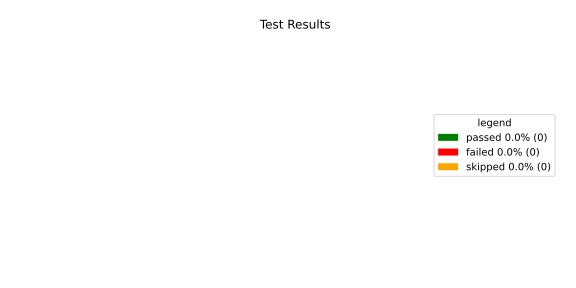
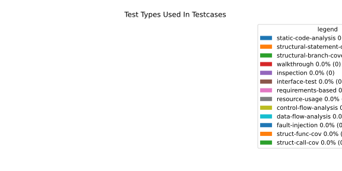
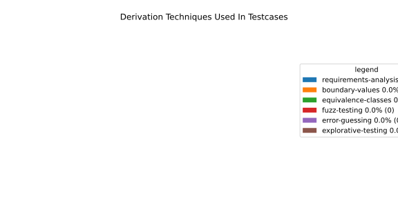

Verification Statistics#
Overview#

In Detail#



Failed Tests
Hint: This table should be empty. Before a PR can be merged all tests have to be successful.
No needs passed the filters
Skipped / Disabled Tests
testcase |
Result |
Fully Verifies |
Partially Verifies |
Test Type |
Derivation Technique |
link |
|---|---|---|---|---|---|---|
ValidateRangeTest/4__RejectsValueAboveMax |
skipped |
interface-test |
explorative-testing |
|||
ValidateRangeTest/4__RejectsValueBelowMin |
skipped |
interface-test |
explorative-testing |
All passed Tests#
testcase |
Result |
Fully Verifies |
Partially Verifies |
Test Type |
Derivation Technique |
link |
|---|---|---|---|---|---|---|
AliveImplTest__DoesNotThrowWhenInterfacePathEnvVarIsSet |
passed |
interface-test |
explorative-testing |
testcase__AliveImplTest__DoesNotThrowWhenInterfacePathEnvVarIsSet_xpewu |
||
AliveImplTest__ReportCheckpointSafeWhenNotConnected |
passed |
interface-test |
explorative-testing |
testcase__AliveImplTest__ReportCheckpointSafeWhenNotConnected_ppvuc |
||
AliveImplTest__ThrowsWhenInterfacePathEnvVarIsNotSet |
passed |
interface-test |
explorative-testing |
testcase__AliveImplTest__ThrowsWhenInterfacePathEnvVarIsNotSet_ekxfw |
||
AliveSupervisionTest__AliveDebouncesThroughFailedBeforeExpired |
passed |
interface-test |
explorative-testing |
testcase__AliveSupervisionTest__AliveDebouncesThroughFailedBeforeExpired_mlnbe |
||
AliveSupervisionTest__AliveReportsEnqueueFailureWhenRingBufferFull |
passed |
interface-test |
explorative-testing |
testcase__AliveSupervisionTest__AliveReportsEnqueueFailureWhenRingBufferFull_byhrd |
||
AliveSupervisionTest__AliveStaysOkWithCorrectHeartbeats |
passed |
interface-test |
explorative-testing |
testcase__AliveSupervisionTest__AliveStaysOkWithCorrectHeartbeats_vekof |
||
AliveSupervisionTest__AliveTransitionsOkToExpiredOnMissingHeartbeat |
passed |
interface-test |
explorative-testing |
testcase__AliveSupervisionTest__AliveTransitionsOkToExpiredOnMissingHeartbeat_jymxo |
||
AliveSupervisionTest__DeactivatesOnProcessCrash |
passed |
interface-test |
explorative-testing |
testcase__AliveSupervisionTest__DeactivatesOnProcessCrash_ypejs |
||
AliveSupervisionTest__DeactivatesOnProcessSigterm |
passed |
interface-test |
explorative-testing |
testcase__AliveSupervisionTest__DeactivatesOnProcessSigterm_hzaal |
||
AliveSupervisionTest__IgnoresIrrelevantProcessStates |
passed |
interface-test |
explorative-testing |
testcase__AliveSupervisionTest__IgnoresIrrelevantProcessStates_aolvb |
||
AliveSupervisionTest__MaxIndicationViolationExpires |
passed |
interface-test |
explorative-testing |
testcase__AliveSupervisionTest__MaxIndicationViolationExpires_whhhi |
||
AliveSupervisionTest__ReactivatesAfterCrash |
passed |
interface-test |
explorative-testing |
|||
ApplicationTypes/ApplicationTypeTest__ConvertsToExpectedValue/Native |
passed |
interface-test |
explorative-testing |
testcase__ApplicationTypes/ApplicationTypeTest__ConvertsToExpectedValue/Native_yxxcz |
||
ApplicationTypes/ApplicationTypeTest__ConvertsToExpectedValue/Reporting |
passed |
interface-test |
explorative-testing |
testcase__ApplicationTypes/ApplicationTypeTest__ConvertsToExpectedValue/Reporting_wcfwr |
||
ApplicationTypes/ApplicationTypeTest__ConvertsToExpectedValue/ReportingAndSupervised |
passed |
interface-test |
explorative-testing |
testcase__ApplicationTypes/ApplicationTypeTest__ConvertsToExpectedValue/ReportingAndSupervised_yxgad |
||
ApplicationTypes/ApplicationTypeTest__ConvertsToExpectedValue/StateManager |
passed |
interface-test |
explorative-testing |
testcase__ApplicationTypes/ApplicationTypeTest__ConvertsToExpectedValue/StateManager_ivuzc |
||
ConverterTest__ConvertAliveSupervisionMissingCycleReturnsError |
passed |
interface-test |
explorative-testing |
testcase__ConverterTest__ConvertAliveSupervisionMissingCycleReturnsError_bifzg |
||
ConverterTest__ConvertAliveSupervisionNullReturnsDefault |
passed |
interface-test |
explorative-testing |
testcase__ConverterTest__ConvertAliveSupervisionNullReturnsDefault_clyua |
||
ConverterTest__ConvertAliveSupervisionValid |
passed |
interface-test |
explorative-testing |
|||
ConverterTest__ConvertApplicationProfileMissingSelfTerminatingReturnsError |
passed |
interface-test |
explorative-testing |
testcase__ConverterTest__ConvertApplicationProfileMissingSelfTerminatingReturnsError_zddjb |
||
ConverterTest__ConvertApplicationProfileMissingTypeReturnsError |
passed |
interface-test |
explorative-testing |
testcase__ConverterTest__ConvertApplicationProfileMissingTypeReturnsError_zrfcs |
||
ConverterTest__ConvertApplicationProfileValid |
passed |
interface-test |
explorative-testing |
testcase__ConverterTest__ConvertApplicationProfileValid_oohxq |
||
ConverterTest__ConvertComponentAliveSupervisionBothIndicationsAbsentReturnsError |
passed |
interface-test |
explorative-testing |
testcase__ConverterTest__ConvertComponentAliveSupervisionBothIndicationsAbsentReturnsError_gvtfi |
||
ConverterTest__ConvertComponentAliveSupervisionMissingReportingCycleReturnsError |
passed |
interface-test |
explorative-testing |
testcase__ConverterTest__ConvertComponentAliveSupervisionMissingReportingCycleReturnsError_ajymy |
||
ConverterTest__ConvertComponentAliveSupervisionMissingToleranceReturnsError |
passed |
interface-test |
explorative-testing |
testcase__ConverterTest__ConvertComponentAliveSupervisionMissingToleranceReturnsError_lgrhj |
||
ConverterTest__ConvertComponentAliveSupervisionNullReturnsDefault |
passed |
interface-test |
explorative-testing |
testcase__ConverterTest__ConvertComponentAliveSupervisionNullReturnsDefault_xhaus |
||
ConverterTest__ConvertComponentAliveSupervisionOnlyMaxIndicationsPresent |
passed |
interface-test |
explorative-testing |
testcase__ConverterTest__ConvertComponentAliveSupervisionOnlyMaxIndicationsPresent_smwht |
||
ConverterTest__ConvertComponentAliveSupervisionOnlyMinIndicationsPresent |
passed |
interface-test |
explorative-testing |
testcase__ConverterTest__ConvertComponentAliveSupervisionOnlyMinIndicationsPresent_ybbrr |
||
ConverterTest__ConvertComponentAliveSupervisionValid |
passed |
interface-test |
explorative-testing |
testcase__ConverterTest__ConvertComponentAliveSupervisionValid_ijedh |
||
ConverterTest__ConvertComponentsValid |
passed |
interface-test |
explorative-testing |
|||
ConverterTest__ConvertComponentsWithInvalidComponentReturnsError |
passed |
interface-test |
explorative-testing |
testcase__ConverterTest__ConvertComponentsWithInvalidComponentReturnsError_wridc |
||
ConverterTest__ConvertComponentValid |
passed |
interface-test |
explorative-testing |
|||
ConverterTest__ConvertDeploymentConfigMissingReadyTimeoutReturnsError |
passed |
interface-test |
explorative-testing |
testcase__ConverterTest__ConvertDeploymentConfigMissingReadyTimeoutReturnsError_ljzfl |
||
ConverterTest__ConvertDeploymentConfigMissingShutdownTimeoutReturnsError |
passed |
interface-test |
explorative-testing |
testcase__ConverterTest__ConvertDeploymentConfigMissingShutdownTimeoutReturnsError_vyqye |
||
ConverterTest__ConvertDeploymentConfigValid |
passed |
interface-test |
explorative-testing |
|||
ConverterTest__ConvertEnvironmentalVariables |
passed |
interface-test |
explorative-testing |
testcase__ConverterTest__ConvertEnvironmentalVariables_fnhgo |
||
ConverterTest__ConvertEnvironmentalVariablesNullReturnsEmpty |
passed |
interface-test |
explorative-testing |
testcase__ConverterTest__ConvertEnvironmentalVariablesNullReturnsEmpty_vglrx |
||
ConverterTest__ConvertFallbackRunTargetMissingTimeoutReturnsError |
passed |
interface-test |
explorative-testing |
testcase__ConverterTest__ConvertFallbackRunTargetMissingTimeoutReturnsError_aevly |
||
ConverterTest__ConvertFallbackRunTargetValid |
passed |
interface-test |
explorative-testing |
testcase__ConverterTest__ConvertFallbackRunTargetValid_nexxj |
||
ConverterTest__ConvertReadyConditionMissingProcessStateReturnsError |
passed |
interface-test |
explorative-testing |
testcase__ConverterTest__ConvertReadyConditionMissingProcessStateReturnsError_ileav |
||
ConverterTest__ConvertReadyConditionValid |
passed |
interface-test |
explorative-testing |
|||
ConverterTest__ConvertRestartActionMissingFieldsReturnsError |
passed |
interface-test |
explorative-testing |
testcase__ConverterTest__ConvertRestartActionMissingFieldsReturnsError_aapjb |
||
ConverterTest__ConvertRestartActionNullReturnsNullopt |
passed |
interface-test |
explorative-testing |
testcase__ConverterTest__ConvertRestartActionNullReturnsNullopt_ifvyd |
||
ConverterTest__ConvertRestartActionValid |
passed |
interface-test |
explorative-testing |
|||
ConverterTest__ConvertRunTargetMissingTransitionTimeoutReturnsError |
passed |
interface-test |
explorative-testing |
testcase__ConverterTest__ConvertRunTargetMissingTransitionTimeoutReturnsError_ynekv |
||
ConverterTest__ConvertRunTargetsValid |
passed |
interface-test |
explorative-testing |
|||
ConverterTest__ConvertRunTargetsWithInvalidRunTargetReturnsError |
passed |
interface-test |
explorative-testing |
testcase__ConverterTest__ConvertRunTargetsWithInvalidRunTargetReturnsError_ldlox |
||
ConverterTest__ConvertRunTargetValid |
passed |
interface-test |
explorative-testing |
|||
ConverterTest__ConvertSandboxMissingGidReturnsError |
passed |
interface-test |
explorative-testing |
testcase__ConverterTest__ConvertSandboxMissingGidReturnsError_veeel |
||
ConverterTest__ConvertSandboxMissingSchedulingPolicyReturnsError |
passed |
interface-test |
explorative-testing |
testcase__ConverterTest__ConvertSandboxMissingSchedulingPolicyReturnsError_pkfts |
||
ConverterTest__ConvertSandboxMissingSchedulingPriorityReturnsError |
passed |
interface-test |
explorative-testing |
testcase__ConverterTest__ConvertSandboxMissingSchedulingPriorityReturnsError_xzdho |
||
ConverterTest__ConvertSandboxMissingUidReturnsError |
passed |
interface-test |
explorative-testing |
testcase__ConverterTest__ConvertSandboxMissingUidReturnsError_ogfku |
||
ConverterTest__ConvertSandboxSupplementaryGidOutOfRangeReturnsError |
passed |
interface-test |
explorative-testing |
testcase__ConverterTest__ConvertSandboxSupplementaryGidOutOfRangeReturnsError_zavpx |
||
ConverterTest__ConvertSandboxUidOutOfRangeReturnsError |
passed |
interface-test |
explorative-testing |
testcase__ConverterTest__ConvertSandboxUidOutOfRangeReturnsError_mcuaf |
||
ConverterTest__ConvertSandboxValid |
passed |
interface-test |
explorative-testing |
|||
ConverterTest__ConvertSwitchRunTargetActionNullReturnsNullopt |
passed |
interface-test |
explorative-testing |
testcase__ConverterTest__ConvertSwitchRunTargetActionNullReturnsNullopt_zmitx |
||
ConverterTest__ConvertSwitchRunTargetActionValid |
passed |
interface-test |
explorative-testing |
testcase__ConverterTest__ConvertSwitchRunTargetActionValid_tdklr |
||
ConverterTest__ConvertWatchdogMissingDeactivateReturnsError |
passed |
interface-test |
explorative-testing |
testcase__ConverterTest__ConvertWatchdogMissingDeactivateReturnsError_gzwjt |
||
ConverterTest__ConvertWatchdogMissingMagicCloseReturnsError |
passed |
interface-test |
explorative-testing |
testcase__ConverterTest__ConvertWatchdogMissingMagicCloseReturnsError_gexxk |
||
ConverterTest__ConvertWatchdogMissingMaxTimeoutReturnsError |
passed |
interface-test |
explorative-testing |
testcase__ConverterTest__ConvertWatchdogMissingMaxTimeoutReturnsError_lffxm |
||
ConverterTest__ConvertWatchdogNullReturnsNullopt |
passed |
interface-test |
explorative-testing |
testcase__ConverterTest__ConvertWatchdogNullReturnsNullopt_irsdk |
||
ConverterTest__ConvertWatchdogValid |
passed |
interface-test |
explorative-testing |
|||
DeadlineFixture__Start_AlreadyRunning |
passed |
interface-test |
explorative-testing |
|||
DeadlineFixture__Start_Succeeds |
passed |
interface-test |
explorative-testing |
|||
DeadlineMonitorBuilderFixture__AddDeadline_Succeeds |
passed |
interface-test |
explorative-testing |
testcase__DeadlineMonitorBuilderFixture__AddDeadline_Succeeds_nagke |
||
DeadlineMonitorBuilderFixture__New_Succeeds |
passed |
interface-test |
explorative-testing |
|||
DeadlineMonitorFixture__GetDeadline_Succeeds |
passed |
interface-test |
explorative-testing |
testcase__DeadlineMonitorFixture__GetDeadline_Succeeds_tmltf |
||
DeadlineMonitorFixture__GetDeadline_Unknown |
passed |
interface-test |
explorative-testing |
|||
EnumConversionTest__ConvertSchedulingPolicyUnsupported |
passed |
interface-test |
explorative-testing |
testcase__EnumConversionTest__ConvertSchedulingPolicyUnsupported_iavqm |
||
EnvironmentTest__AddIncreasesSize |
passed |
interface-test |
explorative-testing |
|||
EnvironmentTest__DefaultConstructedIsEmpty |
passed |
interface-test |
explorative-testing |
|||
EnvironmentTest__EmptyEnvironmentEnvpIsNullTerminated |
passed |
interface-test |
explorative-testing |
testcase__EnvironmentTest__EmptyEnvironmentEnvpIsNullTerminated_wwumw |
||
EnvironmentTest__EnvpReturnsNullTerminatedArray |
passed |
interface-test |
explorative-testing |
testcase__EnvironmentTest__EnvpReturnsNullTerminatedArray_aubkv |
||
EnvironmentTest__EnvpWithMultipleEntries |
passed |
interface-test |
explorative-testing |
|||
EnvironmentTest__MoveAssignmentPreservesEntries |
passed |
interface-test |
explorative-testing |
testcase__EnvironmentTest__MoveAssignmentPreservesEntries_vkydj |
||
EnvironmentTest__MoveConstructorPreservesEntries |
passed |
interface-test |
explorative-testing |
testcase__EnvironmentTest__MoveConstructorPreservesEntries_upclt |
||
EnvironmentTest__RangeBasedForLoopWorks |
passed |
interface-test |
explorative-testing |
|||
EnvironmentTest__ReserveAndAddAvoidReallocation |
passed |
interface-test |
explorative-testing |
testcase__EnvironmentTest__ReserveAndAddAvoidReallocation_lgzmu |
||
EnvironmentTest__SsoLengthStringSurvivesReallocation |
passed |
interface-test |
explorative-testing |
testcase__EnvironmentTest__SsoLengthStringSurvivesReallocation_jfmtl |
||
EnvironmentVariableTest__CStrReturnsKeyEqualsValue |
passed |
interface-test |
explorative-testing |
testcase__EnvironmentVariableTest__CStrReturnsKeyEqualsValue_rkwan |
||
EnvironmentVariableTest__EmptyValue |
passed |
interface-test |
explorative-testing |
|||
EnvironmentVariableTest__KeyAndValueAreAccessible |
passed |
interface-test |
explorative-testing |
testcase__EnvironmentVariableTest__KeyAndValueAreAccessible_kcrth |
||
EnvironmentVariableTest__ValueContainingEquals |
passed |
interface-test |
explorative-testing |
testcase__EnvironmentVariableTest__ValueContainingEquals_apzgz |
||
ExecErrorDomainTest__AllKnownCodesHaveDistinctMessages |
passed |
interface-test |
explorative-testing |
testcase__ExecErrorDomainTest__AllKnownCodesHaveDistinctMessages_qpoka |
||
ExecErrorDomainTest__AllKnownCodesReturnNonEmptyMessage |
passed |
interface-test |
explorative-testing |
testcase__ExecErrorDomainTest__AllKnownCodesReturnNonEmptyMessage_bawzg |
||
ExecErrorDomainTest__UnknownCodeReturnsNonEmptyMessage |
passed |
interface-test |
explorative-testing |
testcase__ExecErrorDomainTest__UnknownCodeReturnsNonEmptyMessage_kkwpr |
||
FlatbufferConfigLoaderTest__CorruptedBufferReturnsInvalidFormat |
passed |
interface-test |
explorative-testing |
testcase__FlatbufferConfigLoaderTest__CorruptedBufferReturnsInvalidFormat_twyac |
||
FlatbufferConfigLoaderTest__LoadAliveSupervision |
passed |
interface-test |
explorative-testing |
testcase__FlatbufferConfigLoaderTest__LoadAliveSupervision_hhuux |
||
FlatbufferConfigLoaderTest__LoadBufferFailsWithGenericErrorReturnsGeneralError |
passed |
interface-test |
explorative-testing |
testcase__FlatbufferConfigLoaderTest__LoadBufferFailsWithGenericErrorReturnsGeneralError_kmatm |
||
FlatbufferConfigLoaderTest__LoadBufferFailsWithNoSuchFileReturnsFileNotFound |
passed |
interface-test |
explorative-testing |
testcase__FlatbufferConfigLoaderTest__LoadBufferFailsWithNoSuchFileReturnsFileNotFound_yzlra |
||
FlatbufferConfigLoaderTest__LoadBufferFailsWithPermissionDeniedReturnsInsufficientPermission |
passed |
interface-test |
explorative-testing |
|||
FlatbufferConfigLoaderTest__LoadComponentAliveSupervision |
passed |
interface-test |
explorative-testing |
testcase__FlatbufferConfigLoaderTest__LoadComponentAliveSupervision_fwfad |
||
FlatbufferConfigLoaderTest__LoadEnvironmentalVariables |
passed |
interface-test |
explorative-testing |
testcase__FlatbufferConfigLoaderTest__LoadEnvironmentalVariables_wsosu |
||
FlatbufferConfigLoaderTest__LoadFallbackRunTarget |
passed |
interface-test |
explorative-testing |
testcase__FlatbufferConfigLoaderTest__LoadFallbackRunTarget_wduqm |
||
FlatbufferConfigLoaderTest__LoadMinimalConfig |
passed |
interface-test |
explorative-testing |
testcase__FlatbufferConfigLoaderTest__LoadMinimalConfig_hdkck |
||
FlatbufferConfigLoaderTest__LoadMultipleComponents |
passed |
interface-test |
explorative-testing |
testcase__FlatbufferConfigLoaderTest__LoadMultipleComponents_abpom |
||
FlatbufferConfigLoaderTest__LoadRestartRecoveryAction |
passed |
interface-test |
explorative-testing |
testcase__FlatbufferConfigLoaderTest__LoadRestartRecoveryAction_wyfqg |
||
FlatbufferConfigLoaderTest__LoadRunTargets |
passed |
interface-test |
explorative-testing |
|||
FlatbufferConfigLoaderTest__LoadSandbox |
passed |
interface-test |
explorative-testing |
|||
FlatbufferConfigLoaderTest__LoadSingleComponent |
passed |
interface-test |
explorative-testing |
testcase__FlatbufferConfigLoaderTest__LoadSingleComponent_yidty |
||
FlatbufferConfigLoaderTest__LoadSwitchRunTargetAction |
passed |
interface-test |
explorative-testing |
testcase__FlatbufferConfigLoaderTest__LoadSwitchRunTargetAction_uchgp |
||
FlatbufferConfigLoaderTest__LoadWatchdog |
passed |
interface-test |
explorative-testing |
|||
FlatbufferConfigLoaderTest__MissingSchemaVersionReturnsInvalidFormat |
passed |
interface-test |
explorative-testing |
testcase__FlatbufferConfigLoaderTest__MissingSchemaVersionReturnsInvalidFormat_qqmfn |
||
FlatbufferConfigLoaderTest__OptionalReadyConditionAbsent |
passed |
interface-test |
explorative-testing |
testcase__FlatbufferConfigLoaderTest__OptionalReadyConditionAbsent_lhddx |
||
FlatbufferConfigLoaderTest__OptionalWatchdogAbsent |
passed |
interface-test |
explorative-testing |
testcase__FlatbufferConfigLoaderTest__OptionalWatchdogAbsent_pkhkp |
||
FlatbufferConfigLoaderTest__WrongSchemaVersionReturnsUnsupportedVersion |
passed |
interface-test |
explorative-testing |
testcase__FlatbufferConfigLoaderTest__WrongSchemaVersionReturnsUnsupportedVersion_zrbjv |
||
HealthMonitor__GetDeadlineMonitor_Available |
passed |
|||||
HealthMonitor__GetDeadlineMonitor_Taken |
passed |
|||||
HealthMonitor__GetDeadlineMonitor_Unknown |
passed |
|||||
HealthMonitor__GetHeartbeatMonitor_Available |
passed |
testcase__HealthMonitor__GetHeartbeatMonitor_Available_aacat |
||||
HealthMonitor__GetHeartbeatMonitor_Taken |
passed |
|||||
HealthMonitor__GetHeartbeatMonitor_Unknown |
passed |
|||||
HealthMonitor__GetLogicMonitor_Available |
passed |
|||||
HealthMonitor__GetLogicMonitor_Taken |
passed |
|||||
HealthMonitor__GetLogicMonitor_Unknown |
passed |
|||||
HealthMonitor__Start_MonitorsNotTaken |
passed |
|||||
HealthMonitor__Start_Succeeds |
passed |
|||||
HealthMonitorBuilderFixture__Build_InvalidCycles |
passed |
interface-test |
explorative-testing |
testcase__HealthMonitorBuilderFixture__Build_InvalidCycles_pdigk |
||
HealthMonitorBuilderFixture__Build_NoMonitors |
passed |
interface-test |
explorative-testing |
testcase__HealthMonitorBuilderFixture__Build_NoMonitors_ktcve |
||
HealthMonitorBuilderFixture__Build_Succeeds |
passed |
interface-test |
explorative-testing |
|||
HealthMonitorBuilderFixture__New_Succeeds |
passed |
interface-test |
explorative-testing |
|||
HealthMonitorTest__Integrated |
passed |
interface-test |
explorative-testing |
|||
HeartbeatMonitor__Heartbeat_Succeeds |
passed |
interface-test |
explorative-testing |
|||
HeartbeatMonitorBuilder__New_Succeeds |
passed |
interface-test |
explorative-testing |
|||
IdentifierHashTest__IdentifierHash_default_created |
passed |
interface-test |
explorative-testing |
testcase__IdentifierHashTest__IdentifierHash_default_created_yhhvi |
||
IdentifierHashTest__IdentifierHash_EqualityOperators |
passed |
interface-test |
explorative-testing |
testcase__IdentifierHashTest__IdentifierHash_EqualityOperators_nnsuj |
||
IdentifierHashTest__IdentifierHash_invalid_hash_no_string_representation |
passed |
interface-test |
explorative-testing |
testcase__IdentifierHashTest__IdentifierHash_invalid_hash_no_string_representation_rxowr |
||
IdentifierHashTest__IdentifierHash_LessThanOperator |
passed |
interface-test |
explorative-testing |
testcase__IdentifierHashTest__IdentifierHash_LessThanOperator_rnbax |
||
IdentifierHashTest__IdentifierHash_no_dangling_pointer_after_source_string_dies |
passed |
interface-test |
explorative-testing |
testcase__IdentifierHashTest__IdentifierHash_no_dangling_pointer_after_source_string_dies_qsjin |
||
IdentifierHashTest__IdentifierHash_with_string_created |
passed |
interface-test |
explorative-testing |
testcase__IdentifierHashTest__IdentifierHash_with_string_created_aygdm |
||
IdentifierHashTest__IdentifierHash_with_string_view_created |
passed |
interface-test |
explorative-testing |
testcase__IdentifierHashTest__IdentifierHash_with_string_view_created_dbpol |
||
LogicMonitorBuilderFixture__AddState_Succeeds |
passed |
interface-test |
explorative-testing |
testcase__LogicMonitorBuilderFixture__AddState_Succeeds_axdxj |
||
LogicMonitorBuilderFixture__New_Succeeds |
passed |
interface-test |
explorative-testing |
|||
LogicMonitorFixture__State_Invalid |
passed |
interface-test |
explorative-testing |
|||
LogicMonitorFixture__State_Succeeds |
passed |
interface-test |
explorative-testing |
|||
LogicMonitorFixture__Transition_Invalid |
passed |
interface-test |
explorative-testing |
|||
LogicMonitorFixture__Transition_Succeeds |
passed |
interface-test |
explorative-testing |
|||
LogicMonitorFixture__Transition_Unknown |
passed |
interface-test |
explorative-testing |
|||
MonitorIfDaemonTest__Active_CheckpointDataForwarded |
passed |
interface-test |
explorative-testing |
testcase__MonitorIfDaemonTest__Active_CheckpointDataForwarded_evumz |
||
MonitorIfDaemonTest__Active_FutureTimestamp_NotForwardedInCurrentCycle |
passed |
interface-test |
explorative-testing |
testcase__MonitorIfDaemonTest__Active_FutureTimestamp_NotForwardedInCurrentCycle_oycau |
||
MonitorIfDaemonTest__Active_FutureTimestampCheckpoint_ConsumedInLaterCycle |
passed |
interface-test |
explorative-testing |
testcase__MonitorIfDaemonTest__Active_FutureTimestampCheckpoint_ConsumedInLaterCycle_veyyy |
||
MonitorIfDaemonTest__Active_MultipleCheckpointsInOneCycle_AllForwarded |
passed |
interface-test |
explorative-testing |
testcase__MonitorIfDaemonTest__Active_MultipleCheckpointsInOneCycle_AllForwarded_gmbms |
||
MonitorIfDaemonTest__Active_NonMatchingCheckpointId_NotForwarded |
passed |
interface-test |
explorative-testing |
testcase__MonitorIfDaemonTest__Active_NonMatchingCheckpointId_NotForwarded_bohck |
||
MonitorIfDaemonTest__Active_OverflowDetected_TransitionsToInactiveOverflow |
passed |
interface-test |
explorative-testing |
testcase__MonitorIfDaemonTest__Active_OverflowDetected_TransitionsToInactiveOverflow_ovitk |
||
MonitorIfDaemonTest__Active_TwoAttachedCheckpoints_RoutedByCheckpointId |
passed |
interface-test |
explorative-testing |
testcase__MonitorIfDaemonTest__Active_TwoAttachedCheckpoints_RoutedByCheckpointId_skqhd |
||
MonitorIfDaemonTest__GetInterfaceName_ReturnsNameGivenAtConstruction |
passed |
interface-test |
explorative-testing |
testcase__MonitorIfDaemonTest__GetInterfaceName_ReturnsNameGivenAtConstruction_iaemz |
||
MonitorIfDaemonTest__InactiveOverflow_NoProcessRestart_DoesNotRepeatNotification |
passed |
interface-test |
explorative-testing |
testcase__MonitorIfDaemonTest__InactiveOverflow_NoProcessRestart_DoesNotRepeatNotification_gdbxg |
||
MonitorIfDaemonTest__InactiveOverflow_ProcessRestartFlag_ClearedAfterNotification |
passed |
interface-test |
explorative-testing |
testcase__MonitorIfDaemonTest__InactiveOverflow_ProcessRestartFlag_ClearedAfterNotification_pqfyy |
||
MonitorIfDaemonTest__InactiveOverflow_ProcessRestarts_PushesOverflowNotificationAgain |
passed |
interface-test |
explorative-testing |
|||
MonitorIfDaemonTest__InitiallyInactive_CheckForNewData_DoesNotNotifyCheckpoint |
passed |
interface-test |
explorative-testing |
testcase__MonitorIfDaemonTest__InitiallyInactive_CheckForNewData_DoesNotNotifyCheckpoint_wjrfl |
||
MonitorIfDaemonTest__ProcessOff_DeactivatesMonitor_NoFurtherDataForwarded |
passed |
interface-test |
explorative-testing |
testcase__MonitorIfDaemonTest__ProcessOff_DeactivatesMonitor_NoFurtherDataForwarded_uialh |
||
MonitorIfDaemonTest__ProcessOffBeforeActivation_RemainsInactive |
passed |
interface-test |
explorative-testing |
testcase__MonitorIfDaemonTest__ProcessOffBeforeActivation_RemainsInactive_kzzyy |
||
MonitorIfDaemonTest__ProcessRunning_ActivatesMonitorOnNextCheckForNewData |
passed |
interface-test |
explorative-testing |
testcase__MonitorIfDaemonTest__ProcessRunning_ActivatesMonitorOnNextCheckForNewData_fkkmk |
||
MonitorIfDaemonTest__ProcessStarting_AlsoActivatesMonitor |
passed |
interface-test |
explorative-testing |
testcase__MonitorIfDaemonTest__ProcessStarting_AlsoActivatesMonitor_xdkbg |
||
MPMCConcurrentQueueTest_Basic__LvaluePushCopiesItem |
passed |
testcase__MPMCConcurrentQueueTest_Basic__LvaluePushCopiesItem_oysfc |
||||
MPMCConcurrentQueueTest_Basic__PopReturnsNulloptOnSemaphoreWaitFailure |
passed |
testcase__MPMCConcurrentQueueTest_Basic__PopReturnsNulloptOnSemaphoreWaitFailure_rgznm |
||||
MPMCConcurrentQueueTest_Basic__PushAndPopPreservesOrder |
passed |
testcase__MPMCConcurrentQueueTest_Basic__PushAndPopPreservesOrder_aijdb |
||||
MPMCConcurrentQueueTest_Basic__PushAndPopSingleItem |
passed |
testcase__MPMCConcurrentQueueTest_Basic__PushAndPopSingleItem_jrxwz |
||||
MPMCConcurrentQueueTest_Basic__RvaluePushWorksWithMoveOnlyType |
passed |
testcase__MPMCConcurrentQueueTest_Basic__RvaluePushWorksWithMoveOnlyType_cxxaj |
||||
MPMCConcurrentQueueTest_Blocking__PopBlocksUntilItemAvailable |
passed |
testcase__MPMCConcurrentQueueTest_Blocking__PopBlocksUntilItemAvailable_ttwcx |
||||
MPMCConcurrentQueueTest_Blocking__PushBlocksWhenFull |
passed |
testcase__MPMCConcurrentQueueTest_Blocking__PushBlocksWhenFull_ecujf |
||||
MPMCConcurrentQueueTest_Blocking__StopUnblocksBlockedConsumer |
passed |
testcase__MPMCConcurrentQueueTest_Blocking__StopUnblocksBlockedConsumer_snzyr |
||||
MPMCConcurrentQueueTest_Blocking__StopUnblocksBlockedProducer |
passed |
testcase__MPMCConcurrentQueueTest_Blocking__StopUnblocksBlockedProducer_inddu |
||||
MPMCConcurrentQueueTest_MPMC__AllItemsDelivered |
passed |
testcase__MPMCConcurrentQueueTest_MPMC__AllItemsDelivered_ztjqe |
||||
MPMCConcurrentQueueTest_Stop__ItemsAreDroppedAfterStop |
passed |
testcase__MPMCConcurrentQueueTest_Stop__ItemsAreDroppedAfterStop_ragzw |
||||
MPMCConcurrentQueueTest_Stop__PopReturnsNulloptWhenStoppedAndEmpty |
passed |
testcase__MPMCConcurrentQueueTest_Stop__PopReturnsNulloptWhenStoppedAndEmpty_cevga |
||||
MPMCConcurrentQueueTest_Stop__PushReturnsFalseAfterStop |
passed |
testcase__MPMCConcurrentQueueTest_Stop__PushReturnsFalseAfterStop_qqnhw |
||||
MPMCConcurrentQueueTest_Timeout__PushWithTimeoutReturnsFalseWhenFull |
passed |
testcase__MPMCConcurrentQueueTest_Timeout__PushWithTimeoutReturnsFalseWhenFull_aeips |
||||
MPMCConcurrentQueueTest_Timeout__PushWithTimeoutSucceedsWhenSlotAvailable |
passed |
testcase__MPMCConcurrentQueueTest_Timeout__PushWithTimeoutSucceedsWhenSlotAvailable_klzpo |
||||
OsHandlerTest__WaitReturnsError_OsHandlerSleepsAndDoesNotCallFindTerminated |
passed |
interface-test |
explorative-testing |
testcase__OsHandlerTest__WaitReturnsError_OsHandlerSleepsAndDoesNotCallFindTerminated_cibtr |
||
OsHandlerTest__WaitReturnsErrorThenProcessId_HandlerRecoversAndInvokesCallback |
passed |
interface-test |
explorative-testing |
testcase__OsHandlerTest__WaitReturnsErrorThenProcessId_HandlerRecoversAndInvokesCallback_nqstd |
||
OsHandlerTest__WaitReturnsProcessId_FindTerminatedIsCalled |
passed |
interface-test |
explorative-testing |
testcase__OsHandlerTest__WaitReturnsProcessId_FindTerminatedIsCalled_chlsq |
||
OsHandlerTest__WaitReturnsProcessIdBeforeRegistration_LaterRegistrationReceivesStoredTermination |
passed |
interface-test |
explorative-testing |
|||
OsHandlerTest__WaitReturnsUnknownPidWhenMapIsFull_OutOfResourcesPathDoesNotNotifyCallbacks |
passed |
interface-test |
explorative-testing |
|||
OsHandlerTest__WaitReturnsZeroPid_OsHandlerSleepsAndDoesNotCallFindTerminated |
passed |
interface-test |
explorative-testing |
testcase__OsHandlerTest__WaitReturnsZeroPid_OsHandlerSleepsAndDoesNotCallFindTerminated_rkttz |
||
ProcessStateClient_UT__ProcessStateClient_ConstructReceiver_Succeeds |
passed |
interface-test |
explorative-testing |
testcase__ProcessStateClient_UT__ProcessStateClient_ConstructReceiver_Succeeds_hodwy |
||
ProcessStateClient_UT__ProcessStateClient_QueueMaxNumberOfProcesses_Succeeds |
passed |
interface-test |
explorative-testing |
testcase__ProcessStateClient_UT__ProcessStateClient_QueueMaxNumberOfProcesses_Succeeds_qohom |
||
ProcessStateClient_UT__ProcessStateClient_QueueOneProcess_Succeeds |
passed |
interface-test |
explorative-testing |
testcase__ProcessStateClient_UT__ProcessStateClient_QueueOneProcess_Succeeds_tmzfz |
||
ProcessStateClient_UT__ProcessStateClient_QueueOneProcessTooMany_Fails |
passed |
interface-test |
explorative-testing |
testcase__ProcessStateClient_UT__ProcessStateClient_QueueOneProcessTooMany_Fails_sspoj |
||
ProcessStates/ProcessStateTest__ConvertsToExpectedValue/Running |
passed |
interface-test |
explorative-testing |
testcase__ProcessStates/ProcessStateTest__ConvertsToExpectedValue/Running_hinlr |
||
ProcessStates/ProcessStateTest__ConvertsToExpectedValue/Terminated |
passed |
interface-test |
explorative-testing |
testcase__ProcessStates/ProcessStateTest__ConvertsToExpectedValue/Terminated_zrytn |
||
RecoveryClientTest__FIFOOrdering |
passed |
interface-test |
explorative-testing |
|||
RecoveryClientTest__GetNextRequest |
passed |
interface-test |
explorative-testing |
|||
RecoveryClientTest__GetNextRequestEmpty |
passed |
interface-test |
explorative-testing |
|||
RecoveryClientTest__RingBufferFull |
passed |
interface-test |
explorative-testing |
|||
RecoveryClientTest__SendSingleRequest |
passed |
interface-test |
explorative-testing |
|||
RunTest__AsPosixProcessCreatesAndDestroysLifeCycleManager |
passed |
testcase__RunTest__AsPosixProcessCreatesAndDestroysLifeCycleManager_sooex |
||||
RunTest__AsPosixProcessForwardsConstructorArgsToApplication |
passed |
testcase__RunTest__AsPosixProcessForwardsConstructorArgsToApplication_dmeur |
||||
RunTest__AsPosixProcessForwardsNonZeroExitCode |
passed |
testcase__RunTest__AsPosixProcessForwardsNonZeroExitCode_lldqd |
||||
RunTest__AsPosixProcessPassesCorrectApplicationTypeToRun |
passed |
testcase__RunTest__AsPosixProcessPassesCorrectApplicationTypeToRun_ajqwz |
||||
RunTest__AsPosixProcessReturnsZeroExitCode |
passed |
|||||
RunTest__RunApplicationFreeFunctionDelegatesToAsPosixProcess |
passed |
testcase__RunTest__RunApplicationFreeFunctionDelegatesToAsPosixProcess_ccing |
||||
RunTest__RunConstructorPassesArgcArgvToApplicationContext |
passed |
testcase__RunTest__RunConstructorPassesArgcArgvToApplicationContext_agerd |
||||
SafeProcessMapTest__ConcurrentFindAndInsertFromMultipleThreads |
passed |
interface-test |
explorative-testing |
testcase__SafeProcessMapTest__ConcurrentFindAndInsertFromMultipleThreads_kzfyg |
||
SafeProcessMapTest__ConcurrentInsertAndFindFromMultipleThreads |
passed |
interface-test |
explorative-testing |
testcase__SafeProcessMapTest__ConcurrentInsertAndFindFromMultipleThreads_hnyqj |
||
SafeProcessMapTest__ConstructWithZeroCapacity |
passed |
interface-test |
explorative-testing |
testcase__SafeProcessMapTest__ConstructWithZeroCapacity_gjmqg |
||
SafeProcessMapTest__FindTerminatedInsertsEntryWhenPidNotPresent |
passed |
interface-test |
explorative-testing |
testcase__SafeProcessMapTest__FindTerminatedInsertsEntryWhenPidNotPresent_ixtlt |
||
SafeProcessMapTest__FindTerminatedMatchesExistingInsertAndCallsCallback |
passed |
interface-test |
explorative-testing |
testcase__SafeProcessMapTest__FindTerminatedMatchesExistingInsertAndCallsCallback_ehuzb |
||
SafeProcessMapTest__FindTerminatedSamePidTwiceYieldsUntilInsertResolves |
passed |
interface-test |
explorative-testing |
testcase__SafeProcessMapTest__FindTerminatedSamePidTwiceYieldsUntilInsertResolves_hsekx |
||
SafeProcessMapTest__FindTerminatedWithNegativePidReturnsInvalid |
passed |
interface-test |
explorative-testing |
testcase__SafeProcessMapTest__FindTerminatedWithNegativePidReturnsInvalid_dewoh |
||
SafeProcessMapTest__FindTerminatedWorksAtMaxTreeDepth |
passed |
interface-test |
explorative-testing |
testcase__SafeProcessMapTest__FindTerminatedWorksAtMaxTreeDepth_adtzi |
||
SafeProcessMapTest__InsertBeyondCapacityReturnsOutOfMemory |
passed |
interface-test |
explorative-testing |
testcase__SafeProcessMapTest__InsertBeyondCapacityReturnsOutOfMemory_qjnie |
||
SafeProcessMapTest__InsertIntoEmptyTreeReturnsZero |
passed |
interface-test |
explorative-testing |
testcase__SafeProcessMapTest__InsertIntoEmptyTreeReturnsZero_zfbaq |
||
SafeProcessMapTest__InsertMatchesExistingFindTerminatedEntry |
passed |
interface-test |
explorative-testing |
testcase__SafeProcessMapTest__InsertMatchesExistingFindTerminatedEntry_fuwrp |
||
SafeProcessMapTest__InsertMultipleNodesThenFindTerminatedRemovesAll |
passed |
interface-test |
explorative-testing |
testcase__SafeProcessMapTest__InsertMultipleNodesThenFindTerminatedRemovesAll_fvowh |
||
SafeProcessMapTest__InsertSamePidTwiceYieldsUntilFindTerminatedResolves |
passed |
interface-test |
explorative-testing |
testcase__SafeProcessMapTest__InsertSamePidTwiceYieldsUntilFindTerminatedResolves_wzwyb |
||
SchedulingPolicies/SchedulingPolicyTest__ConvertsToExpectedPosixValue/SCHED_FIFO |
passed |
interface-test |
explorative-testing |
testcase__SchedulingPolicies/SchedulingPolicyTest__ConvertsToExpectedPosixValue/SCHED_FIFO_soddq |
||
SchedulingPolicies/SchedulingPolicyTest__ConvertsToExpectedPosixValue/SCHED_OTHER |
passed |
interface-test |
explorative-testing |
testcase__SchedulingPolicies/SchedulingPolicyTest__ConvertsToExpectedPosixValue/SCHED_OTHER_oigmk |
||
SchedulingPolicies/SchedulingPolicyTest__ConvertsToExpectedPosixValue/SCHED_RR |
passed |
interface-test |
explorative-testing |
testcase__SchedulingPolicies/SchedulingPolicyTest__ConvertsToExpectedPosixValue/SCHED_RR_pcjci |
||
score/health_monitor/src/rust/test-510566969/tests |
passed |
testcase__score/health_monitor/src/rust/test-510566969/tests_kjjlw |
||||
score/health_monitor/src/rust/test-827801879/loom_tests |
passed |
testcase__score/health_monitor/src/rust/test-827801879/loom_tests_cpmix |
||||
SecondsToMsTest__ConvertsPositiveValue |
passed |
interface-test |
explorative-testing |
|||
SecondsToMsTest__ConvertsZero |
passed |
interface-test |
explorative-testing |
|||
SecondsToMsTest__RejectsNegativeValue |
passed |
interface-test |
explorative-testing |
|||
SecondsToMsTest__RejectsOverflow |
passed |
interface-test |
explorative-testing |
|||
SecondsToMsTest__RejectsSubMillisecond |
passed |
interface-test |
explorative-testing |
|||
StringHelperTest__ConvertGidVectorReturnsEmptyWhenNull |
passed |
interface-test |
explorative-testing |
testcase__StringHelperTest__ConvertGidVectorReturnsEmptyWhenNull_jmcsr |
||
StringHelperTest__ConvertStringVectorReturnsEmptyWhenNull |
passed |
interface-test |
explorative-testing |
testcase__StringHelperTest__ConvertStringVectorReturnsEmptyWhenNull_zsuvv |
||
StringHelperTest__SafeStringReturnsEmptyWhenNull |
passed |
interface-test |
explorative-testing |
testcase__StringHelperTest__SafeStringReturnsEmptyWhenNull_crelr |
||
StringHelperTest__SafeStringReturnsValueWhenNotNull |
passed |
interface-test |
explorative-testing |
testcase__StringHelperTest__SafeStringReturnsValueWhenNotNull_anbko |
||
test_complex_monitoring |
passed |
|||||
test_crash_on_startup |
passed |
|||||
test_incorrect_config_non_reporting |
passed |
|||||
test_process_crash_monitoring |
passed |
|||||
test_process_launch_args |
passed |
|||||
test_process_wrong_binary_failure |
passed |
|||||
test_recovery_action_complex_rep_failure |
passed |
|||||
test_recovery_action_simple_rep_failure |
passed |
|||||
test_smoke |
passed |
|||||
test_switch_run_target |
passed |
|||||
TimeRangeFixture__MinMax |
passed |
interface-test |
explorative-testing |
|||
TimeRangeFixture__New_InvalidOrder |
passed |
interface-test |
explorative-testing |
|||
TimeRangeFixture__New_Succeeds |
passed |
interface-test |
explorative-testing |
|||
ValidateRangeTest/0__AcceptsMaxBoundary |
passed |
interface-test |
explorative-testing |
|||
ValidateRangeTest/0__AcceptsMinBoundary |
passed |
interface-test |
explorative-testing |
|||
ValidateRangeTest/0__AcceptsZero |
passed |
interface-test |
explorative-testing |
|||
ValidateRangeTest/0__RejectsValueAboveMax |
passed |
interface-test |
explorative-testing |
|||
ValidateRangeTest/0__RejectsValueBelowMin |
passed |
interface-test |
explorative-testing |
|||
ValidateRangeTest/1__AcceptsMaxBoundary |
passed |
interface-test |
explorative-testing |
|||
ValidateRangeTest/1__AcceptsMinBoundary |
passed |
interface-test |
explorative-testing |
|||
ValidateRangeTest/1__AcceptsZero |
passed |
interface-test |
explorative-testing |
|||
ValidateRangeTest/1__RejectsValueAboveMax |
passed |
interface-test |
explorative-testing |
|||
ValidateRangeTest/1__RejectsValueBelowMin |
passed |
interface-test |
explorative-testing |
|||
ValidateRangeTest/2__AcceptsMaxBoundary |
passed |
interface-test |
explorative-testing |
|||
ValidateRangeTest/2__AcceptsMinBoundary |
passed |
interface-test |
explorative-testing |
|||
ValidateRangeTest/2__AcceptsZero |
passed |
interface-test |
explorative-testing |
|||
ValidateRangeTest/2__RejectsValueAboveMax |
passed |
interface-test |
explorative-testing |
|||
ValidateRangeTest/2__RejectsValueBelowMin |
passed |
interface-test |
explorative-testing |
|||
ValidateRangeTest/3__AcceptsMaxBoundary |
passed |
interface-test |
explorative-testing |
|||
ValidateRangeTest/3__AcceptsMinBoundary |
passed |
interface-test |
explorative-testing |
|||
ValidateRangeTest/3__AcceptsZero |
passed |
interface-test |
explorative-testing |
|||
ValidateRangeTest/3__RejectsValueAboveMax |
passed |
interface-test |
explorative-testing |
|||
ValidateRangeTest/3__RejectsValueBelowMin |
passed |
interface-test |
explorative-testing |
|||
ValidateRangeTest/4__AcceptsMaxBoundary |
passed |
interface-test |
explorative-testing |
|||
ValidateRangeTest/4__AcceptsMinBoundary |
passed |
interface-test |
explorative-testing |
|||
ValidateRangeTest/4__AcceptsZero |
passed |
interface-test |
explorative-testing |
Details About Testcases#


Test Log Files#
tests-report/tests/integration/process_simple_rep_failure/process_simple_rep_failure/test.log
exec ${PAGER:-/usr/bin/less} "$0" || exit 1
Executing tests from //tests/integration/process_simple_rep_failure:process_simple_rep_failure
-----------------------------------------------------------------------------
============================= test session starts ==============================
platform linux -- Python 3.12.12, pytest-9.0.3, pluggy-1.5.0
rootdir: /home/runner/.bazel/sandbox/processwrapper-sandbox/1105/execroot/_main/bazel-out/k8-fastbuild/bin/tests/integration/process_simple_rep_failure/process_simple_rep_failure.runfiles/score_itf+
configfile: pytest.ini
collected 1 item
../score_itf+::test_recovery_action_simple_rep_failure
-------------------------------- live log setup --------------------------------
[2026-07-02 14:36:04.934] [INFO] [score.itf.plugins.docker] Executing custom image bootstrap command: tests/utils/environments/x86_64-linux/x86_64-linux.sh
[2026-07-02 14:36:05.507] [DEBUG] [docker.utils.config] Trying paths: ['/home/runner/.docker/config.json', '/home/runner/.dockercfg']
[2026-07-02 14:36:05.507] [DEBUG] [docker.utils.config] Found file at path: /home/runner/.docker/config.json
[2026-07-02 14:36:05.508] [DEBUG] [docker.auth] Found 'auths' section
[2026-07-02 14:36:05.508] [DEBUG] [docker.auth] Found entry (registry='https://index.docker.io/v1/', username='githubactions')
[2026-07-02 14:36:05.536] [DEBUG] [urllib3.connectionpool] http://localhost:None "GET /version HTTP/1.1" 200 823
[2026-07-02 14:36:05.566] [DEBUG] [urllib3.connectionpool] http://localhost:None "POST /v1.48/containers/create HTTP/1.1" 201 88
[2026-07-02 14:36:05.568] [DEBUG] [urllib3.connectionpool] http://localhost:None "GET /v1.48/containers/ef0bc18950c1469ae0859a47e73378df0f845a24054bbd1f61d8ad9ea58baa03/json HTTP/1.1" 200 None
[2026-07-02 14:36:05.733] [DEBUG] [urllib3.connectionpool] http://localhost:None "POST /v1.48/containers/ef0bc18950c1469ae0859a47e73378df0f845a24054bbd1f61d8ad9ea58baa03/start HTTP/1.1" 204 0
[2026-07-02 14:36:05.734] [DEBUG] [docker.utils.config] Trying paths: ['/home/runner/.docker/config.json', '/home/runner/.dockercfg']
[2026-07-02 14:36:05.734] [DEBUG] [docker.utils.config] Found file at path: /home/runner/.docker/config.json
[2026-07-02 14:36:05.734] [DEBUG] [docker.auth] Found 'auths' section
[2026-07-02 14:36:05.734] [DEBUG] [docker.auth] Found entry (registry='https://index.docker.io/v1/', username='githubactions')
[2026-07-02 14:36:05.744] [DEBUG] [urllib3.connectionpool] http://localhost:None "GET /version HTTP/1.1" 200 823
[2026-07-02 14:36:05.967] [INFO] [tests.utils.testing_utils.setup_test] Test case setup finished
-------------------------------- live log call ---------------------------------
[2026-07-02 14:36:06.076] [INFO] [launch_manager] 2026/07/02 14:36:06.2966066 2986888 000 ECU1 LM LM log debug verbose 1
[2026-07-02 14:36:06.077] [INFO] [launch_manager] Launch Manager Started !!!!
[2026-07-02 14:36:06.077] [INFO] [launch_manager] 2026/07/02 14:36:06.2966067 2986902 000 ECU1 LM LM log debug verbose 1 Loading LCM Configurations...
[2026-07-02 14:36:06.077] [INFO] [launch_manager] 2026/07/02 14:36:06.2966067 2986902 000 ECU1 LM LM log debug verbose 1 ECUCFG_ENV_VAR_ROOTFOLDER set successfully
[2026-07-02 14:36:06.078] [INFO] [launch_manager] 2026/07/02 14:36:06.2966067 2986903 000 ECU1 LM LM log debug verbose 5 FlatBufferParser::getModeGroupPgName: MainPG ( IdentifierHash: 18079021346025578134 )
[2026-07-02 14:36:06.078] [INFO] [launch_manager] 2026/07/02 14:36:06.2966067 2986903 000 ECU1 LM LM log debug verbose 5 FlatBufferParser::getModeGroupPgStateName: MainPG/Startup ( IdentifierHash: 10504605499600661529 )
[2026-07-02 14:36:06.078] [INFO] [launch_manager] 2026/07/02 14:36:06.2966067 2986904 000 ECU1 LM LM log debug verbose 5 FlatBufferParser::getModeGroupPgStateName: MainPG/run_target_app_does_report_krunning_in_time ( IdentifierHash: 11934981641920773349 )
[2026-07-02 14:36:06.078] [INFO] [launch_manager] 2026/07/02 14:36:06.2966067 2986904 000 ECU1 LM LM log debug verbose 5 FlatBufferParser::getModeGroupPgStateName: MainPG/run_target_app_does_not_report_krunning_in_time ( IdentifierHash: 7672161913816744053 )
[2026-07-02 14:36:06.078] [INFO] [launch_manager] 2026/07/02 14:36:06.2966067 2986904 000 ECU1 LM LM log debug verbose 5 FlatBufferParser::getModeGroupPgStateName: MainPG/Off ( IdentifierHash: 15281793077830264047 )
[2026-07-02 14:36:06.078] [INFO] [launch_manager] 2026/07/02 14:36:06.2966067 2986904 000 ECU1 LM LM log debug verbose 5 FlatBufferParser::getModeGroupPgStateName: MainPG/fallback_run_target ( IdentifierHash: 4059409696722237352 )
[2026-07-02 14:36:06.078] [INFO] [launch_manager] 2026/07/02 14:36:06.2966068 2986905 000 ECU1 LM LM log debug verbose 4 parseProcessConfigurations: Process index: 0 executable_path_: /tmp/tests/process_simple_rep_failure/control_client_mock
[2026-07-02 14:36:06.078] [INFO] [launch_manager] 2026/07/02 14:36:06.2966068 2986905 000 ECU1 LM LM log debug verbose 3 Process control_client_mock is Reporting execution state
[2026-07-02 14:36:06.079] [INFO] [launch_manager] 2026/07/02 14:36:06.2966068 2986905 000 ECU1 LM LM log debug verbose 1 Process is STATE_MANAGEMENT function Cluster Affiliation
[2026-07-02 14:36:06.079] [INFO] [launch_manager] 2026/07/02 14:36:06.2966068 2986905 000 ECU1 LM LM log debug verbose 3 Process control_client_mock is Self terminating
[2026-07-02 14:36:06.079] [INFO] [launch_manager] 2026/07/02 14:36:06.2966068 2986906 000 ECU1 LM LM log debug verbose 4 ParseProcessProcessGroup: id:::pg_name_: MainPG , pg_state_name_: MainPG/Startup
[2026-07-02 14:36:06.079] [INFO] [launch_manager] 2026/07/02 14:36:06.2966068 2986906 000 ECU1 LM LM log debug verbose 4 ParseProcessProcessGroup: id:::pg_name_: MainPG , pg_state_name_: MainPG/run_target_app_does_report_krunning_in_time
[2026-07-02 14:36:06.079] [INFO] [launch_manager] 2026/07/02 14:36:06.2966068 2986906 000 ECU1 LM LM log debug verbose 4 ParseProcessProcessGroup: id:::pg_name_: MainPG , pg_state_name_: MainPG/run_target_app_does_not_report_krunning_in_time
[2026-07-02 14:36:06.079] [INFO] [launch_manager] 2026/07/02 14:36:06.2966068 2986906 000 ECU1 LM LM log debug verbose 4 ParseProcessProcessGroup: id:::pg_name_: MainPG , pg_state_name_: MainPG/fallback_run_target
[2026-07-02 14:36:06.079] [INFO] [launch_manager] 2026/07/02 14:36:06.2966068 2986907 000 ECU1 LM LM log debug verbose 4 parseProcessConfigurations: Process index: 1 executable_path_: /tmp/tests/process_simple_rep_failure/process_simple_reporting
[2026-07-02 14:36:06.079] [INFO] [launch_manager] 2026/07/02 14:36:06.2966068 2986907 000 ECU1 LM LM log debug verbose 3 Process component_does_report_krunning_in_time is Reporting execution state
[2026-07-02 14:36:06.079] [INFO] [launch_manager] 2026/07/02 14:36:06.2966068 2986907 000 ECU1 LM LM log debug verbose 1 Process is NOT associated with any function Cluster Affiliation
[2026-07-02 14:36:06.079] [INFO] [launch_manager] 2026/07/02 14:36:06.2966068 2986907 000 ECU1 LM LM log debug verbose 3 Process component_does_report_krunning_in_time is Self terminating
[2026-07-02 14:36:06.082] [INFO] [launch_manager] 2026/07/02 14:36:06.2966068 2986907 000 ECU1 LM LM log debug verbose 4 ParseProcessProcessGroup: id:::pg_name_: MainPG , pg_state_name_: MainPG/run_target_app_does_report_krunning_in_time
[2026-07-02 14:36:06.082] [INFO] [launch_manager] 2026/07/02 14:36:06.2966068 2986908 000 ECU1 LM LM log debug verbose 4 parseProcessConfigurations: Process index: 2 executable_path_: /tmp/tests/process_simple_rep_failure/process_simple_reporting
[2026-07-02 14:36:06.082] [INFO] [launch_manager] 2026/07/02 14:36:06.2966068 2986908 000 ECU1 LM LM log debug verbose 3 Process component_does_not_report_krunning_in_time is Reporting execution state
[2026-07-02 14:36:06.082] [INFO] [launch_manager] 2026/07/02 14:36:06.2966068 2986908 000 ECU1 LM LM log debug verbose 1 Process is NOT associated with any function Cluster Affiliation
[2026-07-02 14:36:06.082] [INFO] [launch_manager] 2026/07/02 14:36:06.2966068 2986908 000 ECU1 LM LM log debug verbose 3 Process component_does_not_report_krunning_in_time is Self terminating
[2026-07-02 14:36:06.082] [INFO] [launch_manager] 2026/07/02 14:36:06.2966068 2986908 000 ECU1 LM LM log debug verbose 4 ParseProcessProcessGroup: id:::pg_name_: MainPG , pg_state_name_: MainPG/run_target_app_does_not_report_krunning_in_time
[2026-07-02 14:36:06.082] [INFO] [launch_manager] 2026/07/02 14:36:06.2966068 2986909 000 ECU1 LM LM log debug verbose 4 parseProcessConfigurations: Process index: 3 executable_path_: /tmp/tests/process_simple_rep_failure/verification_process
[2026-07-02 14:36:06.082] [INFO] [launch_manager] 2026/07/02 14:36:06.2966068 2986909 000 ECU1 LM LM log debug verbose 3 Process verification_component is NOT Reporting execution state
[2026-07-02 14:36:06.082] [INFO] [launch_manager] 2026/07/02 14:36:06.2966068 2986909 000 ECU1 LM LM log debug verbose 1 Process is NOT associated with any function Cluster Affiliation
[2026-07-02 14:36:06.082] [INFO] [launch_manager] 2026/07/02 14:36:06.2966068 2986909 000 ECU1 LM LM log debug verbose 3 Process verification_component is Self terminating
[2026-07-02 14:36:06.084] [INFO] [launch_manager] 2026/07/02 14:36:06.2966068 2986909 000 ECU1 LM LM log debug verbose 4 ParseProcessProcessGroup: id:::pg_name_: MainPG , pg_state_name_: MainPG/fallback_run_target
[2026-07-02 14:36:06.084] [INFO] [launch_manager] 2026/07/02 14:36:06.2966068 2986910 000 ECU1 LM LM log debug verbose 3 Loading SWCL Nr. 0 Succeeded
[2026-07-02 14:36:06.084] [INFO] [launch_manager] 2026/07/02 14:36:06.2966068 2986910 000 ECU1 LM LM log debug verbose 2 1 process group(s)
[2026-07-02 14:36:06.084] [INFO] [launch_manager] 2026/07/02 14:36:06.2966068 2986911 000 ECU1 LM LM log debug verbose 3 Creating graph with 4 nodes
[2026-07-02 14:36:06.085] [INFO] [launch_manager] 2026/07/02 14:36:06.2966068 2986911 000 ECU1 LM LM log debug verbose 1 Process groups initialized successfully
[2026-07-02 14:36:06.085] [INFO] [launch_manager] 2026/07/02 14:36:06.2966068 2986911 000 ECU1 LM LM log debug verbose 1 Process Group initialization done
[2026-07-02 14:36:06.085] [INFO] [launch_manager] 2026/07/02 14:36:06.2966068 2986911 000 ECU1 LM LM log debug verbose 3 Creating Safe Process Map with 4 entries
[2026-07-02 14:36:06.086] [INFO] [launch_manager] 2026/07/02 14:36:06.2966068 2986911 000 ECU1 LM LM log debug verbose 2 Creating job queue with capacity 1024
[2026-07-02 14:36:06.086] [INFO] [launch_manager] 2026/07/02 14:36:06.2966068 2986911 000 ECU1 LM LM log debug verbose 1 Creating worker threads...
[2026-07-02 14:36:06.086] [INFO] [launch_manager] 2026/07/02 14:36:06.2966070 2986930 000 ECU1 LM LM log debug verbose 7
[2026-07-02 14:36:06.086] [INFO] [launch_manager] Process group index 0 (with name MainPG ) has 4 processes
[2026-07-02 14:36:06.086] [INFO] [launch_manager] 2026/07/02 14:36:06.2966070 2986931 000 ECU1 LM LM log debug verbose 2 Creating process node with id: 0
[2026-07-02 14:36:06.086] [INFO] [launch_manager] 2026/07/02 14:36:06.2966070 2986931 000 ECU1 LM LM log debug verbose 5 Process 0 has 0 start dependencies
[2026-07-02 14:36:06.086] [INFO] [launch_manager] 2026/07/02 14:36:06.2966070 2986931 000 ECU1 LM LM log debug verbose 2 Creating process node with id: 1
[2026-07-02 14:36:06.086] [INFO] [launch_manager] 2026/07/02 14:36:06.2966070 2986931 000 ECU1 LM LM log debug verbose 5 Process 1 has 0 start dependencies
[2026-07-02 14:36:06.086] [INFO] [launch_manager] 2026/07/02 14:36:06.2966070 2986931 000 ECU1 LM LM log debug verbose 2 Creating process node with id: 2
[2026-07-02 14:36:06.086] [INFO] [launch_manager] 2026/07/02 14:36:06.2966070 2986932 000 ECU1 LM LM log debug verbose 5 Process 2 has 0 start dependencies
[2026-07-02 14:36:06.086] [INFO] [launch_manager] 2026/07/02 14:36:06.2966070 2986932 000 ECU1 LM LM log debug verbose 2 Creating process node with id: 3
[2026-07-02 14:36:06.086] [INFO] [launch_manager] 2026/07/02 14:36:06.2966070 2986932 000 ECU1 LM LM log debug verbose 5 Process 3 has 0 start dependencies
[2026-07-02 14:36:06.086] [INFO] [launch_manager] 2026/07/02 14:36:06.2966070 2986932 000 ECU1 LM LM log debug verbose 3 Created 4 process nodes
[2026-07-02 14:36:06.086] [INFO] [launch_manager] 2026/07/02 14:36:06.2966070 2986932 000 ECU1 LM LM log debug verbose 2 Creating successor lists for process group MainPG
[2026-07-02 14:36:06.086] [INFO] [launch_manager] 2026/07/02 14:36:06.2966070 2986932 000 ECU1 LM LM log debug verbose 1 Graphs initialized
[2026-07-02 14:36:06.086] [INFO] [launch_manager] 2026/07/02 14:36:06.2966070 2986934 000 ECU1 LM Fcty log info verbose 2 Factory for FlatCfg MachineConfig: Loading of HM Machine Configuration succeeded.
[2026-07-02 14:36:06.086] [INFO] [launch_manager] 2026/07/02 14:36:06.2966070 2986934 000 ECU1 LM Fcty log debug verbose 3 Factory for FlatCfg MachineConfig: Alive Supervision buffer size: 100
[2026-07-02 14:36:06.087] [INFO] [launch_manager] 2026/07/02 14:36:06.2966070 2986934 000 ECU1 LM Fcty log debug verbose 3 Factory for FlatCfg MachineConfig: Monitor buffer size: 512
[2026-07-02 14:36:06.087] [INFO] [launch_manager] 2026/07/02 14:36:06.2966070 2986935 000 ECU1 LM Fcty log debug verbose 4 Factory for FlatCfg MachineConfig: Periodicity: 50000000 ns
[2026-07-02 14:36:06.087] [INFO] [launch_manager] 2026/07/02 14:36:06.2966071 2986935 000 ECU1 LM Fcty log debug verbose 3 Factory for FlatCfg MachineConfig: Configured watchdogs: 0
[2026-07-02 14:36:06.087] [INFO] [launch_manager] 2026/07/02 14:36:06.2966071 2986935 000 ECU1 LM Fcty log warn verbose 2 Factory for FlatCfg MachineConfig: No watchdog configured
[2026-07-02 14:36:06.087] [INFO] [launch_manager] 2026/07/02 14:36:06.2966071 2986936 000 ECU1 LM Fcty log debug verbose 2 Software Cluster Handler starts constructing workers: MainCluster
[2026-07-02 14:36:06.087] [INFO] [launch_manager] 2026/07/02 14:36:06.2966071 2986936 000 ECU1 LM Fcty log debug verbose 3 Factory for FlatCfg AR24-11: Successfully created Process States: control_client_mock
[2026-07-02 14:36:06.087] [INFO] [launch_manager] 2026/07/02 14:36:06.2966071 2986936 000 ECU1 LM Fcty log debug verbose 3 Factory for FlatCfg AR24-11: Number of constructed Process States: 1
[2026-07-02 14:36:06.087] [INFO] [launch_manager] 2026/07/02 14:36:06.2966071 2986937 000 ECU1 LM Fcty log debug verbose 3 Factory for FlatCfg AR24-11: Successfully created Alive interface IPC with path: lifecycle_health_control_client_mock
[2026-07-02 14:36:06.087] [INFO] [launch_manager] 2026/07/02 14:36:06.2966071 2986937 000 ECU1 LM Fcty log debug verbose 3 Factory for FlatCfg AR24-11: Number of constructed Alive interface IPCs: 1
[2026-07-02 14:36:06.087] [INFO] [launch_manager] 2026/07/02 14:36:06.2966071 2986937 000 ECU1 LM Fcty log debug verbose 3 Factory for FlatCfg AR24-11: Successfully created Alive Interface: /lifecycle_health_control_client_mock
[2026-07-02 14:36:06.087] [INFO] [launch_manager] 2026/07/02 14:36:06.2966071 2986938 000 ECU1 LM Fcty log debug verbose 3 Factory for FlatCfg AR24-11: Number of constructed Alive interfaces: 1
[2026-07-02 14:36:06.087] [INFO] [launch_manager] 2026/07/02 14:36:06.2966071 2986938 000 ECU1 LM Fcty log debug verbose 3 Factory for FlatCfg AR24-11: Successfully created supervision checkpoint: control_client_mock_checkpoint
[2026-07-02 14:36:06.087] [INFO] [launch_manager] 2026/07/02 14:36:06.2966071 2986938 000 ECU1 LM Fcty log debug verbose 3 Factory for FlatCfg AR24-11: Number of constructed supervision checkpoints: 1
[2026-07-02 14:36:06.087] [INFO] [launch_manager] 2026/07/02 14:36:06.2966071 2986938 000 ECU1 LM Fcty log debug verbose 3 Factory for FlatCfg AR24-11: Successfully created alive supervision worker object: control_client_mock_alive_supervision
[2026-07-02 14:36:06.087] [INFO] [launch_manager] 2026/07/02 14:36:06.2966071 2986938 000 ECU1 LM Fcty log debug verbose 3 Factory for FlatCfg AR24-11: Number of constructed alive supervisions: 1
[2026-07-02 14:36:06.087] [INFO] [launch_manager] 2026/07/02 14:36:06.2966071 2986939 000 ECU1 LM Fcty log info verbose 2 Phm Daemon: The (configured) periodicity in [ns] is set to: 50000000
[2026-07-02 14:36:06.087] [INFO] [launch_manager] 2026/07/02 14:36:06.2966071 2986939 000 ECU1 LM Fcty log debug verbose 2 Phm Daemon: The accuracy of the monotonic system clock in [ns] is: 1
[2026-07-02 14:36:06.088] [INFO] [launch_manager] 2026/07/02 14:36:06.2966071 2986939 000 ECU1 LM Fcty log debug verbose 3 AliveMonitor: Initialization took 0 ms
[2026-07-02 14:36:06.088] [INFO] [launch_manager] 2026/07/02 14:36:06.2966071 2986941 000 ECU1 LM LM log info verbose 1 LCM started successfully
[2026-07-02 14:36:06.088] [INFO] [launch_manager] 2026/07/02 14:36:06.2966071 2986942 000 ECU1 LM LM log debug verbose 3 clock() at run(): 30.375000 ms
[2026-07-02 14:36:06.088] [INFO] [launch_manager] 2026/07/02 14:36:06.2966071 2986942 000 ECU1 LM LM log debug verbose 1
[2026-07-02 14:36:06.088] [INFO] [launch_manager] =============STARTING MAINPG STARTUP STATE============
[2026-07-02 14:36:06.088] [INFO] [launch_manager] 2026/07/02 14:36:06.2966071 2986942 000 ECU1 LM LM log debug verbose 9 Graph::setState changes from kSuccess to kInTransition for PG 0 ( MainPG )
[2026-07-02 14:36:06.088] [INFO] [launch_manager] 2026/07/02 14:36:06.2966071 2986943 000 ECU1 LM LM log debug verbose 2 Stop Dependencies: 0
[2026-07-02 14:36:06.088] [INFO] [launch_manager] 2026/07/02 14:36:06.2966071 2986943 000 ECU1 LM LM log debug verbose 2 Stop Dependencies: 0
[2026-07-02 14:36:06.088] [INFO] [launch_manager] 2026/07/02 14:36:06.2966071 2986943 000 ECU1 LM LM log debug verbose 2 Stop Dependencies: 0
[2026-07-02 14:36:06.088] [INFO] [launch_manager] 2026/07/02 14:36:06.2966071 2986943 000 ECU1 LM LM log debug verbose 2 Stop Dependencies: 0
[2026-07-02 14:36:06.088] [INFO] [launch_manager] 2026/07/02 14:36:06.2966071 2986943 000 ECU1 LM LM log debug verbose 2 Start Dependencies: 0
[2026-07-02 14:36:06.088] [INFO] [launch_manager] 2026/07/02 14:36:06.2966071 2986943 000 ECU1 LM LM log debug verbose 2 Start Dependencies: 0
[2026-07-02 14:36:06.088] [INFO] [launch_manager] 2026/07/02 14:36:06.2966071 2986943 000 ECU1 LM LM log debug verbose 2 Start Dependencies: 0
[2026-07-02 14:36:06.089] [INFO] [launch_manager] 2026/07/02 14:36:06.2966071 2986944 000 ECU1 LM LM log debug verbose 2 Start Dependencies: 0
[2026-07-02 14:36:06.089] [INFO] [launch_manager] 2026/07/02 14:36:06.2966071 2986944 000 ECU1 LM LM log debug verbose 6 Starting process 0 ( control_client_mock ) from executable /tmp/tests/process_simple_rep_failure/control_client_mock
[2026-07-02 14:36:06.089] [INFO] [launch_manager] 2026/07/02 14:36:06.2966071 2986945 000 ECU1 LM LM log debug verbose 3 Initialize the control client for control_client_mock process
[2026-07-02 14:36:06.089] [INFO] [launch_manager] 2026/07/02 14:36:06.2966072 2986945 000 ECU1 LM LM log debug verbose 1 ControlClientChannel initialized
[2026-07-02 14:36:06.089] [INFO] [launch_manager] 2026/07/02 14:36:06.2966072 2986948 000 ECU1 LM LM log debug verbose 4 startProcess pid 68 received for process: control_client_mock
[2026-07-02 14:36:06.089] [INFO] [launch_manager] 2026/07/02 14:36:06.2966072 2986948 000 ECU1 LM LM log debug verbose 1 ControlClientChannel obtained from sync.
[2026-07-02 14:36:06.089] [INFO] [launch_manager] [==========] Running 1 test from 1 test suite.
[2026-07-02 14:36:06.089] [INFO] [launch_manager] [----------] Global test environment set-up.
[2026-07-02 14:36:06.089] [INFO] [launch_manager] [----------] 1 test from RecoveryActionSimpleRepFailure
[2026-07-02 14:36:06.089] [INFO] [launch_manager] [ RUN ] RecoveryActionSimpleRepFailure.ControlClientMock
[2026-07-02 14:36:06.089] [INFO] [launch_manager] [ STEP ] Report running from ControlClientMock
[2026-07-02 14:36:06.089] [INFO] [launch_manager] [ END STEP ] Report running from ControlClientMock
[2026-07-02 14:36:06.089] [INFO] [launch_manager] 2026/07/02 14:36:06.2966077 2987000 000 ECU1 LM LM log debug verbose 8 [ STEP ] Activate RunTarget run_target_app_does_report_krunning_in_time
[2026-07-02 14:36:06.089] [INFO] [launch_manager] Got kRunning for pid 68 ( control_client_mock ) process 0 of group MainPG
[2026-07-02 14:36:06.090] [INFO] [launch_manager] 2026/07/02 14:36:06.2966077 2987002 000 ECU1 LM LM log debug verbose 7
[2026-07-02 14:36:06.090] [INFO] [launch_manager] 2026/07/02 14:36:06.2966078 2987007 000 ECU1 LM LM log debug verbose 1
[2026-07-02 14:36:06.090] [INFO] [launch_manager] startProcess for MainPG process 0 ( control_client_mock ) done
[2026-07-02 14:36:06.090] [INFO] [launch_manager] 2026/07/02 14:36:06.2966079 2987020 000 ECU1 LM LM log debug verbose 1
[2026-07-02 14:36:06.090] [INFO] [launch_manager] Control Client handler nudged
[2026-07-02 14:36:06.090] [INFO] [launch_manager] 2026/07/02 14:36:06.2966079 2987021 000 ECU1 LM LM log debug verbose 3 clock() at successful initial state transition: 31.317000 ms
[2026-07-02 14:36:06.090] [INFO] [launch_manager] 2026/07/02 14:36:06.2966079 2987022 000 ECU1 LM LM log debug verbose 9 Graph::setState changes from kInTransition to kSuccess for PG 0 ( MainPG )
[2026-07-02 14:36:06.090] [INFO] [launch_manager] 2026/07/02 14:36:06.2966079 2987023 000 ECU1 LM LM log info verbose 7
[2026-07-02 14:36:06.090] [INFO] [launch_manager] Completed the request for PG MainPG to State MainPG/Startup in 8 ms
[2026-07-02 14:36:06.090] [INFO] [launch_manager] 2026/07/02 14:36:06.2966079 2987023 000 ECU1 LM LM log debug verbose 1 Control Client handler nudged
[2026-07-02 14:36:06.090] [INFO] [launch_manager] Request sent. Waiting for acknowledgment...
[2026-07-02 14:36:06.090] [INFO] [launch_manager] 2026/07/02 14:36:06.2966080 2987027 000 ECU1 LM LM log debug verbose 8 ProcessGroupManager::ControlClientHandler: got request kSetStateRequest ( 16 ) re state MainPG/run_target_app_does_report_krunning_in_time of PG MainPG
[2026-07-02 14:36:06.090] [INFO] [launch_manager] 2026/07/02 14:36:06.2966080 2987028 000 ECU1 LM LM log debug verbose 6 Pending state for process group MainPG changed from to MainPG/run_target_app_does_report_krunning_in_time
[2026-07-02 14:36:06.090] [INFO] [launch_manager] 2026/07/02 14:36:06.2966080 2987028 000 ECU1 LM LM log debug verbose 1 Request acknowledged.
[2026-07-02 14:36:06.090] [INFO] [launch_manager] 2026/07/02 14:36:06.2966080 2987028 000 ECU1 LM LM log debug verbose 6 Pending state for process group MainPG changed from MainPG/run_target_app_does_report_krunning_in_time to
[2026-07-02 14:36:06.091] [INFO] [launch_manager] 2026/07/02 14:36:06.2966080 2987028 000 ECU1 LM LM log debug verbose 4 Start transition to MainPG/run_target_app_does_report_krunning_in_time for PG MainPG
[2026-07-02 14:36:06.091] [INFO] [launch_manager] 2026/07/02 14:36:06.2966080 2987029 000 ECU1 LM LM log debug verbose 9 Graph::setState changes from kSuccess to kInTransition for PG 0 ( MainPG )
[2026-07-02 14:36:06.091] [INFO] [launch_manager] 2026/07/02 14:36:06.2966080 2987029 000 ECU1 LM LM log debug verbose 2 Stop Dependencies: 0
[2026-07-02 14:36:06.091] [INFO] [launch_manager] 2026/07/02 14:36:06.2966080 2987029 000 ECU1 LM LM log debug verbose 2 Stop Dependencies: 0
[2026-07-02 14:36:06.091] [INFO] [launch_manager] 2026/07/02 14:36:06.2966080 2987029 000 ECU1 LM LM log debug verbose 2 Stop Dependencies: 0
[2026-07-02 14:36:06.091] [INFO] [launch_manager] 2026/07/02 14:36:06.2966080 2987029 000 ECU1 LM LM log debug verbose 2 Stop Dependencies: 0
[2026-07-02 14:36:06.091] [INFO] [launch_manager] 2026/07/02 14:36:06.2966080 2987030 000 ECU1 LM LM log debug verbose 1
[2026-07-02 14:36:06.091] [INFO] [launch_manager] Request acknowledged.
[2026-07-02 14:36:06.091] [INFO] [launch_manager] 2026/07/02 14:36:06.2966080 2987031 000 ECU1 LM LM log debug verbose 2 Start Dependencies: 0
[2026-07-02 14:36:06.091] [INFO] [launch_manager] 2026/07/02 14:36:06.2966080 2987032 000 ECU1 LM LM log debug verbose 2 Start Dependencies: 0
[2026-07-02 14:36:06.092] [INFO] [launch_manager] 2026/07/02 14:36:06.2966080 2987032 000 ECU1 LM LM log debug verbose 2 Start Dependencies: 0
[2026-07-02 14:36:06.092] [INFO] [launch_manager] 2026/07/02 14:36:06.2966080 2987032 000 ECU1 LM LM log debug verbose 2 Start Dependencies: 0
[2026-07-02 14:36:06.092] [INFO] [launch_manager] 2026/07/02 14:36:06.2966080 2987033 000 ECU1 LM LM log debug verbose 6 Starting process 1 ( component_does_report_krunning_in_time ) from executable /tmp/tests/process_simple_rep_failure/process_simple_reporting
[2026-07-02 14:36:06.092] [INFO] [launch_manager] 2026/07/02 14:36:06.2966081 2987038 000 ECU1 LM LM log debug verbose 4 startProcess pid 70 received for process: component_does_report_krunning_in_time
[2026-07-02 14:36:06.092] [INFO] [launch_manager] [==========] Running 1 test from 1 test suite.
[2026-07-02 14:36:06.092] [INFO] [launch_manager] [----------] Global test environment set-up.
[2026-07-02 14:36:06.092] [INFO] [launch_manager] [----------] 1 test from ProcessSimpleRepFailure
[2026-07-02 14:36:06.092] [INFO] [launch_manager] [ RUN ] ProcessSimpleRepFailure.ProcessSimpleReporting
[2026-07-02 14:36:06.092] [INFO] [launch_manager] [ STEP ] Check args
[2026-07-02 14:36:06.092] [INFO] [launch_manager] [ END STEP ] Check args
[2026-07-02 14:36:06.092] [INFO] [launch_manager] [ STEP ] Report running from ProcessSimpleReporting
[2026-07-02 14:36:06.122] [INFO] [launch_manager] 2026/07/02 14:36:06.2966121 2987442 000 ECU1 LM Sprv log debug verbose 6 Process with Id control_client_mock changed state PG MainPG/Startup PS 1
[2026-07-02 14:36:06.122] [INFO] [launch_manager] 2026/07/02 14:36:06.2966121 2987442 000 ECU1 LM Sprv log debug verbose 6 Process with Id control_client_mock changed state PG MainPG/Startup PS 2
[2026-07-02 14:36:06.123] [DEBUG] [tests.utils.testing_utils.run_until_file_deployed] Waiting for /tmp/tests/test_end
[2026-07-02 14:36:06.123] [INFO] [launch_manager] 2026/07/02 14:36:06.2966121 2987443 000 ECU1 LM Sprv log debug verbose 6
[2026-07-02 14:36:06.123] [INFO] [launch_manager] Process with Id component_does_report_krunning_in_time changed state PG MainPG/run_target_app_does_report_krunning_in_time PS 1
[2026-07-02 14:36:06.123] [INFO] [launch_manager] 2026/07/02 14:36:06.2966121 2987444 000 ECU1 LM Sprv log info verbose 3 Alive Supervision ( control_client_mock_alive_supervision ) switched to OK.
[2026-07-02 14:36:06.587] [INFO] [launch_manager] [ END STEP ] Report running from ProcessSimpleReporting
[2026-07-02 14:36:06.587] [INFO] [launch_manager] [ OK ] ProcessSimpleRepFailure.ProcessSimpleReporting (502 ms)
[2026-07-02 14:36:06.587] [INFO] [launch_manager] [----------] 1 test from ProcessSimpleRepFailure (502 ms total)
[2026-07-02 14:36:06.587] [INFO] [launch_manager] [----------] Global test environment tear-down
[2026-07-02 14:36:06.587] [INFO] [launch_manager] 2026/07/02 14:36:06.2966586 2992089 000 ECU1 LM LM log debug verbose 8 Got kRunning for pid 70 ( component_does_report_krunning_in_time ) process 1 of group MainPG
[2026-07-02 14:36:06.587] [INFO] [launch_manager] 2026/07/02 14:36:06.2966586 2992090 000 ECU1 LM LM log debug verbose 7 startProcess for MainPG process 1 ( component_does_report_krunning_in_time ) done
[2026-07-02 14:36:06.587] [INFO] [launch_manager] 2026/07/02 14:36:06.2966586 2992090 000 ECU1 LM LM log debug verbose 9 Graph::setState changes from kInTransition to kSuccess for PG 0 ( MainPG )
[2026-07-02 14:36:06.588] [INFO] [launch_manager] 2026/07/02 14:36:06.2966586 2992091 000 ECU1 LM LM log info verbose 7 Completed the request for PG MainPG to State MainPG/run_target_app_does_report_krunning_in_time in 506 ms
[2026-07-02 14:36:06.588] [INFO] [launch_manager] 2026/07/02 14:36:06.2966586 2992091 000 ECU1 LM LM log debug verbose 1 Control Client handler nudged
[2026-07-02 14:36:06.588] [INFO] [launch_manager] [==========] 1 test from 1 test suite ran. (502 ms total)
[2026-07-02 14:36:06.588] [INFO] [launch_manager] [ PASSED ] 1 test.
[2026-07-02 14:36:06.588] [INFO] [launch_manager] 2026/07/02 14:36:06.2966587 2992097 000 ECU1 LM LM log debug verbose 12 Child process 1 of MainPG pid 70 ( component_does_report_krunning_in_time ) for node True terminated with status 0
[2026-07-02 14:36:06.588] [INFO] [launch_manager] 2026/07/02 14:36:06.2966587 2992098 000 ECU1 LM LM log debug verbose 8 ProcessGroupManager::ControlClientHandler: Sending kSetStateSuccess ( 20 ) re state MainPG/run_target_app_does_report_krunning_in_time of PG MainPG
[2026-07-02 14:36:06.588] [INFO] [launch_manager] 2026/07/02 14:36:06.2966587 2992098 000 ECU1 LM LM log debug verbose 1 Response sent.
[2026-07-02 14:36:06.621] [INFO] [launch_manager] 2026/07/02 14:36:06.2966621 2992440 000 ECU1 LM Sprv log debug verbose 6 Process with Id component_does_report_krunning_in_time changed state PG MainPG/run_target_app_does_report_krunning_in_time PS 2
[2026-07-02 14:36:06.622] [INFO] [launch_manager] 2026/07/02 14:36:06.2966621 2992441 000 ECU1 LM Sprv log debug verbose 6 Process with Id component_does_report_krunning_in_time changed state PG MainPG/run_target_app_does_report_krunning_in_time PS 4
[2026-07-02 14:36:06.677] [INFO] [launch_manager] 2026/07/02 14:36:06.2966675 2992985 000 ECU1 LM LM log debug verbose 1 Response retrieved.
[2026-07-02 14:36:06.677] [INFO] [launch_manager] [ END STEP ] Activate RunTarget run_target_app_does_report_krunning_in_time
[2026-07-02 14:36:06.678] [DEBUG] [tests.utils.testing_utils.run_until_file_deployed] Waiting for /tmp/tests/test_end
[2026-07-02 14:36:07.224] [DEBUG] [tests.utils.testing_utils.run_until_file_deployed] Waiting for /tmp/tests/test_end
[2026-07-02 14:36:07.679] [INFO] [launch_manager] [ STEP ] Verify fallback run target has not been activated
[2026-07-02 14:36:07.689] [INFO] [launch_manager] [ END STEP ] Verify fallback run target has not been activated
[2026-07-02 14:36:07.689] [INFO] [launch_manager] [ STEP ] Activate RunTarget run_target_app_does_not_report_krunning_in_time
[2026-07-02 14:36:07.689] [INFO] [launch_manager] 2026/07/02 14:36:07.2967676 3002990 000 ECU1 LM LM log debug verbose 1 Request sent. Waiting for acknowledgment...
[2026-07-02 14:36:07.689] [INFO] [launch_manager] 2026/07/02 14:36:07.2967677 3003003 000 ECU1 LM LM log debug verbose 8
[2026-07-02 14:36:07.690] [INFO] [launch_manager] ProcessGroupManager::ControlClientHandler: got request kSetStateRequest ( 16 ) re state MainPG/run_target_app_does_not_report_krunning_in_time of PG MainPG
[2026-07-02 14:36:07.690] [INFO] [launch_manager] 2026/07/02 14:36:07.2967677 3003004 000 ECU1 LM LM log debug verbose 6 Pending state for process group MainPG changed from to MainPG/run_target_app_does_not_report_krunning_in_time
[2026-07-02 14:36:07.691] [INFO] [launch_manager] 2026/07/02 14:36:07.2967678 3003005 000 ECU1 LM LM log debug verbose 1 Request acknowledged.
[2026-07-02 14:36:07.691] [INFO] [launch_manager] 2026/07/02 14:36:07.2967678 3003006 000 ECU1 LM LM log debug verbose 6 Pending state for process group MainPG changed from MainPG/run_target_app_does_not_report_krunning_in_time to
[2026-07-02 14:36:07.691] [INFO] [launch_manager] 2026/07/02 14:36:07.2967678 3003006 000 ECU1 LM LM log debug verbose 4 Start transition to MainPG/run_target_app_does_not_report_krunning_in_time for PG MainPG
[2026-07-02 14:36:07.691] [INFO] [launch_manager] 2026/07/02 14:36:07.2967678 3003007 000 ECU1 LM LM log debug verbose 9 Graph::setState changes from kSuccess to kInTransition for PG 0 ( MainPG )
[2026-07-02 14:36:07.691] [INFO] [launch_manager] 2026/07/02 14:36:07.2967678 3003008 000 ECU1 LM LM log debug verbose 2 Stop Dependencies: 0
[2026-07-02 14:36:07.691] [INFO] [launch_manager] 2026/07/02 14:36:07.2967678 3003009 000 ECU1 LM LM log debug verbose 2 Stop Dependencies: 0
[2026-07-02 14:36:07.691] [INFO] [launch_manager] 2026/07/02 14:36:07.2967678 3003009 000 ECU1 LM LM log debug verbose 2 Stop Dependencies: 0
[2026-07-02 14:36:07.691] [INFO] [launch_manager] 2026/07/02 14:36:07.2967678 3003010 000 ECU1 LM LM log debug verbose 2 Stop Dependencies: 0
[2026-07-02 14:36:07.691] [INFO] [launch_manager] 2026/07/02 14:36:07.2967678 3003010 000 ECU1 LM LM log debug verbose 2 Start Dependencies: 0
[2026-07-02 14:36:07.691] [INFO] [launch_manager] 2026/07/02 14:36:07.2967678 3003011 000 ECU1 LM LM log debug verbose 2 Start Dependencies: 0
[2026-07-02 14:36:07.691] [INFO] [launch_manager] 2026/07/02 14:36:07.2967678 3003011 000 ECU1 LM LM log debug verbose 2 Start Dependencies: 0
[2026-07-02 14:36:07.692] [INFO] [launch_manager] 2026/07/02 14:36:07.2967678 3003012 000 ECU1 LM LM log debug verbose 2 Start Dependencies: 0
[2026-07-02 14:36:07.692] [INFO] [launch_manager] 2026/07/02 14:36:07.2967679 3003017 000 ECU1 LM LM log debug verbose 6 Starting process 2 ( component_does_not_report_krunning_in_time ) from executable /tmp/tests/process_simple_rep_failure/process_simple_reporting
[2026-07-02 14:36:07.692] [INFO] [launch_manager] 2026/07/02 14:36:07.2967679 3003018 000 ECU1 LM LM log debug verbose 1 Request acknowledged.
[2026-07-02 14:36:07.695] [INFO] [launch_manager] 2026/07/02 14:36:07.2967680 3003025 000 ECU1 LM LM log debug verbose 4 startProcess pid 89 received for process: component_does_not_report_krunning_in_time
[2026-07-02 14:36:07.695] [INFO] [launch_manager] [==========] Running 1 test from 1 test suite.
[2026-07-02 14:36:07.695] [INFO] [launch_manager] [----------] Global test environment set-up.
[2026-07-02 14:36:07.695] [INFO] [launch_manager] [----------] 1 test from ProcessSimpleRepFailure
[2026-07-02 14:36:07.696] [INFO] [launch_manager] [ RUN ] ProcessSimpleRepFailure.ProcessSimpleReporting
[2026-07-02 14:36:07.696] [INFO] [launch_manager] [ STEP ] Check args
[2026-07-02 14:36:07.696] [INFO] [launch_manager] [ END STEP ] Check args
[2026-07-02 14:36:07.696] [INFO] [launch_manager] [ STEP ] Report running from ProcessSimpleReporting
[2026-07-02 14:36:07.725] [INFO] [launch_manager] 2026/07/02 14:36:07.2967725 3003476 000 ECU1 LM Sprv log debug verbose 6 Process with Id component_does_not_report_krunning_in_time changed state PG MainPG/run_target_app_does_not_report_krunning_in_time PS 1
[2026-07-02 14:36:07.787] [DEBUG] [tests.utils.testing_utils.run_until_file_deployed] Waiting for /tmp/tests/test_end
[2026-07-02 14:36:08.341] [DEBUG] [tests.utils.testing_utils.run_until_file_deployed] Waiting for /tmp/tests/test_end
[2026-07-02 14:36:08.738] [INFO] [launch_manager] 2026/07/02 14:36:08.2968733 3013557 000 ECU1 LM LM log error verbose 1 Semaphore timedWait or post failed: Unable to wait or post on semaphores within the specified timeout.
[2026-07-02 14:36:08.738] [INFO] [launch_manager] 2026/07/02 14:36:08.2968733 3013557 000 ECU1 LM LM log warn verbose 5 Got kRunning timeout for process 2 ( component_does_not_report_krunning_in_time )
[2026-07-02 14:36:08.738] [INFO] [launch_manager] 2026/07/02 14:36:08.2968733 3013557 000 ECU1 LM LM log debug verbose 5 terminating process 2 ( component_does_not_report_krunning_in_time )
[2026-07-02 14:36:08.738] [INFO] [launch_manager] 2026/07/02 14:36:08.2968733 3013558 000 ECU1 LM LM log debug verbose 9 Requesting termination of process 2 of MainPG pid 89 ( component_does_not_report_krunning_in_time )
[2026-07-02 14:36:08.739] [INFO] [launch_manager] 2026/07/02 14:36:08.2968733 3013558 000 ECU1 LM LM log debug verbose 2 Request termination received for 89
[2026-07-02 14:36:08.774] [INFO] [launch_manager] 2026/07/02 14:36:08.2968771 3013940 000 ECU1 LM Sprv log debug verbose 6 Process with Id component_does_not_report_krunning_in_time changed state PG MainPG/run_target_app_does_not_report_krunning_in_time PS 3
[2026-07-02 14:36:08.895] [DEBUG] [tests.utils.testing_utils.run_until_file_deployed] Waiting for /tmp/tests/test_end
[2026-07-02 14:36:09.459] [DEBUG] [tests.utils.testing_utils.run_until_file_deployed] Waiting for /tmp/tests/test_end
[2026-07-02 14:36:09.778] [INFO] [launch_manager] 2026/07/02 14:36:09.2969777 3024003 000 ECU1 LM LM log warn verbose 5 Process 2 ( component_does_not_report_krunning_in_time ) did not respond to SIGTERM, sending SIGKILL
[2026-07-02 14:36:09.778] [INFO] [launch_manager] 2026/07/02 14:36:09.2969777 3024003 000 ECU1 LM LM log debug verbose 2 Forced termination received for pid 89
[2026-07-02 14:36:09.778] [INFO] [launch_manager] 2026/07/02 14:36:09.2969778 3024007 000 ECU1 LM LM log debug verbose 12 Child process 2 of MainPG pid 89 ( component_does_not_report_krunning_in_time ) for node True terminated with status 9
[2026-07-02 14:36:09.778] [INFO] [launch_manager] 2026/07/02 14:36:09.2969778 3024007 000 ECU1 LM LM log warn verbose 7 unexpected termination of process 2 pid 89 ( component_does_not_report_krunning_in_time )
[2026-07-02 14:36:09.778] [INFO] [launch_manager] 2026/07/02 14:36:09.2969778 3024007 000 ECU1 LM LM log debug verbose 9 Graph::setState changes from kInTransition to kAborting for PG 0 ( MainPG )
[2026-07-02 14:36:09.780] [INFO] [launch_manager] 2026/07/02 14:36:09.2969779 3024025 000 ECU1 LM LM log debug verbose 7
[2026-07-02 14:36:09.780] [INFO] [launch_manager] terminateProcess for MainPG process 2 ( component_does_not_report_krunning_in_time ) done
[2026-07-02 14:36:09.780] [INFO] [launch_manager] 2026/07/02 14:36:09.2969780 3024026 000 ECU1 LM LM log debug verbose 7 startProcess for MainPG process 2 ( component_does_not_report_krunning_in_time ) done
[2026-07-02 14:36:09.780] [INFO] [launch_manager] 2026/07/02 14:36:09.2969780 3024027 000 ECU1 LM LM log debug verbose 9 Graph::setState changes from kAborting to kUndefinedState for PG 0 ( MainPG )
[2026-07-02 14:36:09.780] [INFO] [launch_manager] 2026/07/02 14:36:09.2969780 3024028 000 ECU1 LM LM log debug verbose 1
[2026-07-02 14:36:09.780] [INFO] [launch_manager] Control Client handler nudged
[2026-07-02 14:36:09.782] [INFO] [launch_manager] 2026/07/02 14:36:09.2969781 3024038 000 ECU1 LM LM log debug verbose 8 ProcessGroupManager::ControlClientHandler: Sending kFailedUnexpectedTerminationOnEnter ( 23 ) re state MainPG/run_target_app_does_not_report_krunning_in_time of PG MainPG
[2026-07-02 14:36:09.783] [INFO] [launch_manager] 2026/07/02 14:36:09.2969781 3024039 000 ECU1 LM LM log debug verbose 1
[2026-07-02 14:36:09.783] [INFO] [launch_manager] Response sent.
[2026-07-02 14:36:09.783] [INFO] [launch_manager] 2026/07/02 14:36:09.2969781 3024040 000 ECU1 LM LM log warn verbose 3
[2026-07-02 14:36:09.783] [INFO] [launch_manager] Problem discovered in PG MainPG Activating Recovery state.
[2026-07-02 14:36:09.783] [INFO] [launch_manager] 2026/07/02 14:36:09.2969781 3024041 000 ECU1 LM LM log debug verbose 9
[2026-07-02 14:36:09.783] [INFO] [launch_manager] Graph::setState changes from kUndefinedState to kInTransition for PG 0 ( MainPG )
[2026-07-02 14:36:09.783] [INFO] [launch_manager] 2026/07/02 14:36:09.2969781 3024041 000 ECU1 LM LM log debug verbose 2
[2026-07-02 14:36:09.783] [INFO] [launch_manager] Stop Dependencies: 0
[2026-07-02 14:36:09.783] [INFO] [launch_manager] 2026/07/02 14:36:09.2969781 3024042 000 ECU1 LM LM log debug verbose 2 Stop Dependencies: 0
[2026-07-02 14:36:09.783] [INFO] [launch_manager] 2026/07/02 14:36:09.2969781 3024043 000 ECU1 LM LM log debug verbose 2
[2026-07-02 14:36:09.783] [INFO] [launch_manager] Stop Dependencies: 0
[2026-07-02 14:36:09.784] [INFO] [launch_manager] 2026/07/02 14:36:09.2969781 3024044 000 ECU1 LM LM log debug verbose 2 Stop Dependencies: 0
[2026-07-02 14:36:09.784] [INFO] [launch_manager] 2026/07/02 14:36:09.2969781 3024044 000 ECU1 LM LM log debug verbose 2
[2026-07-02 14:36:09.784] [INFO] [launch_manager] Start Dependencies: 0
[2026-07-02 14:36:09.784] [INFO] [launch_manager] 2026/07/02 14:36:09.2969782 3024045 000 ECU1 LM LM log debug verbose 2
[2026-07-02 14:36:09.784] [INFO] [launch_manager] Start Dependencies: 0
[2026-07-02 14:36:09.784] [INFO] [launch_manager] 2026/07/02 14:36:09.2969782 3024046 000 ECU1 LM LM log debug verbose 2 Start Dependencies: 0
[2026-07-02 14:36:09.784] [INFO] [launch_manager] 2026/07/02 14:36:09.2969782 3024046 000 ECU1 LM LM log debug verbose 2 Start Dependencies: 0
[2026-07-02 14:36:09.784] [INFO] [launch_manager] 2026/07/02 14:36:09.2969782 3024048 000 ECU1 LM LM log debug verbose 6 Starting process 3 ( verification_component ) from executable /tmp/tests/process_simple_rep_failure/verification_process
[2026-07-02 14:36:09.784] [INFO] [launch_manager] 2026/07/02 14:36:09.2969782 3024053 000 ECU1 LM LM log debug verbose 4 startProcess pid 113 received for process: verification_component
[2026-07-02 14:36:09.784] [INFO] [launch_manager] 2026/07/02 14:36:09.2969782 3024053 000 ECU1 LM LM log debug verbose 8 Considered kRunning for Non Reporting Process pid 113 ( verification_component ) process 3 of group MainPG
[2026-07-02 14:36:09.784] [INFO] [launch_manager] 2026/07/02 14:36:09.2969782 3024053 000 ECU1 LM LM log debug verbose 7 startProcess for MainPG process 3 ( verification_component ) done
[2026-07-02 14:36:09.784] [INFO] [launch_manager] 2026/07/02 14:36:09.2969782 3024054 000 ECU1 LM LM log debug verbose 9 Graph::setState changes from kInTransition to kSuccess for PG 0 ( MainPG )
[2026-07-02 14:36:09.785] [INFO] [launch_manager] 2026/07/02 14:36:09.2969782 3024054 000 ECU1 LM LM log info verbose 7 Completed the request for PG MainPG to State MainPG/fallback_run_target in 1 ms
[2026-07-02 14:36:09.785] [INFO] [launch_manager] 2026/07/02 14:36:09.2969782 3024054 000 ECU1 LM LM log debug verbose 1 Control Client handler nudged
[2026-07-02 14:36:09.785] [INFO] [launch_manager] 2026/07/02 14:36:09.2969784 3024068 000 ECU1 LM LM log debug verbose 8
[2026-07-02 14:36:09.785] [INFO] [launch_manager] ProcessGroupManager::ControlClientHandler: Sending kSetStateSuccess ( 20 ) re state MainPG/fallback_run_target of PG MainPG
[2026-07-02 14:36:09.785] [INFO] [launch_manager] 2026/07/02 14:36:09.2969784 3024070 000 ECU1 LM LM log debug verbose 12 Child process 3 of MainPG pid 113 ( verification_component ) for node True terminated with status 0
[2026-07-02 14:36:09.785] [INFO] [launch_manager] 2026/07/02 14:36:09.2969784 3024071 000 ECU1 LM LM log debug verbose 1
[2026-07-02 14:36:09.785] [INFO] [launch_manager] Failed to send response: response is not empty.
[2026-07-02 14:36:09.785] [INFO] [launch_manager] 2026/07/02 14:36:09.2969784 3024073 000 ECU1 LM LM log debug verbose 1 Control Client handler nudged
[2026-07-02 14:36:09.787] [INFO] [launch_manager] 2026/07/02 14:36:09.2969784 3024074 000 ECU1 LM LM log debug verbose 8
[2026-07-02 14:36:09.787] [INFO] [launch_manager] ProcessGroupManager::ControlClientHandler: Sending kSetStateSuccess ( 20 ) re state MainPG/fallback_run_target of PG MainPG
[2026-07-02 14:36:09.788] [INFO] [launch_manager] 2026/07/02 14:36:09.2969784 3024075 000 ECU1 LM LM log debug verbose 1 Failed to send response: response is not empty.
[2026-07-02 14:36:09.788] [INFO] [launch_manager] 2026/07/02 14:36:09.2969785 3024079 000 ECU1 LM LM log debug verbose 1 Control Client handler nudged
[2026-07-02 14:36:09.788] [INFO] [launch_manager] 2026/07/02 14:36:09.2969785 3024079 000 ECU1 LM LM log debug verbose 8 ProcessGroupManager::ControlClientHandler: Sending kSetStateSuccess ( 20 ) re state MainPG/fallback_run_target of PG MainPG
[2026-07-02 14:36:09.788] [INFO] [launch_manager] 2026/07/02 14:36:09.2969785 3024079 000 ECU1 LM LM log debug verbose 1 Failed to send response: response is not empty.
[2026-07-02 14:36:09.788] [INFO] [launch_manager] 2026/07/02 14:36:09.2969785 3024079 000 ECU1 LM LM log debug verbose 1 Control Client handler nudged
[2026-07-02 14:36:09.788] [INFO] [launch_manager] 2026/07/02 14:36:09.2969785 3024080 000 ECU1 LM LM log debug verbose 8 ProcessGroupManager::ControlClientHandler: Sending kSetStateSuccess ( 20 ) re state MainPG/fallback_run_target of PG MainPG
[2026-07-02 14:36:09.788] [INFO] [launch_manager] 2026/07/02 14:36:09.2969785 3024080 000 ECU1 LM LM log debug verbose 1 Failed to send response: response is not empty.
[2026-07-02 14:36:09.789] [INFO] [launch_manager] 2026/07/02 14:36:09.2969785 3024080 000 ECU1 LM LM log debug verbose 1 Control Client handler nudged
[2026-07-02 14:36:09.789] [INFO] [launch_manager] 2026/07/02 14:36:09.2969785 3024080 000 ECU1 LM LM log debug verbose 8 ProcessGroupManager::ControlClientHandler: Sending kSetStateSuccess ( 20 ) re state MainPG/fallback_run_target of PG MainPG
[2026-07-02 14:36:09.789] [INFO] [launch_manager] 2026/07/02 14:36:09.2969785 3024080 000 ECU1 LM LM log debug verbose 1 Failed to send response: response is not empty.
[2026-07-02 14:36:09.789] [INFO] [launch_manager] 2026/07/02 14:36:09.2969785 3024081 000 ECU1 LM LM log debug verbose 1 Control Client handler nudged
[2026-07-02 14:36:09.789] [INFO] [launch_manager] 2026/07/02 14:36:09.2969785 3024081 000 ECU1 LM LM log debug verbose 8 ProcessGroupManager::ControlClientHandler: Sending kSetStateSuccess ( 20 ) re state MainPG/fallback_run_target of PG MainPG
[2026-07-02 14:36:09.789] [INFO] [launch_manager] 2026/07/02 14:36:09.2969785 3024081 000 ECU1 LM LM log debug verbose 1 Failed to send response: response is not empty.
[2026-07-02 14:36:09.789] [INFO] [launch_manager] 2026/07/02 14:36:09.2969785 3024081 000 ECU1 LM LM log debug verbose 1 Control Client handler nudged
[2026-07-02 14:36:09.789] [INFO] [launch_manager] 2026/07/02 14:36:09.2969785 3024081 000 ECU1 LM LM log debug verbose 8 ProcessGroupManager::ControlClientHandler: Sending kSetStateSuccess ( 20 ) re state MainPG/fallback_run_target of PG MainPG
[2026-07-02 14:36:09.789] [INFO] [launch_manager] 2026/07/02 14:36:09.2969785 3024081 000 ECU1 LM LM log debug verbose 1 Failed to send response: response is not empty.
[2026-07-02 14:36:09.789] [INFO] [launch_manager] 2026/07/02 14:36:09.2969785 3024082 000 ECU1 LM LM log debug verbose 1 Control Client handler nudged
[2026-07-02 14:36:09.789] [INFO] [launch_manager] 2026/07/02 14:36:09.2969785 3024082 000 ECU1 LM LM log debug verbose 8 ProcessGroupManager::ControlClientHandler: Sending kSetStateSuccess ( 20 ) re state MainPG/fallback_run_target of PG MainPG
[2026-07-02 14:36:09.789] [INFO] [launch_manager] 2026/07/02 14:36:09.2969785 3024082 000 ECU1 LM LM log debug verbose 1 Failed to send response: response is not empty.
[2026-07-02 14:36:09.789] [INFO] [launch_manager] 2026/07/02 14:36:09.2969785 3024082 000 ECU1 LM LM log debug verbose 1 Control Client handler nudged
[2026-07-02 14:36:09.789] [INFO] [launch_manager] 2026/07/02 14:36:09.2969785 3024082 000 ECU1 LM LM log debug verbose 8 ProcessGroupManager::ControlClientHandler: Sending kSetStateSuccess ( 20 ) re state MainPG/fallback_run_target of PG MainPG
[2026-07-02 14:36:09.789] [INFO] [launch_manager] 2026/07/02 14:36:09.2969785 3024082 000 ECU1 LM LM log debug verbose 1 Failed to send response: response is not empty.
[2026-07-02 14:36:09.789] [INFO] [launch_manager] 2026/07/02 14:36:09.2969785 3024083 000 ECU1 LM LM log debug verbose 1 Control Client handler nudged
[2026-07-02 14:36:09.789] [INFO] [launch_manager] 2026/07/02 14:36:09.2969785 3024083 000 ECU1 LM LM log debug verbose 8 ProcessGroupManager::ControlClientHandler: Sending kSetStateSuccess ( 20 ) re state MainPG/fallback_run_target of PG MainPG
[2026-07-02 14:36:09.789] [INFO] [launch_manager] 2026/07/02 14:36:09.2969785 3024083 000 ECU1 LM LM log debug verbose 1 Failed to send response: response is not empty.
[2026-07-02 14:36:09.789] [INFO] [launch_manager] 2026/07/02 14:36:09.2969785 3024083 000 ECU1 LM LM log debug verbose 1 Control Client handler nudged
[2026-07-02 14:36:09.789] [INFO] [launch_manager] 2026/07/02 14:36:09.2969785 3024083 000 ECU1 LM LM log debug verbose 8 ProcessGroupManager::ControlClientHandler: Sending kSetStateSuccess ( 20 ) re state MainPG/fallback_run_target of PG MainPG
[2026-07-02 14:36:09.789] [INFO] [launch_manager] 2026/07/02 14:36:09.2969785 3024083 000 ECU1 LM LM log debug verbose 1 Failed to send response: response is not empty.
[2026-07-02 14:36:09.789] [INFO] [launch_manager] 2026/07/02 14:36:09.2969785 3024084 000 ECU1 LM LM log debug verbose 1 Control Client handler nudged
[2026-07-02 14:36:09.789] [INFO] [launch_manager] 2026/07/02 14:36:09.2969785 3024084 000 ECU1 LM LM log debug verbose 8 ProcessGroupManager::ControlClientHandler: Sending kSetStateSuccess ( 20 ) re state MainPG/fallback_run_target of PG MainPG
[2026-07-02 14:36:09.789] [INFO] [launch_manager] 2026/07/02 14:36:09.2969785 3024084 000 ECU1 LM LM log debug verbose 1 Failed to send response: response is not empty.
[2026-07-02 14:36:09.790] [INFO] [launch_manager] 2026/07/02 14:36:09.2969785 3024084 000 ECU1 LM LM log debug verbose 1 Control Client handler nudged
[2026-07-02 14:36:09.790] [INFO] [launch_manager] 2026/07/02 14:36:09.2969785 3024084 000 ECU1 LM LM log debug verbose 8 ProcessGroupManager::ControlClientHandler: Sending kSetStateSuccess ( 20 ) re state MainPG/fallback_run_target of PG MainPG
[2026-07-02 14:36:09.790] [INFO] [launch_manager] 2026/07/02 14:36:09.2969785 3024084 000 ECU1 LM LM log debug verbose 1 Failed to send response: response is not empty.
[2026-07-02 14:36:09.790] [INFO] [launch_manager] 2026/07/02 14:36:09.2969785 3024084 000 ECU1 LM LM log debug verbose 1 Control Client handler nudged
[2026-07-02 14:36:09.790] [INFO] [launch_manager] 2026/07/02 14:36:09.2969785 3024085 000 ECU1 LM LM log debug verbose 8 ProcessGroupManager::ControlClientHandler: Sending kSetStateSuccess ( 20 ) re state MainPG/fallback_run_target of PG MainPG
[2026-07-02 14:36:09.790] [INFO] [launch_manager] 2026/07/02 14:36:09.2969786 3024085 000 ECU1 LM LM log debug verbose 1 Failed to send response: response is not empty.
[2026-07-02 14:36:09.790] [INFO] [launch_manager] 2026/07/02 14:36:09.2969786 3024085 000 ECU1 LM LM log debug verbose 1 Control Client handler nudged
[2026-07-02 14:36:09.790] [INFO] [launch_manager] 2026/07/02 14:36:09.2969786 3024085 000 ECU1 LM LM log debug verbose 8 ProcessGroupManager::ControlClientHandler: Sending kSetStateSuccess ( 20 ) re state MainPG/fallback_run_target of PG MainPG
[2026-07-02 14:36:09.790] [INFO] [launch_manager] 2026/07/02 14:36:09.2969786 3024085 000 ECU1 LM LM log debug verbose 1 Failed to send response: response is not empty.
[2026-07-02 14:36:09.790] [INFO] [launch_manager] 2026/07/02 14:36:09.2969786 3024085 000 ECU1 LM LM log debug verbose 1 Control Client handler nudged
[2026-07-02 14:36:09.790] [INFO] [launch_manager] 2026/07/02 14:36:09.2969786 3024086 000 ECU1 LM LM log debug verbose 8 ProcessGroupManager::ControlClientHandler: Sending kSetStateSuccess ( 20 ) re state MainPG/fallback_run_target of PG MainPG
[2026-07-02 14:36:09.790] [INFO] [launch_manager] 2026/07/02 14:36:09.2969786 3024086 000 ECU1 LM LM log debug verbose 1 Failed to send response: response is not empty.
[2026-07-02 14:36:09.790] [INFO] [launch_manager] 2026/07/02 14:36:09.2969786 3024086 000 ECU1 LM LM log debug verbose 1 Control Client handler nudged
[2026-07-02 14:36:09.790] [INFO] [launch_manager] 2026/07/02 14:36:09.2969786 3024086 000 ECU1 LM LM log debug verbose 8 ProcessGroupManager::ControlClientHandler: Sending kSetStateSuccess ( 20 ) re state MainPG/fallback_run_target of PG MainPG
[2026-07-02 14:36:09.790] [INFO] [launch_manager] 2026/07/02 14:36:09.2969786 3024086 000 ECU1 LM LM log debug verbose 1 Failed to send response: response is not empty.
[2026-07-02 14:36:09.790] [INFO] [launch_manager] 2026/07/02 14:36:09.2969786 3024086 000 ECU1 LM LM log debug verbose 1 Control Client handler nudged
[2026-07-02 14:36:09.790] [INFO] [launch_manager] 2026/07/02 14:36:09.2969786 3024087 000 ECU1 LM LM log debug verbose 8 ProcessGroupManager::ControlClientHandler: Sending kSetStateSuccess ( 20 ) re state MainPG/fallback_run_target of PG MainPG
[2026-07-02 14:36:09.790] [INFO] [launch_manager] 2026/07/02 14:36:09.2969786 3024087 000 ECU1 LM LM log debug verbose 1 Failed to send response: response is not empty.
[2026-07-02 14:36:09.790] [INFO] [launch_manager] 2026/07/02 14:36:09.2969786 3024087 000 ECU1 LM LM log debug verbose 1 Control Client handler nudged
[2026-07-02 14:36:09.790] [INFO] [launch_manager] 2026/07/02 14:36:09.2969786 3024087 000 ECU1 LM LM log debug verbose 8 ProcessGroupManager::ControlClientHandler: Sending kSetStateSuccess ( 20 ) re state MainPG/fallback_run_target of PG MainPG
[2026-07-02 14:36:09.790] [INFO] [launch_manager] 2026/07/02 14:36:09.2969786 3024087 000 ECU1 LM LM log debug verbose 1 Failed to send response: response is not empty.
[2026-07-02 14:36:09.790] [INFO] [launch_manager] 2026/07/02 14:36:09.2969786 3024087 000 ECU1 LM LM log debug verbose 1 Control Client handler nudged
[2026-07-02 14:36:09.790] [INFO] [launch_manager] 2026/07/02 14:36:09.2969786 3024088 000 ECU1 LM LM log debug verbose 8 ProcessGroupManager::ControlClientHandler: Sending kSetStateSuccess ( 20 ) re state MainPG/fallback_run_target of PG MainPG
[2026-07-02 14:36:09.791] [INFO] [launch_manager] 2026/07/02 14:36:09.2969786 3024088 000 ECU1 LM LM log debug verbose 1 Failed to send response: response is not empty.
[2026-07-02 14:36:09.791] [INFO] [launch_manager] 2026/07/02 14:36:09.2969786 3024088 000 ECU1 LM LM log debug verbose 1 Control Client handler nudged
[2026-07-02 14:36:09.793] [INFO] [launch_manager] 2026/07/02 14:36:09.2969786 3024088 000 ECU1 LM LM log debug verbose 8 ProcessGroupManager::ControlClientHandler: Sending kSetStateSuccess ( 20 ) re state MainPG/fallback_run_target of PG MainPG
[2026-07-02 14:36:09.793] [INFO] [launch_manager] 2026/07/02 14:36:09.2969786 3024088 000 ECU1 LM LM log debug verbose 1 Failed to send response: response is not empty.
[2026-07-02 14:36:09.793] [INFO] [launch_manager] 2026/07/02 14:36:09.2969786 3024088 000 ECU1 LM LM log debug verbose 1 Control Client handler nudged
[2026-07-02 14:36:09.793] [INFO] [launch_manager] 2026/07/02 14:36:09.2969786 3024089 000 ECU1 LM LM log debug verbose 8 ProcessGroupManager::ControlClientHandler: Sending kSetStateSuccess ( 20 ) re state MainPG/fallback_run_target of PG MainPG
[2026-07-02 14:36:09.793] [INFO] [launch_manager] 2026/07/02 14:36:09.2969786 3024089 000 ECU1 LM LM log debug verbose 1 Failed to send response: response is not empty.
[2026-07-02 14:36:09.793] [INFO] [launch_manager] 2026/07/02 14:36:09.2969786 3024089 000 ECU1 LM LM log debug verbose 1 Control Client handler nudged
[2026-07-02 14:36:09.793] [INFO] [launch_manager] 2026/07/02 14:36:09.2969786 3024089 000 ECU1 LM LM log debug verbose 8 ProcessGroupManager::ControlClientHandler: Sending kSetStateSuccess ( 20 ) re state MainPG/fallback_run_target of PG MainPG
[2026-07-02 14:36:09.793] [INFO] [launch_manager] 2026/07/02 14:36:09.2969786 3024089 000 ECU1 LM LM log debug verbose 1 Failed to send response: response is not empty.
[2026-07-02 14:36:09.793] [INFO] [launch_manager] 2026/07/02 14:36:09.2969786 3024089 000 ECU1 LM LM log debug verbose 1 Control Client handler nudged
[2026-07-02 14:36:09.794] [INFO] [launch_manager] 2026/07/02 14:36:09.2969786 3024090 000 ECU1 LM LM log debug verbose 8 ProcessGroupManager::ControlClientHandler: Sending kSetStateSuccess ( 20 ) re state MainPG/fallback_run_target of PG MainPG
[2026-07-02 14:36:09.794] [INFO] [launch_manager] 2026/07/02 14:36:09.2969786 3024090 000 ECU1 LM LM log debug verbose 1 Failed to send response: response is not empty.
[2026-07-02 14:36:09.794] [INFO] [launch_manager] 2026/07/02 14:36:09.2969786 3024090 000 ECU1 LM LM log debug verbose 1 Control Client handler nudged
[2026-07-02 14:36:09.794] [INFO] [launch_manager] 2026/07/02 14:36:09.2969786 3024090 000 ECU1 LM LM log debug verbose 8 ProcessGroupManager::ControlClientHandler: Sending kSetStateSuccess ( 20 ) re state MainPG/fallback_run_target of PG MainPG
[2026-07-02 14:36:09.794] [INFO] [launch_manager] 2026/07/02 14:36:09.2969786 3024091 000 ECU1 LM LM log debug verbose 1 Failed to send response: response is not empty.
[2026-07-02 14:36:09.794] [INFO] [launch_manager] 2026/07/02 14:36:09.2969786 3024091 000 ECU1 LM LM log debug verbose 1 Control Client handler nudged
[2026-07-02 14:36:09.794] [INFO] [launch_manager] 2026/07/02 14:36:09.2969786 3024091 000 ECU1 LM LM log debug verbose 8 ProcessGroupManager::ControlClientHandler: Sending kSetStateSuccess ( 20 ) re state MainPG/fallback_run_target of PG MainPG
[2026-07-02 14:36:09.794] [INFO] [launch_manager] 2026/07/02 14:36:09.2969786 3024091 000 ECU1 LM LM log debug verbose 1 Failed to send response: response is not empty.
[2026-07-02 14:36:09.794] [INFO] [launch_manager] 2026/07/02 14:36:09.2969786 3024091 000 ECU1 LM LM log debug verbose 1 Control Client handler nudged
[2026-07-02 14:36:09.794] [INFO] [launch_manager] 2026/07/02 14:36:09.2969786 3024091 000 ECU1 LM LM log debug verbose 8 ProcessGroupManager::ControlClientHandler: Sending kSetStateSuccess ( 20 ) re state MainPG/fallback_run_target of PG MainPG
[2026-07-02 14:36:09.794] [INFO] [launch_manager] 2026/07/02 14:36:09.2969786 3024092 000 ECU1 LM LM log debug verbose 1 Failed to send response: response is not empty.
[2026-07-02 14:36:09.794] [INFO] [launch_manager] 2026/07/02 14:36:09.2969786 3024092 000 ECU1 LM LM log debug verbose 1 Control Client handler nudged
[2026-07-02 14:36:09.794] [INFO] [launch_manager] 2026/07/02 14:36:09.2969786 3024092 000 ECU1 LM LM log debug verbose 8 ProcessGroupManager::ControlClientHandler: Sending kSetStateSuccess ( 20 ) re state MainPG/fallback_run_target of PG MainPG
[2026-07-02 14:36:09.794] [INFO] [launch_manager] 2026/07/02 14:36:09.2969786 3024092 000 ECU1 LM LM log debug verbose 1 Failed to send response: response is not empty.
[2026-07-02 14:36:09.794] [INFO] [launch_manager] 2026/07/02 14:36:09.2969786 3024092 000 ECU1 LM LM log debug verbose 1 Control Client handler nudged
[2026-07-02 14:36:09.794] [INFO] [launch_manager] 2026/07/02 14:36:09.2969786 3024092 000 ECU1 LM LM log debug verbose 8 ProcessGroupManager::ControlClientHandler: Sending kSetStateSuccess ( 20 ) re state MainPG/fallback_run_target of PG MainPG
[2026-07-02 14:36:09.794] [INFO] [launch_manager] 2026/07/02 14:36:09.2969786 3024093 000 ECU1 LM LM log debug verbose 1 Failed to send response: response is not empty.
[2026-07-02 14:36:09.794] [INFO] [launch_manager] 2026/07/02 14:36:09.2969786 3024093 000 ECU1 LM LM log debug verbose 1 Control Client handler nudged
[2026-07-02 14:36:09.794] [INFO] [launch_manager] 2026/07/02 14:36:09.2969786 3024093 000 ECU1 LM LM log debug verbose 8 ProcessGroupManager::ControlClientHandler: Sending kSetStateSuccess ( 20 ) re state MainPG/fallback_run_target of PG MainPG
[2026-07-02 14:36:09.794] [INFO] [launch_manager] 2026/07/02 14:36:09.2969786 3024093 000 ECU1 LM LM log debug verbose 1 Failed to send response: response is not empty.
[2026-07-02 14:36:09.794] [INFO] [launch_manager] 2026/07/02 14:36:09.2969786 3024093 000 ECU1 LM LM log debug verbose 1 Control Client handler nudged
[2026-07-02 14:36:09.794] [INFO] [launch_manager] 2026/07/02 14:36:09.2969786 3024093 000 ECU1 LM LM log debug verbose 8 ProcessGroupManager::ControlClientHandler: Sending kSetStateSuccess ( 20 ) re state MainPG/fallback_run_target of PG MainPG
[2026-07-02 14:36:09.795] [INFO] [launch_manager] 2026/07/02 14:36:09.2969786 3024094 000 ECU1 LM LM log debug verbose 1 Failed to send response: response is not empty.
[2026-07-02 14:36:09.795] [INFO] [launch_manager] 2026/07/02 14:36:09.2969786 3024094 000 ECU1 LM LM log debug verbose 1 Control Client handler nudged
[2026-07-02 14:36:09.806] [INFO] [launch_manager] 2026/07/02 14:36:09.2969786 3024094 000 ECU1 LM LM log debug verbose 8 ProcessGroupManager::ControlClientHandler: Sending kSetStateSuccess ( 20 ) re state MainPG/fallback_run_target of PG MainPG
[2026-07-02 14:36:09.806] [INFO] [launch_manager] 2026/07/02 14:36:09.2969786 3024094 000 ECU1 LM LM log debug verbose 1 Failed to send response: response is not empty.
[2026-07-02 14:36:09.806] [INFO] [launch_manager] 2026/07/02 14:36:09.2969786 3024094 000 ECU1 LM LM log debug verbose 1 Control Client handler nudged
[2026-07-02 14:36:09.806] [INFO] [launch_manager] 2026/07/02 14:36:09.2969786 3024094 000 ECU1 LM LM log debug verbose 8 ProcessGroupManager::ControlClientHandler: Sending kSetStateSuccess ( 20 ) re state MainPG/fallback_run_target of PG MainPG
[2026-07-02 14:36:09.806] [INFO] [launch_manager] 2026/07/02 14:36:09.2969786 3024095 000 ECU1 LM LM log debug verbose 1 Failed to send response: response is not empty.
[2026-07-02 14:36:09.806] [INFO] [launch_manager] 2026/07/02 14:36:09.2969786 3024095 000 ECU1 LM LM log debug verbose 1 Control Client handler nudged
[2026-07-02 14:36:09.806] [INFO] [launch_manager] 2026/07/02 14:36:09.2969787 3024095 000 ECU1 LM LM log debug verbose 8 ProcessGroupManager::ControlClientHandler: Sending kSetStateSuccess ( 20 ) re state MainPG/fallback_run_target of PG MainPG
[2026-07-02 14:36:09.807] [INFO] [launch_manager] 2026/07/02 14:36:09.2969787 3024095 000 ECU1 LM LM log debug verbose 1 Failed to send response: response is not empty.
[2026-07-02 14:36:09.807] [INFO] [launch_manager] 2026/07/02 14:36:09.2969787 3024095 000 ECU1 LM LM log debug verbose 1 Control Client handler nudged
[2026-07-02 14:36:09.807] [INFO] [launch_manager] 2026/07/02 14:36:09.2969787 3024096 000 ECU1 LM LM log debug verbose 8 ProcessGroupManager::ControlClientHandler: Sending kSetStateSuccess ( 20 ) re state MainPG/fallback_run_target of PG MainPG
[2026-07-02 14:36:09.807] [INFO] [launch_manager] 2026/07/02 14:36:09.2969787 3024096 000 ECU1 LM LM log debug verbose 1 Failed to send response: response is not empty.
[2026-07-02 14:36:09.807] [INFO] [launch_manager] 2026/07/02 14:36:09.2969787 3024096 000 ECU1 LM LM log debug verbose 1 Control Client handler nudged
[2026-07-02 14:36:09.807] [INFO] [launch_manager] 2026/07/02 14:36:09.2969787 3024096 000 ECU1 LM LM log debug verbose 8 ProcessGroupManager::ControlClientHandler: Sending kSetStateSuccess ( 20 ) re state MainPG/fallback_run_target of PG MainPG
[2026-07-02 14:36:09.807] [INFO] [launch_manager] 2026/07/02 14:36:09.2969787 3024096 000 ECU1 LM LM log debug verbose 1 Failed to send response: response is not empty.
[2026-07-02 14:36:09.807] [INFO] [launch_manager] 2026/07/02 14:36:09.2969787 3024096 000 ECU1 LM LM log debug verbose 1 Control Client handler nudged
[2026-07-02 14:36:09.807] [INFO] [launch_manager] 2026/07/02 14:36:09.2969787 3024097 000 ECU1 LM LM log debug verbose 8 ProcessGroupManager::ControlClientHandler: Sending kSetStateSuccess ( 20 ) re state MainPG/fallback_run_target of PG MainPG
[2026-07-02 14:36:09.807] [INFO] [launch_manager] 2026/07/02 14:36:09.2969787 3024097 000 ECU1 LM LM log debug verbose 1 Failed to send response: response is not empty.
[2026-07-02 14:36:09.807] [INFO] [launch_manager] 2026/07/02 14:36:09.2969787 3024097 000 ECU1 LM LM log debug verbose 1 Control Client handler nudged
[2026-07-02 14:36:09.807] [INFO] [launch_manager] 2026/07/02 14:36:09.2969787 3024097 000 ECU1 LM LM log debug verbose 8 ProcessGroupManager::ControlClientHandler: Sending kSetStateSuccess ( 20 ) re state MainPG/fallback_run_target of PG MainPG
[2026-07-02 14:36:09.807] [INFO] [launch_manager] 2026/07/02 14:36:09.2969787 3024097 000 ECU1 LM LM log debug verbose 1 Failed to send response: response is not empty.
[2026-07-02 14:36:09.807] [INFO] [launch_manager] 2026/07/02 14:36:09.2969787 3024097 000 ECU1 LM LM log debug verbose 1 Control Client handler nudged
[2026-07-02 14:36:09.807] [INFO] [launch_manager] 2026/07/02 14:36:09.2969787 3024097 000 ECU1 LM LM log debug verbose 8 ProcessGroupManager::ControlClientHandler: Sending kSetStateSuccess ( 20 ) re state MainPG/fallback_run_target of PG MainPG
[2026-07-02 14:36:09.807] [INFO] [launch_manager] 2026/07/02 14:36:09.2969787 3024098 000 ECU1 LM LM log debug verbose 1 Failed to send response: response is not empty.
[2026-07-02 14:36:09.807] [INFO] [launch_manager] 2026/07/02 14:36:09.2969787 3024098 000 ECU1 LM LM log debug verbose 1 Control Client handler nudged
[2026-07-02 14:36:09.808] [INFO] [launch_manager] 2026/07/02 14:36:09.2969787 3024098 000 ECU1 LM LM log debug verbose 8 ProcessGroupManager::ControlClientHandler: Sending kSetStateSuccess ( 20 ) re state MainPG/fallback_run_target of PG MainPG
[2026-07-02 14:36:09.808] [INFO] [launch_manager] 2026/07/02 14:36:09.2969787 3024098 000 ECU1 LM LM log debug verbose 1 Failed to send response: response is not empty.
[2026-07-02 14:36:09.808] [INFO] [launch_manager] 2026/07/02 14:36:09.2969787 3024098 000 ECU1 LM LM log debug verbose 1 Control Client handler nudged
[2026-07-02 14:36:09.808] [INFO] [launch_manager] 2026/07/02 14:36:09.2969787 3024098 000 ECU1 LM LM log debug verbose 8 ProcessGroupManager::ControlClientHandler: Sending kSetStateSuccess ( 20 ) re state MainPG/fallback_run_target of PG MainPG
[2026-07-02 14:36:09.808] [INFO] [launch_manager] 2026/07/02 14:36:09.2969787 3024099 000 ECU1 LM LM log debug verbose 1 Failed to send response: response is not empty.
[2026-07-02 14:36:09.808] [INFO] [launch_manager] 2026/07/02 14:36:09.2969787 3024099 000 ECU1 LM LM log debug verbose 1 Control Client handler nudged
[2026-07-02 14:36:09.808] [INFO] [launch_manager] 2026/07/02 14:36:09.2969787 3024099 000 ECU1 LM LM log debug verbose 8 ProcessGroupManager::ControlClientHandler: Sending kSetStateSuccess ( 20 ) re state MainPG/fallback_run_target of PG MainPG
[2026-07-02 14:36:09.808] [INFO] [launch_manager] 2026/07/02 14:36:09.2969787 3024099 000 ECU1 LM LM log debug verbose 1 Failed to send response: response is not empty.
[2026-07-02 14:36:09.808] [INFO] [launch_manager] 2026/07/02 14:36:09.2969787 3024099 000 ECU1 LM LM log debug verbose 1 Control Client handler nudged
[2026-07-02 14:36:09.808] [INFO] [launch_manager] 2026/07/02 14:36:09.2969787 3024099 000 ECU1 LM LM log debug verbose 8
[2026-07-02 14:36:09.813] [INFO] [launch_manager] ProcessGroupManager::ControlClientHandler: Sending kSetStateSuccess ( 20 ) re state MainPG/fallback_run_target of PG MainPG
[2026-07-02 14:36:09.814] [INFO] [launch_manager] 2026/07/02 14:36:09.2969787 3024102 000 ECU1 LM LM log debug verbose 1 Failed to send response: response is not empty.
[2026-07-02 14:36:09.814] [INFO] [launch_manager] 2026/07/02 14:36:09.2969787 3024102 000 ECU1 LM LM log debug verbose 1 Control Client handler nudged
[2026-07-02 14:36:09.814] [INFO] [launch_manager] 2026/07/02 14:36:09.2969787 3024102 000 ECU1 LM LM log debug verbose 8 ProcessGroupManager::ControlClientHandler: Sending kSetStateSuccess ( 20 ) re state MainPG/fallback_run_target of PG MainPG
[2026-07-02 14:36:09.814] [INFO] [launch_manager] 2026/07/02 14:36:09.2969787 3024102 000 ECU1 LM LM log debug verbose 1 Failed to send response: response is not empty.
[2026-07-02 14:36:09.814] [INFO] [launch_manager] 2026/07/02 14:36:09.2969787 3024102 000 ECU1 LM LM log debug verbose 1 Control Client handler nudged
[2026-07-02 14:36:09.814] [INFO] [launch_manager] 2026/07/02 14:36:09.2969787 3024103 000 ECU1 LM LM log debug verbose 8 ProcessGroupManager::ControlClientHandler: Sending kSetStateSuccess ( 20 ) re state MainPG/fallback_run_target of PG MainPG
[2026-07-02 14:36:09.814] [INFO] [launch_manager] 2026/07/02 14:36:09.2969787 3024103 000 ECU1 LM LM log debug verbose 1 Failed to send response: response is not empty.
[2026-07-02 14:36:09.814] [INFO] [launch_manager] 2026/07/02 14:36:09.2969787 3024103 000 ECU1 LM LM log debug verbose 1 Control Client handler nudged
[2026-07-02 14:36:09.814] [INFO] [launch_manager] 2026/07/02 14:36:09.2969787 3024103 000 ECU1 LM LM log debug verbose 8 ProcessGroupManager::ControlClientHandler: Sending kSetStateSuccess ( 20 ) re state MainPG/fallback_run_target of PG MainPG
[2026-07-02 14:36:09.814] [INFO] [launch_manager] 2026/07/02 14:36:09.2969787 3024103 000 ECU1 LM LM log debug verbose 1 Failed to send response: response is not empty.
[2026-07-02 14:36:09.814] [INFO] [launch_manager] 2026/07/02 14:36:09.2969787 3024103 000 ECU1 LM LM log debug verbose 1 Control Client handler nudged
[2026-07-02 14:36:09.814] [INFO] [launch_manager] 2026/07/02 14:36:09.2969787 3024104 000 ECU1 LM LM log debug verbose 8 ProcessGroupManager::ControlClientHandler: Sending kSetStateSuccess ( 20 ) re state MainPG/fallback_run_target of PG MainPG
[2026-07-02 14:36:09.814] [INFO] [launch_manager] 2026/07/02 14:36:09.2969787 3024104 000 ECU1 LM LM log debug verbose 1 Failed to send response: response is not empty.
[2026-07-02 14:36:09.814] [INFO] [launch_manager] 2026/07/02 14:36:09.2969787 3024104 000 ECU1 LM LM log debug verbose 1 Control Client handler nudged
[2026-07-02 14:36:09.814] [INFO] [launch_manager] 2026/07/02 14:36:09.2969787 3024104 000 ECU1 LM LM log debug verbose 8 ProcessGroupManager::ControlClientHandler: Sending kSetStateSuccess ( 20 ) re state MainPG/fallback_run_target of PG MainPG
[2026-07-02 14:36:09.814] [INFO] [launch_manager] 2026/07/02 14:36:09.2969787 3024104 000 ECU1 LM LM log debug verbose 1 Failed to send response: response is not empty.
[2026-07-02 14:36:09.814] [INFO] [launch_manager] 2026/07/02 14:36:09.2969787 3024104 000 ECU1 LM LM log debug verbose 1 Control Client handler nudged
[2026-07-02 14:36:09.814] [INFO] [launch_manager] 2026/07/02 14:36:09.2969787 3024104 000 ECU1 LM LM log debug verbose 8 ProcessGroupManager::ControlClientHandler: Sending kSetStateSuccess ( 20 ) re state MainPG/fallback_run_target of PG MainPG
[2026-07-02 14:36:09.814] [INFO] [launch_manager] 2026/07/02 14:36:09.2969787 3024105 000 ECU1 LM LM log debug verbose 1 Failed to send response: response is not empty.
[2026-07-02 14:36:09.814] [INFO] [launch_manager] 2026/07/02 14:36:09.2969787 3024105 000 ECU1 LM LM log debug verbose 1 Control Client handler nudged
[2026-07-02 14:36:09.814] [INFO] [launch_manager] 2026/07/02 14:36:09.2969788 3024105 000 ECU1 LM LM log debug verbose 8 ProcessGroupManager::ControlClientHandler: Sending kSetStateSuccess ( 20 ) re state MainPG/fallback_run_target of PG MainPG
[2026-07-02 14:36:09.815] [INFO] [launch_manager] 2026/07/02 14:36:09.2969788 3024105 000 ECU1 LM LM log debug verbose 1 Failed to send response: response is not empty.
[2026-07-02 14:36:09.815] [INFO] [launch_manager] 2026/07/02 14:36:09.2969788 3024105 000 ECU1 LM LM log debug verbose 1 Control Client handler nudged
[2026-07-02 14:36:09.815] [INFO] [launch_manager] 2026/07/02 14:36:09.2969788 3024105 000 ECU1 LM LM log debug verbose 8 ProcessGroupManager::ControlClientHandler: Sending kSetStateSuccess ( 20 ) re state MainPG/fallback_run_target of PG MainPG
[2026-07-02 14:36:09.815] [INFO] [launch_manager] 2026/07/02 14:36:09.2969788 3024105 000 ECU1 LM LM log debug verbose 1 Failed to send response: response is not empty.
[2026-07-02 14:36:09.815] [INFO] [launch_manager] 2026/07/02 14:36:09.2969788 3024106 000 ECU1 LM LM log debug verbose 1 Control Client handler nudged
[2026-07-02 14:36:09.815] [INFO] [launch_manager] 2026/07/02 14:36:09.2969788 3024106 000 ECU1 LM LM log debug verbose 8 ProcessGroupManager::ControlClientHandler: Sending kSetStateSuccess ( 20 ) re state MainPG/fallback_run_target of PG MainPG
[2026-07-02 14:36:09.815] [INFO] [launch_manager] 2026/07/02 14:36:09.2969788 3024106 000 ECU1 LM LM log debug verbose 1 Failed to send response: response is not empty.
[2026-07-02 14:36:09.815] [INFO] [launch_manager] 2026/07/02 14:36:09.2969788 3024106 000 ECU1 LM LM log debug verbose 1 Control Client handler nudged
[2026-07-02 14:36:09.815] [INFO] [launch_manager] 2026/07/02 14:36:09.2969788 3024106 000 ECU1 LM LM log debug verbose 8 ProcessGroupManager::ControlClientHandler: Sending kSetStateSuccess ( 20 ) re state MainPG/fallback_run_target of PG MainPG
[2026-07-02 14:36:09.815] [INFO] [launch_manager] 2026/07/02 14:36:09.2969788 3024106 000 ECU1 LM LM log debug verbose 1 Failed to send response: response is not empty.
[2026-07-02 14:36:09.815] [INFO] [launch_manager] 2026/07/02 14:36:09.2969788 3024107 000 ECU1 LM LM log debug verbose 1 Control Client handler nudged
[2026-07-02 14:36:09.819] [INFO] [launch_manager] 2026/07/02 14:36:09.2969788 3024107 000 ECU1 LM LM log debug verbose 8 ProcessGroupManager::ControlClientHandler: Sending kSetStateSuccess ( 20 ) re state MainPG/fallback_run_target of PG MainPG
[2026-07-02 14:36:09.819] [INFO] [launch_manager] 2026/07/02 14:36:09.2969788 3024107 000 ECU1 LM LM log debug verbose 1 Failed to send response: response is not empty.
[2026-07-02 14:36:09.819] [INFO] [launch_manager] 2026/07/02 14:36:09.2969788 3024107 000 ECU1 LM LM log debug verbose 1 Control Client handler nudged
[2026-07-02 14:36:09.819] [INFO] [launch_manager] 2026/07/02 14:36:09.2969788 3024107 000 ECU1 LM LM log debug verbose 8 ProcessGroupManager::ControlClientHandler: Sending kSetStateSuccess ( 20 ) re state MainPG/fallback_run_target of PG MainPG
[2026-07-02 14:36:09.819] [INFO] [launch_manager] 2026/07/02 14:36:09.2969788 3024107 000 ECU1 LM LM log debug verbose 1 Failed to send response: response is not empty.
[2026-07-02 14:36:09.819] [INFO] [launch_manager] 2026/07/02 14:36:09.2969788 3024107 000 ECU1 LM LM log debug verbose 1 Control Client handler nudged
[2026-07-02 14:36:09.819] [INFO] [launch_manager] 2026/07/02 14:36:09.2969788 3024108 000 ECU1 LM LM log debug verbose 8 ProcessGroupManager::ControlClientHandler: Sending kSetStateSuccess ( 20 ) re state MainPG/fallback_run_target of PG MainPG
[2026-07-02 14:36:09.819] [INFO] [launch_manager] 2026/07/02 14:36:09.2969788 3024108 000 ECU1 LM LM log debug verbose 1 Failed to send response: response is not empty.
[2026-07-02 14:36:09.819] [INFO] [launch_manager] 2026/07/02 14:36:09.2969788 3024108 000 ECU1 LM LM log debug verbose 1 Control Client handler nudged
[2026-07-02 14:36:09.820] [INFO] [launch_manager] 2026/07/02 14:36:09.2969788 3024108 000 ECU1 LM LM log debug verbose 8 ProcessGroupManager::ControlClientHandler: Sending kSetStateSuccess ( 20 ) re state MainPG/fallback_run_target of PG MainPG
[2026-07-02 14:36:09.820] [INFO] [launch_manager] 2026/07/02 14:36:09.2969788 3024108 000 ECU1 LM LM log debug verbose 1 Failed to send response: response is not empty.
[2026-07-02 14:36:09.820] [INFO] [launch_manager] 2026/07/02 14:36:09.2969788 3024108 000 ECU1 LM LM log debug verbose 1 Control Client handler nudged
[2026-07-02 14:36:09.820] [INFO] [launch_manager] 2026/07/02 14:36:09.2969788 3024109 000 ECU1 LM LM log debug verbose 8 ProcessGroupManager::ControlClientHandler: Sending kSetStateSuccess ( 20 ) re state MainPG/fallback_run_target of PG MainPG
[2026-07-02 14:36:09.820] [INFO] [launch_manager] 2026/07/02 14:36:09.2969788 3024109 000 ECU1 LM LM log debug verbose 1 Failed to send response: response is not empty.
[2026-07-02 14:36:09.820] [INFO] [launch_manager] 2026/07/02 14:36:09.2969788 3024109 000 ECU1 LM LM log debug verbose 1 Control Client handler nudged
[2026-07-02 14:36:09.820] [INFO] [launch_manager] 2026/07/02 14:36:09.2969788 3024109 000 ECU1 LM LM log debug verbose 8 ProcessGroupManager::ControlClientHandler: Sending kSetStateSuccess ( 20 ) re state MainPG/fallback_run_target of PG MainPG
[2026-07-02 14:36:09.820] [INFO] [launch_manager] 2026/07/02 14:36:09.2969788 3024109 000 ECU1 LM LM log debug verbose 1 Failed to send response: response is not empty.
[2026-07-02 14:36:09.820] [INFO] [launch_manager] 2026/07/02 14:36:09.2969788 3024109 000 ECU1 LM LM log debug verbose 1 Control Client handler nudged
[2026-07-02 14:36:09.820] [INFO] [launch_manager] 2026/07/02 14:36:09.2969788 3024109 000 ECU1 LM LM log debug verbose 8 ProcessGroupManager::ControlClientHandler: Sending kSetStateSuccess ( 20 ) re state MainPG/fallback_run_target of PG MainPG
[2026-07-02 14:36:09.820] [INFO] [launch_manager] 2026/07/02 14:36:09.2969788 3024110 000 ECU1 LM LM log debug verbose 1 Failed to send response: response is not empty.
[2026-07-02 14:36:09.820] [INFO] [launch_manager] 2026/07/02 14:36:09.2969788 3024110 000 ECU1 LM LM log debug verbose 1
[2026-07-02 14:36:09.820] [INFO] [launch_manager] Control Client handler nudged
[2026-07-02 14:36:09.820] [INFO] [launch_manager] 2026/07/02 14:36:09.2969788 3024112 000 ECU1 LM LM log debug verbose 8
[2026-07-02 14:36:09.820] [INFO] [launch_manager] ProcessGroupManager::ControlClientHandler: Sending kSetStateSuccess ( 20 ) re state MainPG/fallback_run_target of PG MainPG
[2026-07-02 14:36:09.820] [INFO] [launch_manager] 2026/07/02 14:36:09.2969788 3024114 000 ECU1 LM LM log debug verbose 1
[2026-07-02 14:36:09.820] [INFO] [launch_manager] Failed to send response: response is not empty.
[2026-07-02 14:36:09.820] [INFO] [launch_manager] 2026/07/02 14:36:09.2969788 3024115 000 ECU1 LM LM log debug verbose 1 Control Client handler nudged
[2026-07-02 14:36:09.821] [INFO] [launch_manager] 2026/07/02 14:36:09.2969789 3024115 000 ECU1 LM LM log debug verbose 8 ProcessGroupManager::ControlClientHandler: Sending kSetStateSuccess ( 20 ) re state MainPG/fallback_run_target of PG MainPG
[2026-07-02 14:36:09.821] [INFO] [launch_manager] 2026/07/02 14:36:09.2969789 3024115 000 ECU1 LM LM log debug verbose 1 Failed to send response: response is not empty.
[2026-07-02 14:36:09.821] [INFO] [launch_manager] 2026/07/02 14:36:09.2969789 3024115 000 ECU1 LM LM log debug verbose 1 Control Client handler nudged
[2026-07-02 14:36:09.821] [INFO] [launch_manager] 2026/07/02 14:36:09.2969789 3024116 000 ECU1 LM LM log debug verbose 8 ProcessGroupManager::ControlClientHandler: Sending kSetStateSuccess ( 20 ) re state MainPG/fallback_run_target of PG MainPG
[2026-07-02 14:36:09.821] [INFO] [launch_manager] 2026/07/02 14:36:09.2969789 3024116 000 ECU1 LM LM log debug verbose 1 Failed to send response: response is not empty.
[2026-07-02 14:36:09.821] [INFO] [launch_manager] 2026/07/02 14:36:09.2969789 3024117 000 ECU1 LM LM log debug verbose 1 Control Client handler nudged
[2026-07-02 14:36:09.821] [INFO] [launch_manager] 2026/07/02 14:36:09.2969789 3024117 000 ECU1 LM LM log debug verbose 8 ProcessGroupManager::ControlClientHandler: Sending kSetStateSuccess ( 20 ) re state MainPG/fallback_run_target of PG MainPG
[2026-07-02 14:36:09.822] [INFO] [launch_manager] 2026/07/02 14:36:09.2969789 3024117 000 ECU1 LM LM log debug verbose 1 Failed to send response: response is not empty.
[2026-07-02 14:36:09.822] [INFO] [launch_manager] 2026/07/02 14:36:09.2969789 3024117 000 ECU1 LM LM log debug verbose 1 Control Client handler nudged
[2026-07-02 14:36:09.822] [INFO] [launch_manager] 2026/07/02 14:36:09.2969789 3024117 000 ECU1 LM LM log debug verbose 8 ProcessGroupManager::ControlClientHandler: Sending kSetStateSuccess ( 20 ) re state MainPG/fallback_run_target of PG MainPG
[2026-07-02 14:36:09.822] [INFO] [launch_manager] 2026/07/02 14:36:09.2969789 3024117 000 ECU1 LM LM log debug verbose 1 Failed to send response: response is not empty.
[2026-07-02 14:36:09.822] [INFO] [launch_manager] 2026/07/02 14:36:09.2969789 3024118 000 ECU1 LM LM log debug verbose 1 Control Client handler nudged
[2026-07-02 14:36:09.822] [INFO] [launch_manager] 2026/07/02 14:36:09.2969789 3024118 000 ECU1 LM LM log debug verbose 8 ProcessGroupManager::ControlClientHandler: Sending kSetStateSuccess ( 20 ) re state MainPG/fallback_run_target of PG MainPG
[2026-07-02 14:36:09.822] [INFO] [launch_manager] 2026/07/02 14:36:09.2969789 3024118 000 ECU1 LM LM log debug verbose 1 Failed to send response: response is not empty.
[2026-07-02 14:36:09.822] [INFO] [launch_manager] 2026/07/02 14:36:09.2969789 3024118 000 ECU1 LM LM log debug verbose 1 Control Client handler nudged
[2026-07-02 14:36:09.822] [INFO] [launch_manager] 2026/07/02 14:36:09.2969789 3024118 000 ECU1 LM LM log debug verbose 8 ProcessGroupManager::ControlClientHandler: Sending kSetStateSuccess ( 20 ) re state MainPG/fallback_run_target of PG MainPG
[2026-07-02 14:36:09.822] [INFO] [launch_manager] 2026/07/02 14:36:09.2969789 3024118 000 ECU1 LM LM log debug verbose 1 Failed to send response: response is not empty.
[2026-07-02 14:36:09.823] [INFO] [launch_manager] 2026/07/02 14:36:09.2969789 3024119 000 ECU1 LM LM log debug verbose 1 Control Client handler nudged
[2026-07-02 14:36:09.823] [INFO] [launch_manager] 2026/07/02 14:36:09.2969789 3024119 000 ECU1 LM LM log debug verbose 8 ProcessGroupManager::ControlClientHandler: Sending kSetStateSuccess ( 20 ) re state MainPG/fallback_run_target of PG MainPG
[2026-07-02 14:36:09.823] [INFO] [launch_manager] 2026/07/02 14:36:09.2969789 3024119 000 ECU1 LM LM log debug verbose 1 Failed to send response: response is not empty.
[2026-07-02 14:36:09.823] [INFO] [launch_manager] 2026/07/02 14:36:09.2969789 3024119 000 ECU1 LM LM log debug verbose 1 Control Client handler nudged
[2026-07-02 14:36:09.823] [INFO] [launch_manager] 2026/07/02 14:36:09.2969789 3024119 000 ECU1 LM LM log debug verbose 8 ProcessGroupManager::ControlClientHandler: Sending kSetStateSuccess ( 20 ) re state MainPG/fallback_run_target of PG MainPG
[2026-07-02 14:36:09.823] [INFO] [launch_manager] 2026/07/02 14:36:09.2969789 3024119 000 ECU1 LM LM log debug verbose 1 Failed to send response: response is not empty.
[2026-07-02 14:36:09.823] [INFO] [launch_manager] 2026/07/02 14:36:09.2969789 3024120 000 ECU1 LM LM log debug verbose 1 Control Client handler nudged
[2026-07-02 14:36:09.823] [INFO] [launch_manager] 2026/07/02 14:36:09.2969789 3024120 000 ECU1 LM LM log debug verbose 8 ProcessGroupManager::ControlClientHandler: Sending kSetStateSuccess ( 20 ) re state MainPG/fallback_run_target of PG MainPG
[2026-07-02 14:36:09.823] [INFO] [launch_manager] 2026/07/02 14:36:09.2969789 3024120 000 ECU1 LM LM log debug verbose 1 Failed to send response: response is not empty.
[2026-07-02 14:36:09.823] [INFO] [launch_manager] 2026/07/02 14:36:09.2969789 3024120 000 ECU1 LM LM log debug verbose 1 Control Client handler nudged
[2026-07-02 14:36:09.823] [INFO] [launch_manager] 2026/07/02 14:36:09.2969789 3024121 000 ECU1 LM LM log debug verbose 8 ProcessGroupManager::ControlClientHandler: Sending kSetStateSuccess ( 20 ) re state MainPG/fallback_run_target of PG MainPG
[2026-07-02 14:36:09.831] [INFO] [launch_manager] 2026/07/02 14:36:09.2969789 3024121 000 ECU1 LM LM log debug verbose 1 Failed to send response: response is not empty.
[2026-07-02 14:36:09.831] [INFO] [launch_manager] 2026/07/02 14:36:09.2969789 3024121 000 ECU1 LM LM log debug verbose 1 Control Client handler nudged
[2026-07-02 14:36:09.831] [INFO] [launch_manager] 2026/07/02 14:36:09.2969789 3024121 000 ECU1 LM LM log debug verbose 8 ProcessGroupManager::ControlClientHandler: Sending kSetStateSuccess ( 20 ) re state MainPG/fallback_run_target of PG MainPG
[2026-07-02 14:36:09.831] [INFO] [launch_manager] 2026/07/02 14:36:09.2969789 3024121 000 ECU1 LM LM log debug verbose 1 Failed to send response: response is not empty.
[2026-07-02 14:36:09.831] [INFO] [launch_manager] 2026/07/02 14:36:09.2969789 3024121 000 ECU1 LM LM log debug verbose 1 Control Client handler nudged
[2026-07-02 14:36:09.831] [INFO] [launch_manager] 2026/07/02 14:36:09.2969789 3024122 000 ECU1 LM LM log debug verbose 8 ProcessGroupManager::ControlClientHandler: Sending kSetStateSuccess ( 20 ) re state MainPG/fallback_run_target of PG MainPG
[2026-07-02 14:36:09.831] [INFO] [launch_manager] 2026/07/02 14:36:09.2969789 3024122 000 ECU1 LM LM log debug verbose 1 Failed to send response: response is not empty.
[2026-07-02 14:36:09.831] [INFO] [launch_manager] 2026/07/02 14:36:09.2969790 3024127 000 ECU1 LM LM log debug verbose 1 Control Client handler nudged
[2026-07-02 14:36:09.831] [INFO] [launch_manager] 2026/07/02 14:36:09.2969790 3024127 000 ECU1 LM LM log debug verbose 8 ProcessGroupManager::ControlClientHandler: Sending kSetStateSuccess ( 20 ) re state MainPG/fallback_run_target of PG MainPG
[2026-07-02 14:36:09.832] [INFO] [launch_manager] 2026/07/02 14:36:09.2969790 3024128 000 ECU1 LM LM log debug verbose 1 Failed to send response: response is not empty.
[2026-07-02 14:36:09.832] [INFO] [launch_manager] 2026/07/02 14:36:09.2969790 3024128 000 ECU1 LM LM log debug verbose 1 Control Client handler nudged
[2026-07-02 14:36:09.832] [INFO] [launch_manager] 2026/07/02 14:36:09.2969790 3024128 000 ECU1 LM LM log debug verbose 8 ProcessGroupManager::ControlClientHandler: Sending kSetStateSuccess ( 20 ) re state MainPG/fallback_run_target of PG MainPG
[2026-07-02 14:36:09.832] [INFO] [launch_manager] 2026/07/02 14:36:09.2969790 3024128 000 ECU1 LM LM log debug verbose 1 Failed to send response: response is not empty.
[2026-07-02 14:36:09.832] [INFO] [launch_manager] 2026/07/02 14:36:09.2969790 3024128 000 ECU1 LM LM log debug verbose 1 Control Client handler nudged
[2026-07-02 14:36:09.832] [INFO] [launch_manager] 2026/07/02 14:36:09.2969790 3024128 000 ECU1 LM LM log debug verbose 8 ProcessGroupManager::ControlClientHandler: Sending kSetStateSuccess ( 20 ) re state MainPG/fallback_run_target of PG MainPG
[2026-07-02 14:36:09.832] [INFO] [launch_manager] 2026/07/02 14:36:09.2969790 3024129 000 ECU1 LM LM log debug verbose 1 Failed to send response: response is not empty.
[2026-07-02 14:36:09.832] [INFO] [launch_manager] 2026/07/02 14:36:09.2969790 3024129 000 ECU1 LM LM log debug verbose 1 Control Client handler nudged
[2026-07-02 14:36:09.832] [INFO] [launch_manager] 2026/07/02 14:36:09.2969790 3024129 000 ECU1 LM LM log debug verbose 8 ProcessGroupManager::ControlClientHandler: Sending kSetStateSuccess ( 20 ) re state MainPG/fallback_run_target of PG MainPG
[2026-07-02 14:36:09.832] [INFO] [launch_manager] 2026/07/02 14:36:09.2969790 3024129 000 ECU1 LM LM log debug verbose 1 Failed to send response: response is not empty.
[2026-07-02 14:36:09.832] [INFO] [launch_manager] 2026/07/02 14:36:09.2969790 3024129 000 ECU1 LM LM log debug verbose 1 Control Client handler nudged
[2026-07-02 14:36:09.833] [INFO] [launch_manager] 2026/07/02 14:36:09.2969790 3024129 000 ECU1 LM LM log debug verbose 8 ProcessGroupManager::ControlClientHandler: Sending kSetStateSuccess ( 20 ) re state MainPG/fallback_run_target of PG MainPG
[2026-07-02 14:36:09.833] [INFO] [launch_manager] 2026/07/02 14:36:09.2969790 3024130 000 ECU1 LM LM log debug verbose 1 Failed to send response: response is not empty.
[2026-07-02 14:36:09.833] [INFO] [launch_manager] 2026/07/02 14:36:09.2969790 3024130 000 ECU1 LM LM log debug verbose 1 Control Client handler nudged
[2026-07-02 14:36:09.833] [INFO] [launch_manager] 2026/07/02 14:36:09.2969790 3024130 000 ECU1 LM LM log debug verbose 8 ProcessGroupManager::ControlClientHandler: Sending kSetStateSuccess ( 20 ) re state MainPG/fallback_run_target of PG MainPG
[2026-07-02 14:36:09.833] [INFO] [launch_manager] 2026/07/02 14:36:09.2969790 3024130 000 ECU1 LM LM log debug verbose 1 Failed to send response: response is not empty.
[2026-07-02 14:36:09.833] [INFO] [launch_manager] 2026/07/02 14:36:09.2969790 3024130 000 ECU1 LM LM log debug verbose 1 Control Client handler nudged
[2026-07-02 14:36:09.833] [INFO] [launch_manager] 2026/07/02 14:36:09.2969790 3024131 000 ECU1 LM LM log debug verbose 8 ProcessGroupManager::ControlClientHandler: Sending kSetStateSuccess ( 20 ) re state MainPG/fallback_run_target of PG MainPG
[2026-07-02 14:36:09.833] [INFO] [launch_manager] 2026/07/02 14:36:09.2969790 3024131 000 ECU1 LM LM log debug verbose 1 Failed to send response: response is not empty.
[2026-07-02 14:36:09.834] [INFO] [launch_manager] 2026/07/02 14:36:09.2969790 3024131 000 ECU1 LM LM log debug verbose 1 Control Client handler nudged
[2026-07-02 14:36:09.834] [INFO] [launch_manager] 2026/07/02 14:36:09.2969790 3024131 000 ECU1 LM LM log debug verbose 8 ProcessGroupManager::ControlClientHandler: Sending kSetStateSuccess ( 20 ) re state MainPG/fallback_run_target of PG MainPG
[2026-07-02 14:36:09.834] [INFO] [launch_manager] 2026/07/02 14:36:09.2969790 3024131 000 ECU1 LM LM log debug verbose 1 Failed to send response: response is not empty.
[2026-07-02 14:36:09.834] [INFO] [launch_manager] 2026/07/02 14:36:09.2969790 3024131 000 ECU1 LM LM log debug verbose 1 Control Client handler nudged
[2026-07-02 14:36:09.834] [INFO] [launch_manager] 2026/07/02 14:36:09.2969790 3024132 000 ECU1 LM LM log debug verbose 8 ProcessGroupManager::ControlClientHandler: Sending kSetStateSuccess ( 20 ) re state MainPG/fallback_run_target of PG MainPG
[2026-07-02 14:36:09.834] [INFO] [launch_manager] 2026/07/02 14:36:09.2969790 3024132 000 ECU1 LM LM log debug verbose 1 Failed to send response: response is not empty.
[2026-07-02 14:36:09.834] [INFO] [launch_manager] 2026/07/02 14:36:09.2969790 3024132 000 ECU1 LM LM log debug verbose 1 Control Client handler nudged
[2026-07-02 14:36:09.834] [INFO] [launch_manager] 2026/07/02 14:36:09.2969790 3024132 000 ECU1 LM LM log debug verbose 8 ProcessGroupManager::ControlClientHandler: Sending kSetStateSuccess ( 20 ) re state MainPG/fallback_run_target of PG MainPG
[2026-07-02 14:36:09.834] [INFO] [launch_manager] 2026/07/02 14:36:09.2969790 3024132 000 ECU1 LM LM log debug verbose 1 Failed to send response: response is not empty.
[2026-07-02 14:36:09.834] [INFO] [launch_manager] 2026/07/02 14:36:09.2969790 3024132 000 ECU1 LM LM log debug verbose 1 Control Client handler nudged
[2026-07-02 14:36:09.834] [INFO] [launch_manager] 2026/07/02 14:36:09.2969790 3024133 000 ECU1 LM LM log debug verbose 8 ProcessGroupManager::ControlClientHandler: Sending kSetStateSuccess ( 20 ) re state MainPG/fallback_run_target of PG MainPG
[2026-07-02 14:36:09.835] [INFO] [launch_manager] 2026/07/02 14:36:09.2969790 3024133 000 ECU1 LM LM log debug verbose 1 Failed to send response: response is not empty.
[2026-07-02 14:36:09.835] [INFO] [launch_manager] 2026/07/02 14:36:09.2969790 3024133 000 ECU1 LM LM log debug verbose 1 Control Client handler nudged
[2026-07-02 14:36:09.835] [INFO] [launch_manager] 2026/07/02 14:36:09.2969790 3024133 000 ECU1 LM LM log debug verbose 8 ProcessGroupManager::ControlClientHandler: Sending kSetStateSuccess ( 20 ) re state MainPG/fallback_run_target of PG MainPG
[2026-07-02 14:36:09.835] [INFO] [launch_manager] 2026/07/02 14:36:09.2969790 3024133 000 ECU1 LM LM log debug verbose 1 Failed to send response: response is not empty.
[2026-07-02 14:36:09.835] [INFO] [launch_manager] 2026/07/02 14:36:09.2969790 3024134 000 ECU1 LM LM log debug verbose 1 Control Client handler nudged
[2026-07-02 14:36:09.835] [INFO] [launch_manager] 2026/07/02 14:36:09.2969790 3024134 000 ECU1 LM LM log debug verbose 8 ProcessGroupManager::ControlClientHandler: Sending kSetStateSuccess ( 20 ) re state MainPG/fallback_run_target of PG MainPG
[2026-07-02 14:36:09.835] [INFO] [launch_manager] 2026/07/02 14:36:09.2969790 3024134 000 ECU1 LM LM log debug verbose 1 Failed to send response: response is not empty.
[2026-07-02 14:36:09.835] [INFO] [launch_manager] 2026/07/02 14:36:09.2969790 3024134 000 ECU1 LM LM log debug verbose 1 Control Client handler nudged
[2026-07-02 14:36:09.835] [INFO] [launch_manager] 2026/07/02 14:36:09.2969790 3024134 000 ECU1 LM LM log debug verbose 8 ProcessGroupManager::ControlClientHandler: Sending kSetStateSuccess ( 20 ) re state MainPG/fallback_run_target of PG MainPG
[2026-07-02 14:36:09.835] [INFO] [launch_manager] 2026/07/02 14:36:09.2969790 3024134 000 ECU1 LM LM log debug verbose 1 Failed to send response: response is not empty.
[2026-07-02 14:36:09.836] [INFO] [launch_manager] 2026/07/02 14:36:09.2969790 3024135 000 ECU1 LM LM log debug verbose 1 Control Client handler nudged
[2026-07-02 14:36:09.836] [INFO] [launch_manager] 2026/07/02 14:36:09.2969790 3024135 000 ECU1 LM LM log debug verbose 8 ProcessGroupManager::ControlClientHandler: Sending kSetStateSuccess ( 20 ) re state MainPG/fallback_run_target of PG MainPG
[2026-07-02 14:36:09.836] [INFO] [launch_manager] 2026/07/02 14:36:09.2969791 3024135 000 ECU1 LM LM log debug verbose 1 Failed to send response: response is not empty.
[2026-07-02 14:36:09.836] [INFO] [launch_manager] 2026/07/02 14:36:09.2969791 3024135 000 ECU1 LM LM log debug verbose 1 Control Client handler nudged
[2026-07-02 14:36:09.836] [INFO] [launch_manager] 2026/07/02 14:36:09.2969791 3024135 000 ECU1 LM LM log debug verbose 8 ProcessGroupManager::ControlClientHandler: Sending kSetStateSuccess ( 20 ) re state MainPG/fallback_run_target of PG MainPG
[2026-07-02 14:36:09.836] [INFO] [launch_manager] 2026/07/02 14:36:09.2969791 3024135 000 ECU1 LM LM log debug verbose 1 Failed to send response: response is not empty.
[2026-07-02 14:36:09.836] [INFO] [launch_manager] 2026/07/02 14:36:09.2969791 3024136 000 ECU1 LM LM log debug verbose 1 Control Client handler nudged
[2026-07-02 14:36:09.836] [INFO] [launch_manager] 2026/07/02 14:36:09.2969791 3024136 000 ECU1 LM LM log debug verbose 8 ProcessGroupManager::ControlClientHandler: Sending kSetStateSuccess ( 20 ) re state MainPG/fallback_run_target of PG MainPG
[2026-07-02 14:36:09.836] [INFO] [launch_manager] 2026/07/02 14:36:09.2969791 3024136 000 ECU1 LM LM log debug verbose 1 Failed to send response: response is not empty.
[2026-07-02 14:36:09.836] [INFO] [launch_manager] 2026/07/02 14:36:09.2969791 3024136 000 ECU1 LM LM log debug verbose 1 Control Client handler nudged
[2026-07-02 14:36:09.836] [INFO] [launch_manager] 2026/07/02 14:36:09.2969791 3024136 000 ECU1 LM LM log debug verbose 8 ProcessGroupManager::ControlClientHandler: Sending kSetStateSuccess ( 20 ) re state MainPG/fallback_run_target of PG MainPG
[2026-07-02 14:36:09.843] [INFO] [launch_manager] 2026/07/02 14:36:09.2969791 3024136 000 ECU1 LM LM log debug verbose 1 Failed to send response: response is not empty.
[2026-07-02 14:36:09.843] [INFO] [launch_manager] 2026/07/02 14:36:09.2969791 3024137 000 ECU1 LM LM log debug verbose 1 Control Client handler nudged
[2026-07-02 14:36:09.843] [INFO] [launch_manager] 2026/07/02 14:36:09.2969791 3024137 000 ECU1 LM LM log debug verbose 8 ProcessGroupManager::ControlClientHandler: Sending kSetStateSuccess ( 20 ) re state MainPG/fallback_run_target of PG MainPG
[2026-07-02 14:36:09.843] [INFO] [launch_manager] 2026/07/02 14:36:09.2969791 3024137 000 ECU1 LM LM log debug verbose 1 Failed to send response: response is not empty.
[2026-07-02 14:36:09.843] [INFO] [launch_manager] 2026/07/02 14:36:09.2969791 3024137 000 ECU1 LM LM log debug verbose 1 Control Client handler nudged
[2026-07-02 14:36:09.843] [INFO] [launch_manager] 2026/07/02 14:36:09.2969791 3024137 000 ECU1 LM LM log debug verbose 8 ProcessGroupManager::ControlClientHandler: Sending kSetStateSuccess ( 20 ) re state MainPG/fallback_run_target of PG MainPG
[2026-07-02 14:36:09.843] [INFO] [launch_manager] 2026/07/02 14:36:09.2969791 3024137 000 ECU1 LM LM log debug verbose 1 Failed to send response: response is not empty.
[2026-07-02 14:36:09.843] [INFO] [launch_manager] 2026/07/02 14:36:09.2969791 3024137 000 ECU1 LM LM log debug verbose 1 Control Client handler nudged
[2026-07-02 14:36:09.843] [INFO] [launch_manager] 2026/07/02 14:36:09.2969791 3024138 000 ECU1 LM LM log debug verbose 8 ProcessGroupManager::ControlClientHandler: Sending kSetStateSuccess ( 20 ) re state MainPG/fallback_run_target of PG MainPG
[2026-07-02 14:36:09.844] [INFO] [launch_manager] 2026/07/02 14:36:09.2969791 3024138 000 ECU1 LM LM log debug verbose 1 Failed to send response: response is not empty.
[2026-07-02 14:36:09.844] [INFO] [launch_manager] 2026/07/02 14:36:09.2969791 3024138 000 ECU1 LM LM log debug verbose 1 Control Client handler nudged
[2026-07-02 14:36:09.844] [INFO] [launch_manager] 2026/07/02 14:36:09.2969791 3024138 000 ECU1 LM LM log debug verbose 8 ProcessGroupManager::ControlClientHandler: Sending kSetStateSuccess ( 20 ) re state MainPG/fallback_run_target of PG MainPG
[2026-07-02 14:36:09.844] [INFO] [launch_manager] 2026/07/02 14:36:09.2969791 3024138 000 ECU1 LM LM log debug verbose 1 Failed to send response: response is not empty.
[2026-07-02 14:36:09.844] [INFO] [launch_manager] 2026/07/02 14:36:09.2969791 3024138 000 ECU1 LM LM log debug verbose 1 Control Client handler nudged
[2026-07-02 14:36:09.844] [INFO] [launch_manager] 2026/07/02 14:36:09.2969791 3024139 000 ECU1 LM LM log debug verbose 8 ProcessGroupManager::ControlClientHandler: Sending kSetStateSuccess ( 20 ) re state MainPG/fallback_run_target of PG MainPG
[2026-07-02 14:36:09.844] [INFO] [launch_manager] 2026/07/02 14:36:09.2969791 3024139 000 ECU1 LM LM log debug verbose 1 Failed to send response: response is not empty.
[2026-07-02 14:36:09.844] [INFO] [launch_manager] 2026/07/02 14:36:09.2969791 3024139 000 ECU1 LM LM log debug verbose 1 Control Client handler nudged
[2026-07-02 14:36:09.844] [INFO] [launch_manager] 2026/07/02 14:36:09.2969791 3024139 000 ECU1 LM LM log debug verbose 8 ProcessGroupManager::ControlClientHandler: Sending kSetStateSuccess ( 20 ) re state MainPG/fallback_run_target of PG MainPG
[2026-07-02 14:36:09.844] [INFO] [launch_manager] 2026/07/02 14:36:09.2969791 3024139 000 ECU1 LM LM log debug verbose 1 Failed to send response: response is not empty.
[2026-07-02 14:36:09.844] [INFO] [launch_manager] 2026/07/02 14:36:09.2969791 3024139 000 ECU1 LM LM log debug verbose 1 Control Client handler nudged
[2026-07-02 14:36:09.845] [INFO] [launch_manager] 2026/07/02 14:36:09.2969791 3024145 000 ECU1 LM LM log debug verbose 8 ProcessGroupManager::ControlClientHandler: Sending kSetStateSuccess ( 20 ) re state MainPG/fallback_run_target of PG MainPG
[2026-07-02 14:36:09.845] [INFO] [launch_manager] 2026/07/02 14:36:09.2969792 3024146 000 ECU1 LM LM log debug verbose 1 Failed to send response: response is not empty.
[2026-07-02 14:36:09.845] [INFO] [launch_manager] 2026/07/02 14:36:09.2969792 3024147 000 ECU1 LM LM log debug verbose 1 Control Client handler nudged
[2026-07-02 14:36:09.845] [INFO] [launch_manager] 2026/07/02 14:36:09.2969792 3024147 000 ECU1 LM LM log debug verbose 8 ProcessGroupManager::ControlClientHandler: Sending kSetStateSuccess ( 20 ) re state MainPG/fallback_run_target of PG MainPG
[2026-07-02 14:36:09.845] [INFO] [launch_manager] 2026/07/02 14:36:09.2969792 3024148 000 ECU1 LM LM log debug verbose 1 Failed to send response: response is not empty.
[2026-07-02 14:36:09.845] [INFO] [launch_manager] 2026/07/02 14:36:09.2969792 3024148 000 ECU1 LM LM log debug verbose 1 Control Client handler nudged
[2026-07-02 14:36:09.845] [INFO] [launch_manager] 2026/07/02 14:36:09.2969792 3024149 000 ECU1 LM LM log debug verbose 8 ProcessGroupManager::ControlClientHandler: Sending kSetStateSuccess ( 20 ) re state MainPG/fallback_run_target of PG MainPG
[2026-07-02 14:36:09.845] [INFO] [launch_manager] 2026/07/02 14:36:09.2969792 3024149 000 ECU1 LM LM log debug verbose 1
[2026-07-02 14:36:09.845] [INFO] [launch_manager] Failed to send response: response is not empty.
[2026-07-02 14:36:09.846] [INFO] [launch_manager] 2026/07/02 14:36:09.2969792 3024150 000 ECU1 LM LM log debug verbose 1
[2026-07-02 14:36:09.846] [INFO] [launch_manager] Control Client handler nudged
[2026-07-02 14:36:09.846] [INFO] [launch_manager] 2026/07/02 14:36:09.2969792 3024151 000 ECU1 LM LM log debug verbose 8 ProcessGroupManager::ControlClientHandler: Sending kSetStateSuccess ( 20 ) re state MainPG/fallback_run_target of PG MainPG
[2026-07-02 14:36:09.846] [INFO] [launch_manager] 2026/07/02 14:36:09.2969792 3024152 000 ECU1 LM LM log debug verbose 1 Failed to send response: response is not empty.
[2026-07-02 14:36:09.846] [INFO] [launch_manager] 2026/07/02 14:36:09.2969792 3024152 000 ECU1 LM LM log debug verbose 1
[2026-07-02 14:36:09.846] [INFO] [launch_manager] Control Client handler nudged
[2026-07-02 14:36:09.846] [INFO] [launch_manager] 2026/07/02 14:36:09.2969792 3024153 000 ECU1 LM LM log debug verbose 8
[2026-07-02 14:36:09.846] [INFO] [launch_manager] ProcessGroupManager::ControlClientHandler: Sending kSetStateSuccess ( 20 ) re state MainPG/fallback_run_target of PG MainPG
[2026-07-02 14:36:09.850] [INFO] [launch_manager] 2026/07/02 14:36:09.2969792 3024153 000 ECU1 LM LM log debug verbose 1 Failed to send response: response is not empty.
[2026-07-02 14:36:09.850] [INFO] [launch_manager] 2026/07/02 14:36:09.2969792 3024154 000 ECU1 LM LM log debug verbose 1 Control Client handler nudged
[2026-07-02 14:36:09.850] [INFO] [launch_manager] 2026/07/02 14:36:09.2969792 3024154 000 ECU1 LM LM log debug verbose 8 ProcessGroupManager::ControlClientHandler: Sending kSetStateSuccess ( 20 ) re state MainPG/fallback_run_target of PG MainPG
[2026-07-02 14:36:09.850] [INFO] [launch_manager] 2026/07/02 14:36:09.2969793 3024155 000 ECU1 LM LM log debug verbose 1 Failed to send response: response is not empty.
[2026-07-02 14:36:09.850] [INFO] [launch_manager] 2026/07/02 14:36:09.2969793 3024155 000 ECU1 LM LM log debug verbose 1
[2026-07-02 14:36:09.850] [INFO] [launch_manager] Control Client handler nudged
[2026-07-02 14:36:09.850] [INFO] [launch_manager] 2026/07/02 14:36:09.2969793 3024156 000 ECU1 LM LM log debug verbose 8
[2026-07-02 14:36:09.850] [INFO] [launch_manager] ProcessGroupManager::ControlClientHandler: Sending kSetStateSuccess ( 20 ) re state MainPG/fallback_run_target of PG MainPG
[2026-07-02 14:36:09.851] [INFO] [launch_manager] 2026/07/02 14:36:09.2969793 3024157 000 ECU1 LM LM log debug verbose 1
[2026-07-02 14:36:09.851] [INFO] [launch_manager] Failed to send response: response is not empty.
[2026-07-02 14:36:09.851] [INFO] [launch_manager] 2026/07/02 14:36:09.2969793 3024157 000 ECU1 LM LM log debug verbose 1 Control Client handler nudged
[2026-07-02 14:36:09.851] [INFO] [launch_manager] 2026/07/02 14:36:09.2969793 3024158 000 ECU1 LM LM log debug verbose 8 ProcessGroupManager::ControlClientHandler: Sending kSetStateSuccess ( 20 ) re state MainPG/fallback_run_target of PG MainPG
[2026-07-02 14:36:09.851] [INFO] [launch_manager] 2026/07/02 14:36:09.2969793 3024158 000 ECU1 LM LM log debug verbose 1
[2026-07-02 14:36:09.851] [INFO] [launch_manager] Failed to send response: response is not empty.
[2026-07-02 14:36:09.851] [INFO] [launch_manager] 2026/07/02 14:36:09.2969793 3024159 000 ECU1 LM LM log debug verbose 1 Control Client handler nudged
[2026-07-02 14:36:09.851] [INFO] [launch_manager] 2026/07/02 14:36:09.2969793 3024159 000 ECU1 LM LM log debug verbose 8
[2026-07-02 14:36:09.851] [INFO] [launch_manager] ProcessGroupManager::ControlClientHandler: Sending kSetStateSuccess ( 20 ) re state MainPG/fallback_run_target of PG MainPG
[2026-07-02 14:36:09.854] [INFO] [launch_manager] 2026/07/02 14:36:09.2969793 3024160 000 ECU1 LM LM log debug verbose 1 Failed to send response: response is not empty.
[2026-07-02 14:36:09.854] [INFO] [launch_manager] 2026/07/02 14:36:09.2969793 3024161 000 ECU1 LM LM log debug verbose 1
[2026-07-02 14:36:09.854] [INFO] [launch_manager] Control Client handler nudged
[2026-07-02 14:36:09.854] [INFO] [launch_manager] 2026/07/02 14:36:09.2969793 3024161 000 ECU1 LM LM log debug verbose 8
[2026-07-02 14:36:09.854] [INFO] [launch_manager] ProcessGroupManager::ControlClientHandler: Sending kSetStateSuccess ( 20 ) re state MainPG/fallback_run_target of PG MainPG
[2026-07-02 14:36:09.854] [INFO] [launch_manager] 2026/07/02 14:36:09.2969793 3024162 000 ECU1 LM LM log debug verbose 1 Failed to send response: response is not empty.
[2026-07-02 14:36:09.854] [INFO] [launch_manager] 2026/07/02 14:36:09.2969793 3024163 000 ECU1 LM LM log debug verbose 1
[2026-07-02 14:36:09.855] [INFO] [launch_manager] Control Client handler nudged
[2026-07-02 14:36:09.855] [INFO] [launch_manager] 2026/07/02 14:36:09.2969793 3024164 000 ECU1 LM LM log debug verbose 8 ProcessGroupManager::ControlClientHandler: Sending kSetStateSuccess ( 20 ) re state MainPG/fallback_run_target of PG MainPG
[2026-07-02 14:36:09.855] [INFO] [launch_manager] 2026/07/02 14:36:09.2969793 3024164 000 ECU1 LM LM log debug verbose 1 Failed to send response: response is not empty.
[2026-07-02 14:36:09.855] [INFO] [launch_manager] 2026/07/02 14:36:09.2969793 3024165 000 ECU1 LM LM log debug verbose 1 Control Client handler nudged
[2026-07-02 14:36:09.855] [INFO] [launch_manager] 2026/07/02 14:36:09.2969794 3024165 000 ECU1 LM LM log debug verbose 8 ProcessGroupManager::ControlClientHandler: Sending kSetStateSuccess ( 20 ) re state MainPG/fallback_run_target of PG MainPG
[2026-07-02 14:36:09.855] [INFO] [launch_manager] 2026/07/02 14:36:09.2969794 3024166 000 ECU1 LM LM log debug verbose 1 Failed to send response: response is not empty.
[2026-07-02 14:36:09.855] [INFO] [launch_manager] 2026/07/02 14:36:09.2969794 3024167 000 ECU1 LM LM log debug verbose 1 Control Client handler nudged
[2026-07-02 14:36:09.855] [INFO] [launch_manager] 2026/07/02 14:36:09.2969794 3024167 000 ECU1 LM LM log debug verbose 8 ProcessGroupManager::ControlClientHandler: Sending kSetStateSuccess ( 20 ) re state MainPG/fallback_run_target of PG MainPG
[2026-07-02 14:36:09.855] [INFO] [launch_manager] 2026/07/02 14:36:09.2969794 3024168 000 ECU1 LM LM log debug verbose 1 Failed to send response: response is not empty.
[2026-07-02 14:36:09.855] [INFO] [launch_manager] 2026/07/02 14:36:09.2969794 3024169 000 ECU1 LM LM log debug verbose 1 Control Client handler nudged
[2026-07-02 14:36:09.860] [INFO] [launch_manager] 2026/07/02 14:36:09.2969794 3024169 000 ECU1 LM LM log debug verbose 8
[2026-07-02 14:36:09.860] [INFO] [launch_manager] ProcessGroupManager::ControlClientHandler: Sending kSetStateSuccess ( 20 ) re state MainPG/fallback_run_target of PG MainPG
[2026-07-02 14:36:09.860] [INFO] [launch_manager] 2026/07/02 14:36:09.2969794 3024170 000 ECU1 LM LM log debug verbose 1 Failed to send response: response is not empty.
[2026-07-02 14:36:09.860] [INFO] [launch_manager] 2026/07/02 14:36:09.2969794 3024170 000 ECU1 LM LM log debug verbose 1 Control Client handler nudged
[2026-07-02 14:36:09.860] [INFO] [launch_manager] 2026/07/02 14:36:09.2969794 3024171 000 ECU1 LM LM log debug verbose 8 ProcessGroupManager::ControlClientHandler: Sending kSetStateSuccess ( 20 ) re state MainPG/fallback_run_target of PG MainPG
[2026-07-02 14:36:09.860] [INFO] [launch_manager] 2026/07/02 14:36:09.2969794 3024172 000 ECU1 LM LM log debug verbose 1 Failed to send response: response is not empty.
[2026-07-02 14:36:09.860] [INFO] [launch_manager] 2026/07/02 14:36:09.2969794 3024173 000 ECU1 LM LM log debug verbose 1 Control Client handler nudged
[2026-07-02 14:36:09.860] [INFO] [launch_manager] 2026/07/02 14:36:09.2969794 3024173 000 ECU1 LM LM log debug verbose 8 ProcessGroupManager::ControlClientHandler: Sending kSetStateSuccess ( 20 ) re state MainPG/fallback_run_target of PG MainPG
[2026-07-02 14:36:09.860] [INFO] [launch_manager] 2026/07/02 14:36:09.2969794 3024174 000 ECU1 LM LM log debug verbose 1 Failed to send response: response is not empty.
[2026-07-02 14:36:09.860] [INFO] [launch_manager] 2026/07/02 14:36:09.2969794 3024175 000 ECU1 LM LM log debug verbose 1 Control Client handler nudged
[2026-07-02 14:36:09.860] [INFO] [launch_manager] 2026/07/02 14:36:09.2969795 3024175 000 ECU1 LM LM log debug verbose 8 ProcessGroupManager::ControlClientHandler: Sending kSetStateSuccess ( 20 ) re state MainPG/fallback_run_target of PG MainPG
[2026-07-02 14:36:09.860] [INFO] [launch_manager] 2026/07/02 14:36:09.2969795 3024176 000 ECU1 LM LM log debug verbose 1
[2026-07-02 14:36:09.860] [INFO] [launch_manager] Failed to send response: response is not empty.
[2026-07-02 14:36:09.860] [INFO] [launch_manager] 2026/07/02 14:36:09.2969795 3024177 000 ECU1 LM LM log debug verbose 1
[2026-07-02 14:36:09.861] [INFO] [launch_manager] Control Client handler nudged
[2026-07-02 14:36:09.861] [INFO] [launch_manager] 2026/07/02 14:36:09.2969795 3024177 000 ECU1 LM LM log debug verbose 8 ProcessGroupManager::ControlClientHandler: Sending kSetStateSuccess ( 20 ) re state MainPG/fallback_run_target of PG MainPG
[2026-07-02 14:36:09.861] [INFO] [launch_manager] 2026/07/02 14:36:09.2969795 3024178 000 ECU1 LM LM log debug verbose 1
[2026-07-02 14:36:09.861] [INFO] [launch_manager] Failed to send response: response is not empty.
[2026-07-02 14:36:09.861] [INFO] [launch_manager] 2026/07/02 14:36:09.2969795 3024178 000 ECU1 LM LM log debug verbose 1
[2026-07-02 14:36:09.861] [INFO] [launch_manager] Control Client handler nudged
[2026-07-02 14:36:09.861] [INFO] [launch_manager] 2026/07/02 14:36:09.2969795 3024179 000 ECU1 LM LM log debug verbose 8 ProcessGroupManager::ControlClientHandler: Sending kSetStateSuccess ( 20 ) re state MainPG/fallback_run_target of PG MainPG
[2026-07-02 14:36:09.868] [INFO] [launch_manager] 2026/07/02 14:36:09.2969795 3024179 000 ECU1 LM LM log debug verbose 1
[2026-07-02 14:36:09.868] [INFO] [launch_manager] Failed to send response: response is not empty.
[2026-07-02 14:36:09.868] [INFO] [launch_manager] 2026/07/02 14:36:09.2969795 3024180 000 ECU1 LM LM log debug verbose 1
[2026-07-02 14:36:09.868] [INFO] [launch_manager] Control Client handler nudged
[2026-07-02 14:36:09.869] [INFO] [launch_manager] 2026/07/02 14:36:09.2969795 3024181 000 ECU1 LM LM log debug verbose 8
[2026-07-02 14:36:09.869] [INFO] [launch_manager] ProcessGroupManager::ControlClientHandler: Sending kSetStateSuccess ( 20 ) re state MainPG/fallback_run_target of PG MainPG
[2026-07-02 14:36:09.869] [INFO] [launch_manager] 2026/07/02 14:36:09.2969795 3024182 000 ECU1 LM LM log debug verbose 1
[2026-07-02 14:36:09.869] [INFO] [launch_manager] Failed to send response: response is not empty.
[2026-07-02 14:36:09.869] [INFO] [launch_manager] 2026/07/02 14:36:09.2969795 3024182 000 ECU1 LM LM log debug verbose 1 Control Client handler nudged
[2026-07-02 14:36:09.869] [INFO] [launch_manager] 2026/07/02 14:36:09.2969795 3024183 000 ECU1 LM LM log debug verbose 8 ProcessGroupManager::ControlClientHandler: Sending kSetStateSuccess ( 20 ) re state MainPG/fallback_run_target of PG MainPG
[2026-07-02 14:36:09.869] [INFO] [launch_manager] 2026/07/02 14:36:09.2969795 3024183 000 ECU1 LM LM log debug verbose 1
[2026-07-02 14:36:09.869] [INFO] [launch_manager] Failed to send response: response is not empty.
[2026-07-02 14:36:09.869] [INFO] [launch_manager] 2026/07/02 14:36:09.2969795 3024184 000 ECU1 LM LM log debug verbose 1
[2026-07-02 14:36:09.869] [INFO] [launch_manager] Control Client handler nudged
[2026-07-02 14:36:09.869] [INFO] [launch_manager] 2026/07/02 14:36:09.2969795 3024185 000 ECU1 LM LM log debug verbose 8
[2026-07-02 14:36:09.869] [INFO] [launch_manager] ProcessGroupManager::ControlClientHandler: Sending kSetStateSuccess ( 20 ) re state MainPG/fallback_run_target of PG MainPG
[2026-07-02 14:36:09.869] [INFO] [launch_manager] 2026/07/02 14:36:09.2969796 3024185 000 ECU1 LM LM log debug verbose 1
[2026-07-02 14:36:09.869] [INFO] [launch_manager] Failed to send response: response is not empty.
[2026-07-02 14:36:09.870] [INFO] [launch_manager] 2026/07/02 14:36:09.2969796 3024186 000 ECU1 LM LM log debug verbose 1
[2026-07-02 14:36:09.870] [INFO] [launch_manager] Control Client handler nudged
[2026-07-02 14:36:09.870] [INFO] [launch_manager] 2026/07/02 14:36:09.2969796 3024186 000 ECU1 LM LM log debug verbose 8
[2026-07-02 14:36:09.870] [INFO] [launch_manager] ProcessGroupManager::ControlClientHandler: Sending kSetStateSuccess ( 20 ) re state MainPG/fallback_run_target of PG MainPG
[2026-07-02 14:36:09.870] [INFO] [launch_manager] 2026/07/02 14:36:09.2969796 3024187 000 ECU1 LM LM log debug verbose 1 Failed to send response: response is not empty.
[2026-07-02 14:36:09.870] [INFO] [launch_manager] 2026/07/02 14:36:09.2969796 3024187 000 ECU1 LM LM log debug verbose 1
[2026-07-02 14:36:09.870] [INFO] [launch_manager] Control Client handler nudged
[2026-07-02 14:36:09.870] [INFO] [launch_manager] 2026/07/02 14:36:09.2969796 3024188 000 ECU1 LM LM log debug verbose 8
[2026-07-02 14:36:09.870] [INFO] [launch_manager] ProcessGroupManager::ControlClientHandler: Sending kSetStateSuccess ( 20 ) re state MainPG/fallback_run_target of PG MainPG
[2026-07-02 14:36:09.870] [INFO] [launch_manager] 2026/07/02 14:36:09.2969796 3024188 000 ECU1 LM LM log debug verbose 1
[2026-07-02 14:36:09.870] [INFO] [launch_manager] Failed to send response: response is not empty.
[2026-07-02 14:36:09.870] [INFO] [launch_manager] 2026/07/02 14:36:09.2969796 3024189 000 ECU1 LM LM log debug verbose 1
[2026-07-02 14:36:09.870] [INFO] [launch_manager] Control Client handler nudged
[2026-07-02 14:36:09.870] [INFO] [launch_manager] 2026/07/02 14:36:09.2969796 3024190 000 ECU1 LM LM log debug verbose 8
[2026-07-02 14:36:09.870] [INFO] [launch_manager] ProcessGroupManager::ControlClientHandler: Sending kSetStateSuccess ( 20 ) re state MainPG/fallback_run_target of PG MainPG
[2026-07-02 14:36:09.870] [INFO] [launch_manager] 2026/07/02 14:36:09.2969796 3024190 000 ECU1 LM LM log debug verbose 1
[2026-07-02 14:36:09.871] [INFO] [launch_manager] Failed to send response: response is not empty.
[2026-07-02 14:36:09.871] [INFO] [launch_manager] 2026/07/02 14:36:09.2969796 3024191 000 ECU1 LM LM log debug verbose 1
[2026-07-02 14:36:09.871] [INFO] [launch_manager] Control Client handler nudged
[2026-07-02 14:36:09.871] [INFO] [launch_manager] 2026/07/02 14:36:09.2969796 3024192 000 ECU1 LM LM log debug verbose 8
[2026-07-02 14:36:09.871] [INFO] [launch_manager] ProcessGroupManager::ControlClientHandler: Sending kSetStateSuccess ( 20 ) re state MainPG/fallback_run_target of PG MainPG
[2026-07-02 14:36:09.871] [INFO] [launch_manager] 2026/07/02 14:36:09.2969796 3024192 000 ECU1 LM LM log debug verbose 1 Failed to send response: response is not empty.
[2026-07-02 14:36:09.871] [INFO] [launch_manager] 2026/07/02 14:36:09.2969796 3024192 000 ECU1 LM LM log debug verbose 1
[2026-07-02 14:36:09.878] [INFO] [launch_manager] Control Client handler nudged
[2026-07-02 14:36:09.878] [INFO] [launch_manager] 2026/07/02 14:36:09.2969796 3024193 000 ECU1 LM LM log debug verbose 8
[2026-07-02 14:36:09.878] [INFO] [launch_manager] ProcessGroupManager::ControlClientHandler: Sending kSetStateSuccess ( 20 ) re state MainPG/fallback_run_target of PG MainPG
[2026-07-02 14:36:09.878] [INFO] [launch_manager] 2026/07/02 14:36:09.2969796 3024194 000 ECU1 LM LM log debug verbose 1
[2026-07-02 14:36:09.879] [INFO] [launch_manager] Failed to send response: response is not empty.
[2026-07-02 14:36:09.879] [INFO] [launch_manager] 2026/07/02 14:36:09.2969796 3024194 000 ECU1 LM LM log debug verbose 1 Control Client handler nudged
[2026-07-02 14:36:09.879] [INFO] [launch_manager] 2026/07/02 14:36:09.2969797 3024195 000 ECU1 LM LM log debug verbose 8
[2026-07-02 14:36:09.879] [INFO] [launch_manager] ProcessGroupManager::ControlClientHandler: Sending kSetStateSuccess ( 20 ) re state MainPG/fallback_run_target of PG MainPG
[2026-07-02 14:36:09.879] [INFO] [launch_manager] 2026/07/02 14:36:09.2969797 3024196 000 ECU1 LM LM log debug verbose 1
[2026-07-02 14:36:09.879] [INFO] [launch_manager] Failed to send response: response is not empty.
[2026-07-02 14:36:09.879] [INFO] [launch_manager] 2026/07/02 14:36:09.2969797 3024196 000 ECU1 LM LM log debug verbose 1 Control Client handler nudged
[2026-07-02 14:36:09.879] [INFO] [launch_manager] 2026/07/02 14:36:09.2969797 3024197 000 ECU1 LM LM log debug verbose 8 ProcessGroupManager::ControlClientHandler: Sending kSetStateSuccess ( 20 ) re state MainPG/fallback_run_target of PG MainPG
[2026-07-02 14:36:09.879] [INFO] [launch_manager] 2026/07/02 14:36:09.2969797 3024198 000 ECU1 LM LM log debug verbose 1
[2026-07-02 14:36:09.879] [INFO] [launch_manager] Failed to send response: response is not empty.
[2026-07-02 14:36:09.879] [INFO] [launch_manager] 2026/07/02 14:36:09.2969797 3024198 000 ECU1 LM LM log debug verbose 1 Control Client handler nudged
[2026-07-02 14:36:09.879] [INFO] [launch_manager] 2026/07/02 14:36:09.2969797 3024199 000 ECU1 LM LM log debug verbose 8 ProcessGroupManager::ControlClientHandler: Sending kSetStateSuccess ( 20 ) re state MainPG/fallback_run_target of PG MainPG
[2026-07-02 14:36:09.879] [INFO] [launch_manager] 2026/07/02 14:36:09.2969797 3024199 000 ECU1 LM LM log debug verbose 1
[2026-07-02 14:36:09.879] [INFO] [launch_manager] Failed to send response: response is not empty.
[2026-07-02 14:36:09.879] [INFO] [launch_manager] 2026/07/02 14:36:09.2969797 3024200 000 ECU1 LM LM log debug verbose 1
[2026-07-02 14:36:09.879] [INFO] [launch_manager] Control Client handler nudged
[2026-07-02 14:36:09.879] [INFO] [launch_manager] 2026/07/02 14:36:09.2969797 3024201 000 ECU1 LM LM log debug verbose 8
[2026-07-02 14:36:09.880] [INFO] [launch_manager] ProcessGroupManager::ControlClientHandler: Sending kSetStateSuccess ( 20 ) re state MainPG/fallback_run_target of PG MainPG
[2026-07-02 14:36:09.880] [INFO] [launch_manager] 2026/07/02 14:36:09.2969797 3024201 000 ECU1 LM LM log debug verbose 1
[2026-07-02 14:36:09.880] [INFO] [launch_manager] Failed to send response: response is not empty.
[2026-07-02 14:36:09.880] [INFO] [launch_manager] 2026/07/02 14:36:09.2969797 3024202 000 ECU1 LM LM log debug verbose 1
[2026-07-02 14:36:09.880] [INFO] [launch_manager] Control Client handler nudged
[2026-07-02 14:36:09.880] [INFO] [launch_manager] 2026/07/02 14:36:09.2969797 3024203 000 ECU1 LM LM log debug verbose 8 ProcessGroupManager::ControlClientHandler: Sending kSetStateSuccess ( 20 ) re state MainPG/fallback_run_target of PG MainPG
[2026-07-02 14:36:09.880] [INFO] [launch_manager] 2026/07/02 14:36:09.2969797 3024203 000 ECU1 LM LM log debug verbose 1
[2026-07-02 14:36:09.880] [INFO] [launch_manager] Failed to send response: response is not empty.
[2026-07-02 14:36:09.880] [INFO] [launch_manager] 2026/07/02 14:36:09.2969797 3024204 000 ECU1 LM LM log debug verbose 1 Control Client handler nudged
[2026-07-02 14:36:09.880] [INFO] [launch_manager] 2026/07/02 14:36:09.2969797 3024205 000 ECU1 LM LM log debug verbose 8 ProcessGroupManager::ControlClientHandler: Sending kSetStateSuccess ( 20 ) re state MainPG/fallback_run_target of PG MainPG
[2026-07-02 14:36:09.880] [INFO] [launch_manager] 2026/07/02 14:36:09.2969798 3024205 000 ECU1 LM LM log debug verbose 1 Failed to send response: response is not empty.
[2026-07-02 14:36:09.880] [INFO] [launch_manager] 2026/07/02 14:36:09.2969798 3024206 000 ECU1 LM LM log debug verbose 1
[2026-07-02 14:36:09.880] [INFO] [launch_manager] Control Client handler nudged
[2026-07-02 14:36:09.880] [INFO] [launch_manager] 2026/07/02 14:36:09.2969798 3024207 000 ECU1 LM LM log debug verbose 8
[2026-07-02 14:36:09.881] [INFO] [launch_manager] ProcessGroupManager::ControlClientHandler: Sending kSetStateSuccess ( 20 ) re state MainPG/fallback_run_target of PG MainPG
[2026-07-02 14:36:09.881] [INFO] [launch_manager] 2026/07/02 14:36:09.2969798 3024208 000 ECU1 LM LM log debug verbose 1
[2026-07-02 14:36:09.881] [INFO] [launch_manager] Failed to send response: response is not empty.
[2026-07-02 14:36:09.881] [INFO] [launch_manager] 2026/07/02 14:36:09.2969798 3024208 000 ECU1 LM LM log debug verbose 1 Control Client handler nudged
[2026-07-02 14:36:09.881] [INFO] [launch_manager] 2026/07/02 14:36:09.2969798 3024209 000 ECU1 LM LM log debug verbose 8
[2026-07-02 14:36:09.881] [INFO] [launch_manager] ProcessGroupManager::ControlClientHandler: Sending kSetStateSuccess ( 20 ) re state MainPG/fallback_run_target of PG MainPG
[2026-07-02 14:36:09.881] [INFO] [launch_manager] 2026/07/02 14:36:09.2969798 3024209 000 ECU1 LM LM log debug verbose 1
[2026-07-02 14:36:09.884] [INFO] [launch_manager] Failed to send response: response is not empty.
[2026-07-02 14:36:09.884] [INFO] [launch_manager] 2026/07/02 14:36:09.2969798 3024210 000 ECU1 LM LM log debug verbose 1
[2026-07-02 14:36:09.884] [INFO] [launch_manager] Control Client handler nudged
[2026-07-02 14:36:09.884] [INFO] [launch_manager] 2026/07/02 14:36:09.2969798 3024211 000 ECU1 LM LM log debug verbose 8
[2026-07-02 14:36:09.884] [INFO] [launch_manager] ProcessGroupManager::ControlClientHandler: Sending kSetStateSuccess ( 20 ) re state MainPG/fallback_run_target of PG MainPG
[2026-07-02 14:36:09.884] [INFO] [launch_manager] 2026/07/02 14:36:09.2969798 3024211 000 ECU1 LM LM log debug verbose 1 Failed to send response: response is not empty.
[2026-07-02 14:36:09.884] [INFO] [launch_manager] 2026/07/02 14:36:09.2969798 3024212 000 ECU1 LM LM log debug verbose 1 Control Client handler nudged
[2026-07-02 14:36:09.884] [INFO] [launch_manager] 2026/07/02 14:36:09.2969798 3024213 000 ECU1 LM LM log debug verbose 8
[2026-07-02 14:36:09.884] [INFO] [launch_manager] ProcessGroupManager::ControlClientHandler: Sending kSetStateSuccess ( 20 ) re state MainPG/fallback_run_target of PG MainPG
[2026-07-02 14:36:09.884] [INFO] [launch_manager] 2026/07/02 14:36:09.2969798 3024213 000 ECU1 LM LM log debug verbose 1
[2026-07-02 14:36:09.885] [INFO] [launch_manager] Failed to send response: response is not empty.
[2026-07-02 14:36:09.885] [INFO] [launch_manager] 2026/07/02 14:36:09.2969798 3024214 000 ECU1 LM LM log debug verbose 1
[2026-07-02 14:36:09.885] [INFO] [launch_manager] Control Client handler nudged
[2026-07-02 14:36:09.885] [INFO] [launch_manager] 2026/07/02 14:36:09.2969798 3024215 000 ECU1 LM LM log debug verbose 8
[2026-07-02 14:36:09.885] [INFO] [launch_manager] ProcessGroupManager::ControlClientHandler: Sending kSetStateSuccess ( 20 ) re state MainPG/fallback_run_target of PG MainPG
[2026-07-02 14:36:09.885] [INFO] [launch_manager] 2026/07/02 14:36:09.2969799 3024215 000 ECU1 LM LM log debug verbose 1
[2026-07-02 14:36:09.885] [INFO] [launch_manager] Failed to send response: response is not empty.
[2026-07-02 14:36:09.885] [INFO] [launch_manager] 2026/07/02 14:36:09.2969799 3024216 000 ECU1 LM LM log debug verbose 1
[2026-07-02 14:36:09.885] [INFO] [launch_manager] Control Client handler nudged
[2026-07-02 14:36:09.885] [INFO] [launch_manager] 2026/07/02 14:36:09.2969799 3024216 000 ECU1 LM LM log debug verbose 8
[2026-07-02 14:36:09.885] [INFO] [launch_manager] ProcessGroupManager::ControlClientHandler: Sending kSetStateSuccess ( 20 ) re state MainPG/fallback_run_target of PG MainPG
[2026-07-02 14:36:09.885] [INFO] [launch_manager] 2026/07/02 14:36:09.2969799 3024217 000 ECU1 LM LM log debug verbose 1
[2026-07-02 14:36:09.885] [INFO] [launch_manager] Failed to send response: response is not empty.
[2026-07-02 14:36:09.886] [INFO] [launch_manager] 2026/07/02 14:36:09.2969799 3024217 000 ECU1 LM LM log debug verbose 1
[2026-07-02 14:36:09.886] [INFO] [launch_manager] Control Client handler nudged
[2026-07-02 14:36:09.886] [INFO] [launch_manager] 2026/07/02 14:36:09.2969799 3024218 000 ECU1 LM LM log debug verbose 8
[2026-07-02 14:36:09.886] [INFO] [launch_manager] ProcessGroupManager::ControlClientHandler: Sending kSetStateSuccess ( 20 ) re state MainPG/fallback_run_target of PG MainPG
[2026-07-02 14:36:09.886] [INFO] [launch_manager] 2026/07/02 14:36:09.2969799 3024219 000 ECU1 LM LM log debug verbose 1 Failed to send response: response is not empty.
[2026-07-02 14:36:09.886] [INFO] [launch_manager] 2026/07/02 14:36:09.2969799 3024219 000 ECU1 LM LM log debug verbose 1
[2026-07-02 14:36:09.886] [INFO] [launch_manager] Control Client handler nudged
[2026-07-02 14:36:09.886] [INFO] [launch_manager] 2026/07/02 14:36:09.2969799 3024220 000 ECU1 LM LM log debug verbose 8
[2026-07-02 14:36:09.886] [INFO] [launch_manager] ProcessGroupManager::ControlClientHandler: Sending kSetStateSuccess ( 20 ) re state MainPG/fallback_run_target of PG MainPG
[2026-07-02 14:36:09.888] [INFO] [launch_manager] 2026/07/02 14:36:09.2969799 3024221 000 ECU1 LM LM log debug verbose 1
[2026-07-02 14:36:09.888] [INFO] [launch_manager] Failed to send response: response is not empty.
[2026-07-02 14:36:09.888] [INFO] [launch_manager] 2026/07/02 14:36:09.2969799 3024221 000 ECU1 LM LM log debug verbose 1
[2026-07-02 14:36:09.888] [INFO] [launch_manager] Control Client handler nudged
[2026-07-02 14:36:09.888] [INFO] [launch_manager] 2026/07/02 14:36:09.2969799 3024222 000 ECU1 LM LM log debug verbose 8
[2026-07-02 14:36:09.888] [INFO] [launch_manager] ProcessGroupManager::ControlClientHandler: Sending kSetStateSuccess ( 20 ) re state MainPG/fallback_run_target of PG MainPG
[2026-07-02 14:36:09.888] [INFO] [launch_manager] 2026/07/02 14:36:09.2969799 3024223 000 ECU1 LM LM log debug verbose 1
[2026-07-02 14:36:09.888] [INFO] [launch_manager] Failed to send response: response is not empty.
[2026-07-02 14:36:09.888] [INFO] [launch_manager] 2026/07/02 14:36:09.2969799 3024223 000 ECU1 LM LM log debug verbose 1
[2026-07-02 14:36:09.888] [INFO] [launch_manager] Control Client handler nudged
[2026-07-02 14:36:09.888] [INFO] [launch_manager] 2026/07/02 14:36:09.2969799 3024224 000 ECU1 LM LM log debug verbose 8
[2026-07-02 14:36:09.889] [INFO] [launch_manager] ProcessGroupManager::ControlClientHandler: Sending kSetStateSuccess ( 20 ) re state MainPG/fallback_run_target of PG MainPG
[2026-07-02 14:36:09.889] [INFO] [launch_manager] 2026/07/02 14:36:09.2969799 3024224 000 ECU1 LM LM log debug verbose 1 Failed to send response: response is not empty.
[2026-07-02 14:36:09.889] [INFO] [launch_manager] 2026/07/02 14:36:09.2969800 3024225 000 ECU1 LM LM log debug verbose 1 Control Client handler nudged
[2026-07-02 14:36:09.889] [INFO] [launch_manager] 2026/07/02 14:36:09.2969800 3024226 000 ECU1 LM LM log debug verbose 8 ProcessGroupManager::ControlClientHandler: Sending kSetStateSuccess ( 20 ) re state MainPG/fallback_run_target of PG MainPG
[2026-07-02 14:36:09.889] [INFO] [launch_manager] 2026/07/02 14:36:09.2969800 3024226 000 ECU1 LM LM log debug verbose 1 Failed to send response: response is not empty.
[2026-07-02 14:36:09.889] [INFO] [launch_manager] 2026/07/02 14:36:09.2969800 3024226 000 ECU1 LM LM log debug verbose 1
[2026-07-02 14:36:09.889] [INFO] [launch_manager] Control Client handler nudged
[2026-07-02 14:36:09.889] [INFO] [launch_manager] 2026/07/02 14:36:09.2969800 3024227 000 ECU1 LM LM log debug verbose 8
[2026-07-02 14:36:09.889] [INFO] [launch_manager] ProcessGroupManager::ControlClientHandler: Sending kSetStateSuccess ( 20 ) re state MainPG/fallback_run_target of PG MainPG
[2026-07-02 14:36:09.890] [INFO] [launch_manager] 2026/07/02 14:36:09.2969800 3024228 000 ECU1 LM LM log debug verbose 1 Failed to send response: response is not empty.
[2026-07-02 14:36:09.890] [INFO] [launch_manager] 2026/07/02 14:36:09.2969800 3024228 000 ECU1 LM LM log debug verbose 1
[2026-07-02 14:36:09.890] [INFO] [launch_manager] Control Client handler nudged
[2026-07-02 14:36:09.890] [INFO] [launch_manager] 2026/07/02 14:36:09.2969800 3024229 000 ECU1 LM LM log debug verbose 8
[2026-07-02 14:36:09.890] [INFO] [launch_manager] ProcessGroupManager::ControlClientHandler: Sending kSetStateSuccess ( 20 ) re state MainPG/fallback_run_target of PG MainPG
[2026-07-02 14:36:09.890] [INFO] [launch_manager] 2026/07/02 14:36:09.2969800 3024230 000 ECU1 LM LM log debug verbose 1
[2026-07-02 14:36:09.891] [INFO] [launch_manager] Failed to send response: response is not empty.
[2026-07-02 14:36:09.891] [INFO] [launch_manager] 2026/07/02 14:36:09.2969800 3024230 000 ECU1 LM LM log debug verbose 1
[2026-07-02 14:36:09.891] [INFO] [launch_manager] Control Client handler nudged
[2026-07-02 14:36:09.891] [INFO] [launch_manager] 2026/07/02 14:36:09.2969800 3024231 000 ECU1 LM LM log debug verbose 8
[2026-07-02 14:36:09.891] [INFO] [launch_manager] ProcessGroupManager::ControlClientHandler: Sending kSetStateSuccess ( 20 ) re state MainPG/fallback_run_target of PG MainPG
[2026-07-02 14:36:09.891] [INFO] [launch_manager] 2026/07/02 14:36:09.2969800 3024232 000 ECU1 LM LM log debug verbose 1 Failed to send response: response is not empty.
[2026-07-02 14:36:09.892] [INFO] [launch_manager] 2026/07/02 14:36:09.2969800 3024232 000 ECU1 LM LM log debug verbose 1
[2026-07-02 14:36:09.892] [INFO] [launch_manager] Control Client handler nudged
[2026-07-02 14:36:09.893] [INFO] [launch_manager] 2026/07/02 14:36:09.2969800 3024233 000 ECU1 LM LM log debug verbose 8
[2026-07-02 14:36:09.893] [INFO] [launch_manager] ProcessGroupManager::ControlClientHandler: Sending kSetStateSuccess ( 20 ) re state MainPG/fallback_run_target of PG MainPG
[2026-07-02 14:36:09.893] [INFO] [launch_manager] 2026/07/02 14:36:09.2969800 3024234 000 ECU1 LM LM log debug verbose 1
[2026-07-02 14:36:09.893] [INFO] [launch_manager] Failed to send response: response is not empty.
[2026-07-02 14:36:09.893] [INFO] [launch_manager] 2026/07/02 14:36:09.2969800 3024235 000 ECU1 LM LM log debug verbose 1 Control Client handler nudged
[2026-07-02 14:36:09.893] [INFO] [launch_manager] 2026/07/02 14:36:09.2969801 3024235 000 ECU1 LM LM log debug verbose 8 ProcessGroupManager::ControlClientHandler: Sending kSetStateSuccess ( 20 ) re state MainPG/fallback_run_target of PG MainPG
[2026-07-02 14:36:09.893] [INFO] [launch_manager] 2026/07/02 14:36:09.2969801 3024236 000 ECU1 LM LM log debug verbose 1 Failed to send response: response is not empty.
[2026-07-02 14:36:09.894] [INFO] [launch_manager] 2026/07/02 14:36:09.2969801 3024237 000 ECU1 LM LM log debug verbose 1 Control Client handler nudged
[2026-07-02 14:36:09.894] [INFO] [launch_manager] 2026/07/02 14:36:09.2969801 3024237 000 ECU1 LM LM log debug verbose 8
[2026-07-02 14:36:09.894] [INFO] [launch_manager] ProcessGroupManager::ControlClientHandler: Sending kSetStateSuccess ( 20 ) re state MainPG/fallback_run_target of PG MainPG
[2026-07-02 14:36:09.894] [INFO] [launch_manager] 2026/07/02 14:36:09.2969801 3024238 000 ECU1 LM LM log debug verbose 1 Failed to send response: response is not empty.
[2026-07-02 14:36:09.894] [INFO] [launch_manager] 2026/07/02 14:36:09.2969801 3024238 000 ECU1 LM LM log debug verbose 1 Control Client handler nudged
[2026-07-02 14:36:09.894] [INFO] [launch_manager] 2026/07/02 14:36:09.2969801 3024239 000 ECU1 LM LM log debug verbose 8
[2026-07-02 14:36:09.894] [INFO] [launch_manager] ProcessGroupManager::ControlClientHandler: Sending kSetStateSuccess ( 20 ) re state MainPG/fallback_run_target of PG MainPG
[2026-07-02 14:36:09.894] [INFO] [launch_manager] 2026/07/02 14:36:09.2969801 3024239 000 ECU1 LM LM log debug verbose 1 Failed to send response: response is not empty.
[2026-07-02 14:36:09.894] [INFO] [launch_manager] 2026/07/02 14:36:09.2969801 3024240 000 ECU1 LM LM log debug verbose 1 Control Client handler nudged
[2026-07-02 14:36:09.894] [INFO] [launch_manager] 2026/07/02 14:36:09.2969801 3024241 000 ECU1 LM LM log debug verbose 8 ProcessGroupManager::ControlClientHandler: Sending kSetStateSuccess ( 20 ) re state MainPG/fallback_run_target of PG MainPG
[2026-07-02 14:36:09.894] [INFO] [launch_manager] 2026/07/02 14:36:09.2969801 3024241 000 ECU1 LM LM log debug verbose 1 Failed to send response: response is not empty.
[2026-07-02 14:36:09.894] [INFO] [launch_manager] 2026/07/02 14:36:09.2969801 3024242 000 ECU1 LM LM log debug verbose 1 Control Client handler nudged
[2026-07-02 14:36:09.894] [INFO] [launch_manager] 2026/07/02 14:36:09.2969801 3024242 000 ECU1 LM LM log debug verbose 8 ProcessGroupManager::ControlClientHandler: Sending kSetStateSuccess ( 20 ) re state MainPG/fallback_run_target of PG MainPG
[2026-07-02 14:36:09.894] [INFO] [launch_manager] 2026/07/02 14:36:09.2969801 3024243 000 ECU1 LM LM log debug verbose 1
[2026-07-02 14:36:09.894] [INFO] [launch_manager] Failed to send response: response is not empty.
[2026-07-02 14:36:09.894] [INFO] [launch_manager] 2026/07/02 14:36:09.2969801 3024243 000 ECU1 LM LM log debug verbose 1
[2026-07-02 14:36:09.894] [INFO] [launch_manager] Control Client handler nudged
[2026-07-02 14:36:09.894] [INFO] [launch_manager] 2026/07/02 14:36:09.2969801 3024244 000 ECU1 LM LM log debug verbose 8
[2026-07-02 14:36:09.894] [INFO] [launch_manager] ProcessGroupManager::ControlClientHandler: Sending kSetStateSuccess ( 20 ) re state MainPG/fallback_run_target of PG MainPG
[2026-07-02 14:36:09.895] [INFO] [launch_manager] 2026/07/02 14:36:09.2969802 3024245 000 ECU1 LM LM log debug verbose 1 Failed to send response: response is not empty.
[2026-07-02 14:36:09.895] [INFO] [launch_manager] 2026/07/02 14:36:09.2969802 3024245 000 ECU1 LM LM log debug verbose 1 Control Client handler nudged
[2026-07-02 14:36:09.895] [INFO] [launch_manager] 2026/07/02 14:36:09.2969802 3024246 000 ECU1 LM LM log debug verbose 8
[2026-07-02 14:36:09.895] [INFO] [launch_manager] ProcessGroupManager::ControlClientHandler: Sending kSetStateSuccess ( 20 ) re state MainPG/fallback_run_target of PG MainPG
[2026-07-02 14:36:09.895] [INFO] [launch_manager] 2026/07/02 14:36:09.2969802 3024247 000 ECU1 LM LM log debug verbose 1
[2026-07-02 14:36:09.895] [INFO] [launch_manager] Failed to send response: response is not empty.
[2026-07-02 14:36:09.895] [INFO] [launch_manager] 2026/07/02 14:36:09.2969802 3024247 000 ECU1 LM LM log debug verbose 1
[2026-07-02 14:36:09.895] [INFO] [launch_manager] Control Client handler nudged
[2026-07-02 14:36:09.895] [INFO] [launch_manager] 2026/07/02 14:36:09.2969802 3024248 000 ECU1 LM LM log debug verbose 8 ProcessGroupManager::ControlClientHandler: Sending kSetStateSuccess ( 20 ) re state MainPG/fallback_run_target of PG MainPG
[2026-07-02 14:36:09.896] [INFO] [launch_manager] 2026/07/02 14:36:09.2969802 3024249 000 ECU1 LM LM log debug verbose 1
[2026-07-02 14:36:09.896] [INFO] [launch_manager] Failed to send response: response is not empty.
[2026-07-02 14:36:09.896] [INFO] [launch_manager] 2026/07/02 14:36:09.2969802 3024249 000 ECU1 LM LM log debug verbose 1
[2026-07-02 14:36:09.896] [INFO] [launch_manager] Control Client handler nudged
[2026-07-02 14:36:09.896] [INFO] [launch_manager] 2026/07/02 14:36:09.2969802 3024250 000 ECU1 LM LM log debug verbose 8
[2026-07-02 14:36:09.896] [INFO] [launch_manager] ProcessGroupManager::ControlClientHandler: Sending kSetStateSuccess ( 20 ) re state MainPG/fallback_run_target of PG MainPG
[2026-07-02 14:36:09.896] [INFO] [launch_manager] 2026/07/02 14:36:09.2969802 3024250 000 ECU1 LM LM log debug verbose 1 Failed to send response: response is not empty.
[2026-07-02 14:36:09.897] [INFO] [launch_manager] 2026/07/02 14:36:09.2969802 3024251 000 ECU1 LM LM log debug verbose 1
[2026-07-02 14:36:09.897] [INFO] [launch_manager] Control Client handler nudged
[2026-07-02 14:36:09.897] [INFO] [launch_manager] 2026/07/02 14:36:09.2969802 3024251 000 ECU1 LM LM log debug verbose 8 ProcessGroupManager::ControlClientHandler: Sending kSetStateSuccess ( 20 ) re state MainPG/fallback_run_target of PG MainPG
[2026-07-02 14:36:09.897] [INFO] [launch_manager] 2026/07/02 14:36:09.2969802 3024252 000 ECU1 LM LM log debug verbose 1
[2026-07-02 14:36:09.897] [INFO] [launch_manager] Failed to send response: response is not empty.
[2026-07-02 14:36:09.897] [INFO] [launch_manager] 2026/07/02 14:36:09.2969802 3024252 000 ECU1 LM LM log debug verbose 1
[2026-07-02 14:36:09.897] [INFO] [launch_manager] Control Client handler nudged
[2026-07-02 14:36:09.897] [INFO] [launch_manager] 2026/07/02 14:36:09.2969802 3024253 000 ECU1 LM LM log debug verbose 8 ProcessGroupManager::ControlClientHandler: Sending kSetStateSuccess ( 20 ) re state MainPG/fallback_run_target of PG MainPG
[2026-07-02 14:36:09.897] [INFO] [launch_manager] 2026/07/02 14:36:09.2969802 3024254 000 ECU1 LM LM log debug verbose 1 Failed to send response: response is not empty.
[2026-07-02 14:36:09.897] [INFO] [launch_manager] 2026/07/02 14:36:09.2969802 3024254 000 ECU1 LM LM log debug verbose 1 Control Client handler nudged
[2026-07-02 14:36:09.897] [INFO] [launch_manager] 2026/07/02 14:36:09.2969802 3024255 000 ECU1 LM LM log debug verbose 8 ProcessGroupManager::ControlClientHandler: Sending kSetStateSuccess ( 20 ) re state MainPG/fallback_run_target of PG MainPG
[2026-07-02 14:36:09.897] [INFO] [launch_manager] 2026/07/02 14:36:09.2969803 3024255 000 ECU1 LM LM log debug verbose 1 Failed to send response: response is not empty.
[2026-07-02 14:36:09.897] [INFO] [launch_manager] 2026/07/02 14:36:09.2969803 3024256 000 ECU1 LM LM log debug verbose 1 Control Client handler nudged
[2026-07-02 14:36:09.897] [INFO] [launch_manager] 2026/07/02 14:36:09.2969803 3024257 000 ECU1 LM LM log debug verbose 8 ProcessGroupManager::ControlClientHandler: Sending kSetStateSuccess ( 20 ) re state MainPG/fallback_run_target of PG MainPG
[2026-07-02 14:36:09.897] [INFO] [launch_manager] 2026/07/02 14:36:09.2969803 3024257 000 ECU1 LM LM log debug verbose 1 Failed to send response: response is not empty.
[2026-07-02 14:36:09.897] [INFO] [launch_manager] 2026/07/02 14:36:09.2969803 3024258 000 ECU1 LM LM log debug verbose 1 Control Client handler nudged
[2026-07-02 14:36:09.900] [INFO] [launch_manager] 2026/07/02 14:36:09.2969803 3024259 000 ECU1 LM LM log debug verbose 8 ProcessGroupManager::ControlClientHandler: Sending kSetStateSuccess ( 20 ) re state MainPG/fallback_run_target of PG MainPG
[2026-07-02 14:36:09.900] [INFO] [launch_manager] 2026/07/02 14:36:09.2969803 3024259 000 ECU1 LM LM log debug verbose 1 Failed to send response: response is not empty.
[2026-07-02 14:36:09.900] [INFO] [launch_manager] 2026/07/02 14:36:09.2969803 3024259 000 ECU1 LM LM log debug verbose 1 Control Client handler nudged
[2026-07-02 14:36:09.900] [INFO] [launch_manager] 2026/07/02 14:36:09.2969803 3024260 000 ECU1 LM LM log debug verbose 8 ProcessGroupManager::ControlClientHandler: Sending kSetStateSuccess ( 20 ) re state MainPG/fallback_run_target of PG MainPG
[2026-07-02 14:36:09.900] [INFO] [launch_manager] 2026/07/02 14:36:09.2969803 3024261 000 ECU1 LM LM log debug verbose 1 Failed to send response: response is not empty.
[2026-07-02 14:36:09.900] [INFO] [launch_manager] 2026/07/02 14:36:09.2969803 3024261 000 ECU1 LM LM log debug verbose 1 Control Client handler nudged
[2026-07-02 14:36:09.900] [INFO] [launch_manager] 2026/07/02 14:36:09.2969803 3024262 000 ECU1 LM LM log debug verbose 8 ProcessGroupManager::ControlClientHandler: Sending kSetStateSuccess ( 20 ) re state MainPG/fallback_run_target of PG MainPG
[2026-07-02 14:36:09.900] [INFO] [launch_manager] 2026/07/02 14:36:09.2969803 3024263 000 ECU1 LM LM log debug verbose 1 Failed to send response: response is not empty.
[2026-07-02 14:36:09.901] [INFO] [launch_manager] 2026/07/02 14:36:09.2969803 3024263 000 ECU1 LM LM log debug verbose 1 Control Client handler nudged
[2026-07-02 14:36:09.901] [INFO] [launch_manager] 2026/07/02 14:36:09.2969803 3024264 000 ECU1 LM LM log debug verbose 8 ProcessGroupManager::ControlClientHandler: Sending kSetStateSuccess ( 20 ) re state MainPG/fallback_run_target of PG MainPG
[2026-07-02 14:36:09.901] [INFO] [launch_manager] 2026/07/02 14:36:09.2969803 3024264 000 ECU1 LM LM log debug verbose 1 Failed to send response: response is not empty.
[2026-07-02 14:36:09.901] [INFO] [launch_manager] 2026/07/02 14:36:09.2969804 3024265 000 ECU1 LM LM log debug verbose 1 Control Client handler nudged
[2026-07-02 14:36:09.901] [INFO] [launch_manager] 2026/07/02 14:36:09.2969804 3024266 000 ECU1 LM LM log debug verbose 8 ProcessGroupManager::ControlClientHandler: Sending kSetStateSuccess ( 20 ) re state MainPG/fallback_run_target of PG MainPG
[2026-07-02 14:36:09.901] [INFO] [launch_manager] 2026/07/02 14:36:09.2969804 3024266 000 ECU1 LM LM log debug verbose 1 Failed to send response: response is not empty.
[2026-07-02 14:36:09.901] [INFO] [launch_manager] 2026/07/02 14:36:09.2969804 3024267 000 ECU1 LM LM log debug verbose 1 Control Client handler nudged
[2026-07-02 14:36:09.901] [INFO] [launch_manager] 2026/07/02 14:36:09.2969804 3024268 000 ECU1 LM LM log debug verbose 8 ProcessGroupManager::ControlClientHandler: Sending kSetStateSuccess ( 20 ) re state MainPG/fallback_run_target of PG MainPG
[2026-07-02 14:36:09.901] [INFO] [launch_manager] 2026/07/02 14:36:09.2969804 3024268 000 ECU1 LM LM log debug verbose 1 Failed to send response: response is not empty.
[2026-07-02 14:36:09.901] [INFO] [launch_manager] 2026/07/02 14:36:09.2969804 3024269 000 ECU1 LM LM log debug verbose 1 Control Client handler nudged
[2026-07-02 14:36:09.903] [INFO] [launch_manager] 2026/07/02 14:36:09.2969804 3024270 000 ECU1 LM LM log debug verbose 8 ProcessGroupManager::ControlClientHandler: Sending kSetStateSuccess ( 20 ) re state MainPG/fallback_run_target of PG MainPG
[2026-07-02 14:36:09.903] [INFO] [launch_manager] 2026/07/02 14:36:09.2969804 3024270 000 ECU1 LM LM log debug verbose 1 Failed to send response: response is not empty.
[2026-07-02 14:36:09.903] [INFO] [launch_manager] 2026/07/02 14:36:09.2969804 3024271 000 ECU1 LM LM log debug verbose 1 Control Client handler nudged
[2026-07-02 14:36:09.903] [INFO] [launch_manager] 2026/07/02 14:36:09.2969804 3024272 000 ECU1 LM LM log debug verbose 8 ProcessGroupManager::ControlClientHandler: Sending kSetStateSuccess ( 20 ) re state MainPG/fallback_run_target of PG MainPG
[2026-07-02 14:36:09.903] [INFO] [launch_manager] 2026/07/02 14:36:09.2969804 3024272 000 ECU1 LM LM log debug verbose 1 Failed to send response: response is not empty.
[2026-07-02 14:36:09.903] [INFO] [launch_manager] 2026/07/02 14:36:09.2969804 3024273 000 ECU1 LM LM log debug verbose 1 Control Client handler nudged
[2026-07-02 14:36:09.903] [INFO] [launch_manager] 2026/07/02 14:36:09.2969804 3024273 000 ECU1 LM LM log debug verbose 8 ProcessGroupManager::ControlClientHandler: Sending kSetStateSuccess ( 20 ) re state MainPG/fallback_run_target of PG MainPG
[2026-07-02 14:36:09.903] [INFO] [launch_manager] 2026/07/02 14:36:09.2969804 3024274 000 ECU1 LM LM log debug verbose 1 Failed to send response: response is not empty.
[2026-07-02 14:36:09.904] [INFO] [launch_manager] 2026/07/02 14:36:09.2969804 3024274 000 ECU1 LM LM log debug verbose 1 Control Client handler nudged
[2026-07-02 14:36:09.904] [INFO] [launch_manager] 2026/07/02 14:36:09.2969805 3024275 000 ECU1 LM LM log debug verbose 8 ProcessGroupManager::ControlClientHandler: Sending kSetStateSuccess ( 20 ) re state MainPG/fallback_run_target of PG MainPG
[2026-07-02 14:36:09.904] [INFO] [launch_manager] 2026/07/02 14:36:09.2969805 3024276 000 ECU1 LM LM log debug verbose 1 Failed to send response: response is not empty.
[2026-07-02 14:36:09.904] [INFO] [launch_manager] 2026/07/02 14:36:09.2969805 3024276 000 ECU1 LM LM log debug verbose 1 Control Client handler nudged
[2026-07-02 14:36:09.904] [INFO] [launch_manager] 2026/07/02 14:36:09.2969805 3024277 000 ECU1 LM LM log debug verbose 8 ProcessGroupManager::ControlClientHandler: Sending kSetStateSuccess ( 20 ) re state MainPG/fallback_run_target of PG MainPG
[2026-07-02 14:36:09.904] [INFO] [launch_manager] 2026/07/02 14:36:09.2969805 3024278 000 ECU1 LM LM log debug verbose 1 Failed to send response: response is not empty.
[2026-07-02 14:36:09.904] [INFO] [launch_manager] 2026/07/02 14:36:09.2969805 3024279 000 ECU1 LM LM log debug verbose 1 Control Client handler nudged
[2026-07-02 14:36:09.904] [INFO] [launch_manager] 2026/07/02 14:36:09.2969805 3024280 000 ECU1 LM LM log debug verbose 8 ProcessGroupManager::ControlClientHandler: Sending kSetStateSuccess ( 20 ) re state MainPG/fallback_run_target of PG MainPG
[2026-07-02 14:36:09.904] [INFO] [launch_manager] 2026/07/02 14:36:09.2969805 3024281 000 ECU1 LM LM log debug verbose 1 Failed to send response: response is not empty.
[2026-07-02 14:36:09.904] [INFO] [launch_manager] 2026/07/02 14:36:09.2969805 3024281 000 ECU1 LM LM log debug verbose 1 Control Client handler nudged
[2026-07-02 14:36:09.904] [INFO] [launch_manager] 2026/07/02 14:36:09.2969805 3024282 000 ECU1 LM LM log debug verbose 8 ProcessGroupManager::ControlClientHandler: Sending kSetStateSuccess ( 20 ) re state MainPG/fallback_run_target of PG MainPG
[2026-07-02 14:36:09.904] [INFO] [launch_manager] 2026/07/02 14:36:09.2969805 3024283 000 ECU1 LM LM log debug verbose 1 Failed to send response: response is not empty.
[2026-07-02 14:36:09.904] [INFO] [launch_manager] 2026/07/02 14:36:09.2969805 3024284 000 ECU1 LM LM log debug verbose 1 Control Client handler nudged
[2026-07-02 14:36:09.904] [INFO] [launch_manager] 2026/07/02 14:36:09.2969805 3024284 000 ECU1 LM LM log debug verbose 8 ProcessGroupManager::ControlClientHandler: Sending kSetStateSuccess ( 20 ) re state MainPG/fallback_run_target of PG MainPG
[2026-07-02 14:36:09.904] [INFO] [launch_manager] 2026/07/02 14:36:09.2969806 3024285 000 ECU1 LM LM log debug verbose 1 Failed to send response: response is not empty.
[2026-07-02 14:36:09.904] [INFO] [launch_manager] 2026/07/02 14:36:09.2969806 3024286 000 ECU1 LM LM log debug verbose 1 Control Client handler nudged
[2026-07-02 14:36:09.904] [INFO] [launch_manager] 2026/07/02 14:36:09.2969806 3024287 000 ECU1 LM LM log debug verbose 8 ProcessGroupManager::ControlClientHandler: Sending kSetStateSuccess ( 20 ) re state MainPG/fallback_run_target of PG MainPG
[2026-07-02 14:36:09.904] [INFO] [launch_manager] 2026/07/02 14:36:09.2969806 3024287 000 ECU1 LM LM log debug verbose 1 Failed to send response: response is not empty.
[2026-07-02 14:36:09.904] [INFO] [launch_manager] 2026/07/02 14:36:09.2969806 3024288 000 ECU1 LM LM log debug verbose 1 Control Client handler nudged
[2026-07-02 14:36:09.904] [INFO] [launch_manager] 2026/07/02 14:36:09.2969806 3024289 000 ECU1 LM LM log debug verbose 8 ProcessGroupManager::ControlClientHandler: Sending kSetStateSuccess ( 20 ) re state MainPG/fallback_run_target of PG MainPG
[2026-07-02 14:36:09.904] [INFO] [launch_manager] 2026/07/02 14:36:09.2969806 3024290 000 ECU1 LM LM log debug verbose 1 Failed to send response: response is not empty.
[2026-07-02 14:36:09.904] [INFO] [launch_manager] 2026/07/02 14:36:09.2969806 3024291 000 ECU1 LM LM log debug verbose 1 Control Client handler nudged
[2026-07-02 14:36:09.904] [INFO] [launch_manager] 2026/07/02 14:36:09.2969806 3024291 000 ECU1 LM LM log debug verbose 8 ProcessGroupManager::ControlClientHandler: Sending kSetStateSuccess ( 20 ) re state MainPG/fallback_run_target of PG MainPG
[2026-07-02 14:36:09.905] [INFO] [launch_manager] 2026/07/02 14:36:09.2969806 3024292 000 ECU1 LM LM log debug verbose 1 Failed to send response: response is not empty.
[2026-07-02 14:36:09.905] [INFO] [launch_manager] 2026/07/02 14:36:09.2969806 3024293 000 ECU1 LM LM log debug verbose 1 Control Client handler nudged
[2026-07-02 14:36:09.905] [INFO] [launch_manager] 2026/07/02 14:36:09.2969806 3024293 000 ECU1 LM LM log debug verbose 8 ProcessGroupManager::ControlClientHandler: Sending kSetStateSuccess ( 20 ) re state MainPG/fallback_run_target of PG MainPG
[2026-07-02 14:36:09.905] [INFO] [launch_manager] 2026/07/02 14:36:09.2969806 3024294 000 ECU1 LM LM log debug verbose 1 Failed to send response: response is not empty.
[2026-07-02 14:36:09.905] [INFO] [launch_manager] 2026/07/02 14:36:09.2969806 3024295 000 ECU1 LM LM log debug verbose 1 Control Client handler nudged
[2026-07-02 14:36:09.905] [INFO] [launch_manager] 2026/07/02 14:36:09.2969807 3024296 000 ECU1 LM LM log debug verbose 8 ProcessGroupManager::ControlClientHandler: Sending kSetStateSuccess ( 20 ) re state MainPG/fallback_run_target of PG MainPG
[2026-07-02 14:36:09.905] [INFO] [launch_manager] 2026/07/02 14:36:09.2969807 3024296 000 ECU1 LM LM log debug verbose 1 Failed to send response: response is not empty.
[2026-07-02 14:36:09.905] [INFO] [launch_manager] 2026/07/02 14:36:09.2969807 3024297 000 ECU1 LM LM log debug verbose 1 Control Client handler nudged
[2026-07-02 14:36:09.905] [INFO] [launch_manager] 2026/07/02 14:36:09.2969807 3024298 000 ECU1 LM LM log debug verbose 8 ProcessGroupManager::ControlClientHandler: Sending kSetStateSuccess ( 20 ) re state MainPG/fallback_run_target of PG MainPG
[2026-07-02 14:36:09.905] [INFO] [launch_manager] 2026/07/02 14:36:09.2969807 3024298 000 ECU1 LM LM log debug verbose 1 Failed to send response: response is not empty.
[2026-07-02 14:36:09.905] [INFO] [launch_manager] 2026/07/02 14:36:09.2969807 3024299 000 ECU1 LM LM log debug verbose 1 Control Client handler nudged
[2026-07-02 14:36:09.905] [INFO] [launch_manager] 2026/07/02 14:36:09.2969807 3024300 000 ECU1 LM LM log debug verbose 8 ProcessGroupManager::ControlClientHandler: Sending kSetStateSuccess ( 20 ) re state MainPG/fallback_run_target of PG MainPG
[2026-07-02 14:36:09.906] [INFO] [launch_manager] 2026/07/02 14:36:09.2969807 3024301 000 ECU1 LM LM log debug verbose 1 Failed to send response: response is not empty.
[2026-07-02 14:36:09.906] [INFO] [launch_manager] 2026/07/02 14:36:09.2969807 3024301 000 ECU1 LM LM log debug verbose 1 Control Client handler nudged
[2026-07-02 14:36:09.906] [INFO] [launch_manager] 2026/07/02 14:36:09.2969807 3024302 000 ECU1 LM LM log debug verbose 8 ProcessGroupManager::ControlClientHandler: Sending kSetStateSuccess ( 20 ) re state MainPG/fallback_run_target of PG MainPG
[2026-07-02 14:36:09.906] [INFO] [launch_manager] 2026/07/02 14:36:09.2969807 3024303 000 ECU1 LM LM log debug verbose 1 Failed to send response: response is not empty.
[2026-07-02 14:36:09.906] [INFO] [launch_manager] 2026/07/02 14:36:09.2969807 3024303 000 ECU1 LM LM log debug verbose 1 Control Client handler nudged
[2026-07-02 14:36:09.906] [INFO] [launch_manager] 2026/07/02 14:36:09.2969807 3024304 000 ECU1 LM LM log debug verbose 8 ProcessGroupManager::ControlClientHandler: Sending kSetStateSuccess ( 20 ) re state MainPG/fallback_run_target of PG MainPG
[2026-07-02 14:36:09.906] [INFO] [launch_manager] 2026/07/02 14:36:09.2969808 3024305 000 ECU1 LM LM log debug verbose 1 Failed to send response: response is not empty.
[2026-07-02 14:36:09.906] [INFO] [launch_manager] 2026/07/02 14:36:09.2969808 3024306 000 ECU1 LM LM log debug verbose 1 Control Client handler nudged
[2026-07-02 14:36:09.906] [INFO] [launch_manager] 2026/07/02 14:36:09.2969808 3024306 000 ECU1 LM LM log debug verbose 8 ProcessGroupManager::ControlClientHandler: Sending kSetStateSuccess ( 20 ) re state MainPG/fallback_run_target of PG MainPG
[2026-07-02 14:36:09.906] [INFO] [launch_manager] 2026/07/02 14:36:09.2969808 3024307 000 ECU1 LM LM log debug verbose 1 Failed to send response: response is not empty.
[2026-07-02 14:36:09.907] [INFO] [launch_manager] 2026/07/02 14:36:09.2969808 3024308 000 ECU1 LM LM log debug verbose 1 Control Client handler nudged
[2026-07-02 14:36:09.907] [INFO] [launch_manager] 2026/07/02 14:36:09.2969808 3024309 000 ECU1 LM LM log debug verbose 8 ProcessGroupManager::ControlClientHandler: Sending kSetStateSuccess ( 20 ) re state MainPG/fallback_run_target of PG MainPG
[2026-07-02 14:36:09.907] [INFO] [launch_manager] 2026/07/02 14:36:09.2969808 3024309 000 ECU1 LM LM log debug verbose 1 Failed to send response: response is not empty.
[2026-07-02 14:36:09.907] [INFO] [launch_manager] 2026/07/02 14:36:09.2969808 3024311 000 ECU1 LM LM log debug verbose 1 Control Client handler nudged
[2026-07-02 14:36:09.907] [INFO] [launch_manager] 2026/07/02 14:36:09.2969808 3024311 000 ECU1 LM LM log debug verbose 8 ProcessGroupManager::ControlClientHandler: Sending kSetStateSuccess ( 20 ) re state MainPG/fallback_run_target of PG MainPG
[2026-07-02 14:36:09.907] [INFO] [launch_manager] 2026/07/02 14:36:09.2969808 3024312 000 ECU1 LM LM log debug verbose 1 Failed to send response: response is not empty.
[2026-07-02 14:36:09.907] [INFO] [launch_manager] 2026/07/02 14:36:09.2969808 3024313 000 ECU1 LM LM log debug verbose 1 Control Client handler nudged
[2026-07-02 14:36:09.907] [INFO] [launch_manager] 2026/07/02 14:36:09.2969808 3024314 000 ECU1 LM LM log debug verbose 8 ProcessGroupManager::ControlClientHandler: Sending kSetStateSuccess ( 20 ) re state MainPG/fallback_run_target of PG MainPG
[2026-07-02 14:36:09.907] [INFO] [launch_manager] 2026/07/02 14:36:09.2969809 3024319 000 ECU1 LM LM log debug verbose 1 Failed to send response: response is not empty.
[2026-07-02 14:36:09.907] [INFO] [launch_manager] 2026/07/02 14:36:09.2969809 3024319 000 ECU1 LM LM log debug verbose 1 Control Client handler nudged
[2026-07-02 14:36:09.907] [INFO] [launch_manager] 2026/07/02 14:36:09.2969809 3024320 000 ECU1 LM LM log debug verbose 8 ProcessGroupManager::ControlClientHandler: Sending kSetStateSuccess ( 20 ) re state MainPG/fallback_run_target of PG MainPG
[2026-07-02 14:36:09.907] [INFO] [launch_manager] 2026/07/02 14:36:09.2969809 3024321 000 ECU1 LM LM log debug verbose 1 Failed to send response: response is not empty.
[2026-07-02 14:36:09.907] [INFO] [launch_manager] 2026/07/02 14:36:09.2969809 3024321 000 ECU1 LM LM log debug verbose 1 Control Client handler nudged
[2026-07-02 14:36:09.907] [INFO] [launch_manager] 2026/07/02 14:36:09.2969809 3024322 000 ECU1 LM LM log debug verbose 8 ProcessGroupManager::ControlClientHandler: Sending kSetStateSuccess ( 20 ) re state MainPG/fallback_run_target of PG MainPG
[2026-07-02 14:36:09.907] [INFO] [launch_manager] 2026/07/02 14:36:09.2969809 3024323 000 ECU1 LM LM log debug verbose 1 Failed to send response: response is not empty.
[2026-07-02 14:36:09.907] [INFO] [launch_manager] 2026/07/02 14:36:09.2969809 3024323 000 ECU1 LM LM log debug verbose 1 Control Client handler nudged
[2026-07-02 14:36:09.907] [INFO] [launch_manager] 2026/07/02 14:36:09.2969809 3024324 000 ECU1 LM LM log debug verbose 8 ProcessGroupManager::ControlClientHandler: Sending kSetStateSuccess ( 20 ) re state MainPG/fallback_run_target of PG MainPG
[2026-07-02 14:36:09.907] [INFO] [launch_manager] 2026/07/02 14:36:09.2969809 3024324 000 ECU1 LM LM log debug verbose 1 Failed to send response: response is not empty.
[2026-07-02 14:36:09.908] [INFO] [launch_manager] 2026/07/02 14:36:09.2969810 3024325 000 ECU1 LM LM log debug verbose 1 Control Client handler nudged
[2026-07-02 14:36:09.908] [INFO] [launch_manager] 2026/07/02 14:36:09.2969810 3024326 000 ECU1 LM LM log debug verbose 8 ProcessGroupManager::ControlClientHandler: Sending kSetStateSuccess ( 20 ) re state MainPG/fallback_run_target of PG MainPG
[2026-07-02 14:36:09.908] [INFO] [launch_manager] 2026/07/02 14:36:09.2969810 3024326 000 ECU1 LM LM log debug verbose 1 Failed to send response: response is not empty.
[2026-07-02 14:36:09.908] [INFO] [launch_manager] 2026/07/02 14:36:09.2969810 3024326 000 ECU1 LM LM log debug verbose 1 Control Client handler nudged
[2026-07-02 14:36:09.908] [INFO] [launch_manager] 2026/07/02 14:36:09.2969810 3024327 000 ECU1 LM LM log debug verbose 8 ProcessGroupManager::ControlClientHandler: Sending kSetStateSuccess ( 20 ) re state MainPG/fallback_run_target of PG MainPG
[2026-07-02 14:36:09.908] [INFO] [launch_manager] 2026/07/02 14:36:09.2969810 3024328 000 ECU1 LM LM log debug verbose 1 Failed to send response: response is not empty.
[2026-07-02 14:36:09.908] [INFO] [launch_manager] 2026/07/02 14:36:09.2969810 3024328 000 ECU1 LM LM log debug verbose 1 Control Client handler nudged
[2026-07-02 14:36:09.908] [INFO] [launch_manager] 2026/07/02 14:36:09.2969810 3024329 000 ECU1 LM LM log debug verbose 8 ProcessGroupManager::ControlClientHandler: Sending kSetStateSuccess ( 20 ) re state MainPG/fallback_run_target of PG MainPG
[2026-07-02 14:36:09.908] [INFO] [launch_manager] 2026/07/02 14:36:09.2969810 3024330 000 ECU1 LM LM log debug verbose 1 Failed to send response: response is not empty.
[2026-07-02 14:36:09.908] [INFO] [launch_manager] 2026/07/02 14:36:09.2969810 3024331 000 ECU1 LM LM log debug verbose 1 Control Client handler nudged
[2026-07-02 14:36:09.908] [INFO] [launch_manager] 2026/07/02 14:36:09.2969810 3024331 000 ECU1 LM LM log debug verbose 8 ProcessGroupManager::ControlClientHandler: Sending kSetStateSuccess ( 20 ) re state MainPG/fallback_run_target of PG MainPG
[2026-07-02 14:36:09.908] [INFO] [launch_manager] 2026/07/02 14:36:09.2969810 3024332 000 ECU1 LM LM log debug verbose 1 Failed to send response: response is not empty.
[2026-07-02 14:36:09.908] [INFO] [launch_manager] 2026/07/02 14:36:09.2969810 3024332 000 ECU1 LM LM log debug verbose 1 Control Client handler nudged
[2026-07-02 14:36:09.908] [INFO] [launch_manager] 2026/07/02 14:36:09.2969810 3024333 000 ECU1 LM LM log debug verbose 8 ProcessGroupManager::ControlClientHandler: Sending kSetStateSuccess ( 20 ) re state MainPG/fallback_run_target of PG MainPG
[2026-07-02 14:36:09.908] [INFO] [launch_manager] 2026/07/02 14:36:09.2969810 3024334 000 ECU1 LM LM log debug verbose 1 Failed to send response: response is not empty.
[2026-07-02 14:36:09.908] [INFO] [launch_manager] 2026/07/02 14:36:09.2969810 3024334 000 ECU1 LM LM log debug verbose 1 Control Client handler nudged
[2026-07-02 14:36:09.908] [INFO] [launch_manager] 2026/07/02 14:36:09.2969810 3024335 000 ECU1 LM LM log debug verbose 8 ProcessGroupManager::ControlClientHandler: Sending kSetStateSuccess ( 20 ) re state MainPG/fallback_run_target of PG MainPG
[2026-07-02 14:36:09.908] [INFO] [launch_manager] 2026/07/02 14:36:09.2969811 3024335 000 ECU1 LM LM log debug verbose 1 Failed to send response: response is not empty.
[2026-07-02 14:36:09.908] [INFO] [launch_manager] 2026/07/02 14:36:09.2969811 3024336 000 ECU1 LM LM log debug verbose 1 Control Client handler nudged
[2026-07-02 14:36:09.908] [INFO] [launch_manager] 2026/07/02 14:36:09.2969811 3024337 000 ECU1 LM LM log debug verbose 8 ProcessGroupManager::ControlClientHandler: Sending kSetStateSuccess ( 20 ) re state MainPG/fallback_run_target of PG MainPG
[2026-07-02 14:36:09.908] [INFO] [launch_manager] 2026/07/02 14:36:09.2969811 3024337 000 ECU1 LM LM log debug verbose 1 Failed to send response: response is not empty.
[2026-07-02 14:36:09.908] [INFO] [launch_manager] 2026/07/02 14:36:09.2969811 3024338 000 ECU1 LM LM log debug verbose 1 Control Client handler nudged
[2026-07-02 14:36:09.908] [INFO] [launch_manager] 2026/07/02 14:36:09.2969811 3024338 000 ECU1 LM LM log debug verbose 8 ProcessGroupManager::ControlClientHandler: Sending kSetStateSuccess ( 20 ) re state MainPG/fallback_run_target of PG MainPG
[2026-07-02 14:36:09.908] [INFO] [launch_manager] 2026/07/02 14:36:09.2969811 3024339 000 ECU1 LM LM log debug verbose 1 Failed to send response: response is not empty.
[2026-07-02 14:36:09.909] [INFO] [launch_manager] 2026/07/02 14:36:09.2969811 3024339 000 ECU1 LM LM log debug verbose 1 Control Client handler nudged
[2026-07-02 14:36:09.909] [INFO] [launch_manager] 2026/07/02 14:36:09.2969811 3024340 000 ECU1 LM LM log debug verbose 8 ProcessGroupManager::ControlClientHandler: Sending kSetStateSuccess ( 20 ) re state MainPG/fallback_run_target of PG MainPG
[2026-07-02 14:36:09.909] [INFO] [launch_manager] 2026/07/02 14:36:09.2969811 3024341 000 ECU1 LM LM log debug verbose 1 Failed to send response: response is not empty.
[2026-07-02 14:36:09.909] [INFO] [launch_manager] 2026/07/02 14:36:09.2969811 3024341 000 ECU1 LM LM log debug verbose 1 Control Client handler nudged
[2026-07-02 14:36:09.909] [INFO] [launch_manager] 2026/07/02 14:36:09.2969811 3024342 000 ECU1 LM LM log debug verbose 8 ProcessGroupManager::ControlClientHandler: Sending kSetStateSuccess ( 20 ) re state MainPG/fallback_run_target of PG MainPG
[2026-07-02 14:36:09.909] [INFO] [launch_manager] 2026/07/02 14:36:09.2969811 3024343 000 ECU1 LM LM log debug verbose 1 Failed to send response: response is not empty.
[2026-07-02 14:36:09.909] [INFO] [launch_manager] 2026/07/02 14:36:09.2969811 3024343 000 ECU1 LM LM log debug verbose 1 Control Client handler nudged
[2026-07-02 14:36:09.909] [INFO] [launch_manager] 2026/07/02 14:36:09.2969811 3024344 000 ECU1 LM LM log debug verbose 8 ProcessGroupManager::ControlClientHandler: Sending kSetStateSuccess ( 20 ) re state MainPG/fallback_run_target of PG MainPG
[2026-07-02 14:36:09.909] [INFO] [launch_manager] 2026/07/02 14:36:09.2969811 3024344 000 ECU1 LM LM log debug verbose 1 Failed to send response: response is not empty.
[2026-07-02 14:36:09.909] [INFO] [launch_manager] 2026/07/02 14:36:09.2969812 3024345 000 ECU1 LM LM log debug verbose 1 Control Client handler nudged
[2026-07-02 14:36:09.909] [INFO] [launch_manager] 2026/07/02 14:36:09.2969812 3024346 000 ECU1 LM LM log debug verbose 8 ProcessGroupManager::ControlClientHandler: Sending kSetStateSuccess ( 20 ) re state MainPG/fallback_run_target of PG MainPG
[2026-07-02 14:36:09.909] [INFO] [launch_manager] 2026/07/02 14:36:09.2969812 3024346 000 ECU1 LM LM log debug verbose 1 Failed to send response: response is not empty.
[2026-07-02 14:36:09.912] [INFO] [launch_manager] 2026/07/02 14:36:09.2969812 3024347 000 ECU1 LM LM log debug verbose 1 Control Client handler nudged
[2026-07-02 14:36:09.912] [INFO] [launch_manager] 2026/07/02 14:36:09.2969812 3024347 000 ECU1 LM LM log debug verbose 8 ProcessGroupManager::ControlClientHandler: Sending kSetStateSuccess ( 20 ) re state MainPG/fallback_run_target of PG MainPG
[2026-07-02 14:36:09.912] [INFO] [launch_manager] 2026/07/02 14:36:09.2969812 3024348 000 ECU1 LM LM log debug verbose 1 Failed to send response: response is not empty.
[2026-07-02 14:36:09.912] [INFO] [launch_manager] 2026/07/02 14:36:09.2969812 3024349 000 ECU1 LM LM log debug verbose 1 Control Client handler nudged
[2026-07-02 14:36:09.912] [INFO] [launch_manager] 2026/07/02 14:36:09.2969812 3024349 000 ECU1 LM LM log debug verbose 8 ProcessGroupManager::ControlClientHandler: Sending kSetStateSuccess ( 20 ) re state MainPG/fallback_run_target of PG MainPG
[2026-07-02 14:36:09.912] [INFO] [launch_manager] 2026/07/02 14:36:09.2969812 3024350 000 ECU1 LM LM log debug verbose 1 Failed to send response: response is not empty.
[2026-07-02 14:36:09.912] [INFO] [launch_manager] 2026/07/02 14:36:09.2969812 3024350 000 ECU1 LM LM log debug verbose 1 Control Client handler nudged
[2026-07-02 14:36:09.912] [INFO] [launch_manager] 2026/07/02 14:36:09.2969812 3024351 000 ECU1 LM LM log debug verbose 8 ProcessGroupManager::ControlClientHandler: Sending kSetStateSuccess ( 20 ) re state MainPG/fallback_run_target of PG MainPG
[2026-07-02 14:36:09.912] [INFO] [launch_manager] 2026/07/02 14:36:09.2969812 3024352 000 ECU1 LM LM log debug verbose 1 Failed to send response: response is not empty.
[2026-07-02 14:36:09.913] [INFO] [launch_manager] 2026/07/02 14:36:09.2969812 3024352 000 ECU1 LM LM log debug verbose 1 Control Client handler nudged
[2026-07-02 14:36:09.913] [INFO] [launch_manager] 2026/07/02 14:36:09.2969812 3024353 000 ECU1 LM LM log debug verbose 8 ProcessGroupManager::ControlClientHandler: Sending kSetStateSuccess ( 20 ) re state MainPG/fallback_run_target of PG MainPG
[2026-07-02 14:36:09.913] [INFO] [launch_manager] 2026/07/02 14:36:09.2969812 3024353 000 ECU1 LM LM log debug verbose 1 Failed to send response: response is not empty.
[2026-07-02 14:36:09.913] [INFO] [launch_manager] 2026/07/02 14:36:09.2969812 3024354 000 ECU1 LM LM log debug verbose 1 Control Client handler nudged
[2026-07-02 14:36:09.913] [INFO] [launch_manager] 2026/07/02 14:36:09.2969812 3024355 000 ECU1 LM LM log debug verbose 8 ProcessGroupManager::ControlClientHandler: Sending kSetStateSuccess ( 20 ) re state MainPG/fallback_run_target of PG MainPG
[2026-07-02 14:36:09.913] [INFO] [launch_manager] 2026/07/02 14:36:09.2969813 3024355 000 ECU1 LM LM log debug verbose 1 Failed to send response: response is not empty.
[2026-07-02 14:36:09.913] [INFO] [launch_manager] 2026/07/02 14:36:09.2969813 3024356 000 ECU1 LM LM log debug verbose 1 Control Client handler nudged
[2026-07-02 14:36:09.913] [INFO] [launch_manager] 2026/07/02 14:36:09.2969813 3024356 000 ECU1 LM LM log debug verbose 8 ProcessGroupManager::ControlClientHandler: Sending kSetStateSuccess ( 20 ) re state MainPG/fallback_run_target of PG MainPG
[2026-07-02 14:36:09.913] [INFO] [launch_manager] 2026/07/02 14:36:09.2969813 3024357 000 ECU1 LM LM log debug verbose 1 Failed to send response: response is not empty.
[2026-07-02 14:36:09.913] [INFO] [launch_manager] 2026/07/02 14:36:09.2969813 3024358 000 ECU1 LM LM log debug verbose 1 Control Client handler nudged
[2026-07-02 14:36:09.913] [INFO] [launch_manager] 2026/07/02 14:36:09.2969813 3024358 000 ECU1 LM LM log debug verbose 8 ProcessGroupManager::ControlClientHandler: Sending kSetStateSuccess ( 20 ) re state MainPG/fallback_run_target of PG MainPG
[2026-07-02 14:36:09.913] [INFO] [launch_manager] 2026/07/02 14:36:09.2969813 3024359 000 ECU1 LM LM log debug verbose 1 Failed to send response: response is not empty.
[2026-07-02 14:36:09.913] [INFO] [launch_manager] 2026/07/02 14:36:09.2969813 3024359 000 ECU1 LM LM log debug verbose 1 Control Client handler nudged
[2026-07-02 14:36:09.913] [INFO] [launch_manager] 2026/07/02 14:36:09.2969813 3024360 000 ECU1 LM LM log debug verbose 8 ProcessGroupManager::ControlClientHandler: Sending kSetStateSuccess ( 20 ) re state MainPG/fallback_run_target of PG MainPG
[2026-07-02 14:36:09.913] [INFO] [launch_manager] 2026/07/02 14:36:09.2969813 3024361 000 ECU1 LM LM log debug verbose 1 Failed to send response: response is not empty.
[2026-07-02 14:36:09.913] [INFO] [launch_manager] 2026/07/02 14:36:09.2969813 3024361 000 ECU1 LM LM log debug verbose 1 Control Client handler nudged
[2026-07-02 14:36:09.913] [INFO] [launch_manager] 2026/07/02 14:36:09.2969813 3024362 000 ECU1 LM LM log debug verbose 8 ProcessGroupManager::ControlClientHandler: Sending kSetStateSuccess ( 20 ) re state MainPG/fallback_run_target of PG MainPG
[2026-07-02 14:36:09.913] [INFO] [launch_manager] 2026/07/02 14:36:09.2969813 3024363 000 ECU1 LM LM log debug verbose 1 Failed to send response: response is not empty.
[2026-07-02 14:36:09.913] [INFO] [launch_manager] 2026/07/02 14:36:09.2969813 3024363 000 ECU1 LM LM log debug verbose 1 Control Client handler nudged
[2026-07-02 14:36:09.913] [INFO] [launch_manager] 2026/07/02 14:36:09.2969813 3024364 000 ECU1 LM LM log debug verbose 8 ProcessGroupManager::ControlClientHandler: Sending kSetStateSuccess ( 20 ) re state MainPG/fallback_run_target of PG MainPG
[2026-07-02 14:36:09.913] [INFO] [launch_manager] 2026/07/02 14:36:09.2969813 3024364 000 ECU1 LM LM log debug verbose 1 Failed to send response: response is not empty.
[2026-07-02 14:36:09.913] [INFO] [launch_manager] 2026/07/02 14:36:09.2969814 3024365 000 ECU1 LM LM log debug verbose 1 Control Client handler nudged
[2026-07-02 14:36:09.914] [INFO] [launch_manager] 2026/07/02 14:36:09.2969814 3024366 000 ECU1 LM LM log debug verbose 8 ProcessGroupManager::ControlClientHandler: Sending kSetStateSuccess ( 20 ) re state MainPG/fallback_run_target of PG MainPG
[2026-07-02 14:36:09.914] [INFO] [launch_manager] 2026/07/02 14:36:09.2969814 3024367 000 ECU1 LM LM log debug verbose 1 Failed to send response: response is not empty.
[2026-07-02 14:36:09.914] [INFO] [launch_manager] 2026/07/02 14:36:09.2969814 3024367 000 ECU1 LM LM log debug verbose 1 Control Client handler nudged
[2026-07-02 14:36:09.914] [INFO] [launch_manager] 2026/07/02 14:36:09.2969814 3024368 000 ECU1 LM LM log debug verbose 8 ProcessGroupManager::ControlClientHandler: Sending kSetStateSuccess ( 20 ) re state MainPG/fallback_run_target of PG MainPG
[2026-07-02 14:36:09.914] [INFO] [launch_manager] 2026/07/02 14:36:09.2969814 3024369 000 ECU1 LM LM log debug verbose 1 Failed to send response: response is not empty.
[2026-07-02 14:36:09.914] [INFO] [launch_manager] 2026/07/02 14:36:09.2969814 3024370 000 ECU1 LM LM log debug verbose 1 Control Client handler nudged
[2026-07-02 14:36:09.914] [INFO] [launch_manager] 2026/07/02 14:36:09.2969814 3024370 000 ECU1 LM LM log debug verbose 8 ProcessGroupManager::ControlClientHandler: Sending kSetStateSuccess ( 20 ) re state MainPG/fallback_run_target of PG MainPG
[2026-07-02 14:36:09.914] [INFO] [launch_manager] 2026/07/02 14:36:09.2969814 3024371 000 ECU1 LM LM log debug verbose 1 Failed to send response: response is not empty.
[2026-07-02 14:36:09.914] [INFO] [launch_manager] 2026/07/02 14:36:09.2969814 3024372 000 ECU1 LM LM log debug verbose 1 Control Client handler nudged
[2026-07-02 14:36:09.914] [INFO] [launch_manager] 2026/07/02 14:36:09.2969814 3024373 000 ECU1 LM LM log debug verbose 8 ProcessGroupManager::ControlClientHandler: Sending kSetStateSuccess ( 20 ) re state MainPG/fallback_run_target of PG MainPG
[2026-07-02 14:36:09.914] [INFO] [launch_manager] 2026/07/02 14:36:09.2969814 3024373 000 ECU1 LM LM log debug verbose 1 Failed to send response: response is not empty.
[2026-07-02 14:36:09.914] [INFO] [launch_manager] 2026/07/02 14:36:09.2969814 3024374 000 ECU1 LM LM log debug verbose 1 Control Client handler nudged
[2026-07-02 14:36:09.914] [INFO] [launch_manager] 2026/07/02 14:36:09.2969815 3024375 000 ECU1 LM LM log debug verbose 8 ProcessGroupManager::ControlClientHandler: Sending kSetStateSuccess ( 20 ) re state MainPG/fallback_run_target of PG MainPG
[2026-07-02 14:36:09.914] [INFO] [launch_manager] 2026/07/02 14:36:09.2969815 3024377 000 ECU1 LM LM log debug verbose 1 Failed to send response: response is not empty.
[2026-07-02 14:36:09.914] [INFO] [launch_manager] 2026/07/02 14:36:09.2969815 3024378 000 ECU1 LM LM log debug verbose 1 Control Client handler nudged
[2026-07-02 14:36:09.914] [INFO] [launch_manager] 2026/07/02 14:36:09.2969815 3024378 000 ECU1 LM LM log debug verbose 8 ProcessGroupManager::ControlClientHandler: Sending kSetStateSuccess ( 20 ) re state MainPG/fallback_run_target of PG MainPG
[2026-07-02 14:36:09.914] [INFO] [launch_manager] 2026/07/02 14:36:09.2969815 3024379 000 ECU1 LM LM log debug verbose 1 Failed to send response: response is not empty.
[2026-07-02 14:36:09.914] [INFO] [launch_manager] 2026/07/02 14:36:09.2969815 3024380 000 ECU1 LM LM log debug verbose 1 Control Client handler nudged
[2026-07-02 14:36:09.914] [INFO] [launch_manager] 2026/07/02 14:36:09.2969815 3024381 000 ECU1 LM LM log debug verbose 8 ProcessGroupManager::ControlClientHandler: Sending kSetStateSuccess ( 20 ) re state MainPG/fallback_run_target of PG MainPG
[2026-07-02 14:36:09.914] [INFO] [launch_manager] 2026/07/02 14:36:09.2969815 3024381 000 ECU1 LM LM log debug verbose 1 Failed to send response: response is not empty.
[2026-07-02 14:36:09.914] [INFO] [launch_manager] 2026/07/02 14:36:09.2969815 3024382 000 ECU1 LM LM log debug verbose 1 Control Client handler nudged
[2026-07-02 14:36:09.914] [INFO] [launch_manager] 2026/07/02 14:36:09.2969815 3024383 000 ECU1 LM LM log debug verbose 8 ProcessGroupManager::ControlClientHandler: Sending kSetStateSuccess ( 20 ) re state MainPG/fallback_run_target of PG MainPG
[2026-07-02 14:36:09.914] [INFO] [launch_manager] 2026/07/02 14:36:09.2969815 3024383 000 ECU1 LM LM log debug verbose 1 Failed to send response: response is not empty.
[2026-07-02 14:36:09.914] [INFO] [launch_manager] 2026/07/02 14:36:09.2969815 3024384 000 ECU1 LM LM log debug verbose 1 Control Client handler nudged
[2026-07-02 14:36:09.914] [INFO] [launch_manager] 2026/07/02 14:36:09.2969816 3024385 000 ECU1 LM LM log debug verbose 8 ProcessGroupManager::ControlClientHandler: Sending kSetStateSuccess ( 20 ) re state MainPG/fallback_run_target of PG MainPG
[2026-07-02 14:36:09.915] [INFO] [launch_manager] 2026/07/02 14:36:09.2969816 3024386 000 ECU1 LM LM log debug verbose 1 Failed to send response: response is not empty.
[2026-07-02 14:36:09.915] [INFO] [launch_manager] 2026/07/02 14:36:09.2969816 3024387 000 ECU1 LM LM log debug verbose 1 Control Client handler nudged
[2026-07-02 14:36:09.915] [INFO] [launch_manager] 2026/07/02 14:36:09.2969816 3024388 000 ECU1 LM LM log debug verbose 8 ProcessGroupManager::ControlClientHandler: Sending kSetStateSuccess ( 20 ) re state MainPG/fallback_run_target of PG MainPG
[2026-07-02 14:36:09.915] [INFO] [launch_manager] 2026/07/02 14:36:09.2969816 3024389 000 ECU1 LM LM log debug verbose 1 Failed to send response: response is not empty.
[2026-07-02 14:36:09.915] [INFO] [launch_manager] 2026/07/02 14:36:09.2969816 3024390 000 ECU1 LM LM log debug verbose 1 Control Client handler nudged
[2026-07-02 14:36:09.915] [INFO] [launch_manager] 2026/07/02 14:36:09.2969816 3024391 000 ECU1 LM LM log debug verbose 8 ProcessGroupManager::ControlClientHandler: Sending kSetStateSuccess ( 20 ) re state MainPG/fallback_run_target of PG MainPG
[2026-07-02 14:36:09.915] [INFO] [launch_manager] 2026/07/02 14:36:09.2969816 3024392 000 ECU1 LM LM log debug verbose 1 Failed to send response: response is not empty.
[2026-07-02 14:36:09.915] [INFO] [launch_manager] 2026/07/02 14:36:09.2969816 3024393 000 ECU1 LM LM log debug verbose 1 Control Client handler nudged
[2026-07-02 14:36:09.915] [INFO] [launch_manager] 2026/07/02 14:36:09.2969816 3024394 000 ECU1 LM LM log debug verbose 8 ProcessGroupManager::ControlClientHandler: Sending kSetStateSuccess ( 20 ) re state MainPG/fallback_run_target of PG MainPG
[2026-07-02 14:36:09.915] [INFO] [launch_manager] 2026/07/02 14:36:09.2969817 3024395 000 ECU1 LM LM log debug verbose 1 Failed to send response: response is not empty.
[2026-07-02 14:36:09.915] [INFO] [launch_manager] 2026/07/02 14:36:09.2969817 3024396 000 ECU1 LM LM log debug verbose 1 Control Client handler nudged
[2026-07-02 14:36:09.915] [INFO] [launch_manager] 2026/07/02 14:36:09.2969818 3024410 000 ECU1 LM LM log debug verbose 8 ProcessGroupManager::ControlClientHandler: Sending kSetStateSuccess ( 20 ) re state MainPG/fallback_run_target of PG MainPG
[2026-07-02 14:36:09.915] [INFO] [launch_manager] 2026/07/02 14:36:09.2969818 3024411 000 ECU1 LM LM log debug verbose 1 Failed to send response: response is not empty.
[2026-07-02 14:36:09.916] [INFO] [launch_manager] 2026/07/02 14:36:09.2969818 3024412 000 ECU1 LM LM log debug verbose 1 Control Client handler nudged
[2026-07-02 14:36:09.916] [INFO] [launch_manager] 2026/07/02 14:36:09.2969818 3024413 000 ECU1 LM LM log debug verbose 8 ProcessGroupManager::ControlClientHandler: Sending kSetStateSuccess ( 20 ) re state MainPG/fallback_run_target of PG MainPG
[2026-07-02 14:36:09.916] [INFO] [launch_manager] 2026/07/02 14:36:09.2969818 3024414 000 ECU1 LM LM log debug verbose 1 Failed to send response: response is not empty.
[2026-07-02 14:36:09.916] [INFO] [launch_manager] 2026/07/02 14:36:09.2969818 3024415 000 ECU1 LM LM log debug verbose 1 Control Client handler nudged
[2026-07-02 14:36:09.916] [INFO] [launch_manager] 2026/07/02 14:36:09.2969819 3024415 000 ECU1 LM LM log debug verbose 8 ProcessGroupManager::ControlClientHandler: Sending kSetStateSuccess ( 20 ) re state MainPG/fallback_run_target of PG MainPG
[2026-07-02 14:36:09.916] [INFO] [launch_manager] 2026/07/02 14:36:09.2969819 3024416 000 ECU1 LM LM log debug verbose 1 Failed to send response: response is not empty.
[2026-07-02 14:36:09.916] [INFO] [launch_manager] 2026/07/02 14:36:09.2969819 3024417 000 ECU1 LM LM log debug verbose 1 Control Client handler nudged
[2026-07-02 14:36:09.916] [INFO] [launch_manager] 2026/07/02 14:36:09.2969819 3024418 000 ECU1 LM LM log debug verbose 8 ProcessGroupManager::ControlClientHandler: Sending kSetStateSuccess ( 20 ) re state MainPG/fallback_run_target of PG MainPG
[2026-07-02 14:36:09.916] [INFO] [launch_manager] 2026/07/02 14:36:09.2969819 3024418 000 ECU1 LM LM log debug verbose 1 Failed to send response: response is not empty.
[2026-07-02 14:36:09.916] [INFO] [launch_manager] 2026/07/02 14:36:09.2969819 3024419 000 ECU1 LM LM log debug verbose 1 Control Client handler nudged
[2026-07-02 14:36:09.916] [INFO] [launch_manager] 2026/07/02 14:36:09.2969819 3024420 000 ECU1 LM LM log debug verbose 8 ProcessGroupManager::ControlClientHandler: Sending kSetStateSuccess ( 20 ) re state MainPG/fallback_run_target of PG MainPG
[2026-07-02 14:36:09.916] [INFO] [launch_manager] 2026/07/02 14:36:09.2969819 3024421 000 ECU1 LM LM log debug verbose 1 Failed to send response: response is not empty.
[2026-07-02 14:36:09.916] [INFO] [launch_manager] 2026/07/02 14:36:09.2969819 3024422 000 ECU1 LM LM log debug verbose 1 Control Client handler nudged
[2026-07-02 14:36:09.916] [INFO] [launch_manager] 2026/07/02 14:36:09.2969819 3024423 000 ECU1 LM LM log debug verbose 8 ProcessGroupManager::ControlClientHandler: Sending kSetStateSuccess ( 20 ) re state MainPG/fallback_run_target of PG MainPG
[2026-07-02 14:36:09.916] [INFO] [launch_manager] 2026/07/02 14:36:09.2969819 3024424 000 ECU1 LM LM log debug verbose 1 Failed to send response: response is not empty.
[2026-07-02 14:36:09.916] [INFO] [launch_manager] 2026/07/02 14:36:09.2969820 3024425 000 ECU1 LM LM log debug verbose 1 Control Client handler nudged
[2026-07-02 14:36:09.916] [INFO] [launch_manager] 2026/07/02 14:36:09.2969820 3024426 000 ECU1 LM LM log debug verbose 8 ProcessGroupManager::ControlClientHandler: Sending kSetStateSuccess ( 20 ) re state MainPG/fallback_run_target of PG MainPG
[2026-07-02 14:36:09.916] [INFO] [launch_manager] 2026/07/02 14:36:09.2969820 3024427 000 ECU1 LM LM log debug verbose 1 Failed to send response: response is not empty.
[2026-07-02 14:36:09.916] [INFO] [launch_manager] 2026/07/02 14:36:09.2969820 3024428 000 ECU1 LM LM log debug verbose 1 Control Client handler nudged
[2026-07-02 14:36:09.916] [INFO] [launch_manager] 2026/07/02 14:36:09.2969820 3024429 000 ECU1 LM LM log debug verbose 8 ProcessGroupManager::ControlClientHandler: Sending kSetStateSuccess ( 20 ) re state MainPG/fallback_run_target of PG MainPG
[2026-07-02 14:36:09.916] [INFO] [launch_manager] 2026/07/02 14:36:09.2969820 3024430 000 ECU1 LM LM log debug verbose 1 Failed to send response: response is not empty.
[2026-07-02 14:36:09.916] [INFO] [launch_manager] 2026/07/02 14:36:09.2969820 3024431 000 ECU1 LM LM log debug verbose 1 Control Client handler nudged
[2026-07-02 14:36:09.916] [INFO] [launch_manager] 2026/07/02 14:36:09.2969820 3024432 000 ECU1 LM LM log debug verbose 8 ProcessGroupManager::ControlClientHandler: Sending kSetStateSuccess ( 20 ) re state MainPG/fallback_run_target of PG MainPG
[2026-07-02 14:36:09.916] [INFO] [launch_manager] 2026/07/02 14:36:09.2969820 3024433 000 ECU1 LM LM log debug verbose 1 Failed to send response: response is not empty.
[2026-07-02 14:36:09.917] [INFO] [launch_manager] 2026/07/02 14:36:09.2969820 3024434 000 ECU1 LM LM log debug verbose 1 Control Client handler nudged
[2026-07-02 14:36:09.917] [INFO] [launch_manager] 2026/07/02 14:36:09.2969821 3024435 000 ECU1 LM LM log debug verbose 8 ProcessGroupManager::ControlClientHandler: Sending kSetStateSuccess ( 20 ) re state MainPG/fallback_run_target of PG MainPG
[2026-07-02 14:36:09.917] [INFO] [launch_manager] 2026/07/02 14:36:09.2969821 3024436 000 ECU1 LM LM log debug verbose 1 Failed to send response: response is not empty.
[2026-07-02 14:36:09.917] [INFO] [launch_manager] 2026/07/02 14:36:09.2969821 3024437 000 ECU1 LM LM log debug verbose 1 Control Client handler nudged
[2026-07-02 14:36:09.917] [INFO] [launch_manager] 2026/07/02 14:36:09.2969821 3024438 000 ECU1 LM LM log debug verbose 8 ProcessGroupManager::ControlClientHandler: Sending kSetStateSuccess ( 20 ) re state MainPG/fallback_run_target of PG MainPG
[2026-07-02 14:36:09.917] [INFO] [launch_manager] 2026/07/02 14:36:09.2969821 3024439 000 ECU1 LM LM log debug verbose 1 Failed to send response: response is not empty.
[2026-07-02 14:36:09.917] [INFO] [launch_manager] 2026/07/02 14:36:09.2969821 3024440 000 ECU1 LM LM log debug verbose 1 Control Client handler nudged
[2026-07-02 14:36:09.917] [INFO] [launch_manager] 2026/07/02 14:36:09.2969821 3024442 000 ECU1 LM LM log debug verbose 8 ProcessGroupManager::ControlClientHandler: Sending kSetStateSuccess ( 20 ) re state MainPG/fa
[2026-07-02 14:36:09.917] [INFO] [launch_manager] llback_run_target of PG MainPG
[2026-07-02 14:36:09.917] [INFO] [launch_manager] 2026/07/02 14:36:09.2969821 3024443 000 ECU1 LM Sprv log debug verbose 6 Process with Id component_does_not_report_krunning_in_time changed state PG MainPG/run_target_app_does_not_report_krunning_in_time PS 4
[2026-07-02 14:36:09.917] [INFO] [launch_manager] 2026/07/02 14:36:09.2969821 3024444 000 ECU1 LM LM log debug verbose 1 Failed to send response: response is not empty.
[2026-07-02 14:36:09.917] [INFO] [launch_manager] 2026/07/02 14:36:09.2969821 3024445 000 ECU1 LM LM log debug verbose 1 Control Client handler nudged
[2026-07-02 14:36:09.917] [INFO] [launch_manager] 2026/07/02 14:36:09.2969822 3024446 000 ECU1 LM LM log debug verbose 8 ProcessGroupManager::ControlClientHandler: Sending kSetStateSuccess ( 20 ) re state MainPG/fallback_run_target of PG MainPG
[2026-07-02 14:36:09.917] [INFO] [launch_manager] 2026/07/02 14:36:09.2969822 3024446 000 ECU1 LM LM log debug verbose 1 Failed to send response: response is not empty.
[2026-07-02 14:36:09.917] [INFO] [launch_manager] 2026/07/02 14:36:09.2969822 3024447 000 ECU1 LM LM log debug verbose 1 Control Client handler nudged
[2026-07-02 14:36:09.917] [INFO] [launch_manager] 2026/07/02 14:36:09.2969822 3024448 000 ECU1 LM LM log debug verbose 8 ProcessGroupManager::ControlClientHandler: Sending kSetStateSuccess ( 20 ) re state MainPG/fallback_run_target of PG MainPG
[2026-07-02 14:36:09.918] [INFO] [launch_manager] 2026/07/02 14:36:09.2969822 3024449 000 ECU1 LM LM log debug verbose 1 Failed to send response: response is not empty.
[2026-07-02 14:36:09.918] [INFO] [launch_manager] 2026/07/02 14:36:09.2969822 3024450 000 ECU1 LM LM log debug verbose 1 Control Client handler nudged
[2026-07-02 14:36:09.918] [INFO] [launch_manager] 2026/07/02 14:36:09.2969822 3024451 000 ECU1 LM LM log debug verbose 8 ProcessGroupManager::ControlClientHandler: Sending kSetStateSuccess ( 20 ) re state MainPG/fallback_run_target of PG MainPG
[2026-07-02 14:36:09.918] [INFO] [launch_manager] 2026/07/02 14:36:09.2969822 3024452 000 ECU1 LM LM log debug verbose 1 Failed to send response: response is not empty.
[2026-07-02 14:36:09.918] [INFO] [launch_manager] 2026/07/02 14:36:09.2969822 3024453 000 ECU1 LM LM log debug verbose 1 Control Client handler nudged
[2026-07-02 14:36:09.918] [INFO] [launch_manager] 2026/07/02 14:36:09.2969822 3024454 000 ECU1 LM LM log debug verbose 8 ProcessGroupManager::ControlClientHandler: Sending kSetStateSuccess ( 20 ) re state MainPG/fallback_run_target of PG MainPG
[2026-07-02 14:36:09.918] [INFO] [launch_manager] 2026/07/02 14:36:09.2969823 3024455 000 ECU1 LM LM log debug verbose 1 Failed to send response: response is not empty.
[2026-07-02 14:36:09.918] [INFO] [launch_manager] 2026/07/02 14:36:09.2969823 3024456 000 ECU1 LM LM log debug verbose 1 Control Client handler nudged
[2026-07-02 14:36:09.918] [INFO] [launch_manager] 2026/07/02 14:36:09.2969823 3024457 000 ECU1 LM LM log debug verbose 8 ProcessGroupManager::ControlClientHandler: Sending kSetStateSuccess ( 20 ) re state MainPG/fallback_run_target of PG MainPG
[2026-07-02 14:36:09.918] [INFO] [launch_manager] 2026/07/02 14:36:09.2969823 3024458 000 ECU1 LM LM log debug verbose 1 Failed to send response: response is not empty.
[2026-07-02 14:36:09.918] [INFO] [launch_manager] 2026/07/02 14:36:09.2969823 3024459 000 ECU1 LM LM log debug verbose 1 Control Client handler nudged
[2026-07-02 14:36:09.918] [INFO] [launch_manager] 2026/07/02 14:36:09.2969823 3024460 000 ECU1 LM LM log debug verbose 8 ProcessGroupManager::ControlClientHandler: Sending kSetStateSuccess ( 20 ) re state MainPG/fallback_run_target of PG MainPG
[2026-07-02 14:36:09.918] [INFO] [launch_manager] 2026/07/02 14:36:09.2969823 3024460 000 ECU1 LM LM log debug verbose 1 Failed to send response: response is not empty.
[2026-07-02 14:36:09.918] [INFO] [launch_manager] 2026/07/02 14:36:09.2969823 3024461 000 ECU1 LM LM log debug verbose 1 Control Client handler nudged
[2026-07-02 14:36:09.918] [INFO] [launch_manager] 2026/07/02 14:36:09.2969823 3024461 000 ECU1 LM LM log debug verbose 8 ProcessGroupManager::ControlClientHandler: Sending kSetStateSuccess ( 20 ) re state MainPG/fallback_run_target of PG MainPG
[2026-07-02 14:36:09.918] [INFO] [launch_manager] 2026/07/02 14:36:09.2969823 3024461 000 ECU1 LM LM log debug verbose 1 Failed to send response: response is not empty.
[2026-07-02 14:36:09.918] [INFO] [launch_manager] 2026/07/02 14:36:09.2969823 3024461 000 ECU1 LM LM log debug verbose 1 Control Client handler nudged
[2026-07-02 14:36:09.918] [INFO] [launch_manager] 2026/07/02 14:36:09.2969823 3024461 000 ECU1 LM LM log debug verbose 8 ProcessGroupManager::ControlClientHandler: Sending kSetStateSuccess ( 20 ) re state MainPG/fallback_run_target of PG MainPG
[2026-07-02 14:36:09.918] [INFO] [launch_manager] 2026/07/02 14:36:09.2969823 3024461 000 ECU1 LM LM log debug verbose 1 Failed to send response: response is not empty.
[2026-07-02 14:36:09.918] [INFO] [launch_manager] 2026/07/02 14:36:09.2969823 3024462 000 ECU1 LM LM log debug verbose 1 Control Client handler nudged
[2026-07-02 14:36:09.918] [INFO] [launch_manager] 2026/07/02 14:36:09.2969823 3024462 000 ECU1 LM LM log debug verbose 8 ProcessGroupManager::ControlClientHandler: Sending kSetStateSuccess ( 20 ) re state MainPG/fallback_run_target of PG MainPG
[2026-07-02 14:36:09.918] [INFO] [launch_manager] 2026/07/02 14:36:09.2969823 3024462 000 ECU1 LM LM log debug verbose 1 Failed to send response: response is not empty.
[2026-07-02 14:36:09.918] [INFO] [launch_manager] 2026/07/02 14:36:09.2969823 3024462 000 ECU1 LM LM log debug verbose 1 Control Client handler nudged
[2026-07-02 14:36:09.919] [INFO] [launch_manager] 2026/07/02 14:36:09.2969823 3024462 000 ECU1 LM LM log debug verbose 8 ProcessGroupManager::ControlClientHandler: Sending kSetStateSuccess ( 20 ) re state MainPG/fallback_run_target of PG MainPG
[2026-07-02 14:36:09.919] [INFO] [launch_manager] 2026/07/02 14:36:09.2969823 3024462 000 ECU1 LM LM log debug verbose 1 Failed to send response: response is not empty.
[2026-07-02 14:36:09.919] [INFO] [launch_manager] 2026/07/02 14:36:09.2969823 3024463 000 ECU1 LM LM log debug verbose 1 Control Client handler nudged
[2026-07-02 14:36:09.919] [INFO] [launch_manager] 2026/07/02 14:36:09.2969823 3024463 000 ECU1 LM LM log debug verbose 8 ProcessGroupManager::ControlClientHandler: Sending kSetStateSuccess ( 20 ) re state MainPG/fallback_run_target of PG MainPG
[2026-07-02 14:36:09.919] [INFO] [launch_manager] 2026/07/02 14:36:09.2969823 3024463 000 ECU1 LM LM log debug verbose 1 Failed to send response: response is not empty.
[2026-07-02 14:36:09.919] [INFO] [launch_manager] 2026/07/02 14:36:09.2969823 3024463 000 ECU1 LM LM log debug verbose 1 Control Client handler nudged
[2026-07-02 14:36:09.919] [INFO] [launch_manager] 2026/07/02 14:36:09.2969823 3024463 000 ECU1 LM LM log debug verbose 8 ProcessGroupManager::ControlClientHandler: Sending kSetStateSuccess ( 20 ) re state MainPG/fallback_run_target of PG MainPG
[2026-07-02 14:36:09.919] [INFO] [launch_manager] 2026/07/02 14:36:09.2969823 3024463 000 ECU1 LM LM log debug verbose 1 Failed to send response: response is not empty.
[2026-07-02 14:36:09.919] [INFO] [launch_manager] 2026/07/02 14:36:09.2969823 3024463 000 ECU1 LM LM log debug verbose 1 Control Client handler nudged
[2026-07-02 14:36:09.919] [INFO] [launch_manager] 2026/07/02 14:36:09.2969823 3024464 000 ECU1 LM LM log debug verbose 8 ProcessGroupManager::ControlClientHandler: Sending kSetStateSuccess ( 20 ) re state MainPG/fallback_run_target of PG MainPG
[2026-07-02 14:36:09.919] [INFO] [launch_manager] 2026/07/02 14:36:09.2969823 3024464 000 ECU1 LM LM log debug verbose 1 Failed to send response: response is not empty.
[2026-07-02 14:36:09.919] [INFO] [launch_manager] 2026/07/02 14:36:09.2969823 3024464 000 ECU1 LM LM log debug verbose 1 Control Client handler nudged
[2026-07-02 14:36:09.919] [INFO] [launch_manager] 2026/07/02 14:36:09.2969823 3024464 000 ECU1 LM LM log debug verbose 8 ProcessGroupManager::ControlClientHandler: Sending kSetStateSuccess ( 20 ) re state MainPG/fallback_run_target of PG MainPG
[2026-07-02 14:36:09.919] [INFO] [launch_manager] 2026/07/02 14:36:09.2969823 3024464 000 ECU1 LM LM log debug verbose 1 Failed to send response: response is not empty.
[2026-07-02 14:36:09.919] [INFO] [launch_manager] 2026/07/02 14:36:09.2969823 3024464 000 ECU1 LM LM log debug verbose 1 Control Client handler nudged
[2026-07-02 14:36:09.919] [INFO] [launch_manager] 2026/07/02 14:36:09.2969823 3024465 000 ECU1 LM LM log debug verbose 8 ProcessGroupManager::ControlClientHandler: Sending kSetStateSuccess ( 20 ) re state MainPG/fallback_run_target of PG MainPG
[2026-07-02 14:36:09.919] [INFO] [launch_manager] 2026/07/02 14:36:09.2969823 3024465 000 ECU1 LM LM log debug verbose 1 Failed to send response: response is not empty.
[2026-07-02 14:36:09.920] [INFO] [launch_manager] 2026/07/02 14:36:09.2969824 3024465 000 ECU1 LM LM log debug verbose 1 Control Client handler nudged
[2026-07-02 14:36:09.920] [INFO] [launch_manager] 2026/07/02 14:36:09.2969824 3024465 000 ECU1 LM LM log debug verbose 8 ProcessGroupManager::ControlClientHandler: Sending kSetStateSuccess ( 20 ) re state MainPG/fallback_run_target of PG MainPG
[2026-07-02 14:36:09.920] [INFO] [launch_manager] 2026/07/02 14:36:09.2969824 3024465 000 ECU1 LM LM log debug verbose 1 Failed to send response: response is not empty.
[2026-07-02 14:36:09.920] [INFO] [launch_manager] 2026/07/02 14:36:09.2969824 3024465 000 ECU1 LM LM log debug verbose 1 Control Client handler nudged
[2026-07-02 14:36:09.920] [INFO] [launch_manager] 2026/07/02 14:36:09.2969824 3024466 000 ECU1 LM LM log debug verbose 8 ProcessGroupManager::ControlClientHandler: Sending kSetStateSuccess ( 20 ) re state MainPG/fallback_run_target of PG MainPG
[2026-07-02 14:36:09.920] [INFO] [launch_manager] 2026/07/02 14:36:09.2969824 3024466 000 ECU1 LM LM log debug verbose 1 Failed to send response: response is not empty.
[2026-07-02 14:36:09.920] [INFO] [launch_manager] 2026/07/02 14:36:09.2969824 3024466 000 ECU1 LM LM log debug verbose 1 Control Client handler nudged
[2026-07-02 14:36:09.920] [INFO] [launch_manager] 2026/07/02 14:36:09.2969824 3024466 000 ECU1 LM LM log debug verbose 8 ProcessGroupManager::ControlClientHandler: Sending kSetStateSuccess ( 20 ) re state MainPG/fallback_run_target of PG MainPG
[2026-07-02 14:36:09.920] [INFO] [launch_manager] 2026/07/02 14:36:09.2969824 3024466 000 ECU1 LM LM log debug verbose 1 Failed to send response: response is not empty.
[2026-07-02 14:36:09.920] [INFO] [launch_manager] 2026/07/02 14:36:09.2969824 3024466 000 ECU1 LM LM log debug verbose 1 Control Client handler nudged
[2026-07-02 14:36:09.920] [INFO] [launch_manager] 2026/07/02 14:36:09.2969824 3024466 000 ECU1 LM LM log debug verbose 8 ProcessGroupManager::ControlClientHandler: Sending kSetStateSuccess ( 20 ) re state MainPG/fallback_run_target of PG MainPG
[2026-07-02 14:36:09.920] [INFO] [launch_manager] 2026/07/02 14:36:09.2969824 3024467 000 ECU1 LM LM log debug verbose 1 Failed to send response: response is not empty.
[2026-07-02 14:36:09.920] [INFO] [launch_manager] 2026/07/02 14:36:09.2969824 3024467 000 ECU1 LM LM log debug verbose 1 Control Client handler nudged
[2026-07-02 14:36:09.920] [INFO] [launch_manager] 2026/07/02 14:36:09.2969824 3024467 000 ECU1 LM LM log debug verbose 8 ProcessGroupManager::ControlClientHandler: Sending kSetStateSuccess ( 20 ) re state MainPG/fallback_run_target of PG MainPG
[2026-07-02 14:36:09.920] [INFO] [launch_manager] 2026/07/02 14:36:09.2969824 3024467 000 ECU1 LM LM log debug verbose 1 Failed to send response: response is not empty.
[2026-07-02 14:36:09.921] [INFO] [launch_manager] 2026/07/02 14:36:09.2969824 3024467 000 ECU1 LM LM log debug verbose 1 Control Client handler nudged
[2026-07-02 14:36:09.921] [INFO] [launch_manager] 2026/07/02 14:36:09.2969824 3024467 000 ECU1 LM LM log debug verbose 8 ProcessGroupManager::ControlClientHandler: Sending kSetStateSuccess ( 20 ) re state MainPG/fallback_run_target of PG MainPG
[2026-07-02 14:36:09.921] [INFO] [launch_manager] 2026/07/02 14:36:09.2969824 3024467 000 ECU1 LM LM log debug verbose 1 Failed to send response: response is not empty.
[2026-07-02 14:36:09.921] [INFO] [launch_manager] 2026/07/02 14:36:09.2969824 3024468 000 ECU1 LM LM log debug verbose 1 Control Client handler nudged
[2026-07-02 14:36:09.921] [INFO] [launch_manager] 2026/07/02 14:36:09.2969824 3024468 000 ECU1 LM LM log debug verbose 8 ProcessGroupManager::ControlClientHandler: Sending kSetStateSuccess ( 20 ) re state MainPG/fallback_run_target of PG MainPG
[2026-07-02 14:36:09.921] [INFO] [launch_manager] 2026/07/02 14:36:09.2969824 3024468 000 ECU1 LM LM log debug verbose 1 Failed to send response: response is not empty.
[2026-07-02 14:36:09.921] [INFO] [launch_manager] 2026/07/02 14:36:09.2969824 3024468 000 ECU1 LM LM log debug verbose 1 Control Client handler nudged
[2026-07-02 14:36:09.921] [INFO] [launch_manager] 2026/07/02 14:36:09.2969824 3024468 000 ECU1 LM LM log debug verbose 8 ProcessGroupManager::ControlClientHandler: Sending kSetStateSuccess ( 20 ) re state MainPG/fallback_run_target of PG MainPG
[2026-07-02 14:36:09.924] [INFO] [launch_manager] 2026/07/02 14:36:09.2969824 3024468 000 ECU1 LM LM log debug verbose 1 Failed to send response: response is not empty.
[2026-07-02 14:36:09.924] [INFO] [launch_manager] 2026/07/02 14:36:09.2969824 3024469 000 ECU1 LM LM log debug verbose 1 Control Client handler nudged
[2026-07-02 14:36:09.924] [INFO] [launch_manager] 2026/07/02 14:36:09.2969824 3024469 000 ECU1 LM LM log debug verbose 8 ProcessGroupManager::ControlClientHandler: Sending kSetStateSuccess ( 20 ) re state MainPG/fallback_run_target of PG MainPG
[2026-07-02 14:36:09.924] [INFO] [launch_manager] 2026/07/02 14:36:09.2969824 3024469 000 ECU1 LM LM log debug verbose 1 Failed to send response: response is not empty.
[2026-07-02 14:36:09.924] [INFO] [launch_manager] 2026/07/02 14:36:09.2969824 3024469 000 ECU1 LM LM log debug verbose 1 Control Client handler nudged
[2026-07-02 14:36:09.924] [INFO] [launch_manager] 2026/07/02 14:36:09.2969824 3024469 000 ECU1 LM LM log debug verbose 8 ProcessGroupManager::ControlClientHandler: Sending kSetStateSuccess ( 20 ) re state MainPG/fallback_run_target of PG MainPG
[2026-07-02 14:36:09.924] [INFO] [launch_manager] 2026/07/02 14:36:09.2969824 3024469 000 ECU1 LM LM log debug verbose 1 Failed to send response: response is not empty.
[2026-07-02 14:36:09.924] [INFO] [launch_manager] 2026/07/02 14:36:09.2969824 3024469 000 ECU1 LM LM log debug verbose 1 Control Client handler nudged
[2026-07-02 14:36:09.924] [INFO] [launch_manager] 2026/07/02 14:36:09.2969824 3024470 000 ECU1 LM LM log debug verbose 8 ProcessGroupManager::ControlClientHandler: Sending kSetStateSuccess ( 20 ) re state MainPG/fallback_run_target of PG MainPG
[2026-07-02 14:36:09.925] [INFO] [launch_manager] 2026/07/02 14:36:09.2969824 3024470 000 ECU1 LM LM log debug verbose 1 Failed to send response: response is not empty.
[2026-07-02 14:36:09.925] [INFO] [launch_manager] 2026/07/02 14:36:09.2969824 3024470 000 ECU1 LM LM log debug verbose 1 Control Client handler nudged
[2026-07-02 14:36:09.925] [INFO] [launch_manager] 2026/07/02 14:36:09.2969824 3024471 000 ECU1 LM LM log debug verbose 8 ProcessGroupManager::ControlClientHandler: Sending kSetStateSuccess ( 20 ) re state MainPG/fallback_run_target of PG MainPG
[2026-07-02 14:36:09.925] [INFO] [launch_manager] 2026/07/02 14:36:09.2969824 3024472 000 ECU1 LM LM log debug verbose 1 Failed to send response: response is not empty.
[2026-07-02 14:36:09.925] [INFO] [launch_manager] 2026/07/02 14:36:09.2969824 3024473 000 ECU1 LM LM log debug verbose 1 Control Client handler nudged
[2026-07-02 14:36:09.925] [INFO] [launch_manager] 2026/07/02 14:36:09.2969824 3024473 000 ECU1 LM LM log debug verbose 8 ProcessGroupManager::ControlClientHandler: Sending kSetStateSuccess ( 20 ) re state MainPG/fallback_run_target of PG MainPG
[2026-07-02 14:36:09.925] [INFO] [launch_manager] 2026/07/02 14:36:09.2969824 3024474 000 ECU1 LM LM log debug verbose 1 Failed to send response: response is not empty.
[2026-07-02 14:36:09.925] [INFO] [launch_manager] 2026/07/02 14:36:09.2969825 3024475 000 ECU1 LM LM log debug verbose 1 Control Client handler nudged
[2026-07-02 14:36:09.925] [INFO] [launch_manager] 2026/07/02 14:36:09.2969825 3024475 000 ECU1 LM LM log debug verbose 8 ProcessGroupManager::ControlClientHandler: Sending kSetStateSuccess ( 20 ) re state MainPG/fallback_run_target of PG MainPG
[2026-07-02 14:36:09.925] [INFO] [launch_manager] 2026/07/02 14:36:09.2969825 3024475 000 ECU1 LM LM log debug verbose 1 Failed to send response: response is not empty.
[2026-07-02 14:36:09.925] [INFO] [launch_manager] 2026/07/02 14:36:09.2969825 3024475 000 ECU1 LM LM log debug verbose 1 Control Client handler nudged
[2026-07-02 14:36:09.926] [INFO] [launch_manager] 2026/07/02 14:36:09.2969825 3024476 000 ECU1 LM LM log debug verbose 8 ProcessGroupManager::ControlClientHandler: Sending kSetStateSuccess ( 20 ) re state MainPG/fallback_run_target of PG MainPG
[2026-07-02 14:36:09.926] [INFO] [launch_manager] 2026/07/02 14:36:09.2969825 3024476 000 ECU1 LM LM log debug verbose 1 Failed to send response: response is not empty.
[2026-07-02 14:36:09.926] [INFO] [launch_manager] 2026/07/02 14:36:09.2969825 3024476 000 ECU1 LM LM log debug verbose 1 Control Client handler nudged
[2026-07-02 14:36:09.926] [INFO] [launch_manager] 2026/07/02 14:36:09.2969825 3024476 000 ECU1 LM LM log debug verbose 8 ProcessGroupManager::ControlClientHandler: Sending kSetStateSuccess ( 20 ) re state MainPG/fallback_run_target of PG MainPG
[2026-07-02 14:36:09.926] [INFO] [launch_manager] 2026/07/02 14:36:09.2969825 3024476 000 ECU1 LM LM log debug verbose 1 Failed to send response: response is not empty.
[2026-07-02 14:36:09.926] [INFO] [launch_manager] 2026/07/02 14:36:09.2969825 3024476 000 ECU1 LM LM log debug verbose 1 Control Client handler nudged
[2026-07-02 14:36:09.926] [INFO] [launch_manager] 2026/07/02 14:36:09.2969825 3024476 000 ECU1 LM LM log debug verbose 8 ProcessGroupManager::ControlClientHandler: Sending kSetStateSuccess ( 20 ) re state MainPG/fallback_run_target of PG MainPG
[2026-07-02 14:36:09.926] [INFO] [launch_manager] 2026/07/02 14:36:09.2969825 3024476 000 ECU1 LM LM log debug verbose 1 Failed to send response: response is not empty.
[2026-07-02 14:36:09.926] [INFO] [launch_manager] 2026/07/02 14:36:09.2969825 3024477 000 ECU1 LM LM log debug verbose 1 Control Client handler nudged
[2026-07-02 14:36:09.926] [INFO] [launch_manager] 2026/07/02 14:36:09.2969825 3024477 000 ECU1 LM LM log debug verbose 8 ProcessGroupManager::ControlClientHandler: Sending kSetStateSuccess ( 20 ) re state MainPG/fallback_run_target of PG MainPG
[2026-07-02 14:36:09.926] [INFO] [launch_manager] 2026/07/02 14:36:09.2969825 3024477 000 ECU1 LM LM log debug verbose 1 Failed to send response: response is not empty.
[2026-07-02 14:36:09.926] [INFO] [launch_manager] 2026/07/02 14:36:09.2969825 3024477 000 ECU1 LM LM log debug verbose 1 Control Client handler nudged
[2026-07-02 14:36:09.926] [INFO] [launch_manager] 2026/07/02 14:36:09.2969825 3024477 000 ECU1 LM LM log debug verbose 8 ProcessGroupManager::ControlClientHandler: Sending kSetStateSuccess ( 20 ) re state MainPG/fallback_run_target of PG MainPG
[2026-07-02 14:36:09.926] [INFO] [launch_manager] 2026/07/02 14:36:09.2969825 3024477 000 ECU1 LM LM log debug verbose 1 Failed to send response: response is not empty.
[2026-07-02 14:36:09.926] [INFO] [launch_manager] 2026/07/02 14:36:09.2969825 3024477 000 ECU1 LM LM log debug verbose 1 Control Client handler nudged
[2026-07-02 14:36:09.926] [INFO] [launch_manager] 2026/07/02 14:36:09.2969825 3024478 000 ECU1 LM LM log debug verbose 8 ProcessGroupManager::ControlClientHandler: Sending kSetStateSuccess ( 20 ) re state MainPG/fallback_run_target of PG MainPG
[2026-07-02 14:36:09.926] [INFO] [launch_manager] 2026/07/02 14:36:09.2969825 3024478 000 ECU1 LM LM log debug verbose 1 Failed to send response: response is not empty.
[2026-07-02 14:36:09.926] [INFO] [launch_manager] 2026/07/02 14:36:09.2969825 3024478 000 ECU1 LM LM log debug verbose 1 Control Client handler nudged
[2026-07-02 14:36:09.926] [INFO] [launch_manager] 2026/07/02 14:36:09.2969825 3024478 000 ECU1 LM LM log debug verbose 8 ProcessGroupManager::ControlClientHandler: Sending kSetStateSuccess ( 20 ) re state MainPG/fallback_run_target of PG MainPG
[2026-07-02 14:36:09.926] [INFO] [launch_manager] 2026/07/02 14:36:09.2969825 3024478 000 ECU1 LM LM log debug verbose 1 Failed to send response: response is not empty.
[2026-07-02 14:36:09.926] [INFO] [launch_manager] 2026/07/02 14:36:09.2969825 3024478 000 ECU1 LM LM log debug verbose 1 Control Client handler nudged
[2026-07-02 14:36:09.926] [INFO] [launch_manager] 2026/07/02 14:36:09.2969825 3024479 000 ECU1 LM LM log debug verbose 8 ProcessGroupManager::ControlClientHandler: Sending kSetStateSuccess ( 20 ) re state MainPG/fallback_run_target of PG MainPG
[2026-07-02 14:36:09.926] [INFO] [launch_manager] 2026/07/02 14:36:09.2969825 3024479 000 ECU1 LM LM log debug verbose 1 Failed to send response: response is not empty.
[2026-07-02 14:36:09.926] [INFO] [launch_manager] 2026/07/02 14:36:09.2969825 3024479 000 ECU1 LM LM log debug verbose 1 Control Client handler nudged
[2026-07-02 14:36:09.927] [INFO] [launch_manager] 2026/07/02 14:36:09.2969825 3024479 000 ECU1 LM LM log debug verbose 8 ProcessGroupManager::ControlClientHandler: Sending kSetStateSuccess ( 20 ) re state MainPG/fallback_run_target of PG MainPG
[2026-07-02 14:36:09.927] [INFO] [launch_manager] 2026/07/02 14:36:09.2969825 3024479 000 ECU1 LM LM log debug verbose 1 Failed to send response: response is not empty.
[2026-07-02 14:36:09.927] [INFO] [launch_manager] 2026/07/02 14:36:09.2969825 3024479 000 ECU1 LM LM log debug verbose 1 Control Client handler nudged
[2026-07-02 14:36:09.927] [INFO] [launch_manager] 2026/07/02 14:36:09.2969825 3024479 000 ECU1 LM LM log debug verbose 8 ProcessGroupManager::ControlClientHandler: Sending kSetStateSuccess ( 20 ) re state MainPG/fallback_run_target of PG MainPG
[2026-07-02 14:36:09.927] [INFO] [launch_manager] 2026/07/02 14:36:09.2969825 3024479 000 ECU1 LM LM log debug verbose 1 Failed to send response: response is not empty.
[2026-07-02 14:36:09.927] [INFO] [launch_manager] 2026/07/02 14:36:09.2969825 3024480 000 ECU1 LM LM log debug verbose 1 Control Client handler nudged
[2026-07-02 14:36:09.927] [INFO] [launch_manager] 2026/07/02 14:36:09.2969825 3024480 000 ECU1 LM LM log debug verbose 8 ProcessGroupManager::ControlClientHandler: Sending kSetStateSuccess ( 20 ) re state MainPG/fallback_run_target of PG MainPG
[2026-07-02 14:36:09.927] [INFO] [launch_manager] 2026/07/02 14:36:09.2969825 3024480 000 ECU1 LM LM log debug verbose 1 Failed to send response: response is not empty.
[2026-07-02 14:36:09.927] [INFO] [launch_manager] 2026/07/02 14:36:09.2969825 3024480 000 ECU1 LM LM log debug verbose 1 Control Client handler nudged
[2026-07-02 14:36:09.927] [INFO] [launch_manager] 2026/07/02 14:36:09.2969825 3024480 000 ECU1 LM LM log debug verbose 8 ProcessGroupManager::ControlClientHandler: Sending kSetStateSuccess ( 20 ) re state MainPG/fallback_run_target of PG MainPG
[2026-07-02 14:36:09.927] [INFO] [launch_manager] 2026/07/02 14:36:09.2969825 3024481 000 ECU1 LM LM log debug verbose 1 Failed to send response: response is not empty.
[2026-07-02 14:36:09.927] [INFO] [launch_manager] 2026/07/02 14:36:09.2969825 3024481 000 ECU1 LM LM log debug verbose 1 Control Client handler nudged
[2026-07-02 14:36:09.927] [INFO] [launch_manager] 2026/07/02 14:36:09.2969825 3024481 000 ECU1 LM LM log debug verbose 8 ProcessGroupManager::ControlClientHandler: Sending kSetStateSuccess ( 20 ) re state MainPG/fallback_run_target of PG MainPG
[2026-07-02 14:36:09.927] [INFO] [launch_manager] 2026/07/02 14:36:09.2969825 3024481 000 ECU1 LM LM log debug verbose 1 Failed to send response: response is not empty.
[2026-07-02 14:36:09.927] [INFO] [launch_manager] 2026/07/02 14:36:09.2969825 3024481 000 ECU1 LM LM log debug verbose 1 Control Client handler nudged
[2026-07-02 14:36:09.927] [INFO] [launch_manager] 2026/07/02 14:36:09.2969825 3024481 000 ECU1 LM LM log debug verbose 8 ProcessGroupManager::ControlClientHandler: Sending kSetStateSuccess ( 20 ) re state MainPG/fallback_run_target of PG MainPG
[2026-07-02 14:36:09.927] [INFO] [launch_manager] 2026/07/02 14:36:09.2969825 3024481 000 ECU1 LM LM log debug verbose 1 Failed to send response: response is not empty.
[2026-07-02 14:36:09.927] [INFO] [launch_manager] 2026/07/02 14:36:09.2969825 3024482 000 ECU1 LM LM log debug verbose 1 Control Client handler nudged
[2026-07-02 14:36:09.927] [INFO] [launch_manager] 2026/07/02 14:36:09.2969825 3024482 000 ECU1 LM LM log debug verbose 8 ProcessGroupManager::ControlClientHandler: Sending kSetStateSuccess ( 20 ) re state MainPG/fallback_run_target of PG MainPG
[2026-07-02 14:36:09.927] [INFO] [launch_manager] 2026/07/02 14:36:09.2969825 3024482 000 ECU1 LM LM log debug verbose 1 Failed to send response: response is not empty.
[2026-07-02 14:36:09.927] [INFO] [launch_manager] 2026/07/02 14:36:09.2969825 3024482 000 ECU1 LM LM log debug verbose 1 Control Client handler nudged
[2026-07-02 14:36:09.927] [INFO] [launch_manager] 2026/07/02 14:36:09.2969825 3024482 000 ECU1 LM LM log debug verbose 8 ProcessGroupManager::ControlClientHandler: Sending kSetStateSuccess ( 20 ) re state MainPG/fallback_run_target of PG MainPG
[2026-07-02 14:36:09.927] [INFO] [launch_manager] 2026/07/02 14:36:09.2969825 3024482 000 ECU1 LM LM log debug verbose 1 Failed to send response: response is not empty.
[2026-07-02 14:36:09.927] [INFO] [launch_manager] 2026/07/02 14:36:09.2969825 3024483 000 ECU1 LM LM log debug verbose 1 Control Client handler nudged
[2026-07-02 14:36:09.927] [INFO] [launch_manager] 2026/07/02 14:36:09.2969825 3024483 000 ECU1 LM LM log debug verbose 8 ProcessGroupManager::ControlClientHandler: Sending kSetStateSuccess ( 20 ) re state MainPG/fallback_run_target of PG MainPG
[2026-07-02 14:36:09.927] [INFO] [launch_manager] 2026/07/02 14:36:09.2969825 3024483 000 ECU1 LM LM log debug verbose 1 Failed to send response: response is not empty.
[2026-07-02 14:36:09.928] [INFO] [launch_manager] 2026/07/02 14:36:09.2969825 3024483 000 ECU1 LM LM log debug verbose 1 Control Client handler nudged
[2026-07-02 14:36:09.928] [INFO] [launch_manager] 2026/07/02 14:36:09.2969825 3024483 000 ECU1 LM LM log debug verbose 8 ProcessGroupManager::ControlClientHandler: Sending kSetStateSuccess ( 20 ) re state MainPG/fallback_run_target of PG MainPG
[2026-07-02 14:36:09.928] [INFO] [launch_manager] 2026/07/02 14:36:09.2969825 3024483 000 ECU1 LM LM log debug verbose 1 Failed to send response: response is not empty.
[2026-07-02 14:36:09.928] [INFO] [launch_manager] 2026/07/02 14:36:09.2969825 3024483 000 ECU1 LM LM log debug verbose 1 Control Client handler nudged
[2026-07-02 14:36:09.928] [INFO] [launch_manager] 2026/07/02 14:36:09.2969825 3024484 000 ECU1 LM LM log debug verbose 8 ProcessGroupManager::ControlClientHandler: Sending kSetStateSuccess ( 20 ) re state MainPG/fallback_run_target of PG MainPG
[2026-07-02 14:36:09.928] [INFO] [launch_manager] 2026/07/02 14:36:09.2969825 3024484 000 ECU1 LM LM log debug verbose 1 Failed to send response: response is not empty.
[2026-07-02 14:36:09.928] [INFO] [launch_manager] 2026/07/02 14:36:09.2969825 3024484 000 ECU1 LM LM log debug verbose 1 Control Client handler nudged
[2026-07-02 14:36:09.928] [INFO] [launch_manager] 2026/07/02 14:36:09.2969825 3024484 000 ECU1 LM LM log debug verbose 8 ProcessGroupManager::ControlClientHandler: Sending kSetStateSuccess ( 20 ) re state MainPG/fallback_run_target of PG MainPG
[2026-07-02 14:36:09.928] [INFO] [launch_manager] 2026/07/02 14:36:09.2969825 3024484 000 ECU1 LM LM log debug verbose 1 Failed to send response: response is not empty.
[2026-07-02 14:36:09.928] [INFO] [launch_manager] 2026/07/02 14:36:09.2969825 3024484 000 ECU1 LM LM log debug verbose 1 Control Client handler nudged
[2026-07-02 14:36:09.928] [INFO] [launch_manager] 2026/07/02 14:36:09.2969825 3024485 000 ECU1 LM LM log debug verbose 8 ProcessGroupManager::ControlClientHandler: Sending kSetStateSuccess ( 20 ) re state MainPG/fallback_run_target of PG MainPG
[2026-07-02 14:36:09.928] [INFO] [launch_manager] 2026/07/02 14:36:09.2969825 3024485 000 ECU1 LM LM log debug verbose 1 Failed to send response: response is not empty.
[2026-07-02 14:36:09.928] [INFO] [launch_manager] 2026/07/02 14:36:09.2969825 3024485 000 ECU1 LM LM log debug verbose 1 Control Client handler nudged
[2026-07-02 14:36:09.928] [INFO] [launch_manager] 2026/07/02 14:36:09.2969826 3024485 000 ECU1 LM LM log debug verbose 8 ProcessGroupManager::ControlClientHandler: Sending kSetStateSuccess ( 20 ) re state MainPG/fallback_run_target of PG MainPG
[2026-07-02 14:36:09.928] [INFO] [launch_manager] 2026/07/02 14:36:09.2969826 3024485 000 ECU1 LM LM log debug verbose 1 Failed to send response: response is not empty.
[2026-07-02 14:36:09.928] [INFO] [launch_manager] 2026/07/02 14:36:09.2969826 3024485 000 ECU1 LM LM log debug verbose 1 Control Client handler nudged
[2026-07-02 14:36:09.928] [INFO] [launch_manager] 2026/07/02 14:36:09.2969826 3024485 000 ECU1 LM LM log debug verbose 8 ProcessGroupManager::ControlClientHandler: Sending kSetStateSuccess ( 20 ) re state MainPG/fallback_run_target of PG MainPG
[2026-07-02 14:36:09.928] [INFO] [launch_manager] 2026/07/02 14:36:09.2969826 3024486 000 ECU1 LM LM log debug verbose 1 Failed to send response: response is not empty.
[2026-07-02 14:36:09.928] [INFO] [launch_manager] 2026/07/02 14:36:09.2969826 3024486 000 ECU1 LM LM log debug verbose 1 Control Client handler nudged
[2026-07-02 14:36:09.928] [INFO] [launch_manager] 2026/07/02 14:36:09.2969826 3024486 000 ECU1 LM LM log debug verbose 8 ProcessGroupManager::ControlClientHandler: Sending kSetStateSuccess ( 20 ) re state MainPG/fallback_run_target of PG MainPG
[2026-07-02 14:36:09.928] [INFO] [launch_manager] 2026/07/02 14:36:09.2969826 3024486 000 ECU1 LM LM log debug verbose 1 Failed to send response: response is not empty.
[2026-07-02 14:36:09.928] [INFO] [launch_manager] 2026/07/02 14:36:09.2969826 3024486 000 ECU1 LM LM log debug verbose 1 Control Client handler nudged
[2026-07-02 14:36:09.928] [INFO] [launch_manager] 2026/07/02 14:36:09.2969826 3024486 000 ECU1 LM LM log debug verbose 8 ProcessGroupManager::ControlClientHandler: Sending kSetStateSuccess ( 20 ) re state MainPG/fallback_run_target of PG MainPG
[2026-07-02 14:36:09.928] [INFO] [launch_manager] 2026/07/02 14:36:09.2969826 3024486 000 ECU1 LM LM log debug verbose 1 Failed to send response: response is not empty.
[2026-07-02 14:36:09.928] [INFO] [launch_manager] 2026/07/02 14:36:09.2969826 3024487 000 ECU1 LM LM log debug verbose 1 Control Client handler nudged
[2026-07-02 14:36:09.928] [INFO] [launch_manager] 2026/07/02 14:36:09.2969826 3024487 000 ECU1 LM LM log debug verbose 8 ProcessGroupManager::ControlClientHandler: Sending kSetStateSuccess ( 20 ) re state MainPG/fallback_run_target of PG MainPG
[2026-07-02 14:36:09.928] [INFO] [launch_manager] 2026/07/02 14:36:09.2969826 3024487 000 ECU1 LM LM log debug verbose 1 Failed to send response: response is not empty.
[2026-07-02 14:36:09.928] [INFO] [launch_manager] 2026/07/02 14:36:09.2969826 3024487 000 ECU1 LM LM log debug verbose 1 Control Client handler nudged
[2026-07-02 14:36:09.928] [INFO] [launch_manager] 2026/07/02 14:36:09.2969826 3024487 000 ECU1 LM LM log debug verbose 8 ProcessGroupManager::ControlClientHandler: Sending kSetStateSuccess ( 20 ) re state MainPG/fallback_run_target of PG MainPG
[2026-07-02 14:36:09.929] [INFO] [launch_manager] 2026/07/02 14:36:09.2969826 3024487 000 ECU1 LM LM log debug verbose 1 Failed to send response: response is not empty.
[2026-07-02 14:36:09.929] [INFO] [launch_manager] 2026/07/02 14:36:09.2969826 3024487 000 ECU1 LM LM log debug verbose 1 Control Client handler nudged
[2026-07-02 14:36:09.929] [INFO] [launch_manager] 2026/07/02 14:36:09.2969826 3024488 000 ECU1 LM LM log debug verbose 8 ProcessGroupManager::ControlClientHandler: Sending kSetStateSuccess ( 20 ) re state MainPG/fallback_run_target of PG MainPG
[2026-07-02 14:36:09.929] [INFO] [launch_manager] 2026/07/02 14:36:09.2969826 3024488 000 ECU1 LM LM log debug verbose 1 Failed to send response: response is not empty.
[2026-07-02 14:36:09.929] [INFO] [launch_manager] 2026/07/02 14:36:09.2969826 3024488 000 ECU1 LM LM log debug verbose 1 Control Client handler nudged
[2026-07-02 14:36:09.929] [INFO] [launch_manager] 2026/07/02 14:36:09.2969826 3024488 000 ECU1 LM LM log debug verbose 8 ProcessGroupManager::ControlClientHandler: Sending kSetStateSuccess ( 20 ) re state MainPG/fallback_run_target of PG MainPG
[2026-07-02 14:36:09.929] [INFO] [launch_manager] 2026/07/02 14:36:09.2969826 3024488 000 ECU1 LM LM log debug verbose 1 Failed to send response: response is not empty.
[2026-07-02 14:36:09.929] [INFO] [launch_manager] 2026/07/02 14:36:09.2969826 3024488 000 ECU1 LM LM log debug verbose 1 Control Client handler nudged
[2026-07-02 14:36:09.929] [INFO] [launch_manager] 2026/07/02 14:36:09.2969826 3024489 000 ECU1 LM LM log debug verbose 8 ProcessGroupManager::ControlClientHandler: Sending kSetStateSuccess ( 20 ) re state MainPG/fallback_run_target of PG MainPG
[2026-07-02 14:36:09.929] [INFO] [launch_manager] 2026/07/02 14:36:09.2969826 3024489 000 ECU1 LM LM log debug verbose 1 Failed to send response: response is not empty.
[2026-07-02 14:36:09.929] [INFO] [launch_manager] 2026/07/02 14:36:09.2969826 3024489 000 ECU1 LM LM log debug verbose 1 Control Client handler nudged
[2026-07-02 14:36:09.929] [INFO] [launch_manager] 2026/07/02 14:36:09.2969826 3024489 000 ECU1 LM LM log debug verbose 8 ProcessGroupManager::ControlClientHandler: Sending kSetStateSuccess ( 20 ) re state MainPG/fallback_run_target of PG MainPG
[2026-07-02 14:36:09.929] [INFO] [launch_manager] 2026/07/02 14:36:09.2969826 3024489 000 ECU1 LM LM log debug verbose 1 Failed to send response: response is not empty.
[2026-07-02 14:36:09.929] [INFO] [launch_manager] 2026/07/02 14:36:09.2969826 3024489 000 ECU1 LM LM log debug verbose 1 Control Client handler nudged
[2026-07-02 14:36:09.929] [INFO] [launch_manager] 2026/07/02 14:36:09.2969826 3024491 000 ECU1 LM LM log debug verbose 8 ProcessGroupManager::ControlClientHandler: Sending kSetStateSuccess ( 20 ) re state MainPG/fallback_run_target of PG MainPG
[2026-07-02 14:36:09.929] [INFO] [launch_manager] 2026/07/02 14:36:09.2969826 3024491 000 ECU1 LM LM log debug verbose 1 Failed to send response: response is not empty.
[2026-07-02 14:36:09.929] [INFO] [launch_manager] 2026/07/02 14:36:09.2969826 3024491 000 ECU1 LM LM log debug verbose 1 Control Client handler nudged
[2026-07-02 14:36:09.929] [INFO] [launch_manager] 2026/07/02 14:36:09.2969826 3024491 000 ECU1 LM LM log debug verbose 8 ProcessGroupManager::ControlClientHandler: Sending kSetStateSuccess ( 20 ) re state MainPG/fallback_run_target of PG MainPG
[2026-07-02 14:36:09.929] [INFO] [launch_manager] 2026/07/02 14:36:09.2969826 3024491 000 ECU1 LM LM log debug verbose 1 Failed to send response: response is not empty.
[2026-07-02 14:36:09.929] [INFO] [launch_manager] 2026/07/02 14:36:09.2969826 3024492 000 ECU1 LM LM log debug verbose 1 Control Client handler nudged
[2026-07-02 14:36:09.929] [INFO] [launch_manager] 2026/07/02 14:36:09.2969826 3024492 000 ECU1 LM LM log debug verbose 8 ProcessGroupManager::ControlClientHandler: Sending kSetStateSuccess ( 20 ) re state MainPG/fallback_run_target of PG MainPG
[2026-07-02 14:36:09.929] [INFO] [launch_manager] 2026/07/02 14:36:09.2969826 3024492 000 ECU1 LM LM log debug verbose 1 Failed to send response: response is not empty.
[2026-07-02 14:36:09.929] [INFO] [launch_manager] 2026/07/02 14:36:09.2969826 3024492 000 ECU1 LM LM log debug verbose 1 Control Client handler nudged
[2026-07-02 14:36:09.929] [INFO] [launch_manager] 2026/07/02 14:36:09.2969826 3024492 000 ECU1 LM LM log debug verbose 8 ProcessGroupManager::ControlClientHandler: Sending kSetStateSuccess ( 20 ) re state MainPG/fallback_run_target of PG MainPG
[2026-07-02 14:36:09.929] [INFO] [launch_manager] 2026/07/02 14:36:09.2969826 3024492 000 ECU1 LM LM log debug verbose 1 Failed to send response: response is not empty.
[2026-07-02 14:36:09.929] [INFO] [launch_manager] 2026/07/02 14:36:09.2969826 3024493 000 ECU1 LM LM log debug verbose 1 Control Client handler nudged
[2026-07-02 14:36:09.930] [INFO] [launch_manager] 2026/07/02 14:36:09.2969826 3024493 000 ECU1 LM LM log debug verbose 8 ProcessGroupManager::ControlClientHandler: Sending kSetStateSuccess ( 20 ) re state MainPG/fallback_run_target of PG MainPG
[2026-07-02 14:36:09.930] [INFO] [launch_manager] 2026/07/02 14:36:09.2969826 3024493 000 ECU1 LM LM log debug verbose 1 Failed to send response: response is not empty.
[2026-07-02 14:36:09.930] [INFO] [launch_manager] 2026/07/02 14:36:09.2969826 3024493 000 ECU1 LM LM log debug verbose 1 Control Client handler nudged
[2026-07-02 14:36:09.930] [INFO] [launch_manager] 2026/07/02 14:36:09.2969826 3024493 000 ECU1 LM LM log debug verbose 8 ProcessGroupManager::ControlClientHandler: Sending kSetStateSuccess ( 20 ) re state MainPG/fallback_run_target of PG MainPG
[2026-07-02 14:36:09.930] [INFO] [launch_manager] 2026/07/02 14:36:09.2969826 3024493 000 ECU1 LM LM log debug verbose 1 Failed to send response: response is not empty.
[2026-07-02 14:36:09.930] [INFO] [launch_manager] 2026/07/02 14:36:09.2969826 3024493 000 ECU1 LM LM log debug verbose 1 Control Client handler nudged
[2026-07-02 14:36:09.930] [INFO] [launch_manager] 2026/07/02 14:36:09.2969826 3024494 000 ECU1 LM LM log debug verbose 8 ProcessGroupManager::ControlClientHandler: Sending kSetStateSuccess ( 20 ) re state MainPG/fallback_run_target of PG MainPG
[2026-07-02 14:36:09.930] [INFO] [launch_manager] 2026/07/02 14:36:09.2969826 3024494 000 ECU1 LM LM log debug verbose 1 Failed to send response: response is not empty.
[2026-07-02 14:36:09.930] [INFO] [launch_manager] 2026/07/02 14:36:09.2969826 3024494 000 ECU1 LM LM log debug verbose 1 Control Client handler nudged
[2026-07-02 14:36:09.930] [INFO] [launch_manager] 2026/07/02 14:36:09.2969826 3024494 000 ECU1 LM LM log debug verbose 8 ProcessGroupManager::ControlClientHandler: Sending kSetStateSuccess ( 20 ) re state MainPG/fallback_run_target of PG MainPG
[2026-07-02 14:36:09.930] [INFO] [launch_manager] 2026/07/02 14:36:09.2969826 3024494 000 ECU1 LM LM log debug verbose 1 Failed to send response: response is not empty.
[2026-07-02 14:36:09.930] [INFO] [launch_manager] 2026/07/02 14:36:09.2969826 3024494 000 ECU1 LM LM log debug verbose 1 Control Client handler nudged
[2026-07-02 14:36:09.930] [INFO] [launch_manager] 2026/07/02 14:36:09.2969826 3024495 000 ECU1 LM LM log debug verbose 8 ProcessGroupManager::ControlClientHandler: Sending kSetStateSuccess ( 20 ) re state MainPG/fallback_run_target of PG MainPG
[2026-07-02 14:36:09.930] [INFO] [launch_manager] 2026/07/02 14:36:09.2969826 3024495 000 ECU1 LM LM log debug verbose 1 Failed to send response: response is not empty.
[2026-07-02 14:36:09.930] [INFO] [launch_manager] 2026/07/02 14:36:09.2969827 3024495 000 ECU1 LM LM log debug verbose 1 Control Client handler nudged
[2026-07-02 14:36:09.930] [INFO] [launch_manager] 2026/07/02 14:36:09.2969827 3024495 000 ECU1 LM LM log debug verbose 8 ProcessGroupManager::ControlClientHandler: Sending kSetStateSuccess ( 20 ) re state MainPG/fallback_run_target of PG MainPG
[2026-07-02 14:36:09.930] [INFO] [launch_manager] 2026/07/02 14:36:09.2969827 3024495 000 ECU1 LM LM log debug verbose 1 Failed to send response: response is not empty.
[2026-07-02 14:36:09.930] [INFO] [launch_manager] 2026/07/02 14:36:09.2969827 3024495 000 ECU1 LM LM log debug verbose 1 Control Client handler nudged
[2026-07-02 14:36:09.930] [INFO] [launch_manager] 2026/07/02 14:36:09.2969827 3024496 000 ECU1 LM LM log debug verbose 8 ProcessGroupManager::ControlClientHandler: Sending kSetStateSuccess ( 20 ) re state MainPG/fallback_run_target of PG MainPG
[2026-07-02 14:36:09.930] [INFO] [launch_manager] 2026/07/02 14:36:09.2969827 3024496 000 ECU1 LM LM log debug verbose 1 Failed to send response: response is not empty.
[2026-07-02 14:36:09.930] [INFO] [launch_manager] 2026/07/02 14:36:09.2969827 3024496 000 ECU1 LM LM log debug verbose 1 Control Client handler nudged
[2026-07-02 14:36:09.930] [INFO] [launch_manager] 2026/07/02 14:36:09.2969827 3024496 000 ECU1 LM LM log debug verbose 8 ProcessGroupManager::ControlClientHandler: Sending kSetStateSuccess ( 20 ) re state MainPG/fallback_run_target of PG MainPG
[2026-07-02 14:36:09.930] [INFO] [launch_manager] 2026/07/02 14:36:09.2969827 3024496 000 ECU1 LM LM log debug verbose 1 Failed to send response: response is not empty.
[2026-07-02 14:36:09.930] [INFO] [launch_manager] 2026/07/02 14:36:09.2969827 3024496 000 ECU1 LM LM log debug verbose 1 Control Client handler nudged
[2026-07-02 14:36:09.930] [INFO] [launch_manager] 2026/07/02 14:36:09.2969827 3024496 000 ECU1 LM LM log debug verbose 8 ProcessGroupManager::ControlClientHandler: Sending kSetStateSuccess ( 20 ) re state MainPG/fallback_run_target of PG MainPG
[2026-07-02 14:36:09.930] [INFO] [launch_manager] 2026/07/02 14:36:09.2969827 3024497 000 ECU1 LM LM log debug verbose 1 Failed to send response: response is not empty.
[2026-07-02 14:36:09.930] [INFO] [launch_manager] 2026/07/02 14:36:09.2969827 3024497 000 ECU1 LM LM log debug verbose 1 Control Client handler nudged
[2026-07-02 14:36:09.930] [INFO] [launch_manager] 2026/07/02 14:36:09.2969827 3024497 000 ECU1 LM LM log debug verbose 8 ProcessGroupManager::ControlClientHandler: Sending kSetStateSuccess ( 20 ) re state MainPG/fallback_run_target of PG MainPG
[2026-07-02 14:36:09.931] [INFO] [launch_manager] 2026/07/02 14:36:09.2969827 3024497 000 ECU1 LM LM log debug verbose 1 Failed to send response: response is not empty.
[2026-07-02 14:36:09.931] [INFO] [launch_manager] 2026/07/02 14:36:09.2969827 3024497 000 ECU1 LM LM log debug verbose 1 Control Client handler nudged
[2026-07-02 14:36:09.931] [INFO] [launch_manager] 2026/07/02 14:36:09.2969827 3024497 000 ECU1 LM LM log debug verbose 8 ProcessGroupManager::ControlClientHandler: Sending kSetStateSuccess ( 20 ) re state MainPG/fallback_run_target of PG MainPG
[2026-07-02 14:36:09.931] [INFO] [launch_manager] 2026/07/02 14:36:09.2969827 3024498 000 ECU1 LM LM log debug verbose 1 Failed to send response: response is not empty.
[2026-07-02 14:36:09.931] [INFO] [launch_manager] 2026/07/02 14:36:09.2969827 3024498 000 ECU1 LM LM log debug verbose 1 Control Client handler nudged
[2026-07-02 14:36:09.931] [INFO] [launch_manager] 2026/07/02 14:36:09.2969827 3024498 000 ECU1 LM LM log debug verbose 8 ProcessGroupManager::ControlClientHandler: Sending kSetStateSuccess ( 20 ) re state MainPG/fallback_run_target of PG MainPG
[2026-07-02 14:36:09.931] [INFO] [launch_manager] 2026/07/02 14:36:09.2969827 3024498 000 ECU1 LM LM log debug verbose 1 Failed to send response: response is not empty.
[2026-07-02 14:36:09.931] [INFO] [launch_manager] 2026/07/02 14:36:09.2969827 3024498 000 ECU1 LM LM log debug verbose 1 Control Client handler nudged
[2026-07-02 14:36:09.931] [INFO] [launch_manager] 2026/07/02 14:36:09.2969827 3024498 000 ECU1 LM LM log debug verbose 8 ProcessGroupManager::ControlClientHandler: Sending kSetStateSuccess ( 20 ) re state MainPG/fallback_run_target of PG MainPG
[2026-07-02 14:36:09.931] [INFO] [launch_manager] 2026/07/02 14:36:09.2969827 3024499 000 ECU1 LM LM log debug verbose 1 Failed to send response: response is not empty.
[2026-07-02 14:36:09.931] [INFO] [launch_manager] 2026/07/02 14:36:09.2969827 3024499 000 ECU1 LM LM log debug verbose 1 Control Client handler nudged
[2026-07-02 14:36:09.931] [INFO] [launch_manager] 2026/07/02 14:36:09.2969827 3024499 000 ECU1 LM LM log debug verbose 8 ProcessGroupManager::ControlClientHandler: Send
[2026-07-02 14:36:09.931] [INFO] [launch_manager] ing kSetStateSuccess ( 20 ) re state MainPG/fallback_run_target of PG MainPG
[2026-07-02 14:36:09.931] [INFO] [launch_manager] 2026/07/02 14:36:09.2969827 3024499 000 ECU1 LM LM log debug verbose 1 Failed to send response: response is not empty.
[2026-07-02 14:36:09.931] [INFO] [launch_manager] 2026/07/02 14:36:09.2969827 3024499 000 ECU1 LM LM log debug verbose 1 Control Client handler nudged
[2026-07-02 14:36:09.931] [INFO] [launch_manager] 2026/07/02 14:36:09.2969827 3024499 000 ECU1 LM LM log debug verbose 8 ProcessGroupManager::ControlClientHandler: Sending kSetStateSuccess ( 20 ) re state MainPG/fallback_run_target of PG MainPG
[2026-07-02 14:36:09.931] [INFO] [launch_manager] 2026/07/02 14:36:09.2969827 3024500 000 ECU1 LM LM log debug verbose 1 Failed to send response: response is not empty.
[2026-07-02 14:36:09.931] [INFO] [launch_manager] 2026/07/02 14:36:09.2969827 3024500 000 ECU1 LM LM log debug verbose 1 Control Client handler nudged
[2026-07-02 14:36:09.931] [INFO] [launch_manager] 2026/07/02 14:36:09.2969827 3024500 000 ECU1 LM LM log debug verbose 8 ProcessGroupManager::ControlClientHandler: Sending kSetStateSuccess ( 20 ) re state MainPG/fallback_run_target of PG MainPG
[2026-07-02 14:36:09.931] [INFO] [launch_manager] 2026/07/02 14:36:09.2969827 3024500 000 ECU1 LM LM log debug verbose 1 Failed to send response: response is not empty.
[2026-07-02 14:36:09.931] [INFO] [launch_manager] 2026/07/02 14:36:09.2969827 3024500 000 ECU1 LM LM log debug verbose 1 Control Client handler nudged
[2026-07-02 14:36:09.931] [INFO] [launch_manager] 2026/07/02 14:36:09.2969827 3024500 000 ECU1 LM LM log debug verbose 8 ProcessGroupManager::ControlClientHandler: Sending kSetStateSuccess ( 20 ) re state MainPG/fallback_run_target of PG MainPG
[2026-07-02 14:36:09.931] [INFO] [launch_manager] 2026/07/02 14:36:09.2969827 3024501 000 ECU1 LM LM log debug verbose 1 Failed to send response: response is not empty.
[2026-07-02 14:36:09.932] [INFO] [launch_manager] 2026/07/02 14:36:09.2969827 3024501 000 ECU1 LM LM log debug verbose 1 Control Client handler nudged
[2026-07-02 14:36:09.932] [INFO] [launch_manager] 2026/07/02 14:36:09.2969827 3024501 000 ECU1 LM LM log debug verbose 8 ProcessGroupManager::ControlClientHandler: Sending kSetStateSuccess ( 20 ) re state MainPG/fallback_run_target of PG MainPG
[2026-07-02 14:36:09.932] [INFO] [launch_manager] 2026/07/02 14:36:09.2969827 3024501 000 ECU1 LM LM log debug verbose 1 Failed to send response: response is not empty.
[2026-07-02 14:36:09.932] [INFO] [launch_manager] 2026/07/02 14:36:09.2969827 3024501 000 ECU1 LM LM log debug verbose 1 Control Client handler nudged
[2026-07-02 14:36:09.932] [INFO] [launch_manager] 2026/07/02 14:36:09.2969827 3024501 000 ECU1 LM LM log debug verbose 8 ProcessGroupManager::ControlClientHandler: Sending kSetStateSuccess ( 20 ) re state MainPG/fallback_run_target of PG MainPG
[2026-07-02 14:36:09.932] [INFO] [launch_manager] 2026/07/02 14:36:09.2969827 3024501 000 ECU1 LM LM log debug verbose 1 Failed to send response: response is not empty.
[2026-07-02 14:36:09.932] [INFO] [launch_manager] 2026/07/02 14:36:09.2969827 3024502 000 ECU1 LM LM log debug verbose 1 Control Client handler nudged
[2026-07-02 14:36:09.932] [INFO] [launch_manager] 2026/07/02 14:36:09.2969827 3024502 000 ECU1 LM LM log debug verbose 8 ProcessGroupManager::ControlClientHandler: Sending kSetStateSuccess ( 20 ) re state MainPG/fallback_run_target of PG MainPG
[2026-07-02 14:36:09.932] [INFO] [launch_manager] 2026/07/02 14:36:09.2969827 3024502 000 ECU1 LM LM log debug verbose 1 Failed to send response: response is not empty.
[2026-07-02 14:36:09.932] [INFO] [launch_manager] 2026/07/02 14:36:09.2969827 3024502 000 ECU1 LM LM log debug verbose 1 Control Client handler nudged
[2026-07-02 14:36:09.932] [INFO] [launch_manager] 2026/07/02 14:36:09.2969827 3024502 000 ECU1 LM LM log debug verbose 8 ProcessGroupManager::ControlClientHandler: Sending kSetStateSuccess ( 20 ) re state MainPG/fallback_run_target of PG MainPG
[2026-07-02 14:36:09.932] [INFO] [launch_manager] 2026/07/02 14:36:09.2969827 3024502 000 ECU1 LM LM log debug verbose 1 Failed to send response: response is not empty.
[2026-07-02 14:36:09.932] [INFO] [launch_manager] 2026/07/02 14:36:09.2969827 3024502 000 ECU1 LM LM log debug verbose 1 Control Client handler nudged
[2026-07-02 14:36:09.932] [INFO] [launch_manager] 2026/07/02 14:36:09.2969827 3024503 000 ECU1 LM LM log debug verbose 8 ProcessGroupManager::ControlClientHandler: Sending kSetStateSuccess ( 20 ) re state MainPG/fallback_run_target of PG MainPG
[2026-07-02 14:36:09.932] [INFO] [launch_manager] 2026/07/02 14:36:09.2969827 3024503 000 ECU1 LM LM log debug verbose 1 Failed to send response: response is not empty.
[2026-07-02 14:36:09.932] [INFO] [launch_manager] 2026/07/02 14:36:09.2969827 3024503 000 ECU1 LM LM log debug verbose 1 Control Client handler nudged
[2026-07-02 14:36:09.932] [INFO] [launch_manager] 2026/07/02 14:36:09.2969827 3024503 000 ECU1 LM LM log debug verbose 8 ProcessGroupManager::ControlClientHandler: Sending kSetStateSuccess ( 20 ) re state MainPG/fallback_run_target of PG MainPG
[2026-07-02 14:36:09.932] [INFO] [launch_manager] 2026/07/02 14:36:09.2969827 3024503 000 ECU1 LM LM log debug verbose 1 Failed to send response: response is not empty.
[2026-07-02 14:36:09.932] [INFO] [launch_manager] 2026/07/02 14:36:09.2969827 3024503 000 ECU1 LM LM log debug verbose 1 Control Client handler nudged
[2026-07-02 14:36:09.932] [INFO] [launch_manager] 2026/07/02 14:36:09.2969827 3024503 000 ECU1 LM LM log debug verbose 8 ProcessGroupManager::ControlClientHandler: Sending kSetStateSuccess ( 20 ) re state MainPG/fallback_run_target of PG MainPG
[2026-07-02 14:36:09.932] [INFO] [launch_manager] 2026/07/02 14:36:09.2969827 3024504 000 ECU1 LM LM log debug verbose 1 Failed to send response: response is not empty.
[2026-07-02 14:36:09.932] [INFO] [launch_manager] 2026/07/02 14:36:09.2969827 3024504 000 ECU1 LM LM log debug verbose 1 Control Client handler nudged
[2026-07-02 14:36:09.932] [INFO] [launch_manager] 2026/07/02 14:36:09.2969827 3024504 000 ECU1 LM LM log debug verbose 8 ProcessGroupManager::ControlClientHandler: Sending kSetStateSuccess ( 20 ) re state MainPG/fallback_run_target of PG MainPG
[2026-07-02 14:36:09.932] [INFO] [launch_manager] 2026/07/02 14:36:09.2969827 3024504 000 ECU1 LM LM log debug verbose 1 Failed to send response: response is not empty.
[2026-07-02 14:36:09.932] [INFO] [launch_manager] 2026/07/02 14:36:09.2969827 3024504 000 ECU1 LM LM log debug verbose 1 Control Client handler nudged
[2026-07-02 14:36:09.932] [INFO] [launch_manager] 2026/07/02 14:36:09.2969827 3024504 000 ECU1 LM LM log debug verbose 8 ProcessGroupManager::ControlClientHandler: Sending kSetStateSuccess ( 20 ) re state MainPG/fallback_run_target of PG MainPG
[2026-07-02 14:36:09.932] [INFO] [launch_manager] 2026/07/02 14:36:09.2969827 3024504 000 ECU1 LM LM log debug verbose 1 Failed to send response: response is not empty.
[2026-07-02 14:36:09.933] [INFO] [launch_manager] 2026/07/02 14:36:09.2969827 3024505 000 ECU1 LM LM log debug verbose 1 Control Client handler nudged
[2026-07-02 14:36:09.933] [INFO] [launch_manager] 2026/07/02 14:36:09.2969827 3024505 000 ECU1 LM LM log debug verbose 8 ProcessGroupManager::ControlClientHandler: Sending kSetStateSuccess ( 20 ) re state MainPG/fallback_run_target of PG MainPG
[2026-07-02 14:36:09.933] [INFO] [launch_manager] 2026/07/02 14:36:09.2969828 3024505 000 ECU1 LM LM log debug verbose 1 Failed to send response: response is not empty.
[2026-07-02 14:36:09.933] [INFO] [launch_manager] 2026/07/02 14:36:09.2969828 3024505 000 ECU1 LM LM log debug verbose 1 Control Client handler nudged
[2026-07-02 14:36:09.933] [INFO] [launch_manager] 2026/07/02 14:36:09.2969828 3024505 000 ECU1 LM LM log debug verbose 8 ProcessGroupManager::ControlClientHandler: Sending kSetStateSuccess ( 20 ) re state MainPG/fallback_run_target of PG MainPG
[2026-07-02 14:36:09.933] [INFO] [launch_manager] 2026/07/02 14:36:09.2969828 3024505 000 ECU1 LM LM log debug verbose 1 Failed to send response: response is not empty.
[2026-07-02 14:36:09.933] [INFO] [launch_manager] 2026/07/02 14:36:09.2969828 3024505 000 ECU1 LM LM log debug verbose 1 Control Client handler nudged
[2026-07-02 14:36:09.933] [INFO] [launch_manager] 2026/07/02 14:36:09.2969828 3024506 000 ECU1 LM LM log debug verbose 8 ProcessGroupManager::ControlClientHandler: Sending kSetStateSuccess ( 20 ) re state MainPG/fallback_run_target of PG MainPG
[2026-07-02 14:36:09.933] [INFO] [launch_manager] 2026/07/02 14:36:09.2969828 3024506 000 ECU1 LM LM log debug verbose 1 Failed to send response: response is not empty.
[2026-07-02 14:36:09.933] [INFO] [launch_manager] 2026/07/02 14:36:09.2969828 3024506 000 ECU1 LM LM log debug verbose 1 Control Client handler nudged
[2026-07-02 14:36:09.933] [INFO] [launch_manager] 2026/07/02 14:36:09.2969828 3024506 000 ECU1 LM LM log debug verbose 8 ProcessGroupManager::ControlClientHandler: Sending kSetStateSuccess ( 20 ) re state MainPG/fallback_run_target of PG MainPG
[2026-07-02 14:36:09.933] [INFO] [launch_manager] 2026/07/02 14:36:09.2969828 3024506 000 ECU1 LM LM log debug verbose 1 Failed to send response: response is not empty.
[2026-07-02 14:36:09.933] [INFO] [launch_manager] 2026/07/02 14:36:09.2969828 3024506 000 ECU1 LM LM log debug verbose 1 Control Client handler nudged
[2026-07-02 14:36:09.933] [INFO] [launch_manager] 2026/07/02 14:36:09.2969828 3024507 000 ECU1 LM LM log debug verbose 8 ProcessGroupManager::ControlClientHandler: Sending kSetStateSuccess ( 20 ) re state MainPG/fallback_run_target of PG MainPG
[2026-07-02 14:36:09.933] [INFO] [launch_manager] 2026/07/02 14:36:09.2969828 3024507 000 ECU1 LM LM log debug verbose 1 Failed to send response: response is not empty.
[2026-07-02 14:36:09.933] [INFO] [launch_manager] 2026/07/02 14:36:09.2969828 3024507 000 ECU1 LM LM log debug verbose 1 Control Client handler nudged
[2026-07-02 14:36:09.933] [INFO] [launch_manager] 2026/07/02 14:36:09.2969828 3024507 000 ECU1 LM LM log debug verbose 8 ProcessGroupManager::ControlClientHandler: Sending kSetStateSuccess ( 20 ) re state MainPG/fallback_run_target of PG MainPG
[2026-07-02 14:36:09.933] [INFO] [launch_manager] 2026/07/02 14:36:09.2969828 3024507 000 ECU1 LM LM log debug verbose 1 Failed to send response: response is not empty.
[2026-07-02 14:36:09.933] [INFO] [launch_manager] 2026/07/02 14:36:09.2969828 3024507 000 ECU1 LM LM log debug verbose 1 Control Client handler nudged
[2026-07-02 14:36:09.933] [INFO] [launch_manager] 2026/07/02 14:36:09.2969828 3024507 000 ECU1 LM LM log debug verbose 8 ProcessGroupManager::ControlClientHandler: Sending kSetStateSuccess ( 20 ) re state MainPG/fallback_run_target of PG MainPG
[2026-07-02 14:36:09.933] [INFO] [launch_manager] 2026/07/02 14:36:09.2969828 3024508 000 ECU1 LM LM log debug verbose 1 Failed to send response: response is not empty.
[2026-07-02 14:36:09.933] [INFO] [launch_manager] 2026/07/02 14:36:09.2969828 3024508 000 ECU1 LM LM log debug verbose 1 Control Client handler nudged
[2026-07-02 14:36:09.933] [INFO] [launch_manager] 2026/07/02 14:36:09.2969828 3024508 000 ECU1 LM LM log debug verbose 8 ProcessGroupManager::ControlClientHandler: Sending kSetStateSuccess ( 20 ) re state MainPG/fallback_run_target of PG MainPG
[2026-07-02 14:36:09.933] [INFO] [launch_manager] 2026/07/02 14:36:09.2969828 3024508 000 ECU1 LM LM log debug verbose 1 Failed to send response: response is not empty.
[2026-07-02 14:36:09.933] [INFO] [launch_manager] 2026/07/02 14:36:09.2969828 3024508 000 ECU1 LM LM log debug verbose 1 Control Client handler nudged
[2026-07-02 14:36:09.933] [INFO] [launch_manager] 2026/07/02 14:36:09.2969828 3024508 000 ECU1 LM LM log debug verbose 8 ProcessGroupManager::ControlClientHandler: Sending kSetStateSuccess ( 20 ) re state MainPG/fallback_run_target of PG MainPG
[2026-07-02 14:36:09.933] [INFO] [launch_manager] 2026/07/02 14:36:09.2969828 3024508 000 ECU1 LM LM log debug verbose 1 Failed to send response: response is not empty.
[2026-07-02 14:36:09.934] [INFO] [launch_manager] 2026/07/02 14:36:09.2969828 3024509 000 ECU1 LM LM log debug verbose 1 Control Client handler nudged
[2026-07-02 14:36:09.934] [INFO] [launch_manager] 2026/07/02 14:36:09.2969828 3024509 000 ECU1 LM LM log debug verbose 8 ProcessGroupManager::ControlClientHandler: Sending kSetStateSuccess ( 20 ) re state MainPG/fallback_run_target of PG MainPG
[2026-07-02 14:36:09.934] [INFO] [launch_manager] 2026/07/02 14:36:09.2969828 3024509 000 ECU1 LM LM log debug verbose 1 Failed to send response: response is not empty.
[2026-07-02 14:36:09.934] [INFO] [launch_manager] 2026/07/02 14:36:09.2969828 3024509 000 ECU1 LM LM log debug verbose 1 Control Client handler nudged
[2026-07-02 14:36:09.934] [INFO] [launch_manager] 2026/07/02 14:36:09.2969828 3024509 000 ECU1 LM LM log debug verbose 8 ProcessGroupManager::ControlClientHandler: Sending kSetStateSuccess ( 20 ) re state MainPG/fallback_run_target of PG MainPG
[2026-07-02 14:36:09.934] [INFO] [launch_manager] 2026/07/02 14:36:09.2969828 3024509 000 ECU1 LM LM log debug verbose 1 Failed to send response: response is not empty.
[2026-07-02 14:36:09.934] [INFO] [launch_manager] 2026/07/02 14:36:09.2969828 3024509 000 ECU1 LM LM log debug verbose 1 Control Client handler nudged
[2026-07-02 14:36:09.934] [INFO] [launch_manager] 2026/07/02 14:36:09.2969828 3024510 000 ECU1 LM LM log debug verbose 8 ProcessGroupManager::ControlClientHandler: Sending kSetStateSuccess ( 20 ) re state MainPG/fallback_run_target of PG MainPG
[2026-07-02 14:36:09.934] [INFO] [launch_manager] 2026/07/02 14:36:09.2969828 3024510 000 ECU1 LM LM log debug verbose 1 Failed to send response: response is not empty.
[2026-07-02 14:36:09.934] [INFO] [launch_manager] 2026/07/02 14:36:09.2969828 3024510 000 ECU1 LM LM log debug verbose 1 Control Client handler nudged
[2026-07-02 14:36:09.934] [INFO] [launch_manager] 2026/07/02 14:36:09.2969828 3024510 000 ECU1 LM LM log debug verbose 8 ProcessGroupManager::ControlClientHandler: Sending kSetStateSuccess ( 20 ) re state MainPG/fallback_run_target of PG MainPG
[2026-07-02 14:36:09.934] [INFO] [launch_manager] 2026/07/02 14:36:09.2969828 3024510 000 ECU1 LM LM log debug verbose 1 Failed to send response: response is not empty.
[2026-07-02 14:36:09.934] [INFO] [launch_manager] 2026/07/02 14:36:09.2969828 3024511 000 ECU1 LM LM log debug verbose 1 Control Client handler nudged
[2026-07-02 14:36:09.934] [INFO] [launch_manager] 2026/07/02 14:36:09.2969828 3024511 000 ECU1 LM LM log debug verbose 8 ProcessGroupManager::ControlClientHandler: Sending kSetStateSuccess ( 20 ) re state MainPG/fallback_run_target of PG MainPG
[2026-07-02 14:36:09.934] [INFO] [launch_manager] 2026/07/02 14:36:09.2969828 3024511 000 ECU1 LM LM log debug verbose 1 Failed to send response: response is not empty.
[2026-07-02 14:36:09.934] [INFO] [launch_manager] 2026/07/02 14:36:09.2969828 3024511 000 ECU1 LM LM log debug verbose 1 Control Client handler nudged
[2026-07-02 14:36:09.934] [INFO] [launch_manager] 2026/07/02 14:36:09.2969828 3024511 000 ECU1 LM LM log debug verbose 8 ProcessGroupManager::ControlClientHandler: Sending kSetStateSuccess ( 20 ) re state MainPG/fallback_run_target of PG MainPG
[2026-07-02 14:36:09.934] [INFO] [launch_manager] 2026/07/02 14:36:09.2969828 3024511 000 ECU1 LM LM log debug verbose 1 Failed to send response: response is not empty.
[2026-07-02 14:36:09.934] [INFO] [launch_manager] 2026/07/02 14:36:09.2969828 3024511 000 ECU1 LM LM log debug verbose 1 Control Client handler nudged
[2026-07-02 14:36:09.934] [INFO] [launch_manager] 2026/07/02 14:36:09.2969828 3024512 000 ECU1 LM LM log debug verbose 8 ProcessGroupManager::ControlClientHandler: Sending kSetStateSuccess ( 20 ) re state MainPG/fallback_run_target of PG MainPG
[2026-07-02 14:36:09.934] [INFO] [launch_manager] 2026/07/02 14:36:09.2969828 3024512 000 ECU1 LM LM log debug verbose 1 Failed to send response: response is not empty.
[2026-07-02 14:36:09.934] [INFO] [launch_manager] 2026/07/02 14:36:09.2969828 3024512 000 ECU1 LM LM log debug verbose 1 Control Client handler nudged
[2026-07-02 14:36:09.934] [INFO] [launch_manager] 2026/07/02 14:36:09.2969828 3024512 000 ECU1 LM LM log debug verbose 8 ProcessGroupManager::ControlClientHandler: Sending kSetStateSuccess ( 20 ) re state MainPG/fallback_run_target of PG MainPG
[2026-07-02 14:36:09.934] [INFO] [launch_manager] 2026/07/02 14:36:09.2969828 3024512 000 ECU1 LM LM log debug verbose 1 Failed to send response: response is not empty.
[2026-07-02 14:36:09.935] [INFO] [launch_manager] 2026/07/02 14:36:09.2969828 3024512 000 ECU1 LM LM log debug verbose 1 Control Client handler nudged
[2026-07-02 14:36:09.935] [INFO] [launch_manager] 2026/07/02 14:36:09.2969828 3024512 000 ECU1 LM LM log debug verbose 8 ProcessGroupManager::ControlClientHandler: Sending kSetStateSuccess ( 20 ) re state MainPG/fallback_run_target of PG MainPG
[2026-07-02 14:36:09.935] [INFO] [launch_manager] 2026/07/02 14:36:09.2969828 3024513 000 ECU1 LM LM log debug verbose 1 Failed to send response: response is not empty.
[2026-07-02 14:36:09.935] [INFO] [launch_manager] 2026/07/02 14:36:09.2969828 3024513 000 ECU1 LM LM log debug verbose 1 Control Client handler nudged
[2026-07-02 14:36:09.935] [INFO] [launch_manager] 2026/07/02 14:36:09.2969828 3024513 000 ECU1 LM LM log debug verbose 8 ProcessGroupManager::ControlClientHandler: Sending kSetStateSuccess ( 20 ) re state MainPG/fallback_run_target of PG MainPG
[2026-07-02 14:36:09.935] [INFO] [launch_manager] 2026/07/02 14:36:09.2969828 3024513 000 ECU1 LM LM log debug verbose 1 Failed to send response: response is not empty.
[2026-07-02 14:36:09.935] [INFO] [launch_manager] 2026/07/02 14:36:09.2969828 3024513 000 ECU1 LM LM log debug verbose 1 Control Client handler nudged
[2026-07-02 14:36:09.935] [INFO] [launch_manager] 2026/07/02 14:36:09.2969828 3024513 000 ECU1 LM LM log debug verbose 8 ProcessGroupManager::ControlClientHandler: Sending kSetStateSuccess ( 20 ) re state MainPG/fallback_run_target of PG MainPG
[2026-07-02 14:36:09.935] [INFO] [launch_manager] 2026/07/02 14:36:09.2969828 3024514 000 ECU1 LM LM log debug verbose 1 Failed to send response: response is not empty.
[2026-07-02 14:36:09.935] [INFO] [launch_manager] 2026/07/02 14:36:09.2969828 3024514 000 ECU1 LM LM log debug verbose 1 Control Client handler nudged
[2026-07-02 14:36:09.935] [INFO] [launch_manager] 2026/07/02 14:36:09.2969828 3024514 000 ECU1 LM LM log debug verbose 8 ProcessGroupManager::ControlClientHandler: Sending kSetStateSuccess ( 20 ) re state MainPG/fallback_run_target of PG MainPG
[2026-07-02 14:36:09.935] [INFO] [launch_manager] 2026/07/02 14:36:09.2969828 3024514 000 ECU1 LM LM log debug verbose 1 Failed to send response: response is not empty.
[2026-07-02 14:36:09.935] [INFO] [launch_manager] 2026/07/02 14:36:09.2969828 3024514 000 ECU1 LM LM log debug verbose 1 Control Client handler nudged
[2026-07-02 14:36:09.935] [INFO] [launch_manager] 2026/07/02 14:36:09.2969828 3024514 000 ECU1 LM LM log debug verbose 8 ProcessGroupManager::ControlClientHandler: Sending kSetStateSuccess ( 20 ) re state MainPG/fallback_run_target of PG MainPG
[2026-07-02 14:36:09.935] [INFO] [launch_manager] 2026/07/02 14:36:09.2969828 3024514 000 ECU1 LM LM log debug verbose 1 Failed to send response: response is not empty.
[2026-07-02 14:36:09.935] [INFO] [launch_manager] 2026/07/02 14:36:09.2969828 3024515 000 ECU1 LM LM log debug verbose 1 Control Client handler nudged
[2026-07-02 14:36:09.935] [INFO] [launch_manager] 2026/07/02 14:36:09.2969828 3024515 000 ECU1 LM LM log debug verbose 8 ProcessGroupManager::ControlClientHandler: Sending kSetStateSuccess ( 20 ) re state MainPG/fallback_run_target of PG MainPG
[2026-07-02 14:36:09.935] [INFO] [launch_manager] 2026/07/02 14:36:09.2969829 3024515 000 ECU1 LM LM log debug verbose 1 Failed to send response: response is not empty.
[2026-07-02 14:36:09.935] [INFO] [launch_manager] 2026/07/02 14:36:09.2969829 3024515 000 ECU1 LM LM log debug verbose 1 Control Client handler nudged
[2026-07-02 14:36:09.935] [INFO] [launch_manager] 2026/07/02 14:36:09.2969829 3024515 000 ECU1 LM LM log debug verbose 8 ProcessGroupManager::ControlClientHandler: Sending kSetStateSuccess ( 20 ) re state MainPG/fallback_run_target of PG MainPG
[2026-07-02 14:36:09.935] [INFO] [launch_manager] 2026/07/02 14:36:09.2969829 3024515 000 ECU1 LM LM log debug verbose 1 Failed to send response: response is not empty.
[2026-07-02 14:36:09.935] [INFO] [launch_manager] 2026/07/02 14:36:09.2969829 3024515 000 ECU1 LM LM log debug verbose 1 Control Client handler nudged
[2026-07-02 14:36:09.935] [INFO] [launch_manager] 2026/07/02 14:36:09.2969829 3024516 000 ECU1 LM LM log debug verbose 8 ProcessGroupManager::ControlClientHandler: Sending kSetStateSuccess ( 20 ) re state MainPG/fallback_run_target of PG MainPG
[2026-07-02 14:36:09.935] [INFO] [launch_manager] 2026/07/02 14:36:09.2969829 3024516 000 ECU1 LM LM log debug verbose 1 Failed to send response: response is not empty.
[2026-07-02 14:36:09.935] [INFO] [launch_manager] 2026/07/02 14:36:09.2969829 3024516 000 ECU1 LM LM log debug verbose 1 Control Client handler nudged
[2026-07-02 14:36:09.935] [INFO] [launch_manager] 2026/07/02 14:36:09.2969829 3024516 000 ECU1 LM LM log debug verbose 8 ProcessGroupManager::ControlClientHandler: Sending kSetStateSuccess ( 20 ) re state MainPG/fallback_run_target of PG MainPG
[2026-07-02 14:36:09.935] [INFO] [launch_manager] 2026/07/02 14:36:09.2969829 3024516 000 ECU1 LM LM log debug verbose 1 Failed to send response: response is not empty.
[2026-07-02 14:36:09.935] [INFO] [launch_manager] 2026/07/02 14:36:09.2969829 3024516 000 ECU1 LM LM log debug verbose 1 Control Client handler nudged
[2026-07-02 14:36:09.935] [INFO] [launch_manager] 2026/07/02 14:36:09.2969829 3024516 000 ECU1 LM LM log debug verbose 8 ProcessGroupManager::ControlClientHandler: Sending kSetStateSuccess ( 20 ) re state MainPG/fallback_run_target of PG MainPG
[2026-07-02 14:36:09.935] [INFO] [launch_manager] 2026/07/02 14:36:09.2969829 3024517 000 ECU1 LM LM log debug verbose 1 Failed to send response: response is not empty.
[2026-07-02 14:36:09.935] [INFO] [launch_manager] 2026/07/02 14:36:09.2969829 3024517 000 ECU1 LM LM log debug verbose 1 Control Client handler nudged
[2026-07-02 14:36:09.935] [INFO] [launch_manager] 2026/07/02 14:36:09.2969829 3024517 000 ECU1 LM LM log debug verbose 8 ProcessGroupManager::ControlClientHandler: Sending kSetStateSuccess ( 20 ) re state MainPG/fallback_run_target of PG MainPG
[2026-07-02 14:36:09.936] [INFO] [launch_manager] 2026/07/02 14:36:09.2969829 3024517 000 ECU1 LM LM log debug verbose 1 Failed to send response: response is not empty.
[2026-07-02 14:36:09.936] [INFO] [launch_manager] 2026/07/02 14:36:09.2969829 3024517 000 ECU1 LM LM log debug verbose 1 Control Client handler nudged
[2026-07-02 14:36:09.936] [INFO] [launch_manager] 2026/07/02 14:36:09.2969829 3024517 000 ECU1 LM LM log debug verbose 8 ProcessGroupManager::ControlClientHandler: Sending kSetStateSuccess ( 20 ) re state MainPG/fallback_run_target of PG MainPG
[2026-07-02 14:36:09.936] [INFO] [launch_manager] 2026/07/02 14:36:09.2969829 3024517 000 ECU1 LM LM log debug verbose 1 Failed to send response: response is not empty.
[2026-07-02 14:36:09.936] [INFO] [launch_manager] 2026/07/02 14:36:09.2969829 3024518 000 ECU1 LM LM log debug verbose 1 Control Client handler nudged
[2026-07-02 14:36:09.936] [INFO] [launch_manager] 2026/07/02 14:36:09.2969829 3024518 000 ECU1 LM LM log debug verbose 8 ProcessGroupManager::ControlClientHandler: Sending kSetStateSuccess ( 20 ) re state MainPG/fallback_run_target of PG MainPG
[2026-07-02 14:36:09.936] [INFO] [launch_manager] 2026/07/02 14:36:09.2969829 3024518 000 ECU1 LM LM log debug verbose 1 Failed to send response: response is not empty.
[2026-07-02 14:36:09.936] [INFO] [launch_manager] 2026/07/02 14:36:09.2969829 3024518 000 ECU1 LM LM log debug verbose 1 Control Client handler nudged
[2026-07-02 14:36:09.936] [INFO] [launch_manager] 2026/07/02 14:36:09.2969829 3024518 000 ECU1 LM LM log debug verbose 8 ProcessGroupManager::ControlClientHandler: Sending kSetStateSuccess ( 20 ) re state MainPG/fallback_run_target of PG MainPG
[2026-07-02 14:36:09.936] [INFO] [launch_manager] 2026/07/02 14:36:09.2969829 3024518 000 ECU1 LM LM log debug verbose 1 Failed to send response: response is not empty.
[2026-07-02 14:36:09.936] [INFO] [launch_manager] 2026/07/02 14:36:09.2969829 3024518 000 ECU1 LM LM log debug verbose 1 Control Client handler nudged
[2026-07-02 14:36:09.936] [INFO] [launch_manager] 2026/07/02 14:36:09.2969829 3024519 000 ECU1 LM LM log debug verbose 8 ProcessGroupManager::ControlClientHandler: Sending kSetStateSuccess ( 20 ) re state MainPG/fallback_run_target of PG MainPG
[2026-07-02 14:36:09.936] [INFO] [launch_manager] 2026/07/02 14:36:09.2969829 3024519 000 ECU1 LM LM log debug verbose 1 Failed to send response: response is not empty.
[2026-07-02 14:36:09.936] [INFO] [launch_manager] 2026/07/02 14:36:09.2969829 3024519 000 ECU1 LM LM log debug verbose 1 Control Client handler nudged
[2026-07-02 14:36:09.936] [INFO] [launch_manager] 2026/07/02 14:36:09.2969829 3024519 000 ECU1 LM LM log debug verbose 8 ProcessGroupManager::ControlClientHandler: Sending kSetStateSuccess ( 20 ) re state MainPG/fallback_run_target of PG MainPG
[2026-07-02 14:36:09.936] [INFO] [launch_manager] 2026/07/02 14:36:09.2969829 3024519 000 ECU1 LM LM log debug verbose 1 Failed to send response: response is not empty.
[2026-07-02 14:36:09.936] [INFO] [launch_manager] 2026/07/02 14:36:09.2969829 3024519 000 ECU1 LM LM log debug verbose 1 Control Client handler nudged
[2026-07-02 14:36:09.936] [INFO] [launch_manager] 2026/07/02 14:36:09.2969829 3024520 000 ECU1 LM LM log debug verbose 8 ProcessGroupManager::ControlClientHandler: Sending kSetStateSuccess ( 20 ) re state MainPG/fallback_run_target of PG MainPG
[2026-07-02 14:36:09.936] [INFO] [launch_manager] 2026/07/02 14:36:09.2969829 3024521 000 ECU1 LM LM log debug verbose 1 Failed to send response: response is not empty.
[2026-07-02 14:36:09.936] [INFO] [launch_manager] 2026/07/02 14:36:09.2969829 3024521 000 ECU1 LM LM log debug verbose 1 Control Client handler nudged
[2026-07-02 14:36:09.936] [INFO] [launch_manager] 2026/07/02 14:36:09.2969829 3024521 000 ECU1 LM LM log debug verbose 8 ProcessGroupManager::ControlClientHandler: Sending kSetStateSuccess ( 20 ) re state MainPG/fallback_run_target of PG MainPG
[2026-07-02 14:36:09.936] [INFO] [launch_manager] 2026/07/02 14:36:09.2969829 3024522 000 ECU1 LM LM log debug verbose 1 Failed to send response: response is not empty.
[2026-07-02 14:36:09.936] [INFO] [launch_manager] 2026/07/02 14:36:09.2969829 3024522 000 ECU1 LM LM log debug verbose 1 Control Client handler nudged
[2026-07-02 14:36:09.936] [INFO] [launch_manager] 2026/07/02 14:36:09.2969829 3024522 000 ECU1 LM LM log debug verbose 8 ProcessGroupManager::ControlClientHandler: Sending kSetStateSuccess ( 20 ) re state MainPG/fallback_run_target of PG MainPG
[2026-07-02 14:36:09.936] [INFO] [launch_manager] 2026/07/02 14:36:09.2969829 3024522 000 ECU1 LM LM log debug verbose 1 Failed to send response: response is not empty.
[2026-07-02 14:36:09.936] [INFO] [launch_manager] 2026/07/02 14:36:09.2969829 3024522 000 ECU1 LM LM log debug verbose 1 Control Client handler nudged
[2026-07-02 14:36:09.936] [INFO] [launch_manager] 2026/07/02 14:36:09.2969829 3024522 000 ECU1 LM LM log debug verbose 8 ProcessGroupManager::ControlClientHandler: Sending kSetStateSuccess ( 20 ) re state MainPG/fallback_run_target of PG MainPG
[2026-07-02 14:36:09.936] [INFO] [launch_manager] 2026/07/02 14:36:09.2969829 3024522 000 ECU1 LM LM log debug verbose 1 Failed to send response: response is not empty.
[2026-07-02 14:36:09.936] [INFO] [launch_manager] 2026/07/02 14:36:09.2969829 3024523 000 ECU1 LM LM log debug verbose 1 Control Client handler nudged
[2026-07-02 14:36:09.936] [INFO] [launch_manager] 2026/07/02 14:36:09.2969829 3024523 000 ECU1 LM LM log debug verbose 8 ProcessGroupManager::ControlClientHandler: Sending kSetStateSuccess ( 20 ) re state MainPG/fallback_run_target of PG MainPG
[2026-07-02 14:36:09.936] [INFO] [launch_manager] 2026/07/02 14:36:09.2969829 3024523 000 ECU1 LM LM log debug verbose 1 Failed to send response: response is not empty.
[2026-07-02 14:36:09.936] [INFO] [launch_manager] 2026/07/02 14:36:09.2969829 3024523 000 ECU1 LM LM log debug verbose 1 Control Client handler nudged
[2026-07-02 14:36:09.936] [INFO] [launch_manager] 2026/07/02 14:36:09.2969829 3024523 000 ECU1 LM LM log debug verbose 8 ProcessGroupManager::ControlClientHandler: Sending kSetStateSuccess ( 20 ) re state MainPG/fallback_run_target of PG MainPG
[2026-07-02 14:36:09.936] [INFO] [launch_manager] 2026/07/02 14:36:09.2969829 3024523 000 ECU1 LM LM log debug verbose 1 Failed to send response: response is not empty.
[2026-07-02 14:36:09.936] [INFO] [launch_manager] 2026/07/02 14:36:09.2969829 3024523 000 ECU1 LM LM log debug verbose 1 Control Client handler nudged
[2026-07-02 14:36:09.936] [INFO] [launch_manager] 2026/07/02 14:36:09.2969829 3024524 000 ECU1 LM LM log debug verbose 8 ProcessGroupManager::ControlClientHandler: Sending kSetStateSuccess ( 20 ) re state MainPG/fallback_run_target of PG MainPG
[2026-07-02 14:36:09.936] [INFO] [launch_manager] 2026/07/02 14:36:09.2969829 3024524 000 ECU1 LM LM log debug verbose 1 Failed to send response: response is not empty.
[2026-07-02 14:36:09.937] [INFO] [launch_manager] 2026/07/02 14:36:09.2969829 3024524 000 ECU1 LM LM log debug verbose 1 Control Client handler nudged
[2026-07-02 14:36:09.937] [INFO] [launch_manager] 2026/07/02 14:36:09.2969829 3024524 000 ECU1 LM LM log debug verbose 8 ProcessGroupManager::ControlClientHandler: Sending kSetStateSuccess ( 20 ) re state MainPG/fallback_run_target of PG MainPG
[2026-07-02 14:36:09.937] [INFO] [launch_manager] 2026/07/02 14:36:09.2969829 3024524 000 ECU1 LM LM log debug verbose 1 Failed to send response: response is not empty.
[2026-07-02 14:36:09.937] [INFO] [launch_manager] 2026/07/02 14:36:09.2969829 3024524 000 ECU1 LM LM log debug verbose 1 Control Client handler nudged
[2026-07-02 14:36:09.937] [INFO] [launch_manager] 2026/07/02 14:36:09.2969829 3024525 000 ECU1 LM LM log debug verbose 8 ProcessGroupManager::ControlClientHandler: Sending kSetStateSuccess ( 20 ) re state MainPG/fallback_run_target of PG MainPG
[2026-07-02 14:36:09.937] [INFO] [launch_manager] 2026/07/02 14:36:09.2969829 3024525 000 ECU1 LM LM log debug verbose 1 Failed to send response: response is not empty.
[2026-07-02 14:36:09.937] [INFO] [launch_manager] 2026/07/02 14:36:09.2969829 3024525 000 ECU1 LM LM log debug verbose 1 Control Client handler nudged
[2026-07-02 14:36:09.937] [INFO] [launch_manager] 2026/07/02 14:36:09.2969830 3024525 000 ECU1 LM LM log debug verbose 8 ProcessGroupManager::ControlClientHandler: Sending kSetStateSuccess ( 20 ) re state MainPG/fallback_run_target of PG MainPG
[2026-07-02 14:36:09.937] [INFO] [launch_manager] 2026/07/02 14:36:09.2969830 3024525 000 ECU1 LM LM log debug verbose 1 Failed to send response: response is not empty.
[2026-07-02 14:36:09.937] [INFO] [launch_manager] 2026/07/02 14:36:09.2969830 3024525 000 ECU1 LM LM log debug verbose 1 Control Client handler nudged
[2026-07-02 14:36:09.937] [INFO] [launch_manager] 2026/07/02 14:36:09.2969830 3024525 000 ECU1 LM LM log debug verbose 8 ProcessGroupManager::ControlClientHandler: Sending kSetStateSuccess ( 20 ) re state MainPG/fallback_run_target of PG MainPG
[2026-07-02 14:36:09.937] [INFO] [launch_manager] 2026/07/02 14:36:09.2969830 3024526 000 ECU1 LM LM log debug verbose 1 Failed to send response: response is not empty.
[2026-07-02 14:36:09.937] [INFO] [launch_manager] 2026/07/02 14:36:09.2969830 3024526 000 ECU1 LM LM log debug verbose 1 Control Client handler nudged
[2026-07-02 14:36:09.937] [INFO] [launch_manager] 2026/07/02 14:36:09.2969830 3024526 000 ECU1 LM LM log debug verbose 8 ProcessGroupManager::ControlClientHandler: Sending kSetStateSuccess ( 20 ) re state MainPG/fallback_run_target of PG MainPG
[2026-07-02 14:36:09.937] [INFO] [launch_manager] 2026/07/02 14:36:09.2969830 3024526 000 ECU1 LM LM log debug verbose 1 Failed to send response: response is not empty.
[2026-07-02 14:36:09.937] [INFO] [launch_manager] 2026/07/02 14:36:09.2969830 3024526 000 ECU1 LM LM log debug verbose 1 Control Client handler nudged
[2026-07-02 14:36:09.937] [INFO] [launch_manager] 2026/07/02 14:36:09.2969830 3024526 000 ECU1 LM LM log debug verbose 8 ProcessGroupManager::ControlClientHandler: Sending kSetStateSuccess ( 20 ) re state MainPG/fallback_run_target of PG MainPG
[2026-07-02 14:36:09.937] [INFO] [launch_manager] 2026/07/02 14:36:09.2969830 3024526 000 ECU1 LM LM log debug verbose 1 Failed to send response: response is not empty.
[2026-07-02 14:36:09.937] [INFO] [launch_manager] 2026/07/02 14:36:09.2969830 3024526 000 ECU1 LM LM log debug verbose 1 Control Client handler nudged
[2026-07-02 14:36:09.937] [INFO] [launch_manager] 2026/07/02 14:36:09.2969830 3024527 000 ECU1 LM LM log debug verbose 8 ProcessGroupManager::ControlClientHandler: Sending kSetStateSuccess ( 20 ) re state MainPG/fallback_run_target of PG MainPG
[2026-07-02 14:36:09.937] [INFO] [launch_manager] 2026/07/02 14:36:09.2969830 3024527 000 ECU1 LM LM log debug verbose 1 Failed to send response: response is not empty.
[2026-07-02 14:36:09.937] [INFO] [launch_manager] 2026/07/02 14:36:09.2969830 3024527 000 ECU1 LM LM log debug verbose 1 Control Client handler nudged
[2026-07-02 14:36:09.937] [INFO] [launch_manager] 2026/07/02 14:36:09.2969830 3024527 000 ECU1 LM LM log debug verbose 8 ProcessGroupManager::ControlClientHandler: Sending kSetStateSuccess ( 20 ) re state MainPG/fallback_run_target of PG MainPG
[2026-07-02 14:36:09.937] [INFO] [launch_manager] 2026/07/02 14:36:09.2969830 3024527 000 ECU1 LM LM log debug verbose 1 Failed to send response: response is not empty.
[2026-07-02 14:36:09.937] [INFO] [launch_manager] 2026/07/02 14:36:09.2969830 3024527 000 ECU1 LM LM log debug verbose 1 Control Client handler nudged
[2026-07-02 14:36:09.937] [INFO] [launch_manager] 2026/07/02 14:36:09.2969830 3024528 000 ECU1 LM LM log debug verbose 8 ProcessGroupManager::ControlClientHandler: Sending kSetStateSuccess ( 20 ) re state MainPG/fallback_run_target of PG MainPG
[2026-07-02 14:36:09.937] [INFO] [launch_manager] 2026/07/02 14:36:09.2969830 3024528 000 ECU1 LM LM log debug verbose 1 Failed to send response: response is not empty.
[2026-07-02 14:36:09.937] [INFO] [launch_manager] 2026/07/02 14:36:09.2969830 3024528 000 ECU1 LM LM log debug verbose 1 Control Client handler nudged
[2026-07-02 14:36:09.937] [INFO] [launch_manager] 2026/07/02 14:36:09.2969830 3024528 000 ECU1 LM LM log debug verbose 8 ProcessGroupManager::ControlClientHandler: Sending kSetStateSuccess ( 20 ) re state MainPG/fallback_run_target of PG MainPG
[2026-07-02 14:36:09.937] [INFO] [launch_manager] 2026/07/02 14:36:09.2969830 3024528 000 ECU1 LM LM log debug verbose 1 Failed to send response: response is not empty.
[2026-07-02 14:36:09.937] [INFO] [launch_manager] 2026/07/02 14:36:09.2969830 3024528 000 ECU1 LM LM log debug verbose 1 Control Client handler nudged
[2026-07-02 14:36:09.937] [INFO] [launch_manager] 2026/07/02 14:36:09.2969830 3024528 000 ECU1 LM LM log debug verbose 8 ProcessGroupManager::ControlClientHandler: Sending kSetStateSuccess ( 20 ) re state MainPG/fallback_run_target of PG MainPG
[2026-07-02 14:36:09.937] [INFO] [launch_manager] 2026/07/02 14:36:09.2969830 3024529 000 ECU1 LM LM log debug verbose 1 Failed to send response: response is not empty.
[2026-07-02 14:36:09.937] [INFO] [launch_manager] 2026/07/02 14:36:09.2969830 3024529 000 ECU1 LM LM log debug verbose 1 Control Client handler nudged
[2026-07-02 14:36:09.937] [INFO] [launch_manager] 2026/07/02 14:36:09.2969830 3024529 000 ECU1 LM LM log debug verbose 8 ProcessGroupManager::ControlClientHandler: Sending kSetStateSuccess ( 20 ) re state MainPG/fallback_run_target of PG MainPG
[2026-07-02 14:36:09.937] [INFO] [launch_manager] 2026/07/02 14:36:09.2969830 3024529 000 ECU1 LM LM log debug verbose 1 Failed to send response: response is not empty.
[2026-07-02 14:36:09.937] [INFO] [launch_manager] 2026/07/02 14:36:09.2969830 3024529 000 ECU1 LM LM log debug verbose 1 Control Client handler nudged
[2026-07-02 14:36:09.937] [INFO] [launch_manager] 2026/07/02 14:36:09.2969830 3024529 000 ECU1 LM LM log debug verbose 8 ProcessGroupManager::ControlClientHandler: Sending kSetStateSuccess ( 20 ) re state MainPG/fallback_run_target of PG MainPG
[2026-07-02 14:36:09.938] [INFO] [launch_manager] 2026/07/02 14:36:09.2969830 3024529 000 ECU1 LM LM log debug verbose 1 Failed to send response: response is not empty.
[2026-07-02 14:36:09.938] [INFO] [launch_manager] 2026/07/02 14:36:09.2969830 3024530 000 ECU1 LM LM log debug verbose 1 Control Client handler nudged
[2026-07-02 14:36:09.938] [INFO] [launch_manager] 2026/07/02 14:36:09.2969830 3024530 000 ECU1 LM LM log debug verbose 8 ProcessGroupManager::ControlClientHandler: Sending kSetStateSuccess ( 20 ) re state MainPG/fallback_run_target of PG MainPG
[2026-07-02 14:36:09.938] [INFO] [launch_manager] 2026/07/02 14:36:09.2969830 3024530 000 ECU1 LM LM log debug verbose 1 Failed to send response: response is not empty.
[2026-07-02 14:36:09.938] [INFO] [launch_manager] 2026/07/02 14:36:09.2969830 3024530 000 ECU1 LM LM log debug verbose 1 Control Client handler nudged
[2026-07-02 14:36:09.938] [INFO] [launch_manager] 2026/07/02 14:36:09.2969830 3024530 000 ECU1 LM LM log debug verbose 8 ProcessGroupManager::ControlClientHandler: Sending kSetStateSuccess ( 20 ) re state MainPG/fallback_run_target of PG MainPG
[2026-07-02 14:36:09.938] [INFO] [launch_manager] 2026/07/02 14:36:09.2969830 3024530 000 ECU1 LM LM log debug verbose 1 Failed to send response: response is not empty.
[2026-07-02 14:36:09.938] [INFO] [launch_manager] 2026/07/02 14:36:09.2969830 3024531 000 ECU1 LM LM log debug verbose 1 Control Client handler nudged
[2026-07-02 14:36:09.938] [INFO] [launch_manager] 2026/07/02 14:36:09.2969830 3024531 000 ECU1 LM LM log debug verbose 8 ProcessGroupManager::ControlClientHandler: Sending kSetStateSuccess ( 20 ) re state MainPG/fallback_run_target of PG MainPG
[2026-07-02 14:36:09.938] [INFO] [launch_manager] 2026/07/02 14:36:09.2969830 3024531 000 ECU1 LM LM log debug verbose 1 Failed to send response: response is not empty.
[2026-07-02 14:36:09.938] [INFO] [launch_manager] 2026/07/02 14:36:09.2969830 3024531 000 ECU1 LM LM log debug verbose 1 Control Client handler nudged
[2026-07-02 14:36:09.938] [INFO] [launch_manager] 2026/07/02 14:36:09.2969830 3024531 000 ECU1 LM LM log debug verbose 8 ProcessGroupManager::ControlClientHandler: Sending kSetStateSuccess ( 20 ) re state MainPG/fallback_run_target of PG MainPG
[2026-07-02 14:36:09.938] [INFO] [launch_manager] 2026/07/02 14:36:09.2969830 3024531 000 ECU1 LM LM log debug verbose 1 Failed to send response: response is not empty.
[2026-07-02 14:36:09.938] [INFO] [launch_manager] 2026/07/02 14:36:09.2969830 3024531 000 ECU1 LM LM log debug verbose 1 Control Client handler nudged
[2026-07-02 14:36:09.938] [INFO] [launch_manager] 2026/07/02 14:36:09.2969830 3024532 000 ECU1 LM LM log debug verbose 8 ProcessGroupManager::ControlClientHandler: Sending kSetStateSuccess ( 20 ) re state MainPG/fallback_run_target of PG MainPG
[2026-07-02 14:36:09.938] [INFO] [launch_manager] 2026/07/02 14:36:09.2969830 3024532 000 ECU1 LM LM log debug verbose 1 Failed to send response: response is not empty.
[2026-07-02 14:36:09.938] [INFO] [launch_manager] 2026/07/02 14:36:09.2969830 3024532 000 ECU1 LM LM log debug verbose 1 Control Client handler nudged
[2026-07-02 14:36:09.938] [INFO] [launch_manager] 2026/07/02 14:36:09.2969830 3024532 000 ECU1 LM LM log debug verbose 8 ProcessGroupManager::ControlClientHandler: Sending kSetStateSuccess ( 20 ) re state MainPG/fallback_run_target of PG MainPG
[2026-07-02 14:36:09.938] [INFO] [launch_manager] 2026/07/02 14:36:09.2969830 3024532 000 ECU1 LM LM log debug verbose 1 Failed to send response: response is not empty.
[2026-07-02 14:36:09.938] [INFO] [launch_manager] 2026/07/02 14:36:09.2969830 3024532 000 ECU1 LM LM log debug verbose 1 Control Client handler nudged
[2026-07-02 14:36:09.938] [INFO] [launch_manager] 2026/07/02 14:36:09.2969830 3024533 000 ECU1 LM LM log debug verbose 8 ProcessGroupManager::ControlClientHandler: Sending kSetStateSuccess ( 20 ) re state MainPG/fallback_run_target of PG MainPG
[2026-07-02 14:36:09.938] [INFO] [launch_manager] 2026/07/02 14:36:09.2969830 3024533 000 ECU1 LM LM log debug verbose 1 Failed to send response: response is not empty.
[2026-07-02 14:36:09.938] [INFO] [launch_manager] 2026/07/02 14:36:09.2969830 3024533 000 ECU1 LM LM log debug verbose 1 Control Client handler nudged
[2026-07-02 14:36:09.938] [INFO] [launch_manager] 2026/07/02 14:36:09.2969830 3024533 000 ECU1 LM LM log debug verbose 8 ProcessGroupManager::ControlClientHandler: Sending kSetStateSuccess ( 20 ) re state MainPG/fallback_run_target of PG MainPG
[2026-07-02 14:36:09.938] [INFO] [launch_manager] 2026/07/02 14:36:09.2969830 3024533 000 ECU1 LM LM log debug verbose 1 Failed to send response: response is not empty.
[2026-07-02 14:36:09.938] [INFO] [launch_manager] 2026/07/02 14:36:09.2969830 3024533 000 ECU1 LM LM log debug verbose 1 Control Client handler nudged
[2026-07-02 14:36:09.938] [INFO] [launch_manager] 2026/07/02 14:36:09.2969830 3024533 000 ECU1 LM LM log debug verbose 8 ProcessGroupManager::ControlClientHandler: Sending kSetStateSuccess ( 20 ) re state MainPG/fallback_run_target of PG MainPG
[2026-07-02 14:36:09.938] [INFO] [launch_manager] 2026/07/02 14:36:09.2969830 3024534 000 ECU1 LM LM log debug verbose 1 Failed to send response: response is not empty.
[2026-07-02 14:36:09.938] [INFO] [launch_manager] 2026/07/02 14:36:09.2969830 3024534 000 ECU1 LM LM log debug verbose 1 Control Client handler nudged
[2026-07-02 14:36:09.938] [INFO] [launch_manager] 2026/07/02 14:36:09.2969830 3024534 000 ECU1 LM LM log debug verbose 8 ProcessGroupManager::ControlClientHandler: Sending kSetStateSuccess ( 20 ) re state MainPG/fallback_run_target of PG MainPG
[2026-07-02 14:36:09.938] [INFO] [launch_manager] 2026/07/02 14:36:09.2969830 3024534 000 ECU1 LM LM log debug verbose 1 Failed to send response: response is not empty.
[2026-07-02 14:36:09.938] [INFO] [launch_manager] 2026/07/02 14:36:09.2969830 3024534 000 ECU1 LM LM log debug verbose 1 Control Client handler nudged
[2026-07-02 14:36:09.938] [INFO] [launch_manager] 2026/07/02 14:36:09.2969830 3024534 000 ECU1 LM LM log debug verbose 8 ProcessGroupManager::ControlClientHandler: Sending kSetStateSuccess ( 20 ) re state MainPG/fallback_run_target of PG MainPG
[2026-07-02 14:36:09.938] [INFO] [launch_manager] 2026/07/02 14:36:09.2969830 3024534 000 ECU1 LM LM log debug verbose 1 Failed to send response: response is not empty.
[2026-07-02 14:36:09.938] [INFO] [launch_manager] 2026/07/02 14:36:09.2969830 3024535 000 ECU1 LM LM log debug verbose 1 Control Client handler nudged
[2026-07-02 14:36:09.938] [INFO] [launch_manager] 2026/07/02 14:36:09.2969830 3024535 000 ECU1 LM LM log debug verbose 8 ProcessGroupManager::ControlClientHandler: Sending kSetStateSuccess ( 20 ) re state MainPG/fallback_run_target of PG MainPG
[2026-07-02 14:36:09.939] [INFO] [launch_manager] 2026/07/02 14:36:09.2969831 3024535 000 ECU1 LM LM log debug verbose 1 Failed to send response: response is not empty.
[2026-07-02 14:36:09.939] [INFO] [launch_manager] 2026/07/02 14:36:09.2969831 3024535 000 ECU1 LM LM log debug verbose 1 Control Client handler nudged
[2026-07-02 14:36:09.939] [INFO] [launch_manager] 2026/07/02 14:36:09.2969831 3024535 000 ECU1 LM LM log debug verbose 8 ProcessGroupManager::ControlClientHandler: Sending kSetStateSuccess ( 20 ) re state MainPG/fallback_run_target of PG MainPG
[2026-07-02 14:36:09.939] [INFO] [launch_manager] 2026/07/02 14:36:09.2969831 3024535 000 ECU1 LM LM log debug verbose 1 Failed to send
[2026-07-02 14:36:09.939] [INFO] [launch_manager] response: response is not empty.
[2026-07-02 14:36:09.939] [INFO] [launch_manager] 2026/07/02 14:36:09.2969831 3024536 000 ECU1 LM LM log debug verbose 1 Control Client handler nudged
[2026-07-02 14:36:09.939] [INFO] [launch_manager] 2026/07/02 14:36:09.2969831 3024536 000 ECU1 LM LM log debug verbose 8 ProcessGroupManager::ControlClientHandler: Sending kSetStateSuccess ( 20 ) re state MainPG/fallback_run_target of PG MainPG
[2026-07-02 14:36:09.939] [INFO] [launch_manager] 2026/07/02 14:36:09.2969831 3024536 000 ECU1 LM LM log debug verbose 1 Failed to send response: response is not empty.
[2026-07-02 14:36:09.939] [INFO] [launch_manager] 2026/07/02 14:36:09.2969831 3024536 000 ECU1 LM LM log debug verbose 1 Control Client handler nudged
[2026-07-02 14:36:09.939] [INFO] [launch_manager] 2026/07/02 14:36:09.2969831 3024536 000 ECU1 LM LM log debug verbose 8 ProcessGroupManager::ControlClientHandler: Sending kSetStateSuccess ( 20 ) re state MainPG/fallback_run_target of PG MainPG
[2026-07-02 14:36:09.939] [INFO] [launch_manager] 2026/07/02 14:36:09.2969831 3024536 000 ECU1 LM LM log debug verbose 1 Failed to send response: response is not empty.
[2026-07-02 14:36:09.939] [INFO] [launch_manager] 2026/07/02 14:36:09.2969831 3024537 000 ECU1 LM LM log debug verbose 1 Control Client handler nudged
[2026-07-02 14:36:09.939] [INFO] [launch_manager] 2026/07/02 14:36:09.2969831 3024537 000 ECU1 LM LM log debug verbose 8 ProcessGroupManager::ControlClientHandler: Sending kSetStateSuccess ( 20 ) re state MainPG/fallback_run_target of PG MainPG
[2026-07-02 14:36:09.939] [INFO] [launch_manager] 2026/07/02 14:36:09.2969831 3024537 000 ECU1 LM LM log debug verbose 1 Failed to send response: response is not empty.
[2026-07-02 14:36:09.939] [INFO] [launch_manager] 2026/07/02 14:36:09.2969831 3024537 000 ECU1 LM LM log debug verbose 1 Control Client handler nudged
[2026-07-02 14:36:09.939] [INFO] [launch_manager] 2026/07/02 14:36:09.2969831 3024537 000 ECU1 LM LM log debug verbose 8 ProcessGroupManager::ControlClientHandler: Sending kSetStateSuccess ( 20 ) re state MainPG/fallback_run_target of PG MainPG
[2026-07-02 14:36:09.939] [INFO] [launch_manager] 2026/07/02 14:36:09.2969831 3024537 000 ECU1 LM LM log debug verbose 1 Failed to send response: response is not empty.
[2026-07-02 14:36:09.939] [INFO] [launch_manager] 2026/07/02 14:36:09.2969831 3024538 000 ECU1 LM LM log debug verbose 1 Control Client handler nudged
[2026-07-02 14:36:09.939] [INFO] [launch_manager] 2026/07/02 14:36:09.2969831 3024538 000 ECU1 LM LM log debug verbose 8 ProcessGroupManager::ControlClientHandler: Sending kSetStateSuccess ( 20 ) re state MainPG/fallback_run_target of PG MainPG
[2026-07-02 14:36:09.939] [INFO] [launch_manager] 2026/07/02 14:36:09.2969831 3024538 000 ECU1 LM LM log debug verbose 1 Failed to send response: response is not empty.
[2026-07-02 14:36:09.939] [INFO] [launch_manager] 2026/07/02 14:36:09.2969831 3024538 000 ECU1 LM LM log debug verbose 1 Control Client handler nudged
[2026-07-02 14:36:09.939] [INFO] [launch_manager] 2026/07/02 14:36:09.2969831 3024538 000 ECU1 LM LM log debug verbose 8 ProcessGroupManager::ControlClientHandler: Sending kSetStateSuccess ( 20 ) re state MainPG/fallback_run_target of PG MainPG
[2026-07-02 14:36:09.939] [INFO] [launch_manager] 2026/07/02 14:36:09.2969831 3024538 000 ECU1 LM LM log debug verbose 1 Failed to send response: response is not empty.
[2026-07-02 14:36:09.939] [INFO] [launch_manager] 2026/07/02 14:36:09.2969831 3024538 000 ECU1 LM LM log debug verbose 1 Control Client handler nudged
[2026-07-02 14:36:09.940] [INFO] [launch_manager] 2026/07/02 14:36:09.2969831 3024539 000 ECU1 LM LM log debug verbose 8 ProcessGroupManager::ControlClientHandler: Sending kSetStateSuccess ( 20 ) re state MainPG/fallback_run_target of PG MainPG
[2026-07-02 14:36:09.940] [INFO] [launch_manager] 2026/07/02 14:36:09.2969831 3024539 000 ECU1 LM LM log debug verbose 1 Failed to send response: response is not empty.
[2026-07-02 14:36:09.940] [INFO] [launch_manager] 2026/07/02 14:36:09.2969831 3024539 000 ECU1 LM LM log debug verbose 1 Control Client handler nudged
[2026-07-02 14:36:09.940] [INFO] [launch_manager] 2026/07/02 14:36:09.2969831 3024539 000 ECU1 LM LM log debug verbose 8 ProcessGroupManager::ControlClientHandler: Sending kSetStateSuccess ( 20 ) re state MainPG/fallback_run_target of PG MainPG
[2026-07-02 14:36:09.940] [INFO] [launch_manager] 2026/07/02 14:36:09.2969831 3024539 000 ECU1 LM LM log debug verbose 1 Failed to send response: response is not empty.
[2026-07-02 14:36:09.940] [INFO] [launch_manager] 2026/07/02 14:36:09.2969831 3024539 000 ECU1 LM LM log debug verbose 1 Control Client handler nudged
[2026-07-02 14:36:09.940] [INFO] [launch_manager] 2026/07/02 14:36:09.2969831 3024540 000 ECU1 LM LM log debug verbose 8 ProcessGroupManager::ControlClientHandler: Sending kSetStateSuccess ( 20 ) re state MainPG/fallback_run_target of PG MainPG
[2026-07-02 14:36:09.940] [INFO] [launch_manager] 2026/07/02 14:36:09.2969831 3024540 000 ECU1 LM LM log debug verbose 1 Failed to send response: response is not empty.
[2026-07-02 14:36:09.940] [INFO] [launch_manager] 2026/07/02 14:36:09.2969831 3024540 000 ECU1 LM LM log debug verbose 1 Control Client handler nudged
[2026-07-02 14:36:09.940] [INFO] [launch_manager] 2026/07/02 14:36:09.2969831 3024540 000 ECU1 LM LM log debug verbose 8 ProcessGroupManager::ControlClientHandler: Sending kSetStateSuccess ( 20 ) re state MainPG/fallback_run_target of PG MainPG
[2026-07-02 14:36:09.940] [INFO] [launch_manager] 2026/07/02 14:36:09.2969831 3024540 000 ECU1 LM LM log debug verbose 1 Failed to send response: response is not empty.
[2026-07-02 14:36:09.940] [INFO] [launch_manager] 2026/07/02 14:36:09.2969831 3024541 000 ECU1 LM LM log debug verbose 1 Control Client handler nudged
[2026-07-02 14:36:09.940] [INFO] [launch_manager] 2026/07/02 14:36:09.2969831 3024541 000 ECU1 LM LM log debug verbose 8 ProcessGroupManager::ControlClientHandler: Sending kSetStateSuccess ( 20 ) re state MainPG/fallback_run_target of PG MainPG
[2026-07-02 14:36:09.940] [INFO] [launch_manager] 2026/07/02 14:36:09.2969831 3024541 000 ECU1 LM LM log debug verbose 1 Failed to send response: response is not empty.
[2026-07-02 14:36:09.940] [INFO] [launch_manager] 2026/07/02 14:36:09.2969831 3024541 000 ECU1 LM LM log debug verbose 1 Control Client handler nudged
[2026-07-02 14:36:09.940] [INFO] [launch_manager] 2026/07/02 14:36:09.2969831 3024541 000 ECU1 LM LM log debug verbose 8 ProcessGroupManager::ControlClientHandler: Sending kSetStateSuccess ( 20 ) re state MainPG/fallback_run_target of PG MainPG
[2026-07-02 14:36:09.940] [INFO] [launch_manager] 2026/07/02 14:36:09.2969831 3024541 000 ECU1 LM LM log debug verbose 1 Failed to send response: response is not empty.
[2026-07-02 14:36:09.940] [INFO] [launch_manager] 2026/07/02 14:36:09.2969831 3024542 000 ECU1 LM LM log debug verbose 1 Control Client handler nudged
[2026-07-02 14:36:09.940] [INFO] [launch_manager] 2026/07/02 14:36:09.2969831 3024542 000 ECU1 LM LM log debug verbose 8 ProcessGroupManager::ControlClientHandler: Sending kSetStateSuccess ( 20 ) re state MainPG/fallback_run_target of PG MainPG
[2026-07-02 14:36:09.940] [INFO] [launch_manager] 2026/07/02 14:36:09.2969831 3024542 000 ECU1 LM LM log debug verbose 1 Failed to send response: response is not empty.
[2026-07-02 14:36:09.940] [INFO] [launch_manager] 2026/07/02 14:36:09.2969831 3024542 000 ECU1 LM LM log debug verbose 1 Control Client handler nudged
[2026-07-02 14:36:09.940] [INFO] [launch_manager] 2026/07/02 14:36:09.2969831 3024542 000 ECU1 LM LM log debug verbose 8 ProcessGroupManager::ControlClientHandler: Sending kSetStateSuccess ( 20 ) re state MainPG/fallback_run_target of PG MainPG
[2026-07-02 14:36:09.940] [INFO] [launch_manager] 2026/07/02 14:36:09.2969831 3024542 000 ECU1 LM LM log debug verbose 1 Failed to send response: response is not empty.
[2026-07-02 14:36:09.940] [INFO] [launch_manager] 2026/07/02 14:36:09.2969831 3024543 000 ECU1 LM LM log debug verbose 1 Control Client handler nudged
[2026-07-02 14:36:09.940] [INFO] [launch_manager] 2026/07/02 14:36:09.2969831 3024543 000 ECU1 LM LM log debug verbose 8 ProcessGroupManager::ControlClientHandler: Sending kSetStateSuccess ( 20 ) re state MainPG/fallback_run_target of PG MainPG
[2026-07-02 14:36:09.940] [INFO] [launch_manager] 2026/07/02 14:36:09.2969831 3024543 000 ECU1 LM LM log debug verbose 1 Failed to send response: response is not empty.
[2026-07-02 14:36:09.940] [INFO] [launch_manager] 2026/07/02 14:36:09.2969831 3024543 000 ECU1 LM LM log debug verbose 1 Control Client handler nudged
[2026-07-02 14:36:09.940] [INFO] [launch_manager] 2026/07/02 14:36:09.2969831 3024543 000 ECU1 LM LM log debug verbose 8 ProcessGroupManager::ControlClientHandler: Sending kSetStateSuccess ( 20 ) re state MainPG/fallback_run_target of PG MainPG
[2026-07-02 14:36:09.940] [INFO] [launch_manager] 2026/07/02 14:36:09.2969831 3024543 000 ECU1 LM LM log debug verbose 1 Failed to send response: response is not empty.
[2026-07-02 14:36:09.940] [INFO] [launch_manager] 2026/07/02 14:36:09.2969831 3024544 000 ECU1 LM LM log debug verbose 1 Control Client handler nudged
[2026-07-02 14:36:09.941] [INFO] [launch_manager] 2026/07/02 14:36:09.2969831 3024544 000 ECU1 LM LM log debug verbose 8 ProcessGroupManager::ControlClientHandler: Sending kSetStateSuccess ( 20 ) re state MainPG/fallback_run_target of PG MainPG
[2026-07-02 14:36:09.941] [INFO] [launch_manager] 2026/07/02 14:36:09.2969831 3024544 000 ECU1 LM LM log debug verbose 1 Failed to send response: response is not empty.
[2026-07-02 14:36:09.941] [INFO] [launch_manager] 2026/07/02 14:36:09.2969831 3024544 000 ECU1 LM LM log debug verbose 1 Control Client handler nudged
[2026-07-02 14:36:09.941] [INFO] [launch_manager] 2026/07/02 14:36:09.2969831 3024544 000 ECU1 LM LM log debug verbose 8 ProcessGroupManager::ControlClientHandler: Sending kSetStateSuccess ( 20 ) re state MainPG/fallback_run_target of PG MainPG
[2026-07-02 14:36:09.941] [INFO] [launch_manager] 2026/07/02 14:36:09.2969831 3024545 000 ECU1 LM LM log debug verbose 1 Failed to send response: response is not empty.
[2026-07-02 14:36:09.941] [INFO] [launch_manager] 2026/07/02 14:36:09.2969831 3024545 000 ECU1 LM LM log debug verbose 1 Control Client handler nudged
[2026-07-02 14:36:09.941] [INFO] [launch_manager] 2026/07/02 14:36:09.2969832 3024545 000 ECU1 LM LM log debug verbose 8 ProcessGroupManager::ControlClientHandler: Sending kSetStateSuccess ( 20 ) re state MainPG/fallback_run_target of PG MainPG
[2026-07-02 14:36:09.941] [INFO] [launch_manager] 2026/07/02 14:36:09.2969832 3024545 000 ECU1 LM LM log debug verbose 1 Failed to send response: response is not empty.
[2026-07-02 14:36:09.941] [INFO] [launch_manager] 2026/07/02 14:36:09.2969832 3024545 000 ECU1 LM LM log debug verbose 1 Control Client handler nudged
[2026-07-02 14:36:09.941] [INFO] [launch_manager] 2026/07/02 14:36:09.2969832 3024545 000 ECU1 LM LM log debug verbose 8 ProcessGroupManager::ControlClientHandler: Sending kSetStateSuccess ( 20 ) re state MainPG/fallback_run_target of PG MainPG
[2026-07-02 14:36:09.941] [INFO] [launch_manager] 2026/07/02 14:36:09.2969832 3024546 000 ECU1 LM LM log debug verbose 1 Failed to send response: response is not empty.
[2026-07-02 14:36:09.941] [INFO] [launch_manager] 2026/07/02 14:36:09.2969832 3024546 000 ECU1 LM LM log debug verbose 1 Control Client handler nudged
[2026-07-02 14:36:09.941] [INFO] [launch_manager] 2026/07/02 14:36:09.2969832 3024546 000 ECU1 LM LM log debug verbose 8 ProcessGroupManager::ControlClientHandler: Sending kSetStateSuccess ( 20 ) re state MainPG/fallback_run_target of PG MainPG
[2026-07-02 14:36:09.941] [INFO] [launch_manager] 2026/07/02 14:36:09.2969832 3024546 000 ECU1 LM LM log debug verbose 1 Failed to send response: response is not empty.
[2026-07-02 14:36:09.941] [INFO] [launch_manager] 2026/07/02 14:36:09.2969832 3024546 000 ECU1 LM LM log debug verbose 1 Control Client handler nudged
[2026-07-02 14:36:09.941] [INFO] [launch_manager] 2026/07/02 14:36:09.2969832 3024546 000 ECU1 LM LM log debug verbose 8 ProcessGroupManager::ControlClientHandler: Sending kSetStateSuccess ( 20 ) re state MainPG/fallback_run_target of PG MainPG
[2026-07-02 14:36:09.941] [INFO] [launch_manager] 2026/07/02 14:36:09.2969832 3024547 000 ECU1 LM LM log debug verbose 1 Failed to send response: response is not empty.
[2026-07-02 14:36:09.941] [INFO] [launch_manager] 2026/07/02 14:36:09.2969832 3024547 000 ECU1 LM LM log debug verbose 1 Control Client handler nudged
[2026-07-02 14:36:09.941] [INFO] [launch_manager] 2026/07/02 14:36:09.2969832 3024547 000 ECU1 LM LM log debug verbose 8 ProcessGroupManager::ControlClientHandler: Sending kSetStateSuccess ( 20 ) re state MainPG/fallback_run_target of PG MainPG
[2026-07-02 14:36:09.941] [INFO] [launch_manager] 2026/07/02 14:36:09.2969832 3024547 000 ECU1 LM LM log debug verbose 1 Failed to send response: response is not empty.
[2026-07-02 14:36:09.941] [INFO] [launch_manager] 2026/07/02 14:36:09.2969832 3024547 000 ECU1 LM LM log debug verbose 1 Control Client handler nudged
[2026-07-02 14:36:09.941] [INFO] [launch_manager] 2026/07/02 14:36:09.2969832 3024547 000 ECU1 LM LM log debug verbose 8 ProcessGroupManager::ControlClientHandler: Sending kSetStateSuccess ( 20 ) re state MainPG/fallback_run_target of PG MainPG
[2026-07-02 14:36:09.941] [INFO] [launch_manager] 2026/07/02 14:36:09.2969832 3024548 000 ECU1 LM LM log debug verbose 1 Failed to send response: response is not empty.
[2026-07-02 14:36:09.941] [INFO] [launch_manager] 2026/07/02 14:36:09.2969832 3024548 000 ECU1 LM LM log debug verbose 1 Control Client handler nudged
[2026-07-02 14:36:09.941] [INFO] [launch_manager] 2026/07/02 14:36:09.2969832 3024548 000 ECU1 LM LM log debug verbose 8 ProcessGroupManager::ControlClientHandler: Sending kSetStateSuccess ( 20 ) re state MainPG/fallback_run_target of PG MainPG
[2026-07-02 14:36:09.941] [INFO] [launch_manager] 2026/07/02 14:36:09.2969832 3024548 000 ECU1 LM LM log debug verbose 1 Failed to send response: response is not empty.
[2026-07-02 14:36:09.941] [INFO] [launch_manager] 2026/07/02 14:36:09.2969832 3024548 000 ECU1 LM LM log debug verbose 1 Control Client handler nudged
[2026-07-02 14:36:09.941] [INFO] [launch_manager] 2026/07/02 14:36:09.2969832 3024549 000 ECU1 LM LM log debug verbose 8 ProcessGroupManager::ControlClientHandler: Sending kSetStateSuccess ( 20 ) re state MainPG/fallback_run_target of PG MainPG
[2026-07-02 14:36:09.941] [INFO] [launch_manager] 2026/07/02 14:36:09.2969832 3024549 000 ECU1 LM LM log debug verbose 1 Failed to send response: response is not empty.
[2026-07-02 14:36:09.941] [INFO] [launch_manager] 2026/07/02 14:36:09.2969832 3024549 000 ECU1 LM LM log debug verbose 1 Control Client handler nudged
[2026-07-02 14:36:09.941] [INFO] [launch_manager] 2026/07/02 14:36:09.2969832 3024549 000 ECU1 LM LM log debug verbose 8 ProcessGroupManager::ControlClientHandler: Sending kSetStateSuccess ( 20 ) re state MainPG/fallback_run_target of PG MainPG
[2026-07-02 14:36:09.941] [INFO] [launch_manager] 2026/07/02 14:36:09.2969832 3024549 000 ECU1 LM LM log debug verbose 1 Failed to send response: response is not empty.
[2026-07-02 14:36:09.942] [INFO] [launch_manager] 2026/07/02 14:36:09.2969832 3024549 000 ECU1 LM LM log debug verbose 1 Control Client handler nudged
[2026-07-02 14:36:09.942] [INFO] [launch_manager] 2026/07/02 14:36:09.2969832 3024551 000 ECU1 LM LM log debug verbose 8 ProcessGroupManager::ControlClientHandler: Sending kSetStateSuccess ( 20 ) re state MainPG/fallback_run_target of PG MainPG
[2026-07-02 14:36:09.942] [INFO] [launch_manager] 2026/07/02 14:36:09.2969832 3024552 000 ECU1 LM LM log debug verbose 1 Failed to send response: response is not empty.
[2026-07-02 14:36:09.942] [INFO] [launch_manager] 2026/07/02 14:36:09.2969832 3024552 000 ECU1 LM LM log debug verbose 1 Control Client handler nudged
[2026-07-02 14:36:09.942] [INFO] [launch_manager] 2026/07/02 14:36:09.2969832 3024552 000 ECU1 LM LM log debug verbose 8 ProcessGroupManager::ControlClientHandler: Sending kSetStateSuccess ( 20 ) re state MainPG/fallback_run_target of PG MainPG
[2026-07-02 14:36:09.942] [INFO] [launch_manager] 2026/07/02 14:36:09.2969832 3024553 000 ECU1 LM LM log debug verbose 1 Failed to send response: response is not empty.
[2026-07-02 14:36:09.942] [INFO] [launch_manager] 2026/07/02 14:36:09.2969832 3024553 000 ECU1 LM LM log debug verbose 1 Control Client handler nudged
[2026-07-02 14:36:09.942] [INFO] [launch_manager] 2026/07/02 14:36:09.2969832 3024553 000 ECU1 LM LM log debug verbose 8 ProcessGroupManager::ControlClientHandler: Sending kSetStateSuccess ( 20 ) re state MainPG/fallback_run_target of PG MainPG
[2026-07-02 14:36:09.942] [INFO] [launch_manager] 2026/07/02 14:36:09.2969832 3024553 000 ECU1 LM LM log debug verbose 1 Failed to send response: response is not empty.
[2026-07-02 14:36:09.942] [INFO] [launch_manager] 2026/07/02 14:36:09.2969832 3024553 000 ECU1 LM LM log debug verbose 1 Control Client handler nudged
[2026-07-02 14:36:09.942] [INFO] [launch_manager] 2026/07/02 14:36:09.2969832 3024553 000 ECU1 LM LM log debug verbose 8 ProcessGroupManager::ControlClientHandler: Sending kSetStateSuccess ( 20 ) re state MainPG/fallback_run_target of PG MainPG
[2026-07-02 14:36:09.942] [INFO] [launch_manager] 2026/07/02 14:36:09.2969832 3024554 000 ECU1 LM LM log debug verbose 1 Failed to send response: response is not empty.
[2026-07-02 14:36:09.942] [INFO] [launch_manager] 2026/07/02 14:36:09.2969832 3024554 000 ECU1 LM LM log debug verbose 1 Control Client handler nudged
[2026-07-02 14:36:09.942] [INFO] [launch_manager] 2026/07/02 14:36:09.2969832 3024554 000 ECU1 LM LM log debug verbose 8 ProcessGroupManager::ControlClientHandler: Sending kSetStateSuccess ( 20 ) re state MainPG/fallback_run_target of PG MainPG
[2026-07-02 14:36:09.942] [INFO] [launch_manager] 2026/07/02 14:36:09.2969832 3024554 000 ECU1 LM LM log debug verbose 1 Failed to send response: response is not empty.
[2026-07-02 14:36:09.942] [INFO] [launch_manager] 2026/07/02 14:36:09.2969832 3024554 000 ECU1 LM LM log debug verbose 1 Control Client handler nudged
[2026-07-02 14:36:09.942] [INFO] [launch_manager] 2026/07/02 14:36:09.2969832 3024554 000 ECU1 LM LM log debug verbose 8 ProcessGroupManager::ControlClientHandler: Sending kSetStateSuccess ( 20 ) re state MainPG/fallback_run_target of PG MainPG
[2026-07-02 14:36:09.942] [INFO] [launch_manager] 2026/07/02 14:36:09.2969832 3024555 000 ECU1 LM LM log debug verbose 1 Failed to send response: response is not empty.
[2026-07-02 14:36:09.942] [INFO] [launch_manager] 2026/07/02 14:36:09.2969832 3024555 000 ECU1 LM LM log debug verbose 1 Control Client handler nudged
[2026-07-02 14:36:09.942] [INFO] [launch_manager] 2026/07/02 14:36:09.2969833 3024555 000 ECU1 LM LM log debug verbose 8 ProcessGroupManager::ControlClientHandler: Sending kSetStateSuccess ( 20 ) re state MainPG/fallback_run_target of PG MainPG
[2026-07-02 14:36:09.942] [INFO] [launch_manager] 2026/07/02 14:36:09.2969833 3024555 000 ECU1 LM LM log debug verbose 1 Failed to send response: response is not empty.
[2026-07-02 14:36:09.942] [INFO] [launch_manager] 2026/07/02 14:36:09.2969833 3024555 000 ECU1 LM LM log debug verbose 1 Control Client handler nudged
[2026-07-02 14:36:09.942] [INFO] [launch_manager] 2026/07/02 14:36:09.2969833 3024555 000 ECU1 LM LM log debug verbose 8 ProcessGroupManager::ControlClientHandler: Sending kSetStateSuccess ( 20 ) re state MainPG/fallback_run_target of PG MainPG
[2026-07-02 14:36:09.942] [INFO] [launch_manager] 2026/07/02 14:36:09.2969833 3024555 000 ECU1 LM LM log debug verbose 1 Failed to send response: response is not empty.
[2026-07-02 14:36:09.942] [INFO] [launch_manager] 2026/07/02 14:36:09.2969833 3024556 000 ECU1 LM LM log debug verbose 1 Control Client handler nudged
[2026-07-02 14:36:09.942] [INFO] [launch_manager] 2026/07/02 14:36:09.2969833 3024556 000 ECU1 LM LM log debug verbose 8 ProcessGroupManager::ControlClientHandler: Sending kSetStateSuccess ( 20 ) re state MainPG/fallback_run_target of PG MainPG
[2026-07-02 14:36:09.942] [INFO] [launch_manager] 2026/07/02 14:36:09.2969833 3024556 000 ECU1 LM LM log debug verbose 1 Failed to send response: response is not empty.
[2026-07-02 14:36:09.942] [INFO] [launch_manager] 2026/07/02 14:36:09.2969833 3024556 000 ECU1 LM LM log debug verbose 1 Control Client handler nudged
[2026-07-02 14:36:09.942] [INFO] [launch_manager] 2026/07/02 14:36:09.2969833 3024556 000 ECU1 LM LM log debug verbose 8 ProcessGroupManager::ControlClientHandler: Sending kSetStateSuccess ( 20 ) re state MainPG/fallback_run_target of PG MainPG
[2026-07-02 14:36:09.942] [INFO] [launch_manager] 2026/07/02 14:36:09.2969833 3024556 000 ECU1 LM LM log debug verbose 1 Failed to send response: response is not empty.
[2026-07-02 14:36:09.942] [INFO] [launch_manager] 2026/07/02 14:36:09.2969833 3024556 000 ECU1 LM LM log debug verbose 1 Control Client handler nudged
[2026-07-02 14:36:09.942] [INFO] [launch_manager] 2026/07/02 14:36:09.2969833 3024557 000 ECU1 LM LM log debug verbose 8 ProcessGroupManager::ControlClientHandler: Sending kSetStateSuccess ( 20 ) re state MainPG/fallback_run_target of PG MainPG
[2026-07-02 14:36:09.942] [INFO] [launch_manager] 2026/07/02 14:36:09.2969833 3024557 000 ECU1 LM LM log debug verbose 1 Failed to send response: response is not empty.
[2026-07-02 14:36:09.942] [INFO] [launch_manager] 2026/07/02 14:36:09.2969833 3024557 000 ECU1 LM LM log debug verbose 1 Control Client handler nudged
[2026-07-02 14:36:09.943] [INFO] [launch_manager] 2026/07/02 14:36:09.2969833 3024557 000 ECU1 LM LM log debug verbose 8 ProcessGroupManager::ControlClientHandler: Sending kSetStateSuccess ( 20 ) re state MainPG/fallback_run_target of PG MainPG
[2026-07-02 14:36:09.943] [INFO] [launch_manager] 2026/07/02 14:36:09.2969833 3024557 000 ECU1 LM LM log debug verbose 1 Failed to send response: response is not empty.
[2026-07-02 14:36:09.943] [INFO] [launch_manager] 2026/07/02 14:36:09.2969833 3024557 000 ECU1 LM LM log debug verbose 1 Control Client handler nudged
[2026-07-02 14:36:09.943] [INFO] [launch_manager] 2026/07/02 14:36:09.2969833 3024558 000 ECU1 LM LM log debug verbose 8 ProcessGroupManager::ControlClientHandler: Sending kSetStateSuccess ( 20 ) re state MainPG/fallback_run_target of PG MainPG
[2026-07-02 14:36:09.943] [INFO] [launch_manager] 2026/07/02 14:36:09.2969833 3024558 000 ECU1 LM LM log debug verbose 1 Failed to send response: response is not empty.
[2026-07-02 14:36:09.943] [INFO] [launch_manager] 2026/07/02 14:36:09.2969833 3024558 000 ECU1 LM LM log debug verbose 1 Control Client handler nudged
[2026-07-02 14:36:09.943] [INFO] [launch_manager] 2026/07/02 14:36:09.2969833 3024558 000 ECU1 LM LM log debug verbose 8 ProcessGroupManager::ControlClientHandler: Sending kSetStateSuccess ( 20 ) re state MainPG/fallback_run_target of PG MainPG
[2026-07-02 14:36:09.943] [INFO] [launch_manager] 2026/07/02 14:36:09.2969833 3024558 000 ECU1 LM LM log debug verbose 1 Failed to send response: response is not empty.
[2026-07-02 14:36:09.943] [INFO] [launch_manager] 2026/07/02 14:36:09.2969833 3024558 000 ECU1 LM LM log debug verbose 1 Control Client handler nudged
[2026-07-02 14:36:09.943] [INFO] [launch_manager] 2026/07/02 14:36:09.2969833 3024559 000 ECU1 LM LM log debug verbose 8 ProcessGroupManager::ControlClientHandler: Sending kSetStateSuccess ( 20 ) re state MainPG/fallback_run_target of PG MainPG
[2026-07-02 14:36:09.943] [INFO] [launch_manager] 2026/07/02 14:36:09.2969833 3024559 000 ECU1 LM LM log debug verbose 1 Failed to send response: response is not empty.
[2026-07-02 14:36:09.943] [INFO] [launch_manager] 2026/07/02 14:36:09.2969833 3024559 000 ECU1 LM LM log debug verbose 1 Control Client handler nudged
[2026-07-02 14:36:09.943] [INFO] [launch_manager] 2026/07/02 14:36:09.2969833 3024559 000 ECU1 LM LM log debug verbose 8 ProcessGroupManager::ControlClientHandler: Sending kSetStateSuccess ( 20 ) re state MainPG/fallback_run_target of PG MainPG
[2026-07-02 14:36:09.943] [INFO] [launch_manager] 2026/07/02 14:36:09.2969833 3024559 000 ECU1 LM LM log debug verbose 1 Failed to send response: response is not empty.
[2026-07-02 14:36:09.943] [INFO] [launch_manager] 2026/07/02 14:36:09.2969833 3024559 000 ECU1 LM LM log debug verbose 1 Control Client handler nudged
[2026-07-02 14:36:09.943] [INFO] [launch_manager] 2026/07/02 14:36:09.2969833 3024559 000 ECU1 LM LM log debug verbose 8 ProcessGroupManager::ControlClientHandler: Sending kSetStateSuccess ( 20 ) re state MainPG/fallback_run_target of PG MainPG
[2026-07-02 14:36:09.943] [INFO] [launch_manager] 2026/07/02 14:36:09.2969833 3024560 000 ECU1 LM LM log debug verbose 1 Failed to send response: response is not empty.
[2026-07-02 14:36:09.943] [INFO] [launch_manager] 2026/07/02 14:36:09.2969833 3024560 000 ECU1 LM LM log debug verbose 1 Control Client handler nudged
[2026-07-02 14:36:09.943] [INFO] [launch_manager] 2026/07/02 14:36:09.2969833 3024560 000 ECU1 LM LM log debug verbose 8 ProcessGroupManager::ControlClientHandler: Sending kSetStateSuccess ( 20 ) re state MainPG/fallback_run_target of PG MainPG
[2026-07-02 14:36:09.943] [INFO] [launch_manager] 2026/07/02 14:36:09.2969833 3024560 000 ECU1 LM LM log debug verbose 1 Failed to send response: response is not empty.
[2026-07-02 14:36:09.943] [INFO] [launch_manager] 2026/07/02 14:36:09.2969833 3024560 000 ECU1 LM LM log debug verbose 1 Control Client handler nudged
[2026-07-02 14:36:09.943] [INFO] [launch_manager] 2026/07/02 14:36:09.2969833 3024561 000 ECU1 LM LM log debug verbose 8 ProcessGroupManager::ControlClientHandler: Sending kSetStateSuccess ( 20 ) re state MainPG/fallback_run_target of PG MainPG
[2026-07-02 14:36:09.943] [INFO] [launch_manager] 2026/07/02 14:36:09.2969833 3024561 000 ECU1 LM LM log debug verbose 1 Failed to send response: response is not empty.
[2026-07-02 14:36:09.943] [INFO] [launch_manager] 2026/07/02 14:36:09.2969833 3024561 000 ECU1 LM LM log debug verbose 1 Control Client handler nudged
[2026-07-02 14:36:09.943] [INFO] [launch_manager] 2026/07/02 14:36:09.2969833 3024561 000 ECU1 LM LM log debug verbose 8 ProcessGroupManager::ControlClientHandler: Sending kSetStateSuccess ( 20 ) re state MainPG/fallback_run_target of PG MainPG
[2026-07-02 14:36:09.943] [INFO] [launch_manager] 2026/07/02 14:36:09.2969833 3024561 000 ECU1 LM LM log debug verbose 1 Failed to send response: response is not empty.
[2026-07-02 14:36:09.944] [INFO] [launch_manager] 2026/07/02 14:36:09.2969833 3024561 000 ECU1 LM LM log debug verbose 1 Control Client handler nudged
[2026-07-02 14:36:09.944] [INFO] [launch_manager] 2026/07/02 14:36:09.2969833 3024562 000 ECU1 LM LM log debug verbose 8 ProcessGroupManager::ControlClientHandler: Sending kSetStateSuccess ( 20 ) re state MainPG/fallback_run_target of PG MainPG
[2026-07-02 14:36:09.944] [INFO] [launch_manager] 2026/07/02 14:36:09.2969833 3024562 000 ECU1 LM LM log debug verbose 1 Failed to send response: response is not empty.
[2026-07-02 14:36:09.944] [INFO] [launch_manager] 2026/07/02 14:36:09.2969833 3024562 000 ECU1 LM LM log debug verbose 1 Control Client handler nudged
[2026-07-02 14:36:09.944] [INFO] [launch_manager] 2026/07/02 14:36:09.2969833 3024562 000 ECU1 LM LM log debug verbose 8 ProcessGroupManager::ControlClientHandler: Sending kSetStateSuccess ( 20 ) re state MainPG/fallback_run_target of PG MainPG
[2026-07-02 14:36:09.944] [INFO] [launch_manager] 2026/07/02 14:36:09.2969833 3024562 000 ECU1 LM LM log debug verbose 1 Failed to send response: response is not empty.
[2026-07-02 14:36:09.944] [INFO] [launch_manager] 2026/07/02 14:36:09.2969833 3024562 000 ECU1 LM LM log debug verbose 1 Control Client handler nudged
[2026-07-02 14:36:09.944] [INFO] [launch_manager] 2026/07/02 14:36:09.2969833 3024563 000 ECU1 LM LM log debug verbose 8 ProcessGroupManager::ControlClientHandler: Sending kSetStateSuccess ( 20 ) re state MainPG/fallback_run_target of PG MainPG
[2026-07-02 14:36:09.944] [INFO] [launch_manager] 2026/07/02 14:36:09.2969833 3024563 000 ECU1 LM LM log debug verbose 1 Failed to send response: response is not empty.
[2026-07-02 14:36:09.944] [INFO] [launch_manager] 2026/07/02 14:36:09.2969833 3024563 000 ECU1 LM LM log debug verbose 1 Control Client handler nudged
[2026-07-02 14:36:09.944] [INFO] [launch_manager] 2026/07/02 14:36:09.2969833 3024563 000 ECU1 LM LM log debug verbose 8 ProcessGroupManager::ControlClientHandler: Sending kSetStateSuccess ( 20 ) re state MainPG/fallback_run_target of PG MainPG
[2026-07-02 14:36:09.944] [INFO] [launch_manager] 2026/07/02 14:36:09.2969833 3024563 000 ECU1 LM LM log debug verbose 1 Failed to send response: response is not empty.
[2026-07-02 14:36:09.944] [INFO] [launch_manager] 2026/07/02 14:36:09.2969833 3024563 000 ECU1 LM LM log debug verbose 1 Control Client handler nudged
[2026-07-02 14:36:09.944] [INFO] [launch_manager] 2026/07/02 14:36:09.2969833 3024564 000 ECU1 LM LM log debug verbose 8 ProcessGroupManager::ControlClientHandler: Sending kSetStateSuccess ( 20 ) re state MainPG/fallback_run_target of PG MainPG
[2026-07-02 14:36:09.944] [INFO] [launch_manager] 2026/07/02 14:36:09.2969833 3024564 000 ECU1 LM LM log debug verbose 1 Failed to send response: response is not empty.
[2026-07-02 14:36:09.944] [INFO] [launch_manager] 2026/07/02 14:36:09.2969833 3024564 000 ECU1 LM LM log debug verbose 1 Control Client handler nudged
[2026-07-02 14:36:09.944] [INFO] [launch_manager] 2026/07/02 14:36:09.2969833 3024564 000 ECU1 LM LM log debug verbose 8 ProcessGroupManager::ControlClientHandler: Sending kSetStateSuccess ( 20 ) re state MainPG/fallback_run_target of PG MainPG
[2026-07-02 14:36:09.944] [INFO] [launch_manager] 2026/07/02 14:36:09.2969833 3024564 000 ECU1 LM LM log debug verbose 1 Failed to send response: response is not empty.
[2026-07-02 14:36:09.944] [INFO] [launch_manager] 2026/07/02 14:36:09.2969833 3024564 000 ECU1 LM LM log debug verbose 1 Control Client handler nudged
[2026-07-02 14:36:09.944] [INFO] [launch_manager] 2026/07/02 14:36:09.2969833 3024565 000 ECU1 LM LM log debug verbose 8 ProcessGroupManager::ControlClientHandler: Sending kSetStateSuccess ( 20 ) re state MainPG/fallback_run_target of PG MainPG
[2026-07-02 14:36:09.944] [INFO] [launch_manager] 2026/07/02 14:36:09.2969833 3024565 000 ECU1 LM LM log debug verbose 1 Failed to send response: response is not empty.
[2026-07-02 14:36:09.944] [INFO] [launch_manager] 2026/07/02 14:36:09.2969834 3024565 000 ECU1 LM LM log debug verbose 1 Control Client handler nudged
[2026-07-02 14:36:09.944] [INFO] [launch_manager] 2026/07/02 14:36:09.2969834 3024565 000 ECU1 LM LM log debug verbose 8 ProcessGroupManager::ControlClientHandler: Sending kSetStateSuccess ( 20 ) re state MainPG/fallback_run_target of PG MainPG
[2026-07-02 14:36:09.944] [INFO] [launch_manager] 2026/07/02 14:36:09.2969834 3024565 000 ECU1 LM LM log debug verbose 1 Failed to send response: response is not empty.
[2026-07-02 14:36:09.944] [INFO] [launch_manager] 2026/07/02 14:36:09.2969834 3024565 000 ECU1 LM LM log debug verbose 1 Control Client handler nudged
[2026-07-02 14:36:09.944] [INFO] [launch_manager] 2026/07/02 14:36:09.2969834 3024566 000 ECU1 LM LM log debug verbose 8 ProcessGroupManager::ControlClientHandler: Sending kSetStateSuccess ( 20 ) re state MainPG/fallback_run_target of PG MainPG
[2026-07-02 14:36:09.944] [INFO] [launch_manager] 2026/07/02 14:36:09.2969834 3024566 000 ECU1 LM LM log debug verbose 1 Failed to send response: response is not empty.
[2026-07-02 14:36:09.944] [INFO] [launch_manager] 2026/07/02 14:36:09.2969834 3024566 000 ECU1 LM LM log debug verbose 1 Control Client handler nudged
[2026-07-02 14:36:09.944] [INFO] [launch_manager] 2026/07/02 14:36:09.2969834 3024566 000 ECU1 LM LM log debug verbose 8 ProcessGroupManager::ControlClientHandler: Sending kSetStateSuccess ( 20 ) re state MainPG/fallback_run_target of PG MainPG
[2026-07-02 14:36:09.944] [INFO] [launch_manager] 2026/07/02 14:36:09.2969834 3024566 000 ECU1 LM LM log debug verbose 1 Failed to send response: response is not empty.
[2026-07-02 14:36:09.944] [INFO] [launch_manager] 2026/07/02 14:36:09.2969834 3024566 000 ECU1 LM LM log debug verbose 1 Control Client handler nudged
[2026-07-02 14:36:09.944] [INFO] [launch_manager] 2026/07/02 14:36:09.2969834 3024567 000 ECU1 LM LM log debug verbose 8 ProcessGroupManager::ControlClientHandler: Sending kSetStateSuccess ( 20 ) re state MainPG/fallback_run_target of PG MainPG
[2026-07-02 14:36:09.944] [INFO] [launch_manager] 2026/07/02 14:36:09.2969834 3024567 000 ECU1 LM LM log debug verbose 1 Failed to send response: response is not empty.
[2026-07-02 14:36:09.944] [INFO] [launch_manager] 2026/07/02 14:36:09.2969834 3024567 000 ECU1 LM LM log debug verbose 1 Control Client handler nudged
[2026-07-02 14:36:09.944] [INFO] [launch_manager] 2026/07/02 14:36:09.2969834 3024567 000 ECU1 LM LM log debug verbose 8 ProcessGroupManager::ControlClientHandler: Sending kSetStateSuccess ( 20 ) re state MainPG/fallback_run_target of PG MainPG
[2026-07-02 14:36:09.944] [INFO] [launch_manager] 2026/07/02 14:36:09.2969834 3024567 000 ECU1 LM LM log debug verbose 1 Failed to send response: response is not empty.
[2026-07-02 14:36:09.944] [INFO] [launch_manager] 2026/07/02 14:36:09.2969834 3024568 000 ECU1 LM LM log debug verbose 1 Control Client handler nudged
[2026-07-02 14:36:09.945] [INFO] [launch_manager] 2026/07/02 14:36:09.2969834 3024568 000 ECU1 LM LM log debug verbose 8 ProcessGroupManager::ControlClientHandler: Sending kSetStateSuccess ( 20 ) re state MainPG/fallback_run_target of PG MainPG
[2026-07-02 14:36:09.945] [INFO] [launch_manager] 2026/07/02 14:36:09.2969834 3024568 000 ECU1 LM LM log debug verbose 1 Failed to send response: response is not empty.
[2026-07-02 14:36:09.945] [INFO] [launch_manager] 2026/07/02 14:36:09.2969834 3024568 000 ECU1 LM LM log debug verbose 1 Control Client handler nudged
[2026-07-02 14:36:09.945] [INFO] [launch_manager] 2026/07/02 14:36:09.2969834 3024568 000 ECU1 LM LM log debug verbose 8 ProcessGroupManager::ControlClientHandler: Sending kSetStateSuccess ( 20 ) re state MainPG/fallback_run_target of PG MainPG
[2026-07-02 14:36:09.945] [INFO] [launch_manager] 2026/07/02 14:36:09.2969834 3024568 000 ECU1 LM LM log debug verbose 1 Failed to send response: response is not empty.
[2026-07-02 14:36:09.945] [INFO] [launch_manager] 2026/07/02 14:36:09.2969834 3024569 000 ECU1 LM LM log debug verbose 1 Control Client handler nudged
[2026-07-02 14:36:09.945] [INFO] [launch_manager] 2026/07/02 14:36:09.2969834 3024569 000 ECU1 LM LM log debug verbose 8 ProcessGroupManager::ControlClientHandler: Sending kSetStateSuccess ( 20 ) re state MainPG/fallback_run_target of PG MainPG
[2026-07-02 14:36:09.945] [INFO] [launch_manager] 2026/07/02 14:36:09.2969834 3024569 000 ECU1 LM LM log debug verbose 1 Failed to send response: response is not empty.
[2026-07-02 14:36:09.945] [INFO] [launch_manager] 2026/07/02 14:36:09.2969834 3024569 000 ECU1 LM LM log debug verbose 1 Control Client handler nudged
[2026-07-02 14:36:09.945] [INFO] [launch_manager] 2026/07/02 14:36:09.2969834 3024569 000 ECU1 LM LM log debug verbose 8 ProcessGroupManager::ControlClientHandler: Sending kSetStateSuccess ( 20 ) re state MainPG/fallback_run_target of PG MainPG
[2026-07-02 14:36:09.945] [INFO] [launch_manager] 2026/07/02 14:36:09.2969834 3024569 000 ECU1 LM LM log debug verbose 1 Failed to send response: response is not empty.
[2026-07-02 14:36:09.945] [INFO] [launch_manager] 2026/07/02 14:36:09.2969834 3024570 000 ECU1 LM LM log debug verbose 1 Control Client handler nudged
[2026-07-02 14:36:09.945] [INFO] [launch_manager] 2026/07/02 14:36:09.2969834 3024570 000 ECU1 LM LM log debug verbose 8 ProcessGroupManager::ControlClientHandler: Sending kSetStateSuccess ( 20 ) re state MainPG/fallback_run_target of PG MainPG
[2026-07-02 14:36:09.945] [INFO] [launch_manager] 2026/07/02 14:36:09.2969834 3024570 000 ECU1 LM LM log debug verbose 1 Failed to send response: response is not empty.
[2026-07-02 14:36:09.945] [INFO] [launch_manager] 2026/07/02 14:36:09.2969834 3024570 000 ECU1 LM LM log debug verbose 1 Control Client handler nudged
[2026-07-02 14:36:09.945] [INFO] [launch_manager] 2026/07/02 14:36:09.2969834 3024570 000 ECU1 LM LM log debug verbose 8 ProcessGroupManager::ControlClientHandler: Sending kSetStateSuccess ( 20 ) re state MainPG/fallback_run_target of PG MainPG
[2026-07-02 14:36:09.945] [INFO] [launch_manager] 2026/07/02 14:36:09.2969834 3024571 000 ECU1 LM LM log debug verbose 1 Failed to send response: response is not empty.
[2026-07-02 14:36:09.945] [INFO] [launch_manager] 2026/07/02 14:36:09.2969834 3024571 000 ECU1 LM LM log debug verbose 1 Control Client handler nudged
[2026-07-02 14:36:09.945] [INFO] [launch_manager] 2026/07/02 14:36:09.2969834 3024571 000 ECU1 LM LM log debug verbose 8 ProcessGroupManager::ControlClientHandler: Sending kSetStateSuccess ( 20 ) re state MainPG/fallback_run_target of PG MainPG
[2026-07-02 14:36:09.945] [INFO] [launch_manager] 2026/07/02 14:36:09.2969834 3024571 000 ECU1 LM LM log debug verbose 1 Failed to send response: response is not empty.
[2026-07-02 14:36:09.945] [INFO] [launch_manager] 2026/07/02 14:36:09.2969834 3024571 000 ECU1 LM LM log debug verbose 1 Control Client handler nudged
[2026-07-02 14:36:09.945] [INFO] [launch_manager] 2026/07/02 14:36:09.2969834 3024571 000 ECU1 LM LM log debug verbose 8 ProcessGroupManager::ControlClientHandler: Sending kSetStateSuccess ( 20 ) re state MainPG/fallback_run_target of PG MainPG
[2026-07-02 14:36:09.945] [INFO] [launch_manager] 2026/07/02 14:36:09.2969834 3024571 000 ECU1 LM LM log debug verbose 1 Failed to send response: response is not empty.
[2026-07-02 14:36:09.945] [INFO] [launch_manager] 2026/07/02 14:36:09.2969834 3024572 000 ECU1 LM LM log debug verbose 1 Control Client handler nudged
[2026-07-02 14:36:09.945] [INFO] [launch_manager] 2026/07/02 14:36:09.2969834 3024572 000 ECU1 LM LM log debug verbose 8 ProcessGroupManager::ControlClientHandler: Sending kSetStateSuccess ( 20 ) re state MainPG/fallback_run_target of PG MainPG
[2026-07-02 14:36:09.945] [INFO] [launch_manager] 2026/07/02 14:36:09.2969834 3024572 000 ECU1 LM LM log debug verbose 1 Failed to send response: response is not empty.
[2026-07-02 14:36:09.945] [INFO] [launch_manager] 2026/07/02 14:36:09.2969834 3024572 000 ECU1 LM LM log debug verbose 1 Control Client handler nudged
[2026-07-02 14:36:09.945] [INFO] [launch_manager] 2026/07/02 14:36:09.2969834 3024572 000 ECU1 LM LM log debug verbose 8 ProcessGroupManager::ControlClientHandler: Sending kSetStateSuccess ( 20 ) re state MainPG/fallback_run_target of PG MainPG
[2026-07-02 14:36:09.945] [INFO] [launch_manager] 2026/07/02 14:36:09.2969834 3024572 000 ECU1 LM LM log debug verbose 1 Failed to send response: response is not empty.
[2026-07-02 14:36:09.945] [INFO] [launch_manager] 2026/07/02 14:36:09.2969834 3024573 000 ECU1 LM LM log debug verbose 1 Control Client handler nudged
[2026-07-02 14:36:09.945] [INFO] [launch_manager] 2026/07/02 14:36:09.2969834 3024573 000 ECU1 LM LM log debug verbose 8 ProcessGroupManager::ControlClientHandler: Sending kSetStateSuccess ( 20 ) re state MainPG/fallback_run_target of PG MainPG
[2026-07-02 14:36:09.945] [INFO] [launch_manager] 2026/07/02 14:36:09.2969834 3024573 000 ECU1 LM LM log debug verbose 1 Failed to send response: response is not empty.
[2026-07-02 14:36:09.945] [INFO] [launch_manager] 2026/07/02 14:36:09.2969834 3024573 000 ECU1 LM LM log debug verbose 1 Control Client handler nudged
[2026-07-02 14:36:09.945] [INFO] [launch_manager] 2026/07/02 14:36:09.2969834 3024573 000 ECU1 LM LM log debug verbose 8 ProcessGroupManager::ControlClientHandler: Sending kSetStateSuccess ( 20 ) re state MainPG/fallback_run_target of PG MainPG
[2026-07-02 14:36:09.945] [INFO] [launch_manager] 2026/07/02 14:36:09.2969834 3024573 000 ECU1 LM LM log debug verbose 1 Failed to send response: response is not empty.
[2026-07-02 14:36:09.945] [INFO] [launch_manager] 2026/07/02 14:36:09.2969834 3024574 000 ECU1 LM LM log debug verbose 1 Control Client handler nudged
[2026-07-02 14:36:09.945] [INFO] [launch_manager] 2026/07/02 14:36:09.2969834 3024574 000 ECU1 LM LM log debug verbose 8 ProcessGroupManager::ControlClientHandler: Sending kSetStateSuccess ( 20 ) re state MainPG/fallback_run_target of PG MainPG
[2026-07-02 14:36:09.945] [INFO] [launch_manager] 2026/07/02 14:36:09.2969834 3024574 000 ECU1 LM LM log debug verbose 1 Failed to send response: response is not empty.
[2026-07-02 14:36:09.946] [INFO] [launch_manager] 2026/07/02 14:36:09.2969834 3024574 000 ECU1 LM LM log debug verbose 1 Control Client handler nudged
[2026-07-02 14:36:09.946] [INFO] [launch_manager] 2026/07/02 14:36:09.2969834 3024574 000 ECU1 LM LM log debug verbose 8 ProcessGroupManager::ControlClientHandler: Sending kSetStateSuccess ( 20 ) re state MainPG/fallback_run_target of PG MainPG
[2026-07-02 14:36:09.946] [INFO] [launch_manager] 2026/07/02 14:36:09.2969834 3024574 000 ECU1 LM LM log debug verbose 1 Failed to send response: response is not empty.
[2026-07-02 14:36:09.946] [INFO] [launch_manager] 2026/07/02 14:36:09.2969834 3024575 000 ECU1 LM LM log debug verbose 1 Control Client handler nudged
[2026-07-02 14:36:09.946] [INFO] [launch_manager] 2026/07/02 14:36:09.2969834 3024575 000 ECU1 LM LM log debug verbose 8 ProcessGroupManager::ControlClientHandler: Sending kSetStateSuccess ( 20 ) re state MainPG/fallback_run_target of PG MainPG
[2026-07-02 14:36:09.946] [INFO] [launch_manager] 2026/07/02 14:36:09.2969835 3024575 000 ECU1 LM LM log debug verbose 1 Failed to send response: response is not empty.
[2026-07-02 14:36:09.946] [INFO] [launch_manager] 2026/07/02 14:36:09.2969835 3024575 000 ECU1 LM LM log debug verbose 1 Control Client handler nudged
[2026-07-02 14:36:09.946] [INFO] [launch_manager] 2026/07/02 14:36:09.2969835 3024575 000 ECU1 LM LM log debug verbose 8 ProcessGroupManager::ControlClientHandler: Sending kSetStateSuccess ( 20 ) re state MainPG/fallback_run_target of PG MainPG
[2026-07-02 14:36:09.946] [INFO] [launch_manager] 2026/07/02 14:36:09.2969835 3024575 000 ECU1 LM LM log debug verbose 1 Failed to send response: response is not empty.
[2026-07-02 14:36:09.946] [INFO] [launch_manager] 2026/07/02 14:36:09.2969835 3024576 000 ECU1 LM LM log debug verbose 1 Control Client handler nudged
[2026-07-02 14:36:09.946] [INFO] [launch_manager] 2026/07/02 14:36:09.2969835 3024576 000 ECU1 LM LM log debug verbose 8 ProcessGroupManager::ControlClientHandler: Sending kSetStateSuccess ( 20 ) re state MainPG/fallback_run_target of PG MainPG
[2026-07-02 14:36:09.946] [INFO] [launch_manager] 2026/07/02 14:36:09.2969835 3024576 000 ECU1 LM LM log debug verbose 1 Failed to send response: response is not empty.
[2026-07-02 14:36:09.946] [INFO] [launch_manager] 2026/07/02 14:36:09.2969835 3024576 000 ECU1 LM LM log debug verbose 1 Control Client handler nudged
[2026-07-02 14:36:09.946] [INFO] [launch_manager] 2026/07/02 14:36:09.2969835 3024576 000 ECU1 LM LM log debug verbose 8 ProcessGroupManager::ControlClientHandler: Sending kSetStateSuccess ( 20 ) re state MainPG/fallback_run_target of PG MainPG
[2026-07-02 14:36:09.946] [INFO] [launch_manager] 2026/07/02 14:36:09.2969835 3024576 000 ECU1 LM LM log debug verbose 1 Failed to send response: response is not empty.
[2026-07-02 14:36:09.946] [INFO] [launch_manager] 2026/07/02 14:36:09.2969835 3024577 000 ECU1 LM LM log debug verbose 1 Control Client handler nudged
[2026-07-02 14:36:09.946] [INFO] [launch_manager] 2026/07/02 14:36:09.2969835 3024577 000 ECU1 LM LM log debug verbose 8 ProcessGroupManager::ControlClientHandler: Sending kSetStateSuccess ( 20 ) re state MainPG/fallback_run_target of PG MainPG
[2026-07-02 14:36:09.946] [INFO] [launch_manager] 2026/07/02 14:36:09.2969835 3024577 000 ECU1 LM LM log debug verbose 1 Failed to send response: response is not empty.
[2026-07-02 14:36:09.946] [INFO] [launch_manager] 2026/07/02 14:36:09.2969835 3024577 000 ECU1 LM LM log debug verbose 1 Control Client handler nudged
[2026-07-02 14:36:09.946] [INFO] [launch_manager] 2026/07/02 14:36:09.2969835
[2026-07-02 14:36:09.946] [INFO] [launch_manager] 3024577 000 ECU1 LM LM log debug verbose 8 ProcessGroupManager::ControlClientHandler: Sending kSetStateSuccess ( 20 ) re state MainPG/fallback_run_target of PG MainPG
[2026-07-02 14:36:09.946] [INFO] [launch_manager] 2026/07/02 14:36:09.2969835 3024577 000 ECU1 LM LM log debug verbose 1 Failed to send response: response is not empty.
[2026-07-02 14:36:09.946] [INFO] [launch_manager] 2026/07/02 14:36:09.2969835 3024578 000 ECU1 LM LM log debug verbose 1 Control Client handler nudged
[2026-07-02 14:36:09.946] [INFO] [launch_manager] 2026/07/02 14:36:09.2969835 3024578 000 ECU1 LM LM log debug verbose 8 ProcessGroupManager::ControlClientHandler: Sending kSetStateSuccess ( 20 ) re state MainPG/fallback_run_target of PG MainPG
[2026-07-02 14:36:09.946] [INFO] [launch_manager] 2026/07/02 14:36:09.2969835 3024578 000 ECU1 LM LM log debug verbose 1 Failed to send response: response is not empty.
[2026-07-02 14:36:09.946] [INFO] [launch_manager] 2026/07/02 14:36:09.2969835 3024578 000 ECU1 LM LM log debug verbose 1 Control Client handler nudged
[2026-07-02 14:36:09.946] [INFO] [launch_manager] 2026/07/02 14:36:09.2969835 3024578 000 ECU1 LM LM log debug verbose 8 ProcessGroupManager::ControlClientHandler: Sending kSetStateSuccess ( 20 ) re state MainPG/fallback_run_target of PG MainPG
[2026-07-02 14:36:09.946] [INFO] [launch_manager] 2026/07/02 14:36:09.2969835 3024578 000 ECU1 LM LM log debug verbose 1 Failed to send response: response is not empty.
[2026-07-02 14:36:09.946] [INFO] [launch_manager] 2026/07/02 14:36:09.2969835 3024579 000 ECU1 LM LM log debug verbose 1 Control Client handler nudged
[2026-07-02 14:36:09.946] [INFO] [launch_manager] 2026/07/02 14:36:09.2969835 3024579 000 ECU1 LM LM log debug verbose 8 ProcessGroupManager::ControlClientHandler: Sending kSetStateSuccess ( 20 ) re state MainPG/fallback_run_target of PG MainPG
[2026-07-02 14:36:09.946] [INFO] [launch_manager] 2026/07/02 14:36:09.2969835 3024579 000 ECU1 LM LM log debug verbose 1 Failed to send response: response is not empty.
[2026-07-02 14:36:09.946] [INFO] [launch_manager] 2026/07/02 14:36:09.2969835 3024579 000 ECU1 LM LM log debug verbose 1 Control Client handler nudged
[2026-07-02 14:36:09.946] [INFO] [launch_manager] 2026/07/02 14:36:09.2969835 3024579 000 ECU1 LM LM log debug verbose 8 ProcessGroupManager::ControlClientHandler: Sending kSetStateSuccess ( 20 ) re state MainPG/fallback_run_target of PG MainPG
[2026-07-02 14:36:09.946] [INFO] [launch_manager] 2026/07/02 14:36:09.2969835 3024580 000 ECU1 LM LM log debug verbose 1 Failed to send response: response is not empty.
[2026-07-02 14:36:09.947] [INFO] [launch_manager] 2026/07/02 14:36:09.2969835 3024581 000 ECU1 LM LM log debug verbose 1 Control Client handler nudged
[2026-07-02 14:36:09.947] [INFO] [launch_manager] 2026/07/02 14:36:09.2969835 3024581 000 ECU1 LM LM log debug verbose 8 ProcessGroupManager::ControlClientHandler: Sending kSetStateSuccess ( 20 ) re state MainPG/fallback_run_target of PG MainPG
[2026-07-02 14:36:09.947] [INFO] [launch_manager] 2026/07/02 14:36:09.2969835 3024581 000 ECU1 LM LM log debug verbose 1 Failed to send response: response is not empty.
[2026-07-02 14:36:09.947] [INFO] [launch_manager] 2026/07/02 14:36:09.2969835 3024581 000 ECU1 LM LM log debug verbose 1 Control Client handler nudged
[2026-07-02 14:36:09.947] [INFO] [launch_manager] 2026/07/02 14:36:09.2969835 3024581 000 ECU1 LM LM log debug verbose 8 ProcessGroupManager::ControlClientHandler: Sending kSetStateSuccess ( 20 ) re state MainPG/fallback_run_target of PG MainPG
[2026-07-02 14:36:09.947] [INFO] [launch_manager] 2026/07/02 14:36:09.2969835 3024582 000 ECU1 LM LM log debug verbose 1 Failed to send response: response is not empty.
[2026-07-02 14:36:09.947] [INFO] [launch_manager] 2026/07/02 14:36:09.2969835 3024582 000 ECU1 LM LM log debug verbose 1 Control Client handler nudged
[2026-07-02 14:36:09.947] [INFO] [launch_manager] 2026/07/02 14:36:09.2969835 3024582 000 ECU1 LM LM log debug verbose 8 ProcessGroupManager::ControlClientHandler: Sending kSetStateSuccess ( 20 ) re state MainPG/fallback_run_target of PG MainPG
[2026-07-02 14:36:09.947] [INFO] [launch_manager] 2026/07/02 14:36:09.2969835 3024582 000 ECU1 LM LM log debug verbose 1 Failed to send response: response is not empty.
[2026-07-02 14:36:09.947] [INFO] [launch_manager] 2026/07/02 14:36:09.2969835 3024582 000 ECU1 LM LM log debug verbose 1 Control Client handler nudged
[2026-07-02 14:36:09.947] [INFO] [launch_manager] 2026/07/02 14:36:09.2969835 3024582 000 ECU1 LM LM log debug verbose 8 ProcessGroupManager::ControlClientHandler: Sending kSetStateSuccess ( 20 ) re state MainPG/fallback_run_target of PG MainPG
[2026-07-02 14:36:09.947] [INFO] [launch_manager] 2026/07/02 14:36:09.2969835 3024583 000 ECU1 LM LM log debug verbose 1 Failed to send response: response is not empty.
[2026-07-02 14:36:09.947] [INFO] [launch_manager] 2026/07/02 14:36:09.2969835 3024583 000 ECU1 LM LM log debug verbose 1 Control Client handler nudged
[2026-07-02 14:36:09.947] [INFO] [launch_manager] 2026/07/02 14:36:09.2969835 3024583 000 ECU1 LM LM log debug verbose 8 ProcessGroupManager::ControlClientHandler: Sending kSetStateSuccess ( 20 ) re state MainPG/fallback_run_target of PG MainPG
[2026-07-02 14:36:09.947] [INFO] [launch_manager] 2026/07/02 14:36:09.2969835 3024583 000 ECU1 LM LM log debug verbose 1 Failed to send response: response is not empty.
[2026-07-02 14:36:09.947] [INFO] [launch_manager] 2026/07/02 14:36:09.2969835 3024583 000 ECU1 LM LM log debug verbose 1 Control Client handler nudged
[2026-07-02 14:36:09.947] [INFO] [launch_manager] 2026/07/02 14:36:09.2969835 3024584 000 ECU1 LM LM log debug verbose 8 ProcessGroupManager::ControlClientHandler: Sending kSetStateSuccess ( 20 ) re state MainPG/fallback_run_target of PG MainPG
[2026-07-02 14:36:09.947] [INFO] [launch_manager] 2026/07/02 14:36:09.2969835 3024584 000 ECU1 LM LM log debug verbose 1 Failed to send response: response is not empty.
[2026-07-02 14:36:09.947] [INFO] [launch_manager] 2026/07/02 14:36:09.2969835 3024584 000 ECU1 LM LM log debug verbose 1 Control Client handler nudged
[2026-07-02 14:36:09.947] [INFO] [launch_manager] 2026/07/02 14:36:09.2969835 3024584 000 ECU1 LM LM log debug verbose 8 ProcessGroupManager::ControlClientHandler: Sending kSetStateSuccess ( 20 ) re state MainPG/fallback_run_target of PG MainPG
[2026-07-02 14:36:09.947] [INFO] [launch_manager] 2026/07/02 14:36:09.2969835 3024584 000 ECU1 LM LM log debug verbose 1 Failed to send response: response is not empty.
[2026-07-02 14:36:09.947] [INFO] [launch_manager] 2026/07/02 14:36:09.2969835 3024584 000 ECU1 LM LM log debug verbose 1 Control Client handler nudged
[2026-07-02 14:36:09.947] [INFO] [launch_manager] 2026/07/02 14:36:09.2969835 3024585 000 ECU1 LM LM log debug verbose 8 ProcessGroupManager::ControlClientHandler: Sending kSetStateSuccess ( 20 ) re state MainPG/fallback_run_target of PG MainPG
[2026-07-02 14:36:09.947] [INFO] [launch_manager] 2026/07/02 14:36:09.2969835 3024585 000 ECU1 LM LM log debug verbose 1 Failed to send response: response is not empty.
[2026-07-02 14:36:09.947] [INFO] [launch_manager] 2026/07/02 14:36:09.2969836 3024585 000 ECU1 LM LM log debug verbose 1 Control Client handler nudged
[2026-07-02 14:36:09.947] [INFO] [launch_manager] 2026/07/02 14:36:09.2969836 3024585 000 ECU1 LM LM log debug verbose 8 ProcessGroupManager::ControlClientHandler: Sending kSetStateSuccess ( 20 ) re state MainPG/fallback_run_target of PG MainPG
[2026-07-02 14:36:09.947] [INFO] [launch_manager] 2026/07/02 14:36:09.2969836 3024585 000 ECU1 LM LM log debug verbose 1 Failed to send response: response is not empty.
[2026-07-02 14:36:09.947] [INFO] [launch_manager] 2026/07/02 14:36:09.2969836 3024585 000 ECU1 LM LM log debug verbose 1 Control Client handler nudged
[2026-07-02 14:36:09.947] [INFO] [launch_manager] 2026/07/02 14:36:09.2969836 3024586 000 ECU1 LM LM log debug verbose 8 ProcessGroupManager::ControlClientHandler: Sending kSetStateSuccess ( 20 ) re state MainPG/fallback_run_target of PG MainPG
[2026-07-02 14:36:09.947] [INFO] [launch_manager] 2026/07/02 14:36:09.2969836 3024586 000 ECU1 LM LM log debug verbose 1 Failed to send response: response is not empty.
[2026-07-02 14:36:09.947] [INFO] [launch_manager] 2026/07/02 14:36:09.2969836 3024586 000 ECU1 LM LM log debug verbose 1 Control Client handler nudged
[2026-07-02 14:36:09.947] [INFO] [launch_manager] 2026/07/02 14:36:09.2969836 3024586 000 ECU1 LM LM log debug verbose 8 ProcessGroupManager::ControlClientHandler: Sending kSetStateSuccess ( 20 ) re state MainPG/fallback_run_target of PG MainPG
[2026-07-02 14:36:09.947] [INFO] [launch_manager] 2026/07/02 14:36:09.2969836 3024586 000 ECU1 LM LM log debug verbose 1 Failed to send response: response is not empty.
[2026-07-02 14:36:09.947] [INFO] [launch_manager] 2026/07/02 14:36:09.2969836 3024586 000 ECU1 LM LM log debug verbose 1 Control Client handler nudged
[2026-07-02 14:36:09.947] [INFO] [launch_manager] 2026/07/02 14:36:09.2969836 3024587 000 ECU1 LM LM log debug verbose 8 ProcessGroupManager::ControlClientHandler: Sending kSetStateSuccess ( 20 ) re state MainPG/fallback_run_target of PG MainPG
[2026-07-02 14:36:09.947] [INFO] [launch_manager] 2026/07/02 14:36:09.2969836 3024587 000 ECU1 LM LM log debug verbose 1 Failed to send response: response is not empty.
[2026-07-02 14:36:09.947] [INFO] [launch_manager] 2026/07/02 14:36:09.2969836 3024587 000 ECU1 LM LM log debug verbose 1 Control Client handler nudged
[2026-07-02 14:36:09.948] [INFO] [launch_manager] 2026/07/02 14:36:09.2969836 3024587 000 ECU1 LM LM log debug verbose 8 ProcessGroupManager::ControlClientHandler: Sending kSetStateSuccess ( 20 ) re state MainPG/fallback_run_target of PG MainPG
[2026-07-02 14:36:09.948] [INFO] [launch_manager] 2026/07/02 14:36:09.2969836 3024587 000 ECU1 LM LM log debug verbose 1 Failed to send response: response is not empty.
[2026-07-02 14:36:09.948] [INFO] [launch_manager] 2026/07/02 14:36:09.2969836 3024587 000 ECU1 LM LM log debug verbose 1 Control Client handler nudged
[2026-07-02 14:36:09.948] [INFO] [launch_manager] 2026/07/02 14:36:09.2969836 3024588 000 ECU1 LM LM log debug verbose 8 ProcessGroupManager::ControlClientHandler: Sending kSetStateSuccess ( 20 ) re state MainPG/fallback_run_target of PG MainPG
[2026-07-02 14:36:09.948] [INFO] [launch_manager] 2026/07/02 14:36:09.2969836 3024588 000 ECU1 LM LM log debug verbose 1 Failed to send response: response is not empty.
[2026-07-02 14:36:09.948] [INFO] [launch_manager] 2026/07/02 14:36:09.2969836 3024588 000 ECU1 LM LM log debug verbose 1 Control Client handler nudged
[2026-07-02 14:36:09.948] [INFO] [launch_manager] 2026/07/02 14:36:09.2969836 3024588 000 ECU1 LM LM log debug verbose 8 ProcessGroupManager::ControlClientHandler: Sending kSetStateSuccess ( 20 ) re state MainPG/fallback_run_target of PG MainPG
[2026-07-02 14:36:09.948] [INFO] [launch_manager] 2026/07/02 14:36:09.2969836 3024588 000 ECU1 LM LM log debug verbose 1 Failed to send response: response is not empty.
[2026-07-02 14:36:09.948] [INFO] [launch_manager] 2026/07/02 14:36:09.2969836 3024588 000 ECU1 LM LM log debug verbose 1 Control Client handler nudged
[2026-07-02 14:36:09.948] [INFO] [launch_manager] 2026/07/02 14:36:09.2969836 3024589 000 ECU1 LM LM log debug verbose 8 ProcessGroupManager::ControlClientHandler: Sending kSetStateSuccess ( 20 ) re state MainPG/fallback_run_target of PG MainPG
[2026-07-02 14:36:09.948] [INFO] [launch_manager] 2026/07/02 14:36:09.2969836 3024589 000 ECU1 LM LM log debug verbose 1 Failed to send response: response is not empty.
[2026-07-02 14:36:09.948] [INFO] [launch_manager] 2026/07/02 14:36:09.2969836 3024589 000 ECU1 LM LM log debug verbose 1 Control Client handler nudged
[2026-07-02 14:36:09.948] [INFO] [launch_manager] 2026/07/02 14:36:09.2969836 3024589 000 ECU1 LM LM log debug verbose 8 ProcessGroupManager::ControlClientHandler: Sending kSetStateSuccess ( 20 ) re state MainPG/fallback_run_target of PG MainPG
[2026-07-02 14:36:09.948] [INFO] [launch_manager] 2026/07/02 14:36:09.2969836 3024589 000 ECU1 LM LM log debug verbose 1 Failed to send response: response is not empty.
[2026-07-02 14:36:09.948] [INFO] [launch_manager] 2026/07/02 14:36:09.2969836 3024590 000 ECU1 LM LM log debug verbose 1 Control Client handler nudged
[2026-07-02 14:36:09.948] [INFO] [launch_manager] 2026/07/02 14:36:09.2969836 3024590 000 ECU1 LM LM log debug verbose 8 ProcessGroupManager::ControlClientHandler: Sending kSetStateSuccess ( 20 ) re state MainPG/fallback_run_target of PG MainPG
[2026-07-02 14:36:09.948] [INFO] [launch_manager] 2026/07/02 14:36:09.2969836 3024590 000 ECU1 LM LM log debug verbose 1 Failed to send response: response is not empty.
[2026-07-02 14:36:09.948] [INFO] [launch_manager] 2026/07/02 14:36:09.2969836 3024590 000 ECU1 LM LM log debug verbose 1 Control Client handler nudged
[2026-07-02 14:36:09.948] [INFO] [launch_manager] 2026/07/02 14:36:09.2969836 3024590 000 ECU1 LM LM log debug verbose 8 ProcessGroupManager::ControlClientHandler: Sending kSetStateSuccess ( 20 ) re state MainPG/fallback_run_target of PG MainPG
[2026-07-02 14:36:09.948] [INFO] [launch_manager] 2026/07/02 14:36:09.2969836 3024591 000 ECU1 LM LM log debug verbose 1 Failed to send response: response is not empty.
[2026-07-02 14:36:09.948] [INFO] [launch_manager] 2026/07/02 14:36:09.2969836 3024591 000 ECU1 LM LM log debug verbose 1 Control Client handler nudged
[2026-07-02 14:36:09.948] [INFO] [launch_manager] 2026/07/02 14:36:09.2969836 3024591 000 ECU1 LM LM log debug verbose 8 ProcessGroupManager::ControlClientHandler: Sending kSetStateSuccess ( 20 ) re state MainPG/fallback_run_target of PG MainPG
[2026-07-02 14:36:09.948] [INFO] [launch_manager] 2026/07/02 14:36:09.2969836 3024591 000 ECU1 LM LM log debug verbose 1 Failed to send response: response is not empty.
[2026-07-02 14:36:09.948] [INFO] [launch_manager] 2026/07/02 14:36:09.2969836 3024591 000 ECU1 LM LM log debug verbose 1 Control Client handler nudged
[2026-07-02 14:36:09.948] [INFO] [launch_manager] 2026/07/02 14:36:09.2969836 3024591 000 ECU1 LM LM log debug verbose 8 ProcessGroupManager::ControlClientHandler: Sending kSetStateSuccess ( 20 ) re state MainPG/fallback_run_target of PG MainPG
[2026-07-02 14:36:09.948] [INFO] [launch_manager] 2026/07/02 14:36:09.2969836 3024592 000 ECU1 LM LM log debug verbose 1 Failed to send response: response is not empty.
[2026-07-02 14:36:09.948] [INFO] [launch_manager] 2026/07/02 14:36:09.2969836 3024592 000 ECU1 LM LM log debug verbose 1 Control Client handler nudged
[2026-07-02 14:36:09.948] [INFO] [launch_manager] 2026/07/02 14:36:09.2969836 3024592 000 ECU1 LM LM log debug verbose 8 ProcessGroupManager::ControlClientHandler: Sending kSetStateSuccess ( 20 ) re state MainPG/fallback_run_target of PG MainPG
[2026-07-02 14:36:09.948] [INFO] [launch_manager] 2026/07/02 14:36:09.2969836 3024592 000 ECU1 LM LM log debug verbose 1 Failed to send response: response is not empty.
[2026-07-02 14:36:09.948] [INFO] [launch_manager] 2026/07/02 14:36:09.2969836 3024592 000 ECU1 LM LM log debug verbose 1 Control Client handler nudged
[2026-07-02 14:36:09.948] [INFO] [launch_manager] 2026/07/02 14:36:09.2969836 3024592 000 ECU1 LM LM log debug verbose 8 ProcessGroupManager::ControlClientHandler: Sending kSetStateSuccess ( 20 ) re state MainPG/fallback_run_target of PG MainPG
[2026-07-02 14:36:09.948] [INFO] [launch_manager] 2026/07/02 14:36:09.2969836 3024593 000 ECU1 LM LM log debug verbose 1 Failed to send response: response is not empty.
[2026-07-02 14:36:09.948] [INFO] [launch_manager] 2026/07/02 14:36:09.2969836 3024593 000 ECU1 LM LM log debug verbose 1 Control Client handler nudged
[2026-07-02 14:36:09.948] [INFO] [launch_manager] 2026/07/02 14:36:09.2969836 3024593 000 ECU1 LM LM log debug verbose 8 ProcessGroupManager::ControlClientHandler: Sending kSetStateSuccess ( 20 ) re state MainPG/fallback_run_target of PG MainPG
[2026-07-02 14:36:09.948] [INFO] [launch_manager] 2026/07/02 14:36:09.2969836 3024593 000 ECU1 LM LM log debug verbose 1 Failed to send response: response is not empty.
[2026-07-02 14:36:09.948] [INFO] [launch_manager] 2026/07/02 14:36:09.2969836 3024593 000 ECU1 LM LM log debug verbose 1 Control Client handler nudged
[2026-07-02 14:36:09.948] [INFO] [launch_manager] 2026/07/02 14:36:09.2969836 3024593 000 ECU1 LM LM log debug verbose 8 ProcessGroupManager::ControlClientHandler: Sending kSetStateSuccess ( 20 ) re state MainPG/fallback_run_target of PG MainPG
[2026-07-02 14:36:09.948] [INFO] [launch_manager] 2026/07/02 14:36:09.2969836 3024594 000 ECU1 LM LM log debug verbose 1 Failed to send response: response is not empty.
[2026-07-02 14:36:09.949] [INFO] [launch_manager] 2026/07/02 14:36:09.2969836 3024594 000 ECU1 LM LM log debug verbose 1 Control Client handler nudged
[2026-07-02 14:36:09.949] [INFO] [launch_manager] 2026/07/02 14:36:09.2969836 3024594 000 ECU1 LM LM log debug verbose 8 ProcessGroupManager::ControlClientHandler: Sending kSetStateSuccess ( 20 ) re state MainPG/fallback_run_target of PG MainPG
[2026-07-02 14:36:09.949] [INFO] [launch_manager] 2026/07/02 14:36:09.2969836 3024594 000 ECU1 LM LM log debug verbose 1 Failed to send response: response is not empty.
[2026-07-02 14:36:09.949] [INFO] [launch_manager] 2026/07/02 14:36:09.2969836 3024594 000 ECU1 LM LM log debug verbose 1 Control Client handler nudged
[2026-07-02 14:36:09.949] [INFO] [launch_manager] 2026/07/02 14:36:09.2969836 3024594 000 ECU1 LM LM log debug verbose 8 ProcessGroupManager::ControlClientHandler: Sending kSetStateSuccess ( 20 ) re state MainPG/fallback_run_target of PG MainPG
[2026-07-02 14:36:09.949] [INFO] [launch_manager] 2026/07/02 14:36:09.2969836 3024595 000 ECU1 LM LM log debug verbose 1 Failed to send response: response is not empty.
[2026-07-02 14:36:09.949] [INFO] [launch_manager] 2026/07/02 14:36:09.2969836 3024595 000 ECU1 LM LM log debug verbose 1 Control Client handler nudged
[2026-07-02 14:36:09.949] [INFO] [launch_manager] 2026/07/02 14:36:09.2969837 3024595 000 ECU1 LM LM log debug verbose 8 ProcessGroupManager::ControlClientHandler: Sending kSetStateSuccess ( 20 ) re state MainPG/fallback_run_target of PG MainPG
[2026-07-02 14:36:09.949] [INFO] [launch_manager] 2026/07/02 14:36:09.2969837 3024595 000 ECU1 LM LM log debug verbose 1 Failed to send response: response is not empty.
[2026-07-02 14:36:09.949] [INFO] [launch_manager] 2026/07/02 14:36:09.2969837 3024595 000 ECU1 LM LM log debug verbose 1 Control Client handler nudged
[2026-07-02 14:36:09.949] [INFO] [launch_manager] 2026/07/02 14:36:09.2969837 3024595 000 ECU1 LM LM log debug verbose 8 ProcessGroupManager::ControlClientHandler: Sending kSetStateSuccess ( 20 ) re state MainPG/fallback_run_target of PG MainPG
[2026-07-02 14:36:09.949] [INFO] [launch_manager] 2026/07/02 14:36:09.2969837 3024596 000 ECU1 LM LM log debug verbose 1 Failed to send response: response is not empty.
[2026-07-02 14:36:09.949] [INFO] [launch_manager] 2026/07/02 14:36:09.2969837 3024596 000 ECU1 LM LM log debug verbose 1 Control Client handler nudged
[2026-07-02 14:36:09.949] [INFO] [launch_manager] 2026/07/02 14:36:09.2969837 3024596 000 ECU1 LM LM log debug verbose 8 ProcessGroupManager::ControlClientHandler: Sending kSetStateSuccess ( 20 ) re state MainPG/fallback_run_target of PG MainPG
[2026-07-02 14:36:09.949] [INFO] [launch_manager] 2026/07/02 14:36:09.2969837 3024596 000 ECU1 LM LM log debug verbose 1 Failed to send response: response is not empty.
[2026-07-02 14:36:09.949] [INFO] [launch_manager] 2026/07/02 14:36:09.2969837 3024596 000 ECU1 LM LM log debug verbose 1 Control Client handler nudged
[2026-07-02 14:36:09.949] [INFO] [launch_manager] 2026/07/02 14:36:09.2969837 3024596 000 ECU1 LM LM log debug verbose 8 ProcessGroupManager::ControlClientHandler: Sending kSetStateSuccess ( 20 ) re state MainPG/fallback_run_target of PG MainPG
[2026-07-02 14:36:09.949] [INFO] [launch_manager] 2026/07/02 14:36:09.2969837 3024597 000 ECU1 LM LM log debug verbose 1 Failed to send response: response is not empty.
[2026-07-02 14:36:09.949] [INFO] [launch_manager] 2026/07/02 14:36:09.2969837 3024597 000 ECU1 LM LM log debug verbose 1 Control Client handler nudged
[2026-07-02 14:36:09.949] [INFO] [launch_manager] 2026/07/02 14:36:09.2969837 3024597 000 ECU1 LM LM log debug verbose 8 ProcessGroupManager::ControlClientHandler: Sending kSetStateSuccess ( 20 ) re state MainPG/fallback_run_target of PG MainPG
[2026-07-02 14:36:09.949] [INFO] [launch_manager] 2026/07/02 14:36:09.2969837 3024597 000 ECU1 LM LM log debug verbose 1 Failed to send response: response is not empty.
[2026-07-02 14:36:09.949] [INFO] [launch_manager] 2026/07/02 14:36:09.2969837 3024597 000 ECU1 LM LM log debug verbose 1 Control Client handler nudged
[2026-07-02 14:36:09.949] [INFO] [launch_manager] 2026/07/02 14:36:09.2969837 3024597 000 ECU1 LM LM log debug verbose 8 ProcessGroupManager::ControlClientHandler: Sending kSetStateSuccess ( 20 ) re state MainPG/fallback_run_target of PG MainPG
[2026-07-02 14:36:09.949] [INFO] [launch_manager] 2026/07/02 14:36:09.2969837 3024598 000 ECU1 LM LM log debug verbose 1 Failed to send response: response is not empty.
[2026-07-02 14:36:09.949] [INFO] [launch_manager] 2026/07/02 14:36:09.2969837 3024598 000 ECU1 LM LM log debug verbose 1 Control Client handler nudged
[2026-07-02 14:36:09.949] [INFO] [launch_manager] 2026/07/02 14:36:09.2969837 3024598 000 ECU1 LM LM log debug verbose 8 ProcessGroupManager::ControlClientHandler: Sending kSetStateSuccess ( 20 ) re state MainPG/fallback_run_target of PG MainPG
[2026-07-02 14:36:09.949] [INFO] [launch_manager] 2026/07/02 14:36:09.2969837 3024598 000 ECU1 LM LM log debug verbose 1 Failed to send response: response is not empty.
[2026-07-02 14:36:09.949] [INFO] [launch_manager] 2026/07/02 14:36:09.2969837 3024598 000 ECU1 LM LM log debug verbose 1 Control Client handler nudged
[2026-07-02 14:36:09.949] [INFO] [launch_manager] 2026/07/02 14:36:09.2969837 3024598 000 ECU1 LM LM log debug verbose 8 ProcessGroupManager::ControlClientHandler: Sending kSetStateSuccess ( 20 ) re state MainPG/fallback_run_target of PG MainPG
[2026-07-02 14:36:09.949] [INFO] [launch_manager] 2026/07/02 14:36:09.2969837 3024599 000 ECU1 LM LM log debug verbose 1 Failed to send response: response is not empty.
[2026-07-02 14:36:09.949] [INFO] [launch_manager] 2026/07/02 14:36:09.2969837 3024599 000 ECU1 LM LM log debug verbose 1 Control Client handler nudged
[2026-07-02 14:36:09.949] [INFO] [launch_manager] 2026/07/02 14:36:09.2969837 3024599 000 ECU1 LM LM log debug verbose 8 ProcessGroupManager::ControlClientHandler: Sending kSetStateSuccess ( 20 ) re state MainPG/fallback_run_target of PG MainPG
[2026-07-02 14:36:09.949] [INFO] [launch_manager] 2026/07/02 14:36:09.2969837 3024599 000 ECU1 LM LM log debug verbose 1 Failed to send response: response is not empty.
[2026-07-02 14:36:09.949] [INFO] [launch_manager] 2026/07/02 14:36:09.2969837 3024599 000 ECU1 LM LM log debug verbose 1 Control Client handler nudged
[2026-07-02 14:36:09.949] [INFO] [launch_manager] 2026/07/02 14:36:09.2969837 3024599 000 ECU1 LM LM log debug verbose 8 ProcessGroupManager::ControlClientHandler: Sending kSetStateSuccess ( 20 ) re state MainPG/fallback_run_target of PG MainPG
[2026-07-02 14:36:09.949] [INFO] [launch_manager] 2026/07/02 14:36:09.2969837 3024600 000 ECU1 LM LM log debug verbose 1 Failed to send response: response is not empty.
[2026-07-02 14:36:09.949] [INFO] [launch_manager] 2026/07/02 14:36:09.2969837 3024600 000 ECU1 LM LM log debug verbose 1 Control Client handler nudged
[2026-07-02 14:36:09.950] [INFO] [launch_manager] 2026/07/02 14:36:09.2969837 3024600 000 ECU1 LM LM log debug verbose 8 ProcessGroupManager::ControlClientHandler: Sending kSetStateSuccess ( 20 ) re state MainPG/fallback_run_target of PG MainPG
[2026-07-02 14:36:09.950] [INFO] [launch_manager] 2026/07/02 14:36:09.2969837 3024600 000 ECU1 LM LM log debug verbose 1 Failed to send response: response is not empty.
[2026-07-02 14:36:09.950] [INFO] [launch_manager] 2026/07/02 14:36:09.2969837 3024600 000 ECU1 LM LM log debug verbose 1 Control Client handler nudged
[2026-07-02 14:36:09.950] [INFO] [launch_manager] 2026/07/02 14:36:09.2969837 3024600 000 ECU1 LM LM log debug verbose 8 ProcessGroupManager::ControlClientHandler: Sending kSetStateSuccess ( 20 ) re state MainPG/fallback_run_target of PG MainPG
[2026-07-02 14:36:09.950] [INFO] [launch_manager] 2026/07/02 14:36:09.2969837 3024601 000 ECU1 LM LM log debug verbose 1 Failed to send response: response is not empty.
[2026-07-02 14:36:09.950] [INFO] [launch_manager] 2026/07/02 14:36:09.2969837 3024601 000 ECU1 LM LM log debug verbose 1 Control Client handler nudged
[2026-07-02 14:36:09.950] [INFO] [launch_manager] 2026/07/02 14:36:09.2969837 3024601 000 ECU1 LM LM log debug verbose 8 ProcessGroupManager::ControlClientHandler: Sending kSetStateSuccess ( 20 ) re state MainPG/fallback_run_target of PG MainPG
[2026-07-02 14:36:09.950] [INFO] [launch_manager] 2026/07/02 14:36:09.2969837 3024601 000 ECU1 LM LM log debug verbose 1 Failed to send response: response is not empty.
[2026-07-02 14:36:09.950] [INFO] [launch_manager] 2026/07/02 14:36:09.2969837 3024601 000 ECU1 LM LM log debug verbose 1 Control Client handler nudged
[2026-07-02 14:36:09.950] [INFO] [launch_manager] 2026/07/02 14:36:09.2969837 3024601 000 ECU1 LM LM log debug verbose 8 ProcessGroupManager::ControlClientHandler: Sending kSetStateSuccess ( 20 ) re state MainPG/fallback_run_target of PG MainPG
[2026-07-02 14:36:09.950] [INFO] [launch_manager] 2026/07/02 14:36:09.2969837 3024601 000 ECU1 LM LM log debug verbose 1 Failed to send response: response is not empty.
[2026-07-02 14:36:09.950] [INFO] [launch_manager] 2026/07/02 14:36:09.2969837 3024602 000 ECU1 LM LM log debug verbose 1 Control Client handler nudged
[2026-07-02 14:36:09.950] [INFO] [launch_manager] 2026/07/02 14:36:09.2969837 3024602 000 ECU1 LM LM log debug verbose 8 ProcessGroupManager::ControlClientHandler: Sending kSetStateSuccess ( 20 ) re state MainPG/fallback_run_target of PG MainPG
[2026-07-02 14:36:09.950] [INFO] [launch_manager] 2026/07/02 14:36:09.2969837 3024602 000 ECU1 LM LM log debug verbose 1 Failed to send response: response is not empty.
[2026-07-02 14:36:09.950] [INFO] [launch_manager] 2026/07/02 14:36:09.2969837 3024602 000 ECU1 LM LM log debug verbose 1 Control Client handler nudged
[2026-07-02 14:36:09.950] [INFO] [launch_manager] 2026/07/02 14:36:09.2969837 3024602 000 ECU1 LM LM log debug verbose 8 ProcessGroupManager::ControlClientHandler: Sending kSetStateSuccess ( 20 ) re state MainPG/fallback_run_target of PG MainPG
[2026-07-02 14:36:09.950] [INFO] [launch_manager] 2026/07/02 14:36:09.2969837 3024602 000 ECU1 LM LM log debug verbose 1 Failed to send response: response is not empty.
[2026-07-02 14:36:09.950] [INFO] [launch_manager] 2026/07/02 14:36:09.2969837 3024602 000 ECU1 LM LM log debug verbose 1 Control Client handler nudged
[2026-07-02 14:36:09.950] [INFO] [launch_manager] 2026/07/02 14:36:09.2969837 3024603 000 ECU1 LM LM log debug verbose 8 ProcessGroupManager::ControlClientHandler: Sending kSetStateSuccess ( 20 ) re state MainPG/fallback_run_target of PG MainPG
[2026-07-02 14:36:09.950] [INFO] [launch_manager] 2026/07/02 14:36:09.2969837 3024603 000 ECU1 LM LM log debug verbose 1 Failed to send response: response is not empty.
[2026-07-02 14:36:09.950] [INFO] [launch_manager] 2026/07/02 14:36:09.2969837 3024603 000 ECU1 LM LM log debug verbose 1 Control Client handler nudged
[2026-07-02 14:36:09.950] [INFO] [launch_manager] 2026/07/02 14:36:09.2969837 3024603 000 ECU1 LM LM log debug verbose 8 ProcessGroupManager::ControlClientHandler: Sending kSetStateSuccess ( 20 ) re state MainPG/fallback_run_target of PG MainPG
[2026-07-02 14:36:09.950] [INFO] [launch_manager] 2026/07/02 14:36:09.2969837 3024603 000 ECU1 LM LM log debug verbose 1 Failed to send response: response is not empty.
[2026-07-02 14:36:09.950] [INFO] [launch_manager] 2026/07/02 14:36:09.2969837 3024603 000 ECU1 LM LM log debug verbose 1 Control Client handler nudged
[2026-07-02 14:36:09.950] [INFO] [launch_manager] 2026/07/02 14:36:09.2969837 3024604 000 ECU1 LM LM log debug verbose 8 ProcessGroupManager::ControlClientHandler: Sending kSetStateSuccess ( 20 ) re state MainPG/fallback_run_target of PG MainPG
[2026-07-02 14:36:09.950] [INFO] [launch_manager] 2026/07/02 14:36:09.2969837 3024604 000 ECU1 LM LM log debug verbose 1 Failed to send response: response is not empty.
[2026-07-02 14:36:09.950] [INFO] [launch_manager] 2026/07/02 14:36:09.2969837 3024604 000 ECU1 LM LM log debug verbose 1 Control Client handler nudged
[2026-07-02 14:36:09.950] [INFO] [launch_manager] 2026/07/02 14:36:09.2969837 3024604 000 ECU1 LM LM log debug verbose 8 ProcessGroupManager::ControlClientHandler: Sending kSetStateSuccess ( 20 ) re state MainPG/fallback_run_target of PG MainPG
[2026-07-02 14:36:09.950] [INFO] [launch_manager] 2026/07/02 14:36:09.2969837 3024604 000 ECU1 LM LM log debug verbose 1 Failed to send response: response is not empty.
[2026-07-02 14:36:09.950] [INFO] [launch_manager] 2026/07/02 14:36:09.2969837 3024604 000 ECU1 LM LM log debug verbose 1 Control Client handler nudged
[2026-07-02 14:36:09.950] [INFO] [launch_manager] 2026/07/02 14:36:09.2969837 3024604 000 ECU1 LM LM log debug verbose 8 ProcessGroupManager::ControlClientHandler: Sending kSetStateSuccess ( 20 ) re state MainPG/fallback_run_target of PG MainPG
[2026-07-02 14:36:09.950] [INFO] [launch_manager] 2026/07/02 14:36:09.2969837 3024605 000 ECU1 LM LM log debug verbose 1 Failed to send response: response is not empty.
[2026-07-02 14:36:09.950] [INFO] [launch_manager] 2026/07/02 14:36:09.2969837 3024605 000 ECU1 LM LM log debug verbose 1 Control Client handler nudged
[2026-07-02 14:36:09.950] [INFO] [launch_manager] 2026/07/02 14:36:09.2969838 3024605 000 ECU1 LM LM log debug verbose 8 ProcessGroupManager::ControlClientHandler: Sending kSetStateSuccess ( 20 ) re state MainPG/fallback_run_target of PG MainPG
[2026-07-02 14:36:09.950] [INFO] [launch_manager] 2026/07/02 14:36:09.2969838 3024605 000 ECU1 LM LM log debug verbose 1 Failed to send response: response is not empty.
[2026-07-02 14:36:09.950] [INFO] [launch_manager] 2026/07/02 14:36:09.2969838 3024605 000 ECU1 LM LM log debug verbose 1 Control Client handler nudged
[2026-07-02 14:36:09.950] [INFO] [launch_manager] 2026/07/02 14:36:09.2969838 3024605 000 ECU1 LM LM log debug verbose 8 ProcessGroupManager::ControlClientHandler: Sending kSetStateSuccess ( 20 ) re state MainPG/fallback_run_target of PG MainPG
[2026-07-02 14:36:09.950] [INFO] [launch_manager] 2026/07/02 14:36:09.2969838 3024605 000 ECU1 LM LM log debug verbose 1 Failed to send response: response is not empty.
[2026-07-02 14:36:09.950] [INFO] [launch_manager] 2026/07/02 14:36:09.2969838 3024606 000 ECU1 LM LM log debug verbose 1 Control Client handler nudged
[2026-07-02 14:36:09.951] [INFO] [launch_manager] 2026/07/02 14:36:09.2969838 3024606 000 ECU1 LM LM log debug verbose 8 ProcessGroupManager::ControlClientHandler: Sending kSetStateSuccess ( 20 ) re state MainPG/fallback_run_target of PG MainPG
[2026-07-02 14:36:09.951] [INFO] [launch_manager] 2026/07/02 14:36:09.2969838 3024606 000 ECU1 LM LM log debug verbose 1 Failed to send response: response is not empty.
[2026-07-02 14:36:09.951] [INFO] [launch_manager] 2026/07/02 14:36:09.2969838 3024606 000 ECU1 LM LM log debug verbose 1 Control Client handler nudged
[2026-07-02 14:36:09.951] [INFO] [launch_manager] 2026/07/02 14:36:09.2969838 3024606 000 ECU1 LM LM log debug verbose 8 ProcessGroupManager::ControlClientHandler: Sending kSetStateSuccess ( 20 ) re state MainPG/fallback_run_target of PG MainPG
[2026-07-02 14:36:09.951] [INFO] [launch_manager] 2026/07/02 14:36:09.2969838 3024606 000 ECU1 LM LM log debug verbose 1 Failed to send response: response is not empty.
[2026-07-02 14:36:09.951] [INFO] [launch_manager] 2026/07/02 14:36:09.2969838 3024606 000 ECU1 LM LM log debug verbose 1 Control Client handler nudged
[2026-07-02 14:36:09.951] [INFO] [launch_manager] 2026/07/02 14:36:09.2969838 3024607 000 ECU1 LM LM log debug verbose 8 ProcessGroupManager::ControlClientHandler: Sending kSetStateSuccess ( 20 ) re state MainPG/fallback_run_target of PG MainPG
[2026-07-02 14:36:09.951] [INFO] [launch_manager] 2026/07/02 14:36:09.2969838 3024607 000 ECU1 LM LM log debug verbose 1 Failed to send response: response is not empty.
[2026-07-02 14:36:09.951] [INFO] [launch_manager] 2026/07/02 14:36:09.2969838 3024607 000 ECU1 LM LM log debug verbose 1 Control Client handler nudged
[2026-07-02 14:36:09.951] [INFO] [launch_manager] 2026/07/02 14:36:09.2969838 3024607 000 ECU1 LM LM log debug verbose 8 ProcessGroupManager::ControlClientHandler: Sending kSetStateSuccess ( 20 ) re state MainPG/fallback_run_target of PG MainPG
[2026-07-02 14:36:09.951] [INFO] [launch_manager] 2026/07/02 14:36:09.2969838 3024607 000 ECU1 LM LM log debug verbose 1 Failed to send response: response is not empty.
[2026-07-02 14:36:09.951] [INFO] [launch_manager] 2026/07/02 14:36:09.2969838 3024607 000 ECU1 LM LM log debug verbose 1 Control Client handler nudged
[2026-07-02 14:36:09.951] [INFO] [launch_manager] 2026/07/02 14:36:09.2969838 3024607 000 ECU1 LM LM log debug verbose 8 ProcessGroupManager::ControlClientHandler: Sending kSetStateSuccess ( 20 ) re state MainPG/fallback_run_target of PG MainPG
[2026-07-02 14:36:09.951] [INFO] [launch_manager] 2026/07/02 14:36:09.2969838 3024608 000 ECU1 LM LM log debug verbose 1 Failed to send response: response is not empty.
[2026-07-02 14:36:09.951] [INFO] [launch_manager] 2026/07/02 14:36:09.2969838 3024608 000 ECU1 LM LM log debug verbose 1 Control Client handler nudged
[2026-07-02 14:36:09.951] [INFO] [launch_manager] 2026/07/02 14:36:09.2969838 3024608 000 ECU1 LM LM log debug verbose 8 ProcessGroupManager::ControlClientHandler: Sending kSetStateSuccess ( 20 ) re state MainPG/fallback_run_target of PG MainPG
[2026-07-02 14:36:09.951] [INFO] [launch_manager] 2026/07/02 14:36:09.2969838 3024608 000 ECU1 LM LM log debug verbose 1 Failed to send response: response is not empty.
[2026-07-02 14:36:09.951] [INFO] [launch_manager] 2026/07/02 14:36:09.2969838 3024608 000 ECU1 LM LM log debug verbose 1 Control Client handler nudged
[2026-07-02 14:36:09.951] [INFO] [launch_manager] 2026/07/02 14:36:09.2969838 3024608 000 ECU1 LM LM log debug verbose 8 ProcessGroupManager::ControlClientHandler: Sending kSetStateSuccess ( 20 ) re state MainPG/fallback_run_target of PG MainPG
[2026-07-02 14:36:09.951] [INFO] [launch_manager] 2026/07/02 14:36:09.2969838 3024608 000 ECU1 LM LM log debug verbose 1 Failed to send response: response is not empty.
[2026-07-02 14:36:09.951] [INFO] [launch_manager] 2026/07/02 14:36:09.2969838 3024609 000 ECU1 LM LM log debug verbose 1 Control Client handler nudged
[2026-07-02 14:36:09.951] [INFO] [launch_manager] 2026/07/02 14:36:09.2969838 3024609 000 ECU1 LM LM log debug verbose 8 ProcessGroupManager::ControlClientHandler: Sending kSetStateSuccess ( 20 ) re state MainPG/fallback_run_target of PG MainPG
[2026-07-02 14:36:09.951] [INFO] [launch_manager] 2026/07/02 14:36:09.2969838 3024609 000 ECU1 LM LM log debug verbose 1 Failed to send response: response is not empty.
[2026-07-02 14:36:09.951] [INFO] [launch_manager] 2026/07/02 14:36:09.2969838 3024609 000 ECU1 LM LM log debug verbose 1 Control Client handler nudged
[2026-07-02 14:36:09.951] [INFO] [launch_manager] 2026/07/02 14:36:09.2969838 3024609 000 ECU1 LM LM log debug verbose 8 ProcessGroupManager::ControlClientHandler: Sending kSetStateSuccess ( 20 ) re state MainPG/fallback_run_target of PG MainPG
[2026-07-02 14:36:09.951] [INFO] [launch_manager] 2026/07/02 14:36:09.2969838 3024609 000 ECU1 LM LM log debug verbose 1 Failed to send response: response is not empty.
[2026-07-02 14:36:09.951] [INFO] [launch_manager] 2026/07/02 14:36:09.2969838 3024609 000 ECU1 LM LM log debug verbose 1 Control Client handler nudged
[2026-07-02 14:36:09.951] [INFO] [launch_manager] 2026/07/02 14:36:09.2969838 3024612 000 ECU1 LM LM log debug verbose 8 ProcessGroupManager::ControlClientHandler: Sending kSetStateSuccess ( 20 ) re state MainPG/fallback_run_target of PG MainPG
[2026-07-02 14:36:09.951] [INFO] [launch_manager] 2026/07/02 14:36:09.2969838 3024613 000 ECU1 LM LM log debug verbose 1 Failed to send response: response is not empty.
[2026-07-02 14:36:09.951] [INFO] [launch_manager] 2026/07/02 14:36:09.2969838 3024614 000 ECU1 LM LM log debug verbose 1 Control Client handler nudged
[2026-07-02 14:36:09.951] [INFO] [launch_manager] 2026/07/02 14:36:09.2969838 3024614 000 ECU1 LM LM log debug verbose 8 ProcessGroupManager::ControlClientHandler: Sending kSetStateSuccess ( 20 ) re state MainPG/fallback_run_target of PG MainPG
[2026-07-02 14:36:09.951] [INFO] [launch_manager] 2026/07/02 14:36:09.2969839 3024615 000 ECU1 LM LM log debug verbose 1 Failed to send response: response is not empty.
[2026-07-02 14:36:09.951] [INFO] [launch_manager] 2026/07/02 14:36:09.2969839 3024616 000 ECU1 LM LM log debug verbose 1 Control Client handler nudged
[2026-07-02 14:36:09.951] [INFO] [launch_manager] 2026/07/02 14:36:09.2969839 3024616 000 ECU1 LM LM log debug verbose 8 ProcessGroupManager::ControlClientHandler: Sending kSetStateSuccess ( 20 ) re state MainPG/fallback_run_target of PG MainPG
[2026-07-02 14:36:09.951] [INFO] [launch_manager] 2026/07/02 14:36:09.2969839 3024617 000 ECU1 LM LM log debug verbose 1 Failed to send response: response is not empty.
[2026-07-02 14:36:09.951] [INFO] [launch_manager] 2026/07/02 14:36:09.2969839 3024618 000 ECU1 LM LM log debug verbose 1 Control Client handler nudged
[2026-07-02 14:36:09.951] [INFO] [launch_manager] 2026/07/02 14:36:09.2969839 3024619 000 ECU1 LM LM log debug verbose 8 ProcessGroupManager::ControlClientHandler: Sending kSetStateSuccess ( 20 ) re state MainPG/fallback_run_target of PG MainPG
[2026-07-02 14:36:09.952] [INFO] [launch_manager] 2026/07/02 14:36:09.2969839 3024619 000 ECU1 LM LM log debug verbose 1 Failed to send response: response is not empty.
[2026-07-02 14:36:09.952] [INFO] [launch_manager] 2026/07/02 14:36:09.2969839 3024620 000 ECU1 LM LM log debug verbose 1 Control Client handler nudged
[2026-07-02 14:36:09.952] [INFO] [launch_manager] 2026/07/02 14:36:09.2969839 3024620 000 ECU1 LM LM log debug verbose 8 ProcessGroupManager::ControlClientHandler: Sending kSetStateSuccess ( 20 ) re state MainPG/fallback_run_target of PG MainPG
[2026-07-02 14:36:09.952] [INFO] [launch_manager] 2026/07/02 14:36:09.2969839 3024620 000 ECU1 LM LM log debug verbose 1 Failed to send response: response is not empty.
[2026-07-02 14:36:09.952] [INFO] [launch_manager] 2026/07/02 14:36:09.2969839 3024620 000 ECU1 LM LM log debug verbose 1 Control Client handler nudged
[2026-07-02 14:36:09.952] [INFO] [launch_manager] 2026/07/02 14:36:09.2969839 3024620 000 ECU1 LM LM log debug verbose 8 ProcessGroupManager::ControlClientHandler: Sending kSetStateSuccess ( 20 ) re state MainPG/fallback_run_target of PG MainPG
[2026-07-02 14:36:09.952] [INFO] [launch_manager] 2026/07/02 14:36:09.2969839 3024621 000 ECU1 LM LM log debug verbose 1 Failed to send response: response is not empty.
[2026-07-02 14:36:09.952] [INFO] [launch_manager] 2026/07/02 14:36:09.2969839 3024621 000 ECU1 LM LM log debug verbose 1 Control Client handler nudged
[2026-07-02 14:36:09.952] [INFO] [launch_manager] 2026/07/02 14:36:09.2969839 3024621 000 ECU1 LM LM log debug verbose 8 ProcessGroupManager::ControlClientHandler: Sending kSetStateSuccess ( 20 ) re state MainPG/fallback_run_target of PG MainPG
[2026-07-02 14:36:09.952] [INFO] [launch_manager] 2026/07/02 14:36:09.2969839 3024621 000 ECU1 LM LM log debug verbose 1 Failed to send response: response is not empty.
[2026-07-02 14:36:09.952] [INFO] [launch_manager] 2026/07/02 14:36:09.2969839 3024621 000 ECU1 LM LM log debug verbose 1 Control Client handler nudged
[2026-07-02 14:36:09.952] [INFO] [launch_manager] 2026/07/02 14:36:09.2969839 3024621 000 ECU1 LM LM log debug verbose 8 ProcessGroupManager::ControlClientHandler: Sending kSetStateSuccess ( 20 ) re state MainPG/fallback_run_target of PG MainPG
[2026-07-02 14:36:09.952] [INFO] [launch_manager] 2026/07/02 14:36:09.2969839 3024622 000 ECU1 LM LM log debug verbose 1 Failed to send response: response is not empty.
[2026-07-02 14:36:09.952] [INFO] [launch_manager] 2026/07/02 14:36:09.2969839 3024622 000 ECU1 LM LM log debug verbose 1 Control Client handler nudged
[2026-07-02 14:36:09.952] [INFO] [launch_manager] 2026/07/02 14:36:09.2969839 3024622 000 ECU1 LM LM log debug verbose 8 ProcessGroupManager::ControlClientHandler: Sending kSetStateSuccess ( 20 ) re state MainPG/fallback_run_target of PG MainPG
[2026-07-02 14:36:09.952] [INFO] [launch_manager] 2026/07/02 14:36:09.2969839 3024622 000 ECU1 LM LM log debug verbose 1 Failed to send response: response is not empty.
[2026-07-02 14:36:09.952] [INFO] [launch_manager] 2026/07/02 14:36:09.2969839 3024622 000 ECU1 LM LM log debug verbose 1 Control Client handler nudged
[2026-07-02 14:36:09.952] [INFO] [launch_manager] 2026/07/02 14:36:09.2969839 3024622 000 ECU1 LM LM log debug verbose 8 ProcessGroupManager::ControlClientHandler: Sending kSetStateSuccess ( 20 ) re state MainPG/fallback_run_target of PG MainPG
[2026-07-02 14:36:09.952] [INFO] [launch_manager] 2026/07/02 14:36:09.2969839 3024623 000 ECU1 LM LM log debug verbose 1 Failed to send response: response is not empty.
[2026-07-02 14:36:09.952] [INFO] [launch_manager] 2026/07/02 14:36:09.2969839 3024623 000 ECU1 LM LM log debug verbose 1 Control Client handler nudged
[2026-07-02 14:36:09.952] [INFO] [launch_manager] 2026/07/02 14:36:09.2969839 3024623 000 ECU1 LM LM log debug verbose 8 ProcessGroupManager::ControlClientHandler: Sending kSetStateSuccess ( 20 ) re state MainPG/fallback_run_target of PG MainPG
[2026-07-02 14:36:09.952] [INFO] [launch_manager] 2026/07/02 14:36:09.2969839 3024623 000 ECU1 LM LM log debug verbose 1 Failed to send response: response is not empty.
[2026-07-02 14:36:09.952] [INFO] [launch_manager] 2026/07/02 14:36:09.2969839 3024623 000 ECU1 LM LM log debug verbose 1 Control Client handler nudged
[2026-07-02 14:36:09.952] [INFO] [launch_manager] 2026/07/02 14:36:09.2969839 3024623 000 ECU1 LM LM log debug verbose 8 ProcessGroupManager::ControlClientHandler: Sending kSetStateSuccess ( 20 ) re state MainPG/fallback_run_target of PG MainPG
[2026-07-02 14:36:09.952] [INFO] [launch_manager] 2026/07/02 14:36:09.2969839 3024624 000 ECU1 LM LM log debug verbose 1 Failed to send response: response is not empty.
[2026-07-02 14:36:09.952] [INFO] [launch_manager] 2026/07/02 14:36:09.2969839 3024624 000 ECU1 LM LM log debug verbose 1 Control Client handler nudged
[2026-07-02 14:36:09.952] [INFO] [launch_manager] 2026/07/02 14:36:09.2969839 3024624 000 ECU1 LM LM log debug verbose 8 ProcessGroupManager::ControlClientHandler: Sending kSetStateSuccess ( 20 ) re state MainPG/fallback_run_target of PG MainPG
[2026-07-02 14:36:09.952] [INFO] [launch_manager] 2026/07/02 14:36:09.2969839 3024624 000 ECU1 LM LM log debug verbose 1 Failed to send response: response is not empty.
[2026-07-02 14:36:09.952] [INFO] [launch_manager] 2026/07/02 14:36:09.2969839 3024624 000 ECU1 LM LM log debug verbose 1 Control Client handler nudged
[2026-07-02 14:36:09.952] [INFO] [launch_manager] 2026/07/02 14:36:09.2969839 3024624 000 ECU1 LM LM log debug verbose 8 ProcessGroupManager::ControlClientHandler: Sending kSetStateSuccess ( 20 ) re state MainPG/fallback_run_target of PG MainPG
[2026-07-02 14:36:09.952] [INFO] [launch_manager] 2026/07/02 14:36:09.2969839 3024625 000 ECU1 LM LM log debug verbose 1 Failed to send response: response is not empty.
[2026-07-02 14:36:09.952] [INFO] [launch_manager] 2026/07/02 14:36:09.2969839 3024625 000 ECU1 LM LM log debug verbose 1 Control Client handler nudged
[2026-07-02 14:36:09.952] [INFO] [launch_manager] 2026/07/02 14:36:09.2969840 3024625 000 ECU1 LM LM log debug verbose 8 ProcessGroupManager::ControlClientHandler: Sending kSetStateSuccess ( 20 ) re state MainPG/fallback_run_target of PG Main
[2026-07-02 14:36:09.952] [INFO] [launch_manager] PG
[2026-07-02 14:36:09.952] [INFO] [launch_manager] 2026/07/02 14:36:09.2969840 3024625 000 ECU1 LM LM log debug verbose 1 Failed to send response: response is not empty.
[2026-07-02 14:36:09.953] [INFO] [launch_manager] 2026/07/02 14:36:09.2969840 3024625 000 ECU1 LM LM log debug verbose 1 Control Client handler nudged
[2026-07-02 14:36:09.953] [INFO] [launch_manager] 2026/07/02 14:36:09.2969840 3024625 000 ECU1 LM LM log debug verbose 8 ProcessGroupManager::ControlClientHandler: Sending kSetStateSuccess ( 20 ) re state MainPG/fallback_run_target of PG MainPG
[2026-07-02 14:36:09.953] [INFO] [launch_manager] 2026/07/02 14:36:09.2969840 3024626 000 ECU1 LM LM log debug verbose 1 Failed to send response: response is not empty.
[2026-07-02 14:36:09.953] [INFO] [launch_manager] 2026/07/02 14:36:09.2969840 3024626 000 ECU1 LM LM log debug verbose 1 Control Client handler nudged
[2026-07-02 14:36:09.953] [INFO] [launch_manager] 2026/07/02 14:36:09.2969840 3024626 000 ECU1 LM LM log debug verbose 8 ProcessGroupManager::ControlClientHandler: Sending kSetStateSuccess ( 20 ) re state MainPG/fallback_run_target of PG MainPG
[2026-07-02 14:36:09.953] [INFO] [launch_manager] 2026/07/02 14:36:09.2969840 3024626 000 ECU1 LM LM log debug verbose 1 Failed to send response: response is not empty.
[2026-07-02 14:36:09.953] [INFO] [launch_manager] 2026/07/02 14:36:09.2969840 3024626 000 ECU1 LM LM log debug verbose 1 Control Client handler nudged
[2026-07-02 14:36:09.953] [INFO] [launch_manager] 2026/07/02 14:36:09.2969840 3024626 000 ECU1 LM LM log debug verbose 8 ProcessGroupManager::ControlClientHandler: Sending kSetStateSuccess ( 20 ) re state MainPG/fallback_run_target of PG MainPG
[2026-07-02 14:36:09.953] [INFO] [launch_manager] 2026/07/02 14:36:09.2969840 3024627 000 ECU1 LM LM log debug verbose 1 Failed to send response: response is not empty.
[2026-07-02 14:36:09.953] [INFO] [launch_manager] 2026/07/02 14:36:09.2969840 3024627 000 ECU1 LM LM log debug verbose 1 Control Client handler nudged
[2026-07-02 14:36:09.953] [INFO] [launch_manager] 2026/07/02 14:36:09.2969840 3024627 000 ECU1 LM LM log debug verbose 8 ProcessGroupManager::ControlClientHandler: Sending kSetStateSuccess ( 20 ) re state MainPG/fallback_run_target of PG MainPG
[2026-07-02 14:36:09.953] [INFO] [launch_manager] 2026/07/02 14:36:09.2969840 3024627 000 ECU1 LM LM log debug verbose 1 Failed to send response: response is not empty.
[2026-07-02 14:36:09.953] [INFO] [launch_manager] 2026/07/02 14:36:09.2969840 3024627 000 ECU1 LM LM log debug verbose 1 Control Client handler nudged
[2026-07-02 14:36:09.953] [INFO] [launch_manager] 2026/07/02 14:36:09.2969840 3024627 000 ECU1 LM LM log debug verbose 8 ProcessGroupManager::ControlClientHandler: Sending kSetStateSuccess ( 20 ) re state MainPG/fallback_run_target of PG MainPG
[2026-07-02 14:36:09.953] [INFO] [launch_manager] 2026/07/02 14:36:09.2969840 3024628 000 ECU1 LM LM log debug verbose 1 Failed to send response: response is not empty.
[2026-07-02 14:36:09.953] [INFO] [launch_manager] 2026/07/02 14:36:09.2969840 3024628 000 ECU1 LM LM log debug verbose 1 Control Client handler nudged
[2026-07-02 14:36:09.953] [INFO] [launch_manager] 2026/07/02 14:36:09.2969840 3024628 000 ECU1 LM LM log debug verbose 8 ProcessGroupManager::ControlClientHandler: Sending kSetStateSuccess ( 20 ) re state MainPG/fallback_run_target of PG MainPG
[2026-07-02 14:36:09.953] [INFO] [launch_manager] 2026/07/02 14:36:09.2969840 3024628 000 ECU1 LM LM log debug verbose 1 Failed to send response: response is not empty.
[2026-07-02 14:36:09.953] [INFO] [launch_manager] 2026/07/02 14:36:09.2969840 3024628 000 ECU1 LM LM log debug verbose 1 Control Client handler nudged
[2026-07-02 14:36:09.953] [INFO] [launch_manager] 2026/07/02 14:36:09.2969840 3024628 000 ECU1 LM LM log debug verbose 8 ProcessGroupManager::ControlClientHandler: Sending kSetStateSuccess ( 20 ) re state MainPG/fallback_run_target of PG MainPG
[2026-07-02 14:36:09.953] [INFO] [launch_manager] 2026/07/02 14:36:09.2969840 3024629 000 ECU1 LM LM log debug verbose 1 Failed to send response: response is not empty.
[2026-07-02 14:36:09.953] [INFO] [launch_manager] 2026/07/02 14:36:09.2969840 3024629 000 ECU1 LM LM log debug verbose 1 Control Client handler nudged
[2026-07-02 14:36:09.953] [INFO] [launch_manager] 2026/07/02 14:36:09.2969840 3024629 000 ECU1 LM LM log debug verbose 8 ProcessGroupManager::ControlClientHandler: Sending kSetStateSuccess ( 20 ) re state MainPG/fallback_run_target of PG MainPG
[2026-07-02 14:36:09.953] [INFO] [launch_manager] 2026/07/02 14:36:09.2969840 3024629 000 ECU1 LM LM log debug verbose 1 Failed to send response: response is not empty.
[2026-07-02 14:36:09.953] [INFO] [launch_manager] 2026/07/02 14:36:09.2969840 3024629 000 ECU1 LM LM log debug verbose 1 Control Client handler nudged
[2026-07-02 14:36:09.953] [INFO] [launch_manager] 2026/07/02 14:36:09.2969840 3024629 000 ECU1 LM LM log debug verbose 8 ProcessGroupManager::ControlClientHandler: Sending kSetStateSuccess ( 20 ) re state MainPG/fallback_run_target of PG MainPG
[2026-07-02 14:36:09.953] [INFO] [launch_manager] 2026/07/02 14:36:09.2969840 3024630 000 ECU1 LM LM log debug verbose 1 Failed to send response: response is not empty.
[2026-07-02 14:36:09.953] [INFO] [launch_manager] 2026/07/02 14:36:09.2969840 3024630 000 ECU1 LM LM log debug verbose 1 Control Client handler nudged
[2026-07-02 14:36:09.953] [INFO] [launch_manager] 2026/07/02 14:36:09.2969840 3024630 000 ECU1 LM LM log debug verbose 8 ProcessGroupManager::ControlClientHandler: Sending kSetStateSuccess ( 20 ) re state MainPG/fallback_run_target of PG MainPG
[2026-07-02 14:36:09.953] [INFO] [launch_manager] 2026/07/02 14:36:09.2969840 3024630 000 ECU1 LM LM log debug verbose 1 Failed to send response: response is not empty.
[2026-07-02 14:36:09.953] [INFO] [launch_manager] 2026/07/02 14:36:09.2969840 3024630 000 ECU1 LM LM log debug verbose 1 Control Client handler nudged
[2026-07-02 14:36:09.953] [INFO] [launch_manager] 2026/07/02 14:36:09.2969840 3024631 000 ECU1 LM LM log debug verbose 8 ProcessGroupManager::ControlClientHandler: Sending kSetStateSuccess ( 20 ) re state MainPG/fallback_run_target of PG MainPG
[2026-07-02 14:36:09.953] [INFO] [launch_manager] 2026/07/02 14:36:09.2969840 3024631 000 ECU1 LM LM log debug verbose 1 Failed to send response: response is not empty.
[2026-07-02 14:36:09.953] [INFO] [launch_manager] 2026/07/02 14:36:09.2969840 3024631 000 ECU1 LM LM log debug verbose 1 Control Client handler nudged
[2026-07-02 14:36:09.953] [INFO] [launch_manager] 2026/07/02 14:36:09.2969840 3024631 000 ECU1 LM LM log debug verbose 8 ProcessGroupManager::ControlClientHandler: Sending kSetStateSuccess ( 20 ) re state MainPG/fallback_run_target of PG MainPG
[2026-07-02 14:36:09.953] [INFO] [launch_manager] 2026/07/02 14:36:09.2969840 3024631 000 ECU1 LM LM log debug verbose 1 Failed to send response: response is not empty.
[2026-07-02 14:36:09.954] [INFO] [launch_manager] 2026/07/02 14:36:09.2969840 3024631 000 ECU1 LM LM log debug verbose 1 Control Client handler nudged
[2026-07-02 14:36:09.954] [INFO] [launch_manager] 2026/07/02 14:36:09.2969840 3024631 000 ECU1 LM LM log debug verbose 8 ProcessGroupManager::ControlClientHandler: Sending kSetStateSuccess ( 20 ) re state MainPG/fallback_run_target of PG MainPG
[2026-07-02 14:36:09.954] [INFO] [launch_manager] 2026/07/02 14:36:09.2969840 3024632 000 ECU1 LM LM log debug verbose 1 Failed to send response: response is not empty.
[2026-07-02 14:36:09.954] [INFO] [launch_manager] 2026/07/02 14:36:09.2969840 3024632 000 ECU1 LM LM log debug verbose 1 Control Client handler nudged
[2026-07-02 14:36:09.954] [INFO] [launch_manager] 2026/07/02 14:36:09.2969840 3024632 000 ECU1 LM LM log debug verbose 8 ProcessGroupManager::ControlClientHandler: Sending kSetStateSuccess ( 20 ) re state MainPG/fallback_run_target of PG MainPG
[2026-07-02 14:36:09.954] [INFO] [launch_manager] 2026/07/02 14:36:09.2969840 3024632 000 ECU1 LM LM log debug verbose 1 Failed to send response: response is not empty.
[2026-07-02 14:36:09.954] [INFO] [launch_manager] 2026/07/02 14:36:09.2969840 3024632 000 ECU1 LM LM log debug verbose 1 Control Client handler nudged
[2026-07-02 14:36:09.954] [INFO] [launch_manager] 2026/07/02 14:36:09.2969840 3024632 000 ECU1 LM LM log debug verbose 8 ProcessGroupManager::ControlClientHandler: Sending kSetStateSuccess ( 20 ) re state MainPG/fallback_run_target of PG MainPG
[2026-07-02 14:36:09.954] [INFO] [launch_manager] 2026/07/02 14:36:09.2969840 3024633 000 ECU1 LM LM log debug verbose 1 Failed to send response: response is not empty.
[2026-07-02 14:36:09.954] [INFO] [launch_manager] 2026/07/02 14:36:09.2969840 3024633 000 ECU1 LM LM log debug verbose 1 Control Client handler nudged
[2026-07-02 14:36:09.954] [INFO] [launch_manager] 2026/07/02 14:36:09.2969840 3024633 000 ECU1 LM LM log debug verbose 8 ProcessGroupManager::ControlClientHandler: Sending kSetStateSuccess ( 20 ) re state MainPG/fallback_run_target of PG MainPG
[2026-07-02 14:36:09.954] [INFO] [launch_manager] 2026/07/02 14:36:09.2969840 3024633 000 ECU1 LM LM log debug verbose 1 Failed to send response: response is not empty.
[2026-07-02 14:36:09.954] [INFO] [launch_manager] 2026/07/02 14:36:09.2969840 3024633 000 ECU1 LM LM log debug verbose 1 Control Client handler nudged
[2026-07-02 14:36:09.954] [INFO] [launch_manager] 2026/07/02 14:36:09.2969840 3024633 000 ECU1 LM LM log debug verbose 8 ProcessGroupManager::ControlClientHandler: Sending kSetStateSuccess ( 20 ) re state MainPG/fallback_run_target of PG MainPG
[2026-07-02 14:36:09.954] [INFO] [launch_manager] 2026/07/02 14:36:09.2969840 3024633 000 ECU1 LM LM log debug verbose 1 Failed to send response: response is not empty.
[2026-07-02 14:36:09.954] [INFO] [launch_manager] 2026/07/02 14:36:09.2969840 3024634 000 ECU1 LM LM log debug verbose 1 Control Client handler nudged
[2026-07-02 14:36:09.954] [INFO] [launch_manager] 2026/07/02 14:36:09.2969840 3024634 000 ECU1 LM LM log debug verbose 8 ProcessGroupManager::ControlClientHandler: Sending kSetStateSuccess ( 20 ) re state MainPG/fallback_run_target of PG MainPG
[2026-07-02 14:36:09.954] [INFO] [launch_manager] 2026/07/02 14:36:09.2969840 3024634 000 ECU1 LM LM log debug verbose 1 Failed to send response: response is not empty.
[2026-07-02 14:36:09.954] [INFO] [launch_manager] 2026/07/02 14:36:09.2969840 3024634 000 ECU1 LM LM log debug verbose 1 Control Client handler nudged
[2026-07-02 14:36:09.954] [INFO] [launch_manager] 2026/07/02 14:36:09.2969840 3024634 000 ECU1 LM LM log debug verbose 8 ProcessGroupManager::ControlClientHandler: Sending kSetStateSuccess ( 20 ) re state MainPG/fallback_run_target of PG MainPG
[2026-07-02 14:36:09.954] [INFO] [launch_manager] 2026/07/02 14:36:09.2969840 3024634 000 ECU1 LM LM log debug verbose 1 Failed to send response: response is not empty.
[2026-07-02 14:36:09.954] [INFO] [launch_manager] 2026/07/02 14:36:09.2969840 3024635 000 ECU1 LM LM log debug verbose 1 Control Client handler nudged
[2026-07-02 14:36:09.954] [INFO] [launch_manager] 2026/07/02 14:36:09.2969840 3024635 000 ECU1 LM LM log debug verbose 8 ProcessGroupManager::ControlClientHandler: Sending kSetStateSuccess ( 20 ) re state MainPG/fallback_run_target of PG MainPG
[2026-07-02 14:36:09.954] [INFO] [launch_manager] 2026/07/02 14:36:09.2969841 3024635 000 ECU1 LM LM log debug verbose 1 Failed to send response: response is not empty.
[2026-07-02 14:36:09.954] [INFO] [launch_manager] 2026/07/02 14:36:09.2969841 3024635 000 ECU1 LM LM log debug verbose 1 Control Client handler nudged
[2026-07-02 14:36:09.954] [INFO] [launch_manager] 2026/07/02 14:36:09.2969841 3024635 000 ECU1 LM LM log debug verbose 8 ProcessGroupManager::ControlClientHandler: Sending kSetStateSuccess ( 20 ) re state MainPG/fallback_run_target of PG MainPG
[2026-07-02 14:36:09.954] [INFO] [launch_manager] 2026/07/02 14:36:09.2969841 3024635 000 ECU1 LM LM log debug verbose 1 Failed to send response: response is not empty.
[2026-07-02 14:36:09.954] [INFO] [launch_manager] 2026/07/02 14:36:09.2969841 3024635 000 ECU1 LM LM log debug verbose 1 Control Client handler nudged
[2026-07-02 14:36:09.954] [INFO] [launch_manager] 2026/07/02 14:36:09.2969841 3024636 000 ECU1 LM LM log debug verbose 8 ProcessGroupManager::ControlClientHandler: Sending kSetStateSuccess ( 20 ) re state MainPG/fallback_run_target of PG MainPG
[2026-07-02 14:36:09.954] [INFO] [launch_manager] 2026/07/02 14:36:09.2969841 3024636 000 ECU1 LM LM log debug verbose 1 Failed to send response: response is not empty.
[2026-07-02 14:36:09.954] [INFO] [launch_manager] 2026/07/02 14:36:09.2969841 3024636 000 ECU1 LM LM log debug verbose 1 Control Client handler nudged
[2026-07-02 14:36:09.954] [INFO] [launch_manager] 2026/07/02 14:36:09.2969841 3024636 000 ECU1 LM LM log debug verbose 8 ProcessGroupManager::ControlClientHandler: Sending kSetStateSuccess ( 20 ) re state MainPG/fallback_run_target of PG MainPG
[2026-07-02 14:36:09.954] [INFO] [launch_manager] 2026/07/02 14:36:09.2969841 3024636 000 ECU1 LM LM log debug verbose 1 Failed to send response: response is not empty.
[2026-07-02 14:36:09.954] [INFO] [launch_manager] 2026/07/02 14:36:09.2969841 3024636 000 ECU1 LM LM log debug verbose 1 Control Client handler nudged
[2026-07-02 14:36:09.954] [INFO] [launch_manager] 2026/07/02 14:36:09.2969841 3024637 000 ECU1 LM LM log debug verbose 8 ProcessGroupManager::ControlClientHandler: Sending kSetStateSuccess ( 20 ) re state MainPG/fallback_run_target of PG MainPG
[2026-07-02 14:36:09.954] [INFO] [launch_manager] 2026/07/02 14:36:09.2969841 3024637 000 ECU1 LM LM log debug verbose 1 Failed to send response: response is not empty.
[2026-07-02 14:36:09.954] [INFO] [launch_manager] 2026/07/02 14:36:09.2969841 3024637 000 ECU1 LM LM log debug verbose 1 Control Client handler nudged
[2026-07-02 14:36:09.954] [INFO] [launch_manager] 2026/07/02 14:36:09.2969841 3024637 000 ECU1 LM LM log debug verbose 8 ProcessGroupManager::ControlClientHandler: Sending kSetStateSuccess ( 20 ) re state MainPG/fallback_run_target of PG MainPG
[2026-07-02 14:36:09.954] [INFO] [launch_manager] 2026/07/02 14:36:09.2969841 3024637 000 ECU1 LM LM log debug verbose 1 Failed to send response: response is not empty.
[2026-07-02 14:36:09.955] [INFO] [launch_manager] 2026/07/02 14:36:09.2969841 3024637 000 ECU1 LM LM log debug verbose 1 Control Client handler nudged
[2026-07-02 14:36:09.955] [INFO] [launch_manager] 2026/07/02 14:36:09.2969841 3024637 000 ECU1 LM LM log debug verbose 8 ProcessGroupManager::ControlClientHandler: Sending kSetStateSuccess ( 20 ) re state MainPG/fallback_run_target of PG MainPG
[2026-07-02 14:36:09.955] [INFO] [launch_manager] 2026/07/02 14:36:09.2969841 3024638 000 ECU1 LM LM log debug verbose 1 Failed to send response: response is not empty.
[2026-07-02 14:36:09.955] [INFO] [launch_manager] 2026/07/02 14:36:09.2969841 3024638 000 ECU1 LM LM log debug verbose 1 Control Client handler nudged
[2026-07-02 14:36:09.955] [INFO] [launch_manager] 2026/07/02 14:36:09.2969841 3024638 000 ECU1 LM LM log debug verbose 8 ProcessGroupManager::ControlClientHandler: Sending kSetStateSuccess ( 20 ) re state MainPG/fallback_run_target of PG MainPG
[2026-07-02 14:36:09.955] [INFO] [launch_manager] 2026/07/02 14:36:09.2969841 3024638 000 ECU1 LM LM log debug verbose 1 Failed to send response: response is not empty.
[2026-07-02 14:36:09.955] [INFO] [launch_manager] 2026/07/02 14:36:09.2969841 3024638 000 ECU1 LM LM log debug verbose 1 Control Client handler nudged
[2026-07-02 14:36:09.955] [INFO] [launch_manager] 2026/07/02 14:36:09.2969841 3024638 000 ECU1 LM LM log debug verbose 8 ProcessGroupManager::ControlClientHandler: Sending kSetStateSuccess ( 20 ) re state MainPG/fallback_run_target of PG MainPG
[2026-07-02 14:36:09.955] [INFO] [launch_manager] 2026/07/02 14:36:09.2969841 3024639 000 ECU1 LM LM log debug verbose 1 Failed to send response: response is not empty.
[2026-07-02 14:36:09.955] [INFO] [launch_manager] 2026/07/02 14:36:09.2969841 3024639 000 ECU1 LM LM log debug verbose 1 Control Client handler nudged
[2026-07-02 14:36:09.955] [INFO] [launch_manager] 2026/07/02 14:36:09.2969841 3024639 000 ECU1 LM LM log debug verbose 8 ProcessGroupManager::ControlClientHandler: Sending kSetStateSuccess ( 20 ) re state MainPG/fallback_run_target of PG MainPG
[2026-07-02 14:36:09.955] [INFO] [launch_manager] 2026/07/02 14:36:09.2969841 3024639 000 ECU1 LM LM log debug verbose 1 Failed to send response: response is not empty.
[2026-07-02 14:36:09.955] [INFO] [launch_manager] 2026/07/02 14:36:09.2969841 3024639 000 ECU1 LM LM log debug verbose 1 Control Client handler nudged
[2026-07-02 14:36:09.955] [INFO] [launch_manager] 2026/07/02 14:36:09.2969841 3024639 000 ECU1 LM LM log debug verbose 8 ProcessGroupManager::ControlClientHandler: Sending kSetStateSuccess ( 20 ) re state MainPG/fallback_run_target of PG MainPG
[2026-07-02 14:36:09.955] [INFO] [launch_manager] 2026/07/02 14:36:09.2969841 3024640 000 ECU1 LM LM log debug verbose 1 Failed to send response: response is not empty.
[2026-07-02 14:36:09.955] [INFO] [launch_manager] 2026/07/02 14:36:09.2969841 3024642 000 ECU1 LM LM log debug verbose 1 Control Client handler nudged
[2026-07-02 14:36:09.955] [INFO] [launch_manager] 2026/07/02 14:36:09.2969841 3024643 000 ECU1 LM LM log debug verbose 8 ProcessGroupManager::ControlClientHandler: Sending kSetStateSuccess ( 20 ) re state MainPG/fallback_run_target of PG MainPG
[2026-07-02 14:36:09.955] [INFO] [launch_manager] 2026/07/02 14:36:09.2969841 3024644 000 ECU1 LM LM log debug verbose 1 Failed to send response: response is not empty.
[2026-07-02 14:36:09.955] [INFO] [launch_manager] 2026/07/02 14:36:09.2969842 3024645 000 ECU1 LM LM log debug verbose 1 Control Client handler nudged
[2026-07-02 14:36:09.955] [INFO] [launch_manager] 2026/07/02 14:36:09.2969842 3024646 000 ECU1 LM LM log debug verbose 8 ProcessGroupManager::ControlClientHandler: Sending kSetStateSuccess ( 20 ) re state MainPG/fallback_run_target of PG MainPG
[2026-07-02 14:36:09.955] [INFO] [launch_manager] 2026/07/02 14:36:09.2969842 3024648 000 ECU1 LM LM log debug verbose 1 Failed to send response: response is not empty.
[2026-07-02 14:36:09.955] [INFO] [launch_manager] 2026/07/02 14:36:09.2969842 3024649 000 ECU1 LM LM log debug verbose 1 Control Client handler nudged
[2026-07-02 14:36:09.955] [INFO] [launch_manager] 2026/07/02 14:36:09.2969842 3024650 000 ECU1 LM LM log debug verbose 8 ProcessGroupManager::ControlClientHandler: Sending kSetStateSuccess ( 20 ) re state MainPG/fallback_run_target of PG MainPG
[2026-07-02 14:36:09.955] [INFO] [launch_manager] 2026/07/02 14:36:09.2969842 3024651 000 ECU1 LM LM log debug verbose 1 Failed to send response: response is not empty.
[2026-07-02 14:36:09.955] [INFO] [launch_manager] 2026/07/02 14:36:09.2969842 3024652 000 ECU1 LM LM log debug verbose 1 Control Client handler nudged
[2026-07-02 14:36:09.955] [INFO] [launch_manager] 2026/07/02 14:36:09.2969842 3024653 000 ECU1 LM LM log debug verbose 8 ProcessGroupManager::ControlClientHandler: Sending kSetStateSuccess ( 20 ) re state MainPG/fallback_run_target of PG MainPG
[2026-07-02 14:36:09.955] [INFO] [launch_manager] 2026/07/02 14:36:09.2969842 3024654 000 ECU1 LM LM log debug verbose 1 Failed to send response: response is not empty.
[2026-07-02 14:36:09.955] [INFO] [launch_manager] 2026/07/02 14:36:09.2969843 3024655 000 ECU1 LM LM log debug verbose 1 Control Client handler nudged
[2026-07-02 14:36:09.955] [INFO] [launch_manager] 2026/07/02 14:36:09.2969843 3024656 000 ECU1 LM LM log debug verbose 8 ProcessGroupManager::ControlClientHandler: Sending kSetStateSuccess ( 20 ) re state MainPG/fallback_run_target of PG MainPG
[2026-07-02 14:36:09.955] [INFO] [launch_manager] 2026/07/02 14:36:09.2969843 3024658 000 ECU1 LM LM log debug verbose 1 Failed to send response: response is not empty.
[2026-07-02 14:36:09.955] [INFO] [launch_manager] 2026/07/02 14:36:09.2969843 3024659 000 ECU1 LM LM log debug verbose 1 Control Client handler nudged
[2026-07-02 14:36:09.955] [INFO] [launch_manager] 2026/07/02 14:36:09.2969843 3024660 000 ECU1 LM LM log debug verbose 8 ProcessGroupManager::ControlClientHandler: Sending kSetStateSuccess ( 20 ) re state MainPG/fallback_run_target of PG MainPG
[2026-07-02 14:36:09.955] [INFO] [launch_manager] 2026/07/02 14:36:09.2969843 3024661 000 ECU1 LM LM log debug verbose 1 Failed to send response: response is not empty.
[2026-07-02 14:36:09.955] [INFO] [launch_manager] 2026/07/02 14:36:09.2969843 3024662 000 ECU1 LM LM log debug verbose 1 Control Client handler nudged
[2026-07-02 14:36:09.955] [INFO] [launch_manager] 2026/07/02 14:36:09.2969843 3024663 000 ECU1 LM LM log debug verbose 8 ProcessGroupManager::ControlClientHandler: Sending kSetStateSuccess ( 20 ) re state MainPG/fallback_run_target of PG MainPG
[2026-07-02 14:36:09.955] [INFO] [launch_manager] 2026/07/02 14:36:09.2969843 3024664 000 ECU1 LM LM log debug verbose 1 Failed to send response: response is not empty.
[2026-07-02 14:36:09.955] [INFO] [launch_manager] 2026/07/02 14:36:09.2969843 3024665 000 ECU1 LM LM log debug verbose 1 Control Client handler nudged
[2026-07-02 14:36:09.955] [INFO] [launch_manager] 2026/07/02 14:36:09.2969844 3024666 000 ECU1 LM LM log debug verbose 8 ProcessGroupManager::ControlClientHandler: Sending kSetStateSuccess ( 20 ) re state MainPG/fallback_run_target of PG MainPG
[2026-07-02 14:36:09.956] [INFO] [launch_manager] 2026/07/02 14:36:09.2969844 3024667 000 ECU1 LM LM log debug verbose 1 Failed to send response: response is not empty.
[2026-07-02 14:36:09.956] [INFO] [launch_manager] 2026/07/02 14:36:09.2969844 3024668 000 ECU1 LM LM log debug verbose 1 Control Client handler nudged
[2026-07-02 14:36:09.956] [INFO] [launch_manager] 2026/07/02 14:36:09.2969844 3024669 000 ECU1 LM LM log debug verbose 8 ProcessGroupManager::ControlClientHandler: Sending kSetStateSuccess ( 20 ) re state MainPG/fallback_run_target of PG MainPG
[2026-07-02 14:36:09.956] [INFO] [launch_manager] 2026/07/02 14:36:09.2969844 3024670 000 ECU1 LM LM log debug verbose 1 Failed to send response: response is not empty.
[2026-07-02 14:36:09.956] [INFO] [launch_manager] 2026/07/02 14:36:09.2969844 3024671 000 ECU1 LM LM log debug verbose 1 Control Client handler nudged
[2026-07-02 14:36:09.956] [INFO] [launch_manager] 2026/07/02 14:36:09.2969844 3024671 000 ECU1 LM LM log debug verbose 8 ProcessGroupManager::ControlClientHandler: Sending kSetStateSuccess ( 20 ) re state MainPG/fallback_run_target of PG MainPG
[2026-07-02 14:36:09.956] [INFO] [launch_manager] 2026/07/02 14:36:09.2969844 3024672 000 ECU1 LM LM log debug verbose 1 Failed to send response: response is not empty.
[2026-07-02 14:36:09.956] [INFO] [launch_manager] 2026/07/02 14:36:09.2969844 3024673 000 ECU1 LM LM log debug verbose 1 Control Client handler nudged
[2026-07-02 14:36:09.956] [INFO] [launch_manager] 2026/07/02 14:36:09.2969844 3024674 000 ECU1 LM LM log debug verbose 8 ProcessGroupManager::ControlClientHandler: Sending kSetStateSuccess ( 20 ) re state MainPG/fallback_run_target of PG MainPG
[2026-07-02 14:36:09.956] [INFO] [launch_manager] 2026/07/02 14:36:09.2969844 3024674 000 ECU1 LM LM log debug verbose 1 Failed to send response: response is not empty.
[2026-07-02 14:36:09.956] [INFO] [launch_manager] 2026/07/02 14:36:09.2969845 3024675 000 ECU1 LM LM log debug verbose 1 Control Client handler nudged
[2026-07-02 14:36:09.956] [INFO] [launch_manager] 2026/07/02 14:36:09.2969845 3024676 000 ECU1 LM LM log debug verbose 8 ProcessGroupManager::ControlClientHandler: Sending kSetStateSuccess ( 20 ) re state MainPG/fallback_run_target of PG MainPG
[2026-07-02 14:36:09.956] [INFO] [launch_manager] 2026/07/02 14:36:09.2969845 3024677 000 ECU1 LM LM log debug verbose 1 Failed to send response: response is not empty.
[2026-07-02 14:36:09.956] [INFO] [launch_manager] 2026/07/02 14:36:09.2969845 3024677 000 ECU1 LM LM log debug verbose 1 Control Client handler nudged
[2026-07-02 14:36:09.956] [INFO] [launch_manager] 2026/07/02 14:36:09.2969845 3024678 000 ECU1 LM LM log debug verbose 8 ProcessGroupManager::ControlClientHandler: Sending kSetStateSuccess ( 20 ) re state MainPG/fallback_run_target of PG MainPG
[2026-07-02 14:36:09.956] [INFO] [launch_manager] 2026/07/02 14:36:09.2969845 3024679 000 ECU1 LM LM log debug verbose 1 Failed to send response: response is not empty.
[2026-07-02 14:36:09.956] [INFO] [launch_manager] 2026/07/02 14:36:09.2969845 3024679 000 ECU1 LM LM log debug verbose 1 Control Client handler nudged
[2026-07-02 14:36:09.956] [INFO] [launch_manager] 2026/07/02 14:36:09.2969845 3024679 000 ECU1 LM LM log debug verbose 8 ProcessGroupManager::ControlClientHandler: Sending kSetStateSuccess ( 20 ) re state MainPG/fallback_run_target of PG MainPG
[2026-07-02 14:36:09.956] [INFO] [launch_manager] 2026/07/02 14:36:09.2969845 3024680 000 ECU1 LM LM log debug verbose 1 Failed to send response: response is not empty.
[2026-07-02 14:36:09.956] [INFO] [launch_manager] 2026/07/02 14:36:09.2969845 3024680 000 ECU1 LM LM log debug verbose 1 Control Client handler nudged
[2026-07-02 14:36:09.956] [INFO] [launch_manager] 2026/07/02 14:36:09.2969845 3024680 000 ECU1 LM LM log debug verbose 8 ProcessGroupManager::ControlClientHandler: Sending kSetStateSuccess ( 20 ) re state MainPG/fallback_run_target of PG MainPG
[2026-07-02 14:36:09.956] [INFO] [launch_manager] 2026/07/02 14:36:09.2969845 3024680 000 ECU1 LM LM log debug verbose 1 Failed to send response: response is not empty.
[2026-07-02 14:36:09.956] [INFO] [launch_manager] 2026/07/02 14:36:09.2969845 3024680 000 ECU1 LM LM log debug verbose 1 Control Client handler nudged
[2026-07-02 14:36:09.956] [INFO] [launch_manager] 2026/07/02 14:36:09.2969845 3024681 000 ECU1 LM LM log debug verbose 8 ProcessGroupManager::ControlClientHandler: Sending kSetStateSuccess ( 20 ) re state MainPG/fallback_run_target of PG MainPG
[2026-07-02 14:36:09.956] [INFO] [launch_manager] 2026/07/02 14:36:09.2969845 3024681 000 ECU1 LM LM log debug verbose 1 Failed to send response: response is not empty.
[2026-07-02 14:36:09.956] [INFO] [launch_manager] 2026/07/02 14:36:09.2969845 3024681 000 ECU1 LM LM log debug verbose 1 Control Client handler nudged
[2026-07-02 14:36:09.956] [INFO] [launch_manager] 2026/07/02 14:36:09.2969845 3024681 000 ECU1 LM LM log debug verbose 8 ProcessGroupManager::ControlClientHandler: Sending kSetStateSuccess ( 20 ) re state MainPG/fallback_run_target of PG MainPG
[2026-07-02 14:36:09.956] [INFO] [launch_manager] 2026/07/02 14:36:09.2969845 3024681 000 ECU1 LM LM log debug verbose 1 Failed to send response: response is not empty.
[2026-07-02 14:36:09.956] [INFO] [launch_manager] 2026/07/02 14:36:09.2969845 3024681 000 ECU1 LM LM log debug verbose 1 Control Client handler nudged
[2026-07-02 14:36:09.956] [INFO] [launch_manager] 2026/07/02 14:36:09.2969845 3024682 000 ECU1 LM LM log debug verbose 8 ProcessGroupManager::ControlClientHandler: Sending kSetStateSuccess ( 20 ) re state MainPG/fallback_run_target of PG MainPG
[2026-07-02 14:36:09.956] [INFO] [launch_manager] 2026/07/02 14:36:09.2969845 3024682 000 ECU1 LM LM log debug verbose 1 Failed to send response: response is not empty.
[2026-07-02 14:36:09.956] [INFO] [launch_manager] 2026/07/02 14:36:09.2969845 3024682 000 ECU1 LM LM log debug verbose 1 Control Client handler nudged
[2026-07-02 14:36:09.956] [INFO] [launch_manager] 2026/07/02 14:36:09.2969845 3024682 000 ECU1 LM LM log debug verbose 8 ProcessGroupManager::ControlClientHandler: Sending kSetStateSuccess ( 20 ) re state MainPG/fallback_run_target of PG MainPG
[2026-07-02 14:36:09.956] [INFO] [launch_manager] 2026/07/02 14:36:09.2969845 3024682 000 ECU1 LM LM log debug verbose 1 Failed to send response: response is not empty.
[2026-07-02 14:36:09.956] [INFO] [launch_manager] 2026/07/02 14:36:09.2969845 3024682 000 ECU1 LM LM log debug verbose 1 Control Client handler nudged
[2026-07-02 14:36:09.956] [INFO] [launch_manager] 2026/07/02 14:36:09.2969845 3024683 000 ECU1 LM LM log debug verbose 8 ProcessGroupManager::ControlClientHandler: Sending kSetStateSuccess ( 20 ) re state MainPG/fallback_run_target of PG MainPG
[2026-07-02 14:36:09.956] [INFO] [launch_manager] 2026/07/02 14:36:09.2969845 3024683 000 ECU1 LM LM log debug verbose 1 Failed to send response: response is not empty.
[2026-07-02 14:36:09.956] [INFO] [launch_manager] 2026/07/02 14:36:09.2969845 3024683 000 ECU1 LM LM log debug verbose 1 Control Client handler nudged
[2026-07-02 14:36:09.957] [INFO] [launch_manager] 2026/07/02 14:36:09.2969845 3024683 000 ECU1 LM LM log debug verbose 8 ProcessGroupManager::ControlClientHandler: Sending kSetStateSuccess ( 20 ) re state MainPG/fallback_run_target of PG MainPG
[2026-07-02 14:36:09.957] [INFO] [launch_manager] 2026/07/02 14:36:09.2969845 3024683 000 ECU1 LM LM log debug verbose 1 Failed to send response: response is not empty.
[2026-07-02 14:36:09.957] [INFO] [launch_manager] 2026/07/02 14:36:09.2969845 3024683 000 ECU1 LM LM log debug verbose 1 Control Client handler nudged
[2026-07-02 14:36:09.957] [INFO] [launch_manager] 2026/07/02 14:36:09.2969845 3024684 000 ECU1 LM LM log debug verbose 8 ProcessGroupManager::ControlClientHandler: Sending kSetStateSuccess ( 20 ) re state MainPG/fallback_run_target of PG MainPG
[2026-07-02 14:36:09.957] [INFO] [launch_manager] 2026/07/02 14:36:09.2969845 3024684 000 ECU1 LM LM log debug verbose 1 Failed to send response: response is not empty.
[2026-07-02 14:36:09.957] [INFO] [launch_manager] 2026/07/02 14:36:09.2969845 3024684 000 ECU1 LM LM log debug verbose 1 Control Client handler nudged
[2026-07-02 14:36:09.957] [INFO] [launch_manager] 2026/07/02 14:36:09.2969845 3024684 000 ECU1 LM LM log debug verbose 8 ProcessGroupManager::ControlClientHandler: Sending kSetStateSuccess ( 20 ) re state MainPG/fallback_run_target of PG MainPG
[2026-07-02 14:36:09.957] [INFO] [launch_manager] 2026/07/02 14:36:09.2969845 3024684 000 ECU1 LM LM log debug verbose 1 Failed to send response: response is not empty.
[2026-07-02 14:36:09.957] [INFO] [launch_manager] 2026/07/02 14:36:09.2969845 3024684 000 ECU1 LM LM log debug verbose 1 Control Client handler nudged
[2026-07-02 14:36:09.957] [INFO] [launch_manager] 2026/07/02 14:36:09.2969845 3024685 000 ECU1 LM LM log debug verbose 8 ProcessGroupManager::ControlClientHandler: Sending kSetStateSuccess ( 20 ) re state MainPG/fallback_run_target of PG MainPG
[2026-07-02 14:36:09.957] [INFO] [launch_manager] 2026/07/02 14:36:09.2969845 3024685 000 ECU1 LM LM log debug verbose 1 Failed to send response: response is not empty.
[2026-07-02 14:36:09.957] [INFO] [launch_manager] 2026/07/02 14:36:09.2969846 3024685 000 ECU1 LM LM log debug verbose 1 Control Client handler nudged
[2026-07-02 14:36:09.957] [INFO] [launch_manager] 2026/07/02 14:36:09.2969846 3024685 000 ECU1 LM LM log debug verbose 8 ProcessGroupManager::ControlClientHandler: Sending kSetStateSuccess ( 20 ) re state MainPG/fallback_run_target of PG MainPG
[2026-07-02 14:36:09.957] [INFO] [launch_manager] 2026/07/02 14:36:09.2969846 3024685 000 ECU1 LM LM log debug verbose 1 Failed to send response: response is not empty.
[2026-07-02 14:36:09.957] [INFO] [launch_manager] 2026/07/02 14:36:09.2969846 3024685 000 ECU1 LM LM log debug verbose 1 Control Client handler nudged
[2026-07-02 14:36:09.957] [INFO] [launch_manager] 2026/07/02 14:36:09.2969846 3024686 000 ECU1 LM LM log debug verbose 8 ProcessGroupManager::ControlClientHandler: Sending kSetStateSuccess ( 20 ) re state MainPG/fallback_run_target of PG MainPG
[2026-07-02 14:36:09.957] [INFO] [launch_manager] 2026/07/02 14:36:09.2969846 3024686 000 ECU1 LM LM log debug verbose 1 Failed to send response: response is not empty.
[2026-07-02 14:36:09.957] [INFO] [launch_manager] 2026/07/02 14:36:09.2969846 3024686 000 ECU1 LM LM log debug verbose 1 Control Client handler nudged
[2026-07-02 14:36:09.957] [INFO] [launch_manager] 2026/07/02 14:36:09.2969846 3024686 000 ECU1 LM LM log debug verbose 8 ProcessGroupManager::ControlClientHandler: Sending kSetStateSuccess ( 20 ) re state MainPG/fallback_run_target of PG MainPG
[2026-07-02 14:36:09.957] [INFO] [launch_manager] 2026/07/02 14:36:09.2969846 3024686 000 ECU1 LM LM log debug verbose 1 Failed to send response: response is not empty.
[2026-07-02 14:36:09.957] [INFO] [launch_manager] 2026/07/02 14:36:09.2969846 3024686 000 ECU1 LM LM log debug verbose 1 Control Client handler nudged
[2026-07-02 14:36:09.957] [INFO] [launch_manager] 2026/07/02 14:36:09.2969846 3024687 000 ECU1 LM LM log debug verbose 8 ProcessGroupManager::ControlClientHandler: Sending kSetStateSuccess ( 20 ) re state MainPG/fallback_run_target of PG MainPG
[2026-07-02 14:36:09.957] [INFO] [launch_manager] 2026/07/02 14:36:09.2969846 3024687 000 ECU1 LM LM log debug verbose 1 Failed to send response: response is not empty.
[2026-07-02 14:36:09.957] [INFO] [launch_manager] 2026/07/02 14:36:09.2969846 3024687 000 ECU1 LM LM log debug verbose 1 Control Client handler nudged
[2026-07-02 14:36:09.957] [INFO] [launch_manager] 2026/07/02 14:36:09.2969846 3024687 000 ECU1 LM LM log debug verbose 8 ProcessGroupManager::ControlClientHandler: Sending kSetStateSuccess ( 20 ) re state MainPG/fallback_run_target of PG MainPG
[2026-07-02 14:36:09.957] [INFO] [launch_manager] 2026/07/02 14:36:09.2969846 3024687 000 ECU1 LM LM log debug verbose 1 Failed to send response: response is not empty.
[2026-07-02 14:36:09.957] [INFO] [launch_manager] 2026/07/02 14:36:09.2969846 3024688 000 ECU1 LM LM log debug verbose 1 Control Client handler nudged
[2026-07-02 14:36:09.957] [INFO] [launch_manager] 2026/07/02 14:36:09.2969846 3024688 000 ECU1 LM LM log debug verbose 8 ProcessGroupManager::ControlClientHandler: Sending kSetStateSuccess ( 20 ) re state MainPG/fallback_run_target of PG MainPG
[2026-07-02 14:36:09.957] [INFO] [launch_manager] 2026/07/02 14:36:09.2969846 3024688 000 ECU1 LM LM log debug verbose 1 Failed to send response: response is not empty.
[2026-07-02 14:36:09.957] [INFO] [launch_manager] 2026/07/02 14:36:09.2969846 3024688 000 ECU1 LM LM log debug verbose 1 Control Client handler nudged
[2026-07-02 14:36:09.957] [INFO] [launch_manager] 2026/07/02 14:36:09.2969846 3024688 000 ECU1 LM LM log debug verbose 8 ProcessGroupManager::ControlClientHandler: Sending kSetStateSuccess ( 20 ) re state MainPG/fallback_run_target of PG MainPG
[2026-07-02 14:36:09.957] [INFO] [launch_manager] 2026/07/02 14:36:09.2969846 3024688 000 ECU1 LM LM log debug verbose 1 Failed to send response: response is not empty.
[2026-07-02 14:36:09.957] [INFO] [launch_manager] 2026/07/02 14:36:09.2969846 3024689 000 ECU1 LM LM log debug verbose 1 Control Client handler nudged
[2026-07-02 14:36:09.957] [INFO] [launch_manager] 2026/07/02 14:36:09.2969846 3024689 000 ECU1 LM LM log debug verbose 8 ProcessGroupManager::ControlClientHandler: Sending kSetStateSuccess ( 20 ) re state MainPG/fallback_run_target of PG MainPG
[2026-07-02 14:36:09.957] [INFO] [launch_manager] 2026/07/02 14:36:09.2969846 3024689 000 ECU1 LM LM log debug verbose 1 Failed to send response: response is not empty.
[2026-07-02 14:36:09.957] [INFO] [launch_manager] 2026/07/02 14:36:09.2969846 3024689 000 ECU1 LM LM log debug verbose 1 Control Client handler nudged
[2026-07-02 14:36:09.957] [INFO] [launch_manager] 2026/07/02 14:36:09.2969846 3024689 000 ECU1 LM LM log debug verbose 8 ProcessGroupManager::ControlClientHandler: Sending kSetStateSuccess ( 20 ) re state MainPG/fallback_run_target of PG MainPG
[2026-07-02 14:36:09.957] [INFO] [launch_manager] 2026/07/02 14:36:09.2969846 3024689 000 ECU1 LM LM log debug verbose 1 Failed to send response: response is not empty.
[2026-07-02 14:36:09.957] [INFO] [launch_manager] 2026/07/02 14:36:09.2969846 3024690 000 ECU1 LM LM log debug verbose 1 Control Client handler nudged
[2026-07-02 14:36:09.958] [INFO] [launch_manager] 2026/07/02 14:36:09.2969846 3024691 000 ECU1 LM LM log debug verbose 8 ProcessGroupManager::ControlClientHandler: Sending kSetStateSuccess ( 20 ) re state MainPG/fallback_run_target of PG MainPG
[2026-07-02 14:36:09.958] [INFO] [launch_manager] 2026/07/02 14:36:09.2969846 3024692 000 ECU1 LM LM log debug verbose 1 Failed to send response: response is not empty.
[2026-07-02 14:36:09.958] [INFO] [launch_manager] 2026/07/02 14:36:09.2969846 3024693 000 ECU1 LM LM log debug verbose 1 Control Client handler nudged
[2026-07-02 14:36:09.958] [INFO] [launch_manager] 2026/07/02 14:36:09.2969846 3024693 000 ECU1 LM LM log debug verbose 8 ProcessGroupManager::ControlClientHandler: Sending kSetStateSuccess ( 20 ) re state MainPG/fallback_run_target of PG MainPG
[2026-07-02 14:36:09.958] [INFO] [launch_manager] 2026/07/02 14:36:09.2969846 3024694 000 ECU1 LM LM log debug verbose 1 Failed to send response: response is not empty.
[2026-07-02 14:36:09.958] [INFO] [launch_manager] 2026/07/02 14:36:09.2969846 3024695 000 ECU1 LM LM log debug verbose 1 Control Client handler nudged
[2026-07-02 14:36:09.958] [INFO] [launch_manager] 2026/07/02 14:36:09.2969847 3024696 000 ECU1 LM LM log debug verbose 8 ProcessGroupManager::ControlClientHandler: Sending kSetStateSuccess ( 20 ) re state MainPG/fallback_run_target of PG MainPG
[2026-07-02 14:36:09.958] [INFO] [launch_manager] 2026/07/02 14:36:09.2969847 3024696 000 ECU1 LM LM log debug verbose 1 Failed to send response: response is not empty.
[2026-07-02 14:36:09.958] [INFO] [launch_manager] 2026/07/02 14:36:09.2969847 3024697 000 ECU1 LM LM log debug verbose 1 Control Client handler nudged
[2026-07-02 14:36:09.958] [INFO] [launch_manager] 2026/07/02 14:36:09.2969847 3024698 000 ECU1 LM LM log debug verbose 8 ProcessGroupManager::ControlClientHandler: Sending kSetStateSuccess ( 20 ) re state MainPG/fallback_run_target of PG MainPG
[2026-07-02 14:36:09.958] [INFO] [launch_manager] 2026/07/02 14:36:09.2969847 3024699 000 ECU1 LM LM log debug verbose 1 Failed to send response: response is not empty.
[2026-07-02 14:36:09.958] [INFO] [launch_manager] 2026/07/02 14:36:09.2969847 3024699 000 ECU1 LM LM log debug verbose 1 Control Client handler nudged
[2026-07-02 14:36:09.958] [INFO] [launch_manager] 2026/07/02 14:36:09.2969847 3024700 000 ECU1 LM LM log debug verbose 8 ProcessGroupManager::ControlClientHandler: Sending kSetStateSuccess ( 20 ) re state MainPG/fallback_run_target of PG MainPG
[2026-07-02 14:36:09.958] [INFO] [launch_manager] 2026/07/02 14:36:09.2969847 3024701 000 ECU1 LM LM log debug verbose 1 Failed to send response: response is not empty.
[2026-07-02 14:36:09.958] [INFO] [launch_manager] 2026/07/02 14:36:09.2969847 3024702 000 ECU1 LM LM log debug verbose 1 Control Client handler nudged
[2026-07-02 14:36:09.958] [INFO] [launch_manager] 2026/07/02 14:36:09.2969847 3024703 000 ECU1 LM LM log debug verbose 8 ProcessGroupManager::ControlClientHandler: Sending kSetStateSuccess ( 20 ) re state MainPG/fallback_run_target of PG MainPG
[2026-07-02 14:36:09.958] [INFO] [launch_manager] 2026/07/02 14:36:09.2969847 3024703 000 ECU1 LM LM log debug verbose 1 Failed to send response: response is not empty.
[2026-07-02 14:36:09.958] [INFO] [launch_manager] 2026/07/02 14:36:09.2969847 3024704 000 ECU1 LM LM log debug verbose 1 Control Client handler nudged
[2026-07-02 14:36:09.958] [INFO] [launch_manager] 2026/07/02 14:36:09.2969847 3024705 000 ECU1 LM LM log debug verbose 8 ProcessGroupManager::ControlClientHandler: Sending kSetStateSuccess ( 20 ) re state MainPG/fallback_run_target of PG MainPG
[2026-07-02 14:36:09.958] [INFO] [launch_manager] 2026/07/02 14:36:09.2969848 3024705 000 ECU1 LM LM log debug verbose 1 Failed to send response: response is not empty.
[2026-07-02 14:36:09.958] [INFO] [launch_manager] 2026/07/02 14:36:09.2969848 3024706 000 ECU1 LM LM log debug verbose 1 Control Client handler nudged
[2026-07-02 14:36:09.958] [INFO] [launch_manager] 2026/07/02 14:36:09.2969848 3024707 000 ECU1 LM LM log debug verbose 8 ProcessGroupManager::ControlClientHandler: Sending kSetStateSuccess ( 20 ) re state MainPG/fallback_run_target of PG MainPG
[2026-07-02 14:36:09.958] [INFO] [launch_manager] 2026/07/02 14:36:09.2969848 3024707 000 ECU1 LM LM log debug verbose 1 Failed to send response: response is not empty.
[2026-07-02 14:36:09.958] [INFO] [launch_manager] 2026/07/02 14:36:09.2969848 3024708 000 ECU1 LM LM log debug verbose 1 Control Client handler nudged
[2026-07-02 14:36:09.958] [INFO] [launch_manager] 2026/07/02 14:36:09.2969848 3024709 000 ECU1 LM LM log debug verbose 8 ProcessGroupManager::ControlClientHandler: Sending kSetStateSuccess ( 20 ) re state MainPG/fallback_run_target of PG MainPG
[2026-07-02 14:36:09.958] [INFO] [launch_manager] 2026/07/02 14:36:09.2969848 3024710 000 ECU1 LM LM log debug verbose 1 Failed to send response: response is not empty.
[2026-07-02 14:36:09.958] [INFO] [launch_manager] 2026/07/02 14:36:09.2969848 3024710 000 ECU1 LM LM log debug verbose 1 Control Client handler nudged
[2026-07-02 14:36:09.958] [INFO] [launch_manager] 2026/07/02 14:36:09.2969848 3024711 000 ECU1 LM LM log debug verbose 8 ProcessGroupManager::ControlClientHandler: Sending kSetStateSuccess ( 20 ) re state MainPG/fallback_run_target of PG MainPG
[2026-07-02 14:36:09.958] [INFO] [launch_manager] 2026/07/02 14:36:09.2969848 3024712 000 ECU1 LM LM log debug verbose 1 Failed to send response: response is not empty.
[2026-07-02 14:36:09.958] [INFO] [launch_manager] 2026/07/02 14:36:09.2969848 3024713 000 ECU1 LM LM log debug verbose 1 Control Client handler nudged
[2026-07-02 14:36:09.958] [INFO] [launch_manager] 2026/07/02 14:36:09.2969848 3024714 000 ECU1 LM LM log debug verbose 8 ProcessGroupManager::ControlClientHandler: Sending kSetStateSuccess ( 20 ) re state MainPG/fallback_run_target of PG MainPG
[2026-07-02 14:36:09.958] [INFO] [launch_manager] 2026/07/02 14:36:09.2969848 3024714 000 ECU1 LM LM log debug verbose 1 Failed to send response: response is not empty.
[2026-07-02 14:36:09.958] [INFO] [launch_manager] 2026/07/02 14:36:09.2969849 3024715 000 ECU1 LM LM log debug verbose 1 Control Client handler nudged
[2026-07-02 14:36:09.958] [INFO] [launch_manager] 2026/07/02 14:36:09.2969849 3024716 000 ECU1 LM LM log debug verbose 8 ProcessGroupManager::ControlClientHandler: Sending kSetStateSuccess ( 20 ) re state MainPG/fallback_run_target of PG MainPG
[2026-07-02 14:36:09.958] [INFO] [launch_manager] 2026/07/02 14:36:09.2969849 3024716 000 ECU1 LM LM log debug verbose 1 Failed to send response: response is not empty.
[2026-07-02 14:36:09.958] [INFO] [launch_manager] 2026/07/02 14:36:09.2969849 3024717 000 ECU1 LM LM log debug verbose 1 Control Client handler nudged
[2026-07-02 14:36:09.958] [INFO] [launch_manager] 2026/07/02 14:36:09.2969849 3024718 000 ECU1 LM LM log debug verbose 8 ProcessGroupManager::ControlClientHandler: Sending kSetStateSuccess ( 20 ) re state MainPG/fallback_run_target of PG MainPG
[2026-07-02 14:36:09.958] [INFO] [launch_manager] 2026/07/02 14:36:09.2969849 3024719 000 ECU1 LM LM log debug verbose 1 Failed to send response: response is not empty.
[2026-07-02 14:36:09.959] [INFO] [launch_manager] 2026/07/02 14:36:09.2969849 3024719 000 ECU1 LM LM log debug verbose 1 Control Client handler nudged
[2026-07-02 14:36:09.959] [INFO] [launch_manager] 2026/07/02 14:36:09.2969849 3024719 000 ECU1 LM LM log debug verbose 8 ProcessGroupManager::ControlClientHandler: Sending kSetStateSuccess ( 20 ) re state MainPG/fallback_run_target of PG MainPG
[2026-07-02 14:36:09.959] [INFO] [launch_manager] 2026/07/02 14:36:09.2969849 3024720 000 ECU1 LM LM log debug verbose 1 Failed to send response: response is not empty.
[2026-07-02 14:36:09.959] [INFO] [launch_manager] 2026/07/02 14:36:09.2969849 3024720 000 ECU1 LM LM log debug verbose 1 Control Client handler nudged
[2026-07-02 14:36:09.959] [INFO] [launch_manager] 2026/07/02 14:36:09.2969849 3024720 000 ECU1 LM LM log debug verbose 8 ProcessGroupManager::ControlClientHandler: Sending kSetStateSuccess ( 20 ) re state MainPG/fallback_run_target of PG MainPG
[2026-07-02 14:36:09.959] [INFO] [launch_manager] 2026/07/02 14:36:09.2969849 3024720 000 ECU1 LM LM log debug verbose 1 Failed to send response: response is not empty.
[2026-07-02 14:36:09.959] [INFO] [launch_manager] 2026/07/02 14:36:09.2969849 3024720 000
[2026-07-02 14:36:09.959] [INFO] [launch_manager] ECU1 LM LM log debug verbose 1 Control Client handler nudged
[2026-07-02 14:36:09.959] [INFO] [launch_manager] 2026/07/02 14:36:09.2969849 3024721 000 ECU1 LM LM log debug verbose 8 ProcessGroupManager::ControlClientHandler: Sending kSetStateSuccess ( 20 ) re state MainPG/fallback_run_target of PG MainPG
[2026-07-02 14:36:09.959] [INFO] [launch_manager] 2026/07/02 14:36:09.2969849 3024721 000 ECU1 LM LM log debug verbose 1 Failed to send response: response is not empty.
[2026-07-02 14:36:09.959] [INFO] [launch_manager] 2026/07/02 14:36:09.2969849 3024721 000 ECU1 LM LM log debug verbose 1 Control Client handler nudged
[2026-07-02 14:36:09.959] [INFO] [launch_manager] 2026/07/02 14:36:09.2969849 3024721 000 ECU1 LM LM log debug verbose 8 ProcessGroupManager::ControlClientHandler: Sending kSetStateSuccess ( 20 ) re state MainPG/fallback_run_target of PG MainPG
[2026-07-02 14:36:09.959] [INFO] [launch_manager] 2026/07/02 14:36:09.2969849 3024721 000 ECU1 LM LM log debug verbose 1 Failed to send response: response is not empty.
[2026-07-02 14:36:09.959] [INFO] [launch_manager] 2026/07/02 14:36:09.2969849 3024721 000 ECU1 LM LM log debug verbose 1 Control Client handler nudged
[2026-07-02 14:36:09.959] [INFO] [launch_manager] 2026/07/02 14:36:09.2969849 3024722 000 ECU1 LM LM log debug verbose 8 ProcessGroupManager::ControlClientHandler: Sending kSetStateSuccess ( 20 ) re state MainPG/fallback_run_target of PG MainPG
[2026-07-02 14:36:09.959] [INFO] [launch_manager] 2026/07/02 14:36:09.2969849 3024722 000 ECU1 LM LM log debug verbose 1 Failed to send response: response is not empty.
[2026-07-02 14:36:09.959] [INFO] [launch_manager] 2026/07/02 14:36:09.2969849 3024722 000 ECU1 LM LM log debug verbose 1 Control Client handler nudged
[2026-07-02 14:36:09.959] [INFO] [launch_manager] 2026/07/02 14:36:09.2969849 3024722 000 ECU1 LM LM log debug verbose 8 ProcessGroupManager::ControlClientHandler: Sending kSetStateSuccess ( 20 ) re state MainPG/fallback_run_target of PG MainPG
[2026-07-02 14:36:09.959] [INFO] [launch_manager] 2026/07/02 14:36:09.2969849 3024722 000 ECU1 LM LM log debug verbose 1 Failed to send response: response is not empty.
[2026-07-02 14:36:09.959] [INFO] [launch_manager] 2026/07/02 14:36:09.2969849 3024722 000 ECU1 LM LM log debug verbose 1 Control Client handler nudged
[2026-07-02 14:36:09.959] [INFO] [launch_manager] 2026/07/02 14:36:09.2969849 3024723 000 ECU1 LM LM log debug verbose 8 ProcessGroupManager::ControlClientHandler: Sending kSetStateSuccess ( 20 ) re state MainPG/fallback_run_target of PG MainPG
[2026-07-02 14:36:09.959] [INFO] [launch_manager] 2026/07/02 14:36:09.2969849 3024723 000 ECU1 LM LM log debug verbose 1 Failed to send response: response is not empty.
[2026-07-02 14:36:09.959] [INFO] [launch_manager] 2026/07/02 14:36:09.2969849 3024723 000 ECU1 LM LM log debug verbose 1 Control Client handler nudged
[2026-07-02 14:36:09.959] [INFO] [launch_manager] 2026/07/02 14:36:09.2969849 3024723 000 ECU1 LM LM log debug verbose 8 ProcessGroupManager::ControlClientHandler: Sending kSetStateSuccess ( 20 ) re state MainPG/fallback_run_target of PG MainPG
[2026-07-02 14:36:09.959] [INFO] [launch_manager] 2026/07/02 14:36:09.2969849 3024723 000 ECU1 LM LM log debug verbose 1 Failed to send response: response is not empty.
[2026-07-02 14:36:09.959] [INFO] [launch_manager] 2026/07/02 14:36:09.2969849 3024723 000 ECU1 LM LM log debug verbose 1 Control Client handler nudged
[2026-07-02 14:36:09.959] [INFO] [launch_manager] 2026/07/02 14:36:09.2969849 3024724 000 ECU1 LM LM log debug verbose 8 ProcessGroupManager::ControlClientHandler: Sending kSetStateSuccess ( 20 ) re state MainPG/fallback_run_target of PG MainPG
[2026-07-02 14:36:09.959] [INFO] [launch_manager] 2026/07/02 14:36:09.2969849 3024724 000 ECU1 LM LM log debug verbose 1 Failed to send response: response is not empty.
[2026-07-02 14:36:09.959] [INFO] [launch_manager] 2026/07/02 14:36:09.2969849 3024724 000 ECU1 LM LM log debug verbose 1 Control Client handler nudged
[2026-07-02 14:36:09.959] [INFO] [launch_manager] 2026/07/02 14:36:09.2969849 3024724 000 ECU1 LM LM log debug verbose 8 ProcessGroupManager::ControlClientHandler: Sending kSetStateSuccess ( 20 ) re state MainPG/fallback_run_target of PG MainPG
[2026-07-02 14:36:09.959] [INFO] [launch_manager] 2026/07/02 14:36:09.2969849 3024724 000 ECU1 LM LM log debug verbose 1 Failed to send response: response is not empty.
[2026-07-02 14:36:09.959] [INFO] [launch_manager] 2026/07/02 14:36:09.2969849 3024724 000 ECU1 LM LM log debug verbose 1 Control Client handler nudged
[2026-07-02 14:36:09.959] [INFO] [launch_manager] 2026/07/02 14:36:09.2969849 3024725 000 ECU1 LM LM log debug verbose 8 ProcessGroupManager::ControlClientHandler: Sending kSetStateSuccess ( 20 ) re state MainPG/fallback_run_target of PG MainPG
[2026-07-02 14:36:09.959] [INFO] [launch_manager] 2026/07/02 14:36:09.2969849 3024725 000 ECU1 LM LM log debug verbose 1 Failed to send response: response is not empty.
[2026-07-02 14:36:09.959] [INFO] [launch_manager] 2026/07/02 14:36:09.2969850 3024725 000 ECU1 LM LM log debug verbose 1 Control Client handler nudged
[2026-07-02 14:36:09.960] [INFO] [launch_manager] 2026/07/02 14:36:09.2969850 3024725 000 ECU1 LM LM log debug verbose 8 ProcessGroupManager::ControlClientHandler: Sending kSetStateSuccess ( 20 ) re state MainPG/fallback_run_target of PG MainPG
[2026-07-02 14:36:09.960] [INFO] [launch_manager] 2026/07/02 14:36:09.2969850 3024725 000 ECU1 LM LM log debug verbose 1 Failed to send response: response is not empty.
[2026-07-02 14:36:09.960] [INFO] [launch_manager] 2026/07/02 14:36:09.2969850 3024725 000 ECU1 LM LM log debug verbose 1 Control Client handler nudged
[2026-07-02 14:36:09.960] [INFO] [launch_manager] 2026/07/02 14:36:09.2969850 3024726 000 ECU1 LM LM log debug verbose 8 ProcessGroupManager::ControlClientHandler: Sending kSetStateSuccess ( 20 ) re state MainPG/fallback_run_target of PG MainPG
[2026-07-02 14:36:09.960] [INFO] [launch_manager] 2026/07/02 14:36:09.2969850 3024726 000 ECU1 LM LM log debug verbose 1 Failed to send response: response is not empty.
[2026-07-02 14:36:09.960] [INFO] [launch_manager] 2026/07/02 14:36:09.2969850 3024726 000 ECU1 LM LM log debug verbose 1 Control Client handler nudged
[2026-07-02 14:36:09.960] [INFO] [launch_manager] 2026/07/02 14:36:09.2969850 3024726 000 ECU1 LM LM log debug verbose 8 ProcessGroupManager::ControlClientHandler: Sending kSetStateSuccess ( 20 ) re state MainPG/fallback_run_target of PG MainPG
[2026-07-02 14:36:09.960] [INFO] [launch_manager] 2026/07/02 14:36:09.2969850 3024726 000 ECU1 LM LM log debug verbose 1 Failed to send response: response is not empty.
[2026-07-02 14:36:09.960] [INFO] [launch_manager] 2026/07/02 14:36:09.2969850 3024726 000 ECU1 LM LM log debug verbose 1 Control Client handler nudged
[2026-07-02 14:36:09.961] [INFO] [launch_manager] 2026/07/02 14:36:09.2969850 3024727 000 ECU1 LM LM log debug verbose 8 ProcessGroupManager::ControlClientHandler: Sending kSetStateSuccess ( 20 ) re state MainPG/fallback_run_target of PG MainPG
[2026-07-02 14:36:09.961] [INFO] [launch_manager] 2026/07/02 14:36:09.2969850 3024727 000 ECU1 LM LM log debug verbose 1 Failed to send response: response is not empty.
[2026-07-02 14:36:09.961] [INFO] [launch_manager] 2026/07/02 14:36:09.2969850 3024727 000 ECU1 LM LM log debug verbose 1 Control Client handler nudged
[2026-07-02 14:36:09.961] [INFO] [launch_manager] 2026/07/02 14:36:09.2969850 3024727 000 ECU1 LM LM log debug verbose 8 ProcessGroupManager::ControlClientHandler: Sending kSetStateSuccess ( 20 ) re state MainPG/fallback_run_target of PG MainPG
[2026-07-02 14:36:09.962] [INFO] [launch_manager] 2026/07/02 14:36:09.2969850 3024727 000 ECU1 LM LM log debug verbose 1 Failed to send response: response is not empty.
[2026-07-02 14:36:09.962] [INFO] [launch_manager] 2026/07/02 14:36:09.2969850 3024727 000 ECU1 LM LM log debug verbose 1 Control Client handler nudged
[2026-07-02 14:36:09.962] [INFO] [launch_manager] 2026/07/02 14:36:09.2969850 3024728 000 ECU1 LM LM log debug verbose 8 ProcessGroupManager::ControlClientHandler: Sending kSetStateSuccess ( 20 ) re state MainPG/fallback_run_target of PG MainPG
[2026-07-02 14:36:09.962] [INFO] [launch_manager] 2026/07/02 14:36:09.2969850 3024728 000 ECU1 LM LM log debug verbose 1 Failed to send response: response is not empty.
[2026-07-02 14:36:09.962] [INFO] [launch_manager] 2026/07/02 14:36:09.2969850 3024728 000 ECU1 LM LM log debug verbose 1 Control Client handler nudged
[2026-07-02 14:36:09.962] [INFO] [launch_manager] 2026/07/02 14:36:09.2969850 3024728 000 ECU1 LM LM log debug verbose 8 ProcessGroupManager::ControlClientHandler: Sending kSetStateSuccess ( 20 ) re state MainPG/fallback_run_target of PG MainPG
[2026-07-02 14:36:09.962] [INFO] [launch_manager] 2026/07/02 14:36:09.2969850 3024728 000 ECU1 LM LM log debug verbose 1 Failed to send response: response is not empty.
[2026-07-02 14:36:09.962] [INFO] [launch_manager] 2026/07/02 14:36:09.2969850 3024728 000 ECU1 LM LM log debug verbose 1 Control Client handler nudged
[2026-07-02 14:36:09.962] [INFO] [launch_manager] 2026/07/02 14:36:09.2969850 3024729 000 ECU1 LM LM log debug verbose 8 ProcessGroupManager::ControlClientHandler: Sending kSetStateSuccess ( 20 ) re state MainPG/fallback_run_target of PG MainPG
[2026-07-02 14:36:09.962] [INFO] [launch_manager] 2026/07/02 14:36:09.2969850 3024729 000 ECU1 LM LM log debug verbose 1 Failed to send response: response is not empty.
[2026-07-02 14:36:09.962] [INFO] [launch_manager] 2026/07/02 14:36:09.2969850 3024729 000 ECU1 LM LM log debug verbose 1 Control Client handler nudged
[2026-07-02 14:36:09.962] [INFO] [launch_manager] 2026/07/02 14:36:09.2969850 3024729 000 ECU1 LM LM log debug verbose 8 ProcessGroupManager::ControlClientHandler: Sending kSetStateSuccess ( 20 ) re state MainPG/fallback_run_target of PG MainPG
[2026-07-02 14:36:09.962] [INFO] [launch_manager] 2026/07/02 14:36:09.2969850 3024729 000 ECU1 LM LM log debug verbose 1 Failed to send response: response is not empty.
[2026-07-02 14:36:09.962] [INFO] [launch_manager] 2026/07/02 14:36:09.2969850 3024729 000 ECU1 LM LM log debug verbose 1 Control Client handler nudged
[2026-07-02 14:36:09.962] [INFO] [launch_manager] 2026/07/02 14:36:09.2969850 3024730 000 ECU1 LM LM log debug verbose 8 ProcessGroupManager::ControlClientHandler: Sending kSetStateSuccess ( 20 ) re state MainPG/fallback_run_target of PG MainPG
[2026-07-02 14:36:09.962] [INFO] [launch_manager] 2026/07/02 14:36:09.2969850 3024730 000 ECU1 LM LM log debug verbose 1 Failed to send response: response is not empty.
[2026-07-02 14:36:09.962] [INFO] [launch_manager] 2026/07/02 14:36:09.2969850 3024730 000 ECU1 LM LM log debug verbose 1 Control Client handler nudged
[2026-07-02 14:36:09.962] [INFO] [launch_manager] 2026/07/02 14:36:09.2969850 3024730 000 ECU1 LM LM log debug verbose 8 ProcessGroupManager::ControlClientHandler: Sending kSetStateSuccess ( 20 ) re state MainPG/fallback_run_target of PG MainPG
[2026-07-02 14:36:09.962] [INFO] [launch_manager] 2026/07/02 14:36:09.2969850 3024730 000 ECU1 LM LM log debug verbose 1 Failed to send response: response is not empty.
[2026-07-02 14:36:09.962] [INFO] [launch_manager] 2026/07/02 14:36:09.2969850 3024731 000 ECU1 LM LM log debug verbose 1 Control Client handler nudged
[2026-07-02 14:36:09.962] [INFO] [launch_manager] 2026/07/02 14:36:09.2969850 3024731 000 ECU1 LM LM log debug verbose 8 ProcessGroupManager::ControlClientHandler: Sending kSetStateSuccess ( 20 ) re state MainPG/fallback_run_target of PG MainPG
[2026-07-02 14:36:09.962] [INFO] [launch_manager] 2026/07/02 14:36:09.2969850 3024731 000 ECU1 LM LM log debug verbose 1 Failed to send response: response is not empty.
[2026-07-02 14:36:09.962] [INFO] [launch_manager] 2026/07/02 14:36:09.2969850 3024731 000 ECU1 LM LM log debug verbose 1 Control Client handler nudged
[2026-07-02 14:36:09.962] [INFO] [launch_manager] 2026/07/02 14:36:09.2969850 3024731 000 ECU1 LM LM log debug verbose 8 ProcessGroupManager::ControlClientHandler: Sending kSetStateSuccess ( 20 ) re state MainPG/fallback_run_target of PG MainPG
[2026-07-02 14:36:09.962] [INFO] [launch_manager] 2026/07/02 14:36:09.2969850 3024731 000 ECU1 LM LM log debug verbose 1 Failed to send response: response is not empty.
[2026-07-02 14:36:09.962] [INFO] [launch_manager] 2026/07/02 14:36:09.2969850 3024732 000 ECU1 LM LM log debug verbose 1 Control Client handler nudged
[2026-07-02 14:36:09.962] [INFO] [launch_manager] 2026/07/02 14:36:09.2969850 3024732 000 ECU1 LM LM log debug verbose 8 ProcessGroupManager::ControlClientHandler: Sending kSetStateSuccess ( 20 ) re state MainPG/fallback_run_target of PG MainPG
[2026-07-02 14:36:09.962] [INFO] [launch_manager] 2026/07/02 14:36:09.2969850 3024732 000 ECU1 LM LM log debug verbose 1 Failed to send response: response is not empty.
[2026-07-02 14:36:09.962] [INFO] [launch_manager] 2026/07/02 14:36:09.2969850 3024732 000 ECU1 LM LM log debug verbose 1 Control Client handler nudged
[2026-07-02 14:36:09.962] [INFO] [launch_manager] 2026/07/02 14:36:09.2969850 3024732 000 ECU1 LM LM log debug verbose 8 ProcessGroupManager::ControlClientHandler: Sending kSetStateSuccess ( 20 ) re state MainPG/fallback_run_target of PG MainPG
[2026-07-02 14:36:09.962] [INFO] [launch_manager] 2026/07/02 14:36:09.2969850 3024732 000 ECU1 LM LM log debug verbose 1 Failed to send response: response is not empty.
[2026-07-02 14:36:09.962] [INFO] [launch_manager] 2026/07/02 14:36:09.2969850 3024733 000 ECU1 LM LM log debug verbose 1 Control Client handler nudged
[2026-07-02 14:36:09.962] [INFO] [launch_manager] 2026/07/02 14:36:09.2969850 3024733 000 ECU1 LM LM log debug verbose 8 ProcessGroupManager::ControlClientHandler: Sending kSetStateSuccess ( 20 ) re state MainPG/fallback_run_target of PG MainPG
[2026-07-02 14:36:09.963] [INFO] [launch_manager] 2026/07/02 14:36:09.2969850 3024733 000 ECU1 LM LM log debug verbose 1 Failed to send response: response is not empty.
[2026-07-02 14:36:09.963] [INFO] [launch_manager] 2026/07/02 14:36:09.2969850 3024733 000 ECU1 LM LM log debug verbose 1 Control Client handler nudged
[2026-07-02 14:36:09.963] [INFO] [launch_manager] 2026/07/02 14:36:09.2969850 3024733 000 ECU1 LM LM log debug verbose 8 ProcessGroupManager::ControlClientHandler: Sending kSetStateSuccess ( 20 ) re state MainPG/fallback_run_target of PG MainPG
[2026-07-02 14:36:09.963] [INFO] [launch_manager] 2026/07/02 14:36:09.2969850 3024733 000 ECU1 LM LM log debug verbose 1 Failed to send response: response is not empty.
[2026-07-02 14:36:09.963] [INFO] [launch_manager] 2026/07/02 14:36:09.2969850 3024734 000 ECU1 LM LM log debug verbose 1 Control Client handler nudged
[2026-07-02 14:36:09.963] [INFO] [launch_manager] 2026/07/02 14:36:09.2969850 3024734 000 ECU1 LM LM log debug verbose 8 ProcessGroupManager::ControlClientHandler: Sending kSetStateSuccess ( 20 ) re state MainPG/fallback_run_target of PG MainPG
[2026-07-02 14:36:09.963] [INFO] [launch_manager] 2026/07/02 14:36:09.2969850 3024734 000 ECU1 LM LM log debug verbose 1 Failed to send response: response is not empty.
[2026-07-02 14:36:09.963] [INFO] [launch_manager] 2026/07/02 14:36:09.2969850 3024734 000 ECU1 LM LM log debug verbose 1 Control Client handler nudged
[2026-07-02 14:36:09.963] [INFO] [launch_manager] 2026/07/02 14:36:09.2969850 3024734 000 ECU1 LM LM log debug verbose 8 ProcessGroupManager::ControlClientHandler: Sending kSetStateSuccess ( 20 ) re state MainPG/fallback_run_target of PG MainPG
[2026-07-02 14:36:09.963] [INFO] [launch_manager] 2026/07/02 14:36:09.2969850 3024735 000 ECU1 LM LM log debug verbose 1 Failed to send response: response is not empty.
[2026-07-02 14:36:09.963] [INFO] [launch_manager] 2026/07/02 14:36:09.2969850 3024735 000 ECU1 LM LM log debug verbose 1 Control Client handler nudged
[2026-07-02 14:36:09.963] [INFO] [launch_manager] 2026/07/02 14:36:09.2969851 3024735 000 ECU1 LM LM log debug verbose 8 ProcessGroupManager::ControlClientHandler: Sending kSetStateSuccess ( 20 ) re state MainPG/fallback_run_target of PG MainPG
[2026-07-02 14:36:09.963] [INFO] [launch_manager] 2026/07/02 14:36:09.2969851 3024735 000 ECU1 LM LM log debug verbose 1 Failed to send response: response is not empty.
[2026-07-02 14:36:09.963] [INFO] [launch_manager] 2026/07/02 14:36:09.2969851 3024735 000 ECU1 LM LM log debug verbose 1 Control Client handler nudged
[2026-07-02 14:36:09.963] [INFO] [launch_manager] 2026/07/02 14:36:09.2969851 3024735 000 ECU1 LM LM log debug verbose 8 ProcessGroupManager::ControlClientHandler: Sending kSetStateSuccess ( 20 ) re state MainPG/fallback_run_target of PG MainPG
[2026-07-02 14:36:09.963] [INFO] [launch_manager] 2026/07/02 14:36:09.2969851 3024736 000 ECU1 LM LM log debug verbose 1 Failed to send response: response is not empty.
[2026-07-02 14:36:09.963] [INFO] [launch_manager] 2026/07/02 14:36:09.2969851 3024736 000 ECU1 LM LM log debug verbose 1 Control Client handler nudged
[2026-07-02 14:36:09.963] [INFO] [launch_manager] 2026/07/02 14:36:09.2969851 3024736 000 ECU1 LM LM log debug verbose 8 ProcessGroupManager::ControlClientHandler: Sending kSetStateSuccess ( 20 ) re state MainPG/fallback_run_target of PG MainPG
[2026-07-02 14:36:09.963] [INFO] [launch_manager] 2026/07/02 14:36:09.2969851 3024736 000 ECU1 LM LM log debug verbose 1 Failed to send response: response is not empty.
[2026-07-02 14:36:09.964] [INFO] [launch_manager] 2026/07/02 14:36:09.2969851 3024736 000 ECU1 LM LM log debug verbose 1 Control Client handler nudged
[2026-07-02 14:36:09.964] [INFO] [launch_manager] 2026/07/02 14:36:09.2969851 3024736 000 ECU1 LM LM log debug verbose 8 ProcessGroupManager::ControlClientHandler: Sending kSetStateSuccess ( 20 ) re state MainPG/fallback_run_target of PG MainPG
[2026-07-02 14:36:09.964] [INFO] [launch_manager] 2026/07/02 14:36:09.2969851 3024737 000 ECU1 LM LM log debug verbose 1 Failed to send response: response is not empty.
[2026-07-02 14:36:09.965] [INFO] [launch_manager] 2026/07/02 14:36:09.2969851 3024737 000 ECU1 LM LM log debug verbose 1 Control Client handler nudged
[2026-07-02 14:36:09.965] [INFO] [launch_manager] 2026/07/02 14:36:09.2969851 3024737 000 ECU1 LM LM log debug verbose 8 ProcessGroupManager::ControlClientHandler: Sending kSetStateSuccess ( 20 ) re state MainPG/fallback_run_target of PG MainPG
[2026-07-02 14:36:09.965] [INFO] [launch_manager] 2026/07/02 14:36:09.2969851 3024737 000 ECU1 LM LM log debug verbose 1 Failed to send response: response is not empty.
[2026-07-02 14:36:09.965] [INFO] [launch_manager] 2026/07/02 14:36:09.2969851 3024737 000 ECU1 LM LM log debug verbose 1 Control Client handler nudged
[2026-07-02 14:36:09.965] [INFO] [launch_manager] 2026/07/02 14:36:09.2969851 3024737 000 ECU1 LM LM log debug verbose 8 ProcessGroupManager::ControlClientHandler: Sending kSetStateSuccess ( 20 ) re state MainPG/fallback_run_target of PG MainPG
[2026-07-02 14:36:09.965] [INFO] [launch_manager] 2026/07/02 14:36:09.2969851 3024738 000 ECU1 LM LM log debug verbose 1 Failed to send response: response is not empty.
[2026-07-02 14:36:09.965] [INFO] [launch_manager] 2026/07/02 14:36:09.2969851 3024738 000 ECU1 LM LM log debug verbose 1 Control Client handler nudged
[2026-07-02 14:36:09.965] [INFO] [launch_manager] 2026/07/02 14:36:09.2969851 3024738 000 ECU1 LM LM log debug verbose 8 ProcessGroupManager::ControlClientHandler: Sending kSetStateSuccess ( 20 ) re state MainPG/fallback_run_target of PG MainPG
[2026-07-02 14:36:09.965] [INFO] [launch_manager] 2026/07/02 14:36:09.2969851 3024738 000 ECU1 LM LM log debug verbose 1 Failed to send response: response is not empty.
[2026-07-02 14:36:09.966] [INFO] [launch_manager] 2026/07/02 14:36:09.2969851 3024738 000 ECU1 LM LM log debug verbose 1 Control Client handler nudged
[2026-07-02 14:36:09.966] [INFO] [launch_manager] 2026/07/02 14:36:09.2969851 3024739 000 ECU1 LM LM log debug verbose 8 ProcessGroupManager::ControlClientHandler: Sending kSetStateSuccess ( 20 ) re state MainPG/fallback_run_target of PG MainPG
[2026-07-02 14:36:09.966] [INFO] [launch_manager] 2026/07/02 14:36:09.2969851 3024739 000 ECU1 LM LM log debug verbose 1 Failed to send response: response is not empty.
[2026-07-02 14:36:09.966] [INFO] [launch_manager] 2026/07/02 14:36:09.2969851 3024739 000 ECU1 LM LM log debug verbose 1 Control Client handler nudged
[2026-07-02 14:36:09.966] [INFO] [launch_manager] 2026/07/02 14:36:09.2969851 3024739 000 ECU1 LM LM log debug verbose 8 ProcessGroupManager::ControlClientHandler: Sending kSetStateSuccess ( 20 ) re state MainPG/fallback_run_target of PG MainPG
[2026-07-02 14:36:09.966] [INFO] [launch_manager] 2026/07/02 14:36:09.2969851 3024739 000 ECU1 LM LM log debug verbose 1 Failed to send response: response is not empty.
[2026-07-02 14:36:09.966] [INFO] [launch_manager] 2026/07/02 14:36:09.2969851 3024739 000 ECU1 LM LM log debug verbose 1 Control Client handler nudged
[2026-07-02 14:36:09.966] [INFO] [launch_manager] 2026/07/02 14:36:09.2969851 3024740 000 ECU1 LM LM log debug verbose 8 ProcessGroupManager::ControlClientHandler: Sending kSetStateSuccess ( 20 ) re state MainPG/fallback_run_target of PG MainPG
[2026-07-02 14:36:09.966] [INFO] [launch_manager] 2026/07/02 14:36:09.2969851 3024741 000 ECU1 LM LM log debug verbose 1 Failed to send response: response is not empty.
[2026-07-02 14:36:09.966] [INFO] [launch_manager] 2026/07/02 14:36:09.2969851 3024742 000 ECU1 LM LM log debug verbose 1 Control Client handler nudged
[2026-07-02 14:36:09.966] [INFO] [launch_manager] 2026/07/02 14:36:09.2969851 3024743 000 ECU1 LM LM log debug verbose 8 ProcessGroupManager::ControlClientHandler: Sending kSetStateSuccess ( 20 ) re state MainPG/fallback_run_target of PG MainPG
[2026-07-02 14:36:09.966] [INFO] [launch_manager] 2026/07/02 14:36:09.2969851 3024744 000 ECU1 LM LM log debug verbose 1 Failed to send response: response is not empty.
[2026-07-02 14:36:09.966] [INFO] [launch_manager] 2026/07/02 14:36:09.2969851 3024745 000 ECU1 LM LM log debug verbose 1 Control Client handler nudged
[2026-07-02 14:36:09.966] [INFO] [launch_manager] 2026/07/02 14:36:09.2969852 3024746 000 ECU1 LM LM log debug verbose 8 ProcessGroupManager::ControlClientHandler: Sending kSetStateSuccess ( 20 ) re state MainPG/fallback_run_target of PG MainPG
[2026-07-02 14:36:09.966] [INFO] [launch_manager] 2026/07/02 14:36:09.2969852 3024746 000 ECU1 LM LM log debug verbose 1 Failed to send response: response is not empty.
[2026-07-02 14:36:09.966] [INFO] [launch_manager] 2026/07/02 14:36:09.2969852 3024747 000 ECU1 LM LM log debug verbose 1 Control Client handler nudged
[2026-07-02 14:36:09.966] [INFO] [launch_manager] 2026/07/02 14:36:09.2969852 3024748 000 ECU1 LM LM log debug verbose 8 ProcessGroupManager::ControlClientHandler: Sending kSetStateSuccess ( 20 ) re state MainPG/fallback_run_target of PG MainPG
[2026-07-02 14:36:09.966] [INFO] [launch_manager] 2026/07/02 14:36:09.2969852 3024749 000 ECU1 LM LM log debug verbose 1 Failed to send response: response is not empty.
[2026-07-02 14:36:09.966] [INFO] [launch_manager] 2026/07/02 14:36:09.2969852 3024750 000 ECU1 LM LM log debug verbose 1 Control Client handler nudged
[2026-07-02 14:36:09.966] [INFO] [launch_manager] 2026/07/02 14:36:09.2969852 3024751 000 ECU1 LM LM log debug verbose 8 ProcessGroupManager::ControlClientHandler: Sending kSetStateSuccess ( 20 ) re state MainPG/fallback_run_target of PG MainPG
[2026-07-02 14:36:09.966] [INFO] [launch_manager] 2026/07/02 14:36:09.2969852 3024752 000 ECU1 LM LM log debug verbose 1 Failed to send response: response is not empty.
[2026-07-02 14:36:09.966] [INFO] [launch_manager] 2026/07/02 14:36:09.2969852 3024753 000 ECU1 LM LM log debug verbose 1 Control Client handler nudged
[2026-07-02 14:36:09.966] [INFO] [launch_manager] 2026/07/02 14:36:09.2969852 3024754 000 ECU1 LM LM log debug verbose 8 ProcessGroupManager::ControlClientHandler: Sending kSetStateSuccess ( 20 ) re state MainPG/fallback_run_target of PG MainPG
[2026-07-02 14:36:09.966] [INFO] [launch_manager] 2026/07/02 14:36:09.2969852 3024755 000 ECU1 LM LM log debug verbose 1 Failed to send response: response is not empty.
[2026-07-02 14:36:09.967] [INFO] [launch_manager] 2026/07/02 14:36:09.2969853 3024755 000 ECU1 LM LM log debug verbose 1 Control Client handler nudged
[2026-07-02 14:36:09.967] [INFO] [launch_manager] 2026/07/02 14:36:09.2969853 3024756 000 ECU1 LM LM log debug verbose 8 ProcessGroupManager::ControlClientHandler: Sending kSetStateSuccess ( 20 ) re state MainPG/fallback_run_target of PG MainPG
[2026-07-02 14:36:09.967] [INFO] [launch_manager] 2026/07/02 14:36:09.2969853 3024756 000 ECU1 LM LM log debug verbose 1 Failed to send response: response is not empty.
[2026-07-02 14:36:09.967] [INFO] [launch_manager] 2026/07/02 14:36:09.2969853 3024756 000 ECU1 LM LM log debug verbose 1 Control Client handler nudged
[2026-07-02 14:36:09.967] [INFO] [launch_manager] 2026/07/02 14:36:09.2969853 3024756 000 ECU1 LM LM log debug verbose 8 ProcessGroupManager::ControlClientHandler: Sending kSetStateSuccess ( 20 ) re state MainPG/fallback_run_target of PG MainPG
[2026-07-02 14:36:09.967] [INFO] [launch_manager] 2026/07/02 14:36:09.2969853 3024757 000 ECU1 LM LM log debug verbose 1 Failed to send response: response is not empty.
[2026-07-02 14:36:09.967] [INFO] [launch_manager] 2026/07/02 14:36:09.2969853 3024757 000 ECU1 LM LM log debug verbose 1 Control Client handler nudged
[2026-07-02 14:36:09.967] [INFO] [launch_manager] 2026/07/02 14:36:09.2969853 3024757 000 ECU1 LM LM log debug verbose 8 ProcessGroupManager::ControlClientHandler: Sending kSetStateSuccess ( 20 ) re state MainPG/fallback_run_target of PG MainPG
[2026-07-02 14:36:09.967] [INFO] [launch_manager] 2026/07/02 14:36:09.2969853 3024757 000 ECU1 LM LM log debug verbose 1 Failed to send response: response is not empty.
[2026-07-02 14:36:09.967] [INFO] [launch_manager] 2026/07/02 14:36:09.2969853 3024758 000 ECU1 LM LM log debug verbose 1 Control Client handler nudged
[2026-07-02 14:36:09.967] [INFO] [launch_manager] 2026/07/02 14:36:09.2969853 3024758 000 ECU1 LM LM log debug verbose 8 ProcessGroupManager::ControlClientHandler: Sending kSetStateSuccess ( 20 ) re state MainPG/fallback_run_target of PG MainPG
[2026-07-02 14:36:09.967] [INFO] [launch_manager] 2026/07/02 14:36:09.2969853 3024759 000 ECU1 LM LM log debug verbose 1 Failed to send response: response is not empty.
[2026-07-02 14:36:09.967] [INFO] [launch_manager] 2026/07/02 14:36:09.2969853 3024759 000 ECU1 LM LM log debug verbose 1 Control Client handler nudged
[2026-07-02 14:36:09.967] [INFO] [launch_manager] 2026/07/02 14:36:09.2969853 3024759 000 ECU1 LM LM log debug verbose 8 ProcessGroupManager::ControlClientHandler: Sending kSetStateSuccess ( 20 ) re state MainPG/fallback_run_target of PG MainPG
[2026-07-02 14:36:09.967] [INFO] [launch_manager] 2026/07/02 14:36:09.2969853 3024759 000 ECU1 LM LM log debug verbose 1 Failed to send response: response is not empty.
[2026-07-02 14:36:09.967] [INFO] [launch_manager] 2026/07/02 14:36:09.2969853 3024759 000 ECU1 LM LM log debug verbose 1 Control Client handler nudged
[2026-07-02 14:36:09.967] [INFO] [launch_manager] 2026/07/02 14:36:09.2969853 3024759 000 ECU1 LM LM log debug verbose 8 ProcessGroupManager::ControlClientHandler: Sending kSetStateSuccess ( 20 ) re state MainPG/fallback_run_target of PG MainPG
[2026-07-02 14:36:09.967] [INFO] [launch_manager] 2026/07/02 14:36:09.2969853 3024759 000 ECU1 LM LM log debug verbose 1 Failed to send response: response is not empty.
[2026-07-02 14:36:09.967] [INFO] [launch_manager] 2026/07/02 14:36:09.2969853 3024760 000 ECU1 LM LM log debug verbose 1 Control Client handler nudged
[2026-07-02 14:36:09.967] [INFO] [launch_manager] 2026/07/02 14:36:09.2969853 3024760 000 ECU1 LM LM log debug verbose 8 ProcessGroupManager::ControlClientHandler: Sending kSetStateSuccess ( 20 ) re state MainPG/fallback_run_target of PG MainPG
[2026-07-02 14:36:09.967] [INFO] [launch_manager] 2026/07/02 14:36:09.2969853 3024760 000 ECU1 LM LM log debug verbose 1 Failed to send response: response is not empty.
[2026-07-02 14:36:09.967] [INFO] [launch_manager] 2026/07/02 14:36:09.2969853 3024760 000 ECU1 LM LM log debug verbose 1 Control Client handler nudged
[2026-07-02 14:36:09.968] [INFO] [launch_manager] 2026/07/02 14:36:09.2969853 3024760 000 ECU1 LM LM log debug verbose 8 ProcessGroupManager::ControlClientHandler: Sending kSetStateSuccess ( 20 ) re state MainPG/fallback_run_target of PG MainPG
[2026-07-02 14:36:09.968] [INFO] [launch_manager] 2026/07/02 14:36:09.2969853 3024761 000 ECU1 LM LM log debug verbose 1 Failed to send response: response is not empty.
[2026-07-02 14:36:09.968] [INFO] [launch_manager] 2026/07/02 14:36:09.2969853 3024761 000 ECU1 LM LM log debug verbose 1 Control Client handler nudged
[2026-07-02 14:36:09.968] [INFO] [launch_manager] 2026/07/02 14:36:09.2969853 3024761 000 ECU1 LM LM log debug verbose 8 ProcessGroupManager::ControlClientHandler: Sending kSetStateSuccess ( 20 ) re state MainPG/fallback_run_target of PG MainPG
[2026-07-02 14:36:09.968] [INFO] [launch_manager] 2026/07/02 14:36:09.2969853 3024761 000 ECU1 LM LM log debug verbose 1 Failed to send response: response is not empty.
[2026-07-02 14:36:09.968] [INFO] [launch_manager] 2026/07/02 14:36:09.2969853 3024761 000 ECU1 LM LM log debug verbose 1 Control Client handler nudged
[2026-07-02 14:36:09.968] [INFO] [launch_manager] 2026/07/02 14:36:09.2969853 3024761 000 ECU1 LM LM log debug verbose 8 ProcessGroupManager::ControlClientHandler: Sending kSetStateSuccess ( 20 ) re state MainPG/fallback_run_target of PG MainPG
[2026-07-02 14:36:09.968] [INFO] [launch_manager] 2026/07/02 14:36:09.2969853 3024762 000 ECU1 LM LM log debug verbose 1 Failed to send response: response is not empty.
[2026-07-02 14:36:09.968] [INFO] [launch_manager] 2026/07/02 14:36:09.2969853 3024762 000 ECU1 LM LM log debug verbose 1 Control Client handler nudged
[2026-07-02 14:36:09.968] [INFO] [launch_manager] 2026/07/02 14:36:09.2969853 3024762 000 ECU1 LM LM log debug verbose 8 ProcessGroupManager::ControlClientHandler: Sending kSetStateSuccess ( 20 ) re state MainPG/fallback_run_target of PG MainPG
[2026-07-02 14:36:09.968] [INFO] [launch_manager] 2026/07/02 14:36:09.2969853 3024762 000 ECU1 LM LM log debug verbose 1 Failed to send response: response is not empty.
[2026-07-02 14:36:09.968] [INFO] [launch_manager] 2026/07/02 14:36:09.2969853 3024762 000 ECU1 LM LM log debug verbose 1 Control Client handler nudged
[2026-07-02 14:36:09.968] [INFO] [launch_manager] 2026/07/02 14:36:09.2969853 3024762 000 ECU1 LM LM log debug verbose 8 ProcessGroupManager::ControlClientHandler: Sending kSetStateSuccess ( 20 ) re state MainPG/fallback_run_target of PG MainPG
[2026-07-02 14:36:09.968] [INFO] [launch_manager] 2026/07/02 14:36:09.2969853 3024763 000 ECU1 LM LM log debug verbose 1 Failed to send response: response is not empty.
[2026-07-02 14:36:09.968] [INFO] [launch_manager] 2026/07/02 14:36:09.2969853 3024763 000 ECU1 LM LM log debug verbose 1 Control Client handler nudged
[2026-07-02 14:36:09.968] [INFO] [launch_manager] 2026/07/02 14:36:09.2969853 3024763 000 ECU1 LM LM log debug verbose 8 ProcessGroupManager::ControlClientHandler: Sending kSetStateSuccess ( 20 ) re state MainPG/fallback_run_target of PG MainPG
[2026-07-02 14:36:09.968] [INFO] [launch_manager] 2026/07/02 14:36:09.2969853 3024763 000 ECU1 LM LM log debug verbose 1 Failed to send response: response is not empty.
[2026-07-02 14:36:09.968] [INFO] [launch_manager] 2026/07/02 14:36:09.2969853 3024763 000 ECU1 LM LM log debug verbose 1 Control Client handler nudged
[2026-07-02 14:36:09.968] [INFO] [launch_manager] 2026/07/02 14:36:09.2969853 3024763 000 ECU1 LM LM log debug verbose 8 ProcessGroupManager::ControlClientHandler: Sending kSetStateSuccess ( 20 ) re state MainPG/fallback_run_target of PG MainPG
[2026-07-02 14:36:09.968] [INFO] [launch_manager] 2026/07/02 14:36:09.2969853 3024764 000 ECU1 LM LM log debug verbose 1 Failed to send response: response is not empty.
[2026-07-02 14:36:09.968] [INFO] [launch_manager] 2026/07/02 14:36:09.2969853 3024764 000 ECU1 LM LM log debug verbose 1 Control Client handler nudged
[2026-07-02 14:36:09.968] [INFO] [launch_manager] 2026/07/02 14:36:09.2969853 3024764 000 ECU1 LM LM log debug verbose 8 ProcessGroupManager::ControlClientHandler: Sending kSetStateSuccess ( 20 ) re state MainPG/fallback_run_target of PG MainPG
[2026-07-02 14:36:09.968] [INFO] [launch_manager] 2026/07/02 14:36:09.2969853 3024764 000 ECU1 LM LM log debug verbose 1 Failed to send response: response is not empty.
[2026-07-02 14:36:09.968] [INFO] [launch_manager] 2026/07/02 14:36:09.2969853 3024764 000 ECU1 LM LM log debug verbose 1 Control Client handler nudged
[2026-07-02 14:36:09.968] [INFO] [launch_manager] 2026/07/02 14:36:09.2969853 3024764 000 ECU1 LM LM log debug verbose 8 ProcessGroupManager::ControlClientHandler: Sending kSetStateSuccess ( 20 ) re state MainPG/fallback_run_target of PG MainPG
[2026-07-02 14:36:09.969] [INFO] [launch_manager] 2026/07/02 14:36:09.2969853 3024765 000 ECU1 LM LM log debug verbose 1 Failed to send response: response is not empty.
[2026-07-02 14:36:09.969] [INFO] [launch_manager] 2026/07/02 14:36:09.2969853 3024765 000 ECU1 LM LM log debug verbose 1 Control Client handler nudged
[2026-07-02 14:36:09.969] [INFO] [launch_manager] 2026/07/02 14:36:09.2969854 3024765 000 ECU1 LM LM log debug verbose 8 ProcessGroupManager::ControlClientHandler: Sending kSetStateSuccess ( 20 ) re state MainPG/fallback_run_target of PG MainPG
[2026-07-02 14:36:09.969] [INFO] [launch_manager] 2026/07/02 14:36:09.2969854 3024765 000 ECU1 LM LM log debug verbose 1 Failed to send response: response is not empty.
[2026-07-02 14:36:09.969] [INFO] [launch_manager] 2026/07/02 14:36:09.2969854 3024765 000 ECU1 LM LM log debug verbose 1 Control Client handler nudged
[2026-07-02 14:36:09.969] [INFO] [launch_manager] 2026/07/02 14:36:09.2969854 3024765 000 ECU1 LM LM log debug verbose 8 ProcessGroupManager::ControlClientHandler: Sending kSetStateSuccess ( 20 ) re state MainPG/fallback_run_target of PG MainPG
[2026-07-02 14:36:09.969] [INFO] [launch_manager] 2026/07/02 14:36:09.2969854 3024766 000 ECU1 LM LM log debug verbose 1 Failed to send response: response is not empty.
[2026-07-02 14:36:09.969] [INFO] [launch_manager] 2026/07/02 14:36:09.2969854 3024766 000 ECU1 LM LM log debug verbose 1 Control Client handler nudged
[2026-07-02 14:36:09.969] [INFO] [launch_manager] 2026/07/02 14:36:09.2969854 3024766 000 ECU1 LM LM log debug verbose 8 ProcessGroupManager::ControlClientHandler: Sending kSetStateSuccess ( 20 ) re state MainPG/fallback_run_target of PG MainPG
[2026-07-02 14:36:09.969] [INFO] [launch_manager] 2026/07/02 14:36:09.2969854 3024766 000 ECU1 LM LM log debug verbose 1 Failed to send response: response is not empty.
[2026-07-02 14:36:09.969] [INFO] [launch_manager] 2026/07/02 14:36:09.2969854 3024766 000 ECU1 LM LM log debug verbose 1 Control Client handler nudged
[2026-07-02 14:36:09.969] [INFO] [launch_manager] 2026/07/02 14:36:09.2969854 3024766 000 ECU1 LM LM log debug verbose 8 ProcessGroupManager::ControlClientHandler: Sending kSetStateSuccess ( 20 ) re state MainPG/fallback_run_target of PG MainPG
[2026-07-02 14:36:09.969] [INFO] [launch_manager] 2026/07/02 14:36:09.2969854 3024767 000 ECU1 LM LM log debug verbose 1 Failed to send response: response is not empty.
[2026-07-02 14:36:09.969] [INFO] [launch_manager] 2026/07/02 14:36:09.2969854 3024767 000 ECU1 LM LM log debug verbose 1 Control Client handler nudged
[2026-07-02 14:36:09.969] [INFO] [launch_manager] 2026/07/02 14:36:09.2969854 3024767 000 ECU1 LM LM log debug verbose 8 ProcessGroupManager::ControlClientHandler: Sending kSetStateSuccess ( 20 ) re state MainPG/fallback_run_target of PG MainPG
[2026-07-02 14:36:09.969] [INFO] [launch_manager] 2026/07/02 14:36:09.2969854 3024767 000 ECU1 LM LM log debug verbose 1 Failed to send response: response is not empty.
[2026-07-02 14:36:09.969] [INFO] [launch_manager] 2026/07/02 14:36:09.2969854 3024767 000 ECU1 LM LM log debug verbose 1 Control Client handler nudged
[2026-07-02 14:36:09.969] [INFO] [launch_manager] 2026/07/02 14:36:09.2969854 3024767 000 ECU1 LM LM log debug verbose 8 ProcessGroupManager::ControlClientHandler: Sending kSetStateSuccess ( 20 ) re state MainPG/fallback_run_target of PG MainPG
[2026-07-02 14:36:09.969] [INFO] [launch_manager] 2026/07/02 14:36:09.2969854 3024768 000 ECU1 LM LM log debug verbose 1 Failed to send response: response is not empty.
[2026-07-02 14:36:09.969] [INFO] [launch_manager] 2026/07/02 14:36:09.2969854 3024768 000 ECU1 LM LM log debug verbose 1 Control Client handler nudged
[2026-07-02 14:36:09.969] [INFO] [launch_manager] 2026/07/02 14:36:09.2969854 3024768 000 ECU1 LM LM log debug verbose 8 ProcessGroupManager::ControlClientHandler: Sending kSetStateSuccess ( 20 ) re state MainPG/fallback_run_target of PG MainPG
[2026-07-02 14:36:09.969] [INFO] [launch_manager] 2026/07/02 14:36:09.2969854 3024768 000 ECU1 LM LM log debug verbose 1 Failed to send response: response is not empty.
[2026-07-02 14:36:09.969] [INFO] [launch_manager] 2026/07/02 14:36:09.2969854 3024768 000 ECU1 LM LM log debug verbose 1 Control Client handler nudged
[2026-07-02 14:36:09.969] [INFO] [launch_manager] 2026/07/02 14:36:09.2969854 3024768 000 ECU1 LM LM log debug verbose 8 ProcessGroupManager::ControlClientHandler: Sending kSetStateSuccess ( 20 ) re state MainPG/fallback_run_target of PG MainPG
[2026-07-02 14:36:09.970] [INFO] [launch_manager] 2026/07/02 14:36:09.2969854 3024769 000 ECU1 LM LM log debug verbose 1 Failed to send response: response is not empty.
[2026-07-02 14:36:09.970] [INFO] [launch_manager] 2026/07/02 14:36:09.2969854 3024769 000 ECU1 LM LM log debug verbose 1 Control Client handler nudged
[2026-07-02 14:36:09.970] [INFO] [launch_manager] 2026/07/02 14:36:09.2969854 3024769 000 ECU1 LM LM log debug verbose 8 ProcessGroupManager::ControlClientHandler: Sending kSetStateSuccess ( 20 ) re state MainPG/fallback_run_target of PG MainPG
[2026-07-02 14:36:09.970] [INFO] [launch_manager] 2026/07/02 14:36:09.2969854 3024769 000 ECU1 LM LM log debug verbose 1 Failed to send response: response is not empty.
[2026-07-02 14:36:09.970] [INFO] [launch_manager] 2026/07/02 14:36:09.2969854 3024769 000 ECU1 LM LM log debug verbose 1 Control Client handler nudged
[2026-07-02 14:36:09.970] [INFO] [launch_manager] 2026/07/02 14:36:09.2969854 3024769 000 ECU1 LM LM log debug verbose 8 ProcessGroupManager::ControlClientHandler: Sending kSetStateSuccess ( 20 ) re state MainPG/fallback_run_target of PG MainPG
[2026-07-02 14:36:09.970] [INFO] [launch_manager] 2026/07/02 14:36:09.2969854 3024769 000 ECU1 LM LM log debug verbose 1 Failed to send response: response is not empty.
[2026-07-02 14:36:09.970] [INFO] [launch_manager] 2026/07/02 14:36:09.2969854 3024770 000 ECU1 LM LM log debug verbose 1 Control Client handler nudged
[2026-07-02 14:36:09.970] [INFO] [launch_manager] 2026/07/02 14:36:09.2969854 3024770 000 ECU1 LM LM log debug verbose 8 ProcessGroupManager::ControlClientHandler: Sending kSetStateSuccess ( 20 ) re state MainPG/fallback_run_target of PG MainPG
[2026-07-02 14:36:09.970] [INFO] [launch_manager] 2026/07/02 14:36:09.2969854 3024770 000 ECU1 LM LM log debug verbose 1 Failed to send response: response is not empty.
[2026-07-02 14:36:09.970] [INFO] [launch_manager] 2026/07/02 14:36:09.2969854 3024770 000 ECU1 LM LM log debug verbose 1 Control Client handler nudged
[2026-07-02 14:36:09.970] [INFO] [launch_manager] 2026/07/02 14:36:09.2969854 3024770 000 ECU1 LM LM log debug verbose 8 ProcessGroupManager::ControlClientHandler: Sending kSetStateSuccess ( 20 ) re state MainPG/fallback_run_target of PG MainPG
[2026-07-02 14:36:09.970] [INFO] [launch_manager] 2026/07/02 14:36:09.2969854 3024771 000 ECU1 LM LM log debug verbose 1 Failed to send response: response is not empty.
[2026-07-02 14:36:09.970] [INFO] [launch_manager] 2026/07/02 14:36:09.2969854 3024771 000 ECU1 LM LM log debug verbose 1 Control Client handler nudged
[2026-07-02 14:36:09.970] [INFO] [launch_manager] 2026/07/02 14:36:09.2969854 3024771 000 ECU1 LM LM log debug verbose 8 ProcessGroupManager::ControlClientHandler: Sending kSetStateSuccess ( 20 ) re state MainPG/fallback_run_target of PG MainPG
[2026-07-02 14:36:09.970] [INFO] [launch_manager] 2026/07/02 14:36:09.2969854 3024771 000 ECU1 LM LM log debug verbose 1 Failed to send response: response is not empty.
[2026-07-02 14:36:09.970] [INFO] [launch_manager] 2026/07/02 14:36:09.2969854 3024771 000 ECU1 LM LM log debug verbose 1 Control Client handler nudged
[2026-07-02 14:36:09.970] [INFO] [launch_manager] 2026/07/02 14:36:09.2969854 3024771 000 ECU1 LM LM log debug verbose 8 ProcessGroupManager::ControlClientHandler: Sending kSetStateSuccess ( 20 ) re state MainPG/fallback_run_target of PG MainPG
[2026-07-02 14:36:09.970] [INFO] [launch_manager] 2026/07/02 14:36:09.2969854 3024772 000 ECU1 LM LM log debug verbose 1 Failed to send response: response is not empty.
[2026-07-02 14:36:09.970] [INFO] [launch_manager] 2026/07/02 14:36:09.2969854 3024772 000 ECU1 LM LM log debug verbose 1 Control Client handler nudged
[2026-07-02 14:36:09.970] [INFO] [launch_manager] 2026/07/02 14:36:09.2969854 3024772 000 ECU1 LM LM log debug verbose 8 ProcessGroupManager::ControlClientHandler: Sending kSetStateSuccess ( 20 ) re state MainPG/fallback_run_target of PG MainPG
[2026-07-02 14:36:09.970] [INFO] [launch_manager] 2026/07/02 14:36:09.2969854 3024772 000 ECU1 LM LM log debug verbose 1 Failed to send response: response is not empty.
[2026-07-02 14:36:09.970] [INFO] [launch_manager] 2026/07/02 14:36:09.2969854 3024772 000 ECU1 LM LM log debug verbose 1 Control Client handler nudged
[2026-07-02 14:36:09.970] [INFO] [launch_manager] 2026/07/02 14:36:09.2969854 3024772 000 ECU1 LM LM log debug verbose 8 ProcessGroupManager::ControlClientHandler: Sending kSetStateSuccess ( 20 ) re state MainPG/fallback_run_target of PG MainPG
[2026-07-02 14:36:09.970] [INFO] [launch_manager] 2026/07/02 14:36:09.2969854 3024773 000 ECU1 LM LM log debug verbose 1 Failed to send response: response is not empty.
[2026-07-02 14:36:09.970] [INFO] [launch_manager] 2026/07/02 14:36:09.2969854 3024773 000 ECU1 LM LM log debug verbose 1 Control Client handler nudged
[2026-07-02 14:36:09.971] [INFO] [launch_manager] 2026/07/02 14:36:09.2969854 3024773 000 ECU1 LM LM log debug verbose 8 ProcessGroupManager::ControlClientHandler: Sending kSetStateSuccess ( 20 ) re state MainPG/fallback_run_target of PG MainPG
[2026-07-02 14:36:09.971] [INFO] [launch_manager] 2026/07/02 14:36:09.2969854 3024773 000 ECU1 LM LM log debug verbose 1 Failed to send response: response is not empty.
[2026-07-02 14:36:09.971] [INFO] [launch_manager] 2026/07/02 14:36:09.2969854 3024773 000 ECU1 LM LM log debug verbose 1 Control Client handler nudged
[2026-07-02 14:36:09.971] [INFO] [launch_manager] 2026/07/02 14:36:09.2969854 3024773 000 ECU1 LM LM log debug verbose 8 ProcessGroupManager::ControlClientHandler: Sending kSetStateSuccess ( 20 ) re state MainPG/fallback_run_target of PG MainPG
[2026-07-02 14:36:09.971] [INFO] [launch_manager] 2026/07/02 14:36:09.2969854 3024774 000 ECU1 LM LM log debug verbose 1 Failed to send response: response is not empty.
[2026-07-02 14:36:09.971] [INFO] [launch_manager] 2026/07/02 14:36:09.2969854 3024774 000 ECU1 LM LM log debug verbose 1 Control Client handler nudged
[2026-07-02 14:36:09.971] [INFO] [launch_manager] 2026/07/02 14:36:09.2969854 3024774 000 ECU1 LM LM log debug verbose 8 ProcessGroupManager::ControlClientHandler: Sending kSetStateSuccess ( 20 ) re state MainPG/fallback_run_target of PG MainPG
[2026-07-02 14:36:09.971] [INFO] [launch_manager] 2026/07/02 14:36:09.2969854 3024774 000 ECU1 LM LM log debug verbose 1 Failed to send response: response is not empty.
[2026-07-02 14:36:09.971] [INFO] [launch_manager] 2026/07/02 14:36:09.2969854 3024774 000 ECU1 LM LM log debug verbose 1 Control Client handler nudged
[2026-07-02 14:36:09.971] [INFO] [launch_manager] 2026/07/02 14:36:09.2969854 3024774 000 ECU1 LM LM log debug verbose 8 ProcessGroupManager::ControlCli
[2026-07-02 14:36:09.971] [INFO] [launch_manager] entHandler: Sending kSetStateSuccess ( 20 ) re state MainPG/fallback_run_target of PG MainPG
[2026-07-02 14:36:09.971] [INFO] [launch_manager] 2026/07/02 14:36:09.2969854 3024775 000 ECU1 LM LM log debug verbose 1 Failed to send response: response is not empty.
[2026-07-02 14:36:09.971] [INFO] [launch_manager] 2026/07/02 14:36:09.2969854 3024775 000 ECU1 LM LM log debug verbose 1 Control Client handler nudged
[2026-07-02 14:36:09.971] [INFO] [launch_manager] 2026/07/02 14:36:09.2969855 3024775 000 ECU1 LM LM log debug verbose 8 ProcessGroupManager::ControlClientHandler: Sending kSetStateSuccess ( 20 ) re state MainPG/fallback_run_target of PG MainPG
[2026-07-02 14:36:09.971] [INFO] [launch_manager] 2026/07/02 14:36:09.2969855 3024775 000 ECU1 LM LM log debug verbose 1 Failed to send response: response is not empty.
[2026-07-02 14:36:09.971] [INFO] [launch_manager] 2026/07/02 14:36:09.2969855 3024775 000 ECU1 LM LM log debug verbose 1 Control Client handler nudged
[2026-07-02 14:36:09.971] [INFO] [launch_manager] 2026/07/02 14:36:09.2969855 3024775 000 ECU1 LM LM log debug verbose 8 ProcessGroupManager::ControlClientHandler: Sending kSetStateSuccess ( 20 ) re state MainPG/fallback_run_target of PG MainPG
[2026-07-02 14:36:09.971] [INFO] [launch_manager] 2026/07/02 14:36:09.2969855 3024776 000 ECU1 LM LM log debug verbose 1 Failed to send response: response is not empty.
[2026-07-02 14:36:09.971] [INFO] [launch_manager] 2026/07/02 14:36:09.2969855 3024776 000 ECU1 LM LM log debug verbose 1 Control Client handler nudged
[2026-07-02 14:36:09.971] [INFO] [launch_manager] 2026/07/02 14:36:09.2969855 3024776 000 ECU1 LM LM log debug verbose 8 ProcessGroupManager::ControlClientHandler: Sending kSetStateSuccess ( 20 ) re state MainPG/fallback_run_target of PG MainPG
[2026-07-02 14:36:09.972] [INFO] [launch_manager] 2026/07/02 14:36:09.2969855 3024776 000 ECU1 LM LM log debug verbose 1 Failed to send response: response is not empty.
[2026-07-02 14:36:09.972] [INFO] [launch_manager] 2026/07/02 14:36:09.2969855 3024776 000 ECU1 LM LM log debug verbose 1 Control Client handler nudged
[2026-07-02 14:36:09.972] [INFO] [launch_manager] 2026/07/02 14:36:09.2969855 3024777 000 ECU1 LM LM log debug verbose 8 ProcessGroupManager::ControlClientHandler: Sending kSetStateSuccess ( 20 ) re state MainPG/fallback_run_target of PG MainPG
[2026-07-02 14:36:09.972] [INFO] [launch_manager] 2026/07/02 14:36:09.2969855 3024777 000 ECU1 LM LM log debug verbose 1 Failed to send response: response is not empty.
[2026-07-02 14:36:09.972] [INFO] [launch_manager] 2026/07/02 14:36:09.2969855 3024777 000 ECU1 LM LM log debug verbose 1 Control Client handler nudged
[2026-07-02 14:36:09.972] [INFO] [launch_manager] 2026/07/02 14:36:09.2969855 3024777 000 ECU1 LM LM log debug verbose 8 ProcessGroupManager::ControlClientHandler: Sending kSetStateSuccess ( 20 ) re state MainPG/fallback_run_target of PG MainPG
[2026-07-02 14:36:09.972] [INFO] [launch_manager] 2026/07/02 14:36:09.2969855 3024777 000 ECU1 LM LM log debug verbose 1 Failed to send response: response is not empty.
[2026-07-02 14:36:09.972] [INFO] [launch_manager] 2026/07/02 14:36:09.2969855 3024777 000 ECU1 LM LM log debug verbose 1 Control Client handler nudged
[2026-07-02 14:36:09.972] [INFO] [launch_manager] 2026/07/02 14:36:09.2969855 3024778 000 ECU1 LM LM log debug verbose 8 ProcessGroupManager::ControlClientHandler: Sending kSetStateSuccess ( 20 ) re state MainPG/fallback_run_target of PG MainPG
[2026-07-02 14:36:09.972] [INFO] [launch_manager] 2026/07/02 14:36:09.2969855 3024778 000 ECU1 LM LM log debug verbose 1 Failed to send response: response is not empty.
[2026-07-02 14:36:09.972] [INFO] [launch_manager] 2026/07/02 14:36:09.2969855 3024778 000 ECU1 LM LM log debug verbose 1 Control Client handler nudged
[2026-07-02 14:36:09.972] [INFO] [launch_manager] 2026/07/02 14:36:09.2969855 3024778 000 ECU1 LM LM log debug verbose 8 ProcessGroupManager::ControlClientHandler: Sending kSetStateSuccess ( 20 ) re state MainPG/fallback_run_target of PG MainPG
[2026-07-02 14:36:09.972] [INFO] [launch_manager] 2026/07/02 14:36:09.2969855 3024778 000 ECU1 LM LM log debug verbose 1 Failed to send response: response is not empty.
[2026-07-02 14:36:09.972] [INFO] [launch_manager] 2026/07/02 14:36:09.2969855 3024778 000 ECU1 LM LM log debug verbose 1 Control Client handler nudged
[2026-07-02 14:36:09.972] [INFO] [launch_manager] 2026/07/02 14:36:09.2969855 3024779 000 ECU1 LM LM log debug verbose 8 ProcessGroupManager::ControlClientHandler: Sending kSetStateSuccess ( 20 ) re state MainPG/fallback_run_target of PG MainPG
[2026-07-02 14:36:09.972] [INFO] [launch_manager] 2026/07/02 14:36:09.2969855 3024779 000 ECU1 LM LM log debug verbose 1 Failed to send response: response is not empty.
[2026-07-02 14:36:09.972] [INFO] [launch_manager] 2026/07/02 14:36:09.2969855 3024779 000 ECU1 LM LM log debug verbose 1 Control Client handler nudged
[2026-07-02 14:36:09.972] [INFO] [launch_manager] 2026/07/02 14:36:09.2969855 3024779 000 ECU1 LM LM log debug verbose 8 ProcessGroupManager::ControlClientHandler: Sending kSetStateSuccess ( 20 ) re state MainPG/fallback_run_target of PG MainPG
[2026-07-02 14:36:09.972] [INFO] [launch_manager] 2026/07/02 14:36:09.2969855 3024779 000 ECU1 LM LM log debug verbose 1 Failed to send response: response is not empty.
[2026-07-02 14:36:09.972] [INFO] [launch_manager] 2026/07/02 14:36:09.2969855 3024779 000 ECU1 LM LM log debug verbose 1 Control Client handler nudged
[2026-07-02 14:36:09.972] [INFO] [launch_manager] 2026/07/02 14:36:09.2969855 3024780 000 ECU1 LM LM log debug verbose 8 ProcessGroupManager::ControlClientHandler: Sending kSetStateSuccess ( 20 ) re state MainPG/fallback_run_target of PG MainPG
[2026-07-02 14:36:09.972] [INFO] [launch_manager] 2026/07/02 14:36:09.2969855 3024781 000 ECU1 LM LM log debug verbose 1 Failed to send response: response is not empty.
[2026-07-02 14:36:09.972] [INFO] [launch_manager] 2026/07/02 14:36:09.2969855 3024782 000 ECU1 LM LM log debug verbose 1 Control Client handler nudged
[2026-07-02 14:36:09.972] [INFO] [launch_manager] 2026/07/02 14:36:09.2969855 3024783 000 ECU1 LM LM log debug verbose 8 ProcessGroupManager::ControlClientHandler: Sending kSetStateSuccess ( 20 ) re state MainPG/fallback_run_target of PG MainPG
[2026-07-02 14:36:09.973] [INFO] [launch_manager] 2026/07/02 14:36:09.2969855 3024784 000 ECU1 LM LM log debug verbose 1 Failed to send response: response is not empty.
[2026-07-02 14:36:09.973] [INFO] [launch_manager] 2026/07/02 14:36:09.2969856 3024785 000 ECU1 LM LM log debug verbose 1 Control Client handler nudged
[2026-07-02 14:36:09.973] [INFO] [launch_manager] 2026/07/02 14:36:09.2969856 3024786 000 ECU1 LM LM log debug verbose 8 ProcessGroupManager::ControlClientHandler: Sending kSetStateSuccess ( 20 ) re state MainPG/fallback_run_target of PG MainPG
[2026-07-02 14:36:09.973] [INFO] [launch_manager] 2026/07/02 14:36:09.2969856 3024787 000 ECU1 LM LM log debug verbose 1 Failed to send response: response is not empty.
[2026-07-02 14:36:09.973] [INFO] [launch_manager] 2026/07/02 14:36:09.2969856 3024788 000 ECU1 LM LM log debug verbose 1 Control Client handler nudged
[2026-07-02 14:36:09.973] [INFO] [launch_manager] 2026/07/02 14:36:09.2969856 3024789 000 ECU1 LM LM log debug verbose 8 ProcessGroupManager::ControlClientHandler: Sending kSetStateSuccess ( 20 ) re state MainPG/fallback_run_target of PG MainPG
[2026-07-02 14:36:09.973] [INFO] [launch_manager] 2026/07/02 14:36:09.2969856 3024790 000 ECU1 LM LM log debug verbose 1 Failed to send response: response is not empty.
[2026-07-02 14:36:09.973] [INFO] [launch_manager] 2026/07/02 14:36:09.2969856 3024791 000 ECU1 LM LM log debug verbose 1 Control Client handler nudged
[2026-07-02 14:36:09.973] [INFO] [launch_manager] 2026/07/02 14:36:09.2969856 3024791 000 ECU1 LM LM log debug verbose 8 ProcessGroupManager::ControlClientHandler: Sending kSetStateSuccess ( 20 ) re state MainPG/fallback_run_target of PG MainPG
[2026-07-02 14:36:09.973] [INFO] [launch_manager] 2026/07/02 14:36:09.2969856 3024791 000 ECU1 LM LM log debug verbose 1 Failed to send response: response is not empty.
[2026-07-02 14:36:09.973] [INFO] [launch_manager] 2026/07/02 14:36:09.2969856 3024791 000 ECU1 LM LM log debug verbose 1 Control Client handler nudged
[2026-07-02 14:36:09.973] [INFO] [launch_manager] 2026/07/02 14:36:09.2969856 3024791 000 ECU1 LM LM log debug verbose 8 ProcessGroupManager::ControlClientHandler: Sending kSetStateSuccess ( 20 ) re state MainPG/fallback_run_target of PG MainPG
[2026-07-02 14:36:09.973] [INFO] [launch_manager] 2026/07/02 14:36:09.2969856 3024791 000 ECU1 LM LM log debug verbose 1 Failed to send response: response is not empty.
[2026-07-02 14:36:09.973] [INFO] [launch_manager] 2026/07/02 14:36:09.2969856 3024791 000 ECU1 LM LM log debug verbose 1 Control Client handler nudged
[2026-07-02 14:36:09.973] [INFO] [launch_manager] 2026/07/02 14:36:09.2969856 3024792 000 ECU1 LM LM log debug verbose 8 ProcessGroupManager::ControlClientHandler: Sending kSetStateSuccess ( 20 ) re state MainPG/fallback_run_target of PG MainPG
[2026-07-02 14:36:09.973] [INFO] [launch_manager] 2026/07/02 14:36:09.2969856 3024792 000 ECU1 LM LM log debug verbose 1 Failed to send response: response is not empty.
[2026-07-02 14:36:09.974] [INFO] [launch_manager] 2026/07/02 14:36:09.2969856 3024792 000 ECU1 LM LM log debug verbose 1 Control Client handler nudged
[2026-07-02 14:36:09.974] [INFO] [launch_manager] 2026/07/02 14:36:09.2969856 3024792 000 ECU1 LM LM log debug verbose 8 ProcessGroupManager::ControlClientHandler: Sending kSetStateSuccess ( 20 ) re state MainPG/fallback_run_target of PG MainPG
[2026-07-02 14:36:09.974] [INFO] [launch_manager] 2026/07/02 14:36:09.2969856 3024792 000 ECU1 LM LM log debug verbose 1 Failed to send response: response is not empty.
[2026-07-02 14:36:09.974] [INFO] [launch_manager] 2026/07/02 14:36:09.2969856 3024792 000 ECU1 LM LM log debug verbose 1 Control Client handler nudged
[2026-07-02 14:36:09.974] [INFO] [launch_manager] 2026/07/02 14:36:09.2969856 3024793 000 ECU1 LM LM log debug verbose 8 ProcessGroupManager::ControlClientHandler: Sending kSetStateSuccess ( 20 ) re state MainPG/fallback_run_target of PG MainPG
[2026-07-02 14:36:09.974] [INFO] [launch_manager] 2026/07/02 14:36:09.2969856 3024793 000 ECU1 LM LM log debug verbose 1 Failed to send response: response is not empty.
[2026-07-02 14:36:09.974] [INFO] [launch_manager] 2026/07/02 14:36:09.2969856 3024793 000 ECU1 LM LM log debug verbose 1 Control Client handler nudged
[2026-07-02 14:36:09.974] [INFO] [launch_manager] 2026/07/02 14:36:09.2969856 3024793 000 ECU1 LM LM log debug verbose 8 ProcessGroupManager::ControlClientHandler: Sending kSetStateSuccess ( 20 ) re state MainPG/fallback_run_target of PG MainPG
[2026-07-02 14:36:09.974] [INFO] [launch_manager] 2026/07/02 14:36:09.2969856 3024793 000 ECU1 LM LM log debug verbose 1 Failed to send response: response is not empty.
[2026-07-02 14:36:09.974] [INFO] [launch_manager] 2026/07/02 14:36:09.2969856 3024793 000 ECU1 LM LM log debug verbose 1 Control Client handler nudged
[2026-07-02 14:36:09.974] [INFO] [launch_manager] 2026/07/02 14:36:09.2969856 3024793 000 ECU1 LM LM log debug verbose 8 ProcessGroupManager::ControlClientHandler: Sending kSetStateSuccess ( 20 ) re state MainPG/fallback_run_target of PG MainPG
[2026-07-02 14:36:09.974] [INFO] [launch_manager] 2026/07/02 14:36:09.2969856 3024794 000 ECU1 LM LM log debug verbose 1 Failed to send response: response is not empty.
[2026-07-02 14:36:09.974] [INFO] [launch_manager] 2026/07/02 14:36:09.2969856 3024794 000 ECU1 LM LM log debug verbose 1 Control Client handler nudged
[2026-07-02 14:36:09.974] [INFO] [launch_manager] 2026/07/02 14:36:09.2969856 3024794 000 ECU1 LM LM log debug verbose 8 ProcessGroupManager::ControlClientHandler: Sending kSetStateSuccess ( 20 ) re state MainPG/fallback_run_target of PG MainPG
[2026-07-02 14:36:09.974] [INFO] [launch_manager] 2026/07/02 14:36:09.2969856 3024794 000 ECU1 LM LM log debug verbose 1 Failed to send response: response is not empty.
[2026-07-02 14:36:09.974] [INFO] [launch_manager] 2026/07/02 14:36:09.2969856 3024794 000 ECU1 LM LM log debug verbose 1 Control Client handler nudged
[2026-07-02 14:36:09.974] [INFO] [launch_manager] 2026/07/02 14:36:09.2969856 3024794 000 ECU1 LM LM log debug verbose 8 ProcessGroupManager::ControlClientHandler: Sending kSetStateSuccess ( 20 ) re state MainPG/fallback_run_target of PG MainPG
[2026-07-02 14:36:09.974] [INFO] [launch_manager] 2026/07/02 14:36:09.2969856 3024794 000 ECU1 LM LM log debug verbose 1 Failed to send response: response is not empty.
[2026-07-02 14:36:09.974] [INFO] [launch_manager] 2026/07/02 14:36:09.2969856 3024795 000 ECU1 LM LM log debug verbose 1 Control Client handler nudged
[2026-07-02 14:36:09.974] [INFO] [launch_manager] 2026/07/02 14:36:09.2969856 3024795 000 ECU1 LM LM log debug verbose 8 ProcessGroupManager::ControlClientHandler: Sending kSetStateSuccess ( 20 ) re state MainPG/fallback_run_target of PG MainPG
[2026-07-02 14:36:09.974] [INFO] [launch_manager] 2026/07/02 14:36:09.2969857 3024795 000 ECU1 LM LM log debug verbose 1 Failed to send response: response is not empty.
[2026-07-02 14:36:09.974] [INFO] [launch_manager] 2026/07/02 14:36:09.2969857 3024795 000 ECU1 LM LM log debug verbose 1 Control Client handler nudged
[2026-07-02 14:36:09.974] [INFO] [launch_manager] 2026/07/02 14:36:09.2969857 3024795 000 ECU1 LM LM log debug verbose 8 ProcessGroupManager::ControlClientHandler: Sending kSetStateSuccess ( 20 ) re state MainPG/fallback_run_target of PG MainPG
[2026-07-02 14:36:09.974] [INFO] [launch_manager] 2026/07/02 14:36:09.2969857 3024795 000 ECU1 LM LM log debug verbose 1 Failed to send response: response is not empty.
[2026-07-02 14:36:09.974] [INFO] [launch_manager] 2026/07/02 14:36:09.2969857 3024795 000 ECU1 LM LM log debug verbose 1 Control Client handler nudged
[2026-07-02 14:36:09.975] [INFO] [launch_manager] 2026/07/02 14:36:09.2969857 3024796 000 ECU1 LM LM log debug verbose 8 ProcessGroupManager::ControlClientHandler: Sending kSetStateSuccess ( 20 ) re state MainPG/fallback_run_target of PG MainPG
[2026-07-02 14:36:09.975] [INFO] [launch_manager] 2026/07/02 14:36:09.2969857 3024796 000 ECU1 LM LM log debug verbose 1 Failed to send response: response is not empty.
[2026-07-02 14:36:09.975] [INFO] [launch_manager] 2026/07/02 14:36:09.2969857 3024796 000 ECU1 LM LM log debug verbose 1 Control Client handler nudged
[2026-07-02 14:36:09.975] [INFO] [launch_manager] 2026/07/02 14:36:09.2969857 3024796 000 ECU1 LM LM log debug verbose 8 ProcessGroupManager::ControlClientHandler: Sending kSetStateSuccess ( 20 ) re state MainPG/fallback_run_target of PG MainPG
[2026-07-02 14:36:09.975] [INFO] [launch_manager] 2026/07/02 14:36:09.2969857 3024796 000 ECU1 LM LM log debug verbose 1 Failed to send response: response is not empty.
[2026-07-02 14:36:09.975] [INFO] [launch_manager] 2026/07/02 14:36:09.2969857 3024796 000 ECU1 LM LM log debug verbose 1 Control Client handler nudged
[2026-07-02 14:36:09.975] [INFO] [launch_manager] 2026/07/02 14:36:09.2969857 3024797 000 ECU1 LM LM log debug verbose 8 ProcessGroupManager::ControlClientHandler: Sending kSetStateSuccess ( 20 ) re state MainPG/fallback_run_target of PG MainPG
[2026-07-02 14:36:09.975] [INFO] [launch_manager] 2026/07/02 14:36:09.2969857 3024797 000 ECU1 LM LM log debug verbose 1 Failed to send response: response is not empty.
[2026-07-02 14:36:09.975] [INFO] [launch_manager] 2026/07/02 14:36:09.2969857 3024797 000 ECU1 LM LM log debug verbose 1 Control Client handler nudged
[2026-07-02 14:36:09.975] [INFO] [launch_manager] 2026/07/02 14:36:09.2969857 3024797 000 ECU1 LM LM log debug verbose 8 ProcessGroupManager::ControlClientHandler: Sending kSetStateSuccess ( 20 ) re state MainPG/fallback_run_target of PG MainPG
[2026-07-02 14:36:09.975] [INFO] [launch_manager] 2026/07/02 14:36:09.2969857 3024797 000 ECU1 LM LM log debug verbose 1 Failed to send response: response is not empty.
[2026-07-02 14:36:09.975] [INFO] [launch_manager] 2026/07/02 14:36:09.2969857 3024797 000 ECU1 LM LM log debug verbose 1 Control Client handler nudged
[2026-07-02 14:36:09.975] [INFO] [launch_manager] 2026/07/02 14:36:09.2969857 3024798 000 ECU1 LM LM log debug verbose 8 ProcessGroupManager::ControlClientHandler: Sending kSetStateSuccess ( 20 ) re state MainPG/fallback_run_target of PG MainPG
[2026-07-02 14:36:09.975] [INFO] [launch_manager] 2026/07/02 14:36:09.2969857 3024798 000 ECU1 LM LM log debug verbose 1 Failed to send response: response is not empty.
[2026-07-02 14:36:09.975] [INFO] [launch_manager] 2026/07/02 14:36:09.2969857 3024798 000 ECU1 LM LM log debug verbose 1 Control Client handler nudged
[2026-07-02 14:36:09.975] [INFO] [launch_manager] 2026/07/02 14:36:09.2969857 3024798 000 ECU1 LM LM log debug verbose 8 ProcessGroupManager::ControlClientHandler: Sending kSetStateSuccess ( 20 ) re state MainPG/fallback_run_target of PG MainPG
[2026-07-02 14:36:09.975] [INFO] [launch_manager] 2026/07/02 14:36:09.2969857 3024798 000 ECU1 LM LM log debug verbose 1 Failed to send response: response is not empty.
[2026-07-02 14:36:09.975] [INFO] [launch_manager] 2026/07/02 14:36:09.2969857 3024798 000 ECU1 LM LM log debug verbose 1 Control Client handler nudged
[2026-07-02 14:36:09.975] [INFO] [launch_manager] 2026/07/02 14:36:09.2969857 3024798 000 ECU1 LM LM log debug verbose 8 ProcessGroupManager::ControlClientHandler: Sending kSetStateSuccess ( 20 ) re state MainPG/fallback_run_target of PG MainPG
[2026-07-02 14:36:09.975] [INFO] [launch_manager] 2026/07/02 14:36:09.2969857 3024799 000 ECU1 LM LM log debug verbose 1 Failed to send response: response is not empty.
[2026-07-02 14:36:09.975] [INFO] [launch_manager] 2026/07/02 14:36:09.2969857 3024799 000 ECU1 LM LM log debug verbose 1 Control Client handler nudged
[2026-07-02 14:36:09.975] [INFO] [launch_manager] 2026/07/02 14:36:09.2969857 3024799 000 ECU1 LM LM log debug verbose 8 ProcessGroupManager::ControlClientHandler: Sending kSetStateSuccess ( 20 ) re state MainPG/fallback_run_target of PG MainPG
[2026-07-02 14:36:09.976] [INFO] [launch_manager] 2026/07/02 14:36:09.2969857 3024799 000 ECU1 LM LM log debug verbose 1 Failed to send response: response is not empty.
[2026-07-02 14:36:09.976] [INFO] [launch_manager] 2026/07/02 14:36:09.2969857 3024799 000 ECU1 LM LM log debug verbose 1 Control Client handler nudged
[2026-07-02 14:36:09.976] [INFO] [launch_manager] 2026/07/02 14:36:09.2969857 3024799 000 ECU1 LM LM log debug verbose 8 ProcessGroupManager::ControlClientHandler: Sending kSetStateSuccess ( 20 ) re state MainPG/fallback_run_target of PG MainPG
[2026-07-02 14:36:09.976] [INFO] [launch_manager] 2026/07/02 14:36:09.2969857 3024800 000 ECU1 LM LM log debug verbose 1 Failed to send response: response is not empty.
[2026-07-02 14:36:09.976] [INFO] [launch_manager] 2026/07/02 14:36:09.2969857 3024800 000 ECU1 LM LM log debug verbose 1 Control Client handler nudged
[2026-07-02 14:36:09.976] [INFO] [launch_manager] 2026/07/02 14:36:09.2969857 3024800 000 ECU1 LM LM log debug verbose 8 ProcessGroupManager::ControlClientHandler: Sending kSetStateSuccess ( 20 ) re state MainPG/fallback_run_target of PG MainPG
[2026-07-02 14:36:09.976] [INFO] [launch_manager] 2026/07/02 14:36:09.2969857 3024800 000 ECU1 LM LM log debug verbose 1 Failed to send response: response is not empty.
[2026-07-02 14:36:09.976] [INFO] [launch_manager] 2026/07/02 14:36:09.2969857 3024800 000 ECU1 LM LM log debug verbose 1 Control Client handler nudged
[2026-07-02 14:36:09.976] [INFO] [launch_manager] 2026/07/02 14:36:09.2969857 3024800 000 ECU1 LM LM log debug verbose 8 ProcessGroupManager::ControlClientHandler: Sending kSetStateSuccess ( 20 ) re state MainPG/fallback_run_target of PG MainPG
[2026-07-02 14:36:09.976] [INFO] [launch_manager] 2026/07/02 14:36:09.2969857 3024801 000 ECU1 LM LM log debug verbose 1 Failed to send response: response is not empty.
[2026-07-02 14:36:09.976] [INFO] [launch_manager] 2026/07/02 14:36:09.2969857 3024801 000 ECU1 LM LM log debug verbose 1 Control Client handler nudged
[2026-07-02 14:36:09.976] [INFO] [launch_manager] 2026/07/02 14:36:09.2969857 3024801 000 ECU1 LM LM log debug verbose 8 ProcessGroupManager::ControlClientHandler: Sending kSetStateSuccess ( 20 ) re state MainPG/fallback_run_target of PG MainPG
[2026-07-02 14:36:09.976] [INFO] [launch_manager] 2026/07/02 14:36:09.2969857 3024801 000 ECU1 LM LM log debug verbose 1 Failed to send response: response is not empty.
[2026-07-02 14:36:09.976] [INFO] [launch_manager] 2026/07/02 14:36:09.2969857 3024801 000 ECU1 LM LM log debug verbose 1 Control Client handler nudged
[2026-07-02 14:36:09.976] [INFO] [launch_manager] 2026/07/02 14:36:09.2969857 3024801 000 ECU1 LM LM log debug verbose 8 ProcessGroupManager::ControlClientHandler: Sending kSetStateSuccess ( 20 ) re state MainPG/fallback_run_target of PG MainPG
[2026-07-02 14:36:09.976] [INFO] [launch_manager] 2026/07/02 14:36:09.2969857 3024802 000 ECU1 LM LM log debug verbose 1 Failed to send response: response is not empty.
[2026-07-02 14:36:09.976] [INFO] [launch_manager] 2026/07/02 14:36:09.2969857 3024802 000 ECU1 LM LM log debug verbose 1 Control Client handler nudged
[2026-07-02 14:36:09.976] [INFO] [launch_manager] 2026/07/02 14:36:09.2969857 3024802 000 ECU1 LM LM log debug verbose 8 ProcessGroupManager::ControlClientHandler: Sending kSetStateSuccess ( 20 ) re state MainPG/fallback_run_target of PG MainPG
[2026-07-02 14:36:09.976] [INFO] [launch_manager] 2026/07/02 14:36:09.2969857 3024802 000 ECU1 LM LM log debug verbose 1 Failed to send response: response is not empty.
[2026-07-02 14:36:09.976] [INFO] [launch_manager] 2026/07/02 14:36:09.2969857 3024802 000 ECU1 LM LM log debug verbose 1 Control Client handler nudged
[2026-07-02 14:36:09.976] [INFO] [launch_manager] 2026/07/02 14:36:09.2969857 3024802 000 ECU1 LM LM log debug verbose 8 ProcessGroupManager::ControlClientHandler: Sending kSetStateSuccess ( 20 ) re state MainPG/fallback_run_target of PG MainPG
[2026-07-02 14:36:09.976] [INFO] [launch_manager] 2026/07/02 14:36:09.2969857 3024802 000 ECU1 LM LM log debug verbose 1 Failed to send response: response is not empty.
[2026-07-02 14:36:09.976] [INFO] [launch_manager] 2026/07/02 14:36:09.2969857 3024803 000 ECU1 LM LM log debug verbose 1 Control Client handler nudged
[2026-07-02 14:36:09.976] [INFO] [launch_manager] 2026/07/02 14:36:09.2969857 3024803 000 ECU1 LM LM log debug verbose 8 ProcessGroupManager::ControlClientHandler: Sending kSetStateSuccess ( 20 ) re state MainPG/fallback_run_target of PG MainPG
[2026-07-02 14:36:09.976] [INFO] [launch_manager] 2026/07/02 14:36:09.2969857 3024803 000 ECU1 LM LM log debug verbose 1 Failed to send response: response is not empty.
[2026-07-02 14:36:09.976] [INFO] [launch_manager] 2026/07/02 14:36:09.2969857 3024803 000 ECU1 LM LM log debug verbose 1 Control Client handler nudged
[2026-07-02 14:36:09.977] [INFO] [launch_manager] 2026/07/02 14:36:09.2969857 3024803 000 ECU1 LM LM log debug verbose 8 ProcessGroupManager::ControlClientHandler: Sending kSetStateSuccess ( 20 ) re state MainPG/fallback_run_target of PG MainPG
[2026-07-02 14:36:09.977] [INFO] [launch_manager] 2026/07/02 14:36:09.2969857 3024803 000 ECU1 LM LM log debug verbose 1 Failed to send response: response is not empty.
[2026-07-02 14:36:09.977] [INFO] [launch_manager] 2026/07/02 14:36:09.2969857 3024803 000 ECU1 LM LM log debug verbose 1 Control Client handler nudged
[2026-07-02 14:36:09.977] [INFO] [launch_manager] 2026/07/02 14:36:09.2969857 3024804 000 ECU1 LM LM log debug verbose 8 ProcessGroupManager::ControlClientHandler: Sending kSetStateSuccess ( 20 ) re state MainPG/fallback_run_target of PG MainPG
[2026-07-02 14:36:09.977] [INFO] [launch_manager] 2026/07/02 14:36:09.2969857 3024804 000 ECU1 LM LM log debug verbose 1 Failed to send response: response is not empty.
[2026-07-02 14:36:09.977] [INFO] [launch_manager] 2026/07/02 14:36:09.2969857 3024804 000 ECU1 LM LM log debug verbose 1 Control Client handler nudged
[2026-07-02 14:36:09.977] [INFO] [launch_manager] 2026/07/02 14:36:09.2969857 3024804 000 ECU1 LM LM log debug verbose 8 ProcessGroupManager::ControlClientHandler: Sending kSetStateSuccess ( 20 ) re state MainPG/fallback_run_target of PG MainPG
[2026-07-02 14:36:09.977] [INFO] [launch_manager] 2026/07/02 14:36:09.2969857 3024804 000 ECU1 LM LM log debug verbose 1 Failed to send response: response is not empty.
[2026-07-02 14:36:09.977] [INFO] [launch_manager] 2026/07/02 14:36:09.2969857 3024804 000 ECU1 LM LM log debug verbose 1 Control Client handler nudged
[2026-07-02 14:36:09.977] [INFO] [launch_manager] 2026/07/02 14:36:09.2969857 3024805 000 ECU1 LM LM log debug verbose 8 ProcessGroupManager::ControlClientHandler: Sending kSetStateSuccess ( 20 ) re state MainPG/fallback_run_target of PG MainPG
[2026-07-02 14:36:09.977] [INFO] [launch_manager] 2026/07/02 14:36:09.2969857 3024805 000 ECU1 LM LM log debug verbose 1 Failed to send response: response is not empty.
[2026-07-02 14:36:09.977] [INFO] [launch_manager] 2026/07/02 14:36:09.2969858 3024805 000 ECU1 LM LM log debug verbose 1 Control Client handler nudged
[2026-07-02 14:36:09.977] [INFO] [launch_manager] 2026/07/02 14:36:09.2969858 3024805 000 ECU1 LM LM log debug verbose 8 ProcessGroupManager::ControlClientHandler: Sending kSetStateSuccess ( 20 ) re state MainPG/fallback_run_target of PG MainPG
[2026-07-02 14:36:09.977] [INFO] [launch_manager] 2026/07/02 14:36:09.2969858 3024805 000 ECU1 LM LM log debug verbose 1 Failed to send response: response is not empty.
[2026-07-02 14:36:09.977] [INFO] [launch_manager] 2026/07/02 14:36:09.2969858 3024805 000 ECU1 LM LM log debug verbose 1 Control Client handler nudged
[2026-07-02 14:36:09.977] [INFO] [launch_manager] 2026/07/02 14:36:09.2969858 3024805 000 ECU1 LM LM log debug verbose 8 ProcessGroupManager::ControlClientHandler: Sending kSetStateSuccess ( 20 ) re state MainPG/fallback_run_target of PG MainPG
[2026-07-02 14:36:09.977] [INFO] [launch_manager] 2026/07/02 14:36:09.2969858 3024806 000 ECU1 LM LM log debug verbose 1 Failed to send response: response is not empty.
[2026-07-02 14:36:09.977] [INFO] [launch_manager] 2026/07/02 14:36:09.2969858 3024806 000 ECU1 LM LM log debug verbose 1 Control Client handler nudged
[2026-07-02 14:36:09.977] [INFO] [launch_manager] 2026/07/02 14:36:09.2969858 3024806 000 ECU1 LM LM log debug verbose 8 ProcessGroupManager::ControlClientHandler: Sending kSetStateSuccess ( 20 ) re state MainPG/fallback_run_target of PG MainPG
[2026-07-02 14:36:09.977] [INFO] [launch_manager] 2026/07/02 14:36:09.2969858 3024806 000 ECU1 LM LM log debug verbose 1 Failed to send response: response is not empty.
[2026-07-02 14:36:09.977] [INFO] [launch_manager] 2026/07/02 14:36:09.2969858 3024806 000 ECU1 LM LM log debug verbose 1 Control Client handler nudged
[2026-07-02 14:36:09.977] [INFO] [launch_manager] 2026/07/02 14:36:09.2969858 3024806 000 ECU1 LM LM log debug verbose 8 ProcessGroupManager::ControlClientHandler: Sending kSetStateSuccess ( 20 ) re state MainPG/fallback_run_target of PG MainPG
[2026-07-02 14:36:09.977] [INFO] [launch_manager] 2026/07/02 14:36:09.2969858 3024807 000 ECU1 LM LM log debug verbose 1 Failed to send response: response is not empty.
[2026-07-02 14:36:09.977] [INFO] [launch_manager] 2026/07/02 14:36:09.2969858 3024807 000 ECU1 LM LM log debug verbose 1 Control Client handler nudged
[2026-07-02 14:36:09.977] [INFO] [launch_manager] 2026/07/02 14:36:09.2969858 3024807 000 ECU1 LM LM log debug verbose 8 ProcessGroupManager::ControlClientHandler: Sending kSetStateSuccess ( 20 ) re state MainPG/fallback_run_target of PG MainPG
[2026-07-02 14:36:09.978] [INFO] [launch_manager] 2026/07/02 14:36:09.2969858 3024807 000 ECU1 LM LM log debug verbose 1 Failed to send response: response is not empty.
[2026-07-02 14:36:09.978] [INFO] [launch_manager] 2026/07/02 14:36:09.2969858 3024807 000 ECU1 LM LM log debug verbose 1 Control Client handler nudged
[2026-07-02 14:36:09.978] [INFO] [launch_manager] 2026/07/02 14:36:09.2969858 3024807 000 ECU1 LM LM log debug verbose 8 ProcessGroupManager::ControlClientHandler: Sending kSetStateSuccess ( 20 ) re state MainPG/fallback_run_target of PG MainPG
[2026-07-02 14:36:09.978] [INFO] [launch_manager] 2026/07/02 14:36:09.2969858 3024807 000 ECU1 LM LM log debug verbose 1 Failed to send response: response is not empty.
[2026-07-02 14:36:09.978] [INFO] [launch_manager] 2026/07/02 14:36:09.2969858 3024808 000 ECU1 LM LM log debug verbose 1 Control Client handler nudged
[2026-07-02 14:36:09.978] [INFO] [launch_manager] 2026/07/02 14:36:09.2969858 3024808 000 ECU1 LM LM log debug verbose 8 ProcessGroupManager::ControlClientHandler: Sending kSetStateSuccess ( 20 ) re state MainPG/fallback_run_target of PG MainPG
[2026-07-02 14:36:09.978] [INFO] [launch_manager] 2026/07/02 14:36:09.2969858 3024808 000 ECU1 LM LM log debug verbose 1 Failed to send response: response is not empty.
[2026-07-02 14:36:09.978] [INFO] [launch_manager] 2026/07/02 14:36:09.2969858 3024808 000 ECU1 LM LM log debug verbose 1 Control Client handler nudged
[2026-07-02 14:36:09.978] [INFO] [launch_manager] 2026/07/02 14:36:09.2969858 3024808 000 ECU1 LM LM log debug verbose 8 ProcessGroupManager::ControlClientHandler: Sending kSetStateSuccess ( 20 ) re state MainPG/fallback_run_target of PG MainPG
[2026-07-02 14:36:09.978] [INFO] [launch_manager] 2026/07/02 14:36:09.2969858 3024808 000 ECU1 LM LM log debug verbose 1 Failed to send response: response is not empty.
[2026-07-02 14:36:09.978] [INFO] [launch_manager] 2026/07/02 14:36:09.2969858 3024809 000 ECU1 LM LM log debug verbose 1 Control Client handler nudged
[2026-07-02 14:36:09.978] [INFO] [launch_manager] 2026/07/02 14:36:09.2969858 3024809 000 ECU1 LM LM log debug verbose 8 ProcessGroupManager::ControlClientHandler: Sending kSetStateSuccess ( 20 ) re state MainPG/fallback_run_target of PG MainPG
[2026-07-02 14:36:09.978] [INFO] [launch_manager] 2026/07/02 14:36:09.2969858 3024809 000 ECU1 LM LM log debug verbose 1 Failed to send response: response is not empty.
[2026-07-02 14:36:09.978] [INFO] [launch_manager] 2026/07/02 14:36:09.2969858 3024809 000 ECU1 LM LM log debug verbose 1 Control Client handler nudged
[2026-07-02 14:36:09.978] [INFO] [launch_manager] 2026/07/02 14:36:09.2969858 3024809 000 ECU1 LM LM log debug verbose 8 ProcessGroupManager::ControlClientHandler: Sending kSetStateSuccess ( 20 ) re state MainPG/fallback_run_target of PG MainPG
[2026-07-02 14:36:09.978] [INFO] [launch_manager] 2026/07/02 14:36:09.2969858 3024809 000 ECU1 LM LM log debug verbose 1 Failed to send response: response is not empty.
[2026-07-02 14:36:09.978] [INFO] [launch_manager] 2026/07/02 14:36:09.2969858 3024810 000 ECU1 LM LM log debug verbose 1 Control Client handler nudged
[2026-07-02 14:36:09.978] [INFO] [launch_manager] 2026/07/02 14:36:09.2969858 3024811 000 ECU1 LM LM log debug verbose 8 ProcessGroupManager::ControlClientHandler: Sending kSetStateSuccess ( 20 ) re state MainPG/fallback_run_target of PG MainPG
[2026-07-02 14:36:09.978] [INFO] [launch_manager] 2026/07/02 14:36:09.2969858 3024812 000 ECU1 LM LM log debug verbose 1 Failed to send response: response is not empty.
[2026-07-02 14:36:09.978] [INFO] [launch_manager] 2026/07/02 14:36:09.2969858 3024813 000 ECU1 LM LM log debug verbose 1 Control Client handler nudged
[2026-07-02 14:36:09.978] [INFO] [launch_manager] 2026/07/02 14:36:09.2969858 3024814 000 ECU1 LM LM log debug verbose 8 ProcessGroupManager::ControlClientHandler: Sending kSetStateSuccess ( 20 ) re state MainPG/fallback_run_target of PG MainPG
[2026-07-02 14:36:09.978] [INFO] [launch_manager] 2026/07/02 14:36:09.2969858 3024815 000 ECU1 LM LM log debug verbose 1 Failed to send response: response is not empty.
[2026-07-02 14:36:09.978] [INFO] [launch_manager] 2026/07/02 14:36:09.2969859 3024815 000 ECU1 LM LM log debug verbose 1 Control Client handler nudged
[2026-07-02 14:36:09.978] [INFO] [launch_manager] 2026/07/02 14:36:09.2969859 3024816 000 ECU1 LM LM log debug verbose 8 ProcessGroupManager::ControlClientHandler: Sending kSetStateSuccess ( 20 ) re state MainPG/fallback_run_target of PG MainPG
[2026-07-02 14:36:09.978] [INFO] [launch_manager] 2026/07/02 14:36:09.2969859 3024817 000 ECU1 LM LM log debug verbose 1 Failed to send response: response is not empty.
[2026-07-02 14:36:09.978] [INFO] [launch_manager] 2026/07/02 14:36:09.2969859 3024818 000 ECU1 LM LM log debug verbose 1 Control Client handler nudged
[2026-07-02 14:36:09.978] [INFO] [launch_manager] 2026/07/02 14:36:09.2969859 3024818 000 ECU1 LM LM log debug verbose 8 ProcessGroupManager::ControlClientHandler: Sending kSetStateSuccess ( 20 ) re state MainPG/fallback_run_target of PG MainPG
[2026-07-02 14:36:09.979] [INFO] [launch_manager] 2026/07/02 14:36:09.2969859 3024819 000 ECU1 LM LM log debug verbose 1 Failed to send response: response is not empty.
[2026-07-02 14:36:09.979] [INFO] [launch_manager] 2026/07/02 14:36:09.2969859 3024820 000 ECU1 LM LM log debug verbose 1 Control Client handler nudged
[2026-07-02 14:36:09.979] [INFO] [launch_manager] 2026/07/02 14:36:09.2969859 3024821 000 ECU1 LM LM log debug verbose 8 ProcessGroupManager::ControlClientHandler: Sending kSetStateSuccess ( 20 ) re state MainPG/fallback_run_target of PG MainPG
[2026-07-02 14:36:09.979] [INFO] [launch_manager] 2026/07/02 14:36:09.2969859 3024822 000 ECU1 LM LM log debug verbose 1 Failed to send response: response is not empty.
[2026-07-02 14:36:09.979] [INFO] [launch_manager] 2026/07/02 14:36:09.2969859 3024822 000 ECU1 LM LM log debug verbose 1 Control Client handler nudged
[2026-07-02 14:36:09.979] [INFO] [launch_manager] 2026/07/02 14:36:09.2969859 3024823 000 ECU1 LM LM log debug verbose 8 ProcessGroupManager::ControlClientHandler: Sending kSetStateSuccess ( 20 ) re state MainPG/fallback_run_target of PG MainPG
[2026-07-02 14:36:09.979] [INFO] [launch_manager] 2026/07/02 14:36:09.2969859 3024824 000 ECU1 LM LM log debug verbose 1 Failed to send response: response is not empty.
[2026-07-02 14:36:09.979] [INFO] [launch_manager] 2026/07/02 14:36:09.2969859 3024825 000 ECU1 LM LM log debug verbose 1 Control Client handler nudged
[2026-07-02 14:36:09.979] [INFO] [launch_manager] 2026/07/02 14:36:09.2969860 3024826 000 ECU1 LM LM log debug verbose 8 ProcessGroupManager::ControlClientHandler: Sending kSetStateSuccess ( 20 ) re state MainPG/fallback_run_target of PG MainPG
[2026-07-02 14:36:09.979] [INFO] [launch_manager] 2026/07/02 14:36:09.2969860 3024826 000 ECU1 LM LM log debug verbose 1 Failed to send response: response is not empty.
[2026-07-02 14:36:09.979] [INFO] [launch_manager] 2026/07/02 14:36:09.2969860 3024828 000 ECU1 LM LM log debug verbose 1 Control Client handler nudged
[2026-07-02 14:36:09.979] [INFO] [launch_manager] 2026/07/02 14:36:09.2969860 3024829 000 ECU1 LM LM log debug verbose 8 ProcessGroupManager::ControlClientHandler: Sending kSetStateSuccess ( 20 ) re state MainPG/fallback_run_target of PG MainPG
[2026-07-02 14:36:09.979] [INFO] [launch_manager] 2026/07/02 14:36:09.2969860 3024830 000 ECU1 LM LM log debug verbose 1 Failed to send response: response is not empty.
[2026-07-02 14:36:09.979] [INFO] [launch_manager] 2026/07/02 14:36:09.2969860 3024831 000 ECU1 LM LM log debug verbose 1 Control Client handler nudged
[2026-07-02 14:36:09.979] [INFO] [launch_manager] 2026/07/02 14:36:09.2969860 3024832 000 ECU1 LM LM log debug verbose 8 ProcessGroupManager::ControlClientHandler: Sending kSetStateSuccess ( 20 ) re state MainPG/fallback_run_target of PG MainPG
[2026-07-02 14:36:09.979] [INFO] [launch_manager] 2026/07/02 14:36:09.2969860 3024833 000 ECU1 LM LM log debug verbose 1 Failed to send response: response is not empty.
[2026-07-02 14:36:09.979] [INFO] [launch_manager] 2026/07/02 14:36:09.2969860 3024834 000 ECU1 LM LM log debug verbose 1 Control Client handler nudged
[2026-07-02 14:36:09.979] [INFO] [launch_manager] 2026/07/02 14:36:09.2969860 3024835 000 ECU1 LM LM log debug verbose 8 ProcessGroupManager::ControlClientHandler: Sending kSetStateSuccess ( 20 ) re state MainPG/fallback_run_target of PG MainPG
[2026-07-02 14:36:09.979] [INFO] [launch_manager] 2026/07/02 14:36:09.2969861 3024836 000 ECU1 LM LM log debug verbose 1 Failed to send response: response is not empty.
[2026-07-02 14:36:09.979] [INFO] [launch_manager] 2026/07/02 14:36:09.2969861 3024837 000 ECU1 LM LM log debug verbose 1 Control Client handler nudged
[2026-07-02 14:36:09.979] [INFO] [launch_manager] 2026/07/02 14:36:09.2969861 3024838 000 ECU1 LM LM log debug verbose 8 ProcessGroupManager::ControlClientHandler: Sending kSetStateSuccess ( 20 ) re state MainPG/fallback_run_target of PG MainPG
[2026-07-02 14:36:09.979] [INFO] [launch_manager] 2026/07/02 14:36:09.2969861 3024839 000 ECU1 LM LM log debug verbose 1 Failed to send response: response is not empty.
[2026-07-02 14:36:09.979] [INFO] [launch_manager] 2026/07/02 14:36:09.2969861 3024840 000 ECU1 LM LM log debug verbose 1 Control Client handler nudged
[2026-07-02 14:36:09.980] [INFO] [launch_manager] 2026/07/02 14:36:09.2969861 3024841 000 ECU1 LM LM log debug verbose 8 ProcessGroupManager::ControlClientHandler: Sending kSetStateSuccess ( 20 ) re state MainPG/fallback_run_target of PG MainPG
[2026-07-02 14:36:09.980] [INFO] [launch_manager] 2026/07/02 14:36:09.2969861 3024842 000 ECU1 LM LM log debug verbose 1 Failed to send response: response is not empty.
[2026-07-02 14:36:09.980] [INFO] [launch_manager] 2026/07/02 14:36:09.2969861 3024843 000 ECU1 LM LM log debug verbose 1 Control Client handler nudged
[2026-07-02 14:36:09.980] [INFO] [launch_manager] 2026/07/02 14:36:09.2969861 3024844 000 ECU1 LM LM log debug verbose 8 ProcessGroupManager::ControlClientHandler: Sending kSetStateSuccess ( 20 ) re state MainPG/fallback_run_target of PG MainPG
[2026-07-02 14:36:09.980] [INFO] [launch_manager] 2026/07/02 14:36:09.2969861 3024845 000 ECU1 LM LM log debug verbose 1 Failed to send response: response is not empty.
[2026-07-02 14:36:09.980] [INFO] [launch_manager] 2026/07/02 14:36:09.2969862 3024846 000 ECU1 LM LM log debug verbose 1 Control Client handler nudged
[2026-07-02 14:36:09.980] [INFO] [launch_manager] 2026/07/02 14:36:09.2969862 3024847 000 ECU1 LM LM log debug verbose 8 ProcessGroupManager::ControlClientHandler: Sending kSetStateSuccess ( 20 ) re state MainPG/fallback_run_target of PG MainPG
[2026-07-02 14:36:09.980] [INFO] [launch_manager] 2026/07/02 14:36:09.2969862 3024848 000 ECU1 LM LM log debug verbose 1 Failed to send response: response is not empty.
[2026-07-02 14:36:09.980] [INFO] [launch_manager] 2026/07/02 14:36:09.2969862 3024849 000 ECU1 LM LM log debug verbose 1 Control Client handler nudged
[2026-07-02 14:36:09.980] [INFO] [launch_manager] 2026/07/02 14:36:09.2969862 3024850 000 ECU1 LM LM log debug verbose 8 ProcessGroupManager::ControlClientHandler: Sending kSetStateSuccess ( 20 ) re state MainPG/fallback_run_target of PG MainPG
[2026-07-02 14:36:09.980] [INFO] [launch_manager] 2026/07/02 14:36:09.2969862 3024851 000 ECU1 LM LM log debug verbose 1 Failed to send response: response is not empty.
[2026-07-02 14:36:09.980] [INFO] [launch_manager] 2026/07/02 14:36:09.2969862 3024852 000 ECU1 LM LM log debug verbose 1 Control Client handler nudged
[2026-07-02 14:36:09.980] [INFO] [launch_manager] 2026/07/02 14:36:09.2969862 3024852 000 ECU1 LM LM log debug verbose 8 ProcessGroupManager::ControlClientHandler: Sending kSetStateSuccess ( 20 ) re state MainPG/fallback_run_target of PG MainPG
[2026-07-02 14:36:09.980] [INFO] [launch_manager] 2026/07/02 14:36:09.2969862 3024853 000 ECU1 LM LM log debug verbose 1 Failed to send response: response is not empty.
[2026-07-02 14:36:09.980] [INFO] [launch_manager] 2026/07/02 14:36:09.2969862 3024854 000 ECU1 LM LM log debug verbose 1 Control Client handler nudged
[2026-07-02 14:36:09.980] [INFO] [launch_manager] 2026/07/02 14:36:09.2969863 3024856 000 ECU1 LM LM log debug verbose 8 ProcessGroupManager::ControlClientHandler: Sending kSetStateSuccess ( 20 ) re state MainPG/fallback_run_target of PG MainPG
[2026-07-02 14:36:09.980] [INFO] [launch_manager] 2026/07/02 14:36:09.2969863 3024856 000 ECU1 LM LM log debug verbose 1 Failed to send response: response is not empty.
[2026-07-02 14:36:09.980] [INFO] [launch_manager] 2026/07/02 14:36:09.2969863 3024857 000 ECU1 LM LM log debug verbose 1 Control Client handler nudged
[2026-07-02 14:36:09.980] [INFO] [launch_manager] 2026/07/02 14:36:09.2969863 3024858 000 ECU1 LM LM log debug verbose 8 ProcessGroupManager::ControlClientHandler: Sending kSetStateSuccess ( 20 ) re state MainPG/fallback_run_target of PG MainPG
[2026-07-02 14:36:09.980] [INFO] [launch_manager] 2026/07/02 14:36:09.2969863 3024859 000 ECU1 LM LM log debug verbose 1 Failed to send response: response is not empty.
[2026-07-02 14:36:09.980] [INFO] [launch_manager] 2026/07/02 14:36:09.2969863 3024859 000 ECU1 LM LM log debug verbose 1 Control Client handler nudged
[2026-07-02 14:36:09.980] [INFO] [launch_manager] 2026/07/02 14:36:09.2969863 3024860 000 ECU1 LM LM log debug verbose 8 ProcessGroupManager::ControlClientHandler: Sending kSetStateSuccess ( 20 ) re state MainPG/fallback_run_target of PG MainPG
[2026-07-02 14:36:09.980] [INFO] [launch_manager] 2026/07/02 14:36:09.2969863 3024861 000 ECU1 LM LM log debug verbose 1 Failed to send response: response is not empty.
[2026-07-02 14:36:09.980] [INFO] [launch_manager] 2026/07/02 14:36:09.2969863 3024862 000 ECU1 LM LM log debug verbose 1 Control Client handler nudged
[2026-07-02 14:36:09.980] [INFO] [launch_manager] 2026/07/02 14:36:09.2969863 3024863 000 ECU1 LM LM log debug verbose 8 ProcessGroupManager::ControlClientHandler: Sending kSetStateSuccess ( 20 ) re state MainPG/fallback_run_target of PG MainPG
[2026-07-02 14:36:09.980] [INFO] [launch_manager] 2026/07/02 14:36:09.2969863 3024864 000 ECU1 LM LM log debug verbose 1 Failed to send response: response is not empty.
[2026-07-02 14:36:09.980] [INFO] [launch_manager] 2026/07/02 14:36:09.2969863 3024864 000 ECU1 LM LM log debug verbose 1 Control Client handler nudged
[2026-07-02 14:36:09.980] [INFO] [launch_manager] 2026/07/02 14:36:09.2969864 3024865 000 ECU1 LM LM log debug verbose 8 ProcessGroupManager::ControlClientHandler: Sending kSetStateSuccess ( 20 ) re state MainPG/fallback_run_target of PG MainPG
[2026-07-02 14:36:09.980] [INFO] [launch_manager] 2026/07/02 14:36:09.2969864 3024866 000 ECU1 LM LM log debug verbose 1 Failed to send response: response is not empty.
[2026-07-02 14:36:09.981] [INFO] [launch_manager] 2026/07/02 14:36:09.2969864 3024867 000 ECU1 LM LM log debug verbose 1 Control Client handler nudged
[2026-07-02 14:36:09.981] [INFO] [launch_manager] 2026/07/02 14:36:09.2969864 3024868 000 ECU1 LM LM log debug verbose 8 ProcessGroupManager::ControlClientHandler: Sending kSetStateSuccess ( 20 ) re state MainPG/fallback_run_target of PG MainPG
[2026-07-02 14:36:09.981] [INFO] [launch_manager] 2026/07/02 14:36:09.2969864 3024869 000 ECU1 LM LM log debug verbose 1 Failed to send response: response is not empty.
[2026-07-02 14:36:09.981] [INFO] [launch_manager] 2026/07/02 14:36:09.2969864 3024870 000 ECU1 LM LM log debug verbose 1 Control Client handler nudged
[2026-07-02 14:36:09.981] [INFO] [launch_manager] 2026/07/02 14:36:09.2969864 3024871 000 ECU1 LM LM log debug verbose 8 ProcessGroupManager::ControlClientHandler: Sending kSetStateSuccess ( 20 ) re state MainPG/fallback_run_target of PG MainPG
[2026-07-02 14:36:09.981] [INFO] [launch_manager] 2026/07/02 14:36:09.2969864 3024872 000 ECU1 LM LM log debug verbose 1 Failed to send response: response is not empty.
[2026-07-02 14:36:09.981] [INFO] [launch_manager] 2026/07/02 14:36:09.2969864 3024872 000 ECU1 LM LM log debug verbose 1 Control Client handler nudged
[2026-07-02 14:36:09.981] [INFO] [launch_manager] 2026/07/02 14:36:09.2969864 3024873 000 ECU1 LM LM log debug verbose 8 ProcessGroupManager::ControlClientHandler: Sending kSetStateSuccess ( 20 ) re state MainPG/fallback_run_target of PG MainPG
[2026-07-02 14:36:09.981] [INFO] [launch_manager] 2026/07/02 14:36:09.2969864 3024874 000 ECU1 LM LM log debug verbose 1
[2026-07-02 14:36:09.981] [INFO] [launch_manager] Failed to send response: response is not empty.
[2026-07-02 14:36:09.981] [INFO] [launch_manager] 2026/07/02 14:36:09.2969865 3024876 000 ECU1 LM LM log debug verbose 1 Control Client handler nudged
[2026-07-02 14:36:09.981] [INFO] [launch_manager] 2026/07/02 14:36:09.2969865 3024877 000 ECU1 LM LM log debug verbose 8 ProcessGroupManager::ControlClientHandler: Sending kSetStateSuccess ( 20 ) re state MainPG/fallback_run_target of PG MainPG
[2026-07-02 14:36:09.981] [INFO] [launch_manager] 2026/07/02 14:36:09.2969865 3024878 000 ECU1 LM LM log debug verbose 1 Failed to send response: response is not empty.
[2026-07-02 14:36:09.981] [INFO] [launch_manager] 2026/07/02 14:36:09.2969865 3024878 000 ECU1 LM LM log debug verbose 1 Control Client handler nudged
[2026-07-02 14:36:09.981] [INFO] [launch_manager] 2026/07/02 14:36:09.2969865 3024879 000 ECU1 LM LM log debug verbose 8 ProcessGroupManager::ControlClientHandler: Sending kSetStateSuccess ( 20 ) re state MainPG/fallback_run_target of PG MainPG
[2026-07-02 14:36:09.981] [INFO] [launch_manager] 2026/07/02 14:36:09.2969865 3024881 000 ECU1 LM LM log debug verbose 1 Failed to send response: response is not empty.
[2026-07-02 14:36:09.981] [INFO] [launch_manager] 2026/07/02 14:36:09.2969865 3024881 000 ECU1 LM LM log debug verbose 1 Control Client handler nudged
[2026-07-02 14:36:09.981] [INFO] [launch_manager] 2026/07/02 14:36:09.2969865 3024882 000 ECU1 LM LM log debug verbose 8 ProcessGroupManager::ControlClientHandler: Sending kSetStateSuccess ( 20 ) re state MainPG/fallback_run_target of PG MainPG
[2026-07-02 14:36:09.981] [INFO] [launch_manager] 2026/07/02 14:36:09.2969865 3024882 000 ECU1 LM LM log debug verbose 1 Failed to send response: response is not empty.
[2026-07-02 14:36:09.981] [INFO] [launch_manager] 2026/07/02 14:36:09.2969865 3024883 000 ECU1 LM LM log debug verbose 1 Control Client handler nudged
[2026-07-02 14:36:09.981] [INFO] [launch_manager] 2026/07/02 14:36:09.2969865 3024884 000 ECU1 LM LM log debug verbose 8 ProcessGroupManager::ControlClientHandler: Sending kSetStateSuccess ( 20 ) re state MainPG/fallback_run_target of PG MainPG
[2026-07-02 14:36:09.981] [INFO] [launch_manager] 2026/07/02 14:36:09.2969865 3024884 000 ECU1 LM LM log debug verbose 1 Failed to send response: response is not empty.
[2026-07-02 14:36:09.981] [INFO] [launch_manager] 2026/07/02 14:36:09.2969866 3024885 000 ECU1 LM LM log debug verbose 1 Control Client handler nudged
[2026-07-02 14:36:09.981] [INFO] [launch_manager] 2026/07/02 14:36:09.2969866 3024886 000 ECU1 LM LM log debug verbose 8 ProcessGroupManager::ControlClientHandler: Sending kSetStateSuccess ( 20 ) re state MainPG/fallback_run_target of PG MainPG
[2026-07-02 14:36:09.981] [INFO] [launch_manager] 2026/07/02 14:36:09.2969866 3024886 000 ECU1 LM LM log debug verbose 1 Failed to send response: response is not empty.
[2026-07-02 14:36:09.981] [INFO] [launch_manager] 2026/07/02 14:36:09.2969866 3024887 000 ECU1 LM LM log debug verbose 1 Control Client handler nudged
[2026-07-02 14:36:09.981] [INFO] [launch_manager] 2026/07/02 14:36:09.2969866 3024887 000 ECU1 LM LM log debug verbose 8 ProcessGroupManager::ControlClientHandler: Sending kSetStateSuccess ( 20 ) re state MainPG/fallback_run_target of PG MainPG
[2026-07-02 14:36:09.981] [INFO] [launch_manager] 2026/07/02 14:36:09.2969866 3024888 000 ECU1 LM LM log debug verbose 1 Failed to send response: response is not empty.
[2026-07-02 14:36:09.982] [INFO] [launch_manager] 2026/07/02 14:36:09.2969866 3024889 000 ECU1 LM LM log debug verbose 1 Control Client handler nudged
[2026-07-02 14:36:09.982] [INFO] [launch_manager] 2026/07/02 14:36:09.2969866 3024889 000 ECU1 LM LM log debug verbose 8 ProcessGroupManager::ControlClientHandler: Sending kSetStateSuccess ( 20 ) re state MainPG/fallback_run_target of PG MainPG
[2026-07-02 14:36:09.982] [INFO] [launch_manager] 2026/07/02 14:36:09.2969866 3024890 000 ECU1 LM LM log debug verbose 1 Failed to send response: response is not empty.
[2026-07-02 14:36:09.982] [INFO] [launch_manager] 2026/07/02 14:36:09.2969866 3024891 000 ECU1 LM LM log debug verbose 1 Control Client handler nudged
[2026-07-02 14:36:09.982] [INFO] [launch_manager] 2026/07/02 14:36:09.2969866 3024891 000 ECU1 LM LM log debug verbose 8 ProcessGroupManager::ControlClientHandler: Sending kSetStateSuccess ( 20 ) re state MainPG/fallback_run_target of PG MainPG
[2026-07-02 14:36:09.982] [INFO] [launch_manager] 2026/07/02 14:36:09.2969866 3024892 000 ECU1 LM LM log debug verbose 1 Failed to send response: response is not empty.
[2026-07-02 14:36:09.982] [INFO] [launch_manager] 2026/07/02 14:36:09.2969866 3024893 000 ECU1 LM LM log debug verbose 1 Control Client handler nudged
[2026-07-02 14:36:09.982] [INFO] [launch_manager] 2026/07/02 14:36:09.2969866 3024893 000 ECU1 LM LM log debug verbose 8 ProcessGroupManager::ControlClientHandler: Sending kSetStateSuccess ( 20 ) re state MainPG/fallback_run_target of PG MainPG
[2026-07-02 14:36:09.982] [INFO] [launch_manager] 2026/07/02 14:36:09.2969866 3024894 000 ECU1 LM LM log debug verbose 1 Failed to send response: response is not empty.
[2026-07-02 14:36:09.982] [INFO] [launch_manager] 2026/07/02 14:36:09.2969866 3024895 000 ECU1 LM LM log debug verbose 1 Control Client handler nudged
[2026-07-02 14:36:09.982] [INFO] [launch_manager] 2026/07/02 14:36:09.2969867 3024895 000 ECU1 LM LM log debug verbose 8 ProcessGroupManager::ControlClientHandler: Sending kSetStateSuccess ( 20 ) re state MainPG/fallback_run_target of PG MainPG
[2026-07-02 14:36:09.982] [INFO] [launch_manager] 2026/07/02 14:36:09.2969867 3024896 000 ECU1 LM LM log debug verbose 1 Failed to send response: response is not empty.
[2026-07-02 14:36:09.982] [INFO] [launch_manager] 2026/07/02 14:36:09.2969867 3024896 000 ECU1 LM LM log debug verbose 1 Control Client handler nudged
[2026-07-02 14:36:09.982] [INFO] [launch_manager] 2026/07/02 14:36:09.2969867 3024897 000 ECU1 LM LM log debug verbose 8 ProcessGroupManager::ControlClientHandler: Sending kSetStateSuccess ( 20 ) re state MainPG/fallback_run_target of PG MainPG
[2026-07-02 14:36:09.982] [INFO] [launch_manager] 2026/07/02 14:36:09.2969867 3024898 000 ECU1 LM LM log debug verbose 1 Failed to send response: response is not empty.
[2026-07-02 14:36:09.982] [INFO] [launch_manager] 2026/07/02 14:36:09.2969867 3024898 000 ECU1 LM LM log debug verbose 1 Control Client handler nudged
[2026-07-02 14:36:09.982] [INFO] [launch_manager] 2026/07/02 14:36:09.2969867 3024899 000 ECU1 LM LM log debug verbose 8 ProcessGroupManager::ControlClientHandler: Sending kSetStateSuccess ( 20 ) re state MainPG/fallback_run_target of PG MainPG
[2026-07-02 14:36:09.982] [INFO] [launch_manager] 2026/07/02 14:36:09.2969867 3024900 000 ECU1 LM LM log debug verbose 1 Failed to send response: response is not empty.
[2026-07-02 14:36:09.982] [INFO] [launch_manager] 2026/07/02 14:36:09.2969867 3024900 000 ECU1 LM LM log debug verbose 1 Control Client handler nudged
[2026-07-02 14:36:09.982] [INFO] [launch_manager] 2026/07/02 14:36:09.2969867 3024901 000 ECU1 LM LM log debug verbose 8 ProcessGroupManager::ControlClientHandler: Sending kSetStateSuccess ( 20 ) re state MainPG/fallback_run_target of PG MainPG
[2026-07-02 14:36:09.982] [INFO] [launch_manager] 2026/07/02 14:36:09.2969867 3024902 000 ECU1 LM LM log debug verbose 1 Failed to send response: response is not empty.
[2026-07-02 14:36:09.982] [INFO] [launch_manager] 2026/07/02 14:36:09.2969867 3024902 000 ECU1 LM LM log debug verbose 1 Control Client handler nudged
[2026-07-02 14:36:09.982] [INFO] [launch_manager] 2026/07/02 14:36:09.2969867 3024903 000 ECU1 LM LM log debug verbose 8 ProcessGroupManager::ControlClientHandler: Sending kSetStateSuccess ( 20 ) re state MainPG/fallback_run_target of PG MainPG
[2026-07-02 14:36:09.982] [INFO] [launch_manager] 2026/07/02 14:36:09.2969867 3024903 000 ECU1 LM LM log debug verbose 1 Failed to send response: response is not empty.
[2026-07-02 14:36:09.982] [INFO] [launch_manager] 2026/07/02 14:36:09.2969867 3024904 000 ECU1 LM LM log debug verbose 1 Control Client handler nudged
[2026-07-02 14:36:09.982] [INFO] [launch_manager] 2026/07/02 14:36:09.2969867 3024904 000 ECU1 LM LM log debug verbose 8 ProcessGroupManager::ControlClientHandler: Sending kSetStateSuccess ( 20 ) re state MainPG/fallback_run_target of PG MainPG
[2026-07-02 14:36:09.982] [INFO] [launch_manager] 2026/07/02 14:36:09.2969867 3024905 000 ECU1 LM LM log debug verbose 1 Failed to send response: response is not empty.
[2026-07-02 14:36:09.982] [INFO] [launch_manager] 2026/07/02 14:36:09.2969868 3024905 000 ECU1 LM LM log debug verbose 1 Control Client handler nudged
[2026-07-02 14:36:09.982] [INFO] [launch_manager] 2026/07/02 14:36:09.2969868 3024906 000 ECU1 LM LM log debug verbose 8 ProcessGroupManager::ControlClientHandler: Sending kSetStateSuccess ( 20 ) re state MainPG/fallback_run_target of PG MainPG
[2026-07-02 14:36:09.982] [INFO] [launch_manager] 2026/07/02 14:36:09.2969868 3024906 000 ECU1 LM LM log debug verbose 1 Failed to send response: response is not empty.
[2026-07-02 14:36:09.982] [INFO] [launch_manager] 2026/07/02 14:36:09.2969868 3024907 000 ECU1 LM LM log debug verbose 1 Control Client handler nudged
[2026-07-02 14:36:09.983] [INFO] [launch_manager] 2026/07/02 14:36:09.2969868 3024907 000 ECU1 LM LM log debug verbose 8 ProcessGroupManager::ControlClientHandler: Sending kSetStateSuccess ( 20 ) re state MainPG/fallback_run_target of PG MainPG
[2026-07-02 14:36:09.983] [INFO] [launch_manager] 2026/07/02 14:36:09.2969868 3024908 000 ECU1 LM LM log debug verbose 1 Failed to send response: response is not empty.
[2026-07-02 14:36:09.983] [INFO] [launch_manager] 2026/07/02 14:36:09.2969868 3024908 000 ECU1 LM LM log debug verbose 1 Control Client handler nudged
[2026-07-02 14:36:09.983] [INFO] [launch_manager] 2026/07/02 14:36:09.2969868 3024909 000 ECU1 LM LM log debug verbose 8 ProcessGroupManager::ControlClientHandler: Sending kSetStateSuccess ( 20 ) re state MainPG/fallback_run_target of PG MainPG
[2026-07-02 14:36:09.983] [INFO] [launch_manager] 2026/07/02 14:36:09.2969868 3024909 000 ECU1 LM LM log debug verbose 1 Failed to send response: response is not empty.
[2026-07-02 14:36:09.983] [INFO] [launch_manager] 2026/07/02 14:36:09.2969868 3024910 000 ECU1 LM LM log debug verbose 1 Control Client handler nudged
[2026-07-02 14:36:09.983] [INFO] [launch_manager] 2026/07/02 14:36:09.2969868 3024911 000 ECU1 LM LM log debug verbose 8 ProcessGroupManager::ControlClientHandler: Sending kSetStateSuccess ( 20 ) re state MainPG/fallback_run_target of PG MainPG
[2026-07-02 14:36:09.983] [INFO] [launch_manager] 2026/07/02 14:36:09.2969868 3024911 000 ECU1 LM LM log debug verbose 1 Failed to send response: response is not empty.
[2026-07-02 14:36:09.983] [INFO] [launch_manager] 2026/07/02 14:36:09.2969868 3024912 000 ECU1 LM LM log debug verbose 1 Control Client handler nudged
[2026-07-02 14:36:09.983] [INFO] [launch_manager] 2026/07/02 14:36:09.2969868 3024913 000 ECU1 LM LM log debug verbose 8 ProcessGroupManager::ControlClientHandler: Sending kSetStateSuccess ( 20 ) re state MainPG/fallback_run_target of PG MainPG
[2026-07-02 14:36:09.983] [INFO] [launch_manager] 2026/07/02 14:36:09.2969868 3024913 000 ECU1 LM LM log debug verbose 1 Failed to send response: response is not empty.
[2026-07-02 14:36:09.983] [INFO] [launch_manager] 2026/07/02 14:36:09.2969868 3024914 000 ECU1 LM LM log debug verbose 1 Control Client handler nudged
[2026-07-02 14:36:09.983] [INFO] [launch_manager] 2026/07/02 14:36:09.2969868 3024914 000 ECU1 LM LM log debug verbose 8 ProcessGroupManager::ControlClientHandler: Sending kSetStateSuccess ( 20 ) re state MainPG/fallback_run_target of PG MainPG
[2026-07-02 14:36:09.983] [INFO] [launch_manager] 2026/07/02 14:36:09.2969869 3024915 000 ECU1 LM LM log debug verbose 1 Failed to send response: response is not empty.
[2026-07-02 14:36:09.983] [INFO] [launch_manager] 2026/07/02 14:36:09.2969869 3024916 000 ECU1 LM LM log debug verbose 1 Control Client handler nudged
[2026-07-02 14:36:09.983] [INFO] [launch_manager] 2026/07/02 14:36:09.2969869 3024916 000 ECU1 LM LM log debug verbose 8 ProcessGroupManager::ControlClientHandler: Sending kSetStateSuccess ( 20 ) re state MainPG/fallback_run_target of PG MainPG
[2026-07-02 14:36:09.983] [INFO] [launch_manager] 2026/07/02 14:36:09.2969869 3024917 000 ECU1 LM LM log debug verbose 1 Failed to send response: response is not empty.
[2026-07-02 14:36:09.983] [INFO] [launch_manager] 2026/07/02 14:36:09.2969869 3024918 000 ECU1 LM LM log debug verbose 1 Control Client handler nudged
[2026-07-02 14:36:09.983] [INFO] [launch_manager] 2026/07/02 14:36:09.2969869 3024918 000 ECU1 LM LM log debug verbose 8 ProcessGroupManager::ControlClientHandler: Sending kSetStateSuccess ( 20 ) re state MainPG/fallback_run_target of PG MainPG
[2026-07-02 14:36:09.983] [INFO] [launch_manager] 2026/07/02 14:36:09.2969869 3024919 000 ECU1 LM LM log debug verbose 1 Failed to send response: response is not empty.
[2026-07-02 14:36:09.983] [INFO] [launch_manager] 2026/07/02 14:36:09.2969869 3024920 000 ECU1 LM LM log debug verbose 1 Control Client handler nudged
[2026-07-02 14:36:09.983] [INFO] [launch_manager] 2026/07/02 14:36:09.2969869 3024921 000 ECU1 LM LM log debug verbose 8 ProcessGroupManager::ControlClientHandler: Sending kSetStateSuccess ( 20 ) re state MainPG/fallback_run_target of PG MainPG
[2026-07-02 14:36:09.983] [INFO] [launch_manager] 2026/07/02 14:36:09.2969869 3024921 000 ECU1 LM LM log debug verbose 1 Failed to send response: response is not empty.
[2026-07-02 14:36:09.984] [INFO] [launch_manager] 2026/07/02 14:36:09.2969869 3024922 000 ECU1 LM LM log debug verbose 1 Control Client handler nudged
[2026-07-02 14:36:09.984] [INFO] [launch_manager] 2026/07/02 14:36:09.2969869 3024923 000 ECU1 LM LM log debug verbose 8 ProcessGroupManager::ControlClientHandler: Sending kSetStateSuccess ( 20 ) re state MainPG/fallback_run_target of PG MainPG
[2026-07-02 14:36:09.984] [INFO] [launch_manager] 2026/07/02 14:36:09.2969869 3024923 000 ECU1 LM LM log debug verbose 1 Failed to send response: response is not empty.
[2026-07-02 14:36:09.984] [INFO] [launch_manager] 2026/07/02 14:36:09.2969869 3024924 000 ECU1 LM LM log debug verbose 1 Control Client handler nudged
[2026-07-02 14:36:09.984] [INFO] [launch_manager] 2026/07/02 14:36:09.2969870 3024925 000 ECU1 LM LM log debug verbose 8 ProcessGroupManager::ControlClientHandler: Sending kSetStateSuccess ( 20 ) re state MainPG/fallback_run_target of PG MainPG
[2026-07-02 14:36:09.984] [INFO] [launch_manager] 2026/07/02 14:36:09.2969870 3024926 000 ECU1 LM LM log debug verbose 1 Failed to send response: response is not empty.
[2026-07-02 14:36:09.984] [INFO] [launch_manager] 2026/07/02 14:36:09.2969870 3024926 000 ECU1 LM LM log debug verbose 1 Control Client handler nudged
[2026-07-02 14:36:09.984] [INFO] [launch_manager] 2026/07/02 14:36:09.2969870 3024927 000 ECU1 LM LM log debug verbose 8 ProcessGroupManager::ControlClientHandler: Sending kSetStateSuccess ( 20 ) re state MainPG/fallback_run_target of PG MainPG
[2026-07-02 14:36:09.984] [INFO] [launch_manager] 2026/07/02 14:36:09.2969870 3024928 000 ECU1 LM LM log debug verbose 1 Failed to send response: response is not empty.
[2026-07-02 14:36:09.984] [INFO] [launch_manager] 2026/07/02 14:36:09.2969870 3024929 000 ECU1 LM LM log debug verbose 1 Control Client handler nudged
[2026-07-02 14:36:09.984] [INFO] [launch_manager] 2026/07/02 14:36:09.2969870 3024930 000 ECU1 LM LM log debug verbose 8 ProcessGroupManager::ControlClientHandler: Sending kSetStateSuccess ( 20 ) re state MainPG/fallback_run_target of PG MainPG
[2026-07-02 14:36:09.984] [INFO] [launch_manager] 2026/07/02 14:36:09.2969870 3024930 000 ECU1 LM LM log debug verbose 1 Failed to send response: response is not empty.
[2026-07-02 14:36:09.984] [INFO] [launch_manager] 2026/07/02 14:36:09.2969870 3024931 000 ECU1 LM LM log debug verbose 1 Control Client handler nudged
[2026-07-02 14:36:09.984] [INFO] [launch_manager] 2026/07/02 14:36:09.2969870 3024932 000 ECU1 LM LM log debug verbose 8 ProcessGroupManager::ControlClientHandler: Sending kSetStateSuccess ( 20 ) re state MainPG/fallback_run_target of PG MainPG
[2026-07-02 14:36:09.984] [INFO] [launch_manager] 2026/07/02 14:36:09.2969870 3024933 000 ECU1 LM LM log debug verbose 1 Failed to send response: response is not empty.
[2026-07-02 14:36:09.984] [INFO] [launch_manager] 2026/07/02 14:36:09.2969870 3024933 000 ECU1 LM LM log debug verbose 1 Control Client handler nudged
[2026-07-02 14:36:09.984] [INFO] [launch_manager] 2026/07/02 14:36:09.2969870 3024934 000 ECU1 LM LM log debug verbose 8 ProcessGroupManager::ControlClientHandler: Sending kSetStateSuccess ( 20 ) re state MainPG/fallback_run_target of PG MainPG
[2026-07-02 14:36:09.984] [INFO] [launch_manager] 2026/07/02 14:36:09.2969871 3024935 000 ECU1 LM LM log debug verbose 1 Failed to send response: response is not empty.
[2026-07-02 14:36:09.984] [INFO] [launch_manager] 2026/07/02 14:36:09.2969871 3024936 000 ECU1 LM LM log debug verbose 1 Control Client handler nudged
[2026-07-02 14:36:09.984] [INFO] [launch_manager] 2026/07/02 14:36:09.2969871 3024936 000 ECU1 LM LM log debug verbose 8 ProcessGroupManager::ControlClientHandler: Sending kSetStateSuccess ( 20 ) re state MainPG/fallback_run_target of PG MainPG
[2026-07-02 14:36:09.984] [INFO] [launch_manager] 2026/07/02 14:36:09.2969871 3024937 000 ECU1 LM LM log debug verbose 1 Failed to send response: response is not empty.
[2026-07-02 14:36:09.984] [INFO] [launch_manager] 2026/07/02 14:36:09.2969871 3024938 000 ECU1 LM LM log debug verbose 1 Control Client handler nudged
[2026-07-02 14:36:09.984] [INFO] [launch_manager] 2026/07/02 14:36:09.2969871 3024939 000 ECU1 LM LM log debug verbose 8 ProcessGroupManager::ControlClientHandler: Sending kSetStateSuccess ( 20 ) re state MainPG/fallback_run_target of PG MainPG
[2026-07-02 14:36:09.984] [INFO] [launch_manager] 2026/07/02 14:36:09.2969871 3024939 000 ECU1 LM LM log debug verbose 1 Failed to send response: response is not empty.
[2026-07-02 14:36:09.984] [INFO] [launch_manager] 2026/07/02 14:36:09.2969871 3024940 000 ECU1 LM LM log debug verbose 1 Control Client handler nudged
[2026-07-02 14:36:09.984] [INFO] [launch_manager] 2026/07/02 14:36:09.2969871 3024941 000 ECU1 LM LM log debug verbose 8 ProcessGroupManager::ControlClientHandler: Sending kSetStateSuccess ( 20 ) re state MainPG/fallback_run_target of PG MainPG
[2026-07-02 14:36:09.984] [INFO] [launch_manager] 2026/07/02 14:36:09.2969871 3024942 000 ECU1 LM LM log debug verbose 1 Failed to send response: response is not empty.
[2026-07-02 14:36:09.985] [INFO] [launch_manager] 2026/07/02 14:36:09.2969871 3024942 000 ECU1 LM LM log debug verbose 1 Control Client handler nudged
[2026-07-02 14:36:09.985] [INFO] [launch_manager] 2026/07/02 14:36:09.2969871 3024943 000 ECU1 LM LM log debug verbose 8 ProcessGroupManager::ControlClientHandler: Sending kSetStateSuccess ( 20 ) re state MainPG/fallback_run_target of PG MainPG
[2026-07-02 14:36:09.985] [INFO] [launch_manager] 2026/07/02 14:36:09.2969871 3024944 000 ECU1 LM LM log debug verbose 1 Failed to send response: response is not empty.
[2026-07-02 14:36:09.985] [INFO] [launch_manager] 2026/07/02 14:36:09.2969871 3024944 000 ECU1 LM LM log debug verbose 1 Control Client handler nudged
[2026-07-02 14:36:09.985] [INFO] [launch_manager] 2026/07/02 14:36:09.2969872 3024945 000 ECU1 LM LM log debug verbose 8 ProcessGroupManager::ControlClientHandler: Sending kSetStateSuccess ( 20 ) re state MainPG/fallback_run_target of PG MainPG
[2026-07-02 14:36:09.985] [INFO] [launch_manager] 2026/07/02 14:36:09.2969872 3024946 000 ECU1 LM LM log debug verbose 1 Failed to send response: response is not empty.
[2026-07-02 14:36:09.985] [INFO] [launch_manager] 2026/07/02 14:36:09.2969872 3024946 000 ECU1 LM LM log debug verbose 1 Control Client handler nudged
[2026-07-02 14:36:09.985] [INFO] [launch_manager] 2026/07/02 14:36:09.2969872 3024947 000 ECU1 LM LM log debug verbose 8 ProcessGroupManager::ControlClientHandler: Sending kSetStateSuccess ( 20 ) re state MainPG/fallback_run_target of PG MainPG
[2026-07-02 14:36:09.985] [INFO] [launch_manager] 2026/07/02 14:36:09.2969872 3024948 000 ECU1 LM LM log debug verbose 1 Failed to send response: response is not empty.
[2026-07-02 14:36:09.985] [INFO] [launch_manager] 2026/07/02 14:36:09.2969872 3024948 000 ECU1 LM LM log debug verbose 1 Control Client handler nudged
[2026-07-02 14:36:09.985] [INFO] [launch_manager] 2026/07/02 14:36:09.2969872 3024949 000 ECU1 LM LM log debug verbose 8 ProcessGroupManager::ControlClientHandler: Sending kSetStateSuccess ( 20 ) re state MainPG/fallback_run_target of PG MainPG
[2026-07-02 14:36:09.985] [INFO] [launch_manager] 2026/07/02 14:36:09.2969872 3024949 000 ECU1 LM LM log debug verbose 1 Failed to send response: response is not empty.
[2026-07-02 14:36:09.985] [INFO] [launch_manager] 2026/07/02 14:36:09.2969872 3024950 000 ECU1 LM LM log debug verbose 1 Control Client handler nudged
[2026-07-02 14:36:09.985] [INFO] [launch_manager] 2026/07/02 14:36:09.2969872 3024951 000 ECU1 LM LM log debug verbose 8 ProcessGroupManager::ControlClientHandler: Sending kSetStateSuccess ( 20 ) re state MainPG/fallback_run_target of PG MainPG
[2026-07-02 14:36:09.985] [INFO] [launch_manager] 2026/07/02 14:36:09.2969872 3024952 000 ECU1 LM LM log debug verbose 1 Failed to send response: response is not empty.
[2026-07-02 14:36:09.985] [INFO] [launch_manager] 2026/07/02 14:36:09.2969872 3024953 000 ECU1 LM LM log debug verbose 1 Control Client handler nudged
[2026-07-02 14:36:09.985] [INFO] [launch_manager] 2026/07/02 14:36:09.2969872 3024953 000 ECU1 LM LM log debug verbose 8 ProcessGroupManager::ControlClientHandler: Sending kSetStateSuccess ( 20 ) re state MainPG/fallback_run_target of PG MainPG
[2026-07-02 14:36:09.985] [INFO] [launch_manager] 2026/07/02 14:36:09.2969872 3024954 000 ECU1 LM LM log debug verbose 1 Failed to send response: response is not empty.
[2026-07-02 14:36:09.985] [INFO] [launch_manager] 2026/07/02 14:36:09.2969873 3024955 000 ECU1 LM LM log debug verbose 1 Control Client handler nudged
[2026-07-02 14:36:09.985] [INFO] [launch_manager] 2026/07/02 14:36:09.2969873 3024956 000 ECU1 LM LM log debug verbose 8 ProcessGroupManager::ControlClientHandler: Sending kSetStateSuccess ( 20 ) re state MainPG/fallback_run_target of PG MainPG
[2026-07-02 14:36:09.985] [INFO] [launch_manager] 2026/07/02 14:36:09.2969873 3024957 000 ECU1 LM LM log debug verbose 1 Failed to send response: response is not empty.
[2026-07-02 14:36:09.985] [INFO] [launch_manager] 2026/07/02 14:36:09.2969873 3024958 000 ECU1 LM LM log debug verbose 1 Control Client handler nudged
[2026-07-02 14:36:09.985] [INFO] [launch_manager] 2026/07/02 14:36:09.2969873 3024958 000 ECU1 LM LM log debug verbose 8 ProcessGroupManager::ControlClientHandler: Sending kSetStateSuccess ( 20 ) re state MainPG/fallback_run_target of PG MainPG
[2026-07-02 14:36:09.985] [INFO] [launch_manager] 2026/07/02 14:36:09.2969873 3024959 000 ECU1 LM LM log debug verbose 1 Failed to send response: response is not empty.
[2026-07-02 14:36:09.985] [INFO] [launch_manager] 2026/07/02 14:36:09.2969873 3024960 000 ECU1 LM LM log debug verbose 1 Control Client handler nudged
[2026-07-02 14:36:09.985] [INFO] [launch_manager] 2026/07/02 14:36:09.2969873 3024961 000 ECU1 LM LM log debug verbose 8 ProcessGroupManager::ControlClientHandler: Sending kSetStateSuccess ( 20 ) re state MainPG/fallback_run_target of PG MainPG
[2026-07-02 14:36:09.985] [INFO] [launch_manager] 2026/07/02 14:36:09.2969873 3024962 000 ECU1 LM LM log debug verbose 1 Failed to send response: response is not empty.
[2026-07-02 14:36:09.986] [INFO] [launch_manager] 2026/07/02 14:36:09.2969873 3024963 000 ECU1 LM LM log debug verbose 1 Control Client handler nudged
[2026-07-02 14:36:09.986] [INFO] [launch_manager] 2026/07/02 14:36:09.2969873 3024963 000 ECU1 LM LM log debug verbose 8 ProcessGroupManager::ControlClientHandler: Sending kSetStateSuccess ( 20 ) re state MainPG/fallback_run_target of PG MainPG
[2026-07-02 14:36:09.986] [INFO] [launch_manager] 2026/07/02 14:36:09.2969873 3024964 000 ECU1 LM LM log debug verbose 1 Failed to send response: response is not empty.
[2026-07-02 14:36:09.986] [INFO] [launch_manager] 2026/07/02 14:36:09.2969873 3024965 000 ECU1 LM LM log debug verbose 1 Control Client handler nudged
[2026-07-02 14:36:09.986] [INFO] [launch_manager] 2026/07/02 14:36:09.2969874 3024965 000 ECU1 LM LM log debug verbose 8 ProcessGroupManager::ControlClientHandler: Sending kSetStateSuccess ( 20 ) re state MainPG/fallback_run_target of PG MainPG
[2026-07-02 14:36:09.986] [INFO] [launch_manager] 2026/07/02 14:36:09.2969874 3024966 000 ECU1 LM LM log debug verbose 1 Failed to send response: response is not empty.
[2026-07-02 14:36:09.986] [INFO] [launch_manager] 2026/07/02 14:36:09.2969874 3024967 000 ECU1 LM LM log debug verbose 1 Control Client handler nudged
[2026-07-02 14:36:09.986] [INFO] [launch_manager] 2026/07/02 14:36:09.2969874 3024968 000 ECU1 LM LM log debug verbose 8 ProcessGroupManager::ControlClientHandler: Sending kSetStateSuccess ( 20 ) re state MainPG/fallback_run_target of PG MainPG
[2026-07-02 14:36:09.986] [INFO] [launch_manager] 2026/07/02 14:36:09.2969874 3024968 000 ECU1 LM LM log debug verbose 1 Failed to send response: response is not empty.
[2026-07-02 14:36:09.986] [INFO] [launch_manager] 2026/07/02 14:36:09.2969874 3024969 000 ECU1 LM LM log debug verbose 1 Control Client handler nudged
[2026-07-02 14:36:09.986] [INFO] [launch_manager] 2026/07/02 14:36:09.2969874 3024970 000 ECU1 LM LM log debug verbose 8 ProcessGroupManager::ControlClientHandler: Sending kSetStateSuccess ( 20 ) re state MainPG/fallback_run_target of PG MainPG
[2026-07-02 14:36:09.986] [INFO] [launch_manager] 2026/07/02 14:36:09.2969874 3024971 000 ECU1 LM LM log debug verbose 1 Failed to send response: response is not empty.
[2026-07-02 14:36:09.986] [INFO] [launch_manager] 2026/07/02 14:36:09.2969874 3024972 000 ECU1 LM LM log debug verbose 1 Control Client handler nudged
[2026-07-02 14:36:09.986] [INFO] [launch_manager] 2026/07/02 14:36:09.2969874 3024973 000 ECU1 LM LM log debug verbose 8 ProcessGroupManager::ControlClientHandler: Sending kSetStateSuccess ( 20 ) re state MainPG/fallback_run_target of PG MainPG
[2026-07-02 14:36:09.986] [INFO] [launch_manager] 2026/07/02 14:36:09.2969874 3024973 000 ECU1 LM LM log debug verbose 1 Failed to send response: response is not empty.
[2026-07-02 14:36:09.986] [INFO] [launch_manager] 2026/07/02 14:36:09.2969874 3024974 000 ECU1 LM LM log debug verbose 1 Control Client handler nudged
[2026-07-02 14:36:09.986] [INFO] [launch_manager] 2026/07/02 14:36:09.2969875 3024975 000 ECU1 LM LM log debug verbose 8 ProcessGroupManager::ControlClientHandler: Sending kSetStateSuccess ( 20 ) re state MainPG/fallback_run_target of PG MainPG
[2026-07-02 14:36:09.986] [INFO] [launch_manager] 2026/07/02 14:36:09.2969875 3024976 000 ECU1 LM LM log debug verbose 1 Failed to send response: response is not empty.
[2026-07-02 14:36:09.986] [INFO] [launch_manager] 2026/07/02 14:36:09.2969875 3024977 000 ECU1 LM LM log debug verbose 1 Control Client handler nudged
[2026-07-02 14:36:09.986] [INFO] [launch_manager] 2026/07/02 14:36:09.2969875 3024977 000 ECU1 LM LM log debug verbose 8 ProcessGroupManager::ControlClientHandler: Sending kSetStateSuccess ( 20 ) re state MainPG/fallback_run_target of PG MainPG
[2026-07-02 14:36:09.986] [INFO] [launch_manager] 2026/07/02 14:36:09.2969875 3024978 000 ECU1 LM LM log debug verbose 1 Failed to send response: response is not empty.
[2026-07-02 14:36:09.986] [INFO] [launch_manager] 2026/07/02 14:36:09.2969875 3024979 000 ECU1 LM LM log debug verbose 1 Control Client handler nudged
[2026-07-02 14:36:09.986] [INFO] [launch_manager] 2026/07/02 14:36:09.2969875 3024980 000 ECU1 LM LM log debug verbose 8 ProcessGroupManager::ControlClientHandler: Sending kSetStateSuccess ( 20 ) re state MainPG/fallback_run_target of PG MainPG
[2026-07-02 14:36:09.986] [INFO] [launch_manager] 2026/07/02 14:36:09.2969875 3024980 000 ECU1 LM LM log debug verbose 1 Failed to send response: response is not empty.
[2026-07-02 14:36:09.986] [INFO] [launch_manager] 2026/07/02 14:36:09.2969875 3024981 000 ECU1 LM LM log debug verbose 1 Control Client handler nudged
[2026-07-02 14:36:09.986] [INFO] [launch_manager] 2026/07/02 14:36:09.2969875 3024982 000 ECU1 LM LM log debug verbose 8 ProcessGroupManager::ControlClientHandler: Sending kSetStateSuccess ( 20 ) re state MainPG/fallback_run_target of PG MainPG
[2026-07-02 14:36:09.986] [INFO] [launch_manager] 2026/07/02 14:36:09.2969875 3024983 000 ECU1 LM LM log debug verbose 1 Failed to send response: response is not empty.
[2026-07-02 14:36:09.987] [INFO] [launch_manager] 2026/07/02 14:36:09.2969875 3024984 000 ECU1 LM LM log debug verbose 1 Control Client handler nudged
[2026-07-02 14:36:09.987] [INFO] [launch_manager] 2026/07/02 14:36:09.2969875 3024984 000 ECU1 LM LM log debug verbose 8 ProcessGroupManager::ControlClientHandler: Sending kSetStateSuccess ( 20 ) re state MainPG/fallback_run_target of PG MainPG
[2026-07-02 14:36:09.987] [INFO] [launch_manager] 2026/07/02 14:36:09.2969876 3024985 000 ECU1 LM LM log debug verbose 1 Failed to send response: response is not empty.
[2026-07-02 14:36:09.987] [INFO] [launch_manager] 2026/07/02 14:36:09.2969876 3024986 000 ECU1 LM LM log debug verbose 1 Control Client handler nudged
[2026-07-02 14:36:09.987] [INFO] [launch_manager] 2026/07/02 14:36:09.2969876 3024987 000 ECU1 LM LM log debug verbose 8 ProcessGroupManager::ControlClientHandler: Sending kSetStateSuccess ( 20 ) re state MainPG/fallback_run_target of PG MainPG
[2026-07-02 14:36:09.987] [INFO] [launch_manager] 2026/07/02 14:36:09.2969876 3024987 000 ECU1 LM LM log debug verbose 1 Failed to send response: response is not empty.
[2026-07-02 14:36:09.987] [INFO] [launch_manager] 2026/07/02 14:36:09.2969876 3024988 000 ECU1 LM LM log debug verbose 1 Control Client handler nudged
[2026-07-02 14:36:09.987] [INFO] [launch_manager] 2026/07/02 14:36:09.2969876 3024989 000 ECU1 LM LM log debug verbose 8 ProcessGroupManager::ControlClientHandler: Sending kSetStateSuccess ( 20 ) re state MainPG/fallback_run_target of PG MainPG
[2026-07-02 14:36:09.987] [INFO] [launch_manager] 2026/07/02 14:36:09.2969876 3024990 000 ECU1 LM LM log debug verbose 1 Failed to send response: response is not empty.
[2026-07-02 14:36:09.987] [INFO] [launch_manager] 2026/07/02 14:36:09.2969876 3024990 000 ECU1 LM LM log debug verbose 1 Control Client handler nudged
[2026-07-02 14:36:09.987] [INFO] [launch_manager] 2026/07/02 14:36:09.2969876 3024991 000 ECU1 LM LM log debug verbose 8 ProcessGroupManager::ControlClientHandler: Sending kSetStateSuccess ( 20 ) re state MainPG/fallback_run_target of PG MainPG
[2026-07-02 14:36:09.987] [INFO] [launch_manager] 2026/07/02 14:36:09.2969876 3024992 000 ECU1 LM LM log debug verbose 1 Failed to send response: response is not empty.
[2026-07-02 14:36:09.987] [INFO] [launch_manager] 2026/07/02 14:36:09.2969876 3024993 000 ECU1 LM LM log debug verbose 1 Control Client handler nudged
[2026-07-02 14:36:09.987] [INFO] [launch_manager] 2026/07/02 14:36:09.2969876 3024993 000 ECU1 LM LM log debug verbose 8 ProcessGroupManager::ControlClientHandler: Sending kSetStateSuccess ( 20 ) re state MainPG/fallback_run_target of PG MainPG
[2026-07-02 14:36:09.987] [INFO] [launch_manager] 2026/07/02 14:36:09.2969876 3024994 000 ECU1 LM LM log debug verbose 1 Failed to send response: response is not empty.
[2026-07-02 14:36:09.987] [INFO] [launch_manager] 2026/07/02 14:36:09.2969876 3024995 000 ECU1 LM LM log debug verbose 1 Control Client handler nudged
[2026-07-02 14:36:09.987] [INFO] [launch_manager] 2026/07/02 14:36:09.2969877 3024995 000 ECU1 LM LM log debug verbose 8 ProcessGroupManager::ControlClientHandler: Sending kSetStateSuccess ( 20 ) re state MainPG/fallback_run_target of PG MainPG
[2026-07-02 14:36:09.987] [INFO] [launch_manager] 2026/07/02 14:36:09.2969877 3024996 000 ECU1 LM LM log debug verbose 1 Failed to send response: response is not empty.
[2026-07-02 14:36:09.987] [INFO] [launch_manager] 2026/07/02 14:36:09.2969877 3024997 000 ECU1 LM LM log debug verbose 1 Control Client handler nudged
[2026-07-02 14:36:09.987] [INFO] [launch_manager] 2026/07/02 14:36:09.2969877 3024998 000 ECU1 LM LM log debug verbose 8 ProcessGroupManager::ControlClientHandler: Sending kSetStateSuccess ( 20 ) re state MainPG/fallback_run_target of PG MainPG
[2026-07-02 14:36:09.987] [INFO] [launch_manager] 2026/07/02 14:36:09.2969877 3024998 000 ECU1 LM LM log debug verbose 1 Failed to send response: response is not empty.
[2026-07-02 14:36:09.987] [INFO] [launch_manager] 2026/07/02 14:36:09.2969877 3024999 000 ECU1 LM LM log debug verbose 1 Control Client handler nudged
[2026-07-02 14:36:09.987] [INFO] [launch_manager] 2026/07/02 14:36:09.2969877 3025000 000 ECU1 LM LM log debug verbose 8 ProcessGroupManager::ControlClientHandler: Sending kSetStateSuccess ( 20 ) re state MainPG/fallback_run_target of PG MainPG
[2026-07-02 14:36:09.987] [INFO] [launch_manager] 2026/07/02 14:36:09.2969877 3025001 000 ECU1 LM LM log debug verbose 1 Failed to send response: response is not empty.
[2026-07-02 14:36:09.988] [INFO] [launch_manager] 2026/07/02 14:36:09.2969877 3025001 000 ECU1 LM LM log debug verbose 1 Control Client handler nudged
[2026-07-02 14:36:09.988] [INFO] [launch_manager] 2026/07/02 14:36:09.2969877 3025002 000 ECU1 LM LM log debug verbose 8 ProcessGroupManager::ControlClientHandler: Sending kSetStateSuccess ( 20 ) re state MainPG/fallback_run_target of PG MainPG
[2026-07-02 14:36:09.988] [INFO] [launch_manager] 2026/07/02 14:36:09.2969877 3025003 000 ECU1 LM LM log debug verbose 1 Failed to send response: response is not empty.
[2026-07-02 14:36:09.988] [INFO] [launch_manager] 2026/07/02 14:36:09.2969877 3025004 000 ECU1 LM LM log debug verbose 1 Control Client handler nudged
[2026-07-02 14:36:09.988] [INFO] [launch_manager] 2026/07/02 14:36:09.2969877 3025005 000 ECU1 LM LM log debug verbose 8 ProcessGroupManager::ControlClientHandler: Sending kSetStateSuccess ( 20 ) re state MainPG/fallback_run_target of PG MainPG
[2026-07-02 14:36:09.988] [INFO] [launch_manager] 2026/07/02 14:36:09.2969878 3025005 000 ECU1 LM LM log debug verbose 1 Failed to send response: response is not empty.
[2026-07-02 14:36:09.988] [INFO] [launch_manager] 2026/07/02 14:36:09.2969878 3025006 000 ECU1 LM LM log debug verbose 1 Control Client handler nudged
[2026-07-02 14:36:09.988] [INFO] [launch_manager] 2026/07/02 14:36:09.2969878 3025007 000 ECU1 LM LM log debug verbose 8 ProcessGroupManager::ControlClientHandler: Sending kSetStateSuccess ( 20 ) re state MainPG/fallback_run_target of PG MainPG
[2026-07-02 14:36:09.988] [INFO] [launch_manager] 2026/07/02 14:36:09.2969878 3025007 000 ECU1 LM LM log debug verbose 1 Failed to send response: response is not empty.
[2026-07-02 14:36:09.988] [INFO] [launch_manager] 2026/07/02 14:36:09.2969878 3025008 000 ECU1 LM LM log debug verbose 1 Control Client handler nudged
[2026-07-02 14:36:09.988] [INFO] [launch_manager] 2026/07/02 14:36:09.2969878 3025009 000 ECU1 LM LM log debug verbose 8 ProcessGroupManager::ControlClientHandler: Sending kSetStateSuccess ( 20 ) re state MainPG/fallback_run_target of PG MainPG
[2026-07-02 14:36:09.988] [INFO] [launch_manager] 2026/07/02 14:36:09.2969878 3025009 000 ECU1 LM LM log debug verbose 1 Failed to send response: response is not empty.
[2026-07-02 14:36:09.988] [INFO] [launch_manager] 2026/07/02 14:36:09.2969878 3025010 000 ECU1 LM LM log debug verbose 1 Control Client handler nudged
[2026-07-02 14:36:09.988] [INFO] [launch_manager] 2026/07/02 14:36:09.2969878 3025011 000 ECU1 LM LM log debug verbose 8 ProcessGroupManager::ControlClientHandler: Sending kSetStateSuccess ( 20 ) re state MainPG/fallback_run_target of PG MainPG
[2026-07-02 14:36:09.988] [INFO] [launch_manager] 2026/07/02 14:36:09.2969878 3025012 000 ECU1 LM LM log debug verbose 1 Failed to send response: response is not empty.
[2026-07-02 14:36:09.988] [INFO] [launch_manager] 2026/07/02 14:36:09.2969878 3025013 000 ECU1 LM LM log debug verbose 1 Control Client handler nudged
[2026-07-02 14:36:09.988] [INFO] [launch_manager] 2026/07/02 14:36:09.2969878 3025013 000 ECU1 LM LM log debug verbose 8 ProcessGroupManager::ControlClientHandler: Sending kSetStateSuccess ( 20 ) re state MainPG/fallback_run_target of PG MainPG
[2026-07-02 14:36:09.988] [INFO] [launch_manager] 2026/07/02 14:36:09.2969878 3025014 000 ECU1 LM LM log debug verbose 1 2026/07/02 14:36:09.2969878 3025014 000 ECU1 LM LM log debug verbose 1 Response retrieved.
[2026-07-02 14:36:09.988] [INFO] [launch_manager] Response sent.
[2026-07-02 14:36:09.988] [INFO] [launch_manager] [ END STEP ] Activate RunTarget run_target_app_does_not_report_krunning_in_time
[2026-07-02 14:36:09.988] [INFO] [launch_manager] 2026/07/02 14:36:09.2969979 3026016 000 ECU1 LM LM log debug verbose 1 Response retrieved.
[2026-07-02 14:36:10.009] [DEBUG] [tests.utils.testing_utils.run_until_file_deployed] Waiting for /tmp/tests/test_end
[2026-07-02 14:36:10.559] [DEBUG] [tests.utils.testing_utils.run_until_file_deployed] Waiting for /tmp/tests/test_end
[2026-07-02 14:36:10.880] [INFO] [launch_manager] [ STEP ] Verify fallback run target was activated
[2026-07-02 14:36:10.880] [INFO] [launch_manager] [ END STEP ] Verify fallback run target was activated
[2026-07-02 14:36:10.881] [INFO] [launch_manager] [ STEP ] Activate RunTarget Off
[2026-07-02 14:36:10.881] [INFO] [launch_manager] 2026/07/02 14:36:10.2970879 3035018 000 ECU1 LM LM log debug verbose 1 Request sent. Waiting for acknowledgment...
[2026-07-02 14:36:10.881] [INFO] [launch_manager] 2026/07/02 14:36:10.2970880 3035029 000 ECU1 LM LM log debug verbose 8
[2026-07-02 14:36:10.881] [INFO] [launch_manager] ProcessGroupManager::ControlClientHandler: got request kSetStateRequest ( 16 ) re state MainPG/Off of PG MainPG
[2026-07-02 14:36:10.881] [INFO] [launch_manager] 2026/07/02 14:36:10.2970880 3035030 000 ECU1 LM LM log debug verbose 6 Pending state for process group MainPG changed from to MainPG/Off
[2026-07-02 14:36:10.881] [INFO] [launch_manager] 2026/07/02 14:36:10.2970880 3035030 000 ECU1 LM LM log debug verbose 1 Request acknowledged.
[2026-07-02 14:36:10.881] [INFO] [launch_manager] 2026/07/02 14:36:10.2970880 3035031 000 ECU1 LM LM log debug verbose 6 Pending state for process group MainPG changed from MainPG/Off to
[2026-07-02 14:36:10.881] [INFO] [launch_manager] 2026/07/02 14:36:10.2970880 3035031 000 ECU1 LM LM log debug verbose 4 Start transition to MainPG/Off for PG MainPG
[2026-07-02 14:36:10.881] [INFO] [launch_manager] 2026/07/02 14:36:10.2970880 3035031 000 ECU1 LM LM log debug verbose 9 Graph::setState changes from kSuccess to kInTransition for PG 0 ( MainPG )
[2026-07-02 14:36:10.881] [INFO] [launch_manager] 2026/07/02 14:36:10.2970880 3035031 000 ECU1 LM LM log debug verbose 2 Stop Dependencies: 0
[2026-07-02 14:36:10.881] [INFO] [launch_manager] 2026/07/02 14:36:10.2970880 3035031 000 ECU1 LM LM log debug verbose 2 Stop Dependencies: 0
[2026-07-02 14:36:10.881] [INFO] [launch_manager] 2026/07/02 14:36:10.2970880 3035031 000 ECU1 LM LM log debug verbose 2 Stop Dependencies: 0
[2026-07-02 14:36:10.881] [INFO] [launch_manager] 2026/07/02 14:36:10.2970880 3035032 000 ECU1 LM LM log debug verbose 2 Stop Dependencies: 0
[2026-07-02 14:36:10.881] [INFO] [launch_manager] 2026/07/02 14:36:10.2970880 3035032 000 ECU1 LM LM log debug verbose 5 terminating process 0 ( control_client_mock )
[2026-07-02 14:36:10.883] [INFO] [launch_manager] 2026/07/02 14:36:10.2970880 3035033 000 ECU1 LM LM log debug verbose 9 Requesting termination of process 0 of MainPG pid 68 ( control_client_mock )
[2026-07-02 14:36:10.884] [INFO] [launch_manager] 2026/07/02 14:36:10.2970880 3035033 000 ECU1 LM LM log debug verbose 2 Request termination received for 68
[2026-07-02 14:36:10.884] [INFO] [launch_manager] 2026/07/02 14:36:10.2970881 3035042 000 ECU1 LM LM log debug verbose 1
[2026-07-02 14:36:10.884] [INFO] [launch_manager] Request acknowledged.
[2026-07-02 14:36:10.885] [INFO] [launch_manager] [ END STEP ] Activate RunTarget Off
[2026-07-02 14:36:10.885] [INFO] [launch_manager] [ OK ] RecoveryActionSimpleRepFailure.ControlClientMock (4811 ms)
[2026-07-02 14:36:10.885] [INFO] [launch_manager] [----------] 1 test from RecoveryActionSimpleRepFailure (4812 ms total)
[2026-07-02 14:36:10.886] [INFO] [launch_manager] [----------] Global test environment tear-down
[2026-07-02 14:36:10.886] [INFO] [launch_manager] [==========] 1 test from 1 test suite ran. (4812 ms total)
[2026-07-02 14:36:10.886] [INFO] [launch_manager] [ PASSED ] 1 test.
[2026-07-02 14:36:10.888] [INFO] [launch_manager] 2026/07/02 14:36:10.2970887 3035104 000 ECU1 LM LM log debug verbose 12 Child process 0 of MainPG pid 68 ( control_client_mock ) for node True terminated with status 0
[2026-07-02 14:36:10.889] [INFO] [launch_manager] 2026/07/02 14:36:10.2970889 3035116 000 ECU1 LM LM log debug verbose 5 Queuing jobs after regular termination of process wait 0 ( control_client_mock )
[2026-07-02 14:36:10.889] [INFO] [launch_manager] 2026/07/02 14:36:10.2970889 3035117 000 ECU1 LM LM log debug verbose 7 terminateProcess for MainPG process 0 ( control_client_mock ) done
[2026-07-02 14:36:10.889] [INFO] [launch_manager] 2026/07/02 14:36:10.2970889 3035117 000 ECU1 LM LM log debug verbose 2 Start Dependencies: 0
[2026-07-02 14:36:10.889] [INFO] [launch_manager] 2026/07/02 14:36:10.2970889 3035117 000 ECU1 LM LM log debug verbose 2 Start Dependencies: 0
[2026-07-02 14:36:10.889] [INFO] [launch_manager] 2026/07/02 14:36:10.2970889 3035117 000 ECU1 LM LM log debug verbose 2 Start Dependencies: 0
[2026-07-02 14:36:10.890] [INFO] [launch_manager] 2026/07/02 14:36:10.2970889 3035117 000 ECU1 LM LM log debug verbose 2 Start Dependencies: 0
[2026-07-02 14:36:10.890] [INFO] [launch_manager] 2026/07/02 14:36:10.2970889 3035118 000 ECU1 LM LM log debug verbose 9 Graph::setState changes from kInTransition to kSuccess for PG 0 ( MainPG )
[2026-07-02 14:36:10.890] [INFO] [launch_manager] 2026/07/02 14:36:10.2970889 3035118 000 ECU1 LM LM log info verbose 7 Completed the request for PG MainPG to State MainPG/Off in 8 ms
[2026-07-02 14:36:10.890] [INFO] [launch_manager] 2026/07/02 14:36:10.2970889 3035118 000 ECU1 LM LM log debug verbose 1 Control Client handler nudged
[2026-07-02 14:36:10.922] [INFO] [launch_manager] 2026/07/02 14:36:10.2970921 3035441 000 ECU1 LM Sprv log debug verbose 6
[2026-07-02 14:36:10.922] [INFO] [launch_manager] Process with Id control_client_mock changed state PG MainPG/Off PS 3
[2026-07-02 14:36:10.923] [INFO] [launch_manager] 2026/07/02 14:36:10.2970922 3035445 000 ECU1 LM Sprv log debug verbose 6 Process with Id control_client_mock changed state PG MainPG/Off PS 4
[2026-07-02 14:36:10.924] [INFO] [launch_manager] 2026/07/02 14:36:10.2970922 3035445 000 ECU1 LM Sprv log debug verbose 3 Alive Supervision ( control_client_mock_alive_supervision ) switched to DEACTIVATED.
[2026-07-02 14:36:11.202] [INFO] [launch_manager] 2026/07/02 14:36:11.2971201 3038242 000 ECU1 LM LM log debug verbose 1 Cancel all process group transitions
[2026-07-02 14:36:11.202] [INFO] [launch_manager] 2026/07/02 14:36:11.2971201 3038243 000 ECU1 LM LM log debug verbose 9 Graph::setState changes from kSuccess to kUndefinedState for PG 0 ( MainPG )
[2026-07-02 14:36:11.202] [INFO] [launch_manager] 2026/07/02 14:36:11.2971201 3038243 000 ECU1 LM LM log debug verbose 1 Wait for process group cancellations
[2026-07-02 14:36:11.202] [INFO] [launch_manager] 2026/07/02 14:36:11.2971201 3038243 000 ECU1 LM LM log debug verbose 1 Start transitioning process groups to Off state
[2026-07-02 14:36:11.203] [INFO] [launch_manager] 2026/07/02 14:36:11.2971201 3038243 000 ECU1 LM LM log debug verbose 9 Graph::setState changes from kUndefinedState to kInTransition for PG 0 ( MainPG )
[2026-07-02 14:36:11.203] [INFO] [launch_manager] 2026/07/02 14:36:11.2971201 3038244 000 ECU1 LM LM log debug verbose 2 Stop Dependencies: 0
[2026-07-02 14:36:11.203] [INFO] [launch_manager] 2026/07/02 14:36:11.2971201 3038244 000 ECU1 LM LM log debug verbose 2 Stop Dependencies: 0
[2026-07-02 14:36:11.203] [INFO] [launch_manager] 2026/07/02 14:36:11.2971201 3038244 000 ECU1 LM LM log debug verbose 2 Stop Dependencies: 0
[2026-07-02 14:36:11.203] [INFO] [launch_manager] 2026/07/02 14:36:11.2971201 3038244 000 ECU1 LM LM log debug verbose 2 Stop Dependencies: 0
[2026-07-02 14:36:11.203] [INFO] [launch_manager] 2026/07/02 14:36:11.2971201 3038244 000 ECU1 LM LM log debug verbose 2 Start Dependencies: 0
[2026-07-02 14:36:11.203] [INFO] [launch_manager] 2026/07/02 14:36:11.2971201 3038244 000 ECU1 LM LM log debug verbose 2 Start Dependencies: 0
[2026-07-02 14:36:11.203] [INFO] [launch_manager] 2026/07/02 14:36:11.2971201 3038244 000 ECU1 LM LM log debug verbose 2 Start Dependencies: 0
[2026-07-02 14:36:11.203] [INFO] [launch_manager] 2026/07/02 14:36:11.2971201 3038245 000 ECU1 LM LM log debug verbose 2 Start Dependencies: 0
[2026-07-02 14:36:11.203] [INFO] [launch_manager] 2026/07/02 14:36:11.2971201 3038245 000 ECU1 LM LM log debug verbose 9 Graph::setState changes from kInTransition to kSuccess for PG 0 ( MainPG )
[2026-07-02 14:36:11.203] [INFO] [launch_manager] 2026/07/02 14:36:11.2971202 3038245 000 ECU1 LM LM log info verbose 7 Completed the request for PG MainPG to State MainPG/Off in 0 ms
[2026-07-02 14:36:11.203] [INFO] [launch_manager] 2026/07/02 14:36:11.2971202 3038245 000 ECU1 LM LM log debug verbose 1 Control Client handler nudged
[2026-07-02 14:36:11.203] [INFO] [launch_manager] 2026/07/02 14:36:11.2971202 3038245 000 ECU1 LM LM log debug verbose 1 Wait for all process groups to complete the transition
[2026-07-02 14:36:11.290] [INFO] [launch_manager] 2026/07/02 14:36:11.2971288 3039109 000 ECU1 LM LM log debug verbose 1 LCM run successfully
[2026-07-02 14:36:11.321] [INFO] [launch_manager] 2026/07/02 14:36:11.2971321 3039440 000 ECU1 LM Fcty log info verbose 1 Phm Daemon: Received termination request - shutting down
[2026-07-02 14:36:11.323] [INFO] [launch_manager] 2026/07/02 14:36:11.2971322 3039455 000 ECU1 LM LM log debug verbose 1 Graph destroyed
[2026-07-02 14:36:11.323] [INFO] [launch_manager] 2026/07/02 14:36:11.2971323 3039455 000 ECU1 LM LM log info verbose 2 Launch Manager completed with exit code value: 0
PASSED [100%]
- generated xml file: /home/runner/.bazel/sandbox/processwrapper-sandbox/1105/execroot/_main/bazel-out/k8-fastbuild/testlogs/tests/integration/process_simple_rep_failure/process_simple_rep_failure/test.xml -
============================== 1 passed in 7.23s ===============================
tests-report/tests/integration/process_wrong_binary_failure/process_wrong_binary_failure/test.log
exec ${PAGER:-/usr/bin/less} "$0" || exit 1
Executing tests from //tests/integration/process_wrong_binary_failure:process_wrong_binary_failure
-----------------------------------------------------------------------------
============================= test session starts ==============================
platform linux -- Python 3.12.12, pytest-9.0.3, pluggy-1.5.0
rootdir: /home/runner/.bazel/sandbox/processwrapper-sandbox/1097/execroot/_main/bazel-out/k8-fastbuild/bin/tests/integration/process_wrong_binary_failure/process_wrong_binary_failure.runfiles/score_itf+
configfile: pytest.ini
collected 1 item
../score_itf+::test_process_wrong_binary_failure
-------------------------------- live log setup --------------------------------
[2026-07-02 14:35:57.778] [INFO] [score.itf.plugins.docker] Executing custom image bootstrap command: tests/utils/environments/x86_64-linux/x86_64-linux.sh
[2026-07-02 14:35:57.937] [DEBUG] [docker.utils.config] Trying paths: ['/home/runner/.docker/config.json', '/home/runner/.dockercfg']
[2026-07-02 14:35:57.937] [DEBUG] [docker.utils.config] Found file at path: /home/runner/.docker/config.json
[2026-07-02 14:35:57.938] [DEBUG] [docker.auth] Found 'auths' section
[2026-07-02 14:35:57.938] [DEBUG] [docker.auth] Found entry (registry='https://index.docker.io/v1/', username='githubactions')
[2026-07-02 14:35:57.947] [DEBUG] [urllib3.connectionpool] http://localhost:None "GET /version HTTP/1.1" 200 823
[2026-07-02 14:35:58.248] [DEBUG] [urllib3.connectionpool] http://localhost:None "POST /v1.48/containers/create HTTP/1.1" 201 88
[2026-07-02 14:35:58.251] [DEBUG] [urllib3.connectionpool] http://localhost:None "GET /v1.48/containers/2927731012f99b0e4e3729d09605ea4c6ccecd0c24ed9166d0fa44ceb2b465eb/json HTTP/1.1" 200 None
[2026-07-02 14:35:58.404] [DEBUG] [urllib3.connectionpool] http://localhost:None "POST /v1.48/containers/2927731012f99b0e4e3729d09605ea4c6ccecd0c24ed9166d0fa44ceb2b465eb/start HTTP/1.1" 204 0
[2026-07-02 14:35:58.404] [DEBUG] [docker.utils.config] Trying paths: ['/home/runner/.docker/config.json', '/home/runner/.dockercfg']
[2026-07-02 14:35:58.405] [DEBUG] [docker.utils.config] Found file at path: /home/runner/.docker/config.json
[2026-07-02 14:35:58.405] [DEBUG] [docker.auth] Found 'auths' section
[2026-07-02 14:35:58.405] [DEBUG] [docker.auth] Found entry (registry='https://index.docker.io/v1/', username='githubactions')
[2026-07-02 14:35:58.410] [DEBUG] [urllib3.connectionpool] http://localhost:None "GET /version HTTP/1.1" 200 823
[2026-07-02 14:35:58.580] [INFO] [tests.utils.testing_utils.setup_test] Test case setup finished
-------------------------------- live log call ---------------------------------
[2026-07-02 14:35:58.697] [INFO] [launch_manager] 2026/07/02 14:35:58.2958682 2913052 000 ECU1 LM LM log debug verbose 1 Launch Manager Started !!!!
[2026-07-02 14:35:58.698] [INFO] [launch_manager] 2026/07/02 14:35:58.2958682 2913055 000 ECU1 LM LM log debug verbose 1 Loading LCM Configurations...
[2026-07-02 14:35:58.698] [INFO] [launch_manager] 2026/07/02 14:35:58.2958683 2913056 000 ECU1 LM LM log debug verbose 1
[2026-07-02 14:35:58.698] [INFO] [launch_manager] ECUCFG_ENV_VAR_ROOTFOLDER set successfully
[2026-07-02 14:35:58.698] [INFO] [launch_manager] 2026/07/02 14:35:58.2958683 2913057 000 ECU1 LM LM log debug verbose 5 FlatBufferParser::getModeGroupPgName: MainPG ( IdentifierHash: 18079021346025578134 )
[2026-07-02 14:35:58.698] [INFO] [launch_manager] 2026/07/02 14:35:58.2958683 2913057 000 ECU1 LM LM log debug verbose 5 FlatBufferParser::getModeGroupPgStateName: MainPG/Startup ( IdentifierHash: 10504605499600661529 )
[2026-07-02 14:35:58.698] [INFO] [launch_manager] 2026/07/02 14:35:58.2958683 2913058 000 ECU1 LM LM log debug verbose 5 FlatBufferParser::getModeGroupPgStateName: MainPG/run_target_with_missing_binary ( IdentifierHash: 13113169863542733312 )
[2026-07-02 14:35:58.698] [INFO] [launch_manager] 2026/07/02 14:35:58.2958683 2913058 000 ECU1 LM LM log debug verbose 5 FlatBufferParser::getModeGroupPgStateName: MainPG/Off ( IdentifierHash: 15281793077830264047 )
[2026-07-02 14:35:58.698] [INFO] [launch_manager] 2026/07/02 14:35:58.2958683 2913059 000 ECU1 LM LM log debug verbose 5 FlatBufferParser::getModeGroupPgStateName: MainPG/fallback_run_target ( IdentifierHash: 4059409696722237352 )
[2026-07-02 14:35:58.698] [INFO] [launch_manager] 2026/07/02 14:35:58.2958683 2913060 000 ECU1 LM LM log debug verbose 4 parseProcessConfigurations: Process index: 0 executable_path_: /tmp/tests/process_wrong_binary_failure/control_client_mock
[2026-07-02 14:35:58.698] [INFO] [launch_manager] 2026/07/02 14:35:58.2958683 2913061 000 ECU1 LM LM log debug verbose 3
[2026-07-02 14:35:58.699] [INFO] [launch_manager] Process control_client_mock is Reporting execution state
[2026-07-02 14:35:58.699] [INFO] [launch_manager] 2026/07/02 14:35:58.2958683 2913061 000 ECU1 LM LM log debug verbose 1
[2026-07-02 14:35:58.699] [INFO] [launch_manager] Process is STATE_MANAGEMENT function Cluster Affiliation
[2026-07-02 14:35:58.699] [INFO] [launch_manager] 2026/07/02 14:35:58.2958684 2913071 000 ECU1 LM LM log debug verbose 3
[2026-07-02 14:35:58.699] [INFO] [launch_manager] Process control_client_mock is Self terminating
[2026-07-02 14:35:58.699] [INFO] [launch_manager] 2026/07/02 14:35:58.2958684 2913071 000 ECU1 LM LM log debug verbose 4 ParseProcessProcessGroup: id:::pg_name_: MainPG , pg_state_name_: MainPG/Startup
[2026-07-02 14:35:58.699] [INFO] [launch_manager] 2026/07/02 14:35:58.2958684 2913072 000 ECU1 LM LM log debug verbose 4 ParseProcessProcessGroup: id:::pg_name_: MainPG , pg_state_name_: MainPG/run_target_with_missing_binary
[2026-07-02 14:35:58.699] [INFO] [launch_manager] 2026/07/02 14:35:58.2958684 2913073 000 ECU1 LM LM log debug verbose 4 ParseProcessProcessGroup: id:::pg_name_: MainPG , pg_state_name_: MainPG/fallback_run_target
[2026-07-02 14:35:58.699] [INFO] [launch_manager] 2026/07/02 14:35:58.2958684 2913073 000 ECU1 LM LM log debug verbose 4 parseProcessConfigurations: Process index: 1 executable_path_: /tmp/tests/process_wrong_binary_failure/abc_complex_reporting_process
[2026-07-02 14:35:58.699] [INFO] [launch_manager] 2026/07/02 14:35:58.2958684 2913074 000 ECU1 LM LM log debug verbose 3
[2026-07-02 14:35:58.699] [INFO] [launch_manager] Process component_with_missing_binary is Reporting execution state
[2026-07-02 14:35:58.703] [INFO] [launch_manager] 2026/07/02 14:35:58.2958684 2913075 000 ECU1 LM LM log debug verbose 1 Process is NOT associated with any function Cluster Affiliation
[2026-07-02 14:35:58.703] [INFO] [launch_manager] 2026/07/02 14:35:58.2958685 2913075 000 ECU1 LM LM log debug verbose 3
[2026-07-02 14:35:58.703] [INFO] [launch_manager] Process component_with_missing_binary is Self terminating
[2026-07-02 14:35:58.703] [INFO] [launch_manager] 2026/07/02 14:35:58.2958685 2913076 000 ECU1 LM LM log debug verbose 4
[2026-07-02 14:35:58.703] [INFO] [launch_manager] ParseProcessProcessGroup: id:::pg_name_: MainPG , pg_state_name_: MainPG/run_target_with_missing_binary
[2026-07-02 14:35:58.703] [INFO] [launch_manager] 2026/07/02 14:35:58.2958685 2913077 000 ECU1 LM LM log debug verbose 4
[2026-07-02 14:35:58.706] [INFO] [launch_manager] parseProcessConfigurations: Process index: 2 executable_path_: /tmp/tests/process_wrong_binary_failure/verification_process
[2026-07-02 14:35:58.707] [INFO] [launch_manager] 2026/07/02 14:35:58.2958687 2913096 000 ECU1 LM LM log debug verbose 3 Process verification_component is NOT Reporting execution state
[2026-07-02 14:35:58.707] [INFO] [launch_manager] 2026/07/02 14:35:58.2958687 2913096 000 ECU1 LM LM log debug verbose 1 Process is NOT associated with any function Cluster Affiliation
[2026-07-02 14:35:58.707] [INFO] [launch_manager] 2026/07/02 14:35:58.2958687 2913097 000 ECU1 LM LM log debug verbose 3 Process verification_component is Self terminating
[2026-07-02 14:35:58.707] [INFO] [launch_manager] 2026/07/02 14:35:58.2958687 2913097 000 ECU1 LM LM log debug verbose 4 ParseProcessProcessGroup: id:::pg_name_: MainPG , pg_state_name_: MainPG/fallback_run_target
[2026-07-02 14:35:58.707] [INFO] [launch_manager] 2026/07/02 14:35:58.2958687 2913097 000 ECU1 LM LM log debug verbose 3 Loading SWCL Nr. 0 Succeeded
[2026-07-02 14:35:58.707] [INFO] [launch_manager] 2026/07/02 14:35:58.2958687 2913097 000 ECU1 LM LM log debug verbose 2 1 process group(s)
[2026-07-02 14:35:58.707] [INFO] [launch_manager] 2026/07/02 14:35:58.2958687 2913097 000 ECU1 LM LM log debug verbose 3 Creating graph with 3 nodes
[2026-07-02 14:35:58.707] [INFO] [launch_manager] 2026/07/02 14:35:58.2958687 2913098 000 ECU1 LM LM log debug verbose 1 Process groups initialized successfully
[2026-07-02 14:35:58.707] [INFO] [launch_manager] 2026/07/02 14:35:58.2958687 2913098 000 ECU1 LM LM log debug verbose 1 Process Group initialization done
[2026-07-02 14:35:58.707] [INFO] [launch_manager] 2026/07/02 14:35:58.2958687 2913098 000 ECU1 LM LM log debug verbose 3 Creating Safe Process Map with 3 entries
[2026-07-02 14:35:58.707] [INFO] [launch_manager] 2026/07/02 14:35:58.2958687 2913098 000 ECU1 LM LM log debug verbose 2 Creating job queue with capacity 1024
[2026-07-02 14:35:58.707] [INFO] [launch_manager] 2026/07/02 14:35:58.2958687 2913098 000 ECU1 LM LM log debug verbose 1 Creating worker threads...
[2026-07-02 14:35:58.716] [INFO] [launch_manager] 2026/07/02 14:35:58.2958688 2913111 000 ECU1 LM LM log debug verbose 7 Process group index 0 (with name MainPG ) has 3 processes
[2026-07-02 14:35:58.717] [INFO] [launch_manager] 2026/07/02 14:35:58.2958688 2913111 000 ECU1 LM LM log debug verbose 2 Creating process node with id: 0
[2026-07-02 14:35:58.717] [INFO] [launch_manager] 2026/07/02 14:35:58.2958688 2913111 000 ECU1 LM LM log debug verbose 5 Process 0 has 0 start dependencies
[2026-07-02 14:35:58.717] [INFO] [launch_manager] 2026/07/02 14:35:58.2958688 2913111 000 ECU1 LM LM log debug verbose 2 Creating process node with id: 1
[2026-07-02 14:35:58.717] [INFO] [launch_manager] 2026/07/02 14:35:58.2958688 2913111 000 ECU1 LM LM log debug verbose 5 Process 1 has 0 start dependencies
[2026-07-02 14:35:58.717] [INFO] [launch_manager] 2026/07/02 14:35:58.2958688 2913111 000 ECU1 LM LM log debug verbose 2 Creating process node with id: 2
[2026-07-02 14:35:58.717] [INFO] [launch_manager] 2026/07/02 14:35:58.2958688 2913112 000 ECU1 LM LM log debug verbose 5 Process 2 has 0 start dependencies
[2026-07-02 14:35:58.717] [INFO] [launch_manager] 2026/07/02 14:35:58.2958688 2913112 000 ECU1 LM LM log debug verbose 3 Created 3 process nodes
[2026-07-02 14:35:58.717] [INFO] [launch_manager] 2026/07/02 14:35:58.2958688 2913112 000 ECU1 LM LM log debug verbose 2 Creating successor lists for process group MainPG
[2026-07-02 14:35:58.717] [INFO] [launch_manager] 2026/07/02 14:35:58.2958688 2913112 000 ECU1 LM LM log debug verbose 1 Graphs initialized
[2026-07-02 14:35:58.717] [INFO] [launch_manager] 2026/07/02 14:35:58.2958688 2913113 000 ECU1 LM Fcty log info verbose 2 Factory for FlatCfg MachineConfig: Loading of HM Machine Configuration succeeded.
[2026-07-02 14:35:58.717] [INFO] [launch_manager] 2026/07/02 14:35:58.2958688 2913114 000 ECU1 LM Fcty log debug verbose 3 Factory for FlatCfg MachineConfig: Alive Supervision buffer size: 100
[2026-07-02 14:35:58.717] [INFO] [launch_manager] 2026/07/02 14:35:58.2958688 2913114 000 ECU1 LM Fcty log debug verbose 3 Factory for FlatCfg MachineConfig: Monitor buffer size: 512
[2026-07-02 14:35:58.717] [INFO] [launch_manager] 2026/07/02 14:35:58.2958688 2913114 000 ECU1 LM Fcty log debug verbose 4 Factory for FlatCfg MachineConfig: Periodicity: 50000000 ns
[2026-07-02 14:35:58.720] [INFO] [launch_manager] 2026/07/02 14:35:58.2958688 2913114 000 ECU1 LM Fcty log debug verbose 3 Factory for FlatCfg MachineConfig: Configured watchdogs: 0
[2026-07-02 14:35:58.721] [INFO] [launch_manager] 2026/07/02 14:35:58.2958688 2913114 000 ECU1 LM Fcty log warn verbose 2 Factory for FlatCfg MachineConfig: No watchdog configured
[2026-07-02 14:35:58.721] [INFO] [launch_manager] 2026/07/02 14:35:58.2958689 2913115 000 ECU1 LM Fcty log debug verbose 2 Software Cluster Handler starts constructing workers: MainCluster
[2026-07-02 14:35:58.721] [INFO] [launch_manager] 2026/07/02 14:35:58.2958689 2913115 000 ECU1 LM Fcty log debug verbose 3 Factory for FlatCfg AR24-11: Successfully created Process States: control_client_mock
[2026-07-02 14:35:58.721] [INFO] [launch_manager] 2026/07/02 14:35:58.2958689 2913115 000 ECU1 LM Fcty log debug verbose 3 Factory for FlatCfg AR24-11: Number of constructed Process States: 1
[2026-07-02 14:35:58.721] [INFO] [launch_manager] 2026/07/02 14:35:58.2958689 2913116 000 ECU1 LM Fcty log debug verbose 3 Factory for FlatCfg AR24-11: Successfully created Alive interface IPC with path: lifecycle_health_control_client_mock
[2026-07-02 14:35:58.723] [INFO] [launch_manager] 2026/07/02 14:35:58.2958689 2913116 000 ECU1 LM Fcty log debug verbose 3 Factory for FlatCfg AR24-11: Number of constructed Alive interface IPCs: 1
[2026-07-02 14:35:58.723] [INFO] [launch_manager] 2026/07/02 14:35:58.2958689 2913116 000 ECU1 LM Fcty log debug verbose 3 Factory for FlatCfg AR24-11: Successfully created Alive Interface: /lifecycle_health_control_client_mock
[2026-07-02 14:35:58.723] [INFO] [launch_manager] 2026/07/02 14:35:58.2958689 2913117 000 ECU1 LM Fcty log debug verbose 3 Factory for FlatCfg AR24-11: Number of constructed Alive interfaces: 1
[2026-07-02 14:35:58.724] [INFO] [launch_manager] 2026/07/02 14:35:58.2958689 2913117 000 ECU1 LM Fcty log debug verbose 3 Factory for FlatCfg AR24-11: Successfully created supervision checkpoint: control_client_mock_checkpoint
[2026-07-02 14:35:58.725] [INFO] [launch_manager] 2026/07/02 14:35:58.2958689 2913117 000 ECU1 LM Fcty log debug verbose 3 Factory for FlatCfg AR24-11: Number of constructed supervision checkpoints: 1
[2026-07-02 14:35:58.725] [INFO] [launch_manager] 2026/07/02 14:35:58.2958689 2913117 000 ECU1 LM Fcty log debug verbose 3 Factory for FlatCfg AR24-11: Successfully created alive supervision worker object: control_client_mock_alive_supervision
[2026-07-02 14:35:58.725] [INFO] [launch_manager] 2026/07/02 14:35:58.2958689 2913117 000 ECU1 LM Fcty log debug verbose 3 Factory for FlatCfg AR24-11: Number of constructed alive supervisions: 1
[2026-07-02 14:35:58.725] [INFO] [launch_manager] 2026/07/02 14:35:58.2958689 2913118 000 ECU1 LM Fcty log info verbose 2 Phm Daemon: The (configured) periodicity in [ns] is set to: 50000000
[2026-07-02 14:35:58.725] [INFO] [launch_manager] 2026/07/02 14:35:58.2958689 2913118 000 ECU1 LM Fcty log debug verbose 2 Phm Daemon: The accuracy of the monotonic system clock in [ns] is: 1
[2026-07-02 14:35:58.725] [INFO] [launch_manager] 2026/07/02 14:35:58.2958689 2913118 000 ECU1 LM Fcty log debug verbose 3 AliveMonitor: Initialization took 0 ms
[2026-07-02 14:35:58.725] [INFO] [launch_manager] 2026/07/02 14:35:58.2958689 2913118 000 ECU1 LM LM log info verbose 1 LCM started successfully
[2026-07-02 14:35:58.725] [INFO] [launch_manager] 2026/07/02 14:35:58.2958689 2913118 000 ECU1 LM LM log debug verbose 3 clock() at run(): 29.843000 ms
[2026-07-02 14:35:58.725] [INFO] [launch_manager] 2026/07/02 14:35:58.2958689 2913119 000 ECU1 LM LM log debug verbose 1 =============STARTING MAINPG STARTUP STATE============
[2026-07-02 14:35:58.725] [INFO] [launch_manager] 2026/07/02 14:35:58.2958689 2913119 000 ECU1 LM LM log debug verbose 9 Graph::setState changes from kSuccess to kInTransition for PG 0 ( MainPG )
[2026-07-02 14:35:58.725] [INFO] [launch_manager] 2026/07/02 14:35:58.2958689 2913120 000 ECU1 LM LM log debug verbose 2 Stop Dependencies: 0
[2026-07-02 14:35:58.725] [INFO] [launch_manager] 2026/07/02 14:35:58.2958689 2913120 000 ECU1 LM LM log debug verbose 2 Stop Dependencies: 0
[2026-07-02 14:35:58.725] [INFO] [launch_manager] 2026/07/02 14:35:58.2958689 2913120 000 ECU1 LM LM log debug verbose 2 Stop Dependencies: 0
[2026-07-02 14:35:58.725] [INFO] [launch_manager] 2026/07/02 14:35:58.2958689 2913120 000 ECU1 LM LM log debug verbose 2 Start Dependencies: 0
[2026-07-02 14:35:58.726] [INFO] [launch_manager] 2026/07/02 14:35:58.2958689 2913120 000 ECU1 LM LM log debug verbose 2 Start Dependencies: 0
[2026-07-02 14:35:58.728] [INFO] [launch_manager] 2026/07/02 14:35:58.2958689 2913120 000 ECU1 LM LM log debug verbose 2 Start Dependencies: 0
[2026-07-02 14:35:58.728] [INFO] [launch_manager] 2026/07/02 14:35:58.2958689 2913121 000 ECU1 LM LM log debug verbose 6 Starting process 0 ( control_client_mock ) from executable /tmp/tests/process_wrong_binary_failure/control_client_mock
[2026-07-02 14:35:58.728] [INFO] [launch_manager] 2026/07/02 14:35:58.2958689 2913122 000 ECU1 LM LM log debug verbose 3 Initialize the control client for control_client_mock process
[2026-07-02 14:35:58.728] [INFO] [launch_manager] 2026/07/02 14:35:58.2958689 2913122 000 ECU1 LM LM log debug verbose 1 ControlClientChannel initialized
[2026-07-02 14:35:58.728] [INFO] [launch_manager] 2026/07/02 14:35:58.2958690 2913126 000 ECU1 LM LM log debug verbose 4 startProcess pid 70 received for process: control_client_mock
[2026-07-02 14:35:58.728] [INFO] [launch_manager] 2026/07/02 14:35:58.2958690 2913126 000 ECU1 LM LM log debug verbose 1 ControlClientChannel obtained from sync.
[2026-07-02 14:35:58.728] [INFO] [launch_manager] [==========] Running 1 test from 1 test suite.
[2026-07-02 14:35:58.729] [INFO] [launch_manager] [----------] Global test environment set-up.
[2026-07-02 14:35:58.729] [INFO] [launch_manager] [----------] 1 test from MissingBinaryFailure
[2026-07-02 14:35:58.729] [INFO] [launch_manager] [ RUN ] MissingBinaryFailure.ControlClientMock
[2026-07-02 14:35:58.729] [INFO] [launch_manager] [ STEP ] Report kRunning from ControlClientMock
[2026-07-02 14:35:58.729] [INFO] [launch_manager] [ END STEP ] Report kRunning from ControlClientMock
[2026-07-02 14:35:58.729] [INFO] [launch_manager] [ STEP ] Activate RunTarget containing a component with a missing binary
[2026-07-02 14:35:58.729] [INFO] [launch_manager] 2026/07/02 14:35:58.2958698 2913215 000 ECU1 LM LM log debug verbose 1 Request sent. Waiting for acknowledgment...
[2026-07-02 14:35:58.729] [INFO] [launch_manager] 2026/07/02 14:35:58.2958699 2913216 000 ECU1 LM LM log debug verbose 8 Got kRunning for pid 70 ( control_client_mock ) process 0 of group MainPG
[2026-07-02 14:35:58.729] [INFO] [launch_manager] 2026/07/02 14:35:58.2958699 2913216 000 ECU1 LM LM log debug verbose 7 startProcess for MainPG process 0 ( control_client_mock ) done
[2026-07-02 14:35:58.729] [INFO] [launch_manager] 2026/07/02 14:35:58.2958699 2913216 000 ECU1 LM LM log debug verbose 1 Control Client handler nudged
[2026-07-02 14:35:58.735] [INFO] [launch_manager] 2026/07/02 14:35:58.2958699 2913216 000 ECU1 LM LM log debug verbose 3 clock() at successful initial state transition: 30.785000 ms
[2026-07-02 14:35:58.735] [INFO] [launch_manager] 2026/07/02 14:35:58.2958699 2913216 000 ECU1 LM LM log debug verbose 9 Graph::setState changes from kInTransition to kSuccess for PG 0 ( MainPG )
[2026-07-02 14:35:58.735] [INFO] [launch_manager] 2026/07/02 14:35:58.2958699 2913217 000 ECU1 LM LM log info verbose 7 Completed the request for PG MainPG to State MainPG/Startup in 9 ms
[2026-07-02 14:35:58.735] [INFO] [launch_manager] 2026/07/02 14:35:58.2958699 2913217 000 ECU1 LM LM log debug verbose 1 Control Client handler nudged
[2026-07-02 14:35:58.741] [INFO] [launch_manager] 2026/07/02 14:35:58.2958699 2913224 000 ECU1 LM LM log debug verbose 8 ProcessGroupManager::ControlClientHandler: got request kSetStateRequest ( 16 ) re state MainPG/run_target_with_missing_binary of PG MainPG
[2026-07-02 14:35:58.741] [INFO] [launch_manager] 2026/07/02 14:35:58.2958700 2913225 000 ECU1 LM LM log debug verbose 6 Pending state for process group MainPG changed from to MainPG/run_target_with_missing_binary
[2026-07-02 14:35:58.741] [INFO] [launch_manager] 2026/07/02 14:35:58.2958700 2913225 000 ECU1 LM LM log debug verbose 1 Request acknowledged.
[2026-07-02 14:35:58.741] [INFO] [launch_manager] 2026/07/02 14:35:58.2958700 2913225 000 ECU1 LM LM log debug verbose 6 Pending state for process group MainPG changed from MainPG/run_target_with_missing_binary to
[2026-07-02 14:35:58.741] [INFO] [launch_manager] 2026/07/02 14:35:58.2958700 2913225 000 ECU1 LM LM log debug verbose 1 Request acknowledged.
[2026-07-02 14:35:58.741] [INFO] [launch_manager] 2026/07/02 14:35:58.2958700 2913225 000 ECU1 LM LM log debug verbose 4 Start transition to MainPG/run_target_with_missing_binary for PG MainPG
[2026-07-02 14:35:58.742] [INFO] [launch_manager] 2026/07/02 14:35:58.2958700 2913226 000 ECU1 LM LM log debug verbose 9 Graph::setState changes from kSuccess to kInTransition for PG 0 ( MainPG )
[2026-07-02 14:35:58.742] [INFO] [launch_manager] 2026/07/02 14:35:58.2958700 2913226 000 ECU1 LM LM log debug verbose 2 Stop Dependencies: 0
[2026-07-02 14:35:58.742] [INFO] [launch_manager] 2026/07/02 14:35:58.2958700 2913226 000 ECU1 LM LM log debug verbose 2 Stop Dependencies: 0
[2026-07-02 14:35:58.742] [INFO] [launch_manager] 2026/07/02 14:35:58.2958700 2913226 000 ECU1 LM LM log debug verbose 2 Stop Dependencies: 0
[2026-07-02 14:35:58.742] [INFO] [launch_manager] 2026/07/02 14:35:58.2958700 2913226 000 ECU1 LM LM log debug verbose 2 Start Dependencies: 0
[2026-07-02 14:35:58.742] [INFO] [launch_manager] 2026/07/02 14:35:58.2958700 2913226 000 ECU1 LM LM log debug verbose 2 Start Dependencies: 0
[2026-07-02 14:35:58.742] [INFO] [launch_manager] 2026/07/02 14:35:58.2958700 2913227 000 ECU1 LM LM log debug verbose 2 Start Dependencies: 0
[2026-07-02 14:35:58.742] [INFO] [launch_manager] 2026/07/02 14:35:58.2958700 2913227 000 ECU1 LM LM log debug verbose 6 Starting process 1 ( component_with_missing_binary ) from executable /tmp/tests/process_wrong_binary_failure/abc_complex_reporting_process
[2026-07-02 14:35:58.742] [INFO] [launch_manager] 2026/07/02 14:35:58.2958700 2913228 000 ECU1 LM LM log error verbose 2 File does not exist or is not executable: /tmp/tests/process_wrong_binary_failure/abc_complex_reporting_process
[2026-07-02 14:35:58.742] [INFO] [launch_manager] 2026/07/02 14:35:58.2958700 2913228 000 ECU1 LM LM log debug verbose 9 Graph::setState changes from kInTransition to kAborting for PG 0 ( MainPG )
[2026-07-02 14:35:58.742] [INFO] [launch_manager] 2026/07/02 14:35:58.2958700 2913228 000 ECU1 LM LM log debug verbose 7 startProcess for MainPG process 1 ( component_with_missing_binary ) done
[2026-07-02 14:35:58.742] [INFO] [launch_manager] 2026/07/02 14:35:58.2958700 2913228 000 ECU1 LM LM log debug verbose 9 Graph::setState changes from kAborting to kUndefinedState for PG 0 ( MainPG )
[2026-07-02 14:35:58.742] [INFO] [launch_manager] 2026/07/02 14:35:58.2958700 2913228 000 ECU1 LM LM log debug verbose 1 Control Client handler nudged
[2026-07-02 14:35:58.742] [INFO] [launch_manager] 2026/07/02 14:35:58.2958702 2913248 000 ECU1 LM LM log debug verbose 8 ProcessGroupManager::ControlClientHandler: Sending kSetStateFailed ( 19 ) re state MainPG/run_target_with_missing_binary of PG MainPG
[2026-07-02 14:35:58.742] [INFO] [launch_manager] 2026/07/02 14:35:58.2958702 2913248 000 ECU1 LM LM log debug verbose 1 Response sent.
[2026-07-02 14:35:58.742] [INFO] [launch_manager] 2026/07/02 14:35:58.2958702 2913248 000 ECU1 LM LM log warn verbose 3 Problem discovered in PG MainPG Activating Recovery state.
[2026-07-02 14:35:58.742] [INFO] [launch_manager] 2026/07/02 14:35:58.2958702 2913249 000 ECU1 LM LM log debug verbose 9 Graph::setState changes from kUndefinedState to kInTransition for PG 0 ( MainPG )
[2026-07-02 14:35:58.742] [INFO] [launch_manager] 2026/07/02 14:35:58.2958702 2913249 000 ECU1 LM LM log debug verbose 2 Stop Dependencies: 0
[2026-07-02 14:35:58.742] [INFO] [launch_manager] 2026/07/02 14:35:58.2958702 2913249 000 ECU1 LM LM log debug verbose 2 Stop Dependencies: 0
[2026-07-02 14:35:58.742] [INFO] [launch_manager] 2026/07/02 14:35:58.2958702 2913249 000 ECU1 LM LM log debug verbose 2 Stop Dependencies: 0
[2026-07-02 14:35:58.742] [INFO] [launch_manager] 2026/07/02 14:35:58.2958702 2913249 000 ECU1 LM LM log debug verbose 2 Start Dependencies: 0
[2026-07-02 14:35:58.742] [INFO] [launch_manager] 2026/07/02 14:35:58.2958702 2913249 000 ECU1 LM LM log debug verbose 2 Start Dependencies: 0
[2026-07-02 14:35:58.743] [INFO] [launch_manager] 2026/07/02 14:35:58.2958702 2913249 000 ECU1 LM LM log debug verbose 2 Start Dependencies: 0
[2026-07-02 14:35:58.743] [INFO] [launch_manager] 2026/07/02 14:35:58.2958702 2913250 000 ECU1 LM LM log debug verbose 6 Starting process 2 ( verification_component ) from executable /tmp/tests/process_wrong_binary_failure/verification_process
[2026-07-02 14:35:58.743] [INFO] [launch_manager] 2026/07/02 14:35:58.2958702 2913254 000 ECU1 LM LM log debug verbose 4 startProcess pid 72 received for process: verification_component
[2026-07-02 14:35:58.743] [INFO] [launch_manager] 2026/07/02 14:35:58.2958702 2913255 000 ECU1 LM LM log debug verbose 8 Considered kRunning for Non Reporting Process pid 72 ( verification_component ) process 2 of group MainPG
[2026-07-02 14:35:58.743] [INFO] [launch_manager] 2026/07/02 14:35:58.2958703 2913255 000 ECU1 LM LM log debug verbose 7 startProcess for MainPG process 2 ( verification_component ) done
[2026-07-02 14:35:58.743] [INFO] [launch_manager] 2026/07/02 14:35:58.2958703 2913255 000 ECU1 LM LM log debug verbose 9 Graph::setState changes from kInTransition to kSuccess for PG 0 ( MainPG )
[2026-07-02 14:35:58.743] [INFO] [launch_manager] 2026/07/02 14:35:58.2958703 2913255 000 ECU1 LM LM log info verbose 7 Completed the request for PG MainPG to State MainPG/fallback_run_target in 0 ms
[2026-07-02 14:35:58.743] [INFO] [launch_manager] 2026/07/02 14:35:58.2958703 2913256 000 ECU1 LM LM log debug verbose 1 Control Client handler nudged
[2026-07-02 14:35:58.743] [INFO] [launch_manager] 2026/07/02 14:35:58.2958704 2913271 000 ECU1 LM LM log debug verbose 8 ProcessGroupManager::ControlClientHandler: Sending kSetStateSuccess ( 20 ) re state MainPG/fallback_run_target of PG MainPG
[2026-07-02 14:35:58.743] [INFO] [launch_manager] 2026/07/02 14:35:58.2958704 2913271 000 ECU1 LM LM log debug verbose 1 Failed to send response: response is not empty.
[2026-07-02 14:35:58.743] [INFO] [launch_manager] 2026/07/02 14:35:58.2958704 2913271 000 ECU1 LM LM log debug verbose 1 Control Client handler nudged
[2026-07-02 14:35:58.743] [INFO] [launch_manager] 2026/07/02 14:35:58.2958704 2913271 000 ECU1 LM LM log debug verbose 8 ProcessGroupManager::ControlClientHandler: Sending kSetStateSuccess ( 20 ) re state MainPG/fallback_run_target of PG MainPG
[2026-07-02 14:35:58.750] [INFO] [launch_manager] 2026/07/02 14:35:58.2958704 2913272 000 ECU1 LM LM log debug verbose 1 Failed to send response: response is not empty.
[2026-07-02 14:35:58.750] [INFO] [launch_manager] 2026/07/02 14:35:58.2958704 2913272 000 ECU1 LM LM log debug verbose 1 Control Client handler nudged
[2026-07-02 14:35:58.750] [INFO] [launch_manager] 2026/07/02 14:35:58.2958704 2913272 000 ECU1 LM LM log debug verbose 8
[2026-07-02 14:35:58.750] [INFO] [launch_manager] ProcessGroupManager::ControlClientHandler: Sending kSetStateSuccess ( 20 ) re state MainPG/fallback_run_target of PG MainPG
[2026-07-02 14:35:58.750] [INFO] [launch_manager] 2026/07/02 14:35:58.2958705 2913279 000 ECU1 LM LM log debug verbose 1
[2026-07-02 14:35:58.750] [INFO] [launch_manager] Failed to send response: response is not empty.
[2026-07-02 14:35:58.750] [INFO] [launch_manager] 2026/07/02 14:35:58.2958705 2913279 000 ECU1 LM LM log debug verbose 1
[2026-07-02 14:35:58.750] [INFO] [launch_manager] Control Client handler nudged
[2026-07-02 14:35:58.751] [INFO] [launch_manager] 2026/07/02 14:35:58.2958705 2913279 000 ECU1 LM LM log debug verbose 8 ProcessGroupManager::ControlClientHandler: Sending kSetStateSuccess ( 20 ) re state MainPG/fallback_run_target of PG MainPG
[2026-07-02 14:35:58.751] [INFO] [launch_manager] 2026/07/02 14:35:58.2958705 2913280 000 ECU1 LM LM log debug verbose 1 Failed to send response: response is not empty.
[2026-07-02 14:35:58.751] [INFO] [launch_manager] 2026/07/02 14:35:58.2958705 2913281 000 ECU1 LM LM log debug verbose 1 Control Client handler nudged
[2026-07-02 14:35:58.751] [INFO] [launch_manager] 2026/07/02 14:35:58.2958705 2913281 000 ECU1 LM LM log debug verbose 8 ProcessGroupManager::ControlClientHandler: Sending kSetStateSuccess ( 20 ) re state MainPG/fallback_run_target of PG MainPG
[2026-07-02 14:35:58.751] [INFO] [launch_manager] 2026/07/02 14:35:58.2958705 2913282 000 ECU1 LM LM log debug verbose 1
[2026-07-02 14:35:58.751] [INFO] [launch_manager] Failed to send response: response is not empty.
[2026-07-02 14:35:58.751] [INFO] [launch_manager] 2026/07/02 14:35:58.2958706 2913286 000 ECU1 LM LM log debug verbose 1
[2026-07-02 14:35:58.751] [INFO] [launch_manager] Control Client handler nudged
[2026-07-02 14:35:58.751] [INFO] [launch_manager] 2026/07/02 14:35:58.2958706 2913287 000 ECU1 LM LM log debug verbose 8
[2026-07-02 14:35:58.751] [INFO] [launch_manager] ProcessGroupManager::ControlClientHandler: Sending kSetStateSuccess ( 20 ) re state MainPG/fallback_run_target of PG MainPG
[2026-07-02 14:35:58.761] [INFO] [launch_manager] 2026/07/02 14:35:58.2958706 2913287 000 ECU1 LM LM log debug verbose 1 Failed to send response: response is not empty.
[2026-07-02 14:35:58.761] [INFO] [launch_manager] 2026/07/02 14:35:58.2958706 2913288 000 ECU1 LM LM log debug verbose 1 Control Client handler nudged
[2026-07-02 14:35:58.761] [INFO] [launch_manager] 2026/07/02 14:35:58.2958706 2913288 000 ECU1 LM LM log debug verbose 8 ProcessGroupManager::ControlClientHandler: Sending kSetStateSuccess ( 20 ) re state MainPG/fallback_run_target of PG MainPG
[2026-07-02 14:35:58.761] [INFO] [launch_manager] 2026/07/02 14:35:58.2958706 2913289 000 ECU1 LM LM log debug verbose 1 Failed to send response: response is not empty.
[2026-07-02 14:35:58.762] [INFO] [launch_manager] 2026/07/02 14:35:58.2958706 2913289 000 ECU1 LM LM log debug verbose 1 Control Client handler nudged
[2026-07-02 14:35:58.762] [INFO] [launch_manager] 2026/07/02 14:35:58.2958706 2913290 000 ECU1 LM LM log debug verbose 8 ProcessGroupManager::ControlClientHandler: Sending kSetStateSuccess ( 20 ) re state MainPG/fallback_run_target of PG MainPG
[2026-07-02 14:35:58.762] [INFO] [launch_manager] 2026/07/02 14:35:58.2958706 2913291 000 ECU1 LM LM log debug verbose 1
[2026-07-02 14:35:58.762] [INFO] [launch_manager] Failed to send response: response is not empty.
[2026-07-02 14:35:58.762] [INFO] [launch_manager] 2026/07/02 14:35:58.2958706 2913291 000 ECU1 LM LM log debug verbose 1 Control Client handler nudged
[2026-07-02 14:35:58.762] [INFO] [launch_manager] 2026/07/02 14:35:58.2958706 2913292 000 ECU1 LM LM log debug verbose 8 ProcessGroupManager::ControlClientHandler: Sending kSetStateSuccess ( 20 ) re state MainPG/fallback_run_target of PG MainPG
[2026-07-02 14:35:58.762] [INFO] [launch_manager] 2026/07/02 14:35:58.2958706 2913292 000 ECU1 LM LM log debug verbose 1 Failed to send response: response is not empty.
[2026-07-02 14:35:58.762] [INFO] [launch_manager] 2026/07/02 14:35:58.2958706 2913293 000 ECU1 LM LM log debug verbose 1
[2026-07-02 14:35:58.762] [INFO] [launch_manager] Control Client handler nudged
[2026-07-02 14:35:58.762] [INFO] [launch_manager] 2026/07/02 14:35:58.2958706 2913293 000 ECU1 LM LM log debug verbose 8 ProcessGroupManager::ControlClientHandler: Sending kSetStateSuccess ( 20 ) re state MainPG/fallback_run_target of PG MainPG
[2026-07-02 14:35:58.762] [INFO] [launch_manager] 2026/07/02 14:35:58.2958706 2913294 000 ECU1 LM LM log debug verbose 1 Failed to send response: response is not empty.
[2026-07-02 14:35:58.763] [INFO] [launch_manager] 2026/07/02 14:35:58.2958706 2913294 000 ECU1 LM LM log debug verbose 1
[2026-07-02 14:35:58.763] [INFO] [launch_manager] Control Client handler nudged
[2026-07-02 14:35:58.763] [INFO] [launch_manager] 2026/07/02 14:35:58.2958707 2913304 000 ECU1 LM LM log debug verbose 8 ProcessGroupManager::ControlClientHandler: Sending kSetStateSuccess ( 20 ) re state MainPG/fallback_run_target of PG MainPG
[2026-07-02 14:35:58.763] [INFO] [launch_manager] 2026/07/02 14:35:58.2958707 2913305 000 ECU1 LM LM log debug verbose 1 Failed to send response: response is not empty.
[2026-07-02 14:35:58.763] [INFO] [launch_manager] 2026/07/02 14:35:58.2958708 2913305 000 ECU1 LM LM log debug verbose 1 Control Client handler nudged
[2026-07-02 14:35:58.763] [INFO] [launch_manager] 2026/07/02 14:35:58.2958708 2913305 000 ECU1 LM LM log debug verbose 8
[2026-07-02 14:35:58.763] [INFO] [launch_manager] ProcessGroupManager::ControlClientHandler: Sending kSetStateSuccess ( 20 ) re state MainPG/fallback_run_target of PG MainPG
[2026-07-02 14:35:58.763] [INFO] [launch_manager] 2026/07/02 14:35:58.2958708 2913306 000 ECU1 LM LM log debug verbose 1 Failed to send response: response is not empty.
[2026-07-02 14:35:58.763] [INFO] [launch_manager] 2026/07/02 14:35:58.2958708 2913306 000 ECU1 LM LM log debug verbose 1 Control Client handler nudged
[2026-07-02 14:35:58.763] [INFO] [launch_manager] 2026/07/02 14:35:58.2958708 2913307 000 ECU1 LM LM log debug verbose 8 ProcessGroupManager::ControlClientHandler: Sending kSetStateSuccess ( 20 ) re state MainPG/fallback_run_target of PG MainPG
[2026-07-02 14:35:58.763] [INFO] [launch_manager] 2026/07/02 14:35:58.2958708 2913307 000 ECU1 LM LM log debug verbose 1 Failed to send response: response is not empty.
[2026-07-02 14:35:58.763] [INFO] [launch_manager] 2026/07/02 14:35:58.2958708 2913307 000 ECU1 LM LM log debug verbose 1 Control Client handler nudged
[2026-07-02 14:35:58.763] [INFO] [launch_manager] 2026/07/02 14:35:58.2958708 2913308 000 ECU1 LM LM log debug verbose 8 ProcessGroupManager::ControlClientHandler: Sending kSetStateSuccess ( 20 ) re state MainPG/fallback_run_target of PG MainPG
[2026-07-02 14:35:58.763] [INFO] [launch_manager] 2026/07/02 14:35:58.2958708 2913309 000 ECU1 LM LM log debug verbose 1 Failed to send response: response is not empty.
[2026-07-02 14:35:58.763] [INFO] [launch_manager] 2026/07/02 14:35:58.2958708 2913310 000 ECU1 LM LM log debug verbose 1
[2026-07-02 14:35:58.763] [INFO] [launch_manager] Control Client handler nudged
[2026-07-02 14:35:58.763] [INFO] [launch_manager] 2026/07/02 14:35:58.2958708 2913311 000 ECU1 LM LM log debug verbose 8
[2026-07-02 14:35:58.764] [INFO] [launch_manager] ProcessGroupManager::ControlClientHandler: Sending kSetStateSuccess ( 20 ) re state MainPG/fallback_run_target of PG MainPG
[2026-07-02 14:35:58.764] [INFO] [launch_manager] 2026/07/02 14:35:58.2958708 2913311 000 ECU1 LM LM log debug verbose 1
[2026-07-02 14:35:58.764] [INFO] [launch_manager] Failed to send response: response is not empty.
[2026-07-02 14:35:58.764] [INFO] [launch_manager] 2026/07/02 14:35:58.2958708 2913312 000 ECU1 LM LM log debug verbose 1
[2026-07-02 14:35:58.764] [INFO] [launch_manager] Control Client handler nudged
[2026-07-02 14:35:58.764] [INFO] [launch_manager] 2026/07/02 14:35:58.2958708 2913313 000 ECU1 LM LM log debug verbose 8
[2026-07-02 14:35:58.764] [INFO] [launch_manager] ProcessGroupManager::ControlClientHandler: Sending kSetStateSuccess ( 20 ) re state MainPG/fallback_run_target of PG MainPG
[2026-07-02 14:35:58.764] [INFO] [launch_manager] 2026/07/02 14:35:58.2958708 2913314 000 ECU1 LM LM log debug verbose 1 Failed to send response: response is not empty.
[2026-07-02 14:35:58.764] [INFO] [launch_manager] 2026/07/02 14:35:58.2958708 2913314 000 ECU1 LM LM log debug verbose 1 Control Client handler nudged
[2026-07-02 14:35:58.764] [INFO] [launch_manager] 2026/07/02 14:35:58.2958709 2913315 000 ECU1 LM LM log debug verbose 8 ProcessGroupManager::ControlClientHandler: Sending kSetStateSuccess ( 20 ) re state MainPG/fallback_run_target of PG MainPG
[2026-07-02 14:35:58.764] [INFO] [launch_manager] 2026/07/02 14:35:58.2958709 2913316 000 ECU1 LM LM log debug verbose 1 Failed to send response: response is not empty.
[2026-07-02 14:35:58.764] [INFO] [launch_manager] 2026/07/02 14:35:58.2958709 2913316 000 ECU1 LM LM log debug verbose 1 Control Client handler nudged
[2026-07-02 14:35:58.764] [INFO] [launch_manager] 2026/07/02 14:35:58.2958709 2913317 000 ECU1 LM LM log debug verbose 8 ProcessGroupManager::ControlClientHandler: Sending kSetStateSuccess ( 20 ) re state MainPG/fallback_run_target of PG MainPG
[2026-07-02 14:35:58.766] [INFO] [launch_manager] 2026/07/02 14:35:58.2958709 2913317 000 ECU1 LM LM log debug verbose 1 Failed to send response: response is not empty.
[2026-07-02 14:35:58.766] [INFO] [launch_manager] 2026/07/02 14:35:58.2958709 2913318 000 ECU1 LM LM log debug verbose 1 Control Client handler nudged
[2026-07-02 14:35:58.766] [INFO] [launch_manager] 2026/07/02 14:35:58.2958709 2913318 000 ECU1 LM LM log debug verbose 8 ProcessGroupManager::ControlClientHandler: Sending kSetStateSuccess ( 20 ) re state MainPG/fallback_run_target of PG MainPG
[2026-07-02 14:35:58.766] [INFO] [launch_manager] 2026/07/02 14:35:58.2958709 2913319 000 ECU1 LM LM log debug verbose 1 Failed to send response: response is not empty.
[2026-07-02 14:35:58.766] [INFO] [launch_manager] 2026/07/02 14:35:58.2958709 2913319 000 ECU1 LM LM log debug verbose 1 Control Client handler nudged
[2026-07-02 14:35:58.766] [INFO] [launch_manager] 2026/07/02 14:35:58.2958709 2913320 000 ECU1 LM LM log debug verbose 8 ProcessGroupManager::ControlClientHandler: Sending kSetStateSuccess ( 20 ) re state MainPG/fallback_run_target of PG MainPG
[2026-07-02 14:35:58.767] [INFO] [launch_manager] 2026/07/02 14:35:58.2958709 2913321 000 ECU1 LM LM log debug verbose 1 Failed to send response: response is not empty.
[2026-07-02 14:35:58.767] [INFO] [launch_manager] 2026/07/02 14:35:58.2958709 2913321 000 ECU1 LM LM log debug verbose 1 Control Client handler nudged
[2026-07-02 14:35:58.767] [INFO] [launch_manager] 2026/07/02 14:35:58.2958709 2913322 000 ECU1 LM LM log debug verbose 8 ProcessGroupManager::ControlClientHandler: Sending kSetStateSuccess ( 20 ) re state MainPG/fallback_run_target of PG MainPG
[2026-07-02 14:35:58.767] [INFO] [launch_manager] 2026/07/02 14:35:58.2958709 2913322 000 ECU1 LM LM log debug verbose 1 Failed to send response: response is not empty.
[2026-07-02 14:35:58.767] [INFO] [launch_manager] 2026/07/02 14:35:58.2958709 2913322 000 ECU1 LM LM log debug verbose 1 Control Client handler nudged
[2026-07-02 14:35:58.767] [INFO] [launch_manager] 2026/07/02 14:35:58.2958709 2913323 000 ECU1 LM LM log debug verbose 8 ProcessGroupManager::ControlClientHandler: Sending kSetStateSuccess ( 20 ) re state MainPG/fallback_run_target of PG MainPG
[2026-07-02 14:35:58.767] [INFO] [launch_manager] 2026/07/02 14:35:58.2958709 2913323 000 ECU1 LM LM log debug verbose 1 Failed to send response: response is not empty.
[2026-07-02 14:35:58.767] [INFO] [launch_manager] 2026/07/02 14:35:58.2958709 2913324 000 ECU1 LM LM log debug verbose 1 Control Client handler nudged
[2026-07-02 14:35:58.767] [INFO] [launch_manager] 2026/07/02 14:35:58.2958709 2913324 000 ECU1 LM LM log debug verbose 8 ProcessGroupManager::ControlClientHandler: Sending kSetStateSuccess ( 20 ) re state MainPG/fallback_run_target of PG MainPG
[2026-07-02 14:35:58.767] [INFO] [launch_manager] 2026/07/02 14:35:58.2958710 2913325 000 ECU1 LM LM log debug verbose 1 Failed to send response: response is not empty.
[2026-07-02 14:35:58.767] [INFO] [launch_manager] 2026/07/02 14:35:58.2958710 2913325 000 ECU1 LM LM log debug verbose 1 Control Client handler nudged
[2026-07-02 14:35:58.767] [INFO] [launch_manager] 2026/07/02 14:35:58.2958710 2913326 000 ECU1 LM LM log debug verbose 8 ProcessGroupManager::ControlClientHandler: Sending kSetStateSuccess ( 20 ) re state MainPG/fallback_run_target of PG MainPG
[2026-07-02 14:35:58.767] [INFO] [launch_manager] 2026/07/02 14:35:58.2958710 2913326 000 ECU1 LM LM log debug verbose 1 Failed to send response: response is not empty.
[2026-07-02 14:35:58.767] [INFO] [launch_manager] 2026/07/02 14:35:58.2958710 2913327 000 ECU1 LM LM log debug verbose 1 Control Client handler nudged
[2026-07-02 14:35:58.767] [INFO] [launch_manager] 2026/07/02 14:35:58.2958710 2913327 000 ECU1 LM LM log debug verbose 8 ProcessGroupManager::ControlClientHandler: Sending kSetStateSuccess ( 20 ) re state MainPG/fallback_run_target of PG MainPG
[2026-07-02 14:35:58.767] [INFO] [launch_manager] 2026/07/02 14:35:58.2958710 2913328 000 ECU1 LM LM log debug verbose 1 Failed to send response: response is not empty.
[2026-07-02 14:35:58.767] [INFO] [launch_manager] 2026/07/02 14:35:58.2958710 2913328 000 ECU1 LM LM log debug verbose 1 Control Client handler nudged
[2026-07-02 14:35:58.767] [INFO] [launch_manager] 2026/07/02 14:35:58.2958710 2913329 000 ECU1 LM LM log debug verbose 8 ProcessGroupManager::ControlClientHandler: Sending kSetStateSuccess ( 20 ) re state MainPG/fallback_run_target of PG MainPG
[2026-07-02 14:35:58.767] [INFO] [launch_manager] 2026/07/02 14:35:58.2958710 2913329 000 ECU1 LM LM log debug verbose 1 Failed to send response: response is not empty.
[2026-07-02 14:35:58.767] [INFO] [launch_manager] 2026/07/02 14:35:58.2958710 2913330 000 ECU1 LM LM log debug verbose 1 Control Client handler nudged
[2026-07-02 14:35:58.767] [INFO] [launch_manager] 2026/07/02 14:35:58.2958710 2913330 000 ECU1 LM LM log debug verbose 8 ProcessGroupManager::ControlClientHandler: Sending kSetStateSuccess ( 20 ) re state MainPG/fallback_run_target of PG MainPG
[2026-07-02 14:35:58.767] [INFO] [launch_manager] 2026/07/02 14:35:58.2958710 2913331 000 ECU1 LM LM log debug verbose 1 Failed to send response: response is not empty.
[2026-07-02 14:35:58.767] [INFO] [launch_manager] 2026/07/02 14:35:58.2958710 2913331 000 ECU1 LM LM log debug verbose 1 Control Client handler nudged
[2026-07-02 14:35:58.768] [INFO] [launch_manager] 2026/07/02 14:35:58.2958710 2913332 000 ECU1 LM LM log debug verbose 8 ProcessGroupManager::ControlClientHandler: Sending kSetStateSuccess ( 20 ) re state MainPG/fallback_run_target of PG MainPG
[2026-07-02 14:35:58.768] [INFO] [launch_manager] 2026/07/02 14:35:58.2958710 2913332 000 ECU1 LM LM log debug verbose 1 Failed to send response: response is not empty.
[2026-07-02 14:35:58.768] [INFO] [launch_manager] 2026/07/02 14:35:58.2958710 2913333 000 ECU1 LM LM log debug verbose 1 Control Client handler nudged
[2026-07-02 14:35:58.768] [INFO] [launch_manager] 2026/07/02 14:35:58.2958710 2913333 000 ECU1 LM LM log debug verbose 8 ProcessGroupManager::ControlClientHandler: Sending kSetStateSuccess ( 20 ) re state MainPG/fallback_run_target of PG MainPG
[2026-07-02 14:35:58.768] [INFO] [launch_manager] 2026/07/02 14:35:58.2958710 2913334 000 ECU1 LM LM log debug verbose 1 Failed to send response: response is not empty.
[2026-07-02 14:35:58.768] [INFO] [launch_manager] 2026/07/02 14:35:58.2958710 2913334 000 ECU1 LM LM log debug verbose 1 Control Client handler nudged
[2026-07-02 14:35:58.768] [INFO] [launch_manager] 2026/07/02 14:35:58.2958710 2913334 000 ECU1 LM LM log debug verbose 8 ProcessGroupManager::ControlClientHandler: Sending kSetStateSuccess ( 20 ) re state MainPG/fallback_run_target of PG MainPG
[2026-07-02 14:35:58.768] [INFO] [launch_manager] 2026/07/02 14:35:58.2958711 2913335 000 ECU1 LM LM log debug verbose 1 Failed to send response: response is not empty.
[2026-07-02 14:35:58.768] [INFO] [launch_manager] 2026/07/02 14:35:58.2958711 2913335 000 ECU1 LM LM log debug verbose 1 Control Client handler nudged
[2026-07-02 14:35:58.768] [INFO] [launch_manager] 2026/07/02 14:35:58.2958711 2913336 000 ECU1 LM LM log debug verbose 8 ProcessGroupManager::ControlClientHandler: Sending kSetStateSuccess ( 20 ) re state MainPG/fallback_run_target of PG MainPG
[2026-07-02 14:35:58.768] [INFO] [launch_manager] 2026/07/02 14:35:58.2958711 2913336 000 ECU1 LM LM log debug verbose 1 Failed to send response: response is not empty.
[2026-07-02 14:35:58.773] [INFO] [launch_manager] 2026/07/02 14:35:58.2958711 2913337 000 ECU1 LM LM log debug verbose 1 Control Client handler nudged
[2026-07-02 14:35:58.773] [INFO] [launch_manager] 2026/07/02 14:35:58.2958711 2913337 000 ECU1 LM LM log debug verbose 8 ProcessGroupManager::ControlClientHandler: Sending kSetStateSuccess ( 20 ) re state MainPG/fallback_run_target of PG MainPG
[2026-07-02 14:35:58.774] [INFO] [launch_manager] 2026/07/02 14:35:58.2958711 2913338 000 ECU1 LM LM log debug verbose 1 Failed to send response: response is not empty.
[2026-07-02 14:35:58.774] [INFO] [launch_manager] 2026/07/02 14:35:58.2958711 2913338 000 ECU1 LM LM log debug verbose 1 Control Client handler nudged
[2026-07-02 14:35:58.774] [INFO] [launch_manager] 2026/07/02 14:35:58.2958711 2913340 000 ECU1 LM LM log debug verbose 8
[2026-07-02 14:35:58.774] [INFO] [launch_manager] ProcessGroupManager::ControlClientHandler: Sending kSetStateSuccess ( 20 ) re state MainPG/fallback_run_target of PG MainPG
[2026-07-02 14:35:58.774] [INFO] [launch_manager] 2026/07/02 14:35:58.2958711 2913340 000 ECU1 LM LM log debug verbose 1 Failed to send response: response is not empty.
[2026-07-02 14:35:58.774] [INFO] [launch_manager] 2026/07/02 14:35:58.2958711 2913341 000 ECU1 LM LM log debug verbose 1 Control Client handler nudged
[2026-07-02 14:35:58.774] [INFO] [launch_manager] 2026/07/02 14:35:58.2958711 2913341 000 ECU1 LM LM log debug verbose 8 ProcessGroupManager::ControlClientHandler: Sending kSetStateSuccess ( 20 ) re state MainPG/fallback_run_target of PG MainPG
[2026-07-02 14:35:58.774] [INFO] [launch_manager] 2026/07/02 14:35:58.2958711 2913343 000 ECU1 LM LM log debug verbose 1 Failed to send response: response is not empty.
[2026-07-02 14:35:58.774] [INFO] [launch_manager] 2026/07/02 14:35:58.2958711 2913343 000 ECU1 LM LM log debug verbose 1 Control Client handler nudged
[2026-07-02 14:35:58.779] [INFO] [launch_manager] 2026/07/02 14:35:58.2958711 2913344 000 ECU1 LM LM log debug verbose 8 ProcessGroupManager::ControlClientHandler: Sending kSetStateSuccess ( 20 ) re state MainPG/fallback_run_target of PG MainPG
[2026-07-02 14:35:58.779] [INFO] [launch_manager] 2026/07/02 14:35:58.2958711 2913344 000 ECU1 LM LM log debug verbose 1 Failed to send response: response is not empty.
[2026-07-02 14:35:58.779] [INFO] [launch_manager] 2026/07/02 14:35:58.2958712 2913345 000 ECU1 LM LM log debug verbose 1 Control Client handler nudged
[2026-07-02 14:35:58.779] [INFO] [launch_manager] 2026/07/02 14:35:58.2958712 2913345 000 ECU1 LM LM log debug verbose 8 ProcessGroupManager::ControlClientHandler: Sending kSetStateSuccess ( 20 ) re state MainPG/fallback_run_target of PG MainPG
[2026-07-02 14:35:58.779] [INFO] [launch_manager] 2026/07/02 14:35:58.2958712 2913347 000 ECU1 LM LM log debug verbose 1 Failed to send response: response is not empty.
[2026-07-02 14:35:58.779] [INFO] [launch_manager] 2026/07/02 14:35:58.2958712 2913347 000 ECU1 LM LM log debug verbose 1 Control Client handler nudged
[2026-07-02 14:35:58.779] [INFO] [launch_manager] 2026/07/02 14:35:58.2958712 2913348 000 ECU1 LM LM log debug verbose 8
[2026-07-02 14:35:58.780] [INFO] [launch_manager] ProcessGroupManager::ControlClientHandler: Sending kSetStateSuccess ( 20 ) re state MainPG/fallback_run_target of PG MainPG
[2026-07-02 14:35:58.780] [INFO] [launch_manager] 2026/07/02 14:35:58.2958712 2913348 000 ECU1 LM LM log debug verbose 1 Failed to send response: response is not empty.
[2026-07-02 14:35:58.780] [INFO] [launch_manager] 2026/07/02 14:35:58.2958712 2913349 000 ECU1 LM LM log debug verbose 1 Control Client handler nudged
[2026-07-02 14:35:58.780] [INFO] [launch_manager] 2026/07/02 14:35:58.2958712 2913350 000 ECU1 LM LM log debug verbose 8 ProcessGroupManager::ControlClientHandler: Sending kSetStateSuccess ( 20 ) re state MainPG/fallback_run_target of PG MainPG
[2026-07-02 14:35:58.780] [INFO] [launch_manager] 2026/07/02 14:35:58.2958712 2913351 000 ECU1 LM LM log debug verbose 1 Failed to send response: response is not empty.
[2026-07-02 14:35:58.780] [INFO] [launch_manager] 2026/07/02 14:35:58.2958712 2913351 000 ECU1 LM LM log debug verbose 1 Control Client handler nudged
[2026-07-02 14:35:58.780] [INFO] [launch_manager] 2026/07/02 14:35:58.2958712 2913353 000 ECU1 LM LM log debug verbose 8 ProcessGroupManager::ControlClientHandler: Sending kSetStateSuccess ( 20 ) re state MainPG/fallback_run_target of PG MainPG
[2026-07-02 14:35:58.780] [INFO] [launch_manager] 2026/07/02 14:35:58.2958712 2913353 000 ECU1 LM LM log debug verbose 1 Failed to send response: response is not empty.
[2026-07-02 14:35:58.781] [INFO] [launch_manager] 2026/07/02 14:35:58.2958712 2913354 000 ECU1 LM LM log debug verbose 1 Control Client handler nudged
[2026-07-02 14:35:58.781] [INFO] [launch_manager] 2026/07/02 14:35:58.2958712 2913355 000 ECU1 LM LM log debug verbose 8 ProcessGroupManager::ControlClientHandler: Sending kSetStateSuccess ( 20 ) re state MainPG/fallback_run_target of PG MainPG
[2026-07-02 14:35:58.781] [INFO] [launch_manager] 2026/07/02 14:35:58.2958713 2913355 000 ECU1 LM LM log debug verbose 1 Failed to send response: response is not empty.
[2026-07-02 14:35:58.781] [INFO] [launch_manager] 2026/07/02 14:35:58.2958713 2913356 000 ECU1 LM LM log debug verbose 1 Control Client handler nudged
[2026-07-02 14:35:58.781] [INFO] [launch_manager] 2026/07/02 14:35:58.2958713 2913357 000 ECU1 LM LM log debug verbose 8 ProcessGroupManager::ControlClientHandler: Sending kSetStateSuccess ( 20 ) re state MainPG/fallback_run_target of PG MainPG
[2026-07-02 14:35:58.781] [INFO] [launch_manager] 2026/07/02 14:35:58.2958713 2913357 000 ECU1 LM LM log debug verbose 1 Failed to send response: response is not empty.
[2026-07-02 14:35:58.781] [INFO] [launch_manager] 2026/07/02 14:35:58.2958713 2913358 000 ECU1 LM LM log debug verbose 1 Control Client handler nudged
[2026-07-02 14:35:58.781] [INFO] [launch_manager] 2026/07/02 14:35:58.2958713 2913358 000 ECU1 LM LM log debug verbose 8 ProcessGroupManager::ControlClientHandler: Sending kSetStateSuccess ( 20 ) re state MainPG/fallback_run_target of PG MainPG
[2026-07-02 14:35:58.781] [INFO] [launch_manager] 2026/07/02 14:35:58.2958713 2913360 000 ECU1 LM LM log debug verbose 1
[2026-07-02 14:35:58.782] [INFO] [launch_manager] Failed to send response: response is not empty.
[2026-07-02 14:35:58.782] [INFO] [launch_manager] 2026/07/02 14:35:58.2958713 2913360 000 ECU1 LM LM log debug verbose 1 Control Client handler nudged
[2026-07-02 14:35:58.782] [INFO] [launch_manager] 2026/07/02 14:35:58.2958713 2913361 000 ECU1 LM LM log debug verbose 8 ProcessGroupManager::ControlClientHandler: Sending kSetStateSuccess ( 20 ) re state MainPG/fallback_run_target of PG MainPG
[2026-07-02 14:35:58.782] [INFO] [launch_manager] 2026/07/02 14:35:58.2958713 2913361 000 ECU1 LM LM log debug verbose 1 Failed to send response: response is not empty.
[2026-07-02 14:35:58.782] [INFO] [launch_manager] 2026/07/02 14:35:58.2958713 2913362 000 ECU1 LM LM log debug verbose 1 Control Client handler nudged
[2026-07-02 14:35:58.782] [INFO] [launch_manager] 2026/07/02 14:35:58.2958713 2913362 000 ECU1 LM LM log debug verbose 8 ProcessGroupManager::ControlClientHandler: Sending kSetStateSuccess ( 20 ) re state MainPG/fallback_run_target of PG MainPG
[2026-07-02 14:35:58.782] [INFO] [launch_manager] 2026/07/02 14:35:58.2958713 2913363 000 ECU1 LM LM log debug verbose 1 Failed to send response: response is not empty.
[2026-07-02 14:35:58.782] [INFO] [launch_manager] 2026/07/02 14:35:58.2958713 2913364 000 ECU1 LM LM log debug verbose 1 Control Client handler nudged
[2026-07-02 14:35:58.782] [INFO] [launch_manager] 2026/07/02 14:35:58.2958713 2913364 000 ECU1 LM LM log debug verbose 8 ProcessGroupManager::ControlClientHandler: Sending kSetStateSuccess ( 20 ) re state MainPG/fallback_run_target of PG MainPG
[2026-07-02 14:35:58.782] [INFO] [launch_manager] 2026/07/02 14:35:58.2958713 2913365 000 ECU1 LM LM log debug verbose 1 Failed to send response: response is not empty.
[2026-07-02 14:35:58.782] [INFO] [launch_manager] 2026/07/02 14:35:58.2958714 2913365 000 ECU1 LM LM log debug verbose 1 Control Client handler nudged
[2026-07-02 14:35:58.782] [INFO] [launch_manager] 2026/07/02 14:35:58.2958714 2913366 000 ECU1 LM LM log debug verbose 8 ProcessGroupManager::ControlClientHandler: Sending kSetStateSuccess ( 20 ) re state MainPG/fallback_run_target of PG MainPG
[2026-07-02 14:35:58.782] [INFO] [launch_manager] 2026/07/02 14:35:58.2958714 2913366 000 ECU1 LM LM log debug verbose 1 Failed to send response: response is not empty.
[2026-07-02 14:35:58.782] [INFO] [launch_manager] 2026/07/02 14:35:58.2958714 2913367 000 ECU1 LM LM log debug verbose 1
[2026-07-02 14:35:58.782] [INFO] [launch_manager] Control Client handler nudged
[2026-07-02 14:35:58.782] [INFO] [launch_manager] 2026/07/02 14:35:58.2958714 2913368 000 ECU1 LM LM log debug verbose 8
[2026-07-02 14:35:58.782] [INFO] [launch_manager] ProcessGroupManager::ControlClientHandler: Sending kSetStateSuccess ( 20 ) re state MainPG/fallback_run_target of PG MainPG
[2026-07-02 14:35:58.782] [INFO] [launch_manager] 2026/07/02 14:35:58.2958714 2913369 000 ECU1 LM LM log debug verbose 1
[2026-07-02 14:35:58.782] [INFO] [launch_manager] Failed to send response: response is not empty.
[2026-07-02 14:35:58.782] [INFO] [launch_manager] 2026/07/02 14:35:58.2958714 2913370 000 ECU1 LM LM log debug verbose 1
[2026-07-02 14:35:58.783] [INFO] [launch_manager] Control Client handler nudged
[2026-07-02 14:35:58.783] [INFO] [launch_manager] 2026/07/02 14:35:58.2958714 2913371 000 ECU1 LM LM log debug verbose 8
[2026-07-02 14:35:58.783] [INFO] [launch_manager] ProcessGroupManager::ControlClientHandler: Sending kSetStateSuccess ( 20 ) re state MainPG/fallback_run_target of PG MainPG
[2026-07-02 14:35:58.783] [INFO] [launch_manager] 2026/07/02 14:35:58.2958714 2913372 000 ECU1 LM LM log debug verbose 1
[2026-07-02 14:35:58.783] [INFO] [launch_manager] Failed to send response: response is not empty.
[2026-07-02 14:35:58.783] [INFO] [launch_manager] 2026/07/02 14:35:58.2958714 2913373 000 ECU1 LM LM log debug verbose 1
[2026-07-02 14:35:58.783] [INFO] [launch_manager] Control Client handler nudged
[2026-07-02 14:35:58.783] [INFO] [launch_manager] 2026/07/02 14:35:58.2958714 2913374 000 ECU1 LM LM log debug verbose 8
[2026-07-02 14:35:58.788] [INFO] [launch_manager] ProcessGroupManager::ControlClientHandler: Sending kSetStateSuccess ( 20 ) re state MainPG/fallback_run_target of PG MainPG
[2026-07-02 14:35:58.788] [INFO] [launch_manager] 2026/07/02 14:35:58.2958715 2913378 000 ECU1 LM LM log debug verbose 1
[2026-07-02 14:35:58.788] [INFO] [launch_manager] Failed to send response: response is not empty.
[2026-07-02 14:35:58.788] [INFO] [launch_manager] 2026/07/02 14:35:58.2958715 2913380 000 ECU1 LM LM log debug verbose 1 Control Client handler nudged
[2026-07-02 14:35:58.788] [INFO] [launch_manager] 2026/07/02 14:35:58.2958715 2913381 000 ECU1 LM LM log debug verbose 8 ProcessGroupManager::ControlClientHandler: Sending kSetStateSuccess ( 20 ) re state MainPG/fallback_run_target of PG MainPG
[2026-07-02 14:35:58.788] [INFO] [launch_manager] 2026/07/02 14:35:58.2958715 2913381 000 ECU1 LM LM log debug verbose 1 Failed to send response: response is not empty.
[2026-07-02 14:35:58.788] [INFO] [launch_manager] 2026/07/02 14:35:58.2958715 2913383 000 ECU1 LM LM log debug verbose 1 Control Client handler nudged
[2026-07-02 14:35:58.788] [INFO] [launch_manager] 2026/07/02 14:35:58.2958716 2913390 000 ECU1 LM LM log debug verbose 8
[2026-07-02 14:35:58.788] [INFO] [launch_manager] ProcessGroupManager::ControlClientHandler: Sending kSetStateSuccess ( 20 ) re state MainPG/fallback_run_target of PG MainPG
[2026-07-02 14:35:58.788] [INFO] [launch_manager] 2026/07/02 14:35:58.2958716 2913392 000 ECU1 LM LM log debug verbose 1
[2026-07-02 14:35:58.788] [INFO] [launch_manager] Failed to send response: response is not empty.
[2026-07-02 14:35:58.788] [INFO] [launch_manager] 2026/07/02 14:35:58.2958716 2913393 000 ECU1 LM LM log debug verbose 1
[2026-07-02 14:35:58.789] [INFO] [launch_manager] Control Client handler nudged
[2026-07-02 14:35:58.789] [INFO] [launch_manager] 2026/07/02 14:35:58.2958716 2913394 000 ECU1 LM LM log debug verbose 8
[2026-07-02 14:35:58.789] [INFO] [launch_manager] ProcessGroupManager::ControlClientHandler: Sending kSetStateSuccess ( 20 ) re state MainPG/fallback_run_target of PG MainPG
[2026-07-02 14:35:58.789] [INFO] [launch_manager] 2026/07/02 14:35:58.2958717 2913401 000 ECU1 LM LM log debug verbose 1
[2026-07-02 14:35:58.789] [INFO] [launch_manager] Failed to send response: response is not empty.
[2026-07-02 14:35:58.789] [INFO] [launch_manager] 2026/07/02 14:35:58.2958717 2913402 000 ECU1 LM LM log debug verbose 1
[2026-07-02 14:35:58.789] [INFO] [launch_manager] Control Client handler nudged
[2026-07-02 14:35:58.789] [INFO] [launch_manager] 2026/07/02 14:35:58.2958717 2913403 000 ECU1 LM LM log debug verbose 8
[2026-07-02 14:35:58.789] [INFO] [launch_manager] ProcessGroupManager::ControlClientHandler: Sending kSetStateSuccess ( 20 ) re state MainPG/fallback_run_target of PG MainPG
[2026-07-02 14:35:58.789] [INFO] [launch_manager] 2026/07/02 14:35:58.2958717 2913404 000 ECU1 LM LM log debug verbose 1
[2026-07-02 14:35:58.789] [INFO] [launch_manager] Failed to send response: response is not empty.
[2026-07-02 14:35:58.789] [INFO] [launch_manager] 2026/07/02 14:35:58.2958718 2913405 000 ECU1 LM LM log debug verbose 1
[2026-07-02 14:35:58.789] [INFO] [launch_manager] Control Client handler nudged
[2026-07-02 14:35:58.789] [INFO] [launch_manager] 2026/07/02 14:35:58.2958718 2913406 000 ECU1 LM LM log debug verbose 8
[2026-07-02 14:35:58.789] [INFO] [launch_manager] ProcessGroupManager::ControlClientHandler: Sending kSetStateSuccess ( 20 ) re state MainPG/fallback_run_target of PG MainPG
[2026-07-02 14:35:58.790] [INFO] [launch_manager] 2026/07/02 14:35:58.2958718 2913407 000 ECU1 LM LM log debug verbose 1
[2026-07-02 14:35:58.790] [INFO] [launch_manager] Failed to send response: response is not empty.
[2026-07-02 14:35:58.790] [INFO] [launch_manager] 2026/07/02 14:35:58.2958718 2913408 000 ECU1 LM LM log debug verbose 1
[2026-07-02 14:35:58.790] [INFO] [launch_manager] Control Client handler nudged
[2026-07-02 14:35:58.790] [INFO] [launch_manager] 2026/07/02 14:35:58.2958718 2913410 000 ECU1 LM LM log debug verbose 8
[2026-07-02 14:35:58.790] [INFO] [launch_manager] ProcessGroupManager::ControlClientHandler: Sending kSetStateSuccess ( 20 ) re state MainPG/fallback_run_target of PG MainPG
[2026-07-02 14:35:58.790] [INFO] [launch_manager] 2026/07/02 14:35:58.2958718 2913411 000 ECU1 LM LM log debug verbose 1
[2026-07-02 14:35:58.790] [INFO] [launch_manager] Failed to send response: response is not empty.
[2026-07-02 14:35:58.795] [INFO] [launch_manager] 2026/07/02 14:35:58.2958718 2913412 000 ECU1 LM LM log debug verbose 1
[2026-07-02 14:35:58.795] [INFO] [launch_manager] Control Client handler nudged
[2026-07-02 14:35:58.795] [INFO] [launch_manager] 2026/07/02 14:35:58.2958718 2913413 000 ECU1 LM LM log debug verbose 8
[2026-07-02 14:35:58.795] [INFO] [launch_manager] ProcessGroupManager::ControlClientHandler: Sending kSetStateSuccess ( 20 ) re state MainPG/fallback_run_target of PG MainPG
[2026-07-02 14:35:58.795] [INFO] [launch_manager] 2026/07/02 14:35:58.2958718 2913414 000 ECU1 LM LM log debug verbose 1
[2026-07-02 14:35:58.795] [INFO] [launch_manager] Failed to send response: response is not empty.
[2026-07-02 14:35:58.795] [INFO] [launch_manager] 2026/07/02 14:35:58.2958719 2913415 000 ECU1 LM LM log debug verbose 1 Control Client handler nudged
[2026-07-02 14:35:58.796] [INFO] [launch_manager] 2026/07/02 14:35:58.2958719 2913416 000 ECU1 LM LM log debug verbose 8
[2026-07-02 14:35:58.796] [INFO] [launch_manager] ProcessGroupManager::ControlClientHandler: Sending kSetStateSuccess ( 20 ) re state MainPG/fallback_run_target of PG MainPG
[2026-07-02 14:35:58.796] [INFO] [launch_manager] 2026/07/02 14:35:58.2958719 2913417 000 ECU1 LM LM log debug verbose 1
[2026-07-02 14:35:58.796] [INFO] [launch_manager] Failed to send response: response is not empty.
[2026-07-02 14:35:58.796] [INFO] [launch_manager] 2026/07/02 14:35:58.2958719 2913418 000 ECU1 LM LM log debug verbose 1
[2026-07-02 14:35:58.796] [INFO] [launch_manager] Control Client handler nudged
[2026-07-02 14:35:58.796] [INFO] [launch_manager] 2026/07/02 14:35:58.2958719 2913419 000 ECU1 LM LM log debug verbose 8
[2026-07-02 14:35:58.796] [INFO] [launch_manager] ProcessGroupManager::ControlClientHandler: Sending kSetStateSuccess ( 20 ) re state MainPG/fallback_run_target of PG MainPG
[2026-07-02 14:35:58.796] [INFO] [launch_manager] 2026/07/02 14:35:58.2958719 2913420 000 ECU1 LM LM log debug verbose 1
[2026-07-02 14:35:58.796] [INFO] [launch_manager] Failed to send response: response is not empty.
[2026-07-02 14:35:58.788] [DEBUG] [tests.utils.testing_utils.run_until_file_deployed] Waiting for /tmp/tests/test_end
[2026-07-02 14:35:58.797] [INFO] [launch_manager] 2026/07/02 14:35:58.2958719 2913421 000 ECU1 LM LM log debug verbose 1
[2026-07-02 14:35:58.797] [INFO] [launch_manager] Control Client handler nudged
[2026-07-02 14:35:58.797] [INFO] [launch_manager] 2026/07/02 14:35:58.2958719 2913421 000 ECU1 LM LM log debug verbose 8
[2026-07-02 14:35:58.797] [INFO] [launch_manager] ProcessGroupManager::ControlClientHandler: Sending kSetStateSuccess ( 20 ) re state MainPG/fallback_run_target of PG MainPG
[2026-07-02 14:35:58.797] [INFO] [launch_manager] 2026/07/02 14:35:58.2958719 2913422 000 ECU1 LM LM log debug verbose 1
[2026-07-02 14:35:58.797] [INFO] [launch_manager] Failed to send response: response is not empty.
[2026-07-02 14:35:58.798] [INFO] [launch_manager] 2026/07/02 14:35:58.2958719 2913423 000 ECU1 LM LM log debug verbose 1
[2026-07-02 14:35:58.798] [INFO] [launch_manager] Control Client handler nudged
[2026-07-02 14:35:58.798] [INFO] [launch_manager] 2026/07/02 14:35:58.2958719 2913424 000 ECU1 LM LM log debug verbose 8 ProcessGroupManager::ControlClientHandler: Sending kSetStateSuccess ( 20 ) re state MainPG/fallback_run_target of PG MainPG
[2026-07-02 14:35:58.798] [INFO] [launch_manager] 2026/07/02 14:35:58.2958719 2913424 000 ECU1 LM LM log debug verbose 1
[2026-07-02 14:35:58.798] [INFO] [launch_manager] Failed to send response: response is not empty.
[2026-07-02 14:35:58.798] [INFO] [launch_manager] 2026/07/02 14:35:58.2958720 2913426 000 ECU1 LM LM log debug verbose 1
[2026-07-02 14:35:58.798] [INFO] [launch_manager] Control Client handler nudged
[2026-07-02 14:35:58.798] [INFO] [launch_manager] 2026/07/02 14:35:58.2958720 2913427 000 ECU1 LM LM log debug verbose 8 ProcessGroupManager::ControlClientHandler: Sending kSetStateSuccess ( 20 ) re state MainPG/fallback_run_target of PG MainPG
[2026-07-02 14:35:58.798] [INFO] [launch_manager] 2026/07/02 14:35:58.2958721 2913440 000 ECU1 LM LM log debug verbose 1
[2026-07-02 14:35:58.800] [INFO] [launch_manager] Failed to send response: response is not empty.
[2026-07-02 14:35:58.800] [INFO] [launch_manager] 2026/07/02 14:35:58.2958721 2913442 000 ECU1 LM LM log debug verbose 1
[2026-07-02 14:35:58.800] [INFO] [launch_manager] Control Client handler nudged
[2026-07-02 14:35:58.800] [INFO] [launch_manager] 2026/07/02 14:35:58.2958721 2913443 000 ECU1 LM LM log debug verbose 8
[2026-07-02 14:35:58.800] [INFO] [launch_manager] ProcessGroupManager::ControlClientHandler: Sending kSetStateSuccess ( 20 ) re state MainPG/fallback_run_target of PG MainPG
[2026-07-02 14:35:58.800] [INFO] [launch_manager] 2026/07/02 14:35:58.2958721 2913443 000 ECU1 LM LM log debug verbose 1
[2026-07-02 14:35:58.800] [INFO] [launch_manager] Failed to send response: response is not empty.
[2026-07-02 14:35:58.800] [INFO] [launch_manager] 2026/07/02 14:35:58.2958721 2913445 000 ECU1 LM LM log debug verbose 1 Control Client handler nudged
[2026-07-02 14:35:58.801] [INFO] [launch_manager] 2026/07/02 14:35:58.2958722 2913446 000 ECU1 LM LM log debug verbose 8
[2026-07-02 14:35:58.801] [INFO] [launch_manager] ProcessGroupManager::ControlClientHandler: Sending kSetStateSuccess ( 20 ) re state MainPG/fallback_run_target of PG MainPG
[2026-07-02 14:35:58.801] [INFO] [launch_manager] 2026/07/02 14:35:58.2958722 2913446 000 ECU1 LM LM log debug verbose 1
[2026-07-02 14:35:58.801] [INFO] [launch_manager] Failed to send response: response is not empty.
[2026-07-02 14:35:58.801] [INFO] [launch_manager] 2026/07/02 14:35:58.2958722 2913447 000 ECU1 LM LM log debug verbose 1
[2026-07-02 14:35:58.801] [INFO] [launch_manager] Control Client handler nudged
[2026-07-02 14:35:58.801] [INFO] [launch_manager] 2026/07/02 14:35:58.2958722 2913448 000 ECU1 LM LM log debug verbose 8
[2026-07-02 14:35:58.801] [INFO] [launch_manager] ProcessGroupManager::ControlClientHandler: Sending kSetStateSuccess ( 20 ) re state MainPG/fallback_run_target of PG MainPG
[2026-07-02 14:35:58.801] [INFO] [launch_manager] 2026/07/02 14:35:58.2958723 2913461 000 ECU1 LM LM log debug verbose 1 Failed to send response: response is not empty.
[2026-07-02 14:35:58.801] [INFO] [launch_manager] 2026/07/02 14:35:58.2958723 2913462 000 ECU1 LM LM log debug verbose 1
[2026-07-02 14:35:58.803] [INFO] [launch_manager] Control Client handler nudged
[2026-07-02 14:35:58.803] [INFO] [launch_manager] 2026/07/02 14:35:58.2958723 2913464 000 ECU1 LM LM log debug verbose 8
[2026-07-02 14:35:58.803] [INFO] [launch_manager] ProcessGroupManager::ControlClientHandler: Sending kSetStateSuccess ( 20 ) re state MainPG/fallback_run_target of PG MainPG
[2026-07-02 14:35:58.803] [INFO] [launch_manager] 2026/07/02 14:35:58.2958723 2913465 000 ECU1 LM LM log debug verbose 1
[2026-07-02 14:35:58.803] [INFO] [launch_manager] Failed to send response: response is not empty.
[2026-07-02 14:35:58.806] [INFO] [launch_manager] 2026/07/02 14:35:58.2958724 2913466 000 ECU1 LM LM log debug verbose 1
[2026-07-02 14:35:58.806] [INFO] [launch_manager] Control Client handler nudged
[2026-07-02 14:35:58.806] [INFO] [launch_manager] 2026/07/02 14:35:58.2958724 2913467 000 ECU1 LM LM log debug verbose 8
[2026-07-02 14:35:58.806] [INFO] [launch_manager] ProcessGroupManager::ControlClientHandler: Sending kSetStateSuccess ( 20 ) re state MainPG/fallback_run_target of PG MainPG
[2026-07-02 14:35:58.807] [INFO] [launch_manager] 2026/07/02 14:35:58.2958724 2913467 000 ECU1 LM LM log debug verbose 1
[2026-07-02 14:35:58.807] [INFO] [launch_manager] Failed to send response: response is not empty.
[2026-07-02 14:35:58.807] [INFO] [launch_manager] 2026/07/02 14:35:58.2958724 2913468 000 ECU1 LM LM log debug verbose 1
[2026-07-02 14:35:58.808] [INFO] [launch_manager] Control Client handler nudged
[2026-07-02 14:35:58.808] [INFO] [launch_manager] 2026/07/02 14:35:58.2958724 2913469 000 ECU1 LM LM log debug verbose 8
[2026-07-02 14:35:58.809] [INFO] [launch_manager] ProcessGroupManager::ControlClientHandler: Sending kSetStateSuccess ( 20 ) re state MainPG/fallback_run_target of PG MainPG
[2026-07-02 14:35:58.809] [INFO] [launch_manager] 2026/07/02 14:35:58.2958724 2913470 000 ECU1 LM LM log debug verbose 1
[2026-07-02 14:35:58.809] [INFO] [launch_manager] Failed to send response: response is not empty.
[2026-07-02 14:35:58.810] [INFO] [launch_manager] 2026/07/02 14:35:58.2958724 2913471 000 ECU1 LM LM log debug verbose 1 Control Client handler nudged
[2026-07-02 14:35:58.810] [INFO] [launch_manager] 2026/07/02 14:35:58.2958724 2913472 000 ECU1 LM LM log debug verbose 8 ProcessGroupManager::ControlClientHandler: Sending kSetStateSuccess ( 20 ) re state MainPG/fallback_run_target of PG MainPG
[2026-07-02 14:35:58.810] [INFO] [launch_manager] 2026/07/02 14:35:58.2958724 2913473 000 ECU1 LM LM log debug verbose 1 Failed to send response: response is not empty.
[2026-07-02 14:35:58.810] [INFO] [launch_manager] 2026/07/02 14:35:58.2958724 2913474 000 ECU1 LM LM log debug verbose 1 Control Client handler nudged
[2026-07-02 14:35:58.810] [INFO] [launch_manager] 2026/07/02 14:35:58.2958724 2913475 000 ECU1 LM LM log debug verbose 8 ProcessGroupManager::ControlClientHandler: Sending kSetStateSuccess ( 20 ) re state MainPG/fallback_run_target of PG MainPG
[2026-07-02 14:35:58.810] [INFO] [launch_manager] 2026/07/02 14:35:58.2958725 2913475 000 ECU1 LM LM log debug verbose 1 Failed to send response: response is not empty.
[2026-07-02 14:35:58.811] [INFO] [launch_manager] 2026/07/02 14:35:58.2958725 2913476 000 ECU1 LM LM log debug verbose 1 Control Client handler nudged
[2026-07-02 14:35:58.811] [INFO] [launch_manager] 2026/07/02 14:35:58.2958725 2913476 000 ECU1 LM LM log debug verbose 8 ProcessGroupManager::ControlClientHandler: Sending kSetStateSuccess ( 20 ) re state MainPG/fallback_run_target of PG MainPG
[2026-07-02 14:35:58.811] [INFO] [launch_manager] 2026/07/02 14:35:58.2958725 2913477 000 ECU1 LM LM log debug verbose 1 Failed to send response: response is not empty.
[2026-07-02 14:35:58.812] [INFO] [launch_manager] 2026/07/02 14:35:58.2958725 2913477 000 ECU1 LM LM log debug verbose 1 Control Client handler nudged
[2026-07-02 14:35:58.812] [INFO] [launch_manager] 2026/07/02 14:35:58.2958725 2913477 000 ECU1 LM LM log debug verbose 8 ProcessGroupManager::ControlClientHandler: Sending kSetStateSuccess ( 20 ) re state MainPG/fallback_run_target of PG MainPG
[2026-07-02 14:35:58.812] [INFO] [launch_manager] 2026/07/02 14:35:58.2958725 2913477 000 ECU1 LM LM log debug verbose 1 Failed to send response: response is not empty.
[2026-07-02 14:35:58.812] [INFO] [launch_manager] 2026/07/02 14:35:58.2958725 2913477 000 ECU1 LM LM log debug verbose 1 Control Client handler nudged
[2026-07-02 14:35:58.812] [INFO] [launch_manager] 2026/07/02 14:35:58.2958725 2913478 000 ECU1 LM LM log debug verbose 8 ProcessGroupManager::ControlClientHandler: Sending kSetStateSuccess ( 20 ) re state MainPG/fallback_run_target of PG MainPG
[2026-07-02 14:35:58.812] [INFO] [launch_manager] 2026/07/02 14:35:58.2958725 2913478 000 ECU1 LM LM log debug verbose 1 Failed to send response: response is not empty.
[2026-07-02 14:35:58.812] [INFO] [launch_manager] 2026/07/02 14:35:58.2958725 2913478 000 ECU1 LM LM log debug verbose 1 Control Client handler nudged
[2026-07-02 14:35:58.812] [INFO] [launch_manager] 2026/07/02 14:35:58.2958725 2913478 000 ECU1 LM LM log debug verbose 8 ProcessGroupManager::ControlClientHandler: Sending kSetStateSuccess ( 20 ) re state MainPG/fallback_run_target of PG MainPG
[2026-07-02 14:35:58.812] [INFO] [launch_manager] 2026/07/02 14:35:58.2958725 2913478 000 ECU1 LM LM log debug verbose 1 Failed to send response: response is not empty.
[2026-07-02 14:35:58.813] [INFO] [launch_manager] 2026/07/02 14:35:58.2958725 2913479 000 ECU1 LM LM log debug verbose 1 Control Client handler nudged
[2026-07-02 14:35:58.813] [INFO] [launch_manager] 2026/07/02 14:35:58.2958725 2913479 000 ECU1 LM LM log debug verbose 8 ProcessGroupManager::ControlClientHandler: Sending kSetStateSuccess ( 20 ) re state MainPG/fallback_run_target of PG MainPG
[2026-07-02 14:35:58.813] [INFO] [launch_manager] 2026/07/02 14:35:58.2958725 2913479 000 ECU1 LM LM log debug verbose 1 Failed to send response: response is not empty.
[2026-07-02 14:35:58.813] [INFO] [launch_manager] 2026/07/02 14:35:58.2958725 2913479 000 ECU1 LM LM log debug verbose 1 Control Client handler nudged
[2026-07-02 14:35:58.813] [INFO] [launch_manager] 2026/07/02 14:35:58.2958725 2913480 000 ECU1 LM LM log debug verbose 8 ProcessGroupManager::ControlClientHandler: Sending kSetStateSuccess ( 20 ) re state MainPG/fallback_run_target of PG MainPG
[2026-07-02 14:35:58.813] [INFO] [launch_manager] 2026/07/02 14:35:58.2958725 2913480 000 ECU1 LM LM log debug verbose 1 Failed to send response: response is not empty.
[2026-07-02 14:35:58.813] [INFO] [launch_manager] 2026/07/02 14:35:58.2958725 2913480 000 ECU1 LM LM log debug verbose 1 Control Client handler nudged
[2026-07-02 14:35:58.813] [INFO] [launch_manager] 2026/07/02 14:35:58.2958725 2913480 000 ECU1 LM LM log debug verbose 8 ProcessGroupManager::ControlClientHandler: Sending kSetStateSuccess ( 20 ) re state MainPG/fallback_run_target of PG MainPG
[2026-07-02 14:35:58.813] [INFO] [launch_manager] 2026/07/02 14:35:58.2958725 2913481 000 ECU1 LM LM log debug verbose 1 Failed to send response: response is not empty.
[2026-07-02 14:35:58.813] [INFO] [launch_manager] 2026/07/02 14:35:58.2958725 2913481 000 ECU1 LM LM log debug verbose 1 Control Client handler nudged
[2026-07-02 14:35:58.813] [INFO] [launch_manager] 2026/07/02 14:35:58.2958725 2913481 000 ECU1 LM LM log debug verbose 8 ProcessGroupManager::ControlClientHandler: Sending kSetStateSuccess ( 20 ) re state MainPG/fallback_run_target of PG MainPG
[2026-07-02 14:35:58.813] [INFO] [launch_manager] 2026/07/02 14:35:58.2958725 2913481 000 ECU1 LM LM log debug verbose 1 Failed to send response: response is not empty.
[2026-07-02 14:35:58.813] [INFO] [launch_manager] 2026/07/02 14:35:58.2958725 2913481 000 ECU1 LM LM log debug verbose 1 Control Client handler nudged
[2026-07-02 14:35:58.813] [INFO] [launch_manager] 2026/07/02 14:35:58.2958725 2913482 000 ECU1 LM LM log debug verbose 8 ProcessGroupManager::ControlClientHandler: Sending kSetStateSuccess ( 20 ) re state MainPG/fallback_run_target of PG MainPG
[2026-07-02 14:35:58.813] [INFO] [launch_manager] 2026/07/02 14:35:58.2958725 2913482 000 ECU1 LM LM log debug verbose 1 Failed to send response: response is not empty.
[2026-07-02 14:35:58.813] [INFO] [launch_manager] 2026/07/02 14:35:58.2958725 2913482 000 ECU1 LM LM log debug verbose 1 Control Client handler nudged
[2026-07-02 14:35:58.813] [INFO] [launch_manager] 2026/07/02 14:35:58.2958725 2913482 000 ECU1 LM LM log debug verbose 8 ProcessGroupManager::ControlClientHandler: Sending kSetStateSuccess ( 20 ) re state MainPG/fallback_run_target of PG MainPG
[2026-07-02 14:35:58.813] [INFO] [launch_manager] 2026/07/02 14:35:58.2958725 2913482 000 ECU1 LM LM log debug verbose 1 Failed to send response: response is not empty.
[2026-07-02 14:35:58.814] [INFO] [launch_manager] 2026/07/02 14:35:58.2958725 2913483 000 ECU1 LM LM log debug verbose 1 Control Client handler nudged
[2026-07-02 14:35:58.814] [INFO] [launch_manager] 2026/07/02 14:35:58.2958725 2913483 000 ECU1 LM LM log debug verbose 8 ProcessGroupManager::ControlClientHandler: Sending kSetStateSuccess ( 20 ) re state MainPG/fallback_run_target of PG MainPG
[2026-07-02 14:35:58.814] [INFO] [launch_manager] 2026/07/02 14:35:58.2958725 2913483 000 ECU1 LM LM log debug verbose 1 Failed to send response: response is not empty.
[2026-07-02 14:35:58.814] [INFO] [launch_manager] 2026/07/02 14:35:58.2958725 2913483 000 ECU1 LM LM log debug verbose 1 Control Client handler nudged
[2026-07-02 14:35:58.814] [INFO] [launch_manager] 2026/07/02 14:35:58.2958725 2913483 000 ECU1 LM LM log debug verbose 8 ProcessGroupManager::ControlClientHandler: Sending kSetStateSuccess ( 20 ) re state MainPG/fallback_run_target of PG MainPG
[2026-07-02 14:35:58.814] [INFO] [launch_manager] 2026/07/02 14:35:58.2958725 2913483 000 ECU1 LM LM log debug verbose 1 Failed to send response: response is not empty.
[2026-07-02 14:35:58.814] [INFO] [launch_manager] 2026/07/02 14:35:58.2958725 2913484 000 ECU1 LM LM log debug verbose 1 Control Client handler nudged
[2026-07-02 14:35:58.815] [INFO] [launch_manager] 2026/07/02 14:35:58.2958725 2913484 000 ECU1 LM LM log debug verbose 8 ProcessGroupManager::ControlClientHandler: Sending kSetStateSuccess ( 20 ) re state MainPG/fallback_run_target of PG MainPG
[2026-07-02 14:35:58.815] [INFO] [launch_manager] 2026/07/02 14:35:58.2958725 2913484 000 ECU1 LM LM log debug verbose 1 Failed to send response: response is not empty.
[2026-07-02 14:35:58.815] [INFO] [launch_manager] 2026/07/02 14:35:58.2958725 2913484 000 ECU1 LM LM log debug verbose 1 Control Client handler nudged
[2026-07-02 14:35:58.816] [INFO] [launch_manager] 2026/07/02 14:35:58.2958725 2913484 000 ECU1 LM LM log debug verbose 8 ProcessGroupManager::ControlClientHandler: Sending kSetStateSuccess ( 20 ) re state MainPG/fallback_run_target of PG MainPG
[2026-07-02 14:35:58.816] [INFO] [launch_manager] 2026/07/02 14:35:58.2958725 2913484 000 ECU1 LM LM log debug verbose 1 Failed to send response: response is not empty.
[2026-07-02 14:35:58.816] [INFO] [launch_manager] 2026/07/02 14:35:58.2958725 2913485 000 ECU1 LM LM log debug verbose 1 Control Client handler nudged
[2026-07-02 14:35:58.816] [INFO] [launch_manager] 2026/07/02 14:35:58.2958726 2913485 000 ECU1 LM LM log debug verbose 8 ProcessGroupManager::ControlClientHandler: Sending kSetStateSuccess ( 20 ) re state MainPG/fallback_run_target of PG MainPG
[2026-07-02 14:35:58.816] [INFO] [launch_manager] 2026/07/02 14:35:58.2958726 2913485 000 ECU1 LM LM log debug verbose 1 Failed to send response: response is not empty.
[2026-07-02 14:35:58.816] [INFO] [launch_manager] 2026/07/02 14:35:58.2958726 2913486 000 ECU1 LM LM log debug verbose 1
[2026-07-02 14:35:58.816] [INFO] [launch_manager] Control Client handler nudged
[2026-07-02 14:35:58.816] [INFO] [launch_manager] 2026/07/02 14:35:58.2958726 2913488 000 ECU1 LM LM log debug verbose 8 ProcessGroupManager::ControlClientHandler: Sending kSetStateSuccess ( 20 ) re state MainPG/fallback_run_target of PG MainPG
[2026-07-02 14:35:58.816] [INFO] [launch_manager] 2026/07/02 14:35:58.2958726 2913489 000 ECU1 LM LM log debug verbose 1 Failed to send response: response is not empty.
[2026-07-02 14:35:58.816] [INFO] [launch_manager] 2026/07/02 14:35:58.2958726 2913489 000 ECU1 LM LM log debug verbose 1 Control Client handler nudged
[2026-07-02 14:35:58.817] [INFO] [launch_manager] 2026/07/02 14:35:58.2958726 2913490 000 ECU1 LM LM log debug verbose 8 ProcessGroupManager::ControlClientHandler: Sending kSetStateSuccess ( 20 ) re state MainPG/fallback_run_target of PG MainPG
[2026-07-02 14:35:58.817] [INFO] [launch_manager] 2026/07/02 14:35:58.2958726 2913490 000 ECU1 LM LM log debug verbose 1 Failed to send response: response is not empty.
[2026-07-02 14:35:58.817] [INFO] [launch_manager] 2026/07/02 14:35:58.2958726 2913490 000 ECU1 LM LM log debug verbose 1 Control Client handler nudged
[2026-07-02 14:35:58.817] [INFO] [launch_manager] 2026/07/02 14:35:58.2958726 2913490 000 ECU1 LM LM log debug verbose 8 ProcessGroupManager::ControlClientHandler: Sending kSetStateSuccess ( 20 ) re state MainPG/fallback_run_target of PG MainPG
[2026-07-02 14:35:58.817] [INFO] [launch_manager] 2026/07/02 14:35:58.2958726 2913490 000 ECU1 LM LM log debug verbose 1 Failed to send response: response is not empty.
[2026-07-02 14:35:58.817] [INFO] [launch_manager] 2026/07/02 14:35:58.2958726 2913491 000 ECU1 LM LM log debug verbose 1 Control Client handler nudged
[2026-07-02 14:35:58.817] [INFO] [launch_manager] 2026/07/02 14:35:58.2958726 2913491 000 ECU1 LM LM log debug verbose 8 ProcessGroupManager::ControlClientHandler: Sending kSetStateSuccess ( 20 ) re state MainPG/fallback_run_target of PG MainPG
[2026-07-02 14:35:58.817] [INFO] [launch_manager] 2026/07/02 14:35:58.2958726 2913491 000 ECU1 LM LM log debug verbose 1 Failed to send response: response is not empty.
[2026-07-02 14:35:58.817] [INFO] [launch_manager] 2026/07/02 14:35:58.2958726 2913491 000 ECU1 LM LM log debug verbose 1 Control Client handler nudged
[2026-07-02 14:35:58.817] [INFO] [launch_manager] 2026/07/02 14:35:58.2958726 2913491 000 ECU1 LM LM log debug verbose 8 ProcessGroupManager::ControlClientHandler: Sending kSetStateSuccess ( 20 ) re state MainPG/fallback_run_target of PG MainPG
[2026-07-02 14:35:58.817] [INFO] [launch_manager] 2026/07/02 14:35:58.2958726 2913491 000 ECU1 LM LM log debug verbose 1 Failed to send response: response is not empty.
[2026-07-02 14:35:58.817] [INFO] [launch_manager] 2026/07/02 14:35:58.2958726 2913492 000 ECU1 LM LM log debug verbose 1 Control Client handler nudged
[2026-07-02 14:35:58.817] [INFO] [launch_manager] 2026/07/02 14:35:58.2958726 2913492 000 ECU1 LM LM log debug verbose 8 ProcessGroupManager::ControlClientHandler: Sending kSetStateSuccess ( 20 ) re state MainPG/fallback_run_target of PG MainPG
[2026-07-02 14:35:58.817] [INFO] [launch_manager] 2026/07/02 14:35:58.2958726 2913492 000 ECU1 LM LM log debug verbose 1 Failed to send response: response is not empty.
[2026-07-02 14:35:58.817] [INFO] [launch_manager] 2026/07/02 14:35:58.2958726 2913492 000 ECU1 LM LM log debug verbose 1 Control Client handler nudged
[2026-07-02 14:35:58.817] [INFO] [launch_manager] 2026/07/02 14:35:58.2958726 2913492 000 ECU1 LM LM log debug verbose 8 ProcessGroupManager::ControlClientHandler: Sending kSetStateSuccess ( 20 ) re state MainPG/fallback_run_target of PG MainPG
[2026-07-02 14:35:58.817] [INFO] [launch_manager] 2026/07/02 14:35:58.2958726 2913492 000 ECU1 LM LM log debug verbose 1 Failed to send response: response is not empty.
[2026-07-02 14:35:58.817] [INFO] [launch_manager] 2026/07/02 14:35:58.2958726 2913493 000 ECU1 LM LM log debug verbose 1 Control Client handler nudged
[2026-07-02 14:35:58.817] [INFO] [launch_manager] 2026/07/02 14:35:58.2958726 2913493 000 ECU1 LM LM log debug verbose 8 ProcessGroupManager::ControlClientHandler: Sending kSetStateSuccess ( 20 ) re state MainPG/fallback_run_target of PG MainPG
[2026-07-02 14:35:58.817] [INFO] [launch_manager] 2026/07/02 14:35:58.2958726 2913493 000 ECU1 LM LM log debug verbose 1 Failed to send response: response is not empty.
[2026-07-02 14:35:58.817] [INFO] [launch_manager] 2026/07/02 14:35:58.2958726 2913493 000 ECU1 LM LM log debug verbose 1 Control Client handler nudged
[2026-07-02 14:35:58.817] [INFO] [launch_manager] 2026/07/02 14:35:58.2958726 2913493 000 ECU1 LM LM log debug verbose 8 ProcessGroupManager::ControlClientHandler: Sending kSetStateSuccess ( 20 ) re state MainPG/fallback_run_target of PG MainPG
[2026-07-02 14:35:58.818] [INFO] [launch_manager] 2026/07/02 14:35:58.2958726 2913493 000 ECU1 LM LM log debug verbose 1 Failed to send response: response is not empty.
[2026-07-02 14:35:58.818] [INFO] [launch_manager] 2026/07/02 14:35:58.2958726 2913494 000 ECU1 LM LM log debug verbose 1 Control Client handler nudged
[2026-07-02 14:35:58.818] [INFO] [launch_manager] 2026/07/02 14:35:58.2958726 2913494 000 ECU1 LM LM log debug verbose 8 ProcessGroupManager::ControlClientHandler: Sending kSetStateSuccess ( 20 ) re state MainPG/fallback_run_target of PG MainPG
[2026-07-02 14:35:58.818] [INFO] [launch_manager] 2026/07/02 14:35:58.2958726 2913494 000 ECU1 LM LM log debug verbose 1
[2026-07-02 14:35:58.818] [INFO] [launch_manager] Failed to send response: response is not empty.
[2026-07-02 14:35:58.818] [INFO] [launch_manager] 2026/07/02 14:35:58.2958727 2913496 000 ECU1 LM LM log debug verbose 1
[2026-07-02 14:35:58.818] [INFO] [launch_manager] Control Client handler nudged
[2026-07-02 14:35:58.818] [INFO] [launch_manager] 2026/07/02 14:35:58.2958727 2913498 000 ECU1 LM LM log debug verbose 8
[2026-07-02 14:35:58.820] [INFO] [launch_manager] ProcessGroupManager::ControlClientHandler: Sending kSetStateSuccess ( 20 ) re state MainPG/fallback_run_target of PG MainPG
[2026-07-02 14:35:58.820] [INFO] [launch_manager] 2026/07/02 14:35:58.2958727 2913499 000 ECU1 LM LM log debug verbose 1
[2026-07-02 14:35:58.820] [INFO] [launch_manager] Failed to send response: response is not empty.
[2026-07-02 14:35:58.820] [INFO] [launch_manager] 2026/07/02 14:35:58.2958727 2913501 000 ECU1 LM LM log debug verbose 1
[2026-07-02 14:35:58.821] [INFO] [launch_manager] Control Client handler nudged
[2026-07-02 14:35:58.821] [INFO] [launch_manager] 2026/07/02 14:35:58.2958727 2913503 000 ECU1 LM LM log debug verbose 8
[2026-07-02 14:35:58.821] [INFO] [launch_manager] ProcessGroupManager::ControlClientHandler: Sending kSetStateSuccess ( 20 ) re state MainPG/fallback_run_target of PG MainPG
[2026-07-02 14:35:58.821] [INFO] [launch_manager] 2026/07/02 14:35:58.2958727 2913504 000 ECU1 LM LM log debug verbose 1
[2026-07-02 14:35:58.821] [INFO] [launch_manager] Failed to send response: response is not empty.
[2026-07-02 14:35:58.821] [INFO] [launch_manager] 2026/07/02 14:35:58.2958728 2913506 000 ECU1 LM LM log debug verbose 1
[2026-07-02 14:35:58.821] [INFO] [launch_manager] Control Client handler nudged
[2026-07-02 14:35:58.821] [INFO] [launch_manager] 2026/07/02 14:35:58.2958728 2913507 000 ECU1 LM LM log debug verbose 8
[2026-07-02 14:35:58.821] [INFO] [launch_manager] ProcessGroupManager::ControlClientHandler: Sending kSetStateSuccess ( 20 ) re state MainPG/fallback_run_target of PG MainPG
[2026-07-02 14:35:58.821] [INFO] [launch_manager] 2026/07/02 14:35:58.2958728 2913509 000 ECU1 LM LM log debug verbose 1
[2026-07-02 14:35:58.821] [INFO] [launch_manager] Failed to send response: response is not empty.
[2026-07-02 14:35:58.821] [INFO] [launch_manager] 2026/07/02 14:35:58.2958728 2913510 000 ECU1 LM LM log debug verbose 1
[2026-07-02 14:35:58.821] [INFO] [launch_manager] Control Client handler nudged
[2026-07-02 14:35:58.821] [INFO] [launch_manager] 2026/07/02 14:35:58.2958728 2913512 000 ECU1 LM LM log debug verbose 8
[2026-07-02 14:35:58.822] [INFO] [launch_manager] ProcessGroupManager::ControlClientHandler: Sending kSetStateSuccess ( 20 ) re state MainPG/fallback_run_target of PG MainPG
[2026-07-02 14:35:58.822] [INFO] [launch_manager] 2026/07/02 14:35:58.2958728 2913513 000 ECU1 LM LM log debug verbose 1 Failed to send response: response is not empty.
[2026-07-02 14:35:58.822] [INFO] [launch_manager] 2026/07/02 14:35:58.2958728 2913513 000 ECU1 LM LM log debug verbose 1 Control Client handler nudged
[2026-07-02 14:35:58.822] [INFO] [launch_manager] 2026/07/02 14:35:58.2958728 2913513 000 ECU1 LM LM log debug verbose 8 ProcessGroupManager::ControlClientHandler: Sending kSetStateSuccess ( 20 ) re state MainPG/fallback_run_target of PG MainPG
[2026-07-02 14:35:58.822] [INFO] [launch_manager] 2026/07/02 14:35:58.2958728 2913513 000 ECU1 LM LM log debug verbose 1 Failed to send response: response is not empty.
[2026-07-02 14:35:58.822] [INFO] [launch_manager] 2026/07/02 14:35:58.2958728 2913513 000 ECU1 LM LM log debug verbose 1 Control Client handler nudged
[2026-07-02 14:35:58.822] [INFO] [launch_manager] 2026/07/02 14:35:58.2958728 2913514 000 ECU1 LM LM log debug verbose 8 ProcessGroupManager::ControlClientHandler: Sending kSetStateSuccess ( 20 ) re state MainPG/fallback_run_target of PG MainPG
[2026-07-02 14:35:58.822] [INFO] [launch_manager] 2026/07/02 14:35:58.2958728 2913514 000 ECU1 LM LM log debug verbose 1 Failed to send response: response is not empty.
[2026-07-02 14:35:58.822] [INFO] [launch_manager] 2026/07/02 14:35:58.2958728 2913514 000 ECU1 LM LM log debug verbose 1 Control Client handler nudged
[2026-07-02 14:35:58.822] [INFO] [launch_manager] 2026/07/02 14:35:58.2958728 2913514 000 ECU1 LM LM log debug verbose 8 ProcessGroupManager::ControlClientHandler: Sending kSetStateSuccess ( 20 ) re state MainPG/fallback_run_target of PG MainPG
[2026-07-02 14:35:58.822] [INFO] [launch_manager] 2026/07/02 14:35:58.2958728 2913514 000 ECU1 LM LM log debug verbose 1 Failed to send response: response is not empty.
[2026-07-02 14:35:58.822] [INFO] [launch_manager] 2026/07/02 14:35:58.2958728 2913514 000 ECU1 LM LM log debug verbose 1 Control Client handler nudged
[2026-07-02 14:35:58.822] [INFO] [launch_manager] 2026/07/02 14:35:58.2958728 2913515 000 ECU1 LM LM log debug verbose 8 ProcessGroupManager::ControlClientHandler: Sending kSetStateSuccess ( 20 ) re state MainPG/fallback_run_target of PG MainPG
[2026-07-02 14:35:58.825] [INFO] [launch_manager] 2026/07/02 14:35:58.2958728 2913515 000 ECU1 LM LM log debug verbose 1
[2026-07-02 14:35:58.826] [INFO] [launch_manager] Failed to send response: response is not empty.
[2026-07-02 14:35:58.826] [INFO] [launch_manager] 2026/07/02 14:35:58.2958729 2913517 000 ECU1 LM LM log debug verbose 1
[2026-07-02 14:35:58.826] [INFO] [launch_manager] Control Client handler nudged
[2026-07-02 14:35:58.827] [INFO] [launch_manager] 2026/07/02 14:35:58.2958729 2913519 000 ECU1 LM LM log debug verbose 8
[2026-07-02 14:35:58.828] [INFO] [launch_manager] ProcessGroupManager::ControlClientHandler: Sending kSetStateSuccess ( 20 ) re state MainPG/fallback_run_target of PG MainPG
[2026-07-02 14:35:58.828] [INFO] [launch_manager] 2026/07/02 14:35:58.2958729 2913519 000 ECU1 LM LM log debug verbose 1 Failed to send response: response is not empty.
[2026-07-02 14:35:58.828] [INFO] [launch_manager] 2026/07/02 14:35:58.2958729 2913519 000 ECU1 LM LM log debug verbose 1 Control Client handler nudged
[2026-07-02 14:35:58.828] [INFO] [launch_manager] 2026/07/02 14:35:58.2958729 2913520 000 ECU1 LM LM log debug verbose 8 ProcessGroupManager::ControlClientHandler: Sending kSetStateSuccess ( 20 ) re state MainPG/fallback_run_target of PG MainPG
[2026-07-02 14:35:58.828] [INFO] [launch_manager] 2026/07/02 14:35:58.2958729 2913520 000 ECU1 LM LM log debug verbose 1 Failed to send response: response is not empty.
[2026-07-02 14:35:58.828] [INFO] [launch_manager] 2026/07/02 14:35:58.2958729 2913520 000 ECU1 LM LM log debug verbose 1 Control Client handler nudged
[2026-07-02 14:35:58.828] [INFO] [launch_manager] 2026/07/02 14:35:58.2958729 2913520 000 ECU1 LM LM log debug verbose 8 ProcessGroupManager::ControlClientHandler: Sending kSetStateSuccess ( 20 ) re state MainPG/fallback_run_target of PG MainPG
[2026-07-02 14:35:58.828] [INFO] [launch_manager] 2026/07/02 14:35:58.2958729 2913520 000 ECU1 LM LM log debug verbose 1 Failed to send response: response is not empty.
[2026-07-02 14:35:58.828] [INFO] [launch_manager] 2026/07/02 14:35:58.2958729 2913521 000 ECU1 LM LM log debug verbose 1 Control Client handler nudged
[2026-07-02 14:35:58.829] [INFO] [launch_manager] 2026/07/02 14:35:58.2958729 2913521 000 ECU1 LM LM log debug verbose 8 ProcessGroupManager::ControlClientHandler: Sending kSetStateSuccess ( 20 ) re state MainPG/fallback_run_target of PG MainPG
[2026-07-02 14:35:58.829] [INFO] [launch_manager] 2026/07/02 14:35:58.2958729 2913521 000 ECU1 LM LM log debug verbose 1 Failed to send response: response is not empty.
[2026-07-02 14:35:58.829] [INFO] [launch_manager] 2026/07/02 14:35:58.2958729 2913521 000 ECU1 LM LM log debug verbose 1 Control Client handler nudged
[2026-07-02 14:35:58.829] [INFO] [launch_manager] 2026/07/02 14:35:58.2958729 2913521 000 ECU1 LM LM log debug verbose 8 ProcessGroupManager::ControlClientHandler: Sending kSetStateSuccess ( 20 ) re state MainPG/fallback_run_target of PG MainPG
[2026-07-02 14:35:58.829] [INFO] [launch_manager] 2026/07/02 14:35:58.2958729 2913521 000 ECU1 LM LM log debug verbose 1 Failed to send response: response is not empty.
[2026-07-02 14:35:58.829] [INFO] [launch_manager] 2026/07/02 14:35:58.2958729 2913522 000 ECU1 LM LM log debug verbose 1 Control Client handler nudged
[2026-07-02 14:35:58.829] [INFO] [launch_manager] 2026/07/02 14:35:58.2958729 2913522 000 ECU1 LM LM log debug verbose 8 ProcessGroupManager::ControlClientHandler: Sending kSetStateSuccess ( 20 ) re state MainPG/fallback_run_target of PG MainPG
[2026-07-02 14:35:58.829] [INFO] [launch_manager] 2026/07/02 14:35:58.2958729 2913522 000 ECU1 LM LM log debug verbose 1 Failed to send response: response is not empty.
[2026-07-02 14:35:58.829] [INFO] [launch_manager] 2026/07/02 14:35:58.2958729 2913522 000 ECU1 LM LM log debug verbose 1 Control Client handler nudged
[2026-07-02 14:35:58.831] [INFO] [launch_manager] 2026/07/02 14:35:58.2958729 2913522 000 ECU1 LM LM log debug verbose 8 ProcessGroupManager::ControlClientHandler: Sending kSetStateSuccess ( 20 ) re state MainPG/fallback_run_target of PG MainPG
[2026-07-02 14:35:58.831] [INFO] [launch_manager] 2026/07/02 14:35:58.2958729 2913522 000 ECU1 LM LM log debug verbose 1 Failed to send response: response is not empty.
[2026-07-02 14:35:58.831] [INFO] [launch_manager] 2026/07/02 14:35:58.2958729 2913522 000 ECU1 LM LM log debug verbose 1 Control Client handler nudged
[2026-07-02 14:35:58.831] [INFO] [launch_manager] 2026/07/02 14:35:58.2958729 2913523 000 ECU1 LM LM log debug verbose 8 ProcessGroupManager::ControlClientHandler: Sending kSetStateSuccess ( 20 ) re state MainPG/fallback_run_target of PG MainPG
[2026-07-02 14:35:58.831] [INFO] [launch_manager] 2026/07/02 14:35:58.2958729 2913523 000 ECU1 LM LM log debug verbose 1 Failed to send response: response is not empty.
[2026-07-02 14:35:58.831] [INFO] [launch_manager] 2026/07/02 14:35:58.2958729 2913523 000 ECU1 LM LM log debug verbose 1 Control Client handler nudged
[2026-07-02 14:35:58.831] [INFO] [launch_manager] 2026/07/02 14:35:58.2958729 2913523 000 ECU1 LM LM log debug verbose 8 ProcessGroupManager::ControlClientHandler: Sending kSetStateSuccess ( 20 ) re state MainPG/fallback_run_target of PG MainPG
[2026-07-02 14:35:58.831] [INFO] [launch_manager] 2026/07/02 14:35:58.2958729 2913523 000 ECU1 LM LM log debug verbose 1 Failed to send response: response is not empty.
[2026-07-02 14:35:58.831] [INFO] [launch_manager] 2026/07/02 14:35:58.2958729 2913523 000 ECU1 LM LM log debug verbose 1 Control Client handler nudged
[2026-07-02 14:35:58.831] [INFO] [launch_manager] 2026/07/02 14:35:58.2958729 2913524 000 ECU1 LM LM log debug verbose 8 ProcessGroupManager::ControlClientHandler: Sending kSetStateSuccess ( 20 ) re state MainPG/fallback_run_target of PG MainPG
[2026-07-02 14:35:58.831] [INFO] [launch_manager] 2026/07/02 14:35:58.2958729 2913524 000 ECU1 LM LM log debug verbose 1 Failed to send response: response is not empty.
[2026-07-02 14:35:58.831] [INFO] [launch_manager] 2026/07/02 14:35:58.2958729 2913524 000 ECU1 LM LM log debug verbose 1 Control Client handler nudged
[2026-07-02 14:35:58.831] [INFO] [launch_manager] 2026/07/02 14:35:58.2958729 2913524 000 ECU1 LM LM log debug verbose 8 ProcessGroupManager::ControlClientHandler: Sending kSetStateSuccess ( 20 ) re state MainPG/fallback_run_target of PG MainPG
[2026-07-02 14:35:58.831] [INFO] [launch_manager] 2026/07/02 14:35:58.2958729 2913524 000 ECU1 LM LM log debug verbose 1 Failed to send response: response is not empty.
[2026-07-02 14:35:58.832] [INFO] [launch_manager] 2026/07/02 14:35:58.2958729 2913524 000 ECU1 LM LM log debug verbose 1 Control Client handler nudged
[2026-07-02 14:35:58.832] [INFO] [launch_manager] 2026/07/02 14:35:58.2958729 2913525 000 ECU1 LM LM log debug verbose 8 ProcessGroupManager::ControlClientHandler: Sending kSetStateSuccess ( 20 ) re state MainPG/fallback_run_target of PG MainPG
[2026-07-02 14:35:58.832] [INFO] [launch_manager] 2026/07/02 14:35:58.2958729 2913525 000 ECU1 LM LM log debug verbose 1 Failed to send response: response is not empty.
[2026-07-02 14:35:58.832] [INFO] [launch_manager] 2026/07/02 14:35:58.2958729 2913525 000 ECU1 LM LM log debug verbose 1 Control Client handler nudged
[2026-07-02 14:35:58.832] [INFO] [launch_manager] 2026/07/02 14:35:58.2958730 2913525 000 ECU1 LM LM log debug verbose 8 ProcessGroupManager::ControlClientHandler: Sending kSetStateSuccess ( 20 ) re state MainPG/fallback_run_target of PG MainPG
[2026-07-02 14:35:58.832] [INFO] [launch_manager] 2026/07/02 14:35:58.2958730 2913525 000 ECU1 LM LM log debug verbose 1 Failed to send response: response is not empty.
[2026-07-02 14:35:58.832] [INFO] [launch_manager] 2026/07/02 14:35:58.2958730 2913525 000 ECU1 LM LM log debug verbose 1 Control Client handler nudged
[2026-07-02 14:35:58.832] [INFO] [launch_manager] 2026/07/02 14:35:58.2958730 2913525 000 ECU1 LM LM log debug verbose 8 ProcessGroupManager::ControlClientHandler: Sending kSetStateSuccess ( 20 ) re state MainPG/fallback_run_target of PG MainPG
[2026-07-02 14:35:58.832] [INFO] [launch_manager] 2026/07/02 14:35:58.2958730 2913526 000 ECU1 LM LM log debug verbose 1 Failed to send response: response is not empty.
[2026-07-02 14:35:58.832] [INFO] [launch_manager] 2026/07/02 14:35:58.2958730 2913526 000 ECU1 LM LM log debug verbose 1 Control Client handler nudged
[2026-07-02 14:35:58.832] [INFO] [launch_manager] 2026/07/02 14:35:58.2958730 2913526 000 ECU1 LM LM log debug verbose 8 ProcessGroupManager::ControlClientHandler: Sending kSetStateSuccess ( 20 ) re state MainPG/fallback_run_target of PG MainPG
[2026-07-02 14:35:58.832] [INFO] [launch_manager] 2026/07/02 14:35:58.2958730 2913526 000 ECU1 LM LM log debug verbose 1 Failed to send response: response is not empty.
[2026-07-02 14:35:58.832] [INFO] [launch_manager] 2026/07/02 14:35:58.2958730 2913526 000 ECU1 LM LM log debug verbose 1 Control Client handler nudged
[2026-07-02 14:35:58.832] [INFO] [launch_manager] 2026/07/02 14:35:58.2958730 2913526 000 ECU1 LM LM log debug verbose 8 ProcessGroupManager::ControlClientHandler: Sending kSetStateSuccess ( 20 ) re state MainPG/fallback_run_target of PG MainPG
[2026-07-02 14:35:58.832] [INFO] [launch_manager] 2026/07/02 14:35:58.2958730 2913527 000 ECU1 LM LM log debug verbose 1 Failed to send response: response is not empty.
[2026-07-02 14:35:58.832] [INFO] [launch_manager] 2026/07/02 14:35:58.2958730 2913527 000 ECU1 LM LM log debug verbose 1 Control Client handler nudged
[2026-07-02 14:35:58.832] [INFO] [launch_manager] 2026/07/02 14:35:58.2958730 2913527 000 ECU1 LM LM log debug verbose 8 ProcessGroupManager::ControlClientHandler: Sending kSetStateSuccess ( 20 ) re state MainPG/fallback_run_target of PG MainPG
[2026-07-02 14:35:58.832] [INFO] [launch_manager] 2026/07/02 14:35:58.2958730 2913527 000 ECU1 LM LM log debug verbose 1 Failed to send response: response is not empty.
[2026-07-02 14:35:58.832] [INFO] [launch_manager] 2026/07/02 14:35:58.2958730 2913527 000 ECU1 LM LM log debug verbose 1 Control Client handler nudged
[2026-07-02 14:35:58.832] [INFO] [launch_manager] 2026/07/02 14:35:58.2958730 2913527 000 ECU1 LM LM log debug verbose 8 ProcessGroupManager::ControlClientHandler: Sending kSetStateSuccess ( 20 ) re state MainPG/fallback_run_target of PG MainPG
[2026-07-02 14:35:58.832] [INFO] [launch_manager] 2026/07/02 14:35:58.2958730 2913527 000 ECU1 LM LM log debug verbose 1 Failed to send response: response is not empty.
[2026-07-02 14:35:58.832] [INFO] [launch_manager] 2026/07/02 14:35:58.2958730 2913528 000 ECU1 LM LM log debug verbose 1 Control Client handler nudged
[2026-07-02 14:35:58.833] [INFO] [launch_manager] 2026/07/02 14:35:58.2958730 2913528 000 ECU1 LM LM log debug verbose 8 ProcessGroupManager::ControlClientHandler: Sending kSetStateSuccess ( 20 ) re state MainPG/fallback_run_target of PG MainPG
[2026-07-02 14:35:58.833] [INFO] [launch_manager] 2026/07/02 14:35:58.2958730 2913529 000 ECU1 LM LM log debug verbose 1 Failed to send response: response is not empty.
[2026-07-02 14:35:58.833] [INFO] [launch_manager] 2026/07/02 14:35:58.2958730 2913531 000 ECU1 LM LM log debug verbose 1 Control Client handler nudged
[2026-07-02 14:35:58.833] [INFO] [launch_manager] 2026/07/02 14:35:58.2958732 2913545 000 ECU1 LM LM log debug verbose 8 ProcessGroupManager::ControlClientHandler: Sending kSetStateSuccess ( 20 ) re state MainPG/fallback_run_target of PG MainPG
[2026-07-02 14:35:58.833] [INFO] [launch_manager] 2026/07/02 14:35:58.2958732 2913546 000 ECU1 LM LM log debug verbose 1 Failed to send response: response is not empty.
[2026-07-02 14:35:58.833] [INFO] [launch_manager] 2026/07/02 14:35:58.2958732 2913547 000 ECU1 LM LM log debug verbose 1 Control Client handler nudged
[2026-07-02 14:35:58.833] [INFO] [launch_manager] 2026/07/02 14:35:58.2958732 2913548 000 ECU1 LM LM log debug verbose 8 ProcessGroupManager::ControlClientHandler: Sending kSetStateSuccess ( 20 ) re state MainPG/fallback_run_target of PG MainPG
[2026-07-02 14:35:58.833] [INFO] [launch_manager] 2026/07/02 14:35:58.2958732 2913549 000 ECU1 LM LM log debug verbose 1 Failed to send response: response is not empty.
[2026-07-02 14:35:58.833] [INFO] [launch_manager] 2026/07/02 14:35:58.2958732 2913551 000 ECU1 LM LM log debug verbose 1 Control Client handler nudged
[2026-07-02 14:35:58.833] [INFO] [launch_manager] 2026/07/02 14:35:58.2958732 2913551 000 ECU1 LM LM log debug verbose 8 ProcessGroupManager::ControlClientHandler: Sending kSetStateSuccess ( 20 ) re state MainPG/fallback_run_target of PG MainPG
[2026-07-02 14:35:58.833] [INFO] [launch_manager] 2026/07/02 14:35:58.2958732 2913552 000 ECU1 LM LM log debug verbose 1 Failed to send response: response is not empty.
[2026-07-02 14:35:58.833] [INFO] [launch_manager] 2026/07/02 14:35:58.2958732 2913553 000 ECU1 LM LM log debug verbose 1 Control Client handler nudged
[2026-07-02 14:35:58.833] [INFO] [launch_manager] 2026/07/02 14:35:58.2958732 2913554 000 ECU1 LM LM log debug verbose 8 ProcessGroupManager::ControlClientHandler: Sending kSetStateSuccess ( 20 ) re state MainPG/fallback_run_target of PG MainPG
[2026-07-02 14:35:58.833] [INFO] [launch_manager] 2026/07/02 14:35:58.2958732 2913554 000 ECU1 LM LM log debug verbose 1 Failed to send response: response is not empty.
[2026-07-02 14:35:58.833] [INFO] [launch_manager] 2026/07/02 14:35:58.2958733 2913555 000 ECU1 LM LM log debug verbose 1 Control Client handler nudged
[2026-07-02 14:35:58.833] [INFO] [launch_manager] 2026/07/02 14:35:58.2958739 2913615 000 ECU1 LM LM log debug verbose 8 ProcessGroupManager::ControlClientHandler: Sending kSetStateSuccess ( 20 ) re state MainPG/fallback_run_target of PG MainPG
[2026-07-02 14:35:58.834] [INFO] [launch_manager] 2026/07/02 14:35:58.2958744 2913674 000 ECU1 LM LM log debug verbose 1 Failed to send response: response is not empty.
[2026-07-02 14:35:58.834] [INFO] [launch_manager] 2026/07/02 14:35:58.2958744 2913675 000 ECU1 LM Sprv log debug verbose 6 Process with Id control_client_mock changed state PG MainPG/Startup PS 1
[2026-07-02 14:35:58.834] [INFO] [launch_manager] 2026/07/02 14:35:58.2958745 2913676 000 ECU1 LM LM log debug verbose 1 Control Client handler nudged
[2026-07-02 14:35:58.834] [INFO] [launch_manager] 2026/07/02 14:35:58.2958745 2913677 000 ECU1 LM Sprv log debug verbose 6 Process with Id control_client_mock changed state PG MainPG/Startup PS 2
[2026-07-02 14:35:58.834] [INFO] [launch_manager] 2026/07/02 14:35:58.2958745 2913678 000 ECU1 LM LM log debug verbose 8 ProcessGroupManager::ControlClientHandler: Sending kSetStateSuccess ( 20 ) re state MainPG/fallback_run_target of PG MainPG
[2026-07-02 14:35:58.834] [INFO] [launch_manager] 2026/07/02 14:35:58.2958745 2913678 000 ECU1 LM Sprv log debug verbose 6 Process with Id component_with_missing_binary changed state PG MainPG/run_target_with_missing_binary PS 1
[2026-07-02 14:35:58.834] [INFO] [launch_manager] 2026/07/02 14:35:58.2958745 2913679 000 ECU1 LM LM log debug verbose 1 Failed to send response: response is not empty.
[2026-07-02 14:35:58.834] [INFO] [launch_manager] 2026/07/02 14:35:58.2958745 2913680 000 ECU1 LM LM log debug verbose 1 Control Client handler nudged
[2026-07-02 14:35:58.834] [INFO] [launch_manager] 2026/07/02 14:35:58.2958745 2913681 000 ECU1 LM Sprv log debug verbose 6 Process with Id component_with_missing_binary changed state PG MainPG/run_target_with_missing_binary PS 4
[2026-07-02 14:35:58.834] [INFO] [launch_manager] 2026/07/02 14:35:58.2958745 2913682 000 ECU1 LM Sprv log info verbose 3 Alive Supervision ( control_client_mock_alive_supervision ) switched to OK.
[2026-07-02 14:35:58.834] [INFO] [launch_manager] 2026/07/02 14:35:58.2958745 2913683 000 ECU1 LM LM log debug verbose 8 ProcessGroupManager::ControlClientHandler: Sending kSetStateSuccess ( 20 ) re state MainPG/fallback_run_target of PG MainPG
[2026-07-02 14:35:58.834] [INFO] [launch_manager] 2026/07/02 14:35:58.2958745 2913684 000 ECU1 LM LM log debug verbose 1 Failed to send response: response is not empty.
[2026-07-02 14:35:58.834] [INFO] [launch_manager] 2026/07/02 14:35:58.2958745 2913684 000 ECU1 LM LM log debug verbose 1 Control Client handler nudged
[2026-07-02 14:35:58.834] [INFO] [launch_manager] 2026/07/02 14:35:58.2958746 2913685 000 ECU1 LM LM log debug verbose 8 ProcessGroupManager::ControlClientHandler: Sending kSetStateSuccess ( 20 ) re state MainPG/fallback_run_target of PG MainPG
[2026-07-02 14:35:58.834] [INFO] [launch_manager] 2026/07/02 14:35:58.2958746 2913686 000 ECU1 LM LM log debug verbose 1 Failed to send response: response is not empty.
[2026-07-02 14:35:58.834] [INFO] [launch_manager] 2026/07/02 14:35:58.2958746 2913686 000 ECU1 LM LM log debug verbose 1 Control Client handler nudged
[2026-07-02 14:35:58.834] [INFO] [launch_manager] 2026/07/02 14:35:58.2958746 2913687 000 ECU1 LM LM log debug verbose 8 ProcessGroupManager::ControlClientHandler: Sending kSetStateSuccess ( 20 ) re state MainPG/fallback_run_target of PG MainPG
[2026-07-02 14:35:58.834] [INFO] [launch_manager] 2026/07/02 14:35:58.2958746 2913688 000 ECU1 LM LM log debug verbose 1 Failed to send response: response is not empty.
[2026-07-02 14:35:58.834] [INFO] [launch_manager] 2026/07/02 14:35:58.2958746 2913688 000 ECU1 LM LM log debug verbose 1 Control Client handler nudged
[2026-07-02 14:35:58.834] [INFO] [launch_manager] 2026/07/02 14:35:58.2958746 2913689 000 ECU1 LM LM log debug verbose 8 ProcessGroupManager::ControlClientHandler: Sending kSetStateSuccess ( 20 ) re state MainPG/fallback_run_target of PG MainPG
[2026-07-02 14:35:58.834] [INFO] [launch_manager] 2026/07/02 14:35:58.2958746 2913693 000 ECU1 LM LM log debug verbose 1 Failed to send response: response is not empty.
[2026-07-02 14:35:58.834] [INFO] [launch_manager] 2026/07/02 14:35:58.2958746 2913694 000 ECU1 LM LM log debug verbose 1 Control Client handler nudged
[2026-07-02 14:35:58.834] [INFO] [launch_manager] 2026/07/02 14:35:58.2958746 2913695 000 ECU1 LM LM log debug verbose 8 ProcessGroupManager::ControlClientHandler: Sending kSetStateSuccess ( 20 ) re state MainPG/fallback_run_target of PG MainPG
[2026-07-02 14:35:58.835] [INFO] [launch_manager] 2026/07/02 14:35:58.2958747 2913695 000 ECU1 LM LM log debug verbose 1 Failed to send response: response is not empty.
[2026-07-02 14:35:58.835] [INFO] [launch_manager] 2026/07/02 14:35:58.2958747 2913695 000 ECU1 LM LM log debug verbose 1 Control Client handler nudged
[2026-07-02 14:35:58.835] [INFO] [launch_manager] 2026/07/02 14:35:58.2958747 2913696 000 ECU1 LM LM log debug verbose 8 ProcessGroupManager::ControlClientHandler: Sending kSetStateSuccess ( 20 ) re state MainPG/fallback_run_target of PG MainPG
[2026-07-02 14:35:58.835] [INFO] [launch_manager] 2026/07/02 14:35:58.2958747 2913697 000 ECU1 LM LM log debug verbose 1 Failed to send response: response is not empty.
[2026-07-02 14:35:58.835] [INFO] [launch_manager] 2026/07/02 14:35:58.2958747 2913697 000 ECU1 LM LM log debug verbose 1 Control Client handler nudged
[2026-07-02 14:35:58.835] [INFO] [launch_manager] 2026/07/02 14:35:58.2958747 2913698 000 ECU1 LM LM log debug verbose 8 ProcessGroupManager::ControlClientHandler: Sending kSetStateSuccess ( 20 ) re state MainPG/fallback_run_target of PG MainPG
[2026-07-02 14:35:58.835] [INFO] [launch_manager] 2026/07/02 14:35:58.2958747 2913698 000 ECU1 LM LM log debug verbose 1 Failed to send response: response is not empty.
[2026-07-02 14:35:58.835] [INFO] [launch_manager] 2026/07/02 14:35:58.2958747 2913698 000 ECU1 LM LM log debug verbose 1 Control Client handler nudged
[2026-07-02 14:35:58.835] [INFO] [launch_manager] 2026/07/02 14:35:58.2958747 2913699 000 ECU1 LM LM log debug verbose 8 ProcessGroupManager::ControlClientHandler: Sending kSetStateSuccess ( 20 ) re state MainPG/fallback_run_target of PG MainPG
[2026-07-02 14:35:58.835] [INFO] [launch_manager] 2026/07/02 14:35:58.2958747 2913700 000 ECU1 LM LM log debug verbose 1 Failed to send response: response is not empty.
[2026-07-02 14:35:58.835] [INFO] [launch_manager] 2026/07/02 14:35:58.2958747 2913700 000 ECU1 LM LM log debug verbose 1 Control Client handler nudged
[2026-07-02 14:35:58.835] [INFO] [launch_manager] 2026/07/02 14:35:58.2958747 2913701 000 ECU1 LM LM log debug verbose 8 ProcessGroupManager::ControlClientHandler: Sending kSetStateSuccess ( 20 ) re state MainPG/fallback_run_target of PG MainPG
[2026-07-02 14:35:58.835] [INFO] [launch_manager] 2026/07/02 14:35:58.2958747 2913701 000 ECU1 LM LM log debug verbose 1 Failed to send response: response is not empty.
[2026-07-02 14:35:58.835] [INFO] [launch_manager] 2026/07/02 14:35:58.2958747 2913702 000 ECU1 LM LM log debug verbose 1 Control Client handler nudged
[2026-07-02 14:35:58.835] [INFO] [launch_manager] 2026/07/02 14:35:58.2958747 2913703 000 ECU1 LM LM log debug verbose 8 ProcessGroupManager::ControlClientHandler: Sending kSetStateSuccess ( 20 ) re state MainPG/fallback_run_target of PG MainPG
[2026-07-02 14:35:58.835] [INFO] [launch_manager] 2026/07/02 14:35:58.2958747 2913703 000 ECU1 LM LM log debug verbose 1 Failed to send response: response is not empty.
[2026-07-02 14:35:58.835] [INFO] [launch_manager] 2026/07/02 14:35:58.2958747 2913703 000 ECU1 LM LM log debug verbose 1 Control Client handler nudged
[2026-07-02 14:35:58.835] [INFO] [launch_manager] 2026/07/02 14:35:58.2958747 2913704 000 ECU1 LM LM log debug verbose 8 ProcessGroupManager::ControlClientHandler: Sending kSetStateSuccess ( 20 ) re state MainPG/fallback_run_target of PG MainPG
[2026-07-02 14:35:58.835] [INFO] [launch_manager] 2026/07/02 14:35:58.2958747 2913705 000 ECU1 LM LM log debug verbose 1 Failed to send response: response is not empty.
[2026-07-02 14:35:58.835] [INFO] [launch_manager] 2026/07/02 14:35:58.2958748 2913705 000 ECU1 LM LM log debug verbose 1 Control Client handler nudged
[2026-07-02 14:35:58.836] [INFO] [launch_manager] 2026/07/02 14:35:58.2958748 2913705 000 ECU1 LM LM log debug verbose 8 ProcessGroupManager::ControlClientHandler: Sending kSetStateSuccess ( 20 ) re state MainPG/fallback_run_target of PG MainPG
[2026-07-02 14:35:58.836] [INFO] [launch_manager] 2026/07/02 14:35:58.2958748 2913706 000 ECU1 LM LM log debug verbose 1 Failed to send response: response is not empty.
[2026-07-02 14:35:58.836] [INFO] [launch_manager] 2026/07/02 14:35:58.2958748 2913706 000 ECU1 LM LM log debug verbose 1 Control Client handler nudged
[2026-07-02 14:35:58.836] [INFO] [launch_manager] 2026/07/02 14:35:58.2958748 2913707 000 ECU1 LM LM log debug verbose 8 ProcessGroupManager::ControlClientHandler: Sending kSetStateSuccess ( 20 ) re state MainPG/fallback_run_target of PG MainPG
[2026-07-02 14:35:58.836] [INFO] [launch_manager] 2026/07/02 14:35:58.2958748 2913708 000 ECU1 LM LM log debug verbose 1 Failed to send response: response is not empty.
[2026-07-02 14:35:58.836] [INFO] [launch_manager] 2026/07/02 14:35:58.2958748 2913709 000 ECU1 LM LM log debug verbose 1 Control Client handler nudged
[2026-07-02 14:35:58.836] [INFO] [launch_manager] 2026/07/02 14:35:58.2958748 2913709 000 ECU1 LM LM log debug verbose 8 ProcessGroupManager::ControlClientHandler: Sending kSetStateSuccess ( 20 ) re state MainPG/fallback_run_target of PG MainPG
[2026-07-02 14:35:58.836] [INFO] [launch_manager] 2026/07/02 14:35:58.2958748 2913710 000 ECU1 LM LM log debug verbose 1 Failed to send response: response is not empty.
[2026-07-02 14:35:58.836] [INFO] [launch_manager] 2026/07/02 14:35:58.2958748 2913710 000 ECU1 LM LM log debug verbose 1 Control Client handler nudged
[2026-07-02 14:35:58.836] [INFO] [launch_manager] 2026/07/02 14:35:58.2958748 2913711 000 ECU1 LM LM log debug verbose 8 ProcessGroupManager::ControlClientHandler: Sending kSetStateSuccess ( 20 ) re state MainPG/fallback_run_target of PG MainPG
[2026-07-02 14:35:58.836] [INFO] [launch_manager] 2026/07/02 14:35:58.2958748 2913712 000 ECU1 LM LM log debug verbose 1 Failed to send response: response is not empty.
[2026-07-02 14:35:58.836] [INFO] [launch_manager] 2026/07/02 14:35:58.2958748 2913712 000 ECU1 LM LM log debug verbose 1 Control Client handler nudged
[2026-07-02 14:35:58.836] [INFO] [launch_manager] 2026/07/02 14:35:58.2958748 2913714 000 ECU1 LM LM log debug verbose 8 ProcessGroupManager::ControlClientHandler: Sending kSetStateSuccess ( 20 ) re state MainPG/fallback_run_target of PG MainPG
[2026-07-02 14:35:58.836] [INFO] [launch_manager] 2026/07/02 14:35:58.2958748 2913714 000 ECU1 LM LM log debug verbose 1 Failed to send response: response is not empty.
[2026-07-02 14:35:58.836] [INFO] [launch_manager] 2026/07/02 14:35:58.2958749 2913715 000 ECU1 LM LM log debug verbose 1 Control Client handler nudged
[2026-07-02 14:35:58.836] [INFO] [launch_manager] 2026/07/02 14:35:58.2958749 2913717 000 ECU1 LM LM log debug verbose 8 ProcessGroupManager::ControlClientHandler: Sending kSetStateSuccess ( 20 ) re state MainPG/fallback_run_target of PG MainPG
[2026-07-02 14:35:58.836] [INFO] [launch_manager] 2026/07/02 14:35:58.2958749 2913718 000 ECU1 LM LM log debug verbose 1 Failed to send response: response is not empty.
[2026-07-02 14:35:58.836] [INFO] [launch_manager] 2026/07/02 14:35:58.2958749 2913719 000 ECU1 LM LM log debug verbose 1 Control Client handler nudged
[2026-07-02 14:35:58.836] [INFO] [launch_manager] 2026/07/02 14:35:58.2958749 2913721 000 ECU1 LM LM log debug verbose 8 ProcessGroupManager::ControlClientHandler: Sending kSetStateSuccess ( 20 ) re state MainPG/fallback_run_target of PG MainPG
[2026-07-02 14:35:58.836] [INFO] [launch_manager] 2026/07/02 14:35:58.2958749 2913722 000 ECU1 LM LM log debug verbose 1 Failed to send response: response is not empty.
[2026-07-02 14:35:58.836] [INFO] [launch_manager] 2026/07/02 14:35:58.2958749 2913722 000 ECU1 LM LM log debug verbose 1 Control Client handler nudged
[2026-07-02 14:35:58.836] [INFO] [launch_manager] 2026/07/02 14:35:58.2958749 2913723 000 ECU1 LM LM log debug verbose 8 ProcessGroupManager::ControlClientHandler: Sending kSetStateSuccess ( 20 ) re state MainPG/fallback_run_target of PG MainPG
[2026-07-02 14:35:58.836] [INFO] [launch_manager] 2026/07/02 14:35:58.2958749 2913723 000 ECU1 LM LM log debug verbose 1 Failed to send response: response is not empty.
[2026-07-02 14:35:58.837] [INFO] [launch_manager] 2026/07/02 14:35:58.2958749 2913724 000 ECU1 LM LM log debug verbose 1 Control Client handler nudged
[2026-07-02 14:35:58.837] [INFO] [launch_manager] 2026/07/02 14:35:58.2958749 2913724 000 ECU1 LM LM log debug verbose 8 ProcessGroupManager::ControlClientHandler: Sending kSetStateSuccess ( 20 ) re state MainPG/fallback_run_target of PG MainPG
[2026-07-02 14:35:58.837] [INFO] [launch_manager] 2026/07/02 14:35:58.2958749 2913725 000 ECU1 LM LM log debug verbose 1 Failed to send response: response is not empty.
[2026-07-02 14:35:58.837] [INFO] [launch_manager] 2026/07/02 14:35:58.2958750 2913725 000 ECU1 LM LM log debug verbose 1 Control Client handler nudged
[2026-07-02 14:35:58.837] [INFO] [launch_manager] 2026/07/02 14:35:58.2958750 2913726 000 ECU1 LM LM log debug verbose 8 ProcessGroupManager::ControlClientHandler: Sending kSetStateSuccess ( 20 ) re state MainPG/fallback_run_target of PG MainPG
[2026-07-02 14:35:58.837] [INFO] [launch_manager] 2026/07/02 14:35:58.2958750 2913726 000 ECU1 LM LM log debug verbose 1 Failed to send response: response is not empty.
[2026-07-02 14:35:58.837] [INFO] [launch_manager] 2026/07/02 14:35:58.2958750 2913727 000 ECU1 LM LM log debug verbose 1 Control Client handler nudged
[2026-07-02 14:35:58.837] [INFO] [launch_manager] 2026/07/02 14:35:58.2958750 2913727 000 ECU1 LM LM log debug verbose 8 ProcessGroupManager::ControlClientHandler: Sending kSetStateSuccess ( 20 ) re state MainPG/fallback_run_target of PG MainPG
[2026-07-02 14:35:58.837] [INFO] [launch_manager] 2026/07/02 14:35:58.2958750 2913728 000 ECU1 LM LM log debug verbose 1 Failed to send response: response is not empty.
[2026-07-02 14:35:58.837] [INFO] [launch_manager] 2026/07/02 14:35:58.2958750 2913728 000 ECU1 LM LM log debug verbose 1 Control Client handler nudged
[2026-07-02 14:35:58.837] [INFO] [launch_manager] 2026/07/02 14:35:58.2958750 2913729 000 ECU1 LM LM log debug verbose 8 ProcessGroupManager::ControlClientHandler: Sending kSetStateSuccess ( 20 ) re state MainPG/fallback_run_target of PG MainPG
[2026-07-02 14:35:58.837] [INFO] [launch_manager] 2026/07/02 14:35:58.2958750 2913729 000 ECU1 LM LM log debug verbose 1 Failed to send response: response is not empty.
[2026-07-02 14:35:58.837] [INFO] [launch_manager] 2026/07/02 14:35:58.2958750 2913730 000 ECU1 LM LM log debug verbose 1 Control Client handler nudged
[2026-07-02 14:35:58.837] [INFO] [launch_manager] 2026/07/02 14:35:58.2958750 2913731 000 ECU1 LM LM log debug verbose 8 ProcessGroupManager::ControlClientHandler: Sending kSetStateSuccess ( 20 ) re state MainPG/fallback_run_target of PG MainPG
[2026-07-02 14:35:58.837] [INFO] [launch_manager] 2026/07/02 14:35:58.2958750 2913731 000 ECU1 LM LM log debug verbose 1 Failed to send response: response is not empty.
[2026-07-02 14:35:58.837] [INFO] [launch_manager] 2026/07/02 14:35:58.2958750 2913732 000 ECU1 LM LM log debug verbose 1 Control Client handler nudged
[2026-07-02 14:35:58.837] [INFO] [launch_manager] 2026/07/02 14:35:58.2958750 2913733 000 ECU1 LM LM log debug verbose 8 ProcessGroupManager::ControlClientHandler: Sending kSetStateSuccess ( 20 ) re state MainPG/fallback_run_target of PG MainPG
[2026-07-02 14:35:58.837] [INFO] [launch_manager] 2026/07/02 14:35:58.2958750 2913734 000 ECU1 LM LM log debug verbose 1 Failed to send response: response is not empty.
[2026-07-02 14:35:58.837] [INFO] [launch_manager] 2026/07/02 14:35:58.2958750 2913734 000 ECU1 LM LM log debug verbose 1 Control Client handler nudged
[2026-07-02 14:35:58.837] [INFO] [launch_manager] 2026/07/02 14:35:58.2958751 2913735 000 ECU1 LM LM log debug verbose 8 ProcessGroupManager::ControlClientHandler: Sending kSetStateSuccess ( 20 ) re state MainPG/fallback_run_target of PG MainPG
[2026-07-02 14:35:58.837] [INFO] [launch_manager] 2026/07/02 14:35:58.2958751 2913736 000 ECU1 LM LM log debug verbose 1 Failed to send response: response is not empty.
[2026-07-02 14:35:58.837] [INFO] [launch_manager] 2026/07/02 14:35:58.2958751 2913736 000 ECU1 LM LM log debug verbose 1 Control Client handler nudged
[2026-07-02 14:35:58.837] [INFO] [launch_manager] 2026/07/02 14:35:58.2958751 2913737 000 ECU1 LM LM log debug verbose 8 ProcessGroupManager::ControlClientHandler: Sending kSetStateSuccess ( 20 ) re state MainPG/fallback_run_target of PG MainPG
[2026-07-02 14:35:58.838] [INFO] [launch_manager] 2026/07/02 14:35:58.2958751 2913738 000 ECU1 LM LM log debug verbose 1 Failed to send response: response is not empty.
[2026-07-02 14:35:58.838] [INFO] [launch_manager] 2026/07/02 14:35:58.2958751 2913739 000 ECU1 LM LM log debug verbose 1 Control Client handler nudged
[2026-07-02 14:35:58.838] [INFO] [launch_manager] 2026/07/02 14:35:58.2958751 2913740 000 ECU1 LM LM log debug verbose 8 ProcessGroupManager::ControlClientHandler: Sending kSetStateSuccess ( 20 ) re state MainPG/fallback_run_target of PG MainPG
[2026-07-02 14:35:58.838] [INFO] [launch_manager] 2026/07/02 14:35:58.2958751 2913740 000 ECU1 LM LM log debug verbose 1 Failed to send response: response is not empty.
[2026-07-02 14:35:58.838] [INFO] [launch_manager] 2026/07/02 14:35:58.2958751 2913741 000 ECU1 LM LM log debug verbose 1 Control Client handler nudged
[2026-07-02 14:35:58.838] [INFO] [launch_manager] 2026/07/02 14:35:58.2958751 2913742 000 ECU1 LM LM log debug verbose 8 ProcessGroupManager::ControlClientHandler: Sending kSetStateSuccess ( 20 ) re state MainPG/fallback_run_target of PG MainPG
[2026-07-02 14:35:58.838] [INFO] [launch_manager] 2026/07/02 14:35:58.2958751 2913743 000 ECU1 LM LM log debug verbose 1 Failed to send response: response is not empty.
[2026-07-02 14:35:58.838] [INFO] [launch_manager] 2026/07/02 14:35:58.2958751 2913743 000 ECU1 LM LM log debug verbose 1 Control Client handler nudged
[2026-07-02 14:35:58.838] [INFO] [launch_manager] 2026/07/02 14:35:58.2958751 2913744 000 ECU1 LM LM log debug verbose 8 ProcessGroupManager::ControlClientHandler: Sending kSetStateSuccess ( 20 ) re state MainPG/fallback_run_target of PG MainPG
[2026-07-02 14:35:58.838] [INFO] [launch_manager] 2026/07/02 14:35:58.2958752 2913745 000 ECU1 LM LM log debug verbose 1 Failed to send response: response is not empty.
[2026-07-02 14:35:58.838] [INFO] [launch_manager] 2026/07/02 14:35:58.2958752 2913746 000 ECU1 LM LM log debug verbose 1 Control Client handler nudged
[2026-07-02 14:35:58.838] [INFO] [launch_manager] 2026/07/02 14:35:58.2958752 2913747 000 ECU1 LM LM log debug verbose 8 ProcessGroupManager::ControlClientHandler: Sending kSetStateSuccess ( 20 ) re state MainPG/fallback_run_target of PG MainPG
[2026-07-02 14:35:58.838] [INFO] [launch_manager] 2026/07/02 14:35:58.2958752 2913747 000 ECU1 LM LM log debug verbose 1 Failed to send response: response is not empty.
[2026-07-02 14:35:58.838] [INFO] [launch_manager] 2026/07/02 14:35:58.2958752 2913748 000 ECU1 LM LM log debug verbose 1 Control Client handler nudged
[2026-07-02 14:35:58.838] [INFO] [launch_manager] 2026/07/02 14:35:58.2958752 2913749 000 ECU1 LM LM log debug verbose 8 ProcessGroupManager::ControlClientHandler: Sending kSetStateSuccess ( 20 ) re state MainPG/fallback_run_target of PG MainPG
[2026-07-02 14:35:58.838] [INFO] [launch_manager] 2026/07/02 14:35:58.2958752 2913750 000 ECU1 LM LM log debug verbose 1 Failed to send response: response is not empty.
[2026-07-02 14:35:58.838] [INFO] [launch_manager] 2026/07/02 14:35:58.2958752 2913751 000 ECU1 LM LM log debug verbose 1 Control Client handler nudged
[2026-07-02 14:35:58.838] [INFO] [launch_manager] 2026/07/02 14:35:58.2958752 2913751 000 ECU1 LM LM log debug verbose 8 ProcessGroupManager::ControlClientHandler: Sending kSetStateSuccess ( 20 ) re state MainPG/fallback_run_target of PG MainPG
[2026-07-02 14:35:58.838] [INFO] [launch_manager] 2026/07/02 14:35:58.2958752 2913752 000 ECU1 LM LM log debug verbose 1 Failed to send response: response is not empty.
[2026-07-02 14:35:58.838] [INFO] [launch_manager] 2026/07/02 14:35:58.2958752 2913753 000 ECU1 LM LM log debug verbose 1 Control Client handler nudged
[2026-07-02 14:35:58.838] [INFO] [launch_manager] 2026/07/02 14:35:58.2958752 2913754 000 ECU1 LM LM log debug verbose 8 ProcessGroupManager::ControlClientHandler: Sending kSetStateSuccess ( 20 ) re state MainPG/fallback_run_target of PG MainPG
[2026-07-02 14:35:58.838] [INFO] [launch_manager] 2026/07/02 14:35:58.2958752 2913755 000 ECU1 LM LM log debug verbose 1 Failed to send response: response is not empty.
[2026-07-02 14:35:58.838] [INFO] [launch_manager] 2026/07/02 14:35:58.2958753 2913756 000 ECU1 LM LM log debug verbose 1 Control Client handler nudged
[2026-07-02 14:35:58.838] [INFO] [launch_manager] 2026/07/02 14:35:58.2958753 2913756 000 ECU1 LM LM log debug verbose 8 ProcessGroupManager::ControlClientHandler: Sending kSetStateSuccess ( 20 ) re state MainPG/fallback_run_target of PG MainPG
[2026-07-02 14:35:58.839] [INFO] [launch_manager] 2026/07/02 14:35:58.2958753 2913757 000 ECU1 LM LM log debug verbose 1 Failed to send response: response is not empty.
[2026-07-02 14:35:58.839] [INFO] [launch_manager] 2026/07/02 14:35:58.2958753 2913757 000 ECU1 LM LM log debug verbose 1 Control Client handler nudged
[2026-07-02 14:35:58.839] [INFO] [launch_manager] 2026/07/02 14:35:58.2958753 2913758 000 ECU1 LM LM log debug verbose 8 ProcessGroupManager::ControlClientHandler: Sending kSetStateSuccess ( 20 ) re state MainPG/fallback_run_target of PG MainPG
[2026-07-02 14:35:58.839] [INFO] [launch_manager] 2026/07/02 14:35:58.2958753 2913759 000 ECU1 LM LM log debug verbose 1 Failed to send response: response is not empty.
[2026-07-02 14:35:58.839] [INFO] [launch_manager] 2026/07/02 14:35:58.2958753 2913759 000 ECU1 LM LM log debug verbose 1 Control Client handler nudged
[2026-07-02 14:35:58.839] [INFO] [launch_manager] 2026/07/02 14:35:58.2958753 2913759 000 ECU1 LM LM log debug verbose 8 ProcessGroupManager::ControlClientHandler: Sending kSetStateSuccess ( 20 ) re state MainPG/fallback_run_target of PG MainPG
[2026-07-02 14:35:58.839] [INFO] [launch_manager] 2026/07/02 14:35:58.2958753 2913759 000 ECU1 LM LM log debug verbose 1 Failed to send response: response is not empty.
[2026-07-02 14:35:58.839] [INFO] [launch_manager] 2026/07/02 14:35:58.2958753 2913759 000 ECU1 LM LM log debug verbose 1 Control Client handler nudged
[2026-07-02 14:35:58.839] [INFO] [launch_manager] 2026/07/02 14:35:58.2958753 2913760 000 ECU1 LM LM log debug verbose 8 ProcessGroupManager::ControlClientHandler: Sending kSetStateSuccess ( 20 ) re state MainPG/fallback_run_target of PG MainPG
[2026-07-02 14:35:58.839] [INFO] [launch_manager] 2026/07/02 14:35:58.2958753 2913760 000 ECU1 LM LM log debug verbose 1 Failed to send response: response is not empty.
[2026-07-02 14:35:58.839] [INFO] [launch_manager] 2026/07/02 14:35:58.2958753 2913760 000 ECU1 LM LM log debug verbose 1 Control Client handler nudged
[2026-07-02 14:35:58.839] [INFO] [launch_manager] 2026/07/02 14:35:58.2958753 2913760 000 ECU1 LM LM log debug verbose 8 ProcessGroupManager::ControlClientHandler: Sending kSetStateSuccess ( 20 ) re state MainPG/fallback_run_target of PG MainPG
[2026-07-02 14:35:58.840] [INFO] [launch_manager] 2026/07/02 14:35:58.2958753 2913760 000 ECU1 LM LM log debug verbose 1 Failed to send response: response is not empty.
[2026-07-02 14:35:58.840] [INFO] [launch_manager] 2026/07/02 14:35:58.2958753 2913760 000 ECU1 LM LM log debug verbose 1 Control Client handler nudged
[2026-07-02 14:35:58.840] [INFO] [launch_manager] 2026/07/02 14:35:58.2958753 2913761 000 ECU1 LM LM log debug verbose 8 ProcessGroupManager::ControlClientHandler: Sending kSetStateSuccess ( 20 ) re state MainPG/fallback_run_target of PG MainPG
[2026-07-02 14:35:58.840] [INFO] [launch_manager] 2026/07/02 14:35:58.2958753 2913761 000 ECU1 LM LM log debug verbose 1 Failed to send response: response is not empty.
[2026-07-02 14:35:58.840] [INFO] [launch_manager] 2026/07/02 14:35:58.2958753 2913761 000 ECU1 LM LM log debug verbose 1 Control Client handler nudged
[2026-07-02 14:35:58.841] [INFO] [launch_manager] 2026/07/02 14:35:58.2958753 2913761 000 ECU1 LM LM log debug verbose 8 ProcessGroupManager::ControlClientHandler: Sending kSetStateSuccess ( 20 ) re state MainPG/fallback_run_target of PG MainPG
[2026-07-02 14:35:58.841] [INFO] [launch_manager] 2026/07/02 14:35:58.2958753 2913761 000 ECU1 LM LM log debug verbose 1 Failed to send response: response is not empty.
[2026-07-02 14:35:58.841] [INFO] [launch_manager] 2026/07/02 14:35:58.2958753 2913761 000 ECU1 LM LM log debug verbose 1 Control Client handler nudged
[2026-07-02 14:35:58.841] [INFO] [launch_manager] 2026/07/02 14:35:58.2958753 2913761 000 ECU1 LM LM log debug verbose 8 ProcessGroupManager::ControlClientHandler: Sending kSetStateSuccess ( 20 ) re state MainPG/fallback_run_target of PG MainPG
[2026-07-02 14:35:58.841] [INFO] [launch_manager] 2026/07/02 14:35:58.2958753 2913762 000 ECU1 LM LM log debug verbose 1 Failed to send response: response is not empty.
[2026-07-02 14:35:58.841] [INFO] [launch_manager] 2026/07/02 14:35:58.2958753 2913762 000 ECU1 LM LM log debug verbose 1 Control Client handler nudged
[2026-07-02 14:35:58.841] [INFO] [launch_manager] 2026/07/02 14:35:58.2958753 2913762 000 ECU1 LM LM log debug verbose 8 ProcessGroupManager::ControlClientHandler: Sending kSetStateSuccess ( 20 ) re state MainPG/fallback_run_target of PG MainPG
[2026-07-02 14:35:58.841] [INFO] [launch_manager] 2026/07/02 14:35:58.2958753 2913762 000 ECU1 LM LM log debug verbose 1 Failed to send response: response is not empty.
[2026-07-02 14:35:58.841] [INFO] [launch_manager] 2026/07/02 14:35:58.2958753 2913762 000 ECU1 LM LM log debug verbose 1 Control Client handler nudged
[2026-07-02 14:35:58.841] [INFO] [launch_manager] 2026/07/02 14:35:58.2958753 2913762 000 ECU1 LM LM log debug verbose 8 ProcessGroupManager::ControlClientHandler: Sending kSetStateSuccess ( 20 ) re state MainPG/fallback_run_target of PG MainPG
[2026-07-02 14:35:58.841] [INFO] [launch_manager] 2026/07/02 14:35:58.2958753 2913762 000 ECU1 LM LM log debug verbose 1 Failed to send response: response is not empty.
[2026-07-02 14:35:58.841] [INFO] [launch_manager] 2026/07/02 14:35:58.2958753 2913763 000 ECU1 LM LM log debug verbose 1 Control Client handler nudged
[2026-07-02 14:35:58.841] [INFO] [launch_manager] 2026/07/02 14:35:58.2958753 2913763 000 ECU1 LM LM log debug verbose 8 ProcessGroupManager::ControlClientHandler: Sending kSetStateSuccess ( 20 ) re state MainPG/fallback_run_target of PG MainPG
[2026-07-02 14:35:58.841] [INFO] [launch_manager] 2026/07/02 14:35:58.2958753 2913763 000 ECU1 LM LM log debug verbose 1 Failed to send response: response is not empty.
[2026-07-02 14:35:58.841] [INFO] [launch_manager] 2026/07/02 14:35:58.2958753 2913763 000 ECU1 LM LM log debug verbose 1 Control Client handler nudged
[2026-07-02 14:35:58.841] [INFO] [launch_manager] 2026/07/02 14:35:58.2958753 2913763 000 ECU1 LM LM log debug verbose 8 ProcessGroupManager::ControlClientHandler: Sending kSetStateSuccess ( 20 ) re state MainPG/fallback_run_target of PG MainPG
[2026-07-02 14:35:58.841] [INFO] [launch_manager] 2026/07/02 14:35:58.2958753 2913763 000 ECU1 LM LM log debug verbose 1 Failed to send response: response is not empty.
[2026-07-02 14:35:58.842] [INFO] [launch_manager] 2026/07/02 14:35:58.2958753 2913764 000 ECU1 LM LM log debug verbose 1 Control Client handler nudged
[2026-07-02 14:35:58.842] [INFO] [launch_manager] 2026/07/02 14:35:58.2958753 2913764 000 ECU1 LM LM log debug verbose 8 ProcessGroupManager::ControlClientHandler: Sending kSetStateSuccess ( 20 ) re state MainPG/fallback_run_target of PG MainPG
[2026-07-02 14:35:58.842] [INFO] [launch_manager] 2026/07/02 14:35:58.2958753 2913764 000 ECU1 LM LM log debug verbose 1 Failed to send response: response is not empty.
[2026-07-02 14:35:58.842] [INFO] [launch_manager] 2026/07/02 14:35:58.2958753 2913764 000 ECU1 LM LM log debug verbose 1 Control Client handler nudged
[2026-07-02 14:35:58.842] [INFO] [launch_manager] 2026/07/02 14:35:58.2958753 2913764 000 ECU1 LM LM log debug verbose 8 ProcessGroupManager::ControlClientHandler: Sending kSetStateSuccess ( 20 ) re state MainPG/fallback_run_target of PG MainPG
[2026-07-02 14:35:58.842] [INFO] [launch_manager] 2026/07/02 14:35:58.2958753 2913764 000 ECU1 LM LM log debug verbose 1 Failed to send response: response is not empty.
[2026-07-02 14:35:58.842] [INFO] [launch_manager] 2026/07/02 14:35:58.2958753 2913764 000 ECU1 LM LM log debug verbose 1 Control Client handler nudged
[2026-07-02 14:35:58.842] [INFO] [launch_manager] 2026/07/02 14:35:58.2958753 2913765 000 ECU1 LM LM log debug verbose 8 ProcessGroupManager::ControlClientHandler: Sending kSetStateSuccess ( 20 ) re state MainPG/fallback_run_target of PG MainPG
[2026-07-02 14:35:58.842] [INFO] [launch_manager] 2026/07/02 14:35:58.2958754 2913765 000 ECU1 LM LM log debug verbose 1 Failed to send response: response is not empty.
[2026-07-02 14:35:58.842] [INFO] [launch_manager] 2026/07/02 14:35:58.2958754 2913765 000 ECU1 LM LM log debug verbose 1 Control Client handler nudged
[2026-07-02 14:35:58.842] [INFO] [launch_manager] 2026/07/02 14:35:58.2958754 2913765 000 ECU1 LM LM log debug verbose 8 ProcessGroupManager::ControlClientHandler: Sending kSetStateSuccess ( 20 ) re state MainPG/fallback_run_target of PG MainPG
[2026-07-02 14:35:58.842] [INFO] [launch_manager] 2026/07/02 14:35:58.2958754 2913765 000 ECU1 LM LM log debug verbose 1 Failed to send response: response is not empty.
[2026-07-02 14:35:58.842] [INFO] [launch_manager] 2026/07/02 14:35:58.2958754 2913765 000 ECU1 LM LM log debug verbose 1 Control Client handler nudged
[2026-07-02 14:35:58.842] [INFO] [launch_manager] 2026/07/02 14:35:58.2958754 2913766 000 ECU1 LM LM log debug verbose 8 ProcessGroupManager::ControlClientHandler: Sending kSetStateSuccess ( 20 ) re state MainPG/fallback_run_target of PG MainPG
[2026-07-02 14:35:58.842] [INFO] [launch_manager] 2026/07/02 14:35:58.2958754 2913766 000 ECU1 LM LM log debug verbose 1 Failed to send response: response is not empty.
[2026-07-02 14:35:58.842] [INFO] [launch_manager] 2026/07/02 14:35:58.2958754 2913766 000 ECU1 LM LM log debug verbose 1 Control Client handler nudged
[2026-07-02 14:35:58.842] [INFO] [launch_manager] 2026/07/02 14:35:58.2958754 2913766 000 ECU1 LM LM log debug verbose 8 ProcessGroupManager::ControlClientHandler: Sending kSetStateSuccess ( 20 ) re state MainPG/fallback_run_target of PG MainPG
[2026-07-02 14:35:58.842] [INFO] [launch_manager] 2026/07/02 14:35:58.2958754 2913766 000 ECU1 LM LM log debug verbose 1 Failed to send response: response is not empty.
[2026-07-02 14:35:58.842] [INFO] [launch_manager] 2026/07/02 14:35:58.2958754 2913767 000 ECU1 LM LM log debug verbose 1 Control Client handler nudged
[2026-07-02 14:35:58.842] [INFO] [launch_manager] 2026/07/02 14:35:58.2958754 2913767 000 ECU1 LM LM log debug verbose 8 ProcessGroupManager::ControlClientHandler: Sending kSetStateSuccess ( 20 ) re state MainPG/fallback_run_target of PG MainPG
[2026-07-02 14:35:58.842] [INFO] [launch_manager] 2026/07/02 14:35:58.2958754 2913767 000 ECU1 LM LM log debug verbose 1 Failed to send response: response is not empty.
[2026-07-02 14:35:58.842] [INFO] [launch_manager] 2026/07/02 14:35:58.2958754 2913767 000 ECU1 LM LM log debug verbose 1 Control Client handler nudged
[2026-07-02 14:35:58.842] [INFO] [launch_manager] 2026/07/02 14:35:58.2958754 2913767 000 ECU1 LM LM log debug verbose 8 ProcessGroupManager::ControlClientHandler: Sending kSetStateSuccess ( 20 ) re state MainPG/fallback_run_target of PG MainPG
[2026-07-02 14:35:58.842] [INFO] [launch_manager] 2026/07/02 14:35:58.2958754 2913767 000 ECU1 LM LM log debug verbose 1 Failed to send response: response is not empty.
[2026-07-02 14:35:58.843] [INFO] [launch_manager] 2026/07/02 14:35:58.2958754 2913768 000 ECU1 LM LM log debug verbose 1 Control Client handler nudged
[2026-07-02 14:35:58.843] [INFO] [launch_manager] 2026/07/02 14:35:58.2958754 2913768 000 ECU1 LM LM log debug verbose 8 ProcessGroupManager::ControlClientHandler: Sending kSetStateSuccess ( 20 ) re state MainPG/fallback_run_target of PG MainPG
[2026-07-02 14:35:58.843] [INFO] [launch_manager] 2026/07/02 14:35:58.2958754 2913768 000 ECU1 LM LM log debug verbose 1 Failed to send response: response is not empty.
[2026-07-02 14:35:58.843] [INFO] [launch_manager] 2026/07/02 14:35:58.2958754 2913768 000 ECU1 LM LM log debug verbose 1 Control Client handler nudged
[2026-07-02 14:35:58.843] [INFO] [launch_manager] 2026/07/02 14:35:58.2958754 2913769 000 ECU1 LM LM log debug verbose 8 ProcessGroupManager::ControlClientHandler: Sending kSetStateSuccess ( 20 ) re state MainPG/fallback_run_target of PG MainPG
[2026-07-02 14:35:58.843] [INFO] [launch_manager] 2026/07/02 14:35:58.2958754 2913771 000 ECU1 LM LM log debug verbose 1 Failed to send response: response is not empty.
[2026-07-02 14:35:58.843] [INFO] [launch_manager] 2026/07/02 14:35:58.2958754 2913771 000 ECU1 LM LM log debug verbose 1 Control Client handler nudged
[2026-07-02 14:35:58.843] [INFO] [launch_manager] 2026/07/02 14:35:58.2958754 2913772 000 ECU1 LM LM log debug verbose 8 ProcessGroupManager::ControlClientHandler: Sending kSetStateSuccess ( 20 ) re state MainPG/fallback_run_target of PG MainPG
[2026-07-02 14:35:58.843] [INFO] [launch_manager] 2026/07/02 14:35:58.2958754 2913773 000 ECU1 LM LM log debug verbose 1 Failed to send response: response is not empty.
[2026-07-02 14:35:58.843] [INFO] [launch_manager] 2026/07/02 14:35:58.2958754 2913774 000 ECU1 LM LM log debug verbose 1 Control Client handler nudged
[2026-07-02 14:35:58.843] [INFO] [launch_manager] 2026/07/02 14:35:58.2958755 2913775 000 ECU1 LM LM log debug verbose 8 ProcessGroupManager::ControlClientHandler: Sending kSetStateSuccess ( 20 ) re state MainPG/fallback_run_target of PG MainPG
[2026-07-02 14:35:58.843] [INFO] [launch_manager] 2026/07/02 14:35:58.2958755 2913776 000 ECU1 LM LM log debug verbose 1 Failed to send response: response is not empty.
[2026-07-02 14:35:58.843] [INFO] [launch_manager] 2026/07/02 14:35:58.2958755 2913777 000 ECU1 LM LM log debug verbose 1 Control Client handler nudged
[2026-07-02 14:35:58.843] [INFO] [launch_manager] 2026/07/02 14:35:58.2958755 2913778 000 ECU1 LM LM log debug verbose 8 ProcessGroupManager::ControlClientHandler: Sending kSetStateSuccess ( 20 ) re state MainPG/fallback_run_target of PG MainPG
[2026-07-02 14:35:58.843] [INFO] [launch_manager] 2026/07/02 14:35:58.2958755 2913779 000 ECU1 LM LM log debug verbose 1 Failed to send response: response is not empty.
[2026-07-02 14:35:58.843] [INFO] [launch_manager] 2026/07/02 14:35:58.2958755 2913780 000 ECU1 LM LM log debug verbose 1 Control Client handler nudged
[2026-07-02 14:35:58.843] [INFO] [launch_manager] 2026/07/02 14:35:58.2958755 2913781 000 ECU1 LM LM log debug verbose 8 ProcessGroupManager::ControlClientHandler: Sending kSetStateSuccess ( 20 ) re state MainPG/fallback_run_target of PG MainPG
[2026-07-02 14:35:58.843] [INFO] [launch_manager] 2026/07/02 14:35:58.2958755 2913782 000 ECU1 LM LM log debug verbose 1 Failed to send response: response is not empty.
[2026-07-02 14:35:58.843] [INFO] [launch_manager] 2026/07/02 14:35:58.2958755 2913783 000 ECU1 LM LM log debug verbose 1 Control Client handler nudged
[2026-07-02 14:35:58.843] [INFO] [launch_manager] 2026/07/02 14:35:58.2958755 2913784 000 ECU1 LM LM log debug verbose 8 ProcessGroupManager::ControlClientHandler: Sending kSetStateSuccess ( 20 ) re state MainPG/fallback_run_target of PG MainPG
[2026-07-02 14:35:58.843] [INFO] [launch_manager] 2026/07/02 14:35:58.2958755 2913785 000 ECU1 LM LM log debug verbose 1 Failed to send response: response is not empty.
[2026-07-02 14:35:58.843] [INFO] [launch_manager] 2026/07/02 14:35:58.2958756 2913786 000 ECU1 LM LM log debug verbose 1 Control Client handler nudged
[2026-07-02 14:35:58.843] [INFO] [launch_manager] 2026/07/02 14:35:58.2958756 2913787 000 ECU1 LM LM log debug verbose 8 ProcessGroupManager::ControlClientHandler: Sending kSetStateSuccess ( 20 ) re state MainPG/fallback_run_target of PG MainPG
[2026-07-02 14:35:58.843] [INFO] [launch_manager] 2026/07/02 14:35:58.2958756 2913787 000 ECU1 LM LM log debug verbose 1 Failed to send response: response is not empty.
[2026-07-02 14:35:58.843] [INFO] [launch_manager] 2026/07/02 14:35:58.2958756 2913788 000 ECU1 LM LM log debug verbose 1 Control Client handler nudged
[2026-07-02 14:35:58.843] [INFO] [launch_manager] 2026/07/02 14:35:58.2958756 2913789 000 ECU1 LM LM log debug verbose 8 ProcessGroupManager::ControlClientHandler: Sending kSetStateSuccess ( 20 ) re state MainPG/fallback_run_target of PG MainPG
[2026-07-02 14:35:58.844] [INFO] [launch_manager] 2026/07/02 14:35:58.2958756 2913789 000 ECU1 LM LM log debug verbose 1 Failed to send response: response is not empty.
[2026-07-02 14:35:58.844] [INFO] [launch_manager] 2026/07/02 14:35:58.2958756 2913790 000 ECU1 LM LM log debug verbose 1 Control Client handler nudged
[2026-07-02 14:35:58.844] [INFO] [launch_manager] 2026/07/02 14:35:58.2958756 2913791 000 ECU1 LM LM log debug verbose 8 ProcessGroupManager::ControlClientHandler: Sending kSetStateSuccess ( 20 ) re state MainPG/fallback_run_target of PG MainPG
[2026-07-02 14:35:58.844] [INFO] [launch_manager] 2026/07/02 14:35:58.2958756 2913791 000 ECU1 LM LM log debug verbose 1 Failed to send response: response is not empty.
[2026-07-02 14:35:58.844] [INFO] [launch_manager] 2026/07/02 14:35:58.2958756 2913792 000 ECU1 LM LM log debug verbose 1 Control Client handler nudged
[2026-07-02 14:35:58.845] [INFO] [launch_manager] 2026/07/02 14:35:58.2958756 2913793 000 ECU1 LM LM log debug verbose 8 ProcessGroupManager::ControlClientHandler: Sending kSetStateSuccess ( 20 ) re state MainPG/fallback_run_target of PG MainPG
[2026-07-02 14:35:58.845] [INFO] [launch_manager] 2026/07/02 14:35:58.2958756 2913793 000 ECU1 LM LM log debug verbose 1 Failed to send response: response is not empty.
[2026-07-02 14:35:58.845] [INFO] [launch_manager] 2026/07/02 14:35:58.2958756 2913793 000 ECU1 LM LM log debug verbose 1 Control Client handler nudged
[2026-07-02 14:35:58.845] [INFO] [launch_manager] 2026/07/02 14:35:58.2958756 2913793 000 ECU1 LM LM log debug verbose 8 ProcessGroupManager::ControlClientHandler: Sending kSetStateSuccess ( 20 ) re state MainPG/fallback_run_target of PG MainPG
[2026-07-02 14:35:58.846] [INFO] [launch_manager] 2026/07/02 14:35:58.2958756 2913793 000 ECU1 LM LM log debug verbose 1 Failed to send response: response is not empty.
[2026-07-02 14:35:58.846] [INFO] [launch_manager] 2026/07/02 14:35:58.2958756 2913794 000 ECU1 LM LM log debug verbose 1 Control Client handler nudged
[2026-07-02 14:35:58.846] [INFO] [launch_manager] 2026/07/02 14:35:58.2958756 2913794 000 ECU1 LM LM log debug verbose 8 ProcessGroupManager::ControlClientHandler: Sending kSetStateSuccess ( 20 ) re state MainPG/fallback_run_target of PG MainPG
[2026-07-02 14:35:58.846] [INFO] [launch_manager] 2026/07/02 14:35:58.2958756 2913794 000 ECU1 LM LM log debug verbose 1 Failed to send response: response is not empty.
[2026-07-02 14:35:58.846] [INFO] [launch_manager] 2026/07/02 14:35:58.2958756 2913794 000 ECU1 LM LM log debug verbose 1 Control Client handler nudged
[2026-07-02 14:35:58.846] [INFO] [launch_manager] 2026/07/02 14:35:58.2958756 2913794 000 ECU1 LM LM log debug verbose 8 ProcessGroupManager::ControlClientHandler: Sending kSetStateSuccess ( 20 ) re state MainPG/fallback_run_target of PG MainPG
[2026-07-02 14:35:58.846] [INFO] [launch_manager] 2026/07/02 14:35:58.2958756 2913794 000 ECU1 LM LM log debug verbose 1 Failed to send response: response is not empty.
[2026-07-02 14:35:58.846] [INFO] [launch_manager] 2026/07/02 14:35:58.2958756 2913794 000 ECU1 LM LM log debug verbose 1 Control Client handler nudged
[2026-07-02 14:35:58.846] [INFO] [launch_manager] 2026/07/02 14:35:58.2958756 2913795 000 ECU1 LM LM log debug verbose 8 ProcessGroupManager::ControlClientHandler: Sending kSetStateSuccess ( 20 ) re state MainPG/fallback_run_target of PG MainPG
[2026-07-02 14:35:58.846] [INFO] [launch_manager] 2026/07/02 14:35:58.2958756 2913795 000 ECU1 LM LM log debug verbose 1 Failed to send response: response is not empty.
[2026-07-02 14:35:58.846] [INFO] [launch_manager] 2026/07/02 14:35:58.2958757 2913795 000 ECU1 LM LM log debug verbose 1 Control Client handler nudged
[2026-07-02 14:35:58.846] [INFO] [launch_manager] 2026/07/02 14:35:58.2958757 2913795 000 ECU1 LM LM log debug verbose 8 ProcessGroupManager::ControlClientHandler: Sending kSetStateSuccess ( 20 ) re state MainPG/fallback_run_target of PG MainPG
[2026-07-02 14:35:58.846] [INFO] [launch_manager] 2026/07/02 14:35:58.2958757 2913795 000 ECU1 LM LM log debug verbose 1 Failed to send response: response is not empty.
[2026-07-02 14:35:58.846] [INFO] [launch_manager] 2026/07/02 14:35:58.2958757 2913795 000 ECU1 LM LM log debug verbose 1 Contro
[2026-07-02 14:35:58.846] [INFO] [launch_manager] l Client handler nudged
[2026-07-02 14:35:58.846] [INFO] [launch_manager] 2026/07/02 14:35:58.2958757 2913796 000 ECU1 LM LM log debug verbose 8 ProcessGroupManager::ControlClientHandler: Sending kSetStateSuccess ( 20 ) re state MainPG/fallback_run_target of PG MainPG
[2026-07-02 14:35:58.846] [INFO] [launch_manager] 2026/07/02 14:35:58.2958757 2913796 000 ECU1 LM LM log debug verbose 1 Failed to send response: response is not empty.
[2026-07-02 14:35:58.846] [INFO] [launch_manager] 2026/07/02 14:35:58.2958757 2913796 000 ECU1 LM LM log debug verbose 1 Control Client handler nudged
[2026-07-02 14:35:58.846] [INFO] [launch_manager] 2026/07/02 14:35:58.2958757 2913796 000 ECU1 LM LM log debug verbose 8 ProcessGroupManager::ControlClientHandler: Sending kSetStateSuccess ( 20 ) re state MainPG/fallback_run_target of PG MainPG
[2026-07-02 14:35:58.847] [INFO] [launch_manager] 2026/07/02 14:35:58.2958757 2913796 000 ECU1 LM LM log debug verbose 1 Failed to send response: response is not empty.
[2026-07-02 14:35:58.847] [INFO] [launch_manager] 2026/07/02 14:35:58.2958757 2913796 000 ECU1 LM LM log debug verbose 1 Control Client handler nudged
[2026-07-02 14:35:58.847] [INFO] [launch_manager] 2026/07/02 14:35:58.2958757 2913796 000 ECU1 LM LM log debug verbose 8 ProcessGroupManager::ControlClientHandler: Sending kSetStateSuccess ( 20 ) re state MainPG/fallback_run_target of PG MainPG
[2026-07-02 14:35:58.847] [INFO] [launch_manager] 2026/07/02 14:35:58.2958757 2913797 000 ECU1 LM LM log debug verbose 1 Failed to send response: response is not empty.
[2026-07-02 14:35:58.847] [INFO] [launch_manager] 2026/07/02 14:35:58.2958757 2913797 000 ECU1 LM LM log debug verbose 1 Control Client handler nudged
[2026-07-02 14:35:58.847] [INFO] [launch_manager] 2026/07/02 14:35:58.2958757 2913797 000 ECU1 LM LM log debug verbose 8 ProcessGroupManager::ControlClientHandler: Sending kSetStateSuccess ( 20 ) re state MainPG/fallback_run_target of PG MainPG
[2026-07-02 14:35:58.847] [INFO] [launch_manager] 2026/07/02 14:35:58.2958757 2913797 000 ECU1 LM LM log debug verbose 1 Failed to send response: response is not empty.
[2026-07-02 14:35:58.847] [INFO] [launch_manager] 2026/07/02 14:35:58.2958757 2913797 000 ECU1 LM LM log debug verbose 1 Control Client handler nudged
[2026-07-02 14:35:58.847] [INFO] [launch_manager] 2026/07/02 14:35:58.2958757 2913797 000 ECU1 LM LM log debug verbose 8 ProcessGroupManager::ControlClientHandler: Sending kSetStateSuccess ( 20 ) re state MainPG/fallback_run_target of PG MainPG
[2026-07-02 14:35:58.847] [INFO] [launch_manager] 2026/07/02 14:35:58.2958757 2913797 000 ECU1 LM LM log debug verbose 1 Failed to send response: response is not empty.
[2026-07-02 14:35:58.847] [INFO] [launch_manager] 2026/07/02 14:35:58.2958757 2913798 000 ECU1 LM LM log debug verbose 1 Control Client handler nudged
[2026-07-02 14:35:58.847] [INFO] [launch_manager] 2026/07/02 14:35:58.2958757 2913798 000 ECU1 LM LM log debug verbose 8 ProcessGroupManager::ControlClientHandler: Sending kSetStateSuccess ( 20 ) re state MainPG/fallback_run_target of PG MainPG
[2026-07-02 14:35:58.847] [INFO] [launch_manager] 2026/07/02 14:35:58.2958757 2913798 000 ECU1 LM LM log debug verbose 1 Failed to send response: response is not empty.
[2026-07-02 14:35:58.847] [INFO] [launch_manager] 2026/07/02 14:35:58.2958757 2913798 000 ECU1 LM LM log debug verbose 1 Control Client handler nudged
[2026-07-02 14:35:58.847] [INFO] [launch_manager] 2026/07/02 14:35:58.2958757 2913798 000 ECU1 LM LM log debug verbose 8 ProcessGroupManager::ControlClientHandler: Sending kSetStateSuccess ( 20 ) re state MainPG/fallback_run_target of PG MainPG
[2026-07-02 14:35:58.847] [INFO] [launch_manager] 2026/07/02 14:35:58.2958757 2913798 000 ECU1 LM LM log debug verbose 1 Failed to send response: response is not empty.
[2026-07-02 14:35:58.847] [INFO] [launch_manager] 2026/07/02 14:35:58.2958757 2913798 000 ECU1 LM LM log debug verbose 1 Control Client handler nudged
[2026-07-02 14:35:58.849] [INFO] [launch_manager] 2026/07/02 14:35:58.2958757 2913799 000 ECU1 LM LM log debug verbose 8 ProcessGroupManager::ControlClientHandler: Sending kSetStateSuccess ( 20 ) re state MainPG/fallback_run_target of PG MainPG
[2026-07-02 14:35:58.850] [INFO] [launch_manager] 2026/07/02 14:35:58.2958757 2913799 000 ECU1 LM LM log debug verbose 1 Failed to send response: response is not empty.
[2026-07-02 14:35:58.850] [INFO] [launch_manager] 2026/07/02 14:35:58.2958757 2913799 000 ECU1 LM LM log debug verbose 1 Control Client handler nudged
[2026-07-02 14:35:58.850] [INFO] [launch_manager] 2026/07/02 14:35:58.2958757 2913799 000 ECU1 LM LM log debug verbose 8 ProcessGroupManager::ControlClientHandler: Sending kSetStateSuccess ( 20 ) re state MainPG/fallback_run_target of PG MainPG
[2026-07-02 14:35:58.850] [INFO] [launch_manager] 2026/07/02 14:35:58.2958757 2913799 000 ECU1 LM LM log debug verbose 1 Failed to send response: response is not empty.
[2026-07-02 14:35:58.850] [INFO] [launch_manager] 2026/07/02 14:35:58.2958757 2913799 000 ECU1 LM LM log debug verbose 1 Control Client handler nudged
[2026-07-02 14:35:58.850] [INFO] [launch_manager] 2026/07/02 14:35:58.2958757 2913799 000 ECU1 LM LM log debug verbose 8 ProcessGroupManager::ControlClientHandler: Sending kSetStateSuccess ( 20 ) re state MainPG/fallback_run_target of PG MainPG
[2026-07-02 14:35:58.850] [INFO] [launch_manager] 2026/07/02 14:35:58.2958757 2913800 000 ECU1 LM LM log debug verbose 1 Failed to send response: response is not empty.
[2026-07-02 14:35:58.850] [INFO] [launch_manager] 2026/07/02 14:35:58.2958757 2913800 000 ECU1 LM LM log debug verbose 1 Control Client handler nudged
[2026-07-02 14:35:58.850] [INFO] [launch_manager] 2026/07/02 14:35:58.2958757 2913800 000 ECU1 LM LM log debug verbose 8 ProcessGroupManager::ControlClientHandler: Sending kSetStateSuccess ( 20 ) re state MainPG/fallback_run_target of PG MainPG
[2026-07-02 14:35:58.850] [INFO] [launch_manager] 2026/07/02 14:35:58.2958757 2913800 000 ECU1 LM LM log debug verbose 1 Failed to send response: response is not empty.
[2026-07-02 14:35:58.850] [INFO] [launch_manager] 2026/07/02 14:35:58.2958757 2913800 000 ECU1 LM LM log debug verbose 1 Control Client handler nudged
[2026-07-02 14:35:58.850] [INFO] [launch_manager] 2026/07/02 14:35:58.2958757 2913801 000 ECU1 LM LM log debug verbose 8 ProcessGroupManager::ControlClientHandler: Sending kSetStateSuccess ( 20 ) re state MainPG/fallback_run_target of PG MainPG
[2026-07-02 14:35:58.850] [INFO] [launch_manager] 2026/07/02 14:35:58.2958757 2913801 000 ECU1 LM LM log debug verbose 1 Failed to send response: response is not empty.
[2026-07-02 14:35:58.850] [INFO] [launch_manager] 2026/07/02 14:35:58.2958757 2913801 000 ECU1 LM LM log debug verbose 1 Control Client handler nudged
[2026-07-02 14:35:58.850] [INFO] [launch_manager] 2026/07/02 14:35:58.2958757 2913801 000 ECU1 LM LM log debug verbose 8 ProcessGroupManager::ControlClientHandler: Sending kSetStateSuccess ( 20 ) re state MainPG/fallback_run_target of PG MainPG
[2026-07-02 14:35:58.850] [INFO] [launch_manager] 2026/07/02 14:35:58.2958757 2913801 000 ECU1 LM LM log debug verbose 1 Failed to send response: response is not empty.
[2026-07-02 14:35:58.850] [INFO] [launch_manager] 2026/07/02 14:35:58.2958757 2913801 000 ECU1 LM LM log debug verbose 1 Control Client handler nudged
[2026-07-02 14:35:58.850] [INFO] [launch_manager] 2026/07/02 14:35:58.2958757 2913801 000 ECU1 LM LM log debug verbose 8 ProcessGroupManager::ControlClientHandler: Sending kSetStateSuccess ( 20 ) re state MainPG/fallback_run_target of PG MainPG
[2026-07-02 14:35:58.850] [INFO] [launch_manager] 2026/07/02 14:35:58.2958757 2913802 000 ECU1 LM LM log debug verbose 1 Failed to send response: response is not empty.
[2026-07-02 14:35:58.850] [INFO] [launch_manager] 2026/07/02 14:35:58.2958757 2913802 000 ECU1 LM LM log debug verbose 1 Control Client handler nudged
[2026-07-02 14:35:58.850] [INFO] [launch_manager] 2026/07/02 14:35:58.2958757 2913802 000 ECU1 LM LM log debug verbose 8 ProcessGroupManager::ControlClientHandler: Sending kSetStateSuccess ( 20 ) re state MainPG/fallback_run_target of PG MainPG
[2026-07-02 14:35:58.850] [INFO] [launch_manager] 2026/07/02 14:35:58.2958757 2913802 000 ECU1 LM LM log debug verbose 1 Failed to send response: response is not empty.
[2026-07-02 14:35:58.850] [INFO] [launch_manager] 2026/07/02 14:35:58.2958757 2913802 000 ECU1 LM LM log debug verbose 1 Control Client handler nudged
[2026-07-02 14:35:58.850] [INFO] [launch_manager] 2026/07/02 14:35:58.2958757 2913802 000 ECU1 LM LM log debug verbose 8 ProcessGroupManager::ControlClientHandler: Sending kSetStateSuccess ( 20 ) re state MainPG/fallback_run_target of PG MainPG
[2026-07-02 14:35:58.850] [INFO] [launch_manager] 2026/07/02 14:35:58.2958757 2913802 000 ECU1 LM LM log debug verbose 1 Failed to send response: response is not empty.
[2026-07-02 14:35:58.850] [INFO] [launch_manager] 2026/07/02 14:35:58.2958757 2913803 000 ECU1 LM LM log debug verbose 1 Control Client handler nudged
[2026-07-02 14:35:58.851] [INFO] [launch_manager] 2026/07/02 14:35:58.2958757 2913803 000 ECU1 LM LM log debug verbose 8 ProcessGroupManager::ControlClientHandler: Sending kSetStateSuccess ( 20 ) re state MainPG/fallback_run_target of PG MainPG
[2026-07-02 14:35:58.851] [INFO] [launch_manager] 2026/07/02 14:35:58.2958757 2913803 000 ECU1 LM LM log debug verbose 1 Failed to send response: response is not empty.
[2026-07-02 14:35:58.851] [INFO] [launch_manager] 2026/07/02 14:35:58.2958757 2913803 000 ECU1 LM LM log debug verbose 1 Control Client handler nudged
[2026-07-02 14:35:58.851] [INFO] [launch_manager] 2026/07/02 14:35:58.2958757 2913803 000 ECU1 LM LM log debug verbose 8 ProcessGroupManager::ControlClientHandler: Sending kSetStateSuccess ( 20 ) re state MainPG/fallback_run_target of PG MainPG
[2026-07-02 14:35:58.851] [INFO] [launch_manager] 2026/07/02 14:35:58.2958757 2913803 000 ECU1 LM LM log debug verbose 1 Failed to send response: response is not empty.
[2026-07-02 14:35:58.851] [INFO] [launch_manager] 2026/07/02 14:35:58.2958757 2913803 000 ECU1 LM LM log debug verbose 1 Control Client handler nudged
[2026-07-02 14:35:58.851] [INFO] [launch_manager] 2026/07/02 14:35:58.2958757 2913804 000 ECU1 LM LM log debug verbose 8 ProcessGroupManager::ControlClientHandler: Sending kSetStateSuccess ( 20 ) re state MainPG/fallback_run_target of PG MainPG
[2026-07-02 14:35:58.851] [INFO] [launch_manager] 2026/07/02 14:35:58.2958757 2913804 000 ECU1 LM LM log debug verbose 1 Failed to send response: response is not empty.
[2026-07-02 14:35:58.851] [INFO] [launch_manager] 2026/07/02 14:35:58.2958757 2913804 000 ECU1 LM LM log debug verbose 1 Control Client handler nudged
[2026-07-02 14:35:58.851] [INFO] [launch_manager] 2026/07/02 14:35:58.2958757 2913804 000 ECU1 LM LM log debug verbose 8 ProcessGroupManager::ControlClientHandler: Sending kSetStateSuccess ( 20 ) re state MainPG/fallback_run_target of PG MainPG
[2026-07-02 14:35:58.851] [INFO] [launch_manager] 2026/07/02 14:35:58.2958757 2913804 000 ECU1 LM LM log debug verbose 1 Failed to send response: response is not empty.
[2026-07-02 14:35:58.851] [INFO] [launch_manager] 2026/07/02 14:35:58.2958757 2913804 000 ECU1 LM LM log debug verbose 1 Control Client handler nudged
[2026-07-02 14:35:58.851] [INFO] [launch_manager] 2026/07/02 14:35:58.2958757 2913804 000 ECU1 LM LM log debug verbose 8 ProcessGroupManager::ControlClientHandler: Sending kSetStateSuccess ( 20 ) re state MainPG/fallback_run_target of PG MainPG
[2026-07-02 14:35:58.851] [INFO] [launch_manager] 2026/07/02 14:35:58.2958757 2913805 000 ECU1 LM LM log debug verbose 1 Failed to send response: response is not empty.
[2026-07-02 14:35:58.851] [INFO] [launch_manager] 2026/07/02 14:35:58.2958757 2913805 000 ECU1 LM LM log debug verbose 1 Control Client handler nudged
[2026-07-02 14:35:58.851] [INFO] [launch_manager] 2026/07/02 14:35:58.2958758 2913805 000 ECU1 LM LM log debug verbose 8 ProcessGroupManager::ControlClientHandler: Sending kSetStateSuccess ( 20 ) re state MainPG/fallback_run_target of PG MainPG
[2026-07-02 14:35:58.851] [INFO] [launch_manager] 2026/07/02 14:35:58.2958758 2913805 000 ECU1 LM LM log debug verbose 1 Failed to send response: response is not empty.
[2026-07-02 14:35:58.851] [INFO] [launch_manager] 2026/07/02 14:35:58.2958758 2913805 000 ECU1 LM LM log debug verbose 1 Control Client handler nudged
[2026-07-02 14:35:58.851] [INFO] [launch_manager] 2026/07/02 14:35:58.2958758 2913805 000 ECU1 LM LM log debug verbose 8 ProcessGroupManager::ControlClientHandler: Sending kSetStateSuccess ( 20 ) re state MainPG/fallback_run_target of PG MainPG
[2026-07-02 14:35:58.851] [INFO] [launch_manager] 2026/07/02 14:35:58.2958758 2913805 000 ECU1 LM LM log debug verbose 1 Failed to send response: response is not empty.
[2026-07-02 14:35:58.851] [INFO] [launch_manager] 2026/07/02 14:35:58.2958758 2913806 000 ECU1 LM LM log debug verbose 1 Control Client handler nudged
[2026-07-02 14:35:58.852] [INFO] [launch_manager] 2026/07/02 14:35:58.2958758 2913806 000 ECU1 LM LM log debug verbose 8 ProcessGroupManager::ControlClientHandler: Sending kSetStateSuccess ( 20 ) re state MainPG/fallback_run_target of PG MainPG
[2026-07-02 14:35:58.852] [INFO] [launch_manager] 2026/07/02 14:35:58.2958758 2913806 000 ECU1 LM LM log debug verbose 1 Failed to send response: response is not empty.
[2026-07-02 14:35:58.852] [INFO] [launch_manager] 2026/07/02 14:35:58.2958758 2913806 000 ECU1 LM LM log debug verbose 1 Control Client handler nudged
[2026-07-02 14:35:58.852] [INFO] [launch_manager] 2026/07/02 14:35:58.2958758 2913806 000 ECU1 LM LM log debug verbose 8 ProcessGroupManager::ControlClientHandler: Sending kSetStateSuccess ( 20 ) re state MainPG/fallback_run_target of PG MainPG
[2026-07-02 14:35:58.852] [INFO] [launch_manager] 2026/07/02 14:35:58.2958758 2913806 000 ECU1 LM LM log debug verbose 1 Failed to send response: response is not empty.
[2026-07-02 14:35:58.852] [INFO] [launch_manager] 2026/07/02 14:35:58.2958758 2913806 000 ECU1 LM LM log debug verbose 1 Control Client handler nudged
[2026-07-02 14:35:58.852] [INFO] [launch_manager] 2026/07/02 14:35:58.2958758 2913807 000 ECU1 LM LM log debug verbose 8 ProcessGroupManager::ControlClientHandler: Sending kSetStateSuccess ( 20 ) re state MainPG/fallback_run_target of PG MainPG
[2026-07-02 14:35:58.852] [INFO] [launch_manager] 2026/07/02 14:35:58.2958758 2913807 000 ECU1 LM LM log debug verbose 1 Failed to send response: response is not empty.
[2026-07-02 14:35:58.852] [INFO] [launch_manager] 2026/07/02 14:35:58.2958758 2913807 000 ECU1 LM LM log debug verbose 1 Control Client handler nudged
[2026-07-02 14:35:58.852] [INFO] [launch_manager] 2026/07/02 14:35:58.2958758 2913807 000 ECU1 LM LM log debug verbose 8 ProcessGroupManager::ControlClientHandler: Sending kSetStateSuccess ( 20 ) re state MainPG/fallback_run_target of PG MainPG
[2026-07-02 14:35:58.852] [INFO] [launch_manager] 2026/07/02 14:35:58.2958758 2913807 000 ECU1 LM LM log debug verbose 1 Failed to send response: response is not empty.
[2026-07-02 14:35:58.852] [INFO] [launch_manager] 2026/07/02 14:35:58.2958758 2913807 000 ECU1 LM LM log debug verbose 1 Control Client handler nudged
[2026-07-02 14:35:58.852] [INFO] [launch_manager] 2026/07/02 14:35:58.2958758 2913808 000 ECU1 LM LM log debug verbose 8 ProcessGroupManager::ControlClientHandler: Sending kSetStateSuccess ( 20 ) re state MainPG/fallback_run_target of PG MainPG
[2026-07-02 14:35:58.852] [INFO] [launch_manager] 2026/07/02 14:35:58.2958758 2913808 000 ECU1 LM LM log debug verbose 1 Failed to send response: response is not empty.
[2026-07-02 14:35:58.852] [INFO] [launch_manager] 2026/07/02 14:35:58.2958758 2913808 000 ECU1 LM LM log debug verbose 1 Control Client handler nudged
[2026-07-02 14:35:58.852] [INFO] [launch_manager] 2026/07/02 14:35:58.2958758 2913808 000 ECU1 LM LM log debug verbose 8 ProcessGroupManager::ControlClientHandler: Sending kSetStateSuccess ( 20 ) re state MainPG/fallback_run_target of PG MainPG
[2026-07-02 14:35:58.852] [INFO] [launch_manager] 2026/07/02 14:35:58.2958758 2913808 000 ECU1 LM LM log debug verbose 1 Failed to send response: response is not empty.
[2026-07-02 14:35:58.852] [INFO] [launch_manager] 2026/07/02 14:35:58.2958758 2913808 000 ECU1 LM LM log debug verbose 1 Control Client handler nudged
[2026-07-02 14:35:58.852] [INFO] [launch_manager] 2026/07/02 14:35:58.2958758 2913808 000 ECU1 LM LM log debug verbose 8 ProcessGroupManager::ControlClientHandler: Sending kSetStateSuccess ( 20 ) re state MainPG/fallback_run_target of PG MainPG
[2026-07-02 14:35:58.852] [INFO] [launch_manager] 2026/07/02 14:35:58.2958758 2913809 000 ECU1 LM LM log debug verbose 1 Failed to send response: response is not empty.
[2026-07-02 14:35:58.853] [INFO] [launch_manager] 2026/07/02 14:35:58.2958758 2913809 000 ECU1 LM LM log debug verbose 1 Control Client handler nudged
[2026-07-02 14:35:58.853] [INFO] [launch_manager] 2026/07/02 14:35:58.2958758 2913809 000 ECU1 LM LM log debug verbose 8 ProcessGroupManager::ControlClientHandler: Sending kSetStateSuccess ( 20 ) re state MainPG/fallback_run_target of PG MainPG
[2026-07-02 14:35:58.853] [INFO] [launch_manager] 2026/07/02 14:35:58.2958758 2913809 000 ECU1 LM LM log debug verbose 1 Failed to send response: response is not empty.
[2026-07-02 14:35:58.853] [INFO] [launch_manager] 2026/07/02 14:35:58.2958758 2913809 000 ECU1 LM LM log debug verbose 1 Control Client handler nudged
[2026-07-02 14:35:58.853] [INFO] [launch_manager] 2026/07/02 14:35:58.2958758 2913809 000 ECU1 LM LM log debug verbose 8 ProcessGroupManager::ControlClientHandler: Sending kSetStateSuccess ( 20 ) re state MainPG/fallback_run_target of PG MainPG
[2026-07-02 14:35:58.853] [INFO] [launch_manager] 2026/07/02 14:35:58.2958758 2913811 000 ECU1 LM LM log debug verbose 1 Failed to send response: response is not empty.
[2026-07-02 14:35:58.853] [INFO] [launch_manager] 2026/07/02 14:35:58.2958758 2913812 000 ECU1 LM LM log debug verbose 1 Control Client handler nudged
[2026-07-02 14:35:58.853] [INFO] [launch_manager] 2026/07/02 14:35:58.2958758 2913813 000 ECU1 LM LM log debug verbose 8 ProcessGroupManager::ControlClientHandler: Sending kSetStateSuccess ( 20 ) re state MainPG/fallback_run_target of PG MainPG
[2026-07-02 14:35:58.853] [INFO] [launch_manager] 2026/07/02 14:35:58.2958758 2913813 000 ECU1 LM LM log debug verbose 1 Failed to send response: response is not empty.
[2026-07-02 14:35:58.853] [INFO] [launch_manager] 2026/07/02 14:35:58.2958758 2913814 000 ECU1 LM LM log debug verbose 1 Control Client handler nudged
[2026-07-02 14:35:58.853] [INFO] [launch_manager] 2026/07/02 14:35:58.2958759 2913815 000 ECU1 LM LM log debug verbose 8 ProcessGroupManager::ControlClientHandler: Sending kSetStateSuccess ( 20 ) re state MainPG/fallback_run_target of PG MainPG
[2026-07-02 14:35:58.853] [INFO] [launch_manager] 2026/07/02 14:35:58.2958759 2913816 000 ECU1 LM LM log debug verbose 1 Failed to send response: response is not empty.
[2026-07-02 14:35:58.853] [INFO] [launch_manager] 2026/07/02 14:35:58.2958759 2913817 000 ECU1 LM LM log debug verbose 1 Control Client handler nudged
[2026-07-02 14:35:58.853] [INFO] [launch_manager] 2026/07/02 14:35:58.2958759 2913817 000 ECU1 LM LM log debug verbose 8 ProcessGroupManager::ControlClientHandler: Sending kSetStateSuccess ( 20 ) re state MainPG/fallback_run_target of PG MainPG
[2026-07-02 14:35:58.853] [INFO] [launch_manager] 2026/07/02 14:35:58.2958759 2913818 000 ECU1 LM LM log debug verbose 1 Failed to send response: response is not empty.
[2026-07-02 14:35:58.853] [INFO] [launch_manager] 2026/07/02 14:35:58.2958759 2913818 000 ECU1 LM LM log debug verbose 1 Control Client handler nudged
[2026-07-02 14:35:58.853] [INFO] [launch_manager] 2026/07/02 14:35:58.2958759 2913819 000 ECU1 LM LM log debug verbose 8 ProcessGroupManager::ControlClientHandler: Sending kSetStateSuccess ( 20 ) re state MainPG/fallback_run_target of PG MainPG
[2026-07-02 14:35:58.853] [INFO] [launch_manager] 2026/07/02 14:35:58.2958759 2913819 000 ECU1 LM LM log debug verbose 1 Failed to send response: response is not empty.
[2026-07-02 14:35:58.853] [INFO] [launch_manager] 2026/07/02 14:35:58.2958759 2913819 000 ECU1 LM LM log debug verbose 1 Control Client handler nudged
[2026-07-02 14:35:58.853] [INFO] [launch_manager] 2026/07/02 14:35:58.2958759 2913820 000 ECU1 LM LM log debug verbose 8 ProcessGroupManager::ControlClientHandler: Sending kSetStateSuccess ( 20 ) re state MainPG/fallback_run_target of PG MainPG
[2026-07-02 14:35:58.853] [INFO] [launch_manager] 2026/07/02 14:35:58.2958759 2913821 000 ECU1 LM LM log debug verbose 1 Failed to send response: response is not empty.
[2026-07-02 14:35:58.853] [INFO] [launch_manager] 2026/07/02 14:35:58.2958759 2913821 000 ECU1 LM LM log debug verbose 1 Control Client handler nudged
[2026-07-02 14:35:58.854] [INFO] [launch_manager] 2026/07/02 14:35:58.2958759 2913821 000 ECU1 LM LM log debug verbose 8 ProcessGroupManager::ControlClientHandler: Sending kSetStateSuccess ( 20 ) re state MainPG/fallback_run_target of PG MainPG
[2026-07-02 14:35:58.854] [INFO] [launch_manager] 2026/07/02 14:35:58.2958759 2913822 000 ECU1 LM LM log debug verbose 1 Failed to send response: response is not empty.
[2026-07-02 14:35:58.854] [INFO] [launch_manager] 2026/07/02 14:35:58.2958759 2913823 000 ECU1 LM LM log debug verbose 1 Control Client handler nudged
[2026-07-02 14:35:58.854] [INFO] [launch_manager] 2026/07/02 14:35:58.2958759 2913823 000 ECU1 LM LM log debug verbose 8 ProcessGroupManager::ControlClientHandler: Sending kSetStateSuccess ( 20 ) re state MainPG/fallback_run_target of PG MainPG
[2026-07-02 14:35:58.854] [INFO] [launch_manager] 2026/07/02 14:35:58.2958760 2913833 000 ECU1 LM LM log debug verbose 1 Failed to send response: response is not empty.
[2026-07-02 14:35:58.854] [INFO] [launch_manager] 2026/07/02 14:35:58.2958761 2913836 000 ECU1 LM LM log debug verbose 1 Control Client handler nudged
[2026-07-02 14:35:58.854] [INFO] [launch_manager] 2026/07/02 14:35:58.2958761 2913836 000 ECU1 LM LM log debug verbose 8 ProcessGroupManager::ControlClientHandler: Sending kSetStateSuccess ( 20 ) re state MainPG/fallback_run_target of PG MainPG
[2026-07-02 14:35:58.856] [INFO] [launch_manager] 2026/07/02 14:35:58.2958761 2913836 000 ECU1 LM LM log debug verbose 1 Failed to send response: response is not empty.
[2026-07-02 14:35:58.856] [INFO] [launch_manager] 2026/07/02 14:35:58.2958761 2913836 000 ECU1 LM LM log debug verbose 1 Control Client handler nudged
[2026-07-02 14:35:58.856] [INFO] [launch_manager] 2026/07/02 14:35:58.2958761 2913837 000 ECU1 LM LM log debug verbose 8 ProcessGroupManager::ControlClientHandler: Sending kSetStateSuccess ( 20 ) re state MainPG/fallback_run_target of PG MainPG
[2026-07-02 14:35:58.856] [INFO] [launch_manager] 2026/07/02 14:35:58.2958761 2913837 000 ECU1 LM LM log debug verbose 1 Failed to send response: response is not empty.
[2026-07-02 14:35:58.856] [INFO] [launch_manager] 2026/07/02 14:35:58.2958761 2913837 000 ECU1 LM LM log debug verbose 1 Control Client handler nudged
[2026-07-02 14:35:58.856] [INFO] [launch_manager] 2026/07/02 14:35:58.2958761 2913838 000 ECU1 LM LM log debug verbose 8 ProcessGroupManager::ControlClientHandler: Sending kSetStateSuccess ( 20 ) re state MainPG/fallback_run_target of PG MainPG
[2026-07-02 14:35:58.856] [INFO] [launch_manager] 2026/07/02 14:35:58.2958761 2913838 000 ECU1 LM LM log debug verbose 1 Failed to send response: response is not empty.
[2026-07-02 14:35:58.856] [INFO] [launch_manager] 2026/07/02 14:35:58.2958761 2913838 000 ECU1 LM LM log debug verbose 1 Control Client handler nudged
[2026-07-02 14:35:58.856] [INFO] [launch_manager] 2026/07/02 14:35:58.2958761 2913838 000 ECU1 LM LM log debug verbose 8 ProcessGroupManager::ControlClientHandler: Sending kSetStateSuccess ( 20 ) re state MainPG/fallback_run_target of PG MainPG
[2026-07-02 14:35:58.856] [INFO] [launch_manager] 2026/07/02 14:35:58.2958761 2913838 000 ECU1 LM LM log debug verbose 1 Failed to send response: response is not empty.
[2026-07-02 14:35:58.856] [INFO] [launch_manager] 2026/07/02 14:35:58.2958761 2913839 000 ECU1 LM LM log debug verbose 1 Control Client handler nudged
[2026-07-02 14:35:58.856] [INFO] [launch_manager] 2026/07/02 14:35:58.2958761 2913839 000 ECU1 LM LM log debug verbose 8 ProcessGroupManager::ControlClientHandler: Sending kSetStateSuccess ( 20 ) re state MainPG/fallback_run_target of PG MainPG
[2026-07-02 14:35:58.856] [INFO] [launch_manager] 2026/07/02 14:35:58.2958761 2913873 000 ECU1 LM LM log debug verbose 1 Failed to send response: response is not empty.
[2026-07-02 14:35:58.856] [INFO] [launch_manager] 2026/07/02 14:35:58.2958764 2913873 000 ECU1 LM LM log debug verbose 1 Control Client handler nudged
[2026-07-02 14:35:58.856] [INFO] [launch_manager] 2026/07/02 14:35:58.2958764 2913873 000 ECU1 LM LM log debug verbose 8 ProcessGroupManager::ControlClientHandler: Sending kSetStateSuccess ( 20 ) re state MainPG/fallback_run_target of PG MainPG
[2026-07-02 14:35:58.856] [INFO] [launch_manager] 2026/07/02 14:35:58.2958764 2913873 000 ECU1 LM LM log debug verbose 1 Failed to send response: response is not empty.
[2026-07-02 14:35:58.856] [INFO] [launch_manager] 2026/07/02 14:35:58.2958764 2913874 000 ECU1 LM LM log debug verbose 1 Control Client handler nudged
[2026-07-02 14:35:58.856] [INFO] [launch_manager] 2026/07/02 14:35:58.2958764 2913874 000 ECU1 LM LM log debug verbose 8 ProcessGroupManager::ControlClientHandler: Sending kSetStateSuccess ( 20 ) re state MainPG/fallback_run_target of PG MainPG
[2026-07-02 14:35:58.856] [INFO] [launch_manager] 2026/07/02 14:35:58.2958764 2913874 000 ECU1 LM LM log debug verbose 1 Failed to send response: response is not empty.
[2026-07-02 14:35:58.856] [INFO] [launch_manager] 2026/07/02 14:35:58.2958764 2913874 000 ECU1 LM LM log debug verbose 1 Control Client handler nudged
[2026-07-02 14:35:58.856] [INFO] [launch_manager] 2026/07/02 14:35:58.2958764 2913874 000 ECU1 LM LM log debug verbose 8 ProcessGroupManager::ControlClientHandler: Sending kSetStateSuccess ( 20 ) re state MainPG/fallback_run_target of PG MainPG
[2026-07-02 14:35:58.856] [INFO] [launch_manager] 2026/07/02 14:35:58.2958764 2913875 000 ECU1 LM LM log debug verbose 1 Failed to send response: response is not empty.
[2026-07-02 14:35:58.857] [INFO] [launch_manager] 2026/07/02 14:35:58.2958764 2913875 000 ECU1 LM LM log debug verbose 1 Control Client handler nudged
[2026-07-02 14:35:58.857] [INFO] [launch_manager] 2026/07/02 14:35:58.2958765 2913875 000 ECU1 LM LM log debug verbose 8 ProcessGroupManager::ControlClientHandler: Sending kSetStateSuccess ( 20 ) re state MainPG/fallback_run_target of PG MainPG
[2026-07-02 14:35:58.857] [INFO] [launch_manager] 2026/07/02 14:35:58.2958765 2913875 000 ECU1 LM LM log debug verbose 1 Failed to send response: response is not empty.
[2026-07-02 14:35:58.857] [INFO] [launch_manager] 2026/07/02 14:35:58.2958765 2913875 000 ECU1 LM LM log debug verbose 1 Control Client handler nudged
[2026-07-02 14:35:58.857] [INFO] [launch_manager] 2026/07/02 14:35:58.2958765 2913876 000 ECU1 LM LM log debug verbose 8 ProcessGroupManager::ControlClientHandler: Sending kSetStateSuccess ( 20 ) re state MainPG/fallback_run_target of PG MainPG
[2026-07-02 14:35:58.857] [INFO] [launch_manager] 2026/07/02 14:35:58.2958765 2913876 000 ECU1 LM LM log debug verbose 1 Failed to send response: response is not empty.
[2026-07-02 14:35:58.857] [INFO] [launch_manager] 2026/07/02 14:35:58.2958765 2913876 000 ECU1 LM LM log debug verbose 1 Control Client handler nudged
[2026-07-02 14:35:58.857] [INFO] [launch_manager] 2026/07/02 14:35:58.2958765 2913876 000 ECU1 LM LM log debug verbose 8 ProcessGroupManager::ControlClientHandler: Sending kSetStateSuccess ( 20 ) re state MainPG/fallback_run_target of PG MainPG
[2026-07-02 14:35:58.857] [INFO] [launch_manager] 2026/07/02 14:35:58.2958765 2913876 000 ECU1 LM LM log debug verbose 1 Failed to send response: response is not empty.
[2026-07-02 14:35:58.857] [INFO] [launch_manager] 2026/07/02 14:35:58.2958765 2913877 000 ECU1 LM LM log debug verbose 1 Control Client handler nudged
[2026-07-02 14:35:58.857] [INFO] [launch_manager] 2026/07/02 14:35:58.2958765 2913877 000 ECU1 LM LM log debug verbose 8 ProcessGroupManager::ControlClientHandler: Sending kSetStateSuccess ( 20 ) re state MainPG/fallback_run_target of PG MainPG
[2026-07-02 14:35:58.857] [INFO] [launch_manager] 2026/07/02 14:35:58.2958765 2913877 000 ECU1 LM LM log debug verbose 1 Failed to send response: response is not empty.
[2026-07-02 14:35:58.857] [INFO] [launch_manager] 2026/07/02 14:35:58.2958765 2913877 000 ECU1 LM LM log debug verbose 1 Control Client handler nudged
[2026-07-02 14:35:58.857] [INFO] [launch_manager] 2026/07/02 14:35:58.2958765 2913877 000 ECU1 LM LM log debug verbose 8 ProcessGroupManager::ControlClientHandler: Sending kSetStateSuccess ( 20 ) re state MainPG/fallback_run_target of PG MainPG
[2026-07-02 14:35:58.857] [INFO] [launch_manager] 2026/07/02 14:35:58.2958765 2913878 000 ECU1 LM LM log debug verbose 1 Failed to send response: response is not empty.
[2026-07-02 14:35:58.857] [INFO] [launch_manager] 2026/07/02 14:35:58.2958765 2913878 000 ECU1 LM LM log debug verbose 1 Control Client handler nudged
[2026-07-02 14:35:58.857] [INFO] [launch_manager] 2026/07/02 14:35:58.2958765 2913878 000 ECU1 LM LM log debug verbose 8 ProcessGroupManager::ControlClientHandler: Sending kSetStateSuccess ( 20 ) re state MainPG/fallback_run_target of PG MainPG
[2026-07-02 14:35:58.857] [INFO] [launch_manager] 2026/07/02 14:35:58.2958765 2913878 000 ECU1 LM LM log debug verbose 1 Failed to send response: response is not empty.
[2026-07-02 14:35:58.857] [INFO] [launch_manager] 2026/07/02 14:35:58.2958765 2913878 000 ECU1 LM LM log debug verbose 1 Control Client handler nudged
[2026-07-02 14:35:58.857] [INFO] [launch_manager] 2026/07/02 14:35:58.2958765 2913879 000 ECU1 LM LM log debug verbose 8 ProcessGroupManager::ControlClientHandler: Sending kSetStateSuccess ( 20 ) re state MainPG/fallback_run_target of PG MainPG
[2026-07-02 14:35:58.857] [INFO] [launch_manager] 2026/07/02 14:35:58.2958765 2913879 000 ECU1 LM LM log debug verbose 1 Failed to send response: response is not empty.
[2026-07-02 14:35:58.857] [INFO] [launch_manager] 2026/07/02 14:35:58.2958765 2913879 000 ECU1 LM LM log debug verbose 1 Control Client handler nudged
[2026-07-02 14:35:58.857] [INFO] [launch_manager] 2026/07/02 14:35:58.2958765 2913879 000 ECU1 LM LM log debug verbose 8 ProcessGroupManager::ControlClientHandler: Sending kSetStateSuccess ( 20 ) re state MainPG/fallback_run_target of PG MainPG
[2026-07-02 14:35:58.857] [INFO] [launch_manager] 2026/07/02 14:35:58.2958765 2913879 000 ECU1 LM LM log debug verbose 1 Failed to send response: response is not empty.
[2026-07-02 14:35:58.857] [INFO] [launch_manager] 2026/07/02 14:35:58.2958765 2913880 000 ECU1 LM LM log debug verbose 1 Control Client handler nudged
[2026-07-02 14:35:58.858] [INFO] [launch_manager] 2026/07/02 14:35:58.2958765 2913880 000 ECU1 LM LM log debug verbose 8 ProcessGroupManager::ControlClientHandler: Sending kSetStateSuccess ( 20 ) re state MainPG/fallback_run_target of PG MainPG
[2026-07-02 14:35:58.858] [INFO] [launch_manager] 2026/07/02 14:35:58.2958765 2913880 000 ECU1 LM LM log debug verbose 1 Failed to send response: response is not empty.
[2026-07-02 14:35:58.859] [INFO] [launch_manager] 2026/07/02 14:35:58.2958765 2913880 000 ECU1 LM LM log debug verbose 1 Control Client handler nudged
[2026-07-02 14:35:58.859] [INFO] [launch_manager] 2026/07/02 14:35:58.2958765 2913881 000 ECU1 LM LM log debug verbose 8 ProcessGroupManager::ControlClientHandler: Sending kSetStateSuccess ( 20 ) re state MainPG/fallback_run_target of PG MainPG
[2026-07-02 14:35:58.859] [INFO] [launch_manager] 2026/07/02 14:35:58.2958765 2913881 000 ECU1 LM LM log debug verbose 1 Failed to send response: response is not empty.
[2026-07-02 14:35:58.859] [INFO] [launch_manager] 2026/07/02 14:35:58.2958765 2913881 000 ECU1 LM LM log debug verbose 1 Control Client handler nudged
[2026-07-02 14:35:58.859] [INFO] [launch_manager] 2026/07/02 14:35:58.2958765 2913881 000 ECU1 LM LM log debug verbose 8 ProcessGroupManager::ControlClientHandler: Sending kSetStateSuccess ( 20 ) re state MainPG/fallback_run_target of PG MainPG
[2026-07-02 14:35:58.859] [INFO] [launch_manager] 2026/07/02 14:35:58.2958765 2913881 000 ECU1 LM LM log debug verbose 1 Failed to send response: response is not empty.
[2026-07-02 14:35:58.859] [INFO] [launch_manager] 2026/07/02 14:35:58.2958765 2913882 000 ECU1 LM LM log debug verbose 1 Control Client handler nudged
[2026-07-02 14:35:58.859] [INFO] [launch_manager] 2026/07/02 14:35:58.2958765 2913882 000 ECU1 LM LM log debug verbose 8 ProcessGroupManager::ControlClientHandler: Sending kSetStateSuccess ( 20 ) re state MainPG/fallback_run_target of PG MainPG
[2026-07-02 14:35:58.859] [INFO] [launch_manager] 2026/07/02 14:35:58.2958765 2913882 000 ECU1 LM LM log debug verbose 1 Failed to send response: response is not empty.
[2026-07-02 14:35:58.859] [INFO] [launch_manager] 2026/07/02 14:35:58.2958765 2913882 000 ECU1 LM LM log debug verbose 1 Control Client handler nudged
[2026-07-02 14:35:58.860] [INFO] [launch_manager] 2026/07/02 14:35:58.2958765 2913882 000 ECU1 LM LM log debug verbose 8 ProcessGroupManager::ControlClientHandler: Sending kSetStateSuccess ( 20 ) re state MainPG/fallback_run_target of PG MainPG
[2026-07-02 14:35:58.860] [INFO] [launch_manager] 2026/07/02 14:35:58.2958765 2913883 000 ECU1 LM LM log debug verbose 1 Failed to send response: response is not empty.
[2026-07-02 14:35:58.860] [INFO] [launch_manager] 2026/07/02 14:35:58.2958765 2913883 000 ECU1 LM LM log debug verbose 1 Control Client handler nudged
[2026-07-02 14:35:58.860] [INFO] [launch_manager] 2026/07/02 14:35:58.2958765 2913883 000 ECU1 LM LM log debug verbose 8 ProcessGroupManager::ControlClientHandler: Sending kSetStateSuccess ( 20 ) re state MainPG/fallback_run_target of PG MainPG
[2026-07-02 14:35:58.860] [INFO] [launch_manager] 2026/07/02 14:35:58.2958765 2913883 000 ECU1 LM LM log debug verbose 1 Failed to send response: response is not empty.
[2026-07-02 14:35:58.860] [INFO] [launch_manager] 2026/07/02 14:35:58.2958765 2913883 000 ECU1 LM LM log debug verbose 1 Control Client handler nudged
[2026-07-02 14:35:58.860] [INFO] [launch_manager] 2026/07/02 14:35:58.2958765 2913884 000 ECU1 LM LM log debug verbose 8 ProcessGroupManager::ControlClientHandler: Sending kSetStateSuccess ( 20 ) re state MainPG/fallback_run_target of PG MainPG
[2026-07-02 14:35:58.860] [INFO] [launch_manager] 2026/07/02 14:35:58.2958765 2913884 000 ECU1 LM LM log debug verbose 1 Failed to send response: response is not empty.
[2026-07-02 14:35:58.860] [INFO] [launch_manager] 2026/07/02 14:35:58.2958765 2913884 000 ECU1 LM LM log debug verbose 1 Control Client handler nudged
[2026-07-02 14:35:58.860] [INFO] [launch_manager] 2026/07/02 14:35:58.2958765 2913884 000 ECU1 LM LM log debug verbose 8 ProcessGroupManager::ControlClientHandler: Sending kSetStateSuccess ( 20 ) re state MainPG/fallback_run_target of PG MainPG
[2026-07-02 14:35:58.860] [INFO] [launch_manager] 2026/07/02 14:35:58.2958765 2913884 000 ECU1 LM LM log debug verbose 1 Failed to send response: response is not empty.
[2026-07-02 14:35:58.860] [INFO] [launch_manager] 2026/07/02 14:35:58.2958765 2913884 000 ECU1 LM LM log debug verbose 1 Control Client handler nudged
[2026-07-02 14:35:58.860] [INFO] [launch_manager] 2026/07/02 14:35:58.2958765 2913885 000 ECU1 LM LM log debug verbose 8 ProcessGroupManager::ControlClientHandler: Sending kSetStateSuccess ( 20 ) re state MainPG/fallback_run_target of PG MainPG
[2026-07-02 14:35:58.860] [INFO] [launch_manager] 2026/07/02 14:35:58.2958766 2913885 000 ECU1 LM LM log debug verbose 1 Failed to send response: response is not empty.
[2026-07-02 14:35:58.860] [INFO] [launch_manager] 2026/07/02 14:35:58.2958766 2913885 000 ECU1 LM LM log debug verbose 1 Control Client handler nudged
[2026-07-02 14:35:58.860] [INFO] [launch_manager] 2026/07/02 14:35:58.2958766 2913885 000 ECU1 LM LM log debug verbose 8 ProcessGroupManager::ControlClientHandler: Sending kSetStateSuccess ( 20 ) re state MainPG/fallback_run_target of PG MainPG
[2026-07-02 14:35:58.860] [INFO] [launch_manager] 2026/07/02 14:35:58.2958766 2913885 000 ECU1 LM LM log debug verbose 1 Failed to send response: response is not empty.
[2026-07-02 14:35:58.861] [INFO] [launch_manager] 2026/07/02 14:35:58.2958766 2913886 000 ECU1 LM LM log debug verbose 1 Control Client handler nudged
[2026-07-02 14:35:58.861] [INFO] [launch_manager] 2026/07/02 14:35:58.2958766 2913886 000 ECU1 LM LM log debug verbose 8 ProcessGroupManager::ControlClientHandler: Sending kSetStateSuccess ( 20 ) re state MainPG/fallback_run_target of PG MainPG
[2026-07-02 14:35:58.861] [INFO] [launch_manager] 2026/07/02 14:35:58.2958766 2913886 000 ECU1 LM LM log debug verbose 1 Failed to send response: response is not empty.
[2026-07-02 14:35:58.861] [INFO] [launch_manager] 2026/07/02 14:35:58.2958766 2913886 000 ECU1 LM LM log debug verbose 1 Control Client handler nudged
[2026-07-02 14:35:58.861] [INFO] [launch_manager] 2026/07/02 14:35:58.2958766 2913886 000 ECU1 LM LM log debug verbose 8 ProcessGroupManager::ControlClientHandler: Sending kSetStateSuccess ( 20 ) re state MainPG/fallback_run_target of PG MainPG
[2026-07-02 14:35:58.861] [INFO] [launch_manager] 2026/07/02 14:35:58.2958766 2913887 000 ECU1 LM LM log debug verbose 1 Failed to send response: response is not empty.
[2026-07-02 14:35:58.861] [INFO] [launch_manager] 2026/07/02 14:35:58.2958766 2913887 000 ECU1 LM LM log debug verbose 1 Control Client handler nudged
[2026-07-02 14:35:58.861] [INFO] [launch_manager] 2026/07/02 14:35:58.2958766 2913887 000 ECU1 LM LM log debug verbose 8 ProcessGroupManager::ControlClientHandler: Sending kSetStateSuccess ( 20 ) re state MainPG/fallback_run_target of PG MainPG
[2026-07-02 14:35:58.861] [INFO] [launch_manager] 2026/07/02 14:35:58.2958766 2913887 000 ECU1 LM LM log debug verbose 1 Failed to send response: response is not empty.
[2026-07-02 14:35:58.861] [INFO] [launch_manager] 2026/07/02 14:35:58.2958766 2913887 000 ECU1 LM LM log debug verbose 1 Control Client handler nudged
[2026-07-02 14:35:58.861] [INFO] [launch_manager] 2026/07/02 14:35:58.2958766 2913888 000 ECU1 LM LM log debug verbose 8 ProcessGroupManager::ControlClientHandler: Sending kSetStateSuccess ( 20 ) re state MainPG/fallback_run_target of PG MainPG
[2026-07-02 14:35:58.861] [INFO] [launch_manager] 2026/07/02 14:35:58.2958766 2913888 000 ECU1 LM LM log debug verbose 1 Failed to send response: response is not empty.
[2026-07-02 14:35:58.861] [INFO] [launch_manager] 2026/07/02 14:35:58.2958766 2913888 000 ECU1 LM LM log debug verbose 1 Control Client handler nudged
[2026-07-02 14:35:58.861] [INFO] [launch_manager] 2026/07/02 14:35:58.2958766 2913888 000 ECU1 LM LM log debug verbose 8 ProcessGroupManager::ControlClientHandler: Sending kSetStateSuccess ( 20 ) re state MainPG/fallback_run_target of PG MainPG
[2026-07-02 14:35:58.861] [INFO] [launch_manager] 2026/07/02 14:35:58.2958766 2913888 000 ECU1 LM LM log debug verbose 1 Failed to send response: response is not empty.
[2026-07-02 14:35:58.861] [INFO] [launch_manager] 2026/07/02 14:35:58.2958766 2913888 000 ECU1 LM LM log debug verbose 1 Control Client handler nudged
[2026-07-02 14:35:58.861] [INFO] [launch_manager] 2026/07/02 14:35:58.2958766 2913889 000 ECU1 LM LM log debug verbose 8 ProcessGroupManager::ControlClientHandler: Sending kSetStateSuccess ( 20 ) re state MainPG/fallback_run_target of PG MainPG
[2026-07-02 14:35:58.861] [INFO] [launch_manager] 2026/07/02 14:35:58.2958766 2913889 000 ECU1 LM LM log debug verbose 1 Failed to send response: response is not empty.
[2026-07-02 14:35:58.861] [INFO] [launch_manager] 2026/07/02 14:35:58.2958766 2913889 000 ECU1 LM LM log debug verbose 1 Control Client handler nudged
[2026-07-02 14:35:58.861] [INFO] [launch_manager] 2026/07/02 14:35:58.2958766 2913889 000 ECU1 LM LM log debug verbose 8 ProcessGroupManager::ControlClientHandler: Sending kSetStateSuccess ( 20 ) re state MainPG/fallback_run_target of PG MainPG
[2026-07-02 14:35:58.861] [INFO] [launch_manager] 2026/07/02 14:35:58.2958767 2913895 000 ECU1 LM LM log debug verbose 1 Failed to send response: response is not empty.
[2026-07-02 14:35:58.861] [INFO] [launch_manager] 2026/07/02 14:35:58.2958767 2913896 000 ECU1 LM LM log debug verbose 1 Control Client handler nudged
[2026-07-02 14:35:58.861] [INFO] [launch_manager] 2026/07/02 14:35:58.2958767 2913896 000 ECU1 LM LM log debug verbose 8 ProcessGroupManager::ControlClientHandler: Sending kSetStateSuccess ( 20 ) re state MainPG/fallback_run_target of PG MainPG
[2026-07-02 14:35:58.861] [INFO] [launch_manager] 2026/07/02 14:35:58.2958767 2913897 000 ECU1 LM LM log debug verbose 1 Failed to send response: response is not empty.
[2026-07-02 14:35:58.861] [INFO] [launch_manager] 2026/07/02 14:35:58.2958767 2913897 000 ECU1 LM LM log debug verbose 1 Control Client handler nudged
[2026-07-02 14:35:58.862] [INFO] [launch_manager] 2026/07/02 14:35:58.2958767 2913898 000 ECU1 LM LM log debug verbose 8 ProcessGroupManager::ControlClientHandler: Sending kSetStateSuccess ( 20 ) re state MainPG/fallback_run_target of PG MainPG
[2026-07-02 14:35:58.862] [INFO] [launch_manager] 2026/07/02 14:35:58.2958767 2913898 000 ECU1 LM LM log debug verbose 1 Failed to send response: response is not empty.
[2026-07-02 14:35:58.862] [INFO] [launch_manager] 2026/07/02 14:35:58.2958767 2913899 000 ECU1 LM LM log debug verbose 1 Control Client handler nudged
[2026-07-02 14:35:58.862] [INFO] [launch_manager] 2026/07/02 14:35:58.2958767 2913899 000 ECU1 LM LM log debug verbose 8 ProcessGroupManager::ControlClientHandler: Sending kSetStateSuccess ( 20 ) re state MainPG/fallback_run_target of PG MainPG
[2026-07-02 14:35:58.862] [INFO] [launch_manager] 2026/07/02 14:35:58.2958767 2913900 000 ECU1 LM LM log debug verbose 1 Failed to send response: response is not empty.
[2026-07-02 14:35:58.862] [INFO] [launch_manager] 2026/07/02 14:35:58.2958767 2913901 000 ECU1 LM LM log debug verbose 1 Control Client handler nudged
[2026-07-02 14:35:58.864] [INFO] [launch_manager] 2026/07/02 14:35:58.2958767 2913901 000 ECU1 LM LM log debug verbose 8 ProcessGroupManager::ControlClientHandler: Sending kSetStateSuccess ( 20 ) re state MainPG/fallback_run_target of PG MainPG
[2026-07-02 14:35:58.864] [INFO] [launch_manager] 2026/07/02 14:35:58.2958767 2913902 000 ECU1 LM LM log debug verbose 1 Failed to send response: response is not empty.
[2026-07-02 14:35:58.864] [INFO] [launch_manager] 2026/07/02 14:35:58.2958767 2913902 000 ECU1 LM LM log debug verbose 1 Control Client handler nudged
[2026-07-02 14:35:58.864] [INFO] [launch_manager] 2026/07/02 14:35:58.2958767 2913903 000 ECU1 LM LM log debug verbose 8 ProcessGroupManager::ControlClientHandler: Sending kSetStateSuccess ( 20 ) re state MainPG/fallback_run_target of PG MainPG
[2026-07-02 14:35:58.864] [INFO] [launch_manager] 2026/07/02 14:35:58.2958767 2913904 000 ECU1 LM LM log debug verbose 1 Failed to send response: response is not empty.
[2026-07-02 14:35:58.864] [INFO] [launch_manager] 2026/07/02 14:35:58.2958767 2913904 000 ECU1 LM LM log debug verbose 1 Control Client handler nudged
[2026-07-02 14:35:58.864] [INFO] [launch_manager] 2026/07/02 14:35:58.2958768 2913905 000 ECU1 LM LM log debug verbose 8 ProcessGroupManager::ControlClientHandler: Sending kSetStateSuccess ( 20 ) re state MainPG/fallback_run_target of PG MainPG
[2026-07-02 14:35:58.864] [INFO] [launch_manager] 2026/07/02 14:35:58.2958768 2913906 000 ECU1 LM LM log debug verbose 1 Failed to send response: response is not empty.
[2026-07-02 14:35:58.864] [INFO] [launch_manager] 2026/07/02 14:35:58.2958768 2913906 000 ECU1 LM LM log debug verbose 1 Control Client handler nudged
[2026-07-02 14:35:58.864] [INFO] [launch_manager] 2026/07/02 14:35:58.2958768 2913907 000 ECU1 LM LM log debug verbose 8 ProcessGroupManager::ControlClientHandler: Sending kSetStateSuccess
[2026-07-02 14:35:58.866] [INFO] [launch_manager] ( 20 ) re state MainPG/fallback_run_target of PG MainPG
[2026-07-02 14:35:58.866] [INFO] [launch_manager] 2026/07/02 14:35:58.2958768 2913907 000 ECU1 LM LM log debug verbose 1 Failed to send response: response is not empty.
[2026-07-02 14:35:58.866] [INFO] [launch_manager] 2026/07/02 14:35:58.2958768 2913908 000 ECU1 LM LM log debug verbose 1 Control Client handler nudged
[2026-07-02 14:35:58.866] [INFO] [launch_manager] 2026/07/02 14:35:58.2958768 2913909 000 ECU1 LM LM log debug verbose 8 ProcessGroupManager::ControlClientHandler: Sending kSetStateSuccess ( 20 ) re state MainPG/fallback_run_target of PG MainPG
[2026-07-02 14:35:58.866] [INFO] [launch_manager] 2026/07/02 14:35:58.2958768 2913909 000 ECU1 LM LM log debug verbose 1 Failed to send response: response is not empty.
[2026-07-02 14:35:58.866] [INFO] [launch_manager] 2026/07/02 14:35:58.2958768 2913910 000 ECU1 LM LM log debug verbose 1 Control Client handler nudged
[2026-07-02 14:35:58.866] [INFO] [launch_manager] 2026/07/02 14:35:58.2958768 2913911 000 ECU1 LM LM log debug verbose 8 ProcessGroupManager::ControlClientHandler: Sending kSetStateSuccess ( 20 ) re state MainPG/fallback_run_target of PG MainPG
[2026-07-02 14:35:58.866] [INFO] [launch_manager] 2026/07/02 14:35:58.2958768 2913911 000 ECU1 LM LM log debug verbose 1 Failed to send response: response is not empty.
[2026-07-02 14:35:58.866] [INFO] [launch_manager] 2026/07/02 14:35:58.2958768 2913912 000 ECU1 LM LM log debug verbose 1 Control Client handler nudged
[2026-07-02 14:35:58.867] [INFO] [launch_manager] 2026/07/02 14:35:58.2958768 2913912 000 ECU1 LM LM log debug verbose 8 ProcessGroupManager::ControlClientHandler: Sending kSetStateSuccess ( 20 ) re state MainPG/fallback_run_target of PG MainPG
[2026-07-02 14:35:58.867] [INFO] [launch_manager] 2026/07/02 14:35:58.2958768 2913913 000 ECU1 LM LM log debug verbose 1 Failed to send response: response is not empty.
[2026-07-02 14:35:58.867] [INFO] [launch_manager] 2026/07/02 14:35:58.2958768 2913913 000 ECU1 LM LM log debug verbose 1 Control Client handler nudged
[2026-07-02 14:35:58.867] [INFO] [launch_manager] 2026/07/02 14:35:58.2958768 2913914 000 ECU1 LM LM log debug verbose 8 ProcessGroupManager::ControlClientHandler: Sending kSetStateSuccess ( 20 ) re state MainPG/fallback_run_target of PG MainPG
[2026-07-02 14:35:58.867] [INFO] [launch_manager] 2026/07/02 14:35:58.2958768 2913914 000 ECU1 LM LM log debug verbose 1 Failed to send response: response is not empty.
[2026-07-02 14:35:58.867] [INFO] [launch_manager] 2026/07/02 14:35:58.2958768 2913915 000 ECU1 LM LM log debug verbose 1 Control Client handler nudged
[2026-07-02 14:35:58.867] [INFO] [launch_manager] 2026/07/02 14:35:58.2958769 2913915 000 ECU1 LM LM log debug verbose 8 ProcessGroupManager::ControlClientHandler: Sending kSetStateSuccess ( 20 ) re state MainPG/fallback_run_target of PG MainPG
[2026-07-02 14:35:58.867] [INFO] [launch_manager] 2026/07/02 14:35:58.2958769 2913916 000 ECU1 LM LM log debug verbose 1 Failed to send response: response is not empty.
[2026-07-02 14:35:58.867] [INFO] [launch_manager] 2026/07/02 14:35:58.2958769 2913916 000 ECU1 LM LM log debug verbose 1 Control Client handler nudged
[2026-07-02 14:35:58.867] [INFO] [launch_manager] 2026/07/02 14:35:58.2958769 2913917 000 ECU1 LM LM log debug verbose 8 ProcessGroupManager::ControlClientHandler: Sending kSetStateSuccess ( 20 ) re state MainPG/fallback_run_target of PG MainPG
[2026-07-02 14:35:58.867] [INFO] [launch_manager] 2026/07/02 14:35:58.2958769 2913917 000 ECU1 LM LM log debug verbose 1 Failed to send response: response is not empty.
[2026-07-02 14:35:58.867] [INFO] [launch_manager] 2026/07/02 14:35:58.2958769 2913918 000 ECU1 LM LM log debug verbose 1 Control Client handler nudged
[2026-07-02 14:35:58.867] [INFO] [launch_manager] 2026/07/02 14:35:58.2958769 2913918 000 ECU1 LM LM log debug verbose 8 ProcessGroupManager::ControlClientHandler: Sending kSetStateSuccess ( 20 ) re state MainPG/fallback_run_target of PG MainPG
[2026-07-02 14:35:58.867] [INFO] [launch_manager] 2026/07/02 14:35:58.2958769 2913919 000 ECU1 LM LM log debug verbose 1 Failed to send response: response is not empty.
[2026-07-02 14:35:58.867] [INFO] [launch_manager] 2026/07/02 14:35:58.2958769 2913919 000 ECU1 LM LM log debug verbose 1 Control Client handler nudged
[2026-07-02 14:35:58.867] [INFO] [launch_manager] 2026/07/02 14:35:58.2958769 2913921 000 ECU1 LM LM log debug verbose 8 ProcessGroupManager::ControlClientHandler: Sending kSetStateSuccess ( 20 ) re state MainPG/fallback_run_target of PG MainPG
[2026-07-02 14:35:58.867] [INFO] [launch_manager] 2026/07/02 14:35:58.2958769 2913921 000 ECU1 LM LM log debug verbose 1 Failed to send response: response is not empty.
[2026-07-02 14:35:58.867] [INFO] [launch_manager] 2026/07/02 14:35:58.2958769 2913922 000 ECU1 LM LM log debug verbose 1 Control Client handler nudged
[2026-07-02 14:35:58.867] [INFO] [launch_manager] 2026/07/02 14:35:58.2958769 2913922 000 ECU1 LM LM log debug verbose 8 ProcessGroupManager::ControlClientHandler: Sending kSetStateSuccess ( 20 ) re state MainPG/fallback_run_target of PG MainPG
[2026-07-02 14:35:58.867] [INFO] [launch_manager] 2026/07/02 14:35:58.2958769 2913923 000 ECU1 LM LM log debug verbose 1 Failed to send response: response is not empty.
[2026-07-02 14:35:58.867] [INFO] [launch_manager] 2026/07/02 14:35:58.2958769 2913923 000 ECU1 LM LM log debug verbose 1 Control Client handler nudged
[2026-07-02 14:35:58.868] [INFO] [launch_manager] 2026/07/02 14:35:58.2958769 2913924 000 ECU1 LM LM log debug verbose 8 ProcessGroupManager::ControlClientHandler: Sending kSetStateSuccess ( 20 ) re state MainPG/fallback_run_target of PG MainPG
[2026-07-02 14:35:58.868] [INFO] [launch_manager] 2026/07/02 14:35:58.2958769 2913925 000 ECU1 LM LM log debug verbose 1 Failed to send response: response is not empty.
[2026-07-02 14:35:58.868] [INFO] [launch_manager] 2026/07/02 14:35:58.2958770 2913925 000 ECU1 LM LM log debug verbose 1 Control Client handler nudged
[2026-07-02 14:35:58.868] [INFO] [launch_manager] 2026/07/02 14:35:58.2958770 2913926 000 ECU1 LM LM log debug verbose 8 ProcessGroupManager::ControlClientHandler: Sending kSetStateSuccess ( 20 ) re state MainPG/fallback_run_target of PG MainPG
[2026-07-02 14:35:58.868] [INFO] [launch_manager] 2026/07/02 14:35:58.2958770 2913927 000 ECU1 LM LM log debug verbose 1 Failed to send response: response is not empty.
[2026-07-02 14:35:58.868] [INFO] [launch_manager] 2026/07/02 14:35:58.2958770 2913927 000 ECU1 LM LM log debug verbose 1 Control Client handler nudged
[2026-07-02 14:35:58.868] [INFO] [launch_manager] 2026/07/02 14:35:58.2958770 2913928 000 ECU1 LM LM log debug verbose 8 ProcessGroupManager::ControlClientHandler: Sending kSetStateSuccess ( 20 ) re state MainPG/fallback_run_target of PG MainPG
[2026-07-02 14:35:58.868] [INFO] [launch_manager] 2026/07/02 14:35:58.2958770 2913928 000 ECU1 LM LM log debug verbose 1 Failed to send response: response is not empty.
[2026-07-02 14:35:58.868] [INFO] [launch_manager] 2026/07/02 14:35:58.2958770 2913929 000 ECU1 LM LM log debug verbose 1 Control Client handler nudged
[2026-07-02 14:35:58.868] [INFO] [launch_manager] 2026/07/02 14:35:58.2958770 2913930 000 ECU1 LM LM log debug verbose 8 ProcessGroupManager::ControlClientHandler: Sending kSetStateSuccess ( 20 ) re state MainPG/fallback_run_target of PG MainPG
[2026-07-02 14:35:58.868] [INFO] [launch_manager] 2026/07/02 14:35:58.2958770 2913930 000 ECU1 LM LM log debug verbose 1 Failed to send response: response is not empty.
[2026-07-02 14:35:58.870] [INFO] [launch_manager] 2026/07/02 14:35:58.2958770 2913931 000 ECU1 LM LM log debug verbose 1 Control Client handler nudged
[2026-07-02 14:35:58.870] [INFO] [launch_manager] 2026/07/02 14:35:58.2958770 2913932 000 ECU1 LM LM log debug verbose 8 ProcessGroupManager::ControlClientHandler: Sending kSetStateSuccess ( 20 ) re state MainPG/fallback_run_target of PG MainPG
[2026-07-02 14:35:58.870] [INFO] [launch_manager] 2026/07/02 14:35:58.2958770 2913932 000 ECU1 LM LM log debug verbose 1 Failed to send response: response is not empty.
[2026-07-02 14:35:58.870] [INFO] [launch_manager] 2026/07/02 14:35:58.2958770 2913933 000 ECU1 LM LM log debug verbose 1 Control Client handler nudged
[2026-07-02 14:35:58.870] [INFO] [launch_manager] 2026/07/02 14:35:58.2958770 2913933 000 ECU1 LM LM log debug verbose 8 ProcessGroupManager::ControlClientHandler: Sending kSetStateSuccess ( 20 ) re state MainPG/fallback_run_target of PG MainPG
[2026-07-02 14:35:58.870] [INFO] [launch_manager] 2026/07/02 14:35:58.2958770 2913934 000 ECU1 LM LM log debug verbose 1 Failed to send response: response is not empty.
[2026-07-02 14:35:58.870] [INFO] [launch_manager] 2026/07/02 14:35:58.2958770 2913935 000 ECU1 LM LM log debug verbose 1 Control Client handler nudged
[2026-07-02 14:35:58.870] [INFO] [launch_manager] 2026/07/02 14:35:58.2958771 2913935 000 ECU1 LM LM log debug verbose 8 ProcessGroupManager::ControlClientHandler: Sending kSetStateSuccess ( 20 ) re state MainPG/fallback_run_target of PG MainPG
[2026-07-02 14:35:58.870] [INFO] [launch_manager] 2026/07/02 14:35:58.2958771 2913936 000 ECU1 LM LM log debug verbose 1 Failed to send response: response is not empty.
[2026-07-02 14:35:58.870] [INFO] [launch_manager] 2026/07/02 14:35:58.2958771 2913936 000 ECU1 LM LM log debug verbose 1 Control Client handler nudged
[2026-07-02 14:35:58.870] [INFO] [launch_manager] 2026/07/02 14:35:58.2958771 2913937 000 ECU1 LM LM log debug verbose 8 ProcessGroupManager::ControlClientHandler: Sending kSetStateSuccess ( 20 ) re state MainPG/fallback_run_target of PG MainPG
[2026-07-02 14:35:58.870] [INFO] [launch_manager] 2026/07/02 14:35:58.2958771 2913938 000 ECU1 LM LM log debug verbose 1 Failed to send response: response is not empty.
[2026-07-02 14:35:58.870] [INFO] [launch_manager] 2026/07/02 14:35:58.2958771 2913938 000 ECU1 LM LM log debug verbose 1 Control Client handler nudged
[2026-07-02 14:35:58.870] [INFO] [launch_manager] 2026/07/02 14:35:58.2958771 2913939 000 ECU1 LM LM log debug verbose 8 ProcessGroupManager::ControlClientHandler: Sending kSetStateSuccess ( 20 ) re state MainPG/fallback_run_target of PG MainPG
[2026-07-02 14:35:58.870] [INFO] [launch_manager] 2026/07/02 14:35:58.2958771 2913940 000 ECU1 LM LM log debug verbose 1 Failed to send response: response is not empty.
[2026-07-02 14:35:58.870] [INFO] [launch_manager] 2026/07/02 14:35:58.2958771 2913941 000 ECU1 LM LM log debug verbose 1 Control Client handler nudged
[2026-07-02 14:35:58.870] [INFO] [launch_manager] 2026/07/02 14:35:58.2958771 2913941 000 ECU1 LM LM log debug verbose 8 ProcessGroupManager::ControlClientHandler: Sending kSetStateSuccess ( 20 ) re state MainPG/fallback_run_target of PG MainPG
[2026-07-02 14:35:58.870] [INFO] [launch_manager] 2026/07/02 14:35:58.2958771 2913942 000 ECU1 LM LM log debug verbose 1 Failed to send response: response is not empty.
[2026-07-02 14:35:58.870] [INFO] [launch_manager] 2026/07/02 14:35:58.2958771 2913942 000 ECU1 LM LM log debug verbose 1 Control Client handler nudged
[2026-07-02 14:35:58.870] [INFO] [launch_manager] 2026/07/02 14:35:58.2958771 2913943 000 ECU1 LM LM log debug verbose 8 ProcessGroupManager::ControlClientHandler: Sending kSetStateSuccess ( 20 ) re state MainPG/fallback_run_target of PG MainPG
[2026-07-02 14:35:58.871] [INFO] [launch_manager] 2026/07/02 14:35:58.2958771 2913944 000 ECU1 LM LM log debug verbose 1 Failed to send response: response is not empty.
[2026-07-02 14:35:58.871] [INFO] [launch_manager] 2026/07/02 14:35:58.2958771 2913944 000 ECU1 LM LM log debug verbose 1 Control Client handler nudged
[2026-07-02 14:35:58.871] [INFO] [launch_manager] 2026/07/02 14:35:58.2958772 2913945 000 ECU1 LM LM log debug verbose 8 ProcessGroupManager::ControlClientHandler: Sending kSetStateSuccess ( 20 ) re state MainPG/fallback_run_target of PG MainPG
[2026-07-02 14:35:58.871] [INFO] [launch_manager] 2026/07/02 14:35:58.2958772 2913945 000 ECU1 LM LM log debug verbose 1 Failed to send response: response is not empty.
[2026-07-02 14:35:58.871] [INFO] [launch_manager] 2026/07/02 14:35:58.2958772 2913946 000 ECU1 LM LM log debug verbose 1 Control Client handler nudged
[2026-07-02 14:35:58.871] [INFO] [launch_manager] 2026/07/02 14:35:58.2958772 2913947 000 ECU1 LM LM log debug verbose 8 ProcessGroupManager::ControlClientHandler: Sending kSetStateSuccess ( 20 ) re state MainPG/fallback_run_target of PG MainPG
[2026-07-02 14:35:58.871] [INFO] [launch_manager] 2026/07/02 14:35:58.2958772 2913947 000 ECU1 LM LM log debug verbose 1 Failed to send response: response is not empty.
[2026-07-02 14:35:58.871] [INFO] [launch_manager] 2026/07/02 14:35:58.2958772 2913948 000 ECU1 LM LM log debug verbose 1 Control Client handler nudged
[2026-07-02 14:35:58.871] [INFO] [launch_manager] 2026/07/02 14:35:58.2958772 2913949 000 ECU1 LM LM log debug verbose 8 ProcessGroupManager::ControlClientHandler: Sending kSetStateSuccess ( 20 ) re state MainPG/fallback_run_target of PG MainPG
[2026-07-02 14:35:58.871] [INFO] [launch_manager] 2026/07/02 14:35:58.2958772 2913949 000 ECU1 LM LM log debug verbose 1 Failed to send response: response is not empty.
[2026-07-02 14:35:58.871] [INFO] [launch_manager] 2026/07/02 14:35:58.2958772 2913950 000 ECU1 LM LM log debug verbose 1 Control Client handler nudged
[2026-07-02 14:35:58.871] [INFO] [launch_manager] 2026/07/02 14:35:58.2958772 2913950 000 ECU1 LM LM log debug verbose 8 ProcessGroupManager::ControlClientHandler: Sending kSetStateSuccess ( 20 ) re state MainPG/fallback_run_target of PG MainPG
[2026-07-02 14:35:58.871] [INFO] [launch_manager] 2026/07/02 14:35:58.2958772 2913951 000 ECU1 LM LM log debug verbose 1 Failed to send response: response is not empty.
[2026-07-02 14:35:58.871] [INFO] [launch_manager] 2026/07/02 14:35:58.2958772 2913951 000 ECU1 LM LM log debug verbose 1 Control Client handler nudged
[2026-07-02 14:35:58.871] [INFO] [launch_manager] 2026/07/02 14:35:58.2958772 2913952 000 ECU1 LM LM log debug verbose 8 ProcessGroupManager::ControlClientHandler: Sending kSetStateSuccess ( 20 ) re state MainPG/fallback_run_target of PG MainPG
[2026-07-02 14:35:58.871] [INFO] [launch_manager] 2026/07/02 14:35:58.2958772 2913953 000 ECU1 LM LM log debug verbose 1 Failed to send response: response is not empty.
[2026-07-02 14:35:58.871] [INFO] [launch_manager] 2026/07/02 14:35:58.2958772 2913953 000 ECU1 LM LM log debug verbose 1 Control Client handler nudged
[2026-07-02 14:35:58.871] [INFO] [launch_manager] 2026/07/02 14:35:58.2958772 2913954 000 ECU1 LM LM log debug verbose 8 ProcessGroupManager::ControlClientHandler: Sending kSetStateSuccess ( 20 ) re state MainPG/fallback_run_target of PG MainPG
[2026-07-02 14:35:58.871] [INFO] [launch_manager] 2026/07/02 14:35:58.2958772 2913954 000 ECU1 LM LM log debug verbose 1 Failed to send response: response is not empty.
[2026-07-02 14:35:58.871] [INFO] [launch_manager] 2026/07/02 14:35:58.2958772 2913955 000 ECU1 LM LM log debug verbose 1 Control Client handler nudged
[2026-07-02 14:35:58.871] [INFO] [launch_manager] 2026/07/02 14:35:58.2958773 2913955 000 ECU1 LM LM log debug verbose 8 ProcessGroupManager::ControlClientHandler: Sending kSetStateSuccess ( 20 ) re state MainPG/fallback_run_target of PG MainPG
[2026-07-02 14:35:58.871] [INFO] [launch_manager] 2026/07/02 14:35:58.2958773 2913956 000 ECU1 LM LM log debug verbose 1 Failed to send response: response is not empty.
[2026-07-02 14:35:58.871] [INFO] [launch_manager] 2026/07/02 14:35:58.2958773 2913956 000 ECU1 LM LM log debug verbose 1 Control Client handler nudged
[2026-07-02 14:35:58.871] [INFO] [launch_manager] 2026/07/02 14:35:58.2958773 2913957 000 ECU1 LM LM log debug verbose 8 ProcessGroupManager::ControlClientHandler: Sending kSetStateSuccess ( 20 ) re state MainPG/fallback_run_target of PG MainPG
[2026-07-02 14:35:58.871] [INFO] [launch_manager] 2026/07/02 14:35:58.2958773 2913957 000 ECU1 LM LM log debug verbose 1 Failed to send response: response is not empty.
[2026-07-02 14:35:58.871] [INFO] [launch_manager] 2026/07/02 14:35:58.2958773 2913958 000 ECU1 LM LM log debug verbose 1 Control Client handler nudged
[2026-07-02 14:35:58.872] [INFO] [launch_manager] 2026/07/02 14:35:58.2958773 2913959 000 ECU1 LM LM log debug verbose 8 ProcessGroupManager::ControlClientHandler: Sending kSetStateSuccess ( 20 ) re state MainPG/fallback_run_target of PG MainPG
[2026-07-02 14:35:58.872] [INFO] [launch_manager] 2026/07/02 14:35:58.2958773 2913959 000 ECU1 LM LM log debug verbose 1 Failed to send response: response is not empty.
[2026-07-02 14:35:58.872] [INFO] [launch_manager] 2026/07/02 14:35:58.2958773 2913959 000 ECU1 LM LM log debug verbose 1 Control Client handler nudged
[2026-07-02 14:35:58.872] [INFO] [launch_manager] 2026/07/02 14:35:58.2958773 2913960 000 ECU1 LM LM log debug verbose 8 ProcessGroupManager::ControlClientHandler: Sending kSetStateSuccess ( 20 ) re state MainPG/fallback_run_target of PG MainPG
[2026-07-02 14:35:58.872] [INFO] [launch_manager] 2026/07/02 14:35:58.2958773 2913961 000 ECU1 LM LM log debug verbose 1 Failed to send response: response is not empty.
[2026-07-02 14:35:58.872] [INFO] [launch_manager] 2026/07/02 14:35:58.2958773 2913962 000 ECU1 LM LM log debug verbose 1 Control Client handler nudged
[2026-07-02 14:35:58.872] [INFO] [launch_manager] 2026/07/02 14:35:58.2958773 2913963 000 ECU1 LM LM log debug verbose 8 ProcessGroupManager::ControlClientHandler: Sending kSetStateSuccess ( 20 ) re state MainPG/fallback_run_target of PG MainPG
[2026-07-02 14:35:58.872] [INFO] [launch_manager] 2026/07/02 14:35:58.2958773 2913964 000 ECU1 LM LM log debug verbose 1 Failed to send response: response is not empty.
[2026-07-02 14:35:58.872] [INFO] [launch_manager] 2026/07/02 14:35:58.2958773 2913965 000 ECU1 LM LM log debug verbose 1 Control Client handler nudged
[2026-07-02 14:35:58.872] [INFO] [launch_manager] 2026/07/02 14:35:58.2958774 2913966 000 ECU1 LM LM log debug verbose 8 ProcessGroupManager::ControlClientHandler: Sending kSetStateSuccess ( 20 ) re state MainPG/fallback_run_target of PG MainPG
[2026-07-02 14:35:58.872] [INFO] [launch_manager] 2026/07/02 14:35:58.2958774 2913967 000 ECU1 LM LM log debug verbose 1 Failed to send response: response is not empty.
[2026-07-02 14:35:58.872] [INFO] [launch_manager] 2026/07/02 14:35:58.2958774 2913967 000 ECU1 LM LM log debug verbose 1 Control Client handler nudged
[2026-07-02 14:35:58.872] [INFO] [launch_manager] 2026/07/02 14:35:58.2958774 2913968 000 ECU1 LM LM log debug verbose 8 ProcessGroupManager::ControlClientHandler: Sending kSetStateSuccess ( 20 ) re state MainPG/fallback_run_target of PG MainPG
[2026-07-02 14:35:58.872] [INFO] [launch_manager] 2026/07/02 14:35:58.2958774 2913969 000 ECU1 LM LM log debug verbose 1 Failed to send response: response is not empty.
[2026-07-02 14:35:58.872] [INFO] [launch_manager] 2026/07/02 14:35:58.2958774 2913970 000 ECU1 LM LM log debug verbose 1 Control Client handler nudged
[2026-07-02 14:35:58.872] [INFO] [launch_manager] 2026/07/02 14:35:58.2958774 2913971 000 ECU1 LM LM log debug verbose 8 ProcessGroupManager::ControlClientHandler: Sending kSetStateSuccess ( 20 ) re state MainPG/fallback_run_target of PG MainPG
[2026-07-02 14:35:58.872] [INFO] [launch_manager] 2026/07/02 14:35:58.2958774 2913972 000 ECU1 LM LM log debug verbose 1 Failed to send response: response is not empty.
[2026-07-02 14:35:58.872] [INFO] [launch_manager] 2026/07/02 14:35:58.2958774 2913973 000 ECU1 LM LM log debug verbose 1 Control Client handler nudged
[2026-07-02 14:35:58.872] [INFO] [launch_manager] 2026/07/02 14:35:58.2958774 2913973 000 ECU1 LM LM log debug verbose 8 ProcessGroupManager::ControlClientHandler: Sending kSetStateSuccess ( 20 ) re state MainPG/fallback_run_target of PG MainPG
[2026-07-02 14:35:58.872] [INFO] [launch_manager] 2026/07/02 14:35:58.2958774 2913974 000 ECU1 LM LM log debug verbose 1 Failed to send response: response is not empty.
[2026-07-02 14:35:58.872] [INFO] [launch_manager] 2026/07/02 14:35:58.2958775 2913975 000 ECU1 LM LM log debug verbose 1 Control Client handler nudged
[2026-07-02 14:35:58.872] [INFO] [launch_manager] 2026/07/02 14:35:58.2958775 2913976 000 ECU1 LM LM log debug verbose 8 ProcessGroupManager::ControlClientHandler: Sending kSetStateSuccess ( 20 ) re state MainPG/fallback_run_target of PG MainPG
[2026-07-02 14:35:58.872] [INFO] [launch_manager] 2026/07/02 14:35:58.2958775 2913977 000 ECU1 LM LM log debug verbose 1 Failed to send response: response is not empty.
[2026-07-02 14:35:58.872] [INFO] [launch_manager] 2026/07/02 14:35:58.2958775 2913977 000 ECU1 LM LM log debug verbose 1 Control Client handler nudged
[2026-07-02 14:35:58.873] [INFO] [launch_manager] 2026/07/02 14:35:58.2958775 2913978 000 ECU1 LM LM log debug verbose 8 ProcessGroupManager::ControlClientHandler: Sending kSetStateSuccess ( 20 ) re state MainPG/fallback_run_target of PG MainPG
[2026-07-02 14:35:58.873] [INFO] [launch_manager] 2026/07/02 14:35:58.2958775 2913979 000 ECU1 LM LM log debug verbose 1 Failed to send response: response is not empty.
[2026-07-02 14:35:58.873] [INFO] [launch_manager] 2026/07/02 14:35:58.2958775 2913979 000 ECU1 LM LM log debug verbose 1 Control Client handler nudged
[2026-07-02 14:35:58.873] [INFO] [launch_manager] 2026/07/02 14:35:58.2958775 2913980 000 ECU1 LM LM log debug verbose 8 ProcessGroupManager::ControlClientHandler: Sending kSetStateSuccess ( 20 ) re state MainPG/fallback_run_target of PG MainPG
[2026-07-02 14:35:58.873] [INFO] [launch_manager] 2026/07/02 14:35:58.2958775 2913981 000 ECU1 LM LM log debug verbose 1 Failed to send response: response is not empty.
[2026-07-02 14:35:58.873] [INFO] [launch_manager] 2026/07/02 14:35:58.2958775 2913982 000 ECU1 LM LM log debug verbose 1 Control Client handler nudged
[2026-07-02 14:35:58.873] [INFO] [launch_manager] 2026/07/02 14:35:58.2958775 2913983 000 ECU1 LM LM log debug verbose 8 ProcessGroupManager::ControlClientHandler: Sending kSetStateSuccess ( 20 ) re state MainPG/fallback_run_target of PG MainPG
[2026-07-02 14:35:58.873] [INFO] [launch_manager] 2026/07/02 14:35:58.2958775 2913984 000 ECU1 LM LM log debug verbose 1 Failed to send response: response is not empty.
[2026-07-02 14:35:58.873] [INFO] [launch_manager] 2026/07/02 14:35:58.2958775 2913984 000 ECU1 LM LM log debug verbose 1 Control Client handler nudged
[2026-07-02 14:35:58.873] [INFO] [launch_manager] 2026/07/02 14:35:58.2958776 2913985 000 ECU1 LM LM log debug verbose 8 ProcessGroupManager::ControlClientHandler: Sending kSetStateSuccess ( 20 ) re state MainPG/fallback_run_target of PG MainPG
[2026-07-02 14:35:58.873] [INFO] [launch_manager] 2026/07/02 14:35:58.2958776 2913986 000 ECU1 LM LM log debug verbose 1 Failed to send response: response is not empty.
[2026-07-02 14:35:58.873] [INFO] [launch_manager] 2026/07/02 14:35:58.2958776 2913987 000 ECU1 LM LM log debug verbose 1 Control Client handler nudged
[2026-07-02 14:35:58.873] [INFO] [launch_manager] 2026/07/02 14:35:58.2958776 2913988 000 ECU1 LM LM log debug verbose 8 ProcessGroupManager::ControlClientHandler: Sending kSetStateSuccess ( 20 ) re state MainPG/fallback_run_target of PG MainPG
[2026-07-02 14:35:58.873] [INFO] [launch_manager] 2026/07/02 14:35:58.2958776 2913988 000 ECU1 LM LM log debug verbose 1 Failed to send response: response is not empty.
[2026-07-02 14:35:58.873] [INFO] [launch_manager] 2026/07/02 14:35:58.2958776 2913989 000 ECU1 LM LM log debug verbose 1 Control Client handler nudged
[2026-07-02 14:35:58.873] [INFO] [launch_manager] 2026/07/02 14:35:58.2958776 2913990 000 ECU1 LM LM log debug verbose 8 ProcessGroupManager::ControlClientHandler: Sending kSetStateSuccess ( 20 ) re state MainPG/fallback_run_target of PG MainPG
[2026-07-02 14:35:58.873] [INFO] [launch_manager] 2026/07/02 14:35:58.2958776 2913991 000 ECU1 LM LM log debug verbose 1 Failed to send response: response is not empty.
[2026-07-02 14:35:58.873] [INFO] [launch_manager] 2026/07/02 14:35:58.2958776 2913992 000 ECU1 LM LM log debug verbose 1 Control Client handler nudged
[2026-07-02 14:35:58.874] [INFO] [launch_manager] 2026/07/02 14:35:58.2958776 2913993 000 ECU1 LM LM log debug verbose 8 ProcessGroupManager::ControlClientHandler: Sending kSetStateSuccess ( 20 ) re state MainPG/fallback_run_target of PG MainPG
[2026-07-02 14:35:58.874] [INFO] [launch_manager] 2026/07/02 14:35:58.2958776 2913993 000 ECU1 LM LM log debug verbose 1 Failed to send response: response is not empty.
[2026-07-02 14:35:58.874] [INFO] [launch_manager] 2026/07/02 14:35:58.2958776 2913994 000 ECU1 LM LM log debug verbose 1 Control Client handler nudged
[2026-07-02 14:35:58.874] [INFO] [launch_manager] 2026/07/02 14:35:58.2958777 2913995 000 ECU1 LM LM log debug verbose 8 ProcessGroupManager::ControlClientHandler: Sending kSetStateSuccess ( 20 ) re state MainPG/fallback_run_target of PG MainPG
[2026-07-02 14:35:58.874] [INFO] [launch_manager] 2026/07/02 14:35:58.2958777 2913996 000 ECU1 LM LM log debug verbose 1 Failed to send response: response is not empty.
[2026-07-02 14:35:58.874] [INFO] [launch_manager] 2026/07/02 14:35:58.2958777 2913997 000 ECU1 LM LM log debug verbose 1 Control Client handler nudged
[2026-07-02 14:35:58.874] [INFO] [launch_manager] 2026/07/02 14:35:58.2958777 2913998 000 ECU1 LM LM log debug verbose 8 ProcessGroupManager::ControlClientHandler: Sending kSetStateSuccess ( 20 ) re state MainPG/fallback_run_target of PG MainPG
[2026-07-02 14:35:58.874] [INFO] [launch_manager] 2026/07/02 14:35:58.2958777 2913999 000 ECU1 LM LM log debug verbose 1 Failed to send response: response is not empty.
[2026-07-02 14:35:58.874] [INFO] [launch_manager] 2026/07/02 14:35:58.2958777 2913999 000 ECU1 LM LM log debug verbose 1 Control Client handler nudged
[2026-07-02 14:35:58.874] [INFO] [launch_manager] 2026/07/02 14:35:58.2958777 2914001 000 ECU1 LM LM log debug verbose 8 ProcessGroupManager::ControlClientHandler: Sending kSetStateSuccess ( 20 ) re state MainPG/fallback_run_target of PG MainPG
[2026-07-02 14:35:58.874] [INFO] [launch_manager] 2026/07/02 14:35:58.2958777 2914002 000 ECU1 LM LM log debug verbose 1 Failed to send response: response is not empty.
[2026-07-02 14:35:58.874] [INFO] [launch_manager] 2026/07/02 14:35:58.2958777 2914003 000 ECU1 LM LM log debug verbose 1 Control Client handler nudged
[2026-07-02 14:35:58.874] [INFO] [launch_manager] 2026/07/02 14:35:58.2958777 2914003 000 ECU1 LM LM log debug verbose 8 ProcessGroupManager::ControlClientHandler: Sending kSetStateSuccess ( 20 ) re state MainPG/fallback_run_target of PG MainPG
[2026-07-02 14:35:58.874] [INFO] [launch_manager] 2026/07/02 14:35:58.2958777 2914004 000 ECU1 LM LM log debug verbose 1 Failed to send response: response is not empty.
[2026-07-02 14:35:58.874] [INFO] [launch_manager] 2026/07/02 14:35:58.2958777 2914004 000 ECU1 LM LM log debug verbose 1 Control Client handler nudged
[2026-07-02 14:35:58.874] [INFO] [launch_manager] 2026/07/02 14:35:58.2958777 2914004 000 ECU1 LM LM log debug verbose 8 ProcessGroupManager::ControlClientHandler: Sending kSetStateSuccess ( 20 ) re state MainPG/fallback_run_target of PG MainPG
[2026-07-02 14:35:58.874] [INFO] [launch_manager] 2026/07/02 14:35:58.2958777 2914004 000 ECU1 LM LM log debug verbose 1 Failed to send response: response is not empty.
[2026-07-02 14:35:58.874] [INFO] [launch_manager] 2026/07/02 14:35:58.2958778 2914005 000 ECU1 LM LM log debug verbose 1 Control Client handler nudged
[2026-07-02 14:35:58.874] [INFO] [launch_manager] 2026/07/02 14:35:58.2958778 2914006 000 ECU1 LM LM log debug verbose 8 ProcessGroupManager::ControlClientHandler: Sending kSetStateSuccess ( 20 ) re state MainPG/fallback_run_target of PG MainPG
[2026-07-02 14:35:58.874] [INFO] [launch_manager] 2026/07/02 14:35:58.2958778 2914006 000 ECU1 LM LM log debug verbose 1 Failed to send response: response is not empty.
[2026-07-02 14:35:58.874] [INFO] [launch_manager] 2026/07/02 14:35:58.2958778 2914007 000 ECU1 LM LM log debug verbose 1 Control Client handler nudged
[2026-07-02 14:35:58.875] [INFO] [launch_manager] 2026/07/02 14:35:58.2958778 2914007 000 ECU1 LM LM log debug verbose 8 ProcessGroupManager::ControlClientHandler: Sending kSetStateSuccess ( 20 ) re state MainPG/fallback_run_target of PG MainPG
[2026-07-02 14:35:58.875] [INFO] [launch_manager] 2026/07/02 14:35:58.2958778 2914008 000 ECU1 LM LM log debug verbose 1 Failed to send response: response is not empty.
[2026-07-02 14:35:58.875] [INFO] [launch_manager] 2026/07/02 14:35:58.2958778 2914009 000 ECU1 LM LM log debug verbose 1 Control Client handler nudged
[2026-07-02 14:35:58.875] [INFO] [launch_manager] 2026/07/02 14:35:58.2958778 2914009 000 ECU1 LM LM log debug verbose 8 ProcessGroupManager::ControlClientHandler: Sending kSetStateSuccess ( 20 ) re state MainPG/fallback_run_target of PG MainPG
[2026-07-02 14:35:58.875] [INFO] [launch_manager] 2026/07/02 14:35:58.2958778 2914010 000 ECU1 LM LM log debug verbose 1 Failed to send response: response is not empty.
[2026-07-02 14:35:58.875] [INFO] [launch_manager] 2026/07/02 14:35:58.2958778 2914011 000 ECU1 LM LM log debug verbose 1 Control Client handler nudged
[2026-07-02 14:35:58.875] [INFO] [launch_manager] 2026/07/02 14:35:58.2958778 2914011 000 ECU1 LM LM log debug verbose 8 ProcessGroupManager::ControlClientHandler: Sending kSetStateSuccess ( 20 ) re state MainPG/fallback_run_target of PG MainPG
[2026-07-02 14:35:58.875] [INFO] [launch_manager] 2026/07/02 14:35:58.2958778 2914012 000 ECU1 LM LM log debug verbose 1 Failed to send response: response is not empty.
[2026-07-02 14:35:58.875] [INFO] [launch_manager] 2026/07/02 14:35:58.2958778 2914012 000 ECU1 LM LM log debug verbose 1 Control Client handler nudged
[2026-07-02 14:35:58.875] [INFO] [launch_manager] 2026/07/02 14:35:58.2958778 2914012 000 ECU1 LM LM log debug verbose 8 ProcessGroupManager::ControlClientHandler: Sending kSetStateSuccess ( 20 ) re state MainPG/fallback_run_target of PG MainPG
[2026-07-02 14:35:58.875] [INFO] [launch_manager] 2026/07/02 14:35:58.2958778 2914012 000 ECU1 LM LM log debug verbose 1 Failed to send response: response is not empty.
[2026-07-02 14:35:58.875] [INFO] [launch_manager] 2026/07/02 14:35:58.2958778 2914012 000 ECU1 LM LM log debug verbose 1 Control Client handler nudged
[2026-07-02 14:35:58.875] [INFO] [launch_manager] 2026/07/02 14:35:58.2958778 2914012 000 ECU1 LM LM log debug verbose 8 ProcessGroupManager::ControlClientHandler: Sending kSetStateSuccess ( 20 ) re state MainPG/fallback_run_target of PG MainPG
[2026-07-02 14:35:58.875] [INFO] [launch_manager] 2026/07/02 14:35:58.2958778 2914013 000 ECU1 LM LM log debug verbose 1 Failed to send response: response is not empty.
[2026-07-02 14:35:58.875] [INFO] [launch_manager] 2026/07/02 14:35:58.2958778 2914013 000 ECU1 LM LM log debug verbose 1 Control Client handler nudged
[2026-07-02 14:35:58.875] [INFO] [launch_manager] 2026/07/02 14:35:58.2958778 2914013 000 ECU1 LM LM log debug verbose 8 ProcessGroupManager::ControlClientHandler: Sending kSetStateSuccess ( 20 ) re state MainPG/fallback_run_target of PG MainPG
[2026-07-02 14:35:58.875] [INFO] [launch_manager] 2026/07/02 14:35:58.2958778 2914013 000 ECU1 LM LM log debug verbose 1 Failed to send response: response is not empty.
[2026-07-02 14:35:58.875] [INFO] [launch_manager] 2026/07/02 14:35:58.2958778 2914013 000 ECU1 LM LM log debug verbose 1 Control Client handler nudged
[2026-07-02 14:35:58.875] [INFO] [launch_manager] 2026/07/02 14:35:58.2958778 2914013 000 ECU1 LM LM log debug verbose 8 ProcessGroupManager::ControlClientHandler: Sending kSetStateSuccess ( 20 ) re state MainPG/fallback_run_target of PG MainPG
[2026-07-02 14:35:58.875] [INFO] [launch_manager] 2026/07/02 14:35:58.2958778 2914014 000 ECU1 LM LM log debug verbose 1 Failed to send response: response is not empty.
[2026-07-02 14:35:58.875] [INFO] [launch_manager] 2026/07/02 14:35:58.2958778 2914014 000 ECU1 LM LM log debug verbose 1 Control Client handler nudged
[2026-07-02 14:35:58.875] [INFO] [launch_manager] 2026/07/02 14:35:58.2958778 2914014 000 ECU1 LM LM log debug verbose 8 ProcessGroupManager::ControlClientHandler: Sending kSetStateSuccess ( 20 ) re state MainPG/fallback_run_target of PG MainPG
[2026-07-02 14:35:58.875] [INFO] [launch_manager] 2026/07/02 14:35:58.2958778 2914014 000 ECU1 LM LM log debug verbose 1 Failed to send response: response is not empty.
[2026-07-02 14:35:58.875] [INFO] [launch_manager] 2026/07/02 14:35:58.2958778 2914014 000 ECU1 LM LM log debug verbose 1 Control Client handler nudged
[2026-07-02 14:35:58.876] [INFO] [launch_manager] 2026/07/02 14:35:58.2958778 2914014 000 ECU1 LM LM log debug verbose 8 ProcessGroupManager::ControlClientHandler: Sending kSetStateSuccess ( 20 ) re state MainPG/fallback_run_target of PG MainPG
[2026-07-02 14:35:58.876] [INFO] [launch_manager] 2026/07/02 14:35:58.2958778 2914015 000 ECU1 LM LM log debug verbose 1 Failed to send response: response is not empty.
[2026-07-02 14:35:58.876] [INFO] [launch_manager] 2026/07/02 14:35:58.2958778 2914015 000 ECU1 LM LM log debug verbose 1 Control Client handler nudged
[2026-07-02 14:35:58.876] [INFO] [launch_manager] 2026/07/02 14:35:58.2958779 2914015 000 ECU1 LM LM log debug verbose 8 ProcessGroupManager::ControlClientHandler: Sending kSetStateSuccess ( 20 ) re state MainPG/fallback_run_target of PG MainPG
[2026-07-02 14:35:58.876] [INFO] [launch_manager] 2026/07/02 14:35:58.2958779 2914015 000 ECU1 LM LM log debug verbose 1 Failed to send response: response is not empty.
[2026-07-02 14:35:58.876] [INFO] [launch_manager] 2026/07/02 14:35:58.2958779 2914015 000 ECU1 LM LM log debug verbose 1 Control Client handler nudged
[2026-07-02 14:35:58.876] [INFO] [launch_manager] 2026/07/02 14:35:58.2958779 2914015 000 ECU1 LM LM log debug verbose 8 ProcessGroupManager::ControlClientHandler: Sending kSetStateSuccess ( 20 ) re state MainPG/fallback_run_target of PG MainPG
[2026-07-02 14:35:58.876] [INFO] [launch_manager] 2026/07/02 14:35:58.2958779 2914016 000 ECU1 LM LM log debug verbose 1 Failed to send response: response is not empty.
[2026-07-02 14:35:58.876] [INFO] [launch_manager] 2026/07/02 14:35:58.2958779 2914016 000 ECU1 LM LM log debug verbose 1 Control Client handler nudged
[2026-07-02 14:35:58.876] [INFO] [launch_manager] 2026/07/02 14:35:58.2958779 2914016 000 ECU1 LM LM log debug verbose 8 ProcessGroupManager::ControlClientHandler: Sending kSetStateSuccess ( 20 ) re state MainPG/fallback_run_target of PG MainPG
[2026-07-02 14:35:58.876] [INFO] [launch_manager] 2026/07/02 14:35:58.2958779 2914016 000 ECU1 LM LM log debug verbose 1 Failed to send response: response is not empty.
[2026-07-02 14:35:58.876] [INFO] [launch_manager] 2026/07/02 14:35:58.2958779 2914016 000 ECU1 LM LM log debug verbose 1 Control Client handler nudged
[2026-07-02 14:35:58.876] [INFO] [launch_manager] 2026/07/02 14:35:58.2958779 2914016 000 ECU1 LM LM log debug verbose 8 ProcessGroupManager::ControlClientHandler: Sending kSetStateSuccess ( 20 ) re state MainPG/fallback_run_target of PG MainPG
[2026-07-02 14:35:58.876] [INFO] [launch_manager] 2026/07/02 14:35:58.2958779 2914017 000 ECU1 LM LM log debug verbose 1 Failed to send response: response is not empty.
[2026-07-02 14:35:58.876] [INFO] [launch_manager] 2026/07/02 14:35:58.2958779 2914017 000 ECU1 LM LM log debug verbose 1 Control Client handler nudged
[2026-07-02 14:35:58.876] [INFO] [launch_manager] 2026/07/02 14:35:58.2958779 2914018 000 ECU1 LM LM log debug verbose 8 ProcessGroupManager::ControlClientHandler: Sending kSetStateSuccess ( 20 ) re state MainPG/fallback_run_target of PG MainPG
[2026-07-02 14:35:58.876] [INFO] [launch_manager] 2026/07/02 14:35:58.2958779 2914019 000 ECU1 LM LM log debug verbose 1 Failed to send response: response is not empty.
[2026-07-02 14:35:58.876] [INFO] [launch_manager] 2026/07/02 14:35:58.2958779 2914020 000 ECU1 LM LM log debug verbose 1 Control Client handler nudged
[2026-07-02 14:35:58.876] [INFO] [launch_manager] 2026/07/02 14:35:58.2958779 2914021 000 ECU1 LM LM log debug verbose 8 ProcessGroupManager::ControlClientHandler: Sending kSetStateSuccess ( 20 ) re state MainPG/fallback_run_target of PG MainPG
[2026-07-02 14:35:58.876] [INFO] [launch_manager] 2026/07/02 14:35:58.2958779 2914022 000 ECU1 LM LM log debug verbose 1 Failed to send response: response is not empty.
[2026-07-02 14:35:58.876] [INFO] [launch_manager] 2026/07/02 14:35:58.2958779 2914023 000 ECU1 LM LM log debug verbose 1 Control Client handler nudged
[2026-07-02 14:35:58.876] [INFO] [launch_manager] 2026/07/02 14:35:58.2958779 2914024 000 ECU1 LM LM log debug verbose 8 ProcessGroupManager::ControlClientHandler: Sending kSetStateSuccess ( 20 ) re state MainPG/fallback_run_target of PG MainPG
[2026-07-02 14:35:58.876] [INFO] [launch_manager] 2026/07/02 14:35:58.2958779 2914025 000 ECU1 LM LM log debug verbose 1 Failed to send response: response is not empty.
[2026-07-02 14:35:58.877] [INFO] [launch_manager] 2026/07/02 14:35:58.2958780 2914026 000 ECU1 LM LM log debug verbose 1 Control Client handler nudged
[2026-07-02 14:35:58.877] [INFO] [launch_manager] 2026/07/02 14:35:58.2958780 2914027 000 ECU1 LM LM log debug verbose 8 ProcessGroupManager::ControlClientHandler: Sending kSetStateSuccess ( 20 ) re state MainPG/fallback_run_target of PG MainPG
[2026-07-02 14:35:58.877] [INFO] [launch_manager] 2026/07/02 14:35:58.2958780 2914028 000 ECU1 LM LM log debug verbose 1 Failed to send response: response is not empty.
[2026-07-02 14:35:58.877] [INFO] [launch_manager] 2026/07/02 14:35:58.2958780 2914029 000 ECU1 LM LM log debug verbose 1 Control Client handler nudged
[2026-07-02 14:35:58.877] [INFO] [launch_manager] 2026/07/02 14:35:58.2958780 2914030 000 ECU1 LM LM log debug verbose 8 ProcessGroupManager::ControlClientHandler: Sending kSetStateSuccess ( 20 ) re state MainPG/fallback_run_target of PG MainPG
[2026-07-02 14:35:58.877] [INFO] [launch_manager] 2026/07/02 14:35:58.2958780 2914031 000 ECU1 LM LM log debug verbose 1 Failed to send response: response is not empty.
[2026-07-02 14:35:58.877] [INFO] [launch_manager] 2026/07/02 14:35:58.2958780 2914032 000 ECU1 LM LM log debug verbose 1 Control Client handler nudged
[2026-07-02 14:35:58.877] [INFO] [launch_manager] 2026/07/02 14:35:58.2958780 2914033 000 ECU1 LM LM log debug verbose 8 ProcessGroupManager::ControlClientHandler: Sending kSetStateSuccess ( 20 ) re state MainPG/fallback_run_target of PG MainPG
[2026-07-02 14:35:58.877] [INFO] [launch_manager] 2026/07/02 14:35:58.2958780 2914034 000 ECU1 LM LM log debug verbose 1 Failed to send response: response is not empty.
[2026-07-02 14:35:58.877] [INFO] [launch_manager] 2026/07/02 14:35:58.2958780 2914034 000 ECU1 LM LM log debug verbose 1 Control Client handler nudged
[2026-07-02 14:35:58.877] [INFO] [launch_manager] 2026/07/02 14:35:58.2958781 2914035 000 ECU1 LM LM log debug verbose 8 ProcessGroupManager::ControlClientHandler: Sending kSetStateSuccess ( 20 ) re state MainPG/fallback_run_target of PG MainPG
[2026-07-02 14:35:58.877] [INFO] [launch_manager] 2026/07/02 14:35:58.2958781 2914036 000 ECU1 LM LM log debug verbose 1 Failed to send response: response is not empty.
[2026-07-02 14:35:58.877] [INFO] [launch_manager] 2026/07/02 14:35:58.2958781 2914036 000 ECU1 LM LM log debug verbose 1 Control Client handler nudged
[2026-07-02 14:35:58.877] [INFO] [launch_manager] 2026/07/02 14:35:58.2958781 2914037 000 ECU1 LM LM log debug verbose 8 ProcessGroupManager::ControlClientHandler: Sending kSetStateSuccess ( 20 ) re state MainPG/fallback_run_target of PG MainPG
[2026-07-02 14:35:58.877] [INFO] [launch_manager] 2026/07/02 14:35:58.2958781 2914038 000 ECU1 LM LM log debug verbose 1 Failed to send response: response is not empty.
[2026-07-02 14:35:58.877] [INFO] [launch_manager] 2026/07/02 14:35:58.2958781 2914039 000 ECU1 LM LM log debug verbose 1 Control Client handler nudged
[2026-07-02 14:35:58.877] [INFO] [launch_manager] 2026/07/02 14:35:58.2958781 2914040 000 ECU1 LM LM log debug verbose 8 ProcessGroupManager::ControlClientHandler: Sending kSetStateSuccess ( 20 ) re state MainPG/fallback_run_target of PG MainPG
[2026-07-02 14:35:58.877] [INFO] [launch_manager] 2026/07/02 14:35:58.2958781 2914040 000 ECU1 LM LM log debug verbose 1 Failed to send response: response is not empty.
[2026-07-02 14:35:58.877] [INFO] [launch_manager] 2026/07/02 14:35:58.2958781 2914040 000 ECU1 LM LM log debug verbose 1 Control Client handler nudged
[2026-07-02 14:35:58.877] [INFO] [launch_manager] 2026/07/02 14:35:58.2958781 2914040 000 ECU1 LM LM log debug verbose 8 ProcessGroupManager::ControlClientHandler: Sending kSetStateSuccess ( 20 ) re state MainPG/fallback_run_target of PG MainPG
[2026-07-02 14:35:58.877] [INFO] [launch_manager] 2026/07/02 14:35:58.2958781 2914041 000 ECU1 LM LM log debug verbose 1 Failed to send response: response is not empty.
[2026-07-02 14:35:58.877] [INFO] [launch_manager] 2026/07/02 14:35:58.2958781 2914041 000 ECU1 LM LM log debug verbose 1 Control Client handler nudged
[2026-07-02 14:35:58.877] [INFO] [launch_manager] 2026/07/02 14:35:58.2958781 2914041 000 ECU1 LM LM log debug verbose 8 ProcessGroupManager::ControlClientHandler: Sending kSetStateSuccess ( 20 ) re state MainPG/fallback_run_target of PG MainPG
[2026-07-02 14:35:58.877] [INFO] [launch_manager] 2026/07/02 14:35:58.2958781 2914041 000 ECU1 LM LM log debug verbose 1 Failed to send response: response is not empty.
[2026-07-02 14:35:58.878] [INFO] [launch_manager] 2026/07/02 14:35:58.2958781 2914041 000 ECU1 LM LM log debug verbose 1 Control Client handler nudged
[2026-07-02 14:35:58.878] [INFO] [launch_manager] 2026/07/02 14:35:58.2958781 2914041 000 ECU1 LM LM log debug verbose 8 ProcessGroupManager::ControlClientHandler: Sending kSetStateSuccess ( 20 ) re state MainPG/fallback_run_target of PG MainPG
[2026-07-02 14:35:58.878] [INFO] [launch_manager] 2026/07/02 14:35:58.2958781 2914042 000 ECU1 LM LM log debug verbose 1 Failed to send response: response is not empty.
[2026-07-02 14:35:58.878] [INFO] [launch_manager] 2026/07/02 14:35:58.2958781 2914042 000 ECU1 LM LM log debug verbose 1 Control Client handler nudged
[2026-07-02 14:35:58.878] [INFO] [launch_manager] 2026/07/02 14:35:58.2958781 2914042 000 ECU1 LM LM log debug verbose 8 ProcessGroupManager::ControlClientHandler: Sending kSetStateSuccess ( 20 ) re state MainPG/fallback_run_target of PG MainPG
[2026-07-02 14:35:58.878] [INFO] [launch_manager] 2026/07/02 14:35:58.2958781 2914042 000 ECU1 LM LM log debug verbose 1 Failed to send response: response is not empty.
[2026-07-02 14:35:58.878] [INFO] [launch_manager] 2026/07/02 14:35:58.2958781 2914042 000 ECU1 LM LM log debug verbose 1 Control Client handler nudged
[2026-07-02 14:35:58.878] [INFO] [launch_manager] 2026/07/02 14:35:58.2958781 2914042 000 ECU1 LM LM log debug verbose 8 ProcessGroupManager::ControlClientHandler: Sending kSetStateSuccess ( 20 ) re state MainPG/fallback_run_target of PG MainPG
[2026-07-02 14:35:58.878] [INFO] [launch_manager] 2026/07/02 14:35:58.2958781 2914043 000 ECU1 LM LM log debug verbose 1 Failed to send response: response is not empty.
[2026-07-02 14:35:58.878] [INFO] [launch_manager] 2026/07/02 14:35:58.2958781 2914043 000 ECU1 LM LM log debug verbose 1 Control Client handler nudged
[2026-07-02 14:35:58.878] [INFO] [launch_manager] 2026/07/02 14:35:58.2958781 2914043 000 ECU1 LM LM log debug verbose 8 ProcessGroupManager::ControlClientHandler: Sending kSetStateSuccess ( 20 ) re state MainPG/fallback_run_target of PG MainPG
[2026-07-02 14:35:58.878] [INFO] [launch_manager] 2026/07/02 14:35:58.2958781 2914043 000 ECU1 LM LM log debug verbose 1 Failed to send response: response is not empty.
[2026-07-02 14:35:58.878] [INFO] [launch_manager] 2026/07/02 14:35:58.2958781 2914043 000 ECU1 LM LM log debug verbose 1 Control Client handler nudged
[2026-07-02 14:35:58.878] [INFO] [launch_manager] 2026/07/02 14:35:58.2958781 2914043 000 ECU1 LM LM log debug verbose 8 ProcessGroupManager::ControlClientHandler: Sending kSetStateSuccess ( 20 ) re state MainPG/fallback_run_target of PG MainPG
[2026-07-02 14:35:58.878] [INFO] [launch_manager] 2026/07/02 14:35:58.2958781 2914044 000 ECU1 LM LM log debug verbose 1 Failed to send response: response is
[2026-07-02 14:35:58.878] [INFO] [launch_manager] not empty.
[2026-07-02 14:35:58.878] [INFO] [launch_manager] 2026/07/02 14:35:58.2958781 2914044 000 ECU1 LM LM log debug verbose 1 Control Client handler nudged
[2026-07-02 14:35:58.879] [INFO] [launch_manager] 2026/07/02 14:35:58.2958781 2914044 000 ECU1 LM LM log debug verbose 8 ProcessGroupManager::ControlClientHandler: Sending kSetStateSuccess ( 20 ) re state MainPG/fallback_run_target of PG MainPG
[2026-07-02 14:35:58.879] [INFO] [launch_manager] 2026/07/02 14:35:58.2958781 2914044 000 ECU1 LM LM log debug verbose 1 Failed to send response: response is not empty.
[2026-07-02 14:35:58.879] [INFO] [launch_manager] 2026/07/02 14:35:58.2958781 2914044 000 ECU1 LM LM log debug verbose 1 Control Client handler nudged
[2026-07-02 14:35:58.879] [INFO] [launch_manager] 2026/07/02 14:35:58.2958781 2914045 000 ECU1 LM LM log debug verbose 8 ProcessGroupManager::ControlClientHandler: Sending kSetStateSuccess ( 20 ) re state MainPG/fallback_run_target of PG MainPG
[2026-07-02 14:35:58.879] [INFO] [launch_manager] 2026/07/02 14:35:58.2958781 2914045 000 ECU1 LM LM log debug verbose 1 Failed to send response: response is not empty.
[2026-07-02 14:35:58.879] [INFO] [launch_manager] 2026/07/02 14:35:58.2958782 2914045 000 ECU1 LM LM log debug verbose 1 Control Client handler nudged
[2026-07-02 14:35:58.879] [INFO] [launch_manager] 2026/07/02 14:35:58.2958782 2914045 000 ECU1 LM LM log debug verbose 8 ProcessGroupManager::ControlClientHandler: Sending kSetStateSuccess ( 20 ) re state MainPG/fallback_run_target of PG MainPG
[2026-07-02 14:35:58.879] [INFO] [launch_manager] 2026/07/02 14:35:58.2958782 2914045 000 ECU1 LM LM log debug verbose 1 Failed to send response: response is not empty.
[2026-07-02 14:35:58.879] [INFO] [launch_manager] 2026/07/02 14:35:58.2958782 2914045 000 ECU1 LM LM log debug verbose 1 Control Client handler nudged
[2026-07-02 14:35:58.879] [INFO] [launch_manager] 2026/07/02 14:35:58.2958782 2914046 000 ECU1 LM LM log debug verbose 8 ProcessGroupManager::ControlClientHandler: Sending kSetStateSuccess ( 20 ) re state MainPG/fallback_run_target of PG MainPG
[2026-07-02 14:35:58.879] [INFO] [launch_manager] 2026/07/02 14:35:58.2958782 2914046 000 ECU1 LM LM log debug verbose 1 Failed to send response: response is not empty.
[2026-07-02 14:35:58.879] [INFO] [launch_manager] 2026/07/02 14:35:58.2958782 2914046 000 ECU1 LM LM log debug verbose 1 Control Client handler nudged
[2026-07-02 14:35:58.879] [INFO] [launch_manager] 2026/07/02 14:35:58.2958782 2914046 000 ECU1 LM LM log debug verbose 8 ProcessGroupManager::ControlClientHandler: Sending kSetStateSuccess ( 20 ) re state MainPG/fallback_run_target of PG MainPG
[2026-07-02 14:35:58.879] [INFO] [launch_manager] 2026/07/02 14:35:58.2958782 2914046 000 ECU1 LM LM log debug verbose 1 Failed to send response: response is not empty.
[2026-07-02 14:35:58.879] [INFO] [launch_manager] 2026/07/02 14:35:58.2958782 2914046 000 ECU1 LM LM log debug verbose 1 Control Client handler nudged
[2026-07-02 14:35:58.879] [INFO] [launch_manager] 2026/07/02 14:35:58.2958782 2914047 000 ECU1 LM LM log debug verbose 8 ProcessGroupManager::ControlClientHandler: Sending kSetStateSuccess ( 20 ) re state MainPG/fallback_run_target of PG MainPG
[2026-07-02 14:35:58.879] [INFO] [launch_manager] 2026/07/02 14:35:58.2958782 2914047 000 ECU1 LM LM log debug verbose 1 Failed to send response: response is not empty.
[2026-07-02 14:35:58.879] [INFO] [launch_manager] 2026/07/02 14:35:58.2958782 2914047 000 ECU1 LM LM log debug verbose 1 Control Client handler nudged
[2026-07-02 14:35:58.879] [INFO] [launch_manager] 2026/07/02 14:35:58.2958782 2914047 000 ECU1 LM LM log debug verbose 8 ProcessGroupManager::ControlClientHandler: Sending kSetStateSuccess ( 20 ) re state MainPG/fallback_run_target of PG MainPG
[2026-07-02 14:35:58.879] [INFO] [launch_manager] 2026/07/02 14:35:58.2958782 2914047 000 ECU1 LM LM log debug verbose 1 Failed to send response: response is not empty.
[2026-07-02 14:35:58.879] [INFO] [launch_manager] 2026/07/02 14:35:58.2958782 2914047 000 ECU1 LM LM log debug verbose 1 Control Client handler nudged
[2026-07-02 14:35:58.880] [INFO] [launch_manager] 2026/07/02 14:35:58.2958782 2914048 000 ECU1 LM LM log debug verbose 8 ProcessGroupManager::ControlClientHandler: Sending kSetStateSuccess ( 20 ) re state MainPG/fallback_run_target of PG MainPG
[2026-07-02 14:35:58.880] [INFO] [launch_manager] 2026/07/02 14:35:58.2958782 2914048 000 ECU1 LM LM log debug verbose 1 Failed to send response: response is not empty.
[2026-07-02 14:35:58.880] [INFO] [launch_manager] 2026/07/02 14:35:58.2958782 2914048 000 ECU1 LM LM log debug verbose 1 Control Client handler nudged
[2026-07-02 14:35:58.880] [INFO] [launch_manager] 2026/07/02 14:35:58.2958782 2914048 000 ECU1 LM LM log debug verbose 8 ProcessGroupManager::ControlClientHandler: Sending kSetStateSuccess ( 20 ) re state MainPG/fallback_run_target of PG MainPG
[2026-07-02 14:35:58.880] [INFO] [launch_manager] 2026/07/02 14:35:58.2958782 2914048 000 ECU1 LM LM log debug verbose 1 Failed to send response: response is not empty.
[2026-07-02 14:35:58.880] [INFO] [launch_manager] 2026/07/02 14:35:58.2958782 2914048 000 ECU1 LM LM log debug verbose 1 Control Client handler nudged
[2026-07-02 14:35:58.880] [INFO] [launch_manager] 2026/07/02 14:35:58.2958782 2914049 000 ECU1 LM LM log debug verbose 8 ProcessGroupManager::ControlClientHandler: Sending kSetStateSuccess ( 20 ) re state MainPG/fallback_run_target of PG MainPG
[2026-07-02 14:35:58.880] [INFO] [launch_manager] 2026/07/02 14:35:58.2958782 2914049 000 ECU1 LM LM log debug verbose 1 Failed to send response: response is not empty.
[2026-07-02 14:35:58.880] [INFO] [launch_manager] 2026/07/02 14:35:58.2958782 2914049 000 ECU1 LM LM log debug verbose 1 Control Client handler nudged
[2026-07-02 14:35:58.880] [INFO] [launch_manager] 2026/07/02 14:35:58.2958782 2914049 000 ECU1 LM LM log debug verbose 8 ProcessGroupManager::ControlClientHandler: Sending kSetStateSuccess ( 20 ) re state MainPG/fallback_run_target of PG MainPG
[2026-07-02 14:35:58.880] [INFO] [launch_manager] 2026/07/02 14:35:58.2958782 2914049 000 ECU1 LM LM log debug verbose 1 Failed to send response: response is not empty.
[2026-07-02 14:35:58.880] [INFO] [launch_manager] 2026/07/02 14:35:58.2958782 2914050 000 ECU1 LM LM log debug verbose 1 Control Client handler nudged
[2026-07-02 14:35:58.880] [INFO] [launch_manager] 2026/07/02 14:35:58.2958782 2914050 000 ECU1 LM LM log debug verbose 8 ProcessGroupManager::ControlClientHandler: Sending kSetStateSuccess ( 20 ) re state MainPG/fallback_run_target of PG MainPG
[2026-07-02 14:35:58.880] [INFO] [launch_manager] 2026/07/02 14:35:58.2958782 2914050 000 ECU1 LM LM log debug verbose 1 Failed to send response: response is not empty.
[2026-07-02 14:35:58.880] [INFO] [launch_manager] 2026/07/02 14:35:58.2958782 2914050 000 ECU1 LM LM log debug verbose 1 Control Client handler nudged
[2026-07-02 14:35:58.880] [INFO] [launch_manager] 2026/07/02 14:35:58.2958782 2914050 000 ECU1 LM LM log debug verbose 8 ProcessGroupManager::ControlClientHandler: Sending kSetStateSuccess ( 20 ) re state MainPG/fallback_run_target of PG MainPG
[2026-07-02 14:35:58.880] [INFO] [launch_manager] 2026/07/02 14:35:58.2958782 2914051 000 ECU1 LM LM log debug verbose 1 Failed to send response: response is not empty.
[2026-07-02 14:35:58.880] [INFO] [launch_manager] 2026/07/02 14:35:58.2958782 2914051 000 ECU1 LM LM log debug verbose 1 Control Client handler nudged
[2026-07-02 14:35:58.880] [INFO] [launch_manager] 2026/07/02 14:35:58.2958782 2914051 000 ECU1 LM LM log debug verbose 8 ProcessGroupManager::ControlClientHandler: Sending kSetStateSuccess ( 20 ) re state MainPG/fallback_run_target of PG MainPG
[2026-07-02 14:35:58.880] [INFO] [launch_manager] 2026/07/02 14:35:58.2958782 2914051 000 ECU1 LM LM log debug verbose 1 Failed to send response: response is not empty.
[2026-07-02 14:35:58.880] [INFO] [launch_manager] 2026/07/02 14:35:58.2958782 2914051 000 ECU1 LM LM log debug verbose 1 Control Client handler nudged
[2026-07-02 14:35:58.881] [INFO] [launch_manager] 2026/07/02 14:35:58.2958782 2914052 000 ECU1 LM LM log debug verbose 8 ProcessGroupManager::ControlClientHandler: Sending kSetStateSuccess ( 20 ) re state MainPG/fallback_run_target of PG MainPG
[2026-07-02 14:35:58.881] [INFO] [launch_manager] 2026/07/02 14:35:58.2958782 2914052 000 ECU1 LM LM log debug verbose 1 Failed to send response: response is not empty.
[2026-07-02 14:35:58.881] [INFO] [launch_manager] 2026/07/02 14:35:58.2958782 2914052 000 ECU1 LM LM log debug verbose 1 Control Client handler nudged
[2026-07-02 14:35:58.881] [INFO] [launch_manager] 2026/07/02 14:35:58.2958782 2914052 000 ECU1 LM LM log debug verbose 8 ProcessGroupManager::ControlClientHandler: Sending kSetStateSuccess ( 20 ) re state MainPG/fallback_run_target of PG MainPG
[2026-07-02 14:35:58.881] [INFO] [launch_manager] 2026/07/02 14:35:58.2958782 2914052 000 ECU1 LM LM log debug verbose 1 Failed to send response: response is not empty.
[2026-07-02 14:35:58.881] [INFO] [launch_manager] 2026/07/02 14:35:58.2958782 2914052 000 ECU1 LM LM log debug verbose 1 Control Client handler nudged
[2026-07-02 14:35:58.881] [INFO] [launch_manager] 2026/07/02 14:35:58.2958782 2914053 000 ECU1 LM LM log debug verbose 8 ProcessGroupManager::ControlClientHandler: Sending kSetStateSuccess ( 20 ) re state MainPG/fallback_run_target of PG MainPG
[2026-07-02 14:35:58.881] [INFO] [launch_manager] 2026/07/02 14:35:58.2958782 2914053 000 ECU1 LM LM log debug verbose 1 Failed to send response: response is not empty.
[2026-07-02 14:35:58.881] [INFO] [launch_manager] 2026/07/02 14:35:58.2958782 2914053 000 ECU1 LM LM log debug verbose 1 Control Client handler nudged
[2026-07-02 14:35:58.881] [INFO] [launch_manager] 2026/07/02 14:35:58.2958782 2914053 000 ECU1 LM LM log debug verbose 8 ProcessGroupManager::ControlClientHandler: Sending kSetStateSuccess ( 20 ) re state MainPG/fallback_run_target of PG MainPG
[2026-07-02 14:35:58.881] [INFO] [launch_manager] 2026/07/02 14:35:58.2958782 2914053 000 ECU1 LM LM log debug verbose 1 Failed to send response: response is not empty.
[2026-07-02 14:35:58.881] [INFO] [launch_manager] 2026/07/02 14:35:58.2958782 2914053 000 ECU1 LM LM log debug verbose 1 Control Client handler nudged
[2026-07-02 14:35:58.881] [INFO] [launch_manager] 2026/07/02 14:35:58.2958782 2914054 000 ECU1 LM LM log debug verbose 8 ProcessGroupManager::ControlClientHandler: Sending kSetStateSuccess ( 20 ) re state MainPG/fallback_run_target of PG MainPG
[2026-07-02 14:35:58.881] [INFO] [launch_manager] 2026/07/02 14:35:58.2958782 2914054 000 ECU1 LM LM log debug verbose 1 Failed to send response: response is not empty.
[2026-07-02 14:35:58.881] [INFO] [launch_manager] 2026/07/02 14:35:58.2958782 2914054 000 ECU1 LM LM log debug verbose 1 Control Client handler nudged
[2026-07-02 14:35:58.881] [INFO] [launch_manager] 2026/07/02 14:35:58.2958782 2914054 000 ECU1 LM LM log debug verbose 8 ProcessGroupManager::ControlClientHandler: Sending kSetStateSuccess ( 20 ) re state MainPG/fallback_run_target of PG MainPG
[2026-07-02 14:35:58.881] [INFO] [launch_manager] 2026/07/02 14:35:58.2958782 2914054 000 ECU1 LM LM log debug verbose 1 Failed to send response: response is not empty.
[2026-07-02 14:35:58.881] [INFO] [launch_manager] 2026/07/02 14:35:58.2958782 2914054 000 ECU1 LM LM log debug verbose 1 Control Client handler nudged
[2026-07-02 14:35:58.881] [INFO] [launch_manager] 2026/07/02 14:35:58.2958782 2914055 000 ECU1 LM LM log debug verbose 8 ProcessGroupManager::ControlClientHandler: Sending kSetStateSuccess ( 20 ) re state MainPG/fallback_run_target of PG MainPG
[2026-07-02 14:35:58.881] [INFO] [launch_manager] 2026/07/02 14:35:58.2958782 2914055 000 ECU1 LM LM log debug verbose 1 Failed to send response: response is not empty.
[2026-07-02 14:35:58.881] [INFO] [launch_manager] 2026/07/02 14:35:58.2958783 2914055 000 ECU1 LM LM log debug verbose 1 Control Client handler nudged
[2026-07-02 14:35:58.881] [INFO] [launch_manager] 2026/07/02 14:35:58.2958783 2914055 000 ECU1 LM LM log debug verbose 8 ProcessGroupManager::ControlClientHandler: Sending kSetStateSuccess ( 20 ) re state MainPG/fallback_run_target of PG MainPG
[2026-07-02 14:35:58.881] [INFO] [launch_manager] 2026/07/02 14:35:58.2958783 2914055 000 ECU1 LM LM log debug verbose 1 Failed to send response: response is not empty.
[2026-07-02 14:35:58.881] [INFO] [launch_manager] 2026/07/02 14:35:58.2958783 2914055 000 ECU1 LM LM log debug verbose 1 Control Client handler nudged
[2026-07-02 14:35:58.881] [INFO] [launch_manager] 2026/07/02 14:35:58.2958783 2914056 000 ECU1 LM LM log debug verbose 8 ProcessGroupManager::ControlClientHandler: Sending kSetStateSuccess ( 20 ) re state MainPG/fallback_run_target of PG MainPG
[2026-07-02 14:35:58.881] [INFO] [launch_manager] 2026/07/02 14:35:58.2958783 2914056 000 ECU1 LM LM log debug verbose 1 Failed to send response: response is not empty.
[2026-07-02 14:35:58.882] [INFO] [launch_manager] 2026/07/02 14:35:58.2958783 2914056 000 ECU1 LM LM log debug verbose 1 Control Client handler nudged
[2026-07-02 14:35:58.882] [INFO] [launch_manager] 2026/07/02 14:35:58.2958783 2914056 000 ECU1 LM LM log debug verbose 8 ProcessGroupManager::ControlClientHandler: Sending kSetStateSuccess ( 20 ) re state MainPG/fallback_run_target of PG MainPG
[2026-07-02 14:35:58.882] [INFO] [launch_manager] 2026/07/02 14:35:58.2958783 2914056 000 ECU1 LM LM log debug verbose 1 Failed to send response: response is not empty.
[2026-07-02 14:35:58.882] [INFO] [launch_manager] 2026/07/02 14:35:58.2958783 2914056 000 ECU1 LM LM log debug verbose 1 Control Client handler nudged
[2026-07-02 14:35:58.882] [INFO] [launch_manager] 2026/07/02 14:35:58.2958783 2914057 000 ECU1 LM LM log debug verbose 8 ProcessGroupManager::ControlClientHandler: Sending kSetStateSuccess ( 20 ) re state MainPG/fallback_run_target of PG MainPG
[2026-07-02 14:35:58.882] [INFO] [launch_manager] 2026/07/02 14:35:58.2958783 2914057 000 ECU1 LM LM log debug verbose 1 Failed to send response: response is not empty.
[2026-07-02 14:35:58.882] [INFO] [launch_manager] 2026/07/02 14:35:58.2958783 2914057 000 ECU1 LM LM log debug verbose 1 Control Client handler nudged
[2026-07-02 14:35:58.882] [INFO] [launch_manager] 2026/07/02 14:35:58.2958783 2914057 000 ECU1 LM LM log debug verbose 8 ProcessGroupManager::ControlClientHandler: Sending kSetStateSuccess ( 20 ) re state MainPG/fallback_run_target of PG MainPG
[2026-07-02 14:35:58.882] [INFO] [launch_manager] 2026/07/02 14:35:58.2958783 2914057 000 ECU1 LM LM log debug verbose 1 Failed to send response: response is not empty.
[2026-07-02 14:35:58.882] [INFO] [launch_manager] 2026/07/02 14:35:58.2958783 2914057 000 ECU1 LM LM log debug verbose 1 Control Client handler nudged
[2026-07-02 14:35:58.882] [INFO] [launch_manager] 2026/07/02 14:35:58.2958783 2914058 000 ECU1 LM LM log debug verbose 8 ProcessGroupManager::ControlClientHandler: Sending kSetStateSuccess ( 20 ) re state MainPG/fallback_run_target of PG MainPG
[2026-07-02 14:35:58.882] [INFO] [launch_manager] 2026/07/02 14:35:58.2958783 2914058 000 ECU1 LM LM log debug verbose 1 Failed to send response: response is not empty.
[2026-07-02 14:35:58.882] [INFO] [launch_manager] 2026/07/02 14:35:58.2958783 2914058 000 ECU1 LM LM log debug verbose 1 Control Client handler nudged
[2026-07-02 14:35:58.882] [INFO] [launch_manager] 2026/07/02 14:35:58.2958783 2914058 000 ECU1 LM LM log debug verbose 8 ProcessGroupManager::ControlClientHandler: Sending kSetStateSuccess ( 20 ) re state MainPG/fallback_run_target of PG MainPG
[2026-07-02 14:35:58.882] [INFO] [launch_manager] 2026/07/02 14:35:58.2958783 2914059 000 ECU1 LM LM log debug verbose 1 Failed to send response: response is not empty.
[2026-07-02 14:35:58.882] [INFO] [launch_manager] 2026/07/02 14:35:58.2958783 2914060 000 ECU1 LM LM log debug verbose 1 Control Client handler nudged
[2026-07-02 14:35:58.882] [INFO] [launch_manager] 2026/07/02 14:35:58.2958783 2914060 000 ECU1 LM LM log debug verbose 8 ProcessGroupManager::ControlClientHandler: Sending kSetStateSuccess ( 20 ) re state MainPG/fallback_run_target of PG MainPG
[2026-07-02 14:35:58.882] [INFO] [launch_manager] 2026/07/02 14:35:58.2958783 2914060 000 ECU1 LM LM log debug verbose 1 Failed to send response: response is not empty.
[2026-07-02 14:35:58.882] [INFO] [launch_manager] 2026/07/02 14:35:58.2958783 2914061 000 ECU1 LM LM log debug verbose 1 Control Client handler nudged
[2026-07-02 14:35:58.882] [INFO] [launch_manager] 2026/07/02 14:35:58.2958783 2914061 000 ECU1 LM LM log debug verbose 8 ProcessGroupManager::ControlClientHandler: Sending kSetStateSuccess ( 20 ) re state MainPG/fallback_run_target of PG MainPG
[2026-07-02 14:35:58.882] [INFO] [launch_manager] 2026/07/02 14:35:58.2958783 2914061 000 ECU1 LM LM log debug verbose 1 Failed to send response: response is not empty.
[2026-07-02 14:35:58.882] [INFO] [launch_manager] 2026/07/02 14:35:58.2958783 2914061 000 ECU1 LM LM log debug verbose 1 Control Client handler nudged
[2026-07-02 14:35:58.882] [INFO] [launch_manager] 2026/07/02 14:35:58.2958783 2914061 000 ECU1 LM LM log debug verbose 8 ProcessGroupManager::ControlClientHandler: Sending kSetStateSuccess ( 20 ) re state MainPG/fallback_run_target of PG MainPG
[2026-07-02 14:35:58.882] [INFO] [launch_manager] 2026/07/02 14:35:58.2958783 2914061 000 ECU1 LM LM log debug verbose 1 Failed to send response: response is not empty.
[2026-07-02 14:35:58.882] [INFO] [launch_manager] 2026/07/02 14:35:58.2958783 2914062 000 ECU1 LM LM log debug verbose 1 Control Client handler nudged
[2026-07-02 14:35:58.882] [INFO] [launch_manager] 2026/07/02 14:35:58.2958783 2914062 000 ECU1 LM LM log debug verbose 8 ProcessGroupManager::ControlClientHandler: Sending kSetStateSuccess ( 20 ) re state MainPG/fallback_run_target of PG MainPG
[2026-07-02 14:35:58.883] [INFO] [launch_manager] 2026/07/02 14:35:58.2958783 2914062 000 ECU1 LM LM log debug verbose 1 Failed to send response: response is not empty.
[2026-07-02 14:35:58.883] [INFO] [launch_manager] 2026/07/02 14:35:58.2958783 2914062 000 ECU1 LM LM log debug verbose 1 Control Client handler nudged
[2026-07-02 14:35:58.883] [INFO] [launch_manager] 2026/07/02 14:35:58.2958783 2914062 000 ECU1 LM LM log debug verbose 8 ProcessGroupManager::ControlClientHandler: Sending kSetStateSuccess ( 20 ) re state MainPG/fallback_run_target of PG MainPG
[2026-07-02 14:35:58.883] [INFO] [launch_manager] 2026/07/02 14:35:58.2958783 2914062 000 ECU1 LM LM log debug verbose 1 Failed to send response: response is not empty.
[2026-07-02 14:35:58.883] [INFO] [launch_manager] 2026/07/02 14:35:58.2958783 2914062 000 ECU1 LM LM log debug verbose 1 Control Client handler nudged
[2026-07-02 14:35:58.883] [INFO] [launch_manager] 2026/07/02 14:35:58.2958783 2914063 000 ECU1 LM LM log debug verbose 8 ProcessGroupManager::ControlClientHandler: Sending kSetStateSuccess ( 20 ) re state MainPG/fallback_run_target of PG MainPG
[2026-07-02 14:35:58.883] [INFO] [launch_manager] 2026/07/02 14:35:58.2958783 2914063 000 ECU1 LM LM log debug verbose 1 Failed to send response: response is not empty.
[2026-07-02 14:35:58.883] [INFO] [launch_manager] 2026/07/02 14:35:58.2958783 2914063 000 ECU1 LM LM log debug verbose 1 Control Client handler nudged
[2026-07-02 14:35:58.883] [INFO] [launch_manager] 2026/07/02 14:35:58.2958783 2914063 000 ECU1 LM LM log debug verbose 8 ProcessGroupManager::ControlClientHandler: Sending kSetStateSuccess ( 20 ) re state MainPG/fallback_run_target of PG MainPG
[2026-07-02 14:35:58.883] [INFO] [launch_manager] 2026/07/02 14:35:58.2958783 2914063 000 ECU1 LM LM log debug verbose 1 Failed to send response: response is not empty.
[2026-07-02 14:35:58.883] [INFO] [launch_manager] 2026/07/02 14:35:58.2958783 2914063 000 ECU1 LM LM log debug verbose 1 Control Client handler nudged
[2026-07-02 14:35:58.883] [INFO] [launch_manager] 2026/07/02 14:35:58.2958783 2914064 000 ECU1 LM LM log debug verbose 8 ProcessGroupManager::ControlClientHandler: Sending kSetStateSuccess ( 20 ) re state MainPG/fallback_run_target of PG MainPG
[2026-07-02 14:35:58.883] [INFO] [launch_manager] 2026/07/02 14:35:58.2958783 2914064 000 ECU1 LM LM log debug verbose 1 Failed to send response: response is not empty.
[2026-07-02 14:35:58.883] [INFO] [launch_manager] 2026/07/02 14:35:58.2958783 2914064 000 ECU1 LM LM log debug verbose 1 Control Client handler nudged
[2026-07-02 14:35:58.883] [INFO] [launch_manager] 2026/07/02 14:35:58.2958783 2914064 000 ECU1 LM LM log debug verbose 8 ProcessGroupManager::ControlClientHandler: Sending kSetStateSuccess ( 20 ) re state MainPG/fallback_run_target of PG MainPG
[2026-07-02 14:35:58.883] [INFO] [launch_manager] 2026/07/02 14:35:58.2958783 2914064 000 ECU1 LM LM log debug verbose 1 Failed to send response: response is not empty.
[2026-07-02 14:35:58.883] [INFO] [launch_manager] 2026/07/02 14:35:58.2958783 2914064 000 ECU1 LM LM log debug verbose 1 Control Client handler nudged
[2026-07-02 14:35:58.883] [INFO] [launch_manager] 2026/07/02 14:35:58.2958783 2914065 000 ECU1 LM LM log debug verbose 8 ProcessGroupManager::ControlClientHandler: Sending kSetStateSuccess ( 20 ) re state MainPG/fallback_run_target of PG MainPG
[2026-07-02 14:35:58.883] [INFO] [launch_manager] 2026/07/02 14:35:58.2958784 2914065 000 ECU1 LM LM log debug verbose 1 Failed to send response: response is not empty.
[2026-07-02 14:35:58.883] [INFO] [launch_manager] 2026/07/02 14:35:58.2958784 2914065 000 ECU1 LM LM log debug verbose 1 Control Client handler nudged
[2026-07-02 14:35:58.883] [INFO] [launch_manager] 2026/07/02 14:35:58.2958784 2914065 000 ECU1 LM LM log debug verbose 8 ProcessGroupManager::ControlClientHandler: Sending kSetStateSuccess ( 20 ) re state MainPG/fallback_run_target of PG MainPG
[2026-07-02 14:35:58.883] [INFO] [launch_manager] 2026/07/02 14:35:58.2958784 2914065 000 ECU1 LM LM log debug verbose 1 Failed to send response: response is not empty.
[2026-07-02 14:35:58.883] [INFO] [launch_manager] 2026/07/02 14:35:58.2958784 2914065 000 ECU1 LM LM log debug verbose 1 Control Client handler nudged
[2026-07-02 14:35:58.883] [INFO] [launch_manager] 2026/07/02 14:35:58.2958784 2914066 000 ECU1 LM LM log debug verbose 8 ProcessGroupManager::ControlClientHandler: Sending kSetStateSuccess ( 20 ) re state MainPG/fallback_run_target of PG MainPG
[2026-07-02 14:35:58.884] [INFO] [launch_manager] 2026/07/02 14:35:58.2958784 2914066 000 ECU1 LM LM log debug verbose 1 Failed to send response: response is not empty.
[2026-07-02 14:35:58.884] [INFO] [launch_manager] 2026/07/02 14:35:58.2958784 2914066 000 ECU1 LM LM log debug verbose 1 Control Client handler nudged
[2026-07-02 14:35:58.884] [INFO] [launch_manager] 2026/07/02 14:35:58.2958784 2914066 000 ECU1 LM LM log debug verbose 8 ProcessGroupManager::ControlClientHandler: Sending kSetStateSuccess ( 20 ) re state MainPG/fallback_run_target of PG MainPG
[2026-07-02 14:35:58.884] [INFO] [launch_manager] 2026/07/02 14:35:58.2958784 2914066 000 ECU1 LM LM log debug verbose 1 Failed to send response: response is not empty.
[2026-07-02 14:35:58.884] [INFO] [launch_manager] 2026/07/02 14:35:58.2958784 2914066 000 ECU1 LM LM log debug verbose 1 Control Client handler nudged
[2026-07-02 14:35:58.884] [INFO] [launch_manager] 2026/07/02 14:35:58.2958784 2914067 000 ECU1 LM LM log debug verbose 8 ProcessGroupManager::ControlClientHandler: Sending kSetStateSuccess ( 20 ) re state MainPG/fallback_run_target of PG MainPG
[2026-07-02 14:35:58.884] [INFO] [launch_manager] 2026/07/02 14:35:58.2958784 2914067 000 ECU1 LM LM log debug verbose 1 Failed to send response: response is not empty.
[2026-07-02 14:35:58.884] [INFO] [launch_manager] 2026/07/02 14:35:58.2958784 2914067 000 ECU1 LM LM log debug verbose 1 Control Client handler nudged
[2026-07-02 14:35:58.884] [INFO] [launch_manager] 2026/07/02 14:35:58.2958784 2914067 000 ECU1 LM LM log debug verbose 8 ProcessGroupManager::ControlClientHandler: Sending kSetStateSuccess ( 20 ) re state MainPG/fallback_run_target of PG MainPG
[2026-07-02 14:35:58.884] [INFO] [launch_manager] 2026/07/02 14:35:58.2958784 2914067 000 ECU1 LM LM log debug verbose 1 Failed to send response: response is not empty.
[2026-07-02 14:35:58.884] [INFO] [launch_manager] 2026/07/02 14:35:58.2958784 2914067 000 ECU1 LM LM log debug verbose 1 Control Client handler nudged
[2026-07-02 14:35:58.884] [INFO] [launch_manager] 2026/07/02 14:35:58.2958784 2914068 000 ECU1 LM LM log debug verbose 8 ProcessGroupManager::ControlClientHandler: Sending kSetStateSuccess ( 20 ) re state MainPG/fallback_run_target of PG MainPG
[2026-07-02 14:35:58.884] [INFO] [launch_manager] 2026/07/02 14:35:58.2958784 2914068 000 ECU1 LM LM log debug verbose 1 Failed to send response: response is not empty.
[2026-07-02 14:35:58.884] [INFO] [launch_manager] 2026/07/02 14:35:58.2958784 2914068 000 ECU1 LM LM log debug verbose 1 Control Client handler nudged
[2026-07-02 14:35:58.884] [INFO] [launch_manager] 2026/07/02 14:35:58.2958784 2914068 000 ECU1 LM LM log debug verbose 8 ProcessGroupManager::ControlClientHandler: Sending kSetStateSuccess ( 20 ) re state MainPG/fallback_run_target of PG MainPG
[2026-07-02 14:35:58.884] [INFO] [launch_manager] 2026/07/02 14:35:58.2958784 2914068 000 ECU1 LM LM log debug verbose 1 Failed to send response: response is not empty.
[2026-07-02 14:35:58.884] [INFO] [launch_manager] 2026/07/02 14:35:58.2958784 2914068 000 ECU1 LM LM log debug verbose 1 Control Client handler nudged
[2026-07-02 14:35:58.884] [INFO] [launch_manager] 2026/07/02 14:35:58.2958784 2914069 000 ECU1 LM LM log debug verbose 8 ProcessGroupManager::ControlClientHandler: Sending kSetStateSuccess ( 20 ) re state MainPG/fallback_run_target of PG MainPG
[2026-07-02 14:35:58.884] [INFO] [launch_manager] 2026/07/02 14:35:58.2958784 2914069 000 ECU1 LM LM log debug verbose 1 Failed to send response: response is not empty.
[2026-07-02 14:35:58.884] [INFO] [launch_manager] 2026/07/02 14:35:58.2958784 2914069 000 ECU1 LM LM log debug verbose 1 Control Client handler nudged
[2026-07-02 14:35:58.884] [INFO] [launch_manager] 2026/07/02 14:35:58.2958784 2914069 000 ECU1 LM LM log debug verbose 8 ProcessGroupManager::ControlClientHandler: Sending kSetStateSuccess ( 20 ) re state MainPG/fallback_run_target of PG MainPG
[2026-07-02 14:35:58.884] [INFO] [launch_manager] 2026/07/02 14:35:58.2958784 2914069 000 ECU1 LM LM log debug verbose 1 Failed to send response: response is not empty.
[2026-07-02 14:35:58.884] [INFO] [launch_manager] 2026/07/02 14:35:58.2958784 2914069 000 ECU1 LM LM log debug verbose 1 Control Client handler nudged
[2026-07-02 14:35:58.884] [INFO] [launch_manager] 2026/07/02 14:35:58.2958784 2914072 000 ECU1 LM LM log debug verbose 8 ProcessGroupManager::ControlClientHandler: Sending kSetStateSuccess ( 20 ) re state MainPG/fallback_run_target of PG MainPG
[2026-07-02 14:35:58.885] [INFO] [launch_manager] 2026/07/02 14:35:58.2958784 2914073 000 ECU1 LM LM log debug verbose 1 Failed to send response: response is not empty.
[2026-07-02 14:35:58.885] [INFO] [launch_manager] 2026/07/02 14:35:58.2958784 2914074 000 ECU1 LM LM log debug verbose 1 Control Client handler nudged
[2026-07-02 14:35:58.885] [INFO] [launch_manager] 2026/07/02 14:35:58.2958784 2914075 000 ECU1 LM LM log debug verbose 8 ProcessGroupManager::ControlClientHandler: Sending kSetStateSuccess ( 20 ) re state MainPG/fallback_run_target of PG MainPG
[2026-07-02 14:35:58.885] [INFO] [launch_manager] 2026/07/02 14:35:58.2958785 2914076 000 ECU1 LM LM log debug verbose 1 Failed to send response: response is not empty.
[2026-07-02 14:35:58.885] [INFO] [launch_manager] 2026/07/02 14:35:58.2958785 2914076 000 ECU1 LM LM log debug verbose 1 Control Client handler nudged
[2026-07-02 14:35:58.885] [INFO] [launch_manager] 2026/07/02 14:35:58.2958785 2914076 000 ECU1 LM LM log debug verbose 8 ProcessGroupManager::ControlClientHandler: Sending kSetStateSuccess ( 20 ) re state MainPG/fallback_run_target of PG MainPG
[2026-07-02 14:35:58.885] [INFO] [launch_manager] 2026/07/02 14:35:58.2958785 2914076 000 ECU1 LM LM log debug verbose 1 Failed to send response: response is not empty.
[2026-07-02 14:35:58.885] [INFO] [launch_manager] 2026/07/02 14:35:58.2958785 2914076 000 ECU1 LM LM log debug verbose 1 Control Client handler nudged
[2026-07-02 14:35:58.885] [INFO] [launch_manager] 2026/07/02 14:35:58.2958785 2914077 000 ECU1 LM LM log debug verbose 8 ProcessGroupManager::ControlClientHandler: Sending kSetStateSuccess ( 20 ) re state MainPG/fallback_run_target of PG MainPG
[2026-07-02 14:35:58.885] [INFO] [launch_manager] 2026/07/02 14:35:58.2958785 2914077 000 ECU1 LM LM log debug verbose 1 Failed to send response: response is not empty.
[2026-07-02 14:35:58.885] [INFO] [launch_manager] 2026/07/02 14:35:58.2958785 2914077 000 ECU1 LM LM log debug verbose 1 Control Client handler nudged
[2026-07-02 14:35:58.885] [INFO] [launch_manager] 2026/07/02 14:35:58.2958785 2914077 000 ECU1 LM LM log debug verbose 8 ProcessGroupManager::ControlClientHandler: Sending kSetStateSuccess ( 20 ) re state MainPG/fallback_run_target of PG MainPG
[2026-07-02 14:35:58.885] [INFO] [launch_manager] 2026/07/02 14:35:58.2958785 2914077 000 ECU1 LM LM log debug verbose 1 Failed to send response: response is not empty.
[2026-07-02 14:35:58.885] [INFO] [launch_manager] 2026/07/02 14:35:58.2958785 2914077 000 ECU1 LM LM log debug verbose 1 Control Client handler nudged
[2026-07-02 14:35:58.885] [INFO] [launch_manager] 2026/07/02 14:35:58.2958785 2914078 000 ECU1 LM LM log debug verbose 8 ProcessGroupManager::ControlClientHandler: Sending kSetStateSuccess ( 20 ) re state MainPG/fallback_run_target of PG MainPG
[2026-07-02 14:35:58.885] [INFO] [launch_manager] 2026/07/02 14:35:58.2958785 2914078 000 ECU1 LM LM log debug verbose 1 Failed to send response: response is not empty.
[2026-07-02 14:35:58.885] [INFO] [launch_manager] 2026/07/02 14:35:58.2958785 2914078 000 ECU1 LM LM log debug verbose 1 Control Client handler nudged
[2026-07-02 14:35:58.885] [INFO] [launch_manager] 2026/07/02 14:35:58.2958785 2914078 000 ECU1 LM LM log debug verbose 8 ProcessGroupManager::ControlClientHandler: Sending kSetStateSuccess ( 20 ) re state MainPG/fallback_run_target of PG MainPG
[2026-07-02 14:35:58.885] [INFO] [launch_manager] 2026/07/02 14:35:58.2958785 2914078 000 ECU1 LM LM log debug verbose 1 Failed to send response: response is not empty.
[2026-07-02 14:35:58.885] [INFO] [launch_manager] 2026/07/02 14:35:58.2958785 2914078 000 ECU1 LM LM log debug verbose 1 Control Client handler nudged
[2026-07-02 14:35:58.886] [INFO] [launch_manager] 2026/07/02 14:35:58.2958785 2914079 000 ECU1 LM LM log debug verbose 8 ProcessGroupManager::ControlClientHandler: Sending kSetStateSuccess ( 20 ) re state MainPG/fallback_run_target of PG MainPG
[2026-07-02 14:35:58.886] [INFO] [launch_manager] 2026/07/02 14:35:58.2958785 2914079 000 ECU1 LM LM log debug verbose 1 Failed to send response: response is not empty.
[2026-07-02 14:35:58.886] [INFO] [launch_manager] 2026/07/02 14:35:58.2958785 2914079 000 ECU1 LM LM log debug verbose 1 Control Client handler nudged
[2026-07-02 14:35:58.886] [INFO] [launch_manager] 2026/07/02 14:35:58.2958785 2914080 000 ECU1 LM LM log debug verbose 8 ProcessGroupManager::ControlClientHandler: Sending kSetStateSuccess ( 20 ) re state MainPG/fallback_run_target of PG MainPG
[2026-07-02 14:35:58.886] [INFO] [launch_manager] 2026/07/02 14:35:58.2958785 2914081 000 ECU1 LM LM log debug verbose 1 Failed to send response: response is not empty.
[2026-07-02 14:35:58.886] [INFO] [launch_manager] 2026/07/02 14:35:58.2958785 2914082 000 ECU1 LM LM log debug verbose 1 Control Client handler nudged
[2026-07-02 14:35:58.886] [INFO] [launch_manager] 2026/07/02 14:35:58.2958785 2914083 000 ECU1 LM LM log debug verbose 8 ProcessGroupManager::ControlClientHandler: Sending kSetStateSuccess ( 20 ) re state MainPG/fallback_run_target of PG MainPG
[2026-07-02 14:35:58.886] [INFO] [launch_manager] 2026/07/02 14:35:58.2958785 2914084 000 ECU1 LM LM log debug verbose 1 Failed to send response: response is not empty.
[2026-07-02 14:35:58.886] [INFO] [launch_manager] 2026/07/02 14:35:58.2958786 2914085 000 ECU1 LM LM log debug verbose 1 Control Client handler nudged
[2026-07-02 14:35:58.886] [INFO] [launch_manager] 2026/07/02 14:35:58.2958786 2914086 000 ECU1 LM LM log debug verbose 8 ProcessGroupManager::ControlClientHandler: Sending kSetStateSuccess ( 20 ) re state MainPG/fallback_run_target of PG MainPG
[2026-07-02 14:35:58.886] [INFO] [launch_manager] 2026/07/02 14:35:58.2958786 2914087 000 ECU1 LM LM log debug verbose 1 Failed to send response: response is not empty.
[2026-07-02 14:35:58.886] [INFO] [launch_manager] 2026/07/02 14:35:58.2958786 2914088 000 ECU1 LM LM log debug verbose 1 Control Client handler nudged
[2026-07-02 14:35:58.886] [INFO] [launch_manager] 2026/07/02 14:35:58.2958786 2914089 000 ECU1 LM LM log debug verbose 8 ProcessGroupManager::ControlClientHandler: Sending kSetStateSuccess ( 20 ) re state MainPG/fallback_run_target of PG MainPG
[2026-07-02 14:35:58.886] [INFO] [launch_manager] 2026/07/02 14:35:58.2958786 2914090 000 ECU1 LM LM log debug verbose 1 Failed to send response: response is not empty.
[2026-07-02 14:35:58.886] [INFO] [launch_manager] 2026/07/02 14:35:58.2958786 2914091 000 ECU1 LM LM log debug verbose 1 Control Client handler nudged
[2026-07-02 14:35:58.886] [INFO] [launch_manager] 2026/07/02 14:35:58.2958786 2914092 000 ECU1 LM LM log debug verbose 8 ProcessGroupManager::ControlClientHandler: Sending kSetStateSuccess ( 20 ) re state MainPG/fallback_run_target of PG MainPG
[2026-07-02 14:35:58.886] [INFO] [launch_manager] 2026/07/02 14:35:58.2958786 2914093 000 ECU1 LM LM log debug verbose 1 Failed to send response: response is not empty.
[2026-07-02 14:35:58.886] [INFO] [launch_manager] 2026/07/02 14:35:58.2958786 2914093 000 ECU1 LM LM log debug verbose 1 Control Client handler nudged
[2026-07-02 14:35:58.886] [INFO] [launch_manager] 2026/07/02 14:35:58.2958786 2914093 000 ECU1 LM LM log debug verbose 8 ProcessGroupManager::ControlClientHandler: Sending kSetStateSuccess ( 20 ) re state MainPG/fallback_run_target of PG MainPG
[2026-07-02 14:35:58.886] [INFO] [launch_manager] 2026/07/02 14:35:58.2958786 2914094 000 ECU1 LM LM log debug verbose 1 Failed to send response: response is not empty.
[2026-07-02 14:35:58.886] [INFO] [launch_manager] 2026/07/02 14:35:58.2958786 2914094 000 ECU1 LM LM log debug verbose 1 Control Client handler nudged
[2026-07-02 14:35:58.887] [INFO] [launch_manager] 2026/07/02 14:35:58.2958786 2914094 000 ECU1 LM LM log debug verbose 8 ProcessGroupManager::ControlClientHandler: Sending kSetStateSuccess ( 20 ) re state MainPG/fallback_run_target of PG MainPG
[2026-07-02 14:35:58.887] [INFO] [launch_manager] 2026/07/02 14:35:58.2958786 2914094 000 ECU1 LM LM log debug verbose 1 Failed to send response: response is not empty.
[2026-07-02 14:35:58.887] [INFO] [launch_manager] 2026/07/02 14:35:58.2958786 2914094 000 ECU1 LM LM log debug verbose 1 Control Client handler nudged
[2026-07-02 14:35:58.887] [INFO] [launch_manager] 2026/07/02 14:35:58.2958786 2914094 000 ECU1 LM LM log debug verbose 8 ProcessGroupManager::ControlClientHandler: Sending kSetStateSuccess ( 20 ) re state MainPG/fallback_run_target of PG MainPG
[2026-07-02 14:35:58.887] [INFO] [launch_manager] 2026/07/02 14:35:58.2958786 2914095 000 ECU1 LM LM log debug verbose 1 Failed to send response: response is not empty.
[2026-07-02 14:35:58.887] [INFO] [launch_manager] 2026/07/02 14:35:58.2958786 2914095 000 ECU1 LM LM log debug verbose 1 Control Client handler nudged
[2026-07-02 14:35:58.887] [INFO] [launch_manager] 2026/07/02 14:35:58.2958787 2914095 000 ECU1 LM LM log debug verbose 8 ProcessGroupManager::ControlClientHandler: Sending kSetStateSuccess ( 20 ) re state MainPG/fallback_run_target of PG MainPG
[2026-07-02 14:35:58.887] [INFO] [launch_manager] 2026/07/02 14:35:58.2958787 2914095 000 ECU1 LM LM log debug verbose 1 Failed to send response: response is not empty.
[2026-07-02 14:35:58.887] [INFO] [launch_manager] 2026/07/02 14:35:58.2958787 2914095 000 ECU1 LM LM log debug verbose 1 Control Client handler nudged
[2026-07-02 14:35:58.887] [INFO] [launch_manager] 2026/07/02 14:35:58.2958787 2914095 000 ECU1 LM LM log debug verbose 8 ProcessGroupManager::ControlClientHandler: Sending kSetStateSuccess ( 20 ) re state MainPG/fallback_run_target of PG MainPG
[2026-07-02 14:35:58.887] [INFO] [launch_manager] 2026/07/02 14:35:58.2958787 2914096 000 ECU1 LM LM log debug verbose 1 Failed to send response: response is not empty.
[2026-07-02 14:35:58.887] [INFO] [launch_manager] 2026/07/02 14:35:58.2958787 2914096 000 ECU1 LM LM log debug verbose 1 Control Client handler nudged
[2026-07-02 14:35:58.887] [INFO] [launch_manager] 2026/07/02 14:35:58.2958787 2914096 000 ECU1 LM LM log debug verbose 8 ProcessGroupManager::ControlClientHandler: Sending kSetStateSuccess ( 20 ) re state MainPG/fallback_run_target of PG MainPG
[2026-07-02 14:35:58.887] [INFO] [launch_manager] 2026/07/02 14:35:58.2958787 2914096 000 ECU1 LM LM log debug verbose 1 Failed to send response: response is not empty.
[2026-07-02 14:35:58.887] [INFO] [launch_manager] 2026/07/02 14:35:58.2958787 2914096 000 ECU1 LM LM log debug verbose 1 Control Client handler nudged
[2026-07-02 14:35:58.887] [INFO] [launch_manager] 2026/07/02 14:35:58.2958787 2914096 000 ECU1 LM LM log debug verbose 8 ProcessGroupManager::ControlClientHandler: Sending kSetStateSuccess ( 20 ) re state MainPG/fallback_run_target of PG MainPG
[2026-07-02 14:35:58.887] [INFO] [launch_manager] 2026/07/02 14:35:58.2958787 2914097 000 ECU1 LM LM log debug verbose 1 Failed to send response: response is not empty.
[2026-07-02 14:35:58.887] [INFO] [launch_manager] 2026/07/02 14:35:58.2958787 2914097 000 ECU1 LM LM log debug verbose 1 Control Client handler nudged
[2026-07-02 14:35:58.887] [INFO] [launch_manager] 2026/07/02 14:35:58.2958787 2914097 000 ECU1 LM LM log debug verbose 8 ProcessGroupManager::ControlClientHandler: Sending kSetStateSuccess ( 20 ) re state MainPG/fallback_run_target of PG MainPG
[2026-07-02 14:35:58.887] [INFO] [launch_manager] 2026/07/02 14:35:58.2958787 2914097 000 ECU1 LM LM log debug verbose 1 Failed to send response: response is not empty.
[2026-07-02 14:35:58.888] [INFO] [launch_manager] 2026/07/02 14:35:58.2958787 2914097 000 ECU1 LM LM log debug verbose 1 Control Client handler nudged
[2026-07-02 14:35:58.888] [INFO] [launch_manager] 2026/07/02 14:35:58.2958787 2914098 000 ECU1 LM LM log debug verbose 8 ProcessGroupManager::ControlClientHandler: Sending kSetStateSuccess ( 20 ) re state MainPG/fallback_run_target of PG MainPG
[2026-07-02 14:35:58.888] [INFO] [launch_manager] 2026/07/02 14:35:58.2958787 2914098 000 ECU1 LM LM log debug verbose 1 Failed to send response: response is not empty.
[2026-07-02 14:35:58.888] [INFO] [launch_manager] 2026/07/02 14:35:58.2958787 2914098 000 ECU1 LM LM log debug verbose 1 Control Client handler nudged
[2026-07-02 14:35:58.888] [INFO] [launch_manager] 2026/07/02 14:35:58.2958787 2914098 000 ECU1 LM LM log debug verbose 8 ProcessGroupManager::ControlClientHandler: Sending kSetStateSuccess ( 20 ) re state MainPG/fallback_run_target of PG MainPG
[2026-07-02 14:35:58.888] [INFO] [launch_manager] 2026/07/02 14:35:58.2958787 2914098 000 ECU1 LM LM log debug verbose 1 Failed to send response: response is not empty.
[2026-07-02 14:35:58.888] [INFO] [launch_manager] 2026/07/02 14:35:58.2958787 2914098 000 ECU1 LM LM log debug verbose 1 Control Client handler nudged
[2026-07-02 14:35:58.888] [INFO] [launch_manager] 2026/07/02 14:35:58.2958787 2914099 000 ECU1 LM LM log debug verbose 8 ProcessGroupManager::ControlClientHandler: Sending kSetStateSuccess ( 20 ) re state MainPG/fallback_run_target of PG MainPG
[2026-07-02 14:35:58.888] [INFO] [launch_manager] 2026/07/02 14:35:58.2958787 2914099 000 ECU1 LM LM log debug verbose 1 Failed to send response: response is not empty.
[2026-07-02 14:35:58.888] [INFO] [launch_manager] 2026/07/02 14:35:58.2958787 2914099 000 ECU1 LM LM log debug verbose 1 Control Client handler nudged
[2026-07-02 14:35:58.888] [INFO] [launch_manager] 2026/07/02 14:35:58.2958787 2914099 000 ECU1 LM LM log debug verbose 8 ProcessGroupManager::ControlClientHandler: Sending kSetStateSuccess ( 20 ) re state MainPG/fallback_run_target of PG MainPG
[2026-07-02 14:35:58.888] [INFO] [launch_manager] 2026/07/02 14:35:58.2958787 2914099 000 ECU1 LM LM log debug verbose 1 Failed to send response: response is not empty.
[2026-07-02 14:35:58.888] [INFO] [launch_manager] 2026/07/02 14:35:58.2958787 2914099 000 ECU1 LM LM log debug verbose 1 Control Client handler nudged
[2026-07-02 14:35:58.888] [INFO] [launch_manager] 2026/07/02 14:35:58.2958787 2914100 000 ECU1 LM LM log debug verbose 8 ProcessGroupManager::ControlClientHandler: Sending kSetStateSuccess ( 20 ) re state MainPG/fallback_run_target of PG MainPG
[2026-07-02 14:35:58.888] [INFO] [launch_manager] 2026/07/02 14:35:58.2958787 2914101 000 ECU1 LM LM log debug verbose 1 Failed to send response: response is not empty.
[2026-07-02 14:35:58.888] [INFO] [launch_manager] 2026/07/02 14:35:58.2958787 2914101 000 ECU1 LM LM log debug verbose 1 Control Client handler nudged
[2026-07-02 14:35:58.888] [INFO] [launch_manager] 2026/07/02 14:35:58.2958787 2914102 000 ECU1 LM LM log debug verbose 8 ProcessGroupManager::ControlClientHandler: Sending kSetStateSuccess ( 20 ) re state MainPG/fallback_run_target of PG MainPG
[2026-07-02 14:35:58.888] [INFO] [launch_manager] 2026/07/02 14:35:58.2958787 2914103 000 ECU1 LM LM log debug verbose 1 Failed to send response: response is not empty.
[2026-07-02 14:35:58.888] [INFO] [launch_manager] 2026/07/02 14:35:58.2958787 2914103 000 ECU1 LM LM log debug verbose 1 Control Client handler nudged
[2026-07-02 14:35:58.888] [INFO] [launch_manager] 2026/07/02 14:35:58.2958787 2914104 000 ECU1 LM LM log debug verbose 8 ProcessGroupManager::ControlClientHandler: Sending kSetStateSuccess ( 20 ) re state MainPG/fallback_run_target of PG MainPG
[2026-07-02 14:35:58.888] [INFO] [launch_manager] 2026/07/02 14:35:58.2958787 2914104 000 ECU1 LM LM log debug verbose 1 Failed to send response: response is not empty.
[2026-07-02 14:35:58.888] [INFO] [launch_manager] 2026/07/02 14:35:58.2958787 2914105 000 ECU1 LM LM log debug verbose 1 Control Client handler nudged
[2026-07-02 14:35:58.888] [INFO] [launch_manager] 2026/07/02 14:35:58.2958788 2914105 000 ECU1 LM LM log debug verbose 8 ProcessGroupManager::ControlClientHandler: Sending kSetStateSuccess ( 20 ) re state MainPG/fallback_run_target of PG MainPG
[2026-07-02 14:35:58.888] [INFO] [launch_manager] 2026/07/02 14:35:58.2958788 2914106 000 ECU1 LM LM log debug verbose 1 Failed to send response: response is not empty.
[2026-07-02 14:35:58.888] [INFO] [launch_manager] 2026/07/02 14:35:58.2958788 2914106 000 ECU1 LM LM log debug verbose 1 Control Client handler nudged
[2026-07-02 14:35:58.888] [INFO] [launch_manager] 2026/07/02 14:35:58.2958788 2914107 000 ECU1 LM LM log debug verbose 8 ProcessGroupManager::ControlClientHandler: Sending kSetStateSuccess ( 20 ) re state MainPG/fallback_run_target of PG MainPG
[2026-07-02 14:35:58.889] [INFO] [launch_manager] 2026/07/02 14:35:58.2958788 2914107 000 ECU1 LM LM log debug verbose 1 Failed to send response: response is not empty.
[2026-07-02 14:35:58.889] [INFO] [launch_manager] 2026/07/02 14:35:58.2958788 2914108 000 ECU1 LM LM log debug verbose 1 Control Client handler nudged
[2026-07-02 14:35:58.889] [INFO] [launch_manager] 2026/07/02 14:35:58.2958788 2914109 000 ECU1 LM LM log debug verbose 8 ProcessGroupManager::ControlClientHandler: Sending kSetStateSuccess ( 20 ) re state MainPG/fallback_run_target of PG MainPG
[2026-07-02 14:35:58.889] [INFO] [launch_manager] 2026/07/02 14:35:58.2958788 2914109 000 ECU1 LM LM log debug verbose 1 Failed to send response: response is not empty.
[2026-07-02 14:35:58.889] [INFO] [launch_manager] 2026/07/02 14:35:58.2958788 2914110 000 ECU1 LM LM log debug verbose 1 Control Client handler nudged
[2026-07-02 14:35:58.889] [INFO] [launch_manager] 2026/07/02 14:35:58.2958788 2914111 000 ECU1 LM L
[2026-07-02 14:35:58.889] [INFO] [launch_manager] M log debug verbose 8 ProcessGroupManager::ControlClientHandler: Sending kSetStateSuccess ( 20 ) re state MainPG/fallback_run_target of PG MainPG
[2026-07-02 14:35:58.889] [INFO] [launch_manager] 2026/07/02 14:35:58.2958788 2914111 000 ECU1 LM LM log debug verbose 1 Failed to send response: response is not empty.
[2026-07-02 14:35:58.889] [INFO] [launch_manager] 2026/07/02 14:35:58.2958788 2914112 000 ECU1 LM LM log debug verbose 1 Control Client handler nudged
[2026-07-02 14:35:58.889] [INFO] [launch_manager] 2026/07/02 14:35:58.2958788 2914113 000 ECU1 LM LM log debug verbose 8 ProcessGroupManager::ControlClientHandler: Sending kSetStateSuccess ( 20 ) re state MainPG/fallback_run_target of PG MainPG
[2026-07-02 14:35:58.889] [INFO] [launch_manager] 2026/07/02 14:35:58.2958788 2914113 000 ECU1 LM LM log debug verbose 1 Failed to send response: response is not empty.
[2026-07-02 14:35:58.889] [INFO] [launch_manager] 2026/07/02 14:35:58.2958788 2914114 000 ECU1 LM LM log debug verbose 1 Control Client handler nudged
[2026-07-02 14:35:58.889] [INFO] [launch_manager] 2026/07/02 14:35:58.2958788 2914114 000 ECU1 LM LM log debug verbose 8 ProcessGroupManager::ControlClientHandler: Sending kSetStateSuccess ( 20 ) re state MainPG/fallback_run_target of PG MainPG
[2026-07-02 14:35:58.889] [INFO] [launch_manager] 2026/07/02 14:35:58.2958789 2914115 000 ECU1 LM LM log debug verbose 1 Failed to send response: response is not empty.
[2026-07-02 14:35:58.889] [INFO] [launch_manager] 2026/07/02 14:35:58.2958789 2914116 000 ECU1 LM LM log debug verbose 1 Control Client handler nudged
[2026-07-02 14:35:58.889] [INFO] [launch_manager] 2026/07/02 14:35:58.2958789 2914116 000 ECU1 LM LM log debug verbose 8 ProcessGroupManager::ControlClientHandler: Sending kSetStateSuccess ( 20 ) re state MainPG/fallback_run_target of PG MainPG
[2026-07-02 14:35:58.889] [INFO] [launch_manager] 2026/07/02 14:35:58.2958789 2914117 000 ECU1 LM LM log debug verbose 1 Failed to send response: response is not empty.
[2026-07-02 14:35:58.889] [INFO] [launch_manager] 2026/07/02 14:35:58.2958789 2914118 000 ECU1 LM LM log debug verbose 1 Control Client handler nudged
[2026-07-02 14:35:58.889] [INFO] [launch_manager] 2026/07/02 14:35:58.2958789 2914118 000 ECU1 LM LM log debug verbose 8 ProcessGroupManager::ControlClientHandler: Sending kSetStateSuccess ( 20 ) re state MainPG/fallback_run_target of PG MainPG
[2026-07-02 14:35:58.890] [INFO] [launch_manager] 2026/07/02 14:35:58.2958789 2914119 000 ECU1 LM LM log debug verbose 1 Failed to send response: response is not empty.
[2026-07-02 14:35:58.890] [INFO] [launch_manager] 2026/07/02 14:35:58.2958789 2914119 000 ECU1 LM LM log debug verbose 1 Control Client handler nudged
[2026-07-02 14:35:58.890] [INFO] [launch_manager] 2026/07/02 14:35:58.2958789 2914120 000 ECU1 LM LM log debug verbose 8 ProcessGroupManager::ControlClientHandler: Sending kSetStateSuccess ( 20 ) re state MainPG/fallback_run_target of PG MainPG
[2026-07-02 14:35:58.890] [INFO] [launch_manager] 2026/07/02 14:35:58.2958789 2914120 000 ECU1 LM LM log debug verbose 1 Failed to send response: response is not empty.
[2026-07-02 14:35:58.890] [INFO] [launch_manager] 2026/07/02 14:35:58.2958789 2914120 000 ECU1 LM LM log debug verbose 1 Control Client handler nudged
[2026-07-02 14:35:58.890] [INFO] [launch_manager] 2026/07/02 14:35:58.2958789 2914122 000 ECU1 LM LM log debug verbose 12 Child process 2 of MainPG pid 72 ( verification_component ) for node True terminated with status 0
[2026-07-02 14:35:58.890] [INFO] [launch_manager] 2026/07/02 14:35:58.2958789 2914123 000 ECU1 LM LM log debug verbose 8 ProcessGroupManager::ControlClientHandler: Sending kSetStateSuccess ( 20 ) re state MainPG/fallback_run_target of PG MainPG
[2026-07-02 14:35:58.890] [INFO] [launch_manager] 2026/07/02 14:35:58.2958789 2914124 000 ECU1 LM LM log debug verbose 1 Failed to send response: response is not empty.
[2026-07-02 14:35:58.890] [INFO] [launch_manager] 2026/07/02 14:35:58.2958789 2914124 000 ECU1 LM LM log debug verbose 1 Control Client handler nudged
[2026-07-02 14:35:58.890] [INFO] [launch_manager] 2026/07/02 14:35:58.2958790 2914125 000 ECU1 LM LM log debug verbose 8 ProcessGroupManager::ControlClientHandler: Sending kSetStateSuccess ( 20 ) re state MainPG/fallback_run_target of PG MainPG
[2026-07-02 14:35:58.890] [INFO] [launch_manager] 2026/07/02 14:35:58.2958790 2914125 000 ECU1 LM LM log debug verbose 1 Failed to send response: response is not empty.
[2026-07-02 14:35:58.890] [INFO] [launch_manager] 2026/07/02 14:35:58.2958790 2914125 000 ECU1 LM LM log debug verbose 1 Control Client handler nudged
[2026-07-02 14:35:58.890] [INFO] [launch_manager] 2026/07/02 14:35:58.2958790 2914125 000 ECU1 LM LM log debug verbose 8 ProcessGroupManager::ControlClientHandler: Sending kSetStateSuccess ( 20 ) re state MainPG/fallback_run_target of PG MainPG
[2026-07-02 14:35:58.890] [INFO] [launch_manager] 2026/07/02 14:35:58.2958790 2914126 000 ECU1 LM LM log debug verbose 1 Failed to send response: response is not empty.
[2026-07-02 14:35:58.890] [INFO] [launch_manager] 2026/07/02 14:35:58.2958790 2914126 000 ECU1 LM LM log debug verbose 1 Control Client handler nudged
[2026-07-02 14:35:58.890] [INFO] [launch_manager] 2026/07/02 14:35:58.2958790 2914126 000 ECU1 LM LM log debug verbose 8 ProcessGroupManager::ControlClientHandler: Sending kSetStateSuccess ( 20 ) re state MainPG/fallback_run_target of PG MainPG
[2026-07-02 14:35:58.890] [INFO] [launch_manager] 2026/07/02 14:35:58.2958790 2914126 000 ECU1 LM LM log debug verbose 1 Failed to send response: response is not empty.
[2026-07-02 14:35:58.890] [INFO] [launch_manager] 2026/07/02 14:35:58.2958790 2914126 000 ECU1 LM LM log debug verbose 1 Control Client handler nudged
[2026-07-02 14:35:58.890] [INFO] [launch_manager] 2026/07/02 14:35:58.2958790 2914126 000 ECU1 LM LM log debug verbose 8 ProcessGroupManager::ControlClientHandler: Sending kSetStateSuccess ( 20 ) re state MainPG/fallback_run_target of PG MainPG
[2026-07-02 14:35:58.890] [INFO] [launch_manager] 2026/07/02 14:35:58.2958790 2914127 000 ECU1 LM LM log debug verbose 1 Failed to send response: response is not empty.
[2026-07-02 14:35:58.890] [INFO] [launch_manager] 2026/07/02 14:35:58.2958790 2914127 000 ECU1 LM LM log debug verbose 1 Control Client handler nudged
[2026-07-02 14:35:58.891] [INFO] [launch_manager] 2026/07/02 14:35:58.2958790 2914127 000 ECU1 LM LM log debug verbose 8 ProcessGroupManager::ControlClientHandler: Sending kSetStateSuccess ( 20 ) re state MainPG/fallback_run_target of PG MainPG
[2026-07-02 14:35:58.891] [INFO] [launch_manager] 2026/07/02 14:35:58.2958790 2914127 000 ECU1 LM LM log debug verbose 1 Failed to send response: response is not empty.
[2026-07-02 14:35:58.891] [INFO] [launch_manager] 2026/07/02 14:35:58.2958790 2914127 000 ECU1 LM LM log debug verbose 1 Control Client handler nudged
[2026-07-02 14:35:58.891] [INFO] [launch_manager] 2026/07/02 14:35:58.2958790 2914127 000 ECU1 LM LM log debug verbose 8 ProcessGroupManager::ControlClientHandler: Sending kSetStateSuccess ( 20 ) re state MainPG/fallback_run_target of PG MainPG
[2026-07-02 14:35:58.891] [INFO] [launch_manager] 2026/07/02 14:35:58.2958790 2914128 000 ECU1 LM LM log debug verbose 1 Failed to send response: response is not empty.
[2026-07-02 14:35:58.891] [INFO] [launch_manager] 2026/07/02 14:35:58.2958790 2914128 000 ECU1 LM LM log debug verbose 1 Control Client handler nudged
[2026-07-02 14:35:58.891] [INFO] [launch_manager] 2026/07/02 14:35:58.2958790 2914128 000 ECU1 LM LM log debug verbose 8 ProcessGroupManager::ControlClientHandler: Sending kSetStateSuccess ( 20 ) re state MainPG/fallback_run_target of PG MainPG
[2026-07-02 14:35:58.891] [INFO] [launch_manager] 2026/07/02 14:35:58.2958790 2914128 000 ECU1 LM LM log debug verbose 1 Failed to send response: response is not empty.
[2026-07-02 14:35:58.891] [INFO] [launch_manager] 2026/07/02 14:35:58.2958790 2914128 000 ECU1 LM LM log debug verbose 1 Control Client handler nudged
[2026-07-02 14:35:58.891] [INFO] [launch_manager] 2026/07/02 14:35:58.2958790 2914129 000 ECU1 LM LM log debug verbose 8 ProcessGroupManager::ControlClientHandler: Sending kSetStateSuccess ( 20 ) re state MainPG/fallback_run_target of PG MainPG
[2026-07-02 14:35:58.891] [INFO] [launch_manager] 2026/07/02 14:35:58.2958790 2914129 000 ECU1 LM LM log debug verbose 1 Failed to send response: response is not empty.
[2026-07-02 14:35:58.891] [INFO] [launch_manager] 2026/07/02 14:35:58.2958790 2914129 000 ECU1 LM LM log debug verbose 1 Control Client handler nudged
[2026-07-02 14:35:58.891] [INFO] [launch_manager] 2026/07/02 14:35:58.2958790 2914129 000 ECU1 LM LM log debug verbose 8 ProcessGroupManager::ControlClientHandler: Sending kSetStateSuccess ( 20 ) re state MainPG/fallback_run_target of PG MainPG
[2026-07-02 14:35:58.891] [INFO] [launch_manager] 2026/07/02 14:35:58.2958790 2914129 000 ECU1 LM LM log debug verbose 1 Failed to send response: response is not empty.
[2026-07-02 14:35:58.891] [INFO] [launch_manager] 2026/07/02 14:35:58.2958790 2914129 000 ECU1 LM LM log debug verbose 1 Control Client handler nudged
[2026-07-02 14:35:58.891] [INFO] [launch_manager] 2026/07/02 14:35:58.2958790 2914130 000 ECU1 LM LM log debug verbose 8 ProcessGroupManager::ControlClientHandler: Sending kSetStateSuccess ( 20 ) re state MainPG/fallback_run_target of PG MainPG
[2026-07-02 14:35:58.891] [INFO] [launch_manager] 2026/07/02 14:35:58.2958790 2914130 000 ECU1 LM LM log debug verbose 1 Failed to send response: response is not empty.
[2026-07-02 14:35:58.891] [INFO] [launch_manager] 2026/07/02 14:35:58.2958790 2914130 000 ECU1 LM LM log debug verbose 1 Control Client handler nudged
[2026-07-02 14:35:58.891] [INFO] [launch_manager] 2026/07/02 14:35:58.2958790 2914130 000 ECU1 LM LM log debug verbose 8 ProcessGroupManager::ControlClientHandler: Sending kSetStateSuccess ( 20 ) re state MainPG/fallback_run_target of PG MainPG
[2026-07-02 14:35:58.891] [INFO] [launch_manager] 2026/07/02 14:35:58.2958790 2914130 000 ECU1 LM LM log debug verbose 1 Failed to send response: response is not empty.
[2026-07-02 14:35:58.891] [INFO] [launch_manager] 2026/07/02 14:35:58.2958790 2914131 000 ECU1 LM LM log debug verbose 1 Control Client handler nudged
[2026-07-02 14:35:58.891] [INFO] [launch_manager] 2026/07/02 14:35:58.2958790 2914131 000 ECU1 LM LM log debug verbose 8 ProcessGroupManager::ControlClientHandler: Sending kSetStateSuccess ( 20 ) re state MainPG/fallback_run_target of PG MainPG
[2026-07-02 14:35:58.892] [INFO] [launch_manager] 2026/07/02 14:35:58.2958790 2914131 000 ECU1 LM LM log debug verbose 1 Failed to send response: response is not empty.
[2026-07-02 14:35:58.892] [INFO] [launch_manager] 2026/07/02 14:35:58.2958790 2914131 000 ECU1 LM LM log debug verbose 1 Control Client handler nudged
[2026-07-02 14:35:58.892] [INFO] [launch_manager] 2026/07/02 14:35:58.2958790 2914131 000 ECU1 LM LM log debug verbose 8 ProcessGroupManager::ControlClientHandler: Sending kSetStateSuccess ( 20 ) re state MainPG/fallback_run_target of PG MainPG
[2026-07-02 14:35:58.892] [INFO] [launch_manager] 2026/07/02 14:35:58.2958790 2914131 000 ECU1 LM LM log debug verbose 1 Failed to send response: response is not empty.
[2026-07-02 14:35:58.892] [INFO] [launch_manager] 2026/07/02 14:35:58.2958790 2914131 000 ECU1 LM LM log debug verbose 1 Control Client handler nudged
[2026-07-02 14:35:58.892] [INFO] [launch_manager] 2026/07/02 14:35:58.2958790 2914132 000 ECU1 LM LM log debug verbose 8 ProcessGroupManager::ControlClientHandler: Sending kSetStateSuccess ( 20 ) re state MainPG/fallback_run_target of PG MainPG
[2026-07-02 14:35:58.892] [INFO] [launch_manager] 2026/07/02 14:35:58.2958790 2914132 000 ECU1 LM LM log debug verbose 1 Failed to send response: response is not empty.
[2026-07-02 14:35:58.892] [INFO] [launch_manager] 2026/07/02 14:35:58.2958790 2914132 000 ECU1 LM LM log debug verbose 1 Control Client handler nudged
[2026-07-02 14:35:58.892] [INFO] [launch_manager] 2026/07/02 14:35:58.2958790 2914132 000 ECU1 LM LM log debug verbose 8 ProcessGroupManager::ControlClientHandler: Sending kSetStateSuccess ( 20 ) re state MainPG/fallback_run_target of PG MainPG
[2026-07-02 14:35:58.892] [INFO] [launch_manager] 2026/07/02 14:35:58.2958790 2914132 000 ECU1 LM LM log debug verbose 1 Failed to send response: response is not empty.
[2026-07-02 14:35:58.892] [INFO] [launch_manager] 2026/07/02 14:35:58.2958790 2914132 000 ECU1 LM LM log debug verbose 1 Control Client handler nudged
[2026-07-02 14:35:58.892] [INFO] [launch_manager] 2026/07/02 14:35:58.2958790 2914133 000 ECU1 LM LM log debug verbose 8 ProcessGroupManager::ControlClientHandler: Sending kSetStateSuccess ( 20 ) re state MainPG/fallback_run_target of PG MainPG
[2026-07-02 14:35:58.892] [INFO] [launch_manager] 2026/07/02 14:35:58.2958790 2914133 000 ECU1 LM LM log debug verbose 1 Failed to send response: response is not empty.
[2026-07-02 14:35:58.892] [INFO] [launch_manager] 2026/07/02 14:35:58.2958790 2914133 000 ECU1 LM LM log debug verbose 1 Control Client handler nudged
[2026-07-02 14:35:58.892] [INFO] [launch_manager] 2026/07/02 14:35:58.2958790 2914133 000 ECU1 LM LM log debug verbose 8 ProcessGroupManager::ControlClientHandler: Sending kSetStateSuccess ( 20 ) re state MainPG/fallback_run_target of PG MainPG
[2026-07-02 14:35:58.892] [INFO] [launch_manager] 2026/07/02 14:35:58.2958790 2914133 000 ECU1 LM LM log debug verbose 1 Failed to send response: response is not empty.
[2026-07-02 14:35:58.892] [INFO] [launch_manager] 2026/07/02 14:35:58.2958790 2914133 000 ECU1 LM LM log debug verbose 1 Control Client handler nudged
[2026-07-02 14:35:58.892] [INFO] [launch_manager] 2026/07/02 14:35:58.2958790 2914134 000 ECU1 LM LM log debug verbose 8 ProcessGroupManager::ControlClientHandler: Sending kSetStateSuccess ( 20 ) re state MainPG/fallback_run_target of PG MainPG
[2026-07-02 14:35:58.893] [INFO] [launch_manager] 2026/07/02 14:35:58.2958790 2914134 000 ECU1 LM LM log debug verbose 1 Failed to send response: response is not empty.
[2026-07-02 14:35:58.893] [INFO] [launch_manager] 2026/07/02 14:35:58.2958790 2914134 000 ECU1 LM LM log debug verbose 1 Control Client handler nudged
[2026-07-02 14:35:58.893] [INFO] [launch_manager] 2026/07/02 14:35:58.2958790 2914134 000 ECU1 LM LM log debug verbose 8 ProcessGroupManager::ControlClientHandler: Sending kSetStateSuccess ( 20 ) re state MainPG/fallback_run_target of PG MainPG
[2026-07-02 14:35:58.893] [INFO] [launch_manager] 2026/07/02 14:35:58.2958790 2914134 000 ECU1 LM LM log debug verbose 1 Failed to send response: response is not empty.
[2026-07-02 14:35:58.893] [INFO] [launch_manager] 2026/07/02 14:35:58.2958790 2914134 000 ECU1 LM LM log debug verbose 1 Control Client handler nudged
[2026-07-02 14:35:58.893] [INFO] [launch_manager] 2026/07/02 14:35:58.2958790 2914135 000 ECU1 LM LM log debug verbose 8 ProcessGroupManager::ControlClientHandler: Sending kSetStateSuccess ( 20 ) re state MainPG/fallback_run_target of PG MainPG
[2026-07-02 14:35:58.893] [INFO] [launch_manager] 2026/07/02 14:35:58.2958790 2914135 000 ECU1 LM LM log debug verbose 1 Failed to send response: response is not empty.
[2026-07-02 14:35:58.893] [INFO] [launch_manager] 2026/07/02 14:35:58.2958791 2914135 000 ECU1 LM LM log debug verbose 1 Control Client handler nudged
[2026-07-02 14:35:58.893] [INFO] [launch_manager] 2026/07/02 14:35:58.2958791 2914135 000 ECU1 LM LM log debug verbose 8 ProcessGroupManager::ControlClientHandler: Sending kSetStateSuccess ( 20 ) re state MainPG/fallback_run_target of PG MainPG
[2026-07-02 14:35:58.893] [INFO] [launch_manager] 2026/07/02 14:35:58.2958791 2914135 000 ECU1 LM LM log debug verbose 1 Failed to send response: response is not empty.
[2026-07-02 14:35:58.893] [INFO] [launch_manager] 2026/07/02 14:35:58.2958791 2914135 000 ECU1 LM LM log debug verbose 1 Control Client handler nudged
[2026-07-02 14:35:58.893] [INFO] [launch_manager] 2026/07/02 14:35:58.2958791 2914136 000 ECU1 LM LM log debug verbose 8 ProcessGroupManager::ControlClientHandler: Sending kSetStateSuccess ( 20 ) re state MainPG/fallback_run_target of PG MainPG
[2026-07-02 14:35:58.893] [INFO] [launch_manager] 2026/07/02 14:35:58.2958791 2914136 000 ECU1 LM LM log debug verbose 1 Failed to send response: response is not empty.
[2026-07-02 14:35:58.893] [INFO] [launch_manager] 2026/07/02 14:35:58.2958791 2914136 000 ECU1 LM LM log debug verbose 1 Control Client handler nudged
[2026-07-02 14:35:58.893] [INFO] [launch_manager] 2026/07/02 14:35:58.2958791 2914136 000 ECU1 LM LM log debug verbose 8 ProcessGroupManager::ControlClientHandler: Sending kSetStateSuccess ( 20 ) re state MainPG/fallback_run_target of PG MainPG
[2026-07-02 14:35:58.893] [INFO] [launch_manager] 2026/07/02 14:35:58.2958791 2914136 000 ECU1 LM LM log debug verbose 1 Failed to send response: response is not empty.
[2026-07-02 14:35:58.893] [INFO] [launch_manager] 2026/07/02 14:35:58.2958791 2914136 000 ECU1 LM LM log debug verbose 1 Control Client handler nudged
[2026-07-02 14:35:58.893] [INFO] [launch_manager] 2026/07/02 14:35:58.2958791 2914137 000 ECU1 LM LM log debug verbose 8 ProcessGroupManager::ControlClientHandler: Sending kSetStateSuccess ( 20 ) re state MainPG/fallback_run_target of PG MainPG
[2026-07-02 14:35:58.893] [INFO] [launch_manager] 2026/07/02 14:35:58.2958791 2914137 000 ECU1 LM LM log debug verbose 1 Failed to send response: response is not empty.
[2026-07-02 14:35:58.893] [INFO] [launch_manager] 2026/07/02 14:35:58.2958791 2914137 000 ECU1 LM LM log debug verbose 1 Control Client handler nudged
[2026-07-02 14:35:58.893] [INFO] [launch_manager] 2026/07/02 14:35:58.2958791 2914137 000 ECU1 LM LM log debug verbose 8 ProcessGroupManager::ControlClientHandler: Sending kSetStateSuccess ( 20 ) re state MainPG/fallback_run_target of PG MainPG
[2026-07-02 14:35:58.893] [INFO] [launch_manager] 2026/07/02 14:35:58.2958791 2914137 000 ECU1 LM LM log debug verbose 1 Failed to send response: response is not empty.
[2026-07-02 14:35:58.893] [INFO] [launch_manager] 2026/07/02 14:35:58.2958791 2914137 000 ECU1 LM LM log debug verbose 1 Control Client handler nudged
[2026-07-02 14:35:58.894] [INFO] [launch_manager] 2026/07/02 14:35:58.2958791 2914138 000 ECU1 LM LM log debug verbose 8 ProcessGroupManager::ControlClientHandler: Sending kSetStateSuccess ( 20 ) re state MainPG/fallback_run_target of PG MainPG
[2026-07-02 14:35:58.894] [INFO] [launch_manager] 2026/07/02 14:35:58.2958791 2914138 000 ECU1 LM LM log debug verbose 1 Failed to send response: response is not empty.
[2026-07-02 14:35:58.894] [INFO] [launch_manager] 2026/07/02 14:35:58.2958791 2914138 000 ECU1 LM LM log debug verbose 1 Control Client handler nudged
[2026-07-02 14:35:58.894] [INFO] [launch_manager] 2026/07/02 14:35:58.2958791 2914138 000 ECU1 LM LM log debug verbose 8 ProcessGroupManager::ControlClientHandler: Sending kSetStateSuccess ( 20 ) re state MainPG/fallback_run_target of PG MainPG
[2026-07-02 14:35:58.894] [INFO] [launch_manager] 2026/07/02 14:35:58.2958791 2914138 000 ECU1 LM LM log debug verbose 1 Failed to send response: response is not empty.
[2026-07-02 14:35:58.894] [INFO] [launch_manager] 2026/07/02 14:35:58.2958791 2914138 000 ECU1 LM LM log debug verbose 1 Control Client handler nudged
[2026-07-02 14:35:58.894] [INFO] [launch_manager] 2026/07/02 14:35:58.2958791 2914139 000 ECU1 LM LM log debug verbose 8 ProcessGroupManager::ControlClientHandler: Sending kSetStateSuccess ( 20 ) re state MainPG/fallback_run_target of PG MainPG
[2026-07-02 14:35:58.894] [INFO] [launch_manager] 2026/07/02 14:35:58.2958791 2914139 000 ECU1 LM LM log debug verbose 1 Failed to send response: response is not empty.
[2026-07-02 14:35:58.894] [INFO] [launch_manager] 2026/07/02 14:35:58.2958791 2914139 000 ECU1 LM LM log debug verbose 1 Control Client handler nudged
[2026-07-02 14:35:58.894] [INFO] [launch_manager] 2026/07/02 14:35:58.2958791 2914139 000 ECU1 LM LM log debug verbose 8 ProcessGroupManager::ControlClientHandler: Sending kSetStateSuccess ( 20 ) re state MainPG/fallback_run_target of PG MainPG
[2026-07-02 14:35:58.894] [INFO] [launch_manager] 2026/07/02 14:35:58.2958791 2914139 000 ECU1 LM LM log debug verbose 1 Failed to send response: response is not empty.
[2026-07-02 14:35:58.894] [INFO] [launch_manager] 2026/07/02 14:35:58.2958791 2914139 000 ECU1 LM LM log debug verbose 1 Control Client handler nudged
[2026-07-02 14:35:58.894] [INFO] [launch_manager] 2026/07/02 14:35:58.2958791 2914141 000 ECU1 LM LM log debug verbose 8 ProcessGroupManager::ControlClientHandler: Sending kSetStateSuccess ( 20 ) re state MainPG/fallback_run_target of PG MainPG
[2026-07-02 14:35:58.894] [INFO] [launch_manager] 2026/07/02 14:35:58.2958791 2914142 000 ECU1 LM LM log debug verbose 1 Failed to send response: response is not empty.
[2026-07-02 14:35:58.894] [INFO] [launch_manager] 2026/07/02 14:35:58.2958791 2914142 000 ECU1 LM LM log debug verbose 1 Control Client handler nudged
[2026-07-02 14:35:58.894] [INFO] [launch_manager] 2026/07/02 14:35:58.2958791 2914143 000 ECU1 LM LM log debug verbose 8 ProcessGroupManager::ControlClientHandler: Sending kSetStateSuccess ( 20 ) re state MainPG/fallback_run_target of PG MainPG
[2026-07-02 14:35:58.894] [INFO] [launch_manager] 2026/07/02 14:35:58.2958791 2914144 000 ECU1 LM LM log debug verbose 1 Failed to send response: response is not empty.
[2026-07-02 14:35:58.894] [INFO] [launch_manager] 2026/07/02 14:35:58.2958791 2914144 000 ECU1 LM LM log debug verbose 1 Control Client handler nudged
[2026-07-02 14:35:58.894] [INFO] [launch_manager] 2026/07/02 14:35:58.2958791 2914145 000 ECU1 LM LM log debug verbose 8 ProcessGroupManager::ControlClientHandler: Sending kSetStateSuccess ( 20 ) re state MainPG/fallback_run_target of PG MainPG
[2026-07-02 14:35:58.894] [INFO] [launch_manager] 2026/07/02 14:35:58.2958792 2914146 000 ECU1 LM LM log debug verbose 1 Failed to send response: response is not empty.
[2026-07-02 14:35:58.894] [INFO] [launch_manager] 2026/07/02 14:35:58.2958792 2914147 000 ECU1 LM LM log debug verbose 1 2026/07/02 14:35:58.2958792 2914147 000 ECU1 LM LM log debug verbose 1 Control Client handler nudged
[2026-07-02 14:35:58.894] [INFO] [launch_manager] 2026/07/02 14:35:58.2958792 2914148 000 ECU1 LM LM log debug verbose 8 ProcessGroupManager::ControlClientHandler: Sending kSetStateSuccess ( 20 ) re state MainPG/fallback_run_target of PG MainPG
[2026-07-02 14:35:58.894] [INFO] [launch_manager] 2026/07/02 14:35:58.2958792 2914149 000 ECU1 LM LM log debug verbose 1 Response retrieved.
[2026-07-02 14:35:58.894] [INFO] [launch_manager] Response sent.
[2026-07-02 14:35:58.894] [INFO] [launch_manager] [ END STEP ] Activate RunTarget containing a component with a missing binary
[2026-07-02 14:35:58.895] [INFO] [launch_manager] 2026/07/02 14:35:58.2958892 2915152 000 ECU1 LM LM log debug verbose 1 Response retrieved.
[2026-07-02 14:35:59.361] [DEBUG] [tests.utils.testing_utils.run_until_file_deployed] Waiting for /tmp/tests/test_end
[2026-07-02 14:35:59.800] [INFO] [launch_manager] [ STEP ] Verify fallback run target was activated
[2026-07-02 14:35:59.800] [INFO] [launch_manager] [ END STEP ] Verify fallback run target was activated
[2026-07-02 14:35:59.800] [INFO] [launch_manager] [ STEP ] Activate RunTarget Off
[2026-07-02 14:35:59.800] [INFO] [launch_manager] 2026/07/02 14:35:59.2959792 2924155 000 ECU1 LM LM log debug verbose 1 Request sent. Waiting for acknowledgment...
[2026-07-02 14:35:59.800] [INFO] [launch_manager] 2026/07/02 14:35:59.2959794 2924175 000 ECU1 LM LM log debug verbose 8 ProcessGroupManager::ControlClientHandler: got request kSetStateRequest ( 16 ) re state MainPG/Off of PG MainPG
[2026-07-02 14:35:59.801] [INFO] [launch_manager] 2026/07/02 14:35:59.2959795 2924175 000 ECU1 LM LM log debug verbose 6 Pending state for process group MainPG changed from to MainPG/Off
[2026-07-02 14:35:59.801] [INFO] [launch_manager] 2026/07/02 14:35:59.2959795 2924175 000 ECU1 LM LM log debug verbose 1 Request acknowledged.
[2026-07-02 14:35:59.801] [INFO] [launch_manager] 2026/07/02 14:35:59.2959795 2924175 000 ECU1 LM LM log debug verbose 6 Pending state for process group MainPG changed from MainPG/Off to
[2026-07-02 14:35:59.801] [INFO] [launch_manager] 2026/07/02 14:35:59.2959795 2924175 000 ECU1 LM LM log debug verbose 4 Start transition to MainPG/Off for PG MainPG
[2026-07-02 14:35:59.801] [INFO] [launch_manager] 2026/07/02 14:35:59.2959795 2924176 000 ECU1 LM LM log debug verbose 9 Graph::setState changes from kSuccess to kInTransition for PG 0 ( MainPG )
[2026-07-02 14:35:59.801] [INFO] [launch_manager] 2026/07/02 14:35:59.2959795 2924176 000 ECU1 LM LM log debug verbose 2 Stop Dependencies: 0
[2026-07-02 14:35:59.801] [INFO] [launch_manager] 2026/07/02 14:35:59.2959795 2924176 000 ECU1 LM LM log debug verbose 2 Stop Dependencies: 0
[2026-07-02 14:35:59.801] [INFO] [launch_manager] 2026/07/02 14:35:59.2959795 2924176 000 ECU1 LM LM log debug verbose 2 Stop Dependencies: 0
[2026-07-02 14:35:59.803] [INFO] [launch_manager] 2026/07/02 14:35:59.2959795 2924176 000 ECU1 LM LM log debug verbose 1 Request acknowledged.
[2026-07-02 14:35:59.803] [INFO] [launch_manager] [ END STEP ] Activate RunTarget Off
[2026-07-02 14:35:59.803] [INFO] [launch_manager] 2026/07/02 14:35:59.2959795 2924178 000 ECU1 LM LM log debug verbose 5 terminating process 0 ( control_client_mock )
[2026-07-02 14:35:59.803] [INFO] [launch_manager] 2026/07/02 14:35:59.2959795 2924178 000 ECU1 LM LM log debug verbose 9 Requesting termination of process 0 of MainPG pid 70 ( control_client_mock )
[2026-07-02 14:35:59.803] [INFO] [launch_manager] 2026/07/02 14:35:59.2959795 2924178 000 ECU1 LM LM log debug verbose 2 Request termination received for 70
[2026-07-02 14:35:59.843] [INFO] [launch_manager] 2026/07/02 14:35:59.2959839 2924623 000 ECU1 LM Sprv log debug verbose 6 Process with Id control_client_mock changed state PG MainPG/Off PS 3
[2026-07-02 14:35:59.844] [INFO] [launch_manager] 2026/07/02 14:35:59.2959839 2924624 000 ECU1 LM Sprv log debug verbose 3 Alive Supervision ( control_client_mock_alive_supervision ) switched to DEACTIVATED.
[2026-07-02 14:35:59.898] [INFO] [launch_manager] [ OK ] MissingBinaryFailure.ControlClientMock (1206 ms)
[2026-07-02 14:35:59.898] [INFO] [launch_manager] [----------] 1 test from MissingBinaryFailure (1206 ms total)
[2026-07-02 14:35:59.898] [INFO] [launch_manager] [----------] Global test environment tear-down
[2026-07-02 14:35:59.899] [INFO] [launch_manager] [==========] 1 test from 1 test suite ran. (1206 ms total)
[2026-07-02 14:35:59.899] [INFO] [launch_manager] [ PASSED ] 1 test.
[2026-07-02 14:35:59.899] [INFO] [launch_manager] 2026/07/02 14:35:59.2959898 2925209 000 ECU1 LM LM log debug verbose 12 Child process 0 of MainPG pid 70 ( control_client_mock ) for node True terminated with status 0
[2026-07-02 14:35:59.901] [INFO] [launch_manager] 2026/07/02 14:35:59.2959901 2925235 000 ECU1 LM LM log debug verbose 5 Queuing jobs after regular termination of process wait 0 ( control_client_mock )
[2026-07-02 14:35:59.901] [INFO] [launch_manager] 2026/07/02 14:35:59.2959901 2925236 000 ECU1 LM LM log debug verbose 7 terminateProcess for MainPG process 0 ( control_client_mock ) done
[2026-07-02 14:35:59.902] [INFO] [launch_manager] 2026/07/02 14:35:59.2959901 2925236 000 ECU1 LM LM log debug verbose 2 Start Dependencies: 0
[2026-07-02 14:35:59.902] [INFO] [launch_manager] 2026/07/02 14:35:59.2959901 2925236 000 ECU1 LM LM log debug verbose 2 Start Dependencies: 0
[2026-07-02 14:35:59.903] [INFO] [launch_manager] 2026/07/02 14:35:59.2959901 2925236 000 ECU1 LM LM log debug verbose 2 Start Dependencies: 0
[2026-07-02 14:35:59.903] [INFO] [launch_manager] 2026/07/02 14:35:59.2959901 2925236 000 ECU1 LM LM log debug verbose 9 Graph::setState changes from kInTransition to kSuccess for PG 0 ( MainPG )
[2026-07-02 14:35:59.904] [INFO] [launch_manager] 2026/07/02 14:35:59.2959901 2925237 000 ECU1 LM LM log info verbose 7 Completed the request for PG MainPG to State MainPG/Off in 106 ms
[2026-07-02 14:35:59.904] [INFO] [launch_manager] 2026/07/02 14:35:59.2959901 2925237 000 ECU1 LM LM log debug verbose 1 Control Client handler nudged
[2026-07-02 14:35:59.966] [INFO] [launch_manager] 2026/07/02 14:35:59.2959939 2925624 000 ECU1 LM Sprv log debug verbose 6 Process with Id control_client_mock changed state PG MainPG/Off PS 4
[2026-07-02 14:36:00.020] [INFO] [launch_manager] 2026/07/02 14:36:00.2960019 2926423 000 ECU1 LM LM log debug verbose 1 Cancel all process group transitions
[2026-07-02 14:36:00.020] [INFO] [launch_manager] 2026/07/02 14:36:00.2960019 2926424 000 ECU1 LM LM log debug verbose 9 Graph::setState changes from kSuccess to kUndefinedState for PG 0 ( MainPG )
[2026-07-02 14:36:00.020] [INFO] [launch_manager] 2026/07/02 14:36:00.2960019 2926424 000 ECU1 LM LM log debug verbose 1 Wait for process group cancellations
[2026-07-02 14:36:00.020] [INFO] [launch_manager] 2026/07/02 14:36:00.2960019 2926424 000 ECU1 LM LM log debug verbose 1 Start transitioning process groups to Off state
[2026-07-02 14:36:00.020] [INFO] [launch_manager] 2026/07/02 14:36:00.2960019 2926424 000 ECU1 LM LM log debug verbose 9 Graph::setState changes from kUndefinedState to kInTransition for PG 0 ( MainPG )
[2026-07-02 14:36:00.020] [INFO] [launch_manager] 2026/07/02 14:36:00.2960019 2926424 000 ECU1 LM LM log debug verbose 2 Stop Dependencies: 0
[2026-07-02 14:36:00.020] [INFO] [launch_manager] 2026/07/02 14:36:00.2960019 2926424 000 ECU1 LM LM log debug verbose 2 Stop Dependencies: 0
[2026-07-02 14:36:00.020] [INFO] [launch_manager] 2026/07/02 14:36:00.2960019 2926425 000 ECU1 LM LM log debug verbose 2 Stop Dependencies: 0
[2026-07-02 14:36:00.021] [INFO] [launch_manager] 2026/07/02 14:36:00.2960019 2926425 000 ECU1 LM LM log debug verbose 2 Start Dependencies: 0
[2026-07-02 14:36:00.021] [INFO] [launch_manager] 2026/07/02 14:36:00.2960019 2926425 000 ECU1 LM LM log debug verbose 2 Start Dependencies: 0
[2026-07-02 14:36:00.021] [INFO] [launch_manager] 2026/07/02 14:36:00.2960020 2926425 000 ECU1 LM LM log debug verbose 2 Start Dependencies: 0
[2026-07-02 14:36:00.021] [INFO] [launch_manager] 2026/07/02 14:36:00.2960020 2926425 000 ECU1 LM LM log debug verbose 9 Graph::setState changes from kInTransition to kSuccess for PG 0 ( MainPG )
[2026-07-02 14:36:00.021] [INFO] [launch_manager] 2026/07/02 14:36:00.2960020 2926425 000 ECU1 LM LM log info verbose 7 Completed the request for PG MainPG to State MainPG/Off in 0 ms
[2026-07-02 14:36:00.021] [INFO] [launch_manager] 2026/07/02 14:36:00.2960020 2926425 000 ECU1 LM LM log debug verbose 1 Control Client handler nudged
[2026-07-02 14:36:00.021] [INFO] [launch_manager] 2026/07/02 14:36:00.2960020 2926426 000 ECU1 LM LM log debug verbose 1 Wait for all process groups to complete the transition
[2026-07-02 14:36:00.100] [INFO] [launch_manager] 2026/07/02 14:36:00.2960099 2927223 000 ECU1 LM LM log debug verbose 1 LCM run successfully
[2026-07-02 14:36:00.170] [INFO] [launch_manager] 2026/07/02 14:36:00.2960141 2927643 000 ECU1 LM Fcty log info verbose 1 Phm Daemon: Received termination request - shutting down
[2026-07-02 14:36:00.170] [INFO] [launch_manager] 2026/07/02 14:36:00.2960162 2927852 000 ECU1 LM LM log debug verbose 1
[2026-07-02 14:36:00.170] [INFO] [launch_manager] Graph destroyed
[2026-07-02 14:36:00.171] [INFO] [launch_manager] 2026/07/02 14:36:00.2960162 2927854 000 ECU1 LM LM log info verbose 2 Launch Manager completed with exit code value: 0
PASSED [100%]
- generated xml file: /home/runner/.bazel/sandbox/processwrapper-sandbox/1097/execroot/_main/bazel-out/k8-fastbuild/testlogs/tests/integration/process_wrong_binary_failure/process_wrong_binary_failure/test.xml -
============================== 1 passed in 3.49s ===============================
tests-report/tests/integration/process_complex_rep_failure/process_complex_rep_failure/test.log
exec ${PAGER:-/usr/bin/less} "$0" || exit 1
Executing tests from //tests/integration/process_complex_rep_failure:process_complex_rep_failure
-----------------------------------------------------------------------------
============================= test session starts ==============================
platform linux -- Python 3.12.12, pytest-9.0.3, pluggy-1.5.0
rootdir: /home/runner/.bazel/sandbox/processwrapper-sandbox/1095/execroot/_main/bazel-out/k8-fastbuild/bin/tests/integration/process_complex_rep_failure/process_complex_rep_failure.runfiles/score_itf+
configfile: pytest.ini
collected 1 item
../score_itf+::test_recovery_action_complex_rep_failure
-------------------------------- live log setup --------------------------------
[2026-07-02 14:35:55.499] [INFO] [score.itf.plugins.docker] Executing custom image bootstrap command: tests/utils/environments/x86_64-linux/x86_64-linux.sh
[2026-07-02 14:35:56.003] [DEBUG] [docker.utils.config] Trying paths: ['/home/runner/.docker/config.json', '/home/runner/.dockercfg']
[2026-07-02 14:35:56.003] [DEBUG] [docker.utils.config] Found file at path: /home/runner/.docker/config.json
[2026-07-02 14:35:56.004] [DEBUG] [docker.auth] Found 'auths' section
[2026-07-02 14:35:56.004] [DEBUG] [docker.auth] Found entry (registry='https://index.docker.io/v1/', username='githubactions')
[2026-07-02 14:35:56.021] [DEBUG] [urllib3.connectionpool] http://localhost:None "GET /version HTTP/1.1" 200 823
[2026-07-02 14:35:56.140] [DEBUG] [urllib3.connectionpool] http://localhost:None "POST /v1.48/containers/create HTTP/1.1" 201 88
[2026-07-02 14:35:56.144] [DEBUG] [urllib3.connectionpool] http://localhost:None "GET /v1.48/containers/5b040ca7db737ab23c249c3aec34ac18626e00521b6fe9cb8bb3b0a4935ee352/json HTTP/1.1" 200 None
[2026-07-02 14:35:56.353] [DEBUG] [urllib3.connectionpool] http://localhost:None "POST /v1.48/containers/5b040ca7db737ab23c249c3aec34ac18626e00521b6fe9cb8bb3b0a4935ee352/start HTTP/1.1" 204 0
[2026-07-02 14:35:56.354] [DEBUG] [docker.utils.config] Trying paths: ['/home/runner/.docker/config.json', '/home/runner/.dockercfg']
[2026-07-02 14:35:56.354] [DEBUG] [docker.utils.config] Found file at path: /home/runner/.docker/config.json
[2026-07-02 14:35:56.354] [DEBUG] [docker.auth] Found 'auths' section
[2026-07-02 14:35:56.354] [DEBUG] [docker.auth] Found entry (registry='https://index.docker.io/v1/', username='githubactions')
[2026-07-02 14:35:56.370] [DEBUG] [urllib3.connectionpool] http://localhost:None "GET /version HTTP/1.1" 200 823
[2026-07-02 14:35:56.666] [INFO] [tests.utils.testing_utils.setup_test] Test case setup finished
-------------------------------- live log call ---------------------------------
[2026-07-02 14:35:56.819] [INFO] [launch_manager] 2026/07/02 14:35:56.2956804 2894267 000 ECU1 LM LM log debug verbose 1 Launch Manager Started !!!!
[2026-07-02 14:35:56.820] [INFO] [launch_manager] 2026/07/02 14:35:56.2956804 2894269 000 ECU1 LM LM log debug verbose 1 Loading LCM Configurations...
[2026-07-02 14:35:56.820] [INFO] [launch_manager] 2026/07/02 14:35:56.2956804 2894270 000 ECU1 LM LM log debug verbose 1 ECUCFG_ENV_VAR_ROOTFOLDER set successfully
[2026-07-02 14:35:56.820] [INFO] [launch_manager] 2026/07/02 14:35:56.2956804 2894271 000 ECU1 LM LM log debug verbose 5 FlatBufferParser::getModeGroupPgName: MainPG ( IdentifierHash: 18079021346025578134 )
[2026-07-02 14:35:56.820] [INFO] [launch_manager] 2026/07/02 14:35:56.2956804 2894271 000 ECU1 LM LM log debug verbose 5 FlatBufferParser::getModeGroupPgStateName: MainPG/Startup ( IdentifierHash: 10504605499600661529 )
[2026-07-02 14:35:56.820] [INFO] [launch_manager] 2026/07/02 14:35:56.2956804 2894271 000 ECU1 LM LM log debug verbose 5 FlatBufferParser::getModeGroupPgStateName: MainPG/run_target_app_does_report_krunning_in_time ( IdentifierHash: 11934981641920773349 )
[2026-07-02 14:35:56.820] [INFO] [launch_manager] 2026/07/02 14:35:56.2956804 2894271 000 ECU1 LM LM log debug verbose 5 FlatBufferParser::getModeGroupPgStateName: MainPG/run_target_app_does_not_report_krunning_in_time ( IdentifierHash: 7672161913816744053 )
[2026-07-02 14:35:56.820] [INFO] [launch_manager] 2026/07/02 14:35:56.2956804 2894271 000 ECU1 LM LM log debug verbose 5 FlatBufferParser::getModeGroupPgStateName: MainPG/Off ( IdentifierHash: 15281793077830264047 )
[2026-07-02 14:35:56.820] [INFO] [launch_manager] 2026/07/02 14:35:56.2956804 2894272 000 ECU1 LM LM log debug verbose 5 FlatBufferParser::getModeGroupPgStateName: MainPG/fallback_run_target ( IdentifierHash: 4059409696722237352 )
[2026-07-02 14:35:56.820] [INFO] [launch_manager] 2026/07/02 14:35:56.2956804 2894272 000 ECU1 LM LM log debug verbose 4 parseProcessConfigurations: Process index: 0 executable_path_: /tmp/tests/process_complex_rep_failure/control_client_mock
[2026-07-02 14:35:56.820] [INFO] [launch_manager] 2026/07/02 14:35:56.2956804 2894272 000 ECU1 LM LM log debug verbose 3 Process control_client_mock is Reporting execution state
[2026-07-02 14:35:56.820] [INFO] [launch_manager] 2026/07/02 14:35:56.2956804 2894273 000 ECU1 LM LM log debug verbose 1 Process is STATE_MANAGEMENT function Cluster Affiliation
[2026-07-02 14:35:56.820] [INFO] [launch_manager] 2026/07/02 14:35:56.2956804 2894273 000 ECU1 LM LM log debug verbose 3 Process control_client_mock is Self terminating
[2026-07-02 14:35:56.820] [INFO] [launch_manager] 2026/07/02 14:35:56.2956804 2894273 000 ECU1 LM LM log debug verbose 4 ParseProcessProcessGroup: id:::pg_name_: MainPG , pg_state_name_: MainPG/Startup
[2026-07-02 14:35:56.820] [INFO] [launch_manager] 2026/07/02 14:35:56.2956804 2894273 000 ECU1 LM LM log debug verbose 4 ParseProcessProcessGroup: id:::pg_name_: MainPG , pg_state_name_: MainPG/run_target_app_does_report_krunning_in_time
[2026-07-02 14:35:56.820] [INFO] [launch_manager] 2026/07/02 14:35:56.2956804 2894273 000 ECU1 LM LM log debug verbose 4 ParseProcessProcessGroup: id:::pg_name_: MainPG , pg_state_name_: MainPG/run_target_app_does_not_report_krunning_in_time
[2026-07-02 14:35:56.820] [INFO] [launch_manager] 2026/07/02 14:35:56.2956804 2894273 000 ECU1 LM LM log debug verbose 4 ParseProcessProcessGroup: id:::pg_name_: MainPG , pg_state_name_: MainPG/fallback_run_target
[2026-07-02 14:35:56.820] [INFO] [launch_manager] 2026/07/02 14:35:56.2956804 2894274 000 ECU1 LM LM log debug verbose 4 parseProcessConfigurations: Process index: 1 executable_path_: /tmp/tests/process_complex_rep_failure/complex_reporting_process
[2026-07-02 14:35:56.820] [INFO] [launch_manager] 2026/07/02 14:35:56.2956804 2894274 000 ECU1 LM LM log debug verbose 3 Process component_does_report_krunning_in_time is Reporting execution state
[2026-07-02 14:35:56.821] [INFO] [launch_manager] 2026/07/02 14:35:56.2956804 2894274 000 ECU1 LM LM log debug verbose 1 Process is NOT associated with any function Cluster Affiliation
[2026-07-02 14:35:56.821] [INFO] [launch_manager] 2026/07/02 14:35:56.2956804 2894274 000 ECU1 LM LM log debug verbose 3 Process component_does_report_krunning_in_time is Self terminating
[2026-07-02 14:35:56.821] [INFO] [launch_manager] 2026/07/02 14:35:56.2956804 2894274 000 ECU1 LM LM log debug verbose 4 ParseProcessProcessGroup: id:::pg_name_: MainPG , pg_state_name_: MainPG/run_target_app_does_report_krunning_in_time
[2026-07-02 14:35:56.821] [INFO] [launch_manager] 2026/07/02 14:35:56.2956804 2894275 000 ECU1 LM LM log debug verbose 4 parseProcessConfigurations: Process index: 2 executable_path_: /tmp/tests/process_complex_rep_failure/complex_reporting_process
[2026-07-02 14:35:56.821] [INFO] [launch_manager] 2026/07/02 14:35:56.2956804 2894275 000 ECU1 LM LM log debug verbose 3 Process component_does_not_report_krunning_in_time is Reporting execution state
[2026-07-02 14:35:56.821] [INFO] [launch_manager] 2026/07/02 14:35:56.2956804 2894275 000 ECU1 LM LM log debug verbose 1 Process is NOT associated with any function Cluster Affiliation
[2026-07-02 14:35:56.821] [INFO] [launch_manager] 2026/07/02 14:35:56.2956805 2894275 000 ECU1 LM LM log debug verbose 3 Process component_does_not_report_krunning_in_time is Self terminating
[2026-07-02 14:35:56.821] [INFO] [launch_manager] 2026/07/02 14:35:56.2956805 2894275 000 ECU1 LM LM log debug verbose 4 ParseProcessProcessGroup: id:::pg_name_: MainPG , pg_state_name_: MainPG/run_target_app_does_not_report_krunning_in_time
[2026-07-02 14:35:56.821] [INFO] [launch_manager] 2026/07/02 14:35:56.2956805 2894275 000 ECU1 LM LM log debug verbose 4 parseProcessConfigurations: Process index: 3 executable_path_: /tmp/tests/process_complex_rep_failure/verification_process
[2026-07-02 14:35:56.821] [INFO] [launch_manager] 2026/07/02 14:35:56.2956805 2894276 000 ECU1 LM LM log debug verbose 3 Process verification_component is NOT Reporting execution state
[2026-07-02 14:35:56.821] [INFO] [launch_manager] 2026/07/02 14:35:56.2956805 2894276 000 ECU1 LM LM log debug verbose 1 Process is NOT associated with any function Cluster Affiliation
[2026-07-02 14:35:56.821] [INFO] [launch_manager] 2026/07/02 14:35:56.2956805 2894276 000 ECU1 LM LM log debug verbose 3 Process verification_component is Self terminating
[2026-07-02 14:35:56.821] [INFO] [launch_manager] 2026/07/02 14:35:56.2956805 2894276 000 ECU1 LM LM log debug verbose 4 ParseProcessProcessGroup: id:::pg_name_: MainPG , pg_state_name_: MainPG/fallback_run_target
[2026-07-02 14:35:56.821] [INFO] [launch_manager] 2026/07/02 14:35:56.2956805 2894276 000 ECU1 LM LM log debug verbose 3 Loading SWCL Nr. 0 Succeeded
[2026-07-02 14:35:56.821] [INFO] [launch_manager] 2026/07/02 14:35:56.2956805 2894276 000 ECU1 LM LM log debug verbose 2 1 process group(s)
[2026-07-02 14:35:56.821] [INFO] [launch_manager] 2026/07/02 14:35:56.2956805 2894276 000 ECU1 LM LM log debug verbose 3 Creating graph with 4 nodes
[2026-07-02 14:35:56.821] [INFO] [launch_manager] 2026/07/02 14:35:56.2956805 2894277 000 ECU1 LM LM log debug verbose 1 Process groups initialized successfully
[2026-07-02 14:35:56.821] [INFO] [launch_manager] 2026/07/02 14:35:56.2956805 2894277 000 ECU1 LM LM log debug verbose 1 Process Group initialization done
[2026-07-02 14:35:56.821] [INFO] [launch_manager] 2026/07/02 14:35:56.2956805 2894277 000 ECU1 LM LM log debug verbose 3 Creating Safe Process Map with 4 entries
[2026-07-02 14:35:56.821] [INFO] [launch_manager] 2026/07/02 14:35:56.2956805 2894277 000 ECU1 LM LM log debug verbose 2 Creating job queue with capacity 1024
[2026-07-02 14:35:56.821] [INFO] [launch_manager] 2026/07/02 14:35:56.2956805 2894277 000 ECU1 LM LM log debug verbose 1 Creating worker threads...
[2026-07-02 14:35:56.824] [INFO] [launch_manager] 2026/07/02 14:35:56.2956806 2894289 000 ECU1 LM LM log debug verbose 7
[2026-07-02 14:35:56.824] [INFO] [launch_manager] Process group index 0 (with name MainPG ) has 4 processes
[2026-07-02 14:35:56.824] [INFO] [launch_manager] 2026/07/02 14:35:56.2956806 2894290 000 ECU1 LM LM log debug verbose 2 Creating process node with id: 0
[2026-07-02 14:35:56.824] [INFO] [launch_manager] 2026/07/02 14:35:56.2956806 2894291 000 ECU1 LM LM log debug verbose 5
[2026-07-02 14:35:56.831] [INFO] [launch_manager] Process 0 has 0 start dependencies
[2026-07-02 14:35:56.831] [INFO] [launch_manager] 2026/07/02 14:35:56.2956806 2894292 000 ECU1 LM LM log debug verbose 2
[2026-07-02 14:35:56.831] [INFO] [launch_manager] Creating process node with id: 1
[2026-07-02 14:35:56.831] [INFO] [launch_manager] 2026/07/02 14:35:56.2956806 2894293 000 ECU1 LM LM log debug verbose 5
[2026-07-02 14:35:56.831] [INFO] [launch_manager] Process 1 has 0 start dependencies
[2026-07-02 14:35:56.831] [INFO] [launch_manager] 2026/07/02 14:35:56.2956806 2894295 000 ECU1 LM LM log debug verbose 2 Creating process node with id: 2
[2026-07-02 14:35:56.831] [INFO] [launch_manager] 2026/07/02 14:35:56.2956807 2894295 000 ECU1 LM LM log debug verbose 5 Process 2 has 0 start dependencies
[2026-07-02 14:35:56.832] [INFO] [launch_manager] 2026/07/02 14:35:56.2956807 2894295 000 ECU1 LM LM log debug verbose 2 Creating process node with id: 3
[2026-07-02 14:35:56.832] [INFO] [launch_manager] 2026/07/02 14:35:56.2956807 2894295 000 ECU1 LM LM log debug verbose 5 Process 3 has 0 start dependencies
[2026-07-02 14:35:56.832] [INFO] [launch_manager] 2026/07/02 14:35:56.2956807 2894295 000 ECU1 LM LM log debug verbose 3 Created 4 process nodes
[2026-07-02 14:35:56.832] [INFO] [launch_manager] 2026/07/02 14:35:56.2956807 2894296 000 ECU1 LM LM log debug verbose 2 Creating successor lists for process group MainPG
[2026-07-02 14:35:56.832] [INFO] [launch_manager] 2026/07/02 14:35:56.2956807 2894296 000 ECU1 LM LM log debug verbose 1 Graphs initialized
[2026-07-02 14:35:56.832] [INFO] [launch_manager] 2026/07/02 14:35:56.2956807 2894297 000 ECU1 LM Fcty log info verbose 2 Factory for FlatCfg MachineConfig: Loading of HM Machine Configuration succeeded.
[2026-07-02 14:35:56.832] [INFO] [launch_manager] 2026/07/02 14:35:56.2956807 2894298 000 ECU1 LM Fcty log debug verbose 3 Factory for FlatCfg MachineConfig: Alive Supervision buffer size: 100
[2026-07-02 14:35:56.832] [INFO] [launch_manager] 2026/07/02 14:35:56.2956807 2894298 000 ECU1 LM Fcty log debug verbose 3 Factory for FlatCfg MachineConfig: Monitor buffer size: 512
[2026-07-02 14:35:56.832] [INFO] [launch_manager] 2026/07/02 14:35:56.2956807 2894298 000 ECU1 LM Fcty log debug verbose 4 Factory for FlatCfg MachineConfig: Periodicity: 50000000 ns
[2026-07-02 14:35:56.832] [INFO] [launch_manager] 2026/07/02 14:35:56.2956807 2894298 000 ECU1 LM Fcty log debug verbose 3 Factory for FlatCfg MachineConfig: Configured watchdogs: 0
[2026-07-02 14:35:56.832] [INFO] [launch_manager] 2026/07/02 14:35:56.2956807 2894298 000 ECU1 LM Fcty log warn verbose 2 Factory for FlatCfg MachineConfig: No watchdog configured
[2026-07-02 14:35:56.835] [INFO] [launch_manager] 2026/07/02 14:35:56.2956807 2894299 000 ECU1 LM Fcty log debug verbose 2 Software Cluster Handler starts constructing workers: MainCluster
[2026-07-02 14:35:56.835] [INFO] [launch_manager] 2026/07/02 14:35:56.2956807 2894299 000 ECU1 LM Fcty log debug verbose 3 Factory for FlatCfg AR24-11: Successfully created Process States: control_client_mock
[2026-07-02 14:35:56.835] [INFO] [launch_manager] 2026/07/02 14:35:56.2956807 2894299 000 ECU1 LM Fcty log debug verbose 3 Factory for FlatCfg AR24-11: Number of constructed Process States: 1
[2026-07-02 14:35:56.835] [INFO] [launch_manager] 2026/07/02 14:35:56.2956807 2894300 000 ECU1 LM Fcty log debug verbose 3 Factory for FlatCfg AR24-11: Successfully created Alive interface IPC with path: lifecycle_health_control_client_mock
[2026-07-02 14:35:56.835] [INFO] [launch_manager] 2026/07/02 14:35:56.2956807 2894301 000 ECU1 LM Fcty log debug verbose 3 Factory for FlatCfg AR24-11: Number of constructed Alive interface IPCs: 1
[2026-07-02 14:35:56.835] [INFO] [launch_manager] 2026/07/02 14:35:56.2956807 2894301 000 ECU1 LM Fcty log debug verbose 3
[2026-07-02 14:35:56.835] [INFO] [launch_manager] Factory for FlatCfg AR24-11: Successfully created Alive Interface: /lifecycle_health_control_client_mock
[2026-07-02 14:35:56.835] [INFO] [launch_manager] 2026/07/02 14:35:56.2956810 2894331 000 ECU1 LM Fcty log debug verbose 3 Factory for FlatCfg AR24-11: Number of constructed Alive interfaces: 1
[2026-07-02 14:35:56.838] [INFO] [launch_manager] 2026/07/02 14:35:56.2956810 2894331 000 ECU1 LM Fcty log debug verbose 3
[2026-07-02 14:35:56.838] [INFO] [launch_manager] Factory for FlatCfg AR24-11: Successfully created supervision checkpoint: control_client_mock_checkpoint
[2026-07-02 14:35:56.838] [INFO] [launch_manager] 2026/07/02 14:35:56.2956810 2894332 000 ECU1 LM Fcty log debug verbose 3
[2026-07-02 14:35:56.838] [INFO] [launch_manager] Factory for FlatCfg AR24-11: Number of constructed supervision checkpoints: 1
[2026-07-02 14:35:56.838] [INFO] [launch_manager] 2026/07/02 14:35:56.2956811 2894341 000 ECU1 LM Fcty log debug verbose 3
[2026-07-02 14:35:56.839] [INFO] [launch_manager] Factory for FlatCfg AR24-11: Successfully created alive supervision worker object: control_client_mock_alive_supervision
[2026-07-02 14:35:56.839] [INFO] [launch_manager] 2026/07/02 14:35:56.2956811 2894341 000 ECU1 LM Fcty log debug verbose 3
[2026-07-02 14:35:56.839] [INFO] [launch_manager] Factory for FlatCfg AR24-11: Number of constructed alive supervisions: 1
[2026-07-02 14:35:56.839] [INFO] [launch_manager] 2026/07/02 14:35:56.2956811 2894342 000 ECU1 LM Fcty log info verbose 2
[2026-07-02 14:35:56.839] [INFO] [launch_manager] Phm Daemon: The (configured) periodicity in [ns] is set to: 50000000
[2026-07-02 14:35:56.839] [INFO] [launch_manager] 2026/07/02 14:35:56.2956811 2894343 000 ECU1 LM Fcty log debug verbose 2
[2026-07-02 14:35:56.839] [INFO] [launch_manager] Phm Daemon: The accuracy of the monotonic system clock in [ns] is: 1
[2026-07-02 14:35:56.839] [INFO] [launch_manager] 2026/07/02 14:35:56.2956811 2894344 000 ECU1 LM Fcty log debug verbose 3
[2026-07-02 14:35:56.839] [INFO] [launch_manager] AliveMonitor: Initialization took 4 ms
[2026-07-02 14:35:56.840] [INFO] [launch_manager] 2026/07/02 14:35:56.2956811 2894345 000 ECU1 LM LM log info verbose 1 LCM started successfully
[2026-07-02 14:35:56.840] [INFO] [launch_manager] 2026/07/02 14:35:56.2956812 2894345 000 ECU1 LM LM log debug verbose 3
[2026-07-02 14:35:56.840] [INFO] [launch_manager] clock() at run(): 29.871000 ms
[2026-07-02 14:35:56.840] [INFO] [launch_manager] 2026/07/02 14:35:56.2956812 2894346 000 ECU1 LM LM log debug verbose 1
[2026-07-02 14:35:56.840] [INFO] [launch_manager] =============STARTING MAINPG STARTUP STATE============
[2026-07-02 14:35:56.840] [INFO] [launch_manager] 2026/07/02 14:35:56.2956812 2894352 000 ECU1 LM LM log debug verbose 9
[2026-07-02 14:35:56.840] [INFO] [launch_manager] Graph::setState changes from kSuccess to kInTransition for PG 0 ( MainPG )
[2026-07-02 14:35:56.840] [INFO] [launch_manager] 2026/07/02 14:35:56.2956812 2894353 000 ECU1 LM LM log debug verbose 2
[2026-07-02 14:35:56.840] [INFO] [launch_manager] Stop Dependencies: 0
[2026-07-02 14:35:56.840] [INFO] [launch_manager] 2026/07/02 14:35:56.2956812 2894353 000 ECU1 LM LM log debug verbose 2
[2026-07-02 14:35:56.840] [INFO] [launch_manager] Stop Dependencies: 0
[2026-07-02 14:35:56.840] [INFO] [launch_manager] 2026/07/02 14:35:56.2956812 2894354 000 ECU1 LM LM log debug verbose 2
[2026-07-02 14:35:56.842] [INFO] [launch_manager] Stop Dependencies: 0
[2026-07-02 14:35:56.842] [INFO] [launch_manager] 2026/07/02 14:35:56.2956812 2894354 000 ECU1 LM LM log debug verbose 2 Stop Dependencies: 0
[2026-07-02 14:35:56.843] [INFO] [launch_manager] 2026/07/02 14:35:56.2956815 2894380 000 ECU1 LM LM log debug verbose 2 Start Dependencies: 0
[2026-07-02 14:35:56.843] [INFO] [launch_manager] 2026/07/02 14:35:56.2956815 2894380 000 ECU1 LM LM log debug verbose 2 Start Dependencies: 0
[2026-07-02 14:35:56.843] [INFO] [launch_manager] 2026/07/02 14:35:56.2956815 2894380 000 ECU1 LM LM log debug verbose 2 Start Dependencies: 0
[2026-07-02 14:35:56.843] [INFO] [launch_manager] 2026/07/02 14:35:56.2956815 2894381 000 ECU1 LM LM log debug verbose 2 Start Dependencies: 0
[2026-07-02 14:35:56.843] [INFO] [launch_manager] 2026/07/02 14:35:56.2956815 2894382 000 ECU1 LM LM log debug verbose 6 Starting process 0 ( control_client_mock ) from executable /tmp/tests/process_complex_rep_failure/control_client_mock
[2026-07-02 14:35:56.844] [INFO] [launch_manager] 2026/07/02 14:35:56.2956815 2894382 000 ECU1 LM LM log debug verbose 3 Initialize the control client for control_client_mock process
[2026-07-02 14:35:56.844] [INFO] [launch_manager] 2026/07/02 14:35:56.2956815 2894383 000 ECU1 LM LM log debug verbose 1 ControlClientChannel initialized
[2026-07-02 14:35:56.844] [INFO] [launch_manager] 2026/07/02 14:35:56.2956816 2894387 000 ECU1 LM LM log debug verbose 4 startProcess pid 70 received for process: control_client_mock
[2026-07-02 14:35:56.844] [INFO] [launch_manager] 2026/07/02 14:35:56.2956816 2894387 000 ECU1 LM LM log debug verbose 1 ControlClientChannel obtained from sync.
[2026-07-02 14:35:56.844] [INFO] [launch_manager] [==========] Running 1 test from 1 test suite.
[2026-07-02 14:35:56.844] [INFO] [launch_manager] [----------] Global test environment set-up.
[2026-07-02 14:35:56.844] [INFO] [launch_manager] [----------] 1 test from RecoveryActionComplexRepFailure
[2026-07-02 14:35:56.845] [INFO] [launch_manager] [ RUN ] RecoveryActionComplexRepFailure.ControlClientMock
[2026-07-02 14:35:56.845] [INFO] [launch_manager] [ STEP ] Report running from ControlClientMock
[2026-07-02 14:35:56.845] [INFO] [launch_manager] [ END STEP ] Report running from ControlClientMock
[2026-07-02 14:35:56.845] [INFO] [launch_manager] [ STEP ] Activate RunTarget run_target_app_does_report_krunning_in_time
[2026-07-02 14:35:56.845] [INFO] [launch_manager] 2026/07/02 14:35:56.2956825 2894482 000 ECU1 LM LM log debug verbose 1
[2026-07-02 14:35:56.845] [INFO] [launch_manager] Request sent. Waiting for acknowledgment...
[2026-07-02 14:35:56.845] [INFO] [launch_manager] 2026/07/02 14:35:56.2956825 2894485 000 ECU1 LM LM log debug verbose 8
[2026-07-02 14:35:56.845] [INFO] [launch_manager] ProcessGroupManager::ControlClientHandler: got request kSetStateRequest ( 16 ) re state MainPG/run_target_app_does_report_krunning_in_time of PG MainPG
[2026-07-02 14:35:56.845] [INFO] [launch_manager] 2026/07/02 14:35:56.2956826 2894490 000 ECU1 LM LM log debug verbose 6
[2026-07-02 14:35:56.845] [INFO] [launch_manager] Pending state for process group MainPG changed from to MainPG/run_target_app_does_report_krunning_in_time
[2026-07-02 14:35:56.845] [INFO] [launch_manager] 2026/07/02 14:35:56.2956826 2894492 000 ECU1 LM LM log debug verbose 9
[2026-07-02 14:35:56.845] [INFO] [launch_manager] Graph::setState changes from kInTransition to kCancelled for PG 0 ( MainPG )
[2026-07-02 14:35:56.845] [INFO] [launch_manager] 2026/07/02 14:35:56.2956827 2894497 000 ECU1 LM LM log debug verbose 8
[2026-07-02 14:35:56.846] [INFO] [launch_manager] Got kRunning for pid 70 ( control_client_mock ) process 0 of group MainPG
[2026-07-02 14:35:56.846] [INFO] [launch_manager] 2026/07/02 14:35:56.2956828 2894511 000 ECU1 LM LM log debug verbose 1
[2026-07-02 14:35:56.846] [INFO] [launch_manager] Control Client handler nudged
[2026-07-02 14:35:56.847] [INFO] [launch_manager] 2026/07/02 14:35:56.2956828 2894513 000 ECU1 LM LM log debug verbose 7
[2026-07-02 14:35:56.847] [INFO] [launch_manager] 2026/07/02 14:35:56.2956828 2894514 000 ECU1 LM LM log debug verbose 1
[2026-07-02 14:35:56.849] [INFO] [launch_manager] startProcess for MainPG process 0 ( control_client_mock ) done
[2026-07-02 14:35:56.849] [INFO] [launch_manager] 2026/07/02 14:35:56.2956829 2894516 000 ECU1 LM LM log debug verbose 1
[2026-07-02 14:35:56.849] [INFO] [launch_manager] Request acknowledged.
[2026-07-02 14:35:56.849] [INFO] [launch_manager] Control Client handler nudged
[2026-07-02 14:35:56.849] [INFO] [launch_manager] 2026/07/02 14:35:56.2956829 2894519 000 ECU1 LM LM log debug verbose 1
[2026-07-02 14:35:56.850] [INFO] [launch_manager] Request acknowledged.
[2026-07-02 14:35:56.850] [INFO] [launch_manager] 2026/07/02 14:35:56.2956829 2894521 000 ECU1 LM LM log fatal verbose 3
[2026-07-02 14:35:56.850] [INFO] [launch_manager] clock() at failed initial state transition: 31.507000 ms
[2026-07-02 14:35:56.850] [INFO] [launch_manager] 2026/07/02 14:35:56.2956829 2894523 000 ECU1 LM LM log debug verbose 9
[2026-07-02 14:35:56.850] [INFO] [launch_manager] Graph::setState changes from kCancelled to kUndefinedState for PG 0 ( MainPG )
[2026-07-02 14:35:56.850] [INFO] [launch_manager] 2026/07/02 14:35:56.2956829 2894524 000 ECU1 LM LM log debug verbose 1
[2026-07-02 14:35:56.850] [INFO] [launch_manager] Control Client handler nudged
[2026-07-02 14:35:56.850] [INFO] [launch_manager] 2026/07/02 14:35:56.2956831 2894542 000 ECU1 LM LM log debug verbose 6
[2026-07-02 14:35:56.850] [INFO] [launch_manager] Pending state for process group MainPG changed from MainPG/run_target_app_does_report_krunning_in_time to
[2026-07-02 14:35:56.850] [INFO] [launch_manager] 2026/07/02 14:35:56.2956832 2894552 000 ECU1 LM LM log debug verbose 4 Start transition to MainPG/run_target_app_does_report_krunning_in_time for PG MainPG
[2026-07-02 14:35:56.850] [INFO] [launch_manager] 2026/07/02 14:35:56.2956832 2894552 000 ECU1 LM LM log debug verbose 9 Graph::setState changes from kUndefinedState to kInTransition for PG 0 ( MainPG )
[2026-07-02 14:35:56.850] [INFO] [launch_manager] 2026/07/02 14:35:56.2956832 2894552 000 ECU1 LM LM log debug verbose 2 Stop Dependencies: 0
[2026-07-02 14:35:56.850] [INFO] [launch_manager] 2026/07/02 14:35:56.2956832 2894553 000 ECU1 LM LM log debug verbose 2 Stop Dependencies: 0
[2026-07-02 14:35:56.851] [INFO] [launch_manager] 2026/07/02 14:35:56.2956832 2894553 000 ECU1 LM LM log debug verbose 2 Stop Dependencies: 0
[2026-07-02 14:35:56.851] [INFO] [launch_manager] 2026/07/02 14:35:56.2956832 2894553 000 ECU1 LM LM log debug verbose 2 Stop Dependencies: 0
[2026-07-02 14:35:56.851] [INFO] [launch_manager] 2026/07/02 14:35:56.2956832 2894553 000 ECU1 LM LM log debug verbose 2 Start Dependencies: 0
[2026-07-02 14:35:56.851] [INFO] [launch_manager] 2026/07/02 14:35:56.2956832 2894553 000 ECU1 LM LM log debug verbose 2 Start Dependencies: 0
[2026-07-02 14:35:56.851] [INFO] [launch_manager] 2026/07/02 14:35:56.2956832 2894553 000 ECU1 LM LM log debug verbose 2 Start Dependencies: 0
[2026-07-02 14:35:56.851] [INFO] [launch_manager] 2026/07/02 14:35:56.2956832 2894553 000 ECU1 LM LM log debug verbose 2 Start Dependencies: 0
[2026-07-02 14:35:56.851] [INFO] [launch_manager] 2026/07/02 14:35:56.2956832 2894554 000 ECU1 LM LM log debug verbose 6 Starting process 1 ( component_does_report_krunning_in_time ) from executable /tmp/tests/process_complex_rep_failure/complex_reporting_process
[2026-07-02 14:35:56.851] [INFO] [launch_manager] 2026/07/02 14:35:56.2956833 2894559 000 ECU1 LM LM log debug verbose 4 startProcess pid 72 received for process: component_does_report_krunning_in_time
[2026-07-02 14:35:56.851] [INFO] [launch_manager] [==========] Running 1 test from 1 test suite.
[2026-07-02 14:35:56.851] [INFO] [launch_manager] [----------] Global test environment set-up.
[2026-07-02 14:35:56.851] [INFO] [launch_manager] [----------] 1 test from ComplexReportingProcess
[2026-07-02 14:35:56.851] [INFO] [launch_manager] [ RUN ] ComplexReportingProcess.ReportsRunning
[2026-07-02 14:35:56.851] [INFO] [launch_manager] [ STEP ] Check args
[2026-07-02 14:35:56.851] [INFO] [launch_manager] [ END STEP ] Check args
[2026-07-02 14:35:56.851] [INFO] [launch_manager] [ STEP ] Report running from ProcessComplexReporting
[2026-07-02 14:35:56.863] [INFO] [launch_manager] 2026/07/02 14:35:56.2956862 2894846 000 ECU1 LM Sprv log debug verbose 6 Process with Id control_client_mock changed state PG MainPG/Startup PS 1
[2026-07-02 14:35:56.863] [INFO] [launch_manager] 2026/07/02 14:35:56.2956862 2894846 000 ECU1 LM Sprv log debug verbose 6 Process with Id control_client_mock changed state PG MainPG/Startup PS 2
[2026-07-02 14:35:56.863] [INFO] [launch_manager] 2026/07/02 14:35:56.2956862 2894847 000 ECU1 LM Sprv log debug verbose 6 Process with Id component_does_report_krunning_in_time changed state PG MainPG/run_target_app_does_report_krunning_in_time PS 1
[2026-07-02 14:35:56.863] [INFO] [launch_manager] 2026/07/02 14:35:56.2956862 2894847 000 ECU1 LM Sprv log info verbose 3 Alive Supervision ( control_client_mock_alive_supervision ) switched to OK.
[2026-07-02 14:35:56.873] [DEBUG] [tests.utils.testing_utils.run_until_file_deployed] Waiting for /tmp/tests/test_end
[2026-07-02 14:35:57.336] [INFO] [launch_manager] 2026/07/02 14:35:57.2957335 2899583 000 ECU1 LM DFLT log info verbose 1 Initializing LifeCycleManager
[2026-07-02 14:35:57.336] [INFO] [launch_manager] 2026/07/02 14:35:57.2957335 2899584 000 ECU1 LM DFLT log info verbose 1 LifeCycleManager started
[2026-07-02 14:35:57.336] [INFO] [launch_manager] 2026/07/02 14:35:57.2957335 2899585 000 ECU1 LM DFLT log info verbose 1
[2026-07-02 14:35:57.336] [INFO] [launch_manager] Running Application
[2026-07-02 14:35:57.336] [INFO] [launch_manager] 2026/07/02 14:35:57.2957336 2899585 000 ECU1 LM DFLT log info verbose 1
[2026-07-02 14:35:57.336] [INFO] [launch_manager] Signal handler started
[2026-07-02 14:35:57.336] [INFO] [launch_manager] 2026/07/02 14:35:57.2957336 2899586 000 ECU1 LM DFLT log info verbose 1 Reporting kRunning to Launch Manager
[2026-07-02 14:35:57.338] [INFO] [launch_manager] 2026/07/02 14:35:57.2957338 2899608 000 ECU1 LM DFLT log info verbose 1 Shutting down Application
[2026-07-02 14:35:57.338] [INFO] [launch_manager] 2026/07/02 14:35:57.2957338 2899608 000 ECU1 LM DFLT log info verbose 4
[2026-07-02 14:35:57.338] [INFO] [launch_manager] Application /tmp/tests/process_complex_rep_failure/complex_reporting_process run finished with 0
[2026-07-02 14:35:57.338] [INFO] [launch_manager] 2026/07/02 14:35:57.2957338 2899609 000 ECU1 LM DFLT log info verbose 1 Signal SIGTERM received, requesting to stop the app
[2026-07-02 14:35:57.339] [INFO] [launch_manager] [ END STEP ] Report running from ProcessComplexReporting
[2026-07-02 14:35:57.339] [INFO] [launch_manager] [ OK ] ComplexReportingProcess.ReportsRunning (503 ms)
[2026-07-02 14:35:57.339] [INFO] [launch_manager] [----------] 1 test from ComplexReportingProcess (503 ms total)
[2026-07-02 14:35:57.340] [INFO] [launch_manager] [----------] Global test environment tear-down
[2026-07-02 14:35:57.340] [INFO] [launch_manager] [==========] 1 test from 1 test suite ran. (503 ms total)
[2026-07-02 14:35:57.341] [INFO] [launch_manager] [ PASSED ] 1 test.
[2026-07-02 14:35:57.341] [INFO] [launch_manager] 2026/07/02 14:35:57.2957339 2899618 000 ECU1 LM LM log debug verbose 12 Child process 1 of MainPG pid 72 ( component_does_report_krunning_in_time ) for node True terminated with status 0
[2026-07-02 14:35:57.341] [INFO] [launch_manager] 2026/07/02 14:35:57.2957340 2899630 000 ECU1 LM LM log debug verbose 8 Got kRunning for pid 72 ( component_does_report_krunning_in_time ) process 1 of group MainPG
[2026-07-02 14:35:57.341] [INFO] [launch_manager] 2026/07/02 14:35:57.2957340 2899631 000 ECU1 LM LM log debug verbose 7
[2026-07-02 14:35:57.341] [INFO] [launch_manager] startProcess for MainPG process 1 ( component_does_report_krunning_in_time ) done
[2026-07-02 14:35:57.341] [INFO] [launch_manager] 2026/07/02 14:35:57.2957340 2899633 000 ECU1 LM LM log debug verbose 9 Graph::setState changes from kInTransition to kSuccess for PG 0 ( MainPG )
[2026-07-02 14:35:57.341] [INFO] [launch_manager] 2026/07/02 14:35:57.2957341 2899639 000 ECU1 LM LM log info verbose 7 Completed the request for PG MainPG to State MainPG/run_target_app_does_report_krunning_in_time in 514 ms
[2026-07-02 14:35:57.341] [INFO] [launch_manager] 2026/07/02 14:35:57.2957341 2899639 000 ECU1 LM LM log debug verbose 1 Control Client handler nudged
[2026-07-02 14:35:57.342] [INFO] [launch_manager] 2026/07/02 14:35:57.2957341 2899644 000 ECU1 LM LM log debug verbose 8 ProcessGroupManager::ControlClientHandler: Sending kSetStateSuccess ( 20 ) re state MainPG/run_target_app_does_report_krunning_in_time of PG MainPG
[2026-07-02 14:35:57.342] [INFO] [launch_manager] 2026/07/02 14:35:57.2957341 2899645 000 ECU1 LM LM log debug verbose 1 Response sent.
[2026-07-02 14:35:57.362] [INFO] [launch_manager] 2026/07/02 14:35:57.2957362 2899846 000 ECU1 LM Sprv log debug verbose 6 Process with Id component_does_report_krunning_in_time changed state PG MainPG/run_target_app_does_report_krunning_in_time PS 4
[2026-07-02 14:35:57.425] [INFO] [launch_manager] 2026/07/02 14:35:57.2957423 2900462 000 ECU1 LM LM log debug verbose 1 Response retrieved.
[2026-07-02 14:35:57.425] [INFO] [launch_manager] [ END STEP ] Activate RunTarget run_target_app_does_report_krunning_in_time
[2026-07-02 14:35:57.448] [DEBUG] [tests.utils.testing_utils.run_until_file_deployed] Waiting for /tmp/tests/test_end
[2026-07-02 14:35:57.998] [DEBUG] [tests.utils.testing_utils.run_until_file_deployed] Waiting for /tmp/tests/test_end
[2026-07-02 14:35:58.425] [INFO] [launch_manager] [ STEP ] Verify fallback run target has not been activated
[2026-07-02 14:35:58.425] [INFO] [launch_manager] [ END STEP ] Verify fallback run target has not been activated
[2026-07-02 14:35:58.425] [INFO] [launch_manager] [ STEP ] Activate RunTarget run_target_app_does_not_report_krunning_in_time
[2026-07-02 14:35:58.425] [INFO] [launch_manager] 2026/07/02 14:35:58.2958424 2910473 000 ECU1 LM LM log debug verbose 1 Request sent. Waiting for acknowledgment...
[2026-07-02 14:35:58.426] [INFO] [launch_manager] 2026/07/02 14:35:58.2958426 2910487 000 ECU1 LM LM log debug verbose 8 ProcessGroupManager::ControlClientHandler: got request kSetStateRequest ( 16 ) re state MainPG/run_target_app_does_not_report_krunning_in_time of PG MainPG
[2026-07-02 14:35:58.426] [INFO] [launch_manager] 2026/07/02 14:35:58.2958426 2910488 000 ECU1 LM LM log debug verbose 6 Pending state for process group MainPG changed from to MainPG/run_target_app_does_not_report_krunning_in_time
[2026-07-02 14:35:58.426] [INFO] [launch_manager] 2026/07/02 14:35:58.2958426 2910488 000 ECU1 LM LM log debug verbose 1 Request acknowledged.
[2026-07-02 14:35:58.426] [INFO] [launch_manager] 2026/07/02 14:35:58.2958426 2910488 000 ECU1 LM LM log debug verbose 6 Pending state for process group MainPG changed from MainPG/run_target_app_does_not_report_krunning_in_time to
[2026-07-02 14:35:58.426] [INFO] [launch_manager] 2026/07/02 14:35:58.2958426 2910488 000 ECU1 LM LM log debug verbose 4 Start transition to MainPG/run_target_app_does_not_report_krunning_in_time for PG MainPG
[2026-07-02 14:35:58.426] [INFO] [launch_manager] 2026/07/02 14:35:58.2958426 2910489 000 ECU1 LM LM log debug verbose 9 Graph::setState changes from kSuccess to kInTransition for PG 0 ( MainPG )
[2026-07-02 14:35:58.426] [INFO] [launch_manager] 2026/07/02 14:35:58.2958426 2910489 000 ECU1 LM LM log debug verbose 2 Stop Dependencies: 0
[2026-07-02 14:35:58.427] [INFO] [launch_manager] 2026/07/02 14:35:58.2958426 2910489 000 ECU1 LM LM log debug verbose 2 Stop Dependencies: 0
[2026-07-02 14:35:58.427] [INFO] [launch_manager] 2026/07/02 14:35:58.2958426 2910489 000 ECU1 LM LM log debug verbose 2 Stop Dependencies: 0
[2026-07-02 14:35:58.427] [INFO] [launch_manager] 2026/07/02 14:35:58.2958426 2910489 000 ECU1 LM LM log debug verbose 2 Stop Dependencies: 0
[2026-07-02 14:35:58.427] [INFO] [launch_manager] 2026/07/02 14:35:58.2958426 2910489 000 ECU1 LM LM log debug verbose 2 Start Dependencies: 0
[2026-07-02 14:35:58.427] [INFO] [launch_manager] 2026/07/02 14:35:58.2958426 2910489 000 ECU1 LM LM log debug verbose 2 Start Dependencies: 0
[2026-07-02 14:35:58.427] [INFO] [launch_manager] 2026/07/02 14:35:58.2958426 2910490 000 ECU1 LM LM log debug verbose 2 Start Dependencies: 0
[2026-07-02 14:35:58.427] [INFO] [launch_manager] 2026/07/02 14:35:58.2958426 2910490 000 ECU1 LM LM log debug verbose 2 Start Dependencies: 0
[2026-07-02 14:35:58.427] [INFO] [launch_manager] 2026/07/02 14:35:58.2958426 2910491 000 ECU1 LM LM log debug verbose 6 Starting process 2 ( component_does_not_report_krunning_in_time ) from executable /tmp/tests/process_complex_rep_failure/complex_reporting_process
[2026-07-02 14:35:58.428] [INFO] [launch_manager] 2026/07/02 14:35:58.2958427 2910495 000 ECU1 LM LM log debug verbose 1 Request acknowledged.
[2026-07-02 14:35:58.428] [INFO] [launch_manager] 2026/07/02 14:35:58.2958427 2910495 000 ECU1 LM LM log debug verbose 4 startProcess pid 92 received for process: component_does_not_report_krunning_in_time
[2026-07-02 14:35:58.428] [INFO] [launch_manager] [==========] Running 1 test from 1 test suite.
[2026-07-02 14:35:58.428] [INFO] [launch_manager] [----------] Global test environment set-up.
[2026-07-02 14:35:58.428] [INFO] [launch_manager] [----------] 1 test from ComplexReportingProcess
[2026-07-02 14:35:58.428] [INFO] [launch_manager] [ RUN ] ComplexReportingProcess.ReportsRunning
[2026-07-02 14:35:58.428] [INFO] [launch_manager] [ STEP ] Check args
[2026-07-02 14:35:58.428] [INFO] [launch_manager] [ END STEP ] Check args
[2026-07-02 14:35:58.429] [INFO] [launch_manager] [ STEP ] Report running from ProcessComplexReporting
[2026-07-02 14:35:58.468] [INFO] [launch_manager] 2026/07/02 14:35:58.2958466 2910893 000 ECU1 LM Sprv log debug verbose 6 Process with Id component_does_not_report_krunning_in_time changed state PG MainPG/run_target_app_does_not_report_krunning_in_time PS 1
[2026-07-02 14:35:58.599] [DEBUG] [tests.utils.testing_utils.run_until_file_deployed] Waiting for /tmp/tests/test_end
[2026-07-02 14:35:59.150] [DEBUG] [tests.utils.testing_utils.run_until_file_deployed] Waiting for /tmp/tests/test_end
[2026-07-02 14:35:59.495] [INFO] [launch_manager] 2026/07/02 14:35:59.2959486 2921088 000 ECU1 LM LM log error verbose 1 Semaphore timedWait or post failed: Unable to wait or post on semaphores within the specified timeout.
[2026-07-02 14:35:59.495] [INFO] [launch_manager] 2026/07/02 14:35:59.2959486 2921088 000 ECU1 LM LM log warn verbose 5 Got kRunning timeout for process 2 ( component_does_not_report_krunning_in_time )
[2026-07-02 14:35:59.495] [INFO] [launch_manager] 2026/07/02 14:35:59.2959486 2921088 000 ECU1 LM LM log debug verbose 5 terminating process 2 ( component_does_not_report_krunning_in_time )
[2026-07-02 14:35:59.495] [INFO] [launch_manager] 2026/07/02 14:35:59.2959486 2921088 000 ECU1 LM LM log debug verbose 9 Requesting termination of process 2 of MainPG pid 92 ( component_does_not_report_krunning_in_time )
[2026-07-02 14:35:59.495] [INFO] [launch_manager] 2026/07/02 14:35:59.2959486 2921089 000 ECU1 LM LM log debug verbose 2 Request termination received for 92
[2026-07-02 14:35:59.513] [INFO] [launch_manager] 2026/07/02 14:35:59.2959512 2921346 000 ECU1 LM Sprv log debug verbose 6 Process with Id component_does_not_report_krunning_in_time changed state PG MainPG/run_target_app_does_not_report_krunning_in_time PS 3
[2026-07-02 14:35:59.739] [DEBUG] [tests.utils.testing_utils.run_until_file_deployed] Waiting for /tmp/tests/test_end
[2026-07-02 14:35:59.933] [INFO] [launch_manager] 2026/07/02 14:35:59.2959929 2925516 000 ECU1 LM DFLT log info verbose 1 Initializing LifeCycleManager
[2026-07-02 14:35:59.933] [INFO] [launch_manager] 2026/07/02 14:35:59.2959929 2925517 000 ECU1 LM DFLT log info verbose 1 LifeCycleManager started
[2026-07-02 14:35:59.933] [INFO] [launch_manager] 2026/07/02 14:35:59.2959929 2925517 000 ECU1 LM DFLT log info verbose 1 Running Application
[2026-07-02 14:35:59.935] [INFO] [launch_manager] 2026/07/02 14:35:59.2959929 2925518 000 ECU1 LM DFLT log info verbose 1 Reporting kRunning to Launch Manager
[2026-07-02 14:35:59.937] [INFO] [launch_manager] 2026/07/02 14:35:59.2959929 2925521 000 ECU1 LM DFLT log info verbose 1 Signal handler started
[2026-07-02 14:36:00.312] [DEBUG] [tests.utils.testing_utils.run_until_file_deployed] Waiting for /tmp/tests/test_end
[2026-07-02 14:36:00.590] [INFO] [launch_manager] 2026/07/02 14:36:00.2960589 2932119 000 ECU1 LM LM log warn verbose 5 Process 2 ( component_does_not_report_krunning_in_time ) did not respond to SIGTERM, sending SIGKILL
[2026-07-02 14:36:00.590] [INFO] [launch_manager] 2026/07/02 14:36:00.2960589 2932119 000 ECU1 LM LM log debug verbose 2 Forced termination received for pid 92
[2026-07-02 14:36:00.599] [INFO] [launch_manager] 2026/07/02 14:36:00.2960589 2932123 000 ECU1 LM LM log debug verbose 12 Child process 2 of MainPG pid 92 ( component_does_not_report_krunning_in_time ) for node True terminated with status 9
[2026-07-02 14:36:00.599] [INFO] [launch_manager] 2026/07/02 14:36:00.2960589 2932124 000 ECU1 LM LM log warn verbose 7 unexpected termination of process 2 pid 92 ( component_does_not_report_krunning_in_time )
[2026-07-02 14:36:00.599] [INFO] [launch_manager] 2026/07/02 14:36:00.2960589 2932124 000 ECU1 LM LM log debug verbose 9 Graph::setState changes from kInTransition to kAborting for PG 0 ( MainPG )
[2026-07-02 14:36:00.600] [INFO] [launch_manager] 2026/07/02 14:36:00.2960591 2932140 000 ECU1 LM LM log debug verbose 7 terminateProcess for MainPG process 2 ( component_does_not_report_krunning_in_time ) done
[2026-07-02 14:36:00.600] [INFO] [launch_manager] 2026/07/02 14:36:00.2960591 2932141 000 ECU1 LM LM log debug verbose 7 startProcess for MainPG process 2 ( component_does_not_report_krunning_in_time ) done
[2026-07-02 14:36:00.600] [INFO] [launch_manager] 2026/07/02 14:36:00.2960591 2932141 000 ECU1 LM LM log debug verbose 9 Graph::setState changes from kAborting to kUndefinedState for PG 0 ( MainPG )
[2026-07-02 14:36:00.600] [INFO] [launch_manager] 2026/07/02 14:36:00.2960591 2932141 000 ECU1 LM LM log debug verbose 1 Control Client handler nudged
[2026-07-02 14:36:00.600] [INFO] [launch_manager] 2026/07/02 14:36:00.2960593 2932161 000 ECU1 LM LM log debug verbose 8 ProcessGroupManager::ControlClientHandler: Sending kFailedUnexpectedTerminationOnEnter ( 23 ) re state MainPG/run_target_app_does_not_report_krunning_in_time of PG MainPG
[2026-07-02 14:36:00.600] [INFO] [launch_manager] 2026/07/02 14:36:00.2960593 2932162 000 ECU1 LM LM log debug verbose 1 Response sent.
[2026-07-02 14:36:00.600] [INFO] [launch_manager] 2026/07/02 14:36:00.2960593 2932162 000 ECU1 LM LM log warn verbose 3 Problem discovered in PG MainPG Activating Recovery state.
[2026-07-02 14:36:00.600] [INFO] [launch_manager] 2026/07/02 14:36:00.2960593 2932162 000 ECU1 LM LM log debug verbose 9 Graph::setState changes from kUndefinedState to kInTransition for PG 0 ( MainPG )
[2026-07-02 14:36:00.600] [INFO] [launch_manager] 2026/07/02 14:36:00.2960593 2932162 000 ECU1 LM LM log debug verbose 2 Stop Dependencies: 0
[2026-07-02 14:36:00.600] [INFO] [launch_manager] 2026/07/02 14:36:00.2960593 2932162 000 ECU1 LM LM log debug verbose 2 Stop Dependencies: 0
[2026-07-02 14:36:00.600] [INFO] [launch_manager] 2026/07/02 14:36:00.2960593 2932162 000 ECU1 LM LM log debug verbose 2 Stop Dependencies: 0
[2026-07-02 14:36:00.600] [INFO] [launch_manager] 2026/07/02 14:36:00.2960593 2932163 000 ECU1 LM LM log debug verbose 2 Stop Dependencies: 0
[2026-07-02 14:36:00.600] [INFO] [launch_manager] 2026/07/02 14:36:00.2960593 2932163 000 ECU1 LM LM log debug verbose 2 Start Dependencies: 0
[2026-07-02 14:36:00.600] [INFO] [launch_manager] 2026/07/02 14:36:00.2960593 2932163 000 ECU1 LM LM log debug verbose 2 Start Dependencies: 0
[2026-07-02 14:36:00.600] [INFO] [launch_manager] 2026/07/02 14:36:00.2960593 2932163 000 ECU1 LM LM log debug verbose 2 Start Dependencies: 0
[2026-07-02 14:36:00.600] [INFO] [launch_manager] 2026/07/02 14:36:00.2960593 2932163 000 ECU1 LM LM log debug verbose 2 Start Dependencies: 0
[2026-07-02 14:36:00.600] [INFO] [launch_manager] 2026/07/02 14:36:00.2960595 2932180 000 ECU1 LM LM log debug verbose 6 Starting process 3 ( verification_component ) from executable /tmp/tests/process_complex_rep_failure/verification_process
[2026-07-02 14:36:00.600] [INFO] [launch_manager] 2026/07/02 14:36:00.2960596 2932185 000 ECU1 LM LM log debug verbose 4 startProcess pid 119 received for process: verification_component
[2026-07-02 14:36:00.600] [INFO] [launch_manager] 2026/07/02 14:36:00.2960596 2932186 000 ECU1 LM LM log debug verbose 8 Considered kRunning for Non Reporting Process pid 119 ( verification_component ) process 3 of group MainPG
[2026-07-02 14:36:00.601] [INFO] [launch_manager] 2026/07/02 14:36:00.2960596 2932186 000 ECU1 LM LM log debug verbose 7 startProcess for MainPG process 3 ( verification_component ) done
[2026-07-02 14:36:00.601] [INFO] [launch_manager] 2026/07/02 14:36:00.2960596 2932186 000 ECU1 LM LM log debug verbose 9 Graph::setState changes from kInTransition to kSuccess for PG 0 ( MainPG )
[2026-07-02 14:36:00.601] [INFO] [launch_manager] 2026/07/02 14:36:00.2960596 2932186 000 ECU1 LM LM log info verbose 7 Completed the request for PG MainPG to State MainPG/fallback_run_target in 2 ms
[2026-07-02 14:36:00.601] [INFO] [launch_manager] 2026/07/02 14:36:00.2960596 2932186 000 ECU1 LM LM log debug verbose 1 Control Client handler nudged
[2026-07-02 14:36:00.601] [INFO] [launch_manager] 2026/07/02 14:36:00.2960596 2932192 000 ECU1 LM LM log debug verbose 8 ProcessGroupManager::ControlClientHandler: Sending kSetStateSuccess ( 20 ) re state MainPG/fallback_run_target of PG MainPG
[2026-07-02 14:36:00.601] [INFO] [launch_manager] 2026/07/02 14:36:00.2960596 2932193 000 ECU1 LM LM log debug verbose 1 Failed to send response: response is not empty.
[2026-07-02 14:36:00.601] [INFO] [launch_manager] 2026/07/02 14:36:00.2960596 2932193 000 ECU1 LM LM log debug verbose 1 Control Client handler nudged
[2026-07-02 14:36:00.601] [INFO] [launch_manager] 2026/07/02 14:36:00.2960596 2932193 000 ECU1 LM LM log debug verbose 8 ProcessGroupManager::ControlClientHandler: Sending kSetStateSuccess ( 20 ) re state MainPG/fallback_run_target of PG MainPG
[2026-07-02 14:36:00.601] [INFO] [launch_manager] 2026/07/02 14:36:00.2960596 2932193 000 ECU1 LM LM log debug verbose 1 Failed to send response: response is not empty.
[2026-07-02 14:36:00.601] [INFO] [launch_manager] 2026/07/02 14:36:00.2960596 2932193 000 ECU1 LM LM log debug verbose 1 Control Client handler nudged
[2026-07-02 14:36:00.603] [INFO] [launch_manager] 2026/07/02 14:36:00.2960596 2932193 000 ECU1 LM LM log debug verbose 8 ProcessGroupManager::ControlClientHandler: Sending kSetStateSuccess ( 20 ) re state MainPG/fallback_run_target of PG MainPG
[2026-07-02 14:36:00.603] [INFO] [launch_manager] 2026/07/02 14:36:00.2960596 2932194 000 ECU1 LM LM log debug verbose 1 Failed to send response: response is not empty.
[2026-07-02 14:36:00.603] [INFO] [launch_manager] 2026/07/02 14:36:00.2960596 2932194 000 ECU1 LM LM log debug verbose 1 Control Client handler nudged
[2026-07-02 14:36:00.603] [INFO] [launch_manager] 2026/07/02 14:36:00.2960596 2932194 000 ECU1 LM LM log debug verbose 8 ProcessGroupManager::ControlClientHandler: Sending kSetStateSuccess ( 20 ) re state MainPG/fallback_run_target of PG MainPG
[2026-07-02 14:36:00.603] [INFO] [launch_manager] 2026/07/02 14:36:00.2960596 2932194 000 ECU1 LM LM log debug verbose 1 Failed to send response: response is not empty.
[2026-07-02 14:36:00.603] [INFO] [launch_manager] 2026/07/02 14:36:00.2960596 2932194 000 ECU1 LM LM log debug verbose 1 Control Client handler nudged
[2026-07-02 14:36:00.604] [INFO] [launch_manager] 2026/07/02 14:36:00.2960596 2932194 000 ECU1 LM LM log debug verbose 8 ProcessGroupManager::ControlClientHandler: Sending kSetStateSuccess ( 20 ) re state MainPG/fallback_run_target of PG MainPG
[2026-07-02 14:36:00.604] [INFO] [launch_manager] 2026/07/02 14:36:00.2960596 2932195 000 ECU1 LM LM log debug verbose 1 Failed to send response: response is not empty.
[2026-07-02 14:36:00.604] [INFO] [launch_manager] 2026/07/02 14:36:00.2960596 2932195 000 ECU1 LM LM log debug verbose 1 Control Client handler nudged
[2026-07-02 14:36:00.604] [INFO] [launch_manager] 2026/07/02 14:36:00.2960597 2932195 000 ECU1 LM LM log debug verbose 8 ProcessGroupManager::ControlClientHandler: Sending kSetStateSuccess ( 20 ) re state MainPG/fallback_run_target of PG MainPG
[2026-07-02 14:36:00.604] [INFO] [launch_manager] 2026/07/02 14:36:00.2960597 2932195 000 ECU1 LM LM log debug verbose 1 Failed to send response: response is not empty.
[2026-07-02 14:36:00.604] [INFO] [launch_manager] 2026/07/02 14:36:00.2960597 2932195 000 ECU1 LM LM log debug verbose 1 Control Client handler nudged
[2026-07-02 14:36:00.604] [INFO] [launch_manager] 2026/07/02 14:36:00.2960597 2932195 000 ECU1 LM LM log debug verbose 8 ProcessGroupManager::ControlClientHandler: Sending kSetStateSuccess ( 20 ) re state MainPG/fallback_run_target of PG MainPG
[2026-07-02 14:36:00.604] [INFO] [launch_manager] 2026/07/02 14:36:00.2960597 2932195 000 ECU1 LM LM log debug verbose 1 Failed to send response: response is not empty.
[2026-07-02 14:36:00.604] [INFO] [launch_manager] 2026/07/02 14:36:00.2960597 2932196 000 ECU1 LM LM log debug verbose 1 Control Client handler nudged
[2026-07-02 14:36:00.604] [INFO] [launch_manager] 2026/07/02 14:36:00.2960597 2932196 000 ECU1 LM LM log debug verbose 8 ProcessGroupManager::ControlClientHandler: Sending kSetStateSuccess ( 20 ) re state MainPG/fallback_run_target of PG MainPG
[2026-07-02 14:36:00.604] [INFO] [launch_manager] 2026/07/02 14:36:00.2960597 2932196 000 ECU1 LM LM log debug verbose 1 Failed to send response: response is not empty.
[2026-07-02 14:36:00.606] [INFO] [launch_manager] 2026/07/02 14:36:00.2960597 2932196 000 ECU1 LM LM log debug verbose 1 Control Client handler nudged
[2026-07-02 14:36:00.606] [INFO] [launch_manager] 2026/07/02 14:36:00.2960597 2932196 000 ECU1 LM LM log debug verbose 8 ProcessGroupManager::ControlClientHandler: Sending kSetStateSuccess ( 20 ) re state MainPG/fallback_run_target of PG MainPG
[2026-07-02 14:36:00.606] [INFO] [launch_manager] 2026/07/02 14:36:00.2960597 2932196 000 ECU1 LM LM log debug verbose 1 Failed to send response: response is not empty.
[2026-07-02 14:36:00.606] [INFO] [launch_manager] 2026/07/02 14:36:00.2960597 2932197 000 ECU1 LM LM log debug verbose 1 Control Client handler nudged
[2026-07-02 14:36:00.606] [INFO] [launch_manager] 2026/07/02 14:36:00.2960597 2932197 000 ECU1 LM LM log debug verbose 8 ProcessGroupManager::ControlClientHandler: Sending kSetStateSuccess ( 20 ) re state MainPG/fallback_run_target of PG MainPG
[2026-07-02 14:36:00.606] [INFO] [launch_manager] 2026/07/02 14:36:00.2960597 2932197 000 ECU1 LM LM log debug verbose 1 Failed to send response: response is not empty.
[2026-07-02 14:36:00.606] [INFO] [launch_manager] 2026/07/02 14:36:00.2960597 2932197 000 ECU1 LM LM log debug verbose 1 Control Client handler nudged
[2026-07-02 14:36:00.606] [INFO] [launch_manager] 2026/07/02 14:36:00.2960597 2932197 000 ECU1 LM LM log debug verbose 8 ProcessGroupManager::ControlClientHandler: Sending kSetStateSuccess ( 20 ) re state MainPG/fallback_run_target of PG MainPG
[2026-07-02 14:36:00.606] [INFO] [launch_manager] 2026/07/02 14:36:00.2960597 2932197 000 ECU1 LM LM log debug verbose 1 Failed to send response: response is not empty.
[2026-07-02 14:36:00.606] [INFO] [launch_manager] 2026/07/02 14:36:00.2960597 2932197 000 ECU1 LM LM log debug verbose 1 Control Client handler nudged
[2026-07-02 14:36:00.606] [INFO] [launch_manager] 2026/07/02 14:36:00.2960597 2932198 000 ECU1 LM LM log debug verbose 8 ProcessGroupManager::ControlClientHandler: Sending kSetStateSuccess ( 20 ) re state MainPG/fallback_run_target of PG MainPG
[2026-07-02 14:36:00.606] [INFO] [launch_manager] 2026/07/02 14:36:00.2960597 2932198 000 ECU1 LM LM log debug verbose 1 Failed to send response: response is not empty.
[2026-07-02 14:36:00.606] [INFO] [launch_manager] 2026/07/02 14:36:00.2960597 2932198 000 ECU1 LM LM log debug verbose 1 Control Client handler nudged
[2026-07-02 14:36:00.606] [INFO] [launch_manager] 2026/07/02 14:36:00.2960597 2932198 000 ECU1 LM LM log debug verbose 8 ProcessGroupManager::ControlClientHandler: Sending kSetStateSuccess ( 20 ) re state MainPG/fallback_run_target of PG MainPG
[2026-07-02 14:36:00.606] [INFO] [launch_manager] 2026/07/02 14:36:00.2960597 2932198 000 ECU1 LM LM log debug verbose 1 Failed to send response: response is not empty.
[2026-07-02 14:36:00.606] [INFO] [launch_manager] 2026/07/02 14:36:00.2960597 2932198 000 ECU1 LM LM log debug verbose 1 Control Client handler nudged
[2026-07-02 14:36:00.606] [INFO] [launch_manager] 2026/07/02 14:36:00.2960597 2932198 000 ECU1 LM LM log debug verbose 8 ProcessGroupManager::ControlClientHandler: Sending kSetStateSuccess ( 20 ) re state MainPG/fallback_run_target of PG MainPG
[2026-07-02 14:36:00.607] [INFO] [launch_manager] 2026/07/02 14:36:00.2960597 2932199 000 ECU1 LM LM log debug verbose 1 Failed to send response: response is not empty.
[2026-07-02 14:36:00.607] [INFO] [launch_manager] 2026/07/02 14:36:00.2960597 2932199 000 ECU1 LM LM log debug verbose 1 Control Client handler nudged
[2026-07-02 14:36:00.607] [INFO] [launch_manager] 2026/07/02 14:36:00.2960597 2932199 000 ECU1 LM LM log debug verbose 8 ProcessGroupManager::ControlClientHandler: Sending kSetStateSuccess ( 20 ) re state MainPG/fallback_run_target of PG MainPG
[2026-07-02 14:36:00.607] [INFO] [launch_manager] 2026/07/02 14:36:00.2960597 2932199 000 ECU1 LM LM log debug verbose 1 Failed to send response: response is not empty.
[2026-07-02 14:36:00.607] [INFO] [launch_manager] 2026/07/02 14:36:00.2960597 2932199 000 ECU1 LM LM log debug verbose 1 Control Client handler nudged
[2026-07-02 14:36:00.607] [INFO] [launch_manager] 2026/07/02 14:36:00.2960597 2932199 000 ECU1 LM LM log debug verbose 8 ProcessGroupManager::ControlClientHandler: Sending kSetStateSuccess ( 20 ) re state MainPG/fallback_run_target of PG MainPG
[2026-07-02 14:36:00.607] [INFO] [launch_manager] 2026/07/02 14:36:00.2960597 2932199 000 ECU1 LM LM log debug verbose 1 Failed to send response: response is not empty.
[2026-07-02 14:36:00.607] [INFO] [launch_manager] 2026/07/02 14:36:00.2960597 2932201 000 ECU1 LM LM log debug verbose 1 Control Client handler nudged
[2026-07-02 14:36:00.607] [INFO] [launch_manager] 2026/07/02 14:36:00.2960597 2932201 000 ECU1 LM LM log debug verbose 8 ProcessGroupManager::ControlClientHandler: Sending kSetStateSuccess ( 20 ) re state MainPG/fallback_run_target of PG MainPG
[2026-07-02 14:36:00.607] [INFO] [launch_manager] 2026/07/02 14:36:00.2960597 2932201 000 ECU1 LM LM log debug verbose 1 Failed to send response: response is not empty.
[2026-07-02 14:36:00.607] [INFO] [launch_manager] 2026/07/02 14:36:00.2960597 2932201 000 ECU1 LM LM log debug verbose 1 Control Client handler nudged
[2026-07-02 14:36:00.607] [INFO] [launch_manager] 2026/07/02 14:36:00.2960597 2932201 000 ECU1 LM LM log debug verbose 8 ProcessGroupManager::ControlClientHandler: Sending kSetStateSuccess ( 20 ) re state MainPG/fallback_run_target of PG MainPG
[2026-07-02 14:36:00.610] [INFO] [launch_manager] 2026/07/02 14:36:00.2960597 2932201 000 ECU1 LM LM log debug verbose 1 Failed to send response: response is not empty.
[2026-07-02 14:36:00.610] [INFO] [launch_manager] 2026/07/02 14:36:00.2960597 2932202 000 ECU1 LM LM log debug verbose 1 Control Client handler nudged
[2026-07-02 14:36:00.610] [INFO] [launch_manager] 2026/07/02 14:36:00.2960597 2932202 000 ECU1 LM LM log debug verbose 8 ProcessGroupManager::ControlClientHandler: Sending kSetStateSuccess ( 20 ) re state MainPG/fallback_run_target of PG MainPG
[2026-07-02 14:36:00.610] [INFO] [launch_manager] 2026/07/02 14:36:00.2960597 2932202 000 ECU1 LM LM log debug verbose 1 Failed to send response: response is not empty.
[2026-07-02 14:36:00.610] [INFO] [launch_manager] 2026/07/02 14:36:00.2960597 2932202 000 ECU1 LM LM log debug verbose 1 Control Client handler nudged
[2026-07-02 14:36:00.610] [INFO] [launch_manager] 2026/07/02 14:36:00.2960597 2932202 000 ECU1 LM LM log debug verbose 8 ProcessGroupManager::ControlClientHandler: Sending kSetStateSuccess ( 20 ) re state MainPG/fallback_run_target of PG MainPG
[2026-07-02 14:36:00.610] [INFO] [launch_manager] 2026/07/02 14:36:00.2960597 2932202 000 ECU1 LM LM log debug verbose 1 Failed to send response: response is not empty.
[2026-07-02 14:36:00.610] [INFO] [launch_manager] 2026/07/02 14:36:00.2960597 2932202 000 ECU1 LM LM log debug verbose 1 Control Client handler nudged
[2026-07-02 14:36:00.611] [INFO] [launch_manager] 2026/07/02 14:36:00.2960597 2932203 000 ECU1 LM LM log debug verbose 8 ProcessGroupManager::ControlClientHandler: Sending kSetStateSuccess ( 20 ) re state MainPG/fallback_run_target of PG MainPG
[2026-07-02 14:36:00.611] [INFO] [launch_manager] 2026/07/02 14:36:00.2960597 2932203 000 ECU1 LM LM log debug verbose 1 Failed to send response: response is not empty.
[2026-07-02 14:36:00.611] [INFO] [launch_manager] 2026/07/02 14:36:00.2960597 2932203 000 ECU1 LM LM log debug verbose 1 Control Client handler nudged
[2026-07-02 14:36:00.611] [INFO] [launch_manager] 2026/07/02 14:36:00.2960597 2932203 000 ECU1 LM LM log debug verbose 8 ProcessGroupManager::ControlClientHandler: Sending kSetStateSuccess ( 20 ) re state MainPG/fallback_run_target of PG MainPG
[2026-07-02 14:36:00.611] [INFO] [launch_manager] 2026/07/02 14:36:00.2960597 2932203 000 ECU1 LM LM log debug verbose 1 Failed to send response: response is not empty.
[2026-07-02 14:36:00.611] [INFO] [launch_manager] 2026/07/02 14:36:00.2960597 2932203 000 ECU1 LM LM log debug verbose 1 Control Client handler nudged
[2026-07-02 14:36:00.611] [INFO] [launch_manager] 2026/07/02 14:36:00.2960597 2932203 000 ECU1 LM LM log debug verbose 8 ProcessGroupManager::ControlClientHandler: Sending kSetStateSuccess ( 20 ) re state MainPG/fallback_run_target of PG MainPG
[2026-07-02 14:36:00.611] [INFO] [launch_manager] 2026/07/02 14:36:00.2960597 2932204 000 ECU1 LM LM log debug verbose 1 Failed to send response: response is not empty.
[2026-07-02 14:36:00.611] [INFO] [launch_manager] 2026/07/02 14:36:00.2960597 2932204 000 ECU1 LM LM log debug verbose 1 Control Client handler nudged
[2026-07-02 14:36:00.611] [INFO] [launch_manager] 2026/07/02 14:36:00.2960597 2932204 000 ECU1 LM LM log debug verbose 8 ProcessGroupManager::ControlClientHandler: Sending kSetStateSuccess ( 20 ) re state MainPG/fallback_run_target of PG MainPG
[2026-07-02 14:36:00.611] [INFO] [launch_manager] 2026/07/02 14:36:00.2960597 2932204 000 ECU1 LM LM log debug verbose 1 Failed to send response: response is not empty.
[2026-07-02 14:36:00.611] [INFO] [launch_manager] 2026/07/02 14:36:00.2960597 2932204 000 ECU1 LM LM log debug verbose 1 Control Client handler nudged
[2026-07-02 14:36:00.611] [INFO] [launch_manager] 2026/07/02 14:36:00.2960597 2932204 000 ECU1 LM LM log debug verbose 8
[2026-07-02 14:36:00.611] [INFO] [launch_manager] ProcessGroupManager::ControlClientHandler: Sending kSetStateSuccess ( 20 ) re state MainPG/fallback_run_target of PG MainPG
[2026-07-02 14:36:00.611] [INFO] [launch_manager] 2026/07/02 14:36:00.2960598 2932205 000 ECU1 LM LM log debug verbose 12 Child process 3 of MainPG pid 119 ( verification_component ) for node True terminated with status 0
[2026-07-02 14:36:00.611] [INFO] [launch_manager] 2026/07/02 14:36:00.2960598 2932205 000 ECU1 LM LM log debug verbose 1 Failed to send response: response is not empty.
[2026-07-02 14:36:00.611] [INFO] [launch_manager] 2026/07/02 14:36:00.2960598 2932206 000 ECU1 LM LM log debug verbose 1 Control Client handler nudged
[2026-07-02 14:36:00.611] [INFO] [launch_manager] 2026/07/02 14:36:00.2960598 2932206 000 ECU1 LM LM log debug verbose 8 ProcessGroupManager::ControlClientHandler: Sending kSetStateSuccess ( 20 ) re state MainPG/fallback_run_target of PG MainPG
[2026-07-02 14:36:00.612] [INFO] [launch_manager] 2026/07/02 14:36:00.2960598 2932206 000 ECU1 LM LM log debug verbose 1 Failed to send response: response is not empty.
[2026-07-02 14:36:00.612] [INFO] [launch_manager] 2026/07/02 14:36:00.2960598 2932206 000 ECU1 LM LM log debug verbose 1 Control Client handler nudged
[2026-07-02 14:36:00.612] [INFO] [launch_manager] 2026/07/02 14:36:00.2960598 2932206 000 ECU1 LM LM log debug verbose 8 ProcessGroupManager::ControlClientHandler: Sending kSetStateSuccess ( 20 ) re state MainPG/fallback_run_target of PG MainPG
[2026-07-02 14:36:00.612] [INFO] [launch_manager] 2026/07/02 14:36:00.2960598 2932206 000 ECU1 LM LM log debug verbose 1 Failed to send response: response is not empty.
[2026-07-02 14:36:00.612] [INFO] [launch_manager] 2026/07/02 14:36:00.2960598 2932207 000 ECU1 LM LM log debug verbose 1 Control Client handler nudged
[2026-07-02 14:36:00.612] [INFO] [launch_manager] 2026/07/02 14:36:00.2960598 2932207 000 ECU1 LM LM log debug verbose 8 ProcessGroupManager::ControlClientHandler: Sending kSetStateSuccess ( 20 ) re state MainPG/fallback_run_target of PG MainPG
[2026-07-02 14:36:00.612] [INFO] [launch_manager] 2026/07/02 14:36:00.2960598 2932207 000 ECU1 LM LM log debug verbose 1 Failed to send response: response is not empty.
[2026-07-02 14:36:00.612] [INFO] [launch_manager] 2026/07/02 14:36:00.2960598 2932207 000 ECU1 LM LM log debug verbose 1 Control Client handler nudged
[2026-07-02 14:36:00.612] [INFO] [launch_manager] 2026/07/02 14:36:00.2960598 2932207 000 ECU1 LM LM log debug verbose 8 ProcessGroupManager::ControlClientHandler: Sending kSetStateSuccess ( 20 ) re state MainPG/fallback_run_target of PG MainPG
[2026-07-02 14:36:00.612] [INFO] [launch_manager] 2026/07/02 14:36:00.2960598 2932207 000 ECU1 LM LM log debug verbose 1 Failed to send response: response is not empty.
[2026-07-02 14:36:00.612] [INFO] [launch_manager] 2026/07/02 14:36:00.2960598 2932207 000 ECU1 LM LM log debug verbose 1 Control Client handler nudged
[2026-07-02 14:36:00.612] [INFO] [launch_manager] 2026/07/02 14:36:00.2960598 2932208 000 ECU1 LM LM log debug verbose 8 ProcessGroupManager::ControlClientHandler: Sending kSetStateSuccess ( 20 ) re state MainPG/fallback_run_target of PG MainPG
[2026-07-02 14:36:00.612] [INFO] [launch_manager] 2026/07/02 14:36:00.2960598 2932208 000 ECU1 LM LM log debug verbose 1 Failed to send response: response is not empty.
[2026-07-02 14:36:00.612] [INFO] [launch_manager] 2026/07/02 14:36:00.2960598 2932208 000 ECU1 LM LM log debug verbose 1 Control Client handler nudged
[2026-07-02 14:36:00.612] [INFO] [launch_manager] 2026/07/02 14:36:00.2960598 2932208 000 ECU1 LM LM log debug verbose 8 ProcessGroupManager::ControlClientHandler: Sending kSetStateSuccess ( 20 ) re state MainPG/fallback_run_target of PG MainPG
[2026-07-02 14:36:00.612] [INFO] [launch_manager] 2026/07/02 14:36:00.2960598 2932208 000 ECU1 LM LM log debug verbose 1 Failed to send response: response is not empty.
[2026-07-02 14:36:00.612] [INFO] [launch_manager] 2026/07/02 14:36:00.2960598 2932208 000 ECU1 LM LM log debug verbose 1 Control Client handler nudged
[2026-07-02 14:36:00.612] [INFO] [launch_manager] 2026/07/02 14:36:00.2960598 2932208 000 ECU1 LM LM log debug verbose 8 ProcessGroupManager::ControlClientHandler: Sending kSetStateSuccess ( 20 ) re state MainPG/fallback_run_target of PG MainPG
[2026-07-02 14:36:00.612] [INFO] [launch_manager] 2026/07/02 14:36:00.2960598 2932209 000 ECU1 LM LM log debug verbose 1 Failed to send response: response is not empty.
[2026-07-02 14:36:00.612] [INFO] [launch_manager] 2026/07/02 14:36:00.2960598 2932209 000 ECU1 LM LM log debug verbose 1 Control Client handler nudged
[2026-07-02 14:36:00.612] [INFO] [launch_manager] 2026/07/02 14:36:00.2960598 2932209 000 ECU1 LM LM log debug verbose 8 ProcessGroupManager::ControlClientHandler: Sending kSetStateSuccess ( 20 ) re state MainPG/fallback_run_target of PG MainPG
[2026-07-02 14:36:00.613] [INFO] [launch_manager] 2026/07/02 14:36:00.2960598 2932209 000 ECU1 LM LM log debug verbose 1 Failed to send response: response is not empty.
[2026-07-02 14:36:00.613] [INFO] [launch_manager] 2026/07/02 14:36:00.2960598 2932209 000 ECU1 LM LM log debug verbose 1 Control Client handler nudged
[2026-07-02 14:36:00.613] [INFO] [launch_manager] 2026/07/02 14:36:00.2960598 2932209 000 ECU1 LM LM log debug verbose 8 ProcessGroupManager::ControlClientHandler: Sending kSetStateSuccess ( 20 ) re state MainPG/fallback_run_target of PG MainPG
[2026-07-02 14:36:00.613] [INFO] [launch_manager] 2026/07/02 14:36:00.2960598 2932210 000 ECU1 LM LM log debug verbose 1 Failed to send response: response is not empty.
[2026-07-02 14:36:00.613] [INFO] [launch_manager] 2026/07/02 14:36:00.2960598 2932210 000 ECU1 LM LM log debug verbose 1 Control Client handler nudged
[2026-07-02 14:36:00.613] [INFO] [launch_manager] 2026/07/02 14:36:00.2960598 2932210 000 ECU1 LM LM log debug verbose 8 ProcessGroupManager::ControlClientHandler: Sending kSetStateSuccess ( 20 ) re state MainPG/fallback_run_target of PG MainPG
[2026-07-02 14:36:00.613] [INFO] [launch_manager] 2026/07/02 14:36:00.2960598 2932210 000 ECU1 LM LM log debug verbose 1 Failed to send response: response is not empty.
[2026-07-02 14:36:00.613] [INFO] [launch_manager] 2026/07/02 14:36:00.2960598 2932210 000 ECU1 LM LM log debug verbose 1 Control Client handler nudged
[2026-07-02 14:36:00.613] [INFO] [launch_manager] 2026/07/02 14:36:00.2960598 2932210 000 ECU1 LM LM log debug verbose 8 ProcessGroupManager::ControlClientHandler: Sending kSetStateSuccess ( 20 ) re state MainPG/fallback_run_target of PG MainPG
[2026-07-02 14:36:00.613] [INFO] [launch_manager] 2026/07/02 14:36:00.2960598 2932211 000 ECU1 LM LM log debug verbose 1 Failed to send response: response is not empty.
[2026-07-02 14:36:00.613] [INFO] [launch_manager] 2026/07/02 14:36:00.2960598 2932211 000 ECU1 LM LM log debug verbose 1 Control Client handler nudged
[2026-07-02 14:36:00.613] [INFO] [launch_manager] 2026/07/02 14:36:00.2960598 2932211 000 ECU1 LM LM log debug verbose 8 ProcessGroupManager::ControlClientHandler: Sending kSetStateSuccess ( 20 ) re state MainPG/fallback_run_target of PG MainPG
[2026-07-02 14:36:00.615] [INFO] [launch_manager] 2026/07/02 14:36:00.2960598 2932211 000 ECU1 LM LM log debug verbose 1 Failed to send response: response is not empty.
[2026-07-02 14:36:00.615] [INFO] [launch_manager] 2026/07/02 14:36:00.2960598 2932211 000 ECU1 LM LM log debug verbose 1 Control Client handler nudged
[2026-07-02 14:36:00.615] [INFO] [launch_manager] 2026/07/02 14:36:00.2960598 2932211 000 ECU1 LM LM log debug verbose 8 ProcessGroupManager::ControlClientHandler: Sending kSetStateSuccess ( 20 ) re state MainPG/fallback_run_target of PG MainPG
[2026-07-02 14:36:00.615] [INFO] [launch_manager] 2026/07/02 14:36:00.2960598 2932211 000 ECU1 LM LM log debug verbose 1 Failed to send response: response is not empty.
[2026-07-02 14:36:00.615] [INFO] [launch_manager] 2026/07/02 14:36:00.2960598 2932212 000 ECU1 LM LM log debug verbose 1 Control Client handler nudged
[2026-07-02 14:36:00.615] [INFO] [launch_manager] 2026/07/02 14:36:00.2960598 2932212 000 ECU1 LM LM log debug verbose 8 ProcessGroupManager::ControlClientHandler: Sending kSetStateSuccess ( 20 ) re state MainPG/fallback_run_target of PG MainPG
[2026-07-02 14:36:00.615] [INFO] [launch_manager] 2026/07/02 14:36:00.2960598 2932212 000 ECU1 LM LM log debug verbose 1 Failed to send response: response is not empty.
[2026-07-02 14:36:00.615] [INFO] [launch_manager] 2026/07/02 14:36:00.2960598 2932212 000 ECU1 LM LM log debug verbose 1 Control Client handler nudged
[2026-07-02 14:36:00.615] [INFO] [launch_manager] 2026/07/02 14:36:00.2960598 2932212 000 ECU1 LM LM log debug verbose 8 ProcessGroupManager::ControlClientHandler: Sending kSetStateSuccess ( 20 ) re state MainPG/fallback_run_target of PG MainPG
[2026-07-02 14:36:00.616] [INFO] [launch_manager] 2026/07/02 14:36:00.2960598 2932212 000 ECU1 LM LM log debug verbose 1 Failed to send response: response is not empty.
[2026-07-02 14:36:00.616] [INFO] [launch_manager] 2026/07/02 14:36:00.2960598 2932213 000 ECU1 LM LM log debug verbose 1 Control Client handler nudged
[2026-07-02 14:36:00.616] [INFO] [launch_manager] 2026/07/02 14:36:00.2960598 2932213 000 ECU1 LM LM log debug verbose 8 ProcessGroupManager::ControlClientHandler: Sending kSetStateSuccess ( 20 ) re state MainPG/fallback_run_target of PG MainPG
[2026-07-02 14:36:00.616] [INFO] [launch_manager] 2026/07/02 14:36:00.2960598 2932213 000 ECU1 LM LM log debug verbose 1 Failed to send response: response is not empty.
[2026-07-02 14:36:00.616] [INFO] [launch_manager] 2026/07/02 14:36:00.2960598 2932213 000 ECU1 LM LM log debug verbose 1 Control Client handler nudged
[2026-07-02 14:36:00.616] [INFO] [launch_manager] 2026/07/02 14:36:00.2960598 2932213 000 ECU1 LM LM log debug verbose 8 ProcessGroupManager::ControlClientHandler: Sending kSetStateSuccess ( 20 ) re state MainPG/fallback_run_target of PG MainPG
[2026-07-02 14:36:00.616] [INFO] [launch_manager] 2026/07/02 14:36:00.2960598 2932213 000 ECU1 LM LM log debug verbose 1 Failed to send response: response is not empty.
[2026-07-02 14:36:00.616] [INFO] [launch_manager] 2026/07/02 14:36:00.2960598 2932213 000 ECU1 LM LM log debug verbose 1 Control Client handler nudged
[2026-07-02 14:36:00.616] [INFO] [launch_manager] 2026/07/02 14:36:00.2960598 2932214 000 ECU1 LM LM log debug verbose 8 ProcessGroupManager::ControlClientHandler: Sending kSetStateSuccess ( 20 ) re state MainPG/fallback_run_target of PG MainPG
[2026-07-02 14:36:00.616] [INFO] [launch_manager] 2026/07/02 14:36:00.2960598 2932214 000 ECU1 LM LM log debug verbose 1 Failed to send response: response is not empty.
[2026-07-02 14:36:00.616] [INFO] [launch_manager] 2026/07/02 14:36:00.2960598 2932214 000 ECU1 LM LM log debug verbose 1 Control Client handler nudged
[2026-07-02 14:36:00.616] [INFO] [launch_manager] 2026/07/02 14:36:00.2960598 2932214 000 ECU1 LM LM log debug verbose 8 ProcessGroupManager::ControlClientHandler: Sending kSetStateSuccess ( 20 ) re state MainPG/fallback_run_target of PG MainPG
[2026-07-02 14:36:00.616] [INFO] [launch_manager] 2026/07/02 14:36:00.2960598 2932214 000 ECU1 LM LM log debug verbose 1 Failed to send response: response is not empty.
[2026-07-02 14:36:00.616] [INFO] [launch_manager] 2026/07/02 14:36:00.2960598 2932214 000 ECU1 LM LM log debug verbose 1 Control Client handler nudged
[2026-07-02 14:36:00.616] [INFO] [launch_manager] 2026/07/02 14:36:00.2960598 2932215 000 ECU1 LM LM log debug verbose 8 ProcessGroupManager::ControlClientHandler: Sending kSetStateSuccess ( 20 ) re state MainPG/fallback_run_target of PG MainPG
[2026-07-02 14:36:00.616] [INFO] [launch_manager] 2026/07/02 14:36:00.2960598 2932215 000 ECU1 LM LM log debug verbose 1 Failed to send response: response is not empty.
[2026-07-02 14:36:00.616] [INFO] [launch_manager] 2026/07/02 14:36:00.2960599 2932215 000 ECU1 LM LM log debug verbose 1 Control Client handler nudged
[2026-07-02 14:36:00.616] [INFO] [launch_manager] 2026/07/02 14:36:00.2960599 2932215 000 ECU1 LM LM log debug verbose 8 ProcessGroupManager::ControlClientHandler: Sending kSetStateSuccess ( 20 ) re state MainPG/fallback_run_target of PG MainPG
[2026-07-02 14:36:00.616] [INFO] [launch_manager] 2026/07/02 14:36:00.2960599 2932215 000 ECU1 LM LM log debug verbose 1 Failed to send response: response is not empty.
[2026-07-02 14:36:00.616] [INFO] [launch_manager] 2026/07/02 14:36:00.2960599 2932215 000 ECU1 LM LM log debug verbose 1 Control Client handler nudged
[2026-07-02 14:36:00.617] [INFO] [launch_manager] 2026/07/02 14:36:00.2960599 2932215 000 ECU1 LM LM log debug verbose 8 ProcessGroupManager::ControlClientHandler: Sending kSetStateSuccess ( 20 ) re state MainPG/fallback_run_target of PG MainPG
[2026-07-02 14:36:00.617] [INFO] [launch_manager] 2026/07/02 14:36:00.2960599 2932216 000 ECU1 LM LM log debug verbose 1 Failed to send response: response is not empty.
[2026-07-02 14:36:00.617] [INFO] [launch_manager] 2026/07/02 14:36:00.2960599 2932216 000 ECU1 LM LM log debug verbose 1 Control Client handler nudged
[2026-07-02 14:36:00.617] [INFO] [launch_manager] 2026/07/02 14:36:00.2960599 2932216 000 ECU1 LM LM log debug verbose 8 ProcessGroupManager::ControlClientHandler: Sending kSetStateSuccess ( 20 ) re state MainPG/fallback_run_target of PG MainPG
[2026-07-02 14:36:00.617] [INFO] [launch_manager] 2026/07/02 14:36:00.2960599 2932216 000 ECU1 LM LM log debug verbose 1 Failed to send response: response is not empty.
[2026-07-02 14:36:00.617] [INFO] [launch_manager] 2026/07/02 14:36:00.2960599 2932216 000 ECU1 LM LM log debug verbose 1 Control Client handler nudged
[2026-07-02 14:36:00.617] [INFO] [launch_manager] 2026/07/02 14:36:00.2960599 2932216 000 ECU1 LM LM log debug verbose 8 ProcessGroupManager::ControlClientHandler: Sending kSetStateSuccess ( 20 ) re state MainPG/fallback_run_target of PG MainPG
[2026-07-02 14:36:00.617] [INFO] [launch_manager] 2026/07/02 14:36:00.2960599 2932216 000 ECU1 LM LM log debug verbose 1 Failed to send response: response is not empty.
[2026-07-02 14:36:00.617] [INFO] [launch_manager] 2026/07/02 14:36:00.2960599 2932217 000 ECU1 LM LM log debug verbose 1 Control Client handler nudged
[2026-07-02 14:36:00.617] [INFO] [launch_manager] 2026/07/02 14:36:00.2960599 2932217 000 ECU1 LM LM log debug verbose 8 ProcessGroupManager::ControlClientHandler: Sending kSetStateSuccess ( 20 ) re state MainPG/fallback_run_target of PG MainPG
[2026-07-02 14:36:00.617] [INFO] [launch_manager] 2026/07/02 14:36:00.2960599 2932217 000 ECU1 LM LM log debug verbose 1 Failed to send response: response is not empty.
[2026-07-02 14:36:00.618] [INFO] [launch_manager] 2026/07/02 14:36:00.2960599 2932217 000 ECU1 LM LM log debug verbose 1 Control Client handler nudged
[2026-07-02 14:36:00.618] [INFO] [launch_manager] 2026/07/02 14:36:00.2960599 2932217 000 ECU1 LM LM log debug verbose 8 ProcessGroupManager::ControlClientHandler: Sending kSetStateSuccess ( 20 ) re state MainPG/fallback_run_target of PG MainPG
[2026-07-02 14:36:00.618] [INFO] [launch_manager] 2026/07/02 14:36:00.2960599 2932217 000 ECU1 LM LM log debug verbose 1 Failed to send response: response is not empty.
[2026-07-02 14:36:00.618] [INFO] [launch_manager] 2026/07/02 14:36:00.2960599 2932217 000 ECU1 LM LM log debug verbose 1 Control Client handler nudged
[2026-07-02 14:36:00.618] [INFO] [launch_manager] 2026/07/02 14:36:00.2960599 2932218 000 ECU1 LM LM log debug verbose 8 ProcessGroupManager::ControlClientHandler: Sending kSetStateSuccess ( 20 ) re state MainPG/fallback_run_target of PG MainPG
[2026-07-02 14:36:00.618] [INFO] [launch_manager] 2026/07/02 14:36:00.2960599 2932218 000 ECU1 LM LM log debug verbose 1 Failed to send response: response is not empty.
[2026-07-02 14:36:00.618] [INFO] [launch_manager] 2026/07/02 14:36:00.2960599 2932218 000 ECU1 LM LM log debug verbose 1 Control Client handler nudged
[2026-07-02 14:36:00.618] [INFO] [launch_manager] 2026/07/02 14:36:00.2960599 2932218 000 ECU1 LM LM log debug verbose 8 ProcessGroupManager::ControlClientHandler: Sending kSetStateSuccess ( 20 ) re state MainPG/fallback_run_target of PG MainPG
[2026-07-02 14:36:00.618] [INFO] [launch_manager] 2026/07/02 14:36:00.2960599 2932218 000 ECU1 LM LM log debug verbose 1 Failed to send response: response is not empty.
[2026-07-02 14:36:00.619] [INFO] [launch_manager] 2026/07/02 14:36:00.2960599 2932218 000 ECU1 LM LM log debug verbose 1 Control Client handler nudged
[2026-07-02 14:36:00.619] [INFO] [launch_manager] 2026/07/02 14:36:00.2960599 2932218 000 ECU1 LM LM log debug verbose 8 ProcessGroupManager::ControlClientHandler: Sending kSetStateSuccess ( 20 ) re state MainPG/fallback_run_target of PG MainPG
[2026-07-02 14:36:00.619] [INFO] [launch_manager] 2026/07/02 14:36:00.2960599 2932219 000 ECU1 LM LM log debug verbose 1 Failed to send response: response is not empty.
[2026-07-02 14:36:00.619] [INFO] [launch_manager] 2026/07/02 14:36:00.2960599 2932219 000 ECU1 LM LM log debug verbose 1 Control Client handler nudged
[2026-07-02 14:36:00.619] [INFO] [launch_manager] 2026/07/02 14:36:00.2960599 2932219 000 ECU1 LM LM log debug verbose 8 ProcessGroupManager::ControlClientHandler: Sending kSetStateSuccess ( 20 ) re state MainPG/fallback_run_target of PG MainPG
[2026-07-02 14:36:00.619] [INFO] [launch_manager] 2026/07/02 14:36:00.2960599 2932219 000 ECU1 LM LM log debug verbose 1 Failed to send response: response is not empty.
[2026-07-02 14:36:00.619] [INFO] [launch_manager] 2026/07/02 14:36:00.2960599 2932219 000 ECU1 LM LM log debug verbose 1 Control Client handler nudged
[2026-07-02 14:36:00.619] [INFO] [launch_manager] 2026/07/02 14:36:00.2960599 2932219 000 ECU1 LM LM log debug verbose 8 ProcessGroupManager::ControlClientHandler: Sending kSetStateSuccess ( 20 ) re state MainPG/fallback_run_target of PG MainPG
[2026-07-02 14:36:00.619] [INFO] [launch_manager] 2026/07/02 14:36:00.2960599 2932219 000 ECU1 LM LM log debug verbose 1 Failed to send response: response is not empty.
[2026-07-02 14:36:00.619] [INFO] [launch_manager] 2026/07/02 14:36:00.2960599 2932220 000 ECU1 LM LM log debug verbose 1 Control Client handler nudged
[2026-07-02 14:36:00.619] [INFO] [launch_manager] 2026/07/02 14:36:00.2960599 2932220 000 ECU1 LM LM log debug verbose 8 ProcessGroupManager::ControlClientHandler: Sending kSetStateSuccess ( 20 ) re state MainPG/fallback_run_target of PG MainPG
[2026-07-02 14:36:00.622] [INFO] [launch_manager] 2026/07/02 14:36:00.2960599 2932220 000 ECU1 LM LM log debug verbose 1 Failed to send response: response is not empty.
[2026-07-02 14:36:00.622] [INFO] [launch_manager] 2026/07/02 14:36:00.2960599 2932220 000 ECU1 LM LM log debug verbose 1 Control Client handler nudged
[2026-07-02 14:36:00.622] [INFO] [launch_manager] 2026/07/02 14:36:00.2960599 2932220 000 ECU1 LM LM log debug verbose 8 ProcessGroupManager::ControlClientHandler: Sending kSetStateSuccess ( 20 ) re state MainPG/fallback_run_target of PG MainPG
[2026-07-02 14:36:00.622] [INFO] [launch_manager] 2026/07/02 14:36:00.2960599 2932220 000 ECU1 LM LM log debug verbose 1 Failed to send response: response is not empty.
[2026-07-02 14:36:00.622] [INFO] [launch_manager] 2026/07/02 14:36:00.2960599 2932221 000 ECU1 LM LM log debug verbose 1 Control Client handler nudged
[2026-07-02 14:36:00.622] [INFO] [launch_manager] 2026/07/02 14:36:00.2960599 2932221 000 ECU1 LM LM log debug verbose 8 ProcessGroupManager::ControlClientHandler: Sending kSetStateSuccess ( 20 ) re state MainPG/fallback_run_target of PG MainPG
[2026-07-02 14:36:00.622] [INFO] [launch_manager] 2026/07/02 14:36:00.2960599 2932221 000 ECU1 LM LM log debug verbose 1 Failed to send response: response is not empty.
[2026-07-02 14:36:00.622] [INFO] [launch_manager] 2026/07/02 14:36:00.2960599 2932221 000 ECU1 LM LM log debug verbose 1 Control Client handler nudged
[2026-07-02 14:36:00.622] [INFO] [launch_manager] 2026/07/02 14:36:00.2960599 2932221 000 ECU1 LM LM log debug verbose 8 ProcessGroupManager::ControlClientHandler: Sending kSetStateSuccess ( 20 ) re state MainPG/fallback_run_target of PG MainPG
[2026-07-02 14:36:00.623] [INFO] [launch_manager] 2026/07/02 14:36:00.2960599 2932221 000 ECU1 LM LM log debug verbose 1 Failed to send response: response is not empty.
[2026-07-02 14:36:00.623] [INFO] [launch_manager] 2026/07/02 14:36:00.2960599 2932221 000 ECU1 LM LM log debug verbose 1 Control Client handler nudged
[2026-07-02 14:36:00.623] [INFO] [launch_manager] 2026/07/02 14:36:00.2960599 2932222 000 ECU1 LM LM log debug verbose 8 ProcessGroupManager::ControlClientHandler: Sending kSetStateSuccess ( 20 ) re state MainPG/fallback_run_target of PG MainPG
[2026-07-02 14:36:00.623] [INFO] [launch_manager] 2026/07/02 14:36:00.2960599 2932222 000 ECU1 LM LM log debug verbose 1 Failed to send response: response is not empty.
[2026-07-02 14:36:00.623] [INFO] [launch_manager] 2026/07/02 14:36:00.2960599 2932222 000 ECU1 LM LM log debug verbose 1 Control Client handler nudged
[2026-07-02 14:36:00.623] [INFO] [launch_manager] 2026/07/02 14:36:00.2960599 2932222 000 ECU1 LM LM log debug verbose 8 ProcessGroupManager::ControlClientHandler: Sending kSetStateSuccess ( 20 ) re state MainPG/fallback_run_target of PG MainPG
[2026-07-02 14:36:00.623] [INFO] [launch_manager] 2026/07/02 14:36:00.2960599 2932222 000 ECU1 LM LM log debug verbose 1 Failed to send response: response is not empty.
[2026-07-02 14:36:00.623] [INFO] [launch_manager] 2026/07/02 14:36:00.2960599 2932222 000 ECU1 LM LM log debug verbose 1 Control Client handler nudged
[2026-07-02 14:36:00.623] [INFO] [launch_manager] 2026/07/02 14:36:00.2960599 2932222 000 ECU1 LM LM log debug verbose 8 ProcessGroupManager::ControlClientHandler: Sending kSetStateSuccess ( 20 ) re state MainPG/fallback_run_target of PG MainPG
[2026-07-02 14:36:00.623] [INFO] [launch_manager] 2026/07/02 14:36:00.2960599 2932223 000 ECU1 LM LM log debug verbose 1 Failed to send response: response is not empty.
[2026-07-02 14:36:00.623] [INFO] [launch_manager] 2026/07/02 14:36:00.2960599 2932223 000 ECU1 LM LM log debug verbose 1 Control Client handler nudged
[2026-07-02 14:36:00.623] [INFO] [launch_manager] 2026/07/02 14:36:00.2960599 2932223 000 ECU1 LM LM log debug verbose 8 ProcessGroupManager::ControlClientHandler: Sending kSetStateSuccess ( 20 ) re state MainPG/fallback_run_target of PG MainPG
[2026-07-02 14:36:00.623] [INFO] [launch_manager] 2026/07/02 14:36:00.2960599 2932223 000 ECU1 LM LM log debug verbose 1 Failed to send response: response is not empty.
[2026-07-02 14:36:00.623] [INFO] [launch_manager] 2026/07/02 14:36:00.2960599 2932223 000 ECU1 LM LM log debug verbose 1 Control Client handler nudged
[2026-07-02 14:36:00.623] [INFO] [launch_manager] 2026/07/02 14:36:00.2960599 2932223 000 ECU1 LM LM log debug verbose 8 ProcessGroupManager::ControlClientHandler: Sending kSetStateSuccess ( 20 ) re state MainPG/fallback_run_target of PG MainPG
[2026-07-02 14:36:00.623] [INFO] [launch_manager] 2026/07/02 14:36:00.2960599 2932223 000 ECU1 LM LM log debug verbose 1 Failed to send response: response is not empty.
[2026-07-02 14:36:00.623] [INFO] [launch_manager] 2026/07/02 14:36:00.2960599 2932224 000 ECU1 LM LM log debug verbose 1 Control Client handler nudged
[2026-07-02 14:36:00.623] [INFO] [launch_manager] 2026/07/02 14:36:00.2960599 2932224 000 ECU1 LM LM log debug verbose 8 ProcessGroupManager::ControlClientHandler: Sending kSetStateSuccess ( 20 ) re state MainPG/fallback_run_target of PG MainPG
[2026-07-02 14:36:00.623] [INFO] [launch_manager] 2026/07/02 14:36:00.2960599 2932224 000 ECU1 LM LM log debug verbose 1 Failed to send response: response is not empty.
[2026-07-02 14:36:00.623] [INFO] [launch_manager] 2026/07/02 14:36:00.2960599 2932224 000 ECU1 LM LM log debug verbose 1 Control Client handler nudged
[2026-07-02 14:36:00.623] [INFO] [launch_manager] 2026/07/02 14:36:00.2960599 2932224 000 ECU1 LM LM log debug verbose 8 ProcessGroupManager::ControlClientHandler: Sending kSetStateSuccess ( 20 ) re state MainPG/fallback_run_target of PG MainPG
[2026-07-02 14:36:00.624] [INFO] [launch_manager] 2026/07/02 14:36:00.2960599 2932224 000 ECU1 LM LM log debug verbose 1 Failed to send response: response is not empty.
[2026-07-02 14:36:00.624] [INFO] [launch_manager] 2026/07/02 14:36:00.2960599 2932225 000 ECU1 LM LM log debug verbose 1 Control Client handler nudged
[2026-07-02 14:36:00.624] [INFO] [launch_manager] 2026/07/02 14:36:00.2960600 2932225 000 ECU1 LM LM log debug verbose 8 ProcessGroupManager::ControlClientHandler: Sending kSetStateSuccess ( 20 ) re state MainPG/fallback_run_target of PG MainPG
[2026-07-02 14:36:00.624] [INFO] [launch_manager] 2026/07/02 14:36:00.2960600 2932225 000 ECU1 LM LM log debug verbose 1 Failed to send response: response is not empty.
[2026-07-02 14:36:00.624] [INFO] [launch_manager] 2026/07/02 14:36:00.2960600 2932225 000 ECU1 LM LM log debug verbose 1 Control Client handler nudged
[2026-07-02 14:36:00.624] [INFO] [launch_manager] 2026/07/02 14:36:00.2960600 2932225 000 ECU1 LM LM log debug verbose 8 ProcessGroupManager::ControlClientHandler: Sending kSetStateSuccess ( 20 ) re state MainPG/fallback_run_target of PG MainPG
[2026-07-02 14:36:00.624] [INFO] [launch_manager] 2026/07/02 14:36:00.2960600 2932225 000 ECU1 LM LM log debug verbose 1 Failed to send response: response is not empty.
[2026-07-02 14:36:00.624] [INFO] [launch_manager] 2026/07/02 14:36:00.2960600 2932226 000 ECU1 LM LM log debug verbose 1 Control Client handler nudged
[2026-07-02 14:36:00.624] [INFO] [launch_manager] 2026/07/02 14:36:00.2960600 2932226 000 ECU1 LM LM log debug verbose 8 ProcessGroupManager::ControlClientHandler: Sending kSetStateSuccess ( 20 ) re state MainPG/fallback_run_target of PG MainPG
[2026-07-02 14:36:00.626] [INFO] [launch_manager] 2026/07/02 14:36:00.2960600 2932226 000 ECU1 LM LM log debug verbose 1 Failed to send response: response is not empty.
[2026-07-02 14:36:00.626] [INFO] [launch_manager] 2026/07/02 14:36:00.2960600 2932226 000 ECU1 LM LM log debug verbose 1 Control Client handler nudged
[2026-07-02 14:36:00.626] [INFO] [launch_manager] 2026/07/02 14:36:00.2960600 2932226 000 ECU1 LM LM log debug verbose 8 ProcessGroupManager::ControlClientHandler: Sending kSetStateSuccess ( 20 ) re state MainPG/fallback_run_target of PG MainPG
[2026-07-02 14:36:00.626] [INFO] [launch_manager] 2026/07/02 14:36:00.2960600 2932227 000 ECU1 LM LM log debug verbose 1 Failed to send response: response is not empty.
[2026-07-02 14:36:00.626] [INFO] [launch_manager] 2026/07/02 14:36:00.2960600 2932227 000 ECU1 LM LM log debug verbose 1 Control Client handler nudged
[2026-07-02 14:36:00.626] [INFO] [launch_manager] 2026/07/02 14:36:00.2960600 2932227 000 ECU1 LM LM log debug verbose 8 ProcessGroupManager::ControlClientHandler: Sending kSetStateSuccess ( 20 ) re state MainPG/fallback_run_target of PG MainPG
[2026-07-02 14:36:00.626] [INFO] [launch_manager] 2026/07/02 14:36:00.2960600 2932227 000 ECU1 LM LM log debug verbose 1 Failed to send response: response is not empty.
[2026-07-02 14:36:00.626] [INFO] [launch_manager] 2026/07/02 14:36:00.2960600 2932227 000 ECU1 LM LM log debug verbose 1 Control Client handler nudged
[2026-07-02 14:36:00.626] [INFO] [launch_manager] 2026/07/02 14:36:00.2960600 2932227 000 ECU1 LM LM log debug verbose 8 ProcessGroupManager::ControlClientHandler: Sending kSetStateSuccess ( 20 ) re state MainPG/fallback_run_target of PG MainPG
[2026-07-02 14:36:00.626] [INFO] [launch_manager] 2026/07/02 14:36:00.2960600 2932227 000 ECU1 LM LM log debug verbose 1 Failed to send response: response is not empty.
[2026-07-02 14:36:00.626] [INFO] [launch_manager] 2026/07/02 14:36:00.2960600 2932228 000 ECU1 LM LM log debug verbose 1 Control Client handler nudged
[2026-07-02 14:36:00.626] [INFO] [launch_manager] 2026/07/02 14:36:00.2960600 2932228 000 ECU1 LM LM log debug verbose 8 ProcessGroupManager::ControlClientHandler: Sending kSetStateSuccess ( 20 ) re state MainPG/fallback_run_target of PG MainPG
[2026-07-02 14:36:00.627] [INFO] [launch_manager] 2026/07/02 14:36:00.2960600 2932228 000 ECU1 LM LM log debug verbose 1 Failed to send response: response is not empty.
[2026-07-02 14:36:00.627] [INFO] [launch_manager] 2026/07/02 14:36:00.2960600 2932228 000 ECU1 LM LM log debug verbose 1 Control Client handler nudged
[2026-07-02 14:36:00.627] [INFO] [launch_manager] 2026/07/02 14:36:00.2960600 2932228 000 ECU1 LM LM log debug verbose 8 ProcessGroupManager::ControlClientHandler: Sending kSetStateSuccess ( 20 ) re state MainPG/fallback_run_target of PG MainPG
[2026-07-02 14:36:00.627] [INFO] [launch_manager] 2026/07/02 14:36:00.2960600 2932228 000 ECU1 LM LM log debug verbose 1 Failed to send response: response is not empty.
[2026-07-02 14:36:00.627] [INFO] [launch_manager] 2026/07/02 14:36:00.2960600 2932229 000 ECU1 LM LM log debug verbose 1 Control Client handler nudged
[2026-07-02 14:36:00.627] [INFO] [launch_manager] 2026/07/02 14:36:00.2960600 2932229 000 ECU1 LM LM log debug verbose 8 ProcessGroupManager::ControlClientHandler: Sending kSetStateSuccess ( 20 ) re state MainPG/fallback_run_target of PG MainPG
[2026-07-02 14:36:00.627] [INFO] [launch_manager] 2026/07/02 14:36:00.2960600 2932229 000 ECU1 LM LM log debug verbose 1 Failed to send response: response is not empty.
[2026-07-02 14:36:00.627] [INFO] [launch_manager] 2026/07/02 14:36:00.2960600 2932229 000 ECU1 LM LM log debug verbose 1 Control Client handler nudged
[2026-07-02 14:36:00.627] [INFO] [launch_manager] 2026/07/02 14:36:00.2960600 2932229 000 ECU1 LM LM log debug verbose 8 ProcessGroupManager::ControlClientHandler: Sending kSetStateSuccess ( 20 ) re state MainPG/fallback_run_target of PG MainPG
[2026-07-02 14:36:00.627] [INFO] [launch_manager] 2026/07/02 14:36:00.2960600 2932229 000 ECU1 LM LM log debug verbose 1 Failed to send response: response is not empty.
[2026-07-02 14:36:00.627] [INFO] [launch_manager] 2026/07/02 14:36:00.2960600 2932230 000 ECU1 LM LM log debug verbose 1 Control Client handler nudged
[2026-07-02 14:36:00.627] [INFO] [launch_manager] 2026/07/02 14:36:00.2960600 2932230 000 ECU1 LM LM log debug verbose 8 ProcessGroupManager::ControlClientHandler: Sending kSetStateSuccess ( 20 ) re state MainPG/fallback_run_target of PG MainPG
[2026-07-02 14:36:00.627] [INFO] [launch_manager] 2026/07/02 14:36:00.2960600 2932230 000 ECU1 LM LM log debug verbose 1 Failed to send response: response is not empty.
[2026-07-02 14:36:00.627] [INFO] [launch_manager] 2026/07/02 14:36:00.2960600 2932230 000 ECU1 LM LM log debug verbose 1 Control Client handler nudged
[2026-07-02 14:36:00.627] [INFO] [launch_manager] 2026/07/02 14:36:00.2960600 2932231 000 ECU1 LM LM log debug verbose 8 ProcessGroupManager::ControlClientHandler: Sending kSetStateSuccess ( 20 ) re state MainPG/fallback_run_target of PG MainPG
[2026-07-02 14:36:00.628] [INFO] [launch_manager] 2026/07/02 14:36:00.2960600 2932231 000 ECU1 LM LM log debug verbose 1 Failed to send response: response is not empty.
[2026-07-02 14:36:00.628] [INFO] [launch_manager] 2026/07/02 14:36:00.2960600 2932231 000 ECU1 LM LM log debug verbose 1 Control Client handler nudged
[2026-07-02 14:36:00.628] [INFO] [launch_manager] 2026/07/02 14:36:00.2960600 2932231 000 ECU1 LM LM log debug verbose 8 ProcessGroupManager::ControlClientHandler: Sending kSetStateSuccess ( 20 ) re state MainPG/fallback_run_target of PG MainPG
[2026-07-02 14:36:00.628] [INFO] [launch_manager] 2026/07/02 14:36:00.2960600 2932231 000 ECU1 LM LM log debug verbose 1 Failed to send response: response is not empty.
[2026-07-02 14:36:00.628] [INFO] [launch_manager] 2026/07/02 14:36:00.2960600 2932231 000 ECU1 LM LM log debug verbose 1 Control Client handler nudged
[2026-07-02 14:36:00.628] [INFO] [launch_manager] 2026/07/02 14:36:00.2960600 2932232 000 ECU1 LM LM log debug verbose 8 ProcessGroupManager::ControlClientHandler: Sending kSetStateSuccess ( 20 ) re state MainPG/fallback_run_target of PG MainPG
[2026-07-02 14:36:00.628] [INFO] [launch_manager] 2026/07/02 14:36:00.2960600 2932232 000 ECU1 LM LM log debug verbose 1 Failed to send response: response is not empty.
[2026-07-02 14:36:00.628] [INFO] [launch_manager] 2026/07/02 14:36:00.2960600 2932232 000 ECU1 LM LM log debug verbose 1 Control Client handler nudged
[2026-07-02 14:36:00.628] [INFO] [launch_manager] 2026/07/02 14:36:00.2960600 2932232 000 ECU1 LM LM log debug verbose 8 ProcessGroupManager::ControlClientHandler: Sending kSetStateSuccess ( 20 ) re state MainPG/fallback_run_target of PG MainPG
[2026-07-02 14:36:00.628] [INFO] [launch_manager] 2026/07/02 14:36:00.2960600 2932232 000 ECU1 LM LM log debug verbose 1 Failed to send response: response is not empty.
[2026-07-02 14:36:00.628] [INFO] [launch_manager] 2026/07/02 14:36:00.2960600 2932232 000 ECU1 LM LM log debug verbose 1 Control Client handler nudged
[2026-07-02 14:36:00.628] [INFO] [launch_manager] 2026/07/02 14:36:00.2960600 2932233 000 ECU1 LM LM log debug verbose 8 ProcessGroupManager::ControlClientHandler: Sending kSetStateSuccess ( 20 ) re state MainPG/fallback_run_target of PG MainPG
[2026-07-02 14:36:00.628] [INFO] [launch_manager] 2026/07/02 14:36:00.2960600 2932233 000 ECU1 LM LM log debug verbose 1 Failed to send response: response is not empty.
[2026-07-02 14:36:00.628] [INFO] [launch_manager] 2026/07/02 14:36:00.2960600 2932233 000 ECU1 LM LM log debug verbose 1 Control Client handler nudged
[2026-07-02 14:36:00.628] [INFO] [launch_manager] 2026/07/02 14:36:00.2960600 2932233 000 ECU1 LM LM log debug verbose 8 ProcessGroupManager::ControlClientHandler: Sending kSetStateSuccess ( 20 ) re state MainPG/fallback_run_target of PG MainPG
[2026-07-02 14:36:00.628] [INFO] [launch_manager] 2026/07/02 14:36:00.2960600 2932233 000 ECU1 LM LM log debug verbose 1 Failed to send response: response is not empty.
[2026-07-02 14:36:00.628] [INFO] [launch_manager] 2026/07/02 14:36:00.2960600 2932233 000 ECU1 LM LM log debug verbose 1 Control Client handler nudged
[2026-07-02 14:36:00.628] [INFO] [launch_manager] 2026/07/02 14:36:00.2960600 2932234 000 ECU1 LM LM log debug verbose 8 ProcessGroupManager::ControlClientHandler: Sending kSetStateSuccess ( 20 ) re state MainPG/fallback_run_target of PG MainPG
[2026-07-02 14:36:00.628] [INFO] [launch_manager] 2026/07/02 14:36:00.2960600 2932234 000 ECU1 LM LM log debug verbose 1 Failed to send response: response is not empty.
[2026-07-02 14:36:00.628] [INFO] [launch_manager] 2026/07/02 14:36:00.2960600 2932234 000 ECU1 LM LM log debug verbose 1 Control Client handler nudged
[2026-07-02 14:36:00.631] [INFO] [launch_manager] 2026/07/02 14:36:00.2960600 2932234 000 ECU1 LM LM log debug verbose 8 ProcessGroupManager::ControlClientHandler: Sending kSetStateSuccess ( 20 ) re state MainPG/fallback_run_target of PG MainPG
[2026-07-02 14:36:00.631] [INFO] [launch_manager] 2026/07/02 14:36:00.2960600 2932234 000 ECU1 LM LM log debug verbose 1 Failed to send response: response is not empty.
[2026-07-02 14:36:00.632] [INFO] [launch_manager] 2026/07/02 14:36:00.2960600 2932234 000 ECU1 LM LM log debug verbose 1 Control Client handler nudged
[2026-07-02 14:36:00.632] [INFO] [launch_manager] 2026/07/02 14:36:00.2960600 2932235 000 ECU1 LM LM log debug verbose 8 ProcessGroupManager::ControlClientHandler: Sending kSetStateSuccess ( 20 ) re state MainPG/fallback_run_target of PG MainPG
[2026-07-02 14:36:00.632] [INFO] [launch_manager] 2026/07/02 14:36:00.2960600 2932235 000 ECU1 LM LM log debug verbose 1 Failed to send response: response is not empty.
[2026-07-02 14:36:00.632] [INFO] [launch_manager] 2026/07/02 14:36:00.2960601 2932235 000 ECU1 LM LM log debug verbose 1 Control Client handler nudged
[2026-07-02 14:36:00.632] [INFO] [launch_manager] 2026/07/02 14:36:00.2960601 2932235 000 ECU1 LM LM log debug verbose 8 ProcessGroupManager::ControlClientHandler: Sending kSetStateSuccess ( 20 ) re state MainPG/fallback_run_target of PG MainPG
[2026-07-02 14:36:00.632] [INFO] [launch_manager] 2026/07/02 14:36:00.2960601 2932235 000 ECU1 LM LM log debug verbose 1 Failed to send response: response is not empty.
[2026-07-02 14:36:00.632] [INFO] [launch_manager] 2026/07/02 14:36:00.2960601 2932235 000 ECU1 LM LM log debug verbose 1 Control Client handler nudged
[2026-07-02 14:36:00.632] [INFO] [launch_manager] 2026/07/02 14:36:00.2960601 2932236 000 ECU1 LM LM log debug verbose 8 ProcessGroupManager::ControlClientHandler: Sending kSetStateSuccess ( 20 ) re state MainPG/fallback_run_target of PG MainPG
[2026-07-02 14:36:00.632] [INFO] [launch_manager] 2026/07/02 14:36:00.2960601 2932236 000 ECU1 LM LM log debug verbose 1 Failed to send response: response is not empty.
[2026-07-02 14:36:00.632] [INFO] [launch_manager] 2026/07/02 14:36:00.2960601 2932236 000 ECU1 LM LM log debug verbose 1 Control Client handler nudged
[2026-07-02 14:36:00.633] [INFO] [launch_manager] 2026/07/02 14:36:00.2960601 2932236 000 ECU1 LM LM log debug verbose 8 ProcessGroupManager::ControlClientHandler: Sending kSetStateSuccess ( 20 ) re state MainPG/fallback_run_target of PG MainPG
[2026-07-02 14:36:00.633] [INFO] [launch_manager] 2026/07/02 14:36:00.2960601 2932236 000 ECU1 LM LM log debug verbose 1 Failed to send response: response is not empty.
[2026-07-02 14:36:00.633] [INFO] [launch_manager] 2026/07/02 14:36:00.2960601 2932236 000 ECU1 LM LM log debug verbose 1 Control Client handler nudged
[2026-07-02 14:36:00.633] [INFO] [launch_manager] 2026/07/02 14:36:00.2960601 2932237 000 ECU1 LM LM log debug verbose 8 ProcessGroupManager::ControlClientHandler: Sending kSetStateSuccess ( 20 ) re state MainPG/fallback_run_target of PG MainPG
[2026-07-02 14:36:00.633] [INFO] [launch_manager] 2026/07/02 14:36:00.2960601 2932237 000 ECU1 LM LM log debug verbose 1 Failed to send response: response is not empty.
[2026-07-02 14:36:00.633] [INFO] [launch_manager] 2026/07/02 14:36:00.2960601 2932237 000 ECU1 LM LM log debug verbose 1 Control Client handler nudged
[2026-07-02 14:36:00.634] [INFO] [launch_manager] 2026/07/02 14:36:00.2960601 2932237 000 ECU1 LM LM log debug verbose 8 ProcessGroupManager::ControlClientHandler: Sending kSetStateSuccess ( 20 ) re state MainPG/fallback_run_target of PG MainPG
[2026-07-02 14:36:00.634] [INFO] [launch_manager] 2026/07/02 14:36:00.2960601 2932237 000 ECU1 LM LM log debug verbose 1 Failed to send response: response is not empty.
[2026-07-02 14:36:00.635] [INFO] [launch_manager] 2026/07/02 14:36:00.2960601 2932237 000 ECU1 LM LM log debug verbose 1 Control Client handler nudged
[2026-07-02 14:36:00.635] [INFO] [launch_manager] 2026/07/02 14:36:00.2960601 2932238 000 ECU1 LM LM log debug verbose 8 ProcessGroupManager::ControlClientHandler: Sending kSetStateSuccess ( 20 ) re state MainPG/fallback_run_target of PG MainPG
[2026-07-02 14:36:00.635] [INFO] [launch_manager] 2026/07/02 14:36:00.2960601 2932238 000 ECU1 LM LM log debug verbose 1 Failed to send response: response is not empty.
[2026-07-02 14:36:00.635] [INFO] [launch_manager] 2026/07/02 14:36:00.2960601 2932238 000 ECU1 LM LM log debug verbose 1 Control Client handler nudged
[2026-07-02 14:36:00.635] [INFO] [launch_manager] 2026/07/02 14:36:00.2960601 2932238 000 ECU1 LM LM log debug verbose 8 ProcessGroupManager::ControlClientHandler: Sending kSetStateSuccess ( 20 ) re state MainPG/fallback_run_target of PG MainPG
[2026-07-02 14:36:00.635] [INFO] [launch_manager] 2026/07/02 14:36:00.2960601 2932238 000 ECU1 LM LM log debug verbose 1 Failed to send response: response is not empty.
[2026-07-02 14:36:00.635] [INFO] [launch_manager] 2026/07/02 14:36:00.2960601 2932238 000 ECU1 LM LM log debug verbose 1 Control Client handler nudged
[2026-07-02 14:36:00.635] [INFO] [launch_manager] 2026/07/02 14:36:00.2960601 2932239 000 ECU1 LM LM log debug verbose 8 ProcessGroupManager::ControlClientHandler: Sending kSetStateSuccess ( 20 ) re state MainPG/fallback_run_target of PG MainPG
[2026-07-02 14:36:00.635] [INFO] [launch_manager] 2026/07/02 14:36:00.2960601 2932239 000 ECU1 LM LM log debug verbose 1 Failed to send response: response is not empty.
[2026-07-02 14:36:00.635] [INFO] [launch_manager] 2026/07/02 14:36:00.2960601 2932239 000 ECU1 LM LM log debug verbose 1 Control Client handler nudged
[2026-07-02 14:36:00.635] [INFO] [launch_manager] 2026/07/02 14:36:00.2960601 2932239 000 ECU1 LM LM log debug verbose 8 ProcessGroupManager::ControlClientHandler: Sending kSetStateSuccess ( 20 ) re state MainPG/fallback_run_target of PG MainPG
[2026-07-02 14:36:00.637] [INFO] [launch_manager] 2026/07/02 14:36:00.2960601 2932239 000 ECU1 LM LM log debug verbose 1 Failed to send response: response is not empty.
[2026-07-02 14:36:00.637] [INFO] [launch_manager] 2026/07/02 14:36:00.2960601 2932240 000 ECU1 LM LM log debug verbose 1 Control Client handler nudged
[2026-07-02 14:36:00.637] [INFO] [launch_manager] 2026/07/02 14:36:00.2960601 2932240 000 ECU1 LM LM log debug verbose 8 ProcessGroupManager::ControlClientHandler: Sending kSetStateSuccess ( 20 ) re state MainPG/fallback_run_target of PG MainPG
[2026-07-02 14:36:00.637] [INFO] [launch_manager] 2026/07/02 14:36:00.2960601 2932240 000 ECU1 LM LM log debug verbose 1 Failed to send response: response is not empty.
[2026-07-02 14:36:00.637] [INFO] [launch_manager] 2026/07/02 14:36:00.2960601 2932240 000 ECU1 LM LM log debug verbose 1 Control Client handler nudged
[2026-07-02 14:36:00.637] [INFO] [launch_manager] 2026/07/02 14:36:00.2960601 2932240 000 ECU1 LM LM log debug verbose 8 ProcessGroupManager::ControlClientHandler: Sending kSetStateSuccess ( 20 ) re state MainPG/fallback_run_target of PG MainPG
[2026-07-02 14:36:00.637] [INFO] [launch_manager] 2026/07/02 14:36:00.2960601 2932240 000 ECU1 LM LM log debug verbose 1 Failed to send response: response is not empty.
[2026-07-02 14:36:00.637] [INFO] [launch_manager] 2026/07/02 14:36:00.2960601 2932241 000 ECU1 LM LM log debug verbose 1 Control Client handler nudged
[2026-07-02 14:36:00.638] [INFO] [launch_manager] 2026/07/02 14:36:00.2960601 2932241 000 ECU1 LM LM log debug verbose 8 ProcessGroupManager::ControlClientHandler: Sending kSetStateSuccess ( 20 ) re state MainPG/fallback_run_target of PG MainPG
[2026-07-02 14:36:00.638] [INFO] [launch_manager] 2026/07/02 14:36:00.2960601 2932241 000 ECU1 LM LM log debug verbose 1 Failed to send response: response is not empty.
[2026-07-02 14:36:00.638] [INFO] [launch_manager] 2026/07/02 14:36:00.2960601 2932241 000 ECU1 LM LM log debug verbose 1 Control Client handler nudged
[2026-07-02 14:36:00.638] [INFO] [launch_manager] 2026/07/02 14:36:00.2960601 2932241 000 ECU1 LM LM log debug verbose 8 ProcessGroupManager::ControlClientHandler: Sending kSetStateSuccess ( 20 ) re state MainPG/fallback_run_target of PG MainPG
[2026-07-02 14:36:00.638] [INFO] [launch_manager] 2026/07/02 14:36:00.2960601 2932241 000 ECU1 LM LM log debug verbose 1 Failed to send response: response is not empty.
[2026-07-02 14:36:00.638] [INFO] [launch_manager] 2026/07/02 14:36:00.2960601 2932242 000 ECU1 LM LM log debug verbose 1 Control Client handler nudged
[2026-07-02 14:36:00.638] [INFO] [launch_manager] 2026/07/02 14:36:00.2960601 2932242 000 ECU1 LM LM log debug verbose 8 ProcessGroupManager::ControlClientHandler: Sending kSetStateSuccess ( 20 ) re state MainPG/fallback_run_target of PG MainPG
[2026-07-02 14:36:00.638] [INFO] [launch_manager] 2026/07/02 14:36:00.2960601 2932242 000 ECU1 LM LM log debug verbose 1 Failed to send response: response is not empty.
[2026-07-02 14:36:00.638] [INFO] [launch_manager] 2026/07/02 14:36:00.2960601 2932242 000 ECU1 LM LM log debug verbose 1 Control Client handler nudged
[2026-07-02 14:36:00.638] [INFO] [launch_manager] 2026/07/02 14:36:00.2960601 2932242 000 ECU1 LM LM log debug verbose 8 ProcessGroupManager::ControlClientHandler: Sending kSetStateSuccess ( 20 ) re state MainPG/fallback_run_target of PG MainPG
[2026-07-02 14:36:00.638] [INFO] [launch_manager] 2026/07/02 14:36:00.2960601 2932242 000 ECU1 LM LM log debug verbose 1 Failed to send response: response is not empty.
[2026-07-02 14:36:00.638] [INFO] [launch_manager] 2026/07/02 14:36:00.2960601 2932242 000 ECU1 LM LM log debug verbose 1 Control Client handler nudged
[2026-07-02 14:36:00.641] [INFO] [launch_manager] 2026/07/02 14:36:00.2960601 2932243 000 ECU1 LM LM log debug v
[2026-07-02 14:36:00.641] [INFO] [launch_manager] erbose 8 ProcessGroupManager::ControlClientHandler: Sending kSetStateSuccess ( 20 ) re state MainPG/fallback_run_target of PG MainPG
[2026-07-02 14:36:00.641] [INFO] [launch_manager] 2026/07/02 14:36:00.2960601 2932243 000 ECU1 LM LM log debug verbose 1 Failed to send response: response is not empty.
[2026-07-02 14:36:00.641] [INFO] [launch_manager] 2026/07/02 14:36:00.2960601 2932243 000 ECU1 LM LM log debug verbose 1 Control Client handler nudged
[2026-07-02 14:36:00.641] [INFO] [launch_manager] 2026/07/02 14:36:00.2960601 2932243 000 ECU1 LM LM log debug verbose 8 ProcessGroupManager::ControlClientHandler: Sending kSetStateSuccess ( 20 ) re state MainPG/fallback_run_target of PG MainPG
[2026-07-02 14:36:00.641] [INFO] [launch_manager] 2026/07/02 14:36:00.2960601 2932243 000 ECU1 LM LM log debug verbose 1 Failed to send response: response is not empty.
[2026-07-02 14:36:00.641] [INFO] [launch_manager] 2026/07/02 14:36:00.2960601 2932243 000 ECU1 LM LM log debug verbose 1 Control Client handler nudged
[2026-07-02 14:36:00.641] [INFO] [launch_manager] 2026/07/02 14:36:00.2960601 2932244 000 ECU1 LM LM log debug verbose 8 ProcessGroupManager::ControlClientHandler: Sending kSetStateSuccess ( 20 ) re state MainPG/fallback_run_target of PG MainPG
[2026-07-02 14:36:00.642] [INFO] [launch_manager] 2026/07/02 14:36:00.2960601 2932244 000 ECU1 LM LM log debug verbose 1 Failed to send response: response is not empty.
[2026-07-02 14:36:00.642] [INFO] [launch_manager] 2026/07/02 14:36:00.2960601 2932244 000 ECU1 LM LM log debug verbose 1 Control Client handler nudged
[2026-07-02 14:36:00.642] [INFO] [launch_manager] 2026/07/02 14:36:00.2960601 2932244 000 ECU1 LM LM log debug verbose 8 ProcessGroupManager::ControlClientHandler: Sending kSetStateSuccess ( 20 ) re state MainPG/fallback_run_target of PG MainPG
[2026-07-02 14:36:00.642] [INFO] [launch_manager] 2026/07/02 14:36:00.2960601 2932244 000 ECU1 LM LM log debug verbose 1 Failed to send response: response is not empty.
[2026-07-02 14:36:00.642] [INFO] [launch_manager] 2026/07/02 14:36:00.2960601 2932244 000 ECU1 LM LM log debug verbose 1 Control Client handler nudged
[2026-07-02 14:36:00.642] [INFO] [launch_manager] 2026/07/02 14:36:00.2960601 2932244 000 ECU1 LM LM log debug verbose 8 ProcessGroupManager::ControlClientHandler: Sending kSetStateSuccess ( 20 ) re state MainPG/fallback_run_target of PG MainPG
[2026-07-02 14:36:00.642] [INFO] [launch_manager] 2026/07/02 14:36:00.2960601 2932245 000 ECU1 LM LM log debug verbose 1 Failed to send response: response is not empty.
[2026-07-02 14:36:00.642] [INFO] [launch_manager] 2026/07/02 14:36:00.2960601 2932245 000 ECU1 LM LM log debug verbose 1 Control Client handler nudged
[2026-07-02 14:36:00.642] [INFO] [launch_manager] 2026/07/02 14:36:00.2960602 2932245 000 ECU1 LM LM log debug verbose 8 ProcessGroupManager::ControlClientHandler: Sending kSetStateSuccess ( 20 ) re state MainPG/fallback_run_target of PG MainPG
[2026-07-02 14:36:00.642] [INFO] [launch_manager] 2026/07/02 14:36:00.2960602 2932245 000 ECU1 LM LM log debug verbose 1 Failed to send response: response is not empty.
[2026-07-02 14:36:00.642] [INFO] [launch_manager] 2026/07/02 14:36:00.2960602 2932245 000 ECU1 LM LM log debug verbose 1 Control Client handler nudged
[2026-07-02 14:36:00.652] [INFO] [launch_manager] 2026/07/02 14:36:00.2960602 2932245 000 ECU1 LM LM log debug verbose 8 ProcessGroupManager::ControlClientHandler: Sending kSetStateSuccess ( 20 ) re state MainPG/fallback_run_target of PG MainPG
[2026-07-02 14:36:00.652] [INFO] [launch_manager] 2026/07/02 14:36:00.2960602 2932245 000 ECU1 LM LM log debug verbose 1 Failed to send response: response is not empty.
[2026-07-02 14:36:00.652] [INFO] [launch_manager] 2026/07/02 14:36:00.2960602 2932246 000 ECU1 LM LM log debug verbose 1 Control Client handler nudged
[2026-07-02 14:36:00.652] [INFO] [launch_manager] 2026/07/02 14:36:00.2960602 2932246 000 ECU1 LM LM log debug verbose 8 ProcessGroupManager::ControlClientHandler: Sending kSetStateSuccess ( 20 ) re state MainPG/fallback_run_target of PG MainPG
[2026-07-02 14:36:00.652] [INFO] [launch_manager] 2026/07/02 14:36:00.2960602 2932246 000 ECU1 LM LM log debug verbose 1 Failed to send response: response is not empty.
[2026-07-02 14:36:00.652] [INFO] [launch_manager] 2026/07/02 14:36:00.2960602 2932246 000 ECU1 LM LM log debug verbose 1 Control Client handler nudged
[2026-07-02 14:36:00.652] [INFO] [launch_manager] 2026/07/02 14:36:00.2960602 2932246 000 ECU1 LM LM log debug verbose 8 ProcessGroupManager::ControlClientHandler: Sending kSetStateSuccess ( 20 ) re state MainPG/fallback_run_target of PG MainPG
[2026-07-02 14:36:00.652] [INFO] [launch_manager] 2026/07/02 14:36:00.2960602 2932246 000 ECU1 LM LM log debug verbose 1 Failed to send response: response is not empty.
[2026-07-02 14:36:00.652] [INFO] [launch_manager] 2026/07/02 14:36:00.2960602 2932246 000 ECU1 LM LM log debug verbose 1 Control Client handler nudged
[2026-07-02 14:36:00.652] [INFO] [launch_manager] 2026/07/02 14:36:00.2960602 2932247 000 ECU1 LM LM log debug verbose 8 ProcessGroupManager::ControlClientHandler: Sending kSetStateSuccess ( 20 ) re state MainPG/fallback_run_target of PG MainPG
[2026-07-02 14:36:00.652] [INFO] [launch_manager] 2026/07/02 14:36:00.2960602 2932247 000 ECU1 LM LM log debug verbose 1 Failed to send response: response is not empty.
[2026-07-02 14:36:00.652] [INFO] [launch_manager] 2026/07/02 14:36:00.2960602 2932247 000 ECU1 LM LM log debug verbose 1 Control Client handler nudged
[2026-07-02 14:36:00.652] [INFO] [launch_manager] 2026/07/02 14:36:00.2960602 2932247 000 ECU1 LM LM log debug verbose 8 ProcessGroupManager::ControlClientHandler: Sending kSetStateSuccess ( 20 ) re state MainPG/fallback_run_target of PG MainPG
[2026-07-02 14:36:00.652] [INFO] [launch_manager] 2026/07/02 14:36:00.2960602 2932247 000 ECU1 LM LM log debug verbose 1 Failed to send response: response is not empty.
[2026-07-02 14:36:00.652] [INFO] [launch_manager] 2026/07/02 14:36:00.2960602 2932247 000 ECU1 LM LM log debug verbose 1 Control Client handler nudged
[2026-07-02 14:36:00.653] [INFO] [launch_manager] 2026/07/02 14:36:00.2960602 2932248 000 ECU1 LM LM log debug verbose 8 ProcessGroupManager::ControlClientHandler: Sending kSetStateSuccess ( 20 ) re state MainPG/fallback_run_target of PG MainPG
[2026-07-02 14:36:00.653] [INFO] [launch_manager] 2026/07/02 14:36:00.2960602 2932248 000 ECU1 LM LM log debug verbose 1 Failed to send response: response is not empty.
[2026-07-02 14:36:00.653] [INFO] [launch_manager] 2026/07/02 14:36:00.2960602 2932248 000 ECU1 LM LM log debug verbose 1 Control Client handler nudged
[2026-07-02 14:36:00.653] [INFO] [launch_manager] 2026/07/02 14:36:00.2960602 2932248 000 ECU1 LM LM log debug verbose 8 ProcessGroupManager::ControlClientHandler: Sending kSetStateSuccess ( 20 ) re state MainPG/fallback_run_target of PG MainPG
[2026-07-02 14:36:00.653] [INFO] [launch_manager] 2026/07/02 14:36:00.2960602 2932248 000 ECU1 LM LM log debug verbose 1 Failed to send response: response is not empty.
[2026-07-02 14:36:00.653] [INFO] [launch_manager] 2026/07/02 14:36:00.2960602 2932248 000 ECU1 LM LM log debug verbose 1 Control Client handler nudged
[2026-07-02 14:36:00.653] [INFO] [launch_manager] 2026/07/02 14:36:00.2960602 2932248 000 ECU1 LM LM log debug verbose 8 ProcessGroupManager::ControlClientHandler: Sending kSetStateSuccess ( 20 ) re state MainPG/fallback_run_target of PG MainPG
[2026-07-02 14:36:00.653] [INFO] [launch_manager] 2026/07/02 14:36:00.2960602 2932249 000 ECU1 LM LM log debug verbose 1 Failed to send response: response is not empty.
[2026-07-02 14:36:00.653] [INFO] [launch_manager] 2026/07/02 14:36:00.2960602 2932249 000 ECU1 LM LM log debug verbose 1 Control Client handler nudged
[2026-07-02 14:36:00.653] [INFO] [launch_manager] 2026/07/02 14:36:00.2960602 2932249 000 ECU1 LM LM log debug verbose 8 ProcessGroupManager::ControlClientHandler: Sending kSetStateSuccess ( 20 ) re state MainPG/fallback_run_target of PG MainPG
[2026-07-02 14:36:00.653] [INFO] [launch_manager] 2026/07/02 14:36:00.2960602 2932249 000 ECU1 LM LM log debug verbose 1 Failed to send response: response is not empty.
[2026-07-02 14:36:00.653] [INFO] [launch_manager] 2026/07/02 14:36:00.2960602 2932249 000 ECU1 LM LM log debug verbose 1 Control Client handler nudged
[2026-07-02 14:36:00.653] [INFO] [launch_manager] 2026/07/02 14:36:00.2960602 2932249 000 ECU1 LM LM log debug verbose 8 ProcessGroupManager::ControlClientHandler: Sending kSetStateSuccess ( 20 ) re state MainPG/fallback_run_target of PG MainPG
[2026-07-02 14:36:00.653] [INFO] [launch_manager] 2026/07/02 14:36:00.2960602 2932251 000 ECU1 LM LM log debug verbose 1 Failed to send response: response is not empty.
[2026-07-02 14:36:00.653] [INFO] [launch_manager] 2026/07/02 14:36:00.2960602 2932251 000 ECU1 LM LM log debug verbose 1 Control Client handler nudged
[2026-07-02 14:36:00.653] [INFO] [launch_manager] 2026/07/02 14:36:00.2960602 2932252 000 ECU1 LM LM log debug verbose 8 ProcessGroupManager::ControlClientHandler: Sending kSetStateSuccess ( 20 ) re state MainPG/fallback_run_target of PG MainPG
[2026-07-02 14:36:00.653] [INFO] [launch_manager] 2026/07/02 14:36:00.2960602 2932252 000 ECU1 LM LM log debug verbose 1 Failed to send response: response is not empty.
[2026-07-02 14:36:00.653] [INFO] [launch_manager] 2026/07/02 14:36:00.2960602 2932252 000 ECU1 LM LM log debug verbose 1 Control Client handler nudged
[2026-07-02 14:36:00.653] [INFO] [launch_manager] 2026/07/02 14:36:00.2960602 2932252 000 ECU1 LM LM log debug verbose 8 ProcessGroupManager::ControlClientHandler: Sending kSetStateSuccess ( 20 ) re state MainPG/fallback_run_target of PG MainPG
[2026-07-02 14:36:00.653] [INFO] [launch_manager] 2026/07/02 14:36:00.2960602 2932252 000 ECU1 LM LM log debug verbose 1 Failed to send response: response is not empty.
[2026-07-02 14:36:00.653] [INFO] [launch_manager] 2026/07/02 14:36:00.2960602 2932252 000 ECU1 LM LM log debug verbose 1 Control Client handler nudged
[2026-07-02 14:36:00.654] [INFO] [launch_manager] 2026/07/02 14:36:00.2960602 2932252 000 ECU1 LM LM log debug verbose 8 ProcessGroupManager::ControlClientHandler: Sending kSetStateSuccess ( 20 ) re state MainPG/fallback_run_target of PG MainPG
[2026-07-02 14:36:00.654] [INFO] [launch_manager] 2026/07/02 14:36:00.2960602 2932253 000 ECU1 LM LM log debug verbose 1 Failed to send response: response is not empty.
[2026-07-02 14:36:00.654] [INFO] [launch_manager] 2026/07/02 14:36:00.2960602 2932253 000 ECU1 LM LM log debug verbose 1 Control Client handler nudged
[2026-07-02 14:36:00.654] [INFO] [launch_manager] 2026/07/02 14:36:00.2960602 2932253 000 ECU1 LM LM log debug verbose 8 ProcessGroupManager::ControlClientHandler: Sending kSetStateSuccess ( 20 ) re state MainPG/fallback_run_target of PG MainPG
[2026-07-02 14:36:00.654] [INFO] [launch_manager] 2026/07/02 14:36:00.2960602 2932253 000 ECU1 LM LM log debug verbose 1 Failed to send response: response is not empty.
[2026-07-02 14:36:00.654] [INFO] [launch_manager] 2026/07/02 14:36:00.2960602 2932253 000 ECU1 LM LM log debug verbose 1 Control Client handler nudged
[2026-07-02 14:36:00.654] [INFO] [launch_manager] 2026/07/02 14:36:00.2960602 2932253 000 ECU1 LM LM log debug verbose 8 ProcessGroupManager::ControlClientHandler: Sending kSetStateSuccess ( 20 ) re state MainPG/fallback_run_target of PG MainPG
[2026-07-02 14:36:00.654] [INFO] [launch_manager] 2026/07/02 14:36:00.2960602 2932253 000 ECU1 LM LM log debug verbose 1 Failed to send response: response is not empty.
[2026-07-02 14:36:00.654] [INFO] [launch_manager] 2026/07/02 14:36:00.2960602 2932254 000 ECU1 LM LM log debug verbose 1 Control Client handler nudged
[2026-07-02 14:36:00.654] [INFO] [launch_manager] 2026/07/02 14:36:00.2960602 2932254 000 ECU1 LM LM log debug verbose 8 ProcessGroupManager::ControlClientHandler: Sending kSetStateSuccess ( 20 ) re state MainPG/fallback_run_target of PG MainPG
[2026-07-02 14:36:00.654] [INFO] [launch_manager] 2026/07/02 14:36:00.2960602 2932254 000 ECU1 LM LM log debug verbose 1 Failed to send response: response is not empty.
[2026-07-02 14:36:00.654] [INFO] [launch_manager] 2026/07/02 14:36:00.2960602 2932254 000 ECU1 LM LM log debug verbose 1 Control Client handler nudged
[2026-07-02 14:36:00.654] [INFO] [launch_manager] 2026/07/02 14:36:00.2960602 2932254 000 ECU1 LM LM log debug verbose 8 ProcessGroupManager::ControlClientHandler: Sending kSetStateSuccess ( 20 ) re state MainPG/fallback_run_target of PG MainPG
[2026-07-02 14:36:00.654] [INFO] [launch_manager] 2026/07/02 14:36:00.2960602 2932254 000 ECU1 LM LM log debug verbose 1 Failed to send response: response is not empty.
[2026-07-02 14:36:00.654] [INFO] [launch_manager] 2026/07/02 14:36:00.2960602 2932254 000 ECU1 LM LM log debug verbose 1 Control Client handler nudged
[2026-07-02 14:36:00.654] [INFO] [launch_manager] 2026/07/02 14:36:00.2960602 2932255 000 ECU1 LM LM log debug verbose 8 ProcessGroupManager::ControlClientHandler: Sending kSetStateSuccess ( 20 ) re state MainPG/fallback_run_target of PG MainPG
[2026-07-02 14:36:00.654] [INFO] [launch_manager] 2026/07/02 14:36:00.2960602 2932255 000 ECU1 LM LM log debug verbose 1 Failed to send response: response is not empty.
[2026-07-02 14:36:00.654] [INFO] [launch_manager] 2026/07/02 14:36:00.2960603 2932255 000 ECU1 LM LM log debug verbose 1 Control Client handler nudged
[2026-07-02 14:36:00.654] [INFO] [launch_manager] 2026/07/02 14:36:00.2960603 2932255 000 ECU1 LM LM log debug verbose 8 ProcessGroupManager::ControlClientHandler: Sending kSetStateSuccess ( 20 ) re state MainPG/fallback_run_target of PG MainPG
[2026-07-02 14:36:00.654] [INFO] [launch_manager] 2026/07/02 14:36:00.2960603 2932255 000 ECU1 LM LM log debug verbose 1 Failed to send response: response is not empty.
[2026-07-02 14:36:00.654] [INFO] [launch_manager] 2026/07/02 14:36:00.2960603 2932255 000 ECU1 LM LM log debug verbose 1 Control Client handler nudged
[2026-07-02 14:36:00.654] [INFO] [launch_manager] 2026/07/02 14:36:00.2960603 2932256 000 ECU1 LM LM log debug verbose 8 ProcessGroupManager::ControlClientHandler: Sending kSetStateSuccess ( 20 ) re state MainPG/fallback_run_target of PG MainPG
[2026-07-02 14:36:00.654] [INFO] [launch_manager] 2026/07/02 14:36:00.2960603 2932256 000 ECU1 LM LM log debug verbose 1 Failed to send response: response is not empty.
[2026-07-02 14:36:00.654] [INFO] [launch_manager] 2026/07/02 14:36:00.2960603 2932256 000 ECU1 LM LM log debug verbose 1 Control Client handler nudged
[2026-07-02 14:36:00.654] [INFO] [launch_manager] 2026/07/02 14:36:00.2960603 2932256 000 ECU1 LM LM log debug verbose 8 ProcessGroupManager::ControlClientHandler: Sending kSetStateSuccess ( 20 ) re state MainPG/fallback_run_target of PG MainPG
[2026-07-02 14:36:00.654] [INFO] [launch_manager] 2026/07/02 14:36:00.2960603 2932256 000 ECU1 LM LM log debug verbose 1 Failed to send response: response is not empty.
[2026-07-02 14:36:00.654] [INFO] [launch_manager] 2026/07/02 14:36:00.2960603 2932256 000 ECU1 LM LM log debug verbose 1 Control Client handler nudged
[2026-07-02 14:36:00.654] [INFO] [launch_manager] 2026/07/02 14:36:00.2960603 2932256 000 ECU1 LM LM log debug verbose 8 ProcessGroupManager::ControlClientHandler: Sending kSetStateSuccess ( 20 ) re state MainPG/fallback_run_target of PG MainPG
[2026-07-02 14:36:00.655] [INFO] [launch_manager] 2026/07/02 14:36:00.2960603 2932257 000 ECU1 LM LM log debug verbose 1 Failed to send response: response is not empty.
[2026-07-02 14:36:00.655] [INFO] [launch_manager] 2026/07/02 14:36:00.2960603 2932257 000 ECU1 LM LM log debug verbose 1 Control Client handler nudged
[2026-07-02 14:36:00.655] [INFO] [launch_manager] 2026/07/02 14:36:00.2960603 2932257 000 ECU1 LM LM log debug verbose 8 ProcessGroupManager::ControlClientHandler: Sending kSetStateSuccess ( 20 ) re state MainPG/fallback_run_target of PG MainPG
[2026-07-02 14:36:00.655] [INFO] [launch_manager] 2026/07/02 14:36:00.2960603 2932257 000 ECU1 LM LM log debug verbose 1 Failed to send response: response is not empty.
[2026-07-02 14:36:00.655] [INFO] [launch_manager] 2026/07/02 14:36:00.2960603 2932257 000 ECU1 LM LM log debug verbose 1 Control Client handler nudged
[2026-07-02 14:36:00.655] [INFO] [launch_manager] 2026/07/02 14:36:00.2960603 2932257 000 ECU1 LM LM log debug verbose 8 ProcessGroupManager::ControlClientHandler: Sending kSetStateSuccess ( 20 ) re state MainPG/fallback_run_target of PG MainPG
[2026-07-02 14:36:00.655] [INFO] [launch_manager] 2026/07/02 14:36:00.2960603 2932258 000 ECU1 LM LM log debug verbose 1 Failed to send response: response is not empty.
[2026-07-02 14:36:00.655] [INFO] [launch_manager] 2026/07/02 14:36:00.2960603 2932258 000 ECU1 LM LM log debug verbose 1 Control Client handler nudged
[2026-07-02 14:36:00.655] [INFO] [launch_manager] 2026/07/02 14:36:00.2960603 2932258 000 ECU1 LM LM log debug verbose 8 ProcessGroupManager::ControlClientHandler: Sending kSetStateSuccess ( 20 ) re state MainPG/fallback_run_target of PG MainPG
[2026-07-02 14:36:00.655] [INFO] [launch_manager] 2026/07/02 14:36:00.2960603 2932258 000 ECU1 LM LM log debug verbose 1 Failed to send response: response is not empty.
[2026-07-02 14:36:00.655] [INFO] [launch_manager] 2026/07/02 14:36:00.2960603 2932258 000 ECU1 LM LM log debug verbose 1 Control Client handler nudged
[2026-07-02 14:36:00.655] [INFO] [launch_manager] 2026/07/02 14:36:00.2960603 2932258 000 ECU1 LM LM log debug verbose 8 ProcessGroupManager::ControlClientHandler: Sending kSetStateSuccess ( 20 ) re state MainPG/fallback_run_target of PG MainPG
[2026-07-02 14:36:00.655] [INFO] [launch_manager] 2026/07/02 14:36:00.2960603 2932258 000 ECU1 LM LM log debug verbose 1 Failed to send response: response is not empty.
[2026-07-02 14:36:00.655] [INFO] [launch_manager] 2026/07/02 14:36:00.2960603 2932259 000 ECU1 LM LM log debug verbose 1 Control Client handler nudged
[2026-07-02 14:36:00.657] [INFO] [launch_manager] 2026/07/02 14:36:00.2960603 2932259 000 ECU1 LM LM log debug verbose 8 ProcessGroupManager::ControlClientHandler: Sending kSetStateSuccess ( 20 ) re state MainPG/fallback_run_target of PG MainPG
[2026-07-02 14:36:00.657] [INFO] [launch_manager] 2026/07/02 14:36:00.2960603 2932259 000 ECU1 LM LM log debug verbose 1 Failed to send response: response is not empty.
[2026-07-02 14:36:00.658] [INFO] [launch_manager] 2026/07/02 14:36:00.2960603 2932259 000 ECU1 LM LM log debug verbose 1 Control Client handler nudged
[2026-07-02 14:36:00.658] [INFO] [launch_manager] 2026/07/02 14:36:00.2960603 2932259 000 ECU1 LM LM log debug verbose 8 ProcessGroupManager::ControlClientHandler: Sending kSetStateSuccess ( 20 ) re state MainPG/fallback_run_target of PG MainPG
[2026-07-02 14:36:00.658] [INFO] [launch_manager] 2026/07/02 14:36:00.2960603 2932259 000 ECU1 LM LM log debug verbose 1 Failed to send response: response is not empty.
[2026-07-02 14:36:00.658] [INFO] [launch_manager] 2026/07/02 14:36:00.2960603 2932262 000 ECU1 LM LM log debug verbose 1 Control Client handler nudged
[2026-07-02 14:36:00.658] [INFO] [launch_manager] 2026/07/02 14:36:00.2960603 2932262 000 ECU1 LM LM log debug verbose 8 ProcessGroupManager::ControlClientHandler: Sending kSetStateSuccess ( 20 ) re state MainPG/fallback_run_target of PG MainPG
[2026-07-02 14:36:00.658] [INFO] [launch_manager] 2026/07/02 14:36:00.2960603 2932262 000 ECU1 LM LM log debug verbose 1 Failed to send response: response is not empty.
[2026-07-02 14:36:00.658] [INFO] [launch_manager] 2026/07/02 14:36:00.2960603 2932263 000 ECU1 LM LM log debug verbose 1 Control Client handler nudged
[2026-07-02 14:36:00.658] [INFO] [launch_manager] 2026/07/02 14:36:00.2960603 2932263 000 ECU1 LM LM log debug verbose 8 ProcessGroupManager::ControlClientHandler: Sending kSetStateSuccess ( 20 ) re state MainPG/fallback_run_target of PG MainPG
[2026-07-02 14:36:00.658] [INFO] [launch_manager] 2026/07/02 14:36:00.2960603 2932263 000 ECU1 LM LM log debug verbose 1 Failed to send response: response is not empty.
[2026-07-02 14:36:00.658] [INFO] [launch_manager] 2026/07/02 14:36:00.2960603 2932263 000 ECU1 LM LM log debug verbose 1 Control Client handler nudged
[2026-07-02 14:36:00.659] [INFO] [launch_manager] 2026/07/02 14:36:00.2960603 2932263 000 ECU1 LM LM log debug verbose 8 ProcessGroupManager::ControlClientHandler: Sending kSetStateSuccess ( 20 ) re state MainPG/fallback_run_target of PG MainPG
[2026-07-02 14:36:00.659] [INFO] [launch_manager] 2026/07/02 14:36:00.2960603 2932263 000 ECU1 LM LM log debug verbose 1 Failed to send response: response is not empty.
[2026-07-02 14:36:00.661] [INFO] [launch_manager] 2026/07/02 14:36:00.2960603 2932264 000 ECU1 LM LM log debug verbose 1 Control Client handler nudged
[2026-07-02 14:36:00.661] [INFO] [launch_manager] 2026/07/02 14:36:00.2960603 2932264 000 ECU1 LM LM log debug verbose 8 ProcessGroupManager::ControlClientHandler: Sending kSetStateSuccess ( 20 ) re state MainPG/fallback_run_target of PG MainPG
[2026-07-02 14:36:00.661] [INFO] [launch_manager] 2026/07/02 14:36:00.2960603 2932264 000 ECU1 LM LM log debug verbose 1 Failed to send response: response is not empty.
[2026-07-02 14:36:00.661] [INFO] [launch_manager] 2026/07/02 14:36:00.2960603 2932264 000 ECU1 LM LM log debug verbose 1 Control Client handler nudged
[2026-07-02 14:36:00.661] [INFO] [launch_manager] 2026/07/02 14:36:00.2960603 2932264 000 ECU1 LM LM log debug verbose 8 ProcessGroupManager::ControlClientHandler: Sending kSetStateSuccess ( 20 ) re state MainPG/fallback_run_target of PG MainPG
[2026-07-02 14:36:00.661] [INFO] [launch_manager] 2026/07/02 14:36:00.2960603 2932264 000 ECU1 LM LM log debug verbose 1 Failed to send response: response is not empty.
[2026-07-02 14:36:00.663] [INFO] [launch_manager] 2026/07/02 14:36:00.2960603 2932265 000 ECU1 LM LM log debug verbose 1 Control Client handler nudged
[2026-07-02 14:36:00.663] [INFO] [launch_manager] 2026/07/02 14:36:00.2960604 2932265 000 ECU1 LM LM log debug verbose 8 ProcessGroupManager::ControlClientHandler: Sending kSetStateSuccess ( 20 ) re state MainPG/fallback_run_target of PG MainPG
[2026-07-02 14:36:00.663] [INFO] [launch_manager] 2026/07/02 14:36:00.2960604 2932265 000 ECU1 LM LM log debug verbose 1 Failed to send response: response is not empty.
[2026-07-02 14:36:00.663] [INFO] [launch_manager] 2026/07/02 14:36:00.2960604 2932265 000 ECU1 LM LM log debug verbose 1 Control Client handler nudged
[2026-07-02 14:36:00.663] [INFO] [launch_manager] 2026/07/02 14:36:00.2960604 2932265 000 ECU1 LM LM log debug verbose 8 ProcessGroupManager::ControlClientHandler: Sending kSetStateSuccess ( 20 ) re state MainPG/fallback_run_target of PG MainPG
[2026-07-02 14:36:00.663] [INFO] [launch_manager] 2026/07/02 14:36:00.2960604 2932265 000 ECU1 LM LM log debug verbose 1 Failed to send response: response is not empty.
[2026-07-02 14:36:00.663] [INFO] [launch_manager] 2026/07/02 14:36:00.2960604 2932266 000 ECU1 LM LM log debug verbose 1 Control Client handler nudged
[2026-07-02 14:36:00.663] [INFO] [launch_manager] 2026/07/02 14:36:00.2960604 2932266 000 ECU1 LM LM log debug verbose 8 ProcessGroupManager::ControlClientHandler: Sending kSetStateSuccess ( 20 ) re state MainPG/fallback_run_target of PG MainPG
[2026-07-02 14:36:00.664] [INFO] [launch_manager] 2026/07/02 14:36:00.2960604 2932266 000 ECU1 LM LM log debug verbose 1 Failed to send response: response is not empty.
[2026-07-02 14:36:00.664] [INFO] [launch_manager] 2026/07/02 14:36:00.2960604 2932266 000 ECU1 LM LM log debug verbose 1 Control Client handler nudged
[2026-07-02 14:36:00.664] [INFO] [launch_manager] 2026/07/02 14:36:00.2960604 2932266 000 ECU1 LM LM log debug verbose 8 ProcessGroupManager::ControlClientHandler: Sending kSetStateSuccess ( 20 ) re state MainPG/fallback_run_target of PG MainPG
[2026-07-02 14:36:00.664] [INFO] [launch_manager] 2026/07/02 14:36:00.2960604 2932266 000 ECU1 LM LM log debug verbose 1 Failed to send response: response is not empty.
[2026-07-02 14:36:00.664] [INFO] [launch_manager] 2026/07/02 14:36:00.2960604 2932267 000 ECU1 LM LM log debug verbose 1 Control Client handler nudged
[2026-07-02 14:36:00.664] [INFO] [launch_manager] 2026/07/02 14:36:00.2960604 2932267 000 ECU1 LM LM log debug verbose 8 ProcessGroupManager::ControlClientHandler: Sending kSetStateSuccess ( 20 ) re state MainPG/fallback_run_target of PG MainPG
[2026-07-02 14:36:00.664] [INFO] [launch_manager] 2026/07/02 14:36:00.2960604 2932267 000 ECU1 LM LM log debug verbose 1 Failed to send response: response is not empty.
[2026-07-02 14:36:00.664] [INFO] [launch_manager] 2026/07/02 14:36:00.2960604 2932267 000 ECU1 LM LM log debug verbose 1 Control Client handler nudged
[2026-07-02 14:36:00.664] [INFO] [launch_manager] 2026/07/02 14:36:00.2960604 2932267 000 ECU1 LM LM log debug verbose 8 ProcessGroupManager::ControlClientHandler: Sending kSetStateSuccess ( 20 ) re state MainPG/fallback_run_target of PG MainPG
[2026-07-02 14:36:00.664] [INFO] [launch_manager] 2026/07/02 14:36:00.2960604 2932268 000 ECU1 LM LM log debug verbose 1 Failed to send response: response is not empty.
[2026-07-02 14:36:00.664] [INFO] [launch_manager] 2026/07/02 14:36:00.2960604 2932268 000 ECU1 LM LM log debug verbose 1 Control Client handler nudged
[2026-07-02 14:36:00.664] [INFO] [launch_manager] 2026/07/02 14:36:00.2960604 2932268 000 ECU1 LM LM log debug verbose 8 ProcessGroupManager::ControlClientHandler: Sending kSetStateSuccess ( 20 ) re state MainPG/fallback_run_target of PG MainPG
[2026-07-02 14:36:00.664] [INFO] [launch_manager] 2026/07/02 14:36:00.2960604 2932268 000 ECU1 LM LM log debug verbose 1 Failed to send response: response is not empty.
[2026-07-02 14:36:00.666] [INFO] [launch_manager] 2026/07/02 14:36:00.2960604 2932268 000 ECU1 LM LM log debug verbose 1 Control Client handler nudged
[2026-07-02 14:36:00.666] [INFO] [launch_manager] 2026/07/02 14:36:00.2960604 2932268 000 ECU1 LM LM log debug verbose 8 ProcessGroupManager::ControlClientHandler: Sending kSetStateSuccess ( 20 ) re state MainPG/fallback_run_target of PG MainPG
[2026-07-02 14:36:00.666] [INFO] [launch_manager] 2026/07/02 14:36:00.2960604 2932269 000 ECU1 LM LM log debug verbose 1 Failed to send response: response is not empty.
[2026-07-02 14:36:00.666] [INFO] [launch_manager] 2026/07/02 14:36:00.2960604 2932269 000 ECU1 LM LM log debug verbose 1 Control Client handler nudged
[2026-07-02 14:36:00.666] [INFO] [launch_manager] 2026/07/02 14:36:00.2960604 2932269 000 ECU1 LM LM log debug verbose 8 ProcessGroupManager::ControlClientHandler: Sending kSetStateSuccess ( 20 ) re state MainPG/fallback_run_target of PG MainPG
[2026-07-02 14:36:00.667] [INFO] [launch_manager] 2026/07/02 14:36:00.2960604 2932269 000 ECU1 LM LM log debug verbose 1 Failed to send response: response is not empty.
[2026-07-02 14:36:00.667] [INFO] [launch_manager] 2026/07/02 14:36:00.2960604 2932269 000 ECU1 LM LM log debug verbose 1 Control Client handler nudged
[2026-07-02 14:36:00.667] [INFO] [launch_manager] 2026/07/02 14:36:00.2960604 2932269 000 ECU1 LM LM log debug verbose 8 ProcessGroupManager::ControlClientHandler: Sending kSetStateSuccess ( 20 ) re state MainPG/fallback_run_target of PG MainPG
[2026-07-02 14:36:00.667] [INFO] [launch_manager] 2026/07/02 14:36:00.2960604 2932270 000 ECU1 LM LM log debug verbose 1 Failed to send response: response is not empty.
[2026-07-02 14:36:00.667] [INFO] [launch_manager] 2026/07/02 14:36:00.2960604 2932270 000 ECU1 LM LM log debug verbose 1 Control Client handler nudged
[2026-07-02 14:36:00.667] [INFO] [launch_manager] 2026/07/02 14:36:00.2960604 2932270 000 ECU1 LM LM log debug verbose 8 ProcessGroupManager::ControlClientHandler: Sending kSetStateSuccess ( 20 ) re state MainPG/fallback_run_target of PG MainPG
[2026-07-02 14:36:00.667] [INFO] [launch_manager] 2026/07/02 14:36:00.2960604 2932270 000 ECU1 LM LM log debug verbose 1 Failed to send response: response is not empty.
[2026-07-02 14:36:00.667] [INFO] [launch_manager] 2026/07/02 14:36:00.2960604 2932270 000 ECU1 LM LM log debug verbose 1 Control Client handler nudged
[2026-07-02 14:36:00.667] [INFO] [launch_manager] 2026/07/02 14:36:00.2960604 2932270 000 ECU1 LM LM log debug verbose 8 ProcessGroupManager::ControlClientHandler: Sending kSetStateSuccess ( 20 ) re state MainPG/fallback_run_target of PG MainPG
[2026-07-02 14:36:00.667] [INFO] [launch_manager] 2026/07/02 14:36:00.2960604 2932271 000 ECU1 LM LM log debug verbose 1 Failed to send response: response is not empty.
[2026-07-02 14:36:00.667] [INFO] [launch_manager] 2026/07/02 14:36:00.2960604 2932271 000 ECU1 LM LM log debug verbose 1 Control Client handler nudged
[2026-07-02 14:36:00.668] [INFO] [launch_manager] 2026/07/02 14:36:00.2960604 2932271 000 ECU1 LM LM log debug verbose 8 ProcessGroupManager::ControlClientHandler: Sending kSetStateSuccess ( 20 ) re state MainPG/fallback_run_target of PG MainPG
[2026-07-02 14:36:00.668] [INFO] [launch_manager] 2026/07/02 14:36:00.2960604 2932271 000 ECU1 LM LM log debug verbose 1 Failed to send response: response is not empty.
[2026-07-02 14:36:00.668] [INFO] [launch_manager] 2026/07/02 14:36:00.2960604 2932271 000 ECU1 LM LM log debug verbose 1 Control Client handler nudged
[2026-07-02 14:36:00.668] [INFO] [launch_manager] 2026/07/02 14:36:00.2960604 2932271 000 ECU1 LM LM log debug verbose 8 ProcessGroupManager::ControlClientHandler: Sending kSetStateSuccess ( 20 ) re state MainPG/fallback_run_target of PG MainPG
[2026-07-02 14:36:00.668] [INFO] [launch_manager] 2026/07/02 14:36:00.2960604 2932272 000 ECU1 LM LM log debug verbose 1 Failed to send response: response is not empty.
[2026-07-02 14:36:00.668] [INFO] [launch_manager] 2026/07/02 14:36:00.2960604 2932272 000 ECU1 LM LM log debug verbose 1 Control Client handler nudged
[2026-07-02 14:36:00.668] [INFO] [launch_manager] 2026/07/02 14:36:00.2960604 2932272 000 ECU1 LM LM log debug verbose 8 ProcessGroupManager::ControlClientHandler: Sending kSetStateSuccess ( 20 ) re state MainPG/fallback_run_target of PG MainPG
[2026-07-02 14:36:00.668] [INFO] [launch_manager] 2026/07/02 14:36:00.2960604 2932272 000 ECU1 LM LM log debug verbose 1 Failed to send response: response is not empty.
[2026-07-02 14:36:00.668] [INFO] [launch_manager] 2026/07/02 14:36:00.2960604 2932272 000 ECU1 LM LM log debug verbose 1 Control Client handler nudged
[2026-07-02 14:36:00.668] [INFO] [launch_manager] 2026/07/02 14:36:00.2960604 2932272 000 ECU1 LM LM log debug verbose 8 ProcessGroupManager::ControlClientHandler: Sending kSetStateSuccess ( 20 ) re state MainPG/fallback_run_target of PG MainPG
[2026-07-02 14:36:00.669] [INFO] [launch_manager] 2026/07/02 14:36:00.2960604 2932272 000 ECU1 LM LM log debug verbose 1 Failed to send response: response is not empty.
[2026-07-02 14:36:00.669] [INFO] [launch_manager] 2026/07/02 14:36:00.2960604 2932273 000 ECU1 LM LM log debug verbose 1 Control Client handler nudged
[2026-07-02 14:36:00.669] [INFO] [launch_manager] 2026/07/02 14:36:00.2960604 2932273 000 ECU1 LM LM log debug verbose 8 ProcessGroupManager::ControlClientHandler: Sending kSetStateSuccess ( 20 ) re state MainPG/fallback_run_target of PG MainPG
[2026-07-02 14:36:00.669] [INFO] [launch_manager] 2026/07/02 14:36:00.2960604 2932273 000 ECU1 LM LM log debug verbose 1 Failed to send response: response is not empty.
[2026-07-02 14:36:00.669] [INFO] [launch_manager] 2026/07/02 14:36:00.2960604 2932273 000 ECU1 LM LM log debug verbose 1 Control Client handler nudged
[2026-07-02 14:36:00.669] [INFO] [launch_manager] 2026/07/02 14:36:00.2960604 2932273 000 ECU1 LM LM log debug verbose 8 ProcessGroupManager::ControlClientHandler: Sending kSetStateSuccess ( 20 ) re state MainPG/fallback_run_target of PG MainPG
[2026-07-02 14:36:00.669] [INFO] [launch_manager] 2026/07/02 14:36:00.2960604 2932273 000 ECU1 LM LM log debug verbose 1 Failed to send response: response is not empty.
[2026-07-02 14:36:00.669] [INFO] [launch_manager] 2026/07/02 14:36:00.2960604 2932273 000 ECU1 LM LM log debug verbose 1 Control Client handler nudged
[2026-07-02 14:36:00.669] [INFO] [launch_manager] 2026/07/02 14:36:00.2960604 2932274 000 ECU1 LM LM log debug verbose 8 ProcessGroupManager::ControlClientHandler: Sending kSetStateSuccess ( 20 ) re state MainPG/fallback_run_target of PG MainPG
[2026-07-02 14:36:00.671] [INFO] [launch_manager] 2026/07/02 14:36:00.2960604 2932274 000 ECU1 LM LM log debug verbose 1 Failed to send response: response is not empty.
[2026-07-02 14:36:00.671] [INFO] [launch_manager] 2026/07/02 14:36:00.2960604 2932274 000 ECU1 LM LM log debug verbose 1 Control Client handler nudged
[2026-07-02 14:36:00.671] [INFO] [launch_manager] 2026/07/02 14:36:00.2960604 2932274 000 ECU1 LM LM log debug verbose 8 ProcessGroupManager::ControlClientHandler: Sending kSetStateSuccess ( 20 ) re state MainPG/fallback_run_target of PG MainPG
[2026-07-02 14:36:00.671] [INFO] [launch_manager] 2026/07/02 14:36:00.2960604 2932274 000 ECU1 LM LM log debug verbose 1 Failed to send response: response is not empty.
[2026-07-02 14:36:00.671] [INFO] [launch_manager] 2026/07/02 14:36:00.2960604 2932274 000 ECU1 LM LM log debug verbose 1 Control Client handler nudged
[2026-07-02 14:36:00.672] [INFO] [launch_manager] 2026/07/02 14:36:00.2960605 2932277 000 ECU1 LM LM log debug verbose 8 ProcessGroupManager::ControlClientHandler: Sending kSetStateSuccess ( 20 ) re state MainPG/fallback_run_target of PG MainPG
[2026-07-02 14:36:00.672] [INFO] [launch_manager] 2026/07/02 14:36:00.2960605 2932277 000 ECU1 LM LM log debug verbose 1 Failed to send response: response is not empty.
[2026-07-02 14:36:00.672] [INFO] [launch_manager] 2026/07/02 14:36:00.2960605 2932277 000 ECU1 LM LM log debug verbose 1 Control Client handler nudged
[2026-07-02 14:36:00.672] [INFO] [launch_manager] 2026/07/02 14:36:00.2960605 2932278 000 ECU1 LM LM log debug verbose 8 ProcessGroupManager::ControlClientHandler: Sending kSetStateSuccess ( 20 ) re state MainPG/fallback_run_target of PG MainPG
[2026-07-02 14:36:00.672] [INFO] [launch_manager] 2026/07/02 14:36:00.2960605 2932278 000 ECU1 LM LM log debug verbose 1 Failed to send response: response is not empty.
[2026-07-02 14:36:00.672] [INFO] [launch_manager] 2026/07/02 14:36:00.2960605 2932278 000 ECU1 LM LM log debug verbose 1 Control Client handler nudged
[2026-07-02 14:36:00.672] [INFO] [launch_manager] 2026/07/02 14:36:00.2960605 2932278 000 ECU1 LM LM log debug verbose 8 ProcessGroupManager::ControlClientHandler: Sending kSetStateSuccess ( 20 ) re state MainPG/fallback_run_target of PG MainPG
[2026-07-02 14:36:00.672] [INFO] [launch_manager] 2026/07/02 14:36:00.2960605 2932278 000 ECU1 LM LM log debug verbose 1 Failed to send response: response is not empty.
[2026-07-02 14:36:00.672] [INFO] [launch_manager] 2026/07/02 14:36:00.2960605 2932278 000 ECU1 LM LM log debug verbose 1 Control Client handler nudged
[2026-07-02 14:36:00.672] [INFO] [launch_manager] 2026/07/02 14:36:00.2960605 2932279 000 ECU1 LM LM log debug verbose 8 ProcessGroupManager::ControlClientHandler: Sending kSetStateSuccess ( 20 ) re state MainPG/fallback_run_target of PG MainPG
[2026-07-02 14:36:00.672] [INFO] [launch_manager] 2026/07/02 14:36:00.2960605 2932279 000 ECU1 LM LM log debug verbose 1 Failed to send response: response is not empty.
[2026-07-02 14:36:00.672] [INFO] [launch_manager] 2026/07/02 14:36:00.2960605 2932279 000 ECU1 LM LM log debug verbose 1 Control Client handler nudged
[2026-07-02 14:36:00.672] [INFO] [launch_manager] 2026/07/02 14:36:00.2960605 2932279 000 ECU1 LM LM log debug verbose 8 ProcessGroupManager::ControlClientHandler: Sending kSetStateSuccess ( 20 ) re state MainPG/fallback_run_target of PG MainPG
[2026-07-02 14:36:00.672] [INFO] [launch_manager] 2026/07/02 14:36:00.2960605 2932279 000 ECU1 LM LM log debug verbose 1 Failed to send response: response is not empty.
[2026-07-02 14:36:00.672] [INFO] [launch_manager] 2026/07/02 14:36:00.2960605 2932279 000 ECU1 LM LM log debug verbose 1 Control Client handler nudged
[2026-07-02 14:36:00.672] [INFO] [launch_manager] 2026/07/02 14:36:00.2960605 2932279 000 ECU1 LM LM log debug verbose 8 ProcessGroupManager::ControlClientHandler: Sending kSetStateSuccess ( 20 ) re state MainPG/fallback_run_target of PG MainPG
[2026-07-02 14:36:00.672] [INFO] [launch_manager] 2026/07/02 14:36:00.2960605 2932280 000 ECU1 LM LM log debug verbose 1 Failed to send response: response is not empty.
[2026-07-02 14:36:00.672] [INFO] [launch_manager] 2026/07/02 14:36:00.2960605 2932280 000 ECU1 LM LM log debug verbose 1 Control Client handler nudged
[2026-07-02 14:36:00.672] [INFO] [launch_manager] 2026/07/02 14:36:00.2960605 2932280 000 ECU1 LM LM log debug verbose 8 ProcessGroupManager::ControlClientHandler: Sending kSetStateSuccess ( 20 ) re state MainPG/fallback_run_target of PG MainPG
[2026-07-02 14:36:00.672] [INFO] [launch_manager] 2026/07/02 14:36:00.2960605 2932280 000 ECU1 LM LM log debug verbose 1 Failed to send response: response is not empty.
[2026-07-02 14:36:00.672] [INFO] [launch_manager] 2026/07/02 14:36:00.2960605 2932280 000 ECU1 LM LM log debug verbose 1 Control Client handler nudged
[2026-07-02 14:36:00.672] [INFO] [launch_manager] 2026/07/02 14:36:00.2960605 2932281 000 ECU1 LM LM log debug verbose 8 ProcessGroupManager::ControlClientHandler: Sending kSetStateSuccess ( 20 ) re state MainPG/fallback_run_target of PG MainPG
[2026-07-02 14:36:00.673] [INFO] [launch_manager] 2026/07/02 14:36:00.2960605 2932281 000 ECU1 LM LM log debug verbose 1 Failed to send response: response is not empty.
[2026-07-02 14:36:00.673] [INFO] [launch_manager] 2026/07/02 14:36:00.2960605 2932281 000 ECU1 LM LM log debug verbose 1 Control Client handler nudged
[2026-07-02 14:36:00.673] [INFO] [launch_manager] 2026/07/02 14:36:00.2960605 2932281 000 ECU1 LM LM log debug verbose 8 ProcessGroupManager::ControlClientHandler: Sending kSetStateSuccess ( 20 ) re state MainPG/fallback_run_target of PG MainPG
[2026-07-02 14:36:00.673] [INFO] [launch_manager] 2026/07/02 14:36:00.2960605 2932281 000 ECU1 LM LM log debug verbose 1 Failed to send response: response is not empty.
[2026-07-02 14:36:00.673] [INFO] [launch_manager] 2026/07/02 14:36:00.2960605 2932281 000 ECU1 LM LM log debug verbose 1 Control Client handler nudged
[2026-07-02 14:36:00.673] [INFO] [launch_manager] 2026/07/02 14:36:00.2960605 2932281 000 ECU1 LM LM log debug verbose 8 ProcessGroupManager::ControlClientHandler: Sending kSetStateSuccess ( 20 ) re state MainPG/fallback_run_target of PG MainPG
[2026-07-02 14:36:00.673] [INFO] [launch_manager] 2026/07/02 14:36:00.2960605 2932282 000 ECU1 LM LM log debug verbose 1 Failed to send response: response is not empty.
[2026-07-02 14:36:00.673] [INFO] [launch_manager] 2026/07/02 14:36:00.2960605 2932282 000 ECU1 LM LM log debug verbose 1 Control Client handler nudged
[2026-07-02 14:36:00.673] [INFO] [launch_manager] 2026/07/02 14:36:00.2960605 2932282 000 ECU1 LM LM log debug verbose 8 ProcessGroupManager::ControlClientHandler: Sending kSetStateSuccess ( 20 ) re state MainPG/fallback_run_target of PG MainPG
[2026-07-02 14:36:00.673] [INFO] [launch_manager] 2026/07/02 14:36:00.2960605 2932282 000 ECU1 LM LM log debug verbose 1 Failed to send response: response is not empty.
[2026-07-02 14:36:00.673] [INFO] [launch_manager] 2026/07/02 14:36:00.2960605 2932282 000 ECU1 LM LM log debug verbose 1 Control Client handler nudged
[2026-07-02 14:36:00.673] [INFO] [launch_manager] 2026/07/02 14:36:00.2960605 2932282 000 ECU1 LM LM log debug verbose 8 ProcessGroupManager::ControlClientHandler: Sending kSetStateSuccess ( 20 ) re state MainPG/fallback_run_target of PG MainPG
[2026-07-02 14:36:00.673] [INFO] [launch_manager] 2026/07/02 14:36:00.2960605 2932282 000 ECU1 LM LM log debug verbose 1 Failed to send response: response is not empty.
[2026-07-02 14:36:00.673] [INFO] [launch_manager] 2026/07/02 14:36:00.2960605 2932283 000 ECU1 LM LM log debug verbose 1 Control Client handler nudged
[2026-07-02 14:36:00.679] [INFO] [launch_manager] 2026/07/02 14:36:00.2960605 2932283 000 ECU1 LM LM log debug verbose 8 ProcessGroupManager::ControlClientHandler: Sending kSetStateSuccess ( 20 ) re state MainPG/fallback_run_target of PG MainPG
[2026-07-02 14:36:00.679] [INFO] [launch_manager] 2026/07/02 14:36:00.2960605 2932283 000 ECU1 LM LM log debug verbose 1 Failed to send response: response is not empty.
[2026-07-02 14:36:00.679] [INFO] [launch_manager] 2026/07/02 14:36:00.2960605 2932283 000 ECU1 LM LM log debug verbose 1 Control Client handler nudged
[2026-07-02 14:36:00.679] [INFO] [launch_manager] 2026/07/02 14:36:00.2960605 2932283 000 ECU1 LM LM log debug verbose 8 ProcessGroupManager::ControlClientHandler: Sending kSetStateSuccess ( 20 ) re state MainPG/fallback_run_target of PG MainPG
[2026-07-02 14:36:00.679] [INFO] [launch_manager] 2026/07/02 14:36:00.2960605 2932283 000 ECU1 LM LM log debug verbose 1 Failed to send response: response is not empty.
[2026-07-02 14:36:00.679] [INFO] [launch_manager] 2026/07/02 14:36:00.2960605 2932283 000 ECU1 LM LM log debug verbose 1 Control Client handler nudged
[2026-07-02 14:36:00.679] [INFO] [launch_manager] 2026/07/02 14:36:00.2960605 2932284 000 ECU1 LM LM log debug verbose 8 ProcessGroupManager::ControlClientHandler: Sending kSetStateSuccess ( 20 ) re state MainPG/fallback_run_target of PG MainPG
[2026-07-02 14:36:00.680] [INFO] [launch_manager] 2026/07/02 14:36:00.2960605 2932284 000 ECU1 LM LM log debug verbose 1 Failed to send response: response is not empty.
[2026-07-02 14:36:00.680] [INFO] [launch_manager] 2026/07/02 14:36:00.2960605 2932284 000 ECU1 LM LM log debug verbose 1 Control Client handler nudged
[2026-07-02 14:36:00.680] [INFO] [launch_manager] 2026/07/02 14:36:00.2960605 2932284 000 ECU1 LM LM log debug verbose 8 ProcessGroupManager::ControlClientHandler: Sending kSetStateSuccess ( 20 ) re state MainPG/fallback_run_target of PG MainPG
[2026-07-02 14:36:00.680] [INFO] [launch_manager] 2026/07/02 14:36:00.2960605 2932284 000 ECU1 LM LM log debug verbose 1 Failed to send response: response is not empty.
[2026-07-02 14:36:00.680] [INFO] [launch_manager] 2026/07/02 14:36:00.2960605 2932284 000 ECU1 LM LM log debug verbose 1 Control Client handler nudged
[2026-07-02 14:36:00.680] [INFO] [launch_manager] 2026/07/02 14:36:00.2960605 2932285 000 ECU1 LM LM log debug verbose 8 ProcessGroupManager::ControlClientHandler: Sending kSetStateSuccess ( 20 ) re state MainPG/fallback_run_target of PG MainPG
[2026-07-02 14:36:00.680] [INFO] [launch_manager] 2026/07/02 14:36:00.2960605 2932285 000 ECU1 LM LM log debug verbose 1 Failed to send response: response is not empty.
[2026-07-02 14:36:00.680] [INFO] [launch_manager] 2026/07/02 14:36:00.2960606 2932285 000 ECU1 LM LM log debug verbose 1 Control Client handler nudged
[2026-07-02 14:36:00.680] [INFO] [launch_manager] 2026/07/02 14:36:00.2960606 2932285 000 ECU1 LM LM log debug verbose 8 ProcessGroupManager::ControlClientHandler: Sending kSetStateSuccess ( 20 ) re state MainPG/fallback_run_target of PG MainPG
[2026-07-02 14:36:00.680] [INFO] [launch_manager] 2026/07/02 14:36:00.2960606 2932285 000 ECU1 LM LM log debug verbose 1 Failed to send response: response is not empty.
[2026-07-02 14:36:00.680] [INFO] [launch_manager] 2026/07/02 14:36:00.2960606 2932285 000 ECU1 LM LM log debug verbose 1 Control Client handler nudged
[2026-07-02 14:36:00.680] [INFO] [launch_manager] 2026/07/02 14:36:00.2960606 2932285 000 ECU1 LM LM log debug verbose 8 ProcessGroupManager::ControlClientHandler: Sending kSetStateSuccess ( 20 ) re state MainPG/fallback_run_target of PG MainPG
[2026-07-02 14:36:00.680] [INFO] [launch_manager] 2026/07/02 14:36:00.2960606 2932286 000 ECU1 LM LM log debug verbose 1 Failed to send response: response is not empty.
[2026-07-02 14:36:00.680] [INFO] [launch_manager] 2026/07/02 14:36:00.2960606 2932286 000 ECU1 LM LM log debug verbose 1 Control Client handler nudged
[2026-07-02 14:36:00.680] [INFO] [launch_manager] 2026/07/02 14:36:00.2960606 2932286 000 ECU1 LM LM log debug verbose 8 ProcessGroupManager::ControlClientHandler: Sending kSetStateSuccess ( 20 ) re state MainPG/fallback_run_target of PG MainPG
[2026-07-02 14:36:00.680] [INFO] [launch_manager] 2026/07/02 14:36:00.2960606 2932286 000 ECU1 LM LM log debug verbose 1 Failed to send response: response is not empty.
[2026-07-02 14:36:00.681] [INFO] [launch_manager] 2026/07/02 14:36:00.2960606 2932286 000 ECU1 LM LM log debug verbose 1 Control Client handler nudged
[2026-07-02 14:36:00.681] [INFO] [launch_manager] 2026/07/02 14:36:00.2960606 2932286 000 ECU1 LM LM log debug verbose 8 ProcessGroupManager::ControlClientHandler: Sending kSetStateSuccess ( 20 ) re state MainPG/fallback_run_target of PG MainPG
[2026-07-02 14:36:00.681] [INFO] [launch_manager] 2026/07/02 14:36:00.2960606 2932287 000 ECU1 LM LM log debug verbose 1 Failed to send response: response is not empty.
[2026-07-02 14:36:00.681] [INFO] [launch_manager] 2026/07/02 14:36:00.2960606 2932287 000 ECU1 LM LM log debug verbose 1 Control Client handler nudged
[2026-07-02 14:36:00.681] [INFO] [launch_manager] 2026/07/02 14:36:00.2960606 2932287 000 ECU1 LM LM log debug verbose 8 ProcessGroupManager::ControlClientHandler: Sending kSetStateSuccess ( 20 ) re state MainPG/fallback_run_target of PG MainPG
[2026-07-02 14:36:00.681] [INFO] [launch_manager] 2026/07/02 14:36:00.2960606 2932287 000 ECU1 LM LM log debug verbose 1 Failed to send response: response is not empty.
[2026-07-02 14:36:00.681] [INFO] [launch_manager] 2026/07/02 14:36:00.2960606 2932287 000 ECU1 LM LM log debug verbose 1 Control Client handler nudged
[2026-07-02 14:36:00.681] [INFO] [launch_manager] 2026/07/02 14:36:00.2960606 2932287 000 ECU1 LM LM log debug verbose 8 ProcessGroupManager::ControlClientHandler: Sending kSetStateSuccess ( 20 ) re state MainPG/fallback_run_target of PG MainPG
[2026-07-02 14:36:00.681] [INFO] [launch_manager] 2026/07/02 14:36:00.2960606 2932288 000 ECU1 LM LM log debug verbose 1 Failed to send response: response is not empty.
[2026-07-02 14:36:00.681] [INFO] [launch_manager] 2026/07/02 14:36:00.2960606 2932288 000 ECU1 LM LM log debug verbose 1 Control Client handler nudged
[2026-07-02 14:36:00.681] [INFO] [launch_manager] 2026/07/02 14:36:00.2960606 2932288 000 ECU1 LM LM log debug verbose 8 ProcessGroupManager::ControlClientHandler: Sending kSetStateSuccess ( 20 ) re state MainPG/fallback_run_target of PG MainPG
[2026-07-02 14:36:00.681] [INFO] [launch_manager] 2026/07/02 14:36:00.2960606 2932288 000 ECU1 LM LM log debug verbose 1 Failed to send response: response is not empty.
[2026-07-02 14:36:00.681] [INFO] [launch_manager] 2026/07/02 14:36:00.2960606 2932288 000 ECU1 LM LM log debug verbose 1 Control Client handler nudged
[2026-07-02 14:36:00.681] [INFO] [launch_manager] 2026/07/02 14:36:00.2960606 2932288 000 ECU1 LM LM log debug verbose 8 ProcessGroupManager::ControlClientHandler: Sending kSetStateSuccess ( 20 ) re state MainPG/fallback_run_target of PG MainPG
[2026-07-02 14:36:00.681] [INFO] [launch_manager] 2026/07/02 14:36:00.2960606 2932289 000 ECU1 LM LM log debug verbose 1 Failed to send response: response is not empty.
[2026-07-02 14:36:00.681] [INFO] [launch_manager] 2026/07/02 14:36:00.2960606 2932289 000 ECU1 LM LM log debug verbose 1 Control Client handler nudged
[2026-07-02 14:36:00.681] [INFO] [launch_manager] 2026/07/02 14:36:00.2960606 2932289 000 ECU1 LM LM log debug verbose 8 ProcessGroupManager::ControlClientHandler: Sending kSetStateSuccess ( 20 ) re state MainPG/fallback_run_target of PG MainPG
[2026-07-02 14:36:00.681] [INFO] [launch_manager] 2026/07/02 14:36:00.2960606 2932289 000 ECU1 LM LM log debug verbose 1 Failed to send response: response is not empty.
[2026-07-02 14:36:00.681] [INFO] [launch_manager] 2026/07/02 14:36:00.2960606 2932289 000 ECU1 LM LM log debug verbose 1 Control Client handler nudged
[2026-07-02 14:36:00.681] [INFO] [launch_manager] 2026/07/02 14:36:00.2960606 2932290 000 ECU1 LM LM log debug verbose 8 ProcessGroupManager::ControlClientHandler: Sending kSetStateSuccess ( 20 ) re state MainPG/fallback_run_target of PG MainPG
[2026-07-02 14:36:00.681] [INFO] [launch_manager] 2026/07/02 14:36:00.2960606 2932290 000 ECU1 LM LM log debug verbose 1 Failed to send response: response is not empty.
[2026-07-02 14:36:00.681] [INFO] [launch_manager] 2026/07/02 14:36:00.2960606 2932291 000 ECU1 LM LM log debug verbose 1 Control Client handler nudged
[2026-07-02 14:36:00.681] [INFO] [launch_manager] 2026/07/02 14:36:00.2960606 2932291 000 ECU1 LM LM log debug verbose 8 ProcessGroupManager::ControlClientHandler: Sending kSetStateSuccess ( 20 ) re state MainPG/fallback_run_target of PG MainPG
[2026-07-02 14:36:00.682] [INFO] [launch_manager] 2026/07/02 14:36:00.2960606 2932291 000 ECU1 LM LM log debug verbose 1 Failed to send response: response is not empty.
[2026-07-02 14:36:00.682] [INFO] [launch_manager] 2026/07/02 14:36:00.2960606 2932291 000 ECU1 LM LM log debug verbose 1 Control Client handler nudged
[2026-07-02 14:36:00.682] [INFO] [launch_manager] 2026/07/02 14:36:00.2960606 2932292 000 ECU1 LM LM log debug verbose 8 ProcessGroupManager::ControlClientHandler: Sending kSetStateSuccess ( 20 ) re state MainPG/fallback_run_target of PG MainPG
[2026-07-02 14:36:00.682] [INFO] [launch_manager] 2026/07/02 14:36:00.2960606 2932292 000 ECU1 LM LM log debug verbose 1 Failed to send response: response is not empty.
[2026-07-02 14:36:00.682] [INFO] [launch_manager] 2026/07/02 14:36:00.2960606 2932292 000 ECU1 LM LM log debug verbose 1 Control Client handler nudged
[2026-07-02 14:36:00.682] [INFO] [launch_manager] 2026/07/02 14:36:00.2960606 2932292 000 ECU1 LM LM log debug verbose 8 ProcessGroupManager::ControlClientHandler: Sending kSetStateSuccess ( 20 ) re state MainPG/fallback_run_target of PG MainPG
[2026-07-02 14:36:00.682] [INFO] [launch_manager] 2026/07/02 14:36:00.2960606 2932292 000 ECU1 LM LM log debug verbose 1 Failed to send response: response is not empty.
[2026-07-02 14:36:00.682] [INFO] [launch_manager] 2026/07/02 14:36:00.2960606 2932292 000 ECU1 LM LM log debug verbose 1 Control Client handler nudged
[2026-07-02 14:36:00.682] [INFO] [launch_manager] 2026/07/02 14:36:00.2960606 2932293 000 ECU1 LM LM log debug verbose 8 ProcessGroupManager::ControlClientHandler: Sending kSetStateSuccess ( 20 ) re state MainPG/fallback_run_target of PG MainPG
[2026-07-02 14:36:00.682] [INFO] [launch_manager] 2026/07/02 14:36:00.2960606 2932293 000 ECU1 LM LM log debug verbose 1 Failed to send response: response is not empty.
[2026-07-02 14:36:00.682] [INFO] [launch_manager] 2026/07/02 14:36:00.2960606 2932293 000 ECU1 LM LM log debug verbose 1 Control Client handler nudged
[2026-07-02 14:36:00.682] [INFO] [launch_manager] 2026/07/02 14:36:00.2960606 2932293 000 ECU1 LM LM log debug verbose 8 ProcessGroupManager::ControlClientHandler: Sending kSetStateSuccess ( 20 ) re state MainPG/fallback_run_target of PG MainPG
[2026-07-02 14:36:00.682] [INFO] [launch_manager] 2026/07/02 14:36:00.2960606 2932293 000 ECU1 LM LM log debug verbose 1 Failed to send response: response is not empty.
[2026-07-02 14:36:00.682] [INFO] [launch_manager] 2026/07/02 14:36:00.2960606 2932293 000 ECU1 LM LM log debug verbose 1 Control Client handler nudged
[2026-07-02 14:36:00.682] [INFO] [launch_manager] 2026/07/02 14:36:00.2960606 2932294 000 ECU1 LM LM log debug verbose 8 ProcessGroupManager::ControlClientHandler: Sending kSetStateSuccess ( 20 ) re state MainPG/fallback_run_target of PG MainPG
[2026-07-02 14:36:00.682] [INFO] [launch_manager] 2026/07/02 14:36:00.2960606 2932294 000 ECU1 LM LM log debug verbose 1 Failed to send response: response is not empty.
[2026-07-02 14:36:00.682] [INFO] [launch_manager] 2026/07/02 14:36:00.2960606 2932294 000 ECU1 LM LM log debug verbose 1 Control Client handler nudged
[2026-07-02 14:36:00.682] [INFO] [launch_manager] 2026/07/02 14:36:00.2960606 2932294 000 ECU1 LM LM log debug verbose 8 ProcessGroupManager::ControlClientHandler: Sending kSetStateSuccess ( 20 ) re state MainPG/fallback_run_target of PG MainPG
[2026-07-02 14:36:00.682] [INFO] [launch_manager] 2026/07/02 14:36:00.2960606 2932294 000 ECU1 LM LM log debug verbose 1 Failed to send response: response is not empty.
[2026-07-02 14:36:00.682] [INFO] [launch_manager] 2026/07/02 14:36:00.2960606 2932294 000 ECU1 LM LM log debug verbose 1 Control Client handler nudged
[2026-07-02 14:36:00.682] [INFO] [launch_manager] 2026/07/02 14:36:00.2960606 2932295 000 ECU1 LM LM log debug verbose 8 ProcessGroupManager::ControlClientHandler: Sending kSetStateSuccess ( 20 ) re state MainPG/fallback_run_target of PG MainPG
[2026-07-02 14:36:00.682] [INFO] [launch_manager] 2026/07/02 14:36:00.2960606 2932295 000 ECU1 LM LM log debug verbose 1 Failed to send response: response is not empty.
[2026-07-02 14:36:00.682] [INFO] [launch_manager] 2026/07/02 14:36:00.2960607 2932295 000 ECU1 LM LM log debug verbose 1 Control Client handler nudged
[2026-07-02 14:36:00.682] [INFO] [launch_manager] 2026/07/02 14:36:00.2960607 2932295 000 ECU1 LM LM log debug verbose 8 ProcessGroupManager::ControlClientHandler: Sending kSetStateSuccess ( 20 ) re state MainPG/fallback_run_target of PG MainPG
[2026-07-02 14:36:00.682] [INFO] [launch_manager] 2026/07/02 14:36:00.2960607 2932295 000 ECU1 LM LM log debug verbose 1 Failed to send response: response is not empty.
[2026-07-02 14:36:00.682] [INFO] [launch_manager] 2026/07/02 14:36:00.2960607 2932295 000 ECU1 LM LM log debug verbose 1 Control Client handler nudged
[2026-07-02 14:36:00.683] [INFO] [launch_manager] 2026/07/02 14:36:00.2960607 2932296 000 ECU1 LM LM log debug verbose 8 ProcessGroupManager::ControlClientHandler: Sending kSetStateSuccess ( 20 ) re state MainPG/fallback_run_target of PG MainPG
[2026-07-02 14:36:00.683] [INFO] [launch_manager] 2026/07/02 14:36:00.2960607 2932296 000 ECU1 LM LM log debug verbose 1 Failed to send response: response is not empty.
[2026-07-02 14:36:00.683] [INFO] [launch_manager] 2026/07/02 14:36:00.2960607 2932296 000 ECU1 LM LM log debug verbose 1 Control Client handler nudged
[2026-07-02 14:36:00.683] [INFO] [launch_manager] 2026/07/02 14:36:00.2960607 2932296 000 ECU1 LM LM log debug verbose 8 ProcessGroupManager::ControlClientHandler: Sending kSetStateSuccess ( 20 ) re state MainPG/fallback_run_target of PG MainPG
[2026-07-02 14:36:00.683] [INFO] [launch_manager] 2026/07/02 14:36:00.2960607 2932296 000 ECU1 LM LM log debug verbose 1 Failed to send response: response is not empty.
[2026-07-02 14:36:00.683] [INFO] [launch_manager] 2026/07/02 14:36:00.2960607 2932296 000 ECU1 LM LM log debug verbose 1 Control Client handler nudged
[2026-07-02 14:36:00.683] [INFO] [launch_manager] 2026/07/02 14:36:00.2960607 2932297 000 ECU1 LM LM log debug verbose 8 ProcessGroupManager::ControlClientHandler: Sending kSetStateSuccess ( 20 ) re state MainPG/fallback_run_target of PG MainPG
[2026-07-02 14:36:00.683] [INFO] [launch_manager] 2026/07/02 14:36:00.2960607 2932297 000 ECU1 LM LM log debug verbose 1 Failed to send response: response is not empty.
[2026-07-02 14:36:00.683] [INFO] [launch_manager] 2026/07/02 14:36:00.2960607 2932297 000 ECU1 LM LM log debug verbose 1 Control Client handler nudged
[2026-07-02 14:36:00.683] [INFO] [launch_manager] 2026/07/02 14:36:00.2960607 2932297 000 ECU1 LM LM log debug verbose 8 ProcessGroupManager::ControlClientHandler: Sending kSetStateSuccess ( 20 ) re state MainPG/fallback_run_target of PG MainPG
[2026-07-02 14:36:00.683] [INFO] [launch_manager] 2026/07/02 14:36:00.2960607 2932297 000 ECU1 LM LM log debug verbose 1 Failed to send response: response is not empty.
[2026-07-02 14:36:00.686] [INFO] [launch_manager] 2026/07/02 14:36:00.2960607 2932297 000 ECU1 LM LM log debug verbose 1 Control Client handler nudged
[2026-07-02 14:36:00.686] [INFO] [launch_manager] 2026/07/02 14:36:00.2960607 2932298 000 ECU1 LM LM log debug verbose 8 ProcessGroupManager::ControlClientHandler: Sending kSetStateSuccess ( 20 ) re state MainPG/fallback_run_target of PG MainPG
[2026-07-02 14:36:00.686] [INFO] [launch_manager] 2026/07/02 14:36:00.2960607 2932298 000 ECU1 LM LM log debug verbose 1 Failed to send response: response is not empty.
[2026-07-02 14:36:00.686] [INFO] [launch_manager] 2026/07/02 14:36:00.2960607 2932298 000 ECU1 LM LM log debug verbose 1 Control Client handler nudged
[2026-07-02 14:36:00.686] [INFO] [launch_manager] 2026/07/02 14:36:00.2960607 2932298 000 ECU1 LM LM log debug verbose 8 ProcessGroupManager::ControlClientHandler: Sending kSetStateSuccess ( 20 ) re state MainPG/fallback_run_target of PG MainPG
[2026-07-02 14:36:00.686] [INFO] [launch_manager] 2026/07/02 14:36:00.2960607 2932298 000 ECU1 LM LM log debug verbose 1 Failed to send response: response is not empty.
[2026-07-02 14:36:00.686] [INFO] [launch_manager] 2026/07/02 14:36:00.2960607 2932298 000 ECU1 LM LM log debug verbose 1 Control Client handler nudged
[2026-07-02 14:36:00.686] [INFO] [launch_manager] 2026/07/02 14:36:00.2960607 2932299 000 ECU1 LM LM log debug verbose 8 ProcessGroupManager::ControlClientHandler: Sending kSetStateSuccess ( 20 ) re state MainPG/fallback_run_target of PG MainPG
[2026-07-02 14:36:00.686] [INFO] [launch_manager] 2026/07/02 14:36:00.2960607 2932299 000 ECU1 LM LM log debug verbose 1 Failed to send response: response is not empty.
[2026-07-02 14:36:00.686] [INFO] [launch_manager] 2026/07/02 14:36:00.2960607 2932299 000 ECU1 LM LM log debug verbose 1 Control Client handler nudged
[2026-07-02 14:36:00.686] [INFO] [launch_manager] 2026/07/02 14:36:00.2960607 2932299 000 ECU1 LM LM log debug verbose 8 ProcessGroupManager::ControlClientHandler: Sending kSetStateSuccess ( 20 ) re state MainPG/fallback_run_target of PG MainPG
[2026-07-02 14:36:00.687] [INFO] [launch_manager] 2026/07/02 14:36:00.2960607 2932299 000 ECU1 LM LM log debug verbose 1 Failed to send response: response is not empty.
[2026-07-02 14:36:00.687] [INFO] [launch_manager] 2026/07/02 14:36:00.2960607 2932299 000 ECU1 LM LM log debug verbose 1 Control Client handler nudged
[2026-07-02 14:36:00.687] [INFO] [launch_manager] 2026/07/02 14:36:00.2960607 2932300 000 ECU1 LM LM log debug verbose 8 ProcessGroupManager::ControlClientHandler: Sending kSetStateSuccess ( 20 ) re state MainPG/fallback_run_target of PG MainPG
[2026-07-02 14:36:00.687] [INFO] [launch_manager] 2026/07/02 14:36:00.2960607 2932301 000 ECU1 LM LM log debug verbose 1 Failed to send response: response is not empty.
[2026-07-02 14:36:00.687] [INFO] [launch_manager] 2026/07/02 14:36:00.2960607 2932301 000 ECU1 LM LM log debug verbose 1 Control Client handler nudged
[2026-07-02 14:36:00.687] [INFO] [launch_manager] 2026/07/02 14:36:00.2960607 2932301 000 ECU1 LM LM log debug verbose 8 ProcessGroupManager::ControlClientHandler: Sending kSetStateSuccess ( 20 ) re state MainPG/fallback_run_target of PG MainPG
[2026-07-02 14:36:00.687] [INFO] [launch_manager] 2026/07/02 14:36:00.2960607 2932301 000 ECU1 LM LM log debug verbose 1 Failed to send response: response is not empty.
[2026-07-02 14:36:00.687] [INFO] [launch_manager] 2026/07/02 14:36:00.2960607 2932301 000 ECU1 LM LM log debug verbose 1 Control Client handler nudged
[2026-07-02 14:36:00.687] [INFO] [launch_manager] 2026/07/02 14:36:00.2960607 2932301 000 ECU1 LM LM log debug verbose 8 ProcessGroupManager::ControlClientHandler: Sending kSetStateSuccess ( 20 ) re state MainPG/fallback_run_target of PG MainPG
[2026-07-02 14:36:00.687] [INFO] [launch_manager] 2026/07/02 14:36:00.2960607 2932302 000 ECU1 LM LM log debug verbose 1 Failed to send response: response is not empty.
[2026-07-02 14:36:00.687] [INFO] [launch_manager] 2026/07/02 14:36:00.2960607 2932302 000 ECU1 LM LM log debug verbose 1 Control Client handler nudged
[2026-07-02 14:36:00.687] [INFO] [launch_manager] 2026/07/02 14:36:00.2960607 2932302 000 ECU1 LM LM log debug verbose 8 ProcessGroupManager::ControlClientHandler: Sending kSetStateSuccess ( 20 ) re state MainPG/fallback_run_target of PG MainPG
[2026-07-02 14:36:00.687] [INFO] [launch_manager] 2026/07/02 14:36:00.2960607 2932302 000 ECU1 LM LM log debug verbose 1 Failed to send response: response is not empty.
[2026-07-02 14:36:00.687] [INFO] [launch_manager] 2026/07/02 14:36:00.2960607 2932302 000 ECU1 LM LM log debug verbose 1 Control Client handler nudged
[2026-07-02 14:36:00.687] [INFO] [launch_manager] 2026/07/02 14:36:00.2960607 2932302 000 ECU1 LM LM log debug verbose 8 ProcessGroupManager::ControlClientHandler: Sending kSetStateSuccess ( 20 ) re state MainPG/fallback_run_target of PG MainPG
[2026-07-02 14:36:00.687] [INFO] [launch_manager] 2026/07/02 14:36:00.2960607 2932302 000 ECU1 LM LM log debug verbose 1 Failed to send response: response is not empty.
[2026-07-02 14:36:00.687] [INFO] [launch_manager] 2026/07/02 14:36:00.2960607 2932303 000 ECU1 LM LM log debug verbose 1 Control Client handler nudged
[2026-07-02 14:36:00.687] [INFO] [launch_manager] 2026/07/02 14:36:00.2960607 2932303 000 ECU1 LM LM log debug verbose 8 ProcessGroupManager::ControlClientHandler: Sending kSetStateSuccess ( 20 ) re state MainPG/fallback_run_target of PG MainPG
[2026-07-02 14:36:00.687] [INFO] [launch_manager] 2026/07/02 14:36:00.2960607 2932303 000 ECU1 LM LM log debug verbose 1 Failed to send response: response is not empty.
[2026-07-02 14:36:00.687] [INFO] [launch_manager] 2026/07/02 14:36:00.2960607 2932303 000 ECU1 LM LM log debug verbose 1 Control Client handler nudged
[2026-07-02 14:36:00.687] [INFO] [launch_manager] 2026/07/02 14:36:00.2960607 2932303 000 ECU1 LM LM log debug verbose 8 ProcessGroupManager::ControlClientHandler: Sending kSetStateSuccess ( 20 ) re state MainPG/fallback_run_target of PG MainPG
[2026-07-02 14:36:00.687] [INFO] [launch_manager] 2026/07/02 14:36:00.2960607 2932303 000 ECU1 LM LM log debug verbose 1 Failed to send response: response is not empty.
[2026-07-02 14:36:00.687] [INFO] [launch_manager] 2026/07/02 14:36:00.2960607 2932304 000 ECU1 LM LM log debug verbose 1 Control Client handler nudged
[2026-07-02 14:36:00.687] [INFO] [launch_manager] 2026/07/02 14:36:00.2960607 2932304 000 ECU1 LM LM log debug verbose 8 ProcessGroupManager::ControlClientHandler: Sending kSetStateSuccess ( 20 ) re state MainPG/fallback_run_target of PG MainPG
[2026-07-02 14:36:00.687] [INFO] [launch_manager] 2026/07/02 14:36:00.2960607 2932304 000 ECU1 LM LM log debug verbose 1 Failed to send response: response is not empty.
[2026-07-02 14:36:00.688] [INFO] [launch_manager] 2026/07/02 14:36:00.2960607 2932304 000 ECU1 LM LM log debug verbose 1 Control Client handler nudged
[2026-07-02 14:36:00.688] [INFO] [launch_manager] 2026/07/02 14:36:00.2960607 2932304 000 ECU1 LM LM log debug verbose 8 ProcessGroupManager::ControlClientHandler: Sending kSetStateSuccess ( 20 ) re state MainPG/fallback_run_target of PG MainPG
[2026-07-02 14:36:00.688] [INFO] [launch_manager] 2026/07/02 14:36:00.2960607 2932304 000 ECU1 LM LM log debug verbose 1 Failed to send response: response is not empty.
[2026-07-02 14:36:00.688] [INFO] [launch_manager] 2026/07/02 14:36:00.2960607 2932304 000 ECU1 LM LM log debug verbose 1 Control Client handler nudged
[2026-07-02 14:36:00.688] [INFO] [launch_manager] 2026/07/02 14:36:00.2960607 2932305 000 ECU1 LM LM log debug verbose 8 ProcessGroupManager::ControlClientHandler: Sending kSetStateSuccess ( 20 ) re state MainPG/fallback_run_target of PG MainPG
[2026-07-02 14:36:00.688] [INFO] [launch_manager] 2026/07/02 14:36:00.2960608 2932305 000 ECU1 LM LM log debug verbose 1 Failed to send response: response is not empty.
[2026-07-02 14:36:00.688] [INFO] [launch_manager] 2026/07/02 14:36:00.2960608 2932305 000 ECU1 LM LM log debug verbose 1 Control Client handler nudged
[2026-07-02 14:36:00.688] [INFO] [launch_manager] 2026/07/02 14:36:00.2960608 2932305 000 ECU1 LM LM log debug verbose 8 ProcessGroupManager::ControlClientHandler: Sending kSetStateSuccess ( 20 ) re state MainPG/fallback_run_target of PG MainPG
[2026-07-02 14:36:00.688] [INFO] [launch_manager] 2026/07/02 14:36:00.2960608 2932305 000 ECU1 LM LM log debug verbose 1 Failed to send response: response is not empty.
[2026-07-02 14:36:00.688] [INFO] [launch_manager] 2026/07/02 14:36:00.2960608 2932306 000 ECU1 LM LM log debug verbose 1 Control Client handler nudged
[2026-07-02 14:36:00.688] [INFO] [launch_manager] 2026/07/02 14:36:00.2960608 2932306 000 ECU1 LM LM log debug verbose 8 ProcessGroupManager::ControlClientHandler: Sending kSetStateSuccess ( 20 ) re state MainPG/fallback_run_target of PG MainPG
[2026-07-02 14:36:00.688] [INFO] [launch_manager] 2026/07/02 14:36:00.2960608 2932306 000 ECU1 LM LM log debug verbose 1 Failed to send response: response is not empty.
[2026-07-02 14:36:00.688] [INFO] [launch_manager] 2026/07/02 14:36:00.2960608 2932306 000 ECU1 LM LM log debug verbose 1 Control Client handler nudged
[2026-07-02 14:36:00.688] [INFO] [launch_manager] 2026/07/02 14:36:00.2960608 2932306 000 ECU1 LM LM log debug verbose 8 ProcessGroupManager::ControlClientHandler: Sending kSetStateSuccess ( 20 ) re state MainPG/fallback_run_target of PG MainPG
[2026-07-02 14:36:00.688] [INFO] [launch_manager] 2026/07/02 14:36:00.2960608 2932306 000 ECU1 LM LM log debug verbose 1 Failed to send response: response is not empty.
[2026-07-02 14:36:00.690] [INFO] [launch_manager] 2026/07/02 14:36:00.2960608 2932307 000 ECU1 LM LM log debug verbose 1 Control Client handler nudged
[2026-07-02 14:36:00.690] [INFO] [launch_manager] 2026/07/02 14:36:00.2960608 2932307 000 ECU1 LM LM log debug verbose 8 ProcessGroupManager::ControlClientHandler: Sending kSetStateSuccess ( 20 ) re state MainPG/fallback_run_target of PG MainPG
[2026-07-02 14:36:00.690] [INFO] [launch_manager] 2026/07/02 14:36:00.2960608 2932307 000 ECU1 LM LM log debug verbose 1 Failed to send response: response is not empty.
[2026-07-02 14:36:00.690] [INFO] [launch_manager] 2026/07/02 14:36:00.2960608 2932307 000 ECU1 LM LM log debug verbose 1 Control Client handler nudged
[2026-07-02 14:36:00.690] [INFO] [launch_manager] 2026/07/02 14:36:00.2960608 2932307 000 ECU1 LM LM log debug verbose 8 ProcessGroupManager::ControlClientHandler: Sending kSetStateSuccess ( 20 ) re state MainPG/fallback_run_target of PG MainPG
[2026-07-02 14:36:00.690] [INFO] [launch_manager] 2026/07/02 14:36:00.2960608 2932307 000 ECU1 LM LM log debug verbose 1 Failed to send response: response is not empty.
[2026-07-02 14:36:00.690] [INFO] [launch_manager] 2026/07/02 14:36:00.2960608 2932308 000 ECU1 LM LM log debug verbose 1 Control Client handler nudged
[2026-07-02 14:36:00.690] [INFO] [launch_manager] 2026/07/02 14:36:00.2960608 2932308 000 ECU1 LM LM log debug verbose 8 ProcessGroupManager::ControlClientHandler: Sending kSetStateSuccess ( 20 ) re state MainPG/fallback_run_target of PG MainPG
[2026-07-02 14:36:00.690] [INFO] [launch_manager] 2026/07/02 14:36:00.2960608 2932308 000 ECU1 LM LM log debug verbose 1 Failed to send response: response is not empty.
[2026-07-02 14:36:00.690] [INFO] [launch_manager] 2026/07/02 14:36:00.2960608 2932308 000 ECU1 LM LM log debug verbose 1 Control Client handler nudged
[2026-07-02 14:36:00.690] [INFO] [launch_manager] 2026/07/02 14:36:00.2960608 2932308 000 ECU1 LM LM log debug verbose 8 ProcessGroupManager::ControlClientHandler: Sending kSetStateSuccess ( 20 ) re state MainPG/fallback_run_target of PG MainPG
[2026-07-02 14:36:00.690] [INFO] [launch_manager] 2026/07/02 14:36:00.2960608 2932308 000 ECU1 LM LM log debug verbose 1 Failed to send response: response is not empty.
[2026-07-02 14:36:00.691] [INFO] [launch_manager] 2026/07/02 14:36:00.2960608 2932309 000 ECU1 LM LM log debug verbose 1 Control Client handler nudged
[2026-07-02 14:36:00.691] [INFO] [launch_manager] 2026/07/02 14:36:00.2960608 2932309 000 ECU1 LM LM log debug verbose 8 ProcessGroupManager::ControlClientHandler: Sending kSetStateSuccess ( 20 ) re state MainPG/fallback_run_target of PG MainPG
[2026-07-02 14:36:00.691] [INFO] [launch_manager] 2026/07/02 14:36:00.2960608 2932309 000 ECU1 LM LM log debug verbose 1 Failed to send response: response is not empty.
[2026-07-02 14:36:00.691] [INFO] [launch_manager] 2026/07/02 14:36:00.2960608 2932309 000 ECU1 LM LM log debug verbose 1 Control Client handler nudged
[2026-07-02 14:36:00.691] [INFO] [launch_manager] 2026/07/02 14:36:00.2960608 2932309 000 ECU1 LM LM log debug verbose 8 ProcessGroupManager::ControlClientHandler: Sending kSetStateSuccess ( 20 ) re state MainPG/fallback_run_target of PG MainPG
[2026-07-02 14:36:00.691] [INFO] [launch_manager] 2026/07/02 14:36:00.2960608 2932309 000 ECU1 LM LM log debug verbose 1 Failed to send response: response is not empty.
[2026-07-02 14:36:00.691] [INFO] [launch_manager] 2026/07/02 14:36:00.2960608 2932310 000 ECU1 LM LM log debug verbose 1 Control Client handler nudged
[2026-07-02 14:36:00.691] [INFO] [launch_manager] 2026/07/02 14:36:00.2960608 2932310 000 ECU1 LM LM log debug verbose 8 ProcessGroupManager::ControlClientHandler: Sending kSetStateSuccess ( 20 ) re state MainPG/fallback_run_target of PG MainPG
[2026-07-02 14:36:00.691] [INFO] [launch_manager] 2026/07/02 14:36:00.2960608 2932310 000 ECU1 LM LM log debug verbose 1 Failed to send response: response is not empty.
[2026-07-02 14:36:00.691] [INFO] [launch_manager] 2026/07/02 14:36:00.2960608 2932310 000 ECU1 LM LM log debug verbose 1 Control Client handler nudged
[2026-07-02 14:36:00.691] [INFO] [launch_manager] 2026/07/02 14:36:00.2960608 2932311 000 ECU1 LM LM log debug verbose 8 ProcessGroupManager::ControlClientHandler: Sending kSetStateSuccess ( 20 ) re state MainPG/fallback_run_target of PG MainPG
[2026-07-02 14:36:00.691] [INFO] [launch_manager] 2026/07/02 14:36:00.2960608 2932311 000 ECU1 LM LM log debug verbose 1 Failed to send response: response is not empty.
[2026-07-02 14:36:00.691] [INFO] [launch_manager] 2026/07/02 14:36:00.2960608 2932311 000 ECU1 LM LM log debug verbose 1 Control Client handler nudged
[2026-07-02 14:36:00.691] [INFO] [launch_manager] 2026/07/02 14:36:00.2960608 2932311 000 ECU1 LM LM log debug verbose 8 ProcessGroupManager::ControlClientHandler: Sending kSetStateSuccess ( 20 ) re state MainPG/fallback_run_target of PG MainPG
[2026-07-02 14:36:00.691] [INFO] [launch_manager] 2026/07/02 14:36:00.2960608 2932311 000 ECU1 LM LM log debug verbose 1 Failed to send response: response is not empty.
[2026-07-02 14:36:00.691] [INFO] [launch_manager] 2026/07/02 14:36:00.2960608 2932311 000 ECU1 LM LM log debug verbose 1 Control Client handler nudged
[2026-07-02 14:36:00.691] [INFO] [launch_manager] 2026/07/02 14:36:00.2960608 2932312 000 ECU1 LM LM log debug verbose 8 ProcessGroupManager::ControlClientHandler: Sending kSetStateSuccess ( 20 ) re state MainPG/fallback_run_target of PG MainPG
[2026-07-02 14:36:00.692] [INFO] [launch_manager] 2026/07/02 14:36:00.2960608 2932312 000 ECU1 LM LM log debug verbose 1 Failed to send response: response is not empty.
[2026-07-02 14:36:00.692] [INFO] [launch_manager] 2026/07/02 14:36:00.2960608 2932312 000 ECU1 LM LM log debug verbose 1 Control Client handler nudged
[2026-07-02 14:36:00.692] [INFO] [launch_manager] 2026/07/02 14:36:00.2960608 2932312 000 ECU1 LM LM log debug verbose 8 ProcessGroupManager::ControlClientHandler: Sending kSetStateSuccess ( 20 ) re state MainPG/fallback_run_target of PG MainPG
[2026-07-02 14:36:00.692] [INFO] [launch_manager] 2026/07/02 14:36:00.2960608 2932312 000 ECU1 LM LM log debug verbose 1 Failed to send response: response is not empty.
[2026-07-02 14:36:00.692] [INFO] [launch_manager] 2026/07/02 14:36:00.2960608 2932312 000 ECU1 LM LM log debug verbose 1 Control Client handler nudged
[2026-07-02 14:36:00.692] [INFO] [launch_manager] 2026/07/02 14:36:00.2960608 2932313 000 ECU1 LM LM log debug verbose 8 ProcessGroupManager::ControlClientHandler: Sending kSetStateSuccess ( 20 ) re state MainPG/fallback_run_target of PG MainPG
[2026-07-02 14:36:00.692] [INFO] [launch_manager] 2026/07/02 14:36:00.2960608 2932313 000 ECU1 LM LM log debug verbose 1 Failed to send response: response is not empty.
[2026-07-02 14:36:00.692] [INFO] [launch_manager] 2026/07/02 14:36:00.2960608 2932313 000 ECU1 LM LM log debug verbose 1 Control Client handler nudged
[2026-07-02 14:36:00.692] [INFO] [launch_manager] 2026/07/02 14:36:00.2960608 2932313 000 ECU1 LM LM log debug verbose 8 ProcessGroupManager::ControlClientHandler: Sending kSetStateSuccess ( 20 ) re state MainPG/fallback_run_target of PG MainPG
[2026-07-02 14:36:00.692] [INFO] [launch_manager] 2026/07/02 14:36:00.2960608 2932313 000 ECU1 LM LM log debug verbose 1 Failed to send response: response is not empty.
[2026-07-02 14:36:00.692] [INFO] [launch_manager] 2026/07/02 14:36:00.2960608 2932313 000 ECU1 LM LM log debug verbose 1 Control Client handler nudged
[2026-07-02 14:36:00.692] [INFO] [launch_manager] 2026/07/02 14:36:00.2960608 2932314 000 ECU1 LM LM log debug verbose 8 ProcessGroupManager::ControlClientHandler: Sending kSetStateSuccess ( 20 ) re state MainPG/fallback_run_target of PG MainPG
[2026-07-02 14:36:00.692] [INFO] [launch_manager] 2026/07/02 14:36:00.2960608 2932314 000 ECU1 LM LM log debug verbose 1 Failed to send response: response is not empty.
[2026-07-02 14:36:00.692] [INFO] [launch_manager] 2026/07/02 14:36:00.2960608 2932314 000 ECU1 LM LM log debug verbose 1 Control Client handler nudged
[2026-07-02 14:36:00.695] [INFO] [launch_manager] 2026/07/02 14:36:00.2960608 2932314 000 ECU1 LM LM log debug verbose 8 ProcessGroupManager::ControlClientHandler: Sending kSetStateSuccess ( 20 ) re state MainPG/fallback_run_target of PG MainPG
[2026-07-02 14:36:00.695] [INFO] [launch_manager] 2026/07/02 14:36:00.2960608 2932314 000 ECU1 LM LM log debug verbose 1 Failed to send response: response is not empty.
[2026-07-02 14:36:00.695] [INFO] [launch_manager] 2026/07/02 14:36:00.2960608 2932314 000 ECU1 LM LM log debug verbose 1 Control Client handler nudged
[2026-07-02 14:36:00.695] [INFO] [launch_manager] 2026/07/02 14:36:00.2960608 2932315 000 ECU1 LM LM log debug verbose 8 ProcessGroupManager::ControlClientHandler: Sending kSetStateSuccess ( 20 ) re state MainPG/fallback_run_target of PG MainPG
[2026-07-02 14:36:00.695] [INFO] [launch_manager] 2026/07/02 14:36:00.2960608 2932315 000 ECU1 LM LM log debug verbose 1 Failed to send response: response is not empty.
[2026-07-02 14:36:00.695] [INFO] [launch_manager] 2026/07/02 14:36:00.2960609 2932315 000 ECU1 LM LM log debug verbose 1 Control Client handler nudged
[2026-07-02 14:36:00.695] [INFO] [launch_manager] 2026/07/02 14:36:00.2960609 2932315 000 ECU1 LM LM log debug verbose 8 ProcessGroupManager::ControlClientHandler: Sending kSetStateSuccess ( 20 ) re state MainPG/fallback_run_target of PG MainPG
[2026-07-02 14:36:00.695] [INFO] [launch_manager] 2026/07/02 14:36:00.2960609 2932315 000 ECU1 LM LM log debug verbose 1 Failed to send response: response is not empty.
[2026-07-02 14:36:00.695] [INFO] [launch_manager] 2026/07/02 14:36:00.2960609 2932315 000 ECU1 LM LM log debug verbose 1 Control Client handler nudged
[2026-07-02 14:36:00.696] [INFO] [launch_manager] 2026/07/02 14:36:00.2960609 2932316 000 ECU1 LM LM log debug verbose 8 ProcessGroupManager::ControlClientHandler: Sending kSetStateSuccess ( 20 ) re state MainPG/fallback_run_target of PG MainPG
[2026-07-02 14:36:00.696] [INFO] [launch_manager] 2026/07/02 14:36:00.2960609 2932316 000 ECU1 LM LM log debug verbose 1 Failed to send response: response is not empty.
[2026-07-02 14:36:00.696] [INFO] [launch_manager] 2026/07/02 14:36:00.2960609 2932316 000 ECU1 LM LM log debug verbose 1 Control Client handler nudged
[2026-07-02 14:36:00.696] [INFO] [launch_manager] 2026/07/02 14:36:00.2960609 2932316 000 ECU1 LM LM log debug verbose 8 ProcessGroupManager::ControlClientHandler: Sending kSetStateSuccess ( 20 ) re state MainPG/fallback_run_target of PG MainPG
[2026-07-02 14:36:00.696] [INFO] [launch_manager] 2026/07/02 14:36:00.2960609 2932316 000 ECU1 LM LM log debug verbose 1 Failed to send response: response is not empty.
[2026-07-02 14:36:00.696] [INFO] [launch_manager] 2026/07/02 14:36:00.2960609 2932316 000 ECU1 LM LM log debug verbose 1 Control Client handler nudged
[2026-07-02 14:36:00.696] [INFO] [launch_manager] 2026/07/02 14:36:00.2960609 2932317 000 ECU1 LM LM log debug verbose 8 ProcessGroupManager::ControlClientHandler: Sending kSetStateSuccess ( 20 ) re state MainPG/fallback_run_target of PG MainPG
[2026-07-02 14:36:00.696] [INFO] [launch_manager] 2026/07/02 14:36:00.2960609 2932317 000 ECU1 LM LM log debug verbose 1 Failed to send response: response is not empty.
[2026-07-02 14:36:00.696] [INFO] [launch_manager] 2026/07/02 14:36:00.2960609 2932317 000 ECU1 LM LM log debug verbose 1 Control Client handler nudged
[2026-07-02 14:36:00.696] [INFO] [launch_manager] 2026/07/02 14:36:00.2960609 2932317 000 ECU1 LM LM log debug verbose 8 ProcessGroupManager::ControlClientHandler: Sending kSetStateSuccess ( 20 ) re state MainPG/fallback_run_target of PG MainPG
[2026-07-02 14:36:00.696] [INFO] [launch_manager] 2026/07/02 14:36:00.2960609 2932317 000 ECU1 LM LM log debug verbose 1 Failed to send response: response is not empty.
[2026-07-02 14:36:00.696] [INFO] [launch_manager] 2026/07/02 14:36:00.2960609 2932317 000 ECU1 LM LM log debug verbose 1 Control Client handler nudged
[2026-07-02 14:36:00.696] [INFO] [launch_manager] 2026/07/02 14:36:00.2960609 2932318 000 ECU1 LM LM log debug verbose 8 ProcessGroupManager::ControlClientHandler: Sending kSetStateSuccess ( 20 ) re state MainPG/fallback_run_target of PG MainPG
[2026-07-02 14:36:00.696] [INFO] [launch_manager] 2026/07/02 14:36:00.2960609 2932318 000 ECU1 LM LM log debug verbose 1 Failed to send response: response is not empty.
[2026-07-02 14:36:00.696] [INFO] [launch_manager] 2026/07/02 14:36:00.2960609 2932318 000 ECU1 LM LM log debug verbose 1 Control Client handler nudged
[2026-07-02 14:36:00.696] [INFO] [launch_manager] 2026/07/02 14:36:00.2960609 2932318 000 ECU1 LM LM log debug verbose 8 ProcessGroupManager::ControlClientHandler: Sending kSetStateSuccess ( 20 ) re state MainPG/fallback_run_target of PG MainPG
[2026-07-02 14:36:00.696] [INFO] [launch_manager] 2026/07/02 14:36:00.2960609 2932318 000 ECU1 LM LM log debug verbose 1 Failed to send response: response is not empty.
[2026-07-02 14:36:00.696] [INFO] [launch_manager] 2026/07/02 14:36:00.2960609 2932318 000 ECU1 LM LM log debug verbose 1 Control Client handler nudged
[2026-07-02 14:36:00.696] [INFO] [launch_manager] 2026/07/02 14:36:00.2960609 2932319 000 ECU1 LM LM log debug verbose 8 ProcessGroupManager::ControlClientHandler: Sending kSetStateSuccess ( 20 ) re state MainPG/fallback_run_target of PG MainPG
[2026-07-02 14:36:00.696] [INFO] [launch_manager] 2026/07/02 14:36:00.2960609 2932319 000 ECU1 LM LM log debug verbose 1 Failed to send response: response is not empty.
[2026-07-02 14:36:00.697] [INFO] [launch_manager] 2026/07/02 14:36:00.2960609 2932319 000 ECU1 LM LM log debug verbose 1 Control Client handler nudged
[2026-07-02 14:36:00.697] [INFO] [launch_manager] 2026/07/02 14:36:00.2960609 2932319 000 ECU1 LM LM log debug verbose 8 ProcessGroupManager::ControlClientHandler: Sending kSetStateSuccess ( 20 ) re state MainPG/fallback_run_target of PG MainPG
[2026-07-02 14:36:00.697] [INFO] [launch_manager] 2026/07/02 14:36:00.2960609 2932319 000 ECU1 LM LM log debug verbose 1 Failed to send response: response is not empty.
[2026-07-02 14:36:00.697] [INFO] [launch_manager] 2026/07/02 14:36:00.2960609 2932319 000 ECU1 LM LM log debug verbose 1 Control Client handler nudged
[2026-07-02 14:36:00.697] [INFO] [launch_manager] 2026/07/02 14:36:00.2960609 2932320 000 ECU1 LM LM log debug verbose 8 ProcessGroupManager::ControlClientHandler: Sending kSetStateSuccess ( 20 ) re state MainPG/fallback_run_target of PG MainPG
[2026-07-02 14:36:00.697] [INFO] [launch_manager] 2026/07/02 14:36:00.2960609 2932320 000 ECU1 LM LM log debug verbose 1 Failed to send response: response is not empty.
[2026-07-02 14:36:00.697] [INFO] [launch_manager] 2026/07/02 14:36:00.2960609 2932320 000 ECU1 LM LM log debug verbose 1 Control Client handler nudged
[2026-07-02 14:36:00.697] [INFO] [launch_manager] 2026/07/02 14:36:00.2960609 2932320 000 ECU1 LM LM log debug verbose 8 ProcessGroupManager::ControlClientHandler: Sending kSetStateSuccess ( 20 ) re state MainPG/fallback_run_target of PG MainPG
[2026-07-02 14:36:00.697] [INFO] [launch_manager] 2026/07/02 14:36:00.2960609 2932321 000 ECU1 LM LM log debug verbose 1 Failed to send response: response is not empty.
[2026-07-02 14:36:00.697] [INFO] [launch_manager] 2026/07/02 14:36:00.2960609 2932321 000 ECU1 LM LM log debug verbose 1 Control Client handler nudged
[2026-07-02 14:36:00.697] [INFO] [launch_manager] 2026/07/02 14:36:00.2960609 2932321 000 ECU1 LM LM log debug verbose 8 ProcessGroupManager::ControlClientHandler: Sending kSetStateSuccess ( 20 ) re state MainPG/fallback_run_target of PG MainPG
[2026-07-02 14:36:00.697] [INFO] [launch_manager] 2026/07/02 14:36:00.2960609 2932321 000 ECU1 LM LM log debug verbose 1 Failed to send response: response is not empty.
[2026-07-02 14:36:00.697] [INFO] [launch_manager] 2026/07/02 14:36:00.2960609 2932321 000 ECU1 LM LM log debug verbose 1 Control Client handler nudged
[2026-07-02 14:36:00.697] [INFO] [launch_manager] 2026/07/02 14:36:00.2960609 2932321 000 ECU1 LM LM log debug verbose 8 ProcessGroupManager::ControlClientHandler: Sending kSetStateSuccess ( 20 ) re state MainPG/fallback_run_target of PG MainPG
[2026-07-02 14:36:00.697] [INFO] [launch_manager] 2026/07/02 14:36:00.2960609 2932322 000 ECU1 LM LM log debug verbose 1 Failed to send response: response is not empty.
[2026-07-02 14:36:00.697] [INFO] [launch_manager] 2026/07/02 14:36:00.2960609 2932322 000 ECU1 LM LM log debug verbose 1 Control Client handler nudged
[2026-07-02 14:36:00.697] [INFO] [launch_manager] 2026/07/02 14:36:00.2960609 2932322 000 ECU1 LM LM log debug verbose 8 ProcessGroupManager::ControlClientHandler: Sending kSetStateSuccess ( 20 ) re state MainPG/fallback_run_target of PG MainPG
[2026-07-02 14:36:00.697] [INFO] [launch_manager] 2026/07/02 14:36:00.2960609 2932322 000 ECU1 LM LM log debug verbose 1 Failed to send response: response is not empty.
[2026-07-02 14:36:00.697] [INFO] [launch_manager] 2026/07/02 14:36:00.2960609 2932322 000 ECU1 LM LM log debug verbose 1 Control Client handler nudged
[2026-07-02 14:36:00.697] [INFO] [launch_manager] 2026/07/02 14:36:00.2960609 2932322 000 ECU1 LM LM log debug verbose 8 ProcessGroupManager::ControlClientHandler: Sending kSetStateSuccess ( 20 ) re state MainPG/fallback_run_target of PG MainPG
[2026-07-02 14:36:00.697] [INFO] [launch_manager] 2026/07/02 14:36:00.2960609 2932323 000 ECU1 LM LM log debug verbose 1 Failed to send response: response is not empty.
[2026-07-02 14:36:00.697] [INFO] [launch_manager] 2026/07/02 14:36:00.2960609 2932323 000 ECU1 LM LM log debug verbose 1 Control Client handler nudged
[2026-07-02 14:36:00.697] [INFO] [launch_manager] 2026/07/02 14:36:00.2960609 2932323 000 ECU1 LM LM log debug verbose 8 ProcessGroupManager::ControlClientHandler: Sending kSetStateSuccess ( 20 ) re state MainPG/fallback_run_target of PG MainPG
[2026-07-02 14:36:00.697] [INFO] [launch_manager] 2026/07/02 14:36:00.2960609 2932323 000 ECU1 LM LM log debug verbose 1 Failed to send response: response is not empty.
[2026-07-02 14:36:00.697] [INFO] [launch_manager] 2026/07/02 14:36:00.2960609 2932323 000 ECU1 LM LM log debug verbose 1 Control Client handler nudged
[2026-07-02 14:36:00.697] [INFO] [launch_manager] 2026/07/02 14:36:00.2960609 2932323 000 ECU1 LM LM log debug verbose 8 ProcessGroupManager::ControlClientHandler: Sending kSetStateSuccess ( 20 ) re state MainPG/fallback_run_target of PG MainPG
[2026-07-02 14:36:00.697] [INFO] [launch_manager] 2026/07/02 14:36:00.2960609 2932324 000 ECU1 LM LM log debug verbose 1 Failed to send response: response is not empty.
[2026-07-02 14:36:00.698] [INFO] [launch_manager] 2026/07/02 14:36:00.2960609 2932324 000 ECU1 LM LM log debug verbose 1 Control Client handler nudged
[2026-07-02 14:36:00.698] [INFO] [launch_manager] 2026/07/02 14:36:00.2960609 2932324 000 ECU1 LM LM log debug verbose 8 ProcessGroupManager::ControlClientHandler: Sending kSetStateSuccess ( 20 ) re state MainPG/fallback_run_target of PG MainPG
[2026-07-02 14:36:00.698] [INFO] [launch_manager] 2026/07/02 14:36:00.2960609 2932324 000 ECU1 LM LM log debug verbose 1 Failed to send response: response is not empty.
[2026-07-02 14:36:00.698] [INFO] [launch_manager] 2026/07/02 14:36:00.2960609 2932324 000 ECU1 LM LM log debug verbose 1 Control Client handler nudged
[2026-07-02 14:36:00.698] [INFO] [launch_manager] 2026/07/02 14:36:00.2960609 2932324 000 ECU1 LM LM log debug verbose 8 ProcessGroupManager::ControlClientHandler: Sending kSetStateSuccess ( 20 ) re state MainPG/fallback_run_target of PG MainPG
[2026-07-02 14:36:00.698] [INFO] [launch_manager] 2026/07/02 14:36:00.2960609 2932325 000 ECU1 LM LM log debug verbose 1 Failed to send response: response is not empty.
[2026-07-02 14:36:00.698] [INFO] [launch_manager] 2026/07/02 14:36:00.2960609 2932325 000 ECU1 LM LM log debug verbose 1 Control Client handler nudged
[2026-07-02 14:36:00.698] [INFO] [launch_manager] 2026/07/02 14:36:00.2960610 2932325 000 ECU1 LM LM log debug verbose 8 ProcessGroupManager::ControlClientHandler: Sending kSetStateSuccess ( 20 ) re state MainPG/fallback_run_target of PG MainPG
[2026-07-02 14:36:00.698] [INFO] [launch_manager] 2026/07/02 14:36:00.2960610 2932325 000 ECU1 LM LM log debug verbose 1 Failed to send response: response is not empty.
[2026-07-02 14:36:00.698] [INFO] [launch_manager] 2026/07/02 14:36:00.2960610 2932325 000 ECU1 LM LM log debug verbose 1 Control Client handler nudged
[2026-07-02 14:36:00.698] [INFO] [launch_manager] 2026/07/02 14:36:00.2960610 2932326 000 ECU1 LM LM log debug verbose 8 ProcessGroupManager::ControlClientHandler: Sending kSetStateSuccess ( 20 ) re state MainPG/fallback_run_target of PG MainPG
[2026-07-02 14:36:00.698] [INFO] [launch_manager] 2026/07/02 14:36:00.2960610 2932326 000 ECU1 LM LM log debug verbose 1 Failed to send response: response is not empty.
[2026-07-02 14:36:00.698] [INFO] [launch_manager] 2026/07/02 14:36:00.2960610 2932326 000 ECU1 LM LM log debug verbose 1 Control Client handler nudged
[2026-07-02 14:36:00.698] [INFO] [launch_manager] 2026/07/02 14:36:00.2960610 2932326 000 ECU1 LM LM log debug verbose 8 ProcessGroupManager::ControlClientHandler: Sending kSetStateSuccess ( 20 ) re state MainPG/fallback_run_target of PG MainPG
[2026-07-02 14:36:00.698] [INFO] [launch_manager] 2026/07/02 14:36:00.2960610 2932326 000 ECU1 LM LM log debug verbose 1 Failed to send response: response is not empty.
[2026-07-02 14:36:00.698] [INFO] [launch_manager] 2026/07/02 14:36:00.2960610 2932326 000 ECU1 LM LM log debug verbose 1 Control Client handler nudged
[2026-07-02 14:36:00.698] [INFO] [launch_manager] 2026/07/02 14:36:00.2960610 2932327 000 ECU1 LM LM log debug verbose 8 ProcessGroupManager::ControlClientHandler: Sending kSetStateSuccess ( 20 ) re state MainPG/fallback_run_target of PG MainPG
[2026-07-02 14:36:00.698] [INFO] [launch_manager] 2026/07/02 14:36:00.2960610 2932327 000 ECU1 LM LM log debug verbose 1 Failed to send response: response is not empty.
[2026-07-02 14:36:00.698] [INFO] [launch_manager] 2026/07/02 14:36:00.2960610 2932327 000 ECU1 LM LM log debug verbose 1 Control Client handler nudged
[2026-07-02 14:36:00.698] [INFO] [launch_manager] 2026/07/02 14:36:00.2960610 2932327 000 ECU1 LM LM log debug verbose 8 ProcessGroupManager::ControlClientHandler: Sending kSetStateSuccess ( 20 ) re state MainPG/fallback_run_target of PG MainPG
[2026-07-02 14:36:00.698] [INFO] [launch_manager] 2026/07/02 14:36:00.2960610 2932327 000 ECU1 LM LM log debug verbose 1 Failed to send response: response is not empty.
[2026-07-02 14:36:00.698] [INFO] [launch_manager] 2026/07/02 14:36:00.2960610 2932327 000 ECU1 LM LM log debug verbose 1 Control Client handler nudged
[2026-07-02 14:36:00.698] [INFO] [launch_manager] 2026/07/02 14:36:00.2960610 2932328 000 ECU1 LM LM log debug verbose 8 ProcessGroupManager::ControlClientHandler: Sending kSetStateSuccess ( 20 ) re state MainPG/fallback_run_target of PG MainPG
[2026-07-02 14:36:00.698] [INFO] [launch_manager] 2026/07/02 14:36:00.2960610 2932328 000 ECU1 LM LM log debug verbose 1 Failed to send response: response is not empty.
[2026-07-02 14:36:00.698] [INFO] [launch_manager] 2026/07/02 14:36:00.2960610 2932328 000 ECU1 LM LM log debug verbose 1 Control Client handler nudged
[2026-07-02 14:36:00.698] [INFO] [launch_manager] 2026/07/02 14:36:00.2960610 2932328 000 ECU1 LM LM log debug verbose 8 ProcessGroupManager::ControlClientHandler: Sending kSetStateSuccess ( 20 ) re state MainPG/fallback_run_target of PG MainPG
[2026-07-02 14:36:00.698] [INFO] [launch_manager] 2026/07/02 14:36:00.2960610 2932328 000 ECU1 LM LM log debug verbose 1 Failed to send response: response is not empty.
[2026-07-02 14:36:00.698] [INFO] [launch_manager] 2026/07/02 14:36:00.2960610 2932328 000 ECU1 LM LM log debug verbose 1 Control Client handler nudged
[2026-07-02 14:36:00.698] [INFO] [launch_manager] 2026/07/02 14:36:00.2960610 2932329 000 ECU1 LM LM log debug verbose 8 ProcessGroupManager::ControlClientHandler: Sending kSetStateSuccess ( 20 ) re state MainPG/fallback_run_target of PG MainPG
[2026-07-02 14:36:00.699] [INFO] [launch_manager] 2026/07/02 14:36:00.2960610 2932329 000 ECU1 LM LM log debug verbose 1 Failed to send response: response is not empty.
[2026-07-02 14:36:00.699] [INFO] [launch_manager] 2026/07/02 14:36:00.2960610 2932329 000 ECU1 LM LM log debug verbose 1 Control Client handler nudged
[2026-07-02 14:36:00.699] [INFO] [launch_manager] 2026/07/02 14:36:00.2960610 2932329 000 ECU1 LM LM log debug verbose 8 ProcessGroupManager::ControlClientHandler: Sending kSetStateSuccess ( 20 ) re state MainPG/fallback_run_target of PG MainPG
[2026-07-02 14:36:00.699] [INFO] [launch_manager] 2026/07/02 14:36:00.2960610 2932329 000 ECU1 LM LM log debug verbose 1 Failed to send response: response is not empty.
[2026-07-02 14:36:00.699] [INFO] [launch_manager] 2026/07/02 14:36:00.2960610 2932329 000 ECU1 LM LM log debug verbose 1 Control Client handler nudged
[2026-07-02 14:36:00.699] [INFO] [launch_manager] 2026/07/02 14:36:00.2960612 2932350 000 ECU1 LM LM log debug verbose 8
[2026-07-02 14:36:00.699] [INFO] [launch_manager] ProcessGroupManager::ControlClientHandler: Sending kSetStateSuccess ( 20 ) re state MainPG/fallback_run_target of PG MainPG
[2026-07-02 14:36:00.699] [INFO] [launch_manager] 2026/07/02 14:36:00.2960612 2932352 000 ECU1 LM Sprv log debug verbose 6 Process with Id component_does_not_report_krunning_in_time changed state PG MainPG/run_target_app_does_not_report_krunning_in_time PS 4
[2026-07-02 14:36:00.699] [INFO] [launch_manager] 2026/07/02 14:36:00.2960612 2932352 000 ECU1 LM LM log debug verbose 1 Failed to send response: response is not empty.
[2026-07-02 14:36:00.699] [INFO] [launch_manager] 2026/07/02 14:36:00.2960612 2932352 000 ECU1 LM LM log debug verbose 1 Control Client handler nudged
[2026-07-02 14:36:00.699] [INFO] [launch_manager] 2026/07/02 14:36:00.2960612 2932352 000 ECU1 LM LM log debug verbose 8 ProcessGroupManager::ControlClientHandler: Sending kSetStateSuccess ( 20 ) re state MainPG/fallback_run_target of PG MainPG
[2026-07-02 14:36:00.699] [INFO] [launch_manager] 2026/07/02 14:36:00.2960612 2932353 000 ECU1 LM LM log debug verbose 1 Failed to send response: response is not empty.
[2026-07-02 14:36:00.699] [INFO] [launch_manager] 2026/07/02 14:36:00.2960612 2932353 000 ECU1 LM LM log debug verbose 1 Control Client handler nudged
[2026-07-02 14:36:00.699] [INFO] [launch_manager] 2026/07/02 14:36:00.2960612 2932353 000 ECU1 LM LM log debug verbose 8 ProcessGroupManager::ControlClientHandler: Sending kSetStateSuccess ( 20 ) re state MainPG/fallback_run_target of PG MainPG
[2026-07-02 14:36:00.699] [INFO] [launch_manager] 2026/07/02 14:36:00.2960612 2932353 000 ECU1 LM LM log debug verbose 1 Failed to send response: response is not empty.
[2026-07-02 14:36:00.699] [INFO] [launch_manager] 2026/07/02 14:36:00.2960612 2932353 000 ECU1 LM LM log debug verbose 1 Control Client handler nudged
[2026-07-02 14:36:00.699] [INFO] [launch_manager] 2026/07/02 14:36:00.2960612 2932354 000 ECU1 LM LM log debug verbose 8 ProcessGroupManager::ControlClientHandler: Sending kSetStateSuccess ( 20 ) re state MainPG/fallback_run_target of PG MainPG
[2026-07-02 14:36:00.699] [INFO] [launch_manager] 2026/07/02 14:36:00.2960612 2932354 000 ECU1 LM LM log debug verbose 1 Failed to send response: response is not empty.
[2026-07-02 14:36:00.699] [INFO] [launch_manager] 2026/07/02 14:36:00.2960612 2932354 000 ECU1 LM LM log debug verbose 1 Control Client handler nudged
[2026-07-02 14:36:00.699] [INFO] [launch_manager] 2026/07/02 14:36:00.2960612 2932354 000 ECU1 LM LM log debug verbose 8 ProcessGroupManager::ControlClientHandler: Sending kSetStateSuccess ( 20 ) re state MainPG/fallback_run_target of PG MainPG
[2026-07-02 14:36:00.700] [INFO] [launch_manager] 2026/07/02 14:36:00.2960612 2932354 000 ECU1 LM LM log debug verbose 1 Failed to send response: response is not empty.
[2026-07-02 14:36:00.700] [INFO] [launch_manager] 2026/07/02 14:36:00.2960612 2932354 000 ECU1 LM LM log debug verbose 1 Control Client handler nudged
[2026-07-02 14:36:00.700] [INFO] [launch_manager] 2026/07/02 14:36:00.2960612 2932355 000 ECU1 LM LM log debug verbose 8 ProcessGroupManager::ControlClientHandler: Sending kSetStateSuccess ( 20 ) re state MainPG/fallback_run_target of PG MainPG
[2026-07-02 14:36:00.700] [INFO] [launch_manager] 2026/07/02 14:36:00.2960612 2932355 000 ECU1 LM LM log debug verbose 1 Failed to send response: response is not empty.
[2026-07-02 14:36:00.700] [INFO] [launch_manager] 2026/07/02 14:36:00.2960613 2932355 000 ECU1 LM LM log debug verbose 1 Control Client handler nudged
[2026-07-02 14:36:00.700] [INFO] [launch_manager] 2026/07/02 14:36:00.2960613 2932355 000 ECU1 LM LM log debug verbose 8 ProcessGroupManager::ControlClientHandler: Sending kSetStateSuccess ( 20 ) re state MainPG/fallback_run_target of PG MainPG
[2026-07-02 14:36:00.700] [INFO] [launch_manager] 2026/07/02 14:36:00.2960613 2932355 000 ECU1 LM LM log debug verbose 1 Failed to send response: response is not empty.
[2026-07-02 14:36:00.700] [INFO] [launch_manager] 2026/07/02 14:36:00.2960613 2932355 000 ECU1 LM LM log debug verbose 1 Control Client handler nudged
[2026-07-02 14:36:00.700] [INFO] [launch_manager] 2026/07/02 14:36:00.2960613 2932356 000 ECU1 LM LM log debug verbose 8 ProcessGroupManager::ControlClientHandler: Sending kSetStateSuccess ( 20 ) re state MainPG/fallback_run_target of PG MainPG
[2026-07-02 14:36:00.700] [INFO] [launch_manager] 2026/07/02 14:36:00.2960613 2932356 000 ECU1 LM LM log debug verbose 1 Failed to send response: response is not empty.
[2026-07-02 14:36:00.700] [INFO] [launch_manager] 2026/07/02 14:36:00.2960613 2932356 000 ECU1 LM LM log debug verbose 1 Control Client handler nudged
[2026-07-02 14:36:00.700] [INFO] [launch_manager] 2026/07/02 14:36:00.2960613 2932356 000 ECU1 LM LM log debug verbose 8 ProcessGroupManager::ControlClientHandler: Sending kSetStateSuccess ( 20 ) re state MainPG/fallback_run_target of PG MainPG
[2026-07-02 14:36:00.703] [INFO] [launch_manager] 2026/07/02 14:36:00.2960613 2932356 000 ECU1 LM LM log debug verbose 1 Failed to send response: response is not empty.
[2026-07-02 14:36:00.703] [INFO] [launch_manager] 2026/07/02 14:36:00.2960613 2932356 000 ECU1 LM LM log debug verbose 1 Control Client handler nudged
[2026-07-02 14:36:00.703] [INFO] [launch_manager] 2026/07/02 14:36:00.2960613 2932357 000 ECU1 LM LM log debug verbose 8 ProcessGroupManager::ControlClientHandler: Sending kSetStateSuccess ( 20 ) re state MainPG/fallback_run_target of PG MainPG
[2026-07-02 14:36:00.703] [INFO] [launch_manager] 2026/07/02 14:36:00.2960613 2932357 000 ECU1 LM LM log debug verbose 1 Failed to send response: response is not empty.
[2026-07-02 14:36:00.703] [INFO] [launch_manager] 2026/07/02 14:36:00.2960613 2932357 000 ECU1 LM LM log debug verbose 1 Control Client handler nudged
[2026-07-02 14:36:00.703] [INFO] [launch_manager] 2026/07/02 14:36:00.2960613 2932357 000 ECU1 LM LM log debug verbose 8 ProcessGroupManager::ControlClientHandler: Sending kSetStateSuccess ( 20 ) re state MainPG/fallback_run_target of PG MainPG
[2026-07-02 14:36:00.703] [INFO] [launch_manager] 2026/07/02 14:36:00.2960613 2932357 000 ECU1 LM LM log debug verbose 1 Failed to send response: response is not empty.
[2026-07-02 14:36:00.703] [INFO] [launch_manager] 2026/07/02 14:36:00.2960613 2932357 000 ECU1 LM LM log debug verbose 1 Control Client handler nudged
[2026-07-02 14:36:00.703] [INFO] [launch_manager] 2026/07/02 14:36:00.2960613 2932358 000 ECU1 LM LM log debug verbose 8 ProcessGroupManager::ControlClientHandler: Sending kSetStateSuccess ( 20 ) re state MainPG/fallback_run_target of PG MainPG
[2026-07-02 14:36:00.703] [INFO] [launch_manager] 2026/07/02 14:36:00.2960613 2932358 000 ECU1 LM LM log debug verbose 1 Failed to send response: response is not empty.
[2026-07-02 14:36:00.703] [INFO] [launch_manager] 2026/07/02 14:36:00.2960613 2932358 000 ECU1 LM LM log debug verbose 1 Control Client handler nudged
[2026-07-02 14:36:00.704] [INFO] [launch_manager] 2026/07/02 14:36:00.2960613 2932358 000 ECU1 LM LM log debug verbose 8 ProcessGroupManager::ControlClientHandler: Sending kSetStateSuccess ( 20 ) re state MainPG/fallback_run_target of PG MainPG
[2026-07-02 14:36:00.704] [INFO] [launch_manager] 2026/07/02 14:36:00.2960613 2932358 000 ECU1 LM LM log debug verbose 1 Failed to send response: response is not empty.
[2026-07-02 14:36:00.704] [INFO] [launch_manager] 2026/07/02 14:36:00.2960613 2932358 000 ECU1 LM LM log debug verbose 1 Control Client handler nudged
[2026-07-02 14:36:00.704] [INFO] [launch_manager] 2026/07/02 14:36:00.2960613 2932359 000 ECU1 LM LM log debug verbose 8 ProcessGroupManager::ControlClientHandler: Sending kSetStateSuccess ( 20 ) re state MainPG/fallback_run_target of PG MainPG
[2026-07-02 14:36:00.704] [INFO] [launch_manager] 2026/07/02 14:36:00.2960613 2932359 000 ECU1 LM LM log debug verbose 1 Failed to send response: response is not empty.
[2026-07-02 14:36:00.704] [INFO] [launch_manager] 2026/07/02 14:36:00.2960613 2932359 000 ECU1 LM LM log debug verbose 1 Control Client handler nudged
[2026-07-02 14:36:00.704] [INFO] [launch_manager] 2026/07/02 14:36:00.2960613 2932359 000 ECU1 LM LM log debug verbose 8 ProcessGroupManager::ControlClientHandler: Sending kSetStateSuccess ( 20 ) re state MainPG/fallback_run_target of PG MainPG
[2026-07-02 14:36:00.704] [INFO] [launch_manager] 2026/07/02 14:36:00.2960613 2932359 000 ECU1 LM LM log debug verbose 1 Failed to send response: response is not empty.
[2026-07-02 14:36:00.704] [INFO] [launch_manager] 2026/07/02 14:36:00.2960613 2932360 000 ECU1 LM LM log debug verbose 1 Control Client handler nudged
[2026-07-02 14:36:00.704] [INFO] [launch_manager] 2026/07/02 14:36:00.2960613 2932360 000 ECU1 LM LM log debug verbose 8 ProcessGroupManager::ControlClientHandler: Sending kSetStateSuccess ( 20 ) re state MainPG/fallback_run_target of PG MainPG
[2026-07-02 14:36:00.704] [INFO] [launch_manager] 2026/07/02 14:36:00.2960613 2932360 000 ECU1 LM LM log debug verbose 1 Failed to send response: response is not empty.
[2026-07-02 14:36:00.704] [INFO] [launch_manager] 2026/07/02 14:36:00.2960613 2932360 000 ECU1 LM LM log debug verbose 1 Control Client handler nudged
[2026-07-02 14:36:00.705] [INFO] [launch_manager] 2026/07/02 14:36:00.2960613 2932360 000 ECU1 LM LM log debug verbose 8 ProcessGroupManager::ControlClientHandler: Sending kSetStateSuccess ( 20 ) re state MainPG/fallback_run_target of PG MainPG
[2026-07-02 14:36:00.705] [INFO] [launch_manager] 2026/07/02 14:36:00.2960613 2932360 000 ECU1 LM LM log debug verbose 1 Failed to send response: response is not empty.
[2026-07-02 14:36:00.705] [INFO] [launch_manager] 2026/07/02 14:36:00.2960613 2932361 000 ECU1 LM LM log debug verbose 1 Control Client handler nudged
[2026-07-02 14:36:00.705] [INFO] [launch_manager] 2026/07/02 14:36:00.2960613 2932361 000 ECU1 LM LM log debug verbose 8 ProcessGroupManager::ControlClientHandler: Sending kSetStateSuccess ( 20 ) re state MainPG/fallback_run_target of PG MainPG
[2026-07-02 14:36:00.705] [INFO] [launch_manager] 2026/07/02 14:36:00.2960613 2932361 000 ECU1 LM LM log debug verbose 1 Failed to send response: response is not empty.
[2026-07-02 14:36:00.705] [INFO] [launch_manager] 2026/07/02 14:36:00.2960613 2932361 000 ECU1 LM LM log debug verbose 1 Control Client handler nudged
[2026-07-02 14:36:00.705] [INFO] [launch_manager] 2026/07/02 14:36:00.2960613 2932361 000 ECU1 LM LM log debug verbose 8 ProcessGroupManager::ControlClientHandler: Sending kSetStateSuccess ( 20 ) re state MainPG/fallback_run_target of PG MainPG
[2026-07-02 14:36:00.705] [INFO] [launch_manager] 2026/07/02 14:36:00.2960613 2932361 000 ECU1 LM LM log debug verbose 1 Failed to send response: response is not empty.
[2026-07-02 14:36:00.705] [INFO] [launch_manager] 2026/07/02 14:36:00.2960613 2932362 000 ECU1 LM LM log debug verbose 1 Control Client handler nudged
[2026-07-02 14:36:00.705] [INFO] [launch_manager] 2026/07/02 14:36:00.2960613 2932362 000 ECU1 LM LM log debug verbose 8 ProcessGroupManager::ControlClientHandler: Sending kSetStateSuccess ( 20 ) re state MainPG/fallback_run_target of PG MainPG
[2026-07-02 14:36:00.705] [INFO] [launch_manager] 2026/07/02 14:36:00.2960613 2932362 000 ECU1 LM LM log debug verbose 1 Failed to send response: response is not empty.
[2026-07-02 14:36:00.705] [INFO] [launch_manager] 2026/07/02 14:36:00.2960613 2932362 000 ECU1 LM LM log debug verbose 1 Control Client handler nudged
[2026-07-02 14:36:00.705] [INFO] [launch_manager] 2026/07/02 14:36:00.2960613 2932362 000 ECU1 LM LM log debug verbose 8 ProcessGroupManager::ControlClientHandler: Sending kSetStateSuccess ( 20 ) re state MainPG/fallback_run_target of PG MainPG
[2026-07-02 14:36:00.705] [INFO] [launch_manager] 2026/07/02 14:36:00.2960613 2932363 000 ECU1 LM LM log debug verbose 1 Failed to send response: response is not empty.
[2026-07-02 14:36:00.705] [INFO] [launch_manager] 2026/07/02 14:36:00.2960613 2932363 000 ECU1 LM LM log debug verbose 1 Control Client handler nudged
[2026-07-02 14:36:00.705] [INFO] [launch_manager] 2026/07/02 14:36:00.2960613 2932363 000 ECU1 LM LM log debug verbose 8 ProcessGroupManager::ControlClientHandler: Sending kSetStateSuccess ( 20 ) re state MainPG/fallback_run_target of PG MainPG
[2026-07-02 14:36:00.705] [INFO] [launch_manager] 2026/07/02 14:36:00.2960613 2932363 000 ECU1 LM LM log debug verbose 1 Failed to send response: response is not empty.
[2026-07-02 14:36:00.705] [INFO] [launch_manager] 2026/07/02 14:36:00.2960613 2932363 000 ECU1 LM LM log debug verbose 1 Control Client handler nudged
[2026-07-02 14:36:00.705] [INFO] [launch_manager] 2026/07/02 14:36:00.2960613 2932363 000 ECU1 LM LM log debug verbose 8 ProcessGroupManager::ControlClientHandler: Sending kSetStateSuccess ( 20 ) re state MainPG/fallback_run_target of PG MainPG
[2026-07-02 14:36:00.705] [INFO] [launch_manager] 2026/07/02 14:36:00.2960613 2932364 000 ECU1 LM LM log debug verbose 1 Failed to send response: response is not empty.
[2026-07-02 14:36:00.705] [INFO] [launch_manager] 2026/07/02 14:36:00.2960613 2932364 000 ECU1 LM LM log debug verbose 1 Control Client handler nudged
[2026-07-02 14:36:00.705] [INFO] [launch_manager] 2026/07/02 14:36:00.2960613 2932364 000 ECU1 LM LM log debug verbose 8 ProcessGroupManager::ControlClientHandler: Sending kSetStateSuccess ( 20 ) re state MainPG/fallback_run_target of PG MainPG
[2026-07-02 14:36:00.705] [INFO] [launch_manager] 2026/07/02 14:36:00.2960613 2932364 000 ECU1 LM LM log debug verbose 1 Failed to send response: response is not empty.
[2026-07-02 14:36:00.705] [INFO] [launch_manager] 2026/07/02 14:36:00.2960613 2932364 000 ECU1 LM LM log debug verbose 1 Control Client handler nudged
[2026-07-02 14:36:00.705] [INFO] [launch_manager] 2026/07/02 14:36:00.2960613 2932364 000 ECU1 LM LM log debug verbose 8 ProcessGroupManager::ControlClientHandler: Sending kSetStateSuccess ( 20 ) re state MainPG/fallback_run_target of PG MainPG
[2026-07-02 14:36:00.705] [INFO] [launch_manager] 2026/07/02 14:36:00.2960613 2932365 000 ECU1 LM LM log debug verbose 1 Failed to send response: response is not empty.
[2026-07-02 14:36:00.706] [INFO] [launch_manager] 2026/07/02 14:36:00.2960613 2932365 000 ECU1 LM LM log debug verbose 1 Control Client handler nudged
[2026-07-02 14:36:00.706] [INFO] [launch_manager] 2026/07/02 14:36:00.2960614 2932365 000 ECU1 LM LM log debug verbose 8 ProcessGroupManager::ControlClientHandler: Sending kSetStateSuccess ( 20 ) re state MainPG/fallback_run_target of PG MainPG
[2026-07-02 14:36:00.706] [INFO] [launch_manager] 2026/07/02 14:36:00.2960614 2932365 000 ECU1 LM LM log debug verbose 1 Failed to send response: response is not empty.
[2026-07-02 14:36:00.706] [INFO] [launch_manager] 2026/07/02 14:36:00.2960614 2932365 000 ECU1 LM LM log debug verbose 1 Control Client handler nudged
[2026-07-02 14:36:00.706] [INFO] [launch_manager] 2026/07/02 14:36:00.2960614 2932365 000 ECU1 LM LM log debug verbose 8 ProcessGroupManager::ControlClientHandler: Sending kSetStateSuccess ( 20 ) re state MainPG/fallback_run_target of PG MainPG
[2026-07-02 14:36:00.706] [INFO] [launch_manager] 2026/07/02 14:36:00.2960614 2932366 000 ECU1 LM LM log debug verbose 1 Failed to send response: response is not empty.
[2026-07-02 14:36:00.706] [INFO] [launch_manager] 2026/07/02 14:36:00.2960614 2932366 000 ECU1 LM LM log debug verbose 1 Control Client handler nudged
[2026-07-02 14:36:00.706] [INFO] [launch_manager] 2026/07/02 14:36:00.2960614 2932366 000 ECU1 LM LM log debug verbose 8 ProcessGroupManager::ControlClientHandler: Sending kSetStateSuccess ( 20 ) re state MainPG/fallback_run_target of PG MainPG
[2026-07-02 14:36:00.706] [INFO] [launch_manager] 2026/07/02 14:36:00.2960614 2932366 000 ECU1 LM LM log debug verbose 1 Failed to send response: response is not empty.
[2026-07-02 14:36:00.706] [INFO] [launch_manager] 2026/07/02 14:36:00.2960614 2932366 000 ECU1 LM LM log debug verbose 1 Control Client handler nudged
[2026-07-02 14:36:00.706] [INFO] [launch_manager] 2026/07/02 14:36:00.2960614 2932366 000 ECU1 LM LM log debug verbose 8 ProcessGroupManager::ControlClientHandler: Sending kSetStateSuccess ( 20 ) re state MainPG/fallback_run_target of PG MainPG
[2026-07-02 14:36:00.706] [INFO] [launch_manager] 2026/07/02 14:36:00.2960614 2932367 000 ECU1 LM LM log debug verbose 1 Failed to send response: response is not empty.
[2026-07-02 14:36:00.706] [INFO] [launch_manager] 2026/07/02 14:36:00.2960614 2932367 000 ECU1 LM LM log debug verbose 1 Control Client handler nudged
[2026-07-02 14:36:00.706] [INFO] [launch_manager] 2026/07/02 14:36:00.2960614 2932367 000 ECU1 LM LM log debug verbose 8 ProcessGroupManager::ControlClientHandler: Sending kSetStateSuccess ( 20 ) re state MainPG/fallback_run_target of PG MainPG
[2026-07-02 14:36:00.706] [INFO] [launch_manager] 2026/07/02 14:36:00.2960614 2932367 000 ECU1 LM LM log debug verbose 1 Failed to send response: response is not empty.
[2026-07-02 14:36:00.709] [INFO] [launch_manager] 2026/07/02 14:36:00.2960614 2932367 000 ECU1 LM LM log debug verbose 1 Control Client handler nudged
[2026-07-02 14:36:00.709] [INFO] [launch_manager] 2026/07/02 14:36:00.2960614 2932367 000 ECU1 LM LM log debug verbose 8 ProcessGroupManager::ControlClientHandler: Sending kSetStateSuccess ( 20 ) re state MainPG/fallback_run_target of PG MainPG
[2026-07-02 14:36:00.709] [INFO] [launch_manager] 2026/07/02 14:36:00.2960614 2932368 000 ECU1 LM LM log debug verbose 1 Failed to send response: response is not empty.
[2026-07-02 14:36:00.709] [INFO] [launch_manager] 2026/07/02 14:36:00.2960614 2932368 000 ECU1 LM LM log debug verbose 1 Control Client handler nudged
[2026-07-02 14:36:00.709] [INFO] [launch_manager] 2026/07/02 14:36:00.2960614 2932368 000 ECU1 LM LM log debug verbose 8 ProcessGroupManager::ControlClientHandler: Sending kSetStateSuccess ( 20 ) re state MainPG/fallback_run_target of PG MainPG
[2026-07-02 14:36:00.709] [INFO] [launch_manager] 2026/07/02 14:36:00.2960614 2932368 000 ECU1 LM LM log debug verbose 1 Failed to send response: response is not empty.
[2026-07-02 14:36:00.709] [INFO] [launch_manager] 2026/07/02 14:36:00.2960614 2932368 000 ECU1 LM LM log debug verbose 1 Control Client handler nudged
[2026-07-02 14:36:00.709] [INFO] [launch_manager] 2026/07/02 14:36:00.2960614 2932369 000 ECU1 LM LM log debug verbose 8 ProcessGroupManager::ControlClientHandler: Sending kSetStateSuccess ( 20 ) re state MainPG/fallback_run_target of PG MainPG
[2026-07-02 14:36:00.709] [INFO] [launch_manager] 2026/07/02 14:36:00.2960614 2932369 000 ECU1 LM LM log debug verbose 1 Failed to send response: response is not empty.
[2026-07-02 14:36:00.709] [INFO] [launch_manager] 2026/07/02 14:36:00.2960614 2932369 000 ECU1 LM LM log debug verbose 1 Control Client handler nudged
[2026-07-02 14:36:00.709] [INFO] [launch_manager] 2026/07/02 14:36:00.2960614 2932369 000 ECU1 LM LM log debug verbose 8 ProcessGroupManager::ControlClientHandler: Sending kSetStateSuccess ( 20 ) re state MainPG/fallback_run_target of PG MainPG
[2026-07-02 14:36:00.710] [INFO] [launch_manager] 2026/07/02 14:36:00.2960614 2932369 000 ECU1 LM LM log debug verbose 1 Failed to send response: response is not empty.
[2026-07-02 14:36:00.710] [INFO] [launch_manager] 2026/07/02 14:36:00.2960614 2932369 000 ECU1 LM LM log debug verbose 1 Control Client handler nudged
[2026-07-02 14:36:00.710] [INFO] [launch_manager] 2026/07/02 14:36:00.2960614 2932370 000 ECU1 LM LM log debug verbose 8 ProcessGroupManager::ControlClientHandler: Sending kSetStateSuccess ( 20 ) re state MainPG/fallback_run_target of PG MainPG
[2026-07-02 14:36:00.710] [INFO] [launch_manager] 2026/07/02 14:36:00.2960614 2932370 000 ECU1 LM LM log debug verbose 1 Failed to send response: response is not empty.
[2026-07-02 14:36:00.710] [INFO] [launch_manager] 2026/07/02 14:36:00.2960614 2932370 000 ECU1 LM LM log debug verbose 1 Control Client handler nudged
[2026-07-02 14:36:00.710] [INFO] [launch_manager] 2026/07/02 14:36:00.2960614 2932371 000 ECU1 LM LM log debug verbose 8 ProcessGroupManager::ControlClientHandler: Sending kSetStateSuccess ( 20 ) re state MainPG/fallback_run_target of PG MainPG
[2026-07-02 14:36:00.710] [INFO] [launch_manager] 2026/07/02 14:36:00.2960614 2932371 000 ECU1 LM LM log debug verbose 1 Failed to send response: response is not empty.
[2026-07-02 14:36:00.710] [INFO] [launch_manager] 2026/07/02 14:36:00.2960614 2932371 000 ECU1 LM LM log debug verbose 1 Control Client handler nudged
[2026-07-02 14:36:00.710] [INFO] [launch_manager] 2026/07/02 14:36:00.2960614 2932371 000 ECU1 LM LM log debug verbose 8 ProcessGroupManager::ControlClientHandler: Sending kSetStateSuccess ( 20 ) re state MainPG/fallback_run_target of PG MainPG
[2026-07-02 14:36:00.710] [INFO] [launch_manager] 2026/07/02 14:36:00.2960614 2932371 000 ECU1 LM LM log debug verbose 1 Failed to send response: response is not empty.
[2026-07-02 14:36:00.710] [INFO] [launch_manager] 2026/07/02 14:36:00.2960614 2932371 000 ECU1 LM LM log debug verbose 1 Control Client handler nudged
[2026-07-02 14:36:00.710] [INFO] [launch_manager] 2026/07/02 14:36:00.2960614 2932372 000 ECU1 LM LM log debug verbose 8 ProcessGroupManager::ControlClientHandler: Sending kSetStateSuccess ( 20 ) re state MainPG/fallback_run_target of PG MainPG
[2026-07-02 14:36:00.710] [INFO] [launch_manager] 2026/07/02 14:36:00.2960614 2932372 000 ECU1 LM LM log debug verbose 1 Failed to send response: response is not empty.
[2026-07-02 14:36:00.710] [INFO] [launch_manager] 2026/07/02 14:36:00.2960614 2932372 000 ECU1 LM LM log debug verbose 1 Control Client handler nudged
[2026-07-02 14:36:00.710] [INFO] [launch_manager] 2026/07/02 14:36:00.2960614 2932372 000 ECU1 LM LM log debug verbose 8 ProcessGroupManager::ControlClientHandler: Sending kSetStateSuccess ( 20 ) re state MainPG/fallback_run_target of PG MainPG
[2026-07-02 14:36:00.710] [INFO] [launch_manager] 2026/07/02 14:36:00.2960614 2932372 000 ECU1 LM LM log debug verbose 1 Failed to send response: response is not empty.
[2026-07-02 14:36:00.710] [INFO] [launch_manager] 2026/07/02 14:36:00.2960614 2932372 000 ECU1 LM LM log debug verbose 1 Control Client handler nudged
[2026-07-02 14:36:00.710] [INFO] [launch_manager] 2026/07/02 14:36:00.2960614 2932373 000 ECU1 LM LM log debug verbose 8 ProcessGroupManager::ControlClientHandler: Sending kSetStateSuccess ( 20 ) re state MainPG/fallback_run_target of PG MainPG
[2026-07-02 14:36:00.710] [INFO] [launch_manager] 2026/07/02 14:36:00.2960614 2932373 000 ECU1 LM LM log debug verbose 1 Failed to send response: response is not empty.
[2026-07-02 14:36:00.710] [INFO] [launch_manager] 2026/07/02 14:36:00.2960614 2932373 000 ECU1 LM LM log debug verbose 1 Control Client handler nudged
[2026-07-02 14:36:00.710] [INFO] [launch_manager] 2026/07/02 14:36:00.2960614 2932373 000 ECU1 LM LM log debug verbose 8 ProcessGroupManager::ControlClientHandler: Sending kSetStateSuccess ( 20 ) re state MainPG/fallback_run_target of PG MainPG
[2026-07-02 14:36:00.710] [INFO] [launch_manager] 2026/07/02 14:36:00.2960614 2932373 000 ECU1 LM LM log debug verbose 1 Failed to send response: response is not empty.
[2026-07-02 14:36:00.710] [INFO] [launch_manager] 2026/07/02 14:36:00.2960614 2932373 000 ECU1 LM LM log debug verbose 1 Control Client handler nudged
[2026-07-02 14:36:00.710] [INFO] [launch_manager] 2026/07/02 14:36:00.2960614 2932374 000 ECU1 LM LM log debug verbose 8 ProcessGroupManager::ControlClientHandler: Sending kSetStateSuccess ( 20 ) re state MainPG/fallback_run_target of PG MainPG
[2026-07-02 14:36:00.710] [INFO] [launch_manager] 2026/07/02 14:36:00.2960614 2932374 000 ECU1 LM LM log debug verbose 1 Failed to send response: response is not empty.
[2026-07-02 14:36:00.710] [INFO] [launch_manager] 2026/07/02 14:36:00.2960614 2932374 000 ECU1 LM LM log debug verbose 1 Control Client handler nudged
[2026-07-02 14:36:00.710] [INFO] [launch_manager] 2026/07/02 14:36:00.2960614 2932374 000 ECU1 LM LM log debug verbose 8 ProcessGroupManager::ControlClientHandler: Sending kSetStateSuccess ( 20 ) re state MainPG/fallback_run_target of PG MainPG
[2026-07-02 14:36:00.710] [INFO] [launch_manager] 2026/07/02 14:36:00.2960614 2932374 000 ECU1 LM LM log debug verbose 1 Failed to send response: response is not empty.
[2026-07-02 14:36:00.711] [INFO] [launch_manager] 2026/07/02 14:36:00.2960614 2932374 000 ECU1 LM LM log debug verbose 1 Control Client handler nudged
[2026-07-02 14:36:00.711] [INFO] [launch_manager] 2026/07/02 14:36:00.2960614 2932375 000 ECU1 LM LM log debug verbose 8 ProcessGroupManager::ControlClientHandler: Sending kSetStateSuccess ( 20 ) re state MainPG/fallback_run_target of PG MainPG
[2026-07-02 14:36:00.711] [INFO] [launch_manager] 2026/07/02 14:36:00.2960615 2932375 000 ECU1 LM LM log debug verbose 1 Failed to send response: response is not empty.
[2026-07-02 14:36:00.711] [INFO] [launch_manager] 2026/07/02 14:36:00.2960615 2932375 000 ECU1 LM LM log debug verbose 1 Control Client handler nudged
[2026-07-02 14:36:00.711] [INFO] [launch_manager] 2026/07/02 14:36:00.2960615 2932375 000 ECU1 LM LM log debug verbose 8 ProcessGroupManager::ControlClientHandler: Sending kSetStateSuccess ( 20 ) re state MainPG/fallback_run_target of PG MainPG
[2026-07-02 14:36:00.711] [INFO] [launch_manager] 2026/07/02 14:36:00.2960615 2932375 000 ECU1 LM LM log debug verbose 1 Failed to send response: response is not empty.
[2026-07-02 14:36:00.711] [INFO] [launch_manager] 2026/07/02 14:36:00.2960615 2932376 000 ECU1 LM LM log debug verbose 1 Control Client handler nudged
[2026-07-02 14:36:00.711] [INFO] [launch_manager] 2026/07/02 14:36:00.2960615 2932376 000 ECU1 LM LM log debug verbose 8 ProcessGroupManager::ControlClientHandler: Sending kSetStateSuccess ( 20 ) re state MainPG/fallback_run_target of PG MainPG
[2026-07-02 14:36:00.711] [INFO] [launch_manager] 2026/07/02 14:36:00.2960615 2932376 000 ECU1 LM LM log debug verbose 1 Failed to send response: response is not empty.
[2026-07-02 14:36:00.711] [INFO] [launch_manager] 2026/07/02 14:36:00.2960615 2932376 000 ECU1 LM LM log debug verbose 1 Control Client handler nudged
[2026-07-02 14:36:00.711] [INFO] [launch_manager] 2026/07/02 14:36:00.2960615 2932376 000 ECU1 LM LM log debug verbose 8 ProcessGroupManager::ControlClientHandler: Sending kSetStateSuccess ( 20 ) re state MainPG/fallback_run_target of PG MainPG
[2026-07-02 14:36:00.711] [INFO] [launch_manager] 2026/07/02 14:36:00.2960615 2932376 000 ECU1 LM LM log debug verbose 1 Failed to send response: response is not empty.
[2026-07-02 14:36:00.711] [INFO] [launch_manager] 2026/07/02 14:36:00.2960615 2932377 000 ECU1 LM LM log debug verbose 1 Control Client handler nudged
[2026-07-02 14:36:00.711] [INFO] [launch_manager] 2026/07/02 14:36:00.2960615 2932377 000 ECU1 LM LM log debug verbose 8 ProcessGroupManager::ControlClientHandler: Sending kSetStateSuccess ( 20 ) re state MainPG/fallback_run_target of PG MainPG
[2026-07-02 14:36:00.711] [INFO] [launch_manager] 2026/07/02 14:36:00.2960615 2932377 000 ECU1 LM LM log debug verbose 1 Failed to send response: response is not empty.
[2026-07-02 14:36:00.711] [INFO] [launch_manager] 2026/07/02 14:36:00.2960615 2932377 000 ECU1 LM LM log debug verbose 1 Control Client handler nudged
[2026-07-02 14:36:00.711] [INFO] [launch_manager] 2026/07/02 14:36:00.2960615 2932377 000 ECU1 LM LM log debug verbose 8 ProcessGroupManager::ControlClientHandler: Sending kSetStateSuccess ( 20 ) re state MainPG/fallback_run_target of PG MainPG
[2026-07-02 14:36:00.711] [INFO] [launch_manager] 2026/07/02 14:36:00.2960615 2932377 000 ECU1 LM LM log debug verbose 1 Failed to send response: response is not empty.
[2026-07-02 14:36:00.711] [INFO] [launch_manager] 2026/07/02 14:36:00.2960615 2932378 000 ECU1 LM LM log debug verbose 1 Control Client handler nudged
[2026-07-02 14:36:00.711] [INFO] [launch_manager] 2026/07/02 14:36:00.2960615 2932378 000 ECU1 LM LM log debug verbose 8 ProcessGroupManager::ControlClientHandler: Sending kSetStateSuccess ( 20 ) re state MainPG/fallback_run_target of PG MainPG
[2026-07-02 14:36:00.711] [INFO] [launch_manager] 2026/07/02 14:36:00.2960615 2932378 000 ECU1 LM LM log debug verbose 1 Failed to send response: response is not empty.
[2026-07-02 14:36:00.711] [INFO] [launch_manager] 2026/07/02 14:36:00.2960615 2932378 000 ECU1 LM LM log debug verbose 1 Control Client handler nudged
[2026-07-02 14:36:00.711] [INFO] [launch_manager] 2026/07/02 14:36:00.2960615 2932378 000 ECU1 LM LM log debug verbose 8 ProcessGroupManager::ControlClientHandler: Sending kSetStateSuccess ( 20 ) re state MainPG/fallback_run_target of PG MainPG
[2026-07-02 14:36:00.711] [INFO] [launch_manager] 2026/07/02 14:36:00.2960615 2932378 000 ECU1 LM LM log debug verbose 1 Failed to send response: response is not empty.
[2026-07-02 14:36:00.711] [INFO] [launch_manager] 2026/07/02 14:36:00.2960615 2932379 000 ECU1 LM LM log debug verbose 1 Control Client handler nudged
[2026-07-02 14:36:00.711] [INFO] [launch_manager] 2026/07/02 14:36:00.2960615 2932379 000 ECU1 LM LM log debug verbose 8 ProcessGroupManager::ControlClientHandler: Sending kSetStateSuccess ( 20 ) re state MainPG/fallback_run_target of PG MainPG
[2026-07-02 14:36:00.711] [INFO] [launch_manager] 2026/07/02 14:36:00.2960615 2932379 000 ECU1 LM LM log debug verbose 1 Failed to send response: response is not empty.
[2026-07-02 14:36:00.711] [INFO] [launch_manager] 2026/07/02 14:36:00.2960615 2932379 000 ECU1 LM LM log debug verbose 1 Control Client handler nudged
[2026-07-02 14:36:00.711] [INFO] [launch_manager] 2026/07/02 14:36:00.2960615 2932379 000 ECU1 LM LM log debug verbose 8 ProcessGroupManager::ControlClientHandler: Sending kSetStateSuccess ( 20 ) re state MainPG/fallback_run_target of PG MainPG
[2026-07-02 14:36:00.712] [INFO] [launch_manager] 2026/07/02 14:36:00.2960615 2932380 000 ECU1 LM LM log debug verbose 1
[2026-07-02 14:36:00.712] [INFO] [launch_manager] Failed to send response: response is not empty.
[2026-07-02 14:36:00.712] [INFO] [launch_manager] 2026/07/02 14:36:00.2960615 2932381 000 ECU1 LM LM log debug verbose 1 Control Client handler nudged
[2026-07-02 14:36:00.712] [INFO] [launch_manager] 2026/07/02 14:36:00.2960615 2932382 000 ECU1 LM LM log debug verbose 8 ProcessGroupManager::ControlClientHandler: Sending kSetStateSuccess ( 20 ) re state MainPG/fallback_run_target of PG MainPG
[2026-07-02 14:36:00.712] [INFO] [launch_manager] 2026/07/02 14:36:00.2960615 2932382 000 ECU1 LM LM log debug verbose 1
[2026-07-02 14:36:00.712] [INFO] [launch_manager] Failed to send response: response is not empty.
[2026-07-02 14:36:00.712] [INFO] [launch_manager] 2026/07/02 14:36:00.2960615 2932383 000 ECU1 LM LM log debug verbose 1
[2026-07-02 14:36:00.712] [INFO] [launch_manager] Control Client handler nudged
[2026-07-02 14:36:00.715] [INFO] [launch_manager] 2026/07/02 14:36:00.2960615 2932384 000 ECU1 LM LM log debug verbose 8
[2026-07-02 14:36:00.715] [INFO] [launch_manager] ProcessGroupManager::ControlClientHandler: Sending kSetStateSuccess ( 20 ) re state MainPG/fallback_run_target of PG MainPG
[2026-07-02 14:36:00.715] [INFO] [launch_manager] 2026/07/02 14:36:00.2960615 2932385 000 ECU1 LM LM log debug verbose 1 Failed to send response: response is not empty.
[2026-07-02 14:36:00.715] [INFO] [launch_manager] 2026/07/02 14:36:00.2960616 2932385 000 ECU1 LM LM log debug verbose 1
[2026-07-02 14:36:00.715] [INFO] [launch_manager] Control Client handler nudged
[2026-07-02 14:36:00.715] [INFO] [launch_manager] 2026/07/02 14:36:00.2960616 2932386 000 ECU1 LM LM log debug verbose 8
[2026-07-02 14:36:00.715] [INFO] [launch_manager] ProcessGroupManager::ControlClientHandler: Sending kSetStateSuccess ( 20 ) re state MainPG/fallback_run_target of PG MainPG
[2026-07-02 14:36:00.715] [INFO] [launch_manager] 2026/07/02 14:36:00.2960616 2932387 000 ECU1 LM LM log debug verbose 1
[2026-07-02 14:36:00.716] [INFO] [launch_manager] Failed to send response: response is not empty.
[2026-07-02 14:36:00.716] [INFO] [launch_manager] 2026/07/02 14:36:00.2960616 2932387 000 ECU1 LM LM log debug verbose 1
[2026-07-02 14:36:00.716] [INFO] [launch_manager] Control Client handler nudged
[2026-07-02 14:36:00.716] [INFO] [launch_manager] 2026/07/02 14:36:00.2960616 2932388 000 ECU1 LM LM log debug verbose 8
[2026-07-02 14:36:00.716] [INFO] [launch_manager] ProcessGroupManager::ControlClientHandler: Sending kSetStateSuccess ( 20 ) re state MainPG/fallback_run_target of PG MainPG
[2026-07-02 14:36:00.716] [INFO] [launch_manager] 2026/07/02 14:36:00.2960616 2932389 000 ECU1 LM LM log debug verbose 1
[2026-07-02 14:36:00.716] [INFO] [launch_manager] Failed to send response: response is not empty.
[2026-07-02 14:36:00.716] [INFO] [launch_manager] 2026/07/02 14:36:00.2960616 2932390 000 ECU1 LM LM log debug verbose 1
[2026-07-02 14:36:00.716] [INFO] [launch_manager] Control Client handler nudged
[2026-07-02 14:36:00.716] [INFO] [launch_manager] 2026/07/02 14:36:00.2960616 2932391 000 ECU1 LM LM log debug verbose 8
[2026-07-02 14:36:00.716] [INFO] [launch_manager] ProcessGroupManager::ControlClientHandler: Sending kSetStateSuccess ( 20 ) re state MainPG/fallback_run_target of PG MainPG
[2026-07-02 14:36:00.716] [INFO] [launch_manager] 2026/07/02 14:36:00.2960616 2932391 000 ECU1 LM LM log debug verbose 1
[2026-07-02 14:36:00.716] [INFO] [launch_manager] Failed to send response: response is not empty.
[2026-07-02 14:36:00.716] [INFO] [launch_manager] 2026/07/02 14:36:00.2960616 2932392 000 ECU1 LM LM log debug verbose 1
[2026-07-02 14:36:00.716] [INFO] [launch_manager] Control Client handler nudged
[2026-07-02 14:36:00.716] [INFO] [launch_manager] 2026/07/02 14:36:00.2960616 2932393 000 ECU1 LM LM log debug verbose 8
[2026-07-02 14:36:00.716] [INFO] [launch_manager] ProcessGroupManager::ControlClientHandler: Sending kSetStateSuccess ( 20 ) re state MainPG/fallback_run_target of PG MainPG
[2026-07-02 14:36:00.716] [INFO] [launch_manager] 2026/07/02 14:36:00.2960616 2932393 000 ECU1 LM LM log debug verbose 1 Failed to send response: response is not empty.
[2026-07-02 14:36:00.716] [INFO] [launch_manager] 2026/07/02 14:36:00.2960616 2932394 000 ECU1 LM LM log debug verbose 1
[2026-07-02 14:36:00.716] [INFO] [launch_manager] Control Client handler nudged
[2026-07-02 14:36:00.716] [INFO] [launch_manager] 2026/07/02 14:36:00.2960616 2932395 000 ECU1 LM LM log debug verbose 8
[2026-07-02 14:36:00.717] [INFO] [launch_manager] ProcessGroupManager::ControlClientHandler: Sending kSetStateSuccess ( 20 ) re state MainPG/fallback_run_target of PG MainPG
[2026-07-02 14:36:00.717] [INFO] [launch_manager] 2026/07/02 14:36:00.2960617 2932396 000 ECU1 LM LM log debug verbose 1
[2026-07-02 14:36:00.717] [INFO] [launch_manager] Failed to send response: response is not empty.
[2026-07-02 14:36:00.717] [INFO] [launch_manager] 2026/07/02 14:36:00.2960617 2932396 000 ECU1 LM LM log debug verbose 1
[2026-07-02 14:36:00.717] [INFO] [launch_manager] Control Client handler nudged
[2026-07-02 14:36:00.717] [INFO] [launch_manager] 2026/07/02 14:36:00.2960617 2932397 000 ECU1 LM LM log debug verbose 8
[2026-07-02 14:36:00.717] [INFO] [launch_manager] ProcessGroupManager::ControlClientHandler: Sending kSetStateSuccess ( 20 ) re state MainPG/fallback_run_target of PG MainPG
[2026-07-02 14:36:00.717] [INFO] [launch_manager] 2026/07/02 14:36:00.2960617 2932398 000 ECU1 LM LM log debug verbose 1 Failed to send response: response is not empty.
[2026-07-02 14:36:00.717] [INFO] [launch_manager] 2026/07/02 14:36:00.2960617 2932398 000 ECU1 LM LM log debug verbose 1
[2026-07-02 14:36:00.717] [INFO] [launch_manager] Control Client handler nudged
[2026-07-02 14:36:00.717] [INFO] [launch_manager] 2026/07/02 14:36:00.2960617 2932399 000 ECU1 LM LM log debug verbose 8
[2026-07-02 14:36:00.717] [INFO] [launch_manager] ProcessGroupManager::ControlClientHandler: Sending kSetStateSuccess ( 20 ) re state MainPG/fallback_run_target of PG MainPG
[2026-07-02 14:36:00.717] [INFO] [launch_manager] 2026/07/02 14:36:00.2960617 2932400 000 ECU1 LM LM log debug verbose 1
[2026-07-02 14:36:00.717] [INFO] [launch_manager] Failed to send response: response is not empty.
[2026-07-02 14:36:00.717] [INFO] [launch_manager] 2026/07/02 14:36:00.2960617 2932401 000 ECU1 LM LM log debug verbose 1
[2026-07-02 14:36:00.717] [INFO] [launch_manager] Control Client handler nudged
[2026-07-02 14:36:00.717] [INFO] [launch_manager] 2026/07/02 14:36:00.2960617 2932401 000 ECU1 LM LM log debug verbose 8
[2026-07-02 14:36:00.717] [INFO] [launch_manager] ProcessGroupManager::ControlClientHandler: Sending kSetStateSuccess ( 20 ) re state MainPG/fallback_run_target of PG MainPG
[2026-07-02 14:36:00.717] [INFO] [launch_manager] 2026/07/02 14:36:00.2960617 2932402 000 ECU1 LM LM log debug verbose 1
[2026-07-02 14:36:00.717] [INFO] [launch_manager] Failed to send response: response is not empty.
[2026-07-02 14:36:00.717] [INFO] [launch_manager] 2026/07/02 14:36:00.2960617 2932403 000 ECU1 LM LM log debug verbose 1
[2026-07-02 14:36:00.717] [INFO] [launch_manager] Control Client handler nudged
[2026-07-02 14:36:00.718] [INFO] [launch_manager] 2026/07/02 14:36:00.2960617 2932404 000 ECU1 LM LM log debug verbose 8
[2026-07-02 14:36:00.718] [INFO] [launch_manager] ProcessGroupManager::ControlClientHandler: Sending kSetStateSuccess ( 20 ) re state MainPG/fallback_run_target of PG MainPG
[2026-07-02 14:36:00.718] [INFO] [launch_manager] 2026/07/02 14:36:00.2960617 2932405 000 ECU1 LM LM log debug verbose 1
[2026-07-02 14:36:00.718] [INFO] [launch_manager] Failed to send response: response is not empty.
[2026-07-02 14:36:00.718] [INFO] [launch_manager] 2026/07/02 14:36:00.2960618 2932405 000 ECU1 LM LM log debug verbose 1 Control Client handler nudged
[2026-07-02 14:36:00.718] [INFO] [launch_manager] 2026/07/02 14:36:00.2960618 2932406 000 ECU1 LM LM log debug verbose 8
[2026-07-02 14:36:00.721] [INFO] [launch_manager] ProcessGroupManager::ControlClientHandler: Sending kSetStateSuccess ( 20 ) re state MainPG/fallback_run_target of PG MainPG
[2026-07-02 14:36:00.721] [INFO] [launch_manager] 2026/07/02 14:36:00.2960618 2932407 000 ECU1 LM LM log debug verbose 1
[2026-07-02 14:36:00.721] [INFO] [launch_manager] Failed to send response: response is not empty.
[2026-07-02 14:36:00.721] [INFO] [launch_manager] 2026/07/02 14:36:00.2960618 2932408 000 ECU1 LM LM log debug verbose 1
[2026-07-02 14:36:00.721] [INFO] [launch_manager] Control Client handler nudged
[2026-07-02 14:36:00.721] [INFO] [launch_manager] 2026/07/02 14:36:00.2960618 2932409 000 ECU1 LM LM log debug verbose 8
[2026-07-02 14:36:00.721] [INFO] [launch_manager] ProcessGroupManager::ControlClientHandler: Sending kSetStateSuccess ( 20 ) re state MainPG/fallback_run_target of PG MainPG
[2026-07-02 14:36:00.721] [INFO] [launch_manager] 2026/07/02 14:36:00.2960618 2932410 000 ECU1 LM LM log debug verbose 1
[2026-07-02 14:36:00.721] [INFO] [launch_manager] Failed to send response: response is not empty.
[2026-07-02 14:36:00.722] [INFO] [launch_manager] 2026/07/02 14:36:00.2960618 2932411 000 ECU1 LM LM log debug verbose 1
[2026-07-02 14:36:00.722] [INFO] [launch_manager] Control Client handler nudged
[2026-07-02 14:36:00.722] [INFO] [launch_manager] 2026/07/02 14:36:00.2960618 2932411 000 ECU1 LM LM log debug verbose 8
[2026-07-02 14:36:00.722] [INFO] [launch_manager] ProcessGroupManager::ControlClientHandler: Sending kSetStateSuccess ( 20 ) re state MainPG/fallback_run_target of PG MainPG
[2026-07-02 14:36:00.722] [INFO] [launch_manager] 2026/07/02 14:36:00.2960618 2932412 000 ECU1 LM LM log debug verbose 1
[2026-07-02 14:36:00.723] [INFO] [launch_manager] Failed to send response: response is not empty.
[2026-07-02 14:36:00.723] [INFO] [launch_manager] 2026/07/02 14:36:00.2960618 2932413 000 ECU1 LM LM log debug verbose 1 Control Client handler nudged
[2026-07-02 14:36:00.723] [INFO] [launch_manager] 2026/07/02 14:36:00.2960618 2932414 000 ECU1 LM LM log debug verbose 8
[2026-07-02 14:36:00.723] [INFO] [launch_manager] ProcessGroupManager::ControlClientHandler: Sending kSetStateSuccess ( 20 ) re state MainPG/fallback_run_target of PG MainPG
[2026-07-02 14:36:00.725] [INFO] [launch_manager] 2026/07/02 14:36:00.2960618 2932414 000 ECU1 LM LM log debug verbose 1
[2026-07-02 14:36:00.725] [INFO] [launch_manager] Failed to send response: response is not empty.
[2026-07-02 14:36:00.725] [INFO] [launch_manager] 2026/07/02 14:36:00.2960619 2932415 000 ECU1 LM LM log debug verbose 1
[2026-07-02 14:36:00.725] [INFO] [launch_manager] Control Client handler nudged
[2026-07-02 14:36:00.725] [INFO] [launch_manager] 2026/07/02 14:36:00.2960619 2932416 000 ECU1 LM LM log debug verbose 8
[2026-07-02 14:36:00.725] [INFO] [launch_manager] ProcessGroupManager::ControlClientHandler: Sending kSetStateSuccess ( 20 ) re state MainPG/fallback_run_target of PG MainPG
[2026-07-02 14:36:00.726] [INFO] [launch_manager] 2026/07/02 14:36:00.2960619 2932417 000 ECU1 LM LM log debug verbose 1
[2026-07-02 14:36:00.726] [INFO] [launch_manager] Failed to send response: response is not empty.
[2026-07-02 14:36:00.726] [INFO] [launch_manager] 2026/07/02 14:36:00.2960619 2932417 000 ECU1 LM LM log debug verbose 1
[2026-07-02 14:36:00.726] [INFO] [launch_manager] Control Client handler nudged
[2026-07-02 14:36:00.726] [INFO] [launch_manager] 2026/07/02 14:36:00.2960619 2932418 000 ECU1 LM LM log debug verbose 8
[2026-07-02 14:36:00.726] [INFO] [launch_manager] ProcessGroupManager::ControlClientHandler: Sending kSetStateSuccess ( 20 ) re state MainPG/fallback_run_target of PG MainPG
[2026-07-02 14:36:00.726] [INFO] [launch_manager] 2026/07/02 14:36:00.2960619 2932419 000 ECU1 LM LM log debug verbose 1
[2026-07-02 14:36:00.727] [INFO] [launch_manager] Failed to send response: response is not empty.
[2026-07-02 14:36:00.729] [INFO] [launch_manager] 2026/07/02 14:36:00.2960619 2932419 000 ECU1 LM LM log debug verbose 1
[2026-07-02 14:36:00.729] [INFO] [launch_manager] Control Client handler nudged
[2026-07-02 14:36:00.729] [INFO] [launch_manager] 2026/07/02 14:36:00.2960619 2932420 000 ECU1 LM LM log debug verbose 8
[2026-07-02 14:36:00.729] [INFO] [launch_manager] ProcessGroupManager::ControlClientHandler: Sending kSetStateSuccess ( 20 ) re state MainPG/fallback_run_target of PG MainPG
[2026-07-02 14:36:00.729] [INFO] [launch_manager] 2026/07/02 14:36:00.2960619 2932421 000 ECU1 LM LM log debug verbose 1
[2026-07-02 14:36:00.730] [INFO] [launch_manager] Failed to send response: response is not empty.
[2026-07-02 14:36:00.730] [INFO] [launch_manager] 2026/07/02 14:36:00.2960619 2932422 000 ECU1 LM LM log debug verbose 1
[2026-07-02 14:36:00.730] [INFO] [launch_manager] Control Client handler nudged
[2026-07-02 14:36:00.730] [INFO] [launch_manager] 2026/07/02 14:36:00.2960619 2932423 000 ECU1 LM LM log debug verbose 8
[2026-07-02 14:36:00.730] [INFO] [launch_manager] ProcessGroupManager::ControlClientHandler: Sending kSetStateSuccess ( 20 ) re state MainPG/fallback_run_target of PG MainPG
[2026-07-02 14:36:00.730] [INFO] [launch_manager] 2026/07/02 14:36:00.2960619 2932423 000 ECU1 LM LM log debug verbose 1
[2026-07-02 14:36:00.730] [INFO] [launch_manager] Failed to send response: response is not empty.
[2026-07-02 14:36:00.730] [INFO] [launch_manager] 2026/07/02 14:36:00.2960619 2932424 000 ECU1 LM LM log debug verbose 1
[2026-07-02 14:36:00.730] [INFO] [launch_manager] Control Client handler nudged
[2026-07-02 14:36:00.733] [INFO] [launch_manager] 2026/07/02 14:36:00.2960620 2932425 000 ECU1 LM LM log debug verbose 8
[2026-07-02 14:36:00.733] [INFO] [launch_manager] ProcessGroupManager::ControlClientHandler: Sending kSetStateSuccess ( 20 ) re state MainPG/fallback_run_target of PG MainPG
[2026-07-02 14:36:00.733] [INFO] [launch_manager] 2026/07/02 14:36:00.2960620 2932426 000 ECU1 LM LM log debug verbose 1
[2026-07-02 14:36:00.733] [INFO] [launch_manager] Failed to send response: response is not empty.
[2026-07-02 14:36:00.733] [INFO] [launch_manager] 2026/07/02 14:36:00.2960620 2932427 000 ECU1 LM LM log debug verbose 1 Control Client handler nudged
[2026-07-02 14:36:00.733] [INFO] [launch_manager] 2026/07/02 14:36:00.2960620 2932427 000 ECU1 LM LM log debug verbose 8
[2026-07-02 14:36:00.733] [INFO] [launch_manager] ProcessGroupManager::ControlClientHandler: Sending kSetStateSuccess ( 20 ) re state MainPG/fallback_run_target of PG MainPG
[2026-07-02 14:36:00.734] [INFO] [launch_manager] 2026/07/02 14:36:00.2960620 2932428 000 ECU1 LM LM log debug verbose 1
[2026-07-02 14:36:00.734] [INFO] [launch_manager] Failed to send response: response is not empty.
[2026-07-02 14:36:00.734] [INFO] [launch_manager] 2026/07/02 14:36:00.2960620 2932429 000 ECU1 LM LM log debug verbose 1
[2026-07-02 14:36:00.734] [INFO] [launch_manager] Control Client handler nudged
[2026-07-02 14:36:00.734] [INFO] [launch_manager] 2026/07/02 14:36:00.2960620 2932430 000 ECU1 LM LM log debug verbose 8
[2026-07-02 14:36:00.734] [INFO] [launch_manager] ProcessGroupManager::ControlClientHandler: Sending kSetStateSuccess ( 20 ) re state MainPG/fallback_run_target of PG MainPG
[2026-07-02 14:36:00.734] [INFO] [launch_manager] 2026/07/02 14:36:00.2960620 2932431 000 ECU1 LM LM log debug verbose 1
[2026-07-02 14:36:00.734] [INFO] [launch_manager] Failed to send response: response is not empty.
[2026-07-02 14:36:00.734] [INFO] [launch_manager] 2026/07/02 14:36:00.2960620 2932431 000 ECU1 LM LM log debug verbose 1
[2026-07-02 14:36:00.734] [INFO] [launch_manager] Control Client handler nudged
[2026-07-02 14:36:00.734] [INFO] [launch_manager] 2026/07/02 14:36:00.2960620 2932432 000 ECU1 LM LM log debug verbose 8 ProcessGroupManager::ControlClientHandler: Sending kSetStateSuccess ( 20 ) re state MainPG/fallback_run_target of PG MainPG
[2026-07-02 14:36:00.734] [INFO] [launch_manager] 2026/07/02 14:36:00.2960620 2932433 000 ECU1 LM LM log debug verbose 1
[2026-07-02 14:36:00.734] [INFO] [launch_manager] Failed to send response: response is not empty.
[2026-07-02 14:36:00.734] [INFO] [launch_manager] 2026/07/02 14:36:00.2960620 2932434 000 ECU1 LM LM log debug verbose 1 Control Client handler nudged
[2026-07-02 14:36:00.734] [INFO] [launch_manager] 2026/07/02 14:36:00.2960620 2932434 000 ECU1 LM LM log debug verbose 8
[2026-07-02 14:36:00.734] [INFO] [launch_manager] ProcessGroupManager::ControlClientHandler: Sending kSetStateSuccess ( 20 ) re state MainPG/fallback_run_target of PG MainPG
[2026-07-02 14:36:00.734] [INFO] [launch_manager] 2026/07/02 14:36:00.2960621 2932435 000 ECU1 LM LM log debug verbose 1
[2026-07-02 14:36:00.735] [INFO] [launch_manager] Failed to send response: response is not empty.
[2026-07-02 14:36:00.735] [INFO] [launch_manager] 2026/07/02 14:36:00.2960621 2932436 000 ECU1 LM LM log debug verbose 1
[2026-07-02 14:36:00.735] [INFO] [launch_manager] Control Client handler nudged
[2026-07-02 14:36:00.735] [INFO] [launch_manager] 2026/07/02 14:36:00.2960621 2932437 000 ECU1 LM LM log debug verbose 8 ProcessGroupManager::ControlClientHandler: Sending kSetStateSuccess ( 20 ) re state MainPG/fallback_run_target of PG MainPG
[2026-07-02 14:36:00.735] [INFO] [launch_manager] 2026/07/02 14:36:00.2960621 2932438 000 ECU1 LM LM log debug verbose 1
[2026-07-02 14:36:00.735] [INFO] [launch_manager] Failed to send response: response is not empty.
[2026-07-02 14:36:00.735] [INFO] [launch_manager] 2026/07/02 14:36:00.2960621 2932439 000 ECU1 LM LM log debug verbose 1
[2026-07-02 14:36:00.735] [INFO] [launch_manager] Control Client handler nudged
[2026-07-02 14:36:00.735] [INFO] [launch_manager] 2026/07/02 14:36:00.2960621 2932439 000 ECU1 LM LM log debug verbose 8
[2026-07-02 14:36:00.735] [INFO] [launch_manager] ProcessGroupManager::ControlClientHandler: Sending kSetStateSuccess ( 20 ) re state MainPG/fallback_run_target of PG MainPG
[2026-07-02 14:36:00.735] [INFO] [launch_manager] 2026/07/02 14:36:00.2960621 2932440 000 ECU1 LM LM log debug verbose 1
[2026-07-02 14:36:00.735] [INFO] [launch_manager] Failed to send response: response is not empty.
[2026-07-02 14:36:00.735] [INFO] [launch_manager] 2026/07/02 14:36:00.2960621 2932441 000 ECU1 LM LM log debug verbose 1 Control Client handler nudged
[2026-07-02 14:36:00.735] [INFO] [launch_manager] 2026/07/02 14:36:00.2960621 2932442 000 ECU1 LM LM log debug verbose 8 ProcessGroupManager::ControlClientHandler: Sending kSetStateSuccess ( 20 ) re state MainPG/fallback_run_target of PG MainPG
[2026-07-02 14:36:00.735] [INFO] [launch_manager] 2026/07/02 14:36:00.2960621 2932443 000 ECU1 LM LM log debug verbose 1 Failed to send response: response is not empty.
[2026-07-02 14:36:00.735] [INFO] [launch_manager] 2026/07/02 14:36:00.2960621 2932444 000 ECU1 LM LM log debug verbose 1 Control Client handler nudged
[2026-07-02 14:36:00.735] [INFO] [launch_manager] 2026/07/02 14:36:00.2960621 2932445 000 ECU1 LM LM log debug verbose 8 ProcessGroupManager::ControlClientHandler: Sending kSetStateSuccess ( 20 ) re state MainPG/fallback_run_target of PG MainPG
[2026-07-02 14:36:00.735] [INFO] [launch_manager] 2026/07/02 14:36:00.2960622 2932445 000 ECU1 LM LM log debug verbose 1 Failed to send response: response is not empty.
[2026-07-02 14:36:00.736] [INFO] [launch_manager] 2026/07/02 14:36:00.2960622 2932446 000 ECU1 LM LM log debug verbose 1 Control Client handler nudged
[2026-07-02 14:36:00.736] [INFO] [launch_manager] 2026/07/02 14:36:00.2960622 2932447 000 ECU1 LM LM log debug verbose 8 ProcessGroupManager::ControlClientHandler: Sending kSetStateSuccess ( 20 ) re state MainPG/fallback_run_target of PG MainPG
[2026-07-02 14:36:00.736] [INFO] [launch_manager] 2026/07/02 14:36:00.2960622 2932448 000 ECU1 LM LM log debug verbose 1 Failed to send response: response is not empty.
[2026-07-02 14:36:00.736] [INFO] [launch_manager] 2026/07/02 14:36:00.2960622 2932449 000 ECU1 LM LM log debug verbose 1 Control Client handler nudged
[2026-07-02 14:36:00.736] [INFO] [launch_manager] 2026/07/02 14:36:00.2960622 2932450 000 ECU1 LM LM log debug verbose 8 ProcessGroupManager::ControlClientHandler: Sending kSetStateSuccess ( 20 ) re state MainPG/fallback_run_target of PG MainPG
[2026-07-02 14:36:00.736] [INFO] [launch_manager] 2026/07/02 14:36:00.2960622 2932450 000 ECU1 LM LM log debug verbose 1 Failed to send response: response is not empty.
[2026-07-02 14:36:00.736] [INFO] [launch_manager] 2026/07/02 14:36:00.2960622 2932451 000 ECU1 LM LM log debug verbose 1 Control Client handler nudged
[2026-07-02 14:36:00.736] [INFO] [launch_manager] 2026/07/02 14:36:00.2960622 2932452 000 ECU1 LM LM log debug verbose 8 ProcessGroupManager::ControlClientHandler: Sending kSetStateSuccess ( 20 ) re state MainPG/fallback_run_target of PG MainPG
[2026-07-02 14:36:00.736] [INFO] [launch_manager] 2026/07/02 14:36:00.2960622 2932453 000 ECU1 LM LM log debug verbose 1 Failed to send response: response is not empty.
[2026-07-02 14:36:00.736] [INFO] [launch_manager] 2026/07/02 14:36:00.2960622 2932453 000 ECU1 LM LM log debug verbose 1 Control Client handler nudged
[2026-07-02 14:36:00.736] [INFO] [launch_manager] 2026/07/02 14:36:00.2960622 2932454 000 ECU1 LM LM log debug verbose 8 ProcessGroupManager::ControlClientHandler: Sending kSetStateSuccess ( 20 ) re state MainPG/fallback_run_target of PG MainPG
[2026-07-02 14:36:00.736] [INFO] [launch_manager] 2026/07/02 14:36:00.2960623 2932455 000 ECU1 LM LM log debug verbose 1 Failed to send response: response is not empty.
[2026-07-02 14:36:00.736] [INFO] [launch_manager] 2026/07/02 14:36:00.2960623 2932456 000 ECU1 LM LM log debug verbose 1 Control Client handler nudged
[2026-07-02 14:36:00.736] [INFO] [launch_manager] 2026/07/02 14:36:00.2960623 2932456 000 ECU1 LM LM log debug verbose 8 ProcessGroupManager::ControlClientHandler: Sending kSetStateSuccess ( 20 ) re state MainPG/fallback_run_target of PG MainPG
[2026-07-02 14:36:00.736] [INFO] [launch_manager] 2026/07/02 14:36:00.2960623 2932457 000 ECU1 LM LM log debug verbose 1 Failed to send response: response is not empty.
[2026-07-02 14:36:00.736] [INFO] [launch_manager] 2026/07/02 14:36:00.2960623 2932458 000 ECU1 LM LM log debug verbose 1 Control Client handler nudged
[2026-07-02 14:36:00.736] [INFO] [launch_manager] 2026/07/02 14:36:00.2960623 2932459 000 ECU1 LM LM log debug verbose 8 ProcessGroupManager::ControlClientHandler: Sending kSetStateSuccess ( 20 ) re state MainPG/fallback_run_target of PG MainPG
[2026-07-02 14:36:00.736] [INFO] [launch_manager] 2026/07/02 14:36:00.2960623 2932459 000 ECU1 LM LM log debug verbose 1 Failed to send response: response is not empty.
[2026-07-02 14:36:00.736] [INFO] [launch_manager] 2026/07/02 14:36:00.2960623 2932460 000 ECU1 LM LM log debug verbose 1 Control Client handler nudged
[2026-07-02 14:36:00.736] [INFO] [launch_manager] 2026/07/02 14:36:00.2960623 2932461 000 ECU1 LM LM log debug verbose 8 ProcessGroupManager::ControlClientHandler: Sending kSetStateSuccess ( 20 ) re state MainPG/fallback_run_target of PG MainPG
[2026-07-02 14:36:00.736] [INFO] [launch_manager] 2026/07/02 14:36:00.2960623 2932462 000 ECU1 LM LM log debug verbose 1 Failed to send response: response is not empty.
[2026-07-02 14:36:00.736] [INFO] [launch_manager] 2026/07/02 14:36:00.2960623 2932462 000 ECU1 LM LM log debug verbose 1 Control Client handler nudged
[2026-07-02 14:36:00.736] [INFO] [launch_manager] 2026/07/02 14:36:00.2960623 2932463 000 ECU1 LM LM log debug verbose 8 ProcessGroupManager::ControlClientHandler: Sending kSetStateSuccess ( 20 ) re state MainPG/fallback_run_target of PG MainPG
[2026-07-02 14:36:00.736] [INFO] [launch_manager] 2026/07/02 14:36:00.2960623 2932464 000 ECU1 LM LM log debug verbose 1 Failed to send response: response is not empty.
[2026-07-02 14:36:00.744] [INFO] [launch_manager] 2026/07/02 14:36:00.2960623 2932464 000 ECU1 LM LM log debug verbose 1 Control Client handler nudged
[2026-07-02 14:36:00.744] [INFO] [launch_manager] 2026/07/02 14:36:00.2960624 2932465 000 ECU1 LM LM log debug verbose 8 ProcessGroupManager::ControlClientHandler: Sending kSetStateSuccess ( 20 ) re state MainPG/fallback_run_target of PG MainPG
[2026-07-02 14:36:00.744] [INFO] [launch_manager] 2026/07/02 14:36:00.2960624 2932466 000 ECU1 LM LM log debug verbose 1 Failed to send response: response is not empty.
[2026-07-02 14:36:00.744] [INFO] [launch_manager] 2026/07/02 14:36:00.2960624 2932466 000 ECU1 LM LM log debug verbose 1 Control Client handler nudged
[2026-07-02 14:36:00.744] [INFO] [launch_manager] 2026/07/02 14:36:00.2960624 2932467 000 ECU1 LM LM log debug verbose 8 ProcessGroupManager::ControlClientHandler: Sending kSetStateSuccess ( 20 ) re state MainPG/fallback_run_target of PG MainPG
[2026-07-02 14:36:00.744] [INFO] [launch_manager] 2026/07/02 14:36:00.2960624 2932468 000 ECU1 LM LM log debug verbose 1 Failed to send response: response is not empty.
[2026-07-02 14:36:00.744] [INFO] [launch_manager] 2026/07/02 14:36:00.2960624 2932468 000 ECU1 LM LM log debug verbose 1 Control Client handler nudged
[2026-07-02 14:36:00.745] [INFO] [launch_manager] 2026/07/02 14:36:00.2960624 2932469 000 ECU1 LM LM log debug verbose 8 ProcessGroupManager::ControlClientHandler: Sending kSetStateSuccess ( 20 ) re state MainPG/fallback_run_target of PG MainPG
[2026-07-02 14:36:00.745] [INFO] [launch_manager] 2026/07/02 14:36:00.2960624 2932469 000 ECU1 LM LM log debug verbose 1 Failed to send response: response is not empty.
[2026-07-02 14:36:00.745] [INFO] [launch_manager] 2026/07/02 14:36:00.2960624 2932470 000 ECU1 LM LM log debug verbose 1 Control Client handler nudged
[2026-07-02 14:36:00.745] [INFO] [launch_manager] 2026/07/02 14:36:00.2960624 2932471 000 ECU1 LM LM log debug verbose 8 ProcessGroupManager::ControlClientHandler: Sending kSetStateSuccess ( 20 ) re state MainPG/fallback_run_target of PG MainPG
[2026-07-02 14:36:00.745] [INFO] [launch_manager] 2026/07/02 14:36:00.2960624 2932471 000 ECU1 LM LM log debug verbose 1 Failed to send response: response is not empty.
[2026-07-02 14:36:00.745] [INFO] [launch_manager] 2026/07/02 14:36:00.2960624 2932471 000 ECU1 LM LM log debug verbose 1 Control Client handler nudged
[2026-07-02 14:36:00.745] [INFO] [launch_manager] 2026/07/02 14:36:00.2960624 2932472 000 ECU1 LM LM log debug verbose 8 ProcessGroupManager::ControlClientHandler: Sending kSetStateSuccess ( 20 ) re state MainPG/fallback_run_target of PG MainPG
[2026-07-02 14:36:00.745] [INFO] [launch_manager] 2026/07/02 14:36:00.2960624 2932473 000 ECU1 LM LM log debug verbose 1 Failed to send response: response is not empty.
[2026-07-02 14:36:00.745] [INFO] [launch_manager] 2026/07/02 14:36:00.2960624 2932473 000 ECU1 LM LM log debug verbose 1 Control Client handler nudged
[2026-07-02 14:36:00.745] [INFO] [launch_manager] 2026/07/02 14:36:00.2960624 2932474 000 ECU1 LM LM log debug verbose 8 ProcessGroupManager::ControlClientHandler: Sending kSetStateSuccess ( 20 ) re state MainPG/fallback_run_target of PG MainPG
[2026-07-02 14:36:00.745] [INFO] [launch_manager] 2026/07/02 14:36:00.2960624 2932474 000 ECU1 LM LM log debug verbose 1 Failed to send response: response is not empty.
[2026-07-02 14:36:00.745] [INFO] [launch_manager] 2026/07/02 14:36:00.2960624 2932475 000 ECU1 LM LM log debug verbose 1 Control Client handler nudged
[2026-07-02 14:36:00.745] [INFO] [launch_manager] 2026/07/02 14:36:00.2960625 2932475 000 ECU1 LM LM log debug verbose 8 ProcessGroupManager::ControlClientHandler: Sending kSetStateSuccess ( 20 ) re state MainPG/fallback_run_target of PG MainPG
[2026-07-02 14:36:00.745] [INFO] [launch_manager] 2026/07/02 14:36:00.2960625 2932476 000 ECU1 LM LM log debug verbose 1 Failed to send response: response is not empty.
[2026-07-02 14:36:00.745] [INFO] [launch_manager] 2026/07/02 14:36:00.2960625 2932476 000 ECU1 LM LM log debug verbose 1 Control Client handler nudged
[2026-07-02 14:36:00.745] [INFO] [launch_manager] 2026/07/02 14:36:00.2960625 2932477 000 ECU1 LM LM log debug verbose 8 ProcessGroupManager::ControlClientHandler: Sending kSetStateSuccess ( 20 ) re state MainPG/fallback_run_target of PG MainPG
[2026-07-02 14:36:00.745] [INFO] [launch_manager] 2026/07/02 14:36:00.2960625 2932477 000 ECU1 LM LM log debug verbose 1 Failed to send response: response is not empty.
[2026-07-02 14:36:00.745] [INFO] [launch_manager] 2026/07/02 14:36:00.2960625 2932478 000 ECU1 LM LM log debug verbose 1 Control Client handler nudged
[2026-07-02 14:36:00.745] [INFO] [launch_manager] 2026/07/02 14:36:00.2960625 2932478 000 ECU1 LM LM log debug verbose 8 ProcessGroupManager::ControlClientHandler: Sending kSetStateSuccess ( 20 ) re state MainPG/fallback_run_target of PG MainPG
[2026-07-02 14:36:00.745] [INFO] [launch_manager] 2026/07/02 14:36:00.2960625 2932479 000 ECU1 LM LM log debug verbose 1 Failed to send response: response is not empty.
[2026-07-02 14:36:00.745] [INFO] [launch_manager] 2026/07/02 14:36:00.2960625 2932479 000 ECU1 LM LM log debug verbose 1 Control Client handler nudged
[2026-07-02 14:36:00.745] [INFO] [launch_manager] 2026/07/02 14:36:00.2960625 2932479 000 ECU1 LM LM log debug verbose 8 ProcessGroupManager::ControlClientHandler: Sending kSetStateSuccess ( 20 ) re state MainPG/fallback_run_target of PG MainPG
[2026-07-02 14:36:00.746] [INFO] [launch_manager] 2026/07/02 14:36:00.2960625 2932480 000 ECU1 LM LM log debug verbose 1 Failed to send response: response is not empty.
[2026-07-02 14:36:00.746] [INFO] [launch_manager] 2026/07/02 14:36:00.2960625 2932481 000 ECU1 LM LM log debug verbose 1 Control Client handler nudged
[2026-07-02 14:36:00.746] [INFO] [launch_manager] 2026/07/02 14:36:00.2960625 2932481 000 ECU1 LM LM log debug verbose 8 ProcessGroupManager::ControlClientHandler: Sending kSetStateSuccess ( 20 ) re state MainPG/fallback_run_target of PG MainPG
[2026-07-02 14:36:00.746] [INFO] [launch_manager] 2026/07/02 14:36:00.2960625 2932482 000 ECU1 LM LM log debug verbose 1 Failed to send response: response is not empty.
[2026-07-02 14:36:00.746] [INFO] [launch_manager] 2026/07/02 14:36:00.2960625 2932482 000 ECU1 LM LM log debug verbose 1 Control Client handler nudged
[2026-07-02 14:36:00.746] [INFO] [launch_manager] 2026/07/02 14:36:00.2960625 2932483 000 ECU1 LM LM log debug verbose 8 ProcessGroupManager::ControlClientHandler: Sending kSetStateSuccess ( 20 ) re state MainPG/fallback_run_target of PG MainPG
[2026-07-02 14:36:00.749] [INFO] [launch_manager] 2026/07/02 14:36:00.2960625 2932484 000 ECU1 LM LM log debug verbose 1 Failed to send response: response is not empty.
[2026-07-02 14:36:00.749] [INFO] [launch_manager] 2026/07/02 14:36:00.2960625 2932484 000 ECU1 LM LM log debug verbose 1 Control Client handler nudged
[2026-07-02 14:36:00.749] [INFO] [launch_manager] 2026/07/02 14:36:00.2960625 2932485 000 ECU1 LM LM log debug verbose 8 ProcessGroupManager::ControlClientHandler: Sending kSetStateSuccess ( 20 ) re state MainPG/fallback_run_target of PG MainPG
[2026-07-02 14:36:00.749] [INFO] [launch_manager] 2026/07/02 14:36:00.2960626 2932485 000 ECU1 LM LM log debug verbose 1 Failed to send response: response is not empty.
[2026-07-02 14:36:00.749] [INFO] [launch_manager] 2026/07/02 14:36:00.2960626 2932486 000 ECU1 LM LM log debug verbose 1 Control Client handler nudged
[2026-07-02 14:36:00.749] [INFO] [launch_manager] 2026/07/02 14:36:00.2960626 2932486 000 ECU1 LM LM log debug verbose 8 ProcessGroupManager::ControlClientHandler: Sending kSetStateSuccess ( 20 ) re state MainPG/fallback_run_target of PG MainPG
[2026-07-02 14:36:00.749] [INFO] [launch_manager] 2026/07/02 14:36:00.2960626 2932487 000 ECU1 LM LM log debug verbose 1 Failed to send response: response is not empty.
[2026-07-02 14:36:00.749] [INFO] [launch_manager] 2026/07/02 14:36:00.2960626 2932487 000 ECU1 LM LM log debug verbose 1 Control Client handler nudged
[2026-07-02 14:36:00.749] [INFO] [launch_manager] 2026/07/02 14:36:00.2960626 2932488 000 ECU1 LM LM log debug verbose 8 ProcessGroupManager::ControlClientHandler: Sending kSetStateSuccess ( 20 ) re state MainPG/fallback_run_target of PG MainPG
[2026-07-02 14:36:00.749] [INFO] [launch_manager] 2026/07/02 14:36:00.2960626 2932489 000 ECU1 LM LM log debug verbose 1 Failed to send response: response is not empty.
[2026-07-02 14:36:00.749] [INFO] [launch_manager] 2026/07/02 14:36:00.2960626 2932489 000 ECU1 LM LM log debug verbose 1 Control Client handler nudged
[2026-07-02 14:36:00.749] [INFO] [launch_manager] 2026/07/02 14:36:00.2960626 2932490 000 ECU1 LM LM log debug verbose 8 ProcessGroupManager::ControlClientHandler: Sending kSetStateSuccess ( 20 ) re state MainPG/fallback_run_target of PG MainPG
[2026-07-02 14:36:00.750] [INFO] [launch_manager] 2026/07/02 14:36:00.2960627 2932504 000 ECU1 LM LM log debug verbose 1 Failed to send response: response is not empty.
[2026-07-02 14:36:00.750] [INFO] [launch_manager] 2026/07/02 14:36:00.2960627 2932504 000 ECU1 LM LM log debug verbose 1 Control Client handler nudged
[2026-07-02 14:36:00.750] [INFO] [launch_manager] 2026/07/02 14:36:00.2960628 2932505 000 ECU1 LM LM log debug verbose 8 ProcessGroupManager::ControlClientHandler: Sending kSetStateSuccess ( 20 ) re state MainPG/fallback_run_target of PG MainPG
[2026-07-02 14:36:00.750] [INFO] [launch_manager] 2026/07/02 14:36:00.2960628 2932506 000 ECU1 LM LM log debug verbose 1 Failed to send response: response is not empty.
[2026-07-02 14:36:00.750] [INFO] [launch_manager] 2026/07/02 14:36:00.2960628 2932507 000 ECU1 LM LM log debug verbose 1 Control Client handler nudged
[2026-07-02 14:36:00.750] [INFO] [launch_manager] 2026/07/02 14:36:00.2960628 2932508 000 ECU1 LM LM log debug verbose 8 ProcessGroupManager::ControlClientHandler: Sending kSetStateSuccess ( 20 ) re state MainPG/fallback_run_target of PG MainPG
[2026-07-02 14:36:00.750] [INFO] [launch_manager] 2026/07/02 14:36:00.2960628 2932508 000 ECU1 LM LM log debug verbose 1 Failed to send response: response is not empty.
[2026-07-02 14:36:00.750] [INFO] [launch_manager] 2026/07/02 14:36:00.2960628 2932509 000 ECU1 LM LM log debug verbose 1 Control Client handler nudged
[2026-07-02 14:36:00.750] [INFO] [launch_manager] 2026/07/02 14:36:00.2960628 2932510 000 ECU1 LM LM log debug verbose 8 ProcessGroupManager::ControlClientHandler: Sending kSetStateSuccess ( 20 ) re state MainPG/fallback_run_target of PG MainPG
[2026-07-02 14:36:00.750] [INFO] [launch_manager] 2026/07/02 14:36:00.2960628 2932511 000 ECU1 LM LM log debug verbose 1 Failed to send response: response is not empty.
[2026-07-02 14:36:00.750] [INFO] [launch_manager] 2026/07/02 14:36:00.2960628 2932512 000 ECU1 LM LM log debug verbose 1 Control Client handler nudged
[2026-07-02 14:36:00.750] [INFO] [launch_manager] 2026/07/02 14:36:00.2960628 2932512 000 ECU1 LM LM log debug verbose 8 ProcessGroupManager::ControlClientHandler: Sending kSetStateSuccess ( 20 ) re state MainPG/fallback_run_target of PG MainPG
[2026-07-02 14:36:00.750] [INFO] [launch_manager] 2026/07/02 14:36:00.2960628 2932513 000 ECU1 LM LM log debug verbose 1 Failed to send response: response is not empty.
[2026-07-02 14:36:00.750] [INFO] [launch_manager] 2026/07/02 14:36:00.2960628 2932514 000 ECU1 LM LM log debug verbose 1 Control Client handler nudged
[2026-07-02 14:36:00.750] [INFO] [launch_manager] 2026/07/02 14:36:00.2960628 2932515 000 ECU1 LM LM log debug verbose 8 ProcessGroupManager::ControlClientHandler: Sending kSetStateSuccess ( 20 ) re state MainPG/fallback_run_target of PG MainPG
[2026-07-02 14:36:00.750] [INFO] [launch_manager] 2026/07/02 14:36:00.2960629 2932515 000 ECU1 LM LM log debug verbose 1 Failed to send response: response is not empty.
[2026-07-02 14:36:00.750] [INFO] [launch_manager] 2026/07/02 14:36:00.2960629 2932516 000 ECU1 LM LM log debug verbose 1 Control Client handler nudged
[2026-07-02 14:36:00.750] [INFO] [launch_manager] 2026/07/02 14:36:00.2960629 2932517 000 ECU1 LM LM log debug verbose 8 ProcessGroupManager::ControlClientHandler: Sending kSetStateSuccess ( 20 ) re state MainPG/fallback_run_target of PG MainPG
[2026-07-02 14:36:00.750] [INFO] [launch_manager] 2026/07/02 14:36:00.2960629 2932518 000 ECU1 LM LM log debug verbose 1 Failed to send response: response is not empty.
[2026-07-02 14:36:00.750] [INFO] [launch_manager] 2026/07/02 14:36:00.2960629 2932518 000 ECU1 LM LM log debug verbose 1 Control Client handler nudged
[2026-07-02 14:36:00.750] [INFO] [launch_manager] 2026/07/02 14:36:00.2960629 2932519 000 ECU1 LM LM log debug verbose 8 ProcessGroupManager::ControlClientHandler: Sending kSetStateSuccess ( 20 ) re state MainPG/fallback_run_target of PG MainPG
[2026-07-02 14:36:00.750] [INFO] [launch_manager] 2026/07/02 14:36:00.2960629 2932520 000 ECU1 LM LM log debug verbose 1 Failed to send response: response is not empty.
[2026-07-02 14:36:00.750] [INFO] [launch_manager] 2026/07/02 14:36:00.2960629 2932521 000 ECU1 LM LM log debug verbose 1 Control Client handler nudged
[2026-07-02 14:36:00.750] [INFO] [launch_manager] 2026/07/02 14:36:00.2960629 2932522 000 ECU1 LM LM log debug verbose 8 ProcessGroupManager::ControlClientHandler: Sending kSetStateSuccess ( 20 ) re state MainPG/fallback_run_target of PG MainPG
[2026-07-02 14:36:00.750] [INFO] [launch_manager] 2026/07/02 14:36:00.2960629 2932522 000 ECU1 LM LM log debug verbose 1 Failed to send response: response is not empty.
[2026-07-02 14:36:00.750] [INFO] [launch_manager] 2026/07/02 14:36:00.2960629 2932523 000 ECU1 LM LM log debug verbose 1 Control Client handler nudged
[2026-07-02 14:36:00.750] [INFO] [launch_manager] 2026/07/02 14:36:00.2960629 2932524 000 ECU1 LM LM log debug verbose 8 ProcessGroupManager::ControlClientHandler: Sending kSetStateSuccess ( 20 ) re state MainPG/fallback_run_target of PG MainPG
[2026-07-02 14:36:00.750] [INFO] [launch_manager] 2026/07/02 14:36:00.2960629 2932525 000 ECU1 LM LM log debug verbose 1 Failed to send response: response is not empty.
[2026-07-02 14:36:00.750] [INFO] [launch_manager] 2026/07/02 14:36:00.2960630 2932525 000 ECU1 LM LM log debug verbose 1 Control Client handler nudged
[2026-07-02 14:36:00.751] [INFO] [launch_manager] 2026/07/02 14:36:00.2960630 2932526 000 ECU1 LM LM log debug verbose 8 ProcessGroupManager::ControlClientHandler: Sending kSetStateSuccess ( 20 ) re state MainPG/fallback_run_target of PG MainPG
[2026-07-02 14:36:00.751] [INFO] [launch_manager] 2026/07/02 14:36:00.2960630 2932527 000 ECU1 LM LM log debug verbose 1 Failed to send response: response is not empty.
[2026-07-02 14:36:00.751] [INFO] [launch_manager] 2026/07/02 14:36:00.2960630 2932528 000 ECU1 LM LM log debug verbose 1 Control Client handler nudged
[2026-07-02 14:36:00.751] [INFO] [launch_manager] 2026/07/02 14:36:00.2960630 2932528 000 ECU1 LM LM log debug verbose 8 ProcessGroupManager::ControlClientHandler: Sending kSetStateSuccess ( 20 ) re state MainPG/fallback_run_target of PG MainPG
[2026-07-02 14:36:00.751] [INFO] [launch_manager] 2026/07/02 14:36:00.2960630 2932529 000 ECU1 LM LM log debug verbose 1 Failed to send response: response is not empty.
[2026-07-02 14:36:00.751] [INFO] [launch_manager] 2026/07/02 14:36:00.2960630 2932530 000 ECU1 LM LM log debug verbose 1 Control Client handler nudged
[2026-07-02 14:36:00.751] [INFO] [launch_manager] 2026/07/02 14:36:00.2960631 2932540 000 ECU1 LM LM log debug verbose 8 ProcessGroupManager::ControlClientHandler: Sending kSetStateSuccess ( 20 ) re state MainPG/fallback_run_target of PG MainPG
[2026-07-02 14:36:00.751] [INFO] [launch_manager] 2026/07/02 14:36:00.2960631 2932541 000 ECU1 LM LM log debug verbose 1 Failed to send response: response is not empty.
[2026-07-02 14:36:00.751] [INFO] [launch_manager] 2026/07/02 14:36:00.2960631 2932542 000 ECU1 LM LM log debug verbose 1 Control Client handler nudged
[2026-07-02 14:36:00.751] [INFO] [launch_manager] 2026/07/02 14:36:00.2960631 2932543 000 ECU1 LM LM log debug verbose 8 ProcessGroupManager::ControlClientHandler: Sending kSetStateSuccess ( 20 ) re state MainPG/fallback_run_target of PG MainPG
[2026-07-02 14:36:00.751] [INFO] [launch_manager] 2026/07/02 14:36:00.2960631 2932544 000 ECU1 LM LM log debug verbose 1 Failed to send response: response is not empty.
[2026-07-02 14:36:00.751] [INFO] [launch_manager] 2026/07/02 14:36:00.2960631 2932544 000 ECU1 LM LM log debug verbose 1 Control Client handler nudged
[2026-07-02 14:36:00.751] [INFO] [launch_manager] 2026/07/02 14:36:00.2960632 2932545 000 ECU1 LM LM log debug verbose 8 ProcessGroupManager::ControlClientHandler: Sending kSetStateSuccess ( 20 ) re state MainPG/fallback_run_target of PG MainPG
[2026-07-02 14:36:00.751] [INFO] [launch_manager] 2026/07/02 14:36:00.2960632 2932546 000 ECU1 LM LM log debug verbose 1 Failed to send response: response is not empty.
[2026-07-02 14:36:00.751] [INFO] [launch_manager] 2026/07/02 14:36:00.2960632 2932546 000 ECU1 LM LM log debug verbose 1 Control Client handler nudged
[2026-07-02 14:36:00.755] [INFO] [launch_manager] 2026/07/02 14:36:00.2960632 2932547 000 ECU1 LM LM log debug verbose 8 ProcessGroupManager::ControlClientHandler: Sending kSetStateSuccess ( 20 ) re state MainPG/fallback_run_target of PG MainPG
[2026-07-02 14:36:00.755] [INFO] [launch_manager] 2026/07/02 14:36:00.2960632 2932548 000 ECU1 LM LM log debug verbose 1 Failed to send response: response is not empty.
[2026-07-02 14:36:00.755] [INFO] [launch_manager] 2026/07/02 14:36:00.2960632 2932548 000 ECU1 LM LM log debug verbose 1 Control Client handler nudged
[2026-07-02 14:36:00.755] [INFO] [launch_manager] 2026/07/02 14:36:00.2960632 2932549 000 ECU1 LM LM log debug verbose 8 ProcessGroupManager::ControlClientHandler: Sending kSetStateSuccess ( 20 ) re state MainPG/fallback_run_target of PG MainPG
[2026-07-02 14:36:00.755] [INFO] [launch_manager] 2026/07/02 14:36:00.2960632 2932550 000 ECU1 LM LM log debug verbose 1 Failed to send response: response is not empty.
[2026-07-02 14:36:00.757] [INFO] [launch_manager] 2026/07/02 14:36:00.2960632 2932551 000 ECU1 LM LM log debug verbose 1 Control Client handler nudged
[2026-07-02 14:36:00.757] [INFO] [launch_manager] 2026/07/02 14:36:00.2960632 2932552 000 ECU1 LM LM log debug verbose 8 ProcessGroupManager::ControlClientHandler: Sending kSetStateSuccess ( 20 ) re state MainPG/fallback_run_target of PG MainPG
[2026-07-02 14:36:00.760] [INFO] [launch_manager] 2026/07/02 14:36:00.2960632 2932552 000 ECU1 LM LM log debug verbose 1 Failed to send response: response is not empty.
[2026-07-02 14:36:00.760] [INFO] [launch_manager] 2026/07/02 14:36:00.2960632 2932553 000 ECU1 LM LM log debug verbose 1 Control Client handler nudged
[2026-07-02 14:36:00.760] [INFO] [launch_manager] 2026/07/02 14:36:00.2960632 2932554 000 ECU1 LM LM log debug verbose 8 ProcessGroupManager::ControlClientHandler: Sending kSetStateSuccess ( 20 ) re state MainPG/fallback_run_target of PG MainPG
[2026-07-02 14:36:00.760] [INFO] [launch_manager] 2026/07/02 14:36:00.2960632 2932554 000 ECU1 LM LM log debug verbose 1 Failed to send response: response is not empty.
[2026-07-02 14:36:00.760] [INFO] [launch_manager] 2026/07/02 14:36:00.2960633 2932555 000 ECU1 LM LM log debug verbose 1 Control Client handler nudged
[2026-07-02 14:36:00.761] [INFO] [launch_manager] 2026/07/02 14:36:00.2960633 2932556 000 ECU1 LM LM log debug verbose 8 ProcessGroupManager::ControlClientHandler: Sending kSetStateSuccess ( 20 ) re state MainPG/fallback_run_target of PG MainPG
[2026-07-02 14:36:00.761] [INFO] [launch_manager] 2026/07/02 14:36:00.2960633 2932557 000 ECU1 LM LM log debug verbose 1 Failed to send response: response is not empty.
[2026-07-02 14:36:00.762] [INFO] [launch_manager] 2026/07/02 14:36:00.2960633 2932557 000 ECU1 LM LM log debug verbose 1 Control Client handler nudged
[2026-07-02 14:36:00.762] [INFO] [launch_manager] 2026/07/02 14:36:00.2960633 2932558 000 ECU1 LM LM log debug verbose 8 ProcessGroupManager::ControlClientHandler: Sending kSetStateSuccess ( 20 ) re state MainPG/fallback_run_target of PG MainPG
[2026-07-02 14:36:00.762] [INFO] [launch_manager] 2026/07/02 14:36:00.2960633 2932559 000 ECU1 LM LM log debug verbose 1 Failed to send response: response is not empty.
[2026-07-02 14:36:00.762] [INFO] [launch_manager] 2026/07/02 14:36:00.2960633 2932559 000 ECU1 LM LM log debug verbose 1 Control Client handler nudged
[2026-07-02 14:36:00.762] [INFO] [launch_manager] 2026/07/02 14:36:00.2960633 2932560 000 ECU1 LM LM log debug verbose 8 ProcessGroupManager::ControlClientHandler: Sending kSetStateSuccess ( 20 ) re state MainPG/fallback_run_target of PG MainPG
[2026-07-02 14:36:00.762] [INFO] [launch_manager] 2026/07/02 14:36:00.2960633 2932561 000 ECU1 LM LM log debug verbose 1 Failed to send response: response is not empty.
[2026-07-02 14:36:00.762] [INFO] [launch_manager] 2026/07/02 14:36:00.2960633 2932562 000 ECU1 LM LM log debug verbose 1 Control Client handler nudged
[2026-07-02 14:36:00.762] [INFO] [launch_manager] 2026/07/02 14:36:00.2960633 2932562 000 ECU1 LM LM log debug verbose 8 ProcessGroupManager::ControlClientHandler: Sending kSetStateSuccess ( 20 ) re state MainPG/fallback_run_target of PG MainPG
[2026-07-02 14:36:00.762] [INFO] [launch_manager] 2026/07/02 14:36:00.2960633 2932563 000 ECU1 LM LM log debug verbose 1 Failed to send response: response is not empty.
[2026-07-02 14:36:00.762] [INFO] [launch_manager] 2026/07/02 14:36:00.2960633 2932564 000 ECU1 LM LM log debug verbose 1 Control Client handler nudged
[2026-07-02 14:36:00.762] [INFO] [launch_manager] 2026/07/02 14:36:00.2960633 2932564 000 ECU1 LM LM log debug verbose 8 ProcessGroupManager::ControlClientHandler: Sending kSetStateSuccess ( 20 ) re state MainPG/fallback_run_target of PG MainPG
[2026-07-02 14:36:00.762] [INFO] [launch_manager] 2026/07/02 14:36:00.2960634 2932565 000 ECU1 LM LM log debug verbose 1 Failed to send response: response is not empty.
[2026-07-02 14:36:00.762] [INFO] [launch_manager] 2026/07/02 14:36:00.2960634 2932566 000 ECU1 LM LM log debug verbose 1 Control Client handler nudged
[2026-07-02 14:36:00.764] [INFO] [launch_manager] 2026/07/02 14:36:00.2960634 2932567 000 ECU1 LM LM log debug verbose 8 ProcessGroupManager::ControlClientHandler: Sending kSetStateSuccess ( 20 ) re state MainPG/fallback_run_target of PG MainPG
[2026-07-02 14:36:00.764] [INFO] [launch_manager] 2026/07/02 14:36:00.2960634 2932567 000 ECU1 LM LM log debug verbose 1 Failed to send response: response is not empty.
[2026-07-02 14:36:00.764] [INFO] [launch_manager] 2026/07/02 14:36:00.2960634 2932568 000 ECU1 LM LM log debug verbose 1 Control Client handler nudged
[2026-07-02 14:36:00.764] [INFO] [launch_manager] 2026/07/02 14:36:00.2960634 2932569 000 ECU1 LM LM log debug verbose 8 ProcessGroupManager::ControlClientHandler: Sending kSetStateSuccess ( 20 ) re state MainPG/fallback_run_target of PG MainPG
[2026-07-02 14:36:00.764] [INFO] [launch_manager] 2026/07/02 14:36:00.2960634 2932569 000 ECU1 LM LM log debug verbose 1 Failed to send response: response is not empty.
[2026-07-02 14:36:00.764] [INFO] [launch_manager] 2026/07/02 14:36:00.2960634 2932570 000 ECU1 LM LM log debug verbose 1 Control Client handler nudged
[2026-07-02 14:36:00.764] [INFO] [launch_manager] 2026/07/02 14:36:00.2960634 2932571 000 ECU1 LM LM log debug verbose 8 ProcessGroupManager::ControlClientHandler: Sending kSetStateSuccess ( 20 ) re state MainPG/fallback_run_target of PG MainPG
[2026-07-02 14:36:00.764] [INFO] [launch_manager] 2026/07/02 14:36:00.2960634 2932572 000 ECU1 LM LM log debug verbose 1 Failed to send response: response is not empty.
[2026-07-02 14:36:00.764] [INFO] [launch_manager] 2026/07/02 14:36:00.2960634 2932572 000 ECU1 LM LM log debug verbose 1 Control Client handler nudged
[2026-07-02 14:36:00.764] [INFO] [launch_manager] 2026/07/02 14:36:00.2960634 2932573 000 ECU1 LM LM log debug verbose 8 ProcessGroupManager::ControlClientHandler: Sending kSetStateSuccess ( 20 ) re state MainPG/fallback_run_target of PG MainPG
[2026-07-02 14:36:00.765] [INFO] [launch_manager] 2026/07/02 14:36:00.2960634 2932574 000 ECU1 LM LM log debug verbose 1 2026/07/02 14:36:00.2960634 2932574 000 ECU1 LM LM log debug verbose 1 Response retrieved.
[2026-07-02 14:36:00.765] [INFO] [launch_manager] Response sent.
[2026-07-02 14:36:00.765] [INFO] [launch_manager] [ END STEP ] Activate RunTarget run_target_app_does_not_report_krunning_in_time
[2026-07-02 14:36:00.765] [INFO] [launch_manager] 2026/07/02 14:36:00.2960735 2933576 000 ECU1 LM LM log debug verbose 1 Response retrieved.
[2026-07-02 14:36:00.862] [DEBUG] [tests.utils.testing_utils.run_until_file_deployed] Waiting for /tmp/tests/test_end
[2026-07-02 14:36:01.438] [DEBUG] [tests.utils.testing_utils.run_until_file_deployed] Waiting for /tmp/tests/test_end
[2026-07-02 14:36:01.635] [INFO] [launch_manager] [ STEP ] Verify fallback run target was activated
[2026-07-02 14:36:01.636] [INFO] [launch_manager] [ END STEP ] Verify fallback run target was activated
[2026-07-02 14:36:01.636] [INFO] [launch_manager] [ STEP ] Activate RunTarget Off
[2026-07-02 14:36:01.636] [INFO] [launch_manager] 2026/07/02 14:36:01.2961635 2942581 000 ECU1 LM LM log debug verbose 1 Request sent. Waiting for acknowledgment...
[2026-07-02 14:36:01.636] [INFO] [launch_manager] 2026/07/02 14:36:01.2961635 2942585 000 ECU1 LM LM log debug verbose 8 ProcessGroupManager::ControlClientHandler: got request kSetStateRequest ( 16 ) re state MainPG/Off of PG MainPG
[2026-07-02 14:36:01.636] [INFO] [launch_manager] 2026/07/02 14:36:01.2961636 2942585 000 ECU1 LM LM log debug verbose 6 Pending state for process group MainPG changed from to MainPG/Off
[2026-07-02 14:36:01.636] [INFO] [launch_manager] 2026/07/02 14:36:01.2961636 2942585 000 ECU1 LM LM log debug verbose 1 Request acknowledged.
[2026-07-02 14:36:01.636] [INFO] [launch_manager] 2026/07/02 14:36:01.2961636 2942585 000 ECU1 LM LM log debug verbose 6 Pending state for process group MainPG changed from MainPG/Off to
[2026-07-02 14:36:01.637] [INFO] [launch_manager] 2026/07/02 14:36:01.2961636 2942586 000 ECU1 LM LM log debug verbose 4 Start transition to MainPG/Off for PG MainPG
[2026-07-02 14:36:01.637] [INFO] [launch_manager] 2026/07/02 14:36:01.2961636 2942586 000 ECU1 LM LM log debug verbose 9 Graph::setState changes from kSuccess to kInTransition for PG 0 ( MainPG )
[2026-07-02 14:36:01.637] [INFO] [launch_manager] 2026/07/02 14:36:01.2961636 2942586 000 ECU1 LM LM log debug verbose 2 Stop Dependencies: 0
[2026-07-02 14:36:01.637] [INFO] [launch_manager] 2026/07/02 14:36:01.2961636 2942586 000 ECU1 LM LM log debug verbose 2 Stop Dependencies: 0
[2026-07-02 14:36:01.637] [INFO] [launch_manager] 2026/07/02 14:36:01.2961636 2942586 000 ECU1 LM LM log debug verbose 2 Stop Dependencies: 0
[2026-07-02 14:36:01.637] [INFO] [launch_manager] 2026/07/02 14:36:01.2961636 2942587 000 ECU1 LM LM log debug verbose 2 Stop Dependencies: 0
[2026-07-02 14:36:01.637] [INFO] [launch_manager] 2026/07/02 14:36:01.2961636 2942587 000 ECU1 LM LM log debug verbose 5 terminating process 0 ( control_client_mock )
[2026-07-02 14:36:01.637] [INFO] [launch_manager] 2026/07/02 14:36:01.2961636 2942588 000 ECU1 LM LM log debug verbose 9 Requesting termination of process 0 of MainPG pid 70 ( control_client_mock )
[2026-07-02 14:36:01.638] [INFO] [launch_manager] 2026/07/02 14:36:01.2961636 2942588 000 ECU1 LM LM log debug verbose 2 Request termination received for 70
[2026-07-02 14:36:01.638] [INFO] [launch_manager] 2026/07/02 14:36:01.2961636 2942593 000 ECU1 LM LM log debug verbose 1 Request acknowledged.
[2026-07-02 14:36:01.638] [INFO] [launch_manager] [ END STEP ] Activate RunTarget Off
[2026-07-02 14:36:01.662] [INFO] [launch_manager] 2026/07/02 14:36:01.2961662 2942846 000 ECU1 LM Sprv log debug verbose 6 Process with Id control_client_mock changed state PG MainPG/Off PS 3
[2026-07-02 14:36:01.662] [INFO] [launch_manager] 2026/07/02 14:36:01.2961662 2942846 000 ECU1 LM Sprv log debug verbose 3 Alive Supervision ( control_client_mock_alive_supervision ) switched to DEACTIVATED.
[2026-07-02 14:36:01.742] [INFO] [launch_manager] [ OK ] RecoveryActionComplexRepFailure.ControlClientMock (4914 ms)
[2026-07-02 14:36:01.743] [INFO] [launch_manager] [----------] 1 test from RecoveryActionComplexRepFailure (4914 ms total)
[2026-07-02 14:36:01.743] [INFO] [launch_manager] [----------] Global test environment tear-down
[2026-07-02 14:36:01.743] [INFO] [launch_manager] [==========] 1 test from 1 test suite ran. (4918 ms total)
[2026-07-02 14:36:01.743] [INFO] [launch_manager] [ PASSED ] 1 test.
[2026-07-02 14:36:01.743] [INFO] [launch_manager] 2026/07/02 14:36:01.2961737 2943596 000 ECU1 LM LM log debug verbose 12 Child process 0 of MainPG pid 70 ( control_client_mock ) for node True terminated with status 0
[2026-07-02 14:36:01.743] [INFO] [launch_manager] 2026/07/02 14:36:01.2961737 2943604 000 ECU1 LM LM log debug verbose 5 Queuing jobs after regular termination of process wait 0 ( control_client_mock )
[2026-07-02 14:36:01.744] [INFO] [launch_manager] 2026/07/02 14:36:01.2961737 2943604 000 ECU1 LM LM log debug verbose 7 terminateProcess for MainPG process 0 ( control_client_mock ) done
[2026-07-02 14:36:01.744] [INFO] [launch_manager] 2026/07/02 14:36:01.2961737 2943605 000 ECU1 LM LM log debug verbose 2 Start Dependencies: 0
[2026-07-02 14:36:01.744] [INFO] [launch_manager] 2026/07/02 14:36:01.2961737 2943605 000 ECU1 LM LM log debug verbose 2 Start Dependencies: 0
[2026-07-02 14:36:01.744] [INFO] [launch_manager] 2026/07/02 14:36:01.2961738 2943605 000 ECU1 LM LM log debug verbose 2 Start Dependencies: 0
[2026-07-02 14:36:01.744] [INFO] [launch_manager] 2026/07/02 14:36:01.2961738 2943605 000 ECU1 LM LM log debug verbose 2 Start Dependencies: 0
[2026-07-02 14:36:01.744] [INFO] [launch_manager] 2026/07/02 14:36:01.2961738 2943605 000 ECU1 LM LM log debug verbose 9 Graph::setState changes from kInTransition to kSuccess for PG 0 ( MainPG )
[2026-07-02 14:36:01.744] [INFO] [launch_manager] 2026/07/02 14:36:01.2961738 2943605 000 ECU1 LM LM log info verbose 7 Completed the request for PG MainPG to State MainPG/Off in 102 ms
[2026-07-02 14:36:01.744] [INFO] [launch_manager] 2026/07/02 14:36:01.2961738 2943606 000 ECU1 LM LM log debug verbose 1 Control Client handler nudged
[2026-07-02 14:36:01.766] [INFO] [launch_manager] 2026/07/02 14:36:01.2961763 2943856 000 ECU1 LM Sprv log debug verbose 6 Process with Id control_client_mock changed state PG MainPG/Off PS 4
[2026-07-02 14:36:02.072] [INFO] [launch_manager] 2026/07/02 14:36:02.2962071 2946945 000 ECU1 LM LM log debug verbose 1 Cancel all process group transitions
[2026-07-02 14:36:02.072] [INFO] [launch_manager] 2026/07/02 14:36:02.2962072 2946945 000 ECU1 LM LM log debug verbose 9 Graph::setState changes from kSuccess to kUndefinedState for PG 0 ( MainPG )
[2026-07-02 14:36:02.072] [INFO] [launch_manager] 2026/07/02 14:36:02.2962072 2946945 000 ECU1 LM LM log debug verbose 1 Wait for process group cancellations
[2026-07-02 14:36:02.072] [INFO] [launch_manager] 2026/07/02 14:36:02.2962072 2946945 000 ECU1 LM LM log debug verbose 1 Start transitioning process groups to Off state
[2026-07-02 14:36:02.072] [INFO] [launch_manager] 2026/07/02 14:36:02.2962072 2946946 000 ECU1 LM LM log debug verbose 9 Graph::setState changes from kUndefinedState to kInTransition for PG 0 ( MainPG )
[2026-07-02 14:36:02.072] [INFO] [launch_manager] 2026/07/02 14:36:02.2962072 2946946 000 ECU1 LM LM log debug verbose 2 Stop Dependencies: 0
[2026-07-02 14:36:02.072] [INFO] [launch_manager] 2026/07/02 14:36:02.2962072 2946946 000 ECU1 LM LM log debug verbose 2 Stop Dependencies: 0
[2026-07-02 14:36:02.073] [INFO] [launch_manager] 2026/07/02 14:36:02.2962072 2946946 000 ECU1 LM LM log debug verbose 2 Stop Dependencies: 0
[2026-07-02 14:36:02.073] [INFO] [launch_manager] 2026/07/02 14:36:02.2962072 2946946 000 ECU1 LM LM log debug verbose 2 Stop Dependencies: 0
[2026-07-02 14:36:02.073] [INFO] [launch_manager] 2026/07/02 14:36:02.2962072 2946946 000 ECU1 LM LM log debug verbose 2 Start Dependencies: 0
[2026-07-02 14:36:02.073] [INFO] [launch_manager] 2026/07/02 14:36:02.2962072 2946946 000 ECU1 LM LM log debug verbose 2 Start Dependencies: 0
[2026-07-02 14:36:02.073] [INFO] [launch_manager] 2026/07/02 14:36:02.2962072 2946947 000 ECU1 LM LM log debug verbose 2 Start Dependencies: 0
[2026-07-02 14:36:02.073] [INFO] [launch_manager] 2026/07/02 14:36:02.2962072 2946947 000 ECU1 LM LM log debug verbose 2 Start Dependencies: 0
[2026-07-02 14:36:02.073] [INFO] [launch_manager] 2026/07/02 14:36:02.2962072 2946947 000 ECU1 LM LM log debug verbose 9 Graph::setState changes from kInTransition to kSuccess for PG 0 ( MainPG )
[2026-07-02 14:36:02.073] [INFO] [launch_manager] 2026/07/02 14:36:02.2962072 2946947 000 ECU1 LM LM log info verbose 7 Completed the request for PG MainPG to State MainPG/Off in 0 ms
[2026-07-02 14:36:02.073] [INFO] [launch_manager] 2026/07/02 14:36:02.2962072 2946947 000 ECU1 LM LM log debug verbose 1 Control Client handler nudged
[2026-07-02 14:36:02.073] [INFO] [launch_manager] 2026/07/02 14:36:02.2962072 2946947 000 ECU1 LM LM log debug verbose 1 Wait for all process groups to complete the transition
[2026-07-02 14:36:02.139] [INFO] [launch_manager] 2026/07/02 14:36:02.2962137 2947601 000 ECU1 LM LM log debug verbose 1
[2026-07-02 14:36:02.139] [INFO] [launch_manager] LCM run successfully
[2026-07-02 14:36:02.162] [INFO] [launch_manager] 2026/07/02 14:36:02.2962162 2947846 000 ECU1 LM Fcty log info verbose 1 Phm Daemon: Received termination request - shutting down
[2026-07-02 14:36:02.164] [INFO] [launch_manager] 2026/07/02 14:36:02.2962163 2947861 000 ECU1 LM LM log debug verbose 1 Graph destroyed
[2026-07-02 14:36:02.164] [INFO] [launch_manager] 2026/07/02 14:36:02.2962163 2947862 000 ECU1 LM LM log info verbose 2 Launch Manager completed with exit code value: 0
PASSED [100%]
- generated xml file: /home/runner/.bazel/sandbox/processwrapper-sandbox/1095/execroot/_main/bazel-out/k8-fastbuild/testlogs/tests/integration/process_complex_rep_failure/process_complex_rep_failure/test.xml -
============================== 1 passed in 7.53s ===============================
tests-report/tests/integration/switch_run_target/switch_run_target/test.log
exec ${PAGER:-/usr/bin/less} "$0" || exit 1
Executing tests from //tests/integration/switch_run_target:switch_run_target
-----------------------------------------------------------------------------
============================= test session starts ==============================
platform linux -- Python 3.12.12, pytest-9.0.3, pluggy-1.5.0
rootdir: /home/runner/.bazel/sandbox/processwrapper-sandbox/1107/execroot/_main/bazel-out/k8-fastbuild/bin/tests/integration/switch_run_target/switch_run_target.runfiles/score_itf+
configfile: pytest.ini
collected 1 item
../score_itf+::test_switch_run_target
-------------------------------- live log setup --------------------------------
[2026-07-02 14:36:07.304] [INFO] [score.itf.plugins.docker] Executing custom image bootstrap command: tests/utils/environments/x86_64-linux/x86_64-linux.sh
[2026-07-02 14:36:07.453] [DEBUG] [docker.utils.config] Trying paths: ['/home/runner/.docker/config.json', '/home/runner/.dockercfg']
[2026-07-02 14:36:07.453] [DEBUG] [docker.utils.config] Found file at path: /home/runner/.docker/config.json
[2026-07-02 14:36:07.453] [DEBUG] [docker.auth] Found 'auths' section
[2026-07-02 14:36:07.453] [DEBUG] [docker.auth] Found entry (registry='https://index.docker.io/v1/', username='githubactions')
[2026-07-02 14:36:07.462] [DEBUG] [urllib3.connectionpool] http://localhost:None "GET /version HTTP/1.1" 200 823
[2026-07-02 14:36:07.712] [DEBUG] [urllib3.connectionpool] http://localhost:None "POST /v1.48/containers/create HTTP/1.1" 201 88
[2026-07-02 14:36:07.716] [DEBUG] [urllib3.connectionpool] http://localhost:None "GET /v1.48/containers/fb3f41cc8b2707e1aa75fd0288e18c71c04b4698490a9a291a202910672e7b43/json HTTP/1.1" 200 None
[2026-07-02 14:36:08.081] [DEBUG] [urllib3.connectionpool] http://localhost:None "POST /v1.48/containers/fb3f41cc8b2707e1aa75fd0288e18c71c04b4698490a9a291a202910672e7b43/start HTTP/1.1" 204 0
[2026-07-02 14:36:08.082] [DEBUG] [docker.utils.config] Trying paths: ['/home/runner/.docker/config.json', '/home/runner/.dockercfg']
[2026-07-02 14:36:08.082] [DEBUG] [docker.utils.config] Found file at path: /home/runner/.docker/config.json
[2026-07-02 14:36:08.082] [DEBUG] [docker.auth] Found 'auths' section
[2026-07-02 14:36:08.082] [DEBUG] [docker.auth] Found entry (registry='https://index.docker.io/v1/', username='githubactions')
[2026-07-02 14:36:08.089] [DEBUG] [urllib3.connectionpool] http://localhost:None "GET /version HTTP/1.1" 200 823
[2026-07-02 14:36:08.264] [INFO] [tests.utils.testing_utils.setup_test] Test case setup finished
-------------------------------- live log call ---------------------------------
[2026-07-02 14:36:08.385] [INFO] [launch_manager] 2026/07/02 14:36:08.2968372 3009954 000 ECU1 LM LM log debug verbose 1 Launch Manager Started !!!!
[2026-07-02 14:36:08.385] [INFO] [launch_manager] 2026/07/02 14:36:08.2968373 3009957 000 ECU1 LM LM log debug verbose 1 Loading LCM Configurations...
[2026-07-02 14:36:08.385] [INFO] [launch_manager] 2026/07/02 14:36:08.2968373 3009958 000 ECU1 LM LM log debug verbose 1
[2026-07-02 14:36:08.385] [INFO] [launch_manager] ECUCFG_ENV_VAR_ROOTFOLDER set successfully
[2026-07-02 14:36:08.385] [INFO] [launch_manager] 2026/07/02 14:36:08.2968373 3009959 000 ECU1 LM LM log debug verbose 5 FlatBufferParser::getModeGroupPgName: MainPG ( IdentifierHash: 18079021346025578134 )
[2026-07-02 14:36:08.385] [INFO] [launch_manager] 2026/07/02 14:36:08.2968373 3009959 000 ECU1 LM LM log debug verbose 5
[2026-07-02 14:36:08.385] [INFO] [launch_manager] FlatBufferParser::getModeGroupPgStateName: MainPG/Startup ( IdentifierHash: 10504605499600661529 )
[2026-07-02 14:36:08.385] [INFO] [launch_manager] 2026/07/02 14:36:08.2968373 3009960 000 ECU1 LM LM log debug verbose 5 FlatBufferParser::getModeGroupPgStateName: MainPG/run_target_a ( IdentifierHash: 4535707649935996147 )
[2026-07-02 14:36:08.386] [INFO] [launch_manager] 2026/07/02 14:36:08.2968373 3009961 000 ECU1 LM LM log debug verbose 5 FlatBufferParser::getModeGroupPgStateName: MainPG/run_target_c ( IdentifierHash: 6199163020077258462 )
[2026-07-02 14:36:08.386] [INFO] [launch_manager] 2026/07/02 14:36:08.2968373 3009961 000 ECU1 LM LM log debug verbose 5
[2026-07-02 14:36:08.386] [INFO] [launch_manager] FlatBufferParser::getModeGroupPgStateName: MainPG/Off ( IdentifierHash: 15281793077830264047 )
[2026-07-02 14:36:08.386] [INFO] [launch_manager] 2026/07/02 14:36:08.2968373 3009962 000 ECU1 LM LM log debug verbose 5 FlatBufferParser::getModeGroupPgStateName: MainPG/fallback_run_target ( IdentifierHash: 4059409696722237352 )
[2026-07-02 14:36:08.386] [INFO] [launch_manager] 2026/07/02 14:36:08.2968373 3009963 000 ECU1 LM LM log debug verbose 4 parseProcessConfigurations: Process index: 0 executable_path_: /tmp/tests/switch_run_target/control_client_mock
[2026-07-02 14:36:08.386] [INFO] [launch_manager] 2026/07/02 14:36:08.2968373 3009963 000 ECU1 LM LM log debug verbose 3
[2026-07-02 14:36:08.386] [INFO] [launch_manager] Process component_initial is Reporting execution state
[2026-07-02 14:36:08.386] [INFO] [launch_manager] 2026/07/02 14:36:08.2968373 3009964 000 ECU1 LM LM log debug verbose 1 Process is STATE_MANAGEMENT function Cluster Affiliation
[2026-07-02 14:36:08.386] [INFO] [launch_manager] 2026/07/02 14:36:08.2968373 3009964 000 ECU1 LM LM log debug verbose 3 Process component_initial is NOT Self terminating
[2026-07-02 14:36:08.386] [INFO] [launch_manager] 2026/07/02 14:36:08.2968374 3009965 000 ECU1 LM LM log debug verbose 4 ParseProcessProcessGroup: id:::pg_name_: MainPG , pg_state_name_: MainPG/Startup
[2026-07-02 14:36:08.386] [INFO] [launch_manager] 2026/07/02 14:36:08.2968374 3009966 000 ECU1 LM LM log debug verbose 4 ParseProcessProcessGroup: id:::pg_name_: MainPG , pg_state_name_: MainPG/run_target_a
[2026-07-02 14:36:08.386] [INFO] [launch_manager] 2026/07/02 14:36:08.2968374 3009966 000 ECU1 LM LM log debug verbose 4 parseProcessConfigurations: Process index: 1 executable_path_: /tmp/tests/switch_run_target/component_a
[2026-07-02 14:36:08.386] [INFO] [launch_manager] 2026/07/02 14:36:08.2968374 3009967 000 ECU1 LM LM log debug verbose 3 Process component_a is Reporting execution state
[2026-07-02 14:36:08.386] [INFO] [launch_manager] 2026/07/02 14:36:08.2968374 3009968 000 ECU1 LM LM log debug verbose 1 Process is NOT associated with any function Cluster Affiliation
[2026-07-02 14:36:08.386] [INFO] [launch_manager] 2026/07/02 14:36:08.2968374 3009968 000 ECU1 LM LM log debug verbose 3 Process component_a is NOT Self terminating
[2026-07-02 14:36:08.386] [INFO] [launch_manager] 2026/07/02 14:36:08.2968374 3009969 000 ECU1 LM LM log debug verbose 4 ParseProcessExecutionDependency: target process path: component_b ID: component_b
[2026-07-02 14:36:08.386] [INFO] [launch_manager] 2026/07/02 14:36:08.2968374 3009969 000 ECU1 LM LM log debug verbose 4 ParseProcessProcessGroup: id:::pg_name_: MainPG , pg_state_name_: MainPG/run_target_a
[2026-07-02 14:36:08.387] [INFO] [launch_manager] 2026/07/02 14:36:08.2968374 3009971 000 ECU1 LM LM log debug verbose 4
[2026-07-02 14:36:08.387] [INFO] [launch_manager] parseProcessConfigurations: Process index: 2 executable_path_: /tmp/tests/switch_run_target/component_b
[2026-07-02 14:36:08.387] [INFO] [launch_manager] 2026/07/02 14:36:08.2968374 3009971 000 ECU1 LM LM log debug verbose 3 Process component_b is Reporting execution state
[2026-07-02 14:36:08.387] [INFO] [launch_manager] 2026/07/02 14:36:08.2968374 3009972 000 ECU1 LM LM log debug verbose 1
[2026-07-02 14:36:08.387] [INFO] [launch_manager] Process is NOT associated with any function Cluster Affiliation
[2026-07-02 14:36:08.387] [INFO] [launch_manager] 2026/07/02 14:36:08.2968374 3009972 000 ECU1 LM LM log debug verbose 3 Process component_b is NOT Self terminating
[2026-07-02 14:36:08.387] [INFO] [launch_manager] 2026/07/02 14:36:08.2968374 3009973 000 ECU1 LM LM log debug verbose 4 ParseProcessProcessGroup: id:::pg_name_: MainPG , pg_state_name_: MainPG/run_target_a
[2026-07-02 14:36:08.387] [INFO] [launch_manager] 2026/07/02 14:36:08.2968374 3009974 000 ECU1 LM LM log debug verbose 4 parseProcessConfigurations: Process index: 3 executable_path_: /tmp/tests/switch_run_target/reporting_process
[2026-07-02 14:36:08.400] [INFO] [launch_manager] 2026/07/02 14:36:08.2968374 3009974 000 ECU1 LM LM log debug verbose 3 Process component_e is Reporting execution state
[2026-07-02 14:36:08.401] [INFO] [launch_manager] 2026/07/02 14:36:08.2968375 3009975 000 ECU1 LM LM log debug verbose 1
[2026-07-02 14:36:08.401] [INFO] [launch_manager] Process is NOT associated with any function Cluster Affiliation
[2026-07-02 14:36:08.401] [INFO] [launch_manager] 2026/07/02 14:36:08.2968375 3009976 000 ECU1 LM LM log debug verbose 3
[2026-07-02 14:36:08.401] [INFO] [launch_manager] Process component_e is NOT Self terminating
[2026-07-02 14:36:08.401] [INFO] [launch_manager] 2026/07/02 14:36:08.2968375 3009977 000 ECU1 LM LM log debug verbose 4 parseProcessConfigurations: Process index: 4 executable_path_: /tmp/tests/switch_run_target/component_d
[2026-07-02 14:36:08.401] [INFO] [launch_manager] 2026/07/02 14:36:08.2968375 3009977 000 ECU1 LM LM log debug verbose 3
[2026-07-02 14:36:08.401] [INFO] [launch_manager] Process component_d is Reporting execution state
[2026-07-02 14:36:08.401] [INFO] [launch_manager] 2026/07/02 14:36:08.2968375 3009978 000 ECU1 LM LM log debug verbose 1 Process is NOT associated with any function Cluster Affiliation
[2026-07-02 14:36:08.401] [INFO] [launch_manager] 2026/07/02 14:36:08.2968375 3009979 000 ECU1 LM LM log debug verbose 3
[2026-07-02 14:36:08.401] [INFO] [launch_manager] Process component_d is NOT Self terminating
[2026-07-02 14:36:08.401] [INFO] [launch_manager] 2026/07/02 14:36:08.2968375 3009979 000 ECU1 LM LM log debug verbose 4
[2026-07-02 14:36:08.402] [INFO] [launch_manager] ParseProcessProcessGroup: id:::pg_name_: MainPG , pg_state_name_: MainPG/run_target_a
[2026-07-02 14:36:08.402] [INFO] [launch_manager] 2026/07/02 14:36:08.2968375 3009980 000 ECU1 LM LM log debug verbose 4
[2026-07-02 14:36:08.402] [INFO] [launch_manager] ParseProcessProcessGroup: id:::pg_name_: MainPG , pg_state_name_: MainPG/run_target_c
[2026-07-02 14:36:08.402] [INFO] [launch_manager] 2026/07/02 14:36:08.2968375 3009981 000 ECU1 LM LM log debug verbose 3 Loading SWCL Nr. 0 Succeeded
[2026-07-02 14:36:08.402] [INFO] [launch_manager] 2026/07/02 14:36:08.2968375 3009982 000 ECU1 LM LM log debug verbose 2
[2026-07-02 14:36:08.402] [INFO] [launch_manager] 1 process group(s)
[2026-07-02 14:36:08.402] [INFO] [launch_manager] 2026/07/02 14:36:08.2968375 3009982 000 ECU1 LM LM log debug verbose 3
[2026-07-02 14:36:08.402] [INFO] [launch_manager] Creating graph with 4 nodes
[2026-07-02 14:36:08.402] [INFO] [launch_manager] 2026/07/02 14:36:08.2968375 3009983 000 ECU1 LM LM log debug verbose 1
[2026-07-02 14:36:08.402] [INFO] [launch_manager] Process groups initialized successfully
[2026-07-02 14:36:08.402] [INFO] [launch_manager] 2026/07/02 14:36:08.2968375 3009984 000 ECU1 LM LM log debug verbose 1 Process Group initialization done
[2026-07-02 14:36:08.402] [INFO] [launch_manager] 2026/07/02 14:36:08.2968375 3009984 000 ECU1 LM LM log debug verbose 3
[2026-07-02 14:36:08.402] [INFO] [launch_manager] Creating Safe Process Map with 4 entries
[2026-07-02 14:36:08.402] [INFO] [launch_manager] 2026/07/02 14:36:08.2968376 3009985 000 ECU1 LM LM log debug verbose 2 Creating job queue with capacity 1024
[2026-07-02 14:36:08.402] [INFO] [launch_manager] 2026/07/02 14:36:08.2968376 3009986 000 ECU1 LM LM log debug verbose 1 Creating worker threads...
[2026-07-02 14:36:08.403] [INFO] [launch_manager] 2026/07/02 14:36:08.2968377 3009997 000 ECU1 LM LM log debug verbose 7
[2026-07-02 14:36:08.403] [INFO] [launch_manager] Process group index 0 (with name MainPG ) has 4 processes
[2026-07-02 14:36:08.403] [INFO] [launch_manager] 2026/07/02 14:36:08.2968377 3009997 000 ECU1 LM LM log debug verbose 2 Creating process node with id: 0
[2026-07-02 14:36:08.403] [INFO] [launch_manager] 2026/07/02 14:36:08.2968377 3009998 000 ECU1 LM LM log debug verbose 5 Process 0 has 0 start dependencies
[2026-07-02 14:36:08.403] [INFO] [launch_manager] 2026/07/02 14:36:08.2968377 3009998 000 ECU1 LM LM log debug verbose 2 Creating process node with id: 1
[2026-07-02 14:36:08.403] [INFO] [launch_manager] 2026/07/02 14:36:08.2968377 3009998 000 ECU1 LM LM log debug verbose 5 Process 1 has 1 start dependencies
[2026-07-02 14:36:08.403] [INFO] [launch_manager] 2026/07/02 14:36:08.2968377 3009998 000 ECU1 LM LM log debug verbose 2 Creating process node with id: 2
[2026-07-02 14:36:08.403] [INFO] [launch_manager] 2026/07/02 14:36:08.2968377 3009998 000 ECU1 LM LM log debug verbose 5 Process 2 has 0 start dependencies
[2026-07-02 14:36:08.403] [INFO] [launch_manager] 2026/07/02 14:36:08.2968377 3009999 000 ECU1 LM LM log debug verbose 2 Creating process node with id: 3
[2026-07-02 14:36:08.403] [INFO] [launch_manager] 2026/07/02 14:36:08.2968377 3009999 000 ECU1 LM LM log debug verbose 5 Process 3 has 0 start dependencies
[2026-07-02 14:36:08.412] [INFO] [launch_manager] 2026/07/02 14:36:08.2968377 3009999 000 ECU1 LM LM log debug verbose 3 Created 4 process nodes
[2026-07-02 14:36:08.412] [INFO] [launch_manager] 2026/07/02 14:36:08.2968377 3009999 000 ECU1 LM LM log debug verbose 2 Creating successor lists for process group MainPG
[2026-07-02 14:36:08.412] [INFO] [launch_manager] 2026/07/02 14:36:08.2968377 3009999 000 ECU1 LM LM log debug verbose 4 Adding kRunning successor for process 2 : 1
[2026-07-02 14:36:08.412] [INFO] [launch_manager] 2026/07/02 14:36:08.2968377 3009999 000 ECU1 LM LM log debug verbose 4 Added successor node dependency: 2 -> 1
[2026-07-02 14:36:08.412] [INFO] [launch_manager] 2026/07/02 14:36:08.2968377 3010000 000 ECU1 LM LM log debug verbose 1 Graphs initialized
[2026-07-02 14:36:08.412] [INFO] [launch_manager] 2026/07/02 14:36:08.2968377 3010001 000 ECU1 LM Fcty log info verbose 2 Factory for FlatCfg MachineConfig: Loading of HM Machine Configuration succeeded.
[2026-07-02 14:36:08.412] [INFO] [launch_manager] 2026/07/02 14:36:08.2968377 3010002 000 ECU1 LM Fcty log debug verbose 3 Factory for FlatCfg MachineConfig: Alive Supervision buffer size: 100
[2026-07-02 14:36:08.412] [INFO] [launch_manager] 2026/07/02 14:36:08.2968377 3010002 000 ECU1 LM Fcty log debug verbose 3
[2026-07-02 14:36:08.412] [INFO] [launch_manager] Factory for FlatCfg MachineConfig: Monitor buffer size: 512
[2026-07-02 14:36:08.412] [INFO] [launch_manager] 2026/07/02 14:36:08.2968378 3010010 000 ECU1 LM Fcty log debug verbose 4
[2026-07-02 14:36:08.412] [INFO] [launch_manager] Factory for FlatCfg MachineConfig: Periodicity: 50000000 ns
[2026-07-02 14:36:08.412] [INFO] [launch_manager] 2026/07/02 14:36:08.2968378 3010011 000 ECU1 LM Fcty log debug verbose 3 Factory for FlatCfg MachineConfig: Configured watchdogs: 0
[2026-07-02 14:36:08.412] [INFO] [launch_manager] 2026/07/02 14:36:08.2968378 3010011 000 ECU1 LM Fcty log warn verbose 2
[2026-07-02 14:36:08.412] [INFO] [launch_manager] Factory for FlatCfg MachineConfig: No watchdog configured
[2026-07-02 14:36:08.413] [INFO] [launch_manager] 2026/07/02 14:36:08.2968378 3010012 000 ECU1 LM Fcty log debug verbose 2 Software Cluster Handler starts constructing workers: MainCluster
[2026-07-02 14:36:08.413] [INFO] [launch_manager] 2026/07/02 14:36:08.2968378 3010013 000 ECU1 LM Fcty log debug verbose 3 Factory for FlatCfg AR24-11: Successfully created Process States: component_initial
[2026-07-02 14:36:08.413] [INFO] [launch_manager] 2026/07/02 14:36:08.2968378 3010013 000 ECU1 LM Fcty log debug verbose 3 Factory for FlatCfg AR24-11: Number of constructed Process States: 1
[2026-07-02 14:36:08.413] [INFO] [launch_manager] 2026/07/02 14:36:08.2968378 3010015 000 ECU1 LM Fcty log debug verbose 3 Factory for FlatCfg AR24-11: Successfully created Alive interface IPC with path: lifecycle_health_component_initial
[2026-07-02 14:36:08.413] [INFO] [launch_manager] 2026/07/02 14:36:08.2968379 3010015 000 ECU1 LM Fcty log debug verbose 3 Factory for FlatCfg AR24-11: Number of constructed Alive interface IPCs: 1
[2026-07-02 14:36:08.413] [INFO] [launch_manager] 2026/07/02 14:36:08.2968379 3010016 000 ECU1 LM Fcty log debug verbose 3
[2026-07-02 14:36:08.413] [INFO] [launch_manager] Factory for FlatCfg AR24-11: Successfully created Alive Interface: /lifecycle_health_component_initial
[2026-07-02 14:36:08.413] [INFO] [launch_manager] 2026/07/02 14:36:08.2968379 3010016 000 ECU1 LM Fcty log debug verbose 3 Factory for FlatCfg AR24-11: Number of constructed Alive interfaces: 1
[2026-07-02 14:36:08.413] [INFO] [launch_manager] 2026/07/02 14:36:08.2968379 3010017 000 ECU1 LM Fcty log debug verbose 3 Factory for FlatCfg AR24-11: Successfully created supervision checkpoint: component_initial_checkpoint
[2026-07-02 14:36:08.413] [INFO] [launch_manager] 2026/07/02 14:36:08.2968379 3010017 000 ECU1 LM Fcty log debug verbose 3
[2026-07-02 14:36:08.413] [INFO] [launch_manager] Factory for FlatCfg AR24-11: Number of constructed supervision checkpoints: 1
[2026-07-02 14:36:08.413] [INFO] [launch_manager] 2026/07/02 14:36:08.2968379 3010018 000 ECU1 LM Fcty log debug verbose 3 Factory for FlatCfg AR24-11: Successfully created alive supervision worker object: component_initial_alive_supervision
[2026-07-02 14:36:08.413] [INFO] [launch_manager] 2026/07/02 14:36:08.2968379 3010018 000 ECU1 LM Fcty log debug verbose 3 Factory for FlatCfg AR24-11: Number of constructed alive supervisions: 1
[2026-07-02 14:36:08.413] [INFO] [launch_manager] 2026/07/02 14:36:08.2968379 3010019 000 ECU1 LM Fcty log info verbose 2 Phm Daemon: The (configured) periodicity in [ns] is set to: 50000000
[2026-07-02 14:36:08.413] [INFO] [launch_manager] 2026/07/02 14:36:08.2968379 3010019 000 ECU1 LM Fcty log debug verbose 2 Phm Daemon: The accuracy of the monotonic system clock in [ns] is: 1
[2026-07-02 14:36:08.414] [INFO] [launch_manager] 2026/07/02 14:36:08.2968379 3010020 000 ECU1 LM Fcty log debug verbose 3
[2026-07-02 14:36:08.414] [INFO] [launch_manager] AliveMonitor: Initialization took 1 ms
[2026-07-02 14:36:08.414] [INFO] [launch_manager] 2026/07/02 14:36:08.2968379 3010021 000 ECU1 LM LM log info verbose 1
[2026-07-02 14:36:08.414] [INFO] [launch_manager] LCM started successfully
[2026-07-02 14:36:08.414] [INFO] [launch_manager] 2026/07/02 14:36:08.2968379 3010022 000 ECU1 LM LM log debug verbose 3
[2026-07-02 14:36:08.414] [INFO] [launch_manager] clock() at run(): 32.773000 ms
[2026-07-02 14:36:08.414] [INFO] [launch_manager] 2026/07/02 14:36:08.2968379 3010023 000 ECU1 LM LM log debug verbose 1
[2026-07-02 14:36:08.414] [INFO] [launch_manager] =============STARTING MAINPG STARTUP STATE============
[2026-07-02 14:36:08.421] [INFO] [launch_manager] 2026/07/02 14:36:08.2968379 3010024 000 ECU1 LM LM log debug verbose 9
[2026-07-02 14:36:08.421] [INFO] [launch_manager] Graph::setState changes from kSuccess to kInTransition for PG 0 ( MainPG )
[2026-07-02 14:36:08.421] [INFO] [launch_manager] 2026/07/02 14:36:08.2968380 3010025 000 ECU1 LM LM log debug verbose 2
[2026-07-02 14:36:08.421] [INFO] [launch_manager] Stop Dependencies: 0
[2026-07-02 14:36:08.421] [INFO] [launch_manager] 2026/07/02 14:36:08.2968380 3010026 000 ECU1 LM LM log debug verbose 2
[2026-07-02 14:36:08.422] [INFO] [launch_manager] Stop Dependencies: 0
[2026-07-02 14:36:08.422] [INFO] [launch_manager] 2026/07/02 14:36:08.2968380 3010027 000 ECU1 LM LM log debug verbose 2
[2026-07-02 14:36:08.422] [INFO] [launch_manager] Stop Dependencies: 0
[2026-07-02 14:36:08.422] [INFO] [launch_manager] 2026/07/02 14:36:08.2968380 3010027 000 ECU1 LM LM log debug verbose 2
[2026-07-02 14:36:08.422] [INFO] [launch_manager] Stop Dependencies: 0
[2026-07-02 14:36:08.422] [INFO] [launch_manager] 2026/07/02 14:36:08.2968380 3010028 000 ECU1 LM LM log debug verbose 2 Start Dependencies: 0
[2026-07-02 14:36:08.422] [INFO] [launch_manager] 2026/07/02 14:36:08.2968380 3010028 000 ECU1 LM LM log debug verbose 2
[2026-07-02 14:36:08.423] [INFO] [launch_manager] Start Dependencies: 1
[2026-07-02 14:36:08.423] [INFO] [launch_manager] 2026/07/02 14:36:08.2968380 3010029 000 ECU1 LM LM log debug verbose 2 Start Dependencies: 0
[2026-07-02 14:36:08.423] [INFO] [launch_manager] 2026/07/02 14:36:08.2968380 3010029 000 ECU1 LM LM log debug verbose 2
[2026-07-02 14:36:08.423] [INFO] [launch_manager] Start Dependencies: 0
[2026-07-02 14:36:08.423] [INFO] [launch_manager] 2026/07/02 14:36:08.2968380 3010031 000 ECU1 LM LM log debug verbose 6 Starting process 0 ( component_initial ) from executable /tmp/tests/switch_run_target/control_client_mock
[2026-07-02 14:36:08.423] [INFO] [launch_manager] 2026/07/02 14:36:08.2968380 3010032 000 ECU1 LM LM log debug verbose 3 Initialize the control client for component_initial process
[2026-07-02 14:36:08.423] [INFO] [launch_manager] 2026/07/02 14:36:08.2968380 3010032 000 ECU1 LM LM log debug verbose 1 ControlClientChannel initialized
[2026-07-02 14:36:08.423] [INFO] [launch_manager] 2026/07/02 14:36:08.2968381 3010036 000 ECU1 LM LM log debug verbose 4 startProcess pid 68 received for process: component_initial
[2026-07-02 14:36:08.423] [INFO] [launch_manager] 2026/07/02 14:36:08.2968381 3010036 000 ECU1 LM LM log debug verbose 1 ControlClientChannel obtained from sync.
[2026-07-02 14:36:08.425] [INFO] [launch_manager] [==========] Running 1 test from 1 test suite.
[2026-07-02 14:36:08.425] [INFO] [launch_manager] [----------] Global test environment set-up.
[2026-07-02 14:36:08.425] [INFO] [launch_manager] [----------] 1 test from SwitchRunTarget
[2026-07-02 14:36:08.428] [INFO] [launch_manager] [ RUN ] SwitchRunTarget.ControlClientMock
[2026-07-02 14:36:08.428] [INFO] [launch_manager] [ STEP ] Report running
[2026-07-02 14:36:08.428] [INFO] [launch_manager] [ END STEP ] Report running
[2026-07-02 14:36:08.428] [INFO] [launch_manager] [ STEP ] Activate run target A
[2026-07-02 14:36:08.428] [INFO] [launch_manager] 2026/07/02 14:36:08.2968388 3010105 000 ECU1 LM LM log debug verbose 1 Request sent. Waiting for acknowledgment...
[2026-07-02 14:36:08.437] [INFO] [launch_manager] 2026/07/02 14:36:08.2968388 3010114 000 ECU1 LM LM log debug verbose 8 ProcessGroupManager::ControlClientHandler: got request kSetStateRequest ( 16 ) re state MainPG/run_target_a of PG MainPG
[2026-07-02 14:36:08.437] [INFO] [launch_manager] 2026/07/02 14:36:08.2968389 3010115 000 ECU1 LM LM log debug verbose 6 Pending state for process group MainPG changed from to MainPG/run_target_a
[2026-07-02 14:36:08.437] [INFO] [launch_manager] 2026/07/02 14:36:08.2968389 3010116 000 ECU1 LM LM log debug verbose 9 Graph::setState changes from kInTransition to kCancelled for PG 0 ( MainPG )
[2026-07-02 14:36:08.437] [INFO] [launch_manager] 2026/07/02 14:36:08.2968389 3010116 000 ECU1 LM LM log debug verbose 1 Control Client handler nudged
[2026-07-02 14:36:08.437] [INFO] [launch_manager] 2026/07/02 14:36:08.2968389 3010117 000 ECU1 LM LM log debug verbose 1
[2026-07-02 14:36:08.437] [INFO] [launch_manager] 2026/07/02 14:36:08.2968389 3010117 000 ECU1 LM LM log debug verbose 1
[2026-07-02 14:36:08.437] [INFO] [launch_manager] Request acknowledged.
[2026-07-02 14:36:08.437] [INFO] [launch_manager] Request acknowledged.
[2026-07-02 14:36:08.437] [INFO] [launch_manager] 2026/07/02 14:36:08.2968389 3010121 000 ECU1 LM LM log debug verbose 8 Got kRunning for pid 68 ( component_initial ) process 0 of group MainPG
[2026-07-02 14:36:08.438] [INFO] [launch_manager] 2026/07/02 14:36:08.2968389 3010122 000 ECU1 LM LM log debug verbose 7 startProcess for MainPG process 0 ( component_initial ) done
[2026-07-02 14:36:08.438] [INFO] [launch_manager] 2026/07/02 14:36:08.2968390 3010130 000 ECU1 LM LM log debug verbose 1 Control Client handler nudged
[2026-07-02 14:36:08.438] [INFO] [launch_manager] 2026/07/02 14:36:08.2968391 3010141 000 ECU1 LM LM log fatal verbose 3
[2026-07-02 14:36:08.438] [INFO] [launch_manager] clock() at failed initial state transition: 34.258000 ms
[2026-07-02 14:36:08.438] [INFO] [launch_manager] 2026/07/02 14:36:08.2968391 3010142 000 ECU1 LM LM log debug verbose 9 Graph::setState changes from kCancelled to kUndefinedState for PG 0 ( MainPG )
[2026-07-02 14:36:08.438] [INFO] [launch_manager] 2026/07/02 14:36:08.2968391 3010143 000 ECU1 LM LM log debug verbose 1 Control Client handler nudged
[2026-07-02 14:36:08.438] [INFO] [launch_manager] 2026/07/02 14:36:08.2968393 3010160 000 ECU1 LM LM log debug verbose 6 Pending state for process group MainPG changed from MainPG/run_target_a to
[2026-07-02 14:36:08.438] [INFO] [launch_manager] 2026/07/02 14:36:08.2968393 3010161 000 ECU1 LM LM log debug verbose 4
[2026-07-02 14:36:08.438] [INFO] [launch_manager] Start transition to MainPG/run_target_a for PG MainPG
[2026-07-02 14:36:08.438] [INFO] [launch_manager] 2026/07/02 14:36:08.2968393 3010162 000 ECU1 LM LM log debug verbose 9
[2026-07-02 14:36:08.438] [INFO] [launch_manager] Graph::setState changes from kUndefinedState to kInTransition for PG 0 ( MainPG )
[2026-07-02 14:36:08.438] [INFO] [launch_manager] 2026/07/02 14:36:08.2968393 3010162 000 ECU1 LM LM log debug verbose 2
[2026-07-02 14:36:08.438] [INFO] [launch_manager] Stop Dependencies: 0
[2026-07-02 14:36:08.438] [INFO] [launch_manager] 2026/07/02 14:36:08.2968393 3010163 000 ECU1 LM LM log debug verbose 2
[2026-07-02 14:36:08.438] [INFO] [launch_manager] Stop Dependencies: 0
[2026-07-02 14:36:08.438] [INFO] [launch_manager] 2026/07/02 14:36:08.2968393 3010164 000 ECU1 LM LM log debug verbose 2
[2026-07-02 14:36:08.438] [INFO] [launch_manager] Stop Dependencies: 0
[2026-07-02 14:36:08.439] [INFO] [launch_manager] 2026/07/02 14:36:08.2968393 3010164 000 ECU1 LM LM log debug verbose 2
[2026-07-02 14:36:08.439] [INFO] [launch_manager] Stop Dependencies: 0
[2026-07-02 14:36:08.439] [INFO] [launch_manager] 2026/07/02 14:36:08.2968394 3010165 000 ECU1 LM LM log debug verbose 2 Start Dependencies: 0
[2026-07-02 14:36:08.439] [INFO] [launch_manager] 2026/07/02 14:36:08.2968394 3010166 000 ECU1 LM LM log debug verbose 2 Start Dependencies: 1
[2026-07-02 14:36:08.439] [INFO] [launch_manager] 2026/07/02 14:36:08.2968394 3010166 000 ECU1 LM LM log debug verbose 2 Start Dependencies: 0
[2026-07-02 14:36:08.439] [INFO] [launch_manager] 2026/07/02 14:36:08.2968394 3010167 000 ECU1 LM LM log debug verbose 2 Start Dependencies: 0
[2026-07-02 14:36:08.439] [INFO] [launch_manager] 2026/07/02 14:36:08.2968394 3010168 000 ECU1 LM LM log debug verbose 6 Starting process 2 ( component_b ) from executable /tmp/tests/switch_run_target/component_b
[2026-07-02 14:36:08.439] [INFO] [launch_manager] 2026/07/02 14:36:08.2968394 3010169 000 ECU1 LM LM log debug verbose 6
[2026-07-02 14:36:08.439] [INFO] [launch_manager] Starting process 3 ( component_d ) from executable /tmp/tests/switch_run_target/component_d
[2026-07-02 14:36:08.451] [INFO] [launch_manager] 2026/07/02 14:36:08.2968394 3010175 000 ECU1 LM LM log debug verbose 4 startProcess pid 70 received for process: component_d
[2026-07-02 14:36:08.451] [INFO] [launch_manager] [==========] Running 1 test from 1 test suite.
[2026-07-02 14:36:08.451] [INFO] [launch_manager] [----------] Global test environment set-up.
[2026-07-02 14:36:08.451] [INFO] [launch_manager] [----------] 1 test from ComponentD
[2026-07-02 14:36:08.451] [INFO] [launch_manager] [ RUN ] ComponentD.RunAndVerify
[2026-07-02 14:36:08.451] [INFO] [launch_manager] [ STEP ] Report running
[2026-07-02 14:36:08.452] [INFO] [launch_manager] 2026/07/02 14:36:08.2968396 3010194 000 ECU1 LM LM log debug verbose 4 startProcess pid 71 received for process: component_b
[2026-07-02 14:36:08.452] [INFO] [launch_manager] [ END STEP ] Report running
[2026-07-02 14:36:08.452] [INFO] [launch_manager] [==========] Running 1 test from 1 test suite.
[2026-07-02 14:36:08.452] [INFO] [launch_manager] [----------] Global test environment set-up.
[2026-07-02 14:36:08.452] [INFO] [launch_manager] [----------] 1 test from ComponentB
[2026-07-02 14:36:08.452] [INFO] [launch_manager] [ RUN ] ComponentB.RunAndVerify
[2026-07-02 14:36:08.452] [INFO] [launch_manager] [ STEP ] Verify startup order
[2026-07-02 14:36:08.452] [INFO] [launch_manager] [ END STEP ] Verify startup order
[2026-07-02 14:36:08.452] [INFO] [launch_manager] [ STEP ] Report running
[2026-07-02 14:36:08.452] [INFO] [launch_manager] 2026/07/02 14:36:08.2968399 3010217 000 ECU1 LM LM log debug verbose 8 Got kRunning for pid 70 ( component_d ) process 3 of group MainPG
[2026-07-02 14:36:08.452] [INFO] [launch_manager] 2026/07/02 14:36:08.2968399 3010218 000 ECU1 LM LM log debug verbose 7 startProcess for MainPG process 3 ( component_d ) done
[2026-07-02 14:36:08.452] [INFO] [launch_manager] [ END STEP ] Report running
[2026-07-02 14:36:08.452] [INFO] [launch_manager] 2026/07/02 14:36:08.2968405 3010278 000 ECU1 LM LM log debug verbose 8 Got kRunning for pid 71 ( component_b ) process 2 of group MainPG
[2026-07-02 14:36:08.452] [INFO] [launch_manager] 2026/07/02 14:36:08.2968405 3010279 000 ECU1 LM LM log debug verbose 7 startProcess for MainPG process 2 ( component_b ) done
[2026-07-02 14:36:08.452] [INFO] [launch_manager] 2026/07/02 14:36:08.2968405 3010279 000 ECU1 LM LM log debug verbose 6 Starting process 1 ( component_a ) from executable /tmp/tests/switch_run_target/component_a
[2026-07-02 14:36:08.452] [INFO] [launch_manager] 2026/07/02 14:36:08.2968406 3010286 000 ECU1 LM LM log debug verbose 4 startProcess pid 72 received for process: component_a
[2026-07-02 14:36:08.452] [INFO] [launch_manager] [==========] Running 1 test from 1 test suite.
[2026-07-02 14:36:08.452] [INFO] [launch_manager] [----------] Global test environment set-up.
[2026-07-02 14:36:08.452] [INFO] [launch_manager] [----------] 1 test from ComponentA
[2026-07-02 14:36:08.452] [INFO] [launch_manager] [ RUN ] ComponentA.RunAndVerify
[2026-07-02 14:36:08.452] [INFO] [launch_manager] [ STEP ] Report running
[2026-07-02 14:36:08.453] [INFO] [launch_manager] [ END STEP ] Report running
[2026-07-02 14:36:08.453] [INFO] [launch_manager] [ STEP ] Verify startup order
[2026-07-02 14:36:08.453] [INFO] [launch_manager] [ END STEP ] Verify startup order
[2026-07-02 14:36:08.453] [INFO] [launch_manager] 2026/07/02 14:36:08.2968410 3010327 000 ECU1 LM LM log debug verbose 8 Got kRunning for pid 72 ( component_a ) process 1 of group MainPG
[2026-07-02 14:36:08.453] [INFO] [launch_manager] 2026/07/02 14:36:08.2968410 3010329 000 ECU1 LM LM log debug verbose 7 startProcess for MainPG process 1 ( component_a ) done
[2026-07-02 14:36:08.453] [INFO] [launch_manager] 2026/07/02 14:36:08.2968410 3010329 000 ECU1 LM LM log debug verbose 9 Graph::setState changes from kInTransition to kSuccess for PG 0 ( MainPG )
[2026-07-02 14:36:08.453] [INFO] [launch_manager] 2026/07/02 14:36:08.2968410 3010329 000 ECU1 LM LM log info verbose 7 Completed the request for PG MainPG to State MainPG/run_target_a in 21 ms
[2026-07-02 14:36:08.453] [INFO] [launch_manager] 2026/07/02 14:36:08.2968410 3010330 000 ECU1 LM LM log debug verbose 1 Control Client handler nudged
[2026-07-02 14:36:08.453] [INFO] [launch_manager] 2026/07/02 14:36:08.2968410 3010334 000 ECU1 LM LM log debug verbose 8 ProcessGroupManager::ControlClientHandler: Sending kSetStateSuccess ( 20 ) re state MainPG/run_target_a of PG MainPG
[2026-07-02 14:36:08.453] [INFO] [launch_manager] 2026/07/02 14:36:08.2968410 3010334 000 ECU1 LM LM log debug verbose 1 Response sent.
[2026-07-02 14:36:08.453] [INFO] [launch_manager] 2026/07/02 14:36:08.2968429 3010522 000 ECU1 LM Sprv log debug verbose 6 Process with Id component_initial changed state PG MainPG/Startup PS 1
[2026-07-02 14:36:08.453] [INFO] [launch_manager] 2026/07/02 14:36:08.2968429 3010523 000 ECU1 LM Sprv log debug verbose 6 Process with Id component_initial changed state PG MainPG/Startup PS 2
[2026-07-02 14:36:08.453] [INFO] [launch_manager] 2026/07/02 14:36:08.2968429 3010523 000 ECU1 LM Sprv log debug verbose 6 Process with Id component_d changed state PG MainPG/run_target_a PS 1
[2026-07-02 14:36:08.453] [INFO] [launch_manager] 2026/07/02 14:36:08.2968429 3010523 000 ECU1 LM Sprv log debug verbose 6 Process with Id component_b changed state PG MainPG/run_target_a PS 1
[2026-07-02 14:36:08.453] [INFO] [launch_manager] 2026/07/02 14:36:08.2968429 3010523 000 ECU1 LM Sprv log debug verbose 6 Process with Id component_d changed state PG MainPG/run_target_a PS 2
[2026-07-02 14:36:08.453] [INFO] [launch_manager] 2026/07/02 14:36:08.2968429 3010523 000 ECU1 LM Sprv log debug verbose 6 Process with Id component_b changed state PG MainPG/run_target_a PS 2
[2026-07-02 14:36:08.453] [INFO] [launch_manager] 2026/07/02 14:36:08.2968429 3010524 000 ECU1 LM Sprv log debug verbose 6 Process with Id component_a changed state PG MainPG/run_target_a PS 1
[2026-07-02 14:36:08.453] [INFO] [launch_manager] 2026/07/02 14:36:08.2968429 3010524 000 ECU1 LM Sprv log debug verbose 6 Process with Id component_a changed state PG MainPG/run_target_a PS 2
[2026-07-02 14:36:08.453] [INFO] [launch_manager] 2026/07/02 14:36:08.2968429 3010524 000 ECU1 LM Sprv log info verbose 3 Alive Supervision ( component_initial_alive_supervision ) switched to OK.
[2026-07-02 14:36:08.460] [DEBUG] [tests.utils.testing_utils.run_until_file_deployed] Waiting for /tmp/tests/test_end
[2026-07-02 14:36:08.485] [INFO] [launch_manager] 2026/07/02 14:36:08.2968484 3011069 000 ECU1 LM LM log debug verbose 1 Response retrieved.
[2026-07-02 14:36:08.486] [INFO] [launch_manager] [ END STEP ] Activate run target A
[2026-07-02 14:36:08.486] [INFO] [launch_manager] [ STEP ] Verify running processes
[2026-07-02 14:36:08.486] [INFO] [launch_manager] [ END STEP ] Verify running processes
[2026-07-02 14:36:08.486] [INFO] [launch_manager] [ STEP ] Activate RunTarget Startup
[2026-07-02 14:36:08.486] [INFO] [launch_manager] 2026/07/02 14:36:08.2968484 3011070 000 ECU1 LM LM log debug verbose 1
[2026-07-02 14:36:08.486] [INFO] [launch_manager] Request sent. Waiting for acknowledgment...
[2026-07-02 14:36:08.486] [INFO] [launch_manager] 2026/07/02 14:36:08.2968485 3011080 000 ECU1 LM LM log debug verbose 8 ProcessGroupManager::ControlClientHandler: got request kSetStateRequest ( 16 ) re state MainPG/Startup of PG MainPG
[2026-07-02 14:36:08.486] [INFO] [launch_manager] 2026/07/02 14:36:08.2968485 3011080 000 ECU1 LM LM log debug verbose 6 Pending state for process group MainPG changed from to MainPG/Startup
[2026-07-02 14:36:08.486] [INFO] [launch_manager] 2026/07/02 14:36:08.2968485 3011080 000 ECU1 LM LM log debug verbose 1 Request acknowledged.
[2026-07-02 14:36:08.486] [INFO] [launch_manager] 2026/07/02 14:36:08.2968485 3011081 000 ECU1 LM LM log debug verbose 6 Pending state for process group MainPG changed from MainPG/Startup to
[2026-07-02 14:36:08.486] [INFO] [launch_manager] 2026/07/02 14:36:08.2968485 3011081 000 ECU1 LM LM log debug verbose 4 Start transition to MainPG/Startup for PG MainPG
[2026-07-02 14:36:08.486] [INFO] [launch_manager] 2026/07/02 14:36:08.2968485 3011081 000 ECU1 LM LM log debug verbose 9 Graph::setState changes from kSuccess to kInTransition for PG 0 ( MainPG )
[2026-07-02 14:36:08.486] [INFO] [launch_manager] 2026/07/02 14:36:08.2968485 3011081 000 ECU1 LM LM log debug verbose 2 Stop Dependencies: 0
[2026-07-02 14:36:08.486] [INFO] [launch_manager] 2026/07/02 14:36:08.2968485 3011081 000 ECU1 LM LM log debug verbose 2 Stop Dependencies: 0
[2026-07-02 14:36:08.487] [INFO] [launch_manager] 2026/07/02 14:36:08.2968485 3011081 000 ECU1 LM LM log debug verbose 2 Stop Dependencies: 1
[2026-07-02 14:36:08.487] [INFO] [launch_manager] 2026/07/02 14:36:08.2968485 3011082 000 ECU1 LM LM log debug verbose 2 Stop Dependencies: 0
[2026-07-02 14:36:08.488] [INFO] [launch_manager] 2026/07/02 14:36:08.2968485 3011083 000 ECU1 LM LM log debug verbose 1 Request acknowledged.
[2026-07-02 14:36:08.488] [INFO] [launch_manager] 2026/07/02 14:36:08.2968485 3011083 000 ECU1 LM LM log debug verbose 5 terminating process 1 ( component_a )
[2026-07-02 14:36:08.488] [INFO] [launch_manager] 2026/07/02 14:36:08.2968485 3011083 000 ECU1 LM LM log debug verbose 9 Requesting termination of process 1 of MainPG pid 72 ( component_a )
[2026-07-02 14:36:08.488] [INFO] [launch_manager] 2026/07/02 14:36:08.2968485 3011083 000 ECU1 LM LM log debug verbose 2 Request termination received for 72
[2026-07-02 14:36:08.488] [INFO] [launch_manager] [ STEP ] Verify termination order
[2026-07-02 14:36:08.488] [INFO] [launch_manager] 2026/07/02 14:36:08.2968485 3011084 000 ECU1 LM LM log debug verbose 5 terminating process 3 ( component_d )
[2026-07-02 14:36:08.488] [INFO] [launch_manager] 2026/07/02 14:36:08.2968485 3011084 000 ECU1 LM LM log debug verbose 9 Requesting termination of process 3 of MainPG pid 70 ( component_d )
[2026-07-02 14:36:08.488] [INFO] [launch_manager] [ END STEP ] Verify termination order
[2026-07-02 14:36:08.488] [INFO] [launch_manager] 2026/07/02 14:36:08.2968485 3011084 000 ECU1 LM LM log debug verbose 2 Request termination received for 70
[2026-07-02 14:36:08.488] [INFO] [launch_manager] [ OK ] ComponentA.RunAndVerify (78 ms)
[2026-07-02 14:36:08.488] [INFO] [launch_manager] [----------] 1 test from ComponentA (78 ms total)
[2026-07-02 14:36:08.488] [INFO] [launch_manager] [----------] Global test environment tear-down
[2026-07-02 14:36:08.488] [INFO] [launch_manager] [ OK ] ComponentD.RunAndVerify (89 ms)
[2026-07-02 14:36:08.488] [INFO] [launch_manager] [----------] 1 test from ComponentD (89 ms total)
[2026-07-02 14:36:08.488] [INFO] [launch_manager] [----------] Global test environment tear-down
[2026-07-02 14:36:08.488] [INFO] [launch_manager] [==========] 1 test from 1 test suite ran. (89 ms total)
[2026-07-02 14:36:08.488] [INFO] [launch_manager] [ PASSED ] 1 test.
[2026-07-02 14:36:08.488] [INFO] [launch_manager] [==========] 1 test from 1 test suite ran. (78 ms total)
[2026-07-02 14:36:08.489] [INFO] [launch_manager] [ PASSED ] 1 test.
[2026-07-02 14:36:08.489] [INFO] [launch_manager] 2026/07/02 14:36:08.2968487 3011104 000 ECU1 LM LM log debug verbose 12 Child process 3 of MainPG pid 70 ( component_d ) for node True terminated with status 0
[2026-07-02 14:36:08.489] [INFO] [launch_manager] 2026/07/02 14:36:08.2968487 3011104 000 ECU1 LM LM log debug verbose 12 Child process 1 of MainPG pid 72 ( component_a ) for node True terminated with status 0
[2026-07-02 14:36:08.490] [INFO] [launch_manager] 2026/07/02 14:36:08.2968488 3011105 000 ECU1 LM LM log debug verbose 5 Queuing jobs after regular termination of process wait 3 ( component_d )
[2026-07-02 14:36:08.490] [INFO] [launch_manager] 2026/07/02 14:36:08.2968488 3011105 000 ECU1 LM LM log debug verbose 7 terminateProcess for MainPG process 3 ( component_d ) done
[2026-07-02 14:36:08.490] [INFO] [launch_manager] 2026/07/02 14:36:08.2968490 3011125 000 ECU1 LM LM log debug verbose 5 Queuing jobs after regular termination of process wait 1 ( component_a )
[2026-07-02 14:36:08.490] [INFO] [launch_manager] 2026/07/02 14:36:08.2968490 3011126 000 ECU1 LM LM log debug verbose 5 terminating process 2 ( component_b )
[2026-07-02 14:36:08.490] [INFO] [launch_manager] 2026/07/02 14:36:08.2968490 3011126 000 ECU1 LM LM log debug verbose 9 Requesting termination of process 2 of MainPG pid 71 ( component_b )
[2026-07-02 14:36:08.490] [INFO] [launch_manager] 2026/07/02 14:36:08.2968490 3011126 000 ECU1 LM LM log debug verbose 2 Request termination received for 71
[2026-07-02 14:36:08.490] [INFO] [launch_manager] 2026/07/02 14:36:08.2968490 3011127 000 ECU1 LM LM log debug verbose 7 terminateProcess for MainPG process 1 ( component_a ) done
[2026-07-02 14:36:08.490] [INFO] [launch_manager] [ STEP ] Verify termination order
[2026-07-02 14:36:08.490] [INFO] [launch_manager] [ END STEP ] Verify termination order
[2026-07-02 14:36:08.491] [INFO] [launch_manager] [ OK ] ComponentB.RunAndVerify (91 ms)
[2026-07-02 14:36:08.491] [INFO] [launch_manager] [----------] 1 test from ComponentB (91 ms total)
[2026-07-02 14:36:08.491] [INFO] [launch_manager] [----------] Global test environment tear-down
[2026-07-02 14:36:08.491] [INFO] [launch_manager] [==========] 1 test from 1 test suite ran. (91 ms total)
[2026-07-02 14:36:08.491] [INFO] [launch_manager] [ PASSED ] 1 test.
[2026-07-02 14:36:08.491] [INFO] [launch_manager] 2026/07/02 14:36:08.2968491 3011135 000 ECU1 LM LM log debug verbose 12
[2026-07-02 14:36:08.491] [INFO] [launch_manager] Child process 2 of MainPG pid 71 ( component_b ) for node True terminated with status 0
[2026-07-02 14:36:08.493] [INFO] [launch_manager] 2026/07/02 14:36:08.2968492 3011149 000 ECU1 LM LM log debug verbose 5 Queuing jobs after regular termination of process wait 2 ( component_b )
[2026-07-02 14:36:08.493] [INFO] [launch_manager] 2026/07/02 14:36:08.2968492 3011149 000 ECU1 LM LM log debug verbose 7 terminateProcess for MainPG process 2 ( component_b ) done
[2026-07-02 14:36:08.494] [INFO] [launch_manager] 2026/07/02 14:36:08.2968492 3011150 000 ECU1 LM LM log debug verbose 2 Start Dependencies: 0
[2026-07-02 14:36:08.494] [INFO] [launch_manager] 2026/07/02 14:36:08.2968492 3011150 000 ECU1 LM LM log debug verbose 2 Start Dependencies: 1
[2026-07-02 14:36:08.494] [INFO] [launch_manager] 2026/07/02 14:36:08.2968492 3011150 000 ECU1 LM LM log debug verbose 2 Start Dependencies: 0
[2026-07-02 14:36:08.494] [INFO] [launch_manager] 2026/07/02 14:36:08.2968492 3011150 000 ECU1 LM LM log debug verbose 2 Start Dependencies: 0
[2026-07-02 14:36:08.494] [INFO] [launch_manager] 2026/07/02 14:36:08.2968492 3011150 000 ECU1 LM LM log debug verbose 9 Graph::setState changes from kInTransition to kSuccess for PG 0 ( MainPG )
[2026-07-02 14:36:08.494] [INFO] [launch_manager] 2026/07/02 14:36:08.2968492 3011151 000 ECU1 LM LM log info verbose 7 Completed the request for PG MainPG to State MainPG/Startup in 7 ms
[2026-07-02 14:36:08.494] [INFO] [launch_manager] 2026/07/02 14:36:08.2968492 3011151 000 ECU1 LM LM log debug verbose 1 Control Client handler nudged
[2026-07-02 14:36:08.498] [INFO] [launch_manager] 2026/07/02 14:36:08.2968494 3011166 000 ECU1 LM LM log debug verbose 8 ProcessGroupManager::ControlClientHandler: Sending kSetStateSuccess ( 20 ) re state MainPG/Startup of PG MainPG
[2026-07-02 14:36:08.498] [INFO] [launch_manager] 2026/07/02 14:36:08.2968494 3011166 000 ECU1 LM LM log debug verbose 1 Response sent.
[2026-07-02 14:36:08.531] [INFO] [launch_manager] 2026/07/02 14:36:08.2968530 3011530 000 ECU1 LM Sprv log debug verbose 6 Process with Id component_a changed state PG MainPG/Startup PS 3
[2026-07-02 14:36:08.531] [INFO] [launch_manager] 2026/07/02 14:36:08.2968530 3011531 000 ECU1 LM Sprv log debug verbose 6 Process with Id component_d changed state PG MainPG/Startup PS 3
[2026-07-02 14:36:08.531] [INFO] [launch_manager] 2026/07/02 14:36:08.2968530 3011532 000 ECU1 LM Sprv log debug verbose 6
[2026-07-02 14:36:08.531] [INFO] [launch_manager] Process with Id component_d changed state PG MainPG/Startup PS 4
[2026-07-02 14:36:08.532] [INFO] [launch_manager] 2026/07/02 14:36:08.2968530 3011534 000 ECU1 LM Sprv log debug verbose 6
[2026-07-02 14:36:08.532] [INFO] [launch_manager] Process with Id component_a changed state PG MainPG/Startup PS 4
[2026-07-02 14:36:08.532] [INFO] [launch_manager] 2026/07/02 14:36:08.2968531 3011536 000 ECU1 LM Sprv log debug verbose 6
[2026-07-02 14:36:08.532] [INFO] [launch_manager] Process with Id component_b changed state PG MainPG/Startup PS 3
[2026-07-02 14:36:08.532] [INFO] [launch_manager] 2026/07/02 14:36:08.2968531 3011537 000 ECU1 LM Sprv log debug verbose 6
[2026-07-02 14:36:08.532] [INFO] [launch_manager] Process with Id component_b changed state PG MainPG/Startup PS 4
[2026-07-02 14:36:08.588] [INFO] [launch_manager] 2026/07/02 14:36:08.2968584 3012070 000 ECU1 LM LM log debug verbose 1 Response retrieved.
[2026-07-02 14:36:08.588] [INFO] [launch_manager] [ END STEP ] Activate RunTarget Startup
[2026-07-02 14:36:08.588] [INFO] [launch_manager] [ STEP ] Activate RunTarget Off
[2026-07-02 14:36:08.588] [INFO] [launch_manager] 2026/07/02 14:36:08.2968584 3012071 000 ECU1 LM LM log debug verbose 1 Request sent. Waiting for acknowledgment...
[2026-07-02 14:36:08.589] [INFO] [launch_manager] 2026/07/02 14:36:08.2968585 3012079 000 ECU1 LM LM log debug verbose 8 ProcessGroupManager::ControlClientHandler: got request kSetStateRequest ( 16 ) re state MainPG/Off of PG MainPG
[2026-07-02 14:36:08.589] [INFO] [launch_manager] 2026/07/02 14:36:08.2968585 3012080 000 ECU1 LM LM log debug verbose 6 Pending state for process group MainPG changed from to MainPG/Off
[2026-07-02 14:36:08.589] [INFO] [launch_manager] 2026/07/02 14:36:08.2968585 3012080 000 ECU1 LM LM log debug verbose 1 Request acknowledged.
[2026-07-02 14:36:08.589] [INFO] [launch_manager] 2026/07/02 14:36:08.2968585 3012081 000 ECU1 LM LM log debug verbose 6 Pending state for process group MainPG changed from MainPG/Off to
[2026-07-02 14:36:08.589] [INFO] [launch_manager] 2026/07/02 14:36:08.2968585 3012081 000 ECU1 LM LM log debug verbose 4 Start transition to MainPG/Off for PG MainPG
[2026-07-02 14:36:08.589] [INFO] [launch_manager] 2026/07/02 14:36:08.2968585 3012081 000 ECU1 LM LM log debug verbose 9 Graph::setState changes from kSuccess to kInTransition for PG 0 ( MainPG )
[2026-07-02 14:36:08.590] [INFO] [launch_manager] 2026/07/02 14:36:08.2968585 3012081 000 ECU1 LM LM log debug verbose 2 Stop Dependencies: 0
[2026-07-02 14:36:08.590] [INFO] [launch_manager] 2026/07/02 14:36:08.2968585 3012081 000 ECU1 LM LM log debug verbose 2 Stop Dependencies: 0
[2026-07-02 14:36:08.590] [INFO] [launch_manager] 2026/07/02 14:36:08.2968585 3012082 000 ECU1 LM LM log debug verbose 2 Stop Dependencies: 0
[2026-07-02 14:36:08.590] [INFO] [launch_manager] 2026/07/02 14:36:08.2968585 3012082 000 ECU1 LM LM log debug verbose 2 Stop Dependencies: 0
[2026-07-02 14:36:08.592] [INFO] [launch_manager] 2026/07/02 14:36:08.2968585 3012083 000 ECU1 LM LM log debug verbose 1 Request acknowledged.
[2026-07-02 14:36:08.592] [INFO] [launch_manager] [ END STEP ] Activate RunTarget Off
[2026-07-02 14:36:08.592] [INFO] [launch_manager] 2026/07/02 14:36:08.2968585 3012083 000 ECU1 LM LM log debug verbose 5 terminating process 0 ( component_initial )
[2026-07-02 14:36:08.592] [INFO] [launch_manager] 2026/07/02 14:36:08.2968585 3012084 000 ECU1 LM LM log debug verbose 9 Requesting termination of process 0 of MainPG pid 68 ( component_initial )
[2026-07-02 14:36:08.592] [INFO] [launch_manager] 2026/07/02 14:36:08.2968585 3012084 000 ECU1 LM LM log debug verbose 2 Request termination received for 68
[2026-07-02 14:36:08.635] [INFO] [launch_manager] 2026/07/02 14:36:08.2968629 3012522 000 ECU1 LM Sprv log debug verbose 6
[2026-07-02 14:36:08.635] [INFO] [launch_manager] Process with Id component_initial changed state PG MainPG/Off PS 3
[2026-07-02 14:36:08.635] [INFO] [launch_manager] 2026/07/02 14:36:08.2968630 3012525 000 ECU1 LM Sprv log debug verbose 3
[2026-07-02 14:36:08.635] [INFO] [launch_manager] Alive Supervision ( component_initial_alive_supervision ) switched to DEACTIVATED.
[2026-07-02 14:36:08.689] [INFO] [launch_manager] [ OK ] SwitchRunTarget.ControlClientMock (301 ms)
[2026-07-02 14:36:08.689] [INFO] [launch_manager] [----------] 1 test from SwitchRunTarget (301 ms total)
[2026-07-02 14:36:08.689] [INFO] [launch_manager] [----------] Global test environment tear-down
[2026-07-02 14:36:08.689] [INFO] [launch_manager] [==========] 1 test from 1 test suite ran. (301 ms total)
[2026-07-02 14:36:08.689] [INFO] [launch_manager] [ PASSED ] 1 test.
[2026-07-02 14:36:08.690] [INFO] [launch_manager] 2026/07/02 14:36:08.2968687 3013097 000 ECU1 LM LM log debug verbose 12 Child process 0 of MainPG pid 68 ( component_initial ) for node True terminated with status 0
[2026-07-02 14:36:08.690] [INFO] [launch_manager] 2026/07/02 14:36:08.2968687 3013103 000 ECU1 LM LM log debug verbose 5 Queuing jobs after regular termination of process wait 0 ( component_initial )
[2026-07-02 14:36:08.690] [INFO] [launch_manager] 2026/07/02 14:36:08.2968687 3013103 000 ECU1 LM LM log debug verbose 7
[2026-07-02 14:36:08.690] [INFO] [launch_manager] terminateProcess for MainPG process 0 ( component_initial ) done
[2026-07-02 14:36:08.690] [INFO] [launch_manager] 2026/07/02 14:36:08.2968687 3013104 000 ECU1 LM LM log debug verbose 2 Start Dependencies: 0
[2026-07-02 14:36:08.690] [INFO] [launch_manager] 2026/07/02 14:36:08.2968687 3013104 000 ECU1 LM LM log debug verbose 2
[2026-07-02 14:36:08.690] [INFO] [launch_manager] Start Dependencies: 1
[2026-07-02 14:36:08.693] [INFO] [launch_manager] 2026/07/02 14:36:08.2968688 3013105 000 ECU1 LM LM log debug verbose 2
[2026-07-02 14:36:08.693] [INFO] [launch_manager] Start Dependencies: 0
[2026-07-02 14:36:08.693] [INFO] [launch_manager] 2026/07/02 14:36:08.2968688 3013105 000 ECU1 LM LM log debug verbose 2
[2026-07-02 14:36:08.693] [INFO] [launch_manager] Start Dependencies: 0
[2026-07-02 14:36:08.693] [INFO] [launch_manager] 2026/07/02 14:36:08.2968688 3013106 000 ECU1 LM LM log debug verbose 9
[2026-07-02 14:36:08.694] [INFO] [launch_manager] Graph::setState changes from kInTransition to kSuccess for PG 0 ( MainPG )
[2026-07-02 14:36:08.694] [INFO] [launch_manager] 2026/07/02 14:36:08.2968688 3013107 000 ECU1 LM LM log info verbose 7 Completed the request for PG MainPG to State MainPG/Off in 102 ms
[2026-07-02 14:36:08.694] [INFO] [launch_manager] 2026/07/02 14:36:08.2968688 3013107 000 ECU1 LM LM log debug verbose 1 Control Client handler nudged
[2026-07-02 14:36:08.730] [INFO] [launch_manager] 2026/07/02 14:36:08.2968729 3013522 000 ECU1 LM Sprv log debug verbose 6 Process with Id component_initial changed state PG MainPG/Off PS 4
[2026-07-02 14:36:09.113] [INFO] [launch_manager] 2026/07/02 14:36:09.2969109 3017318 000 ECU1 LM LM log debug verbose 1 Cancel all process group transitions
[2026-07-02 14:36:09.113] [INFO] [launch_manager] 2026/07/02 14:36:09.2969109 3017319 000 ECU1 LM LM log debug verbose 9 Graph::setState changes from kSuccess to kUndefinedState for PG 0 ( MainPG )
[2026-07-02 14:36:09.113] [INFO] [launch_manager] 2026/07/02 14:36:09.2969109 3017319 000 ECU1 LM LM log debug verbose 1 Wait for process group cancellations
[2026-07-02 14:36:09.113] [INFO] [launch_manager] 2026/07/02 14:36:09.2969109 3017319 000 ECU1 LM LM log debug verbose 1 Start transitioning process groups to Off state
[2026-07-02 14:36:09.114] [INFO] [launch_manager] 2026/07/02 14:36:09.2969109 3017319 000 ECU1 LM LM log debug verbose 9 Graph::setState changes from kUndefinedState to kInTransition for PG 0 ( MainPG )
[2026-07-02 14:36:09.114] [INFO] [launch_manager] 2026/07/02 14:36:09.2969109 3017320 000 ECU1 LM LM log debug verbose 2 Stop Dependencies: 0
[2026-07-02 14:36:09.114] [INFO] [launch_manager] 2026/07/02 14:36:09.2969109 3017320 000 ECU1 LM LM log debug verbose 2 Stop Dependencies: 0
[2026-07-02 14:36:09.114] [INFO] [launch_manager] 2026/07/02 14:36:09.2969109 3017320 000 ECU1 LM LM log debug verbose 2 Stop Dependencies: 0
[2026-07-02 14:36:09.114] [INFO] [launch_manager] 2026/07/02 14:36:09.2969109 3017320 000 ECU1 LM LM log debug verbose 2 Stop Dependencies: 0
[2026-07-02 14:36:09.114] [INFO] [launch_manager] 2026/07/02 14:36:09.2969109 3017320 000 ECU1 LM LM log debug verbose 2 Start Dependencies: 0
[2026-07-02 14:36:09.114] [INFO] [launch_manager] 2026/07/02 14:36:09.2969109 3017320 000 ECU1 LM LM log debug verbose 2 Start Dependencies: 1
[2026-07-02 14:36:09.114] [INFO] [launch_manager] 2026/07/02 14:36:09.2969109 3017321 000 ECU1 LM LM log debug verbose 2 Start Dependencies: 0
[2026-07-02 14:36:09.114] [INFO] [launch_manager] 2026/07/02 14:36:09.2969109 3017321 000 ECU1 LM LM log debug verbose 2 Start Dependencies: 0
[2026-07-02 14:36:09.114] [INFO] [launch_manager] 2026/07/02 14:36:09.2969109 3017321 000 ECU1 LM LM log debug verbose 9 Graph::setState changes from kInTransition to kSuccess for PG 0 ( MainPG )
[2026-07-02 14:36:09.114] [INFO] [launch_manager] 2026/07/02 14:36:09.2969109 3017321 000 ECU1 LM LM log info verbose 7 Completed the request for PG MainPG to State MainPG/Off in 0 ms
[2026-07-02 14:36:09.114] [INFO] [launch_manager] 2026/07/02 14:36:09.2969109 3017321 000 ECU1 LM LM log debug verbose 1 Control Client handler nudged
[2026-07-02 14:36:09.114] [INFO] [launch_manager] 2026/07/02 14:36:09.2969109 3017322 000 ECU1 LM LM log debug verbose 1 Wait for all process groups to complete the transition
[2026-07-02 14:36:09.188] [INFO] [launch_manager] 2026/07/02 14:36:09.2969187 3018103 000 ECU1 LM LM log debug verbose 1 LCM run successfully
[2026-07-02 14:36:09.230] [INFO] [launch_manager] 2026/07/02 14:36:09.2969229 3018522 000 ECU1 LM Fcty log info verbose 1 Phm Daemon: Received termination request - shutting down
[2026-07-02 14:36:09.233] [INFO] [launch_manager] 2026/07/02 14:36:09.2969231 3018537 000 ECU1 LM LM log debug verbose 1 Graph destroyed
[2026-07-02 14:36:09.233] [INFO] [launch_manager] 2026/07/02 14:36:09.2969231 3018537 000 ECU1 LM LM log info verbose 2 Launch Manager completed with exit code value: 0
PASSED [100%]
- generated xml file: /home/runner/.bazel/sandbox/processwrapper-sandbox/1107/execroot/_main/bazel-out/k8-fastbuild/testlogs/tests/integration/switch_run_target/switch_run_target/test.xml -
============================== 1 passed in 3.40s ===============================
tests-report/tests/integration/complex_monitoring/complex_monitoring/test.log
exec ${PAGER:-/usr/bin/less} "$0" || exit 1
Executing tests from //tests/integration/complex_monitoring:complex_monitoring
-----------------------------------------------------------------------------
============================= test session starts ==============================
platform linux -- Python 3.12.12, pytest-9.0.3, pluggy-1.5.0
rootdir: /home/runner/.bazel/sandbox/processwrapper-sandbox/1312/execroot/_main/bazel-out/k8-fastbuild/bin/tests/integration/complex_monitoring/complex_monitoring.runfiles/score_itf+
configfile: pytest.ini
collected 1 item
../score_itf+::test_complex_monitoring
-------------------------------- live log setup --------------------------------
[2026-07-02 14:38:36.052] [INFO] [score.itf.plugins.docker] Executing custom image bootstrap command: tests/utils/environments/x86_64-linux/x86_64-linux.sh
[2026-07-02 14:38:36.442] [DEBUG] [docker.utils.config] Trying paths: ['/home/runner/.docker/config.json', '/home/runner/.dockercfg']
[2026-07-02 14:38:36.442] [DEBUG] [docker.utils.config] Found file at path: /home/runner/.docker/config.json
[2026-07-02 14:38:36.442] [DEBUG] [docker.auth] Found 'auths' section
[2026-07-02 14:38:36.442] [DEBUG] [docker.auth] Found entry (registry='https://index.docker.io/v1/', username='githubactions')
[2026-07-02 14:38:36.450] [DEBUG] [urllib3.connectionpool] http://localhost:None "GET /version HTTP/1.1" 200 823
[2026-07-02 14:38:38.536] [DEBUG] [urllib3.connectionpool] http://localhost:None "POST /v1.48/containers/create HTTP/1.1" 201 88
[2026-07-02 14:38:38.537] [DEBUG] [urllib3.connectionpool] http://localhost:None "GET /v1.48/containers/5102c1356c62b20342b8fc52b4053fc55185bf213bbc2b30d016d812d08c8713/json HTTP/1.1" 200 None
[2026-07-02 14:38:38.698] [DEBUG] [urllib3.connectionpool] http://localhost:None "POST /v1.48/containers/5102c1356c62b20342b8fc52b4053fc55185bf213bbc2b30d016d812d08c8713/start HTTP/1.1" 204 0
[2026-07-02 14:38:38.699] [DEBUG] [docker.utils.config] Trying paths: ['/home/runner/.docker/config.json', '/home/runner/.dockercfg']
[2026-07-02 14:38:38.699] [DEBUG] [docker.utils.config] Found file at path: /home/runner/.docker/config.json
[2026-07-02 14:38:38.699] [DEBUG] [docker.auth] Found 'auths' section
[2026-07-02 14:38:38.699] [DEBUG] [docker.auth] Found entry (registry='https://index.docker.io/v1/', username='githubactions')
[2026-07-02 14:38:38.708] [DEBUG] [urllib3.connectionpool] http://localhost:None "GET /version HTTP/1.1" 200 823
[2026-07-02 14:38:38.987] [INFO] [tests.utils.testing_utils.setup_test] Test case setup finished
-------------------------------- live log call ---------------------------------
[2026-07-02 14:38:39.081] [INFO] [launch_manager] 2026/07/02 14:38:39.3119077 4517001 000 ECU1 LM LM log debug verbose 1
[2026-07-02 14:38:39.082] [INFO] [launch_manager] Launch Manager Started !!!!
[2026-07-02 14:38:39.083] [INFO] [launch_manager] 2026/07/02 14:38:39.3119077 4517005 000 ECU1 LM LM log debug verbose 1
[2026-07-02 14:38:39.083] [INFO] [launch_manager] Loading LCM Configurations...
[2026-07-02 14:38:39.083] [INFO] [launch_manager] 2026/07/02 14:38:39.3119078 4517006 000 ECU1 LM LM log debug verbose 1
[2026-07-02 14:38:39.083] [INFO] [launch_manager] ECUCFG_ENV_VAR_ROOTFOLDER set successfully
[2026-07-02 14:38:39.083] [INFO] [launch_manager] 2026/07/02 14:38:39.3119078 4517008 000 ECU1 LM LM log debug verbose 5
[2026-07-02 14:38:39.084] [INFO] [launch_manager] FlatBufferParser::getModeGroupPgName: MainPG ( IdentifierHash: 18079021346025578134 )
[2026-07-02 14:38:39.084] [INFO] [launch_manager] 2026/07/02 14:38:39.3119078 4517009 000 ECU1 LM LM log debug verbose 5
[2026-07-02 14:38:39.084] [INFO] [launch_manager] FlatBufferParser::getModeGroupPgStateName: MainPG/Startup ( IdentifierHash: 10504605499600661529 )
[2026-07-02 14:38:39.084] [INFO] [launch_manager] 2026/07/02 14:38:39.3119078 4517011 000 ECU1 LM LM log debug verbose 5 FlatBufferParser::getModeGroupPgStateName: MainPG/run_target_complex_monitoring ( IdentifierHash: 581828208140588256 )
[2026-07-02 14:38:39.084] [INFO] [launch_manager] 2026/07/02 14:38:39.3119078 4517012 000 ECU1 LM LM log debug verbose 5 FlatBufferParser::getModeGroupPgStateName: MainPG/Off ( IdentifierHash: 15281793077830264047 )
[2026-07-02 14:38:39.084] [INFO] [launch_manager] 2026/07/02 14:38:39.3119078 4517012 000 ECU1 LM LM log debug verbose 5 FlatBufferParser::getModeGroupPgStateName: MainPG/fallback_run_target ( IdentifierHash: 4059409696722237352 )
[2026-07-02 14:38:39.085] [INFO] [launch_manager] 2026/07/02 14:38:39.3119078 4517013 000 ECU1 LM LM log debug verbose 4 parseProcessConfigurations: Process index: 0 executable_path_: /tmp/tests/complex_monitoring/control_client_mock
[2026-07-02 14:38:39.085] [INFO] [launch_manager] 2026/07/02 14:38:39.3119078 4517013 000 ECU1 LM LM log debug verbose 3 Process control_client_mock is Reporting execution state
[2026-07-02 14:38:39.085] [INFO] [launch_manager] 2026/07/02 14:38:39.3119078 4517013 000 ECU1 LM LM log debug verbose 1 Process is STATE_MANAGEMENT function Cluster Affiliation
[2026-07-02 14:38:39.086] [INFO] [launch_manager] 2026/07/02 14:38:39.3119078 4517013 000 ECU1 LM LM log debug verbose 3 Process control_client_mock is NOT Self terminating
[2026-07-02 14:38:39.086] [INFO] [launch_manager] 2026/07/02 14:38:39.3119078 4517014 000 ECU1 LM LM log debug verbose 4 ParseProcessProcessGroup: id:::pg_name_: MainPG , pg_state_name_: MainPG/Startup
[2026-07-02 14:38:39.086] [INFO] [launch_manager] 2026/07/02 14:38:39.3119078 4517014 000 ECU1 LM LM log debug verbose 4 ParseProcessProcessGroup: id:::pg_name_: MainPG , pg_state_name_: MainPG/run_target_complex_monitoring
[2026-07-02 14:38:39.086] [INFO] [launch_manager] 2026/07/02 14:38:39.3119078 4517014 000 ECU1 LM LM log debug verbose 4 ParseProcessProcessGroup: id:::pg_name_: MainPG , pg_state_name_: MainPG/fallback_run_target
[2026-07-02 14:38:39.086] [INFO] [launch_manager] 2026/07/02 14:38:39.3119078 4517014 000 ECU1 LM LM log debug verbose 4 parseProcessConfigurations: Process index: 1 executable_path_: /tmp/tests/complex_monitoring/component_complex_monitoring
[2026-07-02 14:38:39.086] [INFO] [launch_manager] 2026/07/02 14:38:39.3119078 4517015 000 ECU1 LM LM log debug verbose 3 Process component_complex_monitoring is Reporting execution state
[2026-07-02 14:38:39.086] [INFO] [launch_manager] 2026/07/02 14:38:39.3119078 4517015 000 ECU1 LM LM log debug verbose 1 Process is NOT associated with any function Cluster Affiliation
[2026-07-02 14:38:39.086] [INFO] [launch_manager] 2026/07/02 14:38:39.3119079 4517015 000 ECU1 LM LM log debug verbose 3 Process component_complex_monitoring is NOT Self terminating
[2026-07-02 14:38:39.086] [INFO] [launch_manager] 2026/07/02 14:38:39.3119079 4517015 000 ECU1 LM LM log debug verbose 4 ParseProcessProcessGroup: id:::pg_name_: MainPG , pg_state_name_: MainPG/run_target_complex_monitoring
[2026-07-02 14:38:39.086] [INFO] [launch_manager] 2026/07/02 14:38:39.3119079 4517016 000 ECU1 LM LM log debug verbose 4 parseProcessConfigurations: Process index: 2 executable_path_: /tmp/tests/complex_monitoring/verification_process
[2026-07-02 14:38:39.086] [INFO] [launch_manager] 2026/07/02 14:38:39.3119079 4517016 000 ECU1 LM LM log debug verbose 3 Process verification_component is NOT Reporting execution state
[2026-07-02 14:38:39.086] [INFO] [launch_manager] 2026/07/02 14:38:39.3119079 4517016 000 ECU1 LM LM log debug verbose 1 Process is NOT associated with any function Cluster Affiliation
[2026-07-02 14:38:39.086] [INFO] [launch_manager] 2026/07/02 14:38:39.3119079 4517016 000 ECU1 LM LM log debug verbose 3 Process verification_component is Self terminating
[2026-07-02 14:38:39.086] [INFO] [launch_manager] 2026/07/02 14:38:39.3119079 4517016 000 ECU1 LM LM log debug verbose 4 ParseProcessProcessGroup: id:::pg_name_: MainPG , pg_state_name_: MainPG/fallback_run_target
[2026-07-02 14:38:39.087] [INFO] [launch_manager] 2026/07/02 14:38:39.3119079 4517016 000 ECU1 LM LM log debug verbose 3 Loading SWCL Nr. 0 Succeeded
[2026-07-02 14:38:39.087] [INFO] [launch_manager] 2026/07/02 14:38:39.3119079 4517017 000 ECU1 LM LM log debug verbose 2 1 process group(s)
[2026-07-02 14:38:39.087] [INFO] [launch_manager] 2026/07/02 14:38:39.3119079 4517017 000 ECU1 LM LM log debug verbose 3 Creating graph with 3 nodes
[2026-07-02 14:38:39.087] [INFO] [launch_manager] 2026/07/02 14:38:39.3119079 4517017 000 ECU1 LM LM log debug verbose 1 Process groups initialized successfully
[2026-07-02 14:38:39.087] [INFO] [launch_manager] 2026/07/02 14:38:39.3119079 4517017 000 ECU1 LM LM log debug verbose 1 Process Group initialization done
[2026-07-02 14:38:39.087] [INFO] [launch_manager] 2026/07/02 14:38:39.3119079 4517017 000 ECU1 LM LM log debug verbose 3 Creating Safe Process Map with 3 entries
[2026-07-02 14:38:39.087] [INFO] [launch_manager] 2026/07/02 14:38:39.3119079 4517017 000 ECU1 LM LM log debug verbose 2 Creating job queue with capacity 1024
[2026-07-02 14:38:39.087] [INFO] [launch_manager] 2026/07/02 14:38:39.3119079 4517018 000 ECU1 LM LM log debug verbose 1 Creating worker threads...
[2026-07-02 14:38:39.087] [INFO] [launch_manager] 2026/07/02 14:38:39.3119080 4517029 000 ECU1 LM LM log debug verbose 7
[2026-07-02 14:38:39.087] [INFO] [launch_manager] Process group index 0 (with name MainPG ) has 3 processes
[2026-07-02 14:38:39.087] [INFO] [launch_manager] 2026/07/02 14:38:39.3119080 4517031 000 ECU1 LM LM log debug verbose 2
[2026-07-02 14:38:39.088] [INFO] [launch_manager] Creating process node with id: 0
[2026-07-02 14:38:39.088] [INFO] [launch_manager] 2026/07/02 14:38:39.3119080 4517032 000 ECU1 LM LM log debug verbose 5
[2026-07-02 14:38:39.088] [INFO] [launch_manager] Process 0 has 0 start dependencies
[2026-07-02 14:38:39.088] [INFO] [launch_manager] 2026/07/02 14:38:39.3119080 4517034 000 ECU1 LM LM log debug verbose 2
[2026-07-02 14:38:39.088] [INFO] [launch_manager] Creating process node with id: 1
[2026-07-02 14:38:39.088] [INFO] [launch_manager] 2026/07/02 14:38:39.3119081 4517036 000 ECU1 LM LM log debug verbose 5
[2026-07-02 14:38:39.088] [INFO] [launch_manager] Process 1 has 0 start dependencies
[2026-07-02 14:38:39.088] [INFO] [launch_manager] 2026/07/02 14:38:39.3119081 4517037 000 ECU1 LM LM log debug verbose 2
[2026-07-02 14:38:39.089] [INFO] [launch_manager] Creating process node with id: 2
[2026-07-02 14:38:39.089] [INFO] [launch_manager] 2026/07/02 14:38:39.3119081 4517038 000 ECU1 LM LM log debug verbose 5
[2026-07-02 14:38:39.089] [INFO] [launch_manager] Process 2 has 0 start dependencies
[2026-07-02 14:38:39.089] [INFO] [launch_manager] 2026/07/02 14:38:39.3119081 4517041 000 ECU1 LM LM log debug verbose 3
[2026-07-02 14:38:39.089] [INFO] [launch_manager] Created 3 process nodes
[2026-07-02 14:38:39.090] [INFO] [launch_manager] 2026/07/02 14:38:39.3119081 4517042 000 ECU1 LM LM log debug verbose 2
[2026-07-02 14:38:39.090] [INFO] [launch_manager] Creating successor lists for process group MainPG
[2026-07-02 14:38:39.090] [INFO] [launch_manager] 2026/07/02 14:38:39.3119081 4517043 000 ECU1 LM LM log debug verbose 1
[2026-07-02 14:38:39.090] [INFO] [launch_manager] Graphs initialized
[2026-07-02 14:38:39.090] [INFO] [launch_manager] 2026/07/02 14:38:39.3119082 4517046 000 ECU1 LM Fcty log info verbose 2 Factory for FlatCfg MachineConfig: Loading of HM Machine Configuration succeeded.
[2026-07-02 14:38:39.090] [INFO] [launch_manager] 2026/07/02 14:38:39.3119082 4517046 000 ECU1 LM Fcty log debug verbose 3 Factory for FlatCfg MachineConfig: Alive Supervision buffer size: 100
[2026-07-02 14:38:39.090] [INFO] [launch_manager] 2026/07/02 14:38:39.3119082 4517046 000 ECU1 LM Fcty log debug verbose 3 Factory for FlatCfg MachineConfig: Monitor buffer size: 512
[2026-07-02 14:38:39.091] [INFO] [launch_manager] 2026/07/02 14:38:39.3119082 4517046 000 ECU1 LM Fcty log debug verbose 4 Factory for FlatCfg MachineConfig: Periodicity: 50000000 ns
[2026-07-02 14:38:39.091] [INFO] [launch_manager] 2026/07/02 14:38:39.3119082 4517046 000 ECU1 LM Fcty log debug verbose 3 Factory for FlatCfg MachineConfig: Configured watchdogs: 0
[2026-07-02 14:38:39.091] [INFO] [launch_manager] 2026/07/02 14:38:39.3119082 4517046 000 ECU1 LM Fcty log warn verbose 2 Factory for FlatCfg MachineConfig: No watchdog configured
[2026-07-02 14:38:39.091] [INFO] [launch_manager] 2026/07/02 14:38:39.3119082 4517047 000 ECU1 LM Fcty log debug verbose 2 Software Cluster Handler starts constructing workers: MainCluster
[2026-07-02 14:38:39.091] [INFO] [launch_manager] 2026/07/02 14:38:39.3119082 4517047 000 ECU1 LM Fcty log debug verbose 3 Factory for FlatCfg AR24-11: Successfully created Process States: control_client_mock
[2026-07-02 14:38:39.091] [INFO] [launch_manager] 2026/07/02 14:38:39.3119082 4517047 000 ECU1 LM Fcty log debug verbose 3 Factory for FlatCfg AR24-11: Successfully created Process States: component_complex_monitoring
[2026-07-02 14:38:39.091] [INFO] [launch_manager] 2026/07/02 14:38:39.3119082 4517048 000 ECU1 LM Fcty log debug verbose 3 Factory for FlatCfg AR24-11: Number of constructed Process States: 2
[2026-07-02 14:38:39.091] [INFO] [launch_manager] 2026/07/02 14:38:39.3119082 4517048 000 ECU1 LM Fcty log debug verbose 3 Factory for FlatCfg AR24-11: Successfully created Alive interface IPC with path: lifecycle_health_control_client_mock
[2026-07-02 14:38:39.091] [INFO] [launch_manager] 2026/07/02 14:38:39.3119082 4517049 000 ECU1 LM Fcty log debug verbose 3 Factory for FlatCfg AR24-11: Successfully created Alive interface IPC with path: lifecycle_health_component_complex_monitoring
[2026-07-02 14:38:39.091] [INFO] [launch_manager] 2026/07/02 14:38:39.3119082 4517049 000 ECU1 LM Fcty log debug verbose 3 Factory for FlatCfg AR24-11: Number of constructed Alive interface IPCs: 2
[2026-07-02 14:38:39.091] [INFO] [launch_manager] 2026/07/02 14:38:39.3119082 4517049 000 ECU1 LM Fcty log debug verbose 3 Factory for FlatCfg AR24-11: Successfully created Alive Interface: /lifecycle_health_control_client_mock
[2026-07-02 14:38:39.091] [INFO] [launch_manager] 2026/07/02 14:38:39.3119082 4517050 000 ECU1 LM Fcty log debug verbose 3 Factory for FlatCfg AR24-11: Successfully created Alive Interface: /lifecycle_health_component_complex_monitoring
[2026-07-02 14:38:39.091] [INFO] [launch_manager] 2026/07/02 14:38:39.3119082 4517050 000 ECU1 LM Fcty log debug verbose 3 Factory for FlatCfg AR24-11: Number of constructed Alive interfaces: 2
[2026-07-02 14:38:39.091] [INFO] [launch_manager] 2026/07/02 14:38:39.3119082 4517050 000 ECU1 LM Fcty log debug verbose 3 Factory for FlatCfg AR24-11: Successfully created supervision checkpoint: control_client_mock_checkpoint
[2026-07-02 14:38:39.091] [INFO] [launch_manager] 2026/07/02 14:38:39.3119082 4517050 000 ECU1 LM Fcty log debug verbose 3 Factory for FlatCfg AR24-11: Successfully created supervision checkpoint: component_complex_monitoring_checkpoint
[2026-07-02 14:38:39.091] [INFO] [launch_manager] 2026/07/02 14:38:39.3119082 4517050 000 ECU1 LM Fcty log debug verbose 3 Factory for FlatCfg AR24-11: Number of constructed supervision checkpoints: 2
[2026-07-02 14:38:39.091] [INFO] [launch_manager] 2026/07/02 14:38:39.3119082 4517051 000 ECU1 LM Fcty log debug verbose 3 Factory for FlatCfg AR24-11: Successfully created alive supervision worker object: control_client_mock_alive_supervision
[2026-07-02 14:38:39.092] [INFO] [launch_manager] 2026/07/02 14:38:39.3119082 4517051 000 ECU1 LM Fcty log debug verbose 3 Factory for FlatCfg AR24-11: Successfully created alive supervision worker object: component_complex_monitoring_alive_supervision
[2026-07-02 14:38:39.092] [INFO] [launch_manager] 2026/07/02 14:38:39.3119082 4517051 000 ECU1 LM Fcty log debug verbose 3 Factory for FlatCfg AR24-11: Number of constructed alive supervisions: 2
[2026-07-02 14:38:39.092] [INFO] [launch_manager] 2026/07/02 14:38:39.3119082 4517051 000 ECU1 LM Fcty log info verbose 2 Phm Daemon: The (configured) periodicity in [ns] is set to: 50000000
[2026-07-02 14:38:39.092] [INFO] [launch_manager] 2026/07/02 14:38:39.3119082 4517051 000 ECU1 LM Fcty log debug verbose 2 Phm Daemon: The accuracy of the monotonic system clock in [ns] is: 1
[2026-07-02 14:38:39.092] [INFO] [launch_manager] 2026/07/02 14:38:39.3119082 4517052 000 ECU1 LM Fcty log debug verbose 3 AliveMonitor: Initialization took 0 ms
[2026-07-02 14:38:39.092] [INFO] [launch_manager] 2026/07/02 14:38:39.3119082 4517053 000 ECU1 LM LM log info verbose 1
[2026-07-02 14:38:39.092] [INFO] [launch_manager] LCM started successfully
[2026-07-02 14:38:39.092] [INFO] [launch_manager] 2026/07/02 14:38:39.3119082 4517054 000 ECU1 LM LM log debug verbose 3
[2026-07-02 14:38:39.092] [INFO] [launch_manager] clock() at run(): 31.953000 ms
[2026-07-02 14:38:39.092] [INFO] [launch_manager] 2026/07/02 14:38:39.3119083 4517056 000 ECU1 LM LM log debug verbose 1
[2026-07-02 14:38:39.092] [INFO] [launch_manager] =============STARTING MAINPG STARTUP STATE============
[2026-07-02 14:38:39.092] [INFO] [launch_manager] 2026/07/02 14:38:39.3119083 4517058 000 ECU1 LM LM log debug verbose 9
[2026-07-02 14:38:39.092] [INFO] [launch_manager] Graph::setState changes from kSuccess to kInTransition for PG 0 ( MainPG )
[2026-07-02 14:38:39.093] [INFO] [launch_manager] 2026/07/02 14:38:39.3119083 4517062 000 ECU1 LM LM log debug verbose 2
[2026-07-02 14:38:39.093] [INFO] [launch_manager] Stop Dependencies: 0
[2026-07-02 14:38:39.093] [INFO] [launch_manager] 2026/07/02 14:38:39.3119083 4517063 000 ECU1 LM LM log debug verbose 2 Stop Dependencies: 0
[2026-07-02 14:38:39.093] [INFO] [launch_manager] 2026/07/02 14:38:39.3119083 4517064 000 ECU1 LM LM log debug verbose 2
[2026-07-02 14:38:39.093] [INFO] [launch_manager] Stop Dependencies: 0
[2026-07-02 14:38:39.093] [INFO] [launch_manager] 2026/07/02 14:38:39.3119084 4517065 000 ECU1 LM LM log debug verbose 2
[2026-07-02 14:38:39.093] [INFO] [launch_manager] Start Dependencies: 0
[2026-07-02 14:38:39.093] [INFO] [launch_manager] 2026/07/02 14:38:39.3119084 4517066 000 ECU1 LM LM log debug verbose 2
[2026-07-02 14:38:39.093] [INFO] [launch_manager] Start Dependencies: 0
[2026-07-02 14:38:39.093] [INFO] [launch_manager] 2026/07/02 14:38:39.3119084 4517067 000 ECU1 LM LM log debug verbose 2
[2026-07-02 14:38:39.093] [INFO] [launch_manager] Start Dependencies: 0
[2026-07-02 14:38:39.094] [INFO] [launch_manager] 2026/07/02 14:38:39.3119084 4517068 000 ECU1 LM LM log debug verbose 6 Starting process 0 ( control_client_mock ) from executable /tmp/tests/complex_monitoring/control_client_mock
[2026-07-02 14:38:39.094] [INFO] [launch_manager] 2026/07/02 14:38:39.3119084 4517069 000 ECU1 LM LM log debug verbose 3
[2026-07-02 14:38:39.094] [INFO] [launch_manager] Initialize the control client for control_client_mock process
[2026-07-02 14:38:39.095] [INFO] [launch_manager] 2026/07/02 14:38:39.3119084 4517070 000 ECU1 LM LM log debug verbose 1
[2026-07-02 14:38:39.095] [INFO] [launch_manager] ControlClientChannel initialized
[2026-07-02 14:38:39.095] [INFO] [launch_manager] 2026/07/02 14:38:39.3119085 4517075 000 ECU1 LM LM log debug verbose 4
[2026-07-02 14:38:39.095] [INFO] [launch_manager] startProcess pid 66 received for process: control_client_mock
[2026-07-02 14:38:39.095] [INFO] [launch_manager] 2026/07/02 14:38:39.3119085 4517076 000 ECU1 LM LM log debug verbose 1 ControlClientChannel obtained from sync.
[2026-07-02 14:38:39.095] [INFO] [launch_manager] [==========] Running 1 test from 1 test suite.
[2026-07-02 14:38:39.095] [INFO] [launch_manager] [----------] Global test environment set-up.
[2026-07-02 14:38:39.095] [INFO] [launch_manager] [----------] 1 test from ComplexMonitoring
[2026-07-02 14:38:39.095] [INFO] [launch_manager] [ RUN ] ComplexMonitoring.ControlClientMock
[2026-07-02 14:38:39.095] [INFO] [launch_manager] [ STEP ] Report running
[2026-07-02 14:38:39.095] [INFO] [launch_manager] [ END STEP ] Report running
[2026-07-02 14:38:39.095] [INFO] [launch_manager] [ STEP ] Launch monitored process
[2026-07-02 14:38:39.095] [INFO] [launch_manager] 2026/07/02 14:38:39.3119090 4517128 000 ECU1 LM LM log debug verbose 1 Request sent. Waiting for acknowledgment...
[2026-07-02 14:38:39.096] [INFO] [launch_manager] 2026/07/02 14:38:39.3119091 4517139 000 ECU1 LM LM log debug verbose 8 ProcessGroupManager::ControlClientHandler: got request kSetStateRequest ( 16 ) re state MainPG/run_target_complex_monitoring of PG MainPG
[2026-07-02 14:38:39.096] [INFO] [launch_manager] 2026/07/02 14:38:39.3119091 4517140 000 ECU1 LM LM log debug verbose 6 Pending state for process group MainPG changed from to MainPG/run_target_complex_monitoring
[2026-07-02 14:38:39.096] [INFO] [launch_manager] 2026/07/02 14:38:39.3119091 4517140 000 ECU1 LM LM log debug verbose 9 Graph::setState changes from kInTransition to kCancelled for PG 0 ( MainPG )
[2026-07-02 14:38:39.096] [INFO] [launch_manager] 2026/07/02 14:38:39.3119091 4517141 000 ECU1 LM LM log debug verbose 1 Control Client handler nudged
[2026-07-02 14:38:39.096] [INFO] [launch_manager] 2026/07/02 14:38:39.3119091 4517141 000 ECU1 LM LM log debug verbose 1 Request acknowledged.
[2026-07-02 14:38:39.096] [INFO] [launch_manager] 2026/07/02 14:38:39.3119091 4517141 000 ECU1 LM LM log debug verbose 1 Request acknowledged.
[2026-07-02 14:38:39.096] [INFO] [launch_manager] 2026/07/02 14:38:39.3119091 4517142 000 ECU1 LM LM log debug verbose 8 Got kRunning for pid 66 ( control_client_mock ) process 0 of group MainPG
[2026-07-02 14:38:39.096] [INFO] [launch_manager] 2026/07/02 14:38:39.3119091 4517143 000 ECU1 LM LM log debug verbose 7 startProcess for MainPG process 0 ( control_client_mock ) done
[2026-07-02 14:38:39.096] [INFO] [launch_manager] 2026/07/02 14:38:39.3119091 4517143 000 ECU1 LM LM log debug verbose 1 Control Client handler nudged
[2026-07-02 14:38:39.096] [INFO] [launch_manager] 2026/07/02 14:38:39.3119091 4517143 000 ECU1 LM LM log fatal verbose 3 clock() at failed initial state transition: 33.308000 ms
[2026-07-02 14:38:39.096] [INFO] [launch_manager] 2026/07/02 14:38:39.3119091 4517143 000 ECU1 LM LM log debug verbose 9 Graph::setState changes from kCancelled to kUndefinedState for PG 0 ( MainPG )
[2026-07-02 14:38:39.096] [INFO] [launch_manager] 2026/07/02 14:38:39.3119091 4517143 000 ECU1 LM LM log debug verbose 1 Control Client handler nudged
[2026-07-02 14:38:39.097] [INFO] [launch_manager] 2026/07/02 14:38:39.3119093 4517162 000 ECU1 LM LM log debug verbose 6 Pending state for process group MainPG changed from MainPG/run_target_complex_monitoring to
[2026-07-02 14:38:39.097] [INFO] [launch_manager] 2026/07/02 14:38:39.3119093 4517163 000 ECU1 LM LM log debug verbose 4 Start transition to MainPG/run_target_complex_monitoring for PG MainPG
[2026-07-02 14:38:39.097] [INFO] [launch_manager] 2026/07/02 14:38:39.3119093 4517163 000 ECU1 LM LM log debug verbose 9 Graph::setState changes from kUndefinedState to kInTransition for PG 0 ( MainPG )
[2026-07-02 14:38:39.097] [INFO] [launch_manager] 2026/07/02 14:38:39.3119093 4517163 000 ECU1 LM LM log debug verbose 2 Stop Dependencies: 0
[2026-07-02 14:38:39.097] [INFO] [launch_manager] 2026/07/02 14:38:39.3119093 4517163 000 ECU1 LM LM log debug verbose 2 Stop Dependencies: 0
[2026-07-02 14:38:39.097] [INFO] [launch_manager] 2026/07/02 14:38:39.3119093 4517163 000 ECU1 LM LM log debug verbose 2 Stop Dependencies: 0
[2026-07-02 14:38:39.097] [INFO] [launch_manager] 2026/07/02 14:38:39.3119093 4517164 000 ECU1 LM LM log debug verbose 2 Start Dependencies: 0
[2026-07-02 14:38:39.097] [INFO] [launch_manager] 2026/07/02 14:38:39.3119093 4517164 000 ECU1 LM LM log debug verbose 2 Start Dependencies: 0
[2026-07-02 14:38:39.098] [INFO] [launch_manager] 2026/07/02 14:38:39.3119093 4517164 000 ECU1 LM LM log debug verbose 2 Start Dependencies: 0
[2026-07-02 14:38:39.098] [INFO] [launch_manager] 2026/07/02 14:38:39.3119093 4517165 000 ECU1 LM LM log debug verbose 6 Starting process 1 ( component_complex_monitoring ) from executable /tmp/tests/complex_monitoring/component_complex_monitoring
[2026-07-02 14:38:39.098] [INFO] [launch_manager] 2026/07/02 14:38:39.3119094 4517169 000 ECU1 LM LM log debug verbose 4 startProcess pid 68 received for process: component_complex_monitoring
[2026-07-02 14:38:39.101] [INFO] [launch_manager] [==========] Running 1 test from 1 test suite.
[2026-07-02 14:38:39.101] [INFO] [launch_manager] [----------] Global test environment set-up.
[2026-07-02 14:38:39.101] [INFO] [launch_manager] [----------] 1 test from ComplexMonitoring
[2026-07-02 14:38:39.101] [INFO] [launch_manager] [ RUN ] ComplexMonitoring.ComponentComplexMonitoring
[2026-07-02 14:38:39.101] [INFO] [launch_manager] [2026/07/02 14:38:39.1007252][68][HMON][DEBUG] ScoreSupervisorAPIClient: Creating with IDENTIFIER=component_complex_monitoring
[2026-07-02 14:38:39.101] [INFO] [launch_manager] [ STEP ] Report running
[2026-07-02 14:38:39.101] [INFO] [launch_manager] [2026/07/02 14:38:39.1013866][68][HMON][INFO] Monitoring thread started.
[2026-07-02 14:38:39.103] [INFO] [launch_manager] [ END STEP ] Report running
[2026-07-02 14:38:39.103] [INFO] [launch_manager] [ STEP ] Send heartbeats for 1 second
[2026-07-02 14:38:39.105] [INFO] [launch_manager] 2026/07/02 14:38:39.3119105 4517278 000 ECU1 LM LM log debug verbose 8 Got kRunning for pid 68 ( component_complex_monitoring ) process 1 of group MainPG
[2026-07-02 14:38:39.106] [INFO] [launch_manager] 2026/07/02 14:38:39.3119105 4517279 000 ECU1 LM LM log debug verbose 7 startProcess for MainPG process 1 ( component_complex_monitoring ) done
[2026-07-02 14:38:39.106] [INFO] [launch_manager] 2026/07/02 14:38:39.3119105 4517279 000 ECU1 LM LM log debug verbose 9 Graph::setState changes from kInTransition to kSuccess for PG 0 ( MainPG )
[2026-07-02 14:38:39.106] [INFO] [launch_manager] 2026/07/02 14:38:39.3119105 4517280 000 ECU1 LM LM log info verbose 7 Completed the request for PG MainPG to State MainPG/run_target_complex_monitoring in 13 ms
[2026-07-02 14:38:39.106] [INFO] [launch_manager] 2026/07/02 14:38:39.3119105 4517280 000 ECU1 LM LM log debug verbose 1 Control Client handler nudged
[2026-07-02 14:38:39.106] [INFO] [launch_manager] 2026/07/02 14:38:39.3119106 4517289 000 ECU1 LM LM log debug verbose 8 ProcessGroupManager::ControlClientHandler: Sending kSetStateSuccess ( 20 ) re state MainPG/run_target_complex_monitoring of PG MainPG
[2026-07-02 14:38:39.106] [INFO] [launch_manager] 2026/07/02 14:38:39.3119106 4517289 000 ECU1 LM LM log debug verbose 1 Response sent.
[2026-07-02 14:38:39.126] [DEBUG] [tests.utils.testing_utils.run_until_file_deployed] Waiting for /tmp/tests/test_end
[2026-07-02 14:38:39.133] [INFO] [launch_manager] 2026/07/02 14:38:39.3119132 4517553 000 ECU1 LM Sprv log debug verbose 6 Process with Id control_client_mock changed state PG MainPG/Startup PS 1
[2026-07-02 14:38:39.133] [INFO] [launch_manager] 2026/07/02 14:38:39.3119132 4517553 000 ECU1 LM Sprv log debug verbose 6 Process with Id control_client_mock changed state PG MainPG/Startup PS 2
[2026-07-02 14:38:39.133] [INFO] [launch_manager] 2026/07/02 14:38:39.3119132 4517554 000 ECU1 LM Sprv log debug verbose 6 Process with Id component_complex_monitoring changed state PG MainPG/run_target_complex_monitoring PS 1
[2026-07-02 14:38:39.133] [INFO] [launch_manager] 2026/07/02 14:38:39.3119132 4517554 000 ECU1 LM Sprv log debug verbose 6 Process with Id component_complex_monitoring changed state PG MainPG/run_target_complex_monitoring PS 2
[2026-07-02 14:38:39.133] [INFO] [launch_manager] 2026/07/02 14:38:39.3119132 4517554 000 ECU1 LM Sprv log info verbose 3 Alive Supervision ( control_client_mock_alive_supervision ) switched to OK.
[2026-07-02 14:38:39.133] [INFO] [launch_manager] 2026/07/02 14:38:39.3119132 4517554 000 ECU1 LM Sprv log info verbose 3 Alive Supervision ( component_complex_monitoring_alive_supervision ) switched to OK.
[2026-07-02 14:38:39.187] [INFO] [launch_manager] 2026/07/02 14:38:39.3119187 4518101 000 ECU1 LM LM log debug verbose 1 Response retrieved.
[2026-07-02 14:38:39.188] [INFO] [launch_manager] [ END STEP ] Launch monitored process
[2026-07-02 14:38:39.669] [DEBUG] [tests.utils.testing_utils.run_until_file_deployed] Waiting for /tmp/tests/test_end
[2026-07-02 14:38:40.154] [INFO] [launch_manager] [ END STEP ] Send heartbeats for 1 second
[2026-07-02 14:38:40.204] [INFO] [launch_manager] [2026/07/02 14:38:40.2043291][68][HMON][INFO] Monitoring thread exiting.
[2026-07-02 14:38:40.205] [INFO] [launch_manager] [ OK ] ComplexMonitoring.ComponentComplexMonitoring (1104 ms)
[2026-07-02 14:38:40.205] [INFO] [launch_manager] [----------] 1 test from ComplexMonitoring (1104 ms total)
[2026-07-02 14:38:40.205] [INFO] [launch_manager] [----------] Global test environment tear-down
[2026-07-02 14:38:40.205] [INFO] [launch_manager] [==========] 1 test from 1 test suite ran. (1104 ms total)
[2026-07-02 14:38:40.205] [INFO] [launch_manager] [ PASSED ] 1 test.
[2026-07-02 14:38:40.214] [DEBUG] [tests.utils.testing_utils.run_until_file_deployed] Waiting for /tmp/tests/test_end
[2026-07-02 14:38:40.333] [INFO] [launch_manager] 2026/07/02 14:38:40.3120332 4529554 000 ECU1 LM Sprv log warn verbose 13 Alive Supervision ( component_complex_monitoring_alive_supervision ) switched to EXPIRED , due to 0 reported alive indication(s) (expected >= 1 ). Failed supervision cycles: 0 / 0
[2026-07-02 14:38:40.333] [INFO] [launch_manager] 2026/07/02 14:38:40.3120332 4529554 000 ECU1 LM Sprv log debug verbose 3 Recovery request enqueued successfully for alive supervision component_complex_monitoring_alive_supervision failure
[2026-07-02 14:38:40.353] [INFO] [launch_manager] 2026/07/02 14:38:40.3120353 4529756 000 ECU1 LM LM log debug verbose 4 recoveryActionHandler: Processing recovery request for PG component_complex_monitoring to state MainPG/fallback_run_target
[2026-07-02 14:38:40.353] [INFO] [launch_manager] 2026/07/02 14:38:40.3120353 4529756 000 ECU1 LM LM log debug verbose 6 Pending state for process group MainPG changed from to MainPG/fallback_run_target
[2026-07-02 14:38:40.457] [INFO] [launch_manager] 2026/07/02 14:38:40.3120456 4530795 000 ECU1 LM LM log debug verbose 6 Pending state for process group MainPG changed from MainPG/fallback_run_target to
[2026-07-02 14:38:40.457] [INFO] [launch_manager] 2026/07/02 14:38:40.3120457 4530795 000 ECU1 LM LM log debug verbose 4 Start transition to MainPG/fallback_run_target for PG MainPG
[2026-07-02 14:38:40.458] [INFO] [launch_manager] 2026/07/02 14:38:40.3120457 4530796 000 ECU1 LM LM log debug verbose 9
[2026-07-02 14:38:40.458] [INFO] [launch_manager] Graph::setState changes from kSuccess to kInTransition for PG 0 ( MainPG )
[2026-07-02 14:38:40.458] [INFO] [launch_manager] 2026/07/02 14:38:40.3120457 4530797 000 ECU1 LM LM log debug verbose 2 Stop Dependencies: 0
[2026-07-02 14:38:40.458] [INFO] [launch_manager] 2026/07/02 14:38:40.3120457 4530797 000 ECU1 LM LM log debug verbose 2 Stop Dependencies: 0
[2026-07-02 14:38:40.458] [INFO] [launch_manager] 2026/07/02 14:38:40.3120457 4530797 000 ECU1 LM LM log debug verbose 2 Stop Dependencies: 0
[2026-07-02 14:38:40.458] [INFO] [launch_manager] 2026/07/02 14:38:40.3120457 4530798 000 ECU1 LM LM log debug verbose 5 terminating process 1 ( component_complex_monitoring )
[2026-07-02 14:38:40.458] [INFO] [launch_manager] 2026/07/02 14:38:40.3120457 4530799 000 ECU1 LM LM log debug verbose 9 Requesting termination of process 1 of MainPG pid 68 ( component_complex_monitoring )
[2026-07-02 14:38:40.458] [INFO] [launch_manager] 2026/07/02 14:38:40.3120457 4530799 000 ECU1 LM LM log debug verbose 2 Request termination received for 68
[2026-07-02 14:38:40.483] [INFO] [launch_manager] 2026/07/02 14:38:40.3120482 4531053 000 ECU1 LM Sprv log debug verbose 6 Process with Id component_complex_monitoring changed state PG MainPG/fallback_run_target PS 3
[2026-07-02 14:38:40.483] [INFO] [launch_manager] 2026/07/02 14:38:40.3120482 4531054 000 ECU1 LM Sprv log debug verbose 3 Alive Supervision ( component_complex_monitoring_alive_supervision ) switched to DEACTIVATED.
[2026-07-02 14:38:40.665] [INFO] [launch_manager] 2026/07/02 14:38:40.3120664 4532873 000 ECU1 LM LM log warn verbose 5
[2026-07-02 14:38:40.665] [INFO] [launch_manager] Process 1 ( component_complex_monitoring ) did not respond to SIGTERM, sending SIGKILL
[2026-07-02 14:38:40.665] [INFO] [launch_manager] 2026/07/02 14:38:40.3120664 4532874 000 ECU1 LM LM log debug verbose 2 Forced termination received for pid 68
[2026-07-02 14:38:40.665] [INFO] [launch_manager] 2026/07/02 14:38:40.3120665 4532880 000 ECU1 LM LM log debug verbose 12 Child process 1 of MainPG pid 68 ( component_complex_monitoring ) for node True terminated with status 9
[2026-07-02 14:38:40.667] [INFO] [launch_manager] 2026/07/02 14:38:40.3120667 4532896 000 ECU1 LM LM log debug verbose 7 terminateProcess for MainPG process 1 ( component_complex_monitoring ) done
[2026-07-02 14:38:40.667] [INFO] [launch_manager] 2026/07/02 14:38:40.3120667 4532896 000 ECU1 LM LM log debug verbose 2 Start Dependencies: 0
[2026-07-02 14:38:40.667] [INFO] [launch_manager] 2026/07/02 14:38:40.3120667 4532896 000 ECU1 LM LM log debug verbose 2 Start Dependencies: 0
[2026-07-02 14:38:40.667] [INFO] [launch_manager] 2026/07/02 14:38:40.3120667 4532897 000 ECU1 LM LM log debug verbose 2 Start Dependencies: 0
[2026-07-02 14:38:40.667] [INFO] [launch_manager] 2026/07/02 14:38:40.3120667 4532897 000 ECU1 LM LM log debug verbose 6 Starting process 2 ( verification_component ) from executable /tmp/tests/complex_monitoring/verification_process
[2026-07-02 14:38:40.668] [INFO] [launch_manager] 2026/07/02 14:38:40.3120667 4532903 000 ECU1 LM LM log debug verbose 4 startProcess pid 88 received for process: verification_component
[2026-07-02 14:38:40.668] [INFO] [launch_manager] 2026/07/02 14:38:40.3120667 4532904 000 ECU1 LM LM log debug verbose 8 Considered kRunning for Non Reporting Process pid 88 ( verification_component ) process 2 of group MainPG
[2026-07-02 14:38:40.668] [INFO] [launch_manager] 2026/07/02 14:38:40.3120668 4532907 000 ECU1 LM LM log debug verbose 7 startProcess for MainPG process 2 ( verification_component ) done
[2026-07-02 14:38:40.668] [INFO] [launch_manager] 2026/07/02 14:38:40.3120668 4532908 000 ECU1 LM LM log debug verbose 9 Graph::setState changes from kInTransition to kSuccess for PG 0 ( MainPG )
[2026-07-02 14:38:40.668] [INFO] [launch_manager] 2026/07/02 14:38:40.3120668 4532908 000 ECU1 LM LM log info verbose 7 Completed the request for PG MainPG to State MainPG/fallback_run_target in 315 ms
[2026-07-02 14:38:40.668] [INFO] [launch_manager] 2026/07/02 14:38:40.3120668 4532908 000 ECU1 LM LM log debug verbose 1 Control Client handler nudged
[2026-07-02 14:38:40.669] [INFO] [launch_manager] 2026/07/02 14:38:40.3120669 4532918 000 ECU1 LM LM log debug verbose 8
[2026-07-02 14:38:40.669] [INFO] [launch_manager] ProcessGroupManager::ControlClientHandler: Sending kSetStateSuccess ( 20 ) re state MainPG/fallback_run_target of PG MainPG
[2026-07-02 14:38:40.669] [INFO] [launch_manager] 2026/07/02 14:38:40.3120669 4532920 000 ECU1 LM LM log debug verbose 1 Response sent.
[2026-07-02 14:38:40.669] [INFO] [launch_manager] 2026/07/02 14:38:40.3120669 4532923 000 ECU1 LM LM log debug verbose 12
[2026-07-02 14:38:40.670] [INFO] [launch_manager] Child process 2 of MainPG pid 88 ( verification_component ) for node True terminated with status 0
[2026-07-02 14:38:40.682] [INFO] [launch_manager] 2026/07/02 14:38:40.3120682 4533053 000 ECU1 LM Sprv log debug verbose 6 Process with Id component_complex_monitoring changed state PG MainPG/fallback_run_target PS 4
[2026-07-02 14:38:40.688] [INFO] [launch_manager] 2026/07/02 14:38:40.3120688 4533113 000 ECU1 LM LM log debug verbose 1 Response retrieved.
[2026-07-02 14:38:40.759] [DEBUG] [tests.utils.testing_utils.run_until_file_deployed] Waiting for /tmp/tests/test_end
[2026-07-02 14:38:41.193] [INFO] [launch_manager] [ STEP ] Verify state changed to fallback run target
[2026-07-02 14:38:41.193] [INFO] [launch_manager] [ END STEP ] Verify state changed to fallback run target
[2026-07-02 14:38:41.193] [INFO] [launch_manager] [ STEP ] Activate Off run target
[2026-07-02 14:38:41.193] [INFO] [launch_manager] 2026/07/02 14:38:41.3121188 4538111 000 ECU1 LM LM log debug verbose 1 Request sent. Waiting for acknowledgment...
[2026-07-02 14:38:41.194] [INFO] [launch_manager] 2026/07/02 14:38:41.3121189 4538123 000 ECU1 LM LM log debug verbose 8 ProcessGroupManager::ControlClientHandler: got request kSetStateRequest ( 16 ) re state MainPG/Off of PG MainPG
[2026-07-02 14:38:41.194] [INFO] [launch_manager] 2026/07/02 14:38:41.3121189 4538124 000 ECU1 LM LM log debug verbose 6 Pending state for process group MainPG changed from to MainPG/Off
[2026-07-02 14:38:41.194] [INFO] [launch_manager] 2026/07/02 14:38:41.3121189 4538124 000 ECU1 LM LM log debug verbose 1 Request acknowledged.
[2026-07-02 14:38:41.194] [INFO] [launch_manager] 2026/07/02 14:38:41.3121189 4538124 000 ECU1 LM LM log debug verbose 6 Pending state for process group MainPG changed from MainPG/Off to
[2026-07-02 14:38:41.194] [INFO] [launch_manager] 2026/07/02 14:38:41.3121189 4538124 000 ECU1 LM LM log debug verbose 4 Start transition to MainPG/Off for PG MainPG
[2026-07-02 14:38:41.194] [INFO] [launch_manager] 2026/07/02 14:38:41.3121189 4538125 000 ECU1 LM LM log debug verbose 9 Graph::setState changes from kSuccess to kInTransition for PG 0 ( MainPG )
[2026-07-02 14:38:41.194] [INFO] [launch_manager] 2026/07/02 14:38:41.3121189 4538125 000 ECU1 LM LM log debug verbose 2 Stop Dependencies: 0
[2026-07-02 14:38:41.194] [INFO] [launch_manager] 2026/07/02 14:38:41.3121190 4538125 000 ECU1 LM LM log debug verbose 2 Stop Dependencies: 0
[2026-07-02 14:38:41.194] [INFO] [launch_manager] 2026/07/02 14:38:41.3121190 4538125 000 ECU1 LM LM log debug verbose 2 Stop Dependencies: 0
[2026-07-02 14:38:41.194] [INFO] [launch_manager] 2026/07/02 14:38:41.3121190 4538131 000 ECU1 LM LM log debug verbose 5 terminating process 0 ( control_client_mock )
[2026-07-02 14:38:41.194] [INFO] [launch_manager] 2026/07/02 14:38:41.3121190 4538132 000 ECU1 LM LM log debug verbose 9 Requesting termination of process 0 of MainPG pid 66 ( control_client_mock )
[2026-07-02 14:38:41.194] [INFO] [launch_manager] 2026/07/02 14:38:41.3121190 4538132 000 ECU1 LM LM log debug verbose 2 Request termination received for 66
[2026-07-02 14:38:41.194] [INFO] [launch_manager] 2026/07/02 14:38:41.3121190 4538134 000 ECU1 LM LM log debug verbose 1 Request acknowledged.
[2026-07-02 14:38:41.194] [INFO] [launch_manager] [ END STEP ] Activate Off run target
[2026-07-02 14:38:41.233] [INFO] [launch_manager] 2026/07/02 14:38:41.3121232 4538553 000 ECU1 LM Sprv log debug verbose 6 Process with Id control_client_mock changed state PG MainPG/Off PS 3
[2026-07-02 14:38:41.233] [INFO] [launch_manager] 2026/07/02 14:38:41.3121232 4538554 000 ECU1 LM Sprv log debug verbose 3 Alive Supervision ( control_client_mock_alive_supervision ) switched to DEACTIVATED.
[2026-07-02 14:38:41.294] [INFO] [launch_manager] [ OK ] ComplexMonitoring.ControlClientMock (2204 ms)
[2026-07-02 14:38:41.294] [INFO] [launch_manager] [----------] 1 test from ComplexMonitoring (2204 ms total)
[2026-07-02 14:38:41.294] [INFO] [launch_manager] [----------] Global test environment tear-down
[2026-07-02 14:38:41.294] [INFO] [launch_manager] [==========] 1 test from 1 test suite ran. (2205 ms total)
[2026-07-02 14:38:41.295] [INFO] [launch_manager] [ PASSED ] 1 test.
[2026-07-02 14:38:41.295] [INFO] [launch_manager] 2026/07/02 14:38:41.3121292 4539150 000 ECU1 LM LM log debug verbose 12 Child process 0 of MainPG pid 66 ( control_client_mock ) for node True terminated with status 0
[2026-07-02 14:38:41.295] [INFO] [launch_manager] 2026/07/02 14:38:41.3121292 4539154 000 ECU1 LM LM log debug verbose 5 Queuing jobs after regular termination of process wait 0 ( control_client_mock )
[2026-07-02 14:38:41.295] [INFO] [launch_manager] 2026/07/02 14:38:41.3121292 4539155 000 ECU1 LM LM log debug verbose 7 terminateProcess for MainPG process 0 ( control_client_mock ) done
[2026-07-02 14:38:41.295] [INFO] [launch_manager] 2026/07/02 14:38:41.3121293 4539155 000 ECU1 LM LM log debug verbose 2 Start Dependencies: 0
[2026-07-02 14:38:41.295] [INFO] [launch_manager] 2026/07/02 14:38:41.3121293 4539155 000 ECU1 LM LM log debug verbose 2 Start Dependencies: 0
[2026-07-02 14:38:41.295] [INFO] [launch_manager] 2026/07/02 14:38:41.3121293 4539155 000 ECU1 LM LM log debug verbose 2 Start Dependencies: 0
[2026-07-02 14:38:41.295] [INFO] [launch_manager] 2026/07/02 14:38:41.3121293 4539156 000 ECU1 LM LM log debug verbose 9 Graph::setState changes from kInTransition to kSuccess for PG 0 ( MainPG )
[2026-07-02 14:38:41.296] [INFO] [launch_manager] 2026/07/02 14:38:41.3121293 4539156 000 ECU1 LM LM log info verbose 7 Completed the request for PG MainPG to State MainPG/Off in 103 ms
[2026-07-02 14:38:41.296] [INFO] [launch_manager] 2026/07/02 14:38:41.3121293 4539156 000 ECU1 LM LM log debug verbose 1 Control Client handler nudged
[2026-07-02 14:38:41.333] [INFO] [launch_manager] 2026/07/02 14:38:41.3121332 4539553 000 ECU1 LM Sprv log debug verbose 6 Process with Id control_client_mock changed state PG MainPG/Off PS 4
[2026-07-02 14:38:41.503] [INFO] [launch_manager] 2026/07/02 14:38:41.3121500 4541233 000 ECU1 LM LM log debug verbose 1 Cancel all process group transitions
[2026-07-02 14:38:41.503] [INFO] [launch_manager] 2026/07/02 14:38:41.3121500 4541233 000 ECU1 LM LM log debug verbose 9 Graph::setState changes from kSuccess to kUndefinedState for PG 0 ( MainPG )
[2026-07-02 14:38:41.503] [INFO] [launch_manager] 2026/07/02 14:38:41.3121500 4541233 000 ECU1 LM LM log debug verbose 1 Wait for process group cancellations
[2026-07-02 14:38:41.503] [INFO] [launch_manager] 2026/07/02 14:38:41.3121500 4541234 000 ECU1 LM LM log debug verbose 1 Start transitioning process groups to Off state
[2026-07-02 14:38:41.504] [INFO] [launch_manager] 2026/07/02 14:38:41.3121500 4541234 000 ECU1 LM LM log debug verbose 9 Graph::setState changes from kUndefinedState to kInTransition for PG 0 ( MainPG )
[2026-07-02 14:38:41.504] [INFO] [launch_manager] 2026/07/02 14:38:41.3121500 4541234 000 ECU1 LM LM log debug verbose 2 Stop Dependencies: 0
[2026-07-02 14:38:41.504] [INFO] [launch_manager] 2026/07/02 14:38:41.3121500 4541234 000 ECU1 LM LM log debug verbose 2 Stop Dependencies: 0
[2026-07-02 14:38:41.504] [INFO] [launch_manager] 2026/07/02 14:38:41.3121500 4541234 000 ECU1 LM LM log debug verbose 2 Stop Dependencies: 0
[2026-07-02 14:38:41.504] [INFO] [launch_manager] 2026/07/02 14:38:41.3121500 4541234 000 ECU1 LM LM log debug verbose 2 Start Dependencies: 0
[2026-07-02 14:38:41.504] [INFO] [launch_manager] 2026/07/02 14:38:41.3121500 4541235 000 ECU1 LM LM log debug verbose 2 Start Dependencies: 0
[2026-07-02 14:38:41.504] [INFO] [launch_manager] 2026/07/02 14:38:41.3121500 4541235 000 ECU1 LM LM log debug verbose 2 Start Dependencies: 0
[2026-07-02 14:38:41.504] [INFO] [launch_manager] 2026/07/02 14:38:41.3121501 4541235 000 ECU1 LM LM log debug verbose 9 Graph::setState changes from kInTransition to kSuccess for PG 0 ( MainPG )
[2026-07-02 14:38:41.504] [INFO] [launch_manager] 2026/07/02 14:38:41.3121501 4541235 000 ECU1 LM LM log info verbose 7 Completed the request for PG MainPG to State MainPG/Off in 0 ms
[2026-07-02 14:38:41.504] [INFO] [launch_manager] 2026/07/02 14:38:41.3121501 4541235 000 ECU1 LM LM log debug verbose 1 Control Client handler nudged
[2026-07-02 14:38:41.504] [INFO] [launch_manager] 2026/07/02 14:38:41.3121501 4541235 000 ECU1 LM LM log debug verbose 1 Wait for all process groups to complete the transition
[2026-07-02 14:38:41.593] [INFO] [launch_manager] 2026/07/02 14:38:41.3121592 4542154 000 ECU1 LM LM log debug verbose 1 LCM run successfully
[2026-07-02 14:38:41.634] [INFO] [launch_manager] 2026/07/02 14:38:41.3121632 4542553 000 ECU1 LM Fcty log info verbose 1 Phm Daemon: Received termination request - shutting down
[2026-07-02 14:38:41.634] [INFO] [launch_manager] 2026/07/02 14:38:41.3121634 4542568 000 ECU1 LM LM log debug verbose 1 Graph destroyed
[2026-07-02 14:38:41.636] [INFO] [launch_manager] 2026/07/02 14:38:41.3121634 4542569 000 ECU1 LM LM log info verbose 2 Launch Manager completed with exit code value: 0
PASSED [100%]
- generated xml file: /home/runner/.bazel/sandbox/processwrapper-sandbox/1312/execroot/_main/bazel-out/k8-fastbuild/testlogs/tests/integration/complex_monitoring/complex_monitoring/test.xml -
============================== 1 passed in 7.50s ===============================
tests-report/tests/integration/process_crash_monitoring/process_crash_monitoring/test.log
exec ${PAGER:-/usr/bin/less} "$0" || exit 1
Executing tests from //tests/integration/process_crash_monitoring:process_crash_monitoring
-----------------------------------------------------------------------------
============================= test session starts ==============================
platform linux -- Python 3.12.12, pytest-9.0.3, pluggy-1.5.0
rootdir: /home/runner/.bazel/sandbox/processwrapper-sandbox/1098/execroot/_main/bazel-out/k8-fastbuild/bin/tests/integration/process_crash_monitoring/process_crash_monitoring.runfiles/score_itf+
configfile: pytest.ini
collected 1 item
../score_itf+::test_process_crash_monitoring
-------------------------------- live log setup --------------------------------
[2026-07-02 14:35:58.091] [INFO] [score.itf.plugins.docker] Executing custom image bootstrap command: tests/utils/environments/x86_64-linux/x86_64-linux.sh
[2026-07-02 14:35:58.209] [DEBUG] [docker.utils.config] Trying paths: ['/home/runner/.docker/config.json', '/home/runner/.dockercfg']
[2026-07-02 14:35:58.220] [DEBUG] [docker.utils.config] Found file at path: /home/runner/.docker/config.json
[2026-07-02 14:35:58.220] [DEBUG] [docker.auth] Found 'auths' section
[2026-07-02 14:35:58.220] [DEBUG] [docker.auth] Found entry (registry='https://index.docker.io/v1/', username='githubactions')
[2026-07-02 14:35:58.230] [DEBUG] [urllib3.connectionpool] http://localhost:None "GET /version HTTP/1.1" 200 823
[2026-07-02 14:35:58.254] [DEBUG] [urllib3.connectionpool] http://localhost:None "POST /v1.48/containers/create HTTP/1.1" 201 88
[2026-07-02 14:35:58.255] [DEBUG] [urllib3.connectionpool] http://localhost:None "GET /v1.48/containers/969578749bbc7b98954e42d739aab359c64ce7a55a8e188dcdb715655e4dac9a/json HTTP/1.1" 200 None
[2026-07-02 14:35:58.386] [DEBUG] [urllib3.connectionpool] http://localhost:None "POST /v1.48/containers/969578749bbc7b98954e42d739aab359c64ce7a55a8e188dcdb715655e4dac9a/start HTTP/1.1" 204 0
[2026-07-02 14:35:58.386] [DEBUG] [docker.utils.config] Trying paths: ['/home/runner/.docker/config.json', '/home/runner/.dockercfg']
[2026-07-02 14:35:58.386] [DEBUG] [docker.utils.config] Found file at path: /home/runner/.docker/config.json
[2026-07-02 14:35:58.386] [DEBUG] [docker.auth] Found 'auths' section
[2026-07-02 14:35:58.387] [DEBUG] [docker.auth] Found entry (registry='https://index.docker.io/v1/', username='githubactions')
[2026-07-02 14:35:58.393] [DEBUG] [urllib3.connectionpool] http://localhost:None "GET /version HTTP/1.1" 200 823
[2026-07-02 14:35:58.560] [INFO] [tests.utils.testing_utils.setup_test] Test case setup finished
-------------------------------- live log call ---------------------------------
[2026-07-02 14:35:58.702] [INFO] [launch_manager] 2026/07/02 14:35:58.2958695 2913182 000 ECU1 LM LM log debug verbose 1 Launch Manager Started !!!!
[2026-07-02 14:35:58.711] [INFO] [launch_manager] 2026/07/02 14:35:58.2958695 2913184 000 ECU1 LM LM log debug verbose 1 Loading LCM Configurations...
[2026-07-02 14:35:58.712] [INFO] [launch_manager] 2026/07/02 14:35:58.2958695 2913185 000 ECU1 LM LM log debug verbose 1 ECUCFG_ENV_VAR_ROOTFOLDER set successfully
[2026-07-02 14:35:58.713] [INFO] [launch_manager] 2026/07/02 14:35:58.2958696 2913185 000 ECU1 LM LM log debug verbose 5 FlatBufferParser::getModeGroupPgName: MainPG ( IdentifierHash: 18079021346025578134 )
[2026-07-02 14:35:58.713] [INFO] [launch_manager] 2026/07/02 14:35:58.2958696 2913186 000 ECU1 LM LM log debug verbose 5 FlatBufferParser::getModeGroupPgStateName: MainPG/Startup ( IdentifierHash: 10504605499600661529 )
[2026-07-02 14:35:58.719] [INFO] [launch_manager] 2026/07/02 14:35:58.2958696 2913186 000 ECU1 LM LM log debug verbose 5 FlatBufferParser::getModeGroupPgStateName: MainPG/run_target_crashing_app_on_runtime ( IdentifierHash: 2790219684262892047 )
[2026-07-02 14:35:58.720] [INFO] [launch_manager] 2026/07/02 14:35:58.2958696 2913186 000 ECU1 LM LM log debug verbose 5 FlatBufferParser::getModeGroupPgStateName: MainPG/Off ( IdentifierHash: 15281793077830264047 )
[2026-07-02 14:35:58.724] [INFO] [launch_manager] 2026/07/02 14:35:58.2958696 2913186 000 ECU1 LM LM log debug verbose 5 FlatBufferParser::getModeGroupPgStateName: MainPG/fallback_run_target ( IdentifierHash: 4059409696722237352 )
[2026-07-02 14:35:58.724] [INFO] [launch_manager] 2026/07/02 14:35:58.2958696 2913187 000 ECU1 LM LM log debug verbose 4 parseProcessConfigurations: Process index: 0 executable_path_: /tmp/tests/process_crash_monitoring/control_client_mock
[2026-07-02 14:35:58.724] [INFO] [launch_manager] 2026/07/02 14:35:58.2958696 2913187 000 ECU1 LM LM log debug verbose 3 Process control_client_mock is Reporting execution state
[2026-07-02 14:35:58.724] [INFO] [launch_manager] 2026/07/02 14:35:58.2958696 2913187 000 ECU1 LM LM log debug verbose 1 Process is STATE_MANAGEMENT function Cluster Affiliation
[2026-07-02 14:35:58.724] [INFO] [launch_manager] 2026/07/02 14:35:58.2958696 2913187 000 ECU1 LM LM log debug verbose 3 Process control_client_mock is NOT Self terminating
[2026-07-02 14:35:58.724] [INFO] [launch_manager] 2026/07/02 14:35:58.2958696 2913188 000 ECU1 LM LM log debug verbose 4 ParseProcessProcessGroup: id:::pg_name_: MainPG , pg_state_name_: MainPG/Startup
[2026-07-02 14:35:58.724] [INFO] [launch_manager] 2026/07/02 14:35:58.2958696 2913188 000 ECU1 LM LM log debug verbose 4 ParseProcessProcessGroup: id:::pg_name_: MainPG , pg_state_name_: MainPG/run_target_crashing_app_on_runtime
[2026-07-02 14:35:58.725] [INFO] [launch_manager] 2026/07/02 14:35:58.2958696 2913188 000 ECU1 LM LM log debug verbose 4 ParseProcessProcessGroup: id:::pg_name_: MainPG , pg_state_name_: MainPG/fallback_run_target
[2026-07-02 14:35:58.725] [INFO] [launch_manager] 2026/07/02 14:35:58.2958696 2913189 000 ECU1 LM LM log debug verbose 4 parseProcessConfigurations: Process index: 1 executable_path_: /tmp/tests/process_crash_monitoring/process_crashing_on_runtime
[2026-07-02 14:35:58.725] [INFO] [launch_manager] 2026/07/02 14:35:58.2958696 2913189 000 ECU1 LM LM log debug verbose 3 Process component_crashing_on_runtime is Reporting execution state
[2026-07-02 14:35:58.725] [INFO] [launch_manager] 2026/07/02 14:35:58.2958696 2913189 000 ECU1 LM LM log debug verbose 1 Process is NOT associated with any function Cluster Affiliation
[2026-07-02 14:35:58.725] [INFO] [launch_manager] 2026/07/02 14:35:58.2958696 2913189 000 ECU1 LM LM log debug verbose 3 Process component_crashing_on_runtime is NOT Self terminating
[2026-07-02 14:35:58.725] [INFO] [launch_manager] 2026/07/02 14:35:58.2958696 2913189 000 ECU1 LM LM log debug verbose 4 ParseProcessProcessGroup: id:::pg_name_: MainPG , pg_state_name_: MainPG/run_target_crashing_app_on_runtime
[2026-07-02 14:35:58.725] [INFO] [launch_manager] 2026/07/02 14:35:58.2958696 2913190 000 ECU1 LM LM log debug verbose 4 parseProcessConfigurations: Process index: 2 executable_path_: /tmp/tests/process_crash_monitoring/verification_process
[2026-07-02 14:35:58.725] [INFO] [launch_manager] 2026/07/02 14:35:58.2958696 2913190 000 ECU1 LM LM log debug verbose 3 Process verification_component is NOT Reporting execution state
[2026-07-02 14:35:58.725] [INFO] [launch_manager] 2026/07/02 14:35:58.2958696 2913190 000 ECU1 LM LM log debug verbose 1 Process is NOT associated with any function Cluster Affiliation
[2026-07-02 14:35:58.725] [INFO] [launch_manager] 2026/07/02 14:35:58.2958696 2913190 000 ECU1 LM LM log debug verbose 3 Process verification_component is Self terminating
[2026-07-02 14:35:58.725] [INFO] [launch_manager] 2026/07/02 14:35:58.2958696 2913190 000 ECU1 LM LM log debug verbose 4 ParseProcessProcessGroup: id:::pg_name_: MainPG , pg_state_name_: MainPG/fallback_run_target
[2026-07-02 14:35:58.725] [INFO] [launch_manager] 2026/07/02 14:35:58.2958696 2913191 000 ECU1 LM LM log debug verbose 3 Loading SWCL Nr. 0 Succeeded
[2026-07-02 14:35:58.725] [INFO] [launch_manager] 2026/07/02 14:35:58.2958696 2913191 000 ECU1 LM LM log debug verbose 2 1 process group(s)
[2026-07-02 14:35:58.725] [INFO] [launch_manager] 2026/07/02 14:35:58.2958696 2913191 000 ECU1 LM LM log debug verbose 3 Creating graph with 3 nodes
[2026-07-02 14:35:58.725] [INFO] [launch_manager] 2026/07/02 14:35:58.2958696 2913191 000 ECU1 LM LM log debug verbose 1 Process groups initialized successfully
[2026-07-02 14:35:58.725] [INFO] [launch_manager] 2026/07/02 14:35:58.2958696 2913191 000 ECU1 LM LM log debug verbose 1 Process Group initialization done
[2026-07-02 14:35:58.726] [INFO] [launch_manager] 2026/07/02 14:35:58.2958696 2913191 000 ECU1 LM LM log debug verbose 3 Creating Safe Process Map with 3 entries
[2026-07-02 14:35:58.726] [INFO] [launch_manager] 2026/07/02 14:35:58.2958696 2913192 000 ECU1 LM LM log debug verbose 2 Creating job queue with capacity 1024
[2026-07-02 14:35:58.726] [INFO] [launch_manager] 2026/07/02 14:35:58.2958696 2913192 000 ECU1 LM LM log debug verbose 1 Creating worker threads...
[2026-07-02 14:35:58.726] [INFO] [launch_manager] 2026/07/02 14:35:58.2958697 2913203 000 ECU1 LM LM log debug verbose 7 Process group index 0 (with name MainPG ) has 3 processes
[2026-07-02 14:35:58.726] [INFO] [launch_manager] 2026/07/02 14:35:58.2958697 2913203 000 ECU1 LM LM log debug verbose 2 Creating process node with id: 0
[2026-07-02 14:35:58.726] [INFO] [launch_manager] 2026/07/02 14:35:58.2958697 2913203 000 ECU1 LM LM log debug verbose 5 Process 0 has 0 start dependencies
[2026-07-02 14:35:58.726] [INFO] [launch_manager] 2026/07/02 14:35:58.2958697 2913203 000 ECU1 LM LM log debug verbose 2 Creating process node with id: 1
[2026-07-02 14:35:58.726] [INFO] [launch_manager] 2026/07/02 14:35:58.2958697 2913203 000 ECU1 LM LM log debug verbose 5 Process 1 has 0 start dependencies
[2026-07-02 14:35:58.726] [INFO] [launch_manager] 2026/07/02 14:35:58.2958697 2913203 000 ECU1 LM LM log debug verbose 2 Creating process node with id: 2
[2026-07-02 14:35:58.726] [INFO] [launch_manager] 2026/07/02 14:35:58.2958697 2913204 000 ECU1 LM LM log debug verbose 5 Process 2 has 0 start dependencies
[2026-07-02 14:35:58.728] [INFO] [launch_manager] 2026/07/02 14:35:58.2958697 2913204 000 ECU1 LM LM log debug verbose 3 Created 3 process nodes
[2026-07-02 14:35:58.731] [INFO] [launch_manager] 2026/07/02 14:35:58.2958697 2913204 000 ECU1 LM LM log debug verbose 2 Creating successor lists for process group MainPG
[2026-07-02 14:35:58.731] [INFO] [launch_manager] 2026/07/02 14:35:58.2958697 2913204 000 ECU1 LM LM log debug verbose 1 Graphs initialized
[2026-07-02 14:35:58.731] [INFO] [launch_manager] 2026/07/02 14:35:58.2958698 2913205 000 ECU1 LM Fcty log info verbose 2
[2026-07-02 14:35:58.733] [INFO] [launch_manager] Factory for FlatCfg MachineConfig: Loading of HM Machine Configuration succeeded.
[2026-07-02 14:35:58.734] [INFO] [launch_manager] 2026/07/02 14:35:58.2958698 2913206 000 ECU1 LM Fcty log debug verbose 3
[2026-07-02 14:35:58.734] [INFO] [launch_manager] Factory for FlatCfg MachineConfig: Alive Supervision buffer size: 100
[2026-07-02 14:35:58.735] [INFO] [launch_manager] 2026/07/02 14:35:58.2958698 2913207 000 ECU1 LM Fcty log debug verbose 3
[2026-07-02 14:35:58.735] [INFO] [launch_manager] Factory for FlatCfg MachineConfig: Monitor buffer size: 512
[2026-07-02 14:35:58.737] [INFO] [launch_manager] 2026/07/02 14:35:58.2958698 2913207 000 ECU1 LM Fcty log debug verbose 4
[2026-07-02 14:35:58.737] [INFO] [launch_manager] Factory for FlatCfg MachineConfig: Periodicity: 50000000 ns
[2026-07-02 14:35:58.737] [INFO] [launch_manager] 2026/07/02 14:35:58.2958698 2913208 000 ECU1 LM Fcty log debug verbose 3 Factory for FlatCfg MachineConfig: Configured watchdogs: 0
[2026-07-02 14:35:58.737] [INFO] [launch_manager] 2026/07/02 14:35:58.2958698 2913208 000 ECU1 LM Fcty log warn verbose 2 Factory for FlatCfg MachineConfig: No watchdog configured
[2026-07-02 14:35:58.737] [INFO] [launch_manager] 2026/07/02 14:35:58.2958698 2913209 000 ECU1 LM Fcty log debug verbose 2 Software Cluster Handler starts constructing workers: MainCluster
[2026-07-02 14:35:58.737] [INFO] [launch_manager] 2026/07/02 14:35:58.2958698 2913209 000 ECU1 LM Fcty log debug verbose 3 Factory for FlatCfg AR24-11: Successfully created Process States: control_client_mock
[2026-07-02 14:35:58.738] [INFO] [launch_manager] 2026/07/02 14:35:58.2958698 2913209 000 ECU1 LM Fcty log debug verbose 3 Factory for FlatCfg AR24-11: Number of constructed Process States: 1
[2026-07-02 14:35:58.739] [INFO] [launch_manager] 2026/07/02 14:35:58.2958698 2913210 000 ECU1 LM Fcty log debug verbose 3 Factory for FlatCfg AR24-11: Successfully created Alive interface IPC with path: lifecycle_health_control_client_mock
[2026-07-02 14:35:58.739] [INFO] [launch_manager] 2026/07/02 14:35:58.2958698 2913210 000 ECU1 LM Fcty log debug verbose 3 Factory for FlatCfg AR24-11: Number of constructed Alive interface IPCs: 1
[2026-07-02 14:35:58.739] [INFO] [launch_manager] 2026/07/02 14:35:58.2958698 2913210 000 ECU1 LM Fcty log debug verbose 3 Factory for FlatCfg AR24-11: Successfully created Alive Interface: /lifecycle_health_control_client_mock
[2026-07-02 14:35:58.739] [INFO] [launch_manager] 2026/07/02 14:35:58.2958698 2913211 000 ECU1 LM Fcty log debug verbose 3 Factory for FlatCfg AR24-11: Number of constructed Alive interfaces: 1
[2026-07-02 14:35:58.739] [INFO] [launch_manager] 2026/07/02 14:35:58.2958698 2913211 000 ECU1 LM Fcty log debug verbose 3 Factory for FlatCfg AR24-11: Successfully created supervision checkpoint: control_client_mock_checkpoint
[2026-07-02 14:35:58.739] [INFO] [launch_manager] 2026/07/02 14:35:58.2958698 2913211 000 ECU1 LM Fcty log debug verbose 3 Factory for FlatCfg AR24-11: Number of constructed supervision checkpoints: 1
[2026-07-02 14:35:58.739] [INFO] [launch_manager] 2026/07/02 14:35:58.2958698 2913211 000 ECU1 LM Fcty log debug verbose 3 Factory for FlatCfg AR24-11: Successfully created alive supervision worker object: control_client_mock_alive_supervision
[2026-07-02 14:35:58.739] [INFO] [launch_manager] 2026/07/02 14:35:58.2958698 2913211 000 ECU1 LM Fcty log debug verbose 3 Factory for FlatCfg AR24-11: Number of constructed alive supervisions: 1
[2026-07-02 14:35:58.739] [INFO] [launch_manager] 2026/07/02 14:35:58.2958698 2913211 000 ECU1 LM Fcty log info verbose 2 Phm Daemon: The (configured) periodicity in [ns] is set to: 50000000
[2026-07-02 14:35:58.740] [INFO] [launch_manager] 2026/07/02 14:35:58.2958698 2913212 000 ECU1 LM Fcty log debug verbose 2 Phm Daemon: The accuracy of the monotonic system clock in [ns] is: 1
[2026-07-02 14:35:58.740] [INFO] [launch_manager] 2026/07/02 14:35:58.2958698 2913212 000 ECU1 LM Fcty log debug verbose 3 AliveMonitor: Initialization took 0 ms
[2026-07-02 14:35:58.740] [INFO] [launch_manager] 2026/07/02 14:35:58.2958698 2913212 000 ECU1 LM LM log info verbose 1 LCM started successfully
[2026-07-02 14:35:58.740] [INFO] [launch_manager] 2026/07/02 14:35:58.2958698 2913212 000 ECU1 LM LM log debug verbose 3 clock() at run(): 28.788000 ms
[2026-07-02 14:35:58.740] [INFO] [launch_manager] 2026/07/02 14:35:58.2958698 2913213 000 ECU1 LM LM log debug verbose 1 =============STARTING MAINPG STARTUP STATE============
[2026-07-02 14:35:58.740] [INFO] [launch_manager] 2026/07/02 14:35:58.2958698 2913213 000 ECU1 LM LM log debug verbose 9 Graph::setState changes from kSuccess to kInTransition for PG 0 ( MainPG )
[2026-07-02 14:35:58.740] [INFO] [launch_manager] 2026/07/02 14:35:58.2958698 2913214 000 ECU1 LM LM log debug verbose 2 Stop Dependencies: 0
[2026-07-02 14:35:58.740] [INFO] [launch_manager] 2026/07/02 14:35:58.2958698 2913214 000 ECU1 LM LM log debug verbose 2 Stop Dependencies: 0
[2026-07-02 14:35:58.740] [INFO] [launch_manager] 2026/07/02 14:35:58.2958698 2913214 000 ECU1 LM LM log debug verbose 2 Stop Dependencies: 0
[2026-07-02 14:35:58.740] [INFO] [launch_manager] 2026/07/02 14:35:58.2958698 2913214 000 ECU1 LM LM log debug verbose 2 Start Dependencies: 0
[2026-07-02 14:35:58.740] [INFO] [launch_manager] 2026/07/02 14:35:58.2958698 2913214 000 ECU1 LM LM log debug verbose 2 Start Dependencies: 0
[2026-07-02 14:35:58.740] [INFO] [launch_manager] 2026/07/02 14:35:58.2958698 2913214 000 ECU1 LM LM log debug verbose 2 Start Dependencies: 0
[2026-07-02 14:35:58.744] [INFO] [launch_manager] 2026/07/02 14:35:58.2958698 2913215 000 ECU1 LM LM log debug verbose 6 Starting process 0 ( control_client_mock ) from executable /tmp/tests/process_crash_monitoring/control_client_mock
[2026-07-02 14:35:58.744] [INFO] [launch_manager] 2026/07/02 14:35:58.2958699 2913216 000 ECU1 LM LM log debug verbose 3 Initialize the control client for control_client_mock process
[2026-07-02 14:35:58.744] [INFO] [launch_manager] 2026/07/02 14:35:58.2958699 2913216 000 ECU1 LM LM log debug verbose 1 ControlClientChannel initialized
[2026-07-02 14:35:58.744] [INFO] [launch_manager] 2026/07/02 14:35:58.2958699 2913220 000 ECU1 LM LM log debug verbose 4 startProcess pid 68 received for process: control_client_mock
[2026-07-02 14:35:58.744] [INFO] [launch_manager] 2026/07/02 14:35:58.2958699 2913221 000 ECU1 LM LM log debug verbose 1 ControlClientChannel obtained from sync.
[2026-07-02 14:35:58.745] [INFO] [launch_manager] [==========] Running 1 test from 1 test suite.
[2026-07-02 14:35:58.745] [INFO] [launch_manager] [----------] Global test environment set-up.
[2026-07-02 14:35:58.746] [INFO] [launch_manager] [----------] 1 test from ProcessCrashMonitoring
[2026-07-02 14:35:58.746] [INFO] [launch_manager] [ RUN ] ProcessCrashMonitoring.ControlClientMock
[2026-07-02 14:35:58.754] [INFO] [launch_manager] [ STEP ] Report running
[2026-07-02 14:35:58.755] [INFO] [launch_manager] [ END STEP ] Report running
[2026-07-02 14:35:58.755] [INFO] [launch_manager] [ STEP ] Start crashing process
[2026-07-02 14:35:58.756] [INFO] [launch_manager] 2026/07/02 14:35:58.2958705 2913278 000 ECU1 LM LM log debug verbose 1 Request sent. Waiting for acknowledgment...
[2026-07-02 14:35:58.759] [INFO] [launch_manager] 2026/07/02 14:35:58.2958705 2913281 000 ECU1 LM LM log debug verbose 8 ProcessGroupManager::ControlClientHandler: got request kSetStateRequest ( 16 ) re state MainPG/run_target_crashing_app_on_runtime of PG MainPG
[2026-07-02 14:35:58.759] [INFO] [launch_manager] 2026/07/02 14:35:58.2958705 2913282 000 ECU1 LM LM log debug verbose 6 Pending state for process group MainPG changed from to MainPG/run_target_crashing_app_on_runtime
[2026-07-02 14:35:58.760] [INFO] [launch_manager] 2026/07/02 14:35:58.2958705 2913282 000 ECU1 LM LM log debug verbose 9 Graph::setState changes from kInTransition to kCancelled for PG 0 ( MainPG )
[2026-07-02 14:35:58.760] [INFO] [launch_manager] 2026/07/02 14:35:58.2958705 2913282 000 ECU1 LM LM log debug verbose 1 Control Client handler nudged
[2026-07-02 14:35:58.760] [INFO] [launch_manager] 2026/07/02 14:35:58.2958705 2913282 000 ECU1 LM LM log debug verbose 1 Request acknowledged.
[2026-07-02 14:35:58.761] [INFO] [launch_manager] 2026/07/02 14:35:58.2958705 2913283 000 ECU1 LM LM log debug verbose 8 Got kRunning for pid 68 ( control_client_mock ) process 0 of group MainPG
[2026-07-02 14:35:58.761] [INFO] [launch_manager] 2026/07/02 14:35:58.2958705 2913284 000 ECU1 LM LM log debug verbose 7 startProcess for MainPG process 0 ( control_client_mock ) done
[2026-07-02 14:35:58.764] [INFO] [launch_manager] 2026/07/02 14:35:58.2958705 2913284 000 ECU1 LM LM log debug verbose 1 Control Client handler nudged
[2026-07-02 14:35:58.764] [INFO] [launch_manager] 2026/07/02 14:35:58.2958705 2913284 000 ECU1 LM LM log fatal verbose 3 clock() at failed initial state transition: 29.940000 ms
[2026-07-02 14:35:58.764] [INFO] [launch_manager] 2026/07/02 14:35:58.2958705 2913284 000 ECU1 LM LM log debug verbose 9 Graph::setState changes from kCancelled to kUndefinedState for PG 0 ( MainPG )
[2026-07-02 14:35:58.764] [INFO] [launch_manager] 2026/07/02 14:35:58.2958705 2913284 000 ECU1 LM LM log debug verbose 1 Control Client handler nudged
[2026-07-02 14:35:58.766] [INFO] [launch_manager] 2026/07/02 14:35:58.2958706 2913285 000 ECU1 LM LM log debug verbose 1 Request acknowledged.
[2026-07-02 14:35:58.766] [INFO] [launch_manager] 2026/07/02 14:35:58.2958707 2913303 000 ECU1 LM LM log debug verbose 6 Pending state for process group MainPG changed from MainPG/run_target_crashing_app_on_runtime to
[2026-07-02 14:35:58.770] [INFO] [launch_manager] 2026/07/02 14:35:58.2958707 2913304 000 ECU1 LM LM log debug verbose 4 Start transition to MainPG/run_target_crashing_app_on_runtime for PG MainPG
[2026-07-02 14:35:58.770] [INFO] [launch_manager] 2026/07/02 14:35:58.2958707 2913304 000 ECU1 LM LM log debug verbose 9 Graph::setState changes from kUndefinedState to kInTransition for PG 0 ( MainPG )
[2026-07-02 14:35:58.770] [INFO] [launch_manager] 2026/07/02 14:35:58.2958707 2913304 000 ECU1 LM LM log debug verbose 2 Stop Dependencies: 0
[2026-07-02 14:35:58.770] [INFO] [launch_manager] 2026/07/02 14:35:58.2958707 2913304 000 ECU1 LM LM log debug verbose 2 Stop Dependencies: 0
[2026-07-02 14:35:58.770] [INFO] [launch_manager] 2026/07/02 14:35:58.2958707 2913304 000 ECU1 LM LM log debug verbose 2 Stop Dependencies: 0
[2026-07-02 14:35:58.770] [INFO] [launch_manager] 2026/07/02 14:35:58.2958707 2913304 000 ECU1 LM LM log debug verbose 2 Start Dependencies: 0
[2026-07-02 14:35:58.770] [INFO] [launch_manager] 2026/07/02 14:35:58.2958707 2913305 000 ECU1 LM LM log debug verbose 2 Start Dependencies: 0
[2026-07-02 14:35:58.770] [INFO] [launch_manager] 2026/07/02 14:35:58.2958707 2913305 000 ECU1 LM LM log debug verbose 2 Start Dependencies: 0
[2026-07-02 14:35:58.771] [INFO] [launch_manager] 2026/07/02 14:35:58.2958708 2913315 000 ECU1 LM LM log debug verbose 6
[2026-07-02 14:35:58.771] [INFO] [launch_manager] Starting process 1 ( component_crashing_on_runtime ) from executable /tmp/tests/process_crash_monitoring/process_crashing_on_runtime
[2026-07-02 14:35:58.771] [INFO] [launch_manager] 2026/07/02 14:35:58.2958712 2913353 000 ECU1 LM LM log debug verbose 4
[2026-07-02 14:35:58.771] [INFO] [launch_manager] startProcess pid 70 received for process: component_crashing_on_runtime
[2026-07-02 14:35:58.771] [INFO] [launch_manager] [==========] Running 1 test from 1 test suite.
[2026-07-02 14:35:58.771] [INFO] [launch_manager] [----------] Global test environment set-up.
[2026-07-02 14:35:58.771] [INFO] [launch_manager] [----------] 1 test from ProcessCrashMonitoring
[2026-07-02 14:35:58.771] [INFO] [launch_manager] [ RUN ] ProcessCrashMonitoring.CrashingProcess
[2026-07-02 14:35:58.771] [INFO] [launch_manager] [ STEP ] Report running
[2026-07-02 14:35:58.771] [INFO] [launch_manager] [ END STEP ] Report running
[2026-07-02 14:35:58.771] [INFO] [launch_manager] [ OK ] ProcessCrashMonitoring.CrashingProcess (2 ms)
[2026-07-02 14:35:58.771] [INFO] [launch_manager] [----------] 1 test from ProcessCrashMonitoring (2 ms total)
[2026-07-02 14:35:58.771] [INFO] [launch_manager] [----------] Global test environment tear-down
[2026-07-02 14:35:58.771] [INFO] [launch_manager] [==========] 1 test from 1 test suite ran. (2 ms total)
[2026-07-02 14:35:58.771] [INFO] [launch_manager] [ PASSED ] 1 test.
[2026-07-02 14:35:58.771] [INFO] [launch_manager] 2026/07/02 14:35:58.2958717 2913402 000 ECU1 LM LM log debug verbose 8 Got kRunning for pid 70 ( component_crashing_on_runtime ) process 1 of group MainPG
[2026-07-02 14:35:58.771] [INFO] [launch_manager] 2026/07/02 14:35:58.2958717 2913403 000 ECU1 LM LM log debug verbose 7 startProcess for MainPG process 1 ( component_crashing_on_runtime ) done
[2026-07-02 14:35:58.772] [INFO] [launch_manager] 2026/07/02 14:35:58.2958717 2913403 000 ECU1 LM LM log debug verbose 9 Graph::setState changes from kInTransition to kSuccess for PG 0 ( MainPG )
[2026-07-02 14:35:58.772] [INFO] [launch_manager] 2026/07/02 14:35:58.2958717 2913403 000 ECU1 LM LM log info verbose 7 Completed the request for PG MainPG to State MainPG/run_target_crashing_app_on_runtime in 12 ms
[2026-07-02 14:35:58.772] [INFO] [launch_manager] 2026/07/02 14:35:58.2958717 2913403 000 ECU1 LM LM log debug verbose 1 Control Client handler nudged
[2026-07-02 14:35:58.772] [INFO] [launch_manager] 2026/07/02 14:35:58.2958718 2913413 000 ECU1 LM LM log debug verbose 8
[2026-07-02 14:35:58.772] [INFO] [launch_manager] ProcessGroupManager::ControlClientHandler: Sending kSetStateSuccess ( 20 ) re state MainPG/run_target_crashing_app_on_runtime of PG MainPG
[2026-07-02 14:35:58.772] [INFO] [launch_manager] 2026/07/02 14:35:58.2958719 2913415 000 ECU1 LM LM log debug verbose 1
[2026-07-02 14:35:58.772] [INFO] [launch_manager] Response sent.
[2026-07-02 14:35:58.772] [INFO] [launch_manager] 2026/07/02 14:35:58.2958748 2913713 000 ECU1 LM Sprv log debug verbose 6 Process with Id control_client_mock changed state PG MainPG/Startup PS 1
[2026-07-02 14:35:58.780] [INFO] [launch_manager] 2026/07/02 14:35:58.2958749 2913716 000 ECU1 LM Sprv log debug verbose 6 Process with Id control_client_mock changed state PG MainPG/Startup PS 2
[2026-07-02 14:35:58.780] [INFO] [launch_manager] 2026/07/02 14:35:58.2958749 2913717 000 ECU1 LM Sprv log debug verbose 6 Process with Id component_crashing_on_runtime changed state PG MainPG/run_target_crashing_app_on_runtime PS 1
[2026-07-02 14:35:58.780] [INFO] [launch_manager] 2026/07/02 14:35:58.2958749 2913719 000 ECU1 LM Sprv log debug verbose 6 Process with Id component_crashing_on_runtime changed state PG MainPG/run_target_crashing_app_on_runtime PS 2
[2026-07-02 14:35:58.780] [INFO] [launch_manager] 2026/07/02 14:35:58.2958749 2913721 000 ECU1 LM Sprv log info verbose 3 Alive Supervision ( control_client_mock_alive_supervision ) switched to OK.
[2026-07-02 14:35:58.803] [INFO] [launch_manager] 2026/07/02 14:35:58.2958802 2914253 000 ECU1 LM LM log debug verbose 1
[2026-07-02 14:35:58.804] [INFO] [launch_manager] Response retrieved.
[2026-07-02 14:35:58.805] [INFO] [launch_manager] [ END STEP ] Start crashing process
[2026-07-02 14:35:58.829] [DEBUG] [tests.utils.testing_utils.run_until_file_deployed] Waiting for /tmp/tests/test_end
[2026-07-02 14:35:59.387] [DEBUG] [tests.utils.testing_utils.run_until_file_deployed] Waiting for /tmp/tests/test_end
[2026-07-02 14:35:59.718] [INFO] [launch_manager] Process crashing...
[2026-07-02 14:35:59.941] [INFO] [launch_manager] 2026/07/02 14:35:59.2959887 2925102 000 ECU1 LM LM log debug verbose 12 Child process 1 of MainPG pid 70 ( component_crashing_on_runtime ) for node True terminated with status 134
[2026-07-02 14:35:59.941] [INFO] [launch_manager] 2026/07/02 14:35:59.2959887 2925103 000 ECU1 LM LM log warn verbose 7 unexpected termination of process 1 pid 70 ( component_crashing_on_runtime )
[2026-07-02 14:35:59.941] [INFO] [launch_manager] 2026/07/02 14:35:59.2959887 2925103 000 ECU1 LM LM log debug verbose 9 Graph::setState changes from kSuccess to kUndefinedState for PG 0 ( MainPG )
[2026-07-02 14:35:59.941] [INFO] [launch_manager] 2026/07/02 14:35:59.2959898 2925213 000 ECU1 LM Sprv log debug verbose 6 Process with Id component_crashing_on_runtime changed state PG MainPG/run_target_crashing_app_on_runtime PS 4
[2026-07-02 14:35:59.951] [DEBUG] [tests.utils.testing_utils.run_until_file_deployed] Waiting for /tmp/tests/test_end
[2026-07-02 14:36:00.011] [INFO] [launch_manager] 2026/07/02 14:36:00.2960000 2926226 000 ECU1 LM LM log warn verbose 3 Problem discovered in PG MainPG Activating Recovery state.
[2026-07-02 14:36:00.011] [INFO] [launch_manager] 2026/07/02 14:36:00.2960000 2926226 000 ECU1 LM LM log debug verbose 9 Graph::setState changes from kUndefinedState to kInTransition for PG 0 ( MainPG )
[2026-07-02 14:36:00.011] [INFO] [launch_manager] 2026/07/02 14:36:00.2960000 2926226 000 ECU1 LM LM log debug verbose 2 Stop Dependencies: 0
[2026-07-02 14:36:00.011] [INFO] [launch_manager] 2026/07/02 14:36:00.2960000 2926226 000 ECU1 LM LM log debug verbose 2 Stop Dependencies: 0
[2026-07-02 14:36:00.011] [INFO] [launch_manager] 2026/07/02 14:36:00.2960000 2926227 000 ECU1 LM LM log debug verbose 2 Stop Dependencies: 0
[2026-07-02 14:36:00.012] [INFO] [launch_manager] 2026/07/02 14:36:00.2960000 2926227 000 ECU1 LM LM log debug verbose 2 Start Dependencies: 0
[2026-07-02 14:36:00.012] [INFO] [launch_manager] 2026/07/02 14:36:00.2960000 2926227 000 ECU1 LM LM log debug verbose 2 Start Dependencies: 0
[2026-07-02 14:36:00.012] [INFO] [launch_manager] 2026/07/02 14:36:00.2960000 2926227 000 ECU1 LM LM log debug verbose 2 Start Dependencies: 0
[2026-07-02 14:36:00.012] [INFO] [launch_manager] 2026/07/02 14:36:00.2960000 2926228 000 ECU1 LM LM log debug verbose 6 Starting process 2 ( verification_component ) from executable /tmp/tests/process_crash_monitoring/verification_process
[2026-07-02 14:36:00.012] [INFO] [launch_manager] 2026/07/02 14:36:00.2960000 2926233 000 ECU1 LM LM log debug verbose 4 startProcess pid 89 received for process: verification_component
[2026-07-02 14:36:00.012] [INFO] [launch_manager] 2026/07/02 14:36:00.2960000 2926234 000 ECU1 LM LM log debug verbose 8 Considered kRunning for Non Reporting Process pid 89 ( verification_component ) process 2 of group MainPG
[2026-07-02 14:36:00.012] [INFO] [launch_manager] 2026/07/02 14:36:00.2960000 2926234 000 ECU1 LM LM log debug verbose 7 startProcess for MainPG process 2 ( verification_component ) done
[2026-07-02 14:36:00.012] [INFO] [launch_manager] 2026/07/02 14:36:00.2960000 2926234 000 ECU1 LM LM log debug verbose 9 Graph::setState changes from kInTransition to kSuccess for PG 0 ( MainPG )
[2026-07-02 14:36:00.012] [INFO] [launch_manager] 2026/07/02 14:36:00.2960000 2926234 000 ECU1 LM LM log info verbose 7 Completed the request for PG MainPG to State MainPG/fallback_run_target in 0 ms
[2026-07-02 14:36:00.012] [INFO] [launch_manager] 2026/07/02 14:36:00.2960000 2926234 000 ECU1 LM LM log debug verbose 1 Control Client handler nudged
[2026-07-02 14:36:00.012] [INFO] [launch_manager] 2026/07/02 14:36:00.2960005 2926280 000 ECU1 LM LM log debug verbose 8 ProcessGroupManager::ControlClientHandler: Sending kSetStateSuccess ( 20 ) re state MainPG/fallback_run_target of PG MainPG
[2026-07-02 14:36:00.012] [INFO] [launch_manager] 2026/07/02 14:36:00.2960005 2926281 000 ECU1 LM LM log debug verbose 1 Response sent.
[2026-07-02 14:36:00.012] [INFO] [launch_manager] 2026/07/02 14:36:00.2960005 2926283 000 ECU1 LM LM log debug verbose 12 Child process 2 of MainPG pid 89 ( verification_component ) for node True terminated with status 0
[2026-07-02 14:36:00.012] [INFO] [launch_manager] 2026/07/02 14:36:00.2960005 2926285 000 ECU1 LM LM log debug verbose 1 Response retrieved.
[2026-07-02 14:36:00.558] [DEBUG] [tests.utils.testing_utils.run_until_file_deployed] Waiting for /tmp/tests/test_end
[2026-07-02 14:36:00.804] [INFO] [launch_manager] [ STEP ] Verify state changed to fallback run target
[2026-07-02 14:36:00.804] [INFO] [launch_manager] [ END STEP ] Verify state changed to fallback run target
[2026-07-02 14:36:00.804] [INFO] [launch_manager] [ STEP ] Activate RunTarget Off
[2026-07-02 14:36:00.804] [INFO] [launch_manager] 2026/07/02 14:36:00.2960803 2934264 000 ECU1 LM LM log debug verbose 1 Request sent. Waiting for acknowledgment...
[2026-07-02 14:36:00.805] [INFO] [launch_manager] 2026/07/02 14:36:00.2960805 2934276 000 ECU1 LM LM log debug verbose 8 ProcessGroupManager::ControlClientHandler: got request kSetStateRequest ( 16 ) re state MainPG/Off of PG MainPG
[2026-07-02 14:36:00.805] [INFO] [launch_manager] 2026/07/02 14:36:00.2960805 2934276 000 ECU1 LM LM log debug verbose 6 Pending state for process group MainPG changed from to MainPG/Off
[2026-07-02 14:36:00.805] [INFO] [launch_manager] 2026/07/02 14:36:00.2960805 2934276 000 ECU1 LM LM log debug verbose 1 Request acknowledged.
[2026-07-02 14:36:00.805] [INFO] [launch_manager] 2026/07/02 14:36:00.2960805 2934276 000 ECU1 LM LM log debug verbose 6 Pending state for process group MainPG changed from MainPG/Off to
[2026-07-02 14:36:00.805] [INFO] [launch_manager] 2026/07/02 14:36:00.2960805 2934276 000 ECU1 LM LM log debug verbose 4 Start transition to MainPG/Off for PG MainPG
[2026-07-02 14:36:00.805] [INFO] [launch_manager] 2026/07/02 14:36:00.2960805 2934277 000 ECU1 LM LM log debug verbose 9 Graph::setState changes from kSuccess to kInTransition for PG 0 ( MainPG )
[2026-07-02 14:36:00.805] [INFO] [launch_manager] 2026/07/02 14:36:00.2960805 2934277 000 ECU1 LM LM log debug verbose 2 Stop Dependencies: 0
[2026-07-02 14:36:00.805] [INFO] [launch_manager] 2026/07/02 14:36:00.2960805 2934277 000 ECU1 LM LM log debug verbose 2 Stop Dependencies: 0
[2026-07-02 14:36:00.805] [INFO] [launch_manager] 2026/07/02 14:36:00.2960805 2934277 000 ECU1 LM LM log debug verbose 2 Stop Dependencies: 0
[2026-07-02 14:36:00.805] [INFO] [launch_manager] 2026/07/02 14:36:00.2960805 2934278 000 ECU1 LM LM log debug verbose 1 Request acknowledged.
[2026-07-02 14:36:00.805] [INFO] [launch_manager] [ END STEP ] Activate RunTarget Off
[2026-07-02 14:36:00.806] [INFO] [launch_manager] 2026/07/02 14:36:00.2960805 2934279 000 ECU1 LM LM log debug verbose 5 terminating process 0 ( control_client_mock )
[2026-07-02 14:36:00.806] [INFO] [launch_manager] 2026/07/02 14:36:00.2960805 2934279 000 ECU1 LM LM log debug verbose 9 Requesting termination of process 0 of MainPG pid 68 ( control_client_mock )
[2026-07-02 14:36:00.806] [INFO] [launch_manager] 2026/07/02 14:36:00.2960805 2934279 000 ECU1 LM LM log debug verbose 2 Request termination received for 68
[2026-07-02 14:36:00.810] [INFO] [launch_manager] [ OK ] ProcessCrashMonitoring.ControlClientMock (2108 ms)
[2026-07-02 14:36:00.811] [INFO] [launch_manager] [----------] 1 test from ProcessCrashMonitoring (2108 ms total)
[2026-07-02 14:36:00.811] [INFO] [launch_manager] [----------] Global test environment tear-down
[2026-07-02 14:36:00.812] [INFO] [launch_manager] [==========] 1 test from 1 test suite ran. (2108 ms total)
[2026-07-02 14:36:00.812] [INFO] [launch_manager] [ PASSED ] 1 test.
[2026-07-02 14:36:00.813] [INFO] [launch_manager] 2026/07/02 14:36:00.2960810 2934333 000 ECU1 LM LM log debug verbose 12 Child process 0 of MainPG pid 68 ( control_client_mock ) for node True terminated with status 0
[2026-07-02 14:36:00.813] [INFO] [launch_manager] 2026/07/02 14:36:00.2960812 2934350 000 ECU1 LM LM log debug verbose 5 Queuing jobs after regular termination of process wait 0 ( control_client_mock )
[2026-07-02 14:36:00.813] [INFO] [launch_manager] 2026/07/02 14:36:00.2960812 2934351 000 ECU1 LM LM log debug verbose 7 terminateProcess for MainPG process 0 ( control_client_mock ) done
[2026-07-02 14:36:00.813] [INFO] [launch_manager] 2026/07/02 14:36:00.2960812 2934351 000 ECU1 LM LM log debug verbose 2 Start Dependencies: 0
[2026-07-02 14:36:00.813] [INFO] [launch_manager] 2026/07/02 14:36:00.2960812 2934351 000 ECU1 LM LM log debug verbose 2 Start Dependencies: 0
[2026-07-02 14:36:00.813] [INFO] [launch_manager] 2026/07/02 14:36:00.2960812 2934351 000 ECU1 LM LM log debug verbose 2 Start Dependencies: 0
[2026-07-02 14:36:00.813] [INFO] [launch_manager] 2026/07/02 14:36:00.2960812 2934351 000 ECU1 LM LM log debug verbose 9 Graph::setState changes from kInTransition to kSuccess for PG 0 ( MainPG )
[2026-07-02 14:36:00.813] [INFO] [launch_manager] 2026/07/02 14:36:00.2960812 2934351 000 ECU1 LM LM log info verbose 7 Completed the request for PG MainPG to State MainPG/Off in 7 ms
[2026-07-02 14:36:00.813] [INFO] [launch_manager] 2026/07/02 14:36:00.2960812 2934352 000 ECU1 LM LM log debug verbose 1 Control Client handler nudged
[2026-07-02 14:36:00.856] [INFO] [launch_manager] 2026/07/02 14:36:00.2960848 2934713 000 ECU1 LM Sprv log debug verbose 6 Process with Id control_client_mock changed state PG MainPG/Off PS 3
[2026-07-02 14:36:00.856] [INFO] [launch_manager] 2026/07/02 14:36:00.2960848 2934714 000 ECU1 LM Sprv log debug verbose 6 Process with Id control_client_mock changed state PG MainPG/Off PS 4
[2026-07-02 14:36:00.856] [INFO] [launch_manager] 2026/07/02 14:36:00.2960848 2934714 000 ECU1 LM Sprv log debug verbose 3 Alive Supervision ( control_client_mock_alive_supervision ) switched to DEACTIVATED.
[2026-07-02 14:36:01.248] [INFO] [launch_manager] 2026/07/02 14:36:01.2961245 2938684 000 ECU1 LM LM log debug verbose 1 Cancel all process group transitions
[2026-07-02 14:36:01.248] [INFO] [launch_manager] 2026/07/02 14:36:01.2961245 2938684 000 ECU1 LM LM log debug verbose 9 Graph::setState changes from kSuccess to kUndefinedState for PG 0 ( MainPG )
[2026-07-02 14:36:01.248] [INFO] [launch_manager] 2026/07/02 14:36:01.2961245 2938684 000 ECU1 LM LM log debug verbose 1 Wait for process group cancellations
[2026-07-02 14:36:01.248] [INFO] [launch_manager] 2026/07/02 14:36:01.2961245 2938685 000 ECU1 LM LM log debug verbose 1 Start transitioning process groups to Off state
[2026-07-02 14:36:01.248] [INFO] [launch_manager] 2026/07/02 14:36:01.2961245 2938685 000 ECU1 LM LM log debug verbose 9 Graph::setState changes from kUndefinedState to kInTransition for PG 0 ( MainPG )
[2026-07-02 14:36:01.248] [INFO] [launch_manager] 2026/07/02 14:36:01.2961246 2938685 000 ECU1 LM LM log debug verbose 2 Stop Dependencies: 0
[2026-07-02 14:36:01.248] [INFO] [launch_manager] 2026/07/02 14:36:01.2961246 2938685 000 ECU1 LM LM log debug verbose 2 Stop Dependencies: 0
[2026-07-02 14:36:01.248] [INFO] [launch_manager] 2026/07/02 14:36:01.2961246 2938686 000 ECU1 LM LM log debug verbose 2 Stop Dependencies: 0
[2026-07-02 14:36:01.248] [INFO] [launch_manager] 2026/07/02 14:36:01.2961246 2938686 000 ECU1 LM LM log debug verbose 2 Start Dependencies: 0
[2026-07-02 14:36:01.248] [INFO] [launch_manager] 2026/07/02 14:36:01.2961246 2938686 000 ECU1 LM LM log debug verbose 2 Start Dependencies: 0
[2026-07-02 14:36:01.248] [INFO] [launch_manager] 2026/07/02 14:36:01.2961246 2938686 000 ECU1 LM LM log debug verbose 2 Start Dependencies: 0
[2026-07-02 14:36:01.248] [INFO] [launch_manager] 2026/07/02 14:36:01.2961246 2938686 000 ECU1 LM LM log debug verbose 9 Graph::setState changes from kInTransition to kSuccess for PG 0 ( MainPG )
[2026-07-02 14:36:01.248] [INFO] [launch_manager] 2026/07/02 14:36:01.2961246 2938687 000 ECU1 LM LM log info verbose 7 Completed the request for PG MainPG to State MainPG/Off in 0 ms
[2026-07-02 14:36:01.248] [INFO] [launch_manager] 2026/07/02 14:36:01.2961246 2938687 000 ECU1 LM LM log debug verbose 1 Control Client handler nudged
[2026-07-02 14:36:01.248] [INFO] [launch_manager] 2026/07/02 14:36:01.2961246 2938687 000 ECU1 LM LM log debug verbose 1 Wait for all process groups to complete the transition
[2026-07-02 14:36:01.311] [INFO] [launch_manager] 2026/07/02 14:36:01.2961311 2939341 000 ECU1 LM LM log debug verbose 1 LCM run successfully
[2026-07-02 14:36:01.349] [INFO] [launch_manager] 2026/07/02 14:36:01.2961348 2939714 000 ECU1 LM Fcty log info verbose 1 Phm Daemon: Received termination request - shutting down
[2026-07-02 14:36:01.352] [INFO] [launch_manager] 2026/07/02 14:36:01.2961352 2939752 000 ECU1 LM LM log debug verbose 1 Graph destroyed
[2026-07-02 14:36:01.353] [INFO] [launch_manager] 2026/07/02 14:36:01.2961352 2939753 000 ECU1 LM LM log info verbose 2 Launch Manager completed with exit code value: 0
PASSED [100%]
- generated xml file: /home/runner/.bazel/sandbox/processwrapper-sandbox/1098/execroot/_main/bazel-out/k8-fastbuild/testlogs/tests/integration/process_crash_monitoring/process_crash_monitoring/test.xml -
============================== 1 passed in 4.02s ===============================
tests-report/tests/integration/incorrect_config_non_reporting/incorrect_config_non_reporting/test.log
exec ${PAGER:-/usr/bin/less} "$0" || exit 1
Executing tests from //tests/integration/incorrect_config_non_reporting:incorrect_config_non_reporting
-----------------------------------------------------------------------------
============================= test session starts ==============================
platform linux -- Python 3.12.12, pytest-9.0.3, pluggy-1.5.0
rootdir: /home/runner/.bazel/sandbox/processwrapper-sandbox/1090/execroot/_main/bazel-out/k8-fastbuild/bin/tests/integration/incorrect_config_non_reporting/incorrect_config_non_reporting.runfiles/score_itf+
configfile: pytest.ini
collected 1 item
../score_itf+::test_incorrect_config_non_reporting
-------------------------------- live log setup --------------------------------
[2026-07-02 14:35:46.791] [INFO] [score.itf.plugins.docker] Executing custom image bootstrap command: tests/utils/environments/x86_64-linux/x86_64-linux.sh
[2026-07-02 14:35:49.574] [DEBUG] [docker.utils.config] Trying paths: ['/home/runner/.docker/config.json', '/home/runner/.dockercfg']
[2026-07-02 14:35:49.575] [DEBUG] [docker.utils.config] Found file at path: /home/runner/.docker/config.json
[2026-07-02 14:35:49.575] [DEBUG] [docker.auth] Found 'auths' section
[2026-07-02 14:35:49.575] [DEBUG] [docker.auth] Found entry (registry='https://index.docker.io/v1/', username='githubactions')
[2026-07-02 14:35:49.595] [DEBUG] [urllib3.connectionpool] http://localhost:None "GET /version HTTP/1.1" 200 823
[2026-07-02 14:35:51.788] [DEBUG] [urllib3.connectionpool] http://localhost:None "POST /v1.48/containers/create HTTP/1.1" 201 88
[2026-07-02 14:35:51.789] [DEBUG] [urllib3.connectionpool] http://localhost:None "GET /v1.48/containers/14b74123e17ed4721ba42b7861d5a08e2a86fa2083d547fc99fd25cb843eb03b/json HTTP/1.1" 200 None
[2026-07-02 14:35:51.971] [DEBUG] [urllib3.connectionpool] http://localhost:None "POST /v1.48/containers/14b74123e17ed4721ba42b7861d5a08e2a86fa2083d547fc99fd25cb843eb03b/start HTTP/1.1" 204 0
[2026-07-02 14:35:51.974] [DEBUG] [docker.utils.config] Trying paths: ['/home/runner/.docker/config.json', '/home/runner/.dockercfg']
[2026-07-02 14:35:51.974] [DEBUG] [docker.utils.config] Found file at path: /home/runner/.docker/config.json
[2026-07-02 14:35:51.974] [DEBUG] [docker.auth] Found 'auths' section
[2026-07-02 14:35:51.974] [DEBUG] [docker.auth] Found entry (registry='https://index.docker.io/v1/', username='githubactions')
[2026-07-02 14:35:51.992] [DEBUG] [urllib3.connectionpool] http://localhost:None "GET /version HTTP/1.1" 200 823
[2026-07-02 14:35:52.195] [INFO] [tests.utils.testing_utils.setup_test] Test case setup finished
-------------------------------- live log call ---------------------------------
[2026-07-02 14:35:52.336] [INFO] [launch_manager] 2026/07/02 14:35:52.2952334 2849571 000 ECU1 LM LM log debug verbose 1
[2026-07-02 14:35:52.336] [INFO] [launch_manager] Launch Manager Started !!!!
[2026-07-02 14:35:52.336] [INFO] [launch_manager] 2026/07/02 14:35:52.2952335 2849575 000 ECU1 LM LM log debug verbose 1
[2026-07-02 14:35:52.337] [INFO] [launch_manager] Loading LCM Configurations...
[2026-07-02 14:35:52.337] [INFO] [launch_manager] 2026/07/02 14:35:52.2952335 2849577 000 ECU1 LM LM log debug verbose 1
[2026-07-02 14:35:52.337] [INFO] [launch_manager] ECUCFG_ENV_VAR_ROOTFOLDER set successfully
[2026-07-02 14:35:52.337] [INFO] [launch_manager] 2026/07/02 14:35:52.2952335 2849579 000 ECU1 LM LM log debug verbose 5
[2026-07-02 14:35:52.337] [INFO] [launch_manager] FlatBufferParser::getModeGroupPgName: MainPG ( IdentifierHash: 18079021346025578134 )
[2026-07-02 14:35:52.337] [INFO] [launch_manager] 2026/07/02 14:35:52.2952335 2849581 000 ECU1 LM LM log debug verbose 5
[2026-07-02 14:35:52.337] [INFO] [launch_manager] FlatBufferParser::getModeGroupPgStateName: MainPG/Startup ( IdentifierHash: 10504605499600661529 )
[2026-07-02 14:35:52.337] [INFO] [launch_manager] 2026/07/02 14:35:52.2952335 2849583 000 ECU1 LM LM log debug verbose 5
[2026-07-02 14:35:52.337] [INFO] [launch_manager] FlatBufferParser::getModeGroupPgStateName: MainPG/Off ( IdentifierHash: 15281793077830264047 )
[2026-07-02 14:35:52.337] [INFO] [launch_manager] 2026/07/02 14:35:52.2952335 2849585 000 ECU1 LM LM log debug verbose 5
[2026-07-02 14:35:52.337] [INFO] [launch_manager] FlatBufferParser::getModeGroupPgStateName: MainPG/fallback_run_target ( IdentifierHash: 4059409696722237352 )
[2026-07-02 14:35:52.337] [INFO] [launch_manager] 2026/07/02 14:35:52.2952336 2849587 000 ECU1 LM LM log debug verbose 4
[2026-07-02 14:35:52.338] [INFO] [launch_manager] parseProcessConfigurations: Process index: 0 executable_path_: /tmp/tests/incorrect_config_non_reporting/non_reporting_process
[2026-07-02 14:35:52.338] [INFO] [launch_manager] 2026/07/02 14:35:52.2952336 2849590 000 ECU1 LM LM log debug verbose 3
[2026-07-02 14:35:52.338] [INFO] [launch_manager] Process non_reporting_process is NOT Reporting execution state
[2026-07-02 14:35:52.338] [INFO] [launch_manager] 2026/07/02 14:35:52.2952336 2849592 000 ECU1 LM LM log debug verbose 1
[2026-07-02 14:35:52.338] [INFO] [launch_manager] Process is NOT associated with any function Cluster Affiliation
[2026-07-02 14:35:52.338] [INFO] [launch_manager] 2026/07/02 14:35:52.2952336 2849593 000 ECU1 LM LM log debug verbose 3
[2026-07-02 14:35:52.338] [INFO] [launch_manager] Process non_reporting_process is Self terminating
[2026-07-02 14:35:52.338] [INFO] [launch_manager] 2026/07/02 14:35:52.2952337 2849595 000 ECU1 LM LM log debug verbose 4
[2026-07-02 14:35:52.338] [INFO] [launch_manager] ParseProcessProcessGroup: id:::pg_name_: MainPG , pg_state_name_: MainPG/Startup
[2026-07-02 14:35:52.338] [INFO] [launch_manager] 2026/07/02 14:35:52.2952337 2849597 000 ECU1 LM LM log debug verbose 3
[2026-07-02 14:35:52.338] [INFO] [launch_manager] Loading SWCL Nr. 0 Succeeded
[2026-07-02 14:35:52.342] [INFO] [launch_manager] 2026/07/02 14:35:52.2952337 2849598 000 ECU1 LM LM log debug verbose 2
[2026-07-02 14:35:52.342] [INFO] [launch_manager] 1 process group(s)
[2026-07-02 14:35:52.342] [INFO] [launch_manager] 2026/07/02 14:35:52.2952337 2849600 000 ECU1 LM LM log debug verbose 3
[2026-07-02 14:35:52.342] [INFO] [launch_manager] Creating graph with 1 nodes
[2026-07-02 14:35:52.342] [INFO] [launch_manager] 2026/07/02 14:35:52.2952337 2849602 000 ECU1 LM LM log debug verbose 1
[2026-07-02 14:35:52.342] [INFO] [launch_manager] Process groups initialized successfully
[2026-07-02 14:35:52.343] [INFO] [launch_manager] 2026/07/02 14:35:52.2952337 2849604 000 ECU1 LM LM log debug verbose 1
[2026-07-02 14:35:52.343] [INFO] [launch_manager] Process Group initialization done
[2026-07-02 14:35:52.343] [INFO] [launch_manager] 2026/07/02 14:35:52.2952338 2849605 000 ECU1 LM LM log debug verbose 3
[2026-07-02 14:35:52.343] [INFO] [launch_manager] Creating Safe Process Map with 1 entries
[2026-07-02 14:35:52.343] [INFO] [launch_manager] 2026/07/02 14:35:52.2952338 2849608 000 ECU1 LM LM log debug verbose 2
[2026-07-02 14:35:52.343] [INFO] [launch_manager] Creating job queue with capacity 1024
[2026-07-02 14:35:52.343] [INFO] [launch_manager] 2026/07/02 14:35:52.2952338 2849610 000 ECU1 LM LM log debug verbose 1
[2026-07-02 14:35:52.343] [INFO] [launch_manager] Creating worker threads...
[2026-07-02 14:35:52.343] [INFO] [launch_manager] 2026/07/02 14:35:52.2952340 2849630 000 ECU1 LM LM log debug verbose 7 Process group index 0 (with name MainPG ) has 1 processes
[2026-07-02 14:35:52.343] [INFO] [launch_manager] 2026/07/02 14:35:52.2952340 2849630 000 ECU1 LM LM log debug verbose 2 Creating process node with id: 0
[2026-07-02 14:35:52.343] [INFO] [launch_manager] 2026/07/02 14:35:52.2952340 2849631 000 ECU1 LM LM log debug verbose 5 Process 0 has 0 start dependencies
[2026-07-02 14:35:52.343] [INFO] [launch_manager] 2026/07/02 14:35:52.2952340 2849631 000 ECU1 LM LM log debug verbose 3 Created 1 process nodes
[2026-07-02 14:35:52.343] [INFO] [launch_manager] 2026/07/02 14:35:52.2952340 2849631 000 ECU1 LM LM log debug verbose 2 Creating successor lists for process group MainPG
[2026-07-02 14:35:52.343] [INFO] [launch_manager] 2026/07/02 14:35:52.2952340 2849631 000 ECU1 LM LM log debug verbose 1 Graphs initialized
[2026-07-02 14:35:52.344] [INFO] [launch_manager] 2026/07/02 14:35:52.2952340 2849633 000 ECU1 LM Fcty log info verbose 2
[2026-07-02 14:35:52.344] [INFO] [launch_manager] Factory for FlatCfg MachineConfig: Loading of HM Machine Configuration succeeded.
[2026-07-02 14:35:52.344] [INFO] [launch_manager] 2026/07/02 14:35:52.2952340 2849633 000 ECU1 LM Fcty log debug verbose 3 Factory for FlatCfg MachineConfig: Alive Supervision buffer size: 100
[2026-07-02 14:35:52.344] [INFO] [launch_manager] 2026/07/02 14:35:52.2952340 2849634 000 ECU1 LM Fcty log debug verbose 3 Factory for FlatCfg MachineConfig: Monitor buffer size: 512
[2026-07-02 14:35:52.344] [INFO] [launch_manager] 2026/07/02 14:35:52.2952340 2849634 000 ECU1 LM Fcty log debug verbose 4 Factory for FlatCfg MachineConfig: Periodicity: 50000000 ns
[2026-07-02 14:35:52.344] [INFO] [launch_manager] 2026/07/02 14:35:52.2952340 2849635 000 ECU1 LM Fcty log debug verbose 3 Factory for FlatCfg MachineConfig: Configured watchdogs: 0
[2026-07-02 14:35:52.344] [INFO] [launch_manager] 2026/07/02 14:35:52.2952340 2849635 000 ECU1 LM Fcty log warn verbose 2 Factory for FlatCfg MachineConfig: No watchdog configured
[2026-07-02 14:35:52.344] [INFO] [launch_manager] 2026/07/02 14:35:52.2952341 2849636 000 ECU1 LM Fcty log debug verbose 2 Software Cluster Handler starts constructing workers: MainCluster
[2026-07-02 14:35:52.344] [INFO] [launch_manager] 2026/07/02 14:35:52.2952341 2849636 000 ECU1 LM Fcty log debug verbose 3 Factory for FlatCfg AR24-11: Number of constructed Process States: 0
[2026-07-02 14:35:52.344] [INFO] [launch_manager] 2026/07/02 14:35:52.2952341 2849637 000 ECU1 LM Fcty log debug verbose 3 Factory for FlatCfg AR24-11: Number of constructed Alive interface IPCs: 0
[2026-07-02 14:35:52.344] [INFO] [launch_manager] 2026/07/02 14:35:52.2952341 2849637 000 ECU1 LM Fcty log debug verbose 3 Factory for FlatCfg AR24-11: Number of constructed Alive interfaces: 0
[2026-07-02 14:35:52.344] [INFO] [launch_manager] 2026/07/02 14:35:52.2952341 2849637 000 ECU1 LM Fcty log debug verbose 3 Factory for FlatCfg AR24-11: Number of constructed supervision checkpoints: 0
[2026-07-02 14:35:52.344] [INFO] [launch_manager] 2026/07/02 14:35:52.2952341 2849637 000 ECU1 LM Fcty log debug verbose 3 Factory for FlatCfg AR24-11: Number of constructed alive supervisions: 0
[2026-07-02 14:35:52.344] [INFO] [launch_manager] 2026/07/02 14:35:52.2952341 2849638 000 ECU1 LM Fcty log info verbose 2 Phm Daemon: The (configured) periodicity in [ns] is set to: 50000000
[2026-07-02 14:35:52.344] [INFO] [launch_manager] 2026/07/02 14:35:52.2952341 2849638 000 ECU1 LM Fcty log debug verbose 2 Phm Daemon: The accuracy of the monotonic system clock in [ns] is: 1
[2026-07-02 14:35:52.344] [INFO] [launch_manager] 2026/07/02 14:35:52.2952341 2849638 000 ECU1 LM Fcty log debug verbose 3 AliveMonitor: Initialization took 0 ms
[2026-07-02 14:35:52.344] [INFO] [launch_manager] 2026/07/02 14:35:52.2952341 2849638 000 ECU1 LM LM log info verbose 1 LCM started successfully
[2026-07-02 14:35:52.344] [INFO] [launch_manager] 2026/07/02 14:35:52.2952341 2849639 000 ECU1 LM LM log debug verbose 3 clock() at run(): 30.530000 ms
[2026-07-02 14:35:52.344] [INFO] [launch_manager] 2026/07/02 14:35:52.2952341 2849639 000 ECU1 LM LM log debug verbose 1 =============STARTING MAINPG STARTUP STATE============
[2026-07-02 14:35:52.344] [INFO] [launch_manager] 2026/07/02 14:35:52.2952341 2849639 000 ECU1 LM LM log debug verbose 9 Graph::setState changes from kSuccess to kInTransition for PG 0 ( MainPG )
[2026-07-02 14:35:52.345] [INFO] [launch_manager] 2026/07/02 14:35:52.2952341 2849640 000 ECU1 LM LM log debug verbose 2 Stop Dependencies: 0
[2026-07-02 14:35:52.345] [INFO] [launch_manager] 2026/07/02 14:35:52.2952341 2849640 000 ECU1 LM LM log debug verbose 2 Start Dependencies: 0
[2026-07-02 14:35:52.345] [INFO] [launch_manager] 2026/07/02 14:35:52.2952341 2849641 000 ECU1 LM LM log debug verbose 6 Starting process 0 ( non_reporting_process ) from executable /tmp/tests/incorrect_config_non_reporting/non_reporting_process
[2026-07-02 14:35:52.345] [INFO] [launch_manager] 2026/07/02 14:35:52.2952341 2849645 000 ECU1 LM LM log debug verbose 4 startProcess pid 67 received for process: non_reporting_process
[2026-07-02 14:35:52.345] [INFO] [launch_manager] 2026/07/02 14:35:52.2952342 2849645 000 ECU1 LM LM log debug verbose 8 Considered kRunning for Non Reporting Process pid 67 ( non_reporting_process ) process 0 of group MainPG
[2026-07-02 14:35:52.345] [INFO] [launch_manager] 2026/07/02 14:35:52.2952342 2849645 000 ECU1 LM LM log debug verbose 7 startProcess for MainPG process 0 ( non_reporting_process ) done
[2026-07-02 14:35:52.345] [INFO] [launch_manager] 2026/07/02 14:35:52.2952342 2849645 000 ECU1 LM LM log debug verbose 1 Control Client handler nudged
[2026-07-02 14:35:52.345] [INFO] [launch_manager] 2026/07/02 14:35:52.2952342 2849645 000 ECU1 LM LM log debug verbose 3 clock() at successful initial state transition: 31.225000 ms
[2026-07-02 14:35:52.345] [INFO] [launch_manager] 2026/07/02 14:35:52.2952342 2849646 000 ECU1 LM LM log debug verbose 9 Graph::setState changes from kInTransition to kSuccess for PG 0 ( MainPG )
[2026-07-02 14:35:52.345] [INFO] [launch_manager] 2026/07/02 14:35:52.2952342 2849646 000 ECU1 LM LM log info verbose 7 Completed the request for PG MainPG to State MainPG/Startup in 0 ms
[2026-07-02 14:35:52.345] [INFO] [launch_manager] 2026/07/02 14:35:52.2952342 2849646 000 ECU1 LM LM log debug verbose 1 Control Client handler nudged
[2026-07-02 14:35:52.352] [INFO] [launch_manager] [==========] Running 1 test from 1 test suite.
[2026-07-02 14:35:52.352] [INFO] [launch_manager] [----------] Global test environment set-up.
[2026-07-02 14:35:52.352] [INFO] [launch_manager] [----------] 1 test from NonReporting
[2026-07-02 14:35:52.352] [INFO] [launch_manager] [ RUN ] NonReporting.Process
[2026-07-02 14:35:52.352] [INFO] [launch_manager] 2026/07/02 14:35:52.2952343 2849664 000 ECU1 LM LM log error verbose 3 [Lifecycle client] FD 3 is invalid for kRunning report
[2026-07-02 14:35:52.352] [INFO] [launch_manager] [ OK ] NonReporting.Process (0 ms)
[2026-07-02 14:35:52.352] [INFO] [launch_manager] [----------] 1 test from NonReporting (0 ms total)
[2026-07-02 14:35:52.352] [INFO] [launch_manager] [----------] Global test environment tear-down
[2026-07-02 14:35:52.353] [INFO] [launch_manager] [==========] 1 test from 1 test suite ran. (0 ms total)
[2026-07-02 14:35:52.353] [INFO] [launch_manager] [ PASSED ] 1 test.
[2026-07-02 14:35:52.456] [INFO] [launch_manager] 2026/07/02 14:35:52.2952441 2850642 000 ECU1 LM LM log debug verbose 12 Child process 0 of MainPG pid 67 ( non_reporting_process ) for node True terminated with status 0
[2026-07-02 14:35:52.461] [INFO] [launch_manager] 2026/07/02 14:35:52.2952461 2850837 000 ECU1 LM LM log debug verbose 1 Cancel all process group transitions
[2026-07-02 14:35:52.461] [INFO] [launch_manager] 2026/07/02 14:35:52.2952461 2850837 000 ECU1 LM LM log debug verbose 9 Graph::setState changes from kSuccess to kUndefinedState for PG 0 ( MainPG )
[2026-07-02 14:35:52.461] [INFO] [launch_manager] 2026/07/02 14:35:52.2952461 2850838 000 ECU1 LM LM log debug verbose 1 Wait for process group cancellations
[2026-07-02 14:35:52.461] [INFO] [launch_manager] 2026/07/02 14:35:52.2952461 2850838 000 ECU1 LM LM log debug verbose 1 Start transitioning process groups to Off state
[2026-07-02 14:35:52.461] [INFO] [launch_manager] 2026/07/02 14:35:52.2952461 2850838 000 ECU1 LM LM log debug verbose 9 Graph::setState changes from kUndefinedState to kInTransition for PG 0 ( MainPG )
[2026-07-02 14:35:52.461] [INFO] [launch_manager] 2026/07/02 14:35:52.2952461 2850838 000 ECU1 LM LM log debug verbose 2 Stop Dependencies: 0
[2026-07-02 14:35:52.462] [INFO] [launch_manager] 2026/07/02 14:35:52.2952461 2850838 000 ECU1 LM LM log debug verbose 2 Start Dependencies: 0
[2026-07-02 14:35:52.462] [INFO] [launch_manager] 2026/07/02 14:35:52.2952461 2850838 000 ECU1 LM LM log debug verbose 9 Graph::setState changes from kInTransition to kSuccess for PG 0 ( MainPG )
[2026-07-02 14:35:52.462] [INFO] [launch_manager] 2026/07/02 14:35:52.2952461 2850839 000 ECU1 LM LM log info verbose 7 Completed the request for PG MainPG to State MainPG/Off in 0 ms
[2026-07-02 14:35:52.462] [INFO] [launch_manager] 2026/07/02 14:35:52.2952461 2850839 000 ECU1 LM LM log debug verbose 1 Control Client handler nudged
[2026-07-02 14:35:52.462] [INFO] [launch_manager] 2026/07/02 14:35:52.2952461 2850839 000 ECU1 LM LM log debug verbose 1 Wait for all process groups to complete the transition
[2026-07-02 14:35:52.544] [INFO] [launch_manager] 2026/07/02 14:35:52.2952542 2851645 000 ECU1 LM LM log debug verbose 1 LCM run successfully
[2026-07-02 14:35:52.591] [INFO] [launch_manager] 2026/07/02 14:35:52.2952591 2852139 000 ECU1 LM Fcty log info verbose 1 Phm Daemon: Received termination request - shutting down
[2026-07-02 14:35:52.598] [INFO] [launch_manager] 2026/07/02 14:35:52.2952592 2852155 000 ECU1 LM LM log debug verbose 1 Graph destroyed
[2026-07-02 14:35:52.598] [INFO] [launch_manager] 2026/07/02 14:35:52.2952593 2852155 000 ECU1 LM LM log info verbose 2 Launch Manager completed with exit code value: 0
PASSED [100%]
- generated xml file: /home/runner/.bazel/sandbox/processwrapper-sandbox/1090/execroot/_main/bazel-out/k8-fastbuild/testlogs/tests/integration/incorrect_config_non_reporting/incorrect_config_non_reporting/test.xml -
============================== 1 passed in 6.95s ===============================
tests-report/tests/integration/process_launch_args/process_launch_args/test.log
exec ${PAGER:-/usr/bin/less} "$0" || exit 1
Executing tests from //tests/integration/process_launch_args:process_launch_args
-----------------------------------------------------------------------------
============================= test session starts ==============================
platform linux -- Python 3.12.12, pytest-9.0.3, pluggy-1.5.0
rootdir: /home/runner/.bazel/sandbox/processwrapper-sandbox/1104/execroot/_main/bazel-out/k8-fastbuild/bin/tests/integration/process_launch_args/process_launch_args.runfiles/score_itf+
configfile: pytest.ini
collected 1 item
../score_itf+::test_process_launch_args
-------------------------------- live log setup --------------------------------
[2026-07-02 14:36:03.827] [INFO] [score.itf.plugins.docker] Executing custom image bootstrap command: tests/utils/environments/x86_64-linux/x86_64-linux.sh
[2026-07-02 14:36:03.923] [DEBUG] [docker.utils.config] Trying paths: ['/home/runner/.docker/config.json', '/home/runner/.dockercfg']
[2026-07-02 14:36:03.923] [DEBUG] [docker.utils.config] Found file at path: /home/runner/.docker/config.json
[2026-07-02 14:36:03.924] [DEBUG] [docker.auth] Found 'auths' section
[2026-07-02 14:36:03.924] [DEBUG] [docker.auth] Found entry (registry='https://index.docker.io/v1/', username='githubactions')
[2026-07-02 14:36:03.931] [DEBUG] [urllib3.connectionpool] http://localhost:None "GET /version HTTP/1.1" 200 823
[2026-07-02 14:36:04.137] [DEBUG] [urllib3.connectionpool] http://localhost:None "POST /v1.48/containers/create HTTP/1.1" 201 88
[2026-07-02 14:36:04.143] [DEBUG] [urllib3.connectionpool] http://localhost:None "GET /v1.48/containers/b4b9c396c49af7df19b37ac666e84363845bc7d310e4a0bf0890c381370de35e/json HTTP/1.1" 200 None
[2026-07-02 14:36:04.322] [DEBUG] [urllib3.connectionpool] http://localhost:None "POST /v1.48/containers/b4b9c396c49af7df19b37ac666e84363845bc7d310e4a0bf0890c381370de35e/start HTTP/1.1" 204 0
[2026-07-02 14:36:04.323] [DEBUG] [docker.utils.config] Trying paths: ['/home/runner/.docker/config.json', '/home/runner/.dockercfg']
[2026-07-02 14:36:04.323] [DEBUG] [docker.utils.config] Found file at path: /home/runner/.docker/config.json
[2026-07-02 14:36:04.323] [DEBUG] [docker.auth] Found 'auths' section
[2026-07-02 14:36:04.323] [DEBUG] [docker.auth] Found entry (registry='https://index.docker.io/v1/', username='githubactions')
[2026-07-02 14:36:04.342] [DEBUG] [urllib3.connectionpool] http://localhost:None "GET /version HTTP/1.1" 200 823
[2026-07-02 14:36:04.541] [INFO] [tests.utils.testing_utils.setup_test] Test case setup finished
-------------------------------- live log call ---------------------------------
[2026-07-02 14:36:04.649] [INFO] [launch_manager] 2026/07/02 14:36:04.2964642 2972655 000 ECU1 LM LM log debug verbose 1 Launch Manager Started !!!!
[2026-07-02 14:36:04.650] [INFO] [launch_manager] 2026/07/02 14:36:04.2964643 2972658 000 ECU1 LM LM log debug verbose 1 Loading LCM Configurations...
[2026-07-02 14:36:04.650] [INFO] [launch_manager] 2026/07/02 14:36:04.2964643 2972658 000 ECU1 LM LM log debug verbose 1 ECUCFG_ENV_VAR_ROOTFOLDER set successfully
[2026-07-02 14:36:04.650] [INFO] [launch_manager] 2026/07/02 14:36:04.2964643 2972659 000 ECU1 LM LM log debug verbose 5 FlatBufferParser::getModeGroupPgName: MainPG ( IdentifierHash: 18079021346025578134 )
[2026-07-02 14:36:04.650] [INFO] [launch_manager] 2026/07/02 14:36:04.2964643 2972659 000 ECU1 LM LM log debug verbose 5 FlatBufferParser::getModeGroupPgStateName: MainPG/Startup ( IdentifierHash: 10504605499600661529 )
[2026-07-02 14:36:04.650] [INFO] [launch_manager] 2026/07/02 14:36:04.2964643 2972659 000 ECU1 LM LM log debug verbose 5 FlatBufferParser::getModeGroupPgStateName: MainPG/fallback_run_target ( IdentifierHash: 4059409696722237352 )
[2026-07-02 14:36:04.650] [INFO] [launch_manager] 2026/07/02 14:36:04.2964643 2972660 000 ECU1 LM LM log debug verbose 4 parseProcessConfigurations: Process index: 0 executable_path_: /tmp/tests/process_launch_args/process_initial
[2026-07-02 14:36:04.650] [INFO] [launch_manager] 2026/07/02 14:36:04.2964643 2972660 000 ECU1 LM LM log debug verbose 3 Process component_initial is Reporting execution state
[2026-07-02 14:36:04.650] [INFO] [launch_manager] 2026/07/02 14:36:04.2964643 2972660 000 ECU1 LM LM log debug verbose 1 Process is NOT associated with any function Cluster Affiliation
[2026-07-02 14:36:04.650] [INFO] [launch_manager] 2026/07/02 14:36:04.2964643 2972661 000 ECU1 LM LM log debug verbose 3 Process component_initial is Self terminating
[2026-07-02 14:36:04.650] [INFO] [launch_manager] 2026/07/02 14:36:04.2964643 2972661 000 ECU1 LM LM log debug verbose 4 ParseProcessProcessGroup: id:::pg_name_: MainPG , pg_state_name_: MainPG/Startup
[2026-07-02 14:36:04.650] [INFO] [launch_manager] 2026/07/02 14:36:04.2964643 2972661 000 ECU1 LM LM log debug verbose 3 Loading SWCL Nr. 0 Succeeded
[2026-07-02 14:36:04.650] [INFO] [launch_manager] 2026/07/02 14:36:04.2964643 2972661 000 ECU1 LM LM log debug verbose 2 1 process group(s)
[2026-07-02 14:36:04.650] [INFO] [launch_manager] 2026/07/02 14:36:04.2964643 2972661 000 ECU1 LM LM log debug verbose 3 Creating graph with 1 nodes
[2026-07-02 14:36:04.650] [INFO] [launch_manager] 2026/07/02 14:36:04.2964643 2972661 000 ECU1 LM LM log debug verbose 1 Process groups initialized successfully
[2026-07-02 14:36:04.650] [INFO] [launch_manager] 2026/07/02 14:36:04.2964643 2972662 000 ECU1 LM LM log debug verbose 1 Process Group initialization done
[2026-07-02 14:36:04.650] [INFO] [launch_manager] 2026/07/02 14:36:04.2964643 2972662 000 ECU1 LM LM log debug verbose 3 Creating Safe Process Map with 1 entries
[2026-07-02 14:36:04.650] [INFO] [launch_manager] 2026/07/02 14:36:04.2964643 2972662 000 ECU1 LM LM log debug verbose 2 Creating job queue with capacity 1024
[2026-07-02 14:36:04.650] [INFO] [launch_manager] 2026/07/02 14:36:04.2964643 2972662 000 ECU1 LM LM log debug verbose 1 Creating worker threads...
[2026-07-02 14:36:04.652] [INFO] [launch_manager] 2026/07/02 14:36:04.2964644 2972674 000 ECU1 LM LM log debug verbose 7
[2026-07-02 14:36:04.652] [INFO] [launch_manager] Process group index 0 (with name MainPG ) has 1 processes
[2026-07-02 14:36:04.652] [INFO] [launch_manager] 2026/07/02 14:36:04.2964645 2972681 000 ECU1 LM LM log debug verbose 2
[2026-07-02 14:36:04.652] [INFO] [launch_manager] Creating process node with id: 0
[2026-07-02 14:36:04.653] [INFO] [launch_manager] 2026/07/02 14:36:04.2964645 2972682 000 ECU1 LM LM log debug verbose 5
[2026-07-02 14:36:04.654] [INFO] [launch_manager] Process 0 has 0 start dependencies
[2026-07-02 14:36:04.654] [INFO] [launch_manager] 2026/07/02 14:36:04.2964645 2972684 000 ECU1 LM LM log debug verbose 3
[2026-07-02 14:36:04.654] [INFO] [launch_manager] Created 1 process nodes
[2026-07-02 14:36:04.654] [INFO] [launch_manager] 2026/07/02 14:36:04.2964645 2972685 000 ECU1 LM LM log debug verbose 2
[2026-07-02 14:36:04.654] [INFO] [launch_manager] Creating successor lists for process group MainPG
[2026-07-02 14:36:04.654] [INFO] [launch_manager] 2026/07/02 14:36:04.2964646 2972686 000 ECU1 LM LM log debug verbose 1
[2026-07-02 14:36:04.657] [INFO] [launch_manager] Graphs initialized
[2026-07-02 14:36:04.658] [INFO] [launch_manager] 2026/07/02 14:36:04.2964646 2972710 000 ECU1 LM Fcty log info verbose 2 Factory for FlatCfg MachineConfig: Loading of HM Machine Configuration succeeded.
[2026-07-02 14:36:04.658] [INFO] [launch_manager] 2026/07/02 14:36:04.2964648 2972710 000 ECU1 LM Fcty log debug verbose 3 Factory for FlatCfg MachineConfig: Alive Supervision buffer size: 100
[2026-07-02 14:36:04.658] [INFO] [launch_manager] 2026/07/02 14:36:04.2964648 2972710 000 ECU1 LM Fcty log debug verbose 3 Factory for FlatCfg MachineConfig: Monitor buffer size: 512
[2026-07-02 14:36:04.658] [INFO] [launch_manager] 2026/07/02 14:36:04.2964648 2972711 000 ECU1 LM Fcty log debug verbose 4 Factory for FlatCfg MachineConfig: Periodicity: 50000000 ns
[2026-07-02 14:36:04.658] [INFO] [launch_manager] 2026/07/02 14:36:04.2964648 2972711 000 ECU1 LM Fcty log debug verbose 3 Factory for FlatCfg MachineConfig: Configured watchdogs: 0
[2026-07-02 14:36:04.658] [INFO] [launch_manager] 2026/07/02 14:36:04.2964648 2972711 000 ECU1 LM Fcty log warn verbose 2 Factory for FlatCfg MachineConfig: No watchdog configured
[2026-07-02 14:36:04.658] [INFO] [launch_manager] 2026/07/02 14:36:04.2964648 2972712 000 ECU1 LM Fcty log debug verbose 2 Software Cluster Handler starts constructing workers: MainCluster
[2026-07-02 14:36:04.658] [INFO] [launch_manager] 2026/07/02 14:36:04.2964648 2972712 000 ECU1 LM Fcty log debug verbose 3 Factory for FlatCfg AR24-11: Number of constructed Process States: 0
[2026-07-02 14:36:04.658] [INFO] [launch_manager] 2026/07/02 14:36:04.2964648 2972713 000 ECU1 LM Fcty log debug verbose 3 Factory for FlatCfg AR24-11: Number of constructed Alive interface IPCs: 0
[2026-07-02 14:36:04.658] [INFO] [launch_manager] 2026/07/02 14:36:04.2964648 2972713 000 ECU1 LM Fcty log debug verbose 3 Factory for FlatCfg AR24-11: Number of constructed Alive interfaces: 0
[2026-07-02 14:36:04.658] [INFO] [launch_manager] 2026/07/02 14:36:04.2964648 2972713 000 ECU1 LM Fcty log debug verbose 3 Factory for FlatCfg AR24-11: Number of constructed supervision checkpoints: 0
[2026-07-02 14:36:04.658] [INFO] [launch_manager] 2026/07/02 14:36:04.2964648 2972713 000 ECU1 LM Fcty log debug verbose 3 Factory for FlatCfg AR24-11: Number of constructed alive supervisions: 0
[2026-07-02 14:36:04.658] [INFO] [launch_manager] 2026/07/02 14:36:04.2964648 2972713 000 ECU1 LM Fcty log info verbose 2 Phm Daemon: The (configured) periodicity in [ns] is set to: 50000000
[2026-07-02 14:36:04.659] [INFO] [launch_manager] 2026/07/02 14:36:04.2964648 2972714 000 ECU1 LM Fcty log debug verbose 2 Phm Daemon: The accuracy of the monotonic system clock in [ns] is: 1
[2026-07-02 14:36:04.659] [INFO] [launch_manager] 2026/07/02 14:36:04.2964648 2972714 000 ECU1 LM Fcty log debug verbose 3 AliveMonitor: Initialization took 2 ms
[2026-07-02 14:36:04.659] [INFO] [launch_manager] 2026/07/02 14:36:04.2964648 2972715 000 ECU1 LM LM log info verbose 1 LCM started successfully
[2026-07-02 14:36:04.659] [INFO] [launch_manager] 2026/07/02 14:36:04.2964649 2972715 000 ECU1 LM LM log debug verbose 3 clock() at run(): 29.895000 ms
[2026-07-02 14:36:04.659] [INFO] [launch_manager] 2026/07/02 14:36:04.2964649 2972716 000 ECU1 LM LM log debug verbose 1 =============STARTING MAINPG STARTUP STATE============
[2026-07-02 14:36:04.659] [INFO] [launch_manager] 2026/07/02 14:36:04.2964649 2972716 000 ECU1 LM LM log debug verbose 9 Graph::setState changes from kSuccess to kInTransition for PG 0 ( MainPG )
[2026-07-02 14:36:04.659] [INFO] [launch_manager] 2026/07/02 14:36:04.2964649 2972716 000 ECU1 LM LM log debug verbose 2 Stop Dependencies: 0
[2026-07-02 14:36:04.659] [INFO] [launch_manager] 2026/07/02 14:36:04.2964649 2972716 000 ECU1 LM LM log debug verbose 2 Start Dependencies: 0
[2026-07-02 14:36:04.659] [INFO] [launch_manager] 2026/07/02 14:36:04.2964649 2972718 000 ECU1 LM LM log debug verbose 6 Starting process 0 ( component_initial ) from executable /tmp/tests/process_launch_args/process_initial
[2026-07-02 14:36:04.659] [INFO] [launch_manager] 2026/07/02 14:36:04.2964649 2972722 000 ECU1 LM LM log debug verbose 4 startProcess pid 68 received for process: component_initial
[2026-07-02 14:36:04.659] [INFO] [launch_manager] [==========] Running 1 test from 1 test suite.
[2026-07-02 14:36:04.659] [INFO] [launch_manager] [----------] Global test environment set-up.
[2026-07-02 14:36:04.659] [INFO] [launch_manager] [----------] 1 test from ProcessLaunchArgs
[2026-07-02 14:36:04.659] [INFO] [launch_manager] [ RUN ] ProcessLaunchArgs.ProcessInitial
[2026-07-02 14:36:04.659] [INFO] [launch_manager] [ STEP ] Report running
[2026-07-02 14:36:04.659] [INFO] [launch_manager] [ END STEP ] Report running
[2026-07-02 14:36:04.659] [INFO] [launch_manager] [ STEP ] Check args
[2026-07-02 14:36:04.660] [INFO] [launch_manager] [ END STEP ] Check args
[2026-07-02 14:36:04.660] [INFO] [launch_manager] [ OK ] ProcessLaunchArgs.ProcessInitial (2 ms)
[2026-07-02 14:36:04.660] [INFO] [launch_manager] [----------] 1 test from ProcessLaunchArgs (2 ms total)
[2026-07-02 14:36:04.660] [INFO] [launch_manager] [----------] Global test environment tear-down
[2026-07-02 14:36:04.660] [INFO] [launch_manager] 2026/07/02 14:36:04.2964653 2972764 000 ECU1 LM LM log debug verbose 8 Got kRunning for pid 68 ( component_initial ) process 0 of group MainPG
[2026-07-02 14:36:04.660] [INFO] [launch_manager] 2026/07/02 14:36:04.2964654 2972765 000 ECU1 LM LM log debug verbose 7 startProcess for MainPG process 0 ( component_initial ) done
[2026-07-02 14:36:04.660] [INFO] [launch_manager] 2026/07/02 14:36:04.2964654 2972765 000 ECU1 LM LM log debug verbose 1 Control Client handler nudged
[2026-07-02 14:36:04.660] [INFO] [launch_manager] 2026/07/02 14:36:04.2964654 2972766 000 ECU1 LM LM log debug verbose 3 clock() at successful initial state transition: 30.825000 ms
[2026-07-02 14:36:04.660] [INFO] [launch_manager] 2026/07/02 14:36:04.2964654 2972766 000 ECU1 LM LM log debug verbose 9 Graph::setState changes from kInTransition to kSuccess for PG 0 ( MainPG )
[2026-07-02 14:36:04.660] [INFO] [launch_manager] 2026/07/02 14:36:04.2964654 2972766 000 ECU1 LM LM log info verbose 7 Completed the request for PG MainPG to State MainPG/Startup in 5 ms
[2026-07-02 14:36:04.660] [INFO] [launch_manager] 2026/07/02 14:36:04.2964654 2972766 000 ECU1 LM LM log debug verbose 1 Control Client handler nudged
[2026-07-02 14:36:04.660] [INFO] [launch_manager] [==========] 1 test from 1 test suite ran. (2 ms total)
[2026-07-02 14:36:04.660] [INFO] [launch_manager] [ PASSED ] 1 test.
[2026-07-02 14:36:04.699] [INFO] [launch_manager] 2026/07/02 14:36:04.2964699 2973216 000 ECU1 LM Sprv log debug verbose 6 Process with Id component_initial changed state PG MainPG/Startup PS 1
[2026-07-02 14:36:04.699] [INFO] [launch_manager] 2026/07/02 14:36:04.2964699 2973216 000 ECU1 LM Sprv log debug verbose 6 Process with Id component_initial changed state PG MainPG/Startup PS 2
[2026-07-02 14:36:04.749] [INFO] [launch_manager] 2026/07/02 14:36:04.2964749 2973718 000 ECU1 LM LM log debug verbose 12 Child process 0 of MainPG pid 68 ( component_initial ) for node True terminated with status 0
[2026-07-02 14:36:04.768] [INFO] [launch_manager] 2026/07/02 14:36:04.2964761 2973842 000 ECU1 LM LM log debug verbose 1 Cancel all process group transitions
[2026-07-02 14:36:04.768] [INFO] [launch_manager] 2026/07/02 14:36:04.2964761 2973843 000 ECU1 LM LM log debug verbose 9 Graph::setState changes from kSuccess to kUndefinedState for PG 0 ( MainPG )
[2026-07-02 14:36:04.768] [INFO] [launch_manager] 2026/07/02 14:36:04.2964761 2973843 000 ECU1 LM LM log debug verbose 1 Wait for process group cancellations
[2026-07-02 14:36:04.768] [INFO] [launch_manager] 2026/07/02 14:36:04.2964761 2973843 000 ECU1 LM LM log debug verbose 1 Start transitioning process groups to Off state
[2026-07-02 14:36:04.768] [INFO] [launch_manager] 2026/07/02 14:36:04.2964761 2973843 000 ECU1 LM LM log debug verbose 9 Graph::setState changes from kUndefinedState to kInTransition for PG 0 ( MainPG )
[2026-07-02 14:36:04.768] [INFO] [launch_manager] 2026/07/02 14:36:04.2964761 2973843 000 ECU1 LM LM log debug verbose 2 Stop Dependencies: 0
[2026-07-02 14:36:04.769] [INFO] [launch_manager] 2026/07/02 14:36:04.2964761 2973843 000 ECU1 LM LM log debug verbose 2 Start Dependencies: 0
[2026-07-02 14:36:04.769] [INFO] [launch_manager] 2026/07/02 14:36:04.2964761 2973844 000 ECU1 LM LM log debug verbose 9 Graph::setState changes from kInTransition to kSuccess for PG 0 ( MainPG )
[2026-07-02 14:36:04.769] [INFO] [launch_manager] 2026/07/02 14:36:04.2964761 2973844 000 ECU1 LM LM log info verbose 7 Completed the request for PG MainPG to State Off in 0 ms
[2026-07-02 14:36:04.769] [INFO] [launch_manager] 2026/07/02 14:36:04.2964761 2973844 000 ECU1 LM LM log debug verbose 1 Control Client handler nudged
[2026-07-02 14:36:04.769] [INFO] [launch_manager] 2026/07/02 14:36:04.2964761 2973844 000 ECU1 LM LM log debug verbose 1 Wait for all process groups to complete the transition
[2026-07-02 14:36:04.802] [INFO] [launch_manager] 2026/07/02 14:36:04.2964799 2974216 000 ECU1 LM Sprv log debug verbose 6
[2026-07-02 14:36:04.802] [INFO] [launch_manager] Process with Id component_initial changed state PG MainPG/Startup PS 4
[2026-07-02 14:36:04.852] [INFO] [launch_manager] 2026/07/02 14:36:04.2964849 2974721 000 ECU1 LM LM log debug verbose 1
[2026-07-02 14:36:04.852] [INFO] [launch_manager] LCM run successfully
[2026-07-02 14:36:04.900] [INFO] [launch_manager] 2026/07/02 14:36:04.2964899 2975216 000 ECU1 LM Fcty log info verbose 1
[2026-07-02 14:36:04.900] [INFO] [launch_manager] Phm Daemon: Received termination request - shutting down
[2026-07-02 14:36:04.900] [INFO] [launch_manager] 2026/07/02 14:36:04.2964900 2975232 000 ECU1 LM LM log debug verbose 1 Graph destroyed
[2026-07-02 14:36:04.901] [INFO] [launch_manager] 2026/07/02 14:36:04.2964900 2975232 000 ECU1 LM LM log info verbose 2 Launch Manager completed with exit code value: 0
PASSED [100%]
- generated xml file: /home/runner/.bazel/sandbox/processwrapper-sandbox/1104/execroot/_main/bazel-out/k8-fastbuild/testlogs/tests/integration/process_launch_args/process_launch_args/test.xml -
============================== 1 passed in 1.80s ===============================
tests-report/tests/integration/crash_on_startup/crash_on_startup/test.log
exec ${PAGER:-/usr/bin/less} "$0" || exit 1
Executing tests from //tests/integration/crash_on_startup:crash_on_startup
-----------------------------------------------------------------------------
============================= test session starts ==============================
platform linux -- Python 3.12.12, pytest-9.0.3, pluggy-1.5.0
rootdir: /home/runner/.bazel/sandbox/processwrapper-sandbox/1092/execroot/_main/bazel-out/k8-fastbuild/bin/tests/integration/crash_on_startup/crash_on_startup.runfiles/score_itf+
configfile: pytest.ini
collected 1 item
../score_itf+::test_crash_on_startup
-------------------------------- live log setup --------------------------------
[2026-07-02 14:35:46.785] [INFO] [score.itf.plugins.docker] Executing custom image bootstrap command: tests/utils/environments/x86_64-linux/x86_64-linux.sh
[2026-07-02 14:35:49.778] [DEBUG] [docker.utils.config] Trying paths: ['/home/runner/.docker/config.json', '/home/runner/.dockercfg']
[2026-07-02 14:35:49.779] [DEBUG] [docker.utils.config] Found file at path: /home/runner/.docker/config.json
[2026-07-02 14:35:49.779] [DEBUG] [docker.auth] Found 'auths' section
[2026-07-02 14:35:49.779] [DEBUG] [docker.auth] Found entry (registry='https://index.docker.io/v1/', username='githubactions')
[2026-07-02 14:35:49.800] [DEBUG] [urllib3.connectionpool] http://localhost:None "GET /version HTTP/1.1" 200 823
[2026-07-02 14:35:51.787] [DEBUG] [urllib3.connectionpool] http://localhost:None "POST /v1.48/containers/create HTTP/1.1" 201 88
[2026-07-02 14:35:51.789] [DEBUG] [urllib3.connectionpool] http://localhost:None "GET /v1.48/containers/34fa40eb180d5e265fd6c6531c71f118834336118a6d8449f432e44f99b25f4f/json HTTP/1.1" 200 None
[2026-07-02 14:35:51.974] [DEBUG] [urllib3.connectionpool] http://localhost:None "POST /v1.48/containers/34fa40eb180d5e265fd6c6531c71f118834336118a6d8449f432e44f99b25f4f/start HTTP/1.1" 204 0
[2026-07-02 14:35:51.975] [DEBUG] [docker.utils.config] Trying paths: ['/home/runner/.docker/config.json', '/home/runner/.dockercfg']
[2026-07-02 14:35:51.975] [DEBUG] [docker.utils.config] Found file at path: /home/runner/.docker/config.json
[2026-07-02 14:35:51.975] [DEBUG] [docker.auth] Found 'auths' section
[2026-07-02 14:35:51.975] [DEBUG] [docker.auth] Found entry (registry='https://index.docker.io/v1/', username='githubactions')
[2026-07-02 14:35:51.984] [DEBUG] [urllib3.connectionpool] http://localhost:None "GET /version HTTP/1.1" 200 823
[2026-07-02 14:35:52.263] [INFO] [tests.utils.testing_utils.setup_test] Test case setup finished
-------------------------------- live log call ---------------------------------
[2026-07-02 14:35:52.400] [INFO] [launch_manager] 2026/07/02 14:35:52.2952395 2850181 000 ECU1 LM LM log debug verbose 1
[2026-07-02 14:35:52.400] [INFO] [launch_manager] Launch Manager Started !!!!
[2026-07-02 14:35:52.402] [INFO] [launch_manager] 2026/07/02 14:35:52.2952395 2850185 000 ECU1 LM LM log debug verbose 1 Loading LCM Configurations...
[2026-07-02 14:35:52.402] [INFO] [launch_manager] 2026/07/02 14:35:52.2952395 2850185 000 ECU1 LM LM log debug verbose 1 ECUCFG_ENV_VAR_ROOTFOLDER set successfully
[2026-07-02 14:35:52.402] [INFO] [launch_manager] 2026/07/02 14:35:52.2952396 2850185 000 ECU1 LM LM log debug verbose 5 FlatBufferParser::getModeGroupPgName: MainPG ( IdentifierHash: 18079021346025578134 )
[2026-07-02 14:35:52.403] [INFO] [launch_manager] 2026/07/02 14:35:52.2952396 2850186 000 ECU1 LM LM log debug verbose 5 FlatBufferParser::getModeGroupPgStateName: MainPG/Startup ( IdentifierHash: 10504605499600661529 )
[2026-07-02 14:35:52.404] [INFO] [launch_manager] 2026/07/02 14:35:52.2952396 2850186 000 ECU1 LM LM log debug verbose 5 FlatBufferParser::getModeGroupPgStateName: MainPG/run_target_crash_on_startup_twice ( IdentifierHash: 16083544560338850016 )
[2026-07-02 14:35:52.404] [INFO] [launch_manager] 2026/07/02 14:35:52.2952396 2850186 000 ECU1 LM LM log debug verbose 5 FlatBufferParser::getModeGroupPgStateName: MainPG/run_target_crash_on_startup_always ( IdentifierHash: 12093248490838190123 )
[2026-07-02 14:35:52.404] [INFO] [launch_manager] 2026/07/02 14:35:52.2952396 2850186 000 ECU1 LM LM log debug verbose 5 FlatBufferParser::getModeGroupPgStateName: MainPG/Off ( IdentifierHash: 15281793077830264047 )
[2026-07-02 14:35:52.404] [INFO] [launch_manager] 2026/07/02 14:35:52.2952396 2850186 000 ECU1 LM LM log debug verbose 5 FlatBufferParser::getModeGroupPgStateName: MainPG/fallback_run_target ( IdentifierHash: 4059409696722237352 )
[2026-07-02 14:35:52.405] [INFO] [launch_manager] 2026/07/02 14:35:52.2952396 2850187 000 ECU1 LM LM log debug verbose 4 parseProcessConfigurations: Process index: 0 executable_path_: /tmp/tests/crash_on_startup/control_client_mock
[2026-07-02 14:35:52.405] [INFO] [launch_manager] 2026/07/02 14:35:52.2952396 2850187 000 ECU1 LM LM log debug verbose 3 Process control_client_mock is Reporting execution state
[2026-07-02 14:35:52.405] [INFO] [launch_manager] 2026/07/02 14:35:52.2952396 2850187 000 ECU1 LM LM log debug verbose 1 Process is STATE_MANAGEMENT function Cluster Affiliation
[2026-07-02 14:35:52.405] [INFO] [launch_manager] 2026/07/02 14:35:52.2952396 2850187 000 ECU1 LM LM log debug verbose 3 Process control_client_mock is NOT Self terminating
[2026-07-02 14:35:52.405] [INFO] [launch_manager] 2026/07/02 14:35:52.2952396 2850187 000 ECU1 LM LM log debug verbose 4 ParseProcessProcessGroup: id:::pg_name_: MainPG , pg_state_name_: MainPG/Startup
[2026-07-02 14:35:52.405] [INFO] [launch_manager] 2026/07/02 14:35:52.2952396 2850188 000 ECU1 LM LM log debug verbose 4 ParseProcessProcessGroup: id:::pg_name_: MainPG , pg_state_name_: MainPG/run_target_crash_on_startup_twice
[2026-07-02 14:35:52.405] [INFO] [launch_manager] 2026/07/02 14:35:52.2952396 2850188 000 ECU1 LM LM log debug verbose 4 ParseProcessProcessGroup: id:::pg_name_: MainPG , pg_state_name_: MainPG/run_target_crash_on_startup_always
[2026-07-02 14:35:52.405] [INFO] [launch_manager] 2026/07/02 14:35:52.2952396 2850188 000 ECU1 LM LM log debug verbose 4 ParseProcessProcessGroup: id:::pg_name_: MainPG , pg_state_name_: MainPG/fallback_run_target
[2026-07-02 14:35:52.405] [INFO] [launch_manager] 2026/07/02 14:35:52.2952396 2850188 000 ECU1 LM LM log debug verbose 4 parseProcessConfigurations: Process index: 1 executable_path_: /tmp/tests/crash_on_startup/process_crashing_on_startup_twice
[2026-07-02 14:35:52.405] [INFO] [launch_manager] 2026/07/02 14:35:52.2952396 2850188 000 ECU1 LM LM log debug verbose 3 Process process_crashing_on_startup_twice is Reporting execution state
[2026-07-02 14:35:52.405] [INFO] [launch_manager] 2026/07/02 14:35:52.2952396 2850188 000 ECU1 LM LM log debug verbose 1 Process is NOT associated with any function Cluster Affiliation
[2026-07-02 14:35:52.405] [INFO] [launch_manager] 2026/07/02 14:35:52.2952396 2850189 000 ECU1 LM LM log debug verbose 3 Process process_crashing_on_startup_twice is NOT Self terminating
[2026-07-02 14:35:52.405] [INFO] [launch_manager] 2026/07/02 14:35:52.2952396 2850189 000 ECU1 LM LM log debug verbose 4 ParseProcessProcessGroup: id:::pg_name_: MainPG , pg_state_name_: MainPG/run_target_crash_on_startup_twice
[2026-07-02 14:35:52.406] [INFO] [launch_manager] 2026/07/02 14:35:52.2952396 2850189 000 ECU1 LM LM log debug verbose 4 parseProcessConfigurations: Process index: 2 executable_path_: /tmp/tests/crash_on_startup/process_crashing_on_startup_always
[2026-07-02 14:35:52.406] [INFO] [launch_manager] 2026/07/02 14:35:52.2952396 2850189 000 ECU1 LM LM log debug verbose 3 Process process_crashing_on_startup_always is Reporting execution state
[2026-07-02 14:35:52.406] [INFO] [launch_manager] 2026/07/02 14:35:52.2952396 2850189 000 ECU1 LM LM log debug verbose 1 Process is NOT associated with any function Cluster Affiliation
[2026-07-02 14:35:52.406] [INFO] [launch_manager] 2026/07/02 14:35:52.2952396 2850189 000 ECU1 LM LM log debug verbose 3 Process process_crashing_on_startup_always is NOT Self terminating
[2026-07-02 14:35:52.406] [INFO] [launch_manager] 2026/07/02 14:35:52.2952396 2850190 000 ECU1 LM LM log debug verbose 4 ParseProcessProcessGroup: id:::pg_name_: MainPG , pg_state_name_: MainPG/run_target_crash_on_startup_always
[2026-07-02 14:35:52.406] [INFO] [launch_manager] 2026/07/02 14:35:52.2952396 2850191 000 ECU1 LM LM log debug verbose 4 parseProcessConfigurations: Process index: 3 executable_path_: /tmp/tests/crash_on_startup/verification_process
[2026-07-02 14:35:52.406] [INFO] [launch_manager] 2026/07/02 14:35:52.2952396 2850191 000 ECU1 LM LM log debug verbose 3 Process verification_component is NOT Reporting execution state
[2026-07-02 14:35:52.406] [INFO] [launch_manager] 2026/07/02 14:35:52.2952396 2850191 000 ECU1 LM LM log debug verbose 1 Process is NOT associated with any function Cluster Affiliation
[2026-07-02 14:35:52.406] [INFO] [launch_manager] 2026/07/02 14:35:52.2952396 2850191 000 ECU1 LM LM log debug verbose 3 Process verification_component is Self terminating
[2026-07-02 14:35:52.406] [INFO] [launch_manager] 2026/07/02 14:35:52.2952396 2850191 000 ECU1 LM LM log debug verbose 4 ParseProcessProcessGroup: id:::pg_name_: MainPG , pg_state_name_: MainPG/fallback_run_target
[2026-07-02 14:35:52.406] [INFO] [launch_manager] 2026/07/02 14:35:52.2952396 2850191 000 ECU1 LM LM log debug verbose 3 Loading SWCL Nr. 0 Succeeded
[2026-07-02 14:35:52.406] [INFO] [launch_manager] 2026/07/02 14:35:52.2952396 2850192 000 ECU1 LM LM log debug verbose 2 1 process group(s)
[2026-07-02 14:35:52.406] [INFO] [launch_manager] 2026/07/02 14:35:52.2952396 2850192 000 ECU1 LM LM log debug verbose 3 Creating graph with 4 nodes
[2026-07-02 14:35:52.406] [INFO] [launch_manager] 2026/07/02 14:35:52.2952396 2850192 000 ECU1 LM LM log debug verbose 1 Process groups initialized successfully
[2026-07-02 14:35:52.406] [INFO] [launch_manager] 2026/07/02 14:35:52.2952396 2850192 000 ECU1 LM LM log debug verbose 1 Process Group initialization done
[2026-07-02 14:35:52.407] [INFO] [launch_manager] 2026/07/02 14:35:52.2952396 2850192 000 ECU1 LM LM log debug verbose 3 Creating Safe Process Map with 4 entries
[2026-07-02 14:35:52.407] [INFO] [launch_manager] 2026/07/02 14:35:52.2952396 2850192 000 ECU1 LM LM log debug verbose 2 Creating job queue with capacity 1024
[2026-07-02 14:35:52.407] [INFO] [launch_manager] 2026/07/02 14:35:52.2952396 2850193 000 ECU1 LM LM log debug verbose 1 Creating worker threads...
[2026-07-02 14:35:52.407] [INFO] [launch_manager] 2026/07/02 14:35:52.2952397 2850203 000 ECU1 LM LM log debug verbose 7 Process group index 0 (with name MainPG ) has 4 processes
[2026-07-02 14:35:52.407] [INFO] [launch_manager] 2026/07/02 14:35:52.2952397 2850203 000 ECU1 LM LM log debug verbose 2 Creating process node with id: 0
[2026-07-02 14:35:52.407] [INFO] [launch_manager] 2026/07/02 14:35:52.2952397 2850203 000 ECU1 LM LM log debug verbose 5 Process 0 has 0 start dependencies
[2026-07-02 14:35:52.407] [INFO] [launch_manager] 2026/07/02 14:35:52.2952397 2850203 000 ECU1 LM LM log debug verbose 2 Creating process node with id: 1
[2026-07-02 14:35:52.407] [INFO] [launch_manager] 2026/07/02 14:35:52.2952397 2850203 000 ECU1 LM LM log debug verbose 5 Process 1 has 0 start dependencies
[2026-07-02 14:35:52.407] [INFO] [launch_manager] 2026/07/02 14:35:52.2952397 2850204 000 ECU1 LM LM log debug verbose 2 Creating process node with id: 2
[2026-07-02 14:35:52.407] [INFO] [launch_manager] 2026/07/02 14:35:52.2952397 2850204 000 ECU1 LM LM log debug verbose 5 Process 2 has 0 start dependencies
[2026-07-02 14:35:52.407] [INFO] [launch_manager] 2026/07/02 14:35:52.2952397 2850204 000 ECU1 LM LM log debug verbose 2 Creating process node with id: 3
[2026-07-02 14:35:52.407] [INFO] [launch_manager] 2026/07/02 14:35:52.2952397 2850204 000 ECU1 LM LM log debug verbose 5 Process 3 has 0 start dependencies
[2026-07-02 14:35:52.407] [INFO] [launch_manager] 2026/07/02 14:35:52.2952397 2850204 000 ECU1 LM LM log debug verbose 3 Created 4 process nodes
[2026-07-02 14:35:52.407] [INFO] [launch_manager] 2026/07/02 14:35:52.2952397 2850204 000 ECU1 LM LM log debug verbose 2 Creating successor lists for process group MainPG
[2026-07-02 14:35:52.408] [INFO] [launch_manager] 2026/07/02 14:35:52.2952397 2850204 000 ECU1 LM LM log debug verbose 1 Graphs initialized
[2026-07-02 14:35:52.408] [INFO] [launch_manager] 2026/07/02 14:35:52.2952398 2850206 000 ECU1 LM Fcty log info verbose 2 Factory for FlatCfg MachineConfig: Loading of HM Machine Configuration succeeded.
[2026-07-02 14:35:52.408] [INFO] [launch_manager] 2026/07/02 14:35:52.2952398 2850206 000 ECU1 LM Fcty log debug verbose 3 Factory for FlatCfg MachineConfig: Alive Supervision buffer size: 100
[2026-07-02 14:35:52.408] [INFO] [launch_manager] 2026/07/02 14:35:52.2952398 2850206 000 ECU1 LM Fcty log debug verbose 3 Factory for FlatCfg MachineConfig: Monitor buffer size: 512
[2026-07-02 14:35:52.408] [INFO] [launch_manager] 2026/07/02 14:35:52.2952398 2850206 000 ECU1 LM Fcty log debug verbose 4 Factory for FlatCfg MachineConfig: Periodicity: 50000000 ns
[2026-07-02 14:35:52.408] [INFO] [launch_manager] 2026/07/02 14:35:52.2952398 2850206 000 ECU1 LM Fcty log debug verbose 3 Factory for FlatCfg MachineConfig: Configured watchdogs: 0
[2026-07-02 14:35:52.408] [INFO] [launch_manager] 2026/07/02 14:35:52.2952398 2850206 000 ECU1 LM Fcty log warn verbose 2 Factory for FlatCfg MachineConfig: No watchdog configured
[2026-07-02 14:35:52.408] [INFO] [launch_manager] 2026/07/02 14:35:52.2952398 2850207 000 ECU1 LM Fcty log debug verbose 2 Software Cluster Handler starts constructing workers: MainCluster
[2026-07-02 14:35:52.408] [INFO] [launch_manager] 2026/07/02 14:35:52.2952398 2850207 000 ECU1 LM Fcty log debug verbose 3 Factory for FlatCfg AR24-11: Successfully created Process States: control_client_mock
[2026-07-02 14:35:52.408] [INFO] [launch_manager] 2026/07/02 14:35:52.2952398 2850207 000 ECU1 LM Fcty log debug verbose 3 Factory for FlatCfg AR24-11: Number of constructed Process States: 1
[2026-07-02 14:35:52.408] [INFO] [launch_manager] 2026/07/02 14:35:52.2952398 2850208 000 ECU1 LM Fcty log debug verbose 3 Factory for FlatCfg AR24-11: Successfully created Alive interface IPC with path: lifecycle_health_control_client_mock
[2026-07-02 14:35:52.408] [INFO] [launch_manager] 2026/07/02 14:35:52.2952398 2850208 000 ECU1 LM Fcty log debug verbose 3 Factory for FlatCfg AR24-11: Number of constructed Alive interface IPCs: 1
[2026-07-02 14:35:52.408] [INFO] [launch_manager] 2026/07/02 14:35:52.2952398 2850208 000 ECU1 LM Fcty log debug verbose 3 Factory for FlatCfg AR24-11: Successfully created Alive Interface: /lifecycle_health_control_client_mock
[2026-07-02 14:35:52.408] [INFO] [launch_manager] 2026/07/02 14:35:52.2952398 2850208 000 ECU1 LM Fcty log debug verbose 3 Factory for FlatCfg AR24-11: Number of constructed Alive interfaces: 1
[2026-07-02 14:35:52.408] [INFO] [launch_manager] 2026/07/02 14:35:52.2952398 2850209 000 ECU1 LM Fcty log debug verbose 3 Factory for FlatCfg AR24-11: Successfully created supervision checkpoint: control_client_mock_checkpoint
[2026-07-02 14:35:52.408] [INFO] [launch_manager] 2026/07/02 14:35:52.2952398 2850209 000 ECU1 LM Fcty log debug verbose 3 Factory for FlatCfg AR24-11: Number of constructed supervision checkpoints: 1
[2026-07-02 14:35:52.408] [INFO] [launch_manager] 2026/07/02 14:35:52.2952398 2850209 000 ECU1 LM Fcty log debug verbose 3 Factory for FlatCfg AR24-11: Successfully created alive supervision worker object: control_client_mock_alive_supervision
[2026-07-02 14:35:52.409] [INFO] [launch_manager] 2026/07/02 14:35:52.2952398 2850209 000 ECU1 LM Fcty log debug verbose 3 Factory for FlatCfg AR24-11: Number of constructed alive supervisions: 1
[2026-07-02 14:35:52.409] [INFO] [launch_manager] 2026/07/02 14:35:52.2952398 2850209 000 ECU1 LM Fcty log info verbose 2 Phm Daemon: The (configured) periodicity in [ns] is set to: 50000000
[2026-07-02 14:35:52.409] [INFO] [launch_manager] 2026/07/02 14:35:52.2952398 2850209 000 ECU1 LM Fcty log debug verbose 2 Phm Daemon: The accuracy of the monotonic system clock in [ns] is: 1
[2026-07-02 14:35:52.409] [INFO] [launch_manager] 2026/07/02 14:35:52.2952398 2850210 000 ECU1 LM Fcty log debug verbose 3 AliveMonitor: Initialization took 0 ms
[2026-07-02 14:35:52.409] [INFO] [launch_manager] 2026/07/02 14:35:52.2952398 2850210 000 ECU1 LM LM log info verbose 1 LCM started successfully
[2026-07-02 14:35:52.409] [INFO] [launch_manager] 2026/07/02 14:35:52.2952398 2850211 000 ECU1 LM LM log debug verbose 3 clock() at run(): 28.691000 ms
[2026-07-02 14:35:52.409] [INFO] [launch_manager] 2026/07/02 14:35:52.2952398 2850211 000 ECU1 LM LM log debug verbose 1 =============STARTING MAINPG STARTUP STATE============
[2026-07-02 14:35:52.409] [INFO] [launch_manager] 2026/07/02 14:35:52.2952398 2850212 000 ECU1 LM LM log debug verbose 9 Graph::setState changes from kSuccess to kInTransition for PG 0 ( MainPG )
[2026-07-02 14:35:52.409] [INFO] [launch_manager] 2026/07/02 14:35:52.2952398 2850212 000 ECU1 LM LM log debug verbose 2 Stop Dependencies: 0
[2026-07-02 14:35:52.409] [INFO] [launch_manager] 2026/07/02 14:35:52.2952398 2850212 000 ECU1 LM LM log debug verbose 2 Stop Dependencies: 0
[2026-07-02 14:35:52.409] [INFO] [launch_manager] 2026/07/02 14:35:52.2952398 2850212 000 ECU1 LM LM log debug verbose 2 Stop Dependencies: 0
[2026-07-02 14:35:52.409] [INFO] [launch_manager] 2026/07/02 14:35:52.2952398 2850212 000 ECU1 LM LM log debug verbose 2 Stop Dependencies: 0
[2026-07-02 14:35:52.409] [INFO] [launch_manager] 2026/07/02 14:35:52.2952398 2850212 000 ECU1 LM LM log debug verbose 2 Start Dependencies: 0
[2026-07-02 14:35:52.409] [INFO] [launch_manager] 2026/07/02 14:35:52.2952398 2850212 000 ECU1 LM LM log debug verbose 2 Start Dependencies: 0
[2026-07-02 14:35:52.409] [INFO] [launch_manager] 2026/07/02 14:35:52.2952398 2850213 000 ECU1 LM LM log debug verbose 2 Start Dependencies: 0
[2026-07-02 14:35:52.409] [INFO] [launch_manager] 2026/07/02 14:35:52.2952398 2850213 000 ECU1 LM LM log debug verbose 2 Start Dependencies: 0
[2026-07-02 14:35:52.409] [INFO] [launch_manager] 2026/07/02 14:35:52.2952398 2850217 000 ECU1 LM LM log debug verbose 6
[2026-07-02 14:35:52.409] [INFO] [launch_manager] Starting process 0 ( control_client_mock ) from executable /tmp/tests/crash_on_startup/control_client_mock
[2026-07-02 14:35:52.410] [INFO] [launch_manager] 2026/07/02 14:35:52.2952399 2850225 000 ECU1 LM LM log debug verbose 3 Initialize the control client for control_client_mock process
[2026-07-02 14:35:52.410] [INFO] [launch_manager] 2026/07/02 14:35:52.2952400 2850225 000 ECU1 LM LM log debug verbose 1 ControlClientChannel initialized
[2026-07-02 14:35:52.410] [INFO] [launch_manager] 2026/07/02 14:35:52.2952400 2850233 000 ECU1 LM LM log debug verbose 4
[2026-07-02 14:35:52.410] [INFO] [launch_manager] startProcess pid 67 received for process: control_client_mock
[2026-07-02 14:35:52.410] [INFO] [launch_manager] 2026/07/02 14:35:52.2952400 2850234 000 ECU1 LM LM log debug verbose 1
[2026-07-02 14:35:52.410] [INFO] [launch_manager] ControlClientChannel obtained from sync.
[2026-07-02 14:35:52.415] [INFO] [launch_manager] [==========] Running 1 test from 1 test suite.
[2026-07-02 14:35:52.416] [INFO] [launch_manager] [----------] Global test environment set-up.
[2026-07-02 14:35:52.416] [INFO] [launch_manager] [----------] 1 test from CrashOnStartup
[2026-07-02 14:35:52.416] [INFO] [launch_manager] [ RUN ] CrashOnStartup.ControlClientMock
[2026-07-02 14:35:52.416] [INFO] [launch_manager] [ STEP ] Report running
[2026-07-02 14:35:52.421] [INFO] [launch_manager] [ END STEP ] Report running
[2026-07-02 14:35:52.421] [INFO] [launch_manager] [ STEP ] Launch process crashing on startup twice
[2026-07-02 14:35:52.421] [INFO] [launch_manager] 2026/07/02 14:35:52.2952418 2850410 000 ECU1 LM LM log debug verbose 1 Request sent. Waiting for acknowledgment...
[2026-07-02 14:35:52.421] [INFO] [launch_manager] 2026/07/02 14:35:52.2952419 2850423 000 ECU1 LM LM log debug verbose 8 ProcessGroupManager::ControlClientHandler: got request kSetStateRequest ( 16 ) re state MainPG/run_target_crash_on_startup_twice of PG MainPG
[2026-07-02 14:35:52.421] [INFO] [launch_manager] 2026/07/02 14:35:52.2952419 2850424 000 ECU1 LM LM log debug verbose 6 Pending state for process group MainPG changed from to MainPG/run_target_crash_on_startup_twice
[2026-07-02 14:35:52.422] [INFO] [launch_manager] 2026/07/02 14:35:52.2952419 2850424 000 ECU1 LM LM log debug verbose 9 Graph::setState changes from kInTransition to kCancelled for PG 0 ( MainPG )
[2026-07-02 14:35:52.422] [INFO] [launch_manager] 2026/07/02 14:35:52.2952419 2850424 000 ECU1 LM LM log debug verbose 1 Control Client handler nudged
[2026-07-02 14:35:52.422] [INFO] [launch_manager] 2026/07/02 14:35:52.2952419 2850424 000 ECU1 LM LM log debug verbose 1 Request acknowledged.
[2026-07-02 14:35:52.422] [INFO] [launch_manager] 2026/07/02 14:35:52.2952419 2850425 000 ECU1 LM LM log debug verbose 1 Request acknowledged.
[2026-07-02 14:35:52.422] [INFO] [launch_manager] 2026/07/02 14:35:52.2952420 2850430 000 ECU1 LM LM log debug verbose 8 Got kRunning for pid 67 ( control_client_mock ) process 0 of group MainPG
[2026-07-02 14:35:52.422] [INFO] [launch_manager] 2026/07/02 14:35:52.2952420 2850431 000 ECU1 LM LM log debug verbose 7 startProcess for MainPG process 0 ( control_client_mock ) done
[2026-07-02 14:35:52.422] [INFO] [launch_manager] 2026/07/02 14:35:52.2952420 2850431 000 ECU1 LM LM log debug verbose 1 Control Client handler nudged
[2026-07-02 14:35:52.422] [INFO] [launch_manager] 2026/07/02 14:35:52.2952420 2850432 000 ECU1 LM LM log fatal verbose 3 clock() at failed initial state transition: 30.071000 ms
[2026-07-02 14:35:52.422] [INFO] [launch_manager] 2026/07/02 14:35:52.2952420 2850432 000 ECU1 LM LM log debug verbose 9 Graph::setState changes from kCancelled to kUndefinedState for PG 0 ( MainPG )
[2026-07-02 14:35:52.422] [INFO] [launch_manager] 2026/07/02 14:35:52.2952420 2850432 000 ECU1 LM LM log debug verbose 1 Control Client handler nudged
[2026-07-02 14:35:52.422] [INFO] [launch_manager] 2026/07/02 14:35:52.2952422 2850445 000 ECU1 LM LM log debug verbose 6
[2026-07-02 14:35:52.422] [INFO] [launch_manager] Pending state for process group MainPG changed from MainPG/run_target_crash_on_startup_twice to
[2026-07-02 14:35:52.422] [INFO] [launch_manager] 2026/07/02 14:35:52.2952422 2850447 000 ECU1 LM LM log debug verbose 4
[2026-07-02 14:35:52.422] [INFO] [launch_manager] Start transition to MainPG/run_target_crash_on_startup_twice for PG MainPG
[2026-07-02 14:35:52.422] [INFO] [launch_manager] 2026/07/02 14:35:52.2952422 2850449 000 ECU1 LM LM log debug verbose 9
[2026-07-02 14:35:52.422] [INFO] [launch_manager] Graph::setState changes from kUndefinedState to kInTransition for PG 0 ( MainPG )
[2026-07-02 14:35:52.422] [INFO] [launch_manager] 2026/07/02 14:35:52.2952422 2850451 000 ECU1 LM LM log debug verbose 2
[2026-07-02 14:35:52.422] [INFO] [launch_manager] Stop Dependencies: 0
[2026-07-02 14:35:52.422] [INFO] [launch_manager] 2026/07/02 14:35:52.2952422 2850453 000 ECU1 LM LM log debug verbose 2
[2026-07-02 14:35:52.423] [INFO] [launch_manager] Stop Dependencies: 0
[2026-07-02 14:35:52.423] [INFO] [launch_manager] 2026/07/02 14:35:52.2952422 2850454 000 ECU1 LM LM log debug verbose 2
[2026-07-02 14:35:52.423] [INFO] [launch_manager] Stop Dependencies: 0
[2026-07-02 14:35:52.423] [INFO] [launch_manager] 2026/07/02 14:35:52.2952423 2850456 000 ECU1 LM LM log debug verbose 2
[2026-07-02 14:35:52.423] [INFO] [launch_manager] Stop Dependencies: 0
[2026-07-02 14:35:52.423] [INFO] [launch_manager] 2026/07/02 14:35:52.2952423 2850457 000 ECU1 LM LM log debug verbose 2
[2026-07-02 14:35:52.423] [INFO] [launch_manager] Start Dependencies: 0
[2026-07-02 14:35:52.423] [INFO] [launch_manager] 2026/07/02 14:35:52.2952423 2850459 000 ECU1 LM LM log debug verbose 2
[2026-07-02 14:35:52.436] [INFO] [launch_manager] Start Dependencies: 0
[2026-07-02 14:35:52.437] [INFO] [launch_manager] 2026/07/02 14:35:52.2952423 2850460 000 ECU1 LM LM log debug verbose 2
[2026-07-02 14:35:52.441] [INFO] [launch_manager] Start Dependencies: 0
[2026-07-02 14:35:52.441] [INFO] [launch_manager] 2026/07/02 14:35:52.2952423 2850462 000 ECU1 LM LM log debug verbose 2
[2026-07-02 14:35:52.442] [INFO] [launch_manager] Start Dependencies: 0
[2026-07-02 14:35:52.442] [INFO] [launch_manager] 2026/07/02 14:35:52.2952423 2850464 000 ECU1 LM LM log debug verbose 6 Starting process 1 ( process_crashing_on_startup_twice ) from executable /tmp/tests/crash_on_startup/process_crashing_on_startup_twice
[2026-07-02 14:35:52.442] [INFO] [launch_manager] 2026/07/02 14:35:52.2952424 2850468 000 ECU1 LM LM log debug verbose 4 startProcess pid 75 received for process: process_crashing_on_startup_twice
[2026-07-02 14:35:52.442] [INFO] [launch_manager] Process crashing on startup...
[2026-07-02 14:35:52.452] [INFO] [launch_manager] 2026/07/02 14:35:52.2952451 2850743 000 ECU1 LM Sprv log debug verbose 6 Process with Id control_client_mock changed state PG MainPG/Startup PS 1
[2026-07-02 14:35:52.452] [INFO] [launch_manager] 2026/07/02 14:35:52.2952451 2850743 000 ECU1 LM Sprv log debug verbose 6 Process with Id control_client_mock changed state PG MainPG/Startup PS 2
[2026-07-02 14:35:52.452] [INFO] [launch_manager] 2026/07/02 14:35:52.2952451 2850743 000 ECU1 LM Sprv log debug verbose 6 Process with Id process_crashing_on_startup_twice changed state PG MainPG/run_target_crash_on_startup_twice PS 1
[2026-07-02 14:35:52.452] [INFO] [launch_manager] 2026/07/02 14:35:52.2952451 2850744 000 ECU1 LM Sprv log info verbose 3 Alive Supervision ( control_client_mock_alive_supervision ) switched to OK.
[2026-07-02 14:35:52.469] [DEBUG] [tests.utils.testing_utils.run_until_file_deployed] Waiting for /tmp/tests/test_end
[2026-07-02 14:35:52.542] [INFO] [launch_manager] 2026/07/02 14:35:52.2952542 2851648 000 ECU1 LM LM log debug verbose 12
[2026-07-02 14:35:52.542] [INFO] [launch_manager] Child process 1 of MainPG pid 75 ( process_crashing_on_startup_twice ) for node True terminated with status 134
[2026-07-02 14:35:52.542] [INFO] [launch_manager] 2026/07/02 14:35:52.2952542 2851651 000 ECU1 LM LM log warn verbose 7
[2026-07-02 14:35:52.543] [INFO] [launch_manager] unexpected termination of process 1 pid 75 ( process_crashing_on_startup_twice )
[2026-07-02 14:35:52.550] [INFO] [launch_manager] 2026/07/02 14:35:52.2952549 2851719 000 ECU1 LM Sprv log debug verbose 6
[2026-07-02 14:35:52.578] [INFO] [launch_manager] Process with Id process_crashing_on_startup_twice changed state PG MainPG/run_target_crash_on_startup_twice PS 4
[2026-07-02 14:35:52.649] [INFO] [launch_manager] 2026/07/02 14:35:52.2952648 2852713 000 ECU1 LM LM log warn verbose 5 Got kRunning timeout for process 1 ( process_crashing_on_startup_twice )
[2026-07-02 14:35:52.649] [INFO] [launch_manager] 2026/07/02 14:35:52.2952648 2852713 000 ECU1 LM LM log debug verbose 5 terminating process 1 ( process_crashing_on_startup_twice )
[2026-07-02 14:35:52.651] [INFO] [launch_manager] 2026/07/02 14:35:52.2952648 2852713 000 ECU1 LM LM log debug verbose 7 terminateProcess for MainPG process 1 ( process_crashing_on_startup_twice ) done
[2026-07-02 14:35:52.651] [INFO] [launch_manager] 2026/07/02 14:35:52.2952649 2852719 000 ECU1 LM LM log debug verbose 4 startProcess pid 76 received for process: process_crashing_on_startup_twice
[2026-07-02 14:35:52.651] [INFO] [launch_manager] Process crashing on startup...
[2026-07-02 14:35:52.699] [INFO] [launch_manager] 2026/07/02 14:35:52.2952698 2853215 000 ECU1 LM Sprv log debug verbose 6 Process with Id process_crashing_on_startup_twice changed state PG MainPG/run_target_crash_on_startup_twice PS 1
[2026-07-02 14:35:52.799] [INFO] [launch_manager] 2026/07/02 14:35:52.2952774 2853968 000 ECU1 LM LM log debug verbose 12 Child process 1 of MainPG pid 76 ( process_crashing_on_startup_twice ) for node True terminated with status 134
[2026-07-02 14:35:52.800] [INFO] [launch_manager] 2026/07/02 14:35:52.2952774 2853968 000 ECU1 LM LM log warn verbose 7 unexpected termination of process 1 pid 76 ( process_crashing_on_startup_twice )
[2026-07-02 14:35:52.800] [INFO] [launch_manager] 2026/07/02 14:35:52.2952798 2854215 000 ECU1 LM Sprv log debug verbose 6 Process with Id process_crashing_on_startup_twice changed state PG MainPG/run_target_crash_on_startup_twice PS 4
[2026-07-02 14:35:52.879] [INFO] [launch_manager] 2026/07/02 14:35:52.2952879 2855018 000 ECU1 LM LM log warn verbose 5 Got kRunning timeout for process 1 ( process_crashing_on_startup_twice )
[2026-07-02 14:35:52.881] [INFO] [launch_manager] 2026/07/02 14:35:52.2952879 2855019 000 ECU1 LM LM log debug verbose 5 terminating process 1 ( process_crashing_on_startup_twice )
[2026-07-02 14:35:52.882] [INFO] [launch_manager] 2026/07/02 14:35:52.2952879 2855019 000 ECU1 LM LM log debug verbose 7 terminateProcess for MainPG process 1 ( process_crashing_on_startup_twice ) done
[2026-07-02 14:35:52.885] [INFO] [launch_manager] 2026/07/02 14:35:52.2952879 2855025 000 ECU1 LM LM log debug verbose 4 startProcess pid 77 received for process: process_crashing_on_startup_twice
[2026-07-02 14:35:52.885] [INFO] [launch_manager] Process starting successfully...
[2026-07-02 14:35:52.885] [INFO] [launch_manager] [==========] Running 1 test from 1 test suite.
[2026-07-02 14:35:52.885] [INFO] [launch_manager] [----------] Global test environment set-up.
[2026-07-02 14:35:52.885] [INFO] [launch_manager] [----------] 1 test from CrashOnStartup
[2026-07-02 14:35:52.885] [INFO] [launch_manager] [ RUN ] CrashOnStartup.ProcessCrashingOnStartupTwice
[2026-07-02 14:35:52.885] [INFO] [launch_manager] [ STEP ] Report running
[2026-07-02 14:35:52.885] [INFO] [launch_manager] [ END STEP ] Report running
[2026-07-02 14:35:52.885] [INFO] [launch_manager] [ OK ] CrashOnStartup.ProcessCrashingOnStartupTwice (2 ms)
[2026-07-02 14:35:52.885] [INFO] [launch_manager] [----------] 1 test from CrashOnStartup (2 ms total)
[2026-07-02 14:35:52.885] [INFO] [launch_manager] [----------] Global test environment tear-down
[2026-07-02 14:35:52.886] [INFO] [launch_manager] [==========] 1 test from 1 test suite ran. (2 ms total)
[2026-07-02 14:35:52.886] [INFO] [launch_manager] [ PASSED ] 1 test.
[2026-07-02 14:35:52.886] [INFO] [launch_manager] 2026/07/02 14:35:52.2952886 2855087 000 ECU1 LM LM log debug verbose 8 Got kRunning for pid 77 ( process_crashing_on_startup_twice ) process 1 of group MainPG
[2026-07-02 14:35:52.886] [INFO] [launch_manager] 2026/07/02 14:35:52.2952886 2855088 000 ECU1 LM LM log debug verbose 7 startProcess for MainPG process 1 ( process_crashing_on_startup_twice ) done
[2026-07-02 14:35:52.886] [INFO] [launch_manager] 2026/07/02 14:35:52.2952886 2855088 000 ECU1 LM LM log debug verbose 9 Graph::setState changes from kInTransition to kSuccess for PG 0 ( MainPG )
[2026-07-02 14:35:52.886] [INFO] [launch_manager] 2026/07/02 14:35:52.2952886 2855088 000 ECU1 LM LM log info verbose 7 Completed the request for PG MainPG to State MainPG/run_target_crash_on_startup_twice in 466 ms
[2026-07-02 14:35:52.886] [INFO] [launch_manager] 2026/07/02 14:35:52.2952886 2855089 000 ECU1 LM LM log debug verbose 1 Control Client handler nudged
[2026-07-02 14:35:52.888] [INFO] [launch_manager] 2026/07/02 14:35:52.2952888 2855108 000 ECU1 LM LM log debug verbose 8 ProcessGroupManager::ControlClientHandler: Sending kSetStateSuccess ( 20 ) re state MainPG/run_target_crash_on_startup_twice of PG MainPG
[2026-07-02 14:35:52.888] [INFO] [launch_manager] 2026/07/02 14:35:52.2952888 2855108 000 ECU1 LM LM log debug verbose 1 Response sent.
[2026-07-02 14:35:52.899] [INFO] [launch_manager] 2026/07/02 14:35:52.2952898 2855214 000 ECU1 LM Sprv log debug verbose 6 Process with Id process_crashing_on_startup_twice changed state PG MainPG/run_target_crash_on_startup_twice PS 1
[2026-07-02 14:35:52.899] [INFO] [launch_manager] 2026/07/02 14:35:52.2952898 2855215 000 ECU1 LM Sprv log debug verbose 6 Process with Id process_crashing_on_startup_twice changed state PG MainPG/run_target_crash_on_startup_twice PS 2
[2026-07-02 14:35:52.920] [INFO] [launch_manager] 2026/07/02 14:35:52.2952915 2855385 000 ECU1 LM LM log debug verbose 1 Response retrieved.
[2026-07-02 14:35:52.920] [INFO] [launch_manager] [ END STEP ] Launch process crashing on startup twice
[2026-07-02 14:35:52.920] [INFO] [launch_manager] [ STEP ] Verify fallback run target was not activated, i.e. process eventually started successfully
[2026-07-02 14:35:52.931] [INFO] [launch_manager] [ END STEP ] Verify fallback run target was not activated, i.e. process eventually started successfully
[2026-07-02 14:35:52.931] [INFO] [launch_manager] [ STEP ] Attempt to launch process crashing on startup always
[2026-07-02 14:35:52.931] [INFO] [launch_manager] 2026/07/02 14:35:52.2952916 2855386 000 ECU1 LM LM log debug verbose 1 Request sent. Waiting for acknowledgment...
[2026-07-02 14:35:52.931] [INFO] [launch_manager] 2026/07/02 14:35:52.2952917 2855399 000 ECU1 LM LM log debug verbose 8 ProcessGroupManager::ControlClientHandler: got request kSetStateRequest ( 16 ) re state MainPG/run_target_crash_on_startup_always of PG MainPG
[2026-07-02 14:35:52.932] [INFO] [launch_manager] 2026/07/02 14:35:52.2952917 2855400 000 ECU1 LM LM log debug verbose 6 Pending state for process group MainPG changed from to MainPG/run_target_crash_on_startup_always
[2026-07-02 14:35:52.932] [INFO] [launch_manager] 2026/07/02 14:35:52.2952917 2855401 000 ECU1 LM LM log debug verbose 1 Request acknowledged.
[2026-07-02 14:35:52.932] [INFO] [launch_manager] 2026/07/02 14:35:52.2952917 2855401 000 ECU1 LM LM log debug verbose 6 Pending state for process group MainPG changed from MainPG/run_target_crash_on_startup_always to
[2026-07-02 14:35:52.932] [INFO] [launch_manager] 2026/07/02 14:35:52.2952917 2855402 000 ECU1 LM LM log debug verbose 4 Start transition to MainPG/run_target_crash_on_startup_always for PG MainPG
[2026-07-02 14:35:52.932] [INFO] [launch_manager] 2026/07/02 14:35:52.2952917 2855403 000 ECU1 LM LM log debug verbose 9 Graph::setState changes from kSuccess to kInTransition for PG 0 ( MainPG )
[2026-07-02 14:35:52.932] [INFO] [launch_manager] 2026/07/02 14:35:52.2952917 2855403 000 ECU1 LM LM log debug verbose 2 Stop Dependencies: 0
[2026-07-02 14:35:52.935] [INFO] [launch_manager] 2026/07/02 14:35:52.2952917 2855403 000 ECU1 LM LM log debug verbose 2 Stop Dependencies: 0
[2026-07-02 14:35:52.935] [INFO] [launch_manager] 2026/07/02 14:35:52.2952917 2855403 000 ECU1 LM LM log debug verbose 2 Stop Dependencies: 0
[2026-07-02 14:35:52.935] [INFO] [launch_manager] 2026/07/02 14:35:52.2952917 2855403 000 ECU1 LM LM log debug verbose 2 Stop Dependencies: 0
[2026-07-02 14:35:52.935] [INFO] [launch_manager] 2026/07/02 14:35:52.2952917 2855404 000 ECU1 LM LM log debug verbose 5 terminating process 1 ( process_crashing_on_startup_twice )
[2026-07-02 14:35:52.935] [INFO] [launch_manager] 2026/07/02 14:35:52.2952917 2855405 000 ECU1 LM LM log debug verbose 9 Requesting termination of process 1 of MainPG pid 77 ( process_crashing_on_startup_twice )
[2026-07-02 14:35:52.935] [INFO] [launch_manager] 2026/07/02 14:35:52.2952917 2855405 000 ECU1 LM LM log debug verbose 2 Request termination received for 77
[2026-07-02 14:35:52.939] [INFO] [launch_manager] 2026/07/02 14:35:52.2952918 2855408 000 ECU1 LM LM log debug verbose 1 Request acknowledged.
[2026-07-02 14:35:52.940] [INFO] [launch_manager] 2026/07/02 14:35:52.2952918 2855409 000 ECU1 LM LM log debug verbose 12 Child process 1 of MainPG pid 77 ( process_crashing_on_startup_twice ) for node True terminated with status 0
[2026-07-02 14:35:52.940] [INFO] [launch_manager] 2026/07/02 14:35:52.2952920 2855426 000 ECU1 LM LM log debug verbose 5 Queuing jobs after regular termination of process wait 1 ( process_crashing_on_startup_twice )
[2026-07-02 14:35:52.940] [INFO] [launch_manager] 2026/07/02 14:35:52.2952920 2855426 000 ECU1 LM LM log debug verbose 7 terminateProcess for MainPG process 1 ( process_crashing_on_startup_twice ) done
[2026-07-02 14:35:52.940] [INFO] [launch_manager] 2026/07/02 14:35:52.2952920 2855426 000 ECU1 LM LM log debug verbose 2 Start Dependencies: 0
[2026-07-02 14:35:52.940] [INFO] [launch_manager] 2026/07/02 14:35:52.2952920 2855427 000 ECU1 LM LM log debug verbose 2 Start Dependencies: 0
[2026-07-02 14:35:52.940] [INFO] [launch_manager] 2026/07/02 14:35:52.2952920 2855427 000 ECU1 LM LM log debug verbose 2 Start Dependencies: 0
[2026-07-02 14:35:52.940] [INFO] [launch_manager] 2026/07/02 14:35:52.2952920 2855427 000 ECU1 LM LM log debug verbose 2 Start Dependencies: 0
[2026-07-02 14:35:52.940] [INFO] [launch_manager] 2026/07/02 14:35:52.2952920 2855427 000 ECU1 LM LM log debug verbose 6 Starting process 2 ( process_crashing_on_startup_always ) from executable /tmp/tests/crash_on_startup/process_crashing_on_startup_always
[2026-07-02 14:35:52.942] [INFO] [launch_manager] 2026/07/02 14:35:52.2952920 2855433 000 ECU1 LM LM log debug verbose 4
[2026-07-02 14:35:52.943] [INFO] [launch_manager] startProcess pid 78 received for process: process_crashing_on_startup_always
[2026-07-02 14:35:52.943] [INFO] [launch_manager] Process crashing on startup (always)...
[2026-07-02 14:35:52.961] [INFO] [launch_manager] 2026/07/02 14:35:52.2952948 2855715 000 ECU1 LM Sprv log debug verbose 6 Process with Id process_crashing_on_startup_twice changed state PG MainPG/run_target_crash_on_startup_always PS 3
[2026-07-02 14:35:52.962] [INFO] [launch_manager] 2026/07/02 14:35:52.2952949 2855715 000 ECU1 LM Sprv log debug verbose 6 Process with Id process_crashing_on_startup_twice changed state PG MainPG/run_target_crash_on_startup_always PS 4
[2026-07-02 14:35:52.962] [INFO] [launch_manager] 2026/07/02 14:35:52.2952949 2855715 000 ECU1 LM Sprv log debug verbose 6 Process with Id process_crashing_on_startup_always changed state PG MainPG/run_target_crash_on_startup_always PS 1
[2026-07-02 14:35:53.033] [INFO] [launch_manager] 2026/07/02 14:35:53.2953027 2856502 000 ECU1 LM LM log debug verbose 12 Child process 2 of MainPG pid 78 ( process_crashing_on_startup_always ) for node True terminated with status 134
[2026-07-02 14:35:53.033] [INFO] [launch_manager] 2026/07/02 14:35:53.2953027 2856503 000 ECU1 LM LM log warn verbose 7 unexpected termination of process 2 pid 78 ( process_crashing_on_startup_always )
[2026-07-02 14:35:53.049] [INFO] [launch_manager] 2026/07/02 14:35:53.2953048 2856715 000 ECU1 LM Sprv log debug verbose 6 Process with Id process_crashing_on_startup_always changed state PG MainPG/run_target_crash_on_startup_always PS 4
[2026-07-02 14:35:53.091] [DEBUG] [tests.utils.testing_utils.run_until_file_deployed] Waiting for /tmp/tests/test_end
[2026-07-02 14:35:53.148] [INFO] [launch_manager] 2026/07/02 14:35:53.2953141 2857641 000 ECU1 LM LM log warn verbose 5 Got kRunning timeout for process 2 ( process_crashing_on_startup_always )
[2026-07-02 14:35:53.148] [INFO] [launch_manager] 2026/07/02 14:35:53.2953141 2857642 000 ECU1 LM LM log debug verbose 5 terminating process 2 ( process_crashing_on_startup_always )
[2026-07-02 14:35:53.148] [INFO] [launch_manager] 2026/07/02 14:35:53.2953141 2857642 000 ECU1 LM LM log debug verbose 7 terminateProcess for MainPG process 2 ( process_crashing_on_startup_always ) done
[2026-07-02 14:35:53.148] [INFO] [launch_manager] 2026/07/02 14:35:53.2953142 2857647 000 ECU1 LM LM log debug verbose 4 startProcess pid 85 received for process: process_crashing_on_startup_always
[2026-07-02 14:35:53.149] [INFO] [launch_manager] Process crashing on startup (always)...
[2026-07-02 14:35:53.158] [INFO] [launch_manager] 2026/07/02 14:35:53.2953158 2857806 000 ECU1 LM Sprv log debug verbose 6 Process with Id process_crashing_on_startup_always changed state PG MainPG/run_target_crash_on_startup_always PS 1
[2026-07-02 14:35:53.526] [INFO] [launch_manager] 2026/07/02 14:35:53.2953517 2861401 000 ECU1 LM LM log debug verbose 12 Child process 2 of MainPG pid 85 ( process_crashing_on_startup_always ) for node True terminated with status 134
[2026-07-02 14:35:53.526] [INFO] [launch_manager] 2026/07/02 14:35:53.2953517 2861402 000 ECU1 LM LM log warn verbose 7 unexpected termination of process 2 pid 85 ( process_crashing_on_startup_always )
[2026-07-02 14:35:53.551] [INFO] [launch_manager] 2026/07/02 14:35:53.2953548 2861715 000 ECU1 LM Sprv log debug verbose 6 Process with Id process_crashing_on_startup_always changed state PG MainPG/run_target_crash_on_startup_always PS 4
[2026-07-02 14:35:53.651] [INFO] [launch_manager] 2026/07/02 14:35:53.2953639 2862624 000 ECU1 LM LM log warn verbose 5 Got kRunning timeout for process 2 ( process_crashing_on_startup_always )
[2026-07-02 14:35:53.652] [INFO] [launch_manager] 2026/07/02 14:35:53.2953639 2862624 000 ECU1 LM LM log debug verbose 5 terminating process 2 ( process_crashing_on_startup_always )
[2026-07-02 14:35:53.652] [INFO] [launch_manager] 2026/07/02 14:35:53.2953639 2862624 000 ECU1 LM LM log debug verbose 7 terminateProcess for MainPG process 2 ( process_crashing_on_startup_always ) done
[2026-07-02 14:35:53.653] [INFO] [launch_manager] 2026/07/02 14:35:53.2953640 2862630 000 ECU1 LM LM log debug verbose 4 startProcess pid 86 received for process: process_crashing_on_startup_always
[2026-07-02 14:35:53.653] [INFO] [launch_manager] Process crashing on startup (always)...
[2026-07-02 14:35:53.653] [INFO] [launch_manager] 2026/07/02 14:35:53.2953648 2862714 000 ECU1 LM Sprv log debug verbose 6 Process with Id process_crashing_on_startup_always changed state PG MainPG/run_target_crash_on_startup_always PS 1
[2026-07-02 14:35:53.705] [DEBUG] [tests.utils.testing_utils.run_until_file_deployed] Waiting for /tmp/tests/test_end
[2026-07-02 14:35:53.754] [INFO] [launch_manager] 2026/07/02 14:35:53.2953744 2863666 000 ECU1 LM LM log debug verbose 12 Child process 2 of MainPG pid 86 ( process_crashing_on_startup_always ) for node True terminated with status 134
[2026-07-02 14:35:53.754] [INFO] [launch_manager] 2026/07/02 14:35:53.2953744 2863666 000 ECU1 LM LM log warn verbose 7 unexpected termination of process 2 pid 86 ( process_crashing_on_startup_always )
[2026-07-02 14:35:53.755] [INFO] [launch_manager] 2026/07/02 14:35:53.2953748 2863714 000 ECU1 LM Sprv log debug verbose 6 Process with Id process_crashing_on_startup_always changed state PG MainPG/run_target_crash_on_startup_always PS 4
[2026-07-02 14:35:53.863] [INFO] [launch_manager] 2026/07/02 14:35:53.2953848 2864713 000 ECU1 LM LM log warn verbose 5 Got kRunning timeout for process 2 ( process_crashing_on_startup_always )
[2026-07-02 14:35:53.864] [INFO] [launch_manager] 2026/07/02 14:35:53.2953848 2864713 000 ECU1 LM LM log debug verbose 5 terminating process 2 ( process_crashing_on_startup_always )
[2026-07-02 14:35:53.864] [INFO] [launch_manager] 2026/07/02 14:35:53.2953848 2864714 000 ECU1 LM LM log debug verbose 7 terminateProcess for MainPG process 2 ( process_crashing_on_startup_always ) done
[2026-07-02 14:35:53.864] [INFO] [launch_manager] 2026/07/02 14:35:53.2953848 2864714 000 ECU1 LM LM log debug verbose 9 Graph::setState changes from kInTransition to kAborting for PG 0 ( MainPG )
[2026-07-02 14:35:53.865] [INFO] [launch_manager] 2026/07/02 14:35:53.2953848 2864715 000 ECU1 LM LM log debug verbose 7 startProcess for MainPG process 2 ( process_crashing_on_startup_always ) done
[2026-07-02 14:35:53.865] [INFO] [launch_manager] 2026/07/02 14:35:53.2953849 2864715 000 ECU1 LM LM log debug verbose 9 Graph::setState changes from kAborting to kUndefinedState for PG 0 ( MainPG )
[2026-07-02 14:35:53.865] [INFO] [launch_manager] 2026/07/02 14:35:53.2953849 2864715 000 ECU1 LM LM log debug verbose 1 Control Client handler nudged
[2026-07-02 14:35:53.866] [INFO] [launch_manager] 2026/07/02 14:35:53.2953849 2864718 000 ECU1 LM LM log debug verbose 8 ProcessGroupManager::ControlClientHandler: Sending kFailedUnexpectedTerminationOnEnter ( 23 ) re state MainPG/run_target_crash_on_startup_always of PG MainPG
[2026-07-02 14:35:53.866] [INFO] [launch_manager] 2026/07/02 14:35:53.2953849 2864718 000 ECU1 LM LM log debug verbose 1 Response sent.
[2026-07-02 14:35:53.866] [INFO] [launch_manager] 2026/07/02 14:35:53.2953849 2864718 000 ECU1 LM LM log warn verbose 3 Problem discovered in PG MainPG Activating Recovery state.
[2026-07-02 14:35:53.867] [INFO] [launch_manager] 2026/07/02 14:35:53.2953849 2864718 000 ECU1 LM LM log debug verbose 9 Graph::setState changes from kUndefinedState to kInTransition for PG 0 ( MainPG )
[2026-07-02 14:35:53.867] [INFO] [launch_manager] 2026/07/02 14:35:53.2953849 2864718 000 ECU1 LM LM log debug verbose 2 Stop Dependencies: 0
[2026-07-02 14:35:53.868] [INFO] [launch_manager] 2026/07/02 14:35:53.2953849 2864719 000 ECU1 LM LM log debug verbose 2 Stop Dependencies: 0
[2026-07-02 14:35:53.873] [INFO] [launch_manager] 2026/07/02 14:35:53.2953849 2864719 000 ECU1 LM LM log debug verbose 2 Stop Dependencies: 0
[2026-07-02 14:35:53.873] [INFO] [launch_manager] 2026/07/02 14:35:53.2953849 2864719 000 ECU1 LM LM log debug verbose 2 Stop Dependencies: 0
[2026-07-02 14:35:53.873] [INFO] [launch_manager] 2026/07/02 14:35:53.2953849 2864719 000 ECU1 LM LM log debug verbose 2 Start Dependencies: 0
[2026-07-02 14:35:53.873] [INFO] [launch_manager] 2026/07/02 14:35:53.2953849 2864719 000 ECU1 LM LM log debug verbose 2 Start Dependencies: 0
[2026-07-02 14:35:53.873] [INFO] [launch_manager] 2026/07/02 14:35:53.2953849 2864719 000 ECU1 LM LM log debug verbose 2 Start Dependencies: 0
[2026-07-02 14:35:53.873] [INFO] [launch_manager] 2026/07/02 14:35:53.2953849 2864719 000 ECU1 LM LM log debug verbose 2 Start Dependencies: 0
[2026-07-02 14:35:53.874] [INFO] [launch_manager] 2026/07/02 14:35:53.2953849 2864720 000 ECU1 LM LM log debug verbose 6 Starting process 3 ( verification_component ) from executable /tmp/tests/crash_on_startup/verification_process
[2026-07-02 14:35:53.874] [INFO] [launch_manager] 2026/07/02 14:35:53.2953849 2864725 000 ECU1 LM LM log debug verbose 4 startProcess pid 93 received for process: verification_component
[2026-07-02 14:35:53.874] [INFO] [launch_manager] 2026/07/02 14:35:53.2953850 2864725 000 ECU1 LM LM log debug verbose 8 Considered kRunning for Non Reporting Process pid 93 ( verification_component ) process 3 of group MainPG
[2026-07-02 14:35:53.874] [INFO] [launch_manager] 2026/07/02 14:35:53.2953850 2864725 000 ECU1 LM LM log debug verbose 7 startProcess for MainPG process 3 ( verification_component ) done
[2026-07-02 14:35:53.874] [INFO] [launch_manager] 2026/07/02 14:35:53.2953850 2864726 000 ECU1 LM LM log debug verbose 9 Graph::setState changes from kInTransition to kSuccess for PG 0 ( MainPG )
[2026-07-02 14:35:53.874] [INFO] [launch_manager] 2026/07/02 14:35:53.2953850 2864726 000 ECU1 LM LM log info verbose 7 Completed the request for PG MainPG to State MainPG/fallback_run_target in 0 ms
[2026-07-02 14:35:53.874] [INFO] [launch_manager] 2026/07/02 14:35:53.2953850 2864726 000 ECU1 LM LM log debug verbose 1 Control Client handler nudged
[2026-07-02 14:35:53.874] [INFO] [launch_manager] 2026/07/02 14:35:53.2953850 2864727 000 ECU1 LM LM log debug verbose 8 ProcessGroupManager::ControlClientHandler: Sending kSetStateSuccess ( 20 ) re state MainPG/fallback_run_target of PG MainPG
[2026-07-02 14:35:53.890] [INFO] [launch_manager] 2026/07/02 14:35:53.2953850 2864727 000 ECU1 LM LM log debug verbose 1 Failed to send response: response is not empty.
[2026-07-02 14:35:53.890] [INFO] [launch_manager] 2026/07/02 14:35:53.2953850 2864727 000 ECU1 LM LM log debug verbose 1 Control Client handler nudged
[2026-07-02 14:35:53.891] [INFO] [launch_manager] 2026/07/02 14:35:53.2953850 2864727 000 ECU1 LM LM log debug verbose 8 ProcessGroupManager::ControlClientHandler: Sending kSetStateSuccess ( 20 ) re state MainPG/fallback_run_target of PG MainPG
[2026-07-02 14:35:53.891] [INFO] [launch_manager] 2026/07/02 14:35:53.2953850 2864728 000 ECU1 LM LM log debug verbose 1 Failed to send response: response is not empty.
[2026-07-02 14:35:53.891] [INFO] [launch_manager] 2026/07/02 14:35:53.2953850 2864728 000 ECU1 LM LM log debug verbose 1 Control Client handler nudged
[2026-07-02 14:35:53.892] [INFO] [launch_manager] 2026/07/02 14:35:53.2953850 2864728 000 ECU1 LM LM log debug verbose 8 ProcessGroupManager::ControlClientHandler: Sending kSetStateSuccess ( 20 ) re state MainPG/fallback_run_target of PG MainPG
[2026-07-02 14:35:53.893] [INFO] [launch_manager] 2026/07/02 14:35:53.2953850 2864728 000 ECU1 LM LM log debug verbose 1 Failed to send response: response is not empty.
[2026-07-02 14:35:53.904] [INFO] [launch_manager] 2026/07/02 14:35:53.2953850 2864728 000 ECU1 LM LM log debug verbose 1 Control Client handler nudged
[2026-07-02 14:35:53.904] [INFO] [launch_manager] 2026/07/02 14:35:53.2953850 2864729 000 ECU1 LM LM log debug verbose 8 ProcessGroupManager::ControlClientHandler: Sending kSetStateSuccess ( 20 ) re state MainPG/fallback_run_target of PG MainPG
[2026-07-02 14:35:53.904] [INFO] [launch_manager] 2026/07/02 14:35:53.2953850 2864729 000 ECU1 LM LM log debug verbose 1 Failed to send response: response is not empty.
[2026-07-02 14:35:53.904] [INFO] [launch_manager] 2026/07/02 14:35:53.2953850 2864729 000 ECU1 LM LM log debug verbose 1 Control Client handler nudged
[2026-07-02 14:35:53.904] [INFO] [launch_manager] 2026/07/02 14:35:53.2953850 2864729 000 ECU1 LM LM log debug verbose 8 ProcessGroupManager::ControlClientHandler: Sending kSetStateSuccess ( 20 ) re state MainPG/fallback_run_target of PG MainPG
[2026-07-02 14:35:53.904] [INFO] [launch_manager] 2026/07/02 14:35:53.2953850 2864729 000 ECU1 LM LM log debug verbose 1 Failed to send response: response is not empty.
[2026-07-02 14:35:53.905] [INFO] [launch_manager] 2026/07/02 14:35:53.2953850 2864730 000 ECU1 LM LM log debug verbose 1 Control Client handler nudged
[2026-07-02 14:35:53.905] [INFO] [launch_manager] 2026/07/02 14:35:53.2953850 2864730 000 ECU1 LM LM log debug verbose 8 ProcessGroupManager::ControlClientHandler: Sending kSetStateSuccess ( 20 ) re state MainPG/fallback_run_target of PG MainPG
[2026-07-02 14:35:53.905] [INFO] [launch_manager] 2026/07/02 14:35:53.2953850 2864730 000 ECU1 LM LM log debug verbose 1 Failed to send response: response is not empty.
[2026-07-02 14:35:53.905] [INFO] [launch_manager] 2026/07/02 14:35:53.2953850 2864730 000 ECU1 LM LM log debug verbose 1 Control Client handler nudged
[2026-07-02 14:35:53.905] [INFO] [launch_manager] 2026/07/02 14:35:53.2953850 2864730 000 ECU1 LM LM log debug verbose 8 ProcessGroupManager::ControlClientHandler: Sending kSetStateSuccess ( 20 ) re state MainPG/fallback_run_target of PG MainPG
[2026-07-02 14:35:53.905] [INFO] [launch_manager] 2026/07/02 14:35:53.2953850 2864731 000 ECU1 LM LM log debug verbose 1 Failed to send response: response is not empty.
[2026-07-02 14:35:53.905] [INFO] [launch_manager] 2026/07/02 14:35:53.2953850 2864731 000 ECU1 LM LM log debug verbose 1 Control Client handler nudged
[2026-07-02 14:35:53.905] [INFO] [launch_manager] 2026/07/02 14:35:53.2953850 2864731 000 ECU1 LM LM log debug verbose 8 ProcessGroupManager::ControlClientHandler: Sending kSetStateSuccess ( 20 ) re state MainPG/fallback_run_target of PG MainPG
[2026-07-02 14:35:53.905] [INFO] [launch_manager] 2026/07/02 14:35:53.2953850 2864731 000 ECU1 LM LM log debug verbose 1 Failed to send response: response is not empty.
[2026-07-02 14:35:53.905] [INFO] [launch_manager] 2026/07/02 14:35:53.2953850 2864731 000 ECU1 LM LM log debug verbose 1 Control Client handler nudged
[2026-07-02 14:35:53.905] [INFO] [launch_manager] 2026/07/02 14:35:53.2953850 2864732 000 ECU1 LM LM log debug verbose 8 ProcessGroupManager::ControlClientHandler: Sending kSetStateSuccess ( 20 ) re state MainPG/fallback_run_target of PG MainPG
[2026-07-02 14:35:53.922] [INFO] [launch_manager] 2026/07/02 14:35:53.2953850 2864732 000 ECU1 LM LM log debug verbose 1 Failed to send response: response is not empty.
[2026-07-02 14:35:53.950] [INFO] [launch_manager] 2026/07/02 14:35:53.2953850 2864732 000 ECU1 LM LM log debug verbose 1 Control Client handler nudged
[2026-07-02 14:35:53.950] [INFO] [launch_manager] 2026/07/02 14:35:53.2953850 2864732 000 ECU1 LM LM log debug verbose 8 ProcessGroupManager::ControlClientHandler: Sending kSetStateSuccess ( 20 ) re state MainPG/fallback_run_target of PG MainPG
[2026-07-02 14:35:53.950] [INFO] [launch_manager] 2026/07/02 14:35:53.2953850 2864732 000 ECU1 LM LM log debug verbose 1 Failed to send response: response is not empty.
[2026-07-02 14:35:53.950] [INFO] [launch_manager] 2026/07/02 14:35:53.2953850 2864732 000 ECU1 LM LM log debug verbose 1 Control Client handler nudged
[2026-07-02 14:35:53.951] [INFO] [launch_manager] 2026/07/02 14:35:53.2953850 2864733 000 ECU1 LM LM log debug verbose 8 ProcessGroupManager::ControlClientHandler: Sending kSetStateSuccess ( 20 ) re state MainPG/fallback_run_target of PG MainPG
[2026-07-02 14:35:53.951] [INFO] [launch_manager] 2026/07/02 14:35:53.2953850 2864733 000 ECU1 LM LM log debug verbose 1 Failed to send response: response is not empty.
[2026-07-02 14:35:53.951] [INFO] [launch_manager] 2026/07/02 14:35:53.2953850 2864733 000 ECU1 LM LM log debug verbose 1 Control Client handler nudged
[2026-07-02 14:35:53.951] [INFO] [launch_manager] 2026/07/02 14:35:53.2953850 2864733 000 ECU1 LM LM log debug verbose 8 ProcessGroupManager::ControlClientHandler: Sending kSetStateSuccess ( 20 ) re state MainPG/fallback_run_target of PG MainPG
[2026-07-02 14:35:53.951] [INFO] [launch_manager] 2026/07/02 14:35:53.2953850 2864733 000 ECU1 LM LM log debug verbose 1 Failed to send response: response is not empty.
[2026-07-02 14:35:53.951] [INFO] [launch_manager] 2026/07/02 14:35:53.2953850 2864734 000 ECU1 LM LM log debug verbose 1 Control Client handler nudged
[2026-07-02 14:35:53.951] [INFO] [launch_manager] 2026/07/02 14:35:53.2953850 2864734 000 ECU1 LM LM log debug verbose 8 ProcessGroupManager::ControlClientHandler: Sending kSetStateSuccess ( 20 ) re state MainPG/fallback_run_target of PG MainPG
[2026-07-02 14:35:53.951] [INFO] [launch_manager] 2026/07/02 14:35:53.2953850 2864734 000 ECU1 LM LM log debug verbose 1 Failed to send response: response is not empty.
[2026-07-02 14:35:53.951] [INFO] [launch_manager] 2026/07/02 14:35:53.2953850 2864734 000 ECU1 LM LM log debug verbose 1 Control Client handler nudged
[2026-07-02 14:35:53.951] [INFO] [launch_manager] 2026/07/02 14:35:53.2953850 2864734 000 ECU1 LM LM log debug verbose 8 ProcessGroupManager::ControlClientHandler: Sending kSetStateSuccess ( 20 ) re state MainPG/fallback_run_target of PG MainPG
[2026-07-02 14:35:53.951] [INFO] [launch_manager] 2026/07/02 14:35:53.2953850 2864735 000 ECU1 LM LM log debug verbose 1 Failed to send response: response is not empty.
[2026-07-02 14:35:53.952] [INFO] [launch_manager] 2026/07/02 14:35:53.2953850 2864735 000 ECU1 LM LM log debug verbose 1 Control Client handler nudged
[2026-07-02 14:35:53.952] [INFO] [launch_manager] 2026/07/02 14:35:53.2953851 2864735 000 ECU1 LM LM log debug verbose 8 ProcessGroupManager::ControlClientHandler: Sending kSetStateSuccess ( 20 ) re state MainPG/fallback_run_target of PG MainPG
[2026-07-02 14:35:53.952] [INFO] [launch_manager] 2026/07/02 14:35:53.2953851 2864735 000 ECU1 LM LM log debug verbose 1 Failed to send response: response is not empty.
[2026-07-02 14:35:53.952] [INFO] [launch_manager] 2026/07/02 14:35:53.2953851 2864735 000 ECU1 LM LM log debug verbose 1 Control Client handler nudged
[2026-07-02 14:35:53.952] [INFO] [launch_manager] 2026/07/02 14:35:53.2953851 2864736 000 ECU1 LM LM log debug verbose 8 ProcessGroupManager::ControlClientHandler: Sending kSetStateSuccess ( 20 ) re state MainPG/fallback_run_target of PG MainPG
[2026-07-02 14:35:53.952] [INFO] [launch_manager] 2026/07/02 14:35:53.2953851 2864736 000 ECU1 LM LM log debug verbose 1 Failed to send response: response is not empty.
[2026-07-02 14:35:53.952] [INFO] [launch_manager] 2026/07/02 14:35:53.2953851 2864736 000 ECU1 LM LM log debug verbose 1 Control Client handler nudged
[2026-07-02 14:35:53.952] [INFO] [launch_manager] 2026/07/02 14:35:53.2953851 2864736 000 ECU1 LM LM log debug verbose 8 ProcessGroupManager::ControlClientHandler: Sending kSetStateSuccess ( 20 ) re state MainPG/fallback_run_target of PG MainPG
[2026-07-02 14:35:53.952] [INFO] [launch_manager] 2026/07/02 14:35:53.2953851 2864736 000 ECU1 LM LM log debug verbose 1 Failed to send response: response is not empty.
[2026-07-02 14:35:53.952] [INFO] [launch_manager] 2026/07/02 14:35:53.2953851 2864736 000 ECU1 LM LM log debug verbose 1 Control Client handler nudged
[2026-07-02 14:35:53.953] [INFO] [launch_manager] 2026/07/02 14:35:53.2953851 2864737 000 ECU1 LM LM log debug verbose 8 ProcessGroupManager::ControlClientHandler: Sending kSetStateSuccess ( 20 ) re state MainPG/fallback_run_target of PG MainPG
[2026-07-02 14:35:53.953] [INFO] [launch_manager] 2026/07/02 14:35:53.2953851 2864737 000 ECU1 LM LM log debug verbose 1 Failed to send response: response is not empty.
[2026-07-02 14:35:53.953] [INFO] [launch_manager] 2026/07/02 14:35:53.2953851 2864737 000 ECU1 LM LM log debug verbose 1 Control Client handler nudged
[2026-07-02 14:35:53.953] [INFO] [launch_manager] 2026/07/02 14:35:53.2953851 2864737 000 ECU1 LM LM log debug verbose 8 ProcessGroupManager::ControlClientHandler: Sending kSetStateSuccess ( 20 ) re state MainPG/fallback_run_target of PG MainPG
[2026-07-02 14:35:53.953] [INFO] [launch_manager] 2026/07/02 14:35:53.2953851 2864737 000 ECU1 LM LM log debug verbose 1 Failed to send response: response is not empty.
[2026-07-02 14:35:53.953] [INFO] [launch_manager] 2026/07/02 14:35:53.2953851 2864738 000 ECU1 LM LM log debug verbose 1 Control Client handler nudged
[2026-07-02 14:35:53.953] [INFO] [launch_manager] 2026/07/02 14:35:53.2953851 2864738 000 ECU1 LM LM log debug verbose 8 ProcessGroupManager::ControlClientHandler: Sending kSetStateSuccess ( 20 ) re state MainPG/fallback_run_target of PG MainPG
[2026-07-02 14:35:53.953] [INFO] [launch_manager] 2026/07/02 14:35:53.2953851 2864738 000 ECU1 LM LM log debug verbose 1 Failed to send response: response is not empty.
[2026-07-02 14:35:53.953] [INFO] [launch_manager] 2026/07/02 14:35:53.2953851 2864738 000 ECU1 LM LM log debug verbose 1 Control Client handler nudged
[2026-07-02 14:35:53.953] [INFO] [launch_manager] 2026/07/02 14:35:53.2953851 2864738 000 ECU1 LM LM log debug verbose 8 ProcessGroupManager::ControlClientHandler: Sending kSetStateSuccess ( 20 ) re state MainPG/fallback_run_target of PG MainPG
[2026-07-02 14:35:53.953] [INFO] [launch_manager] 2026/07/02 14:35:53.2953851 2864739 000 ECU1 LM LM log debug verbose 1 Failed to send response: response is not empty.
[2026-07-02 14:35:53.953] [INFO] [launch_manager] 2026/07/02 14:35:53.2953851 2864739 000 ECU1 LM LM log debug verbose 1 Control Client handler nudged
[2026-07-02 14:35:53.953] [INFO] [launch_manager] 2026/07/02 14:35:53.2953851 2864739 000 ECU1 LM LM log debug verbose 8 ProcessGroupManager::ControlClientHandler: Sending kSetStateSuccess ( 20 ) re state MainPG/fallback_run_target of PG MainPG
[2026-07-02 14:35:53.953] [INFO] [launch_manager] 2026/07/02 14:35:53.2953851 2864739 000 ECU1 LM LM log debug verbose 1 Failed to send response: response is not empty.
[2026-07-02 14:35:53.953] [INFO] [launch_manager] 2026/07/02 14:35:53.2953851 2864739 000 ECU1 LM LM log debug verbose 1 Control Client handler nudged
[2026-07-02 14:35:53.953] [INFO] [launch_manager] 2026/07/02 14:35:53.2953851 2864740 000 ECU1 LM LM log debug verbose 8 ProcessGroupManager::ControlClientHandler: Sending kSetStateSuccess ( 20 ) re state MainPG/fallback_run_target of PG MainPG
[2026-07-02 14:35:53.953] [INFO] [launch_manager] 2026/07/02 14:35:53.2953851 2864740 000 ECU1 LM LM log debug verbose 1 Failed to send response: response is not empty.
[2026-07-02 14:35:53.953] [INFO] [launch_manager] 2026/07/02 14:35:53.2953851 2864740 000 ECU1 LM LM log debug verbose 1 Control Client handler nudged
[2026-07-02 14:35:53.953] [INFO] [launch_manager] 2026/07/02 14:35:53.2953851 2864740 000 ECU1 LM LM log debug verbose 8 ProcessGroupManager::ControlClientHandler: Sending kSetStateSuccess ( 20 ) re state MainPG/fallback_run_target of PG MainPG
[2026-07-02 14:35:53.953] [INFO] [launch_manager] 2026/07/02 14:35:53.2953851 2864740 000 ECU1 LM LM log debug verbose 1 Failed to send response: response is not empty.
[2026-07-02 14:35:53.953] [INFO] [launch_manager] 2026/07/02 14:35:53.2953851 2864740 000 ECU1 LM LM log debug verbose 1 Control Client handler nudged
[2026-07-02 14:35:53.953] [INFO] [launch_manager] 2026/07/02 14:35:53.2953851 2864741 000 ECU1 LM LM log debug verbose 8 ProcessGroupManager::ControlClientHandler: Sending kSetStateSuccess ( 20 ) re state MainPG/fallback_run_target of PG MainPG
[2026-07-02 14:35:53.953] [INFO] [launch_manager] 2026/07/02 14:35:53.2953851 2864741 000 ECU1 LM LM log debug verbose 1 Failed to send response: response is not empty.
[2026-07-02 14:35:53.953] [INFO] [launch_manager] 2026/07/02 14:35:53.2953851 2864741 000 ECU1 LM LM log debug verbose 1 Control Client handler nudged
[2026-07-02 14:35:53.954] [INFO] [launch_manager] 2026/07/02 14:35:53.2953851 2864741 000 ECU1 LM LM log debug verbose 8 ProcessGroupManager::ControlClientHandler: Sending kSetStateSuccess ( 20 ) re state MainPG/fallback_run_target of PG MainPG
[2026-07-02 14:35:53.954] [INFO] [launch_manager] 2026/07/02 14:35:53.2953851 2864741 000 ECU1 LM LM log debug verbose 1 Failed to send response: response is not empty.
[2026-07-02 14:35:53.954] [INFO] [launch_manager] 2026/07/02 14:35:53.2953851 2864742 000 ECU1 LM LM log debug verbose 1 Control Client handler nudged
[2026-07-02 14:35:53.954] [INFO] [launch_manager] 2026/07/02 14:35:53.2953851 2864742 000 ECU1 LM LM log debug verbose 8 ProcessGroupManager::ControlClientHandler: Sending kSetStateSuccess ( 20 ) re state MainPG/fallback_run_target of PG MainPG
[2026-07-02 14:35:53.954] [INFO] [launch_manager] 2026/07/02 14:35:53.2953851 2864742 000 ECU1 LM LM log debug verbose 1 Failed to send response: response is not empty.
[2026-07-02 14:35:53.954] [INFO] [launch_manager] 2026/07/02 14:35:53.2953851 2864742 000 ECU1 LM LM log debug verbose 1 Control Client handler nudged
[2026-07-02 14:35:53.954] [INFO] [launch_manager] 2026/07/02 14:35:53.2953851 2864742 000 ECU1 LM LM log debug verbose 8 ProcessGroupManager::ControlClientHandler: Sending kSetStateSuccess ( 20 ) re state MainPG/fallback_run_target of PG MainPG
[2026-07-02 14:35:53.954] [INFO] [launch_manager] 2026/07/02 14:35:53.2953851 2864742 000 ECU1 LM LM log debug verbose 1 Failed to send response: response is not empty.
[2026-07-02 14:35:53.954] [INFO] [launch_manager] 2026/07/02 14:35:53.2953851 2864743 000 ECU1 LM LM log debug verbose 1 Control Client handler nudged
[2026-07-02 14:35:53.954] [INFO] [launch_manager] 2026/07/02 14:35:53.2953851 2864743 000 ECU1 LM LM log debug verbose 8 ProcessGroupManager::ControlClientHandler: Sending kSetStateSuccess ( 20 ) re state MainPG/fallback_run_target of PG MainPG
[2026-07-02 14:35:53.954] [INFO] [launch_manager] 2026/07/02 14:35:53.2953851 2864743 000 ECU1 LM LM log debug verbose 1 Failed to send response: response is not empty.
[2026-07-02 14:35:53.954] [INFO] [launch_manager] 2026/07/02 14:35:53.2953851 2864743 000 ECU1 LM LM log debug verbose 1 Control Client handler nudged
[2026-07-02 14:35:54.002] [INFO] [launch_manager] 2026/07/02 14:35:53.2953851 2864743 000 ECU1 LM LM log debug verbose 8 ProcessGroupManager::ControlClientHandler: Sending kSetStateSuccess ( 20 ) re state MainPG/fallback_run_target of PG MainPG
[2026-07-02 14:35:54.002] [INFO] [launch_manager] 2026/07/02 14:35:53.2953851 2864744 000 ECU1 LM LM log debug verbose 1 Failed to send response: response is not empty.
[2026-07-02 14:35:54.002] [INFO] [launch_manager] 2026/07/02 14:35:53.2953851 2864744 000 ECU1 LM LM log debug verbose 1 Control Client handler nudged
[2026-07-02 14:35:54.002] [INFO] [launch_manager] 2026/07/02 14:35:53.2953851 2864744 000 ECU1 LM LM log debug verbose 8 ProcessGroupManager::ControlClientHandler: Sending kSetStateSuccess ( 20 ) re state MainPG/fallback_run_target of PG MainPG
[2026-07-02 14:35:54.003] [INFO] [launch_manager] 2026/07/02 14:35:53.2953851 2864744 000 ECU1 LM LM log debug verbose 1 Failed to send response: response is not empty.
[2026-07-02 14:35:54.003] [INFO] [launch_manager] 2026/07/02 14:35:53.2953851 2864744 000 ECU1 LM LM log debug verbose 1 Control Client handler nudged
[2026-07-02 14:35:54.003] [INFO] [launch_manager] 2026/07/02 14:35:53.2953851 2864745 000 ECU1 LM LM log debug verbose 8 ProcessGroupManager::ControlClientHandler: Sending kSetStateSuccess ( 20 ) re state MainPG/fallback_run_target of PG MainPG
[2026-07-02 14:35:54.003] [INFO] [launch_manager] 2026/07/02 14:35:53.2953851 2864745 000 ECU1 LM LM log debug verbose 1 Failed to send response: response is not empty.
[2026-07-02 14:35:54.003] [INFO] [launch_manager] 2026/07/02 14:35:53.2953852 2864745 000 ECU1 LM LM log debug verbose 1 Control Client handler nudged
[2026-07-02 14:35:54.003] [INFO] [launch_manager] 2026/07/02 14:35:53.2953852 2864745 000 ECU1 LM LM log debug verbose 8 ProcessGroupManager::ControlClientHandler: Sending kSetStateSuccess ( 20 ) re state MainPG/fallback_run_target of PG MainPG
[2026-07-02 14:35:54.003] [INFO] [launch_manager] 2026/07/02 14:35:53.2953852 2864745 000 ECU1 LM LM log debug verbose 1 Failed to send response: response is not empty.
[2026-07-02 14:35:54.003] [INFO] [launch_manager] 2026/07/02 14:35:53.2953852 2864745 000 ECU1 LM LM log debug verbose 1 Control Client handler nudged
[2026-07-02 14:35:54.003] [INFO] [launch_manager] 2026/07/02 14:35:53.2953852 2864746 000 ECU1 LM LM log debug verbose 8 ProcessGroupManager::ControlClientHandler: Sending kSetStateSuccess ( 20 ) re state MainPG/fallback_run_target of PG MainPG
[2026-07-02 14:35:54.003] [INFO] [launch_manager] 2026/07/02 14:35:53.2953852 2864746 000 ECU1 LM LM log debug verbose 1 Failed to send response: response is not empty.
[2026-07-02 14:35:54.003] [INFO] [launch_manager] 2026/07/02 14:35:53.2953852 2864746 000 ECU1 LM LM log debug verbose 1 Control Client handler nudged
[2026-07-02 14:35:54.003] [INFO] [launch_manager] 2026/07/02 14:35:53.2953852 2864746 000 ECU1 LM LM log debug verbose 8 ProcessGroupManager::ControlClientHandler: Sending kSetStateSuccess ( 20 ) re state MainPG/fallback_run_target of PG MainPG
[2026-07-02 14:35:54.003] [INFO] [launch_manager] 2026/07/02 14:35:53.2953852 2864746 000 ECU1 LM LM log debug verbose 1 Failed to send response: response is not empty.
[2026-07-02 14:35:54.003] [INFO] [launch_manager] 2026/07/02 14:35:53.2953852 2864747 000 ECU1 LM LM log debug verbose 1 Control Client handler nudged
[2026-07-02 14:35:54.003] [INFO] [launch_manager] 2026/07/02 14:35:53.2953852 2864747 000 ECU1 LM LM log debug verbose 8 ProcessGroupManager::ControlClientHandler: Sending kSetStateSuccess ( 20 ) re state MainPG/fallback_run_target of PG MainPG
[2026-07-02 14:35:54.003] [INFO] [launch_manager] 2026/07/02 14:35:53.2953852 2864747 000 ECU1 LM LM log debug verbose 1 Failed to send response: response is not empty.
[2026-07-02 14:35:54.003] [INFO] [launch_manager] 2026/07/02 14:35:53.2953852 2864747 000 ECU1 LM LM log debug verbose 1 Control Client handler nudged
[2026-07-02 14:35:54.003] [INFO] [launch_manager] 2026/07/02 14:35:53.2953852 2864747 000 ECU1 LM LM log debug verbose 8 ProcessGroupManager::ControlClientHandler: Sending kSetStateSuccess ( 20 ) re state MainPG/fallback_run_target of PG MainPG
[2026-07-02 14:35:54.003] [INFO] [launch_manager] 2026/07/02 14:35:53.2953852 2864748 000 ECU1 LM LM log debug verbose 1 Failed to send response: response is not empty.
[2026-07-02 14:35:54.003] [INFO] [launch_manager] 2026/07/02 14:35:53.2953852 2864748 000 ECU1 LM LM log debug verbose 1 Control Client handler nudged
[2026-07-02 14:35:54.003] [INFO] [launch_manager] 2026/07/02 14:35:53.2953852 2864748 000 ECU1 LM LM log debug verbose 8 ProcessGroupManager::ControlClientHandler: Sending kSetStateSuccess ( 20 ) re state MainPG/fallback_run_target of PG MainPG
[2026-07-02 14:35:54.003] [INFO] [launch_manager] 2026/07/02 14:35:53.2953852 2864748 000 ECU1 LM LM log debug verbose 1 Failed to send response: response is not empty.
[2026-07-02 14:35:54.003] [INFO] [launch_manager] 2026/07/02 14:35:53.2953852 2864748 000 ECU1 LM LM log debug verbose 1 Control Client handler nudged
[2026-07-02 14:35:54.004] [INFO] [launch_manager] 2026/07/02 14:35:53.2953852 2864748 000 ECU1 LM LM log debug verbose 8 ProcessGroupManager::ControlClientHandler: Sending kSetStateSuccess ( 20 ) re state MainPG/fallback_run_target of PG MainPG
[2026-07-02 14:35:54.004] [INFO] [launch_manager] 2026/07/02 14:35:53.2953852 2864749 000 ECU1 LM LM log debug verbose 1 Failed to send response: response is not empty.
[2026-07-02 14:35:54.004] [INFO] [launch_manager] 2026/07/02 14:35:53.2953852 2864749 000 ECU1 LM LM log debug verbose 1 Control Client handler nudged
[2026-07-02 14:35:54.004] [INFO] [launch_manager] 2026/07/02 14:35:53.2953852 2864749 000 ECU1 LM LM log debug verbose 8 ProcessGroupManager::ControlClientHandler: Sending kSetStateSuccess ( 20 ) re state MainPG/fallback_run_target of PG MainPG
[2026-07-02 14:35:54.004] [INFO] [launch_manager] 2026/07/02 14:35:53.2953852 2864749 000 ECU1 LM LM log debug verbose 1 Failed to send response: response is not empty.
[2026-07-02 14:35:54.004] [INFO] [launch_manager] 2026/07/02 14:35:53.2953852 2864749 000 ECU1 LM LM log debug verbose 1 Control Client handler nudged
[2026-07-02 14:35:54.004] [INFO] [launch_manager] 2026/07/02 14:35:53.2953852 2864750 000 ECU1 LM LM log debug verbose 12 Child process 3 of MainPG pid 93 ( verification_component ) for node True terminated with status 0
[2026-07-02 14:35:54.004] [INFO] [launch_manager] 2026/07/02 14:35:53.2953852 2864750 000 ECU1 LM LM log debug verbose 8 ProcessGroupManager::ControlClientHandler: Sending kSetStateSuccess ( 20 ) re state MainPG/fallback_run_target of PG MainPG
[2026-07-02 14:35:54.004] [INFO] [launch_manager] 2026/07/02 14:35:53.2953852 2864750 000 ECU1 LM LM log debug verbose 1 Failed to send response: response is not empty.
[2026-07-02 14:35:54.004] [INFO] [launch_manager] 2026/07/02 14:35:53.2953852 2864750 000 ECU1 LM LM log debug verbose 1 Control Client handler nudged
[2026-07-02 14:35:54.004] [INFO] [launch_manager] 2026/07/02 14:35:53.2953852 2864751 000 ECU1 LM LM log debug verbose 8 ProcessGroupManager::ControlClientHandler: Sending kSetStateSuccess ( 20 ) re state MainPG/fallback_run_target of PG MainPG
[2026-07-02 14:35:54.004] [INFO] [launch_manager] 2026/07/02 14:35:53.2953852 2864751 000 ECU1 LM LM log debug verbose 1 Failed to send response: response is not empty.
[2026-07-02 14:35:54.004] [INFO] [launch_manager] 2026/07/02 14:35:53.2953852 2864751 000 ECU1 LM LM log debug verbose 1 Control Client handler nudged
[2026-07-02 14:35:54.008] [INFO] [launch_manager] 2026/07/02 14:35:53.2953852 2864751 000 ECU1 LM LM log debug verbose 8 ProcessGroupManager::ControlClientHandler: Sending kSetStateSuccess ( 20 ) re state MainPG/fallback_run_target of PG MainPG
[2026-07-02 14:35:54.008] [INFO] [launch_manager] 2026/07/02 14:35:53.2953852 2864751 000 ECU1 LM LM log debug verbose 1 Failed to send response: response is not empty.
[2026-07-02 14:35:54.008] [INFO] [launch_manager] 2026/07/02 14:35:53.2953852 2864752 000 ECU1 LM LM log debug verbose 1 Control Client handler nudged
[2026-07-02 14:35:54.008] [INFO] [launch_manager] 2026/07/02 14:35:53.2953852 2864752 000 ECU1 LM LM log debug verbose 8 ProcessGroupManager::ControlClientHandler: Sending kSetStateSuccess ( 20 ) re state MainPG/fallback_run_target of PG MainPG
[2026-07-02 14:35:54.009] [INFO] [launch_manager] 2026/07/02 14:35:53.2953852 2864752 000 ECU1 LM LM log debug verbose 1 Failed to send response: response is not empty.
[2026-07-02 14:35:54.009] [INFO] [launch_manager] 2026/07/02 14:35:53.2953852 2864752 000 ECU1 LM LM log debug verbose 1 Control Client handler nudged
[2026-07-02 14:35:54.009] [INFO] [launch_manager] 2026/07/02 14:35:53.2953852 2864752 000 ECU1 LM LM log debug verbose 8 ProcessGroupManager::ControlClientHandler: Sending kSetStateSuccess ( 20 ) re state MainPG/fallback_run_target of PG MainPG
[2026-07-02 14:35:54.009] [INFO] [launch_manager] 2026/07/02 14:35:53.2953852 2864752 000 ECU1 LM LM log debug verbose 1 Failed to send response: response is not empty.
[2026-07-02 14:35:54.009] [INFO] [launch_manager] 2026/07/02 14:35:53.2953852 2864753 000 ECU1 LM LM log debug verbose 1 Control Client handler nudged
[2026-07-02 14:35:54.009] [INFO] [launch_manager] 2026/07/02 14:35:53.2953852 2864753 000 ECU1 LM LM log debug verbose 8 ProcessGroupManager::ControlClientHandler: Sending kSetStateSuccess ( 20 ) re state MainPG/fallback_run_target of PG MainPG
[2026-07-02 14:35:54.009] [INFO] [launch_manager] 2026/07/02 14:35:53.2953852 2864753 000 ECU1 LM LM log debug verbose 1 Failed to send response: response is not empty.
[2026-07-02 14:35:54.009] [INFO] [launch_manager] 2026/07/02 14:35:53.2953852 2864753 000 ECU1 LM LM log debug verbose 1 Control Client handler nudged
[2026-07-02 14:35:54.025] [INFO] [launch_manager] 2026/07/02 14:35:53.2953852 2864753 000 ECU1 LM LM log debug verbose 8 ProcessGroupManager::ControlClientHandler: Sending kSetStateSuccess ( 20 ) re state MainPG/fallback_run_target of PG MainPG
[2026-07-02 14:35:54.025] [INFO] [launch_manager] 2026/07/02 14:35:53.2953852 2864754 000 ECU1 LM LM log debug verbose 1 Failed to send response: response is not empty.
[2026-07-02 14:35:54.026] [INFO] [launch_manager] 2026/07/02 14:35:53.2953852 2864754 000 ECU1 LM LM log debug verbose 1 Control Client handler nudged
[2026-07-02 14:35:54.026] [INFO] [launch_manager] 2026/07/02 14:35:53.2953852 2864754 000 ECU1 LM LM log debug verbose 8 ProcessGroupManager::ControlClientHandler: Sending kSetStateSuccess ( 20 ) re state MainPG/fallback_run_target of PG MainPG
[2026-07-02 14:35:54.026] [INFO] [launch_manager] 2026/07/02 14:35:53.2953852 2864754 000 ECU1 LM LM log debug verbose 1 Failed to send response: response is not empty.
[2026-07-02 14:35:54.026] [INFO] [launch_manager] 2026/07/02 14:35:53.2953852 2864754 000 ECU1 LM LM log debug verbose 1 Control Client handler nudged
[2026-07-02 14:35:54.026] [INFO] [launch_manager] 2026/07/02 14:35:53.2953852 2864754 000 ECU1 LM LM log debug verbose 8 ProcessGroupManager::ControlClientHandler: Sending kSetStateSuccess ( 20 ) re state MainPG/fallback_run_target of PG MainPG
[2026-07-02 14:35:54.026] [INFO] [launch_manager] 2026/07/02 14:35:53.2953852 2864755 000 ECU1 LM LM log debug verbose 1 Failed to send response: response is not empty.
[2026-07-02 14:35:54.026] [INFO] [launch_manager] 2026/07/02 14:35:53.2953853 2864755 000 ECU1 LM LM log debug verbose 1 Control Client handler nudged
[2026-07-02 14:35:54.026] [INFO] [launch_manager] 2026/07/02 14:35:53.2953853 2864755 000 ECU1 LM LM log debug verbose 8 ProcessGroupManager::ControlClientHandler: Sending kSetStateSuccess ( 20 ) re state MainPG/fallback_run_target of PG MainPG
[2026-07-02 14:35:54.026] [INFO] [launch_manager] 2026/07/02 14:35:53.2953853 2864755 000 ECU1 LM LM log debug verbose 1 Failed to send response: response is not empty.
[2026-07-02 14:35:54.026] [INFO] [launch_manager] 2026/07/02 14:35:53.2953853 2864755 000 ECU1 LM LM log debug verbose 1 Control Client handler nudged
[2026-07-02 14:35:54.026] [INFO] [launch_manager] 2026/07/02 14:35:53.2953853 2864756 000 ECU1 LM LM log debug verbose 8 ProcessGroupManager::ControlClientHandler: Sending kSetStateSuccess ( 20 ) re state MainPG/fallback_run_target of PG MainPG
[2026-07-02 14:35:54.029] [INFO] [launch_manager] 2026/07/02 14:35:53.2953853 2864756 000 ECU1 LM LM log debug verbose 1 Failed to send response: response is not empty.
[2026-07-02 14:35:54.029] [INFO] [launch_manager] 2026/07/02 14:35:53.2953853 2864756 000 ECU1 LM LM log debug verbose 1 Control Client handler nudged
[2026-07-02 14:35:54.029] [INFO] [launch_manager] 2026/07/02 14:35:53.2953853 2864756 000 ECU1 LM LM log debug verbose 8 ProcessGroupManager::ControlClientHandler: Sending kSetStateSuccess ( 20 ) re state MainPG/fallback_run_target of PG MainPG
[2026-07-02 14:35:54.029] [INFO] [launch_manager] 2026/07/02 14:35:53.2953853 2864756 000 ECU1 LM LM log debug verbose 1 Failed to send response: response is not empty.
[2026-07-02 14:35:54.029] [INFO] [launch_manager] 2026/07/02 14:35:53.2953853 2864756 000 ECU1 LM LM log debug verbose 1 Control Client handler nudged
[2026-07-02 14:35:54.030] [INFO] [launch_manager] 2026/07/02 14:35:53.2953853 2864757 000 ECU1 LM LM log debug verbose 8 ProcessGroupManager::ControlClientHandler: Sending kSetStateSuccess ( 20 ) re state MainPG/fallback_run_target of PG MainPG
[2026-07-02 14:35:54.030] [INFO] [launch_manager] 2026/07/02 14:35:53.2953853 2864757 000 ECU1 LM LM log debug verbose 1 Failed to send response: response is not empty.
[2026-07-02 14:35:54.030] [INFO] [launch_manager] 2026/07/02 14:35:53.2953853 2864757 000 ECU1 LM LM log debug verbose 1 Control Client handler nudged
[2026-07-02 14:35:54.030] [INFO] [launch_manager] 2026/07/02 14:35:53.2953853 2864757 000 ECU1 LM LM log debug verbose 8 ProcessGroupManager::ControlClientHandler: Sending kSetStateSuccess ( 20 ) re state MainPG/fallback_run_target of PG MainPG
[2026-07-02 14:35:54.030] [INFO] [launch_manager] 2026/07/02 14:35:53.2953853 2864757 000 ECU1 LM LM log debug verbose 1 Failed to send response: response is not empty.
[2026-07-02 14:35:54.030] [INFO] [launch_manager] 2026/07/02 14:35:53.2953853 2864758 000 ECU1 LM LM log debug verbose 1 Control Client handler nudged
[2026-07-02 14:35:54.036] [INFO] [launch_manager] 2026/07/02 14:35:53.2953853 2864758 000 ECU1 LM LM log debug verbose 8 ProcessGroupManager::ControlClientHandler: Sending kSetStateSuccess ( 20 ) re state MainPG/fallback_run_target of PG MainPG
[2026-07-02 14:35:54.036] [INFO] [launch_manager] 2026/07/02 14:35:53.2953853 2864758 000 ECU1 LM LM log debug verbose 1 Failed to send response: response is not empty.
[2026-07-02 14:35:54.036] [INFO] [launch_manager] 2026/07/02 14:35:53.2953853 2864758 000 ECU1 LM LM log debug verbose 1 Control Client handler nudged
[2026-07-02 14:35:54.036] [INFO] [launch_manager] 2026/07/02 14:35:53.2953853 2864758 000 ECU1 LM LM log debug verbose 8 ProcessGroupManager::ControlClientHandler: Sending kSetStateSuccess ( 20 ) re state MainPG/fallback_run_target of PG MainPG
[2026-07-02 14:35:54.036] [INFO] [launch_manager] 2026/07/02 14:35:53.2953853 2864759 000 ECU1 LM LM log debug verbose 1 Failed to send response: response is not empty.
[2026-07-02 14:35:54.036] [INFO] [launch_manager] 2026/07/02 14:35:53.2953853 2864759 000 ECU1 LM LM log debug verbose 1 Control Client handler nudged
[2026-07-02 14:35:54.037] [INFO] [launch_manager] 2026/07/02 14:35:53.2953853 2864759 000 ECU1 LM LM log debug verbose 8 ProcessGroupManager::ControlClientHandler: Sending kSetStateSuccess ( 20 ) re state MainPG/fallback_run_target of PG MainPG
[2026-07-02 14:35:54.037] [INFO] [launch_manager] 2026/07/02 14:35:53.2953853 2864759 000 ECU1 LM LM log debug verbose 1 Failed to send response: response is not empty.
[2026-07-02 14:35:54.037] [INFO] [launch_manager] 2026/07/02 14:35:53.2953853 2864759 000 ECU1 LM LM log debug verbose 1 Control Client handler nudged
[2026-07-02 14:35:54.037] [INFO] [launch_manager] 2026/07/02 14:35:53.2953853 2864760 000 ECU1 LM LM log debug verbose 8 ProcessGroupManager::ControlClientHandler: Sending kSetStateSuccess ( 20 ) re state MainPG/fallback_run_target of PG MainPG
[2026-07-02 14:35:54.037] [INFO] [launch_manager] 2026/07/02 14:35:53.2953853 2864760 000 ECU1 LM LM log debug verbose 1 Failed to send response: response is not empty.
[2026-07-02 14:35:54.037] [INFO] [launch_manager] 2026/07/02 14:35:53.2953853 2864760 000 ECU1 LM LM log debug verbose 1 Control Client handler nudged
[2026-07-02 14:35:54.037] [INFO] [launch_manager] 2026/07/02 14:35:53.2953853 2864760 000 ECU1 LM LM log debug verbose 8 ProcessGroupManager::ControlClientHandler: Sending kSetStateSuccess ( 20 ) re state MainPG/fallback_run_target of PG MainPG
[2026-07-02 14:35:54.037] [INFO] [launch_manager] 2026/07/02 14:35:53.2953853 2864760 000 ECU1 LM LM log debug verbose 1 Failed to send response: response is not empty.
[2026-07-02 14:35:54.037] [INFO] [launch_manager] 2026/07/02 14:35:53.2953853 2864761 000 ECU1 LM LM log debug verbose 1 Control Client handler nudged
[2026-07-02 14:35:54.037] [INFO] [launch_manager] 2026/07/02 14:35:53.2953853 2864761 000 ECU1 LM LM log debug verbose 8 ProcessGroupManager::ControlClientHandler: Sending kSetStateSuccess ( 20 ) re state MainPG/fallback_run_target of PG MainPG
[2026-07-02 14:35:54.037] [INFO] [launch_manager] 2026/07/02 14:35:53.2953853 2864761 000 ECU1 LM LM log debug verbose 1 Failed to send response: response is not empty.
[2026-07-02 14:35:54.057] [INFO] [launch_manager] 2026/07/02 14:35:53.2953853 2864761 000 ECU1 LM LM log debug verbose 1 Control Client handler nudged
[2026-07-02 14:35:54.057] [INFO] [launch_manager] 2026/07/02 14:35:53.2953853 2864761 000 ECU1 LM LM log debug verbose 8 ProcessGroupManager::ControlClientHandler: Sending kSetStateSuccess ( 20 ) re state MainPG/fallback_run_target of PG MainPG
[2026-07-02 14:35:54.058] [INFO] [launch_manager] 2026/07/02 14:35:53.2953853 2864761 000 ECU1 LM LM log debug verbose 1 Failed to send response: response is not empty.
[2026-07-02 14:35:54.058] [INFO] [launch_manager] 2026/07/02 14:35:53.2953853 2864762 000 ECU1 LM LM log debug verbose 1 Control Client handler nudged
[2026-07-02 14:35:54.058] [INFO] [launch_manager] 2026/07/02 14:35:53.2953853 2864762 000 ECU1 LM LM log debug verbose 8 ProcessGroupManager::ControlClientHandler: Sending kSetStateSuccess ( 20 ) re state MainPG/fallback_run_target of PG MainPG
[2026-07-02 14:35:54.058] [INFO] [launch_manager] 2026/07/02 14:35:53.2953853 2864762 000 ECU1 LM LM log debug verbose 1 Failed to send response: response is not empty.
[2026-07-02 14:35:54.058] [INFO] [launch_manager] 2026/07/02 14:35:53.2953853 2864762 000 ECU1 LM LM log debug verbose 1 Control Client handler nudged
[2026-07-02 14:35:54.058] [INFO] [launch_manager] 2026/07/02 14:35:53.2953853 2864762 000 ECU1 LM LM log debug verbose 8 ProcessGroupManager::ControlClientHandler: Sending kSetStateSuccess ( 20 ) re state MainPG/fallback_run_target of PG MainPG
[2026-07-02 14:35:54.058] [INFO] [launch_manager] 2026/07/02 14:35:53.2953853 2864763 000 ECU1 LM LM log debug verbose 1 Failed to send response: response is not empty.
[2026-07-02 14:35:54.058] [INFO] [launch_manager] 2026/07/02 14:35:53.2953853 2864763 000 ECU1 LM LM log debug verbose 1 Control Client handler nudged
[2026-07-02 14:35:54.058] [INFO] [launch_manager] 2026/07/02 14:35:53.2953853 2864763 000 ECU1 LM LM log debug verbose 8 ProcessGroupManager::ControlClientHandler: Sending kSetStateSuccess ( 20 ) re state MainPG/fallback_run_target of PG MainPG
[2026-07-02 14:35:54.058] [INFO] [launch_manager] 2026/07/02 14:35:53.2953853 2864763 000 ECU1 LM LM log debug verbose 1 Failed to send response: response is not empty.
[2026-07-02 14:35:54.058] [INFO] [launch_manager] 2026/07/02 14:35:53.2953853 2864763 000 ECU1 LM LM log debug verbose 1 Control Client handler nudged
[2026-07-02 14:35:54.058] [INFO] [launch_manager] 2026/07/02 14:35:53.2953853 2864763 000 ECU1 LM LM log debug verbose 8 ProcessGroupManager::ControlClientHandler: Sending kSetStateSuccess ( 20 ) re state MainPG/fallback_run_target of PG MainPG
[2026-07-02 14:35:54.058] [INFO] [launch_manager] 2026/07/02 14:35:53.2953853 2864764 000 ECU1 LM LM log debug verbose 1 Failed to send response: response is not empty.
[2026-07-02 14:35:54.058] [INFO] [launch_manager] 2026/07/02 14:35:53.2953853 2864764 000 ECU1 LM LM log debug verbose 1 Control Client handler nudged
[2026-07-02 14:35:54.058] [INFO] [launch_manager] 2026/07/02 14:35:53.2953853 2864764 000 ECU1 LM LM log debug verbose 8 ProcessGroupManager::ControlClientHandler: Sending kSetStateSuccess ( 20 ) re state MainPG/fallback_run_target of PG MainPG
[2026-07-02 14:35:54.058] [INFO] [launch_manager] 2026/07/02 14:35:53.2953853 2864764 000 ECU1 LM LM log debug verbose 1 Failed to send response: response is not empty.
[2026-07-02 14:35:54.058] [INFO] [launch_manager] 2026/07/02 14:35:53.2953853 2864764 000 ECU1 LM LM log debug verbose 1 Control Client handler nudged
[2026-07-02 14:35:54.058] [INFO] [launch_manager] 2026/07/02 14:35:53.2953853 2864765 000 ECU1 LM LM log debug verbose 8 ProcessGroupManager::ControlClientHandler: Sending kSetStateSuccess ( 20 ) re state MainPG/fallback_run_target of PG MainPG
[2026-07-02 14:35:54.058] [INFO] [launch_manager] 2026/07/02 14:35:53.2953853 2864765 000 ECU1 LM LM log debug verbose 1 Failed to send response: response is not empty.
[2026-07-02 14:35:54.058] [INFO] [launch_manager] 2026/07/02 14:35:53.2953853 2864765 000 ECU1 LM LM log debug verbose 1 Control Client handler nudged
[2026-07-02 14:35:54.058] [INFO] [launch_manager] 2026/07/02 14:35:53.2953854 2864765 000 ECU1 LM LM log debug verbose 8 ProcessGroupManager::ControlClientHandler: Sending kSetStateSuccess ( 20 ) re state MainPG/fallback_run_target of PG MainPG
[2026-07-02 14:35:54.058] [INFO] [launch_manager] 2026/07/02 14:35:53.2953854 2864765 000 ECU1 LM LM log debug verbose 1 Failed to send response: response is not empty.
[2026-07-02 14:35:54.058] [INFO] [launch_manager] 2026/07/02 14:35:53.2953854 2864765 000 ECU1 LM LM log debug verbose 1 Control Client handler nudged
[2026-07-02 14:35:54.059] [INFO] [launch_manager] 2026/07/02 14:35:53.2953854 2864766 000 ECU1 LM LM log debug verbose 8 ProcessGroupManager::ControlClientHandler: Sending kSetStateSuccess ( 20 ) re state MainPG/fallback_run_target of PG MainPG
[2026-07-02 14:35:54.059] [INFO] [launch_manager] 2026/07/02 14:35:53.2953854 2864766 000 ECU1 LM LM log debug verbose 1 Failed to send response: response is not empty.
[2026-07-02 14:35:54.059] [INFO] [launch_manager] 2026/07/02 14:35:53.2953854 2864766 000 ECU1 LM LM log debug verbose 1 Control Client handler nudged
[2026-07-02 14:35:54.059] [INFO] [launch_manager] 2026/07/02 14:35:53.2953854 2864766 000 ECU1 LM LM log debug verbose 8 ProcessGroupManager::ControlClientHandler: Sending kSetStateSuccess ( 20 ) re state MainPG/fallback_run_target of PG MainPG
[2026-07-02 14:35:54.059] [INFO] [launch_manager] 2026/07/02 14:35:53.2953854 2864766 000 ECU1 LM LM log debug verbose 1 Failed to send response: response is not empty.
[2026-07-02 14:35:54.059] [INFO] [launch_manager] 2026/07/02 14:35:53.2953854 2864766 000 ECU1 LM LM log debug verbose 1 Control Client handler nudged
[2026-07-02 14:35:54.059] [INFO] [launch_manager] 2026/07/02 14:35:53.2953854 2864767 000 ECU1 LM LM log debug verbose 8 ProcessGroupManager::ControlClientHandler: Sending kSetStateSuccess ( 20 ) re state MainPG/fallback_run_target of PG MainPG
[2026-07-02 14:35:54.059] [INFO] [launch_manager] 2026/07/02 14:35:53.2953854 2864767 000 ECU1 LM LM log debug verbose 1 Failed to send response: response is not empty.
[2026-07-02 14:35:54.059] [INFO] [launch_manager] 2026/07/02 14:35:53.2953854 2864767 000 ECU1 LM LM log debug verbose 1 Control Client handler nudged
[2026-07-02 14:35:54.059] [INFO] [launch_manager] 2026/07/02 14:35:53.2953854 2864767 000 ECU1 LM LM log debug verbose 8 ProcessGroupManager::ControlClientHandler: Sending kSetStateSuccess ( 20 ) re state MainPG/fallback_run_target of PG MainPG
[2026-07-02 14:35:54.059] [INFO] [launch_manager] 2026/07/02 14:35:53.2953854 2864767 000 ECU1 LM LM log debug verbose 1 Failed to send response: response is not empty.
[2026-07-02 14:35:54.064] [INFO] [launch_manager] 2026/07/02 14:35:53.2953854 2864768 000 ECU1 LM LM log debug verbose 1 Control Client handler nudged
[2026-07-02 14:35:54.064] [INFO] [launch_manager] 2026/07/02 14:35:53.2953854 2864768 000 ECU1 LM LM log debug verbose 8 ProcessGroupManager::ControlClientHandler: Sending kSetStateSuccess ( 20 ) re state MainPG/fallback_run_target of PG MainPG
[2026-07-02 14:35:54.064] [INFO] [launch_manager] 2026/07/02 14:35:53.2953854 2864768 000 ECU1 LM LM log debug verbose 1 Failed to send response: response is not empty.
[2026-07-02 14:35:54.064] [INFO] [launch_manager] 2026/07/02 14:35:53.2953854 2864768 000 ECU1 LM LM log debug verbose 1 Control Client handler nudged
[2026-07-02 14:35:54.065] [INFO] [launch_manager] 2026/07/02 14:35:53.2953854 2864768 000 ECU1 LM LM log debug verbose 8 ProcessGroupManager::ControlClientHandler: Sending kSetStateSuccess ( 20 ) re state MainPG/fallback_run_target of PG MainPG
[2026-07-02 14:35:54.065] [INFO] [launch_manager] 2026/07/02 14:35:53.2953854 2864769 000 ECU1 LM LM log debug verbose 1 Failed to send response: response is not empty.
[2026-07-02 14:35:54.065] [INFO] [launch_manager] 2026/07/02 14:35:53.2953854 2864769 000 ECU1 LM LM log debug verbose 1 Control Client handler nudged
[2026-07-02 14:35:54.065] [INFO] [launch_manager] 2026/07/02 14:35:53.2953854 2864769 000 ECU1 LM LM log debug verbose 8 ProcessGroupManager::ControlClientHandler: Sending kSetStateSuccess ( 20 ) re state MainPG/fallback_run_target of PG MainPG
[2026-07-02 14:35:54.065] [INFO] [launch_manager] 2026/07/02 14:35:53.2953854 2864769 000 ECU1 LM LM log debug verbose 1 Failed to send response: response is not empty.
[2026-07-02 14:35:54.065] [INFO] [launch_manager] 2026/07/02 14:35:53.2953854 2864769 000 ECU1 LM LM log debug verbose 1 Control Client handler nudged
[2026-07-02 14:35:54.065] [INFO] [launch_manager] 2026/07/02 14:35:53.2953854 2864769 000 ECU1 LM LM log debug verbose 8 ProcessGroupManager::ControlClientHandler: Sending kSetStateSuccess ( 20 ) re state MainPG/fallback_run_target of PG MainPG
[2026-07-02 14:35:54.082] [INFO] [launch_manager] 2026/07/02 14:35:53.2953854 2864770 000 ECU1 LM LM log debug verbose 1 Failed to send response: response is not empty.
[2026-07-02 14:35:54.082] [INFO] [launch_manager] 2026/07/02 14:35:53.2953854 2864770 000 ECU1 LM LM log debug verbose 1 Control Client handler nudged
[2026-07-02 14:35:54.082] [INFO] [launch_manager] 2026/07/02 14:35:53.2953854 2864770 000 ECU1 LM LM log debug verbose 8 ProcessGroupManager::ControlClientHandler: Sending kSetStateSuccess ( 20 ) re state MainPG/fallback_run_target of PG MainPG
[2026-07-02 14:35:54.083] [INFO] [launch_manager] 2026/07/02 14:35:53.2953854 2864770 000 ECU1 LM LM log debug verbose 1 Failed to send response: response is not empty.
[2026-07-02 14:35:54.083] [INFO] [launch_manager] 2026/07/02 14:35:53.2953854 2864770 000 ECU1 LM LM log debug verbose 1 Control Client handler nudged
[2026-07-02 14:35:54.083] [INFO] [launch_manager] 2026/07/02 14:35:53.2953854 2864771 000 ECU1 LM LM log debug verbose 8 ProcessGroupManager::ControlClientHandler: Sending kSetStateSuccess ( 20 ) re state MainPG/fallback_run_target of PG MainPG
[2026-07-02 14:35:54.083] [INFO] [launch_manager] 2026/07/02 14:35:53.2953854 2864771 000 ECU1 LM LM log debug verbose 1 Failed to send response: response is not empty.
[2026-07-02 14:35:54.083] [INFO] [launch_manager] 2026/07/02 14:35:53.2953854 2864771 000 ECU1 LM LM log debug verbose 1 Control Client handler nudged
[2026-07-02 14:35:54.083] [INFO] [launch_manager] 2026/07/02 14:35:53.2953854 2864771 000 ECU1 LM LM log debug verbose 8 ProcessGroupManager::ControlClientHandler: Sending kSetStateSuccess ( 20 ) re state MainPG/fallback_run_target of PG MainPG
[2026-07-02 14:35:54.083] [INFO] [launch_manager] 2026/07/02 14:35:53.2953854 2864771 000 ECU1 LM LM log debug verbose 1 Failed to send response: response is not empty.
[2026-07-02 14:35:54.089] [INFO] [launch_manager] 2026/07/02 14:35:53.2953854 2864771 000 ECU1 LM LM log debug verbose 1 Control Client handler nudged
[2026-07-02 14:35:54.089] [INFO] [launch_manager] 2026/07/02 14:35:53.2953854 2864772 000 ECU1 LM LM log debug verbose 8 ProcessGroupManager::ControlClientHandler: Sending kSetStateSuccess ( 20 ) re state MainPG/fallback_run_target of PG MainPG
[2026-07-02 14:35:54.089] [INFO] [launch_manager] 2026/07/02 14:35:53.2953854 2864772 000 ECU1 LM LM log debug verbose 1 Failed to send response: response is not empty.
[2026-07-02 14:35:54.089] [INFO] [launch_manager] 2026/07/02 14:35:53.2953854 2864772 000 ECU1 LM LM log debug verbose 1 Control Client handler nudged
[2026-07-02 14:35:54.090] [INFO] [launch_manager] 2026/07/02 14:35:53.2953854 2864772 000 ECU1 LM LM log debug verbose 8 ProcessGroupManager::ControlClientHandler: Sending kSetStateSuccess ( 20 ) re state MainPG/fallback_run_target of PG MainPG
[2026-07-02 14:35:54.090] [INFO] [launch_manager] 2026/07/02 14:35:53.2953854 2864772 000 ECU1 LM LM log debug verbose 1 Failed to send response: response is not empty.
[2026-07-02 14:35:54.090] [INFO] [launch_manager] 2026/07/02 14:35:53.2953854 2864772 000 ECU1 LM LM log debug verbose 1 Control Client handler nudged
[2026-07-02 14:35:54.090] [INFO] [launch_manager] 2026/07/02 14:35:53.2953854 2864773 000 ECU1 LM LM log debug verbose 8 ProcessGroupManager::ControlClientHandler: Sending kSetStateSuccess ( 20 ) re state MainPG/fallback_run_target of PG MainPG
[2026-07-02 14:35:54.090] [INFO] [launch_manager] 2026/07/02 14:35:53.2953854 2864773 000 ECU1 LM LM log debug verbose 1 Failed to send response: response is not empty.
[2026-07-02 14:35:54.090] [INFO] [launch_manager] 2026/07/02 14:35:53.2953854 2864773 000 ECU1 LM LM log debug verbose 1 Control Client handler nudged
[2026-07-02 14:35:54.090] [INFO] [launch_manager] 2026/07/02 14:35:53.2953854 2864773 000 ECU1 LM LM log debug verbose 8 ProcessGroupManager::ControlClientHandler: Sending kSetStateSuccess ( 20 ) re state MainPG/fallback_run_target of PG MainPG
[2026-07-02 14:35:54.090] [INFO] [launch_manager] 2026/07/02 14:35:53.2953854 2864773 000 ECU1 LM LM log debug verbose 1 Failed to send response: response is not empty.
[2026-07-02 14:35:54.090] [INFO] [launch_manager] 2026/07/02 14:35:53.2953854 2864774 000 ECU1 LM LM log debug verbose 1 Control Client handler nudged
[2026-07-02 14:35:54.090] [INFO] [launch_manager] 2026/07/02 14:35:53.2953854 2864774 000 ECU1 LM LM log debug verbose 8 ProcessGroupManager::ControlClientHandler: Sending kSetStateSuccess ( 20 ) re state MainPG/fallback_run_target of PG MainPG
[2026-07-02 14:35:54.090] [INFO] [launch_manager] 2026/07/02 14:35:53.2953854 2864774 000 ECU1 LM LM log debug verbose 1 Failed to send response: response is not empty.
[2026-07-02 14:35:54.090] [INFO] [launch_manager] 2026/07/02 14:35:53.2953854 2864774 000 ECU1 LM LM log debug verbose 1 Control Client handler nudged
[2026-07-02 14:35:54.090] [INFO] [launch_manager] 2026/07/02 14:35:53.2953854 2864774 000 ECU1 LM LM log debug verbose 8 ProcessGroupManager::ControlClientHandler: Sending kSetStateSuccess ( 20 ) re state MainPG/fallback_run_target of PG MainPG
[2026-07-02 14:35:54.090] [INFO] [launch_manager] 2026/07/02 14:35:53.2953854 2864774 000 ECU1 LM LM log debug verbose 1 Failed to send response: response is not empty.
[2026-07-02 14:35:54.090] [INFO] [launch_manager] 2026/07/02 14:35:53.2953854 2864774 000 ECU1 LM LM log debug verbose 1 Control Client handler nudged
[2026-07-02 14:35:54.090] [INFO] [launch_manager] 2026/07/02 14:35:53.2953854 2864775 000 ECU1 LM LM log debug verbose 8 ProcessGroupManager::ControlClientHandler: Sending kSetStateSuccess ( 20 ) re state MainPG/fallback_run_target of PG MainPG
[2026-07-02 14:35:54.090] [INFO] [launch_manager] 2026/07/02 14:35:53.2953855 2864775 000 ECU1 LM LM log debug verbose 1 Failed to send response: response is not empty.
[2026-07-02 14:35:54.090] [INFO] [launch_manager] 2026/07/02 14:35:53.2953855 2864775 000 ECU1 LM LM log debug verbose 1 Control Client handler nudged
[2026-07-02 14:35:54.091] [INFO] [launch_manager] 2026/07/02 14:35:53.2953855 2864775 000 ECU1 LM LM log debug verbose 8 ProcessGroupManager::ControlClientHandler: Sending kSetStateSuccess ( 20 ) re state MainPG/fallback_run_target of PG MainPG
[2026-07-02 14:35:54.091] [INFO] [launch_manager] 2026/07/02 14:35:53.2953855 2864775 000 ECU1 LM LM log debug verbose 1 Failed to send response: response is not empty.
[2026-07-02 14:35:54.091] [INFO] [launch_manager] 2026/07/02 14:35:53.2953855 2864775 000 ECU1 LM LM log debug verbose 1 Control Client handler nudged
[2026-07-02 14:35:54.091] [INFO] [launch_manager] 2026/07/02 14:35:53.2953855 2864776 000 ECU1 LM LM log debug verbose 8 ProcessGroupManager::ControlClientHandler: Sending kSetStateSuccess ( 20 ) re state MainPG/fallback_run_target of PG MainPG
[2026-07-02 14:35:54.091] [INFO] [launch_manager] 2026/07/02 14:35:53.2953855 2864776 000 ECU1 LM LM log debug verbose 1 Failed to send response: response is not empty.
[2026-07-02 14:35:54.091] [INFO] [launch_manager] 2026/07/02 14:35:53.2953855 2864776 000 ECU1 LM LM log debug verbose 1 Control Client handler nudged
[2026-07-02 14:35:54.091] [INFO] [launch_manager] 2026/07/02 14:35:53.2953855 2864776 000 ECU1 LM LM log debug verbose 8 ProcessGroupManager::ControlClientHandler: Sending kSetStateSuccess ( 20 ) re state MainPG/fallback_run_target of PG MainPG
[2026-07-02 14:35:54.091] [INFO] [launch_manager] 2026/07/02 14:35:53.2953855 2864776 000 ECU1 LM LM log debug verbose 1 Failed to send response: response is not empty.
[2026-07-02 14:35:54.091] [INFO] [launch_manager] 2026/07/02 14:35:53.2953855 2864776 000 ECU1 LM LM log debug verbose 1 Control Client handler nudged
[2026-07-02 14:35:54.091] [INFO] [launch_manager] 2026/07/02 14:35:53.2953855 2864777 000 ECU1 LM LM log debug verbose 8 ProcessGroupManager::ControlClientHandler: Sending kSetStateSuccess ( 20 ) re state MainPG/fallback_run_target of PG MainPG
[2026-07-02 14:35:54.115] [INFO] [launch_manager] 2026/07/02 14:35:53.2953855 2864777 000 ECU1 LM LM log debug verbose 1 Failed to send response: response is not empty.
[2026-07-02 14:35:54.115] [INFO] [launch_manager] 2026/07/02 14:35:53.2953855 2864777 000 ECU1 LM LM log debug verbose 1 Control Client handler nudged
[2026-07-02 14:35:54.115] [INFO] [launch_manager] 2026/07/02 14:35:53.2953855 2864777 000 ECU1 LM LM log debug verbose 8 ProcessGroupManager::ControlClientHandler: Sending kSetStateSuccess ( 20 ) re state MainPG/fallback_run_target of PG MainPG
[2026-07-02 14:35:54.116] [INFO] [launch_manager] 2026/07/02 14:35:53.2953855 2864777 000 ECU1 LM LM log debug verbose 1 Failed to send response: response is not empty.
[2026-07-02 14:35:54.116] [INFO] [launch_manager] 2026/07/02 14:35:53.2953855 2864777 000 ECU1 LM LM log debug verbose 1 Control Client handler nudged
[2026-07-02 14:35:54.116] [INFO] [launch_manager] 2026/07/02 14:35:53.2953855 2864778 000 ECU1 LM LM log debug verbose 8 ProcessGroupManager::ControlClientHandler: Sending kSetStateSuccess ( 20 ) re state MainPG/fallback_run_target of PG MainPG
[2026-07-02 14:35:54.116] [INFO] [launch_manager] 2026/07/02 14:35:53.2953855 2864778 000 ECU1 LM LM log debug verbose 1 Failed to send response: response is not empty.
[2026-07-02 14:35:54.116] [INFO] [launch_manager] 2026/07/02 14:35:53.2953855 2864778 000 ECU1 LM LM log debug verbose 1 Control Client handler nudged
[2026-07-02 14:35:54.116] [INFO] [launch_manager] 2026/07/02 14:35:53.2953855 2864778 000 ECU1 LM LM log debug verbose 8 ProcessGroupManager::ControlClientHandler: Sending kSetStateSuccess ( 20 ) re state MainPG/fallback_run_target of PG MainPG
[2026-07-02 14:35:54.116] [INFO] [launch_manager] 2026/07/02 14:35:53.2953855 2864778 000 ECU1 LM LM log debug verbose 1 Failed to send response: response is not empty.
[2026-07-02 14:35:54.118] [INFO] [launch_manager] 2026/07/02 14:35:53.2953855 2864778 000 ECU1 LM LM log debug verbose 1 Control Client handler nudged
[2026-07-02 14:35:54.118] [INFO] [launch_manager] 2026/07/02 14:35:53.2953855 2864779 000 ECU1 LM LM log debug verbose 8 ProcessGroupManager::ControlClientHandler: Sending kSetStateSuccess ( 20 ) re state MainPG/fallback_run_target of PG MainPG
[2026-07-02 14:35:54.118] [INFO] [launch_manager] 2026/07/02 14:35:53.2953855 2864779 000 ECU1 LM LM log debug verbose 1 Failed to send response: response is not empty.
[2026-07-02 14:35:54.118] [INFO] [launch_manager] 2026/07/02 14:35:53.2953855 2864779 000 ECU1 LM LM log debug verbose 1 Control Client handler nudged
[2026-07-02 14:35:54.118] [INFO] [launch_manager] 2026/07/02 14:35:53.2953855 2864779 000 ECU1 LM LM log debug verbose 8 ProcessGroupManager::ControlClientHandler: Sending kSetStateSuccess ( 20 ) re state MainPG/fallback_run_target of PG MainPG
[2026-07-02 14:35:54.118] [INFO] [launch_manager] 2026/07/02 14:35:53.2953855 2864779 000 ECU1 LM LM log debug verbose 1 Failed to send response: response is not empty.
[2026-07-02 14:35:54.119] [INFO] [launch_manager] 2026/07/02 14:35:53.2953855 2864779 000 ECU1 LM LM log debug verbose 1
[2026-07-02 14:35:54.119] [INFO] [launch_manager] Control Client handler nudged
[2026-07-02 14:35:54.119] [INFO] [launch_manager] 2026/07/02 14:35:53.2953855 2864780 000 ECU1 LM LM log debug verbose 8 ProcessGroupManager::ControlClientHandler: Sending kSetStateSuccess ( 20 ) re state MainPG/fallback_run_target of PG MainPG
[2026-07-02 14:35:54.119] [INFO] [launch_manager] 2026/07/02 14:35:53.2953855 2864780 000 ECU1 LM LM log debug verbose 1 Failed to send response: response is not empty.
[2026-07-02 14:35:54.119] [INFO] [launch_manager] 2026/07/02 14:35:53.2953855 2864780 000 ECU1 LM LM log debug verbose 1 Control Client handler nudged
[2026-07-02 14:35:54.125] [INFO] [launch_manager] 2026/07/02 14:35:53.2953855 2864780 000 ECU1 LM LM log debug verbose 8 ProcessGroupManager::ControlClientHandler: Sending kSetStateSuccess ( 20 ) re state MainPG/fallback_run_target of PG MainPG
[2026-07-02 14:35:54.125] [INFO] [launch_manager] 2026/07/02 14:35:53.2953855 2864781 000 ECU1 LM LM log debug verbose 1 Failed to send response: response is not empty.
[2026-07-02 14:35:54.125] [INFO] [launch_manager] 2026/07/02 14:35:53.2953855 2864781 000 ECU1 LM LM log debug verbose 1 Control Client handler nudged
[2026-07-02 14:35:54.125] [INFO] [launch_manager] 2026/07/02 14:35:53.2953855 2864781 000 ECU1 LM LM log debug verbose 8 ProcessGroupManager::ControlClientHandler: Sending kSetStateSuccess ( 20 ) re state MainPG/fallback_run_target of PG MainPG
[2026-07-02 14:35:54.125] [INFO] [launch_manager] 2026/07/02 14:35:53.2953855 2864781 000 ECU1 LM LM log debug verbose 1 Failed to send response: response is not empty.
[2026-07-02 14:35:54.126] [INFO] [launch_manager] 2026/07/02 14:35:53.2953855 2864781 000 ECU1 LM LM log debug verbose 1 Control Client handler nudged
[2026-07-02 14:35:54.126] [INFO] [launch_manager] 2026/07/02 14:35:53.2953855 2864781 000 ECU1 LM LM log debug verbose 8 ProcessGroupManager::ControlClientHandler: Sending kSetStateSuccess ( 20 ) re state MainPG/fallback_run_target of PG MainPG
[2026-07-02 14:35:54.126] [INFO] [launch_manager] 2026/07/02 14:35:53.2953855 2864782 000 ECU1 LM LM log debug verbose 1 Failed to send response: response is not empty.
[2026-07-02 14:35:54.126] [INFO] [launch_manager] 2026/07/02 14:35:53.2953855 2864782 000 ECU1 LM LM log debug verbose 1 Control Client handler nudged
[2026-07-02 14:35:54.126] [INFO] [launch_manager] 2026/07/02 14:35:53.2953855 2864782 000 ECU1 LM LM log debug verbose 8 ProcessGroupManager::ControlClientHandler: Sending kSetStateSuccess ( 20 ) re state MainPG/fallback_run_target of PG MainPG
[2026-07-02 14:35:54.126] [INFO] [launch_manager] 2026/07/02 14:35:53.2953855 2864782 000 ECU1 LM LM log debug verbose 1 Failed to send response: response is not empty.
[2026-07-02 14:35:54.126] [INFO] [launch_manager] 2026/07/02 14:35:53.2953855 2864782 000 ECU1 LM LM log debug verbose 1 Control Client handler nudged
[2026-07-02 14:35:54.126] [INFO] [launch_manager] 2026/07/02 14:35:53.2953855 2864782 000 ECU1 LM LM log debug verbose 8 ProcessGroupManager::ControlClientHandler: Sending kSetStateSuccess ( 20 ) re state MainPG/fallback_run_target of PG MainPG
[2026-07-02 14:35:54.126] [INFO] [launch_manager] 2026/07/02 14:35:53.2953855 2864782 000 ECU1 LM LM log debug verbose 1 Failed to send response: response is not empty.
[2026-07-02 14:35:54.126] [INFO] [launch_manager] 2026/07/02 14:35:53.2953855 2864782 000 ECU1 LM LM log debug verbose 1 Control Client handler nudged
[2026-07-02 14:35:54.126] [INFO] [launch_manager] 2026/07/02 14:35:53.2953855 2864783 000 ECU1 LM LM log debug verbose 8 ProcessGroupManager::ControlClientHandler: Sending kSetStateSuccess ( 20 ) re state MainPG/fallback_run_target of PG MainPG
[2026-07-02 14:35:54.145] [INFO] [launch_manager] 2026/07/02 14:35:53.2953855 2864783 000 ECU1 LM LM log debug verbose 1 Failed to send response: response is not empty.
[2026-07-02 14:35:54.145] [INFO] [launch_manager] 2026/07/02 14:35:53.2953855 2864783 000 ECU1 LM LM log debug verbose 1 Control Client handler nudged
[2026-07-02 14:35:54.145] [INFO] [launch_manager] 2026/07/02 14:35:53.2953855 2864783 000 ECU1 LM LM log debug verbose 8 ProcessGroupManager::ControlClientHandler: Sending kSetStateSuccess ( 20 ) re state MainPG/fallback_run_target of PG MainPG
[2026-07-02 14:35:54.145] [INFO] [launch_manager] 2026/07/02 14:35:53.2953855 2864783 000 ECU1 LM LM log debug verbose 1 Failed to send response: response is not empty.
[2026-07-02 14:35:54.145] [INFO] [launch_manager] 2026/07/02 14:35:53.2953855 2864783 000 ECU1 LM LM log debug verbose 1 Control Client handler nudged
[2026-07-02 14:35:54.146] [INFO] [launch_manager] 2026/07/02 14:35:53.2953855 2864783 000 ECU1 LM LM log debug verbose 8 ProcessGroupManager::ControlClientHandler: Sending kSetStateSuccess ( 20 ) re state MainPG/fallback_run_target of PG MainPG
[2026-07-02 14:35:54.146] [INFO] [launch_manager] 2026/07/02 14:35:53.2953855 2864784 000 ECU1 LM LM log debug verbose 1 Failed to send response: response is not empty.
[2026-07-02 14:35:54.146] [INFO] [launch_manager] 2026/07/02 14:35:53.2953855 2864784 000 ECU1 LM LM log debug verbose 1 Control Client handler nudged
[2026-07-02 14:35:54.146] [INFO] [launch_manager] 2026/07/02 14:35:53.2953855 2864784 000 ECU1 LM LM log debug verbose 8 ProcessGroupManager::ControlClientHandler: Sending kSetStateSuccess ( 20 ) re state MainPG/fallback_run_target of PG MainPG
[2026-07-02 14:35:54.146] [INFO] [launch_manager] 2026/07/02 14:35:53.2953855 2864784 000 ECU1 LM LM log debug verbose 1 Failed to send response: response is not empty.
[2026-07-02 14:35:54.146] [INFO] [launch_manager] 2026/07/02 14:35:53.2953855 2864784 000 ECU1 LM LM log debug verbose 1 Control Client handler nudged
[2026-07-02 14:35:54.146] [INFO] [launch_manager] 2026/07/02 14:35:53.2953855 2864784 000 ECU1 LM LM log debug verbose 8 ProcessGroupManager::ControlClientHandler: Sending kSetStateSuccess ( 20 ) re state MainPG/fallback_run_target of PG MainPG
[2026-07-02 14:35:54.146] [INFO] [launch_manager] 2026/07/02 14:35:53.2953855 2864784 000 ECU1 LM LM log debug verbose 1 Failed to send response: response is not empty.
[2026-07-02 14:35:54.146] [INFO] [launch_manager] 2026/07/02 14:35:53.2953855 2864785 000 ECU1 LM LM log debug verbose 1 Control Client handler nudged
[2026-07-02 14:35:54.146] [INFO] [launch_manager] 2026/07/02 14:35:53.2953855 2864785 000 ECU1 LM LM log debug verbose 8 ProcessGroupManager::ControlClientHandler: Sending kSetStateSuccess ( 20 ) re state MainPG/fallback_run_target of PG MainPG
[2026-07-02 14:35:54.146] [INFO] [launch_manager] 2026/07/02 14:35:53.2953856 2864785 000 ECU1 LM LM log debug verbose 1 Failed to send response: response is not empty.
[2026-07-02 14:35:54.146] [INFO] [launch_manager] 2026/07/02 14:35:53.2953856 2864785 000 ECU1 LM LM log debug verbose 1 Control Client handler nudged
[2026-07-02 14:35:54.146] [INFO] [launch_manager] 2026/07/02 14:35:53.2953856 2864785 000 ECU1 LM LM log debug verbose 8 ProcessGroupManager::ControlClientHandler: Sending kSetStateSuccess ( 20 ) re state MainPG/fallback_run_target of PG MainPG
[2026-07-02 14:35:54.146] [INFO] [launch_manager] 2026/07/02 14:35:53.2953856 2864785 000 ECU1 LM LM log debug verbose 1 Failed to send response: response is not empty.
[2026-07-02 14:35:54.146] [INFO] [launch_manager] 2026/07/02 14:35:53.2953856 2864785 000 ECU1 LM LM log debug verbose 1 Control Client handler nudged
[2026-07-02 14:35:54.146] [INFO] [launch_manager] 2026/07/02 14:35:53.2953856 2864786 000 ECU1 LM LM log debug verbose 8 ProcessGroupManager::ControlClientHandler: Sending kSetStateSuccess ( 20 ) re state MainPG/fallback_run_target of PG MainPG
[2026-07-02 14:35:54.146] [INFO] [launch_manager] 2026/07/02 14:35:53.2953856 2864786 000 ECU1 LM LM log debug verbose 1 Failed to send response: response is not empty.
[2026-07-02 14:35:54.146] [INFO] [launch_manager] 2026/07/02 14:35:53.2953856 2864786 000 ECU1 LM LM log debug verbose 1 Control Client handler nudged
[2026-07-02 14:35:54.146] [INFO] [launch_manager] 2026/07/02 14:35:53.2953856 2864786 000 ECU1 LM LM log debug verbose 8 ProcessGroupManager::ControlClientHandler: Sending kSetStateSuccess ( 20 ) re state MainPG/fallback_run_target of PG MainPG
[2026-07-02 14:35:54.146] [INFO] [launch_manager] 2026/07/02 14:35:53.2953856 2864786 000 ECU1 LM LM log debug verbose 1 Failed to send response: response is not empty.
[2026-07-02 14:35:54.146] [INFO] [launch_manager] 2026/07/02 14:35:53.2953856 2864786 000 ECU1 LM LM log debug verbose 1 Control Client handler nudged
[2026-07-02 14:35:54.146] [INFO] [launch_manager] 2026/07/02 14:35:53.2953856 2864786 000 ECU1 LM LM log debug verbose 8 ProcessGroupManager::ControlClientHandler: Sending kSetStateSuccess ( 20 ) re state MainPG/fallback_run_target of PG MainPG
[2026-07-02 14:35:54.146] [INFO] [launch_manager] 2026/07/02 14:35:53.2953856 2864786 000 ECU1 LM LM log debug verbose 1 Failed to send response: response is not empty.
[2026-07-02 14:35:54.146] [INFO] [launch_manager] 2026/07/02 14:35:53.2953856 2864787 000 ECU1 LM LM log debug verbose 1 Control Client handler nudged
[2026-07-02 14:35:54.146] [INFO] [launch_manager] 2026/07/02 14:35:53.2953856 2864787 000 ECU1 LM LM log debug verbose 8 ProcessGroupManager::ControlClientHandler: Sending kSetStateSuccess ( 20 ) re state MainPG/fallback_run_target of PG MainPG
[2026-07-02 14:35:54.147] [INFO] [launch_manager] 2026/07/02 14:35:53.2953856 2864787 000 ECU1 LM LM log debug verbose 1 Failed to send response: response is not empty.
[2026-07-02 14:35:54.147] [INFO] [launch_manager] 2026/07/02 14:35:53.2953856 2864787 000 ECU1 LM LM log debug verbose 1 Control Client handler nudged
[2026-07-02 14:35:54.147] [INFO] [launch_manager] 2026/07/02 14:35:53.2953856 2864787 000 ECU1 LM LM log debug verbose 8 ProcessGroupManager::ControlClientHandler: Sending kSetStateSuccess ( 20 ) re state MainPG/fallback_run_target of PG MainPG
[2026-07-02 14:35:54.147] [INFO] [launch_manager] 2026/07/02 14:35:53.2953856 2864787 000 ECU1 LM LM log debug verbose 1 Failed to send response: response is not empty.
[2026-07-02 14:35:54.147] [INFO] [launch_manager] 2026/07/02 14:35:53.2953856 2864787 000 ECU1 LM LM log debug verbose 1 Control Client handler nudged
[2026-07-02 14:35:54.147] [INFO] [launch_manager] 2026/07/02 14:35:53.2953856 2864788 000 ECU1 LM LM log debug verbose 8 ProcessGroupManager::ControlClientHandler: Sending kSetStateSuccess ( 20 ) re state MainPG/fallback_run_target of PG MainPG
[2026-07-02 14:35:54.147] [INFO] [launch_manager] 2026/07/02 14:35:53.2953856 2864788 000 ECU1 LM LM log debug verbose 1 Failed to send response: response is not empty.
[2026-07-02 14:35:54.147] [INFO] [launch_manager] 2026/07/02 14:35:53.2953856 2864788 000 ECU1 LM LM log debug verbose 1 Control Client handler nudged
[2026-07-02 14:35:54.147] [INFO] [launch_manager] 2026/07/02 14:35:53.2953856 2864788 000 ECU1 LM LM log debug verbose 8 ProcessGroupManager::ControlClientHandler: Sending kSetStateSuccess ( 20 ) re state MainPG/fallback_run_target of PG MainPG
[2026-07-02 14:35:54.147] [INFO] [launch_manager] 2026/07/02 14:35:53.2953856 2864788 000 ECU1 LM LM log debug verbose 1 Failed to send response: response is not empty.
[2026-07-02 14:35:54.147] [INFO] [launch_manager] 2026/07/02 14:35:53.2953856 2864788 000 ECU1 LM LM log debug verbose 1 Control Client handler nudged
[2026-07-02 14:35:54.147] [INFO] [launch_manager] 2026/07/02 14:35:53.2953856 2864788 000 ECU1 LM LM log debug verbose 8 ProcessGroupManager::ControlClientHandler: Sending kSetStateSuccess ( 20 ) re state MainPG/fallback_run_target of PG MainPG
[2026-07-02 14:35:54.147] [INFO] [launch_manager] 2026/07/02 14:35:53.2953856 2864788 000 ECU1 LM LM log debug verbose 1 Failed to send response: response is not empty.
[2026-07-02 14:35:54.147] [INFO] [launch_manager] 2026/07/02 14:35:53.2953856 2864789 000 ECU1 LM LM log debug verbose 1 Control Client handler nudged
[2026-07-02 14:35:54.147] [INFO] [launch_manager] 2026/07/02 14:35:53.2953856 2864789 000 ECU1 LM LM log debug verbose 8 ProcessGroupManager::ControlClientHandler: Sending kSetStateSuccess ( 20 ) re state MainPG/fallback_run_target of PG MainPG
[2026-07-02 14:35:54.156] [INFO] [launch_manager] 2026/07/02 14:35:53.2953856 2864789 000 ECU1 LM LM log debug verbose 1 Failed to send response: response is not empty.
[2026-07-02 14:35:54.156] [INFO] [launch_manager] 2026/07/02 14:35:53.2953856 2864789 000 ECU1 LM LM log debug verbose 1 Control Client handler nudged
[2026-07-02 14:35:54.156] [INFO] [launch_manager] 2026/07/02 14:35:53.2953856 2864789 000 ECU1 LM LM log debug verbose 8 ProcessGroupManager::ControlClientHandler: Sending kSetStateSuccess ( 20 ) re state MainPG/fallback_run_target of PG MainPG
[2026-07-02 14:35:54.156] [INFO] [launch_manager] 2026/07/02 14:35:53.2953856 2864789 000 ECU1 LM LM log debug verbose 1 Failed to send response: response is not empty.
[2026-07-02 14:35:54.156] [INFO] [launch_manager] 2026/07/02 14:35:53.2953856 2864789 000 ECU1 LM LM log debug verbose 1 Control Client handler nudged
[2026-07-02 14:35:54.157] [INFO] [launch_manager] 2026/07/02 14:35:53.2953856 2864790 000 ECU1 LM LM log debug verbose 8 ProcessGroupManager::ControlClientHandler: Sending kSetStateSuccess ( 20 ) re state MainPG/fallback_run_target of PG MainPG
[2026-07-02 14:35:54.157] [INFO] [launch_manager] 2026/07/02 14:35:53.2953856 2864790 000 ECU1 LM LM log debug verbose 1 Failed to send response: response is not empty.
[2026-07-02 14:35:54.157] [INFO] [launch_manager] 2026/07/02 14:35:53.2953856 2864790 000 ECU1 LM LM log debug verbose 1 Control Client handler nudged
[2026-07-02 14:35:54.157] [INFO] [launch_manager] 2026/07/02 14:35:53.2953856 2864790 000 ECU1 LM LM log debug verbose 8 ProcessGroupManager::ControlClientHandler: Sending kSetStateSuccess ( 20 ) re state MainPG/fallback_run_target of PG MainPG
[2026-07-02 14:35:54.157] [INFO] [launch_manager] 2026/07/02 14:35:53.2953856 2864790 000 ECU1 LM LM log debug verbose 1 Failed to send response: response is not empty.
[2026-07-02 14:35:54.157] [INFO] [launch_manager] 2026/07/02 14:35:53.2953856 2864790 000 ECU1 LM LM log debug verbose 1 Control Client handler nudged
[2026-07-02 14:35:54.157] [INFO] [launch_manager] 2026/07/02 14:35:53.2953856 2864791 000 ECU1 LM LM log debug verbose 8 ProcessGroupManager::ControlClientHandler: Sending kSetStateSuccess ( 20 ) re state MainPG/fallback_run_target of PG MainPG
[2026-07-02 14:35:54.157] [INFO] [launch_manager] 2026/07/02 14:35:53.2953856 2864791 000 ECU1 LM LM log debug verbose 1 Failed to send response: response is not empty.
[2026-07-02 14:35:54.157] [INFO] [launch_manager] 2026/07/02 14:35:53.2953856 2864791 000 ECU1 LM LM log debug verbose 1 Control Client handler nudged
[2026-07-02 14:35:54.157] [INFO] [launch_manager] 2026/07/02 14:35:53.2953856 2864791 000 ECU1 LM LM log debug verbose 8 ProcessGroupManager::ControlClientHandler: Sending kSetStateSuccess ( 20 ) re state MainPG/fallback_run_target of PG MainPG
[2026-07-02 14:35:54.157] [INFO] [launch_manager] 2026/07/02 14:35:53.2953856 2864791 000 ECU1 LM LM log debug verbose 1 Failed to send response: response is not empty.
[2026-07-02 14:35:54.157] [INFO] [launch_manager] 2026/07/02 14:35:53.2953856 2864791 000 ECU1 LM LM log debug verbose 1 Control Client handler nudged
[2026-07-02 14:35:54.157] [INFO] [launch_manager] 2026/07/02 14:35:53.2953856 2864791 000 ECU1 LM LM log debug verbose 8 ProcessGroupManager::ControlClientHandler: Sending kSetStateSuccess ( 20 ) re state MainPG/fallback_run_target of PG MainPG
[2026-07-02 14:35:54.179] [INFO] [launch_manager] 2026/07/02 14:35:53.2953856 2864791 000 ECU1 LM LM log debug verbose 1 Failed to send response: response is not empty.
[2026-07-02 14:35:54.179] [INFO] [launch_manager] 2026/07/02 14:35:53.2953856 2864792 000 ECU1 LM LM log debug verbose 1 Control Client handler nudged
[2026-07-02 14:35:54.179] [INFO] [launch_manager] 2026/07/02 14:35:53.2953856 2864792 000 ECU1 LM LM log debug verbose 8 ProcessGroupManager::ControlClientHandler: Sending kSetStateSuccess ( 20 ) re state MainPG/fallback_run_target of PG MainPG
[2026-07-02 14:35:54.179] [INFO] [launch_manager] 2026/07/02 14:35:53.2953856 2864792 000 ECU1 LM LM log debug verbose 1 Failed to send response: response is not empty.
[2026-07-02 14:35:54.179] [INFO] [launch_manager] 2026/07/02 14:35:53.2953856 2864792 000 ECU1 LM LM log debug verbose 1 Control Client handler nudged
[2026-07-02 14:35:54.180] [INFO] [launch_manager] 2026/07/02 14:35:53.2953856 2864792 000 ECU1 LM LM log debug verbose 8 ProcessGroupManager::ControlClientHandler: Sending kSetStateSuccess ( 20 ) re state MainPG/fallback_run_target of PG MainPG
[2026-07-02 14:35:54.180] [INFO] [launch_manager] 2026/07/02 14:35:53.2953856 2864792 000 ECU1 LM LM log debug verbose 1 Failed to send response: response is not empty.
[2026-07-02 14:35:54.180] [INFO] [launch_manager] 2026/07/02 14:35:53.2953856 2864792 000 ECU1 LM LM log debug verbose 1 Control Client handler nudged
[2026-07-02 14:35:54.180] [INFO] [launch_manager] 2026/07/02 14:35:53.2953856 2864793 000 ECU1 LM LM log debug verbose 8 ProcessGroupManager::ControlClientHandler: Sending kSetStateSuccess ( 20 ) re state MainPG/fallback_run_target of PG MainPG
[2026-07-02 14:35:54.180] [INFO] [launch_manager] 2026/07/02 14:35:53.2953856 2864793 000 ECU1 LM LM log debug verbose 1 Failed to send response: response is not empty.
[2026-07-02 14:35:54.180] [INFO] [launch_manager] 2026/07/02 14:35:53.2953856 2864793 000 ECU1 LM LM log debug verbose 1 Control Client handler nudged
[2026-07-02 14:35:54.180] [INFO] [launch_manager] 2026/07/02 14:35:53.2953856 2864793 000 ECU1 LM LM log debug verbose 8 ProcessGroupManager::ControlClientHandler: Sending kSetStateSuccess ( 20 ) re state MainPG/fallback_run_target of PG MainPG
[2026-07-02 14:35:54.180] [INFO] [launch_manager] 2026/07/02 14:35:53.2953856 2864793 000 ECU1 LM LM log debug verbose 1 Failed to send response: response is not empty.
[2026-07-02 14:35:54.180] [INFO] [launch_manager] 2026/07/02 14:35:53.2953856 2864793 000 ECU1 LM LM log debug verbose 1 Control Client handler nudged
[2026-07-02 14:35:54.180] [INFO] [launch_manager] 2026/07/02 14:35:53.2953856 2864793 000 ECU1 LM LM log debug verbose 8 ProcessGroupManager::ControlClientHandler: Sending kSetStateSuccess ( 20 ) re state MainPG/fallback_run_target of PG MainPG
[2026-07-02 14:35:54.180] [INFO] [launch_manager] 2026/07/02 14:35:53.2953856 2864794 000 ECU1 LM LM log debug verbose 1 Failed to send response: response is not empty.
[2026-07-02 14:35:54.180] [INFO] [launch_manager] 2026/07/02 14:35:53.2953856 2864794 000 ECU1 LM LM log debug verbose 1 Control Client handler nudged
[2026-07-02 14:35:54.180] [INFO] [launch_manager] 2026/07/02 14:35:53.2953856 2864794 000 ECU1 LM LM log debug verbose 8 ProcessGroupManager::ControlClientHandler: Sending kSetStateSuccess ( 20 ) re state MainPG/fallback_run_target of PG MainPG
[2026-07-02 14:35:54.180] [INFO] [launch_manager] 2026/07/02 14:35:53.2953856 2864794 000 ECU1 LM LM log debug verbose 1 Failed to send response: response is not empty.
[2026-07-02 14:35:54.180] [INFO] [launch_manager] 2026/07/02 14:35:53.2953856 2864794 000 ECU1 LM LM log debug verbose 1 Control Client handler nudged
[2026-07-02 14:35:54.180] [INFO] [launch_manager] 2026/07/02 14:35:53.2953856 2864794 000 ECU1 LM LM log debug verbose 8 ProcessGroupManager::ControlClientHandler: Sending kSetStateSuccess ( 20 ) re state MainPG/fallback_run_target of PG MainPG
[2026-07-02 14:35:54.180] [INFO] [launch_manager] 2026/07/02 14:35:53.2953856 2864794 000 ECU1 LM LM log debug verbose 1 Failed to send response: response is not empty.
[2026-07-02 14:35:54.180] [INFO] [launch_manager] 2026/07/02 14:35:53.2953856 2864794 000 ECU1 LM LM log debug verbose 1 Control Client handler nudged
[2026-07-02 14:35:54.181] [INFO] [launch_manager] 2026/07/02 14:35:53.2953856 2864795 000 ECU1 LM LM log debug verbose 8 ProcessGroupManager::ControlClientHandler: Sending kSetStateSuccess ( 20 ) re state MainPG/fallback_run_target of PG MainPG
[2026-07-02 14:35:54.181] [INFO] [launch_manager] 2026/07/02 14:35:53.2953856 2864795 000 ECU1 LM LM log debug verbose 1 Failed to send response: response is not empty.
[2026-07-02 14:35:54.181] [INFO] [launch_manager] 2026/07/02 14:35:53.2953857 2864795 000 ECU1 LM LM log debug verbose 1 Control Client handler nudged
[2026-07-02 14:35:54.181] [INFO] [launch_manager] 2026/07/02 14:35:53.2953857 2864795 000 ECU1 LM LM log debug verbose 8 ProcessGroupManager::ControlClientHandler: Sending kSetStateSuccess ( 20 ) re state MainPG/fallback_run_target of PG MainPG
[2026-07-02 14:35:54.181] [INFO] [launch_manager] 2026/07/02 14:35:53.2953857 2864795 000 ECU1 LM LM log debug verbose 1 Failed to send response: response is not empty.
[2026-07-02 14:35:54.181] [INFO] [launch_manager] 2026/07/02 14:35:53.2953857 2864795 000 ECU1 LM LM log debug verbose 1 Control Client handler nudged
[2026-07-02 14:35:54.181] [INFO] [launch_manager] 2026/07/02 14:35:53.2953857 2864795 000 ECU1 LM LM log debug verbose 8 ProcessGroupManager::ControlClientHandler: Sending kSetStateSuccess ( 20 ) re state MainPG/fallback_run_target of PG MainPG
[2026-07-02 14:35:54.181] [INFO] [launch_manager] 2026/07/02 14:35:53.2953857 2864796 000 ECU1 LM LM log debug verbose 1 Failed to send response: response is not empty.
[2026-07-02 14:35:54.181] [INFO] [launch_manager] 2026/07/02 14:35:53.2953857 2864796 000 ECU1 LM LM log debug verbose 1 Control Client handler nudged
[2026-07-02 14:35:54.181] [INFO] [launch_manager] 2026/07/02 14:35:53.2953857 2864796 000 ECU1 LM LM log debug verbose 8 ProcessGroupManager::ControlClientHandler: Sending kSetStateSuccess ( 20 ) re state MainPG/fallback_run_target of PG MainPG
[2026-07-02 14:35:54.189] [INFO] [launch_manager] 2026/07/02 14:35:53.2953857 2864796 000 ECU1 LM LM log debug verbose 1 Failed to send response: response is not empty.
[2026-07-02 14:35:54.189] [INFO] [launch_manager] 2026/07/02 14:35:53.2953857 2864796 000 ECU1 LM LM log debug verbose 1 Control Client handler nudged
[2026-07-02 14:35:54.189] [INFO] [launch_manager] 2026/07/02 14:35:53.2953857 2864796 000 ECU1 LM LM log debug verbose 8 ProcessGroupManager::ControlClientHandler: Sending kSetStateSuccess ( 20 ) re state MainPG/fallback_run_target of PG MainPG
[2026-07-02 14:35:54.189] [INFO] [launch_manager] 2026/07/02 14:35:53.2953857 2864796 000 ECU1 LM LM log debug verbose 1 Failed to send response: response is not empty.
[2026-07-02 14:35:54.189] [INFO] [launch_manager] 2026/07/02 14:35:53.2953857 2864796 000 ECU1 LM LM log debug verbose 1 Control Client handler nudged
[2026-07-02 14:35:54.190] [INFO] [launch_manager] 2026/07/02 14:35:53.2953857 2864797 000 ECU1 LM LM log debug verbose 8 ProcessGroupManager::ControlClientHandler: Sending kSetStateSuccess ( 20 ) re state MainPG/fallback_run_target of PG MainPG
[2026-07-02 14:35:54.190] [INFO] [launch_manager] 2026/07/02 14:35:53.2953857 2864797 000 ECU1 LM LM log debug verbose 1 Failed to send response: response is not empty.
[2026-07-02 14:35:54.190] [INFO] [launch_manager] 2026/07/02 14:35:53.2953857 2864797 000 ECU1 LM LM log debug verbose 1 Control Client handler nudged
[2026-07-02 14:35:54.190] [INFO] [launch_manager] 2026/07/02 14:35:53.2953857 2864797 000 ECU1 LM LM log debug verbose 8 ProcessGroupManager::ControlClientHandler: Sending kSetStateSuccess ( 20 ) re state MainPG/fallback_run_target of PG MainPG
[2026-07-02 14:35:54.190] [INFO] [launch_manager] 2026/07/02 14:35:53.2953857 2864797 000 ECU1 LM LM log debug verbose 1 Failed to send response: response is not empty.
[2026-07-02 14:35:54.190] [INFO] [launch_manager] 2026/07/02 14:35:53.2953857 2864797 000 ECU1 LM LM log debug verbose 1 Control Client handler nudged
[2026-07-02 14:35:54.190] [INFO] [launch_manager] 2026/07/02 14:35:53.2953857 2864798 000 ECU1 LM LM log debug verbose 8 ProcessGroupManager::ControlClientHandler: Sending kSetStateSuccess ( 20 ) re state MainPG/fallback_run_target of PG MainPG
[2026-07-02 14:35:54.190] [INFO] [launch_manager] 2026/07/02 14:35:53.2953857 2864798 000 ECU1 LM LM log debug verbose 1 Failed to send response: response is not empty.
[2026-07-02 14:35:54.190] [INFO] [launch_manager] 2026/07/02 14:35:53.2953857 2864798 000 ECU1 LM LM log debug verbose 1 Control Client handler nudged
[2026-07-02 14:35:54.209] [INFO] [launch_manager] 2026/07/02 14:35:53.2953857 2864798 000 ECU1 LM LM log debug verbose 8 ProcessGroupManager::ControlClientHandler: Sending kSetStateSuccess ( 20 ) re state MainPG/fallback_run_target of PG MainPG
[2026-07-02 14:35:54.209] [INFO] [launch_manager] 2026/07/02 14:35:53.2953857 2864798 000 ECU1 LM LM log debug verbose 1 Failed to send response: response is not empty.
[2026-07-02 14:35:54.209] [INFO] [launch_manager] 2026/07/02 14:35:53.2953857 2864798 000 ECU1 LM LM log debug verbose 1 Control Client handler nudged
[2026-07-02 14:35:54.209] [INFO] [launch_manager] 2026/07/02 14:35:53.2953857 2864798 000 ECU1 LM LM log debug verbose 8 ProcessGroupManager::ControlClientHandler: Sending kSetStateSuccess ( 20 ) re state MainPG/fallback_run_target of PG MainPG
[2026-07-02 14:35:54.209] [INFO] [launch_manager] 2026/07/02 14:35:53.2953857 2864798 000 ECU1 LM LM log debug verbose 1 Failed to send response: response is not empty.
[2026-07-02 14:35:54.209] [INFO] [launch_manager] 2026/07/02 14:35:53.2953857 2864799 000 ECU1 LM LM log debug verbose 1 Control Client handler nudged
[2026-07-02 14:35:54.210] [INFO] [launch_manager] 2026/07/02 14:35:53.2953857 2864799 000 ECU1 LM LM log debug verbose 8 ProcessGroupManager::ControlClientHandler: Sending kSetStateSuccess ( 20 ) re state MainPG/fallback_run_target of PG MainPG
[2026-07-02 14:35:54.210] [INFO] [launch_manager] 2026/07/02 14:35:53.2953857 2864799 000 ECU1 LM LM log debug verbose 1 Failed to send response: response is not empty.
[2026-07-02 14:35:54.210] [INFO] [launch_manager] 2026/07/02 14:35:53.2953857 2864799 000 ECU1 LM LM log debug verbose 1 Control Client handler nudged
[2026-07-02 14:35:54.210] [INFO] [launch_manager] 2026/07/02 14:35:53.2953857 2864799 000 ECU1 LM LM log debug verbose 8 ProcessGroupManager::ControlClientHandler: Sending kSetStateSuccess ( 20 ) re state MainPG/fallback_run_target of PG MainPG
[2026-07-02 14:35:54.210] [INFO] [launch_manager] 2026/07/02 14:35:53.2953857 2864799 000 ECU1 LM LM log debug verbose 1 Failed to send response: response is not empty.
[2026-07-02 14:35:54.210] [INFO] [launch_manager] 2026/07/02 14:35:53.2953857 2864799 000 ECU1 LM LM log debug verbose 1 Control Client handler nudged
[2026-07-02 14:35:54.210] [INFO] [launch_manager] 2026/07/02 14:35:53.2953857 2864800 000 ECU1 LM LM log debug verbose 8 ProcessGroupManager::ControlClientHandler: Sending kSetStateSuccess ( 20 ) re state MainPG/fallback_run_target of PG MainPG
[2026-07-02 14:35:54.210] [INFO] [launch_manager] 2026/07/02 14:35:53.2953857 2864800 000 ECU1 LM LM log debug verbose 1 Failed to send response: response is not empty.
[2026-07-02 14:35:54.210] [INFO] [launch_manager] 2026/07/02 14:35:53.2953857 2864800 000 ECU1 LM LM log debug verbose 1 Control Client handler nudged
[2026-07-02 14:35:54.210] [INFO] [launch_manager] 2026/07/02 14:35:53.2953857 2864800 000 ECU1 LM LM log debug verbose 8 ProcessGroupManager::ControlClientHandler: Sending kSetStateSuccess ( 20 ) re state MainPG/fallback_run_target of PG MainPG
[2026-07-02 14:35:54.210] [INFO] [launch_manager] 2026/07/02 14:35:53.2953857 2864800 000 ECU1 LM LM log debug verbose 1 Failed to send response: response is not empty.
[2026-07-02 14:35:54.210] [INFO] [launch_manager] 2026/07/02 14:35:53.2953857 2864800 000 ECU1 LM LM log debug verbose 1 Control Client handler nudged
[2026-07-02 14:35:54.210] [INFO] [launch_manager] 2026/07/02 14:35:53.2953857 2864800 000 ECU1 LM LM log debug verbose 8 ProcessGroupManager::ControlClientHandler: Sending kSetStateSuccess ( 20 ) re state MainPG/fallback_run_target of PG MainPG
[2026-07-02 14:35:54.210] [INFO] [launch_manager] 2026/07/02 14:35:53.2953857 2864801 000 ECU1 LM LM log debug verbose 1 Failed to send response: response is not empty.
[2026-07-02 14:35:54.210] [INFO] [launch_manager] 2026/07/02 14:35:53.2953857 2864801 000 ECU1 LM LM log debug verbose 1 Control Client handler nudged
[2026-07-02 14:35:54.210] [INFO] [launch_manager] 2026/07/02 14:35:53.2953857 2864801 000 ECU1 LM LM log debug verbose 8 ProcessGroupManager::ControlClientHandler: Sending kSetStateSuccess ( 20 ) re state MainPG/fallback_run_target of PG MainPG
[2026-07-02 14:35:54.210] [INFO] [launch_manager] 2026/07/02 14:35:53.2953857 2864801 000 ECU1 LM LM log debug verbose 1 Failed to send response: response is not empty.
[2026-07-02 14:35:54.210] [INFO] [launch_manager] 2026/07/02 14:35:53.2953857 2864801 000 ECU1 LM LM log debug verbose 1 Control Client handler nudged
[2026-07-02 14:35:54.210] [INFO] [launch_manager] 2026/07/02 14:35:53.2953857 2864801 000 ECU1 LM LM log debug verbose 8 ProcessGroupManager::ControlClientHandler: Sending kSetStateSuccess ( 20 ) re state MainPG/fallback_run_target of PG MainPG
[2026-07-02 14:35:54.210] [INFO] [launch_manager] 2026/07/02 14:35:53.2953857 2864801 000 ECU1 LM LM log debug verbose 1 Failed to send response: response is not empty.
[2026-07-02 14:35:54.210] [INFO] [launch_manager] 2026/07/02 14:35:53.2953857 2864802 000 ECU1 LM LM log debug verbose 1 Control Client handler nudged
[2026-07-02 14:35:54.210] [INFO] [launch_manager] 2026/07/02 14:35:53.2953857 2864802 000 ECU1 LM LM log debug verbose 8 ProcessGroupManager::ControlClientHandler: Sending kSetStateSuccess ( 20 ) re state MainPG/fallback_run_target of PG MainPG
[2026-07-02 14:35:54.210] [INFO] [launch_manager] 2026/07/02 14:35:53.2953857 2864802 000 ECU1 LM LM log debug verbose 1 Failed to send response: response is not empty.
[2026-07-02 14:35:54.210] [INFO] [launch_manager] 2026/07/02 14:35:53.2953857 2864802 000 ECU1 LM LM log debug verbose 1 Control Client handler nudged
[2026-07-02 14:35:54.210] [INFO] [launch_manager] 2026/07/02 14:35:53.2953857 2864802 000 ECU1 LM LM log debug verbose 8 ProcessGroupManager::ControlClientHandler: Sending kSetStateSuccess ( 20 ) re state MainPG/fallback_run_target of PG MainPG
[2026-07-02 14:35:54.210] [INFO] [launch_manager] 2026/07/02 14:35:53.2953857 2864802 000 ECU1 LM LM log debug verbose 1 Failed to send response: response is not empty.
[2026-07-02 14:35:54.210] [INFO] [launch_manager] 2026/07/02 14:35:53.2953857 2864802 000 ECU1 LM LM log debug verbose 1 Control Client handler nudged
[2026-07-02 14:35:54.210] [INFO] [launch_manager] 2026/07/02 14:35:53.2953857 2864803 000 ECU1 LM LM log debug verbose 8 ProcessGroupManager::ControlClientHandler: Sending kSetStateSuccess ( 20 ) re state MainPG/fallback_run_target of PG MainPG
[2026-07-02 14:35:54.211] [INFO] [launch_manager] 2026/07/02 14:35:53.2953857 2864803 000 ECU1 LM LM log debug verbose 1 Failed to send response: response is not empty.
[2026-07-02 14:35:54.211] [INFO] [launch_manager] 2026/07/02 14:35:53.2953857 2864803 000 ECU1 LM LM log debug verbose 1 Control Client handler nudged
[2026-07-02 14:35:54.211] [INFO] [launch_manager] 2026/07/02 14:35:53.2953857 2864803 000 ECU1 LM LM log debug verbose 8 ProcessGroupManager::ControlClientHandler: Sending kSetStateSuccess ( 20 ) re state MainPG/fallback_run_target of PG MainPG
[2026-07-02 14:35:54.211] [INFO] [launch_manager] 2026/07/02 14:35:53.2953857 2864803 000 ECU1 LM LM log debug verbose 1 Failed to send response: response is not empty.
[2026-07-02 14:35:54.211] [INFO] [launch_manager] 2026/07/02 14:35:53.2953857 2864803 000 ECU1 LM LM log debug verbose 1 Control Client handler nudged
[2026-07-02 14:35:54.211] [INFO] [launch_manager] 2026/07/02 14:35:53.2953857 2864804 000 ECU1 LM LM log debug verbose 8 ProcessGroupManager::ControlClientHandler: Sending kSetStateSuccess ( 20 ) re state MainPG/fallback_run_target of PG MainPG
[2026-07-02 14:35:54.211] [INFO] [launch_manager] 2026/07/02 14:35:53.2953857 2864804 000 ECU1 LM LM log debug verbose 1 Failed to send response: response is not empty.
[2026-07-02 14:35:54.211] [INFO] [launch_manager] 2026/07/02 14:35:53.2953857 2864804 000 ECU1 LM LM log debug verbose 1 Control Client handler nudged
[2026-07-02 14:35:54.211] [INFO] [launch_manager] 2026/07/02 14:35:53.2953857 2864804 000 ECU1 LM LM log debug verbose 8 ProcessGroupManager::ControlClientHandler: Sending kSetStateSuccess ( 20 ) re state MainPG/fallback_run_target of PG MainPG
[2026-07-02 14:35:54.211] [INFO] [launch_manager] 2026/07/02 14:35:53.2953857 2864804 000 ECU1 LM LM log debug verbose 1 Failed to send response: response is not empty.
[2026-07-02 14:35:54.211] [INFO] [launch_manager] 2026/07/02 14:35:53.2953857 2864804 000 ECU1 LM LM log debug verbose 1 Control Client handler nudged
[2026-07-02 14:35:54.211] [INFO] [launch_manager] 2026/07/02 14:35:53.2953857 2864804 000 ECU1 LM LM log debug verbose 8 ProcessGroupManager::ControlClientHandler: Sending kSetStateSuccess ( 20 ) re state MainPG/fallback_run_target of PG MainPG
[2026-07-02 14:35:54.211] [INFO] [launch_manager] 2026/07/02 14:35:53.2953857 2864805 000 ECU1 LM LM log debug verbose 1 Failed to send response: response is not empty.
[2026-07-02 14:35:54.219] [INFO] [launch_manager] 2026/07/02 14:35:53.2953857 2864805 000 ECU1 LM LM log debug verbose 1 Control Client handler nudged
[2026-07-02 14:35:54.219] [INFO] [launch_manager] 2026/07/02 14:35:53.2953858 2864805 000 ECU1 LM LM log debug verbose 8 ProcessGroupManager::ControlClientHandler: Sending kSetStateSuccess ( 20 ) re state MainPG/fallback_run_target of PG MainPG
[2026-07-02 14:35:54.219] [INFO] [launch_manager] 2026/07/02 14:35:53.2953858 2864805 000 ECU1 LM LM log debug verbose 1 Failed to send response: response is not empty.
[2026-07-02 14:35:54.219] [INFO] [launch_manager] 2026/07/02 14:35:53.2953858 2864805 000 ECU1 LM LM log debug verbose 1 Control Client handler nudged
[2026-07-02 14:35:54.219] [INFO] [launch_manager] 2026/07/02 14:35:53.2953858 2864805 000 ECU1 LM LM log debug verbose 8 ProcessGroupManager::ControlClientHandler: Sending kSetStateSuccess ( 20 ) re state MainPG/fallback_run_target of PG MainPG
[2026-07-02 14:35:54.219] [INFO] [launch_manager] 2026/07/02 14:35:53.2953858 2864805 000 ECU1 LM LM log debug verbose 1 Failed to send response: response is not empty.
[2026-07-02 14:35:54.219] [INFO] [launch_manager] 2026/07/02 14:35:53.2953858 2864806 000 ECU1 LM LM log debug verbose 1 Control Client handler nudged
[2026-07-02 14:35:54.220] [INFO] [launch_manager] 2026/07/02 14:35:53.2953858 2864806 000 ECU1 LM LM log debug verbose 8 ProcessGroupManager::ControlClientHandler: Sending kSetStateSuccess ( 20 ) re state MainPG/fallback_run_target of PG MainPG
[2026-07-02 14:35:54.220] [INFO] [launch_manager] 2026/07/02 14:35:53.2953858 2864806 000 ECU1 LM LM log debug verbose 1 Failed to send response: response is not empty.
[2026-07-02 14:35:54.220] [INFO] [launch_manager] 2026/07/02 14:35:53.2953858 2864806 000 ECU1 LM LM log debug verbose 1 Control Client handler nudged
[2026-07-02 14:35:54.220] [INFO] [launch_manager] 2026/07/02 14:35:53.2953858 2864806 000 ECU1 LM LM log debug verbose 8 ProcessGroupManager::ControlClientHandler: Sending kSetStateSuccess ( 20 ) re state MainPG/fallback_run_target of PG MainPG
[2026-07-02 14:35:54.220] [INFO] [launch_manager] 2026/07/02 14:35:53.2953858 2864806 000 ECU1 LM LM log debug verbose 1 Failed to send response: response is not empty.
[2026-07-02 14:35:54.220] [INFO] [launch_manager] 2026/07/02 14:35:53.2953858 2864806 000 ECU1 LM LM log debug verbose 1 Control Client handler nudged
[2026-07-02 14:35:54.220] [INFO] [launch_manager] 2026/07/02 14:35:53.2953858 2864807 000 ECU1 LM LM log debug verbose 8 ProcessGroupManager::ControlClientHandler: Sending kSetStateSuccess ( 20 ) re state MainPG/fallback_run_target of PG MainPG
[2026-07-02 14:35:54.220] [INFO] [launch_manager] 2026/07/02 14:35:53.2953858 2864807 000 ECU1 LM LM log debug verbose 1 Failed to send response: response is not empty.
[2026-07-02 14:35:54.220] [INFO] [launch_manager] 2026/07/02 14:35:53.2953858 2864807 000 ECU1 LM LM log debug verbose 1 Control Client handler nudged
[2026-07-02 14:35:54.236] [INFO] [launch_manager] 2026/07/02 14:35:53.2953858 2864807 000 ECU1 LM LM log debug verbose 8 ProcessGroupManager::ControlClientHandler: Sending kSetStateSuccess ( 20 ) re state MainPG/fallback_run_target of PG MainPG
[2026-07-02 14:35:54.236] [INFO] [launch_manager] 2026/07/02 14:35:53.2953858 2864807 000 ECU1 LM LM log debug verbose 1 Failed to send response: response is not empty.
[2026-07-02 14:35:54.236] [INFO] [launch_manager] 2026/07/02 14:35:53.2953858 2864807 000 ECU1 LM LM log debug verbose 1 Control Client handler nudged
[2026-07-02 14:35:54.236] [INFO] [launch_manager] 2026/07/02 14:35:53.2953858 2864808 000 ECU1 LM LM log debug verbose 8 ProcessGroupManager::ControlClientHandler: Sending kSetStateSuccess ( 20 ) re state MainPG/fallback_run_target of PG MainPG
[2026-07-02 14:35:54.236] [INFO] [launch_manager] 2026/07/02 14:35:53.2953858 2864808 000 ECU1 LM LM log debug verbose 1 Failed to send response: response is not empty.
[2026-07-02 14:35:54.236] [INFO] [launch_manager] 2026/07/02 14:35:53.2953858 2864808 000 ECU1 LM LM log debug verbose 1 Control Client handler nudged
[2026-07-02 14:35:54.236] [INFO] [launch_manager] 2026/07/02 14:35:53.2953858 2864808 000 ECU1 LM LM log debug verbose 8 ProcessGroupManager::ControlClientHandler: Sending kSetStateSuccess ( 20 ) re state MainPG/fallback_run_target of PG MainPG
[2026-07-02 14:35:54.253] [INFO] [launch_manager] 2026/07/02 14:35:53.2953858 2864808 000 ECU1 LM LM log debug verbose 1 Failed to send response: response is not empty.
[2026-07-02 14:35:54.253] [INFO] [launch_manager] 2026/07/02 14:35:53.2953858 2864808 000 ECU1 LM LM log debug verbose 1 Control Client handler nudged
[2026-07-02 14:35:54.253] [INFO] [launch_manager] 2026/07/02 14:35:53.2953858 2864809 000 ECU1 LM LM log debug verbose 8 ProcessGroupManager::ControlClientHandler: Sending kSetStateSuccess ( 20 ) re state MainPG/fallback_run_target of PG MainPG
[2026-07-02 14:35:54.254] [INFO] [launch_manager] 2026/07/02 14:35:53.2953858 2864809 000 ECU1 LM LM log debug verbose 1 Failed to send response: response is not empty.
[2026-07-02 14:35:54.257] [INFO] [launch_manager] 2026/07/02 14:35:53.2953858 2864809 000 ECU1 LM LM log debug verbose 1 Control Client handler nudged
[2026-07-02 14:35:54.257] [INFO] [launch_manager] 2026/07/02 14:35:53.2953858 2864809 000 ECU1 LM LM log debug verbose 8 ProcessGroupManager::ControlClientHandler: Sending kSetStateSuccess ( 20 ) re state MainPG/fallback_run_target of PG MainPG
[2026-07-02 14:35:54.257] [INFO] [launch_manager] 2026/07/02 14:35:53.2953858 2864809 000 ECU1 LM LM log debug verbose 1 Failed to send response: response is not empty.
[2026-07-02 14:35:54.257] [INFO] [launch_manager] 2026/07/02 14:35:53.2953858 2864809 000 ECU1 LM LM log debug verbose 1 Control Client handler nudged
[2026-07-02 14:35:54.257] [INFO] [launch_manager] 2026/07/02 14:35:53.2953858 2864809 000 ECU1 LM LM log debug verbose 8 ProcessGroupManager::ControlClientHandler: Sending kSetStateSuccess ( 20 ) re state MainPG/fallback_run_target of PG MainPG
[2026-07-02 14:35:54.257] [INFO] [launch_manager] 2026/07/02 14:35:53.2953858 2864810 000 ECU1 LM LM log debug verbose 1 Failed to send response: response is not empty.
[2026-07-02 14:35:54.258] [INFO] [launch_manager] 2026/07/02 14:35:53.2953858 2864810 000 ECU1 LM LM log debug verbose 1 Control Client handler nudged
[2026-07-02 14:35:54.258] [INFO] [launch_manager] 2026/07/02 14:35:53.2953858 2864811 000 ECU1 LM LM log debug verbose 8 ProcessGroupManager::ControlClientHandler: Sending kSetStateSuccess ( 20 ) re state MainPG/fallback_run_target of PG MainPG
[2026-07-02 14:35:54.258] [INFO] [launch_manager] 2026/07/02 14:35:53.2953858 2864811 000 ECU1 LM LM log debug verbose 1 Failed to send response: response is not empty.
[2026-07-02 14:35:54.258] [INFO] [launch_manager] 2026/07/02 14:35:53.2953858 2864811 000 ECU1 LM LM log debug verbose 1 Control Client handler nudged
[2026-07-02 14:35:54.258] [INFO] [launch_manager] 2026/07/02 14:35:53.2953858 2864811 000 ECU1 LM LM log debug verbose 8 ProcessGroupManager::ControlClientHandler: Sending kSetStateSuccess ( 20 ) re state MainPG/fallback_run_target of PG MainPG
[2026-07-02 14:35:54.258] [INFO] [launch_manager] 2026/07/02 14:35:53.2953858 2864811 000 ECU1 LM LM log debug verbose 1 Failed to send response: response is not empty.
[2026-07-02 14:35:54.258] [INFO] [launch_manager] 2026/07/02 14:35:53.2953858 2864811 000 ECU1 LM LM log debug verbose 1 Control Client handler nudged
[2026-07-02 14:35:54.258] [INFO] [launch_manager] 2026/07/02 14:35:53.2953858 2864812 000 ECU1 LM LM log debug verbose 8 ProcessGroupManager::ControlClientHandler: Sending kSetStateSuccess ( 20 ) re state MainPG/fallback_run_target of PG MainPG
[2026-07-02 14:35:54.262] [INFO] [launch_manager] 2026/07/02 14:35:53.2953858 2864812 000 ECU1 LM LM log debug verbose 1 Failed to send response: response is not empty.
[2026-07-02 14:35:54.262] [INFO] [launch_manager] 2026/07/02 14:35:53.2953858 2864812 000 ECU1 LM LM log debug verbose 1 Control Client handler nudged
[2026-07-02 14:35:54.262] [INFO] [launch_manager] 2026/07/02 14:35:53.2953858 2864812 000 ECU1 LM LM log debug verbose 8 ProcessGroupManager::ControlClientHandler: Sending kSetStateSuccess ( 20 ) re state MainPG/fallback_run_target of PG MainPG
[2026-07-02 14:35:54.262] [INFO] [launch_manager] 2026/07/02 14:35:53.2953858 2864812 000 ECU1 LM LM log debug verbose 1 Failed to send response: response is not empty.
[2026-07-02 14:35:54.262] [INFO] [launch_manager] 2026/07/02 14:35:53.2953858 2864812 000 ECU1 LM LM log debug verbose 1 Control Client handler nudged
[2026-07-02 14:35:54.262] [INFO] [launch_manager] 2026/07/02 14:35:53.2953858 2864812 000 ECU1 LM LM log debug verbose 8 ProcessGroupManager::ControlClientHandler: Sending kSetStateSuccess ( 20 ) re state MainPG/fallback_run_target of PG MainPG
[2026-07-02 14:35:54.262] [INFO] [launch_manager] 2026/07/02 14:35:53.2953858 2864813 000 ECU1 LM LM log debug verbose 1 Failed to send response: response is not empty.
[2026-07-02 14:35:54.262] [INFO] [launch_manager] 2026/07/02 14:35:53.2953858 2864813 000 ECU1 LM LM log debug verbose 1 Control Client handler nudged
[2026-07-02 14:35:54.262] [INFO] [launch_manager] 2026/07/02 14:35:53.2953858 2864813 000 ECU1 LM LM log debug verbose 8 ProcessGroupManager::ControlClientHandler: Sending kSetStateSuccess ( 20 ) re state MainPG/fallback_run_target of PG MainPG
[2026-07-02 14:35:54.262] [INFO] [launch_manager] 2026/07/02 14:35:53.2953858 2864813 000 ECU1 LM LM log debug verbose 1 Failed to send response: response is not empty.
[2026-07-02 14:35:54.263] [INFO] [launch_manager] 2026/07/02 14:35:53.2953858 2864813 000 ECU1 LM LM log debug verbose 1 Control Client handler nudged
[2026-07-02 14:35:54.263] [INFO] [launch_manager] 2026/07/02 14:35:53.2953858 2864813 000 ECU1 LM LM log debug verbose 8 ProcessGroupManager::ControlClientHandler: Sending kSetStateSuccess ( 20 ) re state MainPG/fallback_run_target of PG MainPG
[2026-07-02 14:35:54.263] [INFO] [launch_manager] 2026/07/02 14:35:53.2953858 2864813 000 ECU1 LM LM log debug verbose 1 Failed to send response: response is not empty.
[2026-07-02 14:35:54.263] [INFO] [launch_manager] 2026/07/02 14:35:53.2953858 2864813 000 ECU1 LM LM log debug verbose 1 Control Client handler nudged
[2026-07-02 14:35:54.263] [INFO] [launch_manager] 2026/07/02 14:35:53.2953858 2864814 000 ECU1 LM LM log debug verbose 8 ProcessGroupManager::ControlClientHandler: Sending kSetStateSuccess ( 20 ) re state MainPG/fallback_run_target of PG MainPG
[2026-07-02 14:35:54.263] [INFO] [launch_manager] 2026/07/02 14:35:53.2953858 2864814 000 ECU1 LM LM log debug verbose 1 Failed to send response: response is not empty.
[2026-07-02 14:35:54.263] [INFO] [launch_manager] 2026/07/02 14:35:53.2953858 2864814 000 ECU1 LM LM log debug verbose 1 Control Client handler nudged
[2026-07-02 14:35:54.263] [INFO] [launch_manager] 2026/07/02 14:35:53.2953858 2864814 000 ECU1 LM LM log debug verbose 8 ProcessGroupManager::ControlClientHandler: Sending kSetStateSuccess ( 20 ) re state MainPG/fallback_run_target of PG MainPG
[2026-07-02 14:35:54.263] [INFO] [launch_manager] 2026/07/02 14:35:53.2953858 2864814 000 ECU1 LM LM log debug verbose 1 Failed to send response: response is not empty.
[2026-07-02 14:35:54.263] [INFO] [launch_manager] 2026/07/02 14:35:53.2953858 2864814 000 ECU1 LM LM log debug verbose 1 Control Client handler nudged
[2026-07-02 14:35:54.263] [INFO] [launch_manager] 2026/07/02 14:35:53.2953858 2864814 000 ECU1 LM LM log debug verbose 8 ProcessGroupManager::ControlClientHandler: Sending kSetStateSuccess ( 20 ) re state MainPG/fallback_run_target of PG MainPG
[2026-07-02 14:35:54.263] [INFO] [launch_manager] 2026/07/02 14:35:53.2953858 2864815 000 ECU1 LM LM log debug verbose 1 Failed to send response: response is not empty.
[2026-07-02 14:35:54.263] [INFO] [launch_manager] 2026/07/02 14:35:53.2953858 2864815 000 ECU1 LM LM log debug verbose 1 Control Client handler nudged
[2026-07-02 14:35:54.263] [INFO] [launch_manager] 2026/07/02 14:35:53.2953859 2864815 000 ECU1 LM LM log debug verbose 8 ProcessGroupManager::ControlClientHandler: Sending kSetStateSuccess ( 20 ) re state MainPG/fallback_run_target of PG MainPG
[2026-07-02 14:35:54.263] [INFO] [launch_manager] 2026/07/02 14:35:53.2953859 2864815 000 ECU1 LM LM log debug verbose 1 Failed to send response: response is not empty.
[2026-07-02 14:35:54.273] [INFO] [launch_manager] 2026/07/02 14:35:53.2953859 2864815 000 ECU1 LM LM log debug verbose 1 Control Client handler nudged
[2026-07-02 14:35:54.273] [INFO] [launch_manager] 2026/07/02 14:35:53.2953859 2864815 000 ECU1 LM LM log debug verbose 8 ProcessGroupManager::ControlClientHandler: Sending kSetStateSuccess ( 20 ) re state MainPG/fallback_run_target of PG MainPG
[2026-07-02 14:35:54.274] [INFO] [launch_manager] 2026/07/02 14:35:53.2953859 2864815 000 ECU1 LM LM log debug verbose 1 Failed to send response: response is not empty.
[2026-07-02 14:35:54.274] [INFO] [launch_manager] 2026/07/02 14:35:53.2953859 2864815 000 ECU1 LM LM log debug verbose 1 Control Client handler nudged
[2026-07-02 14:35:54.274] [INFO] [launch_manager] 2026/07/02 14:35:53.2953859 2864816 000 ECU1 LM LM log debug verbose 8 ProcessGroupManager::ControlClientHandler: Sending kSetStateSuccess ( 20 ) re state MainPG/fallback_run_target of PG MainPG
[2026-07-02 14:35:54.274] [INFO] [launch_manager] 2026/07/02 14:35:53.2953859 2864816 000 ECU1 LM LM log debug verbose 1 Failed to send response: response is not empty.
[2026-07-02 14:35:54.274] [INFO] [launch_manager] 2026/07/02 14:35:53.2953859 2864816 000 ECU1 LM LM log debug verbose 1 Control Client handler nudged
[2026-07-02 14:35:54.274] [INFO] [launch_manager] 2026/07/02 14:35:53.2953859 2864816 000 ECU1 LM LM log debug verbose 8 ProcessGroupManager::ControlClientHandler: Sending kSetStateSuccess ( 20 ) re state MainPG/fallback_run_target of PG MainPG
[2026-07-02 14:35:54.274] [INFO] [launch_manager] 2026/07/02 14:35:53.2953859 2864816 000 ECU1 LM LM log debug verbose 1 Failed to send response: response is not empty.
[2026-07-02 14:35:54.274] [INFO] [launch_manager] 2026/07/02 14:35:53.2953859 2864816 000 ECU1 LM LM log debug verbose 1 Control Client handler nudged
[2026-07-02 14:35:54.274] [INFO] [launch_manager] 2026/07/02 14:35:53.2953859 2864816 000 ECU1 LM LM log debug verbose 8 ProcessGroupManager::ControlClientHandler: Sending kSetStateSuccess ( 20 ) re state MainPG/fallback_run_target of PG MainPG
[2026-07-02 14:35:54.274] [INFO] [launch_manager] 2026/07/02 14:35:53.2953859 2864817 000 ECU1 LM LM log debug verbose 1 Failed to send response: response is not empty.
[2026-07-02 14:35:54.274] [INFO] [launch_manager] 2026/07/02 14:35:53.2953859 2864817 000 ECU1 LM LM log debug verbose 1 Control Client handler nudged
[2026-07-02 14:35:54.274] [INFO] [launch_manager] 2026/07/02 14:35:53.2953859 2864817 000 ECU1 LM LM log debug verbose 8 ProcessGroupManager::ControlClientHandler: Sending kSetStateSuccess ( 20 ) re state MainPG/fallback_run_target of PG MainPG
[2026-07-02 14:35:54.274] [INFO] [launch_manager] 2026/07/02 14:35:53.2953859 2864817 000 ECU1 LM LM log debug verbose 1 Failed to send response: response is not empty.
[2026-07-02 14:35:54.274] [INFO] [launch_manager] 2026/07/02 14:35:53.2953859 2864817 000 ECU1 LM LM log debug verbose 1 Control Client handler nudged
[2026-07-02 14:35:54.274] [INFO] [launch_manager] 2026/07/02 14:35:53.2953859 2864817 000 ECU1 LM LM log debug verbose 8 ProcessGroupManager::ControlClientHandler: Sending kSetStateSuccess ( 20 ) re state MainPG/fallback_run_target of PG MainPG
[2026-07-02 14:35:54.275] [INFO] [launch_manager] 2026/07/02 14:35:53.2953859 2864817 000 ECU1 LM LM log debug verbose 1 Failed to send response: response is not empty.
[2026-07-02 14:35:54.275] [INFO] [launch_manager] 2026/07/02 14:35:53.2953859 2864818 000 ECU1 LM LM log debug verbose 1 Control Client handler nudged
[2026-07-02 14:35:54.275] [INFO] [launch_manager] 2026/07/02 14:35:53.2953859 2864818 000 ECU1 LM LM log debug verbose 8 ProcessGroupManager::ControlClientHandler: Sending kSetStateSuccess ( 20 ) re state MainPG/fallback_run_target of PG MainPG
[2026-07-02 14:35:54.276] [INFO] [launch_manager] 2026/07/02 14:35:53.2953859 2864818 000 ECU1 LM LM log debug verbose 1 Failed to send response: response is not empty.
[2026-07-02 14:35:54.276] [INFO] [launch_manager] 2026/07/02 14:35:53.2953859 2864818 000 ECU1 LM LM log debug verbose 1 Control Client handler nudged
[2026-07-02 14:35:54.276] [INFO] [launch_manager] 2026/07/02 14:35:53.2953859 2864818 000 ECU1 LM LM log debug verbose 8 ProcessGroupManager::ControlClientHandler: Sending kSetStateSuccess ( 20 ) re state MainPG/fallback_run_target of PG MainPG
[2026-07-02 14:35:54.276] [INFO] [launch_manager] 2026/07/02 14:35:53.2953859 2864818 000 ECU1 LM LM log debug verbose 1 Failed to send response: response is not empty.
[2026-07-02 14:35:54.280] [INFO] [launch_manager] 2026/07/02 14:35:53.2953859 2864818 000 ECU1 LM LM log debug verbose 1 Control Client handler nudged
[2026-07-02 14:35:54.280] [INFO] [launch_manager] 2026/07/02 14:35:53.2953859 2864819 000 ECU1 LM LM log debug verbose 8 ProcessGroupManager::ControlClientHandler: Sending kSetStateSuccess ( 20 ) re state MainPG/fallback_run_target of PG MainPG
[2026-07-02 14:35:54.280] [INFO] [launch_manager] 2026/07/02 14:35:53.2953859 2864819 000 ECU1 LM LM log debug verbose 1 Failed to send response: response is not empty.
[2026-07-02 14:35:54.280] [INFO] [launch_manager] 2026/07/02 14:35:53.2953859 2864819 000 ECU1 LM LM log debug verbose 1 Control Client handler nudged
[2026-07-02 14:35:54.280] [INFO] [launch_manager] 2026/07/02 14:35:53.2953859 2864819 000 ECU1 LM LM log debug verbose 8 ProcessGroupManager::ControlClientHandler: Sending kSetStateSuccess ( 20 ) re state MainPG/fallback_run_target of PG MainPG
[2026-07-02 14:35:54.280] [INFO] [launch_manager] 2026/07/02 14:35:53.2953859 2864819 000 ECU1 LM LM log debug verbose 1 Failed to send response: response is not empty.
[2026-07-02 14:35:54.280] [INFO] [launch_manager] 2026/07/02 14:35:53.2953859 2864819 000 ECU1 LM LM log debug verbose 1 Control Client handler nudged
[2026-07-02 14:35:54.280] [INFO] [launch_manager] 2026/07/02 14:35:53.2953859 2864819 000 ECU1 LM LM log debug verbose 8 ProcessGroupManager::ControlClientHandler: Sending kSetStateSuccess ( 20 ) re state MainPG/fallback_run_target of PG MainPG
[2026-07-02 14:35:54.280] [INFO] [launch_manager] 2026/07/02 14:35:53.2953859 2864819 000 ECU1 LM LM log debug verbose 1
[2026-07-02 14:35:54.281] [INFO] [launch_manager] Failed to send response: response is not empty.
[2026-07-02 14:35:54.281] [INFO] [launch_manager] 2026/07/02 14:35:53.2953859 2864820 000 ECU1 LM LM log debug verbose 1 Control Client handler nudged
[2026-07-02 14:35:54.281] [INFO] [launch_manager] 2026/07/02 14:35:53.2953859 2864820 000 ECU1 LM LM log debug verbose 8 ProcessGroupManager::ControlClientHandler: Sending kSetStateSuccess ( 20 ) re state MainPG/fallback_run_target of PG MainPG
[2026-07-02 14:35:54.281] [INFO] [launch_manager] 2026/07/02 14:35:53.2953859 2864820 000 ECU1 LM LM log debug verbose 1 Failed to send response: response is not empty.
[2026-07-02 14:35:54.281] [INFO] [launch_manager] 2026/07/02 14:35:53.2953859 2864821 000 ECU1 LM LM log debug verbose 1 Control Client handler nudged
[2026-07-02 14:35:54.281] [INFO] [launch_manager] 2026/07/02 14:35:53.2953859 2864821 000 ECU1 LM LM log debug verbose 8 ProcessGroupManager::ControlClientHandler: Sending kSetStateSuccess ( 20 ) re state MainPG/fallback_run_target of PG MainPG
[2026-07-02 14:35:54.294] [INFO] [launch_manager] 2026/07/02 14:35:53.2953859 2864821 000 ECU1 LM LM log debug verbose 1 Failed to send response: response is not empty.
[2026-07-02 14:35:54.294] [INFO] [launch_manager] 2026/07/02 14:35:53.2953859 2864821 000 ECU1 LM LM log debug verbose 1 Control Client handler nudged
[2026-07-02 14:35:54.294] [INFO] [launch_manager] 2026/07/02 14:35:53.2953859 2864821 000 ECU1 LM LM log debug verbose 8 ProcessGroupManager::ControlClientHandler: Sending kSetStateSuccess ( 20 ) re state MainPG/fallback_run_target of PG MainPG
[2026-07-02 14:35:54.294] [INFO] [launch_manager] 2026/07/02 14:35:53.2953859 2864821 000 ECU1 LM LM log debug verbose 1 Failed to send response: response is not empty.
[2026-07-02 14:35:54.294] [INFO] [launch_manager] 2026/07/02 14:35:53.2953859 2864821 000 ECU1 LM LM log debug verbose 1 Control Client handler nudged
[2026-07-02 14:35:54.294] [INFO] [launch_manager] 2026/07/02 14:35:53.2953859 2864822 000 ECU1 LM LM log debug verbose 8 ProcessGroupManager::ControlClientHandler: Sending kSetStateSuccess ( 20 ) re state MainPG/fallback_run_target of PG MainPG
[2026-07-02 14:35:54.295] [INFO] [launch_manager] 2026/07/02 14:35:53.2953859 2864822 000 ECU1 LM LM log debug verbose 1 Failed to send response: response is not empty.
[2026-07-02 14:35:54.295] [INFO] [launch_manager] 2026/07/02 14:35:53.2953859 2864822 000 ECU1 LM LM log debug verbose 1 Control Client handler nudged
[2026-07-02 14:35:54.295] [INFO] [launch_manager] 2026/07/02 14:35:53.2953859 2864822 000 ECU1 LM LM log debug verbose 8 ProcessGroupManager::ControlClientHandler: Sending kSetStateSuccess ( 20 ) re state MainPG/fallback_run_target of PG MainPG
[2026-07-02 14:35:54.295] [INFO] [launch_manager] 2026/07/02 14:35:53.2953859 2864822 000 ECU1 LM LM log debug verbose 1 Failed to send response: response is not empty.
[2026-07-02 14:35:54.295] [INFO] [launch_manager] 2026/07/02 14:35:53.2953859 2864822 000 ECU1 LM LM log debug verbose 1 Control Client handler nudged
[2026-07-02 14:35:54.295] [INFO] [launch_manager] 2026/07/02 14:35:53.2953859 2864822 000 ECU1 LM LM log debug verbose 8 ProcessGroupManager::ControlClientHandler: Sending kSetStateSuccess ( 20 ) re state MainPG/fallback_run_target of PG MainPG
[2026-07-02 14:35:54.295] [INFO] [launch_manager] 2026/07/02 14:35:53.2953859 2864823 000 ECU1 LM LM log debug verbose 1 Failed to send response: response is not empty.
[2026-07-02 14:35:54.295] [INFO] [launch_manager] 2026/07/02 14:35:53.2953859 2864823 000 ECU1 LM LM log debug verbose 1 Control Client handler nudged
[2026-07-02 14:35:54.295] [INFO] [launch_manager] 2026/07/02 14:35:53.2953859 2864823 000 ECU1 LM LM log debug verbose 8 ProcessGroupManager::ControlClientHandler: Sending kSetStateSuccess ( 20 ) re state MainPG/fallback_run_target of PG MainPG
[2026-07-02 14:35:54.295] [INFO] [launch_manager] 2026/07/02 14:35:53.2953859 2864823 000 ECU1 LM LM log debug verbose 1 Failed to send response: response is not empty.
[2026-07-02 14:35:54.295] [INFO] [launch_manager] 2026/07/02 14:35:53.2953859 2864823 000 ECU1 LM LM log debug verbose 1 Control Client handler nudged
[2026-07-02 14:35:54.295] [INFO] [launch_manager] 2026/07/02 14:35:53.2953859 2864823 000 ECU1 LM LM log debug verbose 8 ProcessGroupManager::ControlClientHandler: Sending kSetStateSuccess ( 20 ) re state MainPG/fallback_run_target of PG MainPG
[2026-07-02 14:35:54.307] [INFO] [launch_manager] 2026/07/02 14:35:53.2953859 2864823 000 ECU1 LM LM log debug verbose 1 Failed to send response: response is not empty.
[2026-07-02 14:35:54.307] [INFO] [launch_manager] 2026/07/02 14:35:53.2953859 2864824 000 ECU1 LM LM log debug verbose 1 Control Client handler nudged
[2026-07-02 14:35:54.307] [INFO] [launch_manager] 2026/07/02 14:35:53.2953859 2864824 000 ECU1 LM LM log debug verbose 8 ProcessGroupManager::ControlClientHandler: Sending kSetStateSuccess ( 20 ) re state MainPG/fallback_run_target of PG MainPG
[2026-07-02 14:35:54.307] [INFO] [launch_manager] 2026/07/02 14:35:53.2953859 2864824 000 ECU1 LM LM log debug verbose 1 Failed to send response: response is not empty.
[2026-07-02 14:35:54.307] [INFO] [launch_manager] 2026/07/02 14:35:53.2953859 2864824 000 ECU1 LM LM log debug verbose 1 Control Client handler nudged
[2026-07-02 14:35:54.315] [INFO] [launch_manager] 2026/07/02 14:35:53.2953859 2864824 000 ECU1 LM LM log debug verbose 8 ProcessGroupManager::ControlClientHandler: Sending kSetStateSuccess ( 20 ) re state MainPG/fallback_run_target of PG MainPG
[2026-07-02 14:35:54.315] [INFO] [launch_manager] 2026/07/02 14:35:53.2953859 2864824 000 ECU1 LM LM log debug verbose 1 Failed to send response: response is not empty.
[2026-07-02 14:35:54.315] [INFO] [launch_manager] 2026/07/02 14:35:53.2953859 2864824 000 ECU1 LM LM log debug verbose 1 Control Client handler nudged
[2026-07-02 14:35:54.315] [INFO] [launch_manager] 2026/07/02 14:35:53.2953859 2864825 000 ECU1 LM LM log debug verbose 8 ProcessGroupManager::ControlClientHandler: Sending kSetStateSuccess ( 20 ) re state MainPG/fallback_run_target of PG MainPG
[2026-07-02 14:35:54.315] [INFO] [launch_manager] 2026/07/02 14:35:53.2953859 2864825 000 ECU1 LM LM log debug verbose 1 Failed to send response: response is not empty.
[2026-07-02 14:35:54.315] [INFO] [launch_manager] 2026/07/02 14:35:53.2953859 2864825 000 ECU1 LM LM log debug verbose 1 Control Client handler nudged
[2026-07-02 14:35:54.315] [INFO] [launch_manager] 2026/07/02 14:35:53.2953860 2864825 000 ECU1 LM LM log debug verbose 8 ProcessGroupManager::ControlClientHandler: Sending kSetStateSuccess ( 20 ) re state MainPG/fallback_run_target of PG MainPG
[2026-07-02 14:35:54.315] [INFO] [launch_manager] 2026/07/02 14:35:53.2953860 2864825 000 ECU1 LM LM log debug verbose 1 Failed to send response: response is not empty.
[2026-07-02 14:35:54.316] [INFO] [launch_manager] 2026/07/02 14:35:53.2953860 2864825 000 ECU1 LM LM log debug verbose 1 Control Client handler nudged
[2026-07-02 14:35:54.316] [INFO] [launch_manager] 2026/07/02 14:35:53.2953860 2864825 000 ECU1 LM LM log debug verbose 8 ProcessGroupManager::ControlClientHandler: Sending kSetStateSuccess ( 20 ) re state MainPG/fallback_run_target of PG MainPG
[2026-07-02 14:35:54.316] [INFO] [launch_manager] 2026/07/02 14:35:53.2953860 2864825 000 ECU1 LM LM log debug verbose 1 Failed to send response: response is not empty.
[2026-07-02 14:35:54.316] [INFO] [launch_manager] 2026/07/02 14:35:53.2953860 2864826 000 ECU1 LM LM log debug verbose 1 Control Client handler nudged
[2026-07-02 14:35:54.316] [INFO] [launch_manager] 2026/07/02 14:35:53.2953860 2864826 000 ECU1 LM LM log debug verbose 8 ProcessGroupManager::ControlClientHandler: Sending kSetStateSuccess ( 20 ) re state MainPG/fallback_run_target of PG MainPG
[2026-07-02 14:35:54.316] [INFO] [launch_manager] 2026/07/02 14:35:53.2953860 2864826 000 ECU1 LM LM log debug verbose 1 Failed to send response: response is not empty.
[2026-07-02 14:35:54.316] [INFO] [launch_manager] 2026/07/02 14:35:53.2953860 2864826 000 ECU1 LM LM log debug verbose 1 Control Client handler nudged
[2026-07-02 14:35:54.316] [INFO] [launch_manager] 2026/07/02 14:35:53.2953860 2864826 000 ECU1 LM LM log debug verbose 8 ProcessGroupManager::ControlClientHandler: Sending kSetStateSuccess ( 20 ) re state MainPG/fallback_run_target of PG MainPG
[2026-07-02 14:35:54.316] [INFO] [launch_manager] 2026/07/02 14:35:53.2953860 2864826 000 ECU1 LM LM log debug verbose 1 Failed to send response: response is not empty.
[2026-07-02 14:35:54.316] [INFO] [launch_manager] 2026/07/02 14:35:53.2953860 2864826 000 ECU1 LM LM log debug verbose 1 Control Client handler nudged
[2026-07-02 14:35:54.316] [INFO] [launch_manager] 2026/07/02 14:35:53.2953860 2864827 000 ECU1 LM LM log debug verbose 8 ProcessGroupManager::ControlClientHandler: Sending kSetStateSuccess ( 20 ) re state MainPG/fallback_run_target of PG MainPG
[2026-07-02 14:35:54.316] [INFO] [launch_manager] 2026/07/02 14:35:53.2953860 2864827 000 ECU1 LM LM log debug verbose 1 Failed to send response: response is not empty.
[2026-07-02 14:35:54.316] [INFO] [launch_manager] 2026/07/02 14:35:53.2953860 2864827 000 ECU1 LM LM log debug verbose 1 Control Client handler nudged
[2026-07-02 14:35:54.316] [INFO] [launch_manager] 2026/07/02 14:35:53.2953860 2864827 000 ECU1 LM LM log debug verbose 8 ProcessGroupManager::ControlClientHandler: Sending kSetStateSuccess ( 20 ) re state MainPG/fallback_run_target of PG MainPG
[2026-07-02 14:35:54.337] [INFO] [launch_manager] 2026/07/02 14:35:53.2953860 2864827 000 ECU1 LM LM log debug verbose 1 Failed to send response: response is not empty.
[2026-07-02 14:35:54.337] [INFO] [launch_manager] 2026/07/02 14:35:53.2953860 2864827 000 ECU1 LM LM log debug verbose 1 Control Client handler nudged
[2026-07-02 14:35:54.337] [INFO] [launch_manager] 2026/07/02 14:35:53.2953860 2864827 000 ECU1 LM LM log debug verbose 8 ProcessGroupManager::ControlClientHandler: Sending kSetStateSuccess ( 20 ) re state MainPG/fallback_run_target of PG MainPG
[2026-07-02 14:35:54.337] [INFO] [launch_manager] 2026/07/02 14:35:53.2953860 2864828 000 ECU1 LM LM log debug verbose 1 Failed to send response: response is not empty.
[2026-07-02 14:35:54.337] [INFO] [launch_manager] 2026/07/02 14:35:53.2953860 2864828 000 ECU1 LM LM log debug verbose 1 Control Client handler nudged
[2026-07-02 14:35:54.337] [INFO] [launch_manager] 2026/07/02 14:35:53.2953860 2864828 000 ECU1 LM LM log debug verbose 8 ProcessGroupManager::ControlClientHandler: Sending kSetStateSuccess ( 20 ) re state MainPG/fallback_run_target of PG MainPG
[2026-07-02 14:35:54.338] [INFO] [launch_manager] 2026/07/02 14:35:53.2953860 2864828 000 ECU1 LM LM log debug verbose 1 Failed to send response: response is not empty.
[2026-07-02 14:35:54.338] [INFO] [launch_manager] 2026/07/02 14:35:53.2953860 2864828 000 ECU1 LM LM log debug verbose 1 Control Client handler nudged
[2026-07-02 14:35:54.338] [INFO] [launch_manager] 2026/07/02 14:35:53.2953860 2864828 000 ECU1 LM LM log debug verbose 8 ProcessGroupManager::ControlClientHandler: Sending kSetStateSuccess ( 20 ) re state MainPG/fallback_run_target of PG MainPG
[2026-07-02 14:35:54.338] [INFO] [launch_manager] 2026/07/02 14:35:53.2953860 2864828 000 ECU1 LM LM log debug verbose 1 Failed to send response: response is not empty.
[2026-07-02 14:35:54.338] [INFO] [launch_manager] 2026/07/02 14:35:53.2953860 2864829 000 ECU1 LM LM log debug verbose 1 Control Client handler nudged
[2026-07-02 14:35:54.338] [INFO] [launch_manager] 2026/07/02 14:35:53.2953860 2864829 000 ECU1 LM LM log debug verbose 8 ProcessGroupManager::ControlClientHandler: Sending kSetStateSuccess ( 20 ) re state MainPG/fallback_run_target of PG MainPG
[2026-07-02 14:35:54.338] [INFO] [launch_manager] 2026/07/02 14:35:53.2953860 2864829 000 ECU1 LM LM log debug verbose 1 Failed to send response: response is not empty.
[2026-07-02 14:35:54.338] [INFO] [launch_manager] 2026/07/02 14:35:53.2953860 2864829 000 ECU1 LM LM log debug verbose 1 Control Client handler nudged
[2026-07-02 14:35:54.338] [INFO] [launch_manager] 2026/07/02 14:35:53.2953860 2864829 000 ECU1 LM LM log debug verbose 8 ProcessGroupManager::ControlClientHandler: Sending kSetStateSuccess ( 20 ) re state MainPG/fallback_run_target of PG MainPG
[2026-07-02 14:35:54.338] [INFO] [launch_manager] 2026/07/02 14:35:53.2953860 2864829 000 ECU1 LM LM log debug verbose 1 Failed to send response: response is not empty.
[2026-07-02 14:35:54.338] [INFO] [launch_manager] 2026/07/02 14:35:53.2953860 2864829 000 ECU1 LM LM log debug verbose 1 Control Client handler nudged
[2026-07-02 14:35:54.338] [INFO] [launch_manager] 2026/07/02 14:35:53.2953860 2864830 000 ECU1 LM LM log debug verbose 8 ProcessGroupManager::ControlClientHandler: Sending kSetStateSuccess ( 20 ) re state MainPG/fallback_run_target of PG MainPG
[2026-07-02 14:35:54.338] [INFO] [launch_manager] 2026/07/02 14:35:53.2953860 2864830 000 ECU1 LM LM log debug verbose 1 Failed to send response: response is not empty.
[2026-07-02 14:35:54.338] [INFO] [launch_manager] 2026/07/02 14:35:53.2953860 2864830 000 ECU1 LM LM log debug verbose 1 Control Client handler nudged
[2026-07-02 14:35:54.338] [INFO] [launch_manager] 2026/07/02 14:35:53.2953860 2864830 000 ECU1 LM LM log debug verbose 8 ProcessGroupManager::ControlClientHandler: Sending kSetStateSuccess ( 20 ) re state MainPG/fallback_run_target of PG MainPG
[2026-07-02 14:35:54.338] [INFO] [launch_manager] 2026/07/02 14:35:53.2953860 2864830 000 ECU1 LM LM log debug verbose 1 Failed to send response: response is not empty.
[2026-07-02 14:35:54.338] [INFO] [launch_manager] 2026/07/02 14:35:53.2953860 2864830 000 ECU1 LM LM log debug verbose 1 Control Client handler nudged
[2026-07-02 14:35:54.338] [INFO] [launch_manager] 2026/07/02 14:35:53.2953860 2864831 000 ECU1 LM LM log debug verbose 8 ProcessGroupManager::ControlClientHandler: Sending kSetStateSuccess ( 20 ) re state MainPG/fallback_run_target of PG MainPG
[2026-07-02 14:35:54.338] [INFO] [launch_manager] 2026/07/02 14:35:53.2953860 2864831 000 ECU1 LM LM log debug verbose 1 Failed to send response: response is not empty.
[2026-07-02 14:35:54.338] [INFO] [launch_manager] 2026/07/02 14:35:53.2953860 2864831 000 ECU1 LM LM log debug verbose 1 Control Client handler nudged
[2026-07-02 14:35:54.338] [INFO] [launch_manager] 2026/07/02 14:35:53.2953860 2864831 000 ECU1 LM LM log debug verbose 8 ProcessGroupManager::ControlClientHandler: Sending kSetStateSuccess ( 20 ) re state MainPG/fallback_run_target of PG MainPG
[2026-07-02 14:35:54.338] [INFO] [launch_manager] 2026/07/02 14:35:53.2953860 2864831 000 ECU1 LM LM log debug verbose 1 Failed to send response: response is not empty.
[2026-07-02 14:35:54.338] [INFO] [launch_manager] 2026/07/02 14:35:53.2953860 2864831 000 ECU1 LM LM log debug verbose 1 Control Client handler nudged
[2026-07-02 14:35:54.338] [INFO] [launch_manager] 2026/07/02 14:35:53.2953860 2864831 000 ECU1 LM LM log debug verbose 8 ProcessGroupManager::ControlClientHandler: Sending kSetStateSuccess ( 20 ) re state MainPG/fallback_run_target of PG MainPG
[2026-07-02 14:35:54.338] [INFO] [launch_manager] 2026/07/02 14:35:53.2953860 2864831 000 ECU1 LM LM log debug verbose 1 Failed to send response: response is not empty.
[2026-07-02 14:35:54.339] [INFO] [launch_manager] 2026/07/02 14:35:53.2953860 2864832 000 ECU1 LM LM log debug verbose 1 Control Client handler nudged
[2026-07-02 14:35:54.339] [INFO] [launch_manager] 2026/07/02 14:35:53.2953860 2864832 000 ECU1 LM LM log debug verbose 8 ProcessGroupManager::ControlClientHandler: Sending kSetStateSuccess ( 20 ) re state MainPG/fallback_run_target of PG MainPG
[2026-07-02 14:35:54.339] [INFO] [launch_manager] 2026/07/02 14:35:53.2953860 2864832 000 ECU1 LM LM log debug verbose 1 Failed to send response: response is not empty.
[2026-07-02 14:35:54.339] [INFO] [launch_manager] 2026/07/02 14:35:53.2953860 2864832 000 ECU1 LM LM log debug verbose 1 Control Client handler nudged
[2026-07-02 14:35:54.339] [INFO] [launch_manager] 2026/07/02 14:35:53.2953860 2864832 000 ECU1 LM LM log debug verbose 8 ProcessGroupManager::ControlClientHandler: Sending kSetStateSuccess ( 20 ) re state MainPG/fallback_run_target of PG MainPG
[2026-07-02 14:35:54.339] [INFO] [launch_manager] 2026/07/02 14:35:53.2953860 2864832 000 ECU1 LM LM log debug verbose 1 Failed to send response: response is not empty.
[2026-07-02 14:35:54.339] [INFO] [launch_manager] 2026/07/02 14:35:53.2953860 2864832 000 ECU1 LM LM log debug verbose 1 Control Client handler nudged
[2026-07-02 14:35:54.339] [INFO] [launch_manager] 2026/07/02 14:35:53.2953860 2864833 000 ECU1 LM LM log debug verbose 8 ProcessGroupManager::ControlClientHandler: Sending kSetStateSuccess ( 20 ) re state MainPG/fallback_run_target of PG MainPG
[2026-07-02 14:35:54.339] [INFO] [launch_manager] 2026/07/02 14:35:53.2953860 2864833 000 ECU1 LM LM log debug verbose 1 Failed to send response: response is not empty.
[2026-07-02 14:35:54.339] [INFO] [launch_manager] 2026/07/02 14:35:53.2953860 2864833 000 ECU1 LM LM log debug verbose 1 Control Client handler nudged
[2026-07-02 14:35:54.339] [INFO] [launch_manager] 2026/07/02 14:35:53.2953860 2864833 000 ECU1 LM LM log debug verbose 8 ProcessGroupManager::ControlClientHandler: Sending kSetStateSuccess ( 20 ) re state MainPG/fallback_run_target of PG MainPG
[2026-07-02 14:35:54.339] [INFO] [launch_manager] 2026/07/02 14:35:53.2953860 2864833 000 ECU1 LM LM log debug verbose 1 Failed to send response: response is not empty.
[2026-07-02 14:35:54.365] [DEBUG] [tests.utils.testing_utils.run_until_file_deployed] Waiting for /tmp/tests/test_end
[2026-07-02 14:35:54.339] [INFO] [launch_manager] 2026/07/02 14:35:53.2953860 2864833 000 ECU1 LM LM log debug verbose 1 Control Client handler nudged
[2026-07-02 14:35:54.366] [INFO] [launch_manager] 2026/07/02 14:35:53.2953860 2864833 000 ECU1 LM LM log debug verbose 8 ProcessGroupManager::ControlClientHandler: Sending kSetStateSuccess ( 20 ) re state MainPG/fallback_run_target of PG MainPG
[2026-07-02 14:35:54.366] [INFO] [launch_manager] 2026/07/02 14:35:53.2953860 2864833 000 ECU1 LM LM log debug verbose 1 Failed to send response: response is not empty.
[2026-07-02 14:35:54.366] [INFO] [launch_manager] 2026/07/02 14:35:53.2953860 2864834 000 ECU1 LM LM log debug verbose 1 Control Client handler nudged
[2026-07-02 14:35:54.366] [INFO] [launch_manager] 2026/07/02 14:35:53.2953860 2864834 000 ECU1 LM LM log debug verbose 8 ProcessGroupManager::ControlClientHandler: Sending kSetStateSuccess ( 20 ) re state MainPG/fallback_run_target of PG MainPG
[2026-07-02 14:35:54.366] [INFO] [launch_manager] 2026/07/02 14:35:53.2953860 2864834 000 ECU1 LM LM log debug verbose 1 Failed to send response: response is not empty.
[2026-07-02 14:35:54.366] [INFO] [launch_manager] 2026/07/02 14:35:53.2953860 2864834 000 ECU1 LM LM log debug verbose 1 Control Client handler nudged
[2026-07-02 14:35:54.366] [INFO] [launch_manager] 2026/07/02 14:35:53.2953860 2864834 000 ECU1 LM LM log debug verbose 8 ProcessGroupManager::ControlClientHandler: Sending kSetStateSuccess ( 20 ) re state MainPG/fallback_run_target of PG MainPG
[2026-07-02 14:35:54.366] [INFO] [launch_manager] 2026/07/02 14:35:53.2953860 2864834 000 ECU1 LM LM log debug verbose 1 Failed to send response: response is not empty.
[2026-07-02 14:35:54.366] [INFO] [launch_manager] 2026/07/02 14:35:53.2953860 2864834 000 ECU1 LM LM log debug verbose 1 Control Client handler nudged
[2026-07-02 14:35:54.366] [INFO] [launch_manager] 2026/07/02 14:35:53.2953860 2864835 000 ECU1 LM LM log debug verbose 8 ProcessGroupManager::ControlClientHandler: Sending kSetStateSuccess ( 20 ) re state MainPG/fallback_run_target of PG MainPG
[2026-07-02 14:35:54.366] [INFO] [launch_manager] 2026/07/02 14:35:53.2953860 2864835 000 ECU1 LM LM log debug verbose 1 Failed to send response: response is not empty.
[2026-07-02 14:35:54.366] [INFO] [launch_manager] 2026/07/02 14:35:53.2953861 2864835 000 ECU1 LM LM log debug verbose 1 Control Client handler nudged
[2026-07-02 14:35:54.366] [INFO] [launch_manager] 2026/07/02 14:35:53.2953861 2864835 000 ECU1 LM LM log debug verbose 8 ProcessGroupManager::ControlClientHandler: Sending kSetStateSuccess ( 20 ) re state MainPG/fallback_run_target of PG MainPG
[2026-07-02 14:35:54.366] [INFO] [launch_manager] 2026/07/02 14:35:53.2953861 2864835 000 ECU1 LM LM log debug verbose 1 Failed to send response: response is not empty.
[2026-07-02 14:35:54.366] [INFO] [launch_manager] 2026/07/02 14:35:53.2953861 2864835 000 ECU1 LM LM log debug verbose 1 Control Client handler nudged
[2026-07-02 14:35:54.366] [INFO] [launch_manager] 2026/07/02 14:35:53.2953861 2864835 000 ECU1 LM LM log debug verbose 8 ProcessGroupManager::ControlClientHandler: Sending kSetStateSuccess ( 20 ) re state MainPG/fallback_run_target of PG MainPG
[2026-07-02 14:35:54.366] [INFO] [launch_manager] 2026/07/02 14:35:53.2953861 2864836 000 ECU1 LM LM log debug verbose 1 Failed to send response: response is not empty.
[2026-07-02 14:35:54.366] [INFO] [launch_manager] 2026/07/02 14:35:53.2953861 2864836 000 ECU1 LM LM log debug verbose 1 Control Client handler nudged
[2026-07-02 14:35:54.366] [INFO] [launch_manager] 2026/07/02 14:35:53.2953861 2864836 000 ECU1 LM LM log debug verbose 8 ProcessGroupManager::ControlClientHandler: Sending kSetStateSuccess ( 20 ) re state MainPG/fallback_run_target of PG MainPG
[2026-07-02 14:35:54.366] [INFO] [launch_manager] 2026/07/02 14:35:53.2953861 2864836 000 ECU1 LM LM log debug verbose 1 Failed to send response: response is not empty.
[2026-07-02 14:35:54.366] [INFO] [launch_manager] 2026/07/02 14:35:53.2953861 2864836 000 ECU1 LM LM log debug verbose 1 Control Client handler nudged
[2026-07-02 14:35:54.366] [INFO] [launch_manager] 2026/07/02 14:35:53.2953861 2864836 000 ECU1 LM LM log debug verbose 8 ProcessGroupManager::ControlClientHandler: Sending kSetStateSuccess ( 20 ) re state MainPG/fallback_run_target of PG MainPG
[2026-07-02 14:35:54.367] [INFO] [launch_manager] 2026/07/02 14:35:53.2953861 2864836 000 ECU1 LM LM log debug verbose 1 Failed to send response: response is not empty.
[2026-07-02 14:35:54.367] [INFO] [launch_manager] 2026/07/02 14:35:53.2953861 2864836 000 ECU1 LM LM log debug verbose 1 Control Client handler nudged
[2026-07-02 14:35:54.367] [INFO] [launch_manager] 2026/07/02 14:35:53.2953861 2864837 000 ECU1 LM LM log debug verbose 8 ProcessGroupManager::ControlClientHandler: Sending kSetStateSuccess ( 20 ) re state MainPG/fallback_run_target of PG MainPG
[2026-07-02 14:35:54.367] [INFO] [launch_manager] 2026/07/02 14:35:53.2953861 2864837 000 ECU1 LM LM log debug verbose 1 Failed to send response: response is not empty.
[2026-07-02 14:35:54.367] [INFO] [launch_manager] 2026/07/02 14:35:53.2953861 2864837 000 ECU1 LM LM log debug verbose 1 Control Client handler nudged
[2026-07-02 14:35:54.367] [INFO] [launch_manager] 2026/07/02 14:35:53.2953861 2864837 000 ECU1 LM LM log debug verbose 8 ProcessGroupManager::ControlClientHandler: Sending kSetStateSuccess ( 20 ) re state MainPG/fallback_run_target of PG MainPG
[2026-07-02 14:35:54.367] [INFO] [launch_manager] 2026/07/02 14:35:53.2953861 2864837 000 ECU1 LM LM log debug verbose 1 Failed to send response: response is not empty.
[2026-07-02 14:35:54.367] [INFO] [launch_manager] 2026/07/02 14:35:53.2953861 2864837 000 ECU1 LM LM log debug verbose 1 Control Client handler nudged
[2026-07-02 14:35:54.367] [INFO] [launch_manager] 2026/07/02 14:35:53.2953861 2864837 000 ECU1 LM LM log debug verbose 8 ProcessGroupManager::ControlClientHandler: Sending kSetStateSuccess ( 20 ) re state MainPG/fallback_run_target of PG MainPG
[2026-07-02 14:35:54.367] [INFO] [launch_manager] 2026/07/02 14:35:53.2953861 2864838 000 ECU1 LM LM log debug verbose 1 Failed to send response: response is not empty.
[2026-07-02 14:35:54.369] [INFO] [launch_manager] 2026/07/02 14:35:53.2953861 2864838 000 ECU1 LM LM log debug verbose 1 Control Client handler nudged
[2026-07-02 14:35:54.369] [INFO] [launch_manager] 2026/07/02 14:35:53.2953861 2864838 000 ECU1 LM LM log debug verbose 8 ProcessGroupManager::ControlClientHandler: Sending kSetStateSuccess ( 20 ) re state MainPG/fallback_run_target of PG MainPG
[2026-07-02 14:35:54.369] [INFO] [launch_manager] 2026/07/02 14:35:53.2953861 2864838 000 ECU1 LM LM log debug verbose 1 Failed to send response: response is not empty.
[2026-07-02 14:35:54.369] [INFO] [launch_manager] 2026/07/02 14:35:53.2953861 2864838 000 ECU1 LM LM log debug verbose 1 Control Client handler nudged
[2026-07-02 14:35:54.369] [INFO] [launch_manager] 2026/07/02 14:35:53.2953861 2864838 000 ECU1 LM LM log debug verbose 8 ProcessGroupManager::ControlClientHandler: Sending kSetStateSuccess ( 20 ) re state MainPG/fallback_run_target of PG MainPG
[2026-07-02 14:35:54.369] [INFO] [launch_manager] 2026/07/02 14:35:53.2953861 2864838 000 ECU1 LM LM log debug verbose 1 Failed to send response: response is not empty.
[2026-07-02 14:35:54.369] [INFO] [launch_manager] 2026/07/02 14:35:53.2953861 2864839 000 ECU1 LM LM log debug verbose 1 Control Client handler nudged
[2026-07-02 14:35:54.369] [INFO] [launch_manager] 2026/07/02 14:35:53.2953861 2864839 000 ECU1 LM LM log debug verbose 8 ProcessGroupManager::ControlClientHandler: Sending kSetStateSuccess ( 20 ) re state MainPG/fallback_run_target of PG MainPG
[2026-07-02 14:35:54.369] [INFO] [launch_manager] 2026/07/02 14:35:53.2953861 2864839 000 ECU1 LM LM log debug verbose 1 Failed to send response: response is not empty.
[2026-07-02 14:35:54.370] [INFO] [launch_manager] 2026/07/02 14:35:53.2953861 2864839 000 ECU1 LM LM log debug verbose 1 Control Client handler nudged
[2026-07-02 14:35:54.370] [INFO] [launch_manager] 2026/07/02 14:35:53.2953861 2864839 000 ECU1 LM LM log debug verbose 8 ProcessGroupManager::ControlClientHandler: Sending kSetStateSuccess ( 20 ) re state MainPG/fallback_run_target of PG MainPG
[2026-07-02 14:35:54.370] [INFO] [launch_manager] 2026/07/02 14:35:53.2953861 2864839 000 ECU1 LM LM log debug verbose 1 Failed to send response: response is not empty.
[2026-07-02 14:35:54.370] [INFO] [launch_manager] 2026/07/02 14:35:53.2953861 2864839 000 ECU1 LM LM log debug verbose 1 Control Client handler nudged
[2026-07-02 14:35:54.370] [INFO] [launch_manager] 2026/07/02 14:35:53.2953861 2864840 000 ECU1 LM LM log debug verbose 8 ProcessGroupManager::ControlClientHandler: Sending kSetStateSuccess ( 20 ) re state MainPG/fallback_run_target of PG MainPG
[2026-07-02 14:35:54.370] [INFO] [launch_manager] 2026/07/02 14:35:53.2953861 2864840 000 ECU1 LM LM log debug verbose 1 Failed to send response: response is not empty.
[2026-07-02 14:35:54.370] [INFO] [launch_manager] 2026/07/02 14:35:53.2953861 2864841 000 ECU1 LM LM log debug verbose 1 Control Client handler nudged
[2026-07-02 14:35:54.370] [INFO] [launch_manager] 2026/07/02 14:35:53.2953861 2864842 000 ECU1 LM LM log debug verbose 8 ProcessGroupManager::ControlClientHandler: Sending kSetStateSuccess ( 20 ) re state MainPG/fallback_run_target of PG MainPG
[2026-07-02 14:35:54.370] [INFO] [launch_manager] 2026/07/02 14:35:53.2953861 2864842 000 ECU1 LM LM log debug verbose 1 Failed to send response: response is not empty.
[2026-07-02 14:35:54.370] [INFO] [launch_manager] 2026/07/02 14:35:53.2953861 2864843 000 ECU1 LM LM log debug verbose 1 Control Client handler nudged
[2026-07-02 14:35:54.395] [INFO] [launch_manager] 2026/07/02 14:35:53.2953861 2864843 000 ECU1 LM LM log debug verbose 8 ProcessGroupManager::ControlClientHandler: Sending kSetStateSuccess ( 20 ) re state MainPG/fallback_run_target of PG MainPG
[2026-07-02 14:35:54.395] [INFO] [launch_manager] 2026/07/02 14:35:53.2953861 2864844 000 ECU1 LM LM log debug verbose 1 Failed to send response: response is not empty.
[2026-07-02 14:35:54.395] [INFO] [launch_manager] 2026/07/02 14:35:53.2953861 2864844 000 ECU1 LM LM log debug verbose 1 Control Client handler nudged
[2026-07-02 14:35:54.395] [INFO] [launch_manager] 2026/07/02 14:35:53.2953861 2864845 000 ECU1 LM LM log debug verbose 8 ProcessGroupManager::ControlClientHandler: Sending kSetStateSuccess ( 20 ) re state MainPG/fallback_run_target of PG MainPG
[2026-07-02 14:35:54.395] [INFO] [launch_manager] 2026/07/02 14:35:53.2953862 2864845 000 ECU1 LM LM log debug verbose 1 Failed to send response: response is not empty.
[2026-07-02 14:35:54.395] [INFO] [launch_manager] 2026/07/02 14:35:53.2953862 2864846 000 ECU1 LM LM log debug verbose 1 Control Client handler nudged
[2026-07-02 14:35:54.395] [INFO] [launch_manager] 2026/07/02 14:35:53.2953862 2864846 000 ECU1 LM LM log debug verbose 8 ProcessGroupManager::ControlClientHandler: Sending kSetStateSuccess ( 20 ) re state MainPG/fallback_run_target of PG MainPG
[2026-07-02 14:35:54.395] [INFO] [launch_manager] 2026/07/02 14:35:53.2953862 2864846 000 ECU1 LM LM log debug verbose 1 Failed to send response: response is not empty.
[2026-07-02 14:35:54.396] [INFO] [launch_manager] 2026/07/02 14:35:53.2953862 2864847 000 ECU1 LM LM log debug verbose 1 Control Client handler nudged
[2026-07-02 14:35:54.396] [INFO] [launch_manager] 2026/07/02 14:35:53.2953862 2864847 000 ECU1 LM LM log debug verbose 8 ProcessGroupManager::ControlClientHandler: Sending kSetStateSuccess ( 20 ) re state MainPG/fallback_run_target of PG MainPG
[2026-07-02 14:35:54.396] [INFO] [launch_manager] 2026/07/02 14:35:53.2953862 2864848 000 ECU1 LM LM log debug verbose 1 Failed to send response: response is not empty.
[2026-07-02 14:35:54.396] [INFO] [launch_manager] 2026/07/02 14:35:53.2953862 2864848 000 ECU1 LM LM log debug verbose 1 Control Client handler nudged
[2026-07-02 14:35:54.396] [INFO] [launch_manager] 2026/07/02 14:35:53.2953862 2864849 000 ECU1 LM LM log debug verbose 8 ProcessGroupManager::ControlClientHandler: Sending kSetStateSuccess ( 20 ) re state MainPG/fallback_run_target of PG MainPG
[2026-07-02 14:35:54.396] [INFO] [launch_manager] 2026/07/02 14:35:53.2953862 2864849 000 ECU1 LM LM log debug verbose 1 Failed to send response: response is not empty.
[2026-07-02 14:35:54.396] [INFO] [launch_manager] 2026/07/02 14:35:53.2953862 2864849 000 ECU1 LM LM log debug verbose 1 Control Client handler nudged
[2026-07-02 14:35:54.396] [INFO] [launch_manager] 2026/07/02 14:35:53.2953862 2864850 000 ECU1 LM LM log debug verbose 8 ProcessGroupManager::ControlClientHandler: Sending kSetStateSuccess ( 20 ) re state MainPG/fallback_run_target of PG MainPG
[2026-07-02 14:35:54.396] [INFO] [launch_manager] 2026/07/02 14:35:53.2953862 2864850 000 ECU1 LM LM log debug verbose 1 Failed to send response: response is not empty.
[2026-07-02 14:35:54.396] [INFO] [launch_manager] 2026/07/02 14:35:53.2953862 2864851 000 ECU1 LM LM log debug verbose 1 Control Client handler nudged
[2026-07-02 14:35:54.396] [INFO] [launch_manager] 2026/07/02 14:35:53.2953862 2864851 000 ECU1 LM LM log debug verbose 8 ProcessGroupManager::ControlClientHandler: Sending kSetStateSuccess ( 20 ) re state MainPG/fallback_run_target of PG MainPG
[2026-07-02 14:35:54.396] [INFO] [launch_manager] 2026/07/02 14:35:53.2953862 2864852 000 ECU1 LM LM log debug verbose 1 Failed to send response: response is not empty.
[2026-07-02 14:35:54.396] [INFO] [launch_manager] 2026/07/02 14:35:53.2953862 2864852 000 ECU1 LM LM log debug verbose 1 Control Client handler nudged
[2026-07-02 14:35:54.396] [INFO] [launch_manager] 2026/07/02 14:35:53.2953862 2864852 000 ECU1 LM LM log debug verbose 8 ProcessGroupManager::ControlClientHandler: Sending kSetStateSuccess ( 20 ) re state MainPG/fallback_run_target of PG MainPG
[2026-07-02 14:35:54.396] [INFO] [launch_manager] 2026/07/02 14:35:53.2953862 2864853 000 ECU1 LM LM log debug verbose 1 Failed to send response: response is not empty.
[2026-07-02 14:35:54.396] [INFO] [launch_manager] 2026/07/02 14:35:53.2953862 2864853 000 ECU1 LM LM log debug verbose 1 Control Client handler nudged
[2026-07-02 14:35:54.396] [INFO] [launch_manager] 2026/07/02 14:35:53.2953862 2864854 000 ECU1 LM LM log debug verbose 8 ProcessGroupManager::ControlClientHandler: Sending kSetStateSuccess ( 20 ) re state MainPG/fallback_run_target of PG MainPG
[2026-07-02 14:35:54.396] [INFO] [launch_manager] 2026/07/02 14:35:53.2953862 2864854 000 ECU1 LM LM log debug verbose 1 Failed to send response: response is not empty.
[2026-07-02 14:35:54.396] [INFO] [launch_manager] 2026/07/02 14:35:53.2953862 2864854 000 ECU1 LM LM log debug verbose 1 Control Client handler nudged
[2026-07-02 14:35:54.396] [INFO] [launch_manager] 2026/07/02 14:35:53.2953863 2864855 000 ECU1 LM LM log debug verbose 8 ProcessGroupManager::ControlClientHandler: Sending kSetStateSuccess ( 20 ) re state MainPG/fallback_run_target of PG MainPG
[2026-07-02 14:35:54.396] [INFO] [launch_manager] 2026/07/02 14:35:53.2953863 2864855 000 ECU1 LM LM log debug verbose 1 Failed to send response: response is not empty.
[2026-07-02 14:35:54.396] [INFO] [launch_manager] 2026/07/02 14:35:53.2953863 2864856 000 ECU1 LM LM log debug verbose 1 Control Client handler nudged
[2026-07-02 14:35:54.396] [INFO] [launch_manager] 2026/07/02 14:35:53.2953863 2864856 000 ECU1 LM LM log debug verbose 8 ProcessGroupManager::ControlClientHandler: Sending kSetStateSuccess ( 20 ) re state MainPG/fallback_run_target of PG MainPG
[2026-07-02 14:35:54.396] [INFO] [launch_manager] 2026/07/02 14:35:53.2953863 2864856 000 ECU1 LM LM log debug verbose 1 Failed to send response: response is not empty.
[2026-07-02 14:35:54.397] [INFO] [launch_manager] 2026/07/02 14:35:53.2953863 2864857 000 ECU1 LM LM log debug verbose 1 Control Client handler nudged
[2026-07-02 14:35:54.397] [INFO] [launch_manager] 2026/07/02 14:35:53.2953863 2864857 000 ECU1 LM LM log debug verbose 8 ProcessGroupManager::ControlClientHandler: Sending kSetStateSuccess ( 20 ) re state MainPG/fallback_run_target of PG MainPG
[2026-07-02 14:35:54.397] [INFO] [launch_manager] 2026/07/02 14:35:53.2953863 2864858 000 ECU1 LM LM log debug verbose 1 Failed to send response: response is not empty.
[2026-07-02 14:35:54.397] [INFO] [launch_manager] 2026/07/02 14:35:53.2953863 2864858 000 ECU1 LM LM log debug verbose 1 Control Client handler nudged
[2026-07-02 14:35:54.397] [INFO] [launch_manager] 2026/07/02 14:35:53.2953863 2864858 000 ECU1 LM LM log debug verbose 8 ProcessGroupManager::ControlClientHandler: Sending kSetStateSuccess ( 20 ) re state MainPG/fallback_run_target of PG MainPG
[2026-07-02 14:35:54.397] [INFO] [launch_manager] 2026/07/02 14:35:53.2953863 2864859 000 ECU1 LM LM log debug verbose 1 Failed to send response: response is not empty.
[2026-07-02 14:35:54.397] [INFO] [launch_manager] 2026/07/02 14:35:53.2953863 2864859 000 ECU1 LM LM log debug verbose 1 Control Client handler nudged
[2026-07-02 14:35:54.397] [INFO] [launch_manager] 2026/07/02 14:35:53.2953863 2864860 000 ECU1 LM LM log debug verbose 8 ProcessGroupManager::ControlClientHandler: Sending kSetStateSuccess ( 20 ) re state MainPG/fallback_run_target of PG MainPG
[2026-07-02 14:35:54.397] [INFO] [launch_manager] 2026/07/02 14:35:53.2953863 2864861 000 ECU1 LM LM log debug verbose 1 Failed to send response: response is not empty.
[2026-07-02 14:35:54.397] [INFO] [launch_manager] 2026/07/02 14:35:53.2953863 2864861 000 ECU1 LM LM log debug verbose 1 Control Client handler nudged
[2026-07-02 14:35:54.397] [INFO] [launch_manager] 2026/07/02 14:35:53.2953863 2864862 000 ECU1 LM LM log debug verbose 8 ProcessGroupManager::ControlClientHandler: Sending kSetStateSuccess ( 20 ) re state MainPG/fallback_run_target of PG MainPG
[2026-07-02 14:35:54.401] [INFO] [launch_manager] 2026/07/02 14:35:53.2953863 2864862 000 ECU1 LM LM log debug verbose 1 Failed to send response: response is not empty.
[2026-07-02 14:35:54.401] [INFO] [launch_manager] 2026/07/02 14:35:53.2953863 2864863 000 ECU1 LM LM log debug verbose 1 Control Client handler nudged
[2026-07-02 14:35:54.401] [INFO] [launch_manager] 2026/07/02 14:35:53.2953863 2864863 000 ECU1 LM LM log debug verbose 8 ProcessGroupManager::ControlClientHandler: Sending kSetStateSuccess ( 20 ) re state MainPG/fallback_run_target of PG MainPG
[2026-07-02 14:35:54.401] [INFO] [launch_manager] 2026/07/02 14:35:53.2953863 2864863 000 ECU1 LM LM log debug verbose 1 Failed to send response: response is not empty.
[2026-07-02 14:35:54.401] [INFO] [launch_manager] 2026/07/02 14:35:53.2953863 2864864 000 ECU1 LM LM log debug verbose 1 Control Client handler nudged
[2026-07-02 14:35:54.401] [INFO] [launch_manager] 2026/07/02 14:35:53.2953863 2864864 000 ECU1 LM LM log debug verbose 8 ProcessGroupManager::ControlClientHandler: Sending kSetStateSuccess ( 20 ) re state MainPG/fallback_run_target of PG MainPG
[2026-07-02 14:35:54.401] [INFO] [launch_manager] 2026/07/02 14:35:53.2953864 2864865 000 ECU1 LM LM log debug verbose 1 Failed to send response: response is not empty.
[2026-07-02 14:35:54.401] [INFO] [launch_manager] 2026/07/02 14:35:53.2953864 2864865 000 ECU1 LM LM log debug verbose 1 Control Client handler nudged
[2026-07-02 14:35:54.401] [INFO] [launch_manager] 2026/07/02 14:35:53.2953864 2864866 000 ECU1 LM LM log debug verbose 8 ProcessGroupManager::ControlClientHandler: Sending kSetStateSuccess ( 20 ) re state MainPG/fallback_run_target of PG MainPG
[2026-07-02 14:35:54.402] [INFO] [launch_manager] 2026/07/02 14:35:53.2953864 2864866 000 ECU1 LM LM log debug verbose 1 Failed to send response: response is not empty.
[2026-07-02 14:35:54.402] [INFO] [launch_manager] 2026/07/02 14:35:53.2953864 2864867 000 ECU1 LM LM log debug verbose 1 Control Client handler nudged
[2026-07-02 14:35:54.402] [INFO] [launch_manager] 2026/07/02 14:35:53.2953864 2864867 000 ECU1 LM LM log debug verbose 8 ProcessGroupManager::ControlClientHandler: Sending kSetStateSuccess ( 20 ) re state MainPG/fallback_run_target of PG MainPG
[2026-07-02 14:35:54.402] [INFO] [launch_manager] 2026/07/02 14:35:53.2953864 2864868 000 ECU1 LM LM log debug verbose 1 Failed to send response: response is not empty.
[2026-07-02 14:35:54.402] [INFO] [launch_manager] 2026/07/02 14:35:53.2953864 2864868 000 ECU1 LM LM log debug verbose 1 Control Client handler nudged
[2026-07-02 14:35:54.402] [INFO] [launch_manager] 2026/07/02 14:35:53.2953864 2864869 000 ECU1 LM LM log debug verbose 8 ProcessGroupManager::ControlClientHandler: Sending kSetStateSuccess ( 20 ) re state MainPG/fallback_run_target of PG MainPG
[2026-07-02 14:35:54.402] [INFO] [launch_manager] 2026/07/02 14:35:53.2953864 2864869 000 ECU1 LM LM log debug verbose 1 Failed to send response: response is not empty.
[2026-07-02 14:35:54.402] [INFO] [launch_manager] 2026/07/02 14:35:53.2953864 2864870 000 ECU1 LM LM log debug verbose 1 Control Client handler nudged
[2026-07-02 14:35:54.402] [INFO] [launch_manager] 2026/07/02 14:35:53.2953864 2864870 000 ECU1 LM LM log debug verbose 8 ProcessGroupManager::ControlClientHandler: Sending kSetStateSuccess ( 20 ) re state MainPG/fallback_run_target of PG MainPG
[2026-07-02 14:35:54.402] [INFO] [launch_manager] 2026/07/02 14:35:53.2953864 2864871 000 ECU1 LM LM log debug verbose 1 Failed to send response: response is not empty.
[2026-07-02 14:35:54.402] [INFO] [launch_manager] 2026/07/02 14:35:53.2953864 2864871 000 ECU1 LM LM log debug verbose 1 Control Client handler nudged
[2026-07-02 14:35:54.402] [INFO] [launch_manager] 2026/07/02 14:35:53.2953864 2864872 000 ECU1 LM LM log debug verbose 8 ProcessGroupManager::ControlClientHandler: Sending kSetStateSuccess ( 20 ) re state MainPG/fallback_run_target of PG MainPG
[2026-07-02 14:35:54.402] [INFO] [launch_manager] 2026/07/02 14:35:53.2953864 2864872 000 ECU1 LM LM log debug verbose 1 Failed to send response: response is not empty.
[2026-07-02 14:35:54.402] [INFO] [launch_manager] 2026/07/02 14:35:53.2953864 2864873 000 ECU1 LM LM log debug verbose 1 Control Client handler nudged
[2026-07-02 14:35:54.421] [INFO] [launch_manager] 2026/07/02 14:35:53.2953864 2864873 000 ECU1 LM LM log debug verbose 8 ProcessGroupManager::ControlClientHandler: Sending kSetStateSuccess ( 20 ) re state MainPG/fallback_run_target of PG MainPG
[2026-07-02 14:35:54.421] [INFO] [launch_manager] 2026/07/02 14:35:53.2953864 2864874 000 ECU1 LM LM log debug verbose 1 Failed to send response: response is not empty.
[2026-07-02 14:35:54.421] [INFO] [launch_manager] 2026/07/02 14:35:53.2953864 2864874 000 ECU1 LM LM log debug verbose 1 Control Client handler nudged
[2026-07-02 14:35:54.421] [INFO] [launch_manager] 2026/07/02 14:35:53.2953864 2864875 000 ECU1 LM LM log debug verbose 8 ProcessGroupManager::ControlClientHandler: Sending kSetStateSuccess ( 20 ) re state MainPG/fallback_run_target of PG MainPG
[2026-07-02 14:35:54.421] [INFO] [launch_manager] 2026/07/02 14:35:53.2953865 2864875 000 ECU1 LM LM log debug verbose 1 Failed to send response: response is not empty.
[2026-07-02 14:35:54.422] [INFO] [launch_manager] 2026/07/02 14:35:53.2953865 2864875 000 ECU1 LM LM log debug verbose 1 Control Client handler nudged
[2026-07-02 14:35:54.422] [INFO] [launch_manager] 2026/07/02 14:35:53.2953865 2864876 000 ECU1 LM LM log debug verbose 8 ProcessGroupManager::ControlClientHandler: Sending kSetStateSuccess ( 20 ) re state MainPG/fallback_run_target of PG MainPG
[2026-07-02 14:35:54.422] [INFO] [launch_manager] 2026/07/02 14:35:53.2953865 2864876 000 ECU1 LM LM log debug verbose 1 Failed to send response: response is not empty.
[2026-07-02 14:35:54.422] [INFO] [launch_manager] 2026/07/02 14:35:53.2953865 2864877 000 ECU1 LM LM log debug verbose 1 Control Client handler nudged
[2026-07-02 14:35:54.422] [INFO] [launch_manager] 2026/07/02 14:35:53.2953865 2864877 000 ECU1 LM LM log debug verbose 8 ProcessGroupManager::ControlClientHandler: Sending kSetStateSuccess ( 20 ) re state MainPG/fallback_run_target of PG MainPG
[2026-07-02 14:35:54.422] [INFO] [launch_manager] 2026/07/02 14:35:53.2953865 2864878 000 ECU1 LM LM log debug verbose 1 Failed to send response: response is not empty.
[2026-07-02 14:35:54.422] [INFO] [launch_manager] 2026/07/02 14:35:53.2953865 2864878 000 ECU1 LM LM log debug verbose 1 Control Client handler nudged
[2026-07-02 14:35:54.422] [INFO] [launch_manager] 2026/07/02 14:35:53.2953865 2864879 000 ECU1 LM LM log debug verbose 8 ProcessGroupManager::ControlClientHandler: Sending kSetStateSuccess ( 20 ) re state MainPG/fallback_run_target of PG MainPG
[2026-07-02 14:35:54.422] [INFO] [launch_manager] 2026/07/02 14:35:53.2953865 2864879 000 ECU1 LM LM log debug verbose 1 Failed to send response: response is not empty.
[2026-07-02 14:35:54.422] [INFO] [launch_manager] 2026/07/02 14:35:53.2953865 2864880 000 ECU1 LM LM log debug verbose 1 Control Client handler nudged
[2026-07-02 14:35:54.427] [INFO] [launch_manager] 2026/07/02 14:35:53.2953865 2864881 000 ECU1 LM LM log debug verbose 8 ProcessGroupManager::ControlClientHandler: Sending kSetStateSuccess ( 20 ) re state MainPG/fallback_run_target of PG MainPG
[2026-07-02 14:35:54.427] [INFO] [launch_manager] 2026/07/02 14:35:53.2953865 2864881 000 ECU1 LM LM log debug verbose 1 Failed to send response: response is not empty.
[2026-07-02 14:35:54.427] [INFO] [launch_manager] 2026/07/02 14:35:53.2953865 2864881 000 ECU1 LM LM log debug verbose 1 Control Client handler nudged
[2026-07-02 14:35:54.427] [INFO] [launch_manager] 2026/07/02 14:35:53.2953865 2864882 000 ECU1 LM LM log debug verbose 8 ProcessGroupManager::ControlClientHandler: Sending kSetStateSuccess ( 20 ) re state MainPG/fallback_run_target of PG MainPG
[2026-07-02 14:35:54.427] [INFO] [launch_manager] 2026/07/02 14:35:53.2953865 2864882 000 ECU1 LM LM log debug verbose 1 Failed to send response: response is not empty.
[2026-07-02 14:35:54.427] [INFO] [launch_manager] 2026/07/02 14:35:53.2953865 2864883 000 ECU1 LM LM log debug verbose 1 Control Client handler nudged
[2026-07-02 14:35:54.427] [INFO] [launch_manager] 2026/07/02 14:35:53.2953865 2864883 000 ECU1 LM LM log debug verbose 8 ProcessGroupManager::ControlClientHandler: Sending kSetStateSuccess ( 20 ) re state MainPG/fallback_run_target of PG MainPG
[2026-07-02 14:35:54.427] [INFO] [launch_manager] 2026/07/02 14:35:53.2953865 2864884 000 ECU1 LM LM log debug verbose 1 Failed to send response: response is not empty.
[2026-07-02 14:35:54.427] [INFO] [launch_manager] 2026/07/02 14:35:53.2953865 2864884 000 ECU1 LM LM log debug verbose 1 Control Client handler nudged
[2026-07-02 14:35:54.427] [INFO] [launch_manager] 2026/07/02 14
[2026-07-02 14:35:54.428] [INFO] [launch_manager] :35:53.2953866 2864885 000 ECU1 LM LM log debug verbose 8 ProcessGroupManager::ControlClientHandler: Sending kSetStateSuccess ( 20 ) re state MainPG/fallback_run_target of PG MainPG
[2026-07-02 14:35:54.428] [INFO] [launch_manager] 2026/07/02 14:35:53.2953866 2864885 000 ECU1 LM LM log debug verbose 1 Failed to send response: response is not empty.
[2026-07-02 14:35:54.428] [INFO] [launch_manager] 2026/07/02 14:35:53.2953866 2864886 000 ECU1 LM LM log debug verbose 1 Control Client handler nudged
[2026-07-02 14:35:54.428] [INFO] [launch_manager] 2026/07/02 14:35:53.2953866 2864886 000 ECU1 LM LM log debug verbose 8 ProcessGroupManager::ControlClientHandler: Sending kSetStateSuccess ( 20 ) re state MainPG/fallback_run_target of PG MainPG
[2026-07-02 14:35:54.428] [INFO] [launch_manager] 2026/07/02 14:35:53.2953866 2864887 000 ECU1 LM LM log debug verbose 1 Failed to send response: response is not empty.
[2026-07-02 14:35:54.428] [INFO] [launch_manager] 2026/07/02 14:35:53.2953866 2864887 000 ECU1 LM LM log debug verbose 1 Control Client handler nudged
[2026-07-02 14:35:54.428] [INFO] [launch_manager] 2026/07/02 14:35:53.2953866 2864888 000 ECU1 LM LM log debug verbose 8 ProcessGroupManager::ControlClientHandler: Sending kSetStateSuccess ( 20 ) re state MainPG/fallback_run_target of PG MainPG
[2026-07-02 14:35:54.428] [INFO] [launch_manager] 2026/07/02 14:35:53.2953866 2864888 000 ECU1 LM LM log debug verbose 1 Failed to send response: response is not empty.
[2026-07-02 14:35:54.428] [INFO] [launch_manager] 2026/07/02 14:35:53.2953866 2864888 000 ECU1 LM LM log debug verbose 1 Control Client handler nudged
[2026-07-02 14:35:54.428] [INFO] [launch_manager] 2026/07/02 14:35:53.2953866 2864889 000 ECU1 LM LM log debug verbose 8 ProcessGroupManager::ControlClientHandler: Sending kSetStateSuccess ( 20 ) re state MainPG/fallback_run_target of PG MainPG
[2026-07-02 14:35:54.428] [INFO] [launch_manager] 2026/07/02 14:35:53.2953866 2864889 000 ECU1 LM LM log debug verbose 1 Failed to send response: response is not empty.
[2026-07-02 14:35:54.428] [INFO] [launch_manager] 2026/07/02 14:35:53.2953866 2864890 000 ECU1 LM LM log debug verbose 1 Control Client handler nudged
[2026-07-02 14:35:54.428] [INFO] [launch_manager] 2026/07/02 14:35:53.2953866 2864891 000 ECU1 LM LM log debug verbose 8 ProcessGroupManager::ControlClientHandler: Sending kSetStateSuccess ( 20 ) re state MainPG/fallback_run_target of PG MainPG
[2026-07-02 14:35:54.428] [INFO] [launch_manager] 2026/07/02 14:35:53.2953866 2864891 000 ECU1 LM LM log debug verbose 1 Failed to send response: response is not empty.
[2026-07-02 14:35:54.428] [INFO] [launch_manager] 2026/07/02 14:35:53.2953866 2864892 000 ECU1 LM LM log debug verbose 1 Control Client handler nudged
[2026-07-02 14:35:54.428] [INFO] [launch_manager] 2026/07/02 14:35:53.2953866 2864892 000 ECU1 LM LM log debug verbose 8 ProcessGroupManager::ControlClientHandler: Sending kSetStateSuccess ( 20 ) re state MainPG/fallback_run_target of PG MainPG
[2026-07-02 14:35:54.428] [INFO] [launch_manager] 2026/07/02 14:35:53.2953866 2864893 000 ECU1 LM LM log debug verbose 1 Failed to send response: response is not empty.
[2026-07-02 14:35:54.428] [INFO] [launch_manager] 2026/07/02 14:35:53.2953866 2864893 000 ECU1 LM LM log debug verbose 1 Control Client handler nudged
[2026-07-02 14:35:54.428] [INFO] [launch_manager] 2026/07/02 14:35:53.2953866 2864894 000 ECU1 LM LM log debug verbose 8 ProcessGroupManager::ControlClientHandler: Sending kSetStateSuccess ( 20 ) re state MainPG/fallback_run_target of PG MainPG
[2026-07-02 14:35:54.428] [INFO] [launch_manager] 2026/07/02 14:35:53.2953866 2864894 000 ECU1 LM LM log debug verbose 1 Failed to send response: response is not empty.
[2026-07-02 14:35:54.428] [INFO] [launch_manager] 2026/07/02 14:35:53.2953866 2864895 000 ECU1 LM LM log debug verbose 1 Control Client handler nudged
[2026-07-02 14:35:54.429] [INFO] [launch_manager] 2026/07/02 14:35:53.2953867 2864895 000 ECU1 LM LM log debug verbose 8 ProcessGroupManager::ControlClientHandler: Sending kSetStateSuccess ( 20 ) re state MainPG/fallback_run_target of PG MainPG
[2026-07-02 14:35:54.429] [INFO] [launch_manager] 2026/07/02 14:35:53.2953867 2864896 000 ECU1 LM LM log debug verbose 1 Failed to send response: response is not empty.
[2026-07-02 14:35:54.429] [INFO] [launch_manager] 2026/07/02 14:35:53.2953867 2864896 000 ECU1 LM LM log debug verbose 1 Control Client handler nudged
[2026-07-02 14:35:54.429] [INFO] [launch_manager] 2026/07/02 14:35:53.2953867 2864897 000 ECU1 LM LM log debug verbose 8 ProcessGroupManager::ControlClientHandler: Sending kSetStateSuccess ( 20 ) re state MainPG/fallback_run_target of PG MainPG
[2026-07-02 14:35:54.429] [INFO] [launch_manager] 2026/07/02 14:35:53.2953867 2864897 000 ECU1 LM LM log debug verbose 1 Failed to send response: response is not empty.
[2026-07-02 14:35:54.429] [INFO] [launch_manager] 2026/07/02 14:35:53.2953867 2864898 000 ECU1 LM LM log debug verbose 1 Control Client handler nudged
[2026-07-02 14:35:54.429] [INFO] [launch_manager] 2026/07/02 14:35:53.2953867 2864898 000 ECU1 LM LM log debug verbose 8 ProcessGroupManager::ControlClientHandler: Sending kSetStateSuccess ( 20 ) re state MainPG/fallback_run_target of PG MainPG
[2026-07-02 14:35:54.429] [INFO] [launch_manager] 2026/07/02 14:35:53.2953867 2864899 000 ECU1 LM LM log debug verbose 1 Failed to send response: response is not empty.
[2026-07-02 14:35:54.429] [INFO] [launch_manager] 2026/07/02 14:35:53.2953867 2864899 000 ECU1 LM LM log debug verbose 1 Control Client handler nudged
[2026-07-02 14:35:54.429] [INFO] [launch_manager] 2026/07/02 14:35:53.2953867 2864900 000 ECU1 LM LM log debug verbose 8 ProcessGroupManager::ControlClientHandler: Sending kSetStateSuccess ( 20 ) re state MainPG/fallback_run_target of PG MainPG
[2026-07-02 14:35:54.429] [INFO] [launch_manager] 2026/07/02 14:35:53.2953867 2864900 000 ECU1 LM LM log debug verbose 1 Failed to send response: response is not empty.
[2026-07-02 14:35:54.429] [INFO] [launch_manager] 2026/07/02 14:35:53.2953867 2864901 000 ECU1 LM LM log debug verbose 1 Control Client handler nudged
[2026-07-02 14:35:54.456] [INFO] [launch_manager] 2026/07/02 14:35:53.2953867 2864901 000 ECU1 LM LM log debug verbose 8 ProcessGroupManager::ControlClientHandler: Sending kSetStateSuccess ( 20 ) re state MainPG/fallback_run_target of PG MainPG
[2026-07-02 14:35:54.456] [INFO] [launch_manager] 2026/07/02 14:35:53.2953867 2864902 000 ECU1 LM LM log debug verbose 1 Failed to send response: response is not empty.
[2026-07-02 14:35:54.456] [INFO] [launch_manager] 2026/07/02 14:35:53.2953867 2864902 000 ECU1 LM LM log debug verbose 1 Control Client handler nudged
[2026-07-02 14:35:54.456] [INFO] [launch_manager] 2026/07/02 14:35:53.2953867 2864903 000 ECU1 LM LM log debug verbose 8 ProcessGroupManager::ControlClientHandler: Sending kSetStateSuccess ( 20 ) re state MainPG/fallback_run_target of PG MainPG
[2026-07-02 14:35:54.456] [INFO] [launch_manager] 2026/07/02 14:35:53.2953867 2864903 000 ECU1 LM LM log debug verbose 1 Failed to send response: response is not empty.
[2026-07-02 14:35:54.457] [INFO] [launch_manager] 2026/07/02 14:35:53.2953867 2864904 000 ECU1 LM LM log debug verbose 1 Control Client handler nudged
[2026-07-02 14:35:54.457] [INFO] [launch_manager] 2026/07/02 14:35:53.2953867 2864904 000 ECU1 LM LM log debug verbose 8 ProcessGroupManager::ControlClientHandler: Sending kSetStateSuccess ( 20 ) re state MainPG/fallback_run_target of PG MainPG
[2026-07-02 14:35:54.457] [INFO] [launch_manager] 2026/07/02 14:35:53.2953867 2864905 000 ECU1 LM LM log debug verbose 1 Failed to send response: response is not empty.
[2026-07-02 14:35:54.457] [INFO] [launch_manager] 2026/07/02 14:35:53.2953868 2864905 000 ECU1 LM LM log debug verbose 1 Control Client handler nudged
[2026-07-02 14:35:54.457] [INFO] [launch_manager] 2026/07/02 14:35:53.2953868 2864906 000 ECU1 LM LM log debug verbose 8 ProcessGroupManager::ControlClientHandler: Sending kSetStateSuccess ( 20 ) re state MainPG/fallback_run_target of PG MainPG
[2026-07-02 14:35:54.457] [INFO] [launch_manager] 2026/07/02 14:35:53.2953868 2864906 000 ECU1 LM LM log debug verbose 1 Failed to send response: response is not empty.
[2026-07-02 14:35:54.457] [INFO] [launch_manager] 2026/07/02 14:35:53.2953868 2864907 000 ECU1 LM LM log debug verbose 1 Control Client handler nudged
[2026-07-02 14:35:54.457] [INFO] [launch_manager] 2026/07/02 14:35:53.2953868 2864907 000 ECU1 LM LM log debug verbose 8 ProcessGroupManager::ControlClientHandler: Sending kSetStateSuccess ( 20 ) re state MainPG/fallback_run_target of PG MainPG
[2026-07-02 14:35:54.457] [INFO] [launch_manager] 2026/07/02 14:35:53.2953868 2864908 000 ECU1 LM LM log debug verbose 1 Failed to send response: response is not empty.
[2026-07-02 14:35:54.457] [INFO] [launch_manager] 2026/07/02 14:35:53.2953868 2864908 000 ECU1 LM LM log debug verbose 1 Control Client handler nudged
[2026-07-02 14:35:54.457] [INFO] [launch_manager] 2026/07/02 14:35:53.2953868 2864909 000 ECU1 LM LM log debug verbose 8 ProcessGroupManager::ControlClientHandler: Sending kSetStateSuccess ( 20 ) re state MainPG/fallback_run_target of PG MainPG
[2026-07-02 14:35:54.457] [INFO] [launch_manager] 2026/07/02 14:35:53.2953868 2864909 000 ECU1 LM LM log debug verbose 1 Failed to send response: response is not empty.
[2026-07-02 14:35:54.457] [INFO] [launch_manager] 2026/07/02 14:35:53.2953868 2864909 000 ECU1 LM LM log debug verbose 1 Control Client handler nudged
[2026-07-02 14:35:54.457] [INFO] [launch_manager] 2026/07/02 14:35:53.2953868 2864910 000 ECU1 LM LM log debug verbose 8 ProcessGroupManager::ControlClientHandler: Sending kSetStateSuccess ( 20 ) re state MainPG/fallback_run_target of PG MainPG
[2026-07-02 14:35:54.457] [INFO] [launch_manager] 2026/07/02 14:35:53.2953868 2864911 000 ECU1 LM LM log debug verbose 1 Failed to send response: response is not empty.
[2026-07-02 14:35:54.457] [INFO] [launch_manager] 2026/07/02 14:35:53.2953868 2864911 000 ECU1 LM LM log debug verbose 1 Control Client handler nudged
[2026-07-02 14:35:54.457] [INFO] [launch_manager] 2026/07/02 14:35:53.2953868 2864912 000 ECU1 LM LM log debug verbose 8 ProcessGroupManager::ControlClientHandler: Sending kSetStateSuccess ( 20 ) re state MainPG/fallback_run_target of PG MainPG
[2026-07-02 14:35:54.457] [INFO] [launch_manager] 2026/07/02 14:35:53.2953868 2864912 000 ECU1 LM LM log debug verbose 1 Failed to send response: response is not empty.
[2026-07-02 14:35:54.457] [INFO] [launch_manager] 2026/07/02 14:35:53.2953868 2864913 000 ECU1 LM LM log debug verbose 1 Control Client handler nudged
[2026-07-02 14:35:54.457] [INFO] [launch_manager] 2026/07/02 14:35:53.2953868 2864913 000 ECU1 LM LM log debug verbose 8 ProcessGroupManager::ControlClientHandler: Sending kSetStateSuccess ( 20 ) re state MainPG/fallback_run_target of PG MainPG
[2026-07-02 14:35:54.457] [INFO] [launch_manager] 2026/07/02 14:35:53.2953868 2864914 000 ECU1 LM LM log debug verbose 1 Failed to send response: response is not empty.
[2026-07-02 14:35:54.458] [INFO] [launch_manager] 2026/07/02 14:35:53.2953868 2864914 000 ECU1 LM LM log debug verbose 1 Control Client handler nudged
[2026-07-02 14:35:54.458] [INFO] [launch_manager] 2026/07/02 14:35:53.2953868 2864915 000 ECU1 LM LM log debug verbose 8 ProcessGroupManager::ControlClientHandler: Sending kSetStateSuccess ( 20 ) re state MainPG/fallback_run_target of PG MainPG
[2026-07-02 14:35:54.458] [INFO] [launch_manager] 2026/07/02 14:35:53.2953869 2864915 000 ECU1 LM LM log debug verbose 1 Failed to send response: response is not empty.
[2026-07-02 14:35:54.458] [INFO] [launch_manager] 2026/07/02 14:35:53.2953869 2864915 000 ECU1 LM LM log debug verbose 1 Control Client handler nudged
[2026-07-02 14:35:54.458] [INFO] [launch_manager] 2026/07/02 14:35:53.2953869 2864916 000 ECU1 LM LM log debug verbose 8 ProcessGroupManager::ControlClientHandler: Sending kSetStateSuccess ( 20 ) re state MainPG/fallback_run_target of PG MainPG
[2026-07-02 14:35:54.458] [INFO] [launch_manager] 2026/07/02 14:35:53.2953869 2864916 000 ECU1 LM LM log debug verbose 1 Failed to send response: response is not empty.
[2026-07-02 14:35:54.458] [INFO] [launch_manager] 2026/07/02 14:35:53.2953869 2864917 000 ECU1 LM LM log debug verbose 1 Control Client handler nudged
[2026-07-02 14:35:54.458] [INFO] [launch_manager] 2026/07/02 14:35:53.2953869 2864917 000 ECU1 LM LM log debug verbose 8 ProcessGroupManager::ControlClientHandler: Sending kSetStateSuccess ( 20 ) re state MainPG/fallback_run_target of PG MainPG
[2026-07-02 14:35:54.458] [INFO] [launch_manager] 2026/07/02 14:35:53.2953869 2864918 000 ECU1 LM LM log debug verbose 1 Failed to send response: response is not empty.
[2026-07-02 14:35:54.458] [INFO] [launch_manager] 2026/07/02 14:35:53.2953869 2864918 000 ECU1 LM LM log debug verbose 1 Control Client handler nudged
[2026-07-02 14:35:54.458] [INFO] [launch_manager] 2026/07/02 14:35:53.2953869 2864919 000 ECU1 LM LM log debug verbose 8 ProcessGroupManager::ControlClientHandler: Sending kSetStateSuccess ( 20 ) re state MainPG/fallback_run_target of PG MainPG
[2026-07-02 14:35:54.471] [INFO] [launch_manager] 2026/07/02 14:35:53.2953869 2864919 000 ECU1 LM LM log debug verbose 1 Failed to send response: response is not empty.
[2026-07-02 14:35:54.471] [INFO] [launch_manager] 2026/07/02 14:35:53.2953869 2864920 000 ECU1 LM LM log debug verbose 1 Control Client handler nudged
[2026-07-02 14:35:54.471] [INFO] [launch_manager] 2026/07/02 14:35:53.2953869 2864920 000 ECU1 LM LM log debug verbose 8 ProcessGroupManager::ControlClientHandler: Sending kSetStateSuccess ( 20 ) re state MainPG/fallback_run_target of PG MainPG
[2026-07-02 14:35:54.471] [INFO] [launch_manager] 2026/07/02 14:35:53.2953869 2864921 000 ECU1 LM LM log debug verbose 1 Failed to send response: response is not empty.
[2026-07-02 14:35:54.471] [INFO] [launch_manager] 2026/07/02 14:35:53.2953869 2864921 000 ECU1 LM LM log debug verbose 1 Control Client handler nudged
[2026-07-02 14:35:54.471] [INFO] [launch_manager] 2026/07/02 14:35:53.2953869 2864922 000 ECU1 LM LM log debug verbose 8 ProcessGroupManager::ControlClientHandler: Sending kSetStateSuccess ( 20 ) re state MainPG/fallback_run_target of PG MainPG
[2026-07-02 14:35:54.471] [INFO] [launch_manager] 2026/07/02 14:35:53.2953869 2864922 000 ECU1 LM LM log debug verbose 1 Failed to send response: response is not empty.
[2026-07-02 14:35:54.472] [INFO] [launch_manager] 2026/07/02 14:35:53.2953869 2864923 000 ECU1 LM LM log debug verbose 1 Control Client handler nudged
[2026-07-02 14:35:54.472] [INFO] [launch_manager] 2026/07/02 14:35:53.2953869 2864923 000 ECU1 LM LM log debug verbose 8 ProcessGroupManager::ControlClientHandler: Sending kSetStateSuccess ( 20 ) re state MainPG/fallback_run_target of PG MainPG
[2026-07-02 14:35:54.472] [INFO] [launch_manager] 2026/07/02 14:35:53.2953869 2864924 000 ECU1 LM LM log debug verbose 1 Failed to send response: response is not empty.
[2026-07-02 14:35:54.472] [INFO] [launch_manager] 2026/07/02 14:35:53.2953869 2864924 000 ECU1 LM LM log debug verbose 1 Control Client handler nudged
[2026-07-02 14:35:54.472] [INFO] [launch_manager] 2026/07/02 14:35:53.2953869 2864924 000 ECU1 LM LM log debug verbose 8 ProcessGroupManager::ControlClientHandler: Sending kSetStateSuccess ( 20 ) re state MainPG/fallback_run_target of PG MainPG
[2026-07-02 14:35:54.472] [INFO] [launch_manager] 2026/07/02 14:35:53.2953869 2864924 000 ECU1 LM LM log debug verbose 1 Failed to send response: response is not empty.
[2026-07-02 14:35:54.472] [INFO] [launch_manager] 2026/07/02 14:35:53.2953869 2864924 000 ECU1 LM LM log debug verbose 1 Control Client handler nudged
[2026-07-02 14:35:54.472] [INFO] [launch_manager] 2026/07/02 14:35:53.2953869 2864924 000 ECU1 LM LM log debug verbose 8 ProcessGroupManager::ControlClientHandler: Sending kSetStateSuccess ( 20 ) re state MainPG/fallback_run_target of PG MainPG
[2026-07-02 14:35:54.472] [INFO] [launch_manager] 2026/07/02 14:35:53.2953869 2864924 000 ECU1 LM LM log debug verbose 1 Failed to send response: response is not empty.
[2026-07-02 14:35:54.486] [INFO] [launch_manager] 2026/07/02 14:35:53.2953869 2864925 000 ECU1 LM LM log debug verbose 1 Control Client handler nudged
[2026-07-02 14:35:54.486] [INFO] [launch_manager] 2026/07/02 14:35:53.2953869 2864925 000 ECU1 LM LM log debug verbose 8 ProcessGroupManager::ControlClientHandler: Sending kSetStateSuccess ( 20 ) re state MainPG/fallback_run_target of PG MainPG
[2026-07-02 14:35:54.486] [INFO] [launch_manager] 2026/07/02 14:35:53.2953870 2864925 000 ECU1 LM LM log debug verbose 1 Failed to send response: response is not empty.
[2026-07-02 14:35:54.486] [INFO] [launch_manager] 2026/07/02 14:35:53.2953870 2864925 000 ECU1 LM LM log debug verbose 1 Control Client handler nudged
[2026-07-02 14:35:54.486] [INFO] [launch_manager] 2026/07/02 14:35:53.2953870 2864925 000 ECU1 LM LM log debug verbose 8 ProcessGroupManager::ControlClientHandler: Sending kSetStateSuccess ( 20 ) re state MainPG/fallback_run_target of PG MainPG
[2026-07-02 14:35:54.486] [INFO] [launch_manager] 2026/07/02 14:35:53.2953870 2864925 000 ECU1 LM LM log debug verbose 1 Failed to send response: response is not empty.
[2026-07-02 14:35:54.486] [INFO] [launch_manager] 2026/07/02 14:35:53.2953870 2864925 000 ECU1 LM LM log debug verbose 1 Control Client handler nudged
[2026-07-02 14:35:54.486] [INFO] [launch_manager] 2026/07/02 14:35:53.2953870 2864926 000 ECU1 LM LM log debug verbose 8 ProcessGroupManager::ControlClientHandler: Sending kSetStateSuccess ( 20 ) re state MainPG/fallback_run_target of PG MainPG
[2026-07-02 14:35:54.487] [INFO] [launch_manager] 2026/07/02 14:35:53.2953870 2864926 000 ECU1 LM LM log debug verbose 1 Failed to send response: response is not empty.
[2026-07-02 14:35:54.487] [INFO] [launch_manager] 2026/07/02 14:35:53.2953870 2864926 000 ECU1 LM LM log debug verbose 1 Control Client handler nudged
[2026-07-02 14:35:54.487] [INFO] [launch_manager] 2026/07/02 14:35:53.2953870 2864926 000 ECU1 LM LM log debug verbose 8 ProcessGroupManager::ControlClientHandler: Sending kSetStateSuccess ( 20 ) re state MainPG/fallback_run_target of PG MainPG
[2026-07-02 14:35:54.487] [INFO] [launch_manager] 2026/07/02 14:35:53.2953870 2864926 000 ECU1 LM LM log debug verbose 1 Failed to send response: response is not empty.
[2026-07-02 14:35:54.487] [INFO] [launch_manager] 2026/07/02 14:35:53.2953870 2864926 000 ECU1 LM LM log debug verbose 1 Control Client handler nudged
[2026-07-02 14:35:54.487] [INFO] [launch_manager] 2026/07/02 14:35:53.2953870 2864927 000 ECU1 LM LM log debug verbose 8 ProcessGroupManager::ControlClientHandler: Sending kSetStateSuccess ( 20 ) re state MainPG/fallback_run_target of PG MainPG
[2026-07-02 14:35:54.487] [INFO] [launch_manager] 2026/07/02 14:35:53.2953870 2864927 000 ECU1 LM LM log debug verbose 1 Failed to send response: response is not empty.
[2026-07-02 14:35:54.487] [INFO] [launch_manager] 2026/07/02 14:35:53.2953870 2864927 000 ECU1 LM LM log debug verbose 1 Control Client handler nudged
[2026-07-02 14:35:54.487] [INFO] [launch_manager] 2026/07/02 14:35:53.2953870 2864927 000 ECU1 LM LM log debug verbose 8 ProcessGroupManager::ControlClientHandler: Sending kSetStateSuccess ( 20 ) re state MainPG/fallback_run_target of PG MainPG
[2026-07-02 14:35:54.487] [INFO] [launch_manager] 2026/07/02 14:35:53.2953870 2864927 000 ECU1 LM LM log debug verbose 1 Failed to send response: response is not empty.
[2026-07-02 14:35:54.487] [INFO] [launch_manager] 2026/07/02 14:35:53.2953870 2864927 000 ECU1 LM LM log debug verbose 1 Control Client handler nudged
[2026-07-02 14:35:54.487] [INFO] [launch_manager] 2026/07/02 14:35:53.2953870 2864928 000 ECU1 LM LM log debug verbose 8 ProcessGroupManager::ControlClientHandler: Sending kSetStateSuccess ( 20 ) re state MainPG/fallback_run_target of PG MainPG
[2026-07-02 14:35:54.487] [INFO] [launch_manager] 2026/07/02 14:35:53.2953870 2864928 000 ECU1 LM LM log debug verbose 1 Failed to send response: response is not empty.
[2026-07-02 14:35:54.487] [INFO] [launch_manager] 2026/07/02 14:35:53.2953870 2864928 000 ECU1 LM LM log debug verbose 1 Control Client handler nudged
[2026-07-02 14:35:54.487] [INFO] [launch_manager] 2026/07/02 14:35:53.2953870 2864928 000 ECU1 LM LM log debug verbose 8 ProcessGroupManager::ControlClientHandler: Sending kSetStateSuccess ( 20 ) re state MainPG/fallback_run_target of PG MainPG
[2026-07-02 14:35:54.487] [INFO] [launch_manager] 2026/07/02 14:35:53.2953870 2864928 000 ECU1 LM LM log debug verbose 1 Failed to send response: response is not empty.
[2026-07-02 14:35:54.487] [INFO] [launch_manager] 2026/07/02 14:35:53.2953870 2864928 000 ECU1 LM LM log debug verbose 1 Control Client handler nudged
[2026-07-02 14:35:54.487] [INFO] [launch_manager] 2026/07/02 14:35:53.2953870 2864929 000 ECU1 LM LM log debug verbose 8 ProcessGroupManager::ControlClientHandler: Sending kSetStateSuccess ( 20 ) re state MainPG/fallback_run_target of PG MainPG
[2026-07-02 14:35:54.487] [INFO] [launch_manager] 2026/07/02 14:35:53.2953870 2864929 000 ECU1 LM LM log debug verbose 1 Failed to send response: response is not empty.
[2026-07-02 14:35:54.487] [INFO] [launch_manager] 2026/07/02 14:35:53.2953870 2864929 000 ECU1 LM LM log debug verbose 1 Control Client handler nudged
[2026-07-02 14:35:54.487] [INFO] [launch_manager] 2026/07/02 14:35:53.2953870 2864929 000 ECU1 LM LM log debug verbose 8 ProcessGroupManager::ControlClientHandler: Sending kSetStateSuccess ( 20 ) re state MainPG/fallback_run_target of PG MainPG
[2026-07-02 14:35:54.487] [INFO] [launch_manager] 2026/07/02 14:35:53.2953870 2864929 000 ECU1 LM LM log debug verbose 1 Failed to send response: response is not empty.
[2026-07-02 14:35:54.487] [INFO] [launch_manager] 2026/07/02 14:35:53.2953870 2864929 000 ECU1 LM LM log debug verbose 1 Control Client handler nudged
[2026-07-02 14:35:54.487] [INFO] [launch_manager] 2026/07/02 14:35:53.2953870 2864929 000 ECU1 LM LM log debug verbose 8 ProcessGroupManager::ControlClientHandler: Sending kSetStateSuccess ( 20 ) re state MainPG/fallback_run_target of PG MainPG
[2026-07-02 14:35:54.487] [INFO] [launch_manager] 2026/07/02 14:35:53.2953872 2864951 000 ECU1 LM LM log debug verbose 1 Failed to send response: response is not empty.
[2026-07-02 14:35:54.487] [INFO] [launch_manager] 2026/07/02 14:35:53.2953872 2864951 000 ECU1 LM LM log debug verbose 1 Control Client handler nudged
[2026-07-02 14:35:54.487] [INFO] [launch_manager] 2026/07/02 14:35:53.2953872 2864952 000 ECU1 LM LM log debug verbose 8 ProcessGroupManager::ControlClientHandler: Sending kSetStateSuccess ( 20 ) re state MainPG/fallback_run_target of PG MainPG
[2026-07-02 14:35:54.488] [INFO] [launch_manager] 2026/07/02 14:35:53.2953872 2864952 000 ECU1 LM LM log debug verbose 1 Failed to send response: response is not empty.
[2026-07-02 14:35:54.488] [INFO] [launch_manager] 2026/07/02 14:35:53.2953872 2864952 000 ECU1 LM LM log debug verbose 1 Control Client handler nudged
[2026-07-02 14:35:54.488] [INFO] [launch_manager] 2026/07/02 14:35:53.2953872 2864953 000 ECU1 LM LM log debug verbose 8 ProcessGroupManager::ControlClientHandler: Sending kSetStateSuccess ( 20 ) re state MainPG/fallback_run_target of PG MainPG
[2026-07-02 14:35:54.488] [INFO] [launch_manager] 2026/07/02 14:35:53.2953872 2864953 000 ECU1 LM LM log debug verbose 1 Failed to send response: response is not empty.
[2026-07-02 14:35:54.488] [INFO] [launch_manager] 2026/07/02 14:35:53.2953872 2864953 000 ECU1 LM LM log debug verbose 1 Control Client handler nudged
[2026-07-02 14:35:54.488] [INFO] [launch_manager] 2026/07/02 14:35:53.2953872 2864954 000 ECU1 LM LM log debug verbose 8 ProcessGroupManager::ControlClientHandler: Sending kSetStateSuccess ( 20 ) re state MainPG/fallback_run_target of PG MainPG
[2026-07-02 14:35:54.488] [INFO] [launch_manager] 2026/07/02 14:35:53.2953872 2864954 000 ECU1 LM LM log debug verbose 1 Failed to send response: response is not empty.
[2026-07-02 14:35:54.488] [INFO] [launch_manager] 2026/07/02 14:35:53.2953872 2864954 000 ECU1 LM LM log debug verbose 1 Control Client handler nudged
[2026-07-02 14:35:54.488] [INFO] [launch_manager] 2026/07/02 14:35:53.2953872 2864955 000 ECU1 LM LM log debug verbose 8 ProcessGroupManager::ControlClientHandler: Sending kSetStateSuccess ( 20 ) re state MainPG/fallback_run_target of PG MainPG
[2026-07-02 14:35:54.488] [INFO] [launch_manager] 2026/07/02 14:35:53.2953873 2864955 000 ECU1 LM LM log debug verbose 1 Failed to send response: response is not empty.
[2026-07-02 14:35:54.488] [INFO] [launch_manager] 2026/07/02 14:35:53.2953873 2864955 000 ECU1 LM LM log debug verbose 1 Control Client handler nudged
[2026-07-02 14:35:54.500] [INFO] [launch_manager] 2026/07/02 14:35:53.2953873 2864956 000 ECU1 LM LM log debug verbose 8 ProcessGroupManager::ControlClientHandler: Sending kSetStateSuccess ( 20 ) re state MainPG/fallback_run_target of PG MainPG
[2026-07-02 14:35:54.508] [INFO] [launch_manager] 2026/07/02 14:35:53.2953873 2864956 000 ECU1 LM LM log debug verbose 1 Failed to send response: response is not empty.
[2026-07-02 14:35:54.508] [INFO] [launch_manager] 2026/07/02 14:35:53.2953873 2864956 000 ECU1 LM LM log debug verbose 1 Control Client handler nudged
[2026-07-02 14:35:54.508] [INFO] [launch_manager] 2026/07/02 14:35:53.2953873 2864957 000 ECU1 LM LM log debug verbose 8 ProcessGroupManager::ControlClientHandler: Sending kSetStateSuccess ( 20 ) re state MainPG/fallback_run_target of PG MainPG
[2026-07-02 14:35:54.508] [INFO] [launch_manager] 2026/07/02 14:35:53.2953873 2864957 000 ECU1 LM LM log debug verbose 1 Failed to send response: response is not empty.
[2026-07-02 14:35:54.508] [INFO] [launch_manager] 2026/07/02 14:35:53.2953873 2864958 000 ECU1 LM LM log debug verbose 1 Control Client handler nudged
[2026-07-02 14:35:54.508] [INFO] [launch_manager] 2026/07/02 14:35:53.2953873 2864958 000 ECU1 LM LM log debug verbose 8 ProcessGroupManager::ControlClientHandler: Sending kSetStateSuccess ( 20 ) re state MainPG/fallback_run_target of PG MainPG
[2026-07-02 14:35:54.508] [INFO] [launch_manager] 2026/07/02 14:35:53.2953873 2864958 000 ECU1 LM LM log debug verbose 1 Failed to send response: response is not empty.
[2026-07-02 14:35:54.508] [INFO] [launch_manager] 2026/07/02 14:35:53.2953873 2864959 000 ECU1 LM LM log debug verbose 1 Control Client handler nudged
[2026-07-02 14:35:54.508] [INFO] [launch_manager] 2026/07/02 14:35:53.2953873 2864959 000 ECU1 LM LM log debug verbose 8 ProcessGroupManager::ControlClientHandler: Sending kSetStateSuccess ( 20 ) re state MainPG/fallback_run_target of PG MainPG
[2026-07-02 14:35:54.508] [INFO] [launch_manager] 2026/07/02 14:35:53.2953873 2864959 000 ECU1 LM LM log debug verbose 1 Failed to send response: response is not empty.
[2026-07-02 14:35:54.508] [INFO] [launch_manager] 2026/07/02 14:35:53.2953873 2864960 000 ECU1 LM LM log debug verbose 1 Control Client handler nudged
[2026-07-02 14:35:54.508] [INFO] [launch_manager] 2026/07/02 14:35:53.2953873 2864960 000 ECU1 LM LM log debug verbose 8 ProcessGroupManager::ControlClientHandler: Sending kSetStateSuccess ( 20 ) re state MainPG/fallback_run_target of PG MainPG
[2026-07-02 14:35:54.508] [INFO] [launch_manager] 2026/07/02 14:35:53.2953873 2864961 000 ECU1 LM LM log debug verbose 1 Failed to send response: response is not empty.
[2026-07-02 14:35:54.508] [INFO] [launch_manager] 2026/07/02 14:35:53.2953873 2864961 000 ECU1 LM LM log debug verbose 1 Control Client handler nudged
[2026-07-02 14:35:54.508] [INFO] [launch_manager] 2026/07/02 14:35:53.2953873 2864961 000 ECU1 LM LM log debug verbose 8 ProcessGroupManager::ControlClientHandler: Sending kSetStateSuccess ( 20 ) re state MainPG/fallback_run_target of PG MainPG
[2026-07-02 14:35:54.508] [INFO] [launch_manager] 2026/07/02 14:35:53.2953873 2864962 000 ECU1 LM LM log debug verbose 1 Failed to send response: response is not empty.
[2026-07-02 14:35:54.508] [INFO] [launch_manager] 2026/07/02 14:35:53.2953873 2864962 000 ECU1 LM LM log debug verbose 1 Control Client handler nudged
[2026-07-02 14:35:54.508] [INFO] [launch_manager] 2026/07/02 14:35:53.2953873 2864962 000 ECU1 LM LM log debug verbose 8 ProcessGroupManager::ControlClientHandler: Sending kSetStateSuccess ( 20 ) re state MainPG/fallback_run_target of PG MainPG
[2026-07-02 14:35:54.508] [INFO] [launch_manager] 2026/07/02 14:35:53.2953873 2864963 000 ECU1 LM LM log debug verbose 1 Failed to send response: response is not empty.
[2026-07-02 14:35:54.508] [INFO] [launch_manager] 2026/07/02 14:35:53.2953873 2864963 000 ECU1 LM LM log debug verbose 1 Control Client handler nudged
[2026-07-02 14:35:54.508] [INFO] [launch_manager] 2026/07/02 14:35:53.2953873 2864963 000 ECU1 LM LM log debug verbose 8 ProcessGroupManager::ControlClientHandler: Sending kSetStateSuccess ( 20 ) re state MainPG/fallback_run_target of PG MainPG
[2026-07-02 14:35:54.508] [INFO] [launch_manager] 2026/07/02 14:35:53.2953873 2864964 000 ECU1 LM LM log debug verbose 1 Failed to send response: response is not empty.
[2026-07-02 14:35:54.508] [INFO] [launch_manager] 2026/07/02 14:35:53.2953873 2864964 000 ECU1 LM LM log debug verbose 1 Control Client handler nudged
[2026-07-02 14:35:54.508] [INFO] [launch_manager] 2026/07/02 14:35:53.2953873 2864964 000 ECU1 LM LM log debug verbose 8 ProcessGroupManager::ControlClientHandler: Sending kSetStateSuccess ( 20 ) re state MainPG/fallback_run_target of PG MainPG
[2026-07-02 14:35:54.509] [INFO] [launch_manager] 2026/07/02 14:35:53.2953873 2864965 000 ECU1 LM LM log debug verbose 1 Failed to send response: response is not empty.
[2026-07-02 14:35:54.509] [INFO] [launch_manager] 2026/07/02 14:35:53.2953874 2864965 000 ECU1 LM LM log debug verbose 1 Control Client handler nudged
[2026-07-02 14:35:54.509] [INFO] [launch_manager] 2026/07/02 14:35:53.2953874 2864965 000 ECU1 LM LM log debug verbose 8 ProcessGroupManager::ControlClientHandler: Sending kSetStateSuccess ( 20 ) re state MainPG/fallback_run_target of PG MainPG
[2026-07-02 14:35:54.509] [INFO] [launch_manager] 2026/07/02 14:35:53.2953874 2864966 000 ECU1 LM LM log debug verbose 1 Failed to send response: response is not empty.
[2026-07-02 14:35:54.509] [INFO] [launch_manager] 2026/07/02 14:35:53.2953874 2864966 000 ECU1 LM LM log debug verbose 1 Control Client handler nudged
[2026-07-02 14:35:54.509] [INFO] [launch_manager] 2026/07/02 14:35:53.2953874 2864967 000 ECU1 LM LM log debug verbose 8 ProcessGroupManager::ControlClientHandler: Sending kSetStateSuccess ( 20 ) re state MainPG/fallback_run_target of PG MainPG
[2026-07-02 14:35:54.509] [INFO] [launch_manager] 2026/07/02 14:35:53.2953874 2864967 000 ECU1 LM LM log debug verbose 1 Failed to send response: response is not empty.
[2026-07-02 14:35:54.509] [INFO] [launch_manager] 2026/07/02 14:35:53.2953874 2864967 000 ECU1 LM LM log debug verbose 1 Control Client handler nudged
[2026-07-02 14:35:54.509] [INFO] [launch_manager] 2026/07/02 14:35:53.2953874 2864968 000 ECU1 LM LM log debug verbose 8 ProcessGroupManager::ControlClientHandler: Sending kSetStateSuccess ( 20 ) re state MainPG/fallback_run_target of PG MainPG
[2026-07-02 14:35:54.509] [INFO] [launch_manager] 2026/07/02 14:35:53.2953874 2864968 000 ECU1 LM LM log debug verbose 1 Failed to send response: response is not empty.
[2026-07-02 14:35:54.509] [INFO] [launch_manager] 2026/07/02 14:35:53.2953874 2864968 000 ECU1 LM LM log debug verbose 1 Control Client handler nudged
[2026-07-02 14:35:54.509] [INFO] [launch_manager] 2026/07/02 14:35:53.2953874 2864969 000 ECU1 LM LM log debug verbose 8 ProcessGroupManager::ControlClientHandler: Sending kSetStateSuccess ( 20 ) re state MainPG/fallback_run_target of PG MainPG
[2026-07-02 14:35:54.509] [INFO] [launch_manager] 2026/07/02 14:35:53.2953874 2864969 000 ECU1 LM LM log debug verbose 1 Failed to send response: response is not empty.
[2026-07-02 14:35:54.511] [INFO] [launch_manager] 2026/07/02 14:35:53.2953874 2864969 000 ECU1 LM LM log debug verbose 1 Control Client handler nudged
[2026-07-02 14:35:54.511] [INFO] [launch_manager] 2026/07/02 14:35:53.2953874 2864970 000 ECU1 LM LM log debug verbose 8 ProcessGroupManager::ControlClientHandler: Sending kSetStateSuccess ( 20 ) re state MainPG/fallback_run_target of PG MainPG
[2026-07-02 14:35:54.516] [INFO] [launch_manager] 2026/07/02 14:35:53.2953874 2864970 000 ECU1 LM LM log debug verbose 1 Failed to send response: response is not empty.
[2026-07-02 14:35:54.516] [INFO] [launch_manager] 2026/07/02 14:35:53.2953874 2864971 000 ECU1 LM LM log debug verbose 1 Control Client handler nudged
[2026-07-02 14:35:54.516] [INFO] [launch_manager] 2026/07/02 14:35:53.2953874 2864971 000 ECU1 LM LM log debug verbose 8 ProcessGroupManager::ControlClientHandler: Sending kSetStateSuccess ( 20 ) re state MainPG/fallback_run_target of PG MainPG
[2026-07-02 14:35:54.516] [INFO] [launch_manager] 2026/07/02 14:35:53.2953874 2864972 000 ECU1 LM LM log debug verbose 1 Failed to send response: response is not empty.
[2026-07-02 14:35:54.516] [INFO] [launch_manager] 2026/07/02 14:35:53.2953874 2864972 000 ECU1 LM LM log debug verbose 1 Control Client handler nudged
[2026-07-02 14:35:54.516] [INFO] [launch_manager] 2026/07/02 14:35:53.2953874 2864973 000 ECU1 LM LM log debug verbose 8 ProcessGroupManager::ControlClientHandler: Sending kSetStateSuccess ( 20 ) re state MainPG/fallback_run_target of PG MainPG
[2026-07-02 14:35:54.516] [INFO] [launch_manager] 2026/07/02 14:35:53.2953874 2864973 000 ECU1 LM LM log debug verbose 1 Failed to send response: response is not empty.
[2026-07-02 14:35:54.516] [INFO] [launch_manager] 2026/07/02 14:35:53.2953874 2864974 000 ECU1 LM LM log debug verbose 1 Control Client handler nudged
[2026-07-02 14:35:54.516] [INFO] [launch_manager] 2026/07/02 14:35:53.2953876 2864990 000 ECU1 LM LM log debug verbose 8 ProcessGroupManager::ControlClientHandler: Sending kSetStateSuccess ( 20 ) re state MainPG/fallback_run_target of PG MainPG
[2026-07-02 14:35:54.516] [INFO] [launch_manager] 2026/07/02 14:35:53.2953876 2864990 000 ECU1 LM LM log debug verbose 1 Failed to send response: response is not empty.
[2026-07-02 14:35:54.516] [INFO] [launch_manager] 2026/07/02 14:35:53.2953876 2864990 000 ECU1 LM LM log debug verbose 1 Control Client handler nudged
[2026-07-02 14:35:54.517] [INFO] [launch_manager] 2026/07/02 14:35:53.2953876 2864991 000 ECU1 LM LM log debug verbose 8 ProcessGroupManager::ControlClientHandler: Sending kSetStateSuccess ( 20 ) re state MainPG/fallback_run_target of PG MainPG
[2026-07-02 14:35:54.517] [INFO] [launch_manager] 2026/07/02 14:35:53.2953876 2864991 000 ECU1 LM LM log debug verbose 1 Failed to send response: response is not empty.
[2026-07-02 14:35:54.517] [INFO] [launch_manager] 2026/07/02 14:35:53.2953876 2864991 000 ECU1 LM LM log debug verbose 1 Control Client handler nudged
[2026-07-02 14:35:54.517] [INFO] [launch_manager] 2026/07/02 14:35:53.2953876 2864991 000 ECU1 LM LM log debug verbose 8 ProcessGroupManager::ControlClientHandler: Sending kSetStateSuccess ( 20 ) re state MainPG/fallback_run_target of PG MainPG
[2026-07-02 14:35:54.517] [INFO] [launch_manager] 2026/07/02 14:35:53.2953876 2864991 000 ECU1 LM LM log debug verbose 1 Failed to send response: response is not empty.
[2026-07-02 14:35:54.517] [INFO] [launch_manager] 2026/07/02 14:35:53.2953876 2864991 000 ECU1 LM LM log debug verbose 1 Control Client handler nudged
[2026-07-02 14:35:54.517] [INFO] [launch_manager] 2026/07/02 14:35:53.2953876 2864991 000 ECU1 LM LM log debug verbose 8 ProcessGroupManager::ControlClientHandler: Sending kSetStateSuccess ( 20 ) re state MainPG/fallback_run_target of PG MainPG
[2026-07-02 14:35:54.517] [INFO] [launch_manager] 2026/07/02 14:35:53.2953876 2864992 000 ECU1 LM LM log debug verbose 1 Failed to send response: response is not empty.
[2026-07-02 14:35:54.517] [INFO] [launch_manager] 2026/07/02 14:35:53.2953876 2864992 000 ECU1 LM LM log debug verbose 1 Control Client handler nudged
[2026-07-02 14:35:54.517] [INFO] [launch_manager] 2026/07/02 14:35:53.2953876 2864992 000 ECU1 LM LM log debug verbose 8 ProcessGroupManager::ControlClientHandler: Sending kSetStateSuccess ( 20 ) re state MainPG/fallback_run_target of PG MainPG
[2026-07-02 14:35:54.517] [INFO] [launch_manager] 2026/07/02 14:35:53.2953876 2864992 000 ECU1 LM LM log debug verbose 1 Failed to send response: response is not empty.
[2026-07-02 14:35:54.517] [INFO] [launch_manager] 2026/07/02 14:35:53.2953876 2864992 000 ECU1 LM LM log debug verbose 1 Control Client handler nudged
[2026-07-02 14:35:54.517] [INFO] [launch_manager] 2026/07/02 14:35:53.2953876 2864992 000 ECU1 LM LM log debug verbose 8 ProcessGroupManager::ControlClientHandler: Sending kSetStateSuccess ( 20 ) re state MainPG/fallback_run_target of PG MainPG
[2026-07-02 14:35:54.517] [INFO] [launch_manager] 2026/07/02 14:35:53.2953876 2864992 000 ECU1 LM LM log debug verbose 1 Failed to send response: response is not empty.
[2026-07-02 14:35:54.535] [INFO] [launch_manager] 2026/07/02 14:35:53.2953876 2864993 000 ECU1 LM LM log debug verbose 1 Control Client handler nudged
[2026-07-02 14:35:54.535] [INFO] [launch_manager] 2026/07/02 14:35:53.2953876 2864993 000 ECU1 LM LM log debug verbose 8 ProcessGroupManager::ControlClientHandler: Sending kSetStateSuccess ( 20 ) re state MainPG/fallback_run_target of PG MainPG
[2026-07-02 14:35:54.535] [INFO] [launch_manager] 2026/07/02 14:35:53.2953876 2864993 000 ECU1 LM LM log debug verbose 1 Failed to send response: response is not empty.
[2026-07-02 14:35:54.535] [INFO] [launch_manager] 2026/07/02 14:35:53.2953876 2864993 000 ECU1 LM LM log debug verbose 1 Control Client handler nudged
[2026-07-02 14:35:54.535] [INFO] [launch_manager] 2026/07/02 14:35:53.2953876 2864993 000 ECU1 LM LM log debug verbose 8 ProcessGroupManager::ControlClientHandler: Sending kSetStateSuccess ( 20 ) re state MainPG/fallback_run_target of PG MainPG
[2026-07-02 14:35:54.535] [INFO] [launch_manager] 2026/07/02 14:35:53.2953876 2864993 000 ECU1 LM LM log debug verbose 1 Failed to send response: response is not empty.
[2026-07-02 14:35:54.535] [INFO] [launch_manager] 2026/07/02 14:35:53.2953876 2864993 000 ECU1 LM LM log debug verbose 1 Control Client handler nudged
[2026-07-02 14:35:54.535] [INFO] [launch_manager] 2026/07/02 14:35:53.2953876 2864994 000 ECU1 LM LM log debug verbose 8 ProcessGroupManager::ControlClientHandler: Sending kSetStateSuccess ( 20 ) re state MainPG/fallback_run_target of PG MainPG
[2026-07-02 14:35:54.535] [INFO] [launch_manager] 2026/07/02 14:35:53.2953876 2864994 000 ECU1 LM LM log debug verbose 1 Failed to send response: response is not empty.
[2026-07-02 14:35:54.536] [INFO] [launch_manager] 2026/07/02 14:35:53.2953876 2864994 000 ECU1 LM LM log debug verbose 1 Control Client handler nudged
[2026-07-02 14:35:54.536] [INFO] [launch_manager] 2026/07/02 14:35:53.2953876 2864994 000 ECU1 LM LM log debug verbose 8 ProcessGroupManager::ControlClientHandler: Sending kSetStateSuccess ( 20 ) re state MainPG/fallback_run_target of PG MainPG
[2026-07-02 14:35:54.536] [INFO] [launch_manager] 2026/07/02 14:35:53.2953876 2864994 000 ECU1 LM LM log debug verbose 1 Failed to send response: response is not empty.
[2026-07-02 14:35:54.536] [INFO] [launch_manager] 2026/07/02 14:35:53.2953876 2864994 000 ECU1 LM LM log debug verbose 1 Control Client handler nudged
[2026-07-02 14:35:54.536] [INFO] [launch_manager] 2026/07/02 14:35:53.2953876 2864994 000 ECU1 LM LM log debug verbose 8 ProcessGroupManager::ControlClientHandler: Sending kSetStateSuccess ( 20 ) re state MainPG/fallback_run_target of PG MainPG
[2026-07-02 14:35:54.536] [INFO] [launch_manager] 2026/07/02 14:35:53.2953876 2864995 000 ECU1 LM LM log debug verbose 1 Failed to send response: response is not empty.
[2026-07-02 14:35:54.536] [INFO] [launch_manager] 2026/07/02 14:35:53.2953876 2864995 000 ECU1 LM LM log debug verbose 1 Control Client handler nudged
[2026-07-02 14:35:54.536] [INFO] [launch_manager] 2026/07/02 14:35:53.2953877 2864995 000 ECU1 LM LM log debug verbose 8 ProcessGroupManager::ControlClientHandler: Sending kSetStateSuccess ( 20 ) re state MainPG/fallback_run_target of PG MainPG
[2026-07-02 14:35:54.536] [INFO] [launch_manager] 2026/07/02 14:35:53.2953877 2864995 000 ECU1 LM LM log debug verbose 1 Failed to send response: response is not empty.
[2026-07-02 14:35:54.536] [INFO] [launch_manager] 2026/07/02 14:35:53.2953877 2864995 000 ECU1 LM LM log debug verbose 1 Control Client handler nudged
[2026-07-02 14:35:54.536] [INFO] [launch_manager] 2026/07/02 14:35:53.2953877 2864995 000 ECU1 LM LM log debug verbose 8 ProcessGroupManager::ControlClientHandler: Sending kSetStateSuccess ( 20 ) re state MainPG/fallback_run_target of PG MainPG
[2026-07-02 14:35:54.536] [INFO] [launch_manager] 2026/07/02 14:35:53.2953877 2864995 000 ECU1 LM LM log debug verbose 1 Failed to send response: response is not empty.
[2026-07-02 14:35:54.536] [INFO] [launch_manager] 2026/07/02 14:35:53.2953877 2864996 000 ECU1 LM LM log debug verbose 1 Control Client handler nudged
[2026-07-02 14:35:54.536] [INFO] [launch_manager] 2026/07/02 14:35:53.2953877 2864996 000 ECU1 LM LM log debug verbose 8 ProcessGroupManager::ControlClientHandler: Sending kSetStateSuccess ( 20 ) re state MainPG/fallback_run_target of PG MainPG
[2026-07-02 14:35:54.536] [INFO] [launch_manager] 2026/07/02 14:35:53.2953877 2864996 000 ECU1 LM LM log debug verbose 1 Failed to send response: response is not empty.
[2026-07-02 14:35:54.536] [INFO] [launch_manager] 2026/07/02 14:35:53.2953877 2864996 000 ECU1 LM LM log debug verbose 1 Control Client handler nudged
[2026-07-02 14:35:54.536] [INFO] [launch_manager] 2026/07/02 14:35:53.2953877 2864996 000 ECU1 LM LM log debug verbose 8 ProcessGroupManager::ControlClientHandler: Sending kSetStateSuccess ( 20 ) re state MainPG/fallback_run_target of PG MainPG
[2026-07-02 14:35:54.536] [INFO] [launch_manager] 2026/07/02 14:35:53.2953877 2864996 000 ECU1 LM LM log debug verbose 1 Failed to send response: response is not empty.
[2026-07-02 14:35:54.536] [INFO] [launch_manager] 2026/07/02 14:35:53.2953877 2864996 000 ECU1 LM LM log debug verbose 1 Control Client handler nudged
[2026-07-02 14:35:54.536] [INFO] [launch_manager] 2026/07/02 14:35:53.2953877 2864997 000 ECU1 LM LM log debug verbose 8 ProcessGroupManager::ControlClientHandler: Sending kSetStateSuccess ( 20 ) re state MainPG/fallback_run_target of PG MainPG
[2026-07-02 14:35:54.536] [INFO] [launch_manager] 2026/07/02 14:35:53.2953877 2864997 000 ECU1 LM LM log debug verbose 1 Failed to send response: response is not empty.
[2026-07-02 14:35:54.536] [INFO] [launch_manager] 2026/07/02 14:35:53.2953877 2864997 000 ECU1 LM LM log debug verbose 1 Control Client handler nudged
[2026-07-02 14:35:54.536] [INFO] [launch_manager] 2026/07/02 14:35:53.2953877 2864997 000 ECU1 LM LM log debug verbose 8 ProcessGroupManager::ControlClientHandler: Sending kSetStateSuccess ( 20 ) re state MainPG/fallback_run_target of PG MainPG
[2026-07-02 14:35:54.536] [INFO] [launch_manager] 2026/07/02 14:35:53.2953877 2864997 000 ECU1 LM LM log debug verbose 1 Failed to send response: response is not empty.
[2026-07-02 14:35:54.536] [INFO] [launch_manager] 2026/07/02 14:35:53.2953877 2864997 000 ECU1 LM LM log debug verbose 1 Control Client handler nudged
[2026-07-02 14:35:54.536] [INFO] [launch_manager] 2026/07/02 14:35:53.2953877 2864998 000 ECU1 LM LM log debug verbose 8 ProcessGroupManager::ControlClientHandler: Sending kSetStateSuccess ( 20 ) re state MainPG/fallback_run_target of PG MainPG
[2026-07-02 14:35:54.536] [INFO] [launch_manager] 2026/07/02 14:35:53.2953877 2864998 000 ECU1 LM LM log debug verbose 1 Failed to send response: response is not empty.
[2026-07-02 14:35:54.536] [INFO] [launch_manager] 2026/07/02 14:35:53.2953877 2864998 000 ECU1 LM LM log debug verbose 1 Control Client handler nudged
[2026-07-02 14:35:54.536] [INFO] [launch_manager] 2026/07/02 14:35:53.2953877 2864998 000 ECU1 LM LM log debug verbose 8 ProcessGroupManager::ControlClientHandler: Sending kSetStateSuccess ( 20 ) re state MainPG/fallback_run_ta
[2026-07-02 14:35:54.537] [INFO] [launch_manager] rget of PG MainPG
[2026-07-02 14:35:54.537] [INFO] [launch_manager] 2026/07/02 14:35:53.2953877 2864998 000 ECU1 LM LM log debug verbose 1 Failed to send response: response is not empty.
[2026-07-02 14:35:54.537] [INFO] [launch_manager] 2026/07/02 14:35:53.2953877 2864998 000 ECU1 LM LM log debug verbose 1 Control Client handler nudged
[2026-07-02 14:35:54.537] [INFO] [launch_manager] 2026/07/02 14:35:53.2953877 2864998 000 ECU1 LM LM log debug verbose 8 ProcessGroupManager::ControlClientHandler: Sending kSetStateSuccess ( 20 ) re state MainPG/fallback_run_target of PG MainPG
[2026-07-02 14:35:54.537] [INFO] [launch_manager] 2026/07/02 14:35:53.2953877 2864999 000 ECU1 LM LM log debug verbose 1 Failed to send response: response is not empty.
[2026-07-02 14:35:54.537] [INFO] [launch_manager] 2026/07/02 14:35:53.2953877 2864999 000 ECU1 LM LM log debug verbose 1 Control Client handler nudged
[2026-07-02 14:35:54.537] [INFO] [launch_manager] 2026/07/02 14:35:53.2953877 2864999 000 ECU1 LM LM log debug verbose 8 ProcessGroupManager::ControlClientHandler: Sending kSetStateSuccess ( 20 ) re state MainPG/fallback_run_target of PG MainPG
[2026-07-02 14:35:54.537] [INFO] [launch_manager] 2026/07/02 14:35:53.2953877 2864999 000 ECU1 LM LM log debug verbose 1 Failed to send response: response is not empty.
[2026-07-02 14:35:54.537] [INFO] [launch_manager] 2026/07/02 14:35:53.2953877 2864999 000 ECU1 LM LM log debug verbose 1 Control Client handler nudged
[2026-07-02 14:35:54.549] [INFO] [launch_manager] 2026/07/02 14:35:53.2953877 2864999 000 ECU1 LM LM log debug verbose 8 ProcessGroupManager::ControlClientHandler: Sending kSetStateSuccess ( 20 ) re state MainPG/fallback_run_target of PG MainPG
[2026-07-02 14:35:54.549] [INFO] [launch_manager] 2026/07/02 14:35:53.2953877 2864999 000 ECU1 LM LM log debug verbose 1 Failed to send response: response is not empty.
[2026-07-02 14:35:54.549] [INFO] [launch_manager] 2026/07/02 14:35:53.2953878 2865010 000 ECU1 LM LM log debug verbose 1 Control Client handler nudged
[2026-07-02 14:35:54.549] [INFO] [launch_manager] 2026/07/02 14:35:53.2953878 2865010 000 ECU1 LM LM log debug verbose 8 ProcessGroupManager::ControlClientHandler: Sending kSetStateSuccess ( 20 ) re state MainPG/fallback_run_target of PG MainPG
[2026-07-02 14:35:54.549] [INFO] [launch_manager] 2026/07/02 14:35:53.2953878 2865010 000 ECU1 LM LM log debug verbose 1 Failed to send response: response is not empty.
[2026-07-02 14:35:54.549] [INFO] [launch_manager] 2026/07/02 14:35:53.2953878 2865011 000 ECU1 LM LM log debug verbose 1 Control Client handler nudged
[2026-07-02 14:35:54.549] [INFO] [launch_manager] 2026/07/02 14:35:53.2953878 2865011 000 ECU1 LM LM log debug verbose 8 ProcessGroupManager::ControlClientHandler: Sending kSetStateSuccess ( 20 ) re state MainPG/fallback_run_target of PG MainPG
[2026-07-02 14:35:54.549] [INFO] [launch_manager] 2026/07/02 14:35:53.2953878 2865011 000 ECU1 LM LM log debug verbose 1 Failed to send response: response is not empty.
[2026-07-02 14:35:54.549] [INFO] [launch_manager] 2026/07/02 14:35:53.2953878 2865011 000 ECU1 LM LM log debug verbose 1 Control Client handler nudged
[2026-07-02 14:35:54.550] [INFO] [launch_manager] 2026/07/02 14:35:53.2953878 2865011 000 ECU1 LM LM log debug verbose 8 ProcessGroupManager::ControlClientHandler: Sending kSetStateSuccess ( 20 ) re state MainPG/fallback_run_target of PG MainPG
[2026-07-02 14:35:54.550] [INFO] [launch_manager] 2026/07/02 14:35:53.2953878 2865011 000 ECU1 LM LM log debug verbose 1 Failed to send response: response is not empty.
[2026-07-02 14:35:54.550] [INFO] [launch_manager] 2026/07/02 14:35:53.2953878 2865011 000 ECU1 LM LM log debug verbose 1 Control Client handler nudged
[2026-07-02 14:35:54.550] [INFO] [launch_manager] 2026/07/02 14:35:53.2953878 2865012 000 ECU1 LM LM log debug verbose 8 ProcessGroupManager::ControlClientHandler: Sending kSetStateSuccess ( 20 ) re state MainPG/fallback_run_target of PG MainPG
[2026-07-02 14:35:54.550] [INFO] [launch_manager] 2026/07/02 14:35:53.2953878 2865012 000 ECU1 LM LM log debug verbose 1 Failed to send response: response is not empty.
[2026-07-02 14:35:54.550] [INFO] [launch_manager] 2026/07/02 14:35:53.2953878 2865012 000 ECU1 LM LM log debug verbose 1 Control Client handler nudged
[2026-07-02 14:35:54.550] [INFO] [launch_manager] 2026/07/02 14:35:53.2953878 2865012 000 ECU1 LM LM log debug verbose 8 ProcessGroupManager::ControlClientHandler: Sending kSetStateSuccess ( 20 ) re state MainPG/fallback_run_target of PG MainPG
[2026-07-02 14:35:54.550] [INFO] [launch_manager] 2026/07/02 14:35:53.2953878 2865012 000 ECU1 LM LM log debug verbose 1 Failed to send response: response is not empty.
[2026-07-02 14:35:54.550] [INFO] [launch_manager] 2026/07/02 14:35:53.2953878 2865012 000 ECU1 LM LM log debug verbose 1 Control Client handler nudged
[2026-07-02 14:35:54.550] [INFO] [launch_manager] 2026/07/02 14:35:53.2953878 2865012 000 ECU1 LM LM log debug verbose 8 ProcessGroupManager::ControlClientHandler: Sending kSetStateSuccess ( 20 ) re state MainPG/fallback_run_target of PG MainPG
[2026-07-02 14:35:54.550] [INFO] [launch_manager] 2026/07/02 14:35:53.2953878 2865012 000 ECU1 LM LM log debug verbose 1 Failed to send response: response is not empty.
[2026-07-02 14:35:54.550] [INFO] [launch_manager] 2026/07/02 14:35:53.2953878 2865013 000 ECU1 LM LM log debug verbose 1 Control Client handler nudged
[2026-07-02 14:35:54.550] [INFO] [launch_manager] 2026/07/02 14:35:53.2953878 2865013 000 ECU1 LM LM log debug verbose 8 ProcessGroupManager::ControlClientHandler: Sending kSetStateSuccess ( 20 ) re state MainPG/fallback_run_target of PG MainPG
[2026-07-02 14:35:54.562] [INFO] [launch_manager] 2026/07/02 14:35:53.2953878 2865013 000 ECU1 LM LM log debug verbose 1 Failed to send response: response is not empty.
[2026-07-02 14:35:54.562] [INFO] [launch_manager] 2026/07/02 14:35:53.2953878 2865013 000 ECU1 LM LM log debug verbose 1 Control Client handler nudged
[2026-07-02 14:35:54.562] [INFO] [launch_manager] 2026/07/02 14:35:53.2953878 2865013 000 ECU1 LM LM log debug verbose 8 ProcessGroupManager::ControlClientHandler: Sending kSetStateSuccess ( 20 ) re state MainPG/fallback_run_target of PG MainPG
[2026-07-02 14:35:54.563] [INFO] [launch_manager] 2026/07/02 14:35:53.2953878 2865013 000 ECU1 LM LM log debug verbose 1 Failed to send response: response is not empty.
[2026-07-02 14:35:54.563] [INFO] [launch_manager] 2026/07/02 14:35:53.2953878 2865013 000 ECU1 LM LM log debug verbose 1 Control Client handler nudged
[2026-07-02 14:35:54.563] [INFO] [launch_manager] 2026/07/02 14:35:53.2953878 2865014 000 ECU1 LM LM log debug verbose 8 ProcessGroupManager::ControlClientHandler: Sending kSetStateSuccess ( 20 ) re state MainPG/fallback_run_target of PG MainPG
[2026-07-02 14:35:54.563] [INFO] [launch_manager] 2026/07/02 14:35:53.2953878 2865014 000 ECU1 LM LM log debug verbose 1 Failed to send response: response is not empty.
[2026-07-02 14:35:54.563] [INFO] [launch_manager] 2026/07/02 14:35:53.2953878 2865014 000 ECU1 LM LM log debug verbose 1 Control Client handler nudged
[2026-07-02 14:35:54.563] [INFO] [launch_manager] 2026/07/02 14:35:53.2953878 2865014 000 ECU1 LM LM log debug verbose 8 ProcessGroupManager::ControlClientHandler: Sending kSetStateSuccess ( 20 ) re state MainPG/fallback_run_target of PG MainPG
[2026-07-02 14:35:54.563] [INFO] [launch_manager] 2026/07/02 14:35:53.2953878 2865014 000 ECU1 LM LM log debug verbose 1 Failed to send response: response is not empty.
[2026-07-02 14:35:54.563] [INFO] [launch_manager] 2026/07/02 14:35:53.2953878 2865014 000 ECU1 LM LM log debug verbose 1 Control Client handler nudged
[2026-07-02 14:35:54.563] [INFO] [launch_manager] 2026/07/02 14:35:53.2953878 2865014 000 ECU1 LM LM log debug verbose 8 ProcessGroupManager::ControlClientHandler: Sending kSetStateSuccess ( 20 ) re state MainPG/fallback_run_target of PG MainPG
[2026-07-02 14:35:54.563] [INFO] [launch_manager] 2026/07/02 14:35:53.2953878 2865014 000 ECU1 LM LM log debug verbose 1 Failed to send response: response is not empty.
[2026-07-02 14:35:54.563] [INFO] [launch_manager] 2026/07/02 14:35:53.2953878 2865015 000 ECU1 LM LM log debug verbose 1 Control Client handler nudged
[2026-07-02 14:35:54.563] [INFO] [launch_manager] 2026/07/02 14:35:53.2953878 2865015 000 ECU1 LM LM log debug verbose 8 ProcessGroupManager::ControlClientHandler: Sending kSetStateSuccess ( 20 ) re state MainPG/fallback_run_target of PG MainPG
[2026-07-02 14:35:54.564] [INFO] [launch_manager] 2026/07/02 14:35:53.2953879 2865015 000 ECU1 LM LM log debug verbose 1 Failed to send response: response is not empty.
[2026-07-02 14:35:54.564] [INFO] [launch_manager] 2026/07/02 14:35:53.2953879 2865015 000 ECU1 LM LM log debug verbose 1 Control Client handler nudged
[2026-07-02 14:35:54.564] [INFO] [launch_manager] 2026/07/02 14:35:53.2953879 2865015 000 ECU1 LM LM log debug verbose 8 ProcessGroupManager::ControlClientHandler: Sending kSetStateSuccess ( 20 ) re state MainPG/fallback_run_target of PG MainPG
[2026-07-02 14:35:54.564] [INFO] [launch_manager] 2026/07/02 14:35:53.2953879 2865015 000 ECU1 LM LM log debug verbose 1 Failed to send response: response is not empty.
[2026-07-02 14:35:54.564] [INFO] [launch_manager] 2026/07/02 14:35:53.2953879 2865015 000 ECU1 LM LM log debug verbose 1 Control Client handler nudged
[2026-07-02 14:35:54.564] [INFO] [launch_manager] 2026/07/02 14:35:53.2953879 2865016 000 ECU1 LM LM log debug verbose 8 ProcessGroupManager::ControlClientHandler: Sending kSetStateSuccess ( 20 ) re state MainPG/fallback_run_target of PG MainPG
[2026-07-02 14:35:54.564] [INFO] [launch_manager] 2026/07/02 14:35:53.2953879 2865016 000 ECU1 LM LM log debug verbose 1 Failed to send response: response is not empty.
[2026-07-02 14:35:54.564] [INFO] [launch_manager] 2026/07/02 14:35:53.2953879 2865016 000 ECU1 LM LM log debug verbose 1 Control Client handler nudged
[2026-07-02 14:35:54.564] [INFO] [launch_manager] 2026/07/02 14:35:53.2953879 2865016 000 ECU1 LM LM log debug verbose 8 ProcessGroupManager::ControlClientHandler: Sending kSetStateSuccess ( 20 ) re state MainPG/fallback_run_target of PG MainPG
[2026-07-02 14:35:54.564] [INFO] [launch_manager] 2026/07/02 14:35:53.2953879 2865016 000 ECU1 LM LM log debug verbose 1 Failed to send response: response is not empty.
[2026-07-02 14:35:54.564] [INFO] [launch_manager] 2026/07/02 14:35:53.2953879 2865016 000 ECU1 LM LM log debug verbose 1 Control Client handler nudged
[2026-07-02 14:35:54.564] [INFO] [launch_manager] 2026/07/02 14:35:53.2953879 2865016 000 ECU1 LM LM log debug verbose 8 ProcessGroupManager::ControlClientHandler: Sending kSetStateSuccess ( 20 ) re state MainPG/fallback_run_target of PG MainPG
[2026-07-02 14:35:54.564] [INFO] [launch_manager] 2026/07/02 14:35:53.2953879 2865017 000 ECU1 LM LM log debug verbose 1 Failed to send response: response is not empty.
[2026-07-02 14:35:54.564] [INFO] [launch_manager] 2026/07/02 14:35:53.2953879 2865017 000 ECU1 LM LM log debug verbose 1 Control Client handler nudged
[2026-07-02 14:35:54.564] [INFO] [launch_manager] 2026/07/02 14:35:53.2953879 2865017 000 ECU1 LM LM log debug verbose 8 ProcessGroupManager::ControlClientHandler: Sending kSetStateSuccess ( 20 ) re state MainPG/fallback_run_target of PG MainPG
[2026-07-02 14:35:54.564] [INFO] [launch_manager] 2026/07/02 14:35:53.2953879 2865017 000 ECU1 LM LM log debug verbose 1 Failed to send response: response is not empty.
[2026-07-02 14:35:54.564] [INFO] [launch_manager] 2026/07/02 14:35:53.2953879 2865017 000 ECU1 LM LM log debug verbose 1 Control Client handler nudged
[2026-07-02 14:35:54.564] [INFO] [launch_manager] 2026/07/02 14:35:53.2953879 2865017 000 ECU1 LM LM log debug verbose 8 ProcessGroupManager::ControlClientHandler: Sending kSetStateSuccess ( 20 ) re state MainPG/fallback_run_target of PG MainPG
[2026-07-02 14:35:54.564] [INFO] [launch_manager] 2026/07/02 14:35:53.2953879 2865017 000 ECU1 LM LM log debug verbose 1 Failed to send response: response is not empty.
[2026-07-02 14:35:54.564] [INFO] [launch_manager] 2026/07/02 14:35:53.2953879 2865017 000 ECU1 LM LM log debug verbose 1 Control Client handler nudged
[2026-07-02 14:35:54.564] [INFO] [launch_manager] 2026/07/02 14:35:53.2953879 2865018 000 ECU1 LM LM log debug verbose 8 ProcessGroupManager::ControlClientHandler: Sending kSetStateSuccess ( 20 ) re state MainPG/fallback_run_target of PG MainPG
[2026-07-02 14:35:54.564] [INFO] [launch_manager] 2026/07/02 14:35:53.2953879 2865018 000 ECU1 LM LM log debug verbose 1 Failed to send response: response is not empty.
[2026-07-02 14:35:54.564] [INFO] [launch_manager] 2026/07/02 14:35:53.2953879 2865018 000 ECU1 LM LM log debug verbose 1 Control Client handler nudged
[2026-07-02 14:35:54.564] [INFO] [launch_manager] 2026/07/02 14:35:53.2953879 2865018 000 ECU1 LM LM log debug verbose 8 ProcessGroupManager::ControlClientHandler: Sending kSetStateSuccess ( 20 ) re state MainPG/fallback_run_target of PG MainPG
[2026-07-02 14:35:54.564] [INFO] [launch_manager] 2026/07/02 14:35:53.2953879 2865018 000 ECU1 LM LM log debug verbose 1 Failed to send response: response is not empty.
[2026-07-02 14:35:54.564] [INFO] [launch_manager] 2026/07/02 14:35:53.2953879 2865018 000 ECU1 LM LM log debug verbose 1 Control Client handler nudged
[2026-07-02 14:35:54.564] [INFO] [launch_manager] 2026/07/02 14:35:53.2953879 2865018 000 ECU1 LM LM log debug verbose 8 ProcessGroupManager::ControlClientHandler: Sending kSetStateSuccess ( 20 ) re state MainPG/fallback_run_target of PG MainPG
[2026-07-02 14:35:54.564] [INFO] [launch_manager] 2026/07/02 14:35:53.2953879 2865019 000 ECU1 LM LM log debug verbose 1 Failed to send response: response is not empty.
[2026-07-02 14:35:54.564] [INFO] [launch_manager] 2026/07/02 14:35:53.2953879 2865019 000 ECU1 LM LM log debug verbose 1 Control Client handler nudged
[2026-07-02 14:35:54.565] [INFO] [launch_manager] 2026/07/02 14:35:53.2953879 2865019 000 ECU1 LM LM log debug verbose 8 ProcessGroupManager::ControlClientHandler: Sending kSetStateSuccess ( 20 ) re state MainPG/fallback_run_target of PG MainPG
[2026-07-02 14:35:54.565] [INFO] [launch_manager] 2026/07/02 14:35:53.2953879 2865019 000 ECU1 LM LM log debug verbose 1 Failed to send response: response is not empty.
[2026-07-02 14:35:54.565] [INFO] [launch_manager] 2026/07/02 14:35:53.2953879 2865019 000 ECU1 LM LM log debug verbose 1 Control Client handler nudged
[2026-07-02 14:35:54.565] [INFO] [launch_manager] 2026/07/02 14:35:53.2953879 2865019 000 ECU1 LM LM log debug verbose 8 ProcessGroupManager::ControlClientHandler: Sending kSetStateSuccess ( 20 ) re state MainPG/fallback_run_target of PG MainPG
[2026-07-02 14:35:54.565] [INFO] [launch_manager] 2026/07/02 14:35:53.2953879 2865019 000 ECU1 LM LM log debug verbose 1 Failed to send response: response is not empty.
[2026-07-02 14:35:54.565] [INFO] [launch_manager] 2026/07/02 14:35:53.2953879 2865020 000 ECU1 LM LM log debug verbose 1 Control Client handler nudged
[2026-07-02 14:35:54.565] [INFO] [launch_manager] 2026/07/02 14:35:53.2953879 2865020 000 ECU1 LM LM log debug verbose 8 ProcessGroupManager::ControlClientHandler: Sending kSetStateSuccess ( 20 ) re state MainPG/fallback_run_target of PG MainPG
[2026-07-02 14:35:54.565] [INFO] [launch_manager] 2026/07/02 14:35:53.2953879 2865020 000 ECU1 LM LM log debug verbose 1 Failed to send response: response is not empty.
[2026-07-02 14:35:54.565] [INFO] [launch_manager] 2026/07/02 14:35:53.2953879 2865020 000 ECU1 LM LM log debug verbose 1 Control Client handler nudged
[2026-07-02 14:35:54.565] [INFO] [launch_manager] 2026/07/02 14:35:53.2953879 2865020 000 ECU1 LM LM log debug verbose 8 ProcessGroupManager::ControlClientHandler: Sending kSetStateSuccess ( 20 ) re state MainPG/fallback_run_target of PG MainPG
[2026-07-02 14:35:54.565] [INFO] [launch_manager] 2026/07/02 14:35:53.2953879 2865020 000 ECU1 LM LM log debug verbose 1 Failed to send response: response is not empty.
[2026-07-02 14:35:54.565] [INFO] [launch_manager] 2026/07/02 14:35:53.2953879 2865021 000 ECU1 LM LM log debug verbose 1 Control Client handler nudged
[2026-07-02 14:35:54.565] [INFO] [launch_manager] 2026/07/02 14:35:53.2953879 2865021 000 ECU1 LM LM log debug verbose 8 ProcessGroupManager::ControlClientHandler: Sending kSetStateSuccess ( 20 ) re state MainPG/fallback_run_target of PG MainPG
[2026-07-02 14:35:54.565] [INFO] [launch_manager] 2026/07/02 14:35:53.2953879 2865021 000 ECU1 LM LM log debug verbose 1 Failed to send response: response is not empty.
[2026-07-02 14:35:54.565] [INFO] [launch_manager] 2026/07/02 14:35:53.2953879 2865021 000 ECU1 LM LM log debug verbose 1 Control Client handler nudged
[2026-07-02 14:35:54.583] [INFO] [launch_manager] 2026/07/02 14:35:53.2953879 2865021 000 ECU1 LM LM log debug verbose 8 ProcessGroupManager::ControlClientHandler: Sending kSetStateSuccess ( 20 ) re state MainPG/fallback_run_target of PG MainPG
[2026-07-02 14:35:54.583] [INFO] [launch_manager] 2026/07/02 14:35:53.2953879 2865021 000 ECU1 LM LM log debug verbose 1 Failed to send response: response is not empty.
[2026-07-02 14:35:54.584] [INFO] [launch_manager] 2026/07/02 14:35:53.2953879 2865021 000 ECU1 LM LM log debug verbose 1 Control Client handler nudged
[2026-07-02 14:35:54.584] [INFO] [launch_manager] 2026/07/02 14:35:53.2953879 2865022 000 ECU1 LM LM log debug verbose 8 ProcessGroupManager::ControlClientHandler: Sending kSetStateSuccess ( 20 ) re state MainPG/fallback_run_target of PG MainPG
[2026-07-02 14:35:54.584] [INFO] [launch_manager] 2026/07/02 14:35:53.2953879 2865022 000 ECU1 LM LM log debug verbose 1 Failed to send response: response is not empty.
[2026-07-02 14:35:54.584] [INFO] [launch_manager] 2026/07/02 14:35:53.2953879 2865022 000 ECU1 LM LM log debug verbose 1 Control Client handler nudged
[2026-07-02 14:35:54.584] [INFO] [launch_manager] 2026/07/02 14:35:53.2953879 2865022 000 ECU1 LM LM log debug verbose 8 ProcessGroupManager::ControlClientHandler: Sending kSetStateSuccess ( 20 ) re state MainPG/fallback_run_target of PG MainPG
[2026-07-02 14:35:54.584] [INFO] [launch_manager] 2026/07/02 14:35:53.2953879 2865022 000 ECU1 LM LM log debug verbose 1 Failed to send response: response is not empty.
[2026-07-02 14:35:54.584] [INFO] [launch_manager] 2026/07/02 14:35:53.2953879 2865022 000 ECU1 LM LM log debug verbose 1 Control Client handler nudged
[2026-07-02 14:35:54.584] [INFO] [launch_manager] 2026/07/02 14:35:53.2953879 2865023 000 ECU1 LM LM log debug verbose 8 ProcessGroupManager::ControlClientHandler: Sending kSetStateSuccess ( 20 ) re state MainPG/fallback_run_target of PG MainPG
[2026-07-02 14:35:54.584] [INFO] [launch_manager] 2026/07/02 14:35:53.2953879 2865023 000 ECU1 LM LM log debug verbose 1 Failed to send response: response is not empty.
[2026-07-02 14:35:54.584] [INFO] [launch_manager] 2026/07/02 14:35:53.2953879 2865023 000 ECU1 LM LM log debug verbose 1 Control Client handler nudged
[2026-07-02 14:35:54.584] [INFO] [launch_manager] 2026/07/02 14:35:53.2953879 2865023 000 ECU1 LM LM log debug verbose 8 ProcessGroupManager::ControlClientHandler: Sending kSetStateSuccess ( 20 ) re state MainPG/fallback_run_target of PG MainPG
[2026-07-02 14:35:54.584] [INFO] [launch_manager] 2026/07/02 14:35:53.2953879 2865023 000 ECU1 LM LM log debug verbose 1 Failed to send response: response is not empty.
[2026-07-02 14:35:54.584] [INFO] [launch_manager] 2026/07/02 14:35:53.2953879 2865023 000 ECU1 LM LM log debug verbose 1 Control Client handler nudged
[2026-07-02 14:35:54.587] [INFO] [launch_manager] 2026/07/02 14:35:53.2953879 2865023 000 ECU1 LM LM log debug verbose 8 ProcessGroupManager::ControlClientHandler: Sending kSetStateSuccess ( 20 ) re state MainPG/fallback_run_target of PG MainPG
[2026-07-02 14:35:54.587] [INFO] [launch_manager] 2026/07/02 14:35:53.2953879 2865024 000 ECU1 LM LM log debug verbose 1 Failed to send response: response is not empty.
[2026-07-02 14:35:54.587] [INFO] [launch_manager] 2026/07/02 14:35:53.2953879 2865024 000 ECU1 LM LM log debug verbose 1 Control Client handler nudged
[2026-07-02 14:35:54.587] [INFO] [launch_manager] 2026/07/02 14:35:53.2953879 2865024 000 ECU1 LM LM log debug verbose 8 ProcessGroupManager::ControlClientHandler: Sending kSetStateSuccess ( 20 ) re state MainPG/fallback_run_target of PG MainPG
[2026-07-02 14:35:54.587] [INFO] [launch_manager] 2026/07/02 14:35:53.2953879 2865024 000 ECU1 LM LM log debug verbose 1 Failed to send response: response is not empty.
[2026-07-02 14:35:54.587] [INFO] [launch_manager] 2026/07/02 14:35:53.2953879 2865024 000 ECU1 LM LM log debug verbose 1 Control Client handler nudged
[2026-07-02 14:35:54.587] [INFO] [launch_manager] 2026/07/02 14:35:53.2953879 2865024 000 ECU1 LM LM log debug verbose 8 ProcessGroupManager::ControlClientHandler: Sending kSetStateSuccess ( 20 ) re state MainPG/fallback_run_target of PG MainPG
[2026-07-02 14:35:54.587] [INFO] [launch_manager] 2026/07/02 14:35:53.2953879 2865025 000 ECU1 LM LM log debug verbose 1 Failed to send response: response is not empty.
[2026-07-02 14:35:54.587] [INFO] [launch_manager] 2026/07/02 14:35:53.2953879 2865025 000 ECU1 LM LM log debug verbose 1 Control Client handler nudged
[2026-07-02 14:35:54.587] [INFO] [launch_manager] 2026/07/02 14:35:53.2953880 2865025 000 ECU1 LM LM log debug verbose 8 ProcessGroupManager::ControlClientHandler: Sending kSetStateSuccess ( 20 ) re state MainPG/fallback_run_target of PG MainPG
[2026-07-02 14:35:54.587] [INFO] [launch_manager] 2026/07/02 14:35:53.2953880 2865025 000 ECU1 LM LM log debug verbose 1 Failed to send response: response is not empty.
[2026-07-02 14:35:54.588] [INFO] [launch_manager] 2026/07/02 14:35:53.2953880 2865025 000 ECU1 LM LM log debug verbose 1 Control Client handler nudged
[2026-07-02 14:35:54.588] [INFO] [launch_manager] 2026/07/02 14:35:53.2953880 2865025 000 ECU1 LM LM log debug verbose 8 ProcessGroupManager::ControlClientHandler: Sending kSetStateSuccess ( 20 ) re state MainPG/fallback_run_target of PG MainPG
[2026-07-02 14:35:54.588] [INFO] [launch_manager] 2026/07/02 14:35:53.2953880 2865025 000 ECU1 LM LM log debug verbose 1 Failed to send response: response is not empty.
[2026-07-02 14:35:54.588] [INFO] [launch_manager] 2026/07/02 14:35:53.2953880 2865026 000 ECU1 LM LM log debug verbose 1 Control Client handler nudged
[2026-07-02 14:35:54.588] [INFO] [launch_manager] 2026/07/02 14:35:53.2953880 2865026 000 ECU1 LM LM log debug verbose 8 ProcessGroupManager::ControlClientHandler: Sending kSetStateSuccess ( 20 ) re state MainPG/fallback_run_target of PG MainPG
[2026-07-02 14:35:54.588] [INFO] [launch_manager] 2026/07/02 14:35:53.2953880 2865026 000 ECU1 LM LM log debug verbose 1 Failed to send response: response is not empty.
[2026-07-02 14:35:54.588] [INFO] [launch_manager] 2026/07/02 14:35:53.2953880 2865026 000 ECU1 LM LM log debug verbose 1 Control Client handler nudged
[2026-07-02 14:35:54.588] [INFO] [launch_manager] 2026/07/02 14:35:53.2953880 2865026 000 ECU1 LM LM log debug verbose 8 ProcessGroupManager::ControlClientHandler: Sending kSetStateSuccess ( 20 ) re state MainPG/fallback_run_target of PG MainPG
[2026-07-02 14:35:54.588] [INFO] [launch_manager] 2026/07/02 14:35:53.2953880 2865026 000 ECU1 LM LM log debug verbose 1 Failed to send response: response is not empty.
[2026-07-02 14:35:54.588] [INFO] [launch_manager] 2026/07/02 14:35:53.2953880 2865027 000 ECU1 LM LM log debug verbose 1 Control Client handler nudged
[2026-07-02 14:35:54.588] [INFO] [launch_manager] 2026/07/02 14:35:53.2953880 2865027 000 ECU1 LM LM log debug verbose 8 ProcessGroupManager::ControlClientHandler: Sending kSetStateSuccess ( 20 ) re state MainPG/fallback_run_target of PG MainPG
[2026-07-02 14:35:54.588] [INFO] [launch_manager] 2026/07/02 14:35:53.2953880 2865027 000 ECU1 LM LM log debug verbose 1 Failed to send response: response is not empty.
[2026-07-02 14:35:54.588] [INFO] [launch_manager] 2026/07/02 14:35:53.2953880 2865027 000 ECU1 LM LM log debug verbose 1 Control Client handler nudged
[2026-07-02 14:35:54.588] [INFO] [launch_manager] 2026/07/02 14:35:53.2953880 2865027 000 ECU1 LM LM log debug verbose 8 ProcessGroupManager::ControlClientHandler: Sending kSetStateSuccess ( 20 ) re state MainPG/fallback_run_target of PG MainPG
[2026-07-02 14:35:54.591] [INFO] [launch_manager] 2026/07/02 14:35:53.2953880 2865027 000 ECU1 LM LM log debug verbose 1 Failed to send response: response is not empty.
[2026-07-02 14:35:54.591] [INFO] [launch_manager] 2026/07/02 14:35:53.2953880 2865027 000 ECU1 LM LM log debug verbose 1 Control Client handler nudged
[2026-07-02 14:35:54.591] [INFO] [launch_manager] 2026/07/02 14:35:53.2953880 2865028 000 ECU1 LM LM log debug verbose 8 ProcessGroupManager::ControlClientHandler: Sending kSetStateSuccess ( 20 ) re state MainPG/fallback_run_target of PG MainPG
[2026-07-02 14:35:54.591] [INFO] [launch_manager] 2026/07/02 14:35:53.2953880 2865028 000 ECU1 LM LM log debug verbose 1 Failed to send response: response is not empty.
[2026-07-02 14:35:54.591] [INFO] [launch_manager] 2026/07/02 14:35:53.2953880 2865028 000 ECU1 LM LM log debug verbose 1 Control Client handler nudged
[2026-07-02 14:35:54.591] [INFO] [launch_manager] 2026/07/02 14:35:53.2953880 2865028 000 ECU1 LM LM log debug verbose 8 ProcessGroupManager::ControlClientHandler: Sending kSetStateSuccess ( 20 ) re state MainPG/fallback_run_target of PG MainPG
[2026-07-02 14:35:54.591] [INFO] [launch_manager] 2026/07/02 14:35:53.2953880 2865028 000 ECU1 LM LM log debug verbose 1 Failed to send response: response is not empty.
[2026-07-02 14:35:54.591] [INFO] [launch_manager] 2026/07/02 14:35:53.2953880 2865028 000 ECU1 LM LM log debug verbose 1 Control Client handler nudged
[2026-07-02 14:35:54.591] [INFO] [launch_manager] 2026/07/02 14:35:53.2953880 2865029 000 ECU1 LM LM log debug verbose 8 ProcessGroupManager::ControlClientHandler: Sending kSetStateSuccess ( 20 ) re state MainPG/fallback_run_target of PG MainPG
[2026-07-02 14:35:54.591] [INFO] [launch_manager] 2026/07/02 14:35:53.2953880 2865029 000 ECU1 LM LM log debug verbose 1 Failed to send response: response is not empty.
[2026-07-02 14:35:54.591] [INFO] [launch_manager] 2026/07/02 14:35:53.2953880 2865029 000 ECU1 LM LM log debug verbose 1 Control Client handler nudged
[2026-07-02 14:35:54.592] [INFO] [launch_manager] 2026/07/02 14:35:53.2953880 2865029 000 ECU1 LM LM log debug verbose 8 ProcessGroupManager::ControlClientHandler: Sending kSetStateSuccess ( 20 ) re state MainPG/fallback_run_target of PG MainPG
[2026-07-02 14:35:54.592] [INFO] [launch_manager] 2026/07/02 14:35:53.2953880 2865029 000 ECU1 LM LM log debug verbose 1 Failed to send response: response is not empty.
[2026-07-02 14:35:54.592] [INFO] [launch_manager] 2026/07/02 14:35:53.2953880 2865029 000 ECU1 LM LM log debug verbose 1 Control Client handler nudged
[2026-07-02 14:35:54.592] [INFO] [launch_manager] 2026/07/02 14:35:53.2953880 2865030 000 ECU1 LM LM log debug verbose 8 ProcessGroupManager::ControlClientHandler: Sending kSetStateSuccess ( 20 ) re state MainPG/fallback_run_target of PG MainPG
[2026-07-02 14:35:54.592] [INFO] [launch_manager] 2026/07/02 14:35:53.2953880 2865030 000 ECU1 LM LM log debug verbose 1 Failed to send response: response is not empty.
[2026-07-02 14:35:54.592] [INFO] [launch_manager] 2026/07/02 14:35:53.2953880 2865030 000 ECU1 LM LM log debug verbose 1 Control Client handler nudged
[2026-07-02 14:35:54.592] [INFO] [launch_manager] 2026/07/02 14:35:53.2953880 2865030 000 ECU1 LM LM log debug verbose 8 ProcessGroupManager::ControlClientHandler: Sending kSetStateSuccess ( 20 ) re state MainPG/fallback_run_target of PG MainPG
[2026-07-02 14:35:54.592] [INFO] [launch_manager] 2026/07/02 14:35:53.2953880 2865030 000 ECU1 LM LM log debug verbose 1 Failed to send response: response is not empty.
[2026-07-02 14:35:54.592] [INFO] [launch_manager] 2026/07/02 14:35:53.2953880 2865031 000 ECU1 LM LM log debug verbose 1 Control Client handler nudged
[2026-07-02 14:35:54.592] [INFO] [launch_manager] 2026/07/02 14:35:53.2953880 2865031 000 ECU1 LM LM log debug verbose 8 ProcessGroupManager::ControlClientHandler: Sending kSetStateSuccess ( 20 ) re state MainPG/fallback_run_target of PG MainPG
[2026-07-02 14:35:54.592] [INFO] [launch_manager] 2026/07/02 14:35:53.2953880 2865031 000 ECU1 LM LM log debug verbose 1 Failed to send response: response is not empty.
[2026-07-02 14:35:54.592] [INFO] [launch_manager] 2026/07/02 14:35:53.2953880 2865031 000 ECU1 LM LM log debug verbose 1 Control Client handler nudged
[2026-07-02 14:35:54.592] [INFO] [launch_manager] 2026/07/02 14:35:53.2953880 2865031 000 ECU1 LM LM log debug verbose 8 ProcessGroupManager::ControlClientHandler: Sending kSetStateSuccess ( 20 ) re state MainPG/fallback_run_target of PG MainPG
[2026-07-02 14:35:54.592] [INFO] [launch_manager] 2026/07/02 14:35:53.2953880 2865031 000 ECU1 LM LM log debug verbose 1 Failed to send response: response is not empty.
[2026-07-02 14:35:54.609] [INFO] [launch_manager] 2026/07/02 14:35:53.2953880 2865032 000 ECU1 LM LM log debug verbose 1 Control Client handler nudged
[2026-07-02 14:35:54.609] [INFO] [launch_manager] 2026/07/02 14:35:53.2953880 2865032 000 ECU1 LM LM log debug verbose 8 ProcessGroupManager::ControlClientHandler: Sending kSetStateSuccess ( 20 ) re state MainPG/fallback_run_target of PG MainPG
[2026-07-02 14:35:54.609] [INFO] [launch_manager] 2026/07/02 14:35:53.2953880 2865032 000 ECU1 LM LM log debug verbose 1 Failed to send response: response is not empty.
[2026-07-02 14:35:54.609] [INFO] [launch_manager] 2026/07/02 14:35:53.2953880 2865032 000 ECU1 LM LM log debug verbose 1 Control Client handler nudged
[2026-07-02 14:35:54.609] [INFO] [launch_manager] 2026/07/02 14:35:53.2953880 2865032 000 ECU1 LM LM log debug verbose 8 ProcessGroupManager::ControlClientHandler: Sending kSetStateSuccess ( 20 ) re state MainPG/fallback_run_target of PG MainPG
[2026-07-02 14:35:54.609] [INFO] [launch_manager] 2026/07/02 14:35:53.2953880 2865032 000 ECU1 LM LM log debug verbose 1 Failed to send response: response is not empty.
[2026-07-02 14:35:54.609] [INFO] [launch_manager] 2026/07/02 14:35:53.2953880 2865033 000 ECU1 LM LM log debug verbose 1 Control Client handler nudged
[2026-07-02 14:35:54.609] [INFO] [launch_manager] 2026/07/02 14:35:53.2953880 2865033 000 ECU1 LM LM log debug verbose 8 ProcessGroupManager::ControlClientHandler: Sending kSetStateSuccess ( 20 ) re state MainPG/fallback_run_target of PG MainPG
[2026-07-02 14:35:54.609] [INFO] [launch_manager] 2026/07/02 14:35:53.2953880 2865033 000 ECU1 LM LM log debug verbose 1 Failed to send response: response is not empty.
[2026-07-02 14:35:54.609] [INFO] [launch_manager] 2026/07/02 14:35:53.2953880 2865033 000 ECU1 LM LM log debug verbose 1 Control Client handler nudged
[2026-07-02 14:35:54.610] [INFO] [launch_manager] 2026/07/02 14:35:53.2953880 2865033 000 ECU1 LM LM log debug verbose 8 ProcessGroupManager::ControlClientHandler: Sending kSetStateSuccess ( 20 ) re state MainPG/fallback_run_target of PG MainPG
[2026-07-02 14:35:54.610] [INFO] [launch_manager] 2026/07/02 14:35:53.2953880 2865033 000 ECU1 LM LM log debug verbose 1 Failed to send response: response is not empty.
[2026-07-02 14:35:54.610] [INFO] [launch_manager] 2026/07/02 14:35:53.2953880 2865033 000 ECU1 LM LM log debug verbose 1 Control Client handler nudged
[2026-07-02 14:35:54.610] [INFO] [launch_manager] 2026/07/02 14:35:53.2953880 2865034 000 ECU1 LM LM log debug verbose 8 ProcessGroupManager::ControlClientHandler: Sending kSetStateSuccess ( 20 ) re state MainPG/fallback_run_target of PG MainPG
[2026-07-02 14:35:54.610] [INFO] [launch_manager] 2026/07/02 14:35:53.2953880 2865034 000 ECU1 LM LM log debug verbose 1 Failed to send response: response is not empty.
[2026-07-02 14:35:54.610] [INFO] [launch_manager] 2026/07/02 14:35:53.2953880 2865034 000 ECU1 LM LM log debug verbose 1 Control Client handler nudged
[2026-07-02 14:35:54.610] [INFO] [launch_manager] 2026/07/02 14:35:53.2953880 2865034 000 ECU1 LM LM log debug verbose 8 ProcessGroupManager::ControlClientHandler: Sending kSetStateSuccess ( 20 ) re state MainPG/fallback_run_target of PG MainPG
[2026-07-02 14:35:54.610] [INFO] [launch_manager] 2026/07/02 14:35:53.2953880 2865034 000 ECU1 LM LM log debug verbose 1 Failed to send response: response is not empty.
[2026-07-02 14:35:54.610] [INFO] [launch_manager] 2026/07/02 14:35:53.2953880 2865034 000 ECU1 LM LM log debug verbose 1 Control Client handler nudged
[2026-07-02 14:35:54.610] [INFO] [launch_manager] 2026/07/02 14:35:53.2953880 2865035 000 ECU1 LM LM log debug verbose 8 ProcessGroupManager::ControlClientHandler: Sending kSetStateSuccess ( 20 ) re state MainPG/fallback_run_target of PG MainPG
[2026-07-02 14:35:54.610] [INFO] [launch_manager] 2026/07/02 14:35:53.2953880 2865035 000 ECU1 LM LM log debug verbose 1 Failed to send response: response is not empty.
[2026-07-02 14:35:54.610] [INFO] [launch_manager] 2026/07/02 14:35:53.2953880 2865035 000 ECU1 LM LM log debug verbose 1 Control Client handler nudged
[2026-07-02 14:35:54.610] [INFO] [launch_manager] 2026/07/02 14:35:53.2953881 2865035 000 ECU1 LM LM log debug verbose 8 ProcessGroupManager::ControlClientHandler: Sending kSetStateSuccess ( 20 ) re state MainPG/fallback_run_target of PG MainPG
[2026-07-02 14:35:54.610] [INFO] [launch_manager] 2026/07/02 14:35:53.2953881 2865035 000 ECU1 LM LM log debug verbose 1 Failed to send response: response is not empty.
[2026-07-02 14:35:54.610] [INFO] [launch_manager] 2026/07/02 14:35:53.2953881 2865035 000 ECU1 LM LM log debug verbose 1 Control Client handler nudged
[2026-07-02 14:35:54.610] [INFO] [launch_manager] 2026/07/02 14:35:53.2953881 2865035 000 ECU1 LM LM log debug verbose 8 ProcessGroupManager::ControlClientHandler: Sending kSetStateSuccess ( 20 ) re state MainPG/fallback_run_target of PG MainPG
[2026-07-02 14:35:54.610] [INFO] [launch_manager] 2026/07/02 14:35:53.2953881 2865036 000 ECU1 LM LM log debug verbose 1 Failed to send response: response is not empty.
[2026-07-02 14:35:54.610] [INFO] [launch_manager] 2026/07/02 14:35:53.2953881 2865036 000 ECU1 LM LM log debug verbose 1 Control Client handler nudged
[2026-07-02 14:35:54.610] [INFO] [launch_manager] 2026/07/02 14:35:53.2953881 2865036 000 ECU1 LM LM log debug verbose 8 ProcessGroupManager::ControlClientHandler: Sending kSetStateSuccess ( 20 ) re state MainPG/fallback_run_target of PG MainPG
[2026-07-02 14:35:54.610] [INFO] [launch_manager] 2026/07/02 14:35:53.2953881 2865036 000 ECU1 LM LM log debug verbose 1 Failed to send response: response is not empty.
[2026-07-02 14:35:54.610] [INFO] [launch_manager] 2026/07/02 14:35:53.2953881 2865036 000 ECU1 LM LM log debug verbose 1 Control Client handler nudged
[2026-07-02 14:35:54.610] [INFO] [launch_manager] 2026/07/02 14:35:53.2953881 2865036 000 ECU1 LM LM log debug verbose 8 ProcessGroupManager::ControlClientHandler: Sending kSetStateSuccess ( 20 ) re state MainPG/fallback_run_target of PG MainPG
[2026-07-02 14:35:54.610] [INFO] [launch_manager] 2026/07/02 14:35:53.2953881 2865037 000 ECU1 LM LM log debug verbose 1 Failed to send response: response is not empty.
[2026-07-02 14:35:54.610] [INFO] [launch_manager] 2026/07/02 14:35:53.2953881 2865037 000 ECU1 LM LM log debug verbose 1 Control Client handler nudged
[2026-07-02 14:35:54.610] [INFO] [launch_manager] 2026/07/02 14:35:53.2953881 2865037 000 ECU1 LM LM log debug verbose 8 ProcessGroupManager::ControlClientHandler: Sending kSetStateSuccess ( 20 ) re state MainPG/fallback_run_target of PG MainPG
[2026-07-02 14:35:54.610] [INFO] [launch_manager] 2026/07/02 14:35:53.2953881 2865037 000 ECU1 LM LM log debug verbose 1 Failed to send response: response is not empty.
[2026-07-02 14:35:54.610] [INFO] [launch_manager] 2026/07/02 14:35:53.2953881 2865037 000 ECU1 LM LM log debug verbose 1 Control Client handler nudged
[2026-07-02 14:35:54.610] [INFO] [launch_manager] 2026/07/02 14:35:53.2953881 2865037 000 ECU1 LM LM log debug verbose 8 ProcessGroupManager::ControlClientHandler: Sending kSetStateSuccess ( 20 ) re state MainPG/fallback_run_target of PG MainPG
[2026-07-02 14:35:54.610] [INFO] [launch_manager] 2026/07/02 14:35:53.2953881 2865037 000 ECU1 LM LM log debug verbose 1 Failed to send response: response is not empty.
[2026-07-02 14:35:54.611] [INFO] [launch_manager] 2026/07/02 14:35:53.2953881 2865038 000 ECU1 LM LM log debug verbose 1 Control Client handler nudged
[2026-07-02 14:35:54.611] [INFO] [launch_manager] 2026/07/02 14:35:53.2953881 2865038 000 ECU1 LM LM log debug verbose 8 ProcessGroupManager::ControlClientHandler: Sending kSetStateSuccess ( 20 ) re state MainPG/fallback_run_target of PG MainPG
[2026-07-02 14:35:54.611] [INFO] [launch_manager] 2026/07/02 14:35:53.2953881 2865038 000 ECU1 LM LM log debug verbose 1 Failed to send response: response is not empty.
[2026-07-02 14:35:54.611] [INFO] [launch_manager] 2026/07/02 14:35:53.2953881 2865038 000 ECU1 LM LM log debug verbose 1 Control Client handler nudged
[2026-07-02 14:35:54.611] [INFO] [launch_manager] 2026/07/02 14:35:53.2953881 2865038 000 ECU1 LM LM log debug verbose 8 ProcessGroupManager::ControlClientHandler: Sending kSetStateSuccess ( 20 ) re state MainPG/fallback_run_target of PG MainPG
[2026-07-02 14:35:54.611] [INFO] [launch_manager] 2026/07/02 14:35:53.2953881 2865038 000 ECU1 LM LM log debug verbose 1 Failed to send response: response is not empty.
[2026-07-02 14:35:54.611] [INFO] [launch_manager] 2026/07/02 14:35:53.2953881 2865038 000 ECU1 LM LM log debug verbose 1 Control Client handler nudged
[2026-07-02 14:35:54.611] [INFO] [launch_manager] 2026/07/02 14:35:53.2953881 2865039 000 ECU1 LM LM log debug verbose 8 ProcessGroupManager::ControlClientHandler: Sending kSetStateSuccess ( 20 ) re state MainPG/fallback_run_target of PG MainPG
[2026-07-02 14:35:54.611] [INFO] [launch_manager] 2026/07/02 14:35:53.2953881 2865039 000 ECU1 LM LM log debug verbose 1 Failed to send response: response is not empty.
[2026-07-02 14:35:54.611] [INFO] [launch_manager] 2026/07/02 14:35:53.2953881 2865039 000 ECU1 LM LM log debug verbose 1 Control Client handler nudged
[2026-07-02 14:35:54.611] [INFO] [launch_manager] 2026/07/02 14:35:53.2953881 2865039 000 ECU1 LM LM log debug verbose 8 ProcessGroupManager::ControlClientHandler: Sending kSetStateSuccess ( 20 ) re state MainPG/fallback_run_target of PG MainPG
[2026-07-02 14:35:54.611] [INFO] [launch_manager] 2026/07/02 14:35:53.2953881 2865039 000 ECU1 LM LM log debug verbose 1 Failed to send response: response is not empty.
[2026-07-02 14:35:54.611] [INFO] [launch_manager] 2026/07/02 14:35:53.2953881 2865039 000 ECU1 LM LM log debug verbose 1 Control Client handler nudged
[2026-07-02 14:35:54.615] [INFO] [launch_manager] 2026/07/02 14:35:53.2953883 2865060 000 ECU1 LM LM log debug verbose 8 ProcessGroupManager::ControlClientHandler: Sending kSetStateSuccess ( 20 ) re state MainPG/fallback_run_target of PG MainPG
[2026-07-02 14:35:54.615] [INFO] [launch_manager] 2026/07/02 14:35:53.2953883 2865061 000 ECU1 LM LM log debug verbose 1 Failed to send response: response is not empty.
[2026-07-02 14:35:54.615] [INFO] [launch_manager] 2026/07/02 14:35:53.2953883 2865061 000 ECU1 LM LM log debug verbose 1 Control Client handler nudged
[2026-07-02 14:35:54.615] [INFO] [launch_manager] 2026/07/02 14:35:53.2953883 2865062 000 ECU1 LM LM log debug verbose 8 ProcessGroupManager::ControlClientHandler: Sending kSetStateSuccess ( 20 ) re state MainPG/fallback_run_target of PG MainPG
[2026-07-02 14:35:54.615] [INFO] [launch_manager] 2026/07/02 14:35:53.2953883 2865062 000 ECU1 LM LM log debug verbose 1 Failed to send response: response is not empty.
[2026-07-02 14:35:54.615] [INFO] [launch_manager] 2026/07/02 14:35:53.2953883 2865062 000 ECU1 LM LM log debug verbose 1 Control Client handler nudged
[2026-07-02 14:35:54.615] [INFO] [launch_manager] 2026/07/02 14:35:53.2953883 2865063 000 ECU1 LM LM log debug verbose 8 ProcessGroupManager::ControlClientHandler: Sending kSetStateSuccess ( 20 ) re state MainPG/fallback_run_target of PG MainPG
[2026-07-02 14:35:54.615] [INFO] [launch_manager] 2026/07/02 14:35:53.2953883 2865063 000 ECU1 LM LM log debug verbose 1 Failed to send response: response is not empty.
[2026-07-02 14:35:54.615] [INFO] [launch_manager] 2026/07/02 14:35:53.2953883 2865063 000 ECU1 LM LM log debug verbose 1 Control Client handler nudged
[2026-07-02 14:35:54.615] [INFO] [launch_manager] 2026/07/02 14:35:53.2953883 2865064 000 ECU1 LM LM log debug verbose 8 ProcessGroupManager::ControlClientHandler: Sending kSetStateSuccess ( 20 ) re state MainPG/fallback_run_target of PG MainPG
[2026-07-02 14:35:54.615] [INFO] [launch_manager] 2026/07/02 14:35:53.2953883 2865064 000 ECU1 LM LM log debug verbose 1 Failed to send response: response is not empty.
[2026-07-02 14:35:54.616] [INFO] [launch_manager] 2026/07/02 14:35:53.2953883 2865064 000 ECU1 LM LM log debug verbose 1 Control Client handler nudged
[2026-07-02 14:35:54.616] [INFO] [launch_manager] 2026/07/02 14:35:53.2953884 2865065 000 ECU1 LM LM log debug verbose 8 ProcessGroupManager::ControlClientHandler: Sending kSetStateSuccess ( 20 ) re state MainPG/fallback_run_target of PG MainPG
[2026-07-02 14:35:54.616] [INFO] [launch_manager] 2026/07/02 14:35:53.2953884 2865065 000 ECU1 LM LM log debug verbose 1 Failed to send response: response is not empty.
[2026-07-02 14:35:54.616] [INFO] [launch_manager] 2026/07/02 14:35:53.2953884 2865066 000 ECU1 LM LM log debug verbose 1 Control Client handler nudged
[2026-07-02 14:35:54.616] [INFO] [launch_manager] 2026/07/02 14:35:53.2953884 2865066 000 ECU1 LM LM log debug verbose 8 ProcessGroupManager::ControlClientHandler: Sending kSetStateSuccess ( 20 ) re state MainPG/fallback_run_target of PG MainPG
[2026-07-02 14:35:54.616] [INFO] [launch_manager] 2026/07/02 14:35:53.2953884 2865066 000 ECU1 LM LM log debug verbose 1 Failed to send response: response is not empty.
[2026-07-02 14:35:54.616] [INFO] [launch_manager] 2026/07/02 14:35:53.2953884 2865067 000 ECU1 LM LM log debug verbose 1 Control Client handler nudged
[2026-07-02 14:35:54.616] [INFO] [launch_manager] 2026/07/02 14:35:53.2953884 2865067 000 ECU1 LM LM log debug verbose 8 ProcessGroupManager::ControlClientHandler: Sending kSetStateSuccess ( 20 ) re state MainPG/fallback_run_target of PG MainPG
[2026-07-02 14:35:54.616] [INFO] [launch_manager] 2026/07/02 14:35:53.2953884 2865067 000 ECU1 LM LM log debug verbose 1 Failed to send response: response is not empty.
[2026-07-02 14:35:54.616] [INFO] [launch_manager] 2026/07/02 14:35:53.2953884 2865068 000 ECU1 LM LM log debug verbose 1 Control Client handler nudged
[2026-07-02 14:35:54.616] [INFO] [launch_manager] 2026/07/02 14:35:53.2953884 2865068 000 ECU1 LM LM log debug verbose 8 ProcessGroupManager::ControlClientHandler: Sending kSetStateSuccess ( 20 ) re state MainPG/fallback_run_target of PG MainPG
[2026-07-02 14:35:54.616] [INFO] [launch_manager] 2026/07/02 14:35:53.2953884 2865068 000 ECU1 LM LM log debug verbose 1 Failed to send response: response is not empty.
[2026-07-02 14:35:54.616] [INFO] [launch_manager] 2026/07/02 14:35:53.2953884 2865069 000 ECU1 LM LM log debug verbose 1 Control Client handler nudged
[2026-07-02 14:35:54.616] [INFO] [launch_manager] 2026/07/02 14:35:53.2953884 2865069 000 ECU1 LM LM log debug verbose 8 ProcessGroupManager::ControlClientHandler: Sending kSetStateSuccess ( 20 ) re state MainPG/fallback_run_target of PG MainPG
[2026-07-02 14:35:54.636] [INFO] [launch_manager] 2026/07/02 14:35:53.2953884 2865069 000 ECU1 LM LM log debug verbose 1 Failed to send response: response is not empty.
[2026-07-02 14:35:54.636] [INFO] [launch_manager] 2026/07/02 14:35:53.2953884 2865070 000 ECU1 LM LM log debug verbose 1 Control Client handler nudged
[2026-07-02 14:35:54.636] [INFO] [launch_manager] 2026/07/02 14:35:53.2953884 2865070 000 ECU1 LM LM log debug verbose 8 ProcessGroupManager::ControlClientHandler: Sending kSetStateSuccess ( 20 ) re state MainPG/fallback_run_target of PG MainPG
[2026-07-02 14:35:54.636] [INFO] [launch_manager] 2026/07/02 14:35:53.2953884 2865071 000 ECU1 LM LM log debug verbose 1 Failed to send response: response is not empty.
[2026-07-02 14:35:54.636] [INFO] [launch_manager] 2026/07/02 14:35:53.29538
[2026-07-02 14:35:54.637] [INFO] [launch_manager] 84 2865071 000 ECU1 LM LM log debug verbose 1 Control Client handler nudged
[2026-07-02 14:35:54.637] [INFO] [launch_manager] 2026/07/02 14:35:53.2953884 2865071 000 ECU1 LM LM log debug verbose 8 ProcessGroupManager::ControlClientHandler: Sending kSetStateSuccess ( 20 ) re state MainPG/fallback_run_target of PG MainPG
[2026-07-02 14:35:54.637] [INFO] [launch_manager] 2026/07/02 14:35:53.2953884 2865072 000 ECU1 LM LM log debug verbose 1 Failed to send response: response is not empty.
[2026-07-02 14:35:54.637] [INFO] [launch_manager] 2026/07/02 14:35:53.2953884 2865072 000 ECU1 LM LM log debug verbose 1 Control Client handler nudged
[2026-07-02 14:35:54.637] [INFO] [launch_manager] 2026/07/02 14:35:53.2953884 2865073 000 ECU1 LM LM log debug verbose 8 ProcessGroupManager::ControlClientHandler: Sending kSetStateSuccess ( 20 ) re state MainPG/fallback_run_target of PG MainPG
[2026-07-02 14:35:54.637] [INFO] [launch_manager] 2026/07/02 14:35:53.2953884 2865073 000 ECU1 LM LM log debug verbose 1 Failed to send response: response is not empty.
[2026-07-02 14:35:54.637] [INFO] [launch_manager] 2026/07/02 14:35:53.2953884 2865073 000 ECU1 LM LM log debug verbose 1 Control Client handler nudged
[2026-07-02 14:35:54.637] [INFO] [launch_manager] 2026/07/02 14:35:53.2953884 2865074 000 ECU1 LM LM log debug verbose 8 ProcessGroupManager::ControlClientHandler: Sending kSetStateSuccess ( 20 ) re state MainPG/fallback_run_target of PG MainPG
[2026-07-02 14:35:54.637] [INFO] [launch_manager] 2026/07/02 14:35:53.2953884 2865074 000 ECU1 LM LM log debug verbose 1 Failed to send response: response is not empty.
[2026-07-02 14:35:54.637] [INFO] [launch_manager] 2026/07/02 14:35:53.2953884 2865074 000 ECU1 LM LM log debug verbose 1 Control Client handler nudged
[2026-07-02 14:35:54.637] [INFO] [launch_manager] 2026/07/02 14:35:53.2953884 2865075 000 ECU1 LM LM log debug verbose 8 ProcessGroupManager::ControlClientHandler: Sending kSetStateSuccess ( 20 ) re state MainPG/fallback_run_target of PG MainPG
[2026-07-02 14:35:54.637] [INFO] [launch_manager] 2026/07/02 14:35:53.2953885 2865075 000 ECU1 LM LM log debug verbose 1 Failed to send response: response is not empty.
[2026-07-02 14:35:54.637] [INFO] [launch_manager] 2026/07/02 14:35:53.2953885 2865075 000 ECU1 LM LM log debug verbose 1 Control Client handler nudged
[2026-07-02 14:35:54.637] [INFO] [launch_manager] 2026/07/02 14:35:53.2953885 2865076 000 ECU1 LM LM log debug verbose 8 ProcessGroupManager::ControlClientHandler: Sending kSetStateSuccess ( 20 ) re state MainPG/fallback_run_target of PG MainPG
[2026-07-02 14:35:54.637] [INFO] [launch_manager] 2026/07/02 14:35:53.2953885 2865076 000 ECU1 LM LM log debug verbose 1 Failed to send response: response is not empty.
[2026-07-02 14:35:54.637] [INFO] [launch_manager] 2026/07/02 14:35:53.2953885 2865076 000 ECU1 LM LM log debug verbose 1 Control Client handler nudged
[2026-07-02 14:35:54.637] [INFO] [launch_manager] 2026/07/02 14:35:53.2953885 2865077 000 ECU1 LM LM log debug verbose 8 ProcessGroupManager::ControlClientHandler: Sending kSetStateSuccess ( 20 ) re state MainPG/fallback_run_target of PG MainPG
[2026-07-02 14:35:54.637] [INFO] [launch_manager] 2026/07/02 14:35:53.2953885 2865077 000 ECU1 LM LM log debug verbose 1 Failed to send response: response is not empty.
[2026-07-02 14:35:54.637] [INFO] [launch_manager] 2026/07/02 14:35:53.2953885 2865078 000 ECU1 LM LM log debug verbose 1 Control Client handler nudged
[2026-07-02 14:35:54.637] [INFO] [launch_manager] 2026/07/02 14:35:53.2953885 2865078 000 ECU1 LM LM log debug verbose 8 ProcessGroupManager::ControlClientHandler: Sending kSetStateSuccess ( 20 ) re state MainPG/fallback_run_target of PG MainPG
[2026-07-02 14:35:54.637] [INFO] [launch_manager] 2026/07/02 14:35:53.2953885 2865078 000 ECU1 LM LM log debug verbose 1 Failed to send response: response is not empty.
[2026-07-02 14:35:54.637] [INFO] [launch_manager] 2026/07/02 14:35:53.2953885 2865079 000 ECU1 LM LM log debug verbose 1 Control Client handler nudged
[2026-07-02 14:35:54.638] [INFO] [launch_manager] 2026/07/02 14:35:53.2953885 2865079 000 ECU1 LM LM log debug verbose 8 ProcessGroupManager::ControlClientHandler: Sending kSetStateSuccess ( 20 ) re state MainPG/fallback_run_target of PG MainPG
[2026-07-02 14:35:54.638] [INFO] [launch_manager] 2026/07/02 14:35:53.2953885 2865079 000 ECU1 LM LM log debug verbose 1 Failed to send response: response is not empty.
[2026-07-02 14:35:54.638] [INFO] [launch_manager] 2026/07/02 14:35:53.2953885 2865080 000 ECU1 LM LM log debug verbose 1 Control Client handler nudged
[2026-07-02 14:35:54.638] [INFO] [launch_manager] 2026/07/02 14:35:53.2953885 2865080 000 ECU1 LM LM log debug verbose 8 ProcessGroupManager::ControlClientHandler: Sending kSetStateSuccess ( 20 ) re state MainPG/fallback_run_target of PG MainPG
[2026-07-02 14:35:54.638] [INFO] [launch_manager] 2026/07/02 14:35:53.2953885 2865081 000 ECU1 LM LM log debug verbose 1 Failed to send response: response is not empty.
[2026-07-02 14:35:54.638] [INFO] [launch_manager] 2026/07/02 14:35:53.2953885 2865081 000 ECU1 LM LM log debug verbose 1 Control Client handler nudged
[2026-07-02 14:35:54.638] [INFO] [launch_manager] 2026/07/02 14:35:53.2953885 2865082 000 ECU1 LM LM log debug verbose 8 ProcessGroupManager::ControlClientHandler: Sending kSetStateSuccess ( 20 ) re state MainPG/fallback_run_target of PG MainPG
[2026-07-02 14:35:54.638] [INFO] [launch_manager] 2026/07/02 14:35:53.2953885 2865082 000 ECU1 LM LM log debug verbose 1 Failed to send response: response is not empty.
[2026-07-02 14:35:54.638] [INFO] [launch_manager] 2026/07/02 14:35:53.2953885 2865083 000 ECU1 LM LM log debug verbose 1 Control Client handler nudged
[2026-07-02 14:35:54.638] [INFO] [launch_manager] 2026/07/02 14:35:53.2953885 2865083 000 ECU1 LM LM log debug verbose 8 ProcessGroupManager::ControlClientHandler: Sending kSetStateSuccess ( 20 ) re state MainPG/fallback_run_target of PG MainPG
[2026-07-02 14:35:54.638] [INFO] [launch_manager] 2026/07/02 14:35:53.2953885 2865084 000 ECU1 LM LM log debug verbose 1 Failed to send response: response is not empty.
[2026-07-02 14:35:54.638] [INFO] [launch_manager] 2026/07/02 14:35:53.2953885 2865084 000 ECU1 LM LM log debug verbose 1 Control Client handler nudged
[2026-07-02 14:35:54.638] [INFO] [launch_manager] 2026/07/02 14:35:53.2953886 2865085 000 ECU1 LM LM log debug verbose 8 ProcessGroupManager::ControlClientHandler: Sending kSetStateSuccess ( 20 ) re state MainPG/fallback_run_target of PG MainPG
[2026-07-02 14:35:54.638] [INFO] [launch_manager] 2026/07/02 14:35:53.2953886 2865085 000 ECU1 LM LM log debug verbose 1 Failed to send response: response is not empty.
[2026-07-02 14:35:54.638] [INFO] [launch_manager] 2026/07/02 14:35:53.2953886 2865086 000 ECU1 LM LM log debug verbose 1 Control Client handler nudged
[2026-07-02 14:35:54.638] [INFO] [launch_manager] 2026/07/02 14:35:53.2953886 2865086 000 ECU1 LM LM log debug verbose 8 ProcessGroupManager::ControlClientHandler: Sending kSetStateSuccess ( 20 ) re state MainPG/fallback_run_target of PG MainPG
[2026-07-02 14:35:54.638] [INFO] [launch_manager] 2026/07/02 14:35:53.2953886 2865087 000 ECU1 LM LM log debug verbose 1 Failed to send response: response is not empty.
[2026-07-02 14:35:54.638] [INFO] [launch_manager] 2026/07/02 14:35:53.2953886 2865087 000 ECU1 LM LM log debug verbose 1 Control Client handler nudged
[2026-07-02 14:35:54.638] [INFO] [launch_manager] 2026/07/02 14:35:53.2953888 2865110 000 ECU1 LM LM log debug verbose 8 ProcessGroupManager::ControlClientHandler: Sending kSetStateSuccess ( 20 ) re state MainPG/fallback_run_target of PG MainPG
[2026-07-02 14:35:54.638] [INFO] [launch_manager] 2026/07/02 14:35:53.2953888 2865110 000 ECU1 LM LM log debug verbose 1 Failed to send response: response is not empty.
[2026-07-02 14:35:54.638] [INFO] [launch_manager] 2026/07/02 14:35:53.2953888 2865110 000 ECU1 LM LM log debug verbose 1 Control Client handler nudged
[2026-07-02 14:35:54.638] [INFO] [launch_manager] 2026/07/02 14:35:53.2953888 2865111 000 ECU1 LM LM log debug verbose 8 ProcessGroupManager::ControlClientHandler: Sending kSetStateSuccess ( 20 ) re state MainPG/fallback_run_target of PG MainPG
[2026-07-02 14:35:54.638] [INFO] [launch_manager] 2026/07/02 14:35:53.2953888 2865111 000 ECU1 LM LM log debug verbose 1 Failed to send response: response is not empty.
[2026-07-02 14:35:54.638] [INFO] [launch_manager] 2026/07/02 14:35:53.2953888 2865111 000 ECU1 LM LM log debug verbose 1 Control Client handler nudged
[2026-07-02 14:35:54.638] [INFO] [launch_manager] 2026/07/02 14:35:53.2953888 2865111 000 ECU1 LM LM log debug verbose 8 ProcessGroupManager::ControlClientHandler: Sending kSetStateSuccess ( 20 ) re state MainPG/fallback_run_target of PG MainPG
[2026-07-02 14:35:54.639] [INFO] [launch_manager] 2026/07/02 14:35:53.2953888 2865111 000 ECU1 LM LM log debug verbose 1 Failed to send response: response is not empty.
[2026-07-02 14:35:54.639] [INFO] [launch_manager] 2026/07/02 14:35:53.2953888 2865111 000 ECU1 LM LM log debug verbose 1 Control Client handler nudged
[2026-07-02 14:35:54.639] [INFO] [launch_manager] 2026/07/02 14:35:53.2953888 2865112 000 ECU1 LM LM log debug verbose 8 ProcessGroupManager::ControlClientHandler: Sending kSetStateSuccess ( 20 ) re state MainPG/fallback_run_target of PG MainPG
[2026-07-02 14:35:54.639] [INFO] [launch_manager] 2026/07/02 14:35:53.2953888 2865112 000 ECU1 LM LM log debug verbose 1 Failed to send response: response is not empty.
[2026-07-02 14:35:54.639] [INFO] [launch_manager] 2026/07/02 14:35:53.2953888 2865112 000 ECU1 LM LM log debug verbose 1 Control Client handler nudged
[2026-07-02 14:35:54.639] [INFO] [launch_manager] 2026/07/02 14:35:53.2953888 2865112 000 ECU1 LM LM log debug verbose 8 ProcessGroupManager::ControlClientHandler: Sending kSetStateSuccess ( 20 ) re state MainPG/fallback_run_target of PG MainPG
[2026-07-02 14:35:54.639] [INFO] [launch_manager] 2026/07/02 14:35:53.2953888 2865112 000 ECU1 LM LM log debug verbose 1 Failed to send response: response is not empty.
[2026-07-02 14:35:54.639] [INFO] [launch_manager] 2026/07/02 14:35:53.2953888 2865112 000 ECU1 LM LM log debug verbose 1 Control Client handler nudged
[2026-07-02 14:35:54.639] [INFO] [launch_manager] 2026/07/02 14:35:53.2953888 2865112 000 ECU1 LM LM log debug verbose 8 ProcessGroupManager::ControlClientHandler: Sending kSetStateSuccess ( 20 ) re state MainPG/fallback_run_target of PG MainPG
[2026-07-02 14:35:54.639] [INFO] [launch_manager] 2026/07/02 14:35:53.2953888 2865113 000 ECU1 LM LM log debug verbose 1 Failed to send response: response is not empty.
[2026-07-02 14:35:54.639] [INFO] [launch_manager] 2026/07/02 14:35:53.2953888 2865113 000 ECU1 LM LM log debug verbose 1 Control Client handler nudged
[2026-07-02 14:35:54.639] [INFO] [launch_manager] 2026/07/02 14:35:53.2953888 2865113 000 ECU1 LM LM log debug verbose 8 ProcessGroupManager::ControlClientHandler: Sending kSetStateSuccess ( 20 ) re state MainPG/fallback_run_target of PG MainPG
[2026-07-02 14:35:54.639] [INFO] [launch_manager] 2026/07/02 14:35:53.2953888 2865113 000 ECU1 LM LM log debug verbose 1 Failed to send response: response is not empty.
[2026-07-02 14:35:54.639] [INFO] [launch_manager] 2026/07/02 14:35:53.2953888 2865113 000 ECU1 LM LM log debug verbose 1 Control Client handler nudged
[2026-07-02 14:35:54.651] [INFO] [launch_manager] 2026/07/02 14:35:53.2953888 2865113 000 ECU1 LM LM log debug verbose 8 ProcessGroupManager::ControlClientHandler: Sending kSetStateSuccess ( 20 ) re state MainPG/fallback_run_target of PG MainPG
[2026-07-02 14:35:54.651] [INFO] [launch_manager] 2026/07/02 14:35:53.2953888 2865113 000 ECU1 LM LM log debug verbose 1 Failed to send response: response is not empty.
[2026-07-02 14:35:54.651] [INFO] [launch_manager] 2026/07/02 14:35:53.2953888 2865114 000 ECU1 LM LM log debug verbose 1 Control Client handler nudged
[2026-07-02 14:35:54.651] [INFO] [launch_manager] 2026/07/02 14:35:53.2953888 2865114 000 ECU1 LM LM log debug verbose 8 ProcessGroupManager::ControlClientHandler: Sending kSetStateSuccess ( 20 ) re state MainPG/fallback_run_target of PG MainPG
[2026-07-02 14:35:54.651] [INFO] [launch_manager] 2026/07/02 14:35:53.2953888 2865114 000 ECU1 LM LM log debug verbose 1 Failed to send response: response is not empty.
[2026-07-02 14:35:54.651] [INFO] [launch_manager] 2026/07/02 14:35:53.2953888 2865114 000 ECU1 LM LM log debug verbose 1 Control Client handler nudged
[2026-07-02 14:35:54.651] [INFO] [launch_manager] 2026/07/02 14:35:53.2953888 2865114 000 ECU1 LM LM log debug verbose 8 ProcessGroupManager::ControlClientHandler: Sending kSetStateSuccess ( 20 ) re state MainPG/fallback_run_target of PG MainPG
[2026-07-02 14:35:54.652] [INFO] [launch_manager] 2026/07/02 14:35:53.2953888 2865114 000 ECU1 LM LM log debug verbose 1 Failed to send response: response is not empty.
[2026-07-02 14:35:54.652] [INFO] [launch_manager] 2026/07/02 14:35:53.2953888 2865115 000 ECU1 LM LM log debug verbose 1 Control Client handler nudged
[2026-07-02 14:35:54.652] [INFO] [launch_manager] 2026/07/02 14:35:53.2953888 2865115 000 ECU1 LM LM log debug verbose 8 ProcessGroupManager::ControlClientHandler: Sending kSetStateSuccess ( 20 ) re state MainPG/fallback_run_target of PG MainPG
[2026-07-02 14:35:54.652] [INFO] [launch_manager] 2026/07/02 14:35:53.2953889 2865115 000 ECU1 LM LM log debug verbose 1 Failed to send response: response is not empty.
[2026-07-02 14:35:54.652] [INFO] [launch_manager] 2026/07/02 14:35:53.2953889 2865115 000 ECU1 LM LM log debug verbose 1 Control Client handler nudged
[2026-07-02 14:35:54.652] [INFO] [launch_manager] 2026/07/02 14:35:53.2953889 2865115 000 ECU1 LM LM log debug verbose 8 ProcessGroupManager::ControlClientHandler: Sending kSetStateSuccess ( 20 ) re state MainPG/fallback_run_target of PG MainPG
[2026-07-02 14:35:54.652] [INFO] [launch_manager] 2026/07/02 14:35:53.2953889 2865115 000 ECU1 LM LM log debug verbose 1 Failed to send response: response is not empty.
[2026-07-02 14:35:54.652] [INFO] [launch_manager] 2026/07/02 14:35:53.2953889 2865115 000 ECU1 LM LM log debug verbose 1 Control Client handler nudged
[2026-07-02 14:35:54.652] [INFO] [launch_manager] 2026/07/02 14:35:53.2953889 2865116 000 ECU1 LM LM log debug verbose 8 ProcessGroupManager::ControlClientHandler: Sending kSetStateSuccess ( 20 ) re state MainPG/fallback_run_target of PG MainPG
[2026-07-02 14:35:54.652] [INFO] [launch_manager] 2026/07/02 14:35:53.2953889 2865116 000 ECU1 LM LM log debug verbose 1 Failed to send response: response is not empty.
[2026-07-02 14:35:54.652] [INFO] [launch_manager] 2026/07/02 14:35:53.2953889 2865116 000 ECU1 LM LM log debug verbose 1 Control Client handler nudged
[2026-07-02 14:35:54.657] [INFO] [launch_manager] 2026/07/02 14:35:53.2953889 2865116 000 ECU1 LM LM log debug verbose 8 ProcessGroupManager::ControlClientHandler: Sending kSetStateSuccess ( 20 ) re state MainPG/fallback_run_target of PG MainPG
[2026-07-02 14:35:54.657] [INFO] [launch_manager] 2026/07/02 14:35:53.2953889 2865116 000 ECU1 LM LM log debug verbose 1 Failed to send response: response is not empty.
[2026-07-02 14:35:54.657] [INFO] [launch_manager] 2026/07/02 14:35:53.2953889 2865116 000 ECU1 LM LM log debug verbose 1 Control Client handler nudged
[2026-07-02 14:35:54.657] [INFO] [launch_manager] 2026/07/02 14:35:53.2953889 2865117 000 ECU1 LM LM log debug verbose 8 ProcessGroupManager::ControlClientHandler: Sending kSetStateSuccess ( 20 ) re state MainPG/fallback_run_target of PG MainPG
[2026-07-02 14:35:54.657] [INFO] [launch_manager] 2026/07/02 14:35:53.2953889 2865117 000 ECU1 LM LM log debug verbose 1 Failed to send response: response is not empty.
[2026-07-02 14:35:54.657] [INFO] [launch_manager] 2026/07/02 14:35:53.2953889 2865117 000 ECU1 LM LM log debug verbose 1 Control Client handler nudged
[2026-07-02 14:35:54.657] [INFO] [launch_manager] 2026/07/02 14:35:53.2953889 2865117 000 ECU1 LM LM log debug verbose 8 ProcessGroupManager::ControlClientHandler: Sending kSetStateSuccess ( 20 ) re state MainPG/fallback_run_target of PG MainPG
[2026-07-02 14:35:54.657] [INFO] [launch_manager] 2026/07/02 14:35:53.2953889 2865117 000 ECU1 LM LM log debug verbose 1 Failed to send response: response is not empty.
[2026-07-02 14:35:54.657] [INFO] [launch_manager] 2026/07/02 14:35:53.2953889 2865117 000 ECU1 LM LM log debug verbose 1 Control Client handler nudged
[2026-07-02 14:35:54.657] [INFO] [launch_manager] 2026/07/02 14:35:53.2953889 2865118 000 ECU1 LM LM log debug verbose 8 ProcessGroupManager::ControlClientHandler: Sending kSetStateSuccess ( 20 ) re state MainPG/fallback_run_target of PG MainPG
[2026-07-02 14:35:54.657] [INFO] [launch_manager] 2026/07/02 14:35:53.2953889 2865118 000 ECU1 LM LM log debug verbose 1 Failed to send response: response is not empty.
[2026-07-02 14:35:54.658] [INFO] [launch_manager] 2026/07/02 14:35:53.2953889 2865118 000 ECU1 LM LM log debug verbose 1 Control Client handler nudged
[2026-07-02 14:35:54.658] [INFO] [launch_manager] 2026/07/02 14:35:53.2953889 2865118 000 ECU1 LM LM log debug verbose 8 ProcessGroupManager::ControlClientHandler: Sending kSetStateSuccess ( 20 ) re state MainPG/fallback_run_target of PG MainPG
[2026-07-02 14:35:54.658] [INFO] [launch_manager] 2026/07/02 14:35:53.2953889 2865118 000 ECU1 LM LM log debug verbose 1 Failed to send response: response is not empty.
[2026-07-02 14:35:54.658] [INFO] [launch_manager] 2026/07/02 14:35:53.2953889 2865118 000 ECU1 LM LM log debug verbose 1 Control Client handler nudged
[2026-07-02 14:35:54.658] [INFO] [launch_manager] 2026/07/02 14:35:53.2953889 2865119 000 ECU1 LM LM log debug verbose 8 ProcessGroupManager::ControlClientHandler: Sending kSetStateSuccess ( 20 ) re state MainPG/fallback_run_target of PG MainPG
[2026-07-02 14:35:54.658] [INFO] [launch_manager] 2026/07/02 14:35:53.2953889 2865119 000 ECU1 LM LM log debug verbose 1 Failed to send response: response is not empty.
[2026-07-02 14:35:54.658] [INFO] [launch_manager] 2026/07/02 14:35:53.2953889 2865119 000 ECU1 LM LM log debug verbose 1 Control Client handler nudged
[2026-07-02 14:35:54.658] [INFO] [launch_manager] 2026/07/02 14:35:53.2953889 2865119 000 ECU1 LM LM log debug verbose 8 ProcessGroupManager::ControlClientHandler: Sending kSetStateSuccess ( 20 ) re state MainPG/fallback_run_target of PG MainPG
[2026-07-02 14:35:54.658] [INFO] [launch_manager] 2026/07/02 14:35:53.2953889 2865119 000 ECU1 LM LM log debug verbose 1 Failed to send response: response is not empty.
[2026-07-02 14:35:54.658] [INFO] [launch_manager] 2026/07/02 14:35:53.2953889 2865119 000 ECU1 LM LM log debug verbose 1 Control Client handler nudged
[2026-07-02 14:35:54.658] [INFO] [launch_manager] 2026/07/02 14:35:53.2953889 2865120 000 ECU1 LM LM log debug verbose 8 ProcessGroupManager::ControlClientHandler: Sending kSetStateSuccess ( 20 ) re state MainPG/fallback_run_target of PG MainPG
[2026-07-02 14:35:54.658] [INFO] [launch_manager] 2026/07/02 14:35:53.2953889 2865121 000 ECU1 LM LM log debug verbose 1 Failed to send response: response is not empty.
[2026-07-02 14:35:54.658] [INFO] [launch_manager] 2026/07/02 14:35:53.2953889 2865121 000 ECU1 LM LM log debug verbose 1 Control Client handler nudged
[2026-07-02 14:35:54.658] [INFO] [launch_manager] 2026/07/02 14:35:53.2953889 2865122 000 ECU1 LM LM log debug verbose 8 ProcessGroupManager::ControlClientHandler: Sending kSetStateSuccess ( 20 ) re state MainPG/fallback_run_target of PG MainPG
[2026-07-02 14:35:54.664] [INFO] [launch_manager] 2026/07/02 14:35:53.2953889 2865122 000 ECU1 LM LM log debug verbose 1 Failed to send response: response is not empty.
[2026-07-02 14:35:54.664] [INFO] [launch_manager] 2026/07/02 14:35:53.2953889 2865123 000 ECU1 LM LM log debug verbose 1 Control Client handler nudged
[2026-07-02 14:35:54.664] [INFO] [launch_manager] 2026/07/02 14:35:53.2953889 2865123 000 ECU1 LM LM log debug verbose 8 ProcessGroupManager::ControlClientHandler: Sending kSetStateSuccess ( 20 ) re state MainPG/fallback_run_target of PG MainPG
[2026-07-02 14:35:54.664] [INFO] [launch_manager] 2026/07/02 14:35:53.2953889 2865124 000 ECU1 LM LM log debug verbose 1 Failed to send response: response is not empty.
[2026-07-02 14:35:54.664] [INFO] [launch_manager] 2026/07/02 14:35:53.2953889 2865124 000 ECU1 LM LM log debug verbose 1 Control Client handler nudged
[2026-07-02 14:35:54.664] [INFO] [launch_manager] 2026/07/02 14:35:53.2953889 2865125 000 ECU1 LM LM log debug verbose 8 ProcessGroupManager::ControlClientHandler: Sending kSetStateSuccess ( 20 ) re state MainPG/fallback_run_target of PG MainPG
[2026-07-02 14:35:54.664] [INFO] [launch_manager] 2026/07/02 14:35:53.2953890 2865125 000 ECU1 LM LM log debug verbose 1 Failed to send response: response is not empty.
[2026-07-02 14:35:54.664] [INFO] [launch_manager] 2026/07/02 14:35:53.2953890 2865126 000 ECU1 LM LM log debug verbose 1 Control Client handler nudged
[2026-07-02 14:35:54.664] [INFO] [launch_manager] 2026/07/02 14:35:53.2953890 2865126 000 ECU1 LM LM log debug verbose 8 ProcessGroupManager::ControlClientHandler: Sending kSetStateSuccess ( 20 ) re state MainPG/fallback_run_target of PG MainPG
[2026-07-02 14:35:54.664] [INFO] [launch_manager] 2026/07/02 14:35:53.2953890 2865127 000 ECU1 LM LM log debug verbose 1 Failed to send response: response is not empty.
[2026-07-02 14:35:54.664] [INFO] [launch_manager] 2026/07/02 14:35:53.2953890 2865127 000 ECU1 LM LM log debug verbose 1 Control Client handler nudged
[2026-07-02 14:35:54.665] [INFO] [launch_manager] 2026/07/02 14:35:53.2953890 2865128 000 ECU1 LM LM log debug verbose 8 ProcessGroupManager::ControlClientHandler: Sending kSetStateSuccess ( 20 ) re state MainPG/fallback_run_target of PG MainPG
[2026-07-02 14:35:54.665] [INFO] [launch_manager] 2026/07/02 14:35:53.2953890 2865128 000 ECU1 LM LM log debug verbose 1 Failed to send response: response is not empty.
[2026-07-02 14:35:54.665] [INFO] [launch_manager] 2026/07/02 14:35:53.2953890 2865128 000 ECU1 LM LM log debug verbose 1 Control Client handler nudged
[2026-07-02 14:35:54.665] [INFO] [launch_manager] 2026/07/02 14:35:53.2953890 2865129 000 ECU1 LM LM log debug verbose 8 ProcessGroupManager::ControlClientHandler: Sending kSetStateSuccess ( 20 ) re state MainPG/fallback_run_target of PG MainPG
[2026-07-02 14:35:54.665] [INFO] [launch_manager] 2026/07/02 14:35:53.2953890 2865129 000 ECU1 LM LM log debug verbose 1 Failed to send response: response is not empty.
[2026-07-02 14:35:54.665] [INFO] [launch_manager] 2026/07/02 14:35:53.2953890 2865130 000 ECU1 LM LM log debug verbose 1 Control Client handler nudged
[2026-07-02 14:35:54.665] [INFO] [launch_manager] 2026/07/02 14:35:53.2953890 2865130 000 ECU1 LM LM log debug verbose 8 ProcessGroupManager::ControlClientHandler: Sending kSetStateSuccess ( 20 ) re state MainPG/fallback_run_target of PG MainPG
[2026-07-02 14:35:54.665] [INFO] [launch_manager] 2026/07/02 14:35:53.2953890 2865131 000 ECU1 LM LM log debug verbose 1 Failed to send response: response is not empty.
[2026-07-02 14:35:54.665] [INFO] [launch_manager] 2026/07/02 14:35:53.2953890 2865131 000 ECU1 LM LM log debug verbose 1 Control Client handler nudged
[2026-07-02 14:35:54.665] [INFO] [launch_manager] 2026/07/02 14:35:53.2953890 2865132 000 ECU1 LM LM log debug verbose 8 ProcessGroupManager::ControlClientHandler: Sending kSetStateSuccess ( 20 ) re state MainPG/fallback_run_target of PG MainPG
[2026-07-02 14:35:54.665] [INFO] [launch_manager] 2026/07/02 14:35:53.2953890 2865132 000 ECU1 LM LM log debug verbose 1 Failed to send response: response is not empty.
[2026-07-02 14:35:54.665] [INFO] [launch_manager] 2026/07/02 14:35:53.2953890 2865133 000 ECU1 LM LM log debug verbose 1 Control Client handler nudged
[2026-07-02 14:35:54.665] [INFO] [launch_manager] 2026/07/02 14:35:53.2953890 2865133 000 ECU1 LM LM log debug verbose 8 ProcessGroupManager::ControlClientHandler: Sending kSetStateSuccess ( 20 ) re state MainPG/fallback_run_target of PG MainPG
[2026-07-02 14:35:54.665] [INFO] [launch_manager] 2026/07/02 14:35:53.2953890 2865134 000 ECU1 LM LM log debug verbose 1 Failed to send response: response is not empty.
[2026-07-02 14:35:54.678] [INFO] [launch_manager] 2026/07/02 14:35:53.2953890 2865134 000 ECU1 LM LM log debug verbose 1 Control Client handler nudged
[2026-07-02 14:35:54.678] [INFO] [launch_manager] 2026/07/02 14:35:53.2953890 2865135 000 ECU1 LM LM log debug verbose 8 ProcessGroupManager::ControlClientHandler: Sending kSetStateSuccess ( 20 ) re state MainPG/fallback_run_target of PG MainPG
[2026-07-02 14:35:54.678] [INFO] [launch_manager] 2026/07/02 14:35:53.2953891 2865135 000 ECU1 LM LM log debug verbose 1 Failed to send response: response is not empty.
[2026-07-02 14:35:54.678] [INFO] [launch_manager] 2026/07/02 14:35:53.2953891 2865136 000 ECU1 LM LM log debug verbose 1 Control Client handler nudged
[2026-07-02 14:35:54.678] [INFO] [launch_manager] 2026/07/02 14:35:53.2953891 2865136 000 ECU1 LM LM log debug verbose 8 ProcessGroupManager::ControlClientHandler: Sending kSetStateSuccess ( 20 ) re state MainPG/fallback_run_target of PG MainPG
[2026-07-02 14:35:54.678] [INFO] [launch_manager] 2026/07/02 14:35:53.2953891 2865137 000 ECU1 LM LM log debug verbose 1 Failed to send response: response is not empty.
[2026-07-02 14:35:54.678] [INFO] [launch_manager] 2026/07/02 14:35:53.2953891 2865137 000 ECU1 LM LM log debug verbose 1 Control Client handler nudged
[2026-07-02 14:35:54.678] [INFO] [launch_manager] 2026/07/02 14:35:53.2953891 2865138 000 ECU1 LM LM log debug verbose 8 ProcessGroupManager::ControlClientHandler: Sending kSetStateSuccess ( 20 ) re state MainPG/fallback_run_target of PG MainPG
[2026-07-02 14:35:54.678] [INFO] [launch_manager] 2026/07/02 14:35:53.2953891 2865138 000 ECU1 LM LM log debug verbose 1 Failed to send response: response is not empty.
[2026-07-02 14:35:54.679] [INFO] [launch_manager] 2026/07/02 14:35:53.2953891 2865138 000 ECU1 LM LM log debug verbose 1 Control Client handler nudged
[2026-07-02 14:35:54.679] [INFO] [launch_manager] 2026/07/02 14:35:53.2953891 2865139 000 ECU1 LM LM log debug verbose 8 ProcessGroupManager::ControlClientHandler: Sending kSetStateSuccess ( 20 ) re state MainPG/fallback_run_target of PG MainPG
[2026-07-02 14:35:54.679] [INFO] [launch_manager] 2026/07/02 14:35:53.2953891 2865139 000 ECU1 LM LM log debug verbose 1 Failed to send response: response is not empty.
[2026-07-02 14:35:54.679] [INFO] [launch_manager] 2026/07/02 14:35:53.2953891 2865140 000 ECU1 LM LM log debug verbose 1 Control Client handler nudged
[2026-07-02 14:35:54.679] [INFO] [launch_manager] 2026/07/02 14:35:53.2953891 2865141 000 ECU1 LM LM log debug verbose 8 ProcessGroupManager::ControlClientHandler: Sending kSetStateSuccess ( 20 ) re state MainPG/fallback_run_target of PG MainPG
[2026-07-02 14:35:54.679] [INFO] [launch_manager] 2026/07/02 14:35:53.2953891 2865141 000 ECU1 LM LM log debug verbose 1 Failed to send response: response is not empty.
[2026-07-02 14:35:54.679] [INFO] [launch_manager] 2026/07/02 14:35:53.2953891 2865141 000 ECU1 LM LM log debug verbose 1 Control Client handler nudged
[2026-07-02 14:35:54.679] [INFO] [launch_manager] 2026/07/02 14:35:53.2953891 2865142 000 ECU1 LM LM log debug verbose 8 ProcessGroupManager::ControlClientHandler: Sending kSetStateSuccess ( 20 ) re state MainPG/fallback_run_target of PG MainPG
[2026-07-02 14:35:54.679] [INFO] [launch_manager] 2026/07/02 14:35:53.2953891 2865142 000 ECU1 LM LM log debug verbose 1 Failed to send response: response is not empty.
[2026-07-02 14:35:54.679] [INFO] [launch_manager] 2026/07/02 14:35:53.2953891 2865143 000 ECU1 LM LM log debug verbose 1 Control Client handler nudged
[2026-07-02 14:35:54.679] [INFO] [launch_manager] 2026/07/02 14:35:53.2953891 2865143 000 ECU1 LM LM log debug verbose 8 ProcessGroupManager::ControlClientHandler: Sending kSetStateSuccess ( 20 ) re state MainPG/fallback_run_target of PG MainPG
[2026-07-02 14:35:54.679] [INFO] [launch_manager] 2026/07/02 14:35:53.2953891 2865144 000 ECU1 LM LM log debug verbose 1 Failed to send response: response is not empty.
[2026-07-02 14:35:54.679] [INFO] [launch_manager] 2026/07/02 14:35:53.2953891 2865144 000 ECU1 LM LM log debug verbose 1 Control Client handler nudged
[2026-07-02 14:35:54.679] [INFO] [launch_manager] 2026/07/02 14:35:53.2953892 2865145 000 ECU1 LM LM log debug verbose 8 ProcessGroupManager::ControlClientHandler: Sending kSetStateSuccess ( 20 ) re state MainPG/fallback_run_target of PG MainPG
[2026-07-02 14:35:54.679] [INFO] [launch_manager] 2026/07/02 14:35:53.2953892 2865145 000 ECU1 LM LM log debug verbose 1 Failed to send response: response is not empty.
[2026-07-02 14:35:54.679] [INFO] [launch_manager] 2026/07/02 14:35:53.2953892 2865146 000 ECU1 LM LM log debug verbose 1 Control Client handler nudged
[2026-07-02 14:35:54.679] [INFO] [launch_manager] 2026/07/02 14:35:53.2953892 2865146 000 ECU1 LM LM log debug verbose 8 ProcessGroupManager::ControlClientHandler: Sending kSetStateSuccess ( 20 ) re state MainPG/fallback_run_target of PG MainPG
[2026-07-02 14:35:54.679] [INFO] [launch_manager] 2026/07/02 14:35:53.2953892 2865147 000 ECU1 LM LM log debug verbose 1 Failed to send response: response is not empty.
[2026-07-02 14:35:54.679] [INFO] [launch_manager] 2026/07/02 14:35:53.2953892 2865147 000 ECU1 LM LM log debug verbose 1 Control Client handler nudged
[2026-07-02 14:35:54.679] [INFO] [launch_manager] 2026/07/02 14:35:53.2953892 2865148 000 ECU1 LM LM log debug verbose 8 ProcessGroupManager::ControlClientHandler: Sending kSetStateSuccess ( 20 ) re state MainPG/fallback_run_target of PG MainPG
[2026-07-02 14:35:54.679] [INFO] [launch_manager] 2026/07/02 14:35:53.2953892 2865148 000 ECU1 LM LM log debug verbose 1 Failed to send response: response is not empty.
[2026-07-02 14:35:54.679] [INFO] [launch_manager] 2026/07/02 14:35:53.2953892 2865148 000 ECU1 LM LM log debug verbose 1 Control Client handler nudged
[2026-07-02 14:35:54.679] [INFO] [launch_manager] 2026/07/02 14:35:53.2953892 2865149 000 ECU1 LM LM log debug verbose 8 ProcessGroupManager::ControlClientHandler: Sending kSetStateSuccess ( 20 ) re state MainPG/fallback_run_target of PG MainPG
[2026-07-02 14:35:54.679] [INFO] [launch_manager] 2026/07/02 14:35:53.2953892 2865149 000 ECU1 LM LM log debug verbose 1 Failed to send response: response is not empty.
[2026-07-02 14:35:54.679] [INFO] [launch_manager] 2026/07/02 14:35:53.2953892 2865150 000 ECU1 LM LM log debug verbose 1 Control Client handler nudged
[2026-07-02 14:35:54.679] [INFO] [launch_manager] 2026/07/02 14:35:53.2953892 2865150 000 ECU1 LM LM log debug verbose 8 ProcessGroupManager::ControlClientHandler: Sending kSetStateSuccess ( 20 ) re state MainPG/fallback_run_target of PG MainPG
[2026-07-02 14:35:54.679] [INFO] [launch_manager] 2026/07/02 14:35:53.2953892 2865151 000 ECU1 LM LM log debug verbose 1 Failed to send response: response is not empty.
[2026-07-02 14:35:54.679] [INFO] [launch_manager] 2026/07/02 14:35:53.2953892 2865151 000 ECU1 LM LM log debug verbose 1 Control Client handler nudged
[2026-07-02 14:35:54.679] [INFO] [launch_manager] 2026/07/02 14:35:53.2953892 2865152 000 ECU1 LM LM log debug verbose 8 ProcessGroupManager::ControlClientHandler: Sending kSetStateSuccess ( 20 ) re state MainPG/fallback_run_target of PG MainPG
[2026-07-02 14:35:54.680] [INFO] [launch_manager] 2026/07/02 14:35:53.2953892 2865152 000 ECU1 LM LM log debug verbose 1 Failed to send response: response is not empty.
[2026-07-02 14:35:54.680] [INFO] [launch_manager] 2026/07/02 14:35:53.2953892 2865153 000 ECU1 LM LM log debug verbose 1 Control Client handler nudged
[2026-07-02 14:35:54.680] [INFO] [launch_manager] 2026/07/02 14:35:53.2953892 2865153 000 ECU1 LM LM log debug verbose 8 ProcessGroupManager::ControlClientHandler: Sending kSetStateSuccess ( 20 ) re state MainPG/fallback_run_target of PG MainPG
[2026-07-02 14:35:54.680] [INFO] [launch_manager] 2026/07/02 14:35:53.2953893 2865160 000 ECU1 LM LM log debug verbose 1 Failed to send response: response is not empty.
[2026-07-02 14:35:54.680] [INFO] [launch_manager] 2026/07/02 14:35:53.2953893 2865161 000 ECU1 LM LM log debug verbose 1 Control Client handler nudged
[2026-07-02 14:35:54.680] [INFO] [launch_manager] 2026/07/02 14:35:53.2953893 2865161 000 ECU1 LM LM log debug verbose 8 ProcessGroupManager::ControlClientHandler: Sending kSetStateSuccess ( 20 ) re state MainPG/fallback_run_target of PG MainPG
[2026-07-02 14:35:54.680] [INFO] [launch_manager] 2026/07/02 14:35:53.2953893 2865162 000 ECU1 LM LM log debug verbose 1 Failed to send response: response is not empty.
[2026-07-02 14:35:54.680] [INFO] [launch_manager] 2026/07/02 14:35:53.2953893 2865162 000 ECU1 LM LM log debug verbose 1 Control Client handler nudged
[2026-07-02 14:35:54.680] [INFO] [launch_manager] 2026/07/02 14:35:53.2953893 2865163 000 ECU1 LM LM log debug verbose 8 ProcessGroupManager::ControlClientHandler: Sending kSetStateSuccess ( 20 ) re state MainPG/fallback_run_target of PG MainPG
[2026-07-02 14:35:54.680] [INFO] [launch_manager] 2026/07/02 14:35:53.2953893 2865163 000 ECU1 LM LM log debug verbose 1 Failed to send response: response is not empty.
[2026-07-02 14:35:54.680] [INFO] [launch_manager] 2026/07/02 14:35:53.2953893 2865164 000 ECU1 LM LM log debug verbose 1 Control Client handler nudged
[2026-07-02 14:35:54.680] [INFO] [launch_manager] 2026/07/02 14:35:53.2953893 2865164 000 ECU1 LM LM log debug verbose 8 ProcessGroupManager::ControlClientHandler: Sending kSetStateSuccess ( 20 ) re state MainPG/fallback_run_target of PG MainPG
[2026-07-02 14:35:54.680] [INFO] [launch_manager] 2026/07/02 14:35:53.2953893 2865164 000 ECU1 LM LM log debug verbose 1 Failed to send response: response is not empty.
[2026-07-02 14:35:54.680] [INFO] [launch_manager] 2026/07/02 14:35:53.2953893 2865164 000 ECU1 LM LM log debug verbose 1 Control Client handler nudged
[2026-07-02 14:35:54.688] [INFO] [launch_manager] 2026/07/02 14:35:53.2953893 2865164 000 ECU1 LM LM log debug verbose 8 ProcessGroupManager::ControlClientHandler: Sending kSetStateSuccess ( 20 ) re state MainPG/fallback_run_target of PG MainPG
[2026-07-02 14:35:54.688] [INFO] [launch_manager] 2026/07/02 14:35:53.2953893 2865164 000 ECU1 LM LM log debug verbose 1 Failed to send response: response is not empty.
[2026-07-02 14:35:54.688] [INFO] [launch_manager] 2026/07/02 14:35:53.2953893 2865165 000 ECU1 LM LM log debug verbose 1 Control Client handler nudged
[2026-07-02 14:35:54.688] [INFO] [launch_manager] 2026/07/02 14:35:53.2953893 2865165 000 ECU1 LM LM log debug verbose 8 ProcessGroupManager::ControlClientHandler: Sending kSetStateSuccess ( 20 ) re state MainPG/fallback_run_target of PG MainPG
[2026-07-02 14:35:54.688] [INFO] [launch_manager] 2026/07/02 14:35:53.2953894 2865165 000 ECU1 LM LM log debug verbose 1 Failed to send response: response is not empty.
[2026-07-02 14:35:54.688] [INFO] [launch_manager] 2026/07/02 14:35:53.2953894 2865165 000 ECU1 LM LM log debug verbose 1 Control Client handler nudged
[2026-07-02 14:35:54.688] [INFO] [launch_manager] 2026/07/02 14:35:53.2953894 2865165 000 ECU1 LM LM log debug verbose 8 ProcessGroupManager::ControlClientHandler: Sending kSetStateSuccess ( 20 ) re state MainPG/fallback_run_target of PG MainPG
[2026-07-02 14:35:54.688] [INFO] [launch_manager] 2026/07/02 14:35:53.2953894 2865165 000 ECU1 LM LM log debug verbose 1 Failed to send response: response is not empty.
[2026-07-02 14:35:54.688] [INFO] [launch_manager] 2026/07/02 14:35:53.2953894 2865165 000 ECU1 LM LM log debug verbose 1 Control Client handler nudged
[2026-07-02 14:35:54.688] [INFO] [launch_manager] 2026/07/02 14:35:53.2953894 2865166 000 ECU1 LM LM log debug verbose 8 ProcessGroupManager::ControlClientHandler: Sending kSetStateSuccess ( 20 ) re state MainPG/fallback_run_target of PG MainPG
[2026-07-02 14:35:54.688] [INFO] [launch_manager] 2026/07/02 14:35:53.2953894 2865166 000 ECU1 LM LM log debug verbose 1 Failed to send response: response is not empty.
[2026-07-02 14:35:54.689] [INFO] [launch_manager] 2026/07/02 14:35:53.2953894 2865166 000 ECU1 LM LM log debug verbose 1 Control Client handler nudged
[2026-07-02 14:35:54.689] [INFO] [launch_manager] 2026/07/02 14:35:53.2953894 2865166 000 ECU1 LM LM log debug verbose 8 ProcessGroupManager::ControlClientHandler: Sending kSetStateSuccess ( 20 ) re state MainPG/fallback_run_target of PG MainPG
[2026-07-02 14:35:54.689] [INFO] [launch_manager] 2026/07/02 14:35:53.2953894 2865166 000 ECU1 LM LM log debug verbose 1 Failed to send response: response is not empty.
[2026-07-02 14:35:54.689] [INFO] [launch_manager] 2026/07/02 14:35:53.2953894 2865166 000 ECU1 LM LM log debug verbose 1 Control Client handler nudged
[2026-07-02 14:35:54.689] [INFO] [launch_manager] 2026/07/02 14:35:53.2953894 2865166 000 ECU1 LM LM log debug verbose 8 ProcessGroupManager::ControlClientHandler: Sending kSetStateSuccess ( 20 ) re state MainPG/fallback_run_target of PG MainPG
[2026-07-02 14:35:54.689] [INFO] [launch_manager] 2026/07/02 14:35:53.2953895 2865180 000 ECU1 LM LM log debug verbose 1 Failed to send response: response is not empty.
[2026-07-02 14:35:54.689] [INFO] [launch_manager] 2026/07/02 14:35:53.2953895 2865180 000 ECU1 LM LM log debug verbose 1 Control Client handler nudged
[2026-07-02 14:35:54.689] [INFO] [launch_manager] 2026/07/02 14:35:53.2953895 2865180 000 ECU1 LM LM log debug verbose 8 ProcessGroupManager::ControlClientHandler: Sending kSetStateSuccess ( 20 ) re state MainPG/fallback_run_target of PG MainPG
[2026-07-02 14:35:54.689] [INFO] [launch_manager] 2026/07/02 14:35:53.2953895 2865180 000 ECU1 LM LM log debug verbose 1 Failed to send response: response is not empty.
[2026-07-02 14:35:54.689] [INFO] [launch_manager] 2026/07/02 14:35:53.2953895 2865181 000 ECU1 LM LM log debug verbose 1 Control Client handler nudged
[2026-07-02 14:35:54.689] [INFO] [launch_manager] 2026/07/02 14:35:53.2953895 2865181 000 ECU1 LM LM log debug verbose 8 ProcessGroupManager::ControlClientHandler: Sending kSetStateSuccess ( 20 ) re state MainPG/fallback_run_target of PG MainPG
[2026-07-02 14:35:54.689] [INFO] [launch_manager] 2026/07/02 14:35:53.2953895 2865181 000 ECU1 LM LM log debug verbose 1 Failed to send response: response is not empty.
[2026-07-02 14:35:54.689] [INFO] [launch_manager] 2026/07/02 14:35:53.2953895 2865181 000 ECU1 LM LM log debug verbose 1 Control Client handler nudged
[2026-07-02 14:35:54.697] [INFO] [launch_manager] 2026/07/02 14:35:53.2953895 2865181 000 ECU1 LM LM log debug verbose 8 ProcessGroupManager::ControlClientHandler: Sending kSetStateSuccess ( 20 ) re state MainPG/fallback_run_target of PG MainPG
[2026-07-02 14:35:54.697] [INFO] [launch_manager] 2026/07/02 14:35:53.2953895 2865181 000 ECU1 LM LM log debug verbose 1 Failed to send response: response is not empty.
[2026-07-02 14:35:54.697] [INFO] [launch_manager] 2026/07/02 14:35:53.2953895 2865181 000 ECU1 LM LM log debug verbose 1 Control Client handler nudged
[2026-07-02 14:35:54.697] [INFO] [launch_manager] 2026/07/02 14:35:53.2953895 2865182 000 ECU1 LM LM log debug verbose 8 ProcessGroupManager::ControlClientHandler: Sending kSetStateSuccess ( 20 ) re state MainPG/fallback_run_target of PG MainPG
[2026-07-02 14:35:54.697] [INFO] [launch_manager] 2026/07/02 14:35:53.2953895 2865182 000 ECU1 LM LM log debug verbose 1 Failed to send response: response is not empty.
[2026-07-02 14:35:54.697] [INFO] [launch_manager] 2026/07/02 14:35:53.2953895 2865182 000 ECU1 LM LM log debug verbose 1 Control Client handler nudged
[2026-07-02 14:35:54.697] [INFO] [launch_manager] 2026/07/02 14:35:53.2953895 2865182 000 ECU1 LM LM log debug verbose 8 ProcessGroupManager::ControlClientHandler: Sending kSetStateSuccess ( 20 ) re state MainPG/fallback_run_target of PG MainPG
[2026-07-02 14:35:54.697] [INFO] [launch_manager] 2026/07/02 14:35:53.2953895 2865182 000 ECU1 LM LM log debug verbose 1 Failed to send response: response is not empty.
[2026-07-02 14:35:54.697] [INFO] [launch_manager] 2026/07/02 14:35:53.2953895 2865182 000 ECU1 LM LM log debug verbose 1 Control Client handler nudged
[2026-07-02 14:35:54.697] [INFO] [launch_manager] 2026/07/02 14:35:53.2953895 2865182 000 ECU1 LM LM log debug verbose 8 ProcessGroupManager::ControlClientHandler: Sending kSetStateSuccess ( 20 ) re state MainPG/fallback_run_target of PG MainPG
[2026-07-02 14:35:54.698] [INFO] [launch_manager] 2026/07/02 14:35:53.2953895 2865182 000 ECU1 LM LM log debug verbose 1 Failed to send response: response is not empty.
[2026-07-02 14:35:54.698] [INFO] [launch_manager] 2026/07/02 14:35:53.2953895 2865183 000 ECU1 LM LM log debug verbose 1 Control Client handler nudged
[2026-07-02 14:35:54.698] [INFO] [launch_manager] 2026/07/02 14:35:53.2953895 2865183 000 ECU1 LM LM log debug verbose 8 ProcessGroupManager::ControlClientHandler: Sending kSetStateSuccess ( 20 ) re state MainPG/fallback_run_target of PG MainPG
[2026-07-02 14:35:54.698] [INFO] [launch_manager] 2026/07/02 14:35:53.2953895 2865183 000 ECU1 LM LM log debug verbose 1 Failed to send response: response is not empty.
[2026-07-02 14:35:54.698] [INFO] [launch_manager] 2026/07/02 14:35:53.2953895 2865183 000 ECU1 LM LM log debug verbose 1 Control Client handler nudged
[2026-07-02 14:35:54.698] [INFO] [launch_manager] 2026/07/02 14:35:53.2953895 2865183 000 ECU1 LM LM log debug verbose 8 ProcessGroupManager::ControlClientHandler: Sending kSetStateSuccess ( 20 ) re state MainPG/fallback_run_target of PG MainPG
[2026-07-02 14:35:54.698] [INFO] [launch_manager] 2026/07/02 14:35:53.2953895 2865183 000 ECU1 LM LM log debug verbose 1 Failed to send response: response is not empty.
[2026-07-02 14:35:54.698] [INFO] [launch_manager] 2026/07/02 14:35:53.2953895 2865183 000 ECU1 LM LM log debug verbose 1 Control Client handler nudged
[2026-07-02 14:35:54.698] [INFO] [launch_manager] 2026/07/02 14:35:53.2953895 2865184 000 ECU1 LM LM log debug verbose 8 ProcessGroupManager::ControlClientHandler: Sending kSetStateSuccess ( 20 ) re state MainPG/fallback_run_target of PG MainPG
[2026-07-02 14:35:54.698] [INFO] [launch_manager] 2026/07/02 14:35:53.2953895 2865184 000 ECU1 LM LM log debug verbose 1 Failed to send response: response is not empty.
[2026-07-02 14:35:54.698] [INFO] [launch_manager] 2026/07/02 14:35:53.2953895 2865184 000 ECU1 LM LM log debug verbose 1 Control Client handler nudged
[2026-07-02 14:35:54.698] [INFO] [launch_manager] 2026/07/02 14:35:53.2953895 2865184 000 ECU1 LM LM log debug verbose 8 ProcessGroupManager::ControlClientHandler: Sending kSetStateSuccess ( 20 ) re state MainPG/fallback_run_target of PG MainPG
[2026-07-02 14:35:54.698] [INFO] [launch_manager] 2026/07/02 14:35:53.2953895 2865184 000 ECU1 LM LM log debug verbose 1 Failed to send response: response is not empty.
[2026-07-02 14:35:54.698] [INFO] [launch_manager] 2026/07/02 14:35:53.2953895 2865184 000 ECU1 LM LM log debug verbose 1 Control Client handler nudged
[2026-07-02 14:35:54.703] [INFO] [launch_manager] 2026/07/02 14:35:53.2953895 2865184 000 ECU1 LM LM log debug verbose 8 ProcessGroupManager::ControlClientHandler: Sending kSetStateSuccess ( 20 ) re state MainPG/fallback_run_target of PG MainPG
[2026-07-02 14:35:54.703] [INFO] [launch_manager] 2026/07/02 14:35:53.2953895 2865185 000 ECU1 LM LM log debug verbose 1 Failed to send response: response is not empty.
[2026-07-02 14:35:54.703] [INFO] [launch_manager] 2026/07/02 14:35:53.2953895 2865185 000 ECU1 LM LM log debug verbose 1 Control Client handler nudged
[2026-07-02 14:35:54.703] [INFO] [launch_manager] 2026/07/02 14:35:53.2953896 2865185 000 ECU1 LM LM log debug verbose 8 ProcessGroupManager::ControlClientHandler: Sending kSetStateSuccess ( 20 ) re state MainPG/fallback_run_target of PG MainPG
[2026-07-02 14:35:54.703] [INFO] [launch_manager] 2026/07/02 14:35:53.2953896 2865185 000 ECU1 LM LM log debug verbose 1 Failed to send response: response is not empty.
[2026-07-02 14:35:54.703] [INFO] [launch_manager] 2026/07/02 14:35:53.2953896 2865185 000 ECU1 LM LM log debug verbose 1 Control Client handler nudged
[2026-07-02 14:35:54.703] [INFO] [launch_manager] 2026/07/02 14:35:53.2953896 2865185 000 ECU1 LM LM log debug verbose 8 ProcessGroupMana
[2026-07-02 14:35:54.704] [INFO] [launch_manager] ger::ControlClientHandler: Sending kSetStateSuccess ( 20 ) re state MainPG/fallback_run_target of PG MainPG
[2026-07-02 14:35:54.704] [INFO] [launch_manager] 2026/07/02 14:35:53.2953896 2865185 000 ECU1 LM LM log debug verbose 1 Failed to send response: response is not empty.
[2026-07-02 14:35:54.704] [INFO] [launch_manager] 2026/07/02 14:35:53.2953896 2865185 000 ECU1 LM LM log debug verbose 1 Control Client handler nudged
[2026-07-02 14:35:54.704] [INFO] [launch_manager] 2026/07/02 14:35:53.2953896 2865186 000 ECU1 LM LM log debug verbose 8 ProcessGroupManager::ControlClientHandler: Sending kSetStateSuccess ( 20 ) re state MainPG/fallback_run_target of PG MainPG
[2026-07-02 14:35:54.704] [INFO] [launch_manager] 2026/07/02 14:35:53.2953896 2865186 000 ECU1 LM LM log debug verbose 1 Failed to send response: response is not empty.
[2026-07-02 14:35:54.704] [INFO] [launch_manager] 2026/07/02 14:35:53.2953896 2865186 000 ECU1 LM LM log debug verbose 1 Control Client handler nudged
[2026-07-02 14:35:54.704] [INFO] [launch_manager] 2026/07/02 14:35:53.2953896 2865186 000 ECU1 LM LM log debug verbose 8 ProcessGroupManager::ControlClientHandler: Sending kSetStateSuccess ( 20 ) re state MainPG/fallback_run_target of PG MainPG
[2026-07-02 14:35:54.704] [INFO] [launch_manager] 2026/07/02 14:35:53.2953896 2865186 000 ECU1 LM LM log debug verbose 1 Failed to send response: response is not empty.
[2026-07-02 14:35:54.704] [INFO] [launch_manager] 2026/07/02 14:35:53.2953896 2865186 000 ECU1 LM LM log debug verbose 1 Control Client handler nudged
[2026-07-02 14:35:54.704] [INFO] [launch_manager] 2026/07/02 14:35:53.2953896 2865186 000 ECU1 LM LM log debug verbose 8 ProcessGroupManager::ControlClientHandler: Sending kSetStateSuccess ( 20 ) re state MainPG/fallback_run_target of PG MainPG
[2026-07-02 14:35:54.704] [INFO] [launch_manager] 2026/07/02 14:35:53.2953896 2865187 000 ECU1 LM LM log debug verbose 1 Failed to send response: response is not empty.
[2026-07-02 14:35:54.704] [INFO] [launch_manager] 2026/07/02 14:35:53.2953896 2865187 000 ECU1 LM LM log debug verbose 1 Control Client handler nudged
[2026-07-02 14:35:54.707] [INFO] [launch_manager] 2026/07/02 14:35:53.2953896 2865187 000 ECU1 LM LM log debug verbose 8 ProcessGroupManager::ControlClientHandler: Sending kSetStateSuccess ( 20 ) re state MainPG/fallback_run_target of PG MainPG
[2026-07-02 14:35:54.707] [INFO] [launch_manager] 2026/07/02 14:35:53.2953896 2865187 000 ECU1 LM LM log debug verbose 1 Failed to send response: response is not empty.
[2026-07-02 14:35:54.707] [INFO] [launch_manager] 2026/07/02 14:35:53.2953896 2865187 000 ECU1 LM LM log debug verbose 1 Control Client handler nudged
[2026-07-02 14:35:54.707] [INFO] [launch_manager] 2026/07/02 14:35:53.2953896 2865187 000 ECU1 LM LM log debug verbose 8 ProcessGroupManager::ControlClientHandler: Sending kSetStateSuccess ( 20 ) re state MainPG/fallback_run_target of PG MainPG
[2026-07-02 14:35:54.707] [INFO] [launch_manager] 2026/07/02 14:35:53.2953896 2865187 000 ECU1 LM LM log debug verbose 1 Failed to send response: response is not empty.
[2026-07-02 14:35:54.707] [INFO] [launch_manager] 2026/07/02 14:35:53.2953896 2865188 000 ECU1 LM LM log debug verbose 1 Control Client handler nudged
[2026-07-02 14:35:54.707] [INFO] [launch_manager] 2026/07/02 14:35:53.2953896 2865188 000 ECU1 LM LM log debug verbose 8 ProcessGroupManager::ControlClientHandler: Sending kSetStateSuccess ( 20 ) re state MainPG/fallback_run_target of PG MainPG
[2026-07-02 14:35:54.707] [INFO] [launch_manager] 2026/07/02 14:35:53.2953896 2865188 000 ECU1 LM LM log debug verbose 1 Failed to send response: response is not empty.
[2026-07-02 14:35:54.707] [INFO] [launch_manager] 2026/07/02 14:35:53.2953896 2865188 000 ECU1 LM LM log debug verbose 1 Control Client handler nudged
[2026-07-02 14:35:54.707] [INFO] [launch_manager] 2026/07/02 14:35:53.2953896 2865188 000 ECU1 LM LM log debug verbose 8 ProcessGroupManager::ControlClientHandler: Sending kSetStateSuccess ( 20 ) re state MainPG/fallback_run_target of PG MainPG
[2026-07-02 14:35:54.707] [INFO] [launch_manager] 2026/07/02 14:35:53.2953896 2865188 000 ECU1 LM LM log debug verbose 1 Failed to send response: response is not empty.
[2026-07-02 14:35:54.708] [INFO] [launch_manager] 2026/07/02 14:35:53.2953896 2865188 000 ECU1 LM LM log debug verbose 1 Control Client handler nudged
[2026-07-02 14:35:54.708] [INFO] [launch_manager] 2026/07/02 14:35:53.2953896 2865189 000 ECU1 LM LM log debug verbose 8 ProcessGroupManager::ControlClientHandler: Sending kSetStateSuccess ( 20 ) re state MainPG/fallback_run_target of PG MainPG
[2026-07-02 14:35:54.708] [INFO] [launch_manager] 2026/07/02 14:35:53.2953896 2865189 000 ECU1 LM LM log debug verbose 1 Failed to send response: response is not empty.
[2026-07-02 14:35:54.708] [INFO] [launch_manager] 2026/07/02 14:35:53.2953896 2865189 000 ECU1 LM LM log debug verbose 1 Control Client handler nudged
[2026-07-02 14:35:54.708] [INFO] [launch_manager] 2026/07/02 14:35:53.2953896 2865189 000 ECU1 LM LM log debug verbose 8 ProcessGroupManager::ControlClientHandler: Sending kSetStateSuccess ( 20 ) re state MainPG/fallback_run_target of PG MainPG
[2026-07-02 14:35:54.708] [INFO] [launch_manager] 2026/07/02 14:35:53.2953896 2865189 000 ECU1 LM LM log debug verbose 1 Failed to send response: response is not empty.
[2026-07-02 14:35:54.708] [INFO] [launch_manager] 2026/07/02 14:35:53.2953896 2865189 000 ECU1 LM LM log debug verbose 1 Control Client handler nudged
[2026-07-02 14:35:54.708] [INFO] [launch_manager] 2026/07/02 14:35:53.2953896 2865189 000 ECU1 LM LM log debug verbose 8 ProcessGroupManager::ControlClientHandler: Sending kSetStateSuccess ( 20 ) re state MainPG/fallback_run_target of PG MainPG
[2026-07-02 14:35:54.708] [INFO] [launch_manager] 2026/07/02 14:35:53.2953896 2865189 000 ECU1 LM LM log debug verbose 1 Failed to send response: response is not empty.
[2026-07-02 14:35:54.708] [INFO] [launch_manager] 2026/07/02 14:35:53.2953896 2865190 000 ECU1 LM LM log debug verbose 1 Control Client handler nudged
[2026-07-02 14:35:54.708] [INFO] [launch_manager] 2026/07/02 14:35:53.2953896 2865191 000 ECU1 LM LM log debug verbose 8 ProcessGroupManager::ControlClientHandler: Sending kSetStateSuccess ( 20 ) re state MainPG/fallback_run_target of PG MainPG
[2026-07-02 14:35:54.708] [INFO] [launch_manager] 2026/07/02 14:35:53.2953896 2865192 000 ECU1 LM LM log debug verbose 1 Failed to send response: response is not empty.
[2026-07-02 14:35:54.726] [INFO] [launch_manager] 2026/07/02 14:35:53.2953896 2865192 000 ECU1 LM LM log debug verbose 1 Control Client handler nudged
[2026-07-02 14:35:54.726] [INFO] [launch_manager] 2026/07/02 14:35:53.2953896 2865193 000 ECU1 LM LM log debug verbose 8 ProcessGroupManager::ControlClientHandler: Sending kSetStateSuccess ( 20 ) re state MainPG/fallback_run_target of PG MainPG
[2026-07-02 14:35:54.726] [INFO] [launch_manager] 2026/07/02 14:35:53.2953896 2865193 000 ECU1 LM LM log debug verbose 1 Failed to send response: response is not empty.
[2026-07-02 14:35:54.726] [INFO] [launch_manager] 2026/07/02 14:35:53.2953896 2865194 000 ECU1 LM LM log debug verbose 1 Control Client handler nudged
[2026-07-02 14:35:54.726] [INFO] [launch_manager] 2026/07/02 14:35:53.2953896 2865194 000 ECU1 LM LM log debug verbose 8 ProcessGroupManager::ControlClientHandler: Sending kSetStateSuccess ( 20 ) re state MainPG/fallback_run_target of PG MainPG
[2026-07-02 14:35:54.726] [INFO] [launch_manager] 2026/07/02 14:35:53.2953896 2865195 000 ECU1 LM LM log debug verbose 1 Failed to send response: response is not empty.
[2026-07-02 14:35:54.726] [INFO] [launch_manager] 2026/07/02 14:35:53.2953897 2865195 000 ECU1 LM LM log debug verbose 1 Control Client handler nudged
[2026-07-02 14:35:54.726] [INFO] [launch_manager] 2026/07/02 14:35:53.2953897 2865196 000 ECU1 LM LM log debug verbose 8 ProcessGroupManager::ControlClientHandler: Sending kSetStateSuccess ( 20 ) re state MainPG/fallback_run_target of PG MainPG
[2026-07-02 14:35:54.726] [INFO] [launch_manager] 2026/07/02 14:35:53.2953897 2865196 000 ECU1 LM LM log debug verbose 1 Failed to send response: response is not empty.
[2026-07-02 14:35:54.727] [INFO] [launch_manager] 2026/07/02 14:35:53.2953897 2865196 000 ECU1 LM LM log debug verbose 1 Control Client handler nudged
[2026-07-02 14:35:54.727] [INFO] [launch_manager] 2026/07/02 14:35:53.2953897 2865197 000 ECU1 LM LM log debug verbose 8 ProcessGroupManager::ControlClientHandler: Sending kSetStateSuccess ( 20 ) re state MainPG/fallback_run_target of PG MainPG
[2026-07-02 14:35:54.727] [INFO] [launch_manager] 2026/07/02 14:35:53.2953897 2865197 000 ECU1 LM LM log debug verbose 1 Failed to send response: response is not empty.
[2026-07-02 14:35:54.727] [INFO] [launch_manager] 2026/07/02 14:35:53.2953897 2865198 000 ECU1 LM LM log debug verbose 1 Control Client handler nudged
[2026-07-02 14:35:54.727] [INFO] [launch_manager] 2026/07/02 14:35:53.2953897 2865198 000 ECU1 LM LM log debug verbose 8 ProcessGroupManager::ControlClientHandler: Sending kSetStateSuccess ( 20 ) re state MainPG/fallback_run_target of PG MainPG
[2026-07-02 14:35:54.727] [INFO] [launch_manager] 2026/07/02 14:35:53.2953897 2865199 000 ECU1 LM LM log debug verbose 1 Failed to send response: response is not empty.
[2026-07-02 14:35:54.727] [INFO] [launch_manager] 2026/07/02 14:35:53.2953897 2865199 000 ECU1 LM LM log debug verbose 1 Control Client handler nudged
[2026-07-02 14:35:54.727] [INFO] [launch_manager] 2026/07/02 14:35:53.2953897 2865200 000 ECU1 LM LM log debug verbose 8 ProcessGroupManager::ControlClientHandler: Sending kSetStateSuccess ( 20 ) re state MainPG/fallback_run_target of PG MainPG
[2026-07-02 14:35:54.727] [INFO] [launch_manager] 2026/07/02 14:35:53.2953897 2865200 000 ECU1 LM LM log debug verbose 1 Failed to send response: response is not empty.
[2026-07-02 14:35:54.727] [INFO] [launch_manager] 2026/07/02 14:35:53.2953897 2865201 000 ECU1 LM LM log debug verbose 1 Control Client handler nudged
[2026-07-02 14:35:54.727] [INFO] [launch_manager] 2026/07/02 14:35:53.2953897 2865201 000 ECU1 LM LM log debug verbose 8 ProcessGroupManager::ControlClientHandler: Sending kSetStateSuccess ( 20 ) re state MainPG/fallback_run_target of PG MainPG
[2026-07-02 14:35:54.727] [INFO] [launch_manager] 2026/07/02 14:35:53.2953897 2865202 000 ECU1 LM LM log debug verbose 1 Failed to send response: response is not empty.
[2026-07-02 14:35:54.727] [INFO] [launch_manager] 2026/07/02 14:35:53.2953897 2865202 000 ECU1 LM LM log debug verbose 1 Control Client handler nudged
[2026-07-02 14:35:54.727] [INFO] [launch_manager] 2026/07/02 14:35:53.2953897 2865203 000 ECU1 LM LM log debug verbose 8 ProcessGroupManager::ControlClientHandler: Sending kSetStateSuccess ( 20 ) re state MainPG/fallback_run_target of PG MainPG
[2026-07-02 14:35:54.727] [INFO] [launch_manager] 2026/07/02 14:35:53.2953898 2865210 000 ECU1 LM LM log debug verbose 1 Failed to send response: response is not empty.
[2026-07-02 14:35:54.727] [INFO] [launch_manager] 2026/07/02 14:35:53.2953898 2865211 000 ECU1 LM LM log debug verbose 1 Control Client handler nudged
[2026-07-02 14:35:54.727] [INFO] [launch_manager] 2026/07/02 14:35:53.2953898 2865211 000 ECU1 LM LM log debug verbose 8 ProcessGroupManager::ControlClientHandler: Sending kSetStateSuccess ( 20 ) re state MainPG/fallback_run_target of PG MainPG
[2026-07-02 14:35:54.727] [INFO] [launch_manager] 2026/07/02 14:35:53.2953898 2865212 000 ECU1 LM LM log debug verbose 1 Failed to send response: response is not empty.
[2026-07-02 14:35:54.727] [INFO] [launch_manager] 2026/07/02 14:35:53.2953898 2865212 000 ECU1 LM LM log debug verbose 1 Control Client handler nudged
[2026-07-02 14:35:54.727] [INFO] [launch_manager] 2026/07/02 14:35:53.2953898 2865213 000 ECU1 LM LM log debug verbose 8 ProcessGroupManager::ControlClientHandler: Sending kSetStateSuccess ( 20 ) re state MainPG/fallback_run_target of PG MainPG
[2026-07-02 14:35:54.727] [INFO] [launch_manager] 2026/07/02 14:35:53.2953898 2865213 000 ECU1 LM LM log debug verbose 1 Failed to send response: response is not empty.
[2026-07-02 14:35:54.727] [INFO] [launch_manager] 2026/07/02 14:35:53.2953898 2865214 000 ECU1 LM LM log debug verbose 1 Control Client handler nudged
[2026-07-02 14:35:54.728] [INFO] [launch_manager] 2026/07/02 14:35:53.2953898 2865214 000 ECU1 LM LM log debug verbose 8 ProcessGroupManager::ControlClientHandler: Sending kSetStateSuccess ( 20 ) re state MainPG/fallback_run_target of PG MainPG
[2026-07-02 14:35:54.728] [INFO] [launch_manager] 2026/07/02 14:35:53.2953898 2865215 000 ECU1 LM LM log debug verbose 1 Failed to send response: response is not empty.
[2026-07-02 14:35:54.728] [INFO] [launch_manager] 2026/07/02 14:35:53.2953899 2865215 000 ECU1 LM LM log debug verbose 1 Control Client handler nudged
[2026-07-02 14:35:54.728] [INFO] [launch_manager] 2026/07/02 14:35:53.2953899 2865216 000 ECU1 LM LM log debug verbose 8 ProcessGroupManager::ControlClientHandler: Sending kSetStateSuccess ( 20 ) re state MainPG/fallback_run_target of PG MainPG
[2026-07-02 14:35:54.728] [INFO] [launch_manager] 2026/07/02 14:35:53.2953899 2865216 000 ECU1 LM LM log debug verbose 1 Failed to send response: response is not empty.
[2026-07-02 14:35:54.728] [INFO] [launch_manager] 2026/07/02 14:35:53.2953899 2865217 000 ECU1 LM LM log debug verbose 1 Control Client handler nudged
[2026-07-02 14:35:54.728] [INFO] [launch_manager] 2026/07/02 14:35:53.2953899 2865217 000 ECU1 LM LM log debug verbose 8 ProcessGroupManager::ControlClientHandler: Sending kSetStateSuccess ( 20 ) re state MainPG/fallback_run_target of PG MainPG
[2026-07-02 14:35:54.728] [INFO] [launch_manager] 2026/07/02 14:35:53.2953899 2865218 000 ECU1 LM LM log debug verbose 1 Failed to send response: response is not empty.
[2026-07-02 14:35:54.728] [INFO] [launch_manager] 2026/07/02 14:35:53.2953899 2865218 000 ECU1 LM LM log debug verbose 1 Control Client handler nudged
[2026-07-02 14:35:54.728] [INFO] [launch_manager] 2026/07/02 14:35:53.2953899 2865219 000 ECU1 LM LM log debug verbose 8 ProcessGroupManager::ControlClientHandler: Sending kSetStateSuccess ( 20 ) re state MainPG/fallback_run_target of PG MainPG
[2026-07-02 14:35:54.736] [INFO] [launch_manager] 2026/07/02 14:35:53.2953899 2865219 000 ECU1 LM LM log debug verbose 1 Failed to send response: response is not empty.
[2026-07-02 14:35:54.736] [INFO] [launch_manager] 2026/07/02 14:35:53.2953899 2865219 000 ECU1 LM LM log debug verbose 1 Control Client handler nudged
[2026-07-02 14:35:54.736] [INFO] [launch_manager] 2026/07/02 14:35:53.2953899 2865220 000 ECU1 LM LM log debug verbose 8 ProcessGroupManager::ControlClientHandler: Sending kSetStateSuccess ( 20 ) re state MainPG/fallback_run_target of PG MainPG
[2026-07-02 14:35:54.736] [INFO] [launch_manager] 2026/07/02 14:35:53.2953899 2865221 000 ECU1 LM LM log debug verbose 1 Failed to send response: response is not empty.
[2026-07-02 14:35:54.736] [INFO] [launch_manager] 2026/07/02 14:35:53.2953899 2865221 000 ECU1 LM LM log debug verbose 1 Control Client handler nudged
[2026-07-02 14:35:54.736] [INFO] [launch_manager] 2026/07/02 14:35:53.2953899 2865222 000 ECU1 LM LM log debug verbose 8 ProcessGroupManager::ControlClientHandler: Sending kSetStateSuccess ( 20 ) re state MainPG/fallback_run_target of PG MainPG
[2026-07-02 14:35:54.736] [INFO] [launch_manager] 2026/07/02 14:35:53.2953899 2865222 000 ECU1 LM LM log debug verbose 1 Failed to send response: response is not empty.
[2026-07-02 14:35:54.736] [INFO] [launch_manager] 2026/07/02 14:35:53.2953899 2865222 000 ECU1 LM LM log debug verbose 1 Control Client handler nudged
[2026-07-02 14:35:54.736] [INFO] [launch_manager] 2026/07/02 14:35:53.2953899 2865223 000 ECU1 LM LM log debug verbose 8 ProcessGroupManager::ControlClientHandler: Sending kSetStateSuccess ( 20 ) re state MainPG/fallback_run_target of PG MainPG
[2026-07-02 14:35:54.736] [INFO] [launch_manager] 2026/07/02 14:35:53.2953899 2865223 000 ECU1 LM LM log debug verbose 1 Failed to send response: response is not empty.
[2026-07-02 14:35:54.737] [INFO] [launch_manager] 2026/07/02 14:35:53.2953899 2865224 000 ECU1 LM LM log debug verbose 1 Control Client handler nudged
[2026-07-02 14:35:54.737] [INFO] [launch_manager] 2026/07/02 14:35:53.2953899 2865224 000 ECU1 LM LM log debug verbose 8 ProcessGroupManager::ControlClientHandler: Sending kSetStateSuccess ( 20 ) re state MainPG/fallback_run_target of PG MainPG
[2026-07-02 14:35:54.737] [INFO] [launch_manager] 2026/07/02 14:35:53.2953900 2865225 000 ECU1 LM LM log debug verbose 1 Failed to send response: response is not empty.
[2026-07-02 14:35:54.737] [INFO] [launch_manager] 2026/07/02 14:35:53.2953900 2865225 000 ECU1 LM LM log debug verbose 1 Control Client handler nudged
[2026-07-02 14:35:54.737] [INFO] [launch_manager] 2026/07/02 14:35:53.2953900 2865226 000 ECU1 LM LM log debug verbose 8 ProcessGroupManager::ControlClientHandler: Sending kSetStateSuccess ( 20 ) re state MainPG/fallback_run_target of PG MainPG
[2026-07-02 14:35:54.737] [INFO] [launch_manager] 2026/07/02 14:35:53.2953900 2865226 000 ECU1 LM LM log debug verbose 1 Failed to send response: response is not empty.
[2026-07-02 14:35:54.737] [INFO] [launch_manager] 2026/07/02 14:35:53.2953900 2865227 000 ECU1 LM LM log debug verbose 1 Control Client handler nudged
[2026-07-02 14:35:54.737] [INFO] [launch_manager] 2026/07/02 14:35:53.2953900 2865227 000 ECU1 LM LM log debug verbose 8 ProcessGroupManager::ControlClientHandler: Sending kSetStateSuccess ( 20 ) re state MainPG/fallback_run_target of PG MainPG
[2026-07-02 14:35:54.737] [INFO] [launch_manager] 2026/07/02 14:35:53.2953900 2865228 000 ECU1 LM LM log debug verbose 1 Failed to send response: response is not empty.
[2026-07-02 14:35:54.737] [INFO] [launch_manager] 2026/07/02 14:35:53.2953900 2865228 000 ECU1 LM LM log debug verbose 1 Control Client handler nudged
[2026-07-02 14:35:54.737] [INFO] [launch_manager] 2026/07/02 14:35:53.2953900 2865229 000 ECU1 LM LM log debug verbose 8 ProcessGroupManager::ControlClientHandler: Sending kSetStateSuccess ( 20 ) re state MainPG/fallback_run_target of PG MainPG
[2026-07-02 14:35:54.737] [INFO] [launch_manager] 2026/07/02 14:35:53.2953901 2865240 000 ECU1 LM LM log debug verbose 1 Failed to send response: response is not empty.
[2026-07-02 14:35:54.737] [INFO] [launch_manager] 2026/07/02 14:35:53.2953901 2865240 000 ECU1 LM LM log debug verbose 1 Control Client handler nudged
[2026-07-02 14:35:54.737] [INFO] [launch_manager] 2026/07/02 14:35:53.2953901 2865240 000 ECU1 LM LM log debug verbose 8 ProcessGroupManager::ControlClientHandler: Sending kSetStateSuccess ( 20 ) re state MainPG/fallback_run_target of PG MainPG
[2026-07-02 14:35:54.747] [INFO] [launch_manager] 2026/07/02 14:35:53.2953901 2865240 000 ECU1 LM LM log debug verbose 1 Failed to send response: response is not empty.
[2026-07-02 14:35:54.747] [INFO] [launch_manager] 2026/07/02 14:35:53.2953901 2865240 000 ECU1 LM LM log debug verbose 1 Control Client handler nudged
[2026-07-02 14:35:54.747] [INFO] [launch_manager] 2026/07/02 14:35:53.2953901 2865241 000 ECU1 LM LM log debug verbose 8 ProcessGroupManager::ControlClientHandler: Sending kSetStateSuccess ( 20 ) re state MainPG/fallback_run_target of PG MainPG
[2026-07-02 14:35:54.747] [INFO] [launch_manager] 2026/07/02 14:35:53.2953901 2865241 000 ECU1 LM LM log debug verbose 1 Failed to send response: response is not empty.
[2026-07-02 14:35:54.747] [INFO] [launch_manager] 2026/07/02 14:35:53.2953901 2865241 000 ECU1 LM LM log debug verbose 1 Control Client handler nudged
[2026-07-02 14:35:54.747] [INFO] [launch_manager] 2026/07/02 14:35:53.2953901 2865241 000 ECU1 LM LM log debug verbose 8 ProcessGroupManager::ControlClientHandler: Sending kSetStateSuccess ( 20 ) re state MainPG/fallback_run_target of PG MainPG
[2026-07-02 14:35:54.747] [INFO] [launch_manager] 2026/07/02 14:35:53.2953901 2865241 000 ECU1 LM LM log debug verbose 1 Failed to send response: response is not empty.
[2026-07-02 14:35:54.747] [INFO] [launch_manager] 2026/07/02 14:35:53.2953901 2865241 000 ECU1 LM LM log debug verbose 1 Control Client handler nudged
[2026-07-02 14:35:54.748] [INFO] [launch_manager] 2026/07/02 14:35:53.2953901 2865241 000 ECU1 LM LM log debug verbose 8 ProcessGroupManager::ControlClientHandler: Sending kSetStateSuccess ( 20 ) re state MainPG/fallback_run_target of PG MainPG
[2026-07-02 14:35:54.748] [INFO] [launch_manager] 2026/07/02 14:35:53.2953901 2865242 000 ECU1 LM LM log debug verbose 1 Failed to send response: response is not empty.
[2026-07-02 14:35:54.748] [INFO] [launch_manager] 2026/07/02 14:35:53.2953901 2865242 000 ECU1 LM LM log debug verbose 1 Control Client handler nudged
[2026-07-02 14:35:54.748] [INFO] [launch_manager] 2026/07/02 14:35:53.2953901 2865242 000 ECU1 LM LM log debug verbose 8 ProcessGroupManager::ControlClientHandler: Sending kSetStateSuccess ( 20 ) re state MainPG/fallback_run_target of PG MainPG
[2026-07-02 14:35:54.748] [INFO] [launch_manager] 2026/07/02 14:35:53.2953901 2865242 000 ECU1 LM LM log debug verbose 1 Failed to send response: response is not empty.
[2026-07-02 14:35:54.748] [INFO] [launch_manager] 2026/07/02 14:35:53.2953901 2865242 000 ECU1 LM LM log debug verbose 1 Control Client handler nudged
[2026-07-02 14:35:54.748] [INFO] [launch_manager] 2026/07/02 14:35:53.2953901 2865242 000 ECU1 LM LM log debug verbose 8 ProcessGroupManager::ControlClientHandler: Sending kSetStateSuccess ( 20 ) re state MainPG/fallback_run_target of PG MainPG
[2026-07-02 14:35:54.748] [INFO] [launch_manager] 2026/07/02 14:35:53.2953901 2865242 000 ECU1 LM LM log debug verbose 1 Failed to send response: response is not empty.
[2026-07-02 14:35:54.748] [INFO] [launch_manager] 2026/07/02 14:35:53.2953901 2865243 000 ECU1 LM LM log debug verbose 1 Control Client handler nudged
[2026-07-02 14:35:54.748] [INFO] [launch_manager] 2026/07/02 14:35:53.2953901 2865243 000 ECU1 LM LM log debug verbose 8 ProcessGroupManager::ControlClientHandler: Sending kSetStateSuccess ( 20 ) re state MainPG/fallback_run_target of PG MainPG
[2026-07-02 14:35:54.748] [INFO] [launch_manager] 2026/07/02 14:35:53.2953901 2865243 000 ECU1 LM LM log debug verbose 1 Failed to send response: response is not empty.
[2026-07-02 14:35:54.748] [INFO] [launch_manager] 2026/07/02 14:35:53.2953901 2865243 000 ECU1 LM LM log debug verbose 1 Control Client handler nudged
[2026-07-02 14:35:54.748] [INFO] [launch_manager] 2026/07/02 14:35:53.2953901 2865243 000 ECU1 LM LM log debug verbose 8 ProcessGroupManager::ControlClientHandler: Sending kSetStateSuccess ( 20 ) re state MainPG/fallback_run_target of PG MainPG
[2026-07-02 14:35:54.748] [INFO] [launch_manager] 2026/07/02 14:35:53.2953901 2865243 000 ECU1 LM LM log debug verbose 1 Failed to send response: response is not empty.
[2026-07-02 14:35:54.748] [INFO] [launch_manager] 2026/07/02 14:35:53.2953901 2865243 000 ECU1 LM LM log debug verbose 1 Control Client handler nudged
[2026-07-02 14:35:54.748] [INFO] [launch_manager] 2026/07/02 14:35:53.2953901 2865244 000 ECU1 LM LM log debug verbose 8 ProcessGroupManager::ControlClientHandler: Sending kSetStateSuccess ( 20 ) re state MainPG/fallback_run_target of PG MainPG
[2026-07-02 14:35:54.748] [INFO] [launch_manager] 2026/07/02 14:35:53.2953901 2865244 000 ECU1 LM LM log debug verbose 1 Failed to send response: response is not empty.
[2026-07-02 14:35:54.748] [INFO] [launch_manager] 2026/07/02 14:35:53.2953901 2865244 000 ECU1 LM LM log debug verbose 1 Control Client handler nudged
[2026-07-02 14:35:54.748] [INFO] [launch_manager] 2026/07/02 14:35:53.2953901 2865244 000 ECU1 LM LM log debug verbose 8 ProcessGroupManager::ControlClientHandler: Sending kSetStateSuccess ( 20 ) re state MainPG/fallback_run_target of PG MainPG
[2026-07-02 14:35:54.748] [INFO] [launch_manager] 2026/07/02 14:35:53.2953901 2865244 000 ECU1 LM LM log debug verbose 1 Failed to send response: response is not empty.
[2026-07-02 14:35:54.748] [INFO] [launch_manager] 2026/07/02 14:35:53.2953901 2865244 000 ECU1 LM LM log debug verbose 1 Control Client handler nudged
[2026-07-02 14:35:54.748] [INFO] [launch_manager] 2026/07/02 14:35:53.2953901 2865244 000 ECU1 LM LM log debug verbose 8 ProcessGroupManager::ControlClientHandler: Sending kSetStateSuccess ( 20 ) re state MainPG/fallback_run_target of PG MainPG
[2026-07-02 14:35:54.748] [INFO] [launch_manager] 2026/07/02 14:35:53.2953901 2865245 000 ECU1 LM LM log debug verbose 1 Failed to send response: response is not empty.
[2026-07-02 14:35:54.748] [INFO] [launch_manager] 2026/07/02 14:35:53.2953901 2865245 000 ECU1 LM LM log debug verbose 1 Control Client handler nudged
[2026-07-02 14:35:54.748] [INFO] [launch_manager] 2026/07/02 14:35:53.2953902 2865245 000 ECU1 LM LM log debug verbose 8 ProcessGroupManager::ControlClientHandler: Sending kSetStateSuccess ( 20 ) re state MainPG/fallback_run_target of PG MainPG
[2026-07-02 14:35:54.748] [INFO] [launch_manager] 2026/07/02 14:35:53.2953902 2865245 000 ECU1 LM LM log debug verbose 1 Failed to send response: response is not empty.
[2026-07-02 14:35:54.748] [INFO] [launch_manager] 2026/07/02 14:35:53.2953902 2865245 000 ECU1 LM LM log debug verbose 1 Control Client handler nudged
[2026-07-02 14:35:54.749] [INFO] [launch_manager] 2026/07/02 14:35:53.2953902 2865245 000 ECU1 LM LM log debug verbose 8 ProcessGroupManager::ControlClientHandler: Sending kSetStateSuccess ( 20 ) re state MainPG/fallback_run_target of PG MainPG
[2026-07-02 14:35:54.749] [INFO] [launch_manager] 2026/07/02 14:35:53.2953902 2865245 000 ECU1 LM LM log debug verbose 1 Failed to send response: response is not empty.
[2026-07-02 14:35:54.749] [INFO] [launch_manager] 2026/07/02 14:35:53.2953902 2865245 000 ECU1 LM LM log debug verbose 1 Control Client handler nudged
[2026-07-02 14:35:54.749] [INFO] [launch_manager] 2026/07/02 14:35:53.2953902 2865246 000 ECU1 LM LM log debug verbose 8 ProcessGroupManager::ControlClientHandler: Sending kSetStateSuccess ( 20 ) re state MainPG/fallback_run_target of PG MainPG
[2026-07-02 14:35:54.749] [INFO] [launch_manager] 2026/07/02 14:35:53.2953902 2865246 000 ECU1 LM LM log debug verbose 1 Failed to send response: response is not empty.
[2026-07-02 14:35:54.749] [INFO] [launch_manager] 2026/07/02 14:35:53.2953902 2865246 000 ECU1 LM LM log debug verbose 1 Control Client handler nudged
[2026-07-02 14:35:54.749] [INFO] [launch_manager] 2026/07/02 14:35:53.2953902 2865246 000 ECU1 LM LM log debug verbose 8 ProcessGroupManager::ControlClientHandler: Sending kSetStateSuccess ( 20 ) re state MainPG/fallback_run_target of PG MainPG
[2026-07-02 14:35:54.749] [INFO] [launch_manager] 2026/07/02 14:35:53.2953902 2865246 000 ECU1 LM LM log debug verbose 1 Failed to send response: response is not empty.
[2026-07-02 14:35:54.749] [INFO] [launch_manager] 2026/07/02 14:35:53.2953902 2865246 000 ECU1 LM LM log debug verbose 1 Control Client handler nudged
[2026-07-02 14:35:54.749] [INFO] [launch_manager] 2026/07/02 14:35:53.2953902 2865246 000 ECU1 LM LM log debug verbose 8 ProcessGroupManager::ControlClientHandler: Sending kSetStateSuccess ( 20 ) re state MainPG/fallback_run_target of PG MainPG
[2026-07-02 14:35:54.749] [INFO] [launch_manager] 2026/07/02 14:35:53.2953902 2865247 000 ECU1 LM LM log debug verbose 1 Failed to send response: response is not empty.
[2026-07-02 14:35:54.749] [INFO] [launch_manager] 2026/07/02 14:35:53.2953902 2865247 000 ECU1 LM LM log debug verbose 1 Control Client handler nudged
[2026-07-02 14:35:54.749] [INFO] [launch_manager] 2026/07/02 14:35:53.2953902 2865247 000 ECU1 LM LM log debug verbose 8 ProcessGroupManager::ControlClientHandler: Sending kSetStateSuccess ( 20 ) re state MainPG/fallback_run_target of PG MainPG
[2026-07-02 14:35:54.749] [INFO] [launch_manager] 2026/07/02 14:35:53.2953902 2865247 000 ECU1 LM LM log debug verbose 1 Failed to send response: response is not empty.
[2026-07-02 14:35:54.752] [INFO] [launch_manager] 2026/07/02 14:35:53.2953902 2865247 000 ECU1 LM LM log debug verbose 1 Control Client handler nudged
[2026-07-02 14:35:54.752] [INFO] [launch_manager] 2026/07/02 14:35:53.2953902 2865247 000 ECU1 LM LM log debug verbose 8 ProcessGroupManager::ControlClientHandler: Sending kSetStateSuccess ( 20 ) re state MainPG/fallback_run_target of PG MainPG
[2026-07-02 14:35:54.752] [INFO] [launch_manager] 2026/07/02 14:35:53.2953902 2865247 000 ECU1 LM LM log debug verbose 1 Failed to send response: response is not empty.
[2026-07-02 14:35:54.752] [INFO] [launch_manager] 2026/07/02 14:35:53.2953902 2865247 000 ECU1 LM LM log debug verbose 1 Control Client handler nudged
[2026-07-02 14:35:54.752] [INFO] [launch_manager] 2026/07/02 14:35:53.2953902 2865248 000 ECU1 LM LM log debug verbose 8 ProcessGroupManager::ControlClientHandler: Sending kSetStateSuccess ( 20 ) re state MainPG/fallback_run_target of PG MainPG
[2026-07-02 14:35:54.752] [INFO] [launch_manager] 2026/07/02 14:35:53.2953902 2865248 000 ECU1 LM LM log debug verbose 1 Failed to send response: response is not empty.
[2026-07-02 14:35:54.752] [INFO] [launch_manager] 2026/07/02 14:35:53.2953902 2865248 000 ECU1 LM LM log debug verbose 1 Control Client handler nudged
[2026-07-02 14:35:54.752] [INFO] [launch_manager] 2026/07/02 14:35:53.2953902 2865248 000 ECU1 LM LM log debug verbose 8 ProcessGroupManager::ControlClientHandler: Sending kSetStateSuccess ( 20 ) re state MainPG/fallback_run_target of PG MainPG
[2026-07-02 14:35:54.753] [INFO] [launch_manager] 2026/07/02 14:35:53.2953902 2865248 000 ECU1 LM LM log debug verbose 1 Failed to send response: response is not empty.
[2026-07-02 14:35:54.753] [INFO] [launch_manager] 2026/07/02 14:35:53.2953902 2865248 000 ECU1 LM LM log debug verbose 1 Control Client handler nudged
[2026-07-02 14:35:54.753] [INFO] [launch_manager] 2026/07/02 14:35:53.2953902 2865249 000 ECU1 LM LM log debug verbose 8 ProcessGroupManager::ControlClientHandler: Sending kSetStateSuccess ( 20 ) re state MainPG/fallback_run_target of PG MainPG
[2026-07-02 14:35:54.753] [INFO] [launch_manager] 2026/07/02 14:35:53.2953902 2865249 000 ECU1 LM LM log debug verbose 1 Failed to send response: response is not empty.
[2026-07-02 14:35:54.753] [INFO] [launch_manager] 2026/07/02 14:35:53.2953902 2865249 000 ECU1 LM LM log debug verbose 1 Control Client handler nudged
[2026-07-02 14:35:54.753] [INFO] [launch_manager] 2026/07/02 14:35:53.2953902 2865249 000 ECU1 LM LM log debug verbose 8 ProcessGroupManager::ControlClientHandler: Sending kSetStateSuccess ( 20 ) re state MainPG/fallback_run_target of PG MainPG
[2026-07-02 14:35:54.753] [INFO] [launch_manager] 2026/07/02 14:35:53.2953902 2865249 000 ECU1 LM LM log debug verbose 1 Failed to send response: response is not empty.
[2026-07-02 14:35:54.753] [INFO] [launch_manager] 2026/07/02 14:35:53.2953902 2865249 000 ECU1 LM LM log debug verbose 1 Control Client handler nudged
[2026-07-02 14:35:54.753] [INFO] [launch_manager] 2026/07/02 14:35:53.2953902 2865249 000 ECU1 LM LM log debug verbose 8 ProcessGroupManager::ControlClientHandler: Sending kSetStateSuccess ( 20 ) re state MainPG/fallback_run_target of PG MainPG
[2026-07-02 14:35:54.753] [INFO] [launch_manager] 2026/07/02 14:35:53.2953902 2865249 000 ECU1 LM LM log debug verbose 1 Failed to send response: response is not empty.
[2026-07-02 14:35:54.753] [INFO] [launch_manager] 2026/07/02 14:35:53.2953904 2865270 000 ECU1 LM LM log debug verbose 1 Control Client handler nudged
[2026-07-02 14:35:54.753] [INFO] [launch_manager] 2026/07/02 14:35:53.2953904 2865270 000 ECU1 LM LM log debug verbose 8 ProcessGroupManager::ControlClientHandler: Sending kSetStateSuccess ( 20 ) re state MainPG/fallback_run_target of PG MainPG
[2026-07-02 14:35:54.767] [INFO] [launch_manager] 2026/07/02 14:35:53.2953904 2865270 000 ECU1 LM LM log debug verbose 1 Failed to send response: response is not empty.
[2026-07-02 14:35:54.767] [INFO] [launch_manager] 2026/07/02 14:35:53.2953904 2865271 000 ECU1 LM LM log debug verbose 1 Control Client handler nudged
[2026-07-02 14:35:54.767] [INFO] [launch_manager] 2026/07/02 14:35:53.2953904 2865271 000 ECU1 LM LM log debug verbose 8 ProcessGroupManager::ControlClientHandler: Sending kSetStateSuccess ( 20 ) re state MainPG/fallback_run_target of PG MainPG
[2026-07-02 14:35:54.767] [INFO] [launch_manager] 2026/07/02 14:35:53.2953904 2865271 000 ECU1 LM LM log debug verbose 1 Failed to send response: response is not empty.
[2026-07-02 14:35:54.767] [INFO] [launch_manager] 2026/07/02 14:35:53.2953904 2865271 000 ECU1 LM LM log debug verbose 1 Control Client handler nudged
[2026-07-02 14:35:54.767] [INFO] [launch_manager] 2026/07/02 14:35:53.2953904 2865271 000 ECU1 LM LM log debug verbose 8 ProcessGroupManager::ControlClientHandler: Sending kSetStateSuccess ( 20 ) re state MainPG/fallback_run_target of PG MainPG
[2026-07-02 14:35:54.767] [INFO] [launch_manager] 2026/07/02 14:35:53.2953904 2865271 000 ECU1 LM LM log debug verbose 1 Failed to send response: response is not empty.
[2026-07-02 14:35:54.767] [INFO] [launch_manager] 2026/07/02 14:35:53.2953904 2865271 000 ECU1 LM LM log debug verbose 1 Control Client handler nudged
[2026-07-02 14:35:54.768] [INFO] [launch_manager] 2026/07/02 14:35:53.2953904 2865272 000 ECU1 LM LM log debug verbose 8 ProcessGroupManager::ControlClientHandler: Sending kSetStateSuccess ( 20 ) re state MainPG/fallback_run_target of PG MainPG
[2026-07-02 14:35:54.768] [INFO] [launch_manager] 2026/07/02 14:35:53.2953904 2865272 000 ECU1 LM LM log debug verbose 1 Failed to send response: response is not empty.
[2026-07-02 14:35:54.768] [INFO] [launch_manager] 2026/07/02 14:35:53.2953904 2865272 000 ECU1 LM LM log debug verbose 1 Control Client handler nudged
[2026-07-02 14:35:54.768] [INFO] [launch_manager] 2026/07/02 14:35:53.2953904 2865272 000 ECU1 LM LM log debug verbose 8 ProcessGroupManager::ControlClientHandler: Sending kSetStateSuccess ( 20 ) re state MainPG/fallback_run_target of PG MainPG
[2026-07-02 14:35:54.768] [INFO] [launch_manager] 2026/07/02 14:35:53.2953904 2865272 000 ECU1 LM LM log debug verbose 1 Failed to send response: response is not empty.
[2026-07-02 14:35:54.768] [INFO] [launch_manager] 2026/07/02 14:35:53.2953904 2865272 000 ECU1 LM LM log debug verbose 1 Control Client handler nudged
[2026-07-02 14:35:54.768] [INFO] [launch_manager] 2026/07/02 14:35:53.2953904 2865272 000 ECU1 LM LM log debug verbose 8 ProcessGroupManager::ControlClientHandler: Sending kSetStateSuccess ( 20 ) re state MainPG/fallback_run_target of PG MainPG
[2026-07-02 14:35:54.768] [INFO] [launch_manager] 2026/07/02 14:35:53.2953904 2865272 000 ECU1 LM LM log debug verbose 1 Failed to send response: response is not empty.
[2026-07-02 14:35:54.768] [INFO] [launch_manager] 2026/07/02 14:35:53.2953904 2865273 000 ECU1 LM LM log debug verbose 1 Control Client handler nudged
[2026-07-02 14:35:54.768] [INFO] [launch_manager] 2026/07/02 14:35:53.2953904 2865273 000 ECU1 LM LM log debug verbose 8 ProcessGroupManager::ControlClientHandler: Sending kSetStateSuccess ( 20 ) re state MainPG/fallback_run_target of PG MainPG
[2026-07-02 14:35:54.768] [INFO] [launch_manager] 2026/07/02 14:35:53.2953904 2865273 000 ECU1 LM LM log debug verbose 1 Failed to send response: response is not empty.
[2026-07-02 14:35:54.768] [INFO] [launch_manager] 2026/07/02 14:35:53.2953904 2865273 000 ECU1 LM LM log debug verbose 1 Control Client handler nudged
[2026-07-02 14:35:54.768] [INFO] [launch_manager] 2026/07/02 14:35:53.2953904 2865273 000 ECU1 LM LM log debug verbose 8 ProcessGroupManager::ControlClientHandler: Sending kSetStateSuccess ( 20 ) re state MainPG/fallback_run_target of PG MainPG
[2026-07-02 14:35:54.768] [INFO] [launch_manager] 2026/07/02 14:35:53.2953904 2865273 000 ECU1 LM LM log debug verbose 1 Failed to send response: response is not empty.
[2026-07-02 14:35:54.773] [INFO] [launch_manager] 2026/07/02 14:35:53.2953904 2865273 000 ECU1 LM LM log debug verbose 1 Control Client handler nudged
[2026-07-02 14:35:54.773] [INFO] [launch_manager] 2026/07/02 14:35:53.2953904 2865274 000 ECU1 LM LM log debug verbose 8 ProcessGroupManager::ControlClientHandler: Sending kSetStateSuccess ( 20 ) re state MainPG/fallback_run_target of PG MainPG
[2026-07-02 14:35:54.773] [INFO] [launch_manager] 2026/07/02 14:35:53.2953904 2865274 000 ECU1 LM LM log debug verbose 1 Failed to send response: response is not empty.
[2026-07-02 14:35:54.773] [INFO] [launch_manager] 2026/07/02 14:35:53.2953904 2865274 000 ECU1 LM LM log debug verbose 1 Control Client handler nudged
[2026-07-02 14:35:54.773] [INFO] [launch_manager] 2026/07/02 14:35:53.2953904 2865274 000 ECU1 LM LM log debug verbose 8 ProcessGroupManager::ControlClientHandler: Sending kSetStateSuccess ( 20 ) re state MainPG/fallback_run_target of PG MainPG
[2026-07-02 14:35:54.773] [INFO] [launch_manager] 2026/07/02 14:35:53.2953904 2865274 000 ECU1 LM LM log debug verbose 1 Failed to send response: response is not empty.
[2026-07-02 14:35:54.773] [INFO] [launch_manager] 2026/07/02 14:35:53.2953904 2865274 000 ECU1 LM LM log debug verbose 1 Control Client handler nudged
[2026-07-02 14:35:54.773] [INFO] [launch_manager] 2026/07/02 14:35:53.2953904 2865274 000 ECU1 LM LM log debug verbose 8 ProcessGroupManager::ControlClientHandler: Sending kSetStateSuccess ( 20 ) re state MainPG/fallback_run_target of PG MainPG
[2026-07-02 14:35:54.773] [INFO] [launch_manager] 2026/07/02 14:35:53.2953904 2865274 000 ECU1 LM LM log debug verbose 1 Failed to send response: response is not empty.
[2026-07-02 14:35:54.774] [INFO] [launch_manager] 2026/07/02 14:35:53.2953904 2865275 000 ECU1 LM LM log debug verbose 1 Control Client handler nudged
[2026-07-02 14:35:54.774] [INFO] [launch_manager] 2026/07/02 14:35:53.2953904 2865275 000 ECU1 LM LM log debug verbose 8 ProcessGroupManager::ControlClientHandler: Sending kSetStateSuccess ( 20 ) re state MainPG/fallback_run_target of PG MainPG
[2026-07-02 14:35:54.774] [INFO] [launch_manager] 2026/07/02 14:35:53.2953905 2865275 000 ECU1 LM LM log debug verbose 1 Failed to send response: response is not empty.
[2026-07-02 14:35:54.774] [INFO] [launch_manager] 2026/07/02 14:35:53.2953905 2865275 000 ECU1 LM LM log debug verbose 1 Control Client handler nudged
[2026-07-02 14:35:54.774] [INFO] [launch_manager] 2026/07/02 14:35:53.2953905 2865275 000 ECU1 LM LM log debug verbose 8 ProcessGroupManager::ControlClientHandler: Sending kSetStateSuccess ( 20 ) re state MainPG/fallback_run_target of PG MainPG
[2026-07-02 14:35:54.774] [INFO] [launch_manager] 2026/07/02 14:35:53.2953905 2865275 000 ECU1 LM LM log debug verbose 1 Failed to send response: response is not empty.
[2026-07-02 14:35:54.774] [INFO] [launch_manager] 2026/07/02 14:35:53.2953905 2865275 000 ECU1 LM LM log debug verbose 1 Control Client handler nudged
[2026-07-02 14:35:54.774] [INFO] [launch_manager] 2026/07/02 14:35:53.2953905 2865276 000 ECU1 LM LM log debug verbose 8 ProcessGroupManager::ControlClientHandler: Sending kSetStateSuccess ( 20 ) re state MainPG/fallback_run_target of PG MainPG
[2026-07-02 14:35:54.774] [INFO] [launch_manager] 2026/07/02 14:35:53.2953905 2865276 000 ECU1 LM LM log debug verbose 1 Failed to send response: response is not empty.
[2026-07-02 14:35:54.774] [INFO] [launch_manager] 2026/07/02 14:35:53.2953905 2865276 000 ECU1 LM LM log debug verbose 1 Control Client handler nudged
[2026-07-02 14:35:54.774] [INFO] [launch_manager] 2026/07/02 14:35:53.2953905 2865276 000 ECU1 LM LM log debug verbose 8 ProcessGroupManager::ControlClientHandler: Sending kSetStateSuccess ( 20 ) re state MainPG/fallback_run_target of PG MainPG
[2026-07-02 14:35:54.774] [INFO] [launch_manager] 2026/07/02 14:35:53.2953905 2865276 000 ECU1 LM LM log debug verbose 1 Failed to send response: response is not empty.
[2026-07-02 14:35:54.774] [INFO] [launch_manager] 2026/07/02 14:35:53.2953905 2865276 000 ECU1 LM LM log debug verbose 1 Control Client handler nudged
[2026-07-02 14:35:54.774] [INFO] [launch_manager] 2026/07/02 14:35:53.2953905 2865276 000 ECU1 LM LM log debug verbose 8 ProcessGroupManager::ControlClientHandler: Sending kSetStateSuccess ( 20 ) re state MainPG/fallback_run_target of PG MainPG
[2026-07-02 14:35:54.774] [INFO] [launch_manager] 2026/07/02 14:35:53.2953905 2865277 000 ECU1 LM LM log debug verbose 1 Failed to send response: response is not empty.
[2026-07-02 14:35:54.774] [INFO] [launch_manager] 2026/07/02 14:35:53.2953905 2865277 000 ECU1 LM LM log debug verbose 1 Control Client handler nudged
[2026-07-02 14:35:54.774] [INFO] [launch_manager] 2026/07/02 14:35:53.2953905 2865277 000 ECU1 LM LM log debug verbose 8 ProcessGroupManager::ControlClientHandler: Sending kSetStateSuccess ( 20 ) re state MainPG/fallback_run_target of PG MainPG
[2026-07-02 14:35:54.774] [INFO] [launch_manager] 2026/07/02 14:35:53.2953905 2865277 000 ECU1 LM LM log debug verbose 1 Failed to send response: response is not empty.
[2026-07-02 14:35:54.774] [INFO] [launch_manager] 2026/07/02 14:35:53.2953905 2865277 000 ECU1 LM LM log debug verbose 1 Control Client handler nudged
[2026-07-02 14:35:54.774] [INFO] [launch_manager] 2026/07/02 14:35:53.2953905 2865277 000 ECU1 LM LM log debug verbose 8 ProcessGroupManager::ControlClientHandler: Sending kSetStateSuccess ( 20 ) re state MainPG/fallback_run_target of PG MainPG
[2026-07-02 14:35:54.774] [INFO] [launch_manager] 2026/07/02 14:35:53.2953905 2865277 000 ECU1 LM LM log debug verbose 1 Failed to send response: response is not empty.
[2026-07-02 14:35:54.774] [INFO] [launch_manager] 2026/07/02 14:35:53.2953905 2865277 000 ECU1 LM LM log debug verbose 1 Control Client handler nudged
[2026-07-02 14:35:54.774] [INFO] [launch_manager] 2026/07/02 14:35:53.2953905 2865278 000 ECU1 LM LM log debug verbose 8 ProcessGroupManager::ControlClientHandler: Sending kSetStateSuccess ( 20 ) re state MainPG/fallback_run_target of PG MainPG
[2026-07-02 14:35:54.774] [INFO] [launch_manager] 2026/07/02 14:35:53.2953905 2865278 000 ECU1 LM LM log debug verbose 1 Failed to send response: response is not empty.
[2026-07-02 14:35:54.774] [INFO] [launch_manager] 2026/07/02 14:35:53.2953905 2865278 000 ECU1 LM LM log debug verbose 1 Control Client handler nudged
[2026-07-02 14:35:54.774] [INFO] [launch_manager] 2026/07/02 14:35:53.2953905 2865278 000 ECU1 LM LM log debug verbose 8 ProcessGroupManager::ControlClientHandler: Sending kSetStateSuccess ( 20 ) re state MainPG/fallback_run_target of PG MainPG
[2026-07-02 14:35:54.774] [INFO] [launch_manager] 2026/07/02 14:35:53.2953905 2865278 000 ECU1 LM LM log debug verbose 1 Failed to send response: response is not empty.
[2026-07-02 14:35:54.774] [INFO] [launch_manager] 2026/07/02 14:35:53.2953905 2865278 000 ECU1 LM LM log debug verbose 1 Control Client handler nudged
[2026-07-02 14:35:54.774] [INFO] [launch_manager] 2026/07/02 14:35:53.2953905 2865278 000 ECU1 LM LM log debug verbose 8 ProcessGroupManager::ControlClientHandler: Sending kSetStateSuccess ( 20 ) re state MainPG/fallback_run_target of PG MainPG
[2026-07-02 14:35:54.774] [INFO] [launch_manager] 2026/07/02 14:35:53.2953905 2865279 000 ECU1 LM LM log debug verbose 1 Failed to send response: response is not empty.
[2026-07-02 14:35:54.775] [INFO] [launch_manager] 2026/07/02 14:35:53.2953905 2865279 000 ECU1 LM LM log debug verbose 1 Control Client handler nudged
[2026-07-02 14:35:54.775] [INFO] [launch_manager] 2026/07/02 14:35:53.2953905 2865279 000 ECU1 LM LM log debug verbose 8 ProcessGroupManager::ControlClientHandler: Sending kSetStateSuccess ( 20 ) re state MainPG/fallback_run_target of PG MainPG
[2026-07-02 14:35:54.775] [INFO] [launch_manager] 2026/07/02 14:35:53.2953905 2865279 000 ECU1 LM LM log debug verbose 1 Failed to send response: response is not empty.
[2026-07-02 14:35:54.775] [INFO] [launch_manager] 2026/07/02 14:35:53.2953905 2865279 000 ECU1 LM LM log debug verbose 1 Control Client handler nudged
[2026-07-02 14:35:54.775] [INFO] [launch_manager] 2026/07/02 14:35:53.2953905 2865279 000 ECU1 LM LM log debug verbose 8 ProcessGroupManager::ControlClientHandler: Sending kSetStateSuccess ( 20 ) re state MainPG/fallback_run_target of PG MainPG
[2026-07-02 14:35:54.775] [INFO] [launch_manager] 2026/07/02 14:35:53.2953905 2865279 000 ECU1 LM LM log
[2026-07-02 14:35:54.789] [INFO] [launch_manager] debug verbose 1 Failed to send response: response is not empty.
[2026-07-02 14:35:54.789] [INFO] [launch_manager] 2026/07/02 14:35:53.2953905 2865280 000 ECU1 LM LM log debug verbose 1 Control Client handler nudged
[2026-07-02 14:35:54.789] [INFO] [launch_manager] 2026/07/02 14:35:53.2953905 2865280 000 ECU1 LM LM log debug verbose 8 ProcessGroupManager::ControlClientHandler: Sending kSetStateSuccess ( 20 ) re state MainPG/fallback_run_target of PG MainPG
[2026-07-02 14:35:54.789] [INFO] [launch_manager] 2026/07/02 14:35:53.2953905 2865280 000 ECU1 LM LM log debug verbose 1 Failed to send response: response is not empty.
[2026-07-02 14:35:54.789] [INFO] [launch_manager] 2026/07/02 14:35:53.2953905 2865280 000 ECU1 LM LM log debug verbose 1 Control Client handler nudged
[2026-07-02 14:35:54.789] [INFO] [launch_manager] 2026/07/02 14:35:53.2953905 2865280 000 ECU1 LM LM log debug verbose 8 ProcessGroupManager::ControlClientHandler: Sending kSetStateSuccess ( 20 ) re state MainPG/fallback_run_target of PG MainPG
[2026-07-02 14:35:54.789] [INFO] [launch_manager] 2026/07/02 14:35:53.2953905 2865280 000 ECU1 LM LM log debug verbose 1 Failed to send response: response is not empty.
[2026-07-02 14:35:54.790] [INFO] [launch_manager] 2026/07/02 14:35:53.2953905 2865280 000 ECU1 LM LM log debug verbose 1 Control Client handler nudged
[2026-07-02 14:35:54.790] [INFO] [launch_manager] 2026/07/02 14:35:53.2953905 2865281 000 ECU1 LM LM log debug verbose 8 ProcessGroupManager::ControlClientHandler: Sending kSetStateSuccess ( 20 ) re state MainPG/fallback_run_target of PG MainPG
[2026-07-02 14:35:54.790] [INFO] [launch_manager] 2026/07/02 14:35:53.2953905 2865281 000 ECU1 LM LM log debug verbose 1 Failed to send response: response is not empty.
[2026-07-02 14:35:54.790] [INFO] [launch_manager] 2026/07/02 14:35:53.2953905 2865281 000 ECU1 LM LM log debug verbose 1 Control Client handler nudged
[2026-07-02 14:35:54.790] [INFO] [launch_manager] 2026/07/02 14:35:53.2953905 2865281 000 ECU1 LM LM log debug verbose 8 ProcessGroupManager::ControlClientHandler: Sending kSetStateSuccess ( 20 ) re state MainPG/fallback_run_target of PG MainPG
[2026-07-02 14:35:54.790] [INFO] [launch_manager] 2026/07/02 14:35:53.2953905 2865281 000 ECU1 LM LM log debug verbose 1 Failed to send response: response is not empty.
[2026-07-02 14:35:54.790] [INFO] [launch_manager] 2026/07/02 14:35:53.2953905 2865281 000 ECU1 LM LM log debug verbose 1 Control Client handler nudged
[2026-07-02 14:35:54.790] [INFO] [launch_manager] 2026/07/02 14:35:53.2953905 2865281 000 ECU1 LM LM log debug verbose 8 ProcessGroupManager::ControlClientHandler: Sending kSetStateSuccess ( 20 ) re state MainPG/fallback_run_target of PG MainPG
[2026-07-02 14:35:54.790] [INFO] [launch_manager] 2026/07/02 14:35:53.2953905 2865282 000 ECU1 LM LM log debug verbose 1 Failed to send response: response is not empty.
[2026-07-02 14:35:54.790] [INFO] [launch_manager] 2026/07/02 14:35:53.2953905 2865282 000 ECU1 LM LM log debug verbose 1 Control Client handler nudged
[2026-07-02 14:35:54.790] [INFO] [launch_manager] 2026/07/02 14:35:53.2953905 2865282 000 ECU1 LM LM log debug verbose 8 ProcessGroupManager::ControlClientHandler: Sending kSetStateSuccess ( 20 ) re state MainPG/fallback_run_target of PG MainPG
[2026-07-02 14:35:54.790] [INFO] [launch_manager] 2026/07/02 14:35:53.2953905 2865282 000 ECU1 LM LM log debug verbose 1 Failed to send response: response is not empty.
[2026-07-02 14:35:54.790] [INFO] [launch_manager] 2026/07/02 14:35:53.2953905 2865282 000 ECU1 LM LM log debug verbose 1 Control Client handler nudged
[2026-07-02 14:35:54.790] [INFO] [launch_manager] 2026/07/02 14:35:53.2953905 2865282 000 ECU1 LM LM log debug verbose 8 ProcessGroupManager::ControlClientHandler: Sending kSetStateSuccess ( 20 ) re state MainPG/fallback_run_target of PG MainPG
[2026-07-02 14:35:54.790] [INFO] [launch_manager] 2026/07/02 14:35:53.2953905 2865282 000 ECU1 LM LM log debug verbose 1 Failed to send response: response is not empty.
[2026-07-02 14:35:54.790] [INFO] [launch_manager] 2026/07/02 14:35:53.2953905 2865283 000 ECU1 LM LM log debug verbose 1 Control Client handler nudged
[2026-07-02 14:35:54.790] [INFO] [launch_manager] 2026/07/02 14:35:53.2953905 2865283 000 ECU1 LM LM log debug verbose 8 ProcessGroupManager::ControlClientHandler: Sending kSetStateSuccess ( 20 ) re state MainPG/fallback_run_target of PG MainPG
[2026-07-02 14:35:54.790] [INFO] [launch_manager] 2026/07/02 14:35:53.2953905 2865283 000 ECU1 LM LM log debug verbose 1 Failed to send response: response is not empty.
[2026-07-02 14:35:54.790] [INFO] [launch_manager] 2026/07/02 14:35:53.2953905 2865283 000 ECU1 LM LM log debug verbose 1 Control Client handler nudged
[2026-07-02 14:35:54.790] [INFO] [launch_manager] 2026/07/02 14:35:53.2953905 2865283 000 ECU1 LM LM log debug verbose 8 ProcessGroupManager::ControlClientHandler: Sending kSetStateSuccess ( 20 ) re state MainPG/fallback_run_target of PG MainPG
[2026-07-02 14:35:54.790] [INFO] [launch_manager] 2026/07/02 14:35:53.2953905 2865283 000 ECU1 LM LM log debug verbose 1 Failed to send response: response is not empty.
[2026-07-02 14:35:54.790] [INFO] [launch_manager] 2026/07/02 14:35:53.2953905 2865283 000 ECU1 LM LM log debug verbose 1 Control Client handler nudged
[2026-07-02 14:35:54.790] [INFO] [launch_manager] 2026/07/02 14:35:53.2953905 2865284 000 ECU1 LM LM log debug verbose 8 ProcessGroupManager::ControlClientHandler: Sending kSetStateSuccess ( 20 ) re state MainPG/fallback_run_target of PG MainPG
[2026-07-02 14:35:54.790] [INFO] [launch_manager] 2026/07/02 14:35:53.2953905 2865284 000 ECU1 LM LM log debug verbose 1 Failed to send response: response is not empty.
[2026-07-02 14:35:54.790] [INFO] [launch_manager] 2026/07/02 14:35:53.2953905 2865284 000 ECU1 LM LM log debug verbose 1 Control Client handler nudged
[2026-07-02 14:35:54.790] [INFO] [launch_manager] 2026/07/02 14:35:53.2953905 2865284 000 ECU1 LM LM log debug verbose 8 ProcessGroupManager::ControlClientHandler: Sending kSetStateSuccess ( 20 ) re state MainPG/fallback_run_target of PG MainPG
[2026-07-02 14:35:54.790] [INFO] [launch_manager] 2026/07/02 14:35:53.2953905 2865284 000 ECU1 LM LM log debug verbose 1 Failed to send response: response is not empty.
[2026-07-02 14:35:54.790] [INFO] [launch_manager] 2026/07/02 14:35:53.2953905 2865284 000 ECU1 LM LM log debug verbose 1 Control Client handler nudged
[2026-07-02 14:35:54.790] [INFO] [launch_manager] 2026/07/02 14:35:53.2953905 2865284 000 ECU1 LM LM log debug verbose 8 ProcessGroupManager::ControlClientHandler: Sending kSetStateSuccess ( 20 ) re state MainPG/fallback_run_target of PG MainPG
[2026-07-02 14:35:54.791] [INFO] [launch_manager] 2026/07/02 14:35:53.2953905 2865284 000 ECU1 LM LM log debug verbose 1 Failed to send response: response is not empty.
[2026-07-02 14:35:54.791] [INFO] [launch_manager] 2026/07/02 14:35:53.2953905 2865285 000 ECU1 LM LM log debug verbose 1 Control Client handler nudged
[2026-07-02 14:35:54.791] [INFO] [launch_manager] 2026/07/02 14:35:53.2953905 2865285 000 ECU1 LM LM log debug verbose 8 ProcessGroupManager::ControlClientHandler: Sending kSetStateSuccess ( 20 ) re state MainPG/fallback_run_target of PG MainPG
[2026-07-02 14:35:54.791] [INFO] [launch_manager] 2026/07/02 14:35:53.2953906 2865285 000 ECU1 LM LM log debug verbose 1 Failed to send response: response is not empty.
[2026-07-02 14:35:54.791] [INFO] [launch_manager] 2026/07/02 14:35:53.2953906 2865285 000 ECU1 LM LM log debug verbose 1 Control Client handler nudged
[2026-07-02 14:35:54.791] [INFO] [launch_manager] 2026/07/02 14:35:53.2953906 2865285 000 ECU1 LM LM log debug verbose 8 ProcessGroupManager::ControlClientHandler: Sending kSetStateSuccess ( 20 ) re state MainPG/fallback_run_target of PG MainPG
[2026-07-02 14:35:54.791] [INFO] [launch_manager] 2026/07/02 14:35:53.2953906 2865285 000 ECU1 LM LM log debug verbose 1 Failed to send response: response is not empty.
[2026-07-02 14:35:54.791] [INFO] [launch_manager] 2026/07/02 14:35:53.2953906 2865285 000 ECU1 LM LM log debug verbose 1 Control Client handler nudged
[2026-07-02 14:35:54.791] [INFO] [launch_manager] 2026/07/02 14:35:53.2953906 2865286 000 ECU1 LM LM log debug verbose 8 ProcessGroupManager::ControlClientHandler: Sending kSetStateSuccess ( 20 ) re state MainPG/fallback_run_target of PG MainPG
[2026-07-02 14:35:54.791] [INFO] [launch_manager] 2026/07/02 14:35:53.2953906 2865286 000 ECU1 LM LM log debug verbose 1 Failed to send response: response is not empty.
[2026-07-02 14:35:54.791] [INFO] [launch_manager] 2026/07/02 14:35:53.2953906 2865286 000 ECU1 LM LM log debug verbose 1 Control Client handler nudged
[2026-07-02 14:35:54.791] [INFO] [launch_manager] 2026/07/02 14:35:53.2953906 2865286 000 ECU1 LM LM log debug verbose 8 ProcessGroupManager::ControlClientHandler: Sending kSetStateSuccess ( 20 ) re state MainPG/fallback_run_target of PG MainPG
[2026-07-02 14:35:54.791] [INFO] [launch_manager] 2026/07/02 14:35:53.2953906 2865286 000 ECU1 LM LM log debug verbose 1 Failed to send response: response is not empty.
[2026-07-02 14:35:54.791] [INFO] [launch_manager] 2026/07/02 14:35:53.2953906 2865286 000 ECU1 LM LM log debug verbose 1 Control Client handler nudged
[2026-07-02 14:35:54.796] [INFO] [launch_manager] 2026/07/02 14:35:53.2953906 2865286 000 ECU1 LM LM log debug verbose 8 ProcessGroupManager::ControlClientHandler: Sending kSetStateSuccess ( 20 ) re state MainPG/fallback_run_target of PG MainPG
[2026-07-02 14:35:54.796] [INFO] [launch_manager] 2026/07/02 14:35:53.2953906 2865286 000 ECU1 LM LM log debug verbose 1 Failed to send response: response is not empty.
[2026-07-02 14:35:54.796] [INFO] [launch_manager] 2026/07/02 14:35:53.2953906 2865287 000 ECU1 LM LM log debug verbose 1 Control Client handler nudged
[2026-07-02 14:35:54.796] [INFO] [launch_manager] 2026/07/02 14:35:53.2953906 2865287 000 ECU1 LM LM log debug verbose 8 ProcessGroupManager::ControlClientHandler: Sending kSetStateSuccess ( 20 ) re state MainPG/fallback_run_target of PG MainPG
[2026-07-02 14:35:54.796] [INFO] [launch_manager] 2026/07/02 14:35:53.2953906 2865287 000 ECU1 LM LM log debug verbose 1 Failed to send response: response is not empty.
[2026-07-02 14:35:54.796] [INFO] [launch_manager] 2026/07/02 14:35:53.2953906 2865287 000 ECU1 LM LM log debug verbose 1 Control Client handler nudged
[2026-07-02 14:35:54.796] [INFO] [launch_manager] 2026/07/02 14:35:53.2953906 2865287 000 ECU1 LM LM log debug verbose 8 ProcessGroupManager::ControlClientHandler: Sending kSetStateSuccess ( 20 ) re state MainPG/fallback_run_target of PG MainPG
[2026-07-02 14:35:54.796] [INFO] [launch_manager] 2026/07/02 14:35:53.2953906 2865287 000 ECU1 LM LM log debug verbose 1 Failed to send response: response is not empty.
[2026-07-02 14:35:54.797] [INFO] [launch_manager] 2026/07/02 14:35:53.2953906 2865287 000 ECU1 LM LM log debug verbose 1 Control Client handler nudged
[2026-07-02 14:35:54.797] [INFO] [launch_manager] 2026/07/02 14:35:53.2953906 2865288 000 ECU1 LM LM log debug verbose 8 ProcessGroupManager::ControlClientHandler: Sending kSetStateSuccess ( 20 ) re state MainPG/fallback_run_target of PG MainPG
[2026-07-02 14:35:54.797] [INFO] [launch_manager] 2026/07/02 14:35:53.2953906 2865288 000 ECU1 LM LM log debug verbose 1 Failed to send response: response is not empty.
[2026-07-02 14:35:54.797] [INFO] [launch_manager] 2026/07/02 14:35:53.2953906 2865288 000 ECU1 LM LM log debug verbose 1 Control Client handler nudged
[2026-07-02 14:35:54.797] [INFO] [launch_manager] 2026/07/02 14:35:53.2953906 2865288 000 ECU1 LM LM log debug verbose 8 ProcessGroupManager::ControlClientHandler: Sending kSetStateSuccess ( 20 ) re state MainPG/fallback_run_target of PG MainPG
[2026-07-02 14:35:54.797] [INFO] [launch_manager] 2026/07/02 14:35:53.2953906 2865288 000 ECU1 LM LM log debug verbose 1 Failed to send response: response is not empty.
[2026-07-02 14:35:54.797] [INFO] [launch_manager] 2026/07/02 14:35:53.2953906 2865288 000 ECU1 LM LM log debug verbose 1 Control Client handler nudged
[2026-07-02 14:35:54.797] [INFO] [launch_manager] 2026/07/02 14:35:53.2953906 2865288 000 ECU1 LM LM log debug verbose 8 ProcessGroupManager::ControlClientHandler: Sending kSetStateSuccess ( 20 ) re state MainPG/fallback_run_target of PG MainPG
[2026-07-02 14:35:54.797] [INFO] [launch_manager] 2026/07/02 14:35:53.2953906 2865289 000 ECU1 LM LM log debug verbose 1 Failed to send response: response is not empty.
[2026-07-02 14:35:54.797] [INFO] [launch_manager] 2026/07/02 14:35:53.2953906 2865289 000 ECU1 LM LM log debug verbose 1 Control Client handler nudged
[2026-07-02 14:35:54.806] [INFO] [launch_manager] 2026/07/02 14:35:53.2953906 2865289 000 ECU1 LM LM log debug verbose 8 ProcessGroupManager::ControlClientHandler: Sending kSetStateSuccess ( 20 ) re state MainPG/fallback_run_target of PG MainPG
[2026-07-02 14:35:54.806] [INFO] [launch_manager] 2026/07/02 14:35:53.2953906 2865289 000 ECU1 LM LM log debug verbose 1 Failed to send response: response is not empty.
[2026-07-02 14:35:54.806] [INFO] [launch_manager] 2026/07/02 14:35:53.2953906 2865289 000 ECU1 LM LM log debug verbose 1 Control Client handler nudged
[2026-07-02 14:35:54.806] [INFO] [launch_manager] 2026/07/02 14:35:53.2953906 2865289 000 ECU1 LM LM log debug verbose 8 ProcessGroupManager::ControlClientHandler: Sending kSetStateSuccess ( 20 ) re state MainPG/fallback_run_target of PG MainPG
[2026-07-02 14:35:54.806] [INFO] [launch_manager] 2026/07/02 14:35:53.2953906 2865289 000 ECU1 LM LM log debug verbose 1 Failed to send response: response is not empty.
[2026-07-02 14:35:54.806] [INFO] [launch_manager] 2026/07/02 14:35:53.2953906 2865289 000 ECU1 LM LM log debug verbose 1 Control Client handler nudged
[2026-07-02 14:35:54.806] [INFO] [launch_manager] 2026/07/02 14:35:53.2953906 2865291 000 ECU1 LM LM log debug verbose 8 ProcessGroupManager::ControlClientHandler: Sending kSetStateSuccess ( 20 ) re state MainPG/fallback_run_target of PG MainPG
[2026-07-02 14:35:54.806] [INFO] [launch_manager] 2026/07/02 14:35:53.2953906 2865291 000 ECU1 LM LM log debug verbose 1 Failed to send response: response is not empty.
[2026-07-02 14:35:54.806] [INFO] [launch_manager] 2026/07/02 14:35:53.2953906 2865292 000 ECU1 LM LM log debug verbose 1 Control Client handler nudged
[2026-07-02 14:35:54.806] [INFO] [launch_manager] 2026/07/02 14:35:53.2953906 2865293 000 ECU1 LM LM log debug verbose 8 ProcessGroupManager::ControlClientHandler: Sending kSetStateSuccess ( 20 ) re state MainPG/fallback_run_target of PG MainPG
[2026-07-02 14:35:54.807] [INFO] [launch_manager] 2026/07/02 14:35:53.2953906 2865293 000 ECU1 LM LM log debug verbose 1 Failed to send response: response is not empty.
[2026-07-02 14:35:54.807] [INFO] [launch_manager] 2026/07/02 14:35:53.2953906 2865294 000 ECU1 LM LM log debug verbose 1 Control Client handler nudged
[2026-07-02 14:35:54.807] [INFO] [launch_manager] 2026/07/02 14:35:53.2953906 2865294 000 ECU1 LM LM log debug verbose 8 ProcessGroupManager::ControlClientHandler: Sending kSetStateSuccess ( 20 ) re state MainPG/fallback_run_target of PG MainPG
[2026-07-02 14:35:54.807] [INFO] [launch_manager] 2026/07/02 14:35:53.2953907 2865295 000 ECU1 LM LM log debug verbose 1 Failed to send response: response is not empty.
[2026-07-02 14:35:54.807] [INFO] [launch_manager] 2026/07/02 14:35:53.2953907 2865296 000 ECU1 LM LM log debug verbose 1 Control Client handler nudged
[2026-07-02 14:35:54.807] [INFO] [launch_manager] 2026/07/02 14:35:53.2953907 2865296 000 ECU1 LM LM log debug verbose 8 ProcessGroupManager::ControlClientHandler: Sending kSetStateSuccess ( 20 ) re state MainPG/fallback_run_target of PG MainPG
[2026-07-02 14:35:54.807] [INFO] [launch_manager] 2026/07/02 14:35:53.2953907 2865297 000 ECU1 LM LM log debug verbose 1 Failed to send response: response is not empty.
[2026-07-02 14:35:54.807] [INFO] [launch_manager] 2026/07/02 14:35:53.2953907 2865298 000 ECU1 LM LM log debug verbose 1 Control Client handler nudged
[2026-07-02 14:35:54.807] [INFO] [launch_manager] 2026/07/02 14:35:53.2953907 2865298 000 ECU1 LM LM log debug verbose 8 ProcessGroupManager::ControlClientHandler: Sending kSetStateSuccess ( 20 ) re state MainPG/fallback_run_target of PG MainPG
[2026-07-02 14:35:54.807] [INFO] [launch_manager] 2026/07/02 14:35:53.2953907 2865299 000 ECU1 LM LM log debug verbose 1 Failed to send response: response is not empty.
[2026-07-02 14:35:54.807] [INFO] [launch_manager] 2026/07/02 14:35:53.2953907 2865300 000 ECU1 LM LM log debug verbose 1 Control Client handler nudged
[2026-07-02 14:35:54.807] [INFO] [launch_manager] 2026/07/02 14:35:53.2953907 2865300 000 ECU1 LM LM log debug verbose 8 ProcessGroupManager::ControlClientHandler: Sending kSetStateSuccess ( 20 ) re state MainPG/fallback_run_target of PG MainPG
[2026-07-02 14:35:54.807] [INFO] [launch_manager] 2026/07/02 14:35:53.2953907 2865301 000 ECU1 LM LM log debug verbose 1 Failed to send response: response is not empty.
[2026-07-02 14:35:54.814] [INFO] [launch_manager] 2026/07/02 14:35:53.2953907 2865302 000 ECU1 LM LM log debug verbose 1 Control Client handler nudged
[2026-07-02 14:35:54.814] [INFO] [launch_manager] 2026/07/02 14:35:53.2953907 2865302 000 ECU1 LM LM log debug verbose 8 ProcessGroupManager::ControlClientHandler: Sending kSetStateSuccess ( 20 ) re state MainPG/fallback_run_target of PG MainPG
[2026-07-02 14:35:54.814] [INFO] [launch_manager] 2026/07/02 14:35:53.2953907 2865303 000 ECU1 LM LM log debug verbose 1 Failed to send response: response is not empty.
[2026-07-02 14:35:54.814] [INFO] [launch_manager] 2026/07/02 14:35:53.2953907 2865304 000 ECU1 LM LM log debug verbose 1 Control Client handler nudged
[2026-07-02 14:35:54.814] [INFO] [launch_manager] 2026/07/02 14:35:53.2953907 2865304 000 ECU1 LM LM log debug verbose 8 ProcessGroupManager::ControlClientHandler: Sending kSetStateSuccess ( 20 ) re state MainPG/fallback_run_target of PG MainPG
[2026-07-02 14:35:54.814] [INFO] [launch_manager] 2026/07/02 14:35:53.2953908 2865305 000 ECU1 LM LM log debug verbose 1 Failed to send response: response is not empty.
[2026-07-02 14:35:54.814] [INFO] [launch_manager] 2026/07/02 14:35:53.2953908 2865306 000 ECU1 LM LM log debug verbose 1 Control Client handler nudged
[2026-07-02 14:35:54.814] [INFO] [launch_manager] 2026/07/02 14:35:53.2953908 2865307 000 ECU1 LM LM log debug verbose 8 ProcessGroupManager::ControlClientHandler: Sending kSetStateSuccess ( 20 ) re state MainPG/fallback_run_target of PG MainPG
[2026-07-02 14:35:54.814] [INFO] [launch_manager] 2026/07/02 14:35:53.2953908 2865307 000 ECU1 LM LM log debug verbose 1 Failed to send response: response is not empty.
[2026-07-02 14:35:54.814] [INFO] [launch_manager] 2026/07/02 14:35:53.2953908 2865308 000 ECU1 LM LM log debug verbose 1 Control Client handler nudged
[2026-07-02 14:35:54.814] [INFO] [launch_manager] 2026/07/02 14:35:53.2953908 2865309 000 ECU1 LM LM log debug verbose 8 ProcessGroupManager::ControlClientHandler: Sending kSetStateSuccess ( 20 ) re state MainPG/fallback_run_target of PG MainPG
[2026-07-02 14:35:54.815] [INFO] [launch_manager] 2026/07/02 14:35:53.2953908 2865309 000 ECU1 LM LM log debug verbose 1 Failed to send response: response is not empty.
[2026-07-02 14:35:54.815] [INFO] [launch_manager] 2026/07/02 14:35:53.2953908 2865310 000 ECU1 LM LM log debug verbose 1 Control Client handler nudged
[2026-07-02 14:35:54.815] [INFO] [launch_manager] 2026/07/02 14:35:53.2953908 2865311 000 ECU1 LM LM log debug verbose 8 ProcessGroupManager::ControlClientHandler: Sending kSetStateSuccess ( 20 ) re state MainPG/fallback_run_target of PG MainPG
[2026-07-02 14:35:54.815] [INFO] [launch_manager] 2026/07/02 14:35:53.2953908 2865311 000 ECU1 LM LM log debug verbose 1 Failed to send response: response is not empty.
[2026-07-02 14:35:54.815] [INFO] [launch_manager] 2026/07/02 14:35:53.2953908 2865312 000 ECU1 LM LM log debug verbose 1 Control Client handler nudged
[2026-07-02 14:35:54.815] [INFO] [launch_manager] 2026/07/02 14:35:53.2953908 2865313 000 ECU1 LM LM log debug verbose 8 ProcessGroupManager::ControlClientHandler: Sending kSetStateSuccess ( 20 ) re state MainPG/fallback_run_target of PG MainPG
[2026-07-02 14:35:54.815] [INFO] [launch_manager] 2026/07/02 14:35:53.2953908 2865313 000 ECU1 LM LM log debug verbose 1 Failed to send response: response is not empty.
[2026-07-02 14:35:54.815] [INFO] [launch_manager] 2026/07/02 14:35:53.2953908 2865314 000 ECU1 LM LM log debug verbose 1 Control Client handler nudged
[2026-07-02 14:35:54.815] [INFO] [launch_manager] 2026/07/02 14:35:53.2953909 2865320 000 ECU1 LM LM log debug verbose 8 ProcessGroupManager::ControlClientHandler: Sending kSetStateSuccess ( 20 ) re state MainPG/fallback_run_target of PG MainPG
[2026-07-02 14:35:54.815] [INFO] [launch_manager] 2026/07/02 14:35:53.2953909 2865320 000 ECU1 LM LM log debug verbose 1 Failed to send response: response is not empty.
[2026-07-02 14:35:54.815] [INFO] [launch_manager] 2026/07/02 14:35:53.2953909 2865320 000 ECU1 LM LM log debug verbose 1 Control Client handler nudged
[2026-07-02 14:35:54.815] [INFO] [launch_manager] 2026/07/02 14:35:53.2953909 2865321 000 ECU1 LM LM log debug verbose 8 ProcessGroupManager::ControlClientHandler: Sending kSetStateSuccess ( 20 ) re state MainPG/fallback_run_target of PG MainPG
[2026-07-02 14:35:54.815] [INFO] [launch_manager] 2026/07/02 14:35:53.2953909 2865321 000 ECU1 LM LM log debug verbose 1 Failed to send response: response is not empty.
[2026-07-02 14:35:54.815] [INFO] [launch_manager] 2026/07/02 14:35:53.2953909 2865321 000 ECU1 LM LM log debug verbose 1 Control Client handler nudged
[2026-07-02 14:35:54.815] [INFO] [launch_manager] 2026/07/02 14:35:53.2953909 2865321 000 ECU1 LM LM log debug verbose 8 ProcessGroupManager::ControlClientHandler: Sending kSetStateSuccess ( 20 ) re state MainPG/fallback_run_target of PG MainPG
[2026-07-02 14:35:54.815] [INFO] [launch_manager] 2026/07/02 14:35:53.2953909 2865321 000 ECU1 LM LM log debug verbose 1 Failed to send response: response is not empty.
[2026-07-02 14:35:54.815] [INFO] [launch_manager] 2026/07/02 14:35:53.2953909 2865321 000 ECU1 LM LM log debug verbose 1 Control Client handler nudged
[2026-07-02 14:35:54.815] [INFO] [launch_manager] 2026/07/02 14:35:53.2953909 2865321 000 ECU1 LM LM log debug verbose 8 ProcessGroupManager::ControlClientHandler: Sending kSetStateSuccess ( 20 ) re state MainPG/fallback_run_target of PG MainPG
[2026-07-02 14:35:54.815] [INFO] [launch_manager] 2026/07/02 14:35:53.2953909 2865321 000 ECU1 LM LM log debug verbose 1 Failed to send response: response is not empty.
[2026-07-02 14:35:54.815] [INFO] [launch_manager] 2026/07/02 14:35:53.2953909 2865322 000 ECU1 LM LM log debug verbose 1 Control Client handler nudged
[2026-07-02 14:35:54.815] [INFO] [launch_manager] 2026/07/02 14:35:53.2953909 2865322 000 ECU1 LM LM log debug verbose 8 ProcessGroupManager::ControlClientHandler: Sending kSetStateSuccess ( 20 ) re state MainPG/fallback_run_target of PG MainPG
[2026-07-02 14:35:54.815] [INFO] [launch_manager] 2026/07/02 14:35:53.2953909 2865322 000 ECU1 LM LM log debug verbose 1 Failed to send response: response is not empty.
[2026-07-02 14:35:54.815] [INFO] [launch_manager] 2026/07/02 14:35:53.2953909 2865322 000 ECU1 LM LM log debug verbose 1 Control Client handler nudged
[2026-07-02 14:35:54.815] [INFO] [launch_manager] 2026/07/02 14:35:53.2953909 2865322 000 ECU1 LM LM log debug verbose 8 ProcessGroupManager::ControlClientHandler: Sending kSetStateSuccess ( 20 ) re state MainPG/fallback_run_target of PG MainPG
[2026-07-02 14:35:54.815] [INFO] [launch_manager] 2026/07/02 14:35:53.2953909 2865322 000 ECU1 LM LM log debug verbose 1 Failed to send response: response is not empty.
[2026-07-02 14:35:54.815] [INFO] [launch_manager] 2026/07/02 14:35:53.2953909 2865322 000 ECU1 LM LM log debug verbose 1 Control Client handler nudged
[2026-07-02 14:35:54.815] [INFO] [launch_manager] 2026/07/02 14:35:53.2953909 2865323 000 ECU1 LM LM log debug verbose 8 ProcessGroupManager::ControlClientHandler: Sending kSetStateSuccess ( 20 ) re state MainPG/fallback_run_target of PG MainPG
[2026-07-02 14:35:54.815] [INFO] [launch_manager] 2026/07/02 14:35:53.2953909 2865323 000 ECU1 LM LM log debug verbose 1 Failed to send response: response is not empty.
[2026-07-02 14:35:54.816] [INFO] [launch_manager] 2026/07/02 14:35:53.2953909 2865323 000 ECU1 LM LM log debug verbose 1 Control Client handler nudged
[2026-07-02 14:35:54.816] [INFO] [launch_manager] 2026/07/02 14:35:53.2953909 2865323 000 ECU1 LM LM log debug verbose 8 ProcessGroupManager::ControlClientHandler: Sending kSetStateSuccess ( 20 ) re state MainPG/fallback_run_target of PG MainPG
[2026-07-02 14:35:54.816] [INFO] [launch_manager] 2026/07/02 14:35:53.2953909 2865323 000 ECU1 LM LM log debug verbose 1 Failed to send response: response is not empty.
[2026-07-02 14:35:54.816] [INFO] [launch_manager] 2026/07/02 14:35:53.2953909 2865323 000 ECU1 LM LM log debug verbose 1 Control Client handler nudged
[2026-07-02 14:35:54.816] [INFO] [launch_manager] 2026/07/02 14:35:53.2953909 2865323 000 ECU1 LM LM log debug verbose 8 ProcessGroupManager::ControlClientHandler: Sending kSetStateSuccess ( 20 ) re state MainPG/fallback_run_target of PG MainPG
[2026-07-02 14:35:54.816] [INFO] [launch_manager] 2026/07/02 14:35:53.2953909 2865324 000 ECU1 LM LM log debug verbose 1 Failed to send response: response is not empty.
[2026-07-02 14:35:54.816] [INFO] [launch_manager] 2026/07/02 14:35:53.2953909 2865324 000 ECU1 LM LM log debug verbose 1 Control Client handler nudged
[2026-07-02 14:35:54.816] [INFO] [launch_manager] 2026/07/02 14:35:53.2953909 2865324 000 ECU1 LM LM log debug verbose 8 ProcessGroupManager::ControlClientHandler: Sending kSetStateSuccess ( 20 ) re state MainPG/fallback_run_target of PG MainPG
[2026-07-02 14:35:54.816] [INFO] [launch_manager] 2026/07/02 14:35:53.2953909 2865324 000 ECU1 LM LM log debug verbose 1 Failed to send response: response is not empty.
[2026-07-02 14:35:54.816] [INFO] [launch_manager] 2026/07/02 14:35:53.2953909 2865324 000 ECU1 LM LM log debug verbose 1 Control Client handler nudged
[2026-07-02 14:35:54.816] [INFO] [launch_manager] 2026/07/02 14:35:53.2953909 2865324 000 ECU1 LM LM log debug verbose 8 ProcessGroupManager::ControlClientHandler: Sending kSetStateSuccess ( 20 ) re state MainPG/fallback_run_target of PG MainPG
[2026-07-02 14:35:54.816] [INFO] [launch_manager] 2026/07/02 14:35:53.2953909 2865324 000 ECU1 LM LM log debug verbose 1 Failed to send response: response is not empty.
[2026-07-02 14:35:54.816] [INFO] [launch_manager] 2026/07/02 14:35:53.2953909 2865325 000 ECU1 LM LM log debug verbose 1 Control Client handler nudged
[2026-07-02 14:35:54.816] [INFO] [launch_manager] 2026/07/02 14:35:53.2953909 2865325 000 ECU1 LM LM log debug verbose 8 ProcessGroupManager::ControlClientHandler: Sending kSetStateSuccess ( 20 ) re state MainPG/fallback_run_target of PG MainPG
[2026-07-02 14:35:54.816] [INFO] [launch_manager] 2026/07/02 14:35:53.2953910 2865325 000 ECU1 LM LM log debug verbose 1 Failed to send response: response is not empty.
[2026-07-02 14:35:54.842] [INFO] [launch_manager] 2026/07/02 14:35:53.2953910 2865325 000 ECU1 LM LM log debug verbose 1 Control Client handler nudged
[2026-07-02 14:35:54.842] [INFO] [launch_manager] 2026/07/02 14:35:53.2953910 2865325 000 ECU1 LM LM log debug verbose 8 ProcessGroupManager::ControlClientHandler: Sending kSetStateSuccess ( 20 ) re state MainPG/fallback_run_target of PG MainPG
[2026-07-02 14:35:54.842] [INFO] [launch_manager] 2026/07/02 14:35:53.2953910 2865325 000 ECU1 LM LM log debug verbose 1 Failed to send response: response is not empty.
[2026-07-02 14:35:54.842] [INFO] [launch_manager] 2026/07/02 14:35:53.2953910 2865325 000 ECU1 LM LM log debug verbose 1 Control Client handler nudged
[2026-07-02 14:35:54.842] [INFO] [launch_manager] 2026/07/02 14:35:53.2953910 2865326 000 ECU1 LM LM log debug verbose 8 ProcessGroupManager::ControlClientHandler: Sending kSetStateSuccess ( 20 ) re state MainPG/fallback_run_target of PG MainPG
[2026-07-02 14:35:54.842] [INFO] [launch_manager] 2026/07/02 14:35:53.2953910 2865326 000 ECU1 LM LM log debug verbose 1 Failed to send response: response is not empty.
[2026-07-02 14:35:54.842] [INFO] [launch_manager] 2026/07/02 14:35:53.2953910 2865326 000 ECU1 LM LM log debug verbose 1 Control Client handler nudged
[2026-07-02 14:35:54.842] [INFO] [launch_manager] 2026/07/02 14:35:53.2953910 2865326 000 ECU1 LM LM log debug verbose 8 ProcessGroupManager::ControlClientHandler: Sending kSetStateSuccess ( 20 ) re state MainPG/fallback_run_target of PG MainPG
[2026-07-02 14:35:54.842] [INFO] [launch_manager] 2026/07/02 14:35:53.2953910 2865326 000 ECU1 LM LM log debug verbose 1 Failed to send response: response is not empty.
[2026-07-02 14:35:54.842] [INFO] [launch_manager] 2026/07/02 14:35:53.2953910 2865326 000 ECU1 LM LM log debug verbose 1 Control Client handler nudged
[2026-07-02 14:35:54.842] [INFO] [launch_manager] 2026/07/02 14:35:53.2953910 2865326 000 ECU1 LM LM log debug verbose 8 ProcessGroupManager::ControlClientHandler: Sending kSetStateSuccess ( 20 ) re state MainPG/fallback_run_target of PG MainPG
[2026-07-02 14:35:54.842] [INFO] [launch_manager] 2026/07/02 14:35:53.2953910 2865326 000 ECU1 LM LM log debug verbose 1 Failed to send response: response is not empty.
[2026-07-02 14:35:54.843] [INFO] [launch_manager] 2026/07/02 14:35:53.2953910 2865327 000 ECU1 LM LM log debug verbose 1 Control Client handler nudged
[2026-07-02 14:35:54.843] [INFO] [launch_manager] 2026/07/02 14:35:53.2953910 2865327 000 ECU1 LM LM log debug verbose 8 ProcessGroupManager::ControlClientHandler: Sending kSetStateSuccess ( 20 ) re state MainPG/fallback_run_target of PG MainPG
[2026-07-02 14:35:54.843] [INFO] [launch_manager] 2026/07/02 14:35:53.2953910 2865327 000 ECU1 LM LM log debug verbose 1 Failed to send response: response is not empty.
[2026-07-02 14:35:54.843] [INFO] [launch_manager] 2026/07/02 14:35:53.2953910 2865327 000 ECU1 LM LM log debug verbose 1 Control Client handler nudged
[2026-07-02 14:35:54.843] [INFO] [launch_manager] 2026/07/02 14:35:53.2953910 2865327 000 ECU1 LM LM log debug verbose 8 ProcessGroupManager::ControlClientHandler: Sending kSetStateSuccess ( 20 ) re state MainPG/fallback_run_target of PG MainPG
[2026-07-02 14:35:54.843] [INFO] [launch_manager] 2026/07/02 14:35:53.2953910 2865327 000 ECU1 LM LM log debug verbose 1 Failed to send response: response is not empty.
[2026-07-02 14:35:54.843] [INFO] [launch_manager] 2026/07/02 14:35:53.2953910 2865327 000 ECU1 LM LM log debug verbose 1 Control Client handler nudged
[2026-07-02 14:35:54.843] [INFO] [launch_manager] 2026/07/02 14:35:53.2953910 2865328 000 ECU1 LM LM log debug verbose 8 ProcessGroupManager::ControlClientHandler: Sending kSetStateSuccess ( 20 ) re state MainPG/fallback_run_target of PG MainPG
[2026-07-02 14:35:54.843] [INFO] [launch_manager] 2026/07/02 14:35:53.2953910 2865328 000 ECU1 LM LM log debug verbose 1 Failed to send response: response is not empty.
[2026-07-02 14:35:54.843] [INFO] [launch_manager] 2026/07/02 14:35:53.2953910 2865328 000 ECU1 LM LM log debug verbose 1 Control Client handler nudged
[2026-07-02 14:35:54.843] [INFO] [launch_manager] 2026/07/02 14:35:53.2953910 2865328 000 ECU1 LM LM log debug verbose 8 ProcessGroupManager::ControlClientHandler: Sending kSetStateSuccess ( 20 ) re state MainPG/fallback_run_target of PG MainPG
[2026-07-02 14:35:54.843] [INFO] [launch_manager] 2026/07/02 14:35:53.2953910 2865328 000 ECU1 LM LM log debug verbose 1 Failed to send response: response is not empty.
[2026-07-02 14:35:54.843] [INFO] [launch_manager] 2026/07/02 14:35:53.2953910 2865328 000 ECU1 LM LM log debug verbose 1 Control Client handler nudged
[2026-07-02 14:35:54.843] [INFO] [launch_manager] 2026/07/02 14:35:53.2953910 2865328 000 ECU1 LM LM log debug verbose 8 ProcessGroupManager::ControlClientHandler: Sending kSetStateSuccess ( 20 ) re state MainPG/fallback_run_target of PG MainPG
[2026-07-02 14:35:54.843] [INFO] [launch_manager] 2026/07/02 14:35:53.2953910 2865329 000 ECU1 LM LM log debug verbose 1 Failed to send response: response is not empty.
[2026-07-02 14:35:54.843] [INFO] [launch_manager] 2026/07/02 14:35:53.2953910 2865329 000 ECU1 LM LM log debug verbose 1 Control Client handler nudged
[2026-07-02 14:35:54.843] [INFO] [launch_manager] 2026/07/02 14:35:53.2953910 2865329 000 ECU1 LM LM log debug verbose 8 ProcessGroupManager::ControlClientHandler: Sending kSetStateSuccess ( 20 ) re state MainPG/fallback_run_target of PG MainPG
[2026-07-02 14:35:54.843] [INFO] [launch_manager] 2026/07/02 14:35:53.2953910 2865329 000 ECU1 LM LM log debug verbose 1 Failed to send response: response is not empty.
[2026-07-02 14:35:54.843] [INFO] [launch_manager] 2026/07/02 14:35:53.2953910 2865329 000 ECU1 LM LM log debug verbose 1 Control Client handler nudged
[2026-07-02 14:35:54.843] [INFO] [launch_manager] 2026/07/02 14:35:53.2953910 2865329 000 ECU1 LM LM log debug verbose 8 ProcessGroupManager::ControlClientHandler: Sending kSetStateSuccess ( 20 ) re state MainPG/fallback_run_target of PG MainPG
[2026-07-02 14:35:54.843] [INFO] [launch_manager] 2026/07/02 14:35:53.2953910 2865329 000 ECU1 LM LM log debug verbose 1 Failed to send response: response is not empty.
[2026-07-02 14:35:54.843] [INFO] [launch_manager] 2026/07/02 14:35:53.2953910 2865329 000 ECU1 LM LM log debug verbose 1 Control Client handler nudged
[2026-07-02 14:35:54.843] [INFO] [launch_manager] 2026/07/02 14:35:53.2953910 2865330 000 ECU1 LM LM log debug verbose 8 ProcessGroupManager::ControlClientHandler: Sending kSetStateSuccess ( 20 ) re state MainPG/fallback_run_target of PG MainPG
[2026-07-02 14:35:54.843] [INFO] [launch_manager] 2026/07/02 14:35:53.2953910 2865330 000 ECU1 LM LM log debug verbose 1 Failed to send response: response is not empty.
[2026-07-02 14:35:54.843] [INFO] [launch_manager] 2026/07/02 14:35:53.2953910 2865330 000 ECU1 LM LM log debug verbose 1 Control Client handler nudged
[2026-07-02 14:35:54.843] [INFO] [launch_manager] 2026/07/02 14:35:53.2953910 2865330 000 ECU1 LM LM log debug verbose 8 ProcessGroupManager::ControlClientHandler: Sending kSetStateSuccess ( 20 ) re state MainPG/fallback_run_target of PG MainPG
[2026-07-02 14:35:54.843] [INFO] [launch_manager] 2026/07/02 14:35:53.2953910 2865330 000 ECU1 LM LM log debug verbose 1 Failed to send response: response is not empty.
[2026-07-02 14:35:54.843] [INFO] [launch_manager] 2026/07/02 14:35:53.2953910 2865331 000 ECU1 LM LM log debug verbose 1 Control Client handler nudged
[2026-07-02 14:35:54.843] [INFO] [launch_manager] 2026/07/02 14:35:53.2953910 2865331 000 ECU1 LM LM log debug verbose 8 ProcessGroupManager::ControlClientHandler: Sending kSetStateSuccess ( 20 ) re state MainPG/fallback_run_target of PG MainPG
[2026-07-02 14:35:54.844] [INFO] [launch_manager] 2026/07/02 14:35:53.2953910 2865331 000 ECU1 LM LM log debug verbose 1 Failed to send response: response is not empty.
[2026-07-02 14:35:54.844] [INFO] [launch_manager] 2026/07/02 14:35:53.2953910 2865331 000 ECU1 LM LM log debug verbose 1 Control Client handler nudged
[2026-07-02 14:35:54.844] [INFO] [launch_manager] 2026/07/02 14:35:53.2953910 2865331 000 ECU1 LM LM log debug verbose 8 ProcessGroupManager::ControlClientHandler: Sending kSetStateSuccess ( 20 ) re state MainPG/fallback_run_target of PG MainPG
[2026-07-02 14:35:54.844] [INFO] [launch_manager] 2026/07/02 14:35:53.2953910 2865331 000 ECU1 LM LM log debug verbose 1 Failed to send response: response is not empty.
[2026-07-02 14:35:54.844] [INFO] [launch_manager] 2026/07/02 14:35:53.2953910 2865331 000 ECU1 LM LM log debug verbose 1 Control Client handler nudged
[2026-07-02 14:35:54.844] [INFO] [launch_manager] 2026/07/02 14:35:53.2953910 2865332 000 ECU1 LM LM log debug verbose 8 ProcessGroupManager::ControlClientHandler: Sending kSetStateSuccess ( 20 ) re state MainPG/fallback_run_target of PG MainPG
[2026-07-02 14:35:54.844] [INFO] [launch_manager] 2026/07/02 14:35:53.2953910 2865332 000 ECU1 LM LM log debug verbose 1 Failed to send response: response is not empty.
[2026-07-02 14:35:54.844] [INFO] [launch_manager] 2026/07/02 14:35:53.2953910 2865332 000 ECU1 LM LM log debug verbose 1 Control Client handler nudged
[2026-07-02 14:35:54.844] [INFO] [launch_manager] 2026/07/02 14:35:53.2953910 2865332 000 ECU1 LM LM log debug verbose 8 ProcessGroupManager::ControlClientHandler: Sending kSetStateSuccess ( 20 ) re state MainPG/fallback_run_target of PG MainPG
[2026-07-02 14:35:54.844] [INFO] [launch_manager] 2026/07/02 14:35:53.2953910 2865332 000 ECU1 LM LM log debug verbose 1 Failed to send response: response is not empty.
[2026-07-02 14:35:54.844] [INFO] [launch_manager] 2026/07/02 14:35:53.2953910 2865332 000 ECU1 LM LM log debug verbose 1 Control Client handler nudged
[2026-07-02 14:35:54.844] [INFO] [launch_manager] 2026/07/02 14:35:53.2953910 2865333 000 ECU1 LM LM log debug verbose 8 ProcessGroupManager::ControlClientHandler: Sending kSetStateSuccess ( 20 ) re state MainPG/fallback_run_target of PG MainPG
[2026-07-02 14:35:54.847] [INFO] [launch_manager] 2026/07/02 14:35:53.2953910 2865333 000 ECU1 LM LM log debug verbose 1 Failed to send response: response is not empty.
[2026-07-02 14:35:54.847] [INFO] [launch_manager] 2026/07/02 14:35:53.2953910 2865333 000 ECU1 LM LM log debug verbose 1 Control Client handler nudged
[2026-07-02 14:35:54.847] [INFO] [launch_manager] 2026/07/02 14:35:53.2953910 2865333 000 ECU1 LM LM log debug verbose 8 ProcessGroupManager::ControlClientHandler: Sending kSetStateSuccess ( 20 ) re state MainPG/fallback_run_target of PG MainPG
[2026-07-02 14:35:54.847] [INFO] [launch_manager] 2026/07/02 14:35:53.2953910 2865333 000 ECU1 LM LM log debug verbose 1 Failed to send response: response is not empty.
[2026-07-02 14:35:54.847] [INFO] [launch_manager] 2026/07/02 14:35:53.2953910 2865333 000 ECU1 LM LM log debug verbose 1 Control Client handler nudged
[2026-07-02 14:35:54.847] [INFO] [launch_manager] 2026/07/02 14:35:53.2953910 2865334 000 ECU1 LM LM log debug verbose 8 ProcessGroupManager::ControlClientHandler: Sending kSetStateSuccess ( 20 ) re state MainPG/fallback_run_target of PG MainPG
[2026-07-02 14:35:54.847] [INFO] [launch_manager] 2026/07/02 14:35:53.2953910 2865334 000 ECU1 LM LM log debug verbose 1 Failed to send response: response is not empty.
[2026-07-02 14:35:54.847] [INFO] [launch_manager] 2026/07/02 14:35:53.2953910 2865334 000 ECU1 LM LM log debug verbose 1 Control Client handler nudged
[2026-07-02 14:35:54.847] [INFO] [launch_manager] 2026/07/02 14:35:53.2953910 2865334 000 ECU1 LM LM log debug verbose 8 ProcessGroupManager::ControlClientHandler: Sending kSetStateSuccess ( 20 ) re state MainPG/fallback_run_target of PG MainPG
[2026-07-02 14:35:54.847] [INFO] [launch_manager] 2026/07/02 14:35:53.2953910 2865334 000 ECU1 LM LM log debug verbose 1 Failed to send response: response is not empty.
[2026-07-02 14:35:54.847] [INFO] [launch_manager] 2026/07/02 14:35:53.2953910 2865334 000 ECU1 LM LM log debug verbose 1 Control Client handler nudged
[2026-07-02 14:35:54.848] [INFO] [launch_manager] 2026/07/02 14:35:53.2953910 2865334 000 ECU1 LM LM log debug verbose 8 ProcessGroupManager::ControlClientHandler: Sending kSetStateSuccess ( 20 ) re state MainPG/fallback_run_target of PG MainPG
[2026-07-02 14:35:54.848] [INFO] [launch_manager] 2026/07/02 14:35:53.2953910 2865335 000 ECU1 LM LM log debug verbose 1 Failed to send response: response is not empty.
[2026-07-02 14:35:54.848] [INFO] [launch_manager] 2026/07/02 14:35:53.2953910 2865335 000 ECU1 LM LM log debug verbose 1 Control Client handler nudged
[2026-07-02 14:35:54.848] [INFO] [launch_manager] 2026/07/02 14:35:53.2953911 2865335 000 ECU1 LM LM log debug verbose 8 ProcessGroupManager::ControlClientHandler: Sending kSetStateSuccess ( 20 ) re state MainPG/fallback_run_target of PG MainPG
[2026-07-02 14:35:54.848] [INFO] [launch_manager] 2026/07/02 14:35:53.2953911 2865335 000 ECU1 LM LM log debug verbose 1 Failed to send response: response is not empty.
[2026-07-02 14:35:54.848] [INFO] [launch_manager] 2026/07/02 14:35:53.2953911 2865335 000 ECU1 LM LM log debug verbose 1 Control Client handler nudged
[2026-07-02 14:35:54.848] [INFO] [launch_manager] 2026/07/02 14:35:53.2953911 2865335 000 ECU1 LM LM log debug verbose 8 ProcessGroupManager::ControlClientHandler: Sending kSetStateSuccess ( 20 ) re state MainPG/fallback_run_target of PG MainPG
[2026-07-02 14:35:54.848] [INFO] [launch_manager] 2026/07/02 14:35:53.2953911 2865336 000 ECU1 LM LM log debug verbose 1 Failed to send response: response is not empty.
[2026-07-02 14:35:54.848] [INFO] [launch_manager] 2026/07/02 14:35:53.2953911 2865336 000 ECU1 LM LM log debug verbose 1 Control Client handler nudged
[2026-07-02 14:35:54.848] [INFO] [launch_manager] 2026/07/02 14:35:53.2953911 2865336 000 ECU1 LM LM log debug verbose 8 ProcessGroupManager::ControlClientHandler: Sending kSetStateSuccess ( 20 ) re state MainPG/fallback_run_target of PG MainPG
[2026-07-02 14:35:54.848] [INFO] [launch_manager] 2026/07/02 14:35:53.2953911 2865336 000 ECU1 LM LM log debug verbose 1 Failed to send response: response is not empty.
[2026-07-02 14:35:54.848] [INFO] [launch_manager] 2026/07/02 14:35:53.2953911 2865336 000 ECU1 LM LM log debug verbose 1 Control Client handler nudged
[2026-07-02 14:35:54.848] [INFO] [launch_manager] 2026/07/02 14:35:53.2953911 2865336 000 ECU1 LM LM log debug verbose 8 ProcessGroupManager::ControlClientHandler: Sending kSetStateSuccess ( 20 ) re state MainPG/fallback_run_target of PG MainPG
[2026-07-02 14:35:54.848] [INFO] [launch_manager] 2026/07/02 14:35:53.2953911 2865336 000 ECU1 LM LM log debug verbose 1 Failed to send response: response is not empty.
[2026-07-02 14:35:54.848] [INFO] [launch_manager] 2026/07/02 14:35:53.2953911 2865337 000 ECU1 LM LM log debug verbose 1 Control Client handler nudged
[2026-07-02 14:35:54.848] [INFO] [launch_manager] 2026/07/02 14:35:53.2953911 2865337 000 ECU1 LM LM log debug verbose 8 ProcessGroupManager::ControlClientHandler: Sending kSetStateSuccess ( 20 ) re state MainPG/fallback_run_target of PG MainPG
[2026-07-02 14:35:54.848] [INFO] [launch_manager] 2026/07/02 14:35:53.2953911 2865337 000 ECU1 LM LM log debug verbose 1 Failed to send response: response is not empty.
[2026-07-02 14:35:54.848] [INFO] [launch_manager] 2026/07/02 14:35:53.2953911 2865337 000 ECU1 LM LM log debug verbose 1 Control Client handler nudged
[2026-07-02 14:35:54.848] [INFO] [launch_manager] 2026/07/02 14:35:53.2953911 2865337 000 ECU1 LM LM log debug verbose 8 ProcessGroupManager::ControlClientHandler: Sending kSetStateSuccess ( 20 ) re state MainPG/fallback_run_target of PG MainPG
[2026-07-02 14:35:54.848] [INFO] [launch_manager] 2026/07/02 14:35:53.2953911 2865337 000 ECU1 LM LM log debug verbose 1 Failed to send response: response is not empty.
[2026-07-02 14:35:54.848] [INFO] [launch_manager] 2026/07/02 14:35:53.2953911 2865338 000 ECU1 LM LM log debug verbose 1 Control Client handler nudged
[2026-07-02 14:35:54.848] [INFO] [launch_manager] 2026/07/02 14:35:53.2953911 2865338 000 ECU1 LM LM log debug verbose 8 ProcessGroupManager::ControlClientHandler: Sending kSetStateSuccess ( 20 ) re state MainPG/fallback_run_target of PG MainPG
[2026-07-02 14:35:54.848] [INFO] [launch_manager] 2026/07/02 14:35:53.2953911 2865338 000 ECU1 LM LM log debug verbose 1 Failed to send response: response is not empty.
[2026-07-02 14:35:54.848] [INFO] [launch_manager] 2026/07/02 14:35:53.2953911 2865338 000 ECU1 LM LM log debug verbose 1 Control Client handler nudged
[2026-07-02 14:35:54.848] [INFO] [launch_manager] 2026/07/02 14:35:53.2953911 2865338 000 ECU1 LM LM log debug verbose 8 ProcessGroupManager::ControlClientHandler: Sending kSetStateSuccess ( 20 ) re state MainPG/fallback_run_target of PG MainPG
[2026-07-02 14:35:54.848] [INFO] [launch_manager] 2026/07/02 14:35:53.2953911 2865338 000 ECU1 LM LM log debug verbose 1 Failed to send response: response is not empty.
[2026-07-02 14:35:54.848] [INFO] [launch_manager] 2026/07/02 14:35:53.2953911 2865339 000 ECU1 LM LM log debug verbose 1 Control Client handler nudge
[2026-07-02 14:35:54.849] [INFO] [launch_manager] d
[2026-07-02 14:35:54.849] [INFO] [launch_manager] 2026/07/02 14:35:53.2953911 2865339 000 ECU1 LM LM log debug verbose 8 ProcessGroupManager::ControlClientHandler: Sending kSetStateSuccess ( 20 ) re state MainPG/fallback_run_target of PG MainPG
[2026-07-02 14:35:54.849] [INFO] [launch_manager] 2026/07/02 14:35:53.2953911 2865339 000 ECU1 LM LM log debug verbose 1 Failed to send response: response is not empty.
[2026-07-02 14:35:54.849] [INFO] [launch_manager] 2026/07/02 14:35:53.2953911 2865339 000 ECU1 LM LM log debug verbose 1 Control Client handler nudged
[2026-07-02 14:35:54.849] [INFO] [launch_manager] 2026/07/02 14:35:53.2953911 2865339 000 ECU1 LM LM log debug verbose 8 ProcessGroupManager::ControlClientHandler: Sending kSetStateSuccess ( 20 ) re state MainPG/fallback_run_target of PG MainPG
[2026-07-02 14:35:54.849] [INFO] [launch_manager] 2026/07/02 14:35:53.2953911 2865339 000 ECU1 LM LM log debug verbose 1 Failed to send response: response is not empty.
[2026-07-02 14:35:54.849] [INFO] [launch_manager] 2026/07/02 14:35:53.2953911 2865340 000 ECU1 LM LM log debug verbose 1 Control Client handler nudged
[2026-07-02 14:35:54.849] [INFO] [launch_manager] 2026/07/02 14:35:53.2953911 2865341 000 ECU1 LM LM log debug verbose 8 ProcessGroupManager::ControlClientHandler: Sending kSetStateSuccess ( 20 ) re state MainPG/fallback_run_target of PG MainPG
[2026-07-02 14:35:54.849] [INFO] [launch_manager] 2026/07/02 14:35:53.2953911 2865342 000 ECU1 LM LM log debug verbose 1 Failed to send response: response is not empty.
[2026-07-02 14:35:54.849] [INFO] [launch_manager] 2026/07/02 14:35:53.2953911 2865343 000 ECU1 LM LM log debug verbose 1 Control Client handler nudged
[2026-07-02 14:35:54.849] [INFO] [launch_manager] 2026/07/02 14:35:53.2953911 2865344 000 ECU1 LM LM log debug verbose 8 ProcessGroupManager::ControlClientHandler: Sending kSetStateSuccess ( 20 ) re state MainPG/fallback_run_target of PG MainPG
[2026-07-02 14:35:54.849] [INFO] [launch_manager] 2026/07/02 14:35:53.2953911 2865345 000 ECU1 LM LM log debug verbose 1 Failed to send response: response is not empty.
[2026-07-02 14:35:54.849] [INFO] [launch_manager] 2026/07/02 14:35:53.2953912 2865345 000 ECU1 LM LM log debug verbose 1 Control Client handler nudged
[2026-07-02 14:35:54.849] [INFO] [launch_manager] 2026/07/02 14:35:53.2953912 2865346 000 ECU1 LM LM log debug verbose 8 ProcessGroupManager::ControlClientHandler: Sending kSetStateSuccess ( 20 ) re state MainPG/fallback_run_target of PG MainPG
[2026-07-02 14:35:54.849] [INFO] [launch_manager] 2026/07/02 14:35:53.2953912 2865347 000 ECU1 LM LM log debug verbose 1 Failed to send response: response is not empty.
[2026-07-02 14:35:54.849] [INFO] [launch_manager] 2026/07/02 14:35:53.2953912 2865348 000 ECU1 LM LM log debug verbose 1 Control Client handler nudged
[2026-07-02 14:35:54.849] [INFO] [launch_manager] 2026/07/02 14:35:53.2953912 2865349 000 ECU1 LM LM log debug verbose 8 ProcessGroupManager::ControlClientHandler: Sending kSetStateSuccess ( 20 ) re state MainPG/fallback_run_target of PG MainPG
[2026-07-02 14:35:54.849] [INFO] [launch_manager] 2026/07/02 14:35:53.2953912 2865350 000 ECU1 LM LM log debug verbose 1 Failed to send response: response is not empty.
[2026-07-02 14:35:54.849] [INFO] [launch_manager] 2026/07/02 14:35:53.2953912 2865351 000 ECU1 LM LM log debug verbose 1 Control Client handler nudged
[2026-07-02 14:35:54.850] [INFO] [launch_manager] 2026/07/02 14:35:53.2953912 2865351 000 ECU1 LM LM log debug verbose 8 ProcessGroupManager::ControlClientHandler: Sending kSetStateSuccess ( 20 ) re state MainPG/fallback_run_target of PG MainPG
[2026-07-02 14:35:54.850] [INFO] [launch_manager] 2026/07/02 14:35:53.2953912 2865352 000 ECU1 LM LM log debug verbose 1 Failed to send response: response is not empty.
[2026-07-02 14:35:54.850] [INFO] [launch_manager] 2026/07/02 14:35:53.2953912 2865353 000 ECU1 LM LM log debug verbose 1 Control Client handler nudged
[2026-07-02 14:35:54.850] [INFO] [launch_manager] 2026/07/02 14:35:53.2953912 2865354 000 ECU1 LM LM log debug verbose 8 ProcessGroupManager::ControlClientHandler: Sending kSetStateSuccess ( 20 ) re state MainPG/fallback_run_target of PG MainPG
[2026-07-02 14:35:54.850] [INFO] [launch_manager] 2026/07/02 14:35:53.2953912 2865355 000 ECU1 LM LM log debug verbose 1 Failed to send response: response is not empty.
[2026-07-02 14:35:54.850] [INFO] [launch_manager] 2026/07/02 14:35:53.2953913 2865356 000 ECU1 LM LM log debug verbose 1 Control Client handler nudged
[2026-07-02 14:35:54.850] [INFO] [launch_manager] 2026/07/02 14:35:53.2953913 2865356 000 ECU1 LM LM log debug verbose 8 ProcessGroupManager::ControlClientHandler: Sending kSetStateSuccess ( 20 ) re state MainPG/fallback_run_target of PG MainPG
[2026-07-02 14:35:54.850] [INFO] [launch_manager] 2026/07/02 14:35:53.2953913 2865357 000 ECU1 LM LM log debug verbose 1 Failed to send response: response is not empty.
[2026-07-02 14:35:54.850] [INFO] [launch_manager] 2026/07/02 14:35:53.2953913 2865358 000 ECU1 LM LM log debug verbose 1 Control Client handler nudged
[2026-07-02 14:35:54.850] [INFO] [launch_manager] 2026/07/02 14:35:53.2953913 2865359 000 ECU1 LM LM log debug verbose 8 ProcessGroupManager::ControlClientHandler: Sending kSetStateSuccess ( 20 ) re state MainPG/fallback_run_target of PG MainPG
[2026-07-02 14:35:54.850] [INFO] [launch_manager] 2026/07/02 14:35:53.2953913 2865359 000 ECU1 LM LM log debug verbose 1 Failed to send response: response is not empty.
[2026-07-02 14:35:54.850] [INFO] [launch_manager] 2026/07/02 14:35:53.2953913 2865360 000 ECU1 LM LM log debug verbose 1 Control Client handler nudged
[2026-07-02 14:35:54.853] [INFO] [launch_manager] 2026/07/02 14:35:53.2953913 2865361 000 ECU1 LM LM log debug verbose 8 ProcessGroupManager::ControlClientHandler: Sending kSetStateSuccess ( 20 ) re state MainPG/fallback_run_target of PG MainPG
[2026-07-02 14:35:54.853] [INFO] [launch_manager] 2026/07/02 14:35:53.2953913 2865362 000 ECU1 LM LM log debug verbose 1 Failed to send response: response is not empty.
[2026-07-02 14:35:54.853] [INFO] [launch_manager] 2026/07/02 14:35:53.2953913 2865362 000 ECU1 LM LM log debug verbose 1 Control Client handler nudged
[2026-07-02 14:35:54.853] [INFO] [launch_manager] 2026/07/02 14:35:53.2953913 2865363 000 ECU1 LM LM log debug verbose 8 ProcessGroupManager::ControlClientHandler: Sending kSetStateSuccess ( 20 ) re state MainPG/fallback_run_target of PG MainPG
[2026-07-02 14:35:54.853] [INFO] [launch_manager] 2026/07/02 14:35:53.2953913 2865364 000 ECU1 LM LM log debug verbose 1 Failed to send response: response is not empty.
[2026-07-02 14:35:54.853] [INFO] [launch_manager] 2026/07/02 14:35:53.2953913 2865365 000 ECU1 LM LM log debug verbose 1 Control Client handler nudged
[2026-07-02 14:35:54.853] [INFO] [launch_manager] 2026/07/02 14:35:53.2953914 2865366 000 ECU1 LM LM log debug verbose 8 ProcessGroupManager::ControlClientHandler: Sending kSetStateSuccess ( 20 ) re state MainPG/fallback_run_target of PG MainPG
[2026-07-02 14:35:54.853] [INFO] [launch_manager] 2026/07/02 14:35:53.2953914 2865366 000 ECU1 LM LM log debug verbose 1 Failed to send response: response is not empty.
[2026-07-02 14:35:54.853] [INFO] [launch_manager] 2026/07/02 14:35:53.2953914 2865367 000 ECU1 LM LM log debug verbose 1 Control Client handler nudged
[2026-07-02 14:35:54.853] [INFO] [launch_manager] 2026/07/02 14:35:53.2953914 2865368 000 ECU1 LM LM log debug verbose 8 ProcessGroupManager::ControlClientHandler: Sending kSetStateSuccess ( 20 ) re state MainPG/fallback_run_target of PG MainPG
[2026-07-02 14:35:54.853] [INFO] [launch_manager] 2026/07/02 14:35:53.2953915 2865380 000 ECU1 LM LM log debug verbose 1 Failed to send response: response is not empty.
[2026-07-02 14:35:54.853] [INFO] [launch_manager] 2026/07/02 14:35:53.2953915 2865380 000 ECU1 LM LM log debug verbose 1 Control Client handler nudged
[2026-07-02 14:35:54.854] [INFO] [launch_manager] 2026/07/02 14:35:53.2953915 2865380 000 ECU1 LM LM log debug verbose 8 ProcessGroupManager::ControlClientHandler: Sending kSetStateSuccess ( 20 ) re state MainPG/fallback_run_target of PG MainPG
[2026-07-02 14:35:54.854] [INFO] [launch_manager] 2026/07/02 14:35:53.2953915 2865380 000 ECU1 LM LM log debug verbose 1 Failed to send response: response is not empty.
[2026-07-02 14:35:54.854] [INFO] [launch_manager] 2026/07/02 14:35:53.2953915 2865380 000 ECU1 LM LM log debug verbose 1 Control Client handler nudged
[2026-07-02 14:35:54.854] [INFO] [launch_manager] 2026/07/02 14:35:53.2953915 2865381 000 ECU1 LM LM log debug verbose 8 ProcessGroupManager::ControlClientHandler: Sending kSetStateSuccess ( 20 ) re state MainPG/fallback_run_target of PG MainPG
[2026-07-02 14:35:54.854] [INFO] [launch_manager] 2026/07/02 14:35:53.2953915 2865381 000 ECU1 LM LM log debug verbose 1 Failed to send response: response is not empty.
[2026-07-02 14:35:54.854] [INFO] [launch_manager] 2026/07/02 14:35:53.2953915 2865381 000 ECU1 LM LM log debug verbose 1 Control Client handler nudged
[2026-07-02 14:35:54.854] [INFO] [launch_manager] 2026/07/02 14:35:53.2953915 2865381 000 ECU1 LM LM log debug verbose 8 ProcessGroupManager::ControlClientHandler: Sending kSetStateSuccess ( 20 ) re state MainPG/fallback_run_target of PG MainPG
[2026-07-02 14:35:54.854] [INFO] [launch_manager] 2026/07/02 14:35:53.2953915 2865381 000 ECU1 LM LM log debug verbose 1 Failed to send response: response is not empty.
[2026-07-02 14:35:54.854] [INFO] [launch_manager] 2026/07/02 14:35:53.2953915 2865381 000 ECU1 LM LM log debug verbose 1 Control Client handler nudged
[2026-07-02 14:35:54.854] [INFO] [launch_manager] 2026/07/02 14:35:53.2953915 2865381 000 ECU1 LM LM log debug verbose 8 ProcessGroupManager::ControlClientHandler: Sending kSetStateSuccess ( 20 ) re state MainPG/fallback_run_target of PG MainPG
[2026-07-02 14:35:54.854] [INFO] [launch_manager] 2026/07/02 14:35:53.2953915 2865382 000 ECU1 LM LM log debug verbose 1 Failed to send response: response is not empty.
[2026-07-02 14:35:54.854] [INFO] [launch_manager] 2026/07/02 14:35:53.2953915 2865382 000 ECU1 LM LM log debug verbose 1 Control Client handler nudged
[2026-07-02 14:35:54.854] [INFO] [launch_manager] 2026/07/02 14:35:53.2953915 2865382 000 ECU1 LM LM log debug verbose 8 ProcessGroupManager::ControlClientHandler: Sending kSetStateSuccess ( 20 ) re state MainPG/fallback_run_target of PG MainPG
[2026-07-02 14:35:54.854] [INFO] [launch_manager] 2026/07/02 14:35:53.2953915 2865382 000 ECU1 LM LM log debug verbose 1 Failed to send response: response is not empty.
[2026-07-02 14:35:54.855] [INFO] [launch_manager] 2026/07/02 14:35:53.2953915 2865382 000 ECU1 LM LM log debug verbose 1 Control Client handler nudged
[2026-07-02 14:35:54.855] [INFO] [launch_manager] 2026/07/02 14:35:53.2953915 2865382 000 ECU1 LM LM log debug verbose 8 ProcessGroupManager::ControlClientHandler: Sending kSetStateSuccess ( 20 ) re state MainPG/fallback_run_target of PG MainPG
[2026-07-02 14:35:54.855] [INFO] [launch_manager] 2026/07/02 14:35:53.2953915 2865382 000 ECU1 LM LM log debug verbose 1 Failed to send response: response is not empty.
[2026-07-02 14:35:54.855] [INFO] [launch_manager] 2026/07/02 14:35:53.2953915 2865383 000 ECU1 LM LM log debug verbose 1 Control Client handler nudged
[2026-07-02 14:35:54.855] [INFO] [launch_manager] 2026/07/02 14:35:53.2953915 2865383 000 ECU1 LM LM log debug verbose 8 ProcessGroupManager::ControlClientHandler: Sending kSetStateSuccess ( 20 ) re state MainPG/fallback_run_target of PG MainPG
[2026-07-02 14:35:54.855] [INFO] [launch_manager] 2026/07/02 14:35:53.2953915 2865383 000 ECU1 LM LM log debug verbose 1 Failed to send response: response is not empty.
[2026-07-02 14:35:54.855] [INFO] [launch_manager] 2026/07/02 14:35:53.2953915 2865383 000 ECU1 LM LM log debug verbose 1 Control Client handler nudged
[2026-07-02 14:35:54.855] [INFO] [launch_manager] 2026/07/02 14:35:53.2953915 2865383 000 ECU1 LM LM log debug verbose 8 ProcessGroupManager::ControlClientHandler: Sending kSetStateSuccess ( 20 ) re state MainPG/fallback_run_target of PG MainPG
[2026-07-02 14:35:54.855] [INFO] [launch_manager] 2026/07/02 14:35:53.2953915 2865383 000 ECU1 LM LM log debug verbose 1 Failed to send response: response is not empty.
[2026-07-02 14:35:54.855] [INFO] [launch_manager] 2026/07/02 14:35:53.2953915 2865383 000 ECU1 LM LM log debug verbose 1 Control Client handler nudged
[2026-07-02 14:35:54.855] [INFO] [launch_manager] 2026/07/02 14:35:53.2953915 2865384 000 ECU1 LM LM log debug verbose 8 ProcessGroupManager::ControlClientHandler: Sending kSetStateSuccess ( 20 ) re state MainPG/fallback_run_target of PG MainPG
[2026-07-02 14:35:54.855] [INFO] [launch_manager] 2026/07/02 14:35:53.2953915 2865384 000 ECU1 LM LM log debug verbose 1 Failed to send response: response is not empty.
[2026-07-02 14:35:54.855] [INFO] [launch_manager] 2026/07/02 14:35:53.2953915 2865384 000 ECU1 LM LM log debug verbose 1 Control Client handler nudged
[2026-07-02 14:35:54.855] [INFO] [launch_manager] 2026/07/02 14:35:53.2953915 2865384 000 ECU1 LM LM log debug verbose 8 ProcessGroupManager::ControlClientHandler: Sending kSetStateSuccess ( 20 ) re state MainPG/fallback_run_target of PG MainPG
[2026-07-02 14:35:54.855] [INFO] [launch_manager] 2026/07/02 14:35:53.2953915 2865384 000 ECU1 LM LM log debug verbose 1 Failed to send response: response is not empty.
[2026-07-02 14:35:54.855] [INFO] [launch_manager] 2026/07/02 14:35:53.2953915 2865384 000 ECU1 LM LM log debug verbose 1 Control Client handler nudged
[2026-07-02 14:35:54.855] [INFO] [launch_manager] 2026/07/02 14:35:53.2953915 2865384 000 ECU1 LM LM log debug verbose 8 ProcessGroupManager::ControlClientHandler: Sending kSetStateSuccess ( 20 ) re state MainPG/fallback_run_target of PG MainPG
[2026-07-02 14:35:54.855] [INFO] [launch_manager] 2026/07/02 14:35:53.2953915 2865384 000 ECU1 LM LM log debug verbose 1 Failed to send response: response is not empty.
[2026-07-02 14:35:54.855] [INFO] [launch_manager] 2026/07/02 14:35:53.2953915 2865385 000 ECU1 LM LM log debug verbose 1 Control Client handler nudged
[2026-07-02 14:35:54.855] [INFO] [launch_manager] 2026/07/02 14:35:53.2953915 2865385 000 ECU1 LM LM log debug verbose 8 ProcessGroupManager::ControlClientHandler: Sending kSetStateSuccess ( 20 ) re state MainPG/fallback_run_target of PG MainPG
[2026-07-02 14:35:54.855] [INFO] [launch_manager] 2026/07/02 14:35:53.2953916 2865385 000 ECU1 LM LM log debug verbose 1 Failed to send response: response is not empty.
[2026-07-02 14:35:54.855] [INFO] [launch_manager] 2026/07/02 14:35:53.2953916 2865385 000 ECU1 LM LM log debug verbose 1 Control Client handler nudged
[2026-07-02 14:35:54.855] [INFO] [launch_manager] 2026/07/02 14:35:53.2953916 2865385 000 ECU1 LM LM log debug verbose 8 ProcessGroupManager::ControlClientHandler: Sending kSetStateSuccess ( 20 ) re state MainPG/fallback_run_target of PG MainPG
[2026-07-02 14:35:54.855] [INFO] [launch_manager] 2026/07/02 14:35:53.2953916 2865385 000 ECU1 LM LM log debug verbose 1 Failed to send response: response is not empty.
[2026-07-02 14:35:54.855] [INFO] [launch_manager] 2026/07/02 14:35:53.2953916 2865385 000 ECU1 LM LM log debug verbose 1 Control Client handler nudged
[2026-07-02 14:35:54.855] [INFO] [launch_manager] 2026/07/02 14:35:53.2953916 2865386 000 ECU1 LM LM log debug verbose 8 ProcessGroupManager::ControlClientHandler: Sending kSetStateSuccess ( 20 ) re state MainPG/fallback_run_target of PG MainPG
[2026-07-02 14:35:54.855] [INFO] [launch_manager] 2026/07/02 14:35:53.2953916 2865386 000 ECU1 LM LM log debug verbose 1 Failed to send response: response is not empty.
[2026-07-02 14:35:54.855] [INFO] [launch_manager] 2026/07/02 14:35:53.2953916 2865386 000 ECU1 LM LM log debug verbose 1 Control Client handler nudged
[2026-07-02 14:35:54.855] [INFO] [launch_manager] 2026/07/02 14:35:53.2953916 2865386 000 ECU1 LM LM log debug verbose 8 ProcessGroupManager::ControlClientHandler: Sending kSetStateSuccess ( 20 ) re state MainPG/fallback_run_target of PG MainPG
[2026-07-02 14:35:54.856] [INFO] [launch_manager] 2026/07/02 14:35:53.2953916 2865386 000 ECU1 LM LM log debug verbose 1 Failed to send response: response is not empty.
[2026-07-02 14:35:54.856] [INFO] [launch_manager] 2026/07/02 14:35:53.2953916 2865386 000 ECU1 LM LM log debug verbose 1 Control Client handler nudged
[2026-07-02 14:35:54.856] [INFO] [launch_manager] 2026/07/02 14:35:53.2953916 2865386 000 ECU1 LM LM log debug verbose 8 ProcessGroupManager::ControlClientHandler: Sending kSetStateSuccess ( 20 ) re state MainPG/fallback_run_target of PG MainPG
[2026-07-02 14:35:54.856] [INFO] [launch_manager] 2026/07/02 14:35:53.2953916 2865386 000 ECU1 LM LM log debug verbose 1 Failed to send response: response is not empty.
[2026-07-02 14:35:54.856] [INFO] [launch_manager] 2026/07/02 14:35:53.2953916 2865387 000 ECU1 LM LM log debug verbose 1 Control Client handler nudged
[2026-07-02 14:35:54.856] [INFO] [launch_manager] 2026/07/02 14:35:53.2953916 2865387 000 ECU1 LM LM log debug verbose 8 ProcessGroupManager::ControlClientHandler: Sending kSetStateSuccess ( 20 ) re state MainPG/fallback_run_target of PG MainPG
[2026-07-02 14:35:54.856] [INFO] [launch_manager] 2026/07/02 14:35:53.2953916 2865387 000 ECU1 LM LM log debug verbose 1 Failed to send response: response is not empty.
[2026-07-02 14:35:54.856] [INFO] [launch_manager] 2026/07/02 14:35:53.2953916 2865387 000 ECU1 LM LM log debug verbose 1 Control Client handler nudged
[2026-07-02 14:35:54.856] [INFO] [launch_manager] 2026/07/02 14:35:53.2953916 2865387 000 ECU1 LM LM log debug verbose 8 ProcessGroupManager::ControlClientHandler: Sending kSetStateSuccess ( 20 ) re state MainPG/fallback_run_target of PG MainPG
[2026-07-02 14:35:54.856] [INFO] [launch_manager] 2026/07/02 14:35:53.2953916 2865387 000 ECU1 LM LM log debug verbose 1 Failed to send response: response is not empty.
[2026-07-02 14:35:54.856] [INFO] [launch_manager] 2026/07/02 14:35:53.2953916 2865387 000 ECU1 LM LM log debug verbose 1 Control Client handler nudged
[2026-07-02 14:35:54.856] [INFO] [launch_manager] 2026/07/02 14:35:53.2953916 2865388 000 ECU1 LM LM log debug verbose 8 ProcessGroupManager::ControlClientHandler: Sending kSetStateSuccess ( 20 ) re state MainPG/fallback_run_target of PG MainPG
[2026-07-02 14:35:54.856] [INFO] [launch_manager] 2026/07/02 14:35:53.2953916 2865388 000 ECU1 LM LM log debug verbose 1 Failed to send response: response is not empty.
[2026-07-02 14:35:54.856] [INFO] [launch_manager] 2026/07/02 14:35:53.2953916 2865388 000 ECU1 LM LM log debug verbose 1 Control Client handler nudged
[2026-07-02 14:35:54.856] [INFO] [launch_manager] 2026/07/02 14:35:53.2953916 2865388 000 ECU1 LM LM log debug verbose 8 ProcessGroupManager::ControlClientHandler: Sending kSetStateSuccess ( 20 ) re state MainPG/fallback_run_target of PG MainPG
[2026-07-02 14:35:54.859] [INFO] [launch_manager] 2026/07/02 14:35:53.2953916 2865388 000 ECU1 LM LM log debug verbose 1 Failed to send response: response is not empty.
[2026-07-02 14:35:54.859] [INFO] [launch_manager] 2026/07/02 14:35:53.2953916 2865388 000 ECU1 LM LM log debug verbose 1 Control Client handler nudged
[2026-07-02 14:35:54.859] [INFO] [launch_manager] 2026/07/02 14:35:53.2953916 2865388 000 ECU1 LM LM log debug verbose 8 ProcessGroupManager::ControlClientHandler: Sending kSetStateSuccess ( 20 ) re state MainPG/fallback_run_target of PG MainPG
[2026-07-02 14:35:54.859] [INFO] [launch_manager] 2026/07/02 14:35:53.2953916 2865389 000 ECU1 LM LM log debug verbose 1 Failed to send response: response is not empty.
[2026-07-02 14:35:54.859] [INFO] [launch_manager] 2026/07/02 14:35:53.2953916 2865389 000 ECU1 LM LM log debug verbose 1 Control Client handler nudged
[2026-07-02 14:35:54.860] [INFO] [launch_manager] 2026/07/02 14:35:53.2953916 2865389 000 ECU1 LM LM log debug verbose 8 ProcessGroupManager::ControlClientHandler: Sending kSetStateSuccess ( 20 ) re state MainPG/fallback_run_target of PG MainPG
[2026-07-02 14:35:54.860] [INFO] [launch_manager] 2026/07/02 14:35:53.2953916 2865389 000 ECU1 LM LM log debug verbose 1 Failed to send response: response is not empty.
[2026-07-02 14:35:54.860] [INFO] [launch_manager] 2026/07/02 14:35:53.2953916 2865389 000 ECU1 LM LM log debug verbose 1 Control Client handler nudged
[2026-07-02 14:35:54.860] [INFO] [launch_manager] 2026/07/02 14:35:53.2953916 2865389 000 ECU1 LM LM log debug verbose 8 ProcessGroupManager::ControlClientHandler: Sending kSetStateSuccess ( 20 ) re state MainPG/fallback_run_target of PG MainPG
[2026-07-02 14:35:54.860] [INFO] [launch_manager] 2026/07/02 14:35:53.2953916 2865389 000 ECU1 LM LM log debug verbose 1 Failed to send response: response is not empty.
[2026-07-02 14:35:54.860] [INFO] [launch_manager] 2026/07/02 14:35:53.2953916 2865390 000 ECU1 LM LM log debug verbose 1 Control Client handler nudged
[2026-07-02 14:35:54.860] [INFO] [launch_manager] 2026/07/02 14:35:53.2953916 2865390 000 ECU1 LM LM log debug verbose 8 ProcessGroupManager::ControlClientHandler: Sending kSetStateSuccess ( 20 ) re state MainPG/fallback_run_target of PG MainPG
[2026-07-02 14:35:54.860] [INFO] [launch_manager] 2026/07/02 14:35:53.2953916 2865390 000 ECU1 LM LM log debug verbose 1 Failed to send response: response is not empty.
[2026-07-02 14:35:54.860] [INFO] [launch_manager] 2026/07/02 14:35:53.2953916 2865390 000 ECU1 LM LM log debug verbose 1 Control Client handler nudged
[2026-07-02 14:35:54.860] [INFO] [launch_manager] 2026/07/02 14:35:53.2953916 2865390 000 ECU1 LM LM log debug verbose 8 ProcessGroupManager::ControlClientHandler: Sending kSetStateSuccess ( 20 ) re state MainPG/fallback_run_target of PG MainPG
[2026-07-02 14:35:54.860] [INFO] [launch_manager] 2026/07/02 14:35:53.2953916 2865390 000 ECU1 LM LM log debug verbose 1 Failed to send response: response is not empty.
[2026-07-02 14:35:54.860] [INFO] [launch_manager] 2026/07/02 14:35:53.2953916 2865390 000 ECU1 LM LM log debug verbose 1 Control Client handler nudged
[2026-07-02 14:35:54.860] [INFO] [launch_manager] 2026/07/02 14:35:53.2953916 2865391 000 ECU1 LM LM log debug verbose 8 ProcessGroupManager::ControlClientHandler: Sending kSetStateSuccess ( 20 ) re state MainPG/fallback_run_target of PG MainPG
[2026-07-02 14:35:54.860] [INFO] [launch_manager] 2026/07/02 14:35:53.2953916 2865391 000 ECU1 LM LM log debug verbose 1 Failed to send response: response is not empty.
[2026-07-02 14:35:54.860] [INFO] [launch_manager] 2026/07/02 14:35:53.2953916 2865391 000 ECU1 LM LM log debug verbose 1 Control Client handler nudged
[2026-07-02 14:35:54.860] [INFO] [launch_manager] 2026/07/02 14:35:53.2953916 2865391 000 ECU1 LM LM log debug verbose 8 ProcessGroupManager::ControlClientHandler: Sending kSetStateSuccess ( 20 ) re state MainPG/fallback_run_target of PG MainPG
[2026-07-02 14:35:54.860] [INFO] [launch_manager] 2026/07/02 14:35:53.2953916 2865391 000 ECU1 LM LM log debug verbose 1 Failed to send response: response is not empty.
[2026-07-02 14:35:54.860] [INFO] [launch_manager] 2026/07/02 14:35:53.2953916 2865391 000 ECU1 LM LM log debug verbose 1 Control Client handler nudged
[2026-07-02 14:35:54.860] [INFO] [launch_manager] 2026/07/02 14:35:53.2953916 2865391 000 ECU1 LM LM log debug verbose 8 ProcessGroupManager::ControlClientHandler: Sending kSetStateSuccess ( 20 ) re state MainPG/fallback_run_target of PG MainPG
[2026-07-02 14:35:54.860] [INFO] [launch_manager] 2026/07/02 14:35:53.2953916 2865392 000 ECU1 LM LM log debug verbose 1 Failed to send response: response is not empty.
[2026-07-02 14:35:54.860] [INFO] [launch_manager] 2026/07/02 14:35:53.2953916 2865392 000 ECU1 LM LM log debug verbose 1 Control Client handler nudged
[2026-07-02 14:35:54.860] [INFO] [launch_manager] 2026/07/02 14:35:53.2953916 2865392 000 ECU1 LM LM log debug verbose 8 ProcessGroupManager::ControlClientHandler: Sending kSetStateSuccess ( 20 ) re state MainPG/fallback_run_target of PG MainPG
[2026-07-02 14:35:54.860] [INFO] [launch_manager] 2026/07/02 14:35:53.2953916 2865392 000 ECU1 LM LM log debug verbose 1 Failed to send response: response is not empty.
[2026-07-02 14:35:54.860] [INFO] [launch_manager] 2026/07/02 14:35:53.2953916 2865392 000 ECU1 LM LM log debug verbose 1 Control Client handler nudged
[2026-07-02 14:35:54.860] [INFO] [launch_manager] 2026/07/02 14:35:53.2953916 2865392 000 ECU1 LM LM log debug verbose 8 ProcessGroupManager::ControlClientHandler: Sending kSetStateSuccess ( 20 ) re state MainPG/fallback_run_target of PG MainPG
[2026-07-02 14:35:54.860] [INFO] [launch_manager] 2026/07/02 14:35:53.2953916 2865392 000 ECU1 LM LM log debug verbose 1 Failed to send response: response is not empty.
[2026-07-02 14:35:54.861] [INFO] [launch_manager] 2026/07/02 14:35:53.2953916 2865392 000 ECU1 LM LM log debug verbose 1 Control Client handler nudged
[2026-07-02 14:35:54.861] [INFO] [launch_manager] 2026/07/02 14:35:53.2953916 2865393 000 ECU1 LM LM log debug verbose 8 ProcessGroupManager::ControlClientHandler: Sending kSetStateSuccess ( 20 ) re state MainPG/fallback_run_target of PG MainPG
[2026-07-02 14:35:54.861] [INFO] [launch_manager] 2026/07/02 14:35:53.2953916 2865393 000 ECU1 LM LM log debug verbose 1 Failed to send response: response is not empty.
[2026-07-02 14:35:54.861] [INFO] [launch_manager] 2026/07/02 14:35:53.2953916 2865393 000 ECU1 LM LM log debug verbose 1 Control Client handler nudged
[2026-07-02 14:35:54.861] [INFO] [launch_manager] 2026/07/02 14:35:53.2953916 2865393 000 ECU1 LM LM log debug verbose 8 ProcessGroupManager::ControlClientHandler: Sending kSetStateSuccess ( 20 ) re state MainPG/fallback_run_target of PG MainPG
[2026-07-02 14:35:54.861] [INFO] [launch_manager] 2026/07/02 14:35:53.2953916 2865393 000 ECU1 LM LM log debug verbose 1 Failed to send response: response is not empty.
[2026-07-02 14:35:54.861] [INFO] [launch_manager] 2026/07/02 14:35:53.2953916 2865393 000 ECU1 LM LM log debug verbose 1 Control Client handler nudged
[2026-07-02 14:35:54.861] [INFO] [launch_manager] 2026/07/02 14:35:53.2953916 2865393 000 ECU1 LM LM log debug verbose 8 ProcessGroupManager::ControlClientHandler: Sending kSetStateSuccess ( 20 ) re state MainPG/fallback_run_target of PG MainPG
[2026-07-02 14:35:54.861] [INFO] [launch_manager] 2026/07/02 14:35:53.2953916 2865394 000 ECU1 LM LM log debug verbose 1 Failed to send response: response is not empty.
[2026-07-02 14:35:54.861] [INFO] [launch_manager] 2026/07/02 14:35:53.2953916 2865394 000 ECU1 LM LM log debug verbose 1 Control Client handler nudged
[2026-07-02 14:35:54.861] [INFO] [launch_manager] 2026/07/02 14:35:53.2953916 2865394 000 ECU1 LM LM log debug verbose 8 ProcessGroupManager::ControlClientHandler: Sending kSetStateSuccess ( 20 ) re state MainPG/fallback_run_target of PG MainPG
[2026-07-02 14:35:54.861] [INFO] [launch_manager] 2026/07/02 14:35:53.2953916 2865394 000 ECU1 LM LM log debug verbose 1 Failed to send response: response is not empty.
[2026-07-02 14:35:54.861] [INFO] [launch_manager] 2026/07/02 14:35:53.2953916 2865394 000 ECU1 LM LM log debug verbose 1 Control Client handler nudged
[2026-07-02 14:35:54.861] [INFO] [launch_manager] 2026/07/02 14:35:53.2953916 2865394 000 ECU1 LM LM log debug verbose 8 ProcessGroupManager::ControlClientHandler: Sending kSetStateSuccess ( 20 ) re state MainPG/fallback_run_target of PG MainPG
[2026-07-02 14:35:54.861] [INFO] [launch_manager] 2026/07/02 14:35:53.2953916 2865394 000 ECU1 LM LM log debug verbose 1 Failed to send response: response is not empty.
[2026-07-02 14:35:54.861] [INFO] [launch_manager] 2026/07/02 14:35:53.2953916 2865394 000 ECU1 LM LM log debug verbose 1 Control Client handler nudged
[2026-07-02 14:35:54.861] [INFO] [launch_manager] 2026/07/02 14:35:53.2953916 2865395 000 ECU1 LM LM log debug verbose 8 ProcessGroupManager::ControlClientHandler: Sending kSetStateSuccess ( 20 ) re state MainPG/fallback_run_target of PG MainPG
[2026-07-02 14:35:54.861] [INFO] [launch_manager] 2026/07/02 14:35:53.2953916 2865395 000 ECU1 LM LM log debug verbose 1 Failed to send response: response is not empty.
[2026-07-02 14:35:54.861] [INFO] [launch_manager] 2026/07/02 14:35:53.2953917 2865395 000 ECU1 LM LM log debug verbose 1 Control Client handler nudged
[2026-07-02 14:35:54.861] [INFO] [launch_manager] 2026/07/02 14:35:53.2953917 2865395 000 ECU1 LM LM log debug verbose 8 ProcessGroupManager::ControlClientHandler: Sending kSetStateSuccess ( 20 ) re state MainPG/fallback_run_target of PG MainPG
[2026-07-02 14:35:54.861] [INFO] [launch_manager] 2026/07/02 14:35:53.2953917 2865395 000 ECU1 LM LM log debug verbose 1 Failed to send response: response is not empty.
[2026-07-02 14:35:54.861] [INFO] [launch_manager] 2026/07/02 14:35:53.2953917 2865395 000 ECU1 LM LM log debug verbose 1 Control Client handler nudged
[2026-07-02 14:35:54.861] [INFO] [launch_manager] 2026/07/02 14:35:53.2953917 2865395 000 ECU1 LM LM log debug verbose 8 ProcessGroupManager::ControlClientHandler: Sending kSetStateSuccess ( 20 ) re state MainPG/fallback_run_target of PG MainPG
[2026-07-02 14:35:54.861] [INFO] [launch_manager] 2026/07/02 14:35:53.2953917 2865396 000 ECU1 LM LM log debug verbose 1 Failed to send response: response is not empty.
[2026-07-02 14:35:54.861] [INFO] [launch_manager] 2026/07/02 14:35:53.2953917 2865396 000 ECU1 LM LM log debug verbose 1 Control Client handler nudged
[2026-07-02 14:35:54.861] [INFO] [launch_manager] 2026/07/02 14:35:53.2953917 2865396 000 ECU1 LM LM log debug verbose 8 ProcessGroupManager::ControlClientHandler: Sending kSetStateSuccess ( 20 ) re state MainPG/fallback_run_target of PG MainPG
[2026-07-02 14:35:54.861] [INFO] [launch_manager] 2026/07/02 14:35:53.2953917 2865396 000 ECU1 LM LM log debug verbose 1 Failed to send response: response is not empty.
[2026-07-02 14:35:54.861] [INFO] [launch_manager] 2026/07/02 14:35:53.2953917 2865396 000 ECU1 LM LM log debug verbose 1 Control Client handler nudged
[2026-07-02 14:35:54.862] [INFO] [launch_manager] 2026/07/02 14:35:53.2953917 2865396 000 ECU1 LM LM log debug verbose 8 ProcessGroupManager::ControlClientHandler: Sending kSetStateSuccess ( 20 ) re state MainPG/fallback_run_target of PG MainPG
[2026-07-02 14:35:54.862] [INFO] [launch_manager] 2026/07/02 14:35:53.2953917 2865396 000 ECU1 LM LM log debug verbose 1 Failed to send response: response is not empty.
[2026-07-02 14:35:54.862] [INFO] [launch_manager] 2026/07/02 14:35:53.2953917 2865396 000 ECU1 LM LM log debug verbose 1 Control Client handler nudged
[2026-07-02 14:35:54.862] [INFO] [launch_manager] 2026/07/02 14:35:53.2953917 2865397 000 ECU1 LM LM log debug verbose 8 ProcessGroupManager::ControlClientHandler: Sending kSetStateSuccess ( 20 ) re state MainPG/fallback_run_target of PG MainPG
[2026-07-02 14:35:54.862] [INFO] [launch_manager] 2026/07/02 14:35:53.2953917 2865397 000 ECU1 LM LM log debug verbose 1 Failed to send response: response is not empty.
[2026-07-02 14:35:54.862] [INFO] [launch_manager] 2026/07/02 14:35:53.2953917 2865397 000 ECU1 LM LM log debug verbose 1 Control Client handler nudged
[2026-07-02 14:35:54.862] [INFO] [launch_manager] 2026/07/02 14:35:53.2953917 2865397 000 ECU1 LM LM log debug verbose 8 ProcessGroupManager::ControlClientHandler: Sending kSetStateSuccess ( 20 ) re state MainPG/fallback_run_target of PG MainPG
[2026-07-02 14:35:54.862] [INFO] [launch_manager] 2026/07/02 14:35:53.2953917 2865397 000 ECU1 LM LM log debug verbose 1 Failed to send response: response is not empty.
[2026-07-02 14:35:54.862] [INFO] [launch_manager] 2026/07/02 14:35:53.2953917 2865397 000 ECU1 LM LM log debug verbose 1 Control Client handler nudged
[2026-07-02 14:35:54.862] [INFO] [launch_manager] 2026/07/02 14:35:53.2953917 2865397 000 ECU1 LM LM log debug verbose 8 ProcessGroupManager::ControlClientHandler: Sending kSetStateSuccess ( 20 ) re state MainPG/fallback_run_target of PG MainPG
[2026-07-02 14:35:54.862] [INFO] [launch_manager] 2026/07/02 14:35:53.2953917 2865398 000 ECU1 LM LM log debug verbose 1 Failed to send response: response is not empty.
[2026-07-02 14:35:54.862] [INFO] [launch_manager] 2026/07/02 14:35:53.2953917 2865398 000 ECU1 LM LM log debug verbose 1 Control Client handler nudged
[2026-07-02 14:35:54.862] [INFO] [launch_manager] 2026/07/02 14:35:53.2953917 2865398 000 ECU1 LM LM log debug verbose 8 ProcessGroupManager::ControlClientHandler: Sending kSetStateSuccess ( 20 ) re state MainPG/fallback_run_target of PG MainPG
[2026-07-02 14:35:54.867] [INFO] [launch_manager] 2026/07/02 14:35:53.2953917 2865398 000 ECU1 LM LM log debug verbose 1 Failed to send response: response is not empty.
[2026-07-02 14:35:54.867] [INFO] [launch_manager] 2026/07/02 14:35:53.2953917 2865398 000 ECU1 LM LM log debug verbose 1 Control Client handler nudged
[2026-07-02 14:35:54.867] [INFO] [launch_manager] 2026/07/02 14:35:53.2953917 2865398 000 ECU1 LM LM log debug verbose 8 ProcessGroupManager::ControlClientHandler: Sending kSetStateSuccess ( 20 ) re state MainPG/fallback_run_target of PG MainPG
[2026-07-02 14:35:54.867] [INFO] [launch_manager] 2026/07/02 14:35:53.2953917 2865398 000 ECU1 LM LM log debug verbose 1 Failed to send response: response is not empty.
[2026-07-02 14:35:54.867] [INFO] [launch_manager] 2026/07/02 14:35:53.2953917 2865398 000 ECU1 LM LM log debug verbose 1 Control Client handler nudged
[2026-07-02 14:35:54.867] [INFO] [launch_manager] 2026/07/02 14:35:53.2953917 2865399 000 ECU1 LM LM log debug verbose 8 ProcessGroupManager::ControlClientHandler: Sending kSetStateSuccess ( 20 ) re state MainPG/fallback_run_target of PG MainPG
[2026-07-02 14:35:54.867] [INFO] [launch_manager] 2026/07/02 14:35:53.2953917 2865399 000 ECU1 LM LM log debug verbose 1 Failed to send response: response is not empty.
[2026-07-02 14:35:54.867] [INFO] [launch_manager] 2026/07/02 14:35:53.2953917 2865399 000 ECU1 LM LM log debug verbose 1 Control Client handler nudged
[2026-07-02 14:35:54.867] [INFO] [launch_manager] 2026/07/02 14:35:53.2953917 2865399 000 ECU1 LM LM log debug verbose 8 ProcessGroupManager::ControlClientHandler: Sending kSetStateSuccess ( 20 ) re state MainPG/fallback_run_target of PG MainPG
[2026-07-02 14:35:54.867] [INFO] [launch_manager] 2026/07/02 14:35:53.2953917 2865399 000 ECU1 LM LM log debug verbose 1 Failed to send response: response is not empty.
[2026-07-02 14:35:54.867] [INFO] [launch_manager] 2026/07/02 14:35:53.2953917 2865399 000 ECU1 LM LM log debug verbose 1 Control Client handler nudged
[2026-07-02 14:35:54.868] [INFO] [launch_manager] 2026/07/02 14:35:53.2953917 2865399 000 ECU1 LM LM log debug verbose 8 ProcessGroupManager::ControlClientHandler: Sending kSetStateSuccess ( 20 ) re state MainPG/fallback_run_target of PG MainPG
[2026-07-02 14:35:54.868] [INFO] [launch_manager] 2026/07/02 14:35:53.2953917 2865400 000 ECU1 LM LM log debug verbose 1 Failed to send response: response is not empty.
[2026-07-02 14:35:54.868] [INFO] [launch_manager] 2026/07/02 14:35:53.2953917 2865401 000 ECU1 LM LM log debug verbose 1 Control Client handler nudged
[2026-07-02 14:35:54.868] [INFO] [launch_manager] 2026/07/02 14:35:53.2953917 2865401 000 ECU1 LM LM log debug verbose 8 ProcessGroupManager::ControlClientHandler: Sending kSetStateSuccess ( 20 ) re state MainPG/fallback_run_target of PG MainPG
[2026-07-02 14:35:54.868] [INFO] [launch_manager] 2026/07/02 14:35:53.2953917 2865401 000 ECU1 LM LM log debug verbose 1 Failed to send response: response is not empty.
[2026-07-02 14:35:54.868] [INFO] [launch_manager] 2026/07/02 14:35:53.2953917 2865401 000 ECU1 LM LM log debug verbose 1 Control Client handler nudged
[2026-07-02 14:35:54.868] [INFO] [launch_manager] 2026/07/02 14:35:53.2953917 2865401 000 ECU1 LM LM log debug verbose 8 ProcessGroupManager::ControlClientHandler: Sending kSetStateSuccess ( 20 ) re state MainPG/fallback_run_target of PG MainPG
[2026-07-02 14:35:54.868] [INFO] [launch_manager] 2026/07/02 14:35:53.2953917 2865401 000 ECU1 LM LM log debug verbose 1 Failed to send response: response is not empty.
[2026-07-02 14:35:54.868] [INFO] [launch_manager] 2026/07/02 14:35:53.2953917 2865402 000 ECU1 LM LM log debug verbose 1 Control Client handler nudged
[2026-07-02 14:35:54.868] [INFO] [launch_manager] 2026/07/02 14:35:53.2953917 2865402 000 ECU1 LM LM log debug verbose 8 ProcessGroupManager::ControlClientHandler: Sending kSetStateSuccess ( 20 ) re state MainPG/fallback_run_target of PG MainPG
[2026-07-02 14:35:54.868] [INFO] [launch_manager] 2026/07/02 14:35:53.2953917 2865402 000 ECU1 LM LM log debug verbose 1 Failed to send response: response is not empty.
[2026-07-02 14:35:54.868] [INFO] [launch_manager] 2026/07/02 14:35:53.2953917 2865402 000 ECU1 LM LM log debug verbose 1 Control Client handler nudged
[2026-07-02 14:35:54.868] [INFO] [launch_manager] 2026/07/02 14:35:53.2953917 2865402 000 ECU1 LM LM log debug verbose 8 ProcessGroupManager::ControlClientHandler: Sending kSetStateSuccess ( 20 ) re state MainPG/fallback_run_target of PG MainPG
[2026-07-02 14:35:54.868] [INFO] [launch_manager] 2026/07/02 14:35:53.2953917 2865402 000 ECU1 LM LM log debug verbose 1 Failed to send response: response is not empty.
[2026-07-02 14:35:54.868] [INFO] [launch_manager] 2026/07/02 14:35:53.2953917 2865403 000 ECU1 LM LM log debug verbose 1 Control Client handler nudged
[2026-07-02 14:35:54.868] [INFO] [launch_manager] 2026/07/02 14:35:53.2953917 2865403 000 ECU1 LM LM log debug verbose 8 ProcessGroupManager::ControlClientHandler: Sending kSetStateSuccess ( 20 ) re state MainPG/fallback_run_target of PG MainPG
[2026-07-02 14:35:54.868] [INFO] [launch_manager] 2026/07/02 14:35:53.2953917 2865403 000 ECU1 LM LM log debug verbose 1 Failed to send response: response is not empty.
[2026-07-02 14:35:54.868] [INFO] [launch_manager] 2026/07/02 14:35:53.2953917 2865403 000 ECU1 LM LM log debug verbose 1 Control Client handler nudged
[2026-07-02 14:35:54.868] [INFO] [launch_manager] 2026/07/02 14:35:53.2953917 2865403 000 ECU1 LM LM log debug verbose 8 ProcessGroupManager::ControlClientHandler: Sending kSetStateSuccess ( 20 ) re state MainPG/fallback_run_target of PG MainPG
[2026-07-02 14:35:54.868] [INFO] [launch_manager] 2026/07/02 14:35:53.2953917 2865403 000 ECU1 LM LM log debug verbose 1 Failed to send response: response is not empty.
[2026-07-02 14:35:54.868] [INFO] [launch_manager] 2026/07/02 14:35:53.2953917 2865404 000 ECU1 LM LM log debug verbose 1 Control Client handler nudged
[2026-07-02 14:35:54.868] [INFO] [launch_manager] 2026/07/02 14:35:53.2953917 2865404 000 ECU1 LM LM log debug verbose 8 ProcessGroupManager::ControlClientHandler: Sending kSetStateSuccess ( 20 ) re state MainPG/fallback_run_target of PG MainPG
[2026-07-02 14:35:54.868] [INFO] [launch_manager] 2026/07/02 14:35:53.2953917 2865404 000 ECU1 LM LM log debug verbose 1 Failed to send response: response is not empty.
[2026-07-02 14:35:54.868] [INFO] [launch_manager] 2026/07/02 14:35:53.2953917 2865404 000 ECU1 LM LM log debug verbose 1 Control Client handler nudged
[2026-07-02 14:35:54.868] [INFO] [launch_manager] 2026/07/02 14:35:53.2953917 2865404 000 ECU1 LM LM log debug verbose 8 ProcessGroupManager::ControlClientHandler: Sending kSetStateSuccess ( 20 ) re state MainPG/fallback_run_target of PG MainPG
[2026-07-02 14:35:54.868] [INFO] [launch_manager] 2026/07/02 14:35:53.2953917 2865404 000 ECU1 LM LM log debug verbose 1 Failed to send response: response is not empty.
[2026-07-02 14:35:54.868] [INFO] [launch_manager] 2026/07/02 14:35:53.2953917 2865405 000 ECU1 LM LM log debug verbose 1 Control Client handler nudged
[2026-07-02 14:35:54.868] [INFO] [launch_manager] 2026/07/02 14:35:53.2953917 2865405 000 ECU1 LM LM log debug verbose 8 ProcessGroupManager::ControlClientHandler: Sending kSetStateSuccess ( 20 ) re state MainPG/fallback_run_target of PG MainPG
[2026-07-02 14:35:54.868] [INFO] [launch_manager] 2026/07/02 14:35:53.2953918 2865405 000 ECU1 LM LM log debug verbose 1 Failed to send response: response is not empty.
[2026-07-02 14:35:54.869] [INFO] [launch_manager] 2026/07/02 14:35:53.2953918 2865405 000 ECU1 LM LM log debug verbose 1 Control Client handler nudged
[2026-07-02 14:35:54.869] [INFO] [launch_manager] 2026/07/02 14:35:53.2953918 2865405 000 ECU1 LM LM log debug verbose 8 ProcessGroupManager::ControlClientHandler: Sending kSetStateSuccess ( 20 ) re state MainPG/fallback_run_target of PG MainPG
[2026-07-02 14:35:54.869] [INFO] [launch_manager] 2026/07/02 14:35:53.2953918 2865405 000 ECU1 LM LM log debug verbose 1 Failed to send response: response is not empty.
[2026-07-02 14:35:54.869] [INFO] [launch_manager] 2026/07/02 14:35:53.2953918 2865406 000 ECU1 LM LM log debug verbose 1 Control Client handler nudged
[2026-07-02 14:35:54.869] [INFO] [launch_manager] 2026/07/02 14:35:53.2953918 2865406 000 ECU1 LM LM log debug verbose 8 ProcessGroupManager::ControlClientHandler: Sending kSetStateSuccess ( 20 ) re state MainPG/fallback_run_target of PG MainPG
[2026-07-02 14:35:54.869] [INFO] [launch_manager] 2026/07/02 14:35:53.2953918 2865406 000 ECU1 LM LM log debug verbose 1 Failed to send response: response is not empty.
[2026-07-02 14:35:54.869] [INFO] [launch_manager] 2026/07/02 14:35:53.2953918 2865406 000 ECU1 LM LM log debug verbose 1 Control Client handler nudged
[2026-07-02 14:35:54.869] [INFO] [launch_manager] 2026/07/02 14:35:53.2953918 2865406 000 ECU1 LM LM log debug verbose 8 ProcessGroupManager::ControlClientHandler: Sending kSetStateSuccess ( 20 ) re state MainPG/fallback_run_target of PG MainPG
[2026-07-02 14:35:54.869] [INFO] [launch_manager] 2026/07/02 14:35:53.2953918 2865406 000 ECU1 LM LM log debug verbose 1 Failed to send response: response is not empty.
[2026-07-02 14:35:54.869] [INFO] [launch_manager] 2026/07/02 14:35:53.2953918 2865407 000 ECU1 LM LM log debug verbose 1 Control Client handler nudged
[2026-07-02 14:35:54.869] [INFO] [launch_manager] 2026/07/02 14:35:53.2953918 2865407 000 ECU1 LM LM log debug verbose 8 ProcessGroupManager::ControlClientHandler: Sending kSetStateSuccess ( 20 ) re state MainPG/fallback_run_target of PG MainPG
[2026-07-02 14:35:54.869] [INFO] [launch_manager] 2026/07/02 14:35:53.2953918 2865407 000 ECU1 LM LM log debug verbose 1 Failed to send response: response is not empty.
[2026-07-02 14:35:54.869] [INFO] [launch_manager] 2026/07/02 14:35:53.2953918 2865407 000 ECU1 LM LM log debug verbose 1 Control Client handler nudged
[2026-07-02 14:35:54.869] [INFO] [launch_manager] 2026/07/02 14:35:53.2953918 2865407 000 ECU1 LM LM log debug verbose 8 ProcessGroupManager::ControlClientHandler: Sending kSetStateSuccess ( 20 ) re state MainPG/fallback_run_target of PG MainPG
[2026-07-02 14:35:54.869] [INFO] [launch_manager] 2026/07/02 14:35:53.2953918 2865407 000 ECU1 LM LM log debug verbose 1 Failed to send response: response is not empty.
[2026-07-02 14:35:54.869] [INFO] [launch_manager] 2026/07/02 14:35:53.2953918 2865407 000 ECU1 LM LM log debug verbose 1 Control Client handler nudged
[2026-07-02 14:35:54.869] [INFO] [launch_manager] 2026/07/02 14:35:53.2953918 2865408 000 ECU1 LM LM log debug verbose 8 ProcessGroupManager::ControlClientHandler: Sending kSetStateSuccess ( 20 ) re state MainPG/fallback_run_target of PG MainPG
[2026-07-02 14:35:54.869] [INFO] [launch_manager] 2026/07/02 14:35:53.2953918 2865408 000 ECU1 LM LM log debug verbose 1 Failed to send response: response is not empty.
[2026-07-02 14:35:54.869] [INFO] [launch_manager] 2026/07/02 14:35:53.2953918 2865408 000 ECU1 LM LM log debug verbose 1 Control Client handler nudged
[2026-07-02 14:35:54.869] [INFO] [launch_manager] 2026/07/02 14:35:53.2953918 2865408 000 ECU1 LM LM log debug verbose 8 ProcessGroupManager::ControlClientHandler: Sending kSetStateSuccess ( 20 ) re state MainPG/fallback_run_target of PG MainPG
[2026-07-02 14:35:54.869] [INFO] [launch_manager] 2026/07/02 14:35:53.2953918 2865408 000 ECU1 LM LM log debug verbose 1 Failed to send response: response is not empty.
[2026-07-02 14:35:54.869] [INFO] [launch_manager] 2026/07/02 14:35:53.2953918 2865408 000 ECU1 LM LM log debug verbose 1 Control Client handler nudged
[2026-07-02 14:35:54.869] [INFO] [launch_manager] 2026/07/02 14:35:53.2953918 2865409 000 ECU1 LM LM log debug verbose 8 ProcessGroupManager::ControlClientHandler: Sending kSetStateSuccess ( 20 ) re state MainPG
[2026-07-02 14:35:54.878] [INFO] [launch_manager] /fallback_run_target of PG MainPG
[2026-07-02 14:35:54.878] [INFO] [launch_manager] 2026/07/02 14:35:53.2953918 2865409 000 ECU1 LM LM log debug verbose 1 Failed to send response: response is not empty.
[2026-07-02 14:35:54.878] [INFO] [launch_manager] 2026/07/02 14:35:53.2953918 2865409 000 ECU1 LM LM log debug verbose 1 Control Client handler nudged
[2026-07-02 14:35:54.878] [INFO] [launch_manager] 2026/07/02 14:35:53.2953918 2865409 000 ECU1 LM LM log debug verbose 8 ProcessGroupManager::ControlClientHandler: Sending kSetStateSuccess ( 20 ) re state MainPG/fallback_run_target of PG MainPG
[2026-07-02 14:35:54.878] [INFO] [launch_manager] 2026/07/02 14:35:53.2953918 2865409 000 ECU1 LM LM log debug verbose 1 Failed to send response: response is not empty.
[2026-07-02 14:35:54.878] [INFO] [launch_manager] 2026/07/02 14:35:53.2953918 2865409 000 ECU1 LM LM log debug verbose 1 Control Client handler nudged
[2026-07-02 14:35:54.878] [INFO] [launch_manager] 2026/07/02 14:35:53.2953918 2865410 000 ECU1 LM LM log debug verbose 8 ProcessGroupManager::ControlClientHandler: Sending kSetStateSuccess ( 20 ) re state MainPG/fallback_run_target of PG MainPG
[2026-07-02 14:35:54.878] [INFO] [launch_manager] 2026/07/02 14:35:53.2953918 2865410 000 ECU1 LM LM log debug verbose 1 Failed to send response: response is not empty.
[2026-07-02 14:35:54.878] [INFO] [launch_manager] 2026/07/02 14:35:53.2953918 2865410 000 ECU1 LM LM log debug verbose 1 Control Client handler nudged
[2026-07-02 14:35:54.879] [INFO] [launch_manager] 2026/07/02 14:35:53.2953918 2865410 000 ECU1 LM LM log debug verbose 8 ProcessGroupManager::ControlClientHandler: Sending kSetStateSuccess ( 20 ) re state MainPG/fallback_run_target of PG MainPG
[2026-07-02 14:35:54.879] [INFO] [launch_manager] 2026/07/02 14:35:53.2953918 2865410 000 ECU1 LM LM log debug verbose 1 Failed to send response: response is not empty.
[2026-07-02 14:35:54.879] [INFO] [launch_manager] 2026/07/02 14:35:53.2953918 2865411 000 ECU1 LM LM log debug verbose 1 Control Client handler nudged
[2026-07-02 14:35:54.879] [INFO] [launch_manager] 2026/07/02 14:35:53.2953918 2865411 000 ECU1 LM LM log debug verbose 8 ProcessGroupManager::ControlClientHandler: Sending kSetStateSuccess ( 20 ) re state MainPG/fallback_run_target of PG MainPG
[2026-07-02 14:35:54.879] [INFO] [launch_manager] 2026/07/02 14:35:53.2953918 2865411 000 ECU1 LM LM log debug verbose 1 Failed to send response: response is not empty.
[2026-07-02 14:35:54.879] [INFO] [launch_manager] 2026/07/02 14:35:53.2953918 2865411 000 ECU1 LM LM log debug verbose 1 Control Client handler nudged
[2026-07-02 14:35:54.879] [INFO] [launch_manager] 2026/07/02 14:35:53.2953918 2865411 000 ECU1 LM LM log debug verbose 8 ProcessGroupManager::ControlClientHandler: Sending kSetStateSuccess ( 20 ) re state MainPG/fallback_run_target of PG MainPG
[2026-07-02 14:35:54.879] [INFO] [launch_manager] 2026/07/02 14:35:53.2953918 2865411 000 ECU1 LM LM log debug verbose 1 Failed to send response: response is not empty.
[2026-07-02 14:35:54.879] [INFO] [launch_manager] 2026/07/02 14:35:53.2953918 2865412 000 ECU1 LM LM log debug verbose 1 Control Client handler nudged
[2026-07-02 14:35:54.879] [INFO] [launch_manager] 2026/07/02 14:35:53.2953918 2865412 000 ECU1 LM LM log debug verbose 8 ProcessGroupManager::ControlClientHandler: Sending kSetStateSuccess ( 20 ) re state MainPG/fallback_run_target of PG MainPG
[2026-07-02 14:35:54.879] [INFO] [launch_manager] 2026/07/02 14:35:53.2953918 2865412 000 ECU1 LM LM log debug verbose 1 Failed to send response: response is not empty.
[2026-07-02 14:35:54.879] [INFO] [launch_manager] 2026/07/02 14:35:53.2953918 2865412 000 ECU1 LM LM log debug verbose 1 Control Client handler nudged
[2026-07-02 14:35:54.879] [INFO] [launch_manager] 2026/07/02 14:35:53.2953918 2865412 000 ECU1 LM LM log debug verbose 8 ProcessGroupManager::ControlClientHandler: Sending kSetStateSuccess ( 20 ) re state MainPG/fallback_run_target of PG MainPG
[2026-07-02 14:35:54.879] [INFO] [launch_manager] 2026/07/02 14:35:53.2953918 2865412 000 ECU1 LM LM log debug verbose 1 Failed to send response: response is not empty.
[2026-07-02 14:35:54.879] [INFO] [launch_manager] 2026/07/02 14:35:53.2953918 2865413 000 ECU1 LM LM log debug verbose 1 Control Client handler nudged
[2026-07-02 14:35:54.879] [INFO] [launch_manager] 2026/07/02 14:35:53.2953918 2865413 000 ECU1 LM LM log debug verbose 8 ProcessGroupManager::ControlClientHandler: Sending kSetStateSuccess ( 20 ) re state MainPG/fallback_run_target of PG MainPG
[2026-07-02 14:35:54.879] [INFO] [launch_manager] 2026/07/02 14:35:53.2953918 2865413 000 ECU1 LM LM log debug verbose 1 Failed to send response: response is not empty.
[2026-07-02 14:35:54.879] [INFO] [launch_manager] 2026/07/02 14:35:53.2953918 2865413 000 ECU1 LM LM log debug verbose 1 Control Client handler nudged
[2026-07-02 14:35:54.879] [INFO] [launch_manager] 2026/07/02 14:35:53.2953918 2865413 000 ECU1 LM LM log debug verbose 8 ProcessGroupManager::ControlClientHandler: Sending kSetStateSuccess ( 20 ) re state MainPG/fallback_run_target of PG MainPG
[2026-07-02 14:35:54.879] [INFO] [launch_manager] 2026/07/02 14:35:53.2953918 2865413 000 ECU1 LM LM log debug verbose 1 Failed to send response: response is not empty.
[2026-07-02 14:35:54.879] [INFO] [launch_manager] 2026/07/02 14:35:53.2953918 2865413 000 ECU1 LM LM log debug verbose 1 Control Client handler nudged
[2026-07-02 14:35:54.879] [INFO] [launch_manager] 2026/07/02 14:35:53.2953918 2865414 000 ECU1 LM LM log debug verbose 8 ProcessGroupManager::ControlClientHandler: Sending kSetStateSuccess ( 20 ) re state MainPG/fallback_run_target of PG MainPG
[2026-07-02 14:35:54.880] [INFO] [launch_manager] 2026/07/02 14:35:53.2953918 2865414 000 ECU1 LM LM log debug verbose 1 Failed to send response: response is not empty.
[2026-07-02 14:35:54.880] [INFO] [launch_manager] 2026/07/02 14:35:53.2953918 2865414 000 ECU1 LM LM log debug verbose 1 Control Client handler nudged
[2026-07-02 14:35:54.880] [INFO] [launch_manager] 2026/07/02 14:35:53.2953918 2865414 000 ECU1 LM LM log debug verbose 8 ProcessGroupManager::ControlClientHandler: Sending kSetStateSuccess ( 20 ) re state MainPG/fallback_run_target of PG MainPG
[2026-07-02 14:35:54.880] [INFO] [launch_manager] 2026/07/02 14:35:53.2953918 2865414 000 ECU1 LM LM log debug verbose 1 Failed to send response: response is not empty.
[2026-07-02 14:35:54.880] [INFO] [launch_manager] 2026/07/02 14:35:53.2953918 2865414 000 ECU1 LM LM log debug verbose 1 Control Client handler nudged
[2026-07-02 14:35:54.880] [INFO] [launch_manager] 2026/07/02 14:35:53.2953918 2865415 000 ECU1 LM LM log debug verbose 8 ProcessGroupManager::ControlClientHandler: Sending kSetStateSuccess ( 20 ) re state MainPG/fallback_run_target of PG MainPG
[2026-07-02 14:35:54.880] [INFO] [launch_manager] 2026/07/02 14:35:53.2953919 2865415 000 ECU1 LM LM log debug verbose 1 Response sent.
[2026-07-02 14:35:54.880] [INFO] [launch_manager] 2026/07/02 14:35:53.2953919 2865415 000 ECU1 LM LM log debug verbose 1 Response retrieved.
[2026-07-02 14:35:54.880] [INFO] [launch_manager] [ END STEP ] Attempt to launch process crashing on startup always
[2026-07-02 14:35:54.880] [INFO] [launch_manager] 2026/07/02 14:35:54.2954019 2866417 000 ECU1 LM LM log debug verbose 1 Response retrieved.
[2026-07-02 14:35:54.921] [INFO] [launch_manager] [ STEP ] Verify fallback run target was activated
[2026-07-02 14:35:54.921] [INFO] [launch_manager] [ END STEP ] Verify fallback run target was activated
[2026-07-02 14:35:54.921] [INFO] [launch_manager] [ STEP ] Activate RunTarget Off
[2026-07-02 14:35:54.923] [INFO] [launch_manager] 2026/07/02 14:35:54.2954919 2875418 000 ECU1 LM LM log debug verbose 1 Request sent. Waiting for acknowledgment...
[2026-07-02 14:35:54.923] [INFO] [launch_manager] 2026/07/02 14:35:54.2954920 2875435 000 ECU1 LM LM log debug verbose 8 ProcessGroupManager::ControlClientHandler: got request kSetStateRequest ( 16 ) re state MainPG/Off of PG MainPG
[2026-07-02 14:35:54.923] [INFO] [launch_manager] 2026/07/02 14:35:54.2954921 2875435 000 ECU1 LM LM log debug verbose 6 Pending state for process group MainPG changed from to MainPG/Off
[2026-07-02 14:35:54.923] [INFO] [launch_manager] 2026/07/02 14:35:54.2954921 2875435 000 ECU1 LM LM log debug verbose 1 Request acknowledged.
[2026-07-02 14:35:54.923] [INFO] [launch_manager] 2026/07/02 14:35:54.2954921 2875435 000 ECU1 LM LM log debug verbose 6 Pending state for process group MainPG changed from MainPG/Off to
[2026-07-02 14:35:54.923] [INFO] [launch_manager] 2026/07/02 14:35:54.2954921 2875435 000 ECU1 LM LM log debug verbose 4 Start transition to MainPG/Off for PG MainPG
[2026-07-02 14:35:54.923] [INFO] [launch_manager] 2026/07/02 14:35:54.2954921 2875436 000 ECU1 LM LM log debug verbose 9 Graph::setState changes from kSuccess to kInTransition for PG 0 ( MainPG )
[2026-07-02 14:35:54.923] [INFO] [launch_manager] 2026/07/02 14:35:54.2954921 2875436 000 ECU1 LM LM log debug verbose 2 Stop Dependencies: 0
[2026-07-02 14:35:54.923] [INFO] [launch_manager] 2026/07/02 14:35:54.2954921 2875436 000 ECU1 LM LM log debug verbose 2 Stop Dependencies: 0
[2026-07-02 14:35:54.924] [INFO] [launch_manager] 2026/07/02 14:35:54.2954921 2875436 000 ECU1 LM LM log debug verbose 2 Stop Dependencies: 0
[2026-07-02 14:35:54.924] [INFO] [launch_manager] 2026/07/02 14:35:54.2954921 2875436 000 ECU1 LM LM log debug verbose 2 Stop Dependencies: 0
[2026-07-02 14:35:54.924] [INFO] [launch_manager] 2026/07/02 14:35:54.2954921 2875437 000 ECU1 LM LM log debug verbose 5 terminating process 0 ( control_client_mock )
[2026-07-02 14:35:54.924] [INFO] [launch_manager] 2026/07/02 14:35:54.2954921 2875437 000 ECU1 LM LM log debug verbose 9 Requesting termination of process 0 of MainPG pid 67 ( control_client_mock )
[2026-07-02 14:35:54.924] [INFO] [launch_manager] 2026/07/02 14:35:54.2954921 2875438 000 ECU1 LM LM log debug verbose 2 Request termination received for 67
[2026-07-02 14:35:54.924] [INFO] [launch_manager] 2026/07/02 14:35:54.2954921 2875440 000 ECU1 LM LM log debug verbose 1 Request acknowledged.
[2026-07-02 14:35:54.924] [INFO] [launch_manager] [ END STEP ] Activate RunTarget Off
[2026-07-02 14:35:54.951] [DEBUG] [tests.utils.testing_utils.run_until_file_deployed] Waiting for /tmp/tests/test_end
[2026-07-02 14:35:54.953] [INFO] [launch_manager] 2026/07/02 14:35:54.2954948 2875715 000 ECU1 LM Sprv log debug verbose 6 Process with Id control_client_mock changed state PG MainPG/Off PS 3
[2026-07-02 14:35:54.953] [INFO] [launch_manager] 2026/07/02 14:35:54.2954949 2875715 000 ECU1 LM Sprv log debug verbose 3 Alive Supervision ( control_client_mock_alive_supervision ) switched to DEACTIVATED.
[2026-07-02 14:35:55.020] [INFO] [launch_manager] [ OK ] CrashOnStartup.ControlClientMock (2607 ms)
[2026-07-02 14:35:55.021] [INFO] [launch_manager] [----------] 1 test from CrashOnStartup (2607 ms total)
[2026-07-02 14:35:55.021] [INFO] [launch_manager] [----------] Global test environment tear-down
[2026-07-02 14:35:55.021] [INFO] [launch_manager] [==========] 1 test from 1 test suite ran. (2607 ms total)
[2026-07-02 14:35:55.021] [INFO] [launch_manager] [ PASSED ] 1 test.
[2026-07-02 14:35:55.021] [INFO] [launch_manager] 2026/07/02 14:35:55.2955021 2876439 000 ECU1 LM LM log debug verbose 12 Child process 0 of MainPG pid 67 ( control_client_mock ) for node True terminated with status 0
[2026-07-02 14:35:55.024] [INFO] [launch_manager] 2026/07/02 14:35:55.2955023 2876459 000 ECU1 LM LM log debug verbose 5 Queuing jobs after regular termination of process wait 0 ( control_client_mock )
[2026-07-02 14:35:55.024] [INFO] [launch_manager] 2026/07/02 14:35:55.2955023 2876460 000 ECU1 LM LM log debug verbose 7 terminateProcess for MainPG process 0 ( control_client_mock ) done
[2026-07-02 14:35:55.024] [INFO] [launch_manager] 2026/07/02 14:35:55.2955023 2876460 000 ECU1 LM LM log debug verbose 2 Start Dependencies: 0
[2026-07-02 14:35:55.024] [INFO] [launch_manager] 2026/07/02 14:35:55.2955023 2876460 000 ECU1 LM LM log debug verbose 2 Start Dependencies: 0
[2026-07-02 14:35:55.024] [INFO] [launch_manager] 2026/07/02 14:35:55.2955023 2876460 000 ECU1 LM LM log debug verbose 2 Start Dependencies: 0
[2026-07-02 14:35:55.024] [INFO] [launch_manager] 2026/07/02 14:35:55.2955023 2876460 000 ECU1 LM LM log debug verbose 2 Start Dependencies: 0
[2026-07-02 14:35:55.024] [INFO] [launch_manager] 2026/07/02 14:35:55.2955023 2876461 000 ECU1 LM LM log debug verbose 9 Graph::setState changes from kInTransition to kSuccess for PG 0 ( MainPG )
[2026-07-02 14:35:55.025] [INFO] [launch_manager] 2026/07/02 14:35:55.2955023 2876461 000 ECU1 LM LM log info verbose 7 Completed the request for PG MainPG to State MainPG/Off in 102 ms
[2026-07-02 14:35:55.025] [INFO] [launch_manager] 2026/07/02 14:35:55.2955023 2876461 000 ECU1 LM LM log debug verbose 1 Control Client handler nudged
[2026-07-02 14:35:55.052] [INFO] [launch_manager] 2026/07/02 14:35:55.2955048 2876715 000 ECU1 LM Sprv log debug verbose 6 Process with Id control_client_mock changed state PG MainPG/Off PS 4
[2026-07-02 14:35:55.560] [INFO] [launch_manager] 2026/07/02 14:35:55.2955559 2881823 000 ECU1 LM LM log debug verbose 1
[2026-07-02 14:35:55.560] [INFO] [launch_manager] Cancel all process group transitions
[2026-07-02 14:35:55.560] [INFO] [launch_manager] 2026/07/02 14:35:55.2955559 2881826 000 ECU1 LM LM log debug verbose 9 Graph::setState changes from kSuccess to kUndefinedState for PG 0 ( MainPG )
[2026-07-02 14:35:55.560] [INFO] [launch_manager] 2026/07/02 14:35:55.2955560 2881826 000 ECU1 LM LM log debug verbose 1 Wait for process group cancellations
[2026-07-02 14:35:55.560] [INFO] [launch_manager] 2026/07/02 14:35:55.2955560 2881826 000 ECU1 LM LM log debug verbose 1 Start transitioning process groups to Off state
[2026-07-02 14:35:55.560] [INFO] [launch_manager] 2026/07/02 14:35:55.2955560 2881826 000 ECU1 LM LM log debug verbose 9 Graph::setState changes from kUndefinedState to kInTransition for PG 0 ( MainPG )
[2026-07-02 14:35:55.560] [INFO] [launch_manager] 2026/07/02 14:35:55.2955560 2881826 000 ECU1 LM LM log debug verbose 2 Stop Dependencies: 0
[2026-07-02 14:35:55.560] [INFO] [launch_manager] 2026/07/02 14:35:55.2955560 2881826 000 ECU1 LM LM log debug verbose 2 Stop Dependencies: 0
[2026-07-02 14:35:55.560] [INFO] [launch_manager] 2026/07/02 14:35:55.2955560 2881826 000 ECU1 LM LM log debug verbose 2 Stop Dependencies: 0
[2026-07-02 14:35:55.560] [INFO] [launch_manager] 2026/07/02 14:35:55.2955560 2881827 000 ECU1 LM LM log debug verbose 2 Stop Dependencies: 0
[2026-07-02 14:35:55.560] [INFO] [launch_manager] 2026/07/02 14:35:55.2955560 2881827 000 ECU1 LM LM log debug verbose 2 Start Dependencies: 0
[2026-07-02 14:35:55.561] [INFO] [launch_manager] 2026/07/02 14:35:55.2955560 2881827 000 ECU1 LM LM log debug verbose 2 Start Dependencies: 0
[2026-07-02 14:35:55.561] [INFO] [launch_manager] 2026/07/02 14:35:55.2955560 2881827 000 ECU1 LM LM log debug verbose 2 Start Dependencies: 0
[2026-07-02 14:35:55.561] [INFO] [launch_manager] 2026/07/02 14:35:55.2955560 2881827 000 ECU1 LM LM log debug verbose 2 Start Dependencies: 0
[2026-07-02 14:35:55.561] [INFO] [launch_manager] 2026/07/02 14:35:55.2955560 2881827 000 ECU1 LM LM log debug verbose 9 Graph::setState changes from kInTransition to kSuccess for PG 0 ( MainPG )
[2026-07-02 14:35:55.561] [INFO] [launch_manager] 2026/07/02 14:35:55.2955560 2881828 000 ECU1 LM LM log info verbose 7 Completed the request for PG MainPG to State MainPG/Off in 0 ms
[2026-07-02 14:35:55.561] [INFO] [launch_manager] 2026/07/02 14:35:55.2955560 2881828 000 ECU1 LM LM log debug verbose 1 Control Client handler nudged
[2026-07-02 14:35:55.561] [INFO] [launch_manager] 2026/07/02 14:35:55.2955560 2881828 000 ECU1 LM LM log debug verbose 1 Wait for all process groups to complete the transition
[2026-07-02 14:35:55.622] [INFO] [launch_manager] 2026/07/02 14:35:55.2955622 2882446 000 ECU1 LM LM log debug verbose 1 LCM run successfully
[2026-07-02 14:35:55.649] [INFO] [launch_manager] 2026/07/02 14:35:55.2955648 2882715 000 ECU1 LM Fcty log info verbose 1 Phm Daemon: Received termination request - shutting down
[2026-07-02 14:35:55.651] [INFO] [launch_manager] 2026/07/02 14:35:55.2955650 2882731 000 ECU1 LM LM log debug verbose 1 Graph destroyed
[2026-07-02 14:35:55.651] [INFO] [launch_manager] 2026/07/02 14:35:55.2955650 2882732 000 ECU1 LM LM log info verbose 2 Launch Manager completed with exit code value: 0
PASSED [100%]
- generated xml file: /home/runner/.bazel/sandbox/processwrapper-sandbox/1092/execroot/_main/bazel-out/k8-fastbuild/testlogs/tests/integration/crash_on_startup/crash_on_startup/test.xml -
============================== 1 passed in 9.76s ===============================
tests-report/tests/integration/smoke/smoke/test.log
exec ${PAGER:-/usr/bin/less} "$0" || exit 1
Executing tests from //tests/integration/smoke:smoke
-----------------------------------------------------------------------------
============================= test session starts ==============================
platform linux -- Python 3.12.12, pytest-9.0.3, pluggy-1.5.0
rootdir: /home/runner/.bazel/sandbox/processwrapper-sandbox/1103/execroot/_main/bazel-out/k8-fastbuild/bin/tests/integration/smoke/smoke.runfiles/score_itf+
configfile: pytest.ini
collected 1 item
../score_itf+::test_smoke
-------------------------------- live log setup --------------------------------
[2026-07-02 14:36:02.932] [INFO] [score.itf.plugins.docker] Executing custom image bootstrap command: tests/utils/environments/x86_64-linux/x86_64-linux.sh
[2026-07-02 14:36:03.242] [DEBUG] [docker.utils.config] Trying paths: ['/home/runner/.docker/config.json', '/home/runner/.dockercfg']
[2026-07-02 14:36:03.242] [DEBUG] [docker.utils.config] Found file at path: /home/runner/.docker/config.json
[2026-07-02 14:36:03.242] [DEBUG] [docker.auth] Found 'auths' section
[2026-07-02 14:36:03.243] [DEBUG] [docker.auth] Found entry (registry='https://index.docker.io/v1/', username='githubactions')
[2026-07-02 14:36:03.256] [DEBUG] [urllib3.connectionpool] http://localhost:None "GET /version HTTP/1.1" 200 823
[2026-07-02 14:36:03.314] [DEBUG] [urllib3.connectionpool] http://localhost:None "POST /v1.48/containers/create HTTP/1.1" 201 88
[2026-07-02 14:36:03.317] [DEBUG] [urllib3.connectionpool] http://localhost:None "GET /v1.48/containers/64cc394974392f1ec8e9c9d1f60bc56fca60f71054e6429907e2eddd2e4e6684/json HTTP/1.1" 200 None
[2026-07-02 14:36:03.442] [DEBUG] [urllib3.connectionpool] http://localhost:None "POST /v1.48/containers/64cc394974392f1ec8e9c9d1f60bc56fca60f71054e6429907e2eddd2e4e6684/start HTTP/1.1" 204 0
[2026-07-02 14:36:03.442] [DEBUG] [docker.utils.config] Trying paths: ['/home/runner/.docker/config.json', '/home/runner/.dockercfg']
[2026-07-02 14:36:03.443] [DEBUG] [docker.utils.config] Found file at path: /home/runner/.docker/config.json
[2026-07-02 14:36:03.443] [DEBUG] [docker.auth] Found 'auths' section
[2026-07-02 14:36:03.443] [DEBUG] [docker.auth] Found entry (registry='https://index.docker.io/v1/', username='githubactions')
[2026-07-02 14:36:03.454] [DEBUG] [urllib3.connectionpool] http://localhost:None "GET /version HTTP/1.1" 200 823
[2026-07-02 14:36:03.624] [INFO] [tests.utils.testing_utils.setup_test] Test case setup finished
-------------------------------- live log call ---------------------------------
[2026-07-02 14:36:03.732] [INFO] [launch_manager] 2026/07/02 14:36:03.2963724 2963474 000 ECU1 LM LM log debug verbose 1 Launch Manager Started !!!!
[2026-07-02 14:36:03.732] [INFO] [launch_manager] 2026/07/02 14:36:03.2963725 2963476 000 ECU1 LM LM log debug verbose 1 Loading LCM Configurations...
[2026-07-02 14:36:03.732] [INFO] [launch_manager] 2026/07/02 14:36:03.2963725 2963476 000 ECU1 LM LM log debug verbose 1 ECUCFG_ENV_VAR_ROOTFOLDER set successfully
[2026-07-02 14:36:03.732] [INFO] [launch_manager] 2026/07/02 14:36:03.2963725 2963477 000 ECU1 LM LM log debug verbose 5 FlatBufferParser::getModeGroupPgName: MainPG ( IdentifierHash: 18079021346025578134 )
[2026-07-02 14:36:03.732] [INFO] [launch_manager] 2026/07/02 14:36:03.2963725 2963477 000 ECU1 LM LM log debug verbose 5 FlatBufferParser::getModeGroupPgStateName: MainPG/Startup ( IdentifierHash: 10504605499600661529 )
[2026-07-02 14:36:03.732] [INFO] [launch_manager] 2026/07/02 14:36:03.2963725 2963478 000 ECU1 LM LM log debug verbose 5 FlatBufferParser::getModeGroupPgStateName: MainPG/Running ( IdentifierHash: 15039935902284124227 )
[2026-07-02 14:36:03.732] [INFO] [launch_manager] 2026/07/02 14:36:03.2963725 2963478 000 ECU1 LM LM log debug verbose 5 FlatBufferParser::getModeGroupPgStateName: MainPG/Off ( IdentifierHash: 15281793077830264047 )
[2026-07-02 14:36:03.733] [INFO] [launch_manager] 2026/07/02 14:36:03.2963725 2963478 000 ECU1 LM LM log debug verbose 5 FlatBufferParser::getModeGroupPgStateName: MainPG/fallback_run_target ( IdentifierHash: 4059409696722237352 )
[2026-07-02 14:36:03.733] [INFO] [launch_manager] 2026/07/02 14:36:03.2963725 2963479 000 ECU1 LM LM log debug verbose 4 parseProcessConfigurations: Process index: 0 executable_path_: /tmp/tests/smoke/control_daemon_mock
[2026-07-02 14:36:03.733] [INFO] [launch_manager] 2026/07/02 14:36:03.2963725 2963479 000 ECU1 LM LM log debug verbose 3 Process control_daemon is Reporting execution state
[2026-07-02 14:36:03.733] [INFO] [launch_manager] 2026/07/02 14:36:03.2963725 2963479 000 ECU1 LM LM log debug verbose 1 Process is STATE_MANAGEMENT function Cluster Affiliation
[2026-07-02 14:36:03.733] [INFO] [launch_manager] 2026/07/02 14:36:03.2963725 2963479 000 ECU1 LM LM log debug verbose 3 Process control_daemon is NOT Self terminating
[2026-07-02 14:36:03.733] [INFO] [launch_manager] 2026/07/02 14:36:03.2963725 2963479 000 ECU1 LM LM log debug verbose 4 ParseProcessProcessGroup: id:::pg_name_: MainPG , pg_state_name_: MainPG/Startup
[2026-07-02 14:36:03.733] [INFO] [launch_manager] 2026/07/02 14:36:03.2963725 2963481 000 ECU1 LM LM log debug verbose 4
[2026-07-02 14:36:03.733] [INFO] [launch_manager] ParseProcessProcessGroup: id:::pg_name_: MainPG , pg_state_name_: MainPG/Running
[2026-07-02 14:36:03.733] [INFO] [launch_manager] 2026/07/02 14:36:03.2963725 2963483 000 ECU1 LM LM log debug verbose 4
[2026-07-02 14:36:03.733] [INFO] [launch_manager] parseProcessConfigurations: Process index: 1 executable_path_: /tmp/tests/smoke/gtest_process
[2026-07-02 14:36:03.733] [INFO] [launch_manager] 2026/07/02 14:36:03.2963725 2963484 000 ECU1 LM LM log debug verbose 3
[2026-07-02 14:36:03.735] [INFO] [launch_manager] Process gtest_process is Reporting execution state
[2026-07-02 14:36:03.736] [INFO] [launch_manager] 2026/07/02 14:36:03.2963726 2963486 000 ECU1 LM LM log debug verbose 1
[2026-07-02 14:36:03.737] [INFO] [launch_manager] Process is NOT associated with any function Cluster Affiliation
[2026-07-02 14:36:03.737] [INFO] [launch_manager] 2026/07/02 14:36:03.2963726 2963487 000 ECU1 LM LM log debug verbose 3
[2026-07-02 14:36:03.739] [INFO] [launch_manager] Process gtest_process is NOT Self terminating
[2026-07-02 14:36:03.739] [INFO] [launch_manager] 2026/07/02 14:36:03.2963726 2963488 000 ECU1 LM LM log debug verbose 4
[2026-07-02 14:36:03.739] [INFO] [launch_manager] ParseProcessProcessGroup: id:::pg_name_: MainPG , pg_state_name_: MainPG/Running
[2026-07-02 14:36:03.739] [INFO] [launch_manager] 2026/07/02 14:36:03.2963726 2963490 000 ECU1 LM LM log debug verbose 3
[2026-07-02 14:36:03.743] [INFO] [launch_manager] Loading SWCL Nr. 0 Succeeded
[2026-07-02 14:36:03.743] [INFO] [launch_manager] 2026/07/02 14:36:03.2963726 2963491 000 ECU1 LM LM log debug verbose 2
[2026-07-02 14:36:03.743] [INFO] [launch_manager] 1 process group(s)
[2026-07-02 14:36:03.743] [INFO] [launch_manager] 2026/07/02 14:36:03.2963726 2963493 000 ECU1 LM LM log debug verbose 3
[2026-07-02 14:36:03.743] [INFO] [launch_manager] Creating graph with 2 nodes
[2026-07-02 14:36:03.743] [INFO] [launch_manager] 2026/07/02 14:36:03.2963726 2963494 000 ECU1 LM LM log debug verbose 1
[2026-07-02 14:36:03.743] [INFO] [launch_manager] Process groups initialized successfully
[2026-07-02 14:36:03.743] [INFO] [launch_manager] 2026/07/02 14:36:03.2963727 2963495 000 ECU1 LM LM log debug verbose 1
[2026-07-02 14:36:03.743] [INFO] [launch_manager] Process Group initialization done
[2026-07-02 14:36:03.743] [INFO] [launch_manager] 2026/07/02 14:36:03.2963727 2963496 000 ECU1 LM LM log debug verbose 3
[2026-07-02 14:36:03.743] [INFO] [launch_manager] Creating Safe Process Map with 2 entries
[2026-07-02 14:36:03.744] [INFO] [launch_manager] 2026/07/02 14:36:03.2963727 2963498 000 ECU1 LM LM log debug verbose 2
[2026-07-02 14:36:03.744] [INFO] [launch_manager] Creating job queue with capacity 1024
[2026-07-02 14:36:03.744] [INFO] [launch_manager] 2026/07/02 14:36:03.2963727 2963499 000 ECU1 LM LM log debug verbose 1
[2026-07-02 14:36:03.744] [INFO] [launch_manager] Creating worker threads...
[2026-07-02 14:36:03.744] [INFO] [launch_manager] 2026/07/02 14:36:03.2963728 2963510 000 ECU1 LM LM log debug verbose 7 Process group index 0 (with name MainPG ) has 2 processes
[2026-07-02 14:36:03.744] [INFO] [launch_manager] 2026/07/02 14:36:03.2963728 2963511 000 ECU1 LM LM log debug verbose 2 Creating process node with id: 0
[2026-07-02 14:36:03.744] [INFO] [launch_manager] 2026/07/02 14:36:03.2963728 2963511 000 ECU1 LM LM log debug verbose 5 Process 0 has 0 start dependencies
[2026-07-02 14:36:03.744] [INFO] [launch_manager] 2026/07/02 14:36:03.2963728 2963511 000 ECU1 LM LM log debug verbose 2 Creating process node with id: 1
[2026-07-02 14:36:03.744] [INFO] [launch_manager] 2026/07/02 14:36:03.2963728 2963511 000 ECU1 LM LM log debug verbose 5 Process 1 has 0 start dependencies
[2026-07-02 14:36:03.745] [INFO] [launch_manager] 2026/07/02 14:36:03.2963728 2963511 000 ECU1 LM LM log debug verbose 3 Created 2 process nodes
[2026-07-02 14:36:03.745] [INFO] [launch_manager] 2026/07/02 14:36:03.2963728 2963511 000 ECU1 LM LM log debug verbose 2 Creating successor lists for process group MainPG
[2026-07-02 14:36:03.745] [INFO] [launch_manager] 2026/07/02 14:36:03.2963728 2963511 000 ECU1 LM LM log debug verbose 1 Graphs initialized
[2026-07-02 14:36:03.745] [INFO] [launch_manager] 2026/07/02 14:36:03.2963728 2963513 000 ECU1 LM Fcty log info verbose 2 Factory for FlatCfg MachineConfig: Loading of HM Machine Configuration succeeded.
[2026-07-02 14:36:03.745] [INFO] [launch_manager] 2026/07/02 14:36:03.2963728 2963513 000 ECU1 LM Fcty log debug verbose 3 Factory for FlatCfg MachineConfig: Alive Supervision buffer size: 100
[2026-07-02 14:36:03.745] [INFO] [launch_manager] 2026/07/02 14:36:03.2963728 2963513 000 ECU1 LM Fcty log debug verbose 3
[2026-07-02 14:36:03.745] [INFO] [launch_manager] Factory for FlatCfg MachineConfig: Monitor buffer size: 512
[2026-07-02 14:36:03.745] [INFO] [launch_manager] 2026/07/02 14:36:03.2963728 2963514 000 ECU1 LM Fcty log debug verbose 4 Factory for FlatCfg MachineConfig: Periodicity: 50000000 ns
[2026-07-02 14:36:03.745] [INFO] [launch_manager] 2026/07/02 14:36:03.2963728 2963514 000 ECU1 LM Fcty log debug verbose 3 Factory for FlatCfg MachineConfig: Configured watchdogs: 0
[2026-07-02 14:36:03.746] [INFO] [launch_manager] 2026/07/02 14:36:03.2963728 2963514 000 ECU1 LM Fcty log warn verbose 2 Factory for FlatCfg MachineConfig: No watchdog configured
[2026-07-02 14:36:03.746] [INFO] [launch_manager] 2026/07/02 14:36:03.2963728 2963514 000 ECU1 LM Fcty log debug verbose 2 Software Cluster Handler starts constructing workers: MainCluster
[2026-07-02 14:36:03.746] [INFO] [launch_manager] 2026/07/02 14:36:03.2963728 2963515 000 ECU1 LM Fcty log debug verbose 3 Factory for FlatCfg AR24-11: Successfully created Process States: control_daemon
[2026-07-02 14:36:03.746] [INFO] [launch_manager] 2026/07/02 14:36:03.2963728 2963515 000 ECU1 LM Fcty log debug verbose 3 Factory for FlatCfg AR24-11: Number of constructed Process States: 1
[2026-07-02 14:36:03.746] [INFO] [launch_manager] 2026/07/02 14:36:03.2963729 2963515 000 ECU1 LM Fcty log debug verbose 3 Factory for FlatCfg AR24-11: Successfully created Alive interface IPC with path: lifecycle_health_control_daemon
[2026-07-02 14:36:03.746] [INFO] [launch_manager] 2026/07/02 14:36:03.2963729 2963516 000 ECU1 LM Fcty log debug verbose 3 Factory for FlatCfg AR24-11: Number of constructed Alive interface IPCs: 1
[2026-07-02 14:36:03.746] [INFO] [launch_manager] 2026/07/02 14:36:03.2963729 2963516 000 ECU1 LM Fcty log debug verbose 3 Factory for FlatCfg AR24-11: Successfully created Alive Interface: /lifecycle_health_control_daemon
[2026-07-02 14:36:03.746] [INFO] [launch_manager] 2026/07/02 14:36:03.2963729 2963516 000 ECU1 LM Fcty log debug verbose 3 Factory for FlatCfg AR24-11: Number of constructed Alive interfaces: 1
[2026-07-02 14:36:03.746] [INFO] [launch_manager] 2026/07/02 14:36:03.2963729 2963516 000 ECU1 LM Fcty log debug verbose 3 Factory for FlatCfg AR24-11: Successfully created supervision checkpoint: control_daemon_checkpoint
[2026-07-02 14:36:03.746] [INFO] [launch_manager] 2026/07/02 14:36:03.2963729 2963516 000 ECU1 LM Fcty log debug verbose 3 Factory for FlatCfg AR24-11: Number of constructed supervision checkpoints: 1
[2026-07-02 14:36:03.746] [INFO] [launch_manager] 2026/07/02 14:36:03.2963729 2963517 000 ECU1 LM Fcty log debug verbose 3 Factory for FlatCfg AR24-11: Successfully created alive supervision worker object: control_daemon_alive_supervision
[2026-07-02 14:36:03.746] [INFO] [launch_manager] 2026/07/02 14:36:03.2963729 2963517 000 ECU1 LM Fcty log debug verbose 3 Factory for FlatCfg AR24-11: Number of constructed alive supervisions: 1
[2026-07-02 14:36:03.746] [INFO] [launch_manager] 2026/07/02 14:36:03.2963729 2963517 000 ECU1 LM Fcty log info verbose 2 Phm Daemon: The (configured) periodicity in [ns] is set to: 50000000
[2026-07-02 14:36:03.746] [INFO] [launch_manager] 2026/07/02 14:36:03.2963729 2963517 000 ECU1 LM Fcty log debug verbose 2 Phm Daemon: The accuracy of the monotonic system clock in [ns] is: 1
[2026-07-02 14:36:03.747] [INFO] [launch_manager] 2026/07/02 14:36:03.2963729 2963517 000 ECU1 LM Fcty log debug verbose 3 AliveMonitor: Initialization took 0 ms
[2026-07-02 14:36:03.747] [INFO] [launch_manager] 2026/07/02 14:36:03.2963729 2963518 000 ECU1 LM LM log info verbose 1 LCM started successfully
[2026-07-02 14:36:03.747] [INFO] [launch_manager] 2026/07/02 14:36:03.2963729 2963518 000 ECU1 LM LM log debug verbose 3 clock() at run(): 30.887000 ms
[2026-07-02 14:36:03.747] [INFO] [launch_manager] 2026/07/02 14:36:03.2963729 2963519 000 ECU1 LM LM log debug verbose 1 =============STARTING MAINPG STARTUP STATE============
[2026-07-02 14:36:03.747] [INFO] [launch_manager] 2026/07/02 14:36:03.2963729 2963519 000 ECU1 LM LM log debug verbose 9 Graph::setState changes from kSuccess to kInTransition for PG 0 ( MainPG )
[2026-07-02 14:36:03.747] [INFO] [launch_manager] 2026/07/02 14:36:03.2963729 2963519 000 ECU1 LM LM log debug verbose 2 Stop Dependencies: 0
[2026-07-02 14:36:03.747] [INFO] [launch_manager] 2026/07/02 14:36:03.2963729 2963519 000 ECU1 LM LM log debug verbose 2 Stop Dependencies: 0
[2026-07-02 14:36:03.747] [INFO] [launch_manager] 2026/07/02 14:36:03.2963729 2963520 000 ECU1 LM LM log debug verbose 2 Start Dependencies: 0
[2026-07-02 14:36:03.747] [INFO] [launch_manager] 2026/07/02 14:36:03.2963729 2963520 000 ECU1 LM LM log debug verbose 2 Start Dependencies: 0
[2026-07-02 14:36:03.749] [INFO] [launch_manager] 2026/07/02 14:36:03.2963729 2963521 000 ECU1 LM LM log debug verbose 6 Starting process 0 ( control_daemon ) from executable /tmp/tests/smoke/control_daemon_mock
[2026-07-02 14:36:03.749] [INFO] [launch_manager] 2026/07/02 14:36:03.2963729 2963521 000 ECU1 LM LM log debug verbose 3 Initialize the control client for control_daemon process
[2026-07-02 14:36:03.749] [INFO] [launch_manager] 2026/07/02 14:36:03.2963729 2963522 000 ECU1 LM LM log debug verbose 1 ControlClientChannel initialized
[2026-07-02 14:36:03.749] [INFO] [launch_manager] 2026/07/02 14:36:03.2963730 2963525 000 ECU1 LM LM log debug verbose 4 startProcess pid 66 received for process: control_daemon
[2026-07-02 14:36:03.749] [INFO] [launch_manager] 2026/07/02 14:36:03.2963730 2963525 000 ECU1 LM LM log debug verbose 1 ControlClientChannel obtained from sync.
[2026-07-02 14:36:03.749] [INFO] [launch_manager] [==========] Running 1 test from 1 test suite.
[2026-07-02 14:36:03.749] [INFO] [launch_manager] [----------] Global test environment set-up.
[2026-07-02 14:36:03.749] [INFO] [launch_manager] [----------] 1 test from Smoke
[2026-07-02 14:36:03.749] [INFO] [launch_manager] [ RUN ] Smoke.Daemon
[2026-07-02 14:36:03.749] [INFO] [launch_manager] [ STEP ] Control daemon report running
[2026-07-02 14:36:03.750] [INFO] [launch_manager] [ END STEP ] Control daemon report running
[2026-07-02 14:36:03.750] [INFO] [launch_manager] [ STEP ] Activate RunTarget Running
[2026-07-02 14:36:03.750] [INFO] [launch_manager] 2026/07/02 14:36:03.2963734 2963573 000 ECU1 LM LM log debug verbose 1
[2026-07-02 14:36:03.750] [INFO] [launch_manager] 2026/07/02 14:36:03.2963734 2963579 000 ECU1 LM LM log debug verbose 8
[2026-07-02 14:36:03.750] [INFO] [launch_manager] Got kRunning for pid 66 ( control_daemon ) process 0 of group MainPG
[2026-07-02 14:36:03.750] [INFO] [launch_manager] 2026/07/02 14:36:03.2963735 2963582 000 ECU1 LM LM log debug verbose 7
[2026-07-02 14:36:03.750] [INFO] [launch_manager] startProcess for MainPG process 0 ( control_daemon ) done
[2026-07-02 14:36:03.750] [INFO] [launch_manager] 2026/07/02 14:36:03.2963736 2963587 000 ECU1 LM LM log debug verbose 1
[2026-07-02 14:36:03.750] [INFO] [launch_manager] Control Client handler nudged
[2026-07-02 14:36:03.750] [INFO] [launch_manager] 2026/07/02 14:36:03.2963736 2963590 000 ECU1 LM LM log debug verbose 3
[2026-07-02 14:36:03.750] [INFO] [launch_manager] clock() at successful initial state transition: 31.918000 ms
[2026-07-02 14:36:03.750] [INFO] [launch_manager] 2026/07/02 14:36:03.2963737 2963600 000 ECU1 LM LM log debug verbose 9
[2026-07-02 14:36:03.750] [INFO] [launch_manager] Graph::setState changes from kInTransition to kSuccess for PG 0 ( MainPG )
[2026-07-02 14:36:03.750] [INFO] [launch_manager] 2026/07/02 14:36:03.2963738 2963607 000 ECU1 LM LM log info verbose 7
[2026-07-02 14:36:03.751] [INFO] [launch_manager] Completed the request for PG MainPG to State MainPG/Startup in 8 ms
[2026-07-02 14:36:03.751] [INFO] [launch_manager] 2026/07/02 14:36:03.2963738 2963614 000 ECU1 LM LM log debug verbose 1
[2026-07-02 14:36:03.751] [INFO] [launch_manager] Control Client handler nudged
[2026-07-02 14:36:03.751] [INFO] [launch_manager] 2026/07/02 14:36:03.2963739 2963617 000 ECU1 LM LM log debug verbose 8
[2026-07-02 14:36:03.751] [INFO] [launch_manager] Request sent. Waiting for acknowledgment...
[2026-07-02 14:36:03.752] [INFO] [launch_manager] ProcessGroupManager::ControlClientHandler: got request kSetStateRequest ( 16 ) re state MainPG/Running of PG MainPG
[2026-07-02 14:36:03.752] [INFO] [launch_manager] 2026/07/02 14:36:03.2963739 2963622 000 ECU1 LM LM log debug verbose 6
[2026-07-02 14:36:03.752] [INFO] [launch_manager] Pending state for process group MainPG changed from to MainPG/Running
[2026-07-02 14:36:03.752] [INFO] [launch_manager] 2026/07/02 14:36:03.2963742 2963651 000 ECU1 LM LM log debug verbose 1
[2026-07-02 14:36:03.752] [INFO] [launch_manager] 2026/07/02 14:36:03.2963743 2963656 000 ECU1 LM LM log debug verbose 1
[2026-07-02 14:36:03.752] [INFO] [launch_manager] Request acknowledged.
[2026-07-02 14:36:03.752] [INFO] [launch_manager] 2026/07/02 14:36:03.2963744 2963670 000 ECU1 LM LM log debug verbose 6
[2026-07-02 14:36:03.752] [INFO] [launch_manager] Request acknowledged.
[2026-07-02 14:36:03.752] [INFO] [launch_manager] Pending state for process group MainPG changed from MainPG/Running to
[2026-07-02 14:36:03.752] [INFO] [launch_manager] 2026/07/02 14:36:03.2963744 2963672 000 ECU1 LM LM log debug verbose 4
[2026-07-02 14:36:03.752] [INFO] [launch_manager] Start transition to MainPG/Running for PG MainPG
[2026-07-02 14:36:03.752] [INFO] [launch_manager] 2026/07/02 14:36:03.2963744 2963672 000 ECU1 LM LM log debug verbose 9
[2026-07-02 14:36:03.753] [INFO] [launch_manager] Graph::setState changes from kSuccess to kInTransition for PG 0 ( MainPG )
[2026-07-02 14:36:03.753] [INFO] [launch_manager] 2026/07/02 14:36:03.2963744 2963673 000 ECU1 LM LM log debug verbose 2
[2026-07-02 14:36:03.753] [INFO] [launch_manager] Stop Dependencies: 0
[2026-07-02 14:36:03.753] [INFO] [launch_manager] 2026/07/02 14:36:03.2963744 2963674 000 ECU1 LM LM log debug verbose 2
[2026-07-02 14:36:03.753] [INFO] [launch_manager] Stop Dependencies: 0
[2026-07-02 14:36:03.753] [INFO] [launch_manager] 2026/07/02 14:36:03.2963744 2963674 000 ECU1 LM LM log debug verbose 2
[2026-07-02 14:36:03.753] [INFO] [launch_manager] Start Dependencies: 0
[2026-07-02 14:36:03.753] [INFO] [launch_manager] 2026/07/02 14:36:03.2963744 2963675 000 ECU1 LM LM log debug verbose 2
[2026-07-02 14:36:03.753] [INFO] [launch_manager] Start Dependencies: 0
[2026-07-02 14:36:03.753] [INFO] [launch_manager] 2026/07/02 14:36:03.2963745 2963676 000 ECU1 LM LM log debug verbose 6
[2026-07-02 14:36:03.753] [INFO] [launch_manager] Starting process 1 ( gtest_process ) from executable /tmp/tests/smoke/gtest_process
[2026-07-02 14:36:03.754] [INFO] [launch_manager] 2026/07/02 14:36:03.2963747 2963701 000 ECU1 LM LM log debug verbose 4
[2026-07-02 14:36:03.754] [INFO] [launch_manager] startProcess pid 68 received for process: gtest_process
[2026-07-02 14:36:03.754] [INFO] [launch_manager] [==========] Running 1 test from 1 test suite.
[2026-07-02 14:36:03.754] [INFO] [launch_manager] [----------] Global test environment set-up.
[2026-07-02 14:36:03.754] [INFO] [launch_manager] [----------] 1 test from Smoke
[2026-07-02 14:36:03.754] [INFO] [launch_manager] [ RUN ] Smoke.Process
[2026-07-02 14:36:03.755] [INFO] [launch_manager] [ OK ] Smoke.Process (2 ms)
[2026-07-02 14:36:03.755] [INFO] [launch_manager] [----------] 1 test from Smoke (2 ms total)
[2026-07-02 14:36:03.755] [INFO] [launch_manager] [----------] Global test environment tear-down
[2026-07-02 14:36:03.757] [INFO] [launch_manager] 2026/07/02 14:36:03.2963757 2963801 000 ECU1 LM LM log debug verbose 8 Got kRunning for pid 68 ( gtest_process ) process 1 of group MainPG
[2026-07-02 14:36:03.758] [INFO] [launch_manager] 2026/07/02 14:36:03.2963757 2963804 000 ECU1 LM LM log debug verbose 7
[2026-07-02 14:36:03.759] [INFO] [launch_manager] startProcess for MainPG process 1 ( gtest_process ) done
[2026-07-02 14:36:03.759] [INFO] [launch_manager] 2026/07/02 14:36:03.2963759 2963822 000 ECU1 LM LM log debug verbose 9 Graph::setState changes from kInTransition to kSuccess for PG 0 ( MainPG )
[2026-07-02 14:36:03.759] [INFO] [launch_manager] [==========] 1 test from 1 test suite ran. (8 ms total)
[2026-07-02 14:36:03.759] [INFO] [launch_manager] [ PASSED ] 1 test.
[2026-07-02 14:36:03.760] [INFO] [launch_manager] 2026/07/02 14:36:03.2963759 2963825 000 ECU1 LM LM log info verbose 7 Completed the request for PG MainPG to State MainPG/Running in 17 ms
[2026-07-02 14:36:03.760] [INFO] [launch_manager] 2026/07/02 14:36:03.2963760 2963827 000 ECU1 LM LM log debug verbose 1 Control Client handler nudged
[2026-07-02 14:36:03.760] [INFO] [launch_manager] 2026/07/02 14:36:03.2963760 2963830 000 ECU1 LM LM log debug verbose 8 ProcessGroupManager::ControlClientHandler: Sending kSetStateSuccess ( 20 ) re state MainPG/Running of PG MainPG
[2026-07-02 14:36:03.760] [INFO] [launch_manager] 2026/07/02 14:36:03.2963760 2963832 000 ECU1 LM LM log debug verbose 1 Response sent.
[2026-07-02 14:36:03.780] [INFO] [launch_manager] 2026/07/02 14:36:03.2963779 2964019 000 ECU1 LM Sprv log debug verbose 6 Process with Id control_daemon changed state PG MainPG/Startup PS 1
[2026-07-02 14:36:03.780] [INFO] [launch_manager] 2026/07/02 14:36:03.2963779 2964019 000 ECU1 LM Sprv log debug verbose 6 Process with Id control_daemon changed state PG MainPG/Startup PS 2
[2026-07-02 14:36:03.780] [INFO] [launch_manager] 2026/07/02 14:36:03.2963779 2964019 000 ECU1 LM Sprv log debug verbose 6 Process with Id gtest_process changed state PG MainPG/Running PS 1
[2026-07-02 14:36:03.780] [INFO] [launch_manager] 2026/07/02 14:36:03.2963779 2964020 000 ECU1 LM Sprv log debug verbose 6 Process with Id gtest_process changed state PG MainPG/Running PS 2
[2026-07-02 14:36:03.780] [INFO] [launch_manager] 2026/07/02 14:36:03.2963779 2964020 000 ECU1 LM Sprv log info verbose 3 Alive Supervision ( control_daemon_alive_supervision ) switched to OK.
[2026-07-02 14:36:03.782] [DEBUG] [tests.utils.testing_utils.run_until_file_deployed] Waiting for /tmp/tests/test_end
[2026-07-02 14:36:03.832] [INFO] [launch_manager] 2026/07/02 14:36:03.2963832 2964547 000 ECU1 LM LM log debug verbose 1 Response retrieved.
[2026-07-02 14:36:03.832] [INFO] [launch_manager] [ END STEP ] Activate RunTarget Running
[2026-07-02 14:36:03.832] [INFO] [launch_manager] [ STEP ] Activate RunTarget Startup
[2026-07-02 14:36:03.832] [INFO] [launch_manager] 2026/07/02 14:36:03.2963832 2964548 000 ECU1 LM LM log debug verbose 1 Request sent. Waiting for acknowledgment...
[2026-07-02 14:36:03.833] [INFO] [launch_manager] 2026/07/02 14:36:03.2963832 2964554 000 ECU1 LM LM log debug verbose 8 ProcessGroupManager::ControlClientHandler: got request kSetStateRequest ( 16 ) re state MainPG/Startup of PG MainPG
[2026-07-02 14:36:03.833] [INFO] [launch_manager] 2026/07/02 14:36:03.2963833 2964555 000 ECU1 LM LM log debug verbose 6
[2026-07-02 14:36:03.833] [INFO] [launch_manager] Pending state for process group MainPG changed from to MainPG/Startup
[2026-07-02 14:36:03.833] [INFO] [launch_manager] 2026/07/02 14:36:03.2963833 2964558 000 ECU1 LM LM log debug verbose 1
[2026-07-02 14:36:03.833] [INFO] [launch_manager] Request acknowledged.
[2026-07-02 14:36:03.833] [INFO] [launch_manager] 2026/07/02 14:36:03.2963833 2964559 000 ECU1 LM LM log debug verbose 6
[2026-07-02 14:36:03.833] [INFO] [launch_manager] 2026/07/02 14:36:03.2963833 2964559 000 ECU1 LM LM log debug verbose 1
[2026-07-02 14:36:03.833] [INFO] [launch_manager] Request acknowledged.
[2026-07-02 14:36:03.833] [INFO] [launch_manager] Pending state for process group MainPG changed from MainPG/Startup to
[2026-07-02 14:36:03.834] [INFO] [launch_manager] 2026/07/02 14:36:03.2963833 2964560 000 ECU1 LM LM log debug verbose 4 Start transition to MainPG/Startup for PG MainPG
[2026-07-02 14:36:03.834] [INFO] [launch_manager] 2026/07/02 14:36:03.2963833 2964561 000 ECU1 LM LM log debug verbose 9 Graph::setState changes from kSuccess to kInTransition for PG 0 ( MainPG )
[2026-07-02 14:36:03.834] [INFO] [launch_manager] 2026/07/02 14:36:03.2963833 2964562 000 ECU1 LM LM log debug verbose 2 Stop Dependencies: 0
[2026-07-02 14:36:03.834] [INFO] [launch_manager] 2026/07/02 14:36:03.2963833 2964562 000 ECU1 LM LM log debug verbose 2 Stop Dependencies: 0
[2026-07-02 14:36:03.834] [INFO] [launch_manager] 2026/07/02 14:36:03.2963833 2964564 000 ECU1 LM LM log debug verbose 5
[2026-07-02 14:36:03.834] [INFO] [launch_manager] terminating process 1 ( gtest_process )
[2026-07-02 14:36:03.834] [INFO] [launch_manager] 2026/07/02 14:36:03.2963833 2964564 000 ECU1 LM LM log debug verbose 9
[2026-07-02 14:36:03.834] [INFO] [launch_manager] Requesting termination of process 1 of MainPG pid 68 ( gtest_process )
[2026-07-02 14:36:03.834] [INFO] [launch_manager] 2026/07/02 14:36:03.2963834 2964565 000 ECU1 LM LM log debug verbose 2
[2026-07-02 14:36:03.834] [INFO] [launch_manager] Request termination received for 68
[2026-07-02 14:36:03.834] [INFO] [launch_manager] 2026/07/02 14:36:03.2963834 2964571 000 ECU1 LM LM log debug verbose 12 Child process 1 of MainPG pid 68 ( gtest_process ) for node True terminated with status 0
[2026-07-02 14:36:03.836] [INFO] [launch_manager] 2026/07/02 14:36:03.2963836 2964591 000 ECU1 LM LM log debug verbose 5
[2026-07-02 14:36:03.837] [INFO] [launch_manager] Queuing jobs after regular termination of process wait 1 ( gtest_process )
[2026-07-02 14:36:03.837] [INFO] [launch_manager] 2026/07/02 14:36:03.2963836 2964592 000 ECU1 LM LM log debug verbose 7
[2026-07-02 14:36:03.837] [INFO] [launch_manager] terminateProcess for MainPG process 1 ( gtest_process ) done
[2026-07-02 14:36:03.837] [INFO] [launch_manager] 2026/07/02 14:36:03.2963836 2964593 000 ECU1 LM LM log debug verbose 2 Start Dependencies: 0
[2026-07-02 14:36:03.837] [INFO] [launch_manager] 2026/07/02 14:36:03.2963836 2964593 000 ECU1 LM LM log debug verbose 2
[2026-07-02 14:36:03.837] [INFO] [launch_manager] Start Dependencies: 0
[2026-07-02 14:36:03.837] [INFO] [launch_manager] 2026/07/02 14:36:03.2963836 2964594 000 ECU1 LM LM log debug verbose 9
[2026-07-02 14:36:03.837] [INFO] [launch_manager] Graph::setState changes from kInTransition to kSuccess for PG 0 ( MainPG )
[2026-07-02 14:36:03.838] [INFO] [launch_manager] 2026/07/02 14:36:03.2963836 2964595 000 ECU1 LM LM log info verbose 7 Completed the request for PG MainPG to State MainPG/Startup in 3 ms
[2026-07-02 14:36:03.838] [INFO] [launch_manager] 2026/07/02 14:36:03.2963837 2964595 000 ECU1 LM LM log debug verbose 1 Control Client handler nudged
[2026-07-02 14:36:03.838] [INFO] [launch_manager] 2026/07/02 14:36:03.2963838 2964606 000 ECU1 LM LM log debug verbose 8
[2026-07-02 14:36:03.838] [INFO] [launch_manager] ProcessGroupManager::ControlClientHandler: Sending kSetStateSuccess ( 20 ) re state MainPG/Startup of PG MainPG
[2026-07-02 14:36:03.838] [INFO] [launch_manager] 2026/07/02 14:36:03.2963838 2964611 000 ECU1 LM LM log debug verbose 1 Response sent.
[2026-07-02 14:36:03.879] [INFO] [launch_manager] 2026/07/02 14:36:03.2963879 2965019 000 ECU1 LM Sprv log debug verbose 6 Process with Id gtest_process changed state PG MainPG/Startup PS 3
[2026-07-02 14:36:03.879] [INFO] [launch_manager] 2026/07/02 14:36:03.2963879 2965019 000 ECU1 LM Sprv log debug verbose 6 Process with Id gtest_process changed state PG MainPG/Startup PS 4
[2026-07-02 14:36:03.932] [INFO] [launch_manager] 2026/07/02 14:36:03.2963932 2965549 000 ECU1 LM LM log debug verbose 1 Response retrieved.
[2026-07-02 14:36:03.932] [INFO] [launch_manager] [ END STEP ] Activate RunTarget Startup
[2026-07-02 14:36:03.932] [INFO] [launch_manager] [ STEP ] Activate RunTarget Off
[2026-07-02 14:36:03.932] [INFO] [launch_manager] 2026/07/02 14:36:03.2963932 2965550 000 ECU1 LM LM log debug verbose 1 Request sent. Waiting for acknowledgment...
[2026-07-02 14:36:03.933] [INFO] [launch_manager] 2026/07/02 14:36:03.2963933 2965562 000 ECU1 LM LM log debug verbose 8 ProcessGroupManager::ControlClientHandler: got request kSetStateRequest ( 16 ) re state MainPG/Off of PG MainPG
[2026-07-02 14:36:03.934] [INFO] [launch_manager] 2026/07/02 14:36:03.2963933 2965563 000 ECU1 LM LM log debug verbose 6 Pending state for process group MainPG changed from to MainPG/Off
[2026-07-02 14:36:03.934] [INFO] [launch_manager] 2026/07/02 14:36:03.2963933 2965563 000 ECU1 LM LM log debug verbose 1 Request acknowledged.
[2026-07-02 14:36:03.934] [INFO] [launch_manager] 2026/07/02 14:36:03.2963933 2965563 000 ECU1 LM LM log debug verbose 6 Pending state for process group MainPG changed from MainPG/Off to
[2026-07-02 14:36:03.934] [INFO] [launch_manager] 2026/07/02 14:36:03.2963934 2965566 000 ECU1 LM LM log debug verbose 4 Start transition to MainPG/Off for PG MainPG
[2026-07-02 14:36:03.934] [INFO] [launch_manager] 2026/07/02 14:36:03.2963934 2965566 000 ECU1 LM LM log debug verbose 9 Graph::setState changes from kSuccess to kInTransition for PG 0 ( MainPG )
[2026-07-02 14:36:03.934] [INFO] [launch_manager] 2026/07/02 14:36:03.2963934 2965566 000 ECU1 LM LM log debug verbose 2
[2026-07-02 14:36:03.934] [INFO] [launch_manager] Stop Dependencies: 0
[2026-07-02 14:36:03.934] [INFO] [launch_manager] 2026/07/02 14:36:03.2963934 2965569 000 ECU1 LM LM log debug verbose 2
[2026-07-02 14:36:03.934] [INFO] [launch_manager] Stop Dependencies: 0
[2026-07-02 14:36:03.934] [INFO] [launch_manager] 2026/07/02 14:36:03.2963934 2965571 000 ECU1 LM LM log debug verbose 5 terminating process 0 ( control_daemon )
[2026-07-02 14:36:03.934] [INFO] [launch_manager] 2026/07/02 14:36:03.2963934 2965571 000 ECU1 LM LM log debug verbose 9 Requesting termination of process 0 of MainPG pid 66 ( control_daemon )
[2026-07-02 14:36:03.934] [INFO] [launch_manager] 2026/07/02 14:36:03.2963934 2965571 000 ECU1 LM LM log debug verbose 2 Request termination received for 66
[2026-07-02 14:36:03.934] [INFO] [launch_manager] 2026/07/02 14:36:03.2963934 2965572 000 ECU1 LM LM log debug verbose 1 Request acknowledged.
[2026-07-02 14:36:03.934] [INFO] [launch_manager] [ END STEP ] Activate RunTarget Off
[2026-07-02 14:36:03.979] [INFO] [launch_manager] 2026/07/02 14:36:03.2963979 2966020 000 ECU1 LM Sprv log debug verbose 6 Process with Id control_daemon changed state PG MainPG/Off PS 3
[2026-07-02 14:36:03.980] [INFO] [launch_manager] 2026/07/02 14:36:03.2963979 2966021 000 ECU1 LM Sprv log debug verbose 3 Alive Supervision ( control_daemon_alive_supervision ) switched to DEACTIVATED.
[2026-07-02 14:36:04.036] [INFO] [launch_manager] [ OK ] Smoke.Daemon (301 ms)
[2026-07-02 14:36:04.036] [INFO] [launch_manager] [----------] 1 test from Smoke (301 ms total)
[2026-07-02 14:36:04.036] [INFO] [launch_manager] [----------] Global test environment tear-down
[2026-07-02 14:36:04.036] [INFO] [launch_manager] [==========] 1 test from 1 test suite ran. (301 ms total)
[2026-07-02 14:36:04.037] [INFO] [launch_manager] [ PASSED ] 1 test.
[2026-07-02 14:36:04.037] [INFO] [launch_manager] 2026/07/02 14:36:04.2964034 2966566 000 ECU1 LM LM log debug verbose 12 Child process 0 of MainPG pid 66 ( control_daemon ) for node True terminated with status 0
[2026-07-02 14:36:04.037] [INFO] [launch_manager] 2026/07/02 14:36:04.2964035 2966575 000 ECU1 LM LM log debug verbose 5 Queuing jobs after regular termination of process wait 0 ( control_daemon )
[2026-07-02 14:36:04.037] [INFO] [launch_manager] 2026/07/02 14:36:04.2964035 2966575 000 ECU1 LM LM log debug verbose 7 terminateProcess for MainPG process 0 ( control_daemon ) done
[2026-07-02 14:36:04.037] [INFO] [launch_manager] 2026/07/02 14:36:04.2964035 2966575 000 ECU1 LM LM log debug verbose 2 Start Dependencies: 0
[2026-07-02 14:36:04.037] [INFO] [launch_manager] 2026/07/02 14:36:04.2964035 2966576 000 ECU1 LM LM log debug verbose 2 Start Dependencies: 0
[2026-07-02 14:36:04.039] [INFO] [launch_manager] 2026/07/02 14:36:04.2964035 2966576 000 ECU1 LM LM log debug verbose 9 Graph::setState changes from kInTransition to kSuccess for PG 0 ( MainPG )
[2026-07-02 14:36:04.039] [INFO] [launch_manager] 2026/07/02 14:36:04.2964035 2966576 000 ECU1 LM LM log info verbose 7 Completed the request for PG MainPG to State MainPG/Off in 101 ms
[2026-07-02 14:36:04.039] [INFO] [launch_manager] 2026/07/02 14:36:04.2964035 2966576 000 ECU1 LM LM log debug verbose 1 Control Client handler nudged
[2026-07-02 14:36:04.085] [INFO] [launch_manager] 2026/07/02 14:36:04.2964079 2967019 000 ECU1 LM Sprv log debug verbose 6 Process with Id control_daemon changed state PG MainPG/Off PS 4
[2026-07-02 14:36:04.455] [INFO] [launch_manager] 2026/07/02 14:36:04.2964455 2970777 000 ECU1 LM LM log debug verbose 1 Cancel all process group transitions
[2026-07-02 14:36:04.455] [INFO] [launch_manager] 2026/07/02 14:36:04.2964455 2970777 000 ECU1 LM LM log debug verbose 9 Graph::setState changes from kSuccess to kUndefinedState for PG 0 ( MainPG )
[2026-07-02 14:36:04.455] [INFO] [launch_manager] 2026/07/02 14:36:04.2964455 2970778 000 ECU1 LM LM log debug verbose 1 Wait for process group cancellations
[2026-07-02 14:36:04.455] [INFO] [launch_manager] 2026/07/02 14:36:04.2964455 2970778 000 ECU1 LM LM log debug verbose 1 Start transitioning process groups to Off state
[2026-07-02 14:36:04.456] [INFO] [launch_manager] 2026/07/02 14:36:04.2964455 2970778 000 ECU1 LM LM log debug verbose 9 Graph::setState changes from kUndefinedState to kInTransition for PG 0 ( MainPG )
[2026-07-02 14:36:04.456] [INFO] [launch_manager] 2026/07/02 14:36:04.2964455 2970778 000 ECU1 LM LM log debug verbose 2 Stop Dependencies: 0
[2026-07-02 14:36:04.456] [INFO] [launch_manager] 2026/07/02 14:36:04.2964455 2970778 000 ECU1 LM LM log debug verbose 2 Stop Dependencies: 0
[2026-07-02 14:36:04.456] [INFO] [launch_manager] 2026/07/02 14:36:04.2964455 2970779 000 ECU1 LM LM log debug verbose 2 Start Dependencies: 0
[2026-07-02 14:36:04.456] [INFO] [launch_manager] 2026/07/02 14:36:04.2964455 2970779 000 ECU1 LM LM log debug verbose 2 Start Dependencies: 0
[2026-07-02 14:36:04.456] [INFO] [launch_manager] 2026/07/02 14:36:04.2964455 2970779 000 ECU1 LM LM log debug verbose 9 Graph::setState changes from kInTransition to kSuccess for PG 0 ( MainPG )
[2026-07-02 14:36:04.456] [INFO] [launch_manager] 2026/07/02 14:36:04.2964455 2970779 000 ECU1 LM LM log info verbose 7 Completed the request for PG MainPG to State MainPG/Off in 0 ms
[2026-07-02 14:36:04.456] [INFO] [launch_manager] 2026/07/02 14:36:04.2964455 2970779 000 ECU1 LM LM log debug verbose 1 Control Client handler nudged
[2026-07-02 14:36:04.456] [INFO] [launch_manager] 2026/07/02 14:36:04.2964455 2970779 000 ECU1 LM LM log debug verbose 1 Wait for all process groups to complete the transition
[2026-07-02 14:36:04.536] [INFO] [launch_manager] 2026/07/02 14:36:04.2964534 2971573 000 ECU1 LM LM log debug verbose 1 LCM run successfully
[2026-07-02 14:36:04.579] [INFO] [launch_manager] 2026/07/02 14:36:04.2964579 2972019 000 ECU1 LM Fcty log info verbose 1 Phm Daemon: Received termination request - shutting down
[2026-07-02 14:36:04.582] [INFO] [launch_manager] 2026/07/02 14:36:04.2964580 2972033 000 ECU1 LM LM log debug verbose 1 Graph destroyed
[2026-07-02 14:36:04.583] [INFO] [launch_manager] 2026/07/02 14:36:04.2964580 2972034 000 ECU1 LM LM log info verbose 2 Launch Manager completed with exit code value: 0
PASSED [100%]
- generated xml file: /home/runner/.bazel/sandbox/processwrapper-sandbox/1103/execroot/_main/bazel-out/k8-fastbuild/testlogs/tests/integration/smoke/smoke/test.xml -
============================== 1 passed in 2.54s ===============================
tests-report/score/health_monitor/src/rust/tests/test.log
exec ${PAGER:-/usr/bin/less} "$0" || exit 1
Executing tests from //score/health_monitor/src/rust:tests
-----------------------------------------------------------------------------
running 232 tests
test common::tests::duration_to_int_too_large - should panic ... ok
test common::tests::time_offset_diff_too_large - should panic ... ok
test common::tests::time_offset_valid ... ok
test common::tests::time_offset_wrong_order ... ok
test common::tests::duration_to_int_valid ... ok
test common::tests::time_range_from_interval_lower_too_large - should panic ... ok
test common::tests::time_range_from_interval_valid ... ok
test common::tests::time_range_new_valid ... ok
test deadline::common::tests::new_and_fields ... ok
test common::tests::time_range_new_wrong_order - should panic ... ok
test deadline::common::tests::acquire_and_release_deadline ... ok
test deadline::deadline_monitor::tests::deadline_outside_time_range_is_error_when_dropped_after_evaluate ... ok
test deadline::deadline_monitor::tests::get_deadline_unknown_tag ... ok
test deadline::deadline_monitor::tests::deadline_failed_on_first_run_and_then_restarted_is_evaluated_as_error ... ok
test deadline::deadline_monitor::tests::start_stop_deadline_outside_ranges_is_error_when_dropped_before_evaluate ... ok
test deadline::common::tests::concurrent_acquire ... ok
test deadline::deadline_monitor::tests::start_stop_deadline_outside_ranges_is_evaluated_as_error ... ok
test deadline::deadline_state::tests::as_u64_and_new ... ok
test deadline::deadline_state::tests::deadline_state_default_and_snapshot ... ok
test deadline::deadline_state::tests::deadline_state_update_none_returns_err ... ok
test deadline::deadline_state::tests::deadline_state_update_success ... ok
test deadline::deadline_state::tests::default_state ... ok
test deadline::deadline_state::tests::set_and_get_timestamp_ms ... ok
test deadline::deadline_state::tests::set_running ... ok
test deadline::deadline_state::tests::set_underrun ... ok
test deadline::ffi::tests::deadline_destroy_null_deadline ... ok
test deadline::ffi::tests::deadline_monitor_builder_add_deadline_invalid_range ... ok
test deadline::ffi::tests::deadline_monitor_builder_add_deadline_null_builder ... ok
test deadline::ffi::tests::deadline_monitor_builder_add_deadline_null_deadline_tag ... ok
test deadline::ffi::tests::deadline_monitor_builder_add_deadline_succeeds ... ok
test deadline::ffi::tests::deadline_monitor_builder_create_null_builder ... ok
test deadline::ffi::tests::deadline_monitor_builder_create_succeeds ... ok
test deadline::ffi::tests::deadline_monitor_builder_destroy_null_builder ... ok
test deadline::ffi::tests::deadline_monitor_destroy_null_monitor ... ok
test deadline::ffi::tests::deadline_monitor_get_deadline_null_deadline_handle ... ok
test deadline::ffi::tests::deadline_monitor_get_deadline_null_deadline_tag ... ok
test deadline::ffi::tests::deadline_monitor_get_deadline_null_monitor ... ok
test deadline::ffi::tests::deadline_monitor_get_deadline_succeeds ... ok
test deadline::ffi::tests::deadline_monitor_get_deadline_unknown_deadline ... ok
test deadline::ffi::tests::deadline_start_already_started ... ok
test deadline::ffi::tests::deadline_start_null_deadline ... ok
test deadline::ffi::tests::deadline_start_succeeds ... ok
test deadline::ffi::tests::deadline_stop_null_deadline ... ok
test deadline::ffi::tests::deadline_stop_succeeds ... ok
test ffi::tests::health_monitor_builder_add_deadline_monitor_null_deadline_monitor_builder ... ok
test ffi::tests::health_monitor_builder_add_deadline_monitor_null_hmon_builder ... ok
test ffi::tests::health_monitor_builder_add_deadline_monitor_null_monitor_tag ... ok
test ffi::tests::health_monitor_builder_add_deadline_monitor_succeeds ... ok
test ffi::tests::health_monitor_builder_add_heartbeat_monitor_null_heartbeat_monitor_builder ... ok
test ffi::tests::health_monitor_builder_add_heartbeat_monitor_null_hmon_builder ... ok
test ffi::tests::health_monitor_builder_add_heartbeat_monitor_null_monitor_tag ... ok
test ffi::tests::health_monitor_builder_add_heartbeat_monitor_succeeds ... ok
test ffi::tests::health_monitor_builder_add_logic_monitor_null_hmon_builder ... ok
test ffi::tests::health_monitor_builder_add_logic_monitor_null_logic_monitor_builder ... ok
test ffi::tests::health_monitor_builder_add_logic_monitor_null_monitor_tag ... ok
test ffi::tests::health_monitor_builder_add_logic_monitor_succeeds ... ok
test ffi::tests::health_monitor_builder_build_invalid_cycle_intervals ... ok
test ffi::tests::health_monitor_builder_build_no_monitors ... ok
test ffi::tests::health_monitor_builder_build_null_builder_handle ... ok
test ffi::tests::health_monitor_builder_build_null_monitor_handle ... ok
test ffi::tests::health_monitor_builder_build_succeeds ... ok
test ffi::tests::health_monitor_builder_build_thread_parameters ... ok
test ffi::tests::health_monitor_builder_build_valid_cycle_intervals_succeeds ... ok
test ffi::tests::health_monitor_builder_create_null_handle ... ok
test ffi::tests::health_monitor_builder_create_succeeds ... ok
test ffi::tests::health_monitor_builder_destroy_null_handle ... ok
test ffi::tests::health_monitor_destroy_null_hmon ... ok
test ffi::tests::health_monitor_get_deadline_monitor_already_taken ... ok
test ffi::tests::health_monitor_get_deadline_monitor_null_deadline_monitor ... ok
test ffi::tests::health_monitor_get_deadline_monitor_null_hmon ... ok
test ffi::tests::health_monitor_get_deadline_monitor_null_monitor_tag ... ok
test ffi::tests::health_monitor_get_deadline_monitor_succeeds ... ok
test ffi::tests::health_monitor_get_heartbeat_monitor_already_taken ... ok
test ffi::tests::health_monitor_get_heartbeat_monitor_null_heartbeat_monitor ... ok
test ffi::tests::health_monitor_get_heartbeat_monitor_null_hmon ... ok
test ffi::tests::health_monitor_get_heartbeat_monitor_null_monitor_tag ... ok
test ffi::tests::health_monitor_get_heartbeat_monitor_succeeds ... ok
test ffi::tests::health_monitor_get_logic_monitor_already_taken ... ok
test ffi::tests::health_monitor_get_logic_monitor_null_hmon ... ok
test ffi::tests::health_monitor_get_logic_monitor_null_logic_monitor ... ok
test ffi::tests::health_monitor_get_logic_monitor_succeeds ... ok
test ffi::tests::health_monitor_get_logic_monitor_null_monitor_tag ... ok
test ffi::tests::health_monitor_start_monitor_not_taken ... ok
test ffi::tests::health_monitor_start_null_hmon ... ok
[2026/07/02 14:38:35.5831650][16808][HMON][INFO] Monitoring thread started.
[2026/07/02 14:38:35.5831782][16808][HMON][INFO] Monitoring thread exiting.
test health_monitor::tests::health_monitor_builder_build_invalid_cycles ... ok
test ffi::tests::health_monitor_start_succeeds ... ok
test health_monitor::tests::health_monitor_builder_build_no_monitors ... ok
test health_monitor::tests::health_monitor_builder_build_succeeds ... ok
test health_monitor::tests::health_monitor_builder_new_succeeds ... ok
test health_monitor::tests::health_monitor_get_deadline_monitor_available ... ok
test health_monitor::tests::health_monitor_get_deadline_monitor_invalid_state ... ok
test health_monitor::tests::health_monitor_get_deadline_monitor_taken ... ok
test health_monitor::tests::health_monitor_get_deadline_monitor_unknown ... ok
test health_monitor::tests::health_monitor_get_heartbeat_monitor_available ... ok
test health_monitor::tests::health_monitor_get_heartbeat_monitor_invalid_state ... ok
test health_monitor::tests::health_monitor_get_heartbeat_monitor_taken ... ok
test health_monitor::tests::health_monitor_get_heartbeat_monitor_unknown ... ok
test health_monitor::tests::health_monitor_get_logic_monitor_invalid_state ... ok
test health_monitor::tests::health_monitor_get_logic_monitor_available ... ok
test health_monitor::tests::health_monitor_get_logic_monitor_taken ... ok
test health_monitor::tests::health_monitor_get_logic_monitor_unknown ... ok
[2026/07/02 14:38:35.5947134][16808][HMON][INFO] Monitoring thread started.
[2026/07/02 14:38:35.5947287][16808][HMON][INFO] Monitoring thread exiting.
test health_monitor::tests::health_monitor_start_monitors_not_taken - should panic ... ok
test health_monitor::tests::health_monitor_start_succeeds ... ok
test heartbeat::ffi::tests::heartbeat_monitor_builder_create_null_builder ... ok
test heartbeat::ffi::tests::heartbeat_monitor_builder_create_invalid_range ... ok
test heartbeat::ffi::tests::heartbeat_monitor_builder_create_succeeds ... ok
test heartbeat::ffi::tests::heartbeat_monitor_builder_destroy_null_builder ... ok
test heartbeat::ffi::tests::heartbeat_monitor_destroy_null_monitor ... ok
test heartbeat::ffi::tests::heartbeat_monitor_heartbeat_null_monitor ... ok
test heartbeat::ffi::tests::heartbeat_monitor_heartbeat_succeeds ... ok
test deadline::deadline_monitor::tests::monitor_with_multiple_running_deadlines ... ok
test heartbeat::heartbeat_monitor::tests::heartbeat_monitor_beat_early_evaluate_early ... ok
test heartbeat::heartbeat_monitor::tests::heartbeat_monitor_beat_early_evaluate_in_range ... ok
test heartbeat::heartbeat_monitor::tests::heartbeat_monitor_beat_in_range_evaluate_in_range ... ok
test heartbeat::heartbeat_monitor::tests::heartbeat_monitor_beat_early_evaluate_late ... ok
test heartbeat::heartbeat_monitor::tests::heartbeat_monitor_builder_build_invalid_internal_processing_cycle ... ok
test heartbeat::heartbeat_monitor::tests::heartbeat_monitor_builder_build_ok ... ok
test heartbeat::heartbeat_monitor::tests::heartbeat_monitor_beat_in_range_evaluate_late ... ok
test heartbeat::heartbeat_monitor::tests::heartbeat_monitor_beat_late_evaluate_late ... ok
test heartbeat::heartbeat_monitor::tests::heartbeat_monitor_cycle_early ... ok
test heartbeat::heartbeat_monitor::tests::heartbeat_monitor_multiple_beats_early_evaluate_early ... ok
test heartbeat::heartbeat_monitor::tests::heartbeat_monitor_cycle_in_range ... ok
test heartbeat::heartbeat_monitor::tests::heartbeat_monitor_multiple_beats_early_evaluate_in_range ... ok
test heartbeat::heartbeat_monitor::tests::heartbeat_monitor_cycle_late ... ok
test heartbeat::heartbeat_monitor::tests::heartbeat_monitor_multiple_beats_in_range_evaluate_in_range ... ok
test deadline::deadline_monitor::tests::start_stop_deadline_within_range_works ... ok
test heartbeat::heartbeat_monitor::tests::heartbeat_monitor_no_beat_evaluate_early ... ok
test heartbeat::heartbeat_monitor::tests::heartbeat_monitor_multiple_beats_early_evaluate_late ... ok
test heartbeat::heartbeat_monitor::tests::heartbeat_monitor_multiple_beats_in_range_evaluate_late ... ok
test heartbeat::heartbeat_monitor::tests::heartbeat_monitor_no_beat_evaluate_in_range ... ok
test heartbeat::heartbeat_state::tests::snapshot_counter_increment ... ok
test heartbeat::heartbeat_state::tests::snapshot_default ... ok
test heartbeat::heartbeat_state::tests::snapshot_from_u64_max ... ok
test heartbeat::heartbeat_state::tests::snapshot_from_u64_valid ... ok
test heartbeat::heartbeat_state::tests::snapshot_from_u64_zero ... ok
test heartbeat::heartbeat_state::tests::snapshot_new_succeeds ... ok
test heartbeat::heartbeat_state::tests::snapshot_set_heartbeat_timestamp_out_of_range - should panic ... ok
test heartbeat::heartbeat_state::tests::snapshot_set_heartbeat_timestamp_valid ... ok
test heartbeat::heartbeat_state::tests::state_default ... ok
test heartbeat::heartbeat_state::tests::state_new ... ok
test heartbeat::heartbeat_state::tests::state_reset ... ok
test heartbeat::heartbeat_state::tests::state_snapshot ... ok
test heartbeat::heartbeat_state::tests::state_update_none ... ok
test heartbeat::heartbeat_state::tests::state_update_some ... ok
test logic::ffi::tests::logic_monitor_builder_add_state_null_allowed_states_many_elements ... ok
test logic::ffi::tests::logic_monitor_builder_add_state_null_allowed_states_zero_elements ... ok
test logic::ffi::tests::logic_monitor_builder_add_state_null_builder ... ok
test logic::ffi::tests::logic_monitor_builder_add_state_null_tag ... ok
test logic::ffi::tests::logic_monitor_builder_add_state_succeeds ... ok
test logic::ffi::tests::logic_monitor_builder_create_null_builder ... ok
test logic::ffi::tests::logic_monitor_builder_create_null_initial_state ... ok
test logic::ffi::tests::logic_monitor_builder_create_succeeds ... ok
test logic::ffi::tests::logic_monitor_builder_destroy_null_builder ... ok
test logic::ffi::tests::logic_monitor_destroy_null_monitor ... ok
test logic::ffi::tests::logic_monitor_state_fails ... ok
test logic::ffi::tests::logic_monitor_state_null_monitor ... ok
test logic::ffi::tests::logic_monitor_state_null_state ... ok
test logic::ffi::tests::logic_monitor_state_succeeds ... ok
test logic::ffi::tests::logic_monitor_transition_fails ... ok
test logic::ffi::tests::logic_monitor_transition_null_monitor ... ok
test logic::ffi::tests::logic_monitor_transition_null_target_state ... ok
test logic::ffi::tests::logic_monitor_transition_succeeds ... ok
test logic::logic_monitor::tests::logic_monitor_builder_build_no_states ... ok
test logic::logic_monitor::tests::logic_monitor_builder_build_succeeds ... ok
test logic::logic_monitor::tests::logic_monitor_builder_build_undefined_initial_state ... ok
test logic::logic_monitor::tests::logic_monitor_builder_build_undefined_target ... ok
test logic::logic_monitor::tests::logic_monitor_builder_new_succeeds ... ok
test logic::logic_monitor::tests::logic_monitor_evaluate_invalid_state ... ok
test logic::logic_monitor::tests::logic_monitor_evaluate_invalid_transition ... ok
test logic::logic_monitor::tests::logic_monitor_evaluate_succeeds ... ok
test logic::logic_monitor::tests::logic_monitor_state_indeterminate_current_state ... ok
test logic::logic_monitor::tests::logic_monitor_state_succeeds ... ok
test logic::logic_monitor::tests::logic_monitor_transition_indeterminate_current_state ... ok
test logic::logic_monitor::tests::logic_monitor_transition_invalid_transition ... ok
test logic::logic_monitor::tests::logic_monitor_transition_succeeds ... ok
test logic::logic_monitor::tests::logic_monitor_transition_unknown_node ... ok
test logic::logic_state::tests::snapshot_from_u64_max ... ok
test logic::logic_state::tests::snapshot_from_u64_valid ... ok
test logic::logic_state::tests::snapshot_from_u64_zero ... ok
test logic::logic_state::tests::snapshot_new_succeeds ... ok
test logic::logic_state::tests::snapshot_set_current_state_index_valid ... ok
test logic::logic_state::tests::snapshot_set_heartbeat_timestamp_out_of_range - should panic ... ok
test logic::logic_state::tests::snapshot_set_monitor_status_valid ... ok
test logic::logic_state::tests::state_new ... ok
test logic::logic_state::tests::state_snapshot ... ok
test logic::logic_state::tests::state_swap ... ok
test tag::tests::deadline_tag_debug ... ok
test tag::tests::deadline_tag_from_str ... ok
test tag::tests::deadline_tag_from_string ... ok
test tag::tests::deadline_tag_new ... ok
test tag::tests::deadline_tag_score_debug ... ok
test tag::tests::monitor_tag_debug ... ok
test tag::tests::monitor_tag_from_str ... ok
test tag::tests::monitor_tag_from_string ... ok
test tag::tests::monitor_tag_new ... ok
test tag::tests::monitor_tag_score_debug ... ok
test tag::tests::state_tag_debug ... ok
test tag::tests::state_tag_from_str ... ok
test tag::tests::state_tag_from_string ... ok
test tag::tests::state_tag_new ... ok
test tag::tests::state_tag_score_debug ... ok
test tag::tests::tag_debug ... ok
test tag::tests::tag_hash_is_eq ... ok
test tag::tests::tag_hash_is_ne ... ok
test tag::tests::tag_new ... ok
test tag::tests::tag_partial_eq_is_eq ... ok
test tag::tests::tag_partial_eq_is_ne ... ok
test tag::tests::tag_score_debug ... ok
test tag::tests::test_from_str ... ok
test tag::tests::test_from_string ... ok
test thread_ffi::tests::scheduler_policy_priority_max_null_priority ... ok
test thread_ffi::tests::scheduler_policy_priority_max_succeeds ... ok
test thread_ffi::tests::scheduler_policy_priority_min_null_priority ... ok
test thread_ffi::tests::scheduler_policy_priority_min_succeeds ... ok
test thread_ffi::tests::thread_parameters_affinity_null_affinity_many_elements ... ok
test thread_ffi::tests::thread_parameters_affinity_null_affinity_zero_elements ... ok
test thread_ffi::tests::thread_parameters_affinity_null_handle ... ok
test thread_ffi::tests::thread_parameters_affinity_succeeds ... ok
test thread_ffi::tests::thread_parameters_create_succeeds ... ok
test thread_ffi::tests::thread_parameters_destroy_null_handle ... ok
test thread_ffi::tests::thread_parameters_scheduler_parameters_invalid_priority ... ok
test thread_ffi::tests::thread_parameters_scheduler_parameters_null_handle ... ok
test thread_ffi::tests::thread_parameters_scheduler_parameters_succeeds ... ok
test thread_ffi::tests::thread_parameters_stack_size_null_handle ... ok
test thread_ffi::tests::thread_parameters_stack_size_succeeds ... ok
test worker::tests::monitoring_logic_report_alive_on_each_call_when_no_error ... ok
test heartbeat::heartbeat_monitor::tests::heartbeat_monitor_no_beat_evaluate_late ... ok
test heartbeat::heartbeat_monitor::tests::heartbeat_monitor_multiple_beats_late_evaluate_late ... ok
[2026/07/02 14:38:36.7356904][16808][HMON][INFO] Monitoring thread started.
test worker::tests::monitoring_logic_report_error_when_deadline_failed ... ok
[2026/07/02 14:38:36.7961513][16808][HMON][WARN] Deadline (DeadlineTag(deadline_fast)) missed! Expected: 50, now: 60
[2026/07/02 14:38:36.7961971][16808][HMON][WARN] Deadline monitor with tag MonitorTag(deadline_monitor) reported error: TooLate.
[2026/07/02 14:38:36.7962057][16808][HMON][WARN] One or more monitors reported errors, skipping AliveAPI notification.
[2026/07/02 14:38:36.7962113][16808][HMON][INFO] Monitoring logic failed, stopping thread.
[2026/07/02 14:38:36.7962166][16808][HMON][INFO] Monitoring thread exiting.
test worker::tests::monitoring_logic_report_alive_respect_cycle ... ok
test worker::tests::unique_thread_runner_monitoring_works ... ok
test heartbeat::heartbeat_monitor::tests::heartbeat_monitor_timestamp_offset ... ok
test result: ok. 232 passed; 0 failed; 0 ignored; 0 measured; 0 filtered out; finished in 1.42s
tests-report/score/health_monitor/src/rust/loom_tests/test.log
exec ${PAGER:-/usr/bin/less} "$0" || exit 1
Executing tests from //score/health_monitor/src/rust:loom_tests
-----------------------------------------------------------------------------
running 3 tests
test heartbeat::heartbeat_monitor::loom_tests::heartbeat_monitor_heartbeat_evaluate_too_early ... ok
test heartbeat::heartbeat_monitor::loom_tests::heartbeat_monitor_heartbeat_evaluate_in_range ... ok
test heartbeat::heartbeat_monitor::loom_tests::heartbeat_monitor_heartbeat_evaluate_too_late ... ok
test result: ok. 3 passed; 0 failed; 0 ignored; 0 measured; 0 filtered out; finished in 0.70s
tests-report/score/health_monitor/src/cpp/cpp_unit_tests/test.log
exec ${PAGER:-/usr/bin/less} "$0" || exit 1
Executing tests from //score/health_monitor/src/cpp:cpp_unit_tests
-----------------------------------------------------------------------------
Running main() from gmock_main.cc
[==========] Running 33 tests from 10 test suites.
[----------] Global test environment set-up.
[----------] 2 tests from DeadlineMonitorBuilderFixture
[ RUN ] DeadlineMonitorBuilderFixture.New_Succeeds
[ OK ] DeadlineMonitorBuilderFixture.New_Succeeds (0 ms)
[ RUN ] DeadlineMonitorBuilderFixture.AddDeadline_Succeeds
[ OK ] DeadlineMonitorBuilderFixture.AddDeadline_Succeeds (0 ms)
[----------] 2 tests from DeadlineMonitorBuilderFixture (0 ms total)
[----------] 2 tests from DeadlineMonitorFixture
[ RUN ] DeadlineMonitorFixture.GetDeadline_Succeeds
[ OK ] DeadlineMonitorFixture.GetDeadline_Succeeds (0 ms)
[ RUN ] DeadlineMonitorFixture.GetDeadline_Unknown
[ OK ] DeadlineMonitorFixture.GetDeadline_Unknown (0 ms)
[----------] 2 tests from DeadlineMonitorFixture (0 ms total)
[----------] 2 tests from DeadlineFixture
[ RUN ] DeadlineFixture.Start_Succeeds
[2026/07/02 14:38:37.0714070][score/health_monitor/src/rust/deadline/deadline_monitor.rs:217][17182][HMON][ERROR] Deadline DeadlineTag(deadline) stopped too early by 50 ms
[ OK ] DeadlineFixture.Start_Succeeds (0 ms)
[ RUN ] DeadlineFixture.Start_AlreadyRunning
[2026/07/02 14:38:37.0714700][score/health_monitor/src/rust/deadline/deadline_monitor.rs:217][17182][HMON][ERROR] Deadline DeadlineTag(deadline) stopped too early by 50 ms
[2026/07/02 14:38:37.0715752][score/health_monitor/src/rust/deadline/deadline_monitor.rs:172][17182][HMON][WARN] Trying to start deadline DeadlineTag(deadline) that already failed
[ OK ] DeadlineFixture.Start_AlreadyRunning (0 ms)
[----------] 2 tests from DeadlineFixture (0 ms total)
[----------] 4 tests from HealthMonitorBuilderFixture
[ RUN ] HealthMonitorBuilderFixture.New_Succeeds
[ OK ] HealthMonitorBuilderFixture.New_Succeeds (0 ms)
[ RUN ] HealthMonitorBuilderFixture.Build_Succeeds
[ OK ] HealthMonitorBuilderFixture.Build_Succeeds (0 ms)
[ RUN ] HealthMonitorBuilderFixture.Build_InvalidCycles
[2026/07/02 14:38:37.0717278][score/health_monitor/src/rust/health_monitor.rs:134][17182][HMON][ERROR] Supervisor API cycle duration (123 ms) must be a multiple of internal processing cycle interval (100 ms).
[ OK ] HealthMonitorBuilderFixture.Build_InvalidCycles (0 ms)
[ RUN ] HealthMonitorBuilderFixture.Build_NoMonitors
[2026/07/02 14:38:37.0717557][score/health_monitor/src/rust/health_monitor.rs:146][17182][HMON][ERROR] No monitors have been added. HealthMonitor cannot be created.
[ OK ] HealthMonitorBuilderFixture.Build_NoMonitors (0 ms)
[----------] 4 tests from HealthMonitorBuilderFixture (0 ms total)
[----------] 11 tests from HealthMonitor
[ RUN ] HealthMonitor.GetDeadlineMonitor_Available
[ OK ] HealthMonitor.GetDeadlineMonitor_Available (0 ms)
[ RUN ] HealthMonitor.GetDeadlineMonitor_Taken
[ OK ] HealthMonitor.GetDeadlineMonitor_Taken (0 ms)
[ RUN ] HealthMonitor.GetDeadlineMonitor_Unknown
[ OK ] HealthMonitor.GetDeadlineMonitor_Unknown (0 ms)
[ RUN ] HealthMonitor.GetHeartbeatMonitor_Available
[ OK ] HealthMonitor.GetHeartbeatMonitor_Available (0 ms)
[ RUN ] HealthMonitor.GetHeartbeatMonitor_Taken
[ OK ] HealthMonitor.GetHeartbeatMonitor_Taken (0 ms)
[ RUN ] HealthMonitor.GetHeartbeatMonitor_Unknown
[ OK ] HealthMonitor.GetHeartbeatMonitor_Unknown (0 ms)
[ RUN ] HealthMonitor.GetLogicMonitor_Available
[ OK ] HealthMonitor.GetLogicMonitor_Available (0 ms)
[ RUN ] HealthMonitor.GetLogicMonitor_Taken
[ OK ] HealthMonitor.GetLogicMonitor_Taken (0 ms)
[ RUN ] HealthMonitor.GetLogicMonitor_Unknown
[ OK ] HealthMonitor.GetLogicMonitor_Unknown (0 ms)
[ RUN ] HealthMonitor.Start_Succeeds
[2026/07/02 14:38:37.0720515][score/health_monitor/src/rust/worker.rs:121][17182][HMON][INFO] Monitoring thread started.
[2026/07/02 14:38:37.0720614][score/health_monitor/src/rust/worker.rs:139][17182][HMON][INFO] Monitoring thread exiting.
[ OK ] HealthMonitor.Start_Succeeds (0 ms)
[ RUN ] HealthMonitor.Start_MonitorsNotTaken
[WARNING] external/googletest+/googletest/src/gtest-death-test.cc:1104:: Death tests use fork(), which is unsafe particularly in a threaded context. For this test, Google Test detected 2 threads. See https://github.com/google/googletest/blob/main/docs/advanced.md#death-tests-and-threads for more explanation and suggested solutions, especially if this is the last message you see before your test times out.
[2026/07/02 14:38:37.0736717][score/health_monitor/src/rust/health_monitor.rs:307][17187][HMON][ERROR] All monitors must be taken before starting HealthMonitor but MonitorTag(deadline_monitor) is not taken.
[ OK ] HealthMonitor.Start_MonitorsNotTaken (600 ms)
[----------] 11 tests from HealthMonitor (601 ms total)
[----------] 1 test from HeartbeatMonitorBuilder
[ RUN ] HeartbeatMonitorBuilder.New_Succeeds
[ OK ] HeartbeatMonitorBuilder.New_Succeeds (0 ms)
[----------] 1 test from HeartbeatMonitorBuilder (0 ms total)
[----------] 1 test from HeartbeatMonitor
[ RUN ] HeartbeatMonitor.Heartbeat_Succeeds
[ OK ] HeartbeatMonitor.Heartbeat_Succeeds (0 ms)
[----------] 1 test from HeartbeatMonitor (0 ms total)
[----------] 2 tests from LogicMonitorBuilderFixture
[ RUN ] LogicMonitorBuilderFixture.New_Succeeds
[ OK ] LogicMonitorBuilderFixture.New_Succeeds (0 ms)
[ RUN ] LogicMonitorBuilderFixture.AddState_Succeeds
[ OK ] LogicMonitorBuilderFixture.AddState_Succeeds (0 ms)
[----------] 2 tests from LogicMonitorBuilderFixture (0 ms total)
[----------] 5 tests from LogicMonitorFixture
[ RUN ] LogicMonitorFixture.Transition_Succeeds
[ OK ] LogicMonitorFixture.Transition_Succeeds (0 ms)
[ RUN ] LogicMonitorFixture.Transition_Unknown
[2026/07/02 14:38:37.6733039][score/health_monitor/src/rust/logic/logic_monitor.rs:265][17182][HMON][WARN] Requested state transition is invalid: StateTag(state1) -> StateTag(unknown)
[ OK ] LogicMonitorFixture.Transition_Unknown (0 ms)
[ RUN ] LogicMonitorFixture.Transition_Invalid
[2026/07/02 14:38:37.6733620][score/health_monitor/src/rust/logic/logic_monitor.rs:265][17182][HMON][WARN] Requested state transition is invalid: StateTag(state1) -> StateTag(unknown)
[2026/07/02 14:38:37.6733704][score/health_monitor/src/rust/logic/logic_monitor.rs:254][17182][HMON][WARN] Current logic monitor state cannot be determined
[ OK ] LogicMonitorFixture.Transition_Invalid (0 ms)
[ RUN ] LogicMonitorFixture.State_Succeeds
[ OK ] LogicMonitorFixture.State_Succeeds (0 ms)
[ RUN ] LogicMonitorFixture.State_Invalid
[2026/07/02 14:38:37.6734323][score/health_monitor/src/rust/logic/logic_monitor.rs:265][17182][HMON][WARN] Requested state transition is invalid: StateTag(state1) -> StateTag(unknown)
[2026/07/02 14:38:37.6734399][score/health_monitor/src/rust/logic/logic_monitor.rs:290][17182][HMON][WARN] Current logic monitor state cannot be determined
[ OK ] LogicMonitorFixture.State_Invalid (0 ms)
[----------] 5 tests from LogicMonitorFixture (0 ms total)
[----------] 3 tests from TimeRangeFixture
[ RUN ] TimeRangeFixture.New_Succeeds
[ OK ] TimeRangeFixture.New_Succeeds (0 ms)
[ RUN ] TimeRangeFixture.New_InvalidOrder
[ OK ] TimeRangeFixture.New_InvalidOrder (626 ms)
[ RUN ] TimeRangeFixture.MinMax
[ OK ] TimeRangeFixture.MinMax (0 ms)
[----------] 3 tests from TimeRangeFixture (626 ms total)
[----------] Global test environment tear-down
[==========] 33 tests from 10 test suites ran. (1229 ms total)
[ PASSED ] 33 tests.
tests-report/score/health_monitor/src/cpp/cpp_integration_tests/test.log
exec ${PAGER:-/usr/bin/less} "$0" || exit 1
Executing tests from //score/health_monitor/src/cpp:cpp_integration_tests
-----------------------------------------------------------------------------
Running main() from gmock_main.cc
[==========] Running 1 test from 1 test suite.
[----------] Global test environment set-up.
[----------] 1 test from HealthMonitorTest
[ RUN ] HealthMonitorTest.Integrated
[2026/07/02 14:38:37.0388371][score/health_monitor/src/rust/deadline/deadline_monitor.rs:217][17161][HMON][ERROR] Deadline DeadlineTag(deadline_1) stopped too early by 100 ms
[2026/07/02 14:38:37.0405199][score/health_monitor/src/rust/worker.rs:121][17161][HMON][INFO] Monitoring thread started.
[2026/07/02 14:38:37.0405377][score/health_monitor/src/rust/worker.rs:139][17161][HMON][INFO] Monitoring thread exiting.
[ OK ] HealthMonitorTest.Integrated (2 ms)
[----------] 1 test from HealthMonitorTest (2 ms total)
[----------] Global test environment tear-down
[==========] 1 test from 1 test suite ran. (2 ms total)
[ PASSED ] 1 test.
tests-report/score/launch_manager/exec_error_domain_UT/test.log
exec ${PAGER:-/usr/bin/less} "$0" || exit 1
Executing tests from //score/launch_manager:exec_error_domain_UT
-----------------------------------------------------------------------------
Running main() from gmock_main.cc
[==========] Running 3 tests from 1 test suite.
[----------] Global test environment set-up.
[----------] 3 tests from ExecErrorDomainTest
[ RUN ] ExecErrorDomainTest.AllKnownCodesReturnNonEmptyMessage
[ OK ] ExecErrorDomainTest.AllKnownCodesReturnNonEmptyMessage (0 ms)
[ RUN ] ExecErrorDomainTest.AllKnownCodesHaveDistinctMessages
[ OK ] ExecErrorDomainTest.AllKnownCodesHaveDistinctMessages (0 ms)
[ RUN ] ExecErrorDomainTest.UnknownCodeReturnsNonEmptyMessage
[ OK ] ExecErrorDomainTest.UnknownCodeReturnsNonEmptyMessage (0 ms)
[----------] 3 tests from ExecErrorDomainTest (0 ms total)
[----------] Global test environment tear-down
[==========] 3 tests from 1 test suite ran. (0 ms total)
[ PASSED ] 3 tests.
tests-report/score/launch_manager/src/alive/src/details/AliveImpl_UT/test.log
exec ${PAGER:-/usr/bin/less} "$0" || exit 1
Executing tests from //score/launch_manager/src/alive/src/details:AliveImpl_UT
-----------------------------------------------------------------------------
Running main() from gmock_main.cc
[==========] Running 3 tests from 1 test suite.
[----------] Global test environment set-up.
[----------] 3 tests from AliveImplTest
[ RUN ] AliveImplTest.ThrowsWhenInterfacePathEnvVarIsNotSet
mw::log initialization error: Error No logging configuration files could be found. occurred with context information: Failed to load configuration files. Fallback to console logging.
2026/07/02 14:35:11.2911537 2441605 000 ECU1 NONE Sprv log error verbose 3 Failed to load interface path for Alive instance ( test/instance )
[ OK ] AliveImplTest.ThrowsWhenInterfacePathEnvVarIsNotSet (3 ms)
[ RUN ] AliveImplTest.DoesNotThrowWhenInterfacePathEnvVarIsSet
2026/07/02 14:35:11.2911538 2441608 000 ECU1 NONE Sprv log error verbose 3 Connection to PHM daemon failed, for the Alive instance ( test/instance )
[ OK ] AliveImplTest.DoesNotThrowWhenInterfacePathEnvVarIsSet (0 ms)
[ RUN ] AliveImplTest.ReportCheckpointSafeWhenNotConnected
2026/07/02 14:35:11.2911538 2441609 000 ECU1 NONE Sprv log error verbose 3 Connection to PHM daemon failed, for the Alive instance ( test/instance )
[ OK ] AliveImplTest.ReportCheckpointSafeWhenNotConnected (0 ms)
[----------] 3 tests from AliveImplTest (3 ms total)
[----------] Global test environment tear-down
[==========] 3 tests from 1 test suite ran. (3 ms total)
[ PASSED ] 3 tests.
tests-report/score/launch_manager/src/lifecycle_client/runapplication_UT/test.log
exec ${PAGER:-/usr/bin/less} "$0" || exit 1
Executing tests from //score/launch_manager/src/lifecycle_client:runapplication_UT
-----------------------------------------------------------------------------
Running main() from gmock_main.cc
[==========] Running 7 tests from 1 test suite.
[----------] Global test environment set-up.
[----------] 7 tests from RunTest
[ RUN ] RunTest.AsPosixProcessReturnsZeroExitCode
[ OK ] RunTest.AsPosixProcessReturnsZeroExitCode (1 ms)
[ RUN ] RunTest.AsPosixProcessForwardsNonZeroExitCode
[ OK ] RunTest.AsPosixProcessForwardsNonZeroExitCode (0 ms)
[ RUN ] RunTest.AsPosixProcessCreatesAndDestroysLifeCycleManager
[ OK ] RunTest.AsPosixProcessCreatesAndDestroysLifeCycleManager (0 ms)
[ RUN ] RunTest.AsPosixProcessPassesCorrectApplicationTypeToRun
[ OK ] RunTest.AsPosixProcessPassesCorrectApplicationTypeToRun (0 ms)
[ RUN ] RunTest.AsPosixProcessForwardsConstructorArgsToApplication
[ OK ] RunTest.AsPosixProcessForwardsConstructorArgsToApplication (0 ms)
[ RUN ] RunTest.RunApplicationFreeFunctionDelegatesToAsPosixProcess
[ OK ] RunTest.RunApplicationFreeFunctionDelegatesToAsPosixProcess (0 ms)
[ RUN ] RunTest.RunConstructorPassesArgcArgvToApplicationContext
[ OK ] RunTest.RunConstructorPassesArgcArgvToApplicationContext (0 ms)
[----------] 7 tests from RunTest (1 ms total)
[----------] Global test environment tear-down
[==========] 7 tests from 1 test suite ran. (2 ms total)
[ PASSED ] 7 tests.
tests-report/score/launch_manager/src/daemon/src/configuration/flatbuffer_config_loader_UT/test.log
exec ${PAGER:-/usr/bin/less} "$0" || exit 1
Executing tests from //score/launch_manager/src/daemon/src/configuration:flatbuffer_config_loader_UT
-----------------------------------------------------------------------------
Running main() from gmock_main.cc
[==========] Running 20 tests from 1 test suite.
[----------] Global test environment set-up.
[----------] 20 tests from FlatbufferConfigLoaderTest
[ RUN ] FlatbufferConfigLoaderTest.LoadMinimalConfig
[ OK ] FlatbufferConfigLoaderTest.LoadMinimalConfig (0 ms)
[ RUN ] FlatbufferConfigLoaderTest.LoadSingleComponent
[ OK ] FlatbufferConfigLoaderTest.LoadSingleComponent (0 ms)
[ RUN ] FlatbufferConfigLoaderTest.LoadRunTargets
[ OK ] FlatbufferConfigLoaderTest.LoadRunTargets (0 ms)
[ RUN ] FlatbufferConfigLoaderTest.LoadFallbackRunTarget
[ OK ] FlatbufferConfigLoaderTest.LoadFallbackRunTarget (0 ms)
[ RUN ] FlatbufferConfigLoaderTest.LoadAliveSupervision
[ OK ] FlatbufferConfigLoaderTest.LoadAliveSupervision (0 ms)
[ RUN ] FlatbufferConfigLoaderTest.LoadWatchdog
[ OK ] FlatbufferConfigLoaderTest.LoadWatchdog (0 ms)
[ RUN ] FlatbufferConfigLoaderTest.LoadRestartRecoveryAction
[ OK ] FlatbufferConfigLoaderTest.LoadRestartRecoveryAction (0 ms)
[ RUN ] FlatbufferConfigLoaderTest.LoadSwitchRunTargetAction
[ OK ] FlatbufferConfigLoaderTest.LoadSwitchRunTargetAction (0 ms)
[ RUN ] FlatbufferConfigLoaderTest.LoadSandbox
[ OK ] FlatbufferConfigLoaderTest.LoadSandbox (0 ms)
[ RUN ] FlatbufferConfigLoaderTest.LoadComponentAliveSupervision
[ OK ] FlatbufferConfigLoaderTest.LoadComponentAliveSupervision (0 ms)
[ RUN ] FlatbufferConfigLoaderTest.LoadEnvironmentalVariables
[ OK ] FlatbufferConfigLoaderTest.LoadEnvironmentalVariables (0 ms)
[ RUN ] FlatbufferConfigLoaderTest.LoadMultipleComponents
[ OK ] FlatbufferConfigLoaderTest.LoadMultipleComponents (0 ms)
[ RUN ] FlatbufferConfigLoaderTest.OptionalWatchdogAbsent
[ OK ] FlatbufferConfigLoaderTest.OptionalWatchdogAbsent (0 ms)
[ RUN ] FlatbufferConfigLoaderTest.OptionalReadyConditionAbsent
[ OK ] FlatbufferConfigLoaderTest.OptionalReadyConditionAbsent (0 ms)
[ RUN ] FlatbufferConfigLoaderTest.LoadBufferFailsWithNoSuchFileReturnsFileNotFound
[ OK ] FlatbufferConfigLoaderTest.LoadBufferFailsWithNoSuchFileReturnsFileNotFound (0 ms)
[ RUN ] FlatbufferConfigLoaderTest.LoadBufferFailsWithPermissionDeniedReturnsInsufficientPermission
[ OK ] FlatbufferConfigLoaderTest.LoadBufferFailsWithPermissionDeniedReturnsInsufficientPermission (0 ms)
[ RUN ] FlatbufferConfigLoaderTest.LoadBufferFailsWithGenericErrorReturnsGeneralError
[ OK ] FlatbufferConfigLoaderTest.LoadBufferFailsWithGenericErrorReturnsGeneralError (0 ms)
[ RUN ] FlatbufferConfigLoaderTest.CorruptedBufferReturnsInvalidFormat
[ OK ] FlatbufferConfigLoaderTest.CorruptedBufferReturnsInvalidFormat (0 ms)
[ RUN ] FlatbufferConfigLoaderTest.WrongSchemaVersionReturnsUnsupportedVersion
mw::log initialization error: Error No logging configuration files could be found. occurred with context information: Failed to load configuration files. Fallback to console logging.
2026/07/02 14:36:11.2971073 3036966 000 ECU1 NONE LM log error verbose 4 LaunchManagerConfig::schema_version 2 does not match the supported version 1
[ OK ] FlatbufferConfigLoaderTest.WrongSchemaVersionReturnsUnsupportedVersion (3 ms)
[ RUN ] FlatbufferConfigLoaderTest.MissingSchemaVersionReturnsInvalidFormat
2026/07/02 14:36:11.2971074 3036968 000 ECU1 NONE LM log error verbose 1 LaunchManagerConfig::schema_version is required but missing
[ OK ] FlatbufferConfigLoaderTest.MissingSchemaVersionReturnsInvalidFormat (0 ms)
[----------] 20 tests from FlatbufferConfigLoaderTest (6 ms total)
[----------] Global test environment tear-down
[==========] 20 tests from 1 test suite ran. (9 ms total)
[ PASSED ] 20 tests.
tests-report/score/launch_manager/src/daemon/src/configuration/flatbuffer_type_converters_UT/test.log
exec ${PAGER:-/usr/bin/less} "$0" || exit 1
Executing tests from //score/launch_manager/src/daemon/src/configuration:flatbuffer_type_converters_UT
-----------------------------------------------------------------------------
Running main() from gmock_main.cc
[==========] Running 90 tests from 12 test suites.
[----------] Global test environment set-up.
[----------] 5 tests from SecondsToMsTest
[ RUN ] SecondsToMsTest.ConvertsPositiveValue
[ OK ] SecondsToMsTest.ConvertsPositiveValue (0 ms)
[ RUN ] SecondsToMsTest.ConvertsZero
[ OK ] SecondsToMsTest.ConvertsZero (0 ms)
[ RUN ] SecondsToMsTest.RejectsNegativeValue
mw::log initialization error: Error No logging configuration files could be found. occurred with context information: Failed to load configuration files. Fallback to console logging.
2026/07/02 14:36:11.2971203 3038265 000 ECU1 NONE LM log error verbose 3 Negative time value -1.000000 seconds is not supported
[ OK ] SecondsToMsTest.RejectsNegativeValue (5 ms)
[ RUN ] SecondsToMsTest.RejectsOverflow
2026/07/02 14:36:11.2971204 3038268 000 ECU1 NONE LM log error verbose 3 Time value 5000000.000000 seconds exceeds maximum representable milliseconds
[ OK ] SecondsToMsTest.RejectsOverflow (0 ms)
[ RUN ] SecondsToMsTest.RejectsSubMillisecond
2026/07/02 14:36:11.2971204 3038268 000 ECU1 NONE LM log error verbose 3 Sub-millisecond time value 0.000100 seconds rounds to 0ms
[ OK ] SecondsToMsTest.RejectsSubMillisecond (0 ms)
[----------] 5 tests from SecondsToMsTest (5 ms total)
[----------] 1 test from EnumConversionTest
[ RUN ] EnumConversionTest.ConvertSchedulingPolicyUnsupported
2026/07/02 14:36:11.2971204 3038269 000 ECU1 NONE LM log error verbose 2 Unsupported scheduling policy: 99
[ OK ] EnumConversionTest.ConvertSchedulingPolicyUnsupported (0 ms)
[----------] 1 test from EnumConversionTest (0 ms total)
[----------] 4 tests from StringHelperTest
[ RUN ] StringHelperTest.SafeStringReturnsValueWhenNotNull
[ OK ] StringHelperTest.SafeStringReturnsValueWhenNotNull (0 ms)
[ RUN ] StringHelperTest.SafeStringReturnsEmptyWhenNull
[ OK ] StringHelperTest.SafeStringReturnsEmptyWhenNull (0 ms)
[ RUN ] StringHelperTest.ConvertStringVectorReturnsEmptyWhenNull
[ OK ] StringHelperTest.ConvertStringVectorReturnsEmptyWhenNull (0 ms)
[ RUN ] StringHelperTest.ConvertGidVectorReturnsEmptyWhenNull
[ OK ] StringHelperTest.ConvertGidVectorReturnsEmptyWhenNull (0 ms)
[----------] 4 tests from StringHelperTest (0 ms total)
[----------] 5 tests from ValidateRangeTest/0, where TypeParam = unsigned short
[ RUN ] ValidateRangeTest/0.AcceptsMinBoundary
[ OK ] ValidateRangeTest/0.AcceptsMinBoundary (0 ms)
[ RUN ] ValidateRangeTest/0.AcceptsMaxBoundary
[ OK ] ValidateRangeTest/0.AcceptsMaxBoundary (0 ms)
[ RUN ] ValidateRangeTest/0.AcceptsZero
[ OK ] ValidateRangeTest/0.AcceptsZero (0 ms)
[ RUN ] ValidateRangeTest/0.RejectsValueAboveMax
2026/07/02 14:36:11.2971204 3038273 000 ECU1 NONE LM log error verbose 8 test_field 65536 is out of valid range [ 0 , 65535 ]
[ OK ] ValidateRangeTest/0.RejectsValueAboveMax (0 ms)
[ RUN ] ValidateRangeTest/0.RejectsValueBelowMin
2026/07/02 14:36:11.2971204 3038273 000 ECU1 NONE LM log error verbose 8 test_field -1 is out of valid range [ 0 , 65535 ]
[ OK ] ValidateRangeTest/0.RejectsValueBelowMin (0 ms)
[----------] 5 tests from ValidateRangeTest/0 (0 ms total)
[----------] 5 tests from ValidateRangeTest/1, where TypeParam = short
[ RUN ] ValidateRangeTest/1.AcceptsMinBoundary
[ OK ] ValidateRangeTest/1.AcceptsMinBoundary (0 ms)
[ RUN ] ValidateRangeTest/1.AcceptsMaxBoundary
[ OK ] ValidateRangeTest/1.AcceptsMaxBoundary (0 ms)
[ RUN ] ValidateRangeTest/1.AcceptsZero
[ OK ] ValidateRangeTest/1.AcceptsZero (0 ms)
[ RUN ] ValidateRangeTest/1.RejectsValueAboveMax
2026/07/02 14:36:11.2971204 3038275 000 ECU1 NONE LM log error verbose 8 test_field 32768 is out of valid range [ -32768 , 32767 ]
[ OK ] ValidateRangeTest/1.RejectsValueAboveMax (0 ms)
[ RUN ] ValidateRangeTest/1.RejectsValueBelowMin
2026/07/02 14:36:11.2971205 3038275 000 ECU1 NONE LM log error verbose 8 test_field -32769 is out of valid range [ -32768 , 32767 ]
[ OK ] ValidateRangeTest/1.RejectsValueBelowMin (0 ms)
[----------] 5 tests from ValidateRangeTest/1 (0 ms total)
[----------] 5 tests from ValidateRangeTest/2, where TypeParam = unsigned int
[ RUN ] ValidateRangeTest/2.AcceptsMinBoundary
[ OK ] ValidateRangeTest/2.AcceptsMinBoundary (0 ms)
[ RUN ] ValidateRangeTest/2.AcceptsMaxBoundary
[ OK ] ValidateRangeTest/2.AcceptsMaxBoundary (0 ms)
[ RUN ] ValidateRangeTest/2.AcceptsZero
[ OK ] ValidateRangeTest/2.AcceptsZero (0 ms)
[ RUN ] ValidateRangeTest/2.RejectsValueAboveMax
2026/07/02 14:36:11.2971205 3038276 000 ECU1 NONE LM log error verbose 8 test_field 4294967296 is out of valid range [ 0 , 4294967295 ]
[ OK ] ValidateRangeTest/2.RejectsValueAboveMax (0 ms)
[ RUN ] ValidateRangeTest/2.RejectsValueBelowMin
2026/07/02 14:36:11.2971205 3038277 000 ECU1 NONE LM log error verbose 8 test_field -1 is out of valid range [ 0 , 4294967295 ]
[ OK ] ValidateRangeTest/2.RejectsValueBelowMin (0 ms)
[----------] 5 tests from ValidateRangeTest/2 (0 ms total)
[----------] 5 tests from ValidateRangeTest/3, where TypeParam = int
[ RUN ] ValidateRangeTest/3.AcceptsMinBoundary
[ OK ] ValidateRangeTest/3.AcceptsMinBoundary (0 ms)
[ RUN ] ValidateRangeTest/3.AcceptsMaxBoundary
[ OK ] ValidateRangeTest/3.AcceptsMaxBoundary (0 ms)
[ RUN ] ValidateRangeTest/3.AcceptsZero
[ OK ] ValidateRangeTest/3.AcceptsZero (0 ms)
[ RUN ] ValidateRangeTest/3.RejectsValueAboveMax
2026/07/02 14:36:11.2971205 3038278 000 ECU1 NONE LM log error verbose 8 test_field 2147483648 is out of valid range [ -2147483648 , 2147483647 ]
[ OK ] ValidateRangeTest/3.RejectsValueAboveMax (0 ms)
[ RUN ] ValidateRangeTest/3.RejectsValueBelowMin
2026/07/02 14:36:11.2971205 3038279 000 ECU1 NONE LM log error verbose 8 test_field -2147483649 is out of valid range [ -2147483648 , 2147483647 ]
[ OK ] ValidateRangeTest/3.RejectsValueBelowMin (0 ms)
[----------] 5 tests from ValidateRangeTest/3 (0 ms total)
[----------] 5 tests from ValidateRangeTest/4, where TypeParam = long
[ RUN ] ValidateRangeTest/4.AcceptsMinBoundary
[ OK ] ValidateRangeTest/4.AcceptsMinBoundary (0 ms)
[ RUN ] ValidateRangeTest/4.AcceptsMaxBoundary
[ OK ] ValidateRangeTest/4.AcceptsMaxBoundary (0 ms)
[ RUN ] ValidateRangeTest/4.AcceptsZero
[ OK ] ValidateRangeTest/4.AcceptsZero (0 ms)
[ RUN ] ValidateRangeTest/4.RejectsValueAboveMax
score/launch_manager/src/daemon/src/configuration/details/flatbuffer_type_converters_UT.cpp:332: Skipped
No int64_t value exceeds int64_t max
[ SKIPPED ] ValidateRangeTest/4.RejectsValueAboveMax (0 ms)
[ RUN ] ValidateRangeTest/4.RejectsValueBelowMin
score/launch_manager/src/daemon/src/configuration/details/flatbuffer_type_converters_UT.cpp:350: Skipped
No int64_t value is below int64_t min
[ SKIPPED ] ValidateRangeTest/4.RejectsValueBelowMin (0 ms)
[----------] 5 tests from ValidateRangeTest/4 (0 ms total)
[----------] 46 tests from ConverterTest
[ RUN ] ConverterTest.ConvertRestartActionNullReturnsNullopt
[ OK ] ConverterTest.ConvertRestartActionNullReturnsNullopt (0 ms)
[ RUN ] ConverterTest.ConvertRestartActionValid
[ OK ] ConverterTest.ConvertRestartActionValid (0 ms)
[ RUN ] ConverterTest.ConvertRestartActionMissingFieldsReturnsError
2026/07/02 14:36:11.2971205 3038283 000 ECU1 NONE LM log error verbose 2 RestartAction::number_of_attempts is required but missing
[ OK ] ConverterTest.ConvertRestartActionMissingFieldsReturnsError (0 ms)
[ RUN ] ConverterTest.ConvertSwitchRunTargetActionNullReturnsNullopt
[ OK ] ConverterTest.ConvertSwitchRunTargetActionNullReturnsNullopt (0 ms)
[ RUN ] ConverterTest.ConvertSwitchRunTargetActionValid
[ OK ] ConverterTest.ConvertSwitchRunTargetActionValid (0 ms)
[ RUN ] ConverterTest.ConvertComponentAliveSupervisionNullReturnsDefault
[ OK ] ConverterTest.ConvertComponentAliveSupervisionNullReturnsDefault (0 ms)
[ RUN ] ConverterTest.ConvertComponentAliveSupervisionValid
[ OK ] ConverterTest.ConvertComponentAliveSupervisionValid (0 ms)
[ RUN ] ConverterTest.ConvertComponentAliveSupervisionMissingReportingCycleReturnsError
2026/07/02 14:36:11.2971206 3038285 000 ECU1 NONE LM log error verbose 2 ComponentAliveSupervision::reporting_cycle is required but missing
[ OK ] ConverterTest.ConvertComponentAliveSupervisionMissingReportingCycleReturnsError (0 ms)
[ RUN ] ConverterTest.ConvertComponentAliveSupervisionMissingToleranceReturnsError
2026/07/02 14:36:11.2971206 3038286 000 ECU1 NONE LM log error verbose 2 ComponentAliveSupervision::failed_cycles_tolerance is required but missing
[ OK ] ConverterTest.ConvertComponentAliveSupervisionMissingToleranceReturnsError (0 ms)
[ RUN ] ConverterTest.ConvertComponentAliveSupervisionBothIndicationsAbsentReturnsError
2026/07/02 14:36:11.2971206 3038286 000 ECU1 NONE LM log error verbose 1 ComponentAliveSupervision requires at least one of min_indications or max_indications to be set
[ OK ] ConverterTest.ConvertComponentAliveSupervisionBothIndicationsAbsentReturnsError (0 ms)
[ RUN ] ConverterTest.ConvertComponentAliveSupervisionOnlyMinIndicationsPresent
[ OK ] ConverterTest.ConvertComponentAliveSupervisionOnlyMinIndicationsPresent (0 ms)
[ RUN ] ConverterTest.ConvertComponentAliveSupervisionOnlyMaxIndicationsPresent
[ OK ] ConverterTest.ConvertComponentAliveSupervisionOnlyMaxIndicationsPresent (0 ms)
[ RUN ] ConverterTest.ConvertApplicationProfileValid
[ OK ] ConverterTest.ConvertApplicationProfileValid (0 ms)
[ RUN ] ConverterTest.ConvertApplicationProfileMissingTypeReturnsError
2026/07/02 14:36:11.2971206 3038288 000 ECU1 NONE LM log error verbose 2 ApplicationProfile::application_type is required but missing
[ OK ] ConverterTest.ConvertApplicationProfileMissingTypeReturnsError (0 ms)
[ RUN ] ConverterTest.ConvertApplicationProfileMissingSelfTerminatingReturnsError
2026/07/02 14:36:11.2971206 3038288 000 ECU1 NONE LM log error verbose 2 ApplicationProfile::is_self_terminating is required but missing
[ OK ] ConverterTest.ConvertApplicationProfileMissingSelfTerminatingReturnsError (0 ms)
[ RUN ] ConverterTest.ConvertReadyConditionValid
[ OK ] ConverterTest.ConvertReadyConditionValid (0 ms)
[ RUN ] ConverterTest.ConvertReadyConditionMissingProcessStateReturnsError
2026/07/02 14:36:11.2971206 3038289 000 ECU1 NONE LM log error verbose 2 ReadyCondition::process_state is required but missing
[ OK ] ConverterTest.ConvertReadyConditionMissingProcessStateReturnsError (0 ms)
[ RUN ] ConverterTest.ConvertSandboxValid
[ OK ] ConverterTest.ConvertSandboxValid (0 ms)
[ RUN ] ConverterTest.ConvertSandboxMissingUidReturnsError
2026/07/02 14:36:11.2971206 3038291 000 ECU1 NONE LM log error verbose 2 Sandbox::uid is required but missing
[ OK ] ConverterTest.ConvertSandboxMissingUidReturnsError (0 ms)
[ RUN ] ConverterTest.ConvertSandboxMissingGidReturnsError
2026/07/02 14:36:11.2971206 3038292 000 ECU1 NONE LM log error verbose 2 Sandbox::gid is required but missing
[ OK ] ConverterTest.ConvertSandboxMissingGidReturnsError (0 ms)
[ RUN ] ConverterTest.ConvertSandboxMissingSchedulingPolicyReturnsError
2026/07/02 14:36:11.2971206 3038293 000 ECU1 NONE LM log error verbose 2 Sandbox::scheduling_policy is required but missing
[ OK ] ConverterTest.ConvertSandboxMissingSchedulingPolicyReturnsError (0 ms)
[ RUN ] ConverterTest.ConvertSandboxMissingSchedulingPriorityReturnsError
2026/07/02 14:36:11.2971206 3038293 000 ECU1 NONE LM log error verbose 2 Sandbox::scheduling_priority is required but missing
[ OK ] ConverterTest.ConvertSandboxMissingSchedulingPriorityReturnsError (0 ms)
[ RUN ] ConverterTest.ConvertSandboxUidOutOfRangeReturnsError
2026/07/02 14:36:11.2971206 3038294 000 ECU1 NONE LM log error verbose 8 Sandbox uid 9223372036854775807 is out of valid range [ 0 , 4294967295 ]
[ OK ] ConverterTest.ConvertSandboxUidOutOfRangeReturnsError (0 ms)
[ RUN ] ConverterTest.ConvertSandboxSupplementaryGidOutOfRangeReturnsError
2026/07/02 14:36:11.2971206 3038295 000 ECU1 NONE LM log error verbose 8 Sandbox supplementary group id 9223372036854775807 is out of valid range [ 0 , 4294967295 ]
[ OK ] ConverterTest.ConvertSandboxSupplementaryGidOutOfRangeReturnsError (0 ms)
[ RUN ] ConverterTest.ConvertDeploymentConfigValid
[ OK ] ConverterTest.ConvertDeploymentConfigValid (0 ms)
[ RUN ] ConverterTest.ConvertDeploymentConfigMissingReadyTimeoutReturnsError
2026/07/02 14:36:11.2971207 3038297 000 ECU1 NONE LM log error verbose 2 DeploymentConfig::ready_timeout is required but missing
[ OK ] ConverterTest.ConvertDeploymentConfigMissingReadyTimeoutReturnsError (0 ms)
[ RUN ] ConverterTest.ConvertDeploymentConfigMissingShutdownTimeoutReturnsError
2026/07/02 14:36:11.2971207 3038297 000 ECU1 NONE LM log error verbose 2 DeploymentConfig::shutdown_timeout is required but missing
[ OK ] ConverterTest.ConvertDeploymentConfigMissingShutdownTimeoutReturnsError (0 ms)
[ RUN ] ConverterTest.ConvertComponentValid
[ OK ] ConverterTest.ConvertComponentValid (0 ms)
[ RUN ] ConverterTest.ConvertComponentsValid
[ OK ] ConverterTest.ConvertComponentsValid (0 ms)
[ RUN ] ConverterTest.ConvertComponentsWithInvalidComponentReturnsError
2026/07/02 14:36:11.2971207 3038300 000 ECU1 NONE LM log error verbose 2 ApplicationProfile::application_type is required but missing
2026/07/02 14:36:11.2971207 3038301 000 ECU1 NONE LM log error verbose 3 Invalid component_properties for Component ' BadComp '
2026/07/02 14:36:11.2971207 3038301 000 ECU1 NONE LM log error verbose 3 Failed to load configuration for Component ' BadComp '
[ OK ] ConverterTest.ConvertComponentsWithInvalidComponentReturnsError (0 ms)
[ RUN ] ConverterTest.ConvertRunTargetsValid
[ OK ] ConverterTest.ConvertRunTargetsValid (0 ms)
[ RUN ] ConverterTest.ConvertRunTargetsWithInvalidRunTargetReturnsError
2026/07/02 14:36:11.2971207 3038302 000 ECU1 NONE LM log error verbose 2 RunTarget::transition_timeout is required but missing
2026/07/02 14:36:11.2971207 3038303 000 ECU1 NONE LM log error verbose 3 Failed to load configuration for RunTarget ' BadRT '
[ OK ] ConverterTest.ConvertRunTargetsWithInvalidRunTargetReturnsError (0 ms)
[ RUN ] ConverterTest.ConvertRunTargetValid
[ OK ] ConverterTest.ConvertRunTargetValid (0 ms)
[ RUN ] ConverterTest.ConvertRunTargetMissingTransitionTimeoutReturnsError
2026/07/02 14:36:11.2971207 3038304 000 ECU1 NONE LM log error verbose 2 RunTarget::transition_timeout is required but missing
[ OK ] ConverterTest.ConvertRunTargetMissingTransitionTimeoutReturnsError (0 ms)
[ RUN ] ConverterTest.ConvertFallbackRunTargetValid
[ OK ] ConverterTest.ConvertFallbackRunTargetValid (0 ms)
[ RUN ] ConverterTest.ConvertFallbackRunTargetMissingTimeoutReturnsError
2026/07/02 14:36:11.2971207 3038304 000 ECU1 NONE LM log error verbose 2 FallbackRunTarget::transition_timeout is required but missing
[ OK ] ConverterTest.ConvertFallbackRunTargetMissingTimeoutReturnsError (0 ms)
[ RUN ] ConverterTest.ConvertAliveSupervisionNullReturnsDefault
[ OK ] ConverterTest.ConvertAliveSupervisionNullReturnsDefault (0 ms)
[ RUN ] ConverterTest.ConvertAliveSupervisionValid
[ OK ] ConverterTest.ConvertAliveSupervisionValid (0 ms)
[ RUN ] ConverterTest.ConvertAliveSupervisionMissingCycleReturnsError
2026/07/02 14:36:11.2971208 3038305 000 ECU1 NONE LM log error verbose 2 AliveSupervision::evaluation_cycle is required but missing
[ OK ] ConverterTest.ConvertAliveSupervisionMissingCycleReturnsError (0 ms)
[ RUN ] ConverterTest.ConvertWatchdogNullReturnsNullopt
[ OK ] ConverterTest.ConvertWatchdogNullReturnsNullopt (0 ms)
[ RUN ] ConverterTest.ConvertWatchdogValid
[ OK ] ConverterTest.ConvertWatchdogValid (0 ms)
[ RUN ] ConverterTest.ConvertWatchdogMissingMaxTimeoutReturnsError
2026/07/02 14:36:11.2971208 3038307 000 ECU1 NONE LM log error verbose 2 Watchdog::max_timeout is required but missing
[ OK ] ConverterTest.ConvertWatchdogMissingMaxTimeoutReturnsError (0 ms)
[ RUN ] ConverterTest.ConvertWatchdogMissingDeactivateReturnsError
2026/07/02 14:36:11.2971208 3038307 000 ECU1 NONE LM log error verbose 2 Watchdog::deactivate_on_shutdown is required but missing
[ OK ] ConverterTest.ConvertWatchdogMissingDeactivateReturnsError (0 ms)
[ RUN ] ConverterTest.ConvertWatchdogMissingMagicCloseReturnsError
2026/07/02 14:36:11.2971208 3038308 000 ECU1 NONE LM log error verbose 2 Watchdog::require_magic_close is required but missing
[ OK ] ConverterTest.ConvertWatchdogMissingMagicCloseReturnsError (0 ms)
[ RUN ] ConverterTest.ConvertEnvironmentalVariables
[ OK ] ConverterTest.ConvertEnvironmentalVariables (0 ms)
[ RUN ] ConverterTest.ConvertEnvironmentalVariablesNullReturnsEmpty
[ OK ] ConverterTest.ConvertEnvironmentalVariablesNullReturnsEmpty (0 ms)
[----------] 46 tests from ConverterTest (2 ms total)
[----------] 4 tests from ApplicationTypes/ApplicationTypeTest
[ RUN ] ApplicationTypes/ApplicationTypeTest.ConvertsToExpectedValue/Native
[ OK ] ApplicationTypes/ApplicationTypeTest.ConvertsToExpectedValue/Native (0 ms)
[ RUN ] ApplicationTypes/ApplicationTypeTest.ConvertsToExpectedValue/Reporting
[ OK ] ApplicationTypes/ApplicationTypeTest.ConvertsToExpectedValue/Reporting (0 ms)
[ RUN ] ApplicationTypes/ApplicationTypeTest.ConvertsToExpectedValue/ReportingAndSupervised
[ OK ] ApplicationTypes/ApplicationTypeTest.ConvertsToExpectedValue/ReportingAndSupervised (0 ms)
[ RUN ] ApplicationTypes/ApplicationTypeTest.ConvertsToExpectedValue/StateManager
[ OK ] ApplicationTypes/ApplicationTypeTest.ConvertsToExpectedValue/StateManager (0 ms)
[----------] 4 tests from ApplicationTypes/ApplicationTypeTest (0 ms total)
[----------] 2 tests from ProcessStates/ProcessStateTest
[ RUN ] ProcessStates/ProcessStateTest.ConvertsToExpectedValue/Running
[ OK ] ProcessStates/ProcessStateTest.ConvertsToExpectedValue/Running (0 ms)
[ RUN ] ProcessStates/ProcessStateTest.ConvertsToExpectedValue/Terminated
[ OK ] ProcessStates/ProcessStateTest.ConvertsToExpectedValue/Terminated (0 ms)
[----------] 2 tests from ProcessStates/ProcessStateTest (0 ms total)
[----------] 3 tests from SchedulingPolicies/SchedulingPolicyTest
[ RUN ] SchedulingPolicies/SchedulingPolicyTest.ConvertsToExpectedPosixValue/SCHED_OTHER
[ OK ] SchedulingPolicies/SchedulingPolicyTest.ConvertsToExpectedPosixValue/SCHED_OTHER (0 ms)
[ RUN ] SchedulingPolicies/SchedulingPolicyTest.ConvertsToExpectedPosixValue/SCHED_FIFO
[ OK ] SchedulingPolicies/SchedulingPolicyTest.ConvertsToExpectedPosixValue/SCHED_FIFO (0 ms)
[ RUN ] SchedulingPolicies/SchedulingPolicyTest.ConvertsToExpectedPosixValue/SCHED_RR
[ OK ] SchedulingPolicies/SchedulingPolicyTest.ConvertsToExpectedPosixValue/SCHED_RR (0 ms)
[----------] 3 tests from SchedulingPolicies/SchedulingPolicyTest (0 ms total)
[----------] Global test environment tear-down
[==========] 90 tests from 12 test suites ran. (10 ms total)
[ PASSED ] 88 tests.
[ SKIPPED ] 2 tests, listed below:
[ SKIPPED ] ValidateRangeTest/4.RejectsValueAboveMax
[ SKIPPED ] ValidateRangeTest/4.RejectsValueBelowMin
tests-report/score/launch_manager/src/daemon/src/configuration/config_UT/test.log
exec ${PAGER:-/usr/bin/less} "$0" || exit 1
Executing tests from //score/launch_manager/src/daemon/src/configuration:config_UT
-----------------------------------------------------------------------------
Running main() from gmock_main.cc
[==========] Running 14 tests from 2 test suites.
[----------] Global test environment set-up.
[----------] 4 tests from EnvironmentVariableTest
[ RUN ] EnvironmentVariableTest.KeyAndValueAreAccessible
[ OK ] EnvironmentVariableTest.KeyAndValueAreAccessible (0 ms)
[ RUN ] EnvironmentVariableTest.CStrReturnsKeyEqualsValue
[ OK ] EnvironmentVariableTest.CStrReturnsKeyEqualsValue (0 ms)
[ RUN ] EnvironmentVariableTest.EmptyValue
[ OK ] EnvironmentVariableTest.EmptyValue (0 ms)
[ RUN ] EnvironmentVariableTest.ValueContainingEquals
[ OK ] EnvironmentVariableTest.ValueContainingEquals (0 ms)
[----------] 4 tests from EnvironmentVariableTest (0 ms total)
[----------] 10 tests from EnvironmentTest
[ RUN ] EnvironmentTest.DefaultConstructedIsEmpty
[ OK ] EnvironmentTest.DefaultConstructedIsEmpty (0 ms)
[ RUN ] EnvironmentTest.AddIncreasesSize
[ OK ] EnvironmentTest.AddIncreasesSize (0 ms)
[ RUN ] EnvironmentTest.EnvpReturnsNullTerminatedArray
[ OK ] EnvironmentTest.EnvpReturnsNullTerminatedArray (0 ms)
[ RUN ] EnvironmentTest.EnvpWithMultipleEntries
[ OK ] EnvironmentTest.EnvpWithMultipleEntries (0 ms)
[ RUN ] EnvironmentTest.ReserveAndAddAvoidReallocation
[ OK ] EnvironmentTest.ReserveAndAddAvoidReallocation (0 ms)
[ RUN ] EnvironmentTest.MoveConstructorPreservesEntries
[ OK ] EnvironmentTest.MoveConstructorPreservesEntries (0 ms)
[ RUN ] EnvironmentTest.MoveAssignmentPreservesEntries
[ OK ] EnvironmentTest.MoveAssignmentPreservesEntries (0 ms)
[ RUN ] EnvironmentTest.SsoLengthStringSurvivesReallocation
[ OK ] EnvironmentTest.SsoLengthStringSurvivesReallocation (0 ms)
[ RUN ] EnvironmentTest.EmptyEnvironmentEnvpIsNullTerminated
[ OK ] EnvironmentTest.EmptyEnvironmentEnvpIsNullTerminated (0 ms)
[ RUN ] EnvironmentTest.RangeBasedForLoopWorks
[ OK ] EnvironmentTest.RangeBasedForLoopWorks (0 ms)
[----------] 10 tests from EnvironmentTest (0 ms total)
[----------] Global test environment tear-down
[==========] 14 tests from 2 test suites ran. (0 ms total)
[ PASSED ] 14 tests.
tests-report/score/launch_manager/src/daemon/src/process_state_client/process_state_client_ut/test.log
exec ${PAGER:-/usr/bin/less} "$0" || exit 1
Executing tests from //score/launch_manager/src/daemon/src/process_state_client:process_state_client_ut
-----------------------------------------------------------------------------
Running main() from gmock_main.cc
[==========] Running 4 tests from 1 test suite.
[----------] Global test environment set-up.
[----------] 4 tests from ProcessStateClient_UT
[ RUN ] ProcessStateClient_UT.ProcessStateClient_ConstructReceiver_Succeeds
[ OK ] ProcessStateClient_UT.ProcessStateClient_ConstructReceiver_Succeeds (0 ms)
[ RUN ] ProcessStateClient_UT.ProcessStateClient_QueueOneProcess_Succeeds
[ OK ] ProcessStateClient_UT.ProcessStateClient_QueueOneProcess_Succeeds (0 ms)
[ RUN ] ProcessStateClient_UT.ProcessStateClient_QueueMaxNumberOfProcesses_Succeeds
[ OK ] ProcessStateClient_UT.ProcessStateClient_QueueMaxNumberOfProcesses_Succeeds (8 ms)
[ RUN ] ProcessStateClient_UT.ProcessStateClient_QueueOneProcessTooMany_Fails
mw::log initialization error: Error No logging configuration files could be found. occurred with context information: Failed to load configuration files. Fallback to console logging.
2026/07/02 14:35:11.2911452 2440752 000 ECU1 NONE LM log error verbose 1 Failed to queue posix process
2026/07/02 14:35:11.2911452 2440755 000 ECU1 NONE LM log error verbose 1 ProcessStateReceiver::getNextChangedPosixProcess: Overflow occurred, will be reported as kCommunicationError
[ OK ] ProcessStateClient_UT.ProcessStateClient_QueueOneProcessTooMany_Fails (5 ms)
[----------] 4 tests from ProcessStateClient_UT (14 ms total)
[----------] Global test environment tear-down
[==========] 4 tests from 1 test suite ran. (15 ms total)
[ PASSED ] 4 tests.
tests-report/score/launch_manager/src/daemon/src/alive_monitor/details/ifappl/MonitorIfDaemon_UT/test.log
exec ${PAGER:-/usr/bin/less} "$0" || exit 1
Executing tests from //score/launch_manager/src/daemon/src/alive_monitor/details/ifappl:MonitorIfDaemon_UT
-----------------------------------------------------------------------------
Running main() from gmock_main.cc
[==========] Running 16 tests from 1 test suite.
[----------] Global test environment set-up.
[----------] 16 tests from MonitorIfDaemonTest
[ RUN ] MonitorIfDaemonTest.GetInterfaceName_ReturnsNameGivenAtConstruction
mw::log initialization error: Error No logging configuration files could be found. occurred with context information: Failed to load configuration files. Fallback to console logging.
[ OK ] MonitorIfDaemonTest.GetInterfaceName_ReturnsNameGivenAtConstruction (2 ms)
[ RUN ] MonitorIfDaemonTest.InitiallyInactive_CheckForNewData_DoesNotNotifyCheckpoint
[ OK ] MonitorIfDaemonTest.InitiallyInactive_CheckForNewData_DoesNotNotifyCheckpoint (0 ms)
[ RUN ] MonitorIfDaemonTest.ProcessOffBeforeActivation_RemainsInactive
[ OK ] MonitorIfDaemonTest.ProcessOffBeforeActivation_RemainsInactive (0 ms)
[ RUN ] MonitorIfDaemonTest.ProcessRunning_ActivatesMonitorOnNextCheckForNewData
[ OK ] MonitorIfDaemonTest.ProcessRunning_ActivatesMonitorOnNextCheckForNewData (0 ms)
[ RUN ] MonitorIfDaemonTest.ProcessStarting_AlsoActivatesMonitor
[ OK ] MonitorIfDaemonTest.ProcessStarting_AlsoActivatesMonitor (0 ms)
[ RUN ] MonitorIfDaemonTest.ProcessOff_DeactivatesMonitor_NoFurtherDataForwarded
[ OK ] MonitorIfDaemonTest.ProcessOff_DeactivatesMonitor_NoFurtherDataForwarded (0 ms)
[ RUN ] MonitorIfDaemonTest.Active_CheckpointDataForwarded
[ OK ] MonitorIfDaemonTest.Active_CheckpointDataForwarded (0 ms)
[ RUN ] MonitorIfDaemonTest.Active_FutureTimestamp_NotForwardedInCurrentCycle
[ OK ] MonitorIfDaemonTest.Active_FutureTimestamp_NotForwardedInCurrentCycle (0 ms)
[ RUN ] MonitorIfDaemonTest.Active_FutureTimestampCheckpoint_ConsumedInLaterCycle
[ OK ] MonitorIfDaemonTest.Active_FutureTimestampCheckpoint_ConsumedInLaterCycle (0 ms)
[ RUN ] MonitorIfDaemonTest.Active_NonMatchingCheckpointId_NotForwarded
[ OK ] MonitorIfDaemonTest.Active_NonMatchingCheckpointId_NotForwarded (0 ms)
[ RUN ] MonitorIfDaemonTest.Active_MultipleCheckpointsInOneCycle_AllForwarded
[ OK ] MonitorIfDaemonTest.Active_MultipleCheckpointsInOneCycle_AllForwarded (0 ms)
[ RUN ] MonitorIfDaemonTest.Active_TwoAttachedCheckpoints_RoutedByCheckpointId
[ OK ] MonitorIfDaemonTest.Active_TwoAttachedCheckpoints_RoutedByCheckpointId (0 ms)
[ RUN ] MonitorIfDaemonTest.Active_OverflowDetected_TransitionsToInactiveOverflow
2026/07/02 14:35:11.2911223 2438464 000 ECU1 NONE Sprv log warn verbose 3 MonitorInterface: Potential data loss of checkpoint ring buffer occurred. Instance: test_interface
[ OK ] MonitorIfDaemonTest.Active_OverflowDetected_TransitionsToInactiveOverflow (0 ms)
[ RUN ] MonitorIfDaemonTest.InactiveOverflow_NoProcessRestart_DoesNotRepeatNotification
2026/07/02 14:35:11.2911224 2438468 000 ECU1 NONE Sprv log warn verbose 3 MonitorInterface: Potential data loss of checkpoint ring buffer occurred. Instance: test_interface
[ OK ] MonitorIfDaemonTest.InactiveOverflow_NoProcessRestart_DoesNotRepeatNotification (0 ms)
[ RUN ] MonitorIfDaemonTest.InactiveOverflow_ProcessRestarts_PushesOverflowNotificationAgain
2026/07/02 14:35:11.2911224 2438470 000 ECU1 NONE Sprv log warn verbose 3 MonitorInterface: Potential data loss of checkpoint ring buffer occurred. Instance: test_interface
[ OK ] MonitorIfDaemonTest.InactiveOverflow_ProcessRestarts_PushesOverflowNotificationAgain (0 ms)
[ RUN ] MonitorIfDaemonTest.InactiveOverflow_ProcessRestartFlag_ClearedAfterNotification
2026/07/02 14:35:11.2911224 2438472 000 ECU1 NONE Sprv log warn verbose 3 MonitorInterface: Potential data loss of checkpoint ring buffer occurred. Instance: test_interface
[ OK ] MonitorIfDaemonTest.InactiveOverflow_ProcessRestartFlag_ClearedAfterNotification (0 ms)
[----------] 16 tests from MonitorIfDaemonTest (5 ms total)
[----------] Global test environment tear-down
[==========] 16 tests from 1 test suite ran. (5 ms total)
[ PASSED ] 16 tests.
tests-report/score/launch_manager/src/daemon/src/alive_monitor/details/supervision/Alive_UT/test.log
exec ${PAGER:-/usr/bin/less} "$0" || exit 1
Executing tests from //score/launch_manager/src/daemon/src/alive_monitor/details/supervision:Alive_UT
-----------------------------------------------------------------------------
Running main() from gmock_main.cc
[==========] Running 9 tests from 1 test suite.
[----------] Global test environment set-up.
[----------] 9 tests from AliveSupervisionTest
[ RUN ] AliveSupervisionTest.AliveTransitionsOkToExpiredOnMissingHeartbeat
mw::log initialization error: Error No logging configuration files could be found. occurred with context information: Failed to load configuration files. Fallback to console logging.
2026/07/02 14:35:11.2911316 2439389 000 ECU1 NONE Sprv log warn verbose 13 Alive Supervision ( test_alive ) switched to EXPIRED , due to 0 reported alive indication(s) (expected >= 1 ). Failed supervision cycles: 0 / 0
[ OK ] AliveSupervisionTest.AliveTransitionsOkToExpiredOnMissingHeartbeat (4 ms)
[ RUN ] AliveSupervisionTest.AliveStaysOkWithCorrectHeartbeats
[ OK ] AliveSupervisionTest.AliveStaysOkWithCorrectHeartbeats (0 ms)
[ RUN ] AliveSupervisionTest.AliveReportsEnqueueFailureWhenRingBufferFull
2026/07/02 14:35:11.2911317 2439398 000 ECU1 NONE Sprv log warn verbose 13 Alive Supervision ( test_alive ) switched to EXPIRED , due to 0 reported alive indication(s) (expected >= 1 ). Failed supervision cycles: 0 / 0
2026/07/02 14:35:11.2911317 2439398 000 ECU1 NONE Sprv log error verbose 3 Failed to enqueue recovery request for alive supervision test_alive failure (ring buffer full)
[ OK ] AliveSupervisionTest.AliveReportsEnqueueFailureWhenRingBufferFull (0 ms)
[ RUN ] AliveSupervisionTest.AliveDebouncesThroughFailedBeforeExpired
2026/07/02 14:35:11.2911317 2439399 000 ECU1 NONE Sprv log warn verbose 13 Alive Supervision ( test_alive ) switched to FAILED , due to 0 reported alive indication(s) (expected >= 1 ). Failed supervision cycles: 1 / 1
2026/07/02 14:35:11.2911317 2439400 000 ECU1 NONE Sprv log warn verbose 13 Alive Supervision ( test_alive ) switched to EXPIRED , due to 0 reported alive indication(s) (expected >= 1 ). Failed supervision cycles: 2 / 1
[ OK ] AliveSupervisionTest.AliveDebouncesThroughFailedBeforeExpired (0 ms)
[ RUN ] AliveSupervisionTest.DeactivatesOnProcessSigterm
[ OK ] AliveSupervisionTest.DeactivatesOnProcessSigterm (0 ms)
[ RUN ] AliveSupervisionTest.DeactivatesOnProcessCrash
[ OK ] AliveSupervisionTest.DeactivatesOnProcessCrash (0 ms)
[ RUN ] AliveSupervisionTest.ReactivatesAfterCrash
[ OK ] AliveSupervisionTest.ReactivatesAfterCrash (0 ms)
[ RUN ] AliveSupervisionTest.IgnoresIrrelevantProcessStates
[ OK ] AliveSupervisionTest.IgnoresIrrelevantProcessStates (0 ms)
[ RUN ] AliveSupervisionTest.MaxIndicationViolationExpires
2026/07/02 14:35:11.2911317 2439404 000 ECU1 NONE Sprv log warn verbose 13 Alive Supervision ( test_alive ) switched to EXPIRED , due to 2 reported alive indication(s) (expected <= 1 ). Failed supervision cycles: 0 / 0
[ OK ] AliveSupervisionTest.MaxIndicationViolationExpires (0 ms)
[----------] 9 tests from AliveSupervisionTest (5 ms total)
[----------] Global test environment tear-down
[==========] 9 tests from 1 test suite ran. (5 ms total)
[ PASSED ] 9 tests.
tests-report/score/launch_manager/src/daemon/src/common/identifier_hash_UT/test.log
exec ${PAGER:-/usr/bin/less} "$0" || exit 1
Executing tests from //score/launch_manager/src/daemon/src/common:identifier_hash_UT
-----------------------------------------------------------------------------
Running main() from gmock_main.cc
[==========] Running 7 tests from 1 test suite.
[----------] Global test environment set-up.
[----------] 7 tests from IdentifierHashTest
[ RUN ] IdentifierHashTest.IdentifierHash_with_string_view_created
[ OK ] IdentifierHashTest.IdentifierHash_with_string_view_created (0 ms)
[ RUN ] IdentifierHashTest.IdentifierHash_with_string_created
[ OK ] IdentifierHashTest.IdentifierHash_with_string_created (0 ms)
[ RUN ] IdentifierHashTest.IdentifierHash_default_created
[ OK ] IdentifierHashTest.IdentifierHash_default_created (9 ms)
[ RUN ] IdentifierHashTest.IdentifierHash_invalid_hash_no_string_representation
[ OK ] IdentifierHashTest.IdentifierHash_invalid_hash_no_string_representation (0 ms)
[ RUN ] IdentifierHashTest.IdentifierHash_no_dangling_pointer_after_source_string_dies
[ OK ] IdentifierHashTest.IdentifierHash_no_dangling_pointer_after_source_string_dies (0 ms)
[ RUN ] IdentifierHashTest.IdentifierHash_EqualityOperators
[ OK ] IdentifierHashTest.IdentifierHash_EqualityOperators (0 ms)
[ RUN ] IdentifierHashTest.IdentifierHash_LessThanOperator
[ OK ] IdentifierHashTest.IdentifierHash_LessThanOperator (0 ms)
[----------] 7 tests from IdentifierHashTest (9 ms total)
[----------] Global test environment tear-down
[==========] 7 tests from 1 test suite ran. (9 ms total)
[ PASSED ] 7 tests.
tests-report/score/launch_manager/src/daemon/src/common/concurrency/mpmc_concurrent_queue_test/test.log
exec ${PAGER:-/usr/bin/less} "$0" || exit 1
Executing tests from //score/launch_manager/src/daemon/src/common/concurrency:mpmc_concurrent_queue_test
-----------------------------------------------------------------------------
Running main() from gmock_main.cc
[==========] Running 15 tests from 5 test suites.
[----------] Global test environment set-up.
[----------] 5 tests from MPMCConcurrentQueueTest_Basic
[ RUN ] MPMCConcurrentQueueTest_Basic.PushAndPopSingleItem
[ OK ] MPMCConcurrentQueueTest_Basic.PushAndPopSingleItem (0 ms)
[ RUN ] MPMCConcurrentQueueTest_Basic.PushAndPopPreservesOrder
[ OK ] MPMCConcurrentQueueTest_Basic.PushAndPopPreservesOrder (0 ms)
[ RUN ] MPMCConcurrentQueueTest_Basic.LvaluePushCopiesItem
[ OK ] MPMCConcurrentQueueTest_Basic.LvaluePushCopiesItem (0 ms)
[ RUN ] MPMCConcurrentQueueTest_Basic.RvaluePushWorksWithMoveOnlyType
[ OK ] MPMCConcurrentQueueTest_Basic.RvaluePushWorksWithMoveOnlyType (0 ms)
[ RUN ] MPMCConcurrentQueueTest_Basic.PopReturnsNulloptOnSemaphoreWaitFailure
[ OK ] MPMCConcurrentQueueTest_Basic.PopReturnsNulloptOnSemaphoreWaitFailure (20 ms)
[----------] 5 tests from MPMCConcurrentQueueTest_Basic (20 ms total)
[----------] 2 tests from MPMCConcurrentQueueTest_Timeout
[ RUN ] MPMCConcurrentQueueTest_Timeout.PushWithTimeoutSucceedsWhenSlotAvailable
[ OK ] MPMCConcurrentQueueTest_Timeout.PushWithTimeoutSucceedsWhenSlotAvailable (0 ms)
[ RUN ] MPMCConcurrentQueueTest_Timeout.PushWithTimeoutReturnsFalseWhenFull
[ OK ] MPMCConcurrentQueueTest_Timeout.PushWithTimeoutReturnsFalseWhenFull (24 ms)
[----------] 2 tests from MPMCConcurrentQueueTest_Timeout (25 ms total)
[----------] 3 tests from MPMCConcurrentQueueTest_Stop
[ RUN ] MPMCConcurrentQueueTest_Stop.PushReturnsFalseAfterStop
[ OK ] MPMCConcurrentQueueTest_Stop.PushReturnsFalseAfterStop (0 ms)
[ RUN ] MPMCConcurrentQueueTest_Stop.PopReturnsNulloptWhenStoppedAndEmpty
[ OK ] MPMCConcurrentQueueTest_Stop.PopReturnsNulloptWhenStoppedAndEmpty (0 ms)
[ RUN ] MPMCConcurrentQueueTest_Stop.ItemsAreDroppedAfterStop
[ OK ] MPMCConcurrentQueueTest_Stop.ItemsAreDroppedAfterStop (0 ms)
[----------] 3 tests from MPMCConcurrentQueueTest_Stop (0 ms total)
[----------] 4 tests from MPMCConcurrentQueueTest_Blocking
[ RUN ] MPMCConcurrentQueueTest_Blocking.PopBlocksUntilItemAvailable
[ OK ] MPMCConcurrentQueueTest_Blocking.PopBlocksUntilItemAvailable (1 ms)
[ RUN ] MPMCConcurrentQueueTest_Blocking.PushBlocksWhenFull
[ OK ] MPMCConcurrentQueueTest_Blocking.PushBlocksWhenFull (0 ms)
[ RUN ] MPMCConcurrentQueueTest_Blocking.StopUnblocksBlockedConsumer
[ OK ] MPMCConcurrentQueueTest_Blocking.StopUnblocksBlockedConsumer (0 ms)
[ RUN ] MPMCConcurrentQueueTest_Blocking.StopUnblocksBlockedProducer
[ OK ] MPMCConcurrentQueueTest_Blocking.StopUnblocksBlockedProducer (0 ms)
[----------] 4 tests from MPMCConcurrentQueueTest_Blocking (2 ms total)
[----------] 1 test from MPMCConcurrentQueueTest_MPMC
[ RUN ] MPMCConcurrentQueueTest_MPMC.AllItemsDelivered
[ OK ] MPMCConcurrentQueueTest_MPMC.AllItemsDelivered (10 ms)
[----------] 1 test from MPMCConcurrentQueueTest_MPMC (11 ms total)
[----------] Global test environment tear-down
[==========] 15 tests from 5 test suites ran. (59 ms total)
[ PASSED ] 15 tests.
tests-report/score/launch_manager/src/daemon/src/common/concurrency/mpmc_concurrent_queue_tsan_test/test.log
exec ${PAGER:-/usr/bin/less} "$0" || exit 1
Executing tests from //score/launch_manager/src/daemon/src/common/concurrency:mpmc_concurrent_queue_tsan_test
-----------------------------------------------------------------------------
Running main() from gmock_main.cc
[==========] Running 15 tests from 5 test suites.
[----------] Global test environment set-up.
[----------] 5 tests from MPMCConcurrentQueueTest_Basic
[ RUN ] MPMCConcurrentQueueTest_Basic.PushAndPopSingleItem
[ OK ] MPMCConcurrentQueueTest_Basic.PushAndPopSingleItem (0 ms)
[ RUN ] MPMCConcurrentQueueTest_Basic.PushAndPopPreservesOrder
[ OK ] MPMCConcurrentQueueTest_Basic.PushAndPopPreservesOrder (0 ms)
[ RUN ] MPMCConcurrentQueueTest_Basic.LvaluePushCopiesItem
[ OK ] MPMCConcurrentQueueTest_Basic.LvaluePushCopiesItem (0 ms)
[ RUN ] MPMCConcurrentQueueTest_Basic.RvaluePushWorksWithMoveOnlyType
[ OK ] MPMCConcurrentQueueTest_Basic.RvaluePushWorksWithMoveOnlyType (0 ms)
[ RUN ] MPMCConcurrentQueueTest_Basic.PopReturnsNulloptOnSemaphoreWaitFailure
[ OK ] MPMCConcurrentQueueTest_Basic.PopReturnsNulloptOnSemaphoreWaitFailure (27 ms)
[----------] 5 tests from MPMCConcurrentQueueTest_Basic (28 ms total)
[----------] 2 tests from MPMCConcurrentQueueTest_Timeout
[ RUN ] MPMCConcurrentQueueTest_Timeout.PushWithTimeoutSucceedsWhenSlotAvailable
[ OK ] MPMCConcurrentQueueTest_Timeout.PushWithTimeoutSucceedsWhenSlotAvailable (0 ms)
[ RUN ] MPMCConcurrentQueueTest_Timeout.PushWithTimeoutReturnsFalseWhenFull
[ OK ] MPMCConcurrentQueueTest_Timeout.PushWithTimeoutReturnsFalseWhenFull (24 ms)
[----------] 2 tests from MPMCConcurrentQueueTest_Timeout (25 ms total)
[----------] 3 tests from MPMCConcurrentQueueTest_Stop
[ RUN ] MPMCConcurrentQueueTest_Stop.PushReturnsFalseAfterStop
[ OK ] MPMCConcurrentQueueTest_Stop.PushReturnsFalseAfterStop (0 ms)
[ RUN ] MPMCConcurrentQueueTest_Stop.PopReturnsNulloptWhenStoppedAndEmpty
[ OK ] MPMCConcurrentQueueTest_Stop.PopReturnsNulloptWhenStoppedAndEmpty (0 ms)
[ RUN ] MPMCConcurrentQueueTest_Stop.ItemsAreDroppedAfterStop
[ OK ] MPMCConcurrentQueueTest_Stop.ItemsAreDroppedAfterStop (0 ms)
[----------] 3 tests from MPMCConcurrentQueueTest_Stop (0 ms total)
[----------] 4 tests from MPMCConcurrentQueueTest_Blocking
[ RUN ] MPMCConcurrentQueueTest_Blocking.PopBlocksUntilItemAvailable
[ OK ] MPMCConcurrentQueueTest_Blocking.PopBlocksUntilItemAvailable (0 ms)
[ RUN ] MPMCConcurrentQueueTest_Blocking.PushBlocksWhenFull
[ OK ] MPMCConcurrentQueueTest_Blocking.PushBlocksWhenFull (0 ms)
[ RUN ] MPMCConcurrentQueueTest_Blocking.StopUnblocksBlockedConsumer
[ OK ] MPMCConcurrentQueueTest_Blocking.StopUnblocksBlockedConsumer (0 ms)
[ RUN ] MPMCConcurrentQueueTest_Blocking.StopUnblocksBlockedProducer
[ OK ] MPMCConcurrentQueueTest_Blocking.StopUnblocksBlockedProducer (0 ms)
[----------] 4 tests from MPMCConcurrentQueueTest_Blocking (1 ms total)
[----------] 1 test from MPMCConcurrentQueueTest_MPMC
[ RUN ] MPMCConcurrentQueueTest_MPMC.AllItemsDelivered
[ OK ] MPMCConcurrentQueueTest_MPMC.AllItemsDelivered (24 ms)
[----------] 1 test from MPMCConcurrentQueueTest_MPMC (24 ms total)
[----------] Global test environment tear-down
[==========] 15 tests from 5 test suites ran. (79 ms total)
[ PASSED ] 15 tests.
tests-report/score/launch_manager/src/daemon/src/process_group_manager/details/safeprocessmap_UT/test.log
exec ${PAGER:-/usr/bin/less} "$0" || exit 1
Executing tests from //score/launch_manager/src/daemon/src/process_group_manager/details:safeprocessmap_UT
-----------------------------------------------------------------------------
Running main() from gmock_main.cc
[==========] Running 13 tests from 1 test suite.
[----------] Global test environment set-up.
[----------] 13 tests from SafeProcessMapTest
[ RUN ] SafeProcessMapTest.ConstructWithZeroCapacity
[ OK ] SafeProcessMapTest.ConstructWithZeroCapacity (0 ms)
[ RUN ] SafeProcessMapTest.FindTerminatedWithNegativePidReturnsInvalid
[ OK ] SafeProcessMapTest.FindTerminatedWithNegativePidReturnsInvalid (0 ms)
[ RUN ] SafeProcessMapTest.FindTerminatedInsertsEntryWhenPidNotPresent
[ OK ] SafeProcessMapTest.FindTerminatedInsertsEntryWhenPidNotPresent (0 ms)
[ RUN ] SafeProcessMapTest.FindTerminatedMatchesExistingInsertAndCallsCallback
[ OK ] SafeProcessMapTest.FindTerminatedMatchesExistingInsertAndCallsCallback (0 ms)
[ RUN ] SafeProcessMapTest.InsertIntoEmptyTreeReturnsZero
[ OK ] SafeProcessMapTest.InsertIntoEmptyTreeReturnsZero (0 ms)
[ RUN ] SafeProcessMapTest.InsertMatchesExistingFindTerminatedEntry
[ OK ] SafeProcessMapTest.InsertMatchesExistingFindTerminatedEntry (5 ms)
[ RUN ] SafeProcessMapTest.InsertMultipleNodesThenFindTerminatedRemovesAll
[ OK ] SafeProcessMapTest.InsertMultipleNodesThenFindTerminatedRemovesAll (5 ms)
[ RUN ] SafeProcessMapTest.InsertBeyondCapacityReturnsOutOfMemory
[ OK ] SafeProcessMapTest.InsertBeyondCapacityReturnsOutOfMemory (1 ms)
[ RUN ] SafeProcessMapTest.InsertSamePidTwiceYieldsUntilFindTerminatedResolves
[ OK ] SafeProcessMapTest.InsertSamePidTwiceYieldsUntilFindTerminatedResolves (13 ms)
[ RUN ] SafeProcessMapTest.FindTerminatedSamePidTwiceYieldsUntilInsertResolves
[ OK ] SafeProcessMapTest.FindTerminatedSamePidTwiceYieldsUntilInsertResolves (17 ms)
[ RUN ] SafeProcessMapTest.FindTerminatedWorksAtMaxTreeDepth
[ OK ] SafeProcessMapTest.FindTerminatedWorksAtMaxTreeDepth (0 ms)
[ RUN ] SafeProcessMapTest.ConcurrentInsertAndFindFromMultipleThreads
[ OK ] SafeProcessMapTest.ConcurrentInsertAndFindFromMultipleThreads (2503 ms)
[ RUN ] SafeProcessMapTest.ConcurrentFindAndInsertFromMultipleThreads
[ OK ] SafeProcessMapTest.ConcurrentFindAndInsertFromMultipleThreads (2496 ms)
[----------] 13 tests from SafeProcessMapTest (5046 ms total)
[----------] Global test environment tear-down
[==========] 13 tests from 1 test suite ran. (5046 ms total)
[ PASSED ] 13 tests.
tests-report/score/launch_manager/src/daemon/src/process_group_manager/details/oshandler_UT/test.log
exec ${PAGER:-/usr/bin/less} "$0" || exit 1
Executing tests from //score/launch_manager/src/daemon/src/process_group_manager/details:oshandler_UT
-----------------------------------------------------------------------------
Running main() from gmock_main.cc
[==========] Running 6 tests from 1 test suite.
[----------] Global test environment set-up.
[----------] 6 tests from OsHandlerTest
[ RUN ] OsHandlerTest.WaitReturnsProcessId_FindTerminatedIsCalled
[ OK ] OsHandlerTest.WaitReturnsProcessId_FindTerminatedIsCalled (101 ms)
[ RUN ] OsHandlerTest.WaitReturnsError_OsHandlerSleepsAndDoesNotCallFindTerminated
[ OK ] OsHandlerTest.WaitReturnsError_OsHandlerSleepsAndDoesNotCallFindTerminated (100 ms)
[ RUN ] OsHandlerTest.WaitReturnsZeroPid_OsHandlerSleepsAndDoesNotCallFindTerminated
[ OK ] OsHandlerTest.WaitReturnsZeroPid_OsHandlerSleepsAndDoesNotCallFindTerminated (100 ms)
[ RUN ] OsHandlerTest.WaitReturnsProcessIdBeforeRegistration_LaterRegistrationReceivesStoredTermination
[ OK ] OsHandlerTest.WaitReturnsProcessIdBeforeRegistration_LaterRegistrationReceivesStoredTermination (100 ms)
[ RUN ] OsHandlerTest.WaitReturnsUnknownPidWhenMapIsFull_OutOfResourcesPathDoesNotNotifyCallbacks
mw::log initialization error: Error No logging configuration files could be found. occurred with context information: Failed to load configuration files. Fallback to console logging.
2026/07/02 14:35:12.2912022 2446454 000 ECU1 NONE LM log error verbose 3 No more resources available to track process with PID 9999 (SafeProcessMap capacity exceeded).
[ OK ] OsHandlerTest.WaitReturnsUnknownPidWhenMapIsFull_OutOfResourcesPathDoesNotNotifyCallbacks (105 ms)
[ RUN ] OsHandlerTest.WaitReturnsErrorThenProcessId_HandlerRecoversAndInvokesCallback
[ OK ] OsHandlerTest.WaitReturnsErrorThenProcessId_HandlerRecoversAndInvokesCallback (200 ms)
[----------] 6 tests from OsHandlerTest (709 ms total)
[----------] Global test environment tear-down
[==========] 6 tests from 1 test suite ran. (710 ms total)
[ PASSED ] 6 tests.
tests-report/score/launch_manager/src/daemon/src/recovery_client/recovery_client_UT/test.log
exec ${PAGER:-/usr/bin/less} "$0" || exit 1
Executing tests from //score/launch_manager/src/daemon/src/recovery_client:recovery_client_UT
-----------------------------------------------------------------------------
Running main() from gmock_main.cc
[==========] Running 5 tests from 1 test suite.
[----------] Global test environment set-up.
[----------] 5 tests from RecoveryClientTest
[ RUN ] RecoveryClientTest.SendSingleRequest
[ OK ] RecoveryClientTest.SendSingleRequest (0 ms)
[ RUN ] RecoveryClientTest.GetNextRequest
[ OK ] RecoveryClientTest.GetNextRequest (0 ms)
[ RUN ] RecoveryClientTest.GetNextRequestEmpty
[ OK ] RecoveryClientTest.GetNextRequestEmpty (0 ms)
[ RUN ] RecoveryClientTest.RingBufferFull
[ OK ] RecoveryClientTest.RingBufferFull (0 ms)
[ RUN ] RecoveryClientTest.FIFOOrdering
[ OK ] RecoveryClientTest.FIFOOrdering (0 ms)
[----------] 5 tests from RecoveryClientTest (0 ms total)
[----------] Global test environment tear-down
[==========] 5 tests from 1 test suite ran. (0 ms total)
[ PASSED ] 5 tests.